人工智能 复习笔记
考试规则：Closed book and closed notes. One A4 formula sheet (front and back, formulas only) is allowed. A basic scientific calculator is allowed.
这是复习版：只留会考的内容。每章开头的 Exam map 列出这一章能考什么、对应的公式或结论；每一节是一个考点，标题后面的 ★★★ 是必考、★★ 是常考、★ 是认识即可。时间紧时点左侧「只看 ★★★ 必考」，页面只留必考小节。每节的顺序是：目标 → 需要的基础知识 → 分步讲解 → 例题 → 易错点 → 练习。章末是 Exam-style questions 和折叠起来的教材习题（题目和答案都在）。
正文用英文（考试用英文作答），每段英文下方是中文翻译；左侧「隐藏中文」可以切换成纯英文自测。点任意原图可以放大。
GuideHow to Use These Notes导读
These notes prepare you for the Artificial Intelligence paper of the Khalifa University Computer Science PhD Written Qualifying Exam, covering the full syllabus at the level of COSC 330 (Introduction to Artificial Intelligence) and COSC 434 (Introduction to Machine Learning).本笔记用于备考哈利法大学计算机科学博士书面资格考试（WQE）的人工智能科目，涵盖考纲全部内容，难度对标本科课程 COSC 330（人工智能导论）与 COSC 434（机器学习导论）。
The exam考试说明
- Format: Closed book and closed notes; you may bring one double-sided A4 formula sheet (formulas only) and a basic scientific calculator.形式：闭卷且不得携带参考资料；允许携带一张正反面 A4 纯公式表以及基础科学计算器。
- Language: All exam answers are written in English, so every chapter presents definitions, derivations, and model answers in exam-ready English with natural Chinese translations beneath each block.作答语言：考场须用英文作答，因此各章核心定义、推导步骤与参考答案均以可直接套用的英文给出，并在每段下方附自然中文译文帮助理解。
- Expect hand traces on uninformed search order (BFS/DFS/UCS/IDS), A* with \(f=g+h\), minimax values and alpha–beta cutoffs, hill climbing steps, and k-means or EM iterations.手工演算高频考点：无信息搜索（BFS/DFS/UCS/IDS）扩展顺序、基于 \(f=g+h\) 的 A* 演算、极小极大值与 α-β 剪枝、爬山法步骤，以及 k 均值或 EM 迭代。
- Expect short calculations & explanations on entropy and information gain, Naive Bayes posteriors, precision/recall/F1, gradient-descent and backpropagation updates, CNN output sizes, admissibility vs. consistency, overfitting, bias–variance, kernels, and bagging vs. boosting. Build your A4 formula sheet directly from the Formula sheet appendix.计算与简答高频考点：熵与信息增益、朴素贝叶斯后验概率、精确率/召回率/F1、梯度下降与反向传播更新、CNN 输出尺寸，以及可采纳性与一致性、过拟合、偏差–方差、核技巧、装袋法与提升法对比等。请直接依据文末的“公式速查”附录整理你的 A4 公式纸。
Primary textbooks: [1] S. Russell and P. Norvig, Artificial Intelligence: A Modern Approach, 4th ed. (Global Edition), Pearson, 2022; [2] A. Lindholm, N. Wahlström, F. Lindsten, and T. B. Schön, Machine Learning: A First Course for Engineers and Scientists, Cambridge University Press, 2022.主教材：[1] S. Russell 与 P. Norvig 合著，Artificial Intelligence: A Modern Approach（第 4 版全球版，Pearson，2022）；[2] A. Lindholm、N. Wahlström、F. Lindsten 与 T. B. Schön 合著，Machine Learning: A First Course for Engineers and Scientists（Cambridge University Press，2022）。
Syllabus map大纲对照表
| Syllabus topic大纲主题 | Reading教材章节 | Chapters in these notes对应笔记章节 |
|---|---|---|
| Intelligent agents and environments智能体与环境 | [1] 2.1, 2.3, 2.4 | 1. Intelligent Agents and Environments1. 智能体与环境 |
| Uninformed search (complexity, optimality)无信息搜索（复杂度、最优性） | [1] 3.4.1–3.4.4 | 2. Problem Solving and Uninformed Search2. 问题求解与无信息搜索 |
| Informed search (greedy, A*, admissibility)有信息搜索（贪心、A*、可采纳性） | [1] 3.5, 3.6 | 3. Informed Search and Heuristics3. 有信息搜索与启发式 |
| Hill climbing, simulated annealing爬山法、模拟退火 | [1] 4.1, 4.2 | 4. Local Search: Hill Climbing and Simulated Annealing4. 局部搜索：爬山法与模拟退火 |
| Minimax search; alpha–beta pruning极小极大搜索；α-β 剪枝 | [1] 6.2, 6.3 | 5. Adversarial Search: Minimax and Alpha–Beta Pruning5. 对抗搜索：极小极大与 α-β 剪枝 |
| Linear classifiers线性分类器 | [1] 19.6 | 8. Linear Regression, Linear Classifiers and Naive Bayes8. 线性回归、线性分类器与朴素贝叶斯 |
| Model selection, precision/recall, AUC模型选择、精确率/召回率、AUC | [1] 19.4; [2] 4.5 | 6. Supervised Learning, Model Selection and Evaluation6. 监督学习、模型选择与评估 |
| Naive Bayes classifier朴素贝叶斯分类器 | [1] 21.2.2 | 8. Linear Regression, Linear Classifiers and Naive Bayes8. 线性回归、线性分类器与朴素贝叶斯 |
| Linear regression, underfitting and overfitting线性回归、欠拟合与过拟合 | [2] 3.1; [1] 19.6 | 8. Linear Regression, Linear Classifiers and Naive Bayes, 6. Supervised Learning, Model Selection and Evaluation8. 线性回归、线性分类器与朴素贝叶斯、6. 监督学习、模型选择与评估 |
| Non-linear regression, neural networks, gradient descent非线性回归、神经网络、梯度下降 | [1] 19.6.2, Ch. 22; [2] 6.1, 6.2[1] 19.6.2、第 22 章；[2] 6.1、6.2 | 9. Neural Networks, Gradient Descent and Deep Learning9. 神经网络、梯度下降与深度学习 |
| Deep learning深度学习 | [1] 22.1; [2] Ch. 6[1] 22.1；[2] 第 6 章 | 9. Neural Networks, Gradient Descent and Deep Learning9. 神经网络、梯度下降与深度学习 |
| Convolutional neural networks卷积神经网络 | [1] 22.3; [2] 6.3 | 10. Convolutional Neural Networks10. 卷积神经网络 |
| Support vector machines支持向量机 | [2] 8.3 | 11. Support Vector Machines and Kernels11. 支持向量机与核方法 |
| Decision trees, random forests决策树、随机森林 | [1] 19.3, 19.8; [2] 7.2 | 7. Decision Trees and Random Forests7. 决策树与随机森林 |
| Unsupervised learning无监督学习 | [2] 10.2 | 12. Unsupervised Learning: Clustering12. 无监督学习：聚类 |
How to read these notes阅读指南
These review notes focus strictly on examinable material, walking through intuition, formal definitions, and hand traces step by step under clear exam priority tags.本笔记紧扣考纲并按优先级标注，帮助你把有限精力集中在最容易得分的原理直觉、模型解释与手工演算上。
| Mark标记 | Meaning含义 | What to do备考策略 |
|---|---|---|
| ★★★ | Core: expect a question核心必考：大概率出题 | Master well enough to reproduce definitions and hand traces without notes; redo worked examples and complete every practice problem掌握到不看笔记也能完整默写定义与手工演算；独立重做例题并刷完本节全部练习 |
| ★★ | Likely: frequently tested常考：高频对比与机制 | Know the definitions, key lists, and trade-offs; solve at least one practice question熟记核心定义、要点清单与优劣权衡，至少完成一道练习题巩固 |
| ★ | Recognize: supporting terms了解：识别术语即可 | Read through once so you recognize each term and its role通读一遍，能在题干中准确识别术语含义与作用即可 |
- Begin each chapter with its Exam map, which summarizes high-frequency question types alongside their key formulas or takeaways.每章先看开头的考点表，快速明确出题角度与核心公式/结论。
- Read each section in order: check the goal, review the Basics boxes when a concept feels unfamiliar, follow the step-by-step explanations and their Core idea summaries, study the worked examples, and note the Traps.按顺序精读各节：先看学习目标，陌生概念先看 Basics 框，顺着分步讲解与核心思路建立直觉，再研读例题并扫一遍易错点。
- Attempt the Practice questions in written English before revealing the answers.先独立用英文写出练习题答案，再展开参考答案对照修正。
- Test yourself on the end-of-chapter Exam-style questions under timed conditions; full textbook exercises with solutions are folded right below them.章末的考试题型练习建议模拟闭卷限时作答，其下方折叠了带完整解答的教材课后习题。
- Before the exam, review the Formula sheet and Traps appendices, select what belongs on your A4 sheet, redo missed questions, and toggle Hide Chinese in the sidebar for a final English-only pass.考前集中过一遍文末的公式速查与易错点汇总，从中筛选整理你的 A4 公式纸，重做错题，并点击左侧「隐藏中文」完成最后一遍纯英文自测。
Core items by chapter各章核心考点
| Chapter章节 | Core items ★★★核心必考 ★★★ | Also likely ★★常考内容 ★★ |
|---|---|---|
| 1. Intelligent Agents and Environments1. 智能体与环境 | Task Environments and PEAS; The Four Basic Agent Designs任务环境与 PEAS；四种基本智能体设计 | Agents and Environments; Rationality; Agent Programs and the Table-Driven Design; Learning Agents and Representations智能体与环境；理性；智能体程序与查表式设计；学习型智能体与表示 |
| 2. Problem Solving and Uninformed Search2. 问题求解与无信息搜索 | Search problems and their formulation; Search trees, the frontier and performance measures; Breadth-first and uniform-cost search; Depth-first, depth-limited and iterative deepening search搜索问题及其形式化；搜索树、边界与性能度量；广度优先搜索与一致代价搜索；深度优先、深度受限与迭代加深搜索 | Bidirectional search and comparison双向搜索与对比 |
| 3. Informed Search and Heuristics3. 有信息搜索与启发式 | Heuristics and greedy best-first search; A* search: admissibility and consistency; Heuristic accuracy: effective branching factor and dominance启发式与贪婪最佳优先搜索；A* 搜索：可采纳性与一致性；启发式精度：有效分支因子与占优性 | Behavior of A*, inadmissible heuristics and weighted A*; Memory-bounded and bidirectional heuristic search; Designing heuristics: relaxed problems, pattern databases and landmarksA* 行为特征、不可采纳启发式与加权 A*；内存受限与双向启发式搜索；启发式设计：松弛问题、模式数据库与地标 |
| 4. Local Search: Hill Climbing and Simulated Annealing4. 局部搜索：爬山法与模拟退火 | Hill climbing; Simulated annealing爬山法；模拟退火 | Local search and the state-space landscape; Local beam search and genetic algorithms; Local search in continuous spaces局部搜索与状态空间地形；局部束搜索与遗传算法；连续空间局部搜索 |
| 5. Adversarial Search: Minimax and Alpha–Beta Pruning5. 对抗搜索：极小极大与 α-β 剪枝 | Minimax search; Alpha–beta pruning; Move ordering and search efficiency极小极大搜索；α-β 剪枝；走法排序与搜索效率 | Games as search problems; Heuristic alpha–beta search博弈与搜索树；启发式 α-β 搜索 |
| 6. Supervised Learning, Model Selection and Evaluation6. 监督学习、模型选择与评估 | Hold-out validation, cross-validation and the test set; Under- and overfitting: generalization gap and bias–variance; Model selection, regularization and hyperparameter tuning; Evaluating classifiers: confusion matrix, ROC and precision–recall留出验证、交叉验证与测试集；欠拟合与过拟合：泛化差距与偏差–方差；模型选择、正则化与超参数调优；分类器评估：混淆矩阵、ROC 与精确率–召回率 | Supervised learning and hypotheses; Error, loss and the new data error监督学习与假设空间；误差、损失与新数据误差 |
| 7. Decision Trees and Random Forests7. 决策树与随机森林 | Decision trees: representation and learning; Choosing the split: entropy, information gain and Gini index; Ensembles: bagging and random forests决策树：表示与学习；划分准则：熵、信息增益与基尼指数；集成学习：装袋法与随机森林 | Overfitting, pruning and extensions; Boosting and AdaBoost过拟合、剪枝与扩展；提升法与 AdaBoost |
| 8. Linear Regression, Linear Classifiers and Naive Bayes8. 线性回归、线性分类器与朴素贝叶斯 | Linear regression and least squares; Gradient descent; Polynomial regression, overfitting and regularization; Linear classifiers: perceptron and logistic regression; Naive Bayes and Laplace smoothing线性回归与最小二乘；梯度下降；多项式回归、过拟合与正则化；线性分类器：感知机与逻辑回归；朴素贝叶斯与拉普拉斯平滑 | Bayesian learning, MAP and maximum likelihood贝叶斯学习、MAP 与最大似然 |
| 9. Neural Networks, Gradient Descent and Deep Learning9. 神经网络、梯度下降与深度学习 | The Feedforward Network and the Forward Pass; Backpropagation前馈网络与前向传播；反向传播 | Output Layers, Loss Functions and Input Encoding; Training: SGD, Minibatches, Momentum and Initialization; Generalization: Architecture, Weight Decay, Dropout and Early Stopping输出层、损失函数与输入编码；训练方法：SGD、小批量、动量与初始化；泛化机制：网络结构、权重衰减、Dropout 与早停 |
| 10. Convolutional Neural Networks10. 卷积神经网络 | The convolution operation: stride, padding and output size; Channels, feature maps and parameter counts; Pooling and layer-size reduction卷积运算：步幅、填充与输出尺寸；通道、特征图与参数量；池化与特征图尺寸缩减 | Why convolution: sparse interactions and parameter sharing; Receptive field; Full CNN architectures卷积优势：稀疏连接与参数共享；感受野；典型 CNN 架构 |
| 11. Support Vector Machines and Kernels11. 支持向量机与核方法 | Maximum margin and the soft-margin SVM; The dual form and support vectors; Feature maps and the kernel trick; Support vector regression最大间隔与软间隔 SVM；对偶形式与支持向量；特征映射与核技巧；支持向量回归 | Valid kernels and common choices有效核判定与常用核函数 |
| 12. Unsupervised Learning: Clustering12. 无监督学习：聚类 | k-means clustering; Gaussian mixture models and the EM algorithmk 均值聚类；高斯混合模型与 EM 算法 | The clustering problem; Choosing the number of clusters; k-means versus the Gaussian mixture model聚类问题概述；簇数选择；k 均值与高斯混合模型对比 |
Chapter 1Intelligent Agents and Environments智能体与环境Reading: Russell & Norvig 2.1–2.4
Agents and Environments ★★智能体与环境
Goal. Define agent, percept, agent function, and agent program; distinguish the function from the program; and count the possible agent functions in a finite world.目标。掌握智能体、感知、智能体函数与智能体程序的定义，清晰区分后两者，并能计算有限世界中可能存在的智能体函数个数。
Core idea: An agent is any system that senses its environment through sensors and acts back upon it through actuators.核心思路：智能体就是任何能通过传感器感知周围环境、并通过执行器反作用于环境的系统。
Before analyzing specific algorithms, we need a uniform language for describing any AI system—whether a physical robot, a game-playing program, or a web bot. In this framework, an agent（智能体）interacts continuously with its environment（环境）, which encompasses everything outside the agent that influences its inputs and responds to its actions.在分析具体算法之前，我们需要一套统一的概念来刻画所有智能系统——无论是实体机器人、下棋程序还是网络软件。在这一框架下，智能体与环境持续交互，而环境指的是智能体之外一切会影响其输入并受其动作改变的部分。

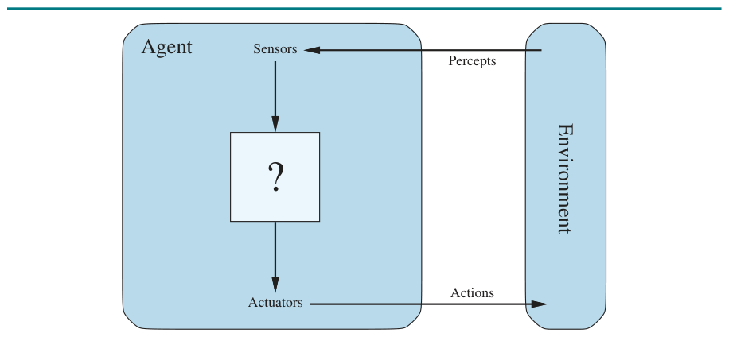
To separate what an agent does from how its code computes those decisions, Russell and Norvig define four foundational terms:为了把“智能体在外部表现为何种行为”与“内部代码如何算出决策”拆分开，教材定义了四个基础概念：
- A percept（感知）is the raw input delivered by an agent's sensors at a single instant, such as "I am in square A and it is dirty."感知是传感器在某一瞬间提供的原始输入，例如“我位于方格 A，且这里有灰尘”。
- The percept sequence（感知序列）is the complete history of every percept the agent has ever received up to the current moment.感知序列是智能体截至当前所接收到的全部感知的完整历史。
- The agent function（智能体函数）is an abstract mathematical mapping from every possible percept sequence to an action, describing external behavior like a lookup table.智能体函数是从每一种可能感知序列到动作的抽象数学映射，好比一张从外部刻画行为的对照表。
- The agent program（智能体程序）is the concrete code executing on a physical architecture to produce that behavior; many different programs can realize the exact same agent function.智能体程序则是在具体体系结构上运行、用于产生该行为的代码；许多截然不同的程序都可以实现同一个智能体函数。
The two-square vacuum world两方格吸尘器世界
Real-world environments have billions of states, making it impossible to inspect an entire agent function at once. A miniature toy domain with just two squares, A and B—each either clean or dirty—lets us write out concrete rows and verify behavior by hand.真实环境往往包含海量状态，我们无法直接俯瞰整张智能体函数表。引入只有 A、B 两个方格（每格或干净或脏）的极简“吸尘器世界”，就能把映射表具体写出来并手工验证。
Here each percept has the form \([\text{location},\text{status}]\), such as \([A,\text{Dirty}]\), and the agent chooses from four actions: Left, Right, Suck, and NoOp (do nothing).在这个世界中，每次感知形如 \([\text{location},\text{status}]\)（例如 \([A,\text{Dirty}]\)），智能体可从四个动作中选择：Left（左移）、Right（右移）、Suck（吸尘）和 NoOp（原地不动）。

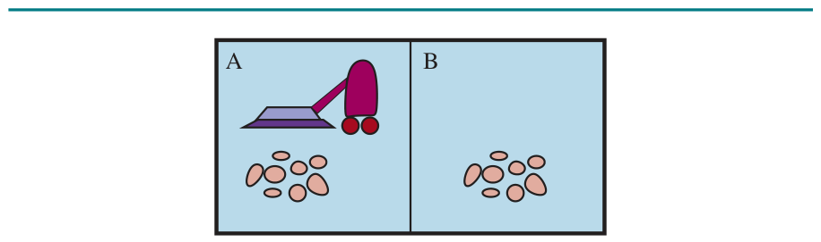
Consider a simple policy: suck whenever the current square is dirty, and otherwise move to the other square. Writing its behavior as an agent function yields an infinite table beginning as follows:以一个直觉策略为例：若当前方格脏就吸尘，否则移动到另一格。把它的外部行为写成智能体函数，就会得到一张从短到长无限延伸的表格（截取前几行如下）：
| Percept sequence感知序列 | Action动作 |
|---|---|
| [A, Clean] | Right |
| [A, Dirty] | Suck |
| [B, Clean] | Left |
| [B, Dirty] | Suck |
| [A, Clean], [A, Clean] | Right |
| [A, Clean], [A, Dirty] | Suck |
| ⋮ | ⋮ |
| [A, Clean], [A, Clean], [A, Clean] | Right |
| [A, Clean], [A, Clean], [A, Dirty] | Suck |
Of course, other agents could fill the right-hand column differently—even absurdly, like doing NoOp everywhere. Because every row can independently take any available action, the total number of distinct agent functions grows exponentially with the number of rows.当然，其他智能体可以在右侧栏填入截然不同的动作（甚至全部填 NoOp）。由于表格的每一行都能独立任选一个动作，所有可能智能体函数的总数随行数呈指数级膨胀。
For a tiny table with 3 rows and 2 actions, there are \(2^{3}=8\) possible functions, since each row independently offers 2 options and those choices multiply.例如一张只有 3 行、2 个动作的小表，每行都有 2 种填法，相乘共得到 \(2^{3}=8\) 个不同的智能体函数。
Practice练习
Q1. (Explain) Distinguish an agent function from an agent program. Can two different programs implement the same function?Q1.（简答）区分智能体函数与智能体程序。两个不同的程序能否实现同一个函数？
Answer
- Function vs. program: The agent function is an abstract mathematical mapping from complete percept sequences to actions—an external specification of behavior. The agent program is the concrete code running on a physical architecture that computes the next action from incoming percepts.函数与程序：智能体函数是从完整感知序列到动作的抽象数学映射，从外部描述行为；智能体程序则是运行在体系结构上的具体代码，负责根据输入的感知计算动作。
- Yes, multiple programs can match: Both a giant lookup-table program and a three-line reflex program implement the exact same vacuum-world function, because a function constrains only input–output behavior and not the internal computation.可以由不同程序实现：巨型查表程序和三行反射程序都能实现同一个吸尘器世界函数，因为函数只约束输入—输出行为，不限制内部计算方式。
Q2. (Counting) In the two-square vacuum world, a percept is [location, status] and the actions are Left, Right, and Suck.Q2.（计数）在两方格吸尘器世界中，感知为 [位置, 状态]，可用动作为 Left、Right 和 Suck。
- How many distinct percepts exist?共有多少种不同的感知？
- How many distinct agent functions exist if only percept sequences of length 1 are considered?若只考虑长度为 1 的感知序列，共有多少种不同的智能体函数？
- How many distinct functions exist if NoOp is added as a fourth action?若再加入 NoOp 作为第四个动作，函数总数变为多少？
Answer
- (a) Distinct percepts: 2 locations × 2 statuses = 4 percepts (\([A,\text{Clean}]\), \([A,\text{Dirty}]\), \([B,\text{Clean}]\), \([B,\text{Dirty}]\)).(a) 感知总数：2 个位置 × 2 种状态 = 4 种感知（\([A,\text{Clean}]\)、\([A,\text{Dirty}]\)、\([B,\text{Clean}]\)、\([B,\text{Dirty}]\)）。
- (b) With 3 actions: The table has \(m=4\) rows, each independently holding one of 3 actions, giving \(3^{4}=81\) agent functions.(b) 3 个动作时：表格有 \(m=4\) 行，每行独立选 3 个动作之一，共 \(3^{4}=81\) 个智能体函数。
- (c) With 4 actions: Adding
NoOpincreases choices per row to 4, giving \(4^{4}=256\) agent functions.(c) 4 个动作时：加入NoOp后每行有 4 种选法，共 \(4^{4}=256\) 个智能体函数。
思路：表格行数 \(m\) 等于感知数，每行独立选动作，因此函数总数为 \(\lvert A\rvert^{m}\)。
Rationality ★★理性
Goal. State the formal definition of a rational agent, explain why rationality differs from omniscience and perfection, and judge whether an agent is rational under a specified performance measure.目标。叙述理性智能体的严格定义，解释理性为何不同于全知与完美，并能在给定性能度量下判断智能体是否理性。
Core idea: A rational agent chooses whichever action maximizes its expected performance score, given everything it has perceived and already knows.核心思路：理性智能体依据迄今获得的感知序列与内置先验知识，选择能使其期望性能得分最大化的动作。
Step 1: the performance measure第 1 步：性能度量
Before calling an agent "good" or "rational," we need an objective yardstick for success. A performance measure（性能度量）evaluates the sequence of environment states produced over time, rather than grading the agent's own self-assessment or specific motions, and is fixed externally by the designer or user.在评判智能体是否“够聪明”之前，必须先立一把客观标尺。性能度量由设计者或用户预先在外部设定，专门用来给一连串环境状态打分，而不是听信智能体的主观自评或盲目考核它的特定动作。
As a rule of thumb, design the performance measure around what state you want in the environment, not how you expect the agent to behave. If you pay a vacuum robot for every gram of dirt it sucks up, a rational optimizer will suck up dirt, dump it back onto the floor, and suck it up again—whereas awarding one point per clean square per time step (minus small penalties for power and noise) rewards keeping the floor clean.设计标尺的核心原则是：只考核想要的最终环境状态，不要直接奖励某套固定动作。如果按吸起灰尘的重量给扫地机器人算分，理性智能体就会反复吸起灰尘、倒回地板再吸起来刷分；相反，若改为“每步每个干净方格记 1 分，再微扣耗电与噪声分”，才能引导它真正保持地面整洁。
Step 2: the definition第 2 步：理性的正式定义
Whether an action is rational at any moment depends on four things: the performance measure defining success, the agent's prior knowledge of the environment, the actions available to it, and its percept sequence observed so far.某一时刻的动作是否理性，取决于四个要素：衡量成败的性能度量、对环境的先验知识、可用的动作集，以及至今为止观察到的感知序列。
Definition. For each possible percept sequence, a rational agent（理性智能体）selects an action that is expected to maximize its performance measure, given the evidence provided by the percept sequence and whatever built-in knowledge the agent has.定义。对于每一种可能的感知序列，理性智能体在感知序列所提供的证据以及自身内置知识的条件下，选择一个预期能使其性能度量最大化的动作。
Under standard textbook assumptions—one point per clean square per step, known two-square geography, clean squares staying clean, and accurate sensors—the simple reflex vacuum agent (suck if dirty, otherwise move to the other square) is indeed rational. Change the rules, however, and that very same program becomes irrational in three common scenarios:在教材的默认设定下（每步每块干净方格得 1 分、两格地图已知、干净方格不会再脏、传感器准确），简单的反射型吸尘智能体（脏就吸，否则移去另一格）确实是理性的。但只要微调环境设定，这套完全相同的程序就会在下面三种情形下变得不理性：
- Movement incurs a penalty: If every move costs one point, the agent keeps oscillating back and forth after both squares are clean, bleeding points unnecessarily.移动需要扣分：若每次移动都要扣 1 分，它在两格都干净后仍会来回空跑，白白失分。
- Clean squares can get dirty again: If the agent ever stopped moving, it would miss newly appearing dirt—whereas if it keeps patrolling when movement is penalized, it must balance patrol cost against expected dirt.干净方格会再次变脏：此时一停不动就会漏掉新灰尘（而若同时伴随移动扣分，则不能无脑来回瞎逛，须权衡巡逻代价与预期灰尘）。
- The geography is unknown: A fixed two-square rule cannot explore unfamiliar rooms or navigate around obstacles.地图结构未知：写死的“左/右切换”规则无法系统探索陌生房间或绕开障碍物。
Step 3: rationality is not omniscience第 3 步：理性不等于全知
A common misconception confuses rational decision-making with guaranteed success. An omniscient（全知的）agent knows the actual outcome of every action in advance—an impossible standard in the real world—so perfection maximizes actual outcomes, whereas rationality maximizes expected performance given what the agent knows.初学者常把“理性决策”误解为“必胜无疑”。全知的智能体能预先洞悉每个动作的真实结局，这在现实中绝无可能；因此完美追求的是实际结果最优，而理性追求的是基于当前已知信息的期望性能最优。
Suppose you check both ways at a crosswalk, see zero oncoming traffic, step onto the street, and are struck by a falling airplane cargo door. That freak accident makes you unlucky, not irrational, because your decision maximized expected safety given everything your sensors could possibly tell you.假设你在路口左右张望确认没有车辆，刚走上斑马线却被天降飞机货舱门砸中——这纯属厄运而非不理性，因为根据你传感器所能获知的全部信息，过马路已经最大化了你的期望安全度。
At the same time, rationality is not an excuse to sit passively with blinders on; it actively requires three capabilities:同时，理性也绝不等于“两眼一抹黑地消极乱猜”，它实质上要求智能体具备以下三项主动能力：
- Information gathering（信息收集）: taking actions specifically to acquire useful future percepts, such as looking both ways before crossing or exploring an unmapped room.信息收集：主动采取行动以获取有价值的未来感知，例如过马路前左右张望，或在未知地图中先行探索。
- Learning（学习）: extracting patterns from incoming percepts to improve future decisions; only in an already completely known, static, deterministic environment is learning unnecessary.学习：持续从感知经验中提炼规律以优化后续决策；唯有在规律完全已知且一成不变的环境中才无需学习。
- Autonomy（自主性）: steering behavior via one's own percepts and learning rather than blindly obeying hard-coded prior knowledge from the designer.自主性：依据自身感知与学习来调整行为，而不是死板执行设计者预设的固定套路。
Practice练习
Q1. (True/false) "A rational agent never makes a mistake and always achieves the best possible outcome." Justify.Q1.（判断）“理性智能体从不犯错，并且总能取得最好的实际结果。”判断对错并说明理由。
Answer
False. A rational agent maximizes expected performance given its percept sequence and built-in knowledge, not actual performance. Unpredictable events (like a falling cargo door) or hidden state can still produce a poor outcome; guaranteeing the best actual outcome every time would require omniscience, which no real agent possesses.错。理性智能体在当前感知序列与内置知识条件下最大化的是期望性能，而非实际结果。不可预测的突发事件（如高空坠物）或隐藏信息仍可能带来坏结局；若要次次都稳拿最好结果，就需要全知能力，而任何现实智能体都不可能全知。
Q2. (Design) A vacuum robot earns one point for every unit of dirt it sucks up. What will a rational agent do, and what measure is better?Q2.（设计）假设扫地机器人每吸起一单位灰尘就得 1 分，理性智能体会怎么做？什么性能度量更合理？
Answer
- Perverse behavior: A rational agent maximizes the stated metric as written, so it will suck up dirt, dump it back onto the floor, and suck it up repeatedly to rack up infinite points without keeping the room clean.钻空子行为：理性智能体会严格最大化给定指标，于是它会把灰尘吸起来、倒回地上再吸起来，靠循环刷分获利而根本不会让房间保持干净。
- Better measure: Score desired environment states instead of actions—for example, award one point per clean square per time step, minus small penalties for electricity consumed and noise generated.更合理的度量：改对环境状态而非动作打分——例如每个时间步每个干净方格记 1 分，再对耗电量和噪声施加小额扣分。
思路：奖励“想要的环境状态”，切忌奖励“你以为智能体该做的动作”。
Task Environments and PEAS ★★★任务环境与 PEAS
Goal. Write a complete PEAS specification for any task, classify its environment across all seven dimensions with a brief justification for each, and explain how those properties constrain agent architecture.目标。能为任意任务写出完整的 PEAS 描述，在七个维度上对任务环境分类并各附一句简明理由，并说明这些性质如何约束智能体的架构设计。
Step 1: describe the task with PEAS第 1 步：用 PEAS 描述任务
Core idea: Before writing any code, specify a task environment with PEAS—how success is measured, what world the agent inhabits, how it acts, and what it senses.核心思路：动手写代码之前，先用 PEAS 四要素框定任务环境——明确成功标准、所处世界、可用动作与可用感知。
Every rational agent is designed to solve a specific problem called a task environment（任务环境）. We formalize any task environment using four components abbreviated as PEAS（性能度量、环境、执行器、传感器）: the Performance measure, Environment, Actuators, and Sensors.每个理性智能体都是为了解决特定的任务环境而设计的。我们用 PEAS 四个维度来规范刻画任务环境：性能度量（Performance measure）、环境（Environment）、执行器（Actuators）和传感器（Sensors）。
| Agent智能体 | Performance measure性能度量 | Environment环境 | Actuators执行器 | Sensors传感器 |
|---|---|---|---|---|
| Vacuum cleaner吸尘机器人 | Clean squares per time step, minus energy and noise每步干净方格数，减去能耗与噪声 | Squares A and B, dirt方格 A 和 B、灰尘 | Left, Right, SuckLeft、Right、Suck | Location sensor, dirt sensor位置传感器、灰尘传感器 |
| Automated taxi自动驾驶出租车 | Safe, fast, legal, comfortable trip; profit; minimal disruption to others安全、快速、合法、舒适的行程；利润；对其他交通参与者干扰最小 | Roads, traffic, police, pedestrians, passengers, weather道路、往来车辆、交警、行人、乘客、天气 | Steering, accelerator, brake, turn signals, horn, display, speech方向盘、油门、刹车、转向灯、喇叭、显示屏、语音 | Cameras, radar/lidar, speedometer, GPS, engine sensors, accelerometer, microphones, touchscreen摄像头、雷达/激光雷达、速度计、GPS、发动机传感器、加速度计、麦克风、触摸屏 |
| Medical diagnosis system医疗诊断系统 | Healthy patient, reduced costs, fewer lawsuits患者康复、降低医疗费用、减少纠纷 | Patient, hospital, medical staff患者、医院、医护人员 | Screen display of questions, tests, diagnoses, treatments输出问诊问题、检查建议、诊断与治疗方案 | Keyboard/touchscreen/voice entry of symptoms and test findings通过键盘、触屏或语音录入的症状与化验结果 |
| Satellite image analysis system卫星图像分析系统 | Accurate categorization of objects and terrain准确识别与分类地物和地形 | Orbiting satellite, downlink channel, atmosphere/weather在轨卫星、下行通信链路、大气与天气 | Display of scene categorization场景分类结果展示 | High-resolution digital camera高分辨率数码相机 |
Notice how realistic measures such as the taxi's balance conflicting objectives (speed versus safety, comfort versus profit), requiring explicit trade-offs. Narrowing the environment—say, restricting operation to one sunny city—dramatically simplifies design.注意像自动驾驶出租车这样的现实任务，其性能度量往往包含相互冲突的目标（如速度与安全、舒适与利润），设计时必须作出权衡；反之，若将环境限定为晴天下的单一城市，设计难度便会大幅下降。
Step 2: the six dimensions第 2 步：任务环境的六个核心维度
Core idea: Each environment dimension answers a structural diagnostic question that directly tells you what machinery your agent architecture must include.核心思路：每个环境维度都是一道架构诊断题，其答案直接决定了智能体必须配备哪些核心组件。
Once PEAS is clear, we classify the task environment along six standard dimensions (plus a seventh property describing the agent's knowledge). Each dimension isolates one source of difficulty that dictates which AI techniques are required:理清 PEAS 之后，我们沿六个标准维度（外加一个刻画知识完备度的第七维）对环境分类。每个维度都对应一类特定难点，直接决定后续要采用哪类 AI 方法：
| Dimension维度 | Diagnostic question and key terms诊断问题与关键术语 | Everyday example日常示例 |
|---|---|---|
| Fully observable（完全可观测）vs. partially observable（部分可观测） | Do sensors reveal the complete relevant state? Sensor noise or missing fields make it partial; zero sensors make it unobservable（不可观测）.传感器能否反映全部相关状态？存在噪声或状态缺失时为部分可观测；毫无传感器时则为不可观测。 | Chess: fully observable. Taxi unaware of other drivers' intentions: partially observable.国际象棋：完全可观测。看不清他车意图的出租车：部分可观测。 |
| Single-agent（单智能体）vs. multiagent（多智能体） | Does another entity optimize its own score that depends on my actions? If not, treat it simply as physical dynamics.是否有其他实体在最大化自身得分且受我方行为影响？若无，则只算作环境物理规律的一部分。 | Crossword: single-agent. Chess: multiagent (two competitors).填字游戏：单智能体。国际象棋：多智能体（双方对抗）。 |
| Deterministic（确定性）vs. nondeterministic（非确定性） | Do current state and action uniquely fix the next state? When transitions carry probabilities, the model is stochastic（随机的）.下一状态是否由当前状态和动作唯一决定？若转移结果带有概率分布，则称为随机的。 | Chess: deterministic. Backgammon (dice), taxi (traffic): stochastic.国际象棋：确定性。西洋双陆棋（掷骰子）、出租车（路况）：随机性。 |
| Episodic（片段式）vs. sequential（序贯式） | Is each decision self-contained, or can today's action ripple forward into every future decision?每次决策是否彼此独立，还是当前选择会影响之后的一连串决策？ | Spotting defective parts on a belt: episodic. Chess, taxi: sequential.流水线质检次品：片段式。国际象棋、出租车：序贯式。 |
| Static（静态）vs. dynamic（动态）vs. semidynamic（半动态） | Does the world keep evolving while the agent deliberates? In semidynamic worlds, the state freezes while the score ticks down.智能体思考期间外部世界是否会变化？半动态指环境本身静止，但性能得分随时间流逝下降。 | Crossword: static. Chess with a clock: semidynamic. Taxi: dynamic.填字游戏：静态。计时国际象棋：半动态。出租车：动态。 |
| Discrete（离散）vs. continuous（连续） | Are states, time, percepts, and actions drawn from a finite or countable set, or from continuous real-valued ranges?状态、时间、感知与动作是有限/可数个离散值，还是连续变化的实数区间？ | Chess: discrete. Taxi: continuous (steering angle, speed, time).国际象棋：离散。出租车：连续（转向角、车速、时间）。 |
A seventh axis—known（已知）versus unknown（未知）—asks whether the agent knows the environment's "physics" (what outcomes each action causes), making it a property of the agent's knowledge rather than the environment alone. Thus a game of Solitaire is known yet partially observable (cards sit face down), whereas an unfamiliar video game can be unknown yet fully observable (the whole screen is visible, even before you learn what the buttons do).第七个维度是已知与未知：智能体是否掌握环境“规则”（即每个动作会导致何种结果）？这刻画的是智能体知识而非单纯的环境属性。因此，单人纸牌接龙属于已知但部分可观测（扣着的牌看不到）；而刚上手的新电子游戏虽完全可观测（屏幕一览无余），但在摸清按键作用前却是未知的。
Here is how five benchmark tasks line up across the six dimensions:下表汇总了五个经典任务在六个维度上的典型分类：
| Task environment任务环境 | Observable可观测 | Agents智能体 | Deterministic确定性 | Episodic片段式 | Static静态 | Discrete离散 |
|---|---|---|---|---|---|---|
| Crossword puzzle填字游戏 | Fully完全 | Single单智能体 | Deterministic确定性 | Sequential序贯式 | Static静态 | Discrete离散 |
| Chess with a clock计时国际象棋 | Fully完全 | Multi多智能体 | Deterministic确定性 | Sequential序贯式 | Semi半动态 | Discrete离散 |
| Poker扑克 | Partially部分 | Multi多智能体 | Stochastic随机 | Sequential序贯式 | Static静态 | Discrete离散 |
| Backgammon西洋双陆棋 | Fully完全 | Multi多智能体 | Stochastic随机 | Sequential序贯式 | Static静态 | Discrete离散 |
| Taxi driving出租车驾驶 | Partially部分 | Multi多智能体 | Stochastic随机 | Sequential序贯式 | Dynamic动态 | Continuous连续 |
The hardest environment sits at the tough end of every axis: partially observable, multiagent, nondeterministic (stochastic), sequential, dynamic, continuous, and unknown. Automated taxi driving hits every one of these extremes except that traffic physics and road rules are mostly known.最棘手的环境在所有维度上都落在最难一端：部分可观测、多智能体、非确定性（随机）、序贯式、动态、连续且未知。自动驾驶出租车几乎集齐了全部难点，唯一减轻的是交规与车辆动力学大体已知。
Step 3: what the classification means for the design第 3 步：环境分类如何决定架构设计
Each difficult property immediately forces a specific capability into the agent architecture:每一项偏难的环境性质，都会直接倒逼智能体在架构上补齐对应的机制：
- Partially observable: The current percept is incomplete, so the agent must maintain an internal state (Section 1.5).部分可观测：单凭当前感知拼不出完整状态，因此必须维护内部状态（第 1.5 节）。
- Sequential: Early actions shape future possibilities, forcing the agent to look ahead via search or planning.序贯式：当下决定会影响后续局面，必须通过搜索或规划向前看。
- Stochastic: Outcomes are uncertain, so the agent must reason with probabilities and maximize expected utility.随机性：动作结果不唯一，必须借助概率分布与期望值来做权衡。
- Multiagent and competitive: Adversaries actively work against you, calling for adversarial game-playing methods (Chapter 5).多智能体且竞争：对手会针对性反制，需采用博弈对抗算法（第 5 章）。
- Dynamic: The world moves on without waiting, so decisions must satisfy real-time deadlines.动态：世界不等你慢慢算，决策必须在限时内给出。
- Unknown: Because transition rules are missing upfront, the agent must explore and learn from experience.未知：开局未知环境规律，必须主动探索并从经验中学习。
Keep in mind that classification depends on how the task boundary is drawn. Medical diagnosis is episodic if each patient encounter simply maps fixed symptoms to a diagnosis, but sequential once follow-up tests, treatments, and monitoring enter the loop—so always state your framing assumption explicitly.此外，分类结果常取决于任务边界的界定。例如医疗诊断若只按单次症状开出诊断，可视为片段式；若把后续化验、用药与长期复查纳入闭环，就变成了序贯式。因此作答时遇到模糊任务，务必先写明假设前提。
Practice练习
Q1. (PEAS) Write a PEAS description for a software agent that buys used AI textbooks online, and identify which environment properties make the task difficult.Q1.（PEAS）为一个在网上购买二手 AI 教材的软件智能体写出 PEAS 描述，并指出哪些环境性质使其具有挑战性。
Answer
- Performance measure: Wish-list textbooks acquired, low total cost (price plus shipping), good physical condition, on-time delivery, and staying within budget.性能度量：买到心愿单书籍、含运费总价低、书况良好、按时送达且不超预算。
- Environment: Online bookstores and auction platforms, seller listings and ratings, competing buyers, payment gateways, and shipping carriers.环境：网络书店与拍卖网站、卖家商品页与信用评分、其他竞买者、支付系统与物流承运商。
- Actuators: Submitting search queries, clicking links, placing bids or orders, messaging sellers, and authorizing payments.执行器：提交搜索、点击页面、出价或下单、给卖家发消息以及完成付款。
- Sensors: Web-page text and book photos, listed prices, seller ratings, order confirmations, and email notifications.传感器：网页文本与书况图片、标价、卖家评分、订单确认信息与电子邮件。
Hard properties: Partially observable (true book wear and rival bids are hidden), multiagent and competitive (other buyers), stochastic (seller reliability and transit delays), sequential (spending budget now constrains later purchases), and dynamic (prices and inventory change while the agent deliberates).难点性质：部分可观测（真实磨损与对手出价隐藏）、多智能体且竞争（其他买家竞拍）、随机性（卖家履约与物流延迟）、序贯式（眼下花掉预算会限制后续购买）以及动态（思考期间价格与库存随时变化）。
Q2. (Classification) Classify (a) a Sudoku solver and (b) a conveyor-belt bolt-inspection robot across all seven dimensions, giving a short reason for each.Q2.（分类）在七个维度上分别对 (a) 数独求解器和 (b) 传送带螺栓质检机器人进行分类，并各附一句简短理由。
Answer
| Dimension维度 | (a) Sudoku solver（a）数独求解器 | (b) Bolt inspector（b）螺栓质检机器人 |
|---|---|---|
| Observable可观测 | Fully: the entire 9×9 grid is visible完全：整张数独盘面一览无余 | Partially: camera sees one side and suffers sensor noise部分：摄像头只拍到一面且存在传感器噪声 |
| Agents智能体 | Single: no competing player单智能体：无其他博弈对手 | Single: conveyor and bolts follow physics单智能体：传送带与螺栓只服从物理规律 |
| Deterministic确定性 | Deterministic: placing a digit updates the grid predictably确定性：填数对盘面的改变完全确定 | Stochastic: imaging noise and random defects随机：存在成像噪声与随机出现的瑕疵 |
| Episodic片段式 | Sequential: each digit constrains later squares序贯式：每次填数都会约束后续空格 | Episodic: each bolt is inspected independently片段式：每个螺栓的判定相互独立 |
| Static静态 | Static: the puzzle waits while the solver thinks静态：求解器思考时盘面不会自行变化 | Dynamic: the conveyor belt keeps moving动态：思考期间传送带持续前进 |
| Discrete离散 | Discrete: 81 cells and digits 1–9离散：81 个格子与 1–9 有限数字 | Continuous: camera pixels, positions, and timing连续：图像像素、物理位置与时间连续变化 |
| Known已知 | Known: Sudoku rules are given upfront已知：数独规则预先给定 | Known if defect thresholds are specified upfront若缺陷判定标准预先给定，则为已知 |
思路：每一维都附一句理由；边界有歧义时主动写明前提假设。
Q3. (True/false) Justify your answer for each claim:Q3.（判断）对以下各命题判断正误并说明理由：
- Every fully observable environment is deterministic.所有完全可观测的环境都是确定性的。
- Every known environment is fully observable.所有已知的环境都是完全可观测的。
- Chess played with a clock is static.带计时器的国际象棋是静态环境。
Answer
- (a) False. Backgammon is fully observable (both players see the entire board and dice), yet stochastic because dice rolls introduce randomness.(a) 错。西洋双陆棋是完全可观测的（双方能看清全盘与骰子点数），但由于掷骰子的随机性，它属于随机环境。
- (b) False. Solitaire has completely known rules, yet remains partially observable because face-down cards are hidden from the player.(b) 错。纸牌接龙的规则完全已知，但由于牌面朝下的暗牌不可见，它仍属于部分可观测环境。
- (c) False. Although the chess pieces wait while the agent thinks, the ticking clock reduces available time and can forfeit the game, making it semidynamic rather than static.(c) 错。思考期间棋盘局面虽静止不动，但计时器不断走字会压缩时间甚至判负，因此它属于半动态而非静态。
Agent Programs and the Table-Driven Design ★★智能体程序与查表式设计
Goal. Explain why a table-driven agent fails in practice, compute the exact row count of its lookup table, and show how a compact program produces identical behavior.目标。解释查表型智能体在现实中为何行不通，计算其查找表的精确行数，并说明紧凑程序如何实现完全相同的行为。
Core idea: An agent pairs a physical architecture with an agent program that converts the incoming current percept into an action.核心思路：智能体由物理体系结构与智能体程序共同组成，程序负责将当前输入感知转换为输出动作。
In AI design, we summarize this hardware–software split by the equation \(\text{agent}=\text{architecture}+\text{program}\). The agent architecture（体系结构）provides the computing device, sensors, and actuators, and the program must match what that body can execute—a program emitting Walk makes no sense without legs.在人工智能系统设计中，软硬件分工可浓缩为一个经典等式：\(\text{agent}=\text{architecture}+\text{program}\)（智能体 = 体系结构 + 程序）。其中体系结构提供计算设备、传感器与执行器，且程序必须与机体能力匹配（返回 Walk 的程序显然需要一双腿）。
Crucially, unlike the mathematical agent function (which sees the entire history), every agent program receives only the current percept from the environment on each step. Therefore, whenever an action must depend on past percepts, the program has to record that history itself.尤其要注意接口差异：智能体函数在数学上以完整感知序列为输入，但现实中环境每步只向智能体程序送入当前感知；因此凡是依赖历史信息的决策，程序都必须自行把历史存下来。
The table-driven agent查表型智能体
Suppose we try the most brute-force design imaginable: build the entire agent function directly as a giant lookup table in memory. At each step, the program appends the latest percept to its stored sequence and returns the prewritten action for that full history:如果采取最直白粗暴的思路，把整张智能体函数直接塞进内存做成查找表会怎样？该程序每步只需把新感知拼到历史序列末尾，再去表里查出对应的预设动作即可：
function TABLE-DRIVEN-AGENT(percept) returns an action
persistent: percepts, a sequence, initially empty
table, a table of actions indexed by percept sequences, initially fully specified
append percept to the end of percepts
action ← LOOKUP(percepts, table)
return action
In principle, if every row of table is filled correctly, this six-line wrapper implements any desired agent function. In practice, however, the table size explodes exponentially with the agent's lifetime, making the approach utterly impossible.从理论上讲，只要把 table 的每一行都填对，这段短短六行的壳程序就能实现任意目标智能体函数；但在现实中，这张表的规模随智能体寿命呈指数级暴涨，彻底沦为纸上谈兵。
Accordingly, table-driven design breaks down for three fatal reasons:因此，查表式设计因以下三个致命瓶颈而彻底不可行：
- No storage space: No physical computer can store an exponentially growing table for any realistic task.空间存不下：任何物理计算机都无法装下随寿命指数膨胀的巨型表格。
- No authoring time: A human designer would never live long enough to specify every row by hand.人工写不完：设计者根本没有时间把所有表项逐一填满。
- Cannot be learned: Even a learning agent could never experience enough distinct histories to fill the entries from data.经验学不全：哪怕交给学习算法，智能体穷尽一生也遇不完所有历史来填表。
Instead of memorizing histories, AI replaces the infinite table with a compact rule or algorithm—such as this three-line vacuum program:AI 的出路正是用简洁规则或算法替代无穷无尽的死记硬背——例如下面这段仅三行的吸尘器程序：
function REFLEX-VACUUM-AGENT([location, status]) returns an action
if status = Dirty then return Suck
else if location = A then return Right
else if location = B then return Left
By ignoring irrelevant percept history, this three-line program collapses \(4^{T}\) possible histories down to just 4 current percepts while implementing the exact same infinite agent function.通过丢弃无关的感知历史，这段三行代码把原本高达 \(4^{T}\) 条的历史序列压缩为仅仅 4 个当前感知条件，却实现了完全相同的无限大智能体函数。
Practice练习
Q1. (Calculation)Q1.（计算）
- A table-driven vacuum agent has 4 possible percepts. Compute the exact table size for \(T=3\) and \(T=10\), and approximate it for \(T=1000\).一个查表式吸尘智能体有 4 种可能感知。求寿命为 \(T=3\) 和 \(T=10\) 时的精确行数，以及 \(T=1000\) 时的近似数量级。
- A drone camera produces \(640\times480\) pixels at 8 bits per pixel and 10 frames per second. How many bits arrive in one minute, and roughly how many distinct one-minute percept sequences exist?某无人机摄像头以每秒 10 帧输出 \(640\times480\) 像素、每像素 8 位的画面。一分钟共流入多少位数据？一分钟内的不同感知序列大约有多少种？
Answer
- (a) Vacuum table rows: \(N(3)=4(4^{3}-1)/3=84\) (check: \(4+16+64=84\)), and \(N(10)=4(4^{10}-1)/3=1{,}398{,}100\). At \(T=1000\), \(N(1000)\approx\frac{4}{3}\cdot4^{1000}\approx1.5\times10^{602}\), dwarfing the \(10^{80}\) atoms in the observable universe.(a) 吸尘器查表行数：\(N(3)=4(4^{3}-1)/3=84\)（验算：\(4+16+64=84\)）；\(N(10)=4(4^{10}-1)/3=1{,}398{,}100\)；当 \(T=1000\) 时，\(N(1000)\approx\frac{4}{3}\cdot4^{1000}\approx1.5\times10^{602}\)，远远超过可观测宇宙的 \(10^{80}\) 个原子。
- (b) Drone video rate and sequences: Each frame holds \(640\cdot480\cdot8=2{,}457{,}600\) bits, giving \(24{,}576{,}000\) bits/s (about 3 MB/s) at 10 fps, or \(1.47\times10^{9}\) bits (about 184 MB) per minute. Distinct one-minute histories therefore reach roughly \(2^{1.47\times10^{9}}\approx10^{4.4\times10^{8}}\), completely impossible to tabulate.(b) 无人机视频数据量与序列数：单帧为 \(640\cdot480\cdot8=2{,}457{,}600\) 位，按每秒 10 帧计合 \(24{,}576{,}000\) 位/秒（约 3 MB/s），每分钟累计 \(1.47\times10^{9}\) 位（约 184 MB）。一分钟内不同的感知序列数约达 \(2^{1.47\times10^{9}}\approx10^{4.4\times10^{8}}\)，任何查找表都绝无可能容纳。
Q2. (Explain) The agent function may depend on the full percept sequence, yet an agent program receives only the current percept as input. How can a program still implement a history-dependent function?Q2.（简答）智能体函数可以依赖整条感知序列，但智能体程序每次只接收当前感知作为输入。程序如何仍然能实现依赖历史的函数？
Answer
Because the environment passes only the latest percept on each call, any program needing history must maintain persistent memory across calls—either by storing the raw percept log (as TABLE-DRIVEN-AGENT appends to percepts) or, far more practically, by updating a compact summary called an internal state (as in model-based agents). A stateless program can only implement functions that depend solely on the current percept.由于环境每次调用只传入当前感知，程序若需依赖历史，就必须跨步骤维护持久记忆——要么直接记录原始感知日志（如 TABLE-DRIVEN-AGENT 不断追加 percepts），要么更高效地将其浓缩更新为内部状态（即基于模型的智能体）。完全无状态的程序只能实现仅依赖当前感知的函数。
The Four Basic Agent Designs ★★★四种基本智能体设计
Goal. Name the four basic agent architectures, explain what capability each layer adds and when it fails, select the simplest adequate design for a task, and compute expected-utility choices.目标。说出四种基本智能体架构，说明每一层新增了什么机制以及在何处失效，为给定任务选出最简单且够用的设计，并能完成期望效用选择计算。
Core idea: The four basic agent architectures form a cumulative hierarchy—starting with pure percept-to-action rules, then adding internal state, explicit goals, and finally a numeric utility function.核心思路：四种基本智能体架构呈逐层递进关系：从纯感知—动作规则起步，依次补入内部状态、显式目标以及数值化的效用函数。
Any of these four architectures can also be equipped with learning components (Section 1.6) so its internal rules, models, or utilities improve with experience.此外，这四种基础架构中的任何一种都可以进一步改造成学习型智能体（见第 1.6 节），使规则、模型或效用函数随经验不断进化。
Step 1: simple reflex agent第 1 步：简单反射型智能体
Core idea: A simple reflex agent chooses actions solely from the current percept via fixed condition–action rules, keeping no memory of past steps.核心思路：简单反射型智能体不保留任何历史记忆，仅凭当前感知匹配固定的条件—动作规则来直接决策。
When an environment is small and fully visible at every instant, storing history is overkill. A simple reflex agent（简单反射型智能体）selects its action purely from the current percept using condition–action rules（条件—动作规则）, just like the three-line vacuum agent in Section 1.4.如果任务环境足够简单且每一瞬间的关键状态都一目了然，保留历史反而多余。此时采用简单反射型智能体即可：它完全忽略历史，仅凭当前感知通过条件—动作规则选择动作（第 1.4 节的三行吸尘程序正是典型代表）。

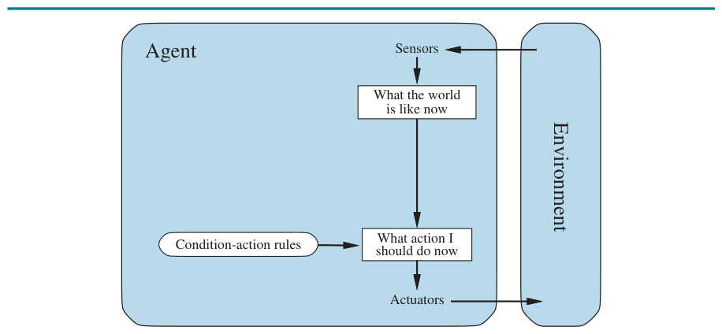
function SIMPLE-REFLEX-AGENT(percept) returns an action
persistent: rules, a set of condition–action rules
state ← INTERPRET-INPUT(percept)
rule ← RULE-MATCH(state, rules)
action ← rule.ACTION
return action
Here INTERPRET-INPUT abstracts the raw percept into a description of the current state, and RULE-MATCH returns the first rule whose condition matches that state.代码中，INTERPRET-INPUT 将原始感知抽象为当前状态描述，RULE-MATCH 则从中找出第一条条件吻合的规则并输出其动作。
Limitation: Pure reflexes succeed only when the current percept completely determines the right action—meaning the environment is effectively fully observable. Whenever crucial details are hidden, simple reflex agents fail or get trapped in infinite loops:局限性：纯反射设计只有在“单凭当前感知就足以做出唯一正确决策”（即环境本质上完全可观测）时才管用。一旦部分关键信息被遮蔽，它就会误判甚至陷入死循环：
- Missing temporal context: A single camera frame may not distinguish a car that is actively braking from one whose taillights are simply configured similarly—causing the agent to either slam the brakes needlessly or fail to stop.缺乏时间上下文：单帧图像可能分不清前车究竟在急刹还是只是尾灯样式如此，导致智能体要么无故猛刹、要么根本不刹。
- Infinite loops without state: A vacuum robot lacking a location sensor sees only
[Dirty]or[Clean]; mapping[Clean]toLefttraps it forever if it starts in A (and mapping it toRighttraps it in B).无记忆陷入死循环：失去位置传感器的吸尘机器人只能看到[Dirty]或[Clean]；若把[Clean]写死为Left，一旦从 A 出发就会永远撞墙原地踏步（写死Right则在 B 死循环）。
Escape via randomization: If that blind vacuum flips a coin on [Clean] to pick Left or Right with probability \(1/2\), it escapes the infinite loop and outperforms any deterministic simple reflex agent.随机化脱困：若这台没有位置传感器的机器人在见到 [Clean] 时抛硬币以 \(1/2\) 概率随机选 Left 或 Right，就能打破死循环，表现反超任何确定性的简单反射型智能体。
Even so, randomization is rarely rational in single-agent environments because adding memory yields a better deterministic agent; it mainly becomes rational in competitive multiagent games (like rock–paper–scissors) to stay unpredictable.不过，在单智能体环境中随机化通常仍不算最优解——只要加一点记忆就能做出更稳妥的确定性智能体；随机化真正的用武之地在于“剪刀石头布”这类竞争性多智能体博弈，用于防止对手摸透规律。
Step 2: model-based reflex agent第 2 步：基于模型的反射型智能体
Core idea: A model-based reflex agent augments simple reflexes with an internal state, enabling it to track parts of the world that sensors cannot currently observe.核心思路：基于模型的反射型智能体在反射规则之上增加了内部状态，从而能持续追踪传感器当前看不见的外部信息。
When sensors show only partial snapshots—like a truck blocking your view ahead or a vacuum without full-house vision—the agent needs an internal scratchpad to bridge the gaps. A model-based agent（基于模型的智能体）maintains an internal state（内部状态）that summarizes its percept history using two kinds of world knowledge:当传感器只能传回局部片段（比如前车被大卡车挡住，或吸尘器看不到隔壁房间）时，智能体需要一块“脑内白板”来填补盲区。基于模型的智能体通过维护内部状态来浓缩感知历史，并依赖两类知识不断刷新该状态：
- The transition model（转移模型）describes how the world evolves both on its own and in response to the agent's actions—for example, turning the wheel clockwise steers the car right, and rain gradually obscures the windshield.转移模型：刻画世界如何随自身规律以及智能体动作而演变——例如向右打方向盘车辆就右转、下雨会让挡风玻璃变模糊。
- The sensor model（传感器模型）describes how underlying world states manifest in the agent's percepts—for example, a braking vehicle ahead produces bright red regions in the camera frame.传感器模型：刻画真实世界状态如何在感知中体现——例如前车踩刹车会在摄像头画面里呈现大片红色尾灯。

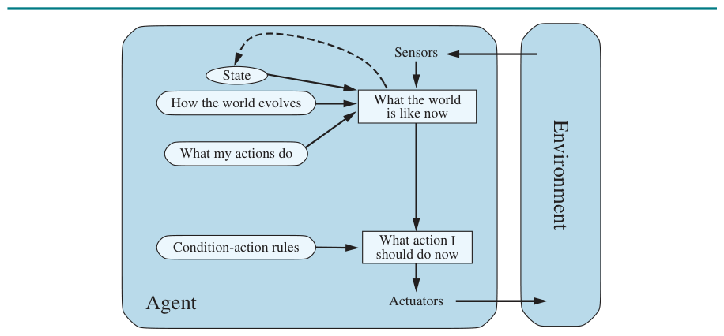
function MODEL-BASED-REFLEX-AGENT(percept) returns an action
persistent: state, the agent's current conception of the world state
transition model, how the next state depends on the current state and action
sensor model, how the current world state is reflected in the agent's percepts
rules, a set of condition–action rules
action, the most recent action, initially none
state ← UPDATE-STATE(state, action, percept, transition model, sensor model)
rule ← RULE-MATCH(state, rules)
action ← rule.ACTION
return action
Because partial observability leaves genuine ambiguity, this internal state is never guaranteed to be exact—it is simply the agent's best informed estimate of reality (a taxi stopped behind a delivery truck cannot tell whether the truck is double-parked or waiting at a light, yet still must choose safely).由于部分可观测天然存在盲区，内部状态未必绝对精确，只是智能体对现实做出的最佳估计——就像跟在大货车后面的出租车虽看不清对方究竟是违停卸货还是在等红灯，仍必须据此安全决策。
Step 3: goal-based agent第 3 步：基于目标的智能体
Core idea: A goal-based agent combines a world model with explicit goals, using lookahead search or planning to pick actions that achieve where it wants to go.核心思路：基于目标的智能体把世界模型与显式目标结合起来，通过前瞻搜索或规划来选择能通向目标的动作序列。
Knowing the current state is still not enough whenever the right action depends on future destinations. At a three-way intersection, a taxi might legally turn left, go straight, or turn right; only knowing where it wants to arrive settles the choice. A goal-based agent（基于目标的智能体）therefore stores explicit goal（目标）descriptions and uses its transition model to predict future outcomes, finding multi-step action sequences via search and planning (Chapters 2–5).仅仅知道“我现在在哪、周围什么样”还不够，许多时候正确的动作取决于“我想去哪里”。走到十字路口时左转、直行、右转都合法，唯有结合目的地才能拍板。为此，基于目标的智能体显式保存目标信息，并利用转移模型推演不同动作的未来走向，通过搜索与规划找出通达目标的完整路径（见第 2–5 章）。

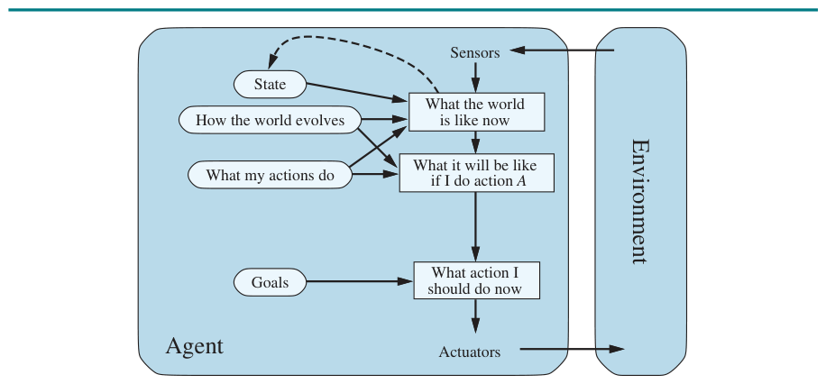
This brings huge flexibility over hard-coded rules. A reflex agent hits the brakes simply because a rule triggers on red lights, without understanding why; a goal-based agent brakes because it predicts that braking prevents a crash—and redirecting the taxi to a new passenger requires changing only its target goal, whereas a reflex agent would need its entire rule set rewritten.这种设计带来了远超硬编码规则的灵活性。反射型智能体看到红灯就刹车，根本不懂为什么；基于目标的智能体刹车，是因为它预判唯有刹车才能避免追尾。更关键的是，更换目的地时只需改一下目标，而反射型智能体则几乎要重写整套规则库。
Step 4: utility-based agent第 4 步：基于效用的智能体
Core idea: A utility-based agent scores states with a continuous utility function rather than a binary goal, letting it trade off competing objectives and choose the highest expected utility under uncertainty.核心思路：基于效用的智能体用连续的效用函数取代非黑即白的二元目标，从而能在多目标冲突与不确定环境下按最高期望效用择优。
Goals alone draw only a crude line between success and failure—yet many routes reach the airport, some faster, some safer, and some cheaper. A utility function（效用函数）internalizes the external performance measure by scoring every state with a real number representing desirability.目标只能粗暴地把结果一刀切为“成功”或“失败”，但条条大路通机场，有的路快、有的路稳、有的路省油。效用函数相当于外部性能度量的内置版本，为每个状态分配一个衡量满意度的实数。
Such scoring becomes indispensable in two situations: when multiple goals conflict (speed versus safety), and when uncertainty forces the agent to weigh odds by maximizing expected utility（期望效用）.这种打分机制在两种情形下不可或缺：一是速度与安全等目标相互打架时；二是结果充满不确定性、必须靠最大化期望效用来做赌注权衡时。

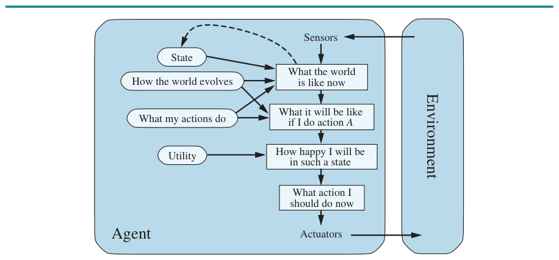
Note also that not every utility-based agent is model-based: a model-free agent（无模型智能体）learns action values directly from experience without ever modeling how actions transition the environment.还要补充一点：并非所有基于效用的智能体都基于模型。无模型智能体可以直接从经验中学习“在某种状态下选哪个动作好”，而无需显式建立环境如何转移的模型。
The four designs compared四种智能体设计横向对比
| Design设计类型 | Decides using决策依据 | Strengths擅长处理 | Limitation核心局限 | Taxi example出租车示例 |
|---|---|---|---|---|
| Simple reflex简单反射型 | Current percept and condition–action rules当前感知与条件—动作规则 | Fully observable tasks with straightforward rules规则清晰的完全可观测任务 | Fails or loops when percept alone hides the state当前感知揭示不出完整状态时易误判或死循环 | Brake immediately when red brake lights appear看到前车刹车灯亮就踩刹车 |
| Model-based reflex基于模型的反射型 | Percept, internal state (transition + sensor models), rules感知、内部状态（转移与传感器模型）、规则 | Partial observability部分可观测环境 | No explicit goals; behavior frozen in fixed rules无显式目标，行为仍受死规则束缚 | Remember cars spotted in the blind spot while changing lanes变道时记住盲区里曾出现过的车辆 |
| Goal-based基于目标 | State, world model, and goals via lookahead search/planning状态、模型与目标（前瞻搜索/规划） | Multi-step action sequences; easy to swap destinations长序列路径规划；更换目标极为方便 | Binary success/failure; cannot rank routes or weigh odds目标非成即败，无法权衡路线优劣或风险 | Turn left at a junction because the destination lies to the left因目的地在左侧而在路口选择左转 |
| Utility-based基于效用 | State, world model, and utility function maximizing expected utility状态、模型与效用函数（最大化期望效用） | Conflicting goals and uncertain outcomes多目标冲突与不确定环境 | Requires designing an accurate utility function and heavier computation需精心设计效用函数且计算代价高 | Balance trip speed, collision risk, and fuel cost在行驶速度、安全风险与油耗间做权衡 |
Practice练习
Q1. (Design) Design a vacuum agent that stops (NoOp) once it knows both squares are clean, assuming Suck always works and clean squares stay clean. Which agent type is it, and how much memory does it need?Q1.（设计）假设 Suck 必定成功且干净的方格不会再变脏，设计一个在确认两格皆净后就停手（NoOp）的吸尘智能体。它属于哪类设计？需要多少记忆？
Answer
function STOP-WHEN-CLEAN-AGENT([location, status]) returns an action
persistent: known_clean[A], known_clean[B], initially false
known_clean[location] ← true // clean now, or about to be cleaned
if status = Dirty then return Suck
else if known_clean[A] and known_clean[B] then return NoOp
else if location = A then return Right
else return Left
Starting from A with both squares dirty, the trace is Suck, Right, Suck, NoOp, …. This is a model-based reflex agent using just 2 bits of internal state—a compact summary of history rather than the raw percept log—paired with the transition model "Suck cleans the current square, and clean squares remain clean." (If dirt could reappear, those flags would need to expire periodically.)若两格均脏并从 A 出发，运行轨迹为 Suck, Right, Suck, NoOp, …。这属于基于模型的反射型智能体：它仅需 2 比特内部状态作为历史的极简摘要，再配合转移模型“Suck 会弄净当前格，且干净格不会再脏”即可工作（若灰尘会再出现，则须让标志位定期失效重查）。
Q2. (Identify) Name the simplest adequate agent design for each task and briefly justify your choice:Q2.（识别）为下列任务选出最简单且够用的智能体设计，并简述理由：
- An automatic sliding door that opens whenever a motion sensor fires.运动传感器一触发就开门的自动门。
- A poker program that tracks which cards have already been played.需要记住哪些牌已经打出的扑克程序。
- A navigation planner that finds a route to any entered street address.能按输入地址规划前往路线的导航程序。
- An autonomous car weighing a fast, risky overtake against staying safely behind a slow truck.在“快速但高风险超车”与“安全但缓慢跟车”之间作抉择的自动驾驶汽车。
Answer
- (a) Simple reflex: The current sensor reading directly determines whether to open, with no history or planning needed.(a) 简单反射型：仅凭当前传感器读数就能直接决定是否开门，无需记忆或规划。
- (b) Model-based reflex: Poker is partially observable, so an internal state is required to track previously played cards.(b) 基于模型的反射型：扑克属于部分可观测环境，需要内部状态来记录已经亮出的牌。
- (c) Goal-based: Finding a multi-step route requires lookahead search, and changing the destination simply swaps the target goal.(c) 基于目标：寻路必须向前搜索动作序列，且更换地址只需改设目标，不必重写规则。
- (d) Utility-based: Speed and safety conflict under uncertain outcomes, requiring expected-utility maximization to weigh the trade-off.(d) 基于效用：速度与安全存在冲突且结果不确定，必须通过期望效用最大化来权衡取舍。
Q3. (Beyond the pages: randomization) A vacuum agent without a location sensor responds to [Clean] with Right at probability \(q\) and Left at probability \(1-q\) in both squares. Find the expected steps to reach the other square from A and from B, then compare \(q=0.8\) with \(q=0.5\) under a 50/50 random start (both average and worst case).Q3.（拓展：随机化策略）没有位置传感器的吸尘智能体在感知到 [Clean] 时，以概率 \(q\) 执行 Right、以概率 \(1-q\) 执行 Left（两格规则相同）。求从 A 和从 B 到达另一格的期望步数，并在等概率（50/50）随机起点下对比 \(q=0.8\) 与 \(q=0.5\) 的平均步数和最坏步数。
Answer
- General formulas: From A, each step succeeds with probability \(q\) (
Right), so \(E_A=1/q\); from B, each step succeeds with probability \(1-q\) (Left), so \(E_B=1/(1-q)\).一般公式：从 A 出发只有选Right（概率 \(q\)）才成功，故 \(E_A=1/q\)；从 B 出发只有选Left（概率 \(1-q\)）才成功，故 \(E_B=1/(1-q)\)。 - Case \(q=0.8\): \(E_A=1.25\) and \(E_B=5\), giving a 50/50 average of \((1.25+5)/2=3.125\) steps and a worst-case expected time of \(5\) steps.取 \(q=0.8\)：\(E_A=1.25\)、\(E_B=5\)，等概率起点平均耗时 \((1.25+5)/2=3.125\) 步，最坏情形期望为 \(5\) 步。
- Case \(q=0.5\): \(E_A=E_B=2\), giving both an average and a worst case of \(2\) steps. A fair coin minimizes both \(\frac{1}{2}\left(\frac{1}{q}+\frac{1}{1-q}\right)\) and \(\max\left(\frac{1}{q},\frac{1}{1-q}\right)\) at \(q=1/2\), whereas any bias helps one starting square at the other's expense.取 \(q=0.5\)：\(E_A=E_B=2\)，平均与最坏情形均为 \(2\) 步。由于 \(\frac{1}{2}\left(\frac{1}{q}+\frac{1}{1-q}\right)\) 与 \(\max\left(\frac{1}{q},\frac{1}{1-q}\right)\) 均在 \(q=1/2\) 处取最小值，公平硬币对平均和最坏情形都是最优的；有偏硬币只会顾此失彼。
Learning Agents and Representations ★★学习型智能体与表示
Goal. Identify the four components of a learning agent, map each component to a concrete domain, and distinguish atomic, factored, and structured state representations.目标。说出学习型智能体的四大组件并能结合具体实例说明各组件职责，同时清晰区分原子、因子化与结构化三种状态表示。
Core idea: A learning agent upgrades any static architecture by adding feedback and exploration loops so its behavior improves with experience rather than staying frozen forever.核心思路：学习型智能体在任意静态架构之外加装反馈与探索回路，使其能从经验中持续迭代改进，而不会永远停留在出厂时的初始水平。
When an environment is initially unknown or shifts over time, hand-coding every rule upfront breaks down. Rather than building a separate fifth agent type, we wrap any of the four architectures inside a learning agent（学习型智能体）composed of four interacting modules:当环境最初未知或随时间变化时，靠出厂硬编码注定行不通。学习型智能体并非独立于前述四类的第五种决策架构，而是通过以下四个协同模块，把任意基础智能体升级为可进化的系统：

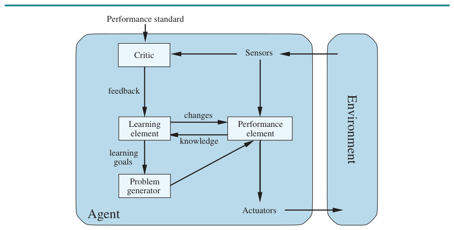
| Component组件 | Role核心职责 | Taxi example出租车示例 |
|---|---|---|
| Performance element（性能元件） | Selects external actions—this is what earlier sections called the entire agent program负责选择外部动作——即前几节讨论的整个“智能体程序”主体 | The driving program that chooses steering, throttle, and braking负责打方向、踩油门和刹车的驾驶程序 |
| Critic（评判器） | Evaluates how well the agent is doing against a fixed external performance standard and sends feedback对照固定不变的外部性能标准评估表现，并向学习元件发送反馈 | Maps shaken passenger complaints and lost tips against a smoothness standard依据平稳乘车标准，将乘客颠簸投诉与小费减少转化为负面评价 |
| Learning element（学习元件） | Uses the critic's feedback to decide how to modify the performance element for better future results利用评判器的反馈决定如何调整与改进性能元件 | Learns that harsh braking lowers utility and updates the braking policy学到急刹会降低效用，进而修正刹车控制策略 |
| Problem generator（问题生成器） | Suggests exploratory actions that yield informative new experiences rather than blindly exploiting old habits主动建议探索性动作以换取新经验，避免一味重复已知套路 | Tests gentle braking pressures on unfamiliar or wet road surfaces在空旷湿滑路段尝试不同力度的刹车以摸清路况特性 |
Four architectural details of this learning loop are especially testable:上述学习闭环中有四个细节最常成为考点：
- Why a critic is mandatory: Raw percepts alone do not announce success or failure—the critic must interpret them against the fixed standard.为何离不开评判器：原始感知本身不会写明“好还是坏”，必须由评判器对照固定标准来解读成败。
- Fixed external standard: The performance standard lives outside the learning loop so the agent cannot cheat by lowering its own grading bar.外部标准不可篡改：性能标准固定在智能体控制之外，防止智能体“自己降低及格线”作弊。
- Exploration vs. exploitation: Without a problem generator, the agent keeps repeating whatever suboptimal action currently looks best.探索的意义：缺少问题生成器时，智能体只会死守当下看起来最优的次优动作，永远发现不了更好的办法。
- What gets modified: The learning element can update models, rules, or utilities; refining a world model needs no external standard, whereas learning rules or utilities relies on the standard marking percepts as a reward（奖励）or penalty（惩罚）.改进对象：学习元件可修改模型、规则或效用函数；完善转移/传感器模型无需外部标准，而学习规则或效用则须依赖标准将部分感知标注为奖励或惩罚。
Representing states状态的表示方式
Core idea: An agent can represent a world state as an indivisible black box (atomic), a vector of attribute values (factored), or objects connected by relations (structured)—trading expressiveness against reasoning and learning cost.核心思路：状态表示可分为不可分的黑箱（原子表示）、属性值向量（因子化表示）以及带关系的对象网络（结构化表示）——表达力越强，推理与学习的复杂度也随之升高。
Every transition model or inference algorithm depends on how world states are encoded internally. As representations move from atomic to structured, the same real-world situation can be described far more compactly and generally, though inference algorithms must work harder:无论是转移模型还是后续搜索与推理算法，都取决于内部如何编码状态。从原子表示迈向结构化表示，语言描述越加凝练、泛化能力越强，但推理与学习的代价也同步上升：

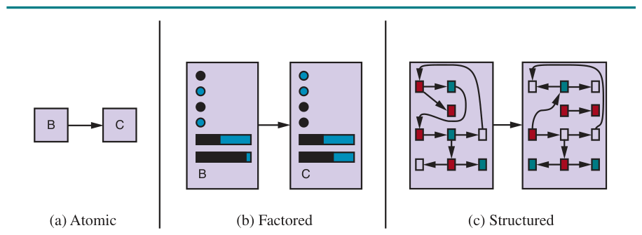
| Representation表示方式 | What a state contains状态的内部结构 | Route-finding example路径规划示例 | Where used典型应用领域 |
|---|---|---|---|
| Atomic（原子表示） | An indivisible black box with no internal structure; two states can only be tested for equality不可再分的黑箱，毫无内部结构；只能判定两个状态“相同”或“不同” | Just the name of the current city (e.g., Arad)仅记录当前所在城市名（如 Arad） |
Search and game playing (Ch. 2–5), HMMs, basic MDPs搜索与博弈（第 2–5 章）、隐马尔可夫模型、基础 MDP |
| Factored（因子化表示） | A fixed vector of variables (attributes), each holding a value由一组固定变量（属性）构成的向量，每个属性有各自取值 | (city, fuel_level, GPS, oil_light, toll_cash, radio)城市、剩余油量、GPS 坐标、机油报警灯、过路费、电台频道 |
CSPs, propositional logic, planning, Bayes nets, most ML (Ch. 6–12)约束满足、命题逻辑、规划、贝叶斯网络及多数机器学习（第 6–12 章） |
| Structured（结构化表示） | Distinct objects carrying their own attributes and linked by explicit relationships包含多个独立对象，各具属性并通过显式关系彼此相连 | "A truck is backing into a driveway that a loose cow is blocking."“一辆卡车正倒车驶入一条被走失奶牛堵住的车道。” | Relational databases, first-order logic, relational probability, NLP关系数据库、一阶逻辑、一阶概率模型、自然语言理解 |
Two atomic states share zero internal overlap, whereas two factored states can share most attributes (same GPS coordinates) while differing on one variable (full tank versus empty)—allowing algorithms to generalize across states cleanly.两个原子状态彼此彻底孤立、毫无共同成分；而两个因子化状态可以共享绝大多数属性（例如相同 GPS 位置），仅在个别变量上不同（满油 vs. 没油），这使得算法能够自然地在不同状态间泛化。
Practice练习
Q1. (Apply) A vacuum robot learns where and when dirt tends to appear over the day. Assign each of the four learning-agent components to this robot.Q1.（应用）一台扫地机器人通过长期运行学习灰尘通常在何时、何地出现。请说明该机器人中四个学习型智能体组件各自对应什么功能。
Answer
- Performance element: The cleaning routine that selects which square to visit next and when to trigger
Suck.性能元件：决定下一步前往哪个方格以及何时吸尘的清扫控制程序。 - Critic: Scores clean squares per time step (minus energy and noise) against the fixed external standard and reports feedback.评判器：对照固定标准统计每步干净方格数（扣除能耗与噪声），并输出反馈信号。
- Learning element: Updates estimated dirt-arrival rates per square and adjusts the visiting schedule accordingly.学习元件：更新各方格的灰尘出现频率估计，并据此优化清扫巡访计划。
- Problem generator: Occasionally sends the robot to rarely visited squares to check for unexpected dirt, trading short-term cost for a better model.问题生成器：偶尔派机器人去罕至角落探查是否积灰，以短期代价换取更准确的环境模型。
Q2. (Classify) Which state representation—atomic, factored, or structured—best fits each task?Q2.（分类）判断以下任务最适合哪种状态表示（原子表示、因子化表示或结构化表示）：
- Finding a shortest road path between cities using only city names.仅依靠城市名称寻找城市间的最短路线。
- Diagnosing a car fault from fuel level, oil pressure, and engine temperature.根据油量、机油压力和发动机温度诊断汽车故障。
- Representing the scene "the truck ahead is reversing into a driveway blocked by a cow."刻画场景“前方卡车正倒车驶入被奶牛堵住的车道”。
Answer
- (a) Atomic: Each city is an indivisible black box that can only be tested for equality with other cities.(a) 原子表示：每个城市都是不可分的黑箱，只需判断两个城市名是否相同。
- (b) Factored: Each state is a fixed vector of attribute values, allowing partially overlapping symptom profiles.(b) 因子化表示：状态可写为固定属性向量，便于表达共享部分特征的故障组合。
- (c) Structured: Expressing objects (truck, cow, driveway) linked by binary relations (reversing into, blocking) exceeds any fixed attribute list.(c) 结构化表示：必须显式刻画多个对象（卡车、奶牛、车道）及其关系（倒车驶入、堵住），固定属性向量难以简洁表达。
Terms to recognize ★需要认识的术语
| Term术语 | What to know核心要点 |
|---|---|
| Consequentialism（结果主义） | Actions are judged by their consequences in the environment; specifying the wrong objective triggers the "King Midas problem"以行为对环境造成的后果论英雄；若目标设定有偏差就会引发“迈达斯国王问题”（点石成金反受其害） |
| Bounded rationality（有限理性） | Choosing the best possible action within finite time and computation, since perfect rationality is usually intractable在有限时间与算力约束下尽可能作出最优决策，因为绝对完美理性在现实中通常不可及 |
| Belief state（信念状态） | A probability distribution over possible true world states maintained as internal state under uncertainty不确定条件下用作内部状态的“所有可能世界状态的概率分布” |
| Localist and distributed representation局部表示与分布式表示 | Localist maps one concept to one memory slot; distributed spreads each concept across many units for noise robustness局部表示是一个概念占一个存储位；分布式表示把概念分散编码在多个单元上，抗噪能力更强 |
| Environment class（环境类） | Evaluating an agent by its average performance across an entire distribution of environments (e.g., varied traffic and weather)按智能体在一整类多变环境（如多种路况与天气组合）中的平均表现来评估其优劣 |
| Softbot软件机器人（Softbot） | A purely software agent operating inside digital or virtual environments, such as online auction sites运行在网络或虚拟空间中的纯软件智能体，例如在线拍卖竞价机器人 |
| Competitive and cooperative竞争与合作 | Multiagent interactions can mix competition (vying for one parking spot) with cooperation (avoiding collisions)多智能体环境常兼具竞争性（争夺同一车位）与部分合作性（共同避免碰撞） |
| Expressiveness（表达力） | Structured subsumes factored, which subsumes atomic; chess rules take one or two pages in first-order logic versus vast tables atomically结构化涵盖因子化，因子化又涵盖原子表示；国际象棋规则用一阶逻辑仅一两页，用原子语言则需海量篇幅 |
Exam-style questions考试题型练习
Q1. (Definitions, PEAS, and agent design, 12 marks) A smart-home thermostat keeps rooms comfortable while saving energy.Q1.（定义、PEAS 与智能体设计，12 分）一款智能家居恒温器旨在保持室内舒适的同时节约能源。
- Define agent, agent function, agent program, and rational agent (4 marks).分别定义智能体、智能体函数、智能体程序和理性智能体（4 分）。
- Provide a PEAS description for the smart thermostat (4 marks).给出该智能恒温器的 PEAS 描述（4 分）。
- A basic thermostat turns on heating whenever temperature drops below a set point. Which agent design is this, and what components must a smart thermostat add to learn household routines and trade comfort against energy cost (4 marks)?基础恒温器在温度低于设定值时开启供暖，这属于哪类设计？若要学习住户作息并在舒适与能耗间权衡，智能恒温器还须增加哪些模块（4 分）？
Answer
(a) Core definitions (4 marks):(a) 四项核心定义（4 分）：
- Agent: Anything that perceives its environment through sensors and acts upon it through actuators.智能体：任何通过传感器感知环境并通过执行器作用于环境的系统。
- Agent function: The abstract mathematical mapping from every possible percept sequence to an action, describing external behavior.智能体函数：将每条可能感知序列映射为动作的抽象数学映射，从外部刻画行为。
- Agent program: The concrete code running on a physical architecture (\(\text{agent}=\text{architecture}+\text{program}\)) that computes actions from incoming percepts.智能体程序：在具体体系结构上运行（智能体 = 体系结构 + 程序）、由输入感知计算出动作的具体代码。
- Rational agent: An agent that, for each percept sequence, picks an action expected to maximize its performance measure given that percept evidence and its built-in knowledge.理性智能体：对每条感知序列，结合已有内置知识与感知证据，选择能使期望性能度量最大化的动作。
(b) PEAS specification (4 marks):(b) PEAS 描述（4 分）：
- Performance measure: Comfortable indoor temperature when occupied, low electricity/gas bills, and minimal manual overrides.性能度量：有人居住时室温舒适、能源账单低廉、人工手动干预少。
- Environment: Rooms, outdoor weather, occupants, HVAC heating/cooling plant, and electricity tariffs.环境：房间热力学环境、室外天气、住户、暖通空调设备及分时电价。
- Actuators: Heater/cooler switches or valves, fan speed control, screen display, and mobile alerts.执行器：加热/制冷开关或阀门、风机挡位、面板显示与手机通知。
- Sensors: Indoor/outdoor thermometers, real-time clock, occupancy/motion sensors, and user set-point inputs.传感器：室内外温度计、时钟、人体存在/运动传感器及用户设定值输入。
(c) Architecture progression (4 marks):(c) 架构类型与新增组件（4 分）：
- Basic thermostat (simple reflex): The rule "if temperature < set point, turn heat on" depends solely on the current percept, which works because temperature is directly observable.基础恒温器（简单反射型）：规则“若温度低于设定值则开暖气”只看当前温度感知，因相关状态直接可观测故足够胜任。
- Model-based addition: Needs an internal state with a transition model (thermal heating/cooling dynamics) and sensor model because room occupancy is only partially observable.加入模型：住户作息与在室情况只能部分观测，因此须配备内部状态及热力学转移模型和传感器模型。
- Utility-based addition: Needs a continuous utility function trading off comfort penalties against electricity cost.加入效用：需引入效用函数来定量权衡室温舒适度与电费成本。
- Learning addition: Needs a learning element, a critic (scoring comfort, bills, and manual overrides against a fixed standard), and a problem generator (e.g., testing earlier pre-heating) to learn household habits.加入学习：需配备学习元件、评判器（对照固定标准评估舒适度、账单和手动微调）及问题生成器（如尝试提前预热），以习得家庭日常规律。
思路：定义四项 → PEAS 四要素 → 先答简单反射为何够用，再逐层补全模型、效用与学习组件。
Q2. (Rationality and performance measures, 10 marks) In the two-square vacuum world, the agent starts in B, A is dirty and B is clean, no new dirt appears, and the episode lasts 8 steps. The score sums the number of clean squares after every step.Q2.（理性与性能度量，10 分）在两方格吸尘器世界中，智能体从 B 出发，A 脏而 B 干净，后续不产生新灰尘，运行共 8 步，性能度量为每步之后干净方格数之和。
- Trace the simple reflex agent (
Suckif dirty, otherwise move to the other square) and give its score both without and with a penalty of 1 point perLeft/Rightmove (4 marks).追踪简单反射型智能体（脏则Suck，否则移向另一格），分别计算无移动扣分以及每次Left/Right扣 1 分下的得分（4 分）。 - Describe an agent that scores higher under the move penalty, give its score, and state what capability it has that the reflex agent lacks (4 marks).给出一个在移动扣分下得分更高的智能体及分数，并指出它具备而反射型智能体欠缺什么能力（4 分）。
- Is the simple reflex agent rational under each measure (2 marks)?在两种度量下，简单反射型智能体是否分别理性（2 分）？
Answer
(a) Reflex agent trace and scores (4 marks):(a) 反射型智能体轨迹与得分（4 分）：
- Step 1: Sees
[B, Clean]→ executesLeft(1 clean square: B).第 1 步：感知[B, Clean]→ 执行Left（1 格干净：B）。 - Step 2: Sees
[A, Dirty]→ executesSuck(2 clean squares: A, B).第 2 步：感知[A, Dirty]→ 执行Suck（2 格干净：A、B）。 - Steps 3–8: Alternates
Right, Left, Right, Left, Right, Left(2 clean squares each step).第 3–8 步：往返执行Right, Left, …（每步均为 2 格干净）。 - Scores: Clean-square total is \(1+7\cdot2=15\). Counting 7 moves (steps 1 and 3–8), the penalized score is \(15-7=8\).得分：干净方格总分为 \(1+7\cdot2=15\)；共移动 7 次（第 1 步与第 3–8 步），扣分后得 \(15-7=8\)。
(b) Better agent under move penalty (4 marks):(b) 扣分条件下的更优设计（4 分）：
- Stop-when-clean policy: Executes
Left, Suck, thenNoOpfor steps 3–8. Clean-square points remain \(1+7\cdot2=15\) with just 1 move, yielding a score of \(15-1=14\).清扫即停策略：执行Left, Suck，第 3–8 步全为NoOp。干净方格分仍为 \(1+7\cdot2=15\)，但仅移动 1 次，总分高达 \(15-1=14\)。 - Missing ingredient: It requires an internal state remembering that B was clean and A has now been cleaned; a memoryless reflex agent seeing
[A, Clean]cannot tell whether B is clean, so it keeps oscillating.所缺能力：需要内部状态记住“B 原本干净且 A 已吸净”；无记忆的反射型智能体仅看[A, Clean]无法确认 B 的状态，只能继续来回跑。
(c) Rationality verdict (2 marks):(c) 理性判定（2 分）：
- Without penalty: Rational—15 is the theoretical maximum (at most 1 clean square after step 1, and 2 after step 2).无扣分时：理性——15 已是理论最高分（第 1 步后至多净 1 格，第 2 步后才可能净 2 格）。
- With penalty: Irrational—14 is achievable, so scoring 8 fails to maximize expected performance. Rationality always depends on the stated performance measure.有扣分时：不理性——明明可以拿到 14 分，只拿 8 分远非最优；可见理性与否高度依赖具体的性能度量。
Q3. (Table-driven agents, 10 marks)Q3.（查表型智能体，10 分）
- Derive the number of table rows for a table-driven agent with percept set \(P\) and lifetime \(T\) (3 marks).推导感知集合为 \(P\)、寿命为 \(T\) 的查表型智能体所需的表格行数（3 分）。
- Evaluate this formula for the vacuum world (\(\lvert P\rvert=4\)) when \(T=5\) and \(T=20\) (3 marks).在吸尘器世界（\(\lvert P\rvert=4\)）中，分别代入 \(T=5\) 与 \(T=20\) 求值（3 分）。
- Give three reasons why table-driven agents fail, and explain how the reflex vacuum agent avoids them (4 marks).给出查表法失败的三个原因，并说明反射型吸尘智能体是如何绕开该瓶颈的（4 分）。
Answer
- (a) Derivation (3 marks): At step \(t\in\{1,\dots,T\}\), there are \(\lvert P\rvert^{t}\) distinct percept sequences of length \(t\), each requiring its own row. Summing the geometric series gives \(N(T)=\sum_{t=1}^{T}\lvert P\rvert^{t}=\frac{\lvert P\rvert(\lvert P\rvert^{T}-1)}{\lvert P\rvert-1}\).(a) 行数推导（3 分）：第 \(t\) 步（\(t=1,\dots,T\)）对应的长度为 \(t\) 的感知序列共有 \(\lvert P\rvert^{t}\) 条，每条占一行；由等比数列求和公式得总行数 \(N(T)=\sum_{t=1}^{T}\lvert P\rvert^{t}=\frac{\lvert P\rvert(\lvert P\rvert^{T}-1)}{\lvert P\rvert-1}\)。
- (b) Numerical evaluation (3 marks): For \(T=5\), \(N(5)=4(4^{5}-1)/3=4\cdot1023/3=1{,}364\) rows. For \(T=20\), \(N(20)=4(4^{20}-1)/3=1{,}466{,}015{,}503{,}700\approx1.47\times10^{12}\) rows.(b) 数值代入（3 分）：\(T=5\) 时，\(N(5)=4(4^{5}-1)/3=4\cdot1023/3=1{,}364\) 行；\(T=20\) 时，\(N(20)=4(4^{20}-1)/3=1{,}466{,}015{,}503{,}700\approx1.47\times10^{12}\) 行。
- (c) Why it fails & reflex fix (4 marks): Exponential growth means (i) no hardware has memory to store the table, (ii) designers lack time to write it, and (iii) no agent can experience every sequence to learn it. The reflex vacuum agent ignores history, shrinking \(4^{T}\) sequences down to 4 single percepts encoded in three lines of code while realizing the same function.(c) 失败原因与反射解法（4 分）：指数爆炸导致（i）物理内存存不下、（ii）设计者人工写不完、（iii）智能体靠经验学不全。反射型吸尘智能体通过忽略历史，将 \(4^{T}\) 种序列浓缩为仅仅 4 个当前感知条件，只用三行规则就实现了等价的智能体函数。
Q4. (Task environments, 10 marks)Q4.（任务环境分类，10 分）
- Classify poker, a crossword puzzle, backgammon, and taxi driving across the six dimensions, giving brief reasons for any non-obvious entries (6 marks).按六个维度对扑克、填字游戏、西洋双陆棋和出租车驾驶分类，并对非显而易见的项目给出简短理由（6 分）。
- Which environment is hardest for the designer and why (2 marks)?哪一类对设计者最具挑战性？为什么（2 分）？
- State the architectural consequence of two properties you identified (2 marks).说明你所判定的任意两项性质对智能体架构设计造成的后果（2 分）。
Answer
(a) Classification table (6 marks):(a) 六维分类表（6 分）：
| Observable可观测 | Agents智能体 | Deterministic确定性 | Episodic片段式 | Static静态 | Discrete离散 | |
|---|---|---|---|---|---|---|
| Crossword填字游戏 | Fully完全 | Single单智能体 | Deterministic确定性 | Sequential序贯式 | Static静态 | Discrete离散 |
| Poker扑克 | Partially (opponents' cards hidden)部分（对手底牌不可见） | Multi, competitive多智能体，竞争 | Stochastic (the deal)随机（发牌随机） | Sequential (bets carry over)序贯式（筹码与下注连续影响后续） | Static静态 | Discrete离散 |
| Backgammon西洋双陆棋 | Fully完全 | Multi, competitive多智能体，竞争 | Stochastic (dice)随机（掷骰子） | Sequential序贯式 | Static静态 | Discrete离散 |
| Taxi出租车驾驶 | Partially (hidden intentions, occlusions)部分（他车意图未知、视线遮挡） | Multi, partly cooperative多智能体，部分合作 | Stochastic (traffic, breakdowns)随机（交通流与突发故障） | Sequential序贯式 | Dynamic动态 | Continuous连续 |
- (b) Hardest environment (2 marks): Taxi driving—it sits at the hard extreme of all six dimensions (partially observable, multiagent, stochastic, sequential, dynamic, continuous), while its rules are only mostly known.(b) 最难任务（2 分）：出租车驾驶——它在全部六个维度上都位于最棘手一端（部分可观测、多智能体、随机、序贯式、动态、连续），且环境规则也仅大体已知。
- (c) Design consequences (2 marks, pick any two): Partial observability requires an internal state (model-based design); sequential structure requires lookahead planning (goal- or utility-based); stochastic outcomes require expected-utility reasoning; dynamic worlds demand real-time bounded computation.(c) 对设计的影响（2 分，任选两条即可）：部分可观测要求引入内部状态（基于模型设计）；序贯性要求向前搜索规划（基于目标或效用）；随机性要求按期望效用决策；动态性要求在实时时限内出结果。
Q5. (Agent designs, utility, and learning, 10 marks) A taxi dispatcher can accept request X (fare 10, success probability 0.9) or request Y (fare 30, success probability 0.5); failed requests earn zero.Q5.（智能体设计、效用与学习，10 分）出租车调度智能体可接单 X（车费 10，成功率 0.9）或单 Y（车费 30，成功率 0.5），失败则收入为 0。
- Compute the expected utility of each request (utility = fare) and state which one a utility-based agent selects (3 marks).计算两单的期望效用（效用 = 车费），并说明基于效用的智能体会选哪一单（3 分）。
- A goal-based agent only has the goal "earn a fare." Which request does it choose if it maximizes goal probability, and why can this be worse (2 marks)?基于目标的智能体只设有目标“赚取一笔车费”。若它最大化达标概率，会选哪一单？为何这样做可能更糟（2 分）？
- Name the four components of a learning agent and explain each component's role for a taxi learning not to brake too harshly (5 marks).说出学习型智能体的四大组件，并结合“学习避免过猛急刹”的出租车说明各组件的作用（5 分）。
Answer
- (a) Expected utility (3 marks): \(EU(X)=0.9\cdot10=9\) and \(EU(Y)=0.5\cdot30=15\). The utility-based agent picks Y because \(15>9\).(a) 期望效用计算（3 分）：\(EU(X)=0.9\cdot10=9\)，\(EU(Y)=0.5\cdot30=15\)。因 \(15>9\)，基于效用的智能体选择 Y。
- (b) Goal-based choice (2 marks): Comparing \(P(\text{goal})=0.9\) for X against \(0.5\) for Y, it picks X. Because the binary goal ignores fare magnitude, the agent sacrifices significantly higher expected earnings (9 vs. 15).(b) 基于目标的选择（2 分）：比较达标概率 \(0.9\) 对 \(0.5\)，它会选 X。由于二元目标无视车费数额大小，智能体白白放弃了更高的期望收益（9 对 15）。
(c) Learning-agent components for smooth braking (5 marks):(c) 结合平稳刹车的学习组件分析（5 分）：
- Performance element: The driving controller selecting steering, throttle, and braking commands.性能元件：直接输出转向、油门和刹车控制指令的驾驶程序。
- Critic: Evaluates passenger feedback (complaints, lost tips, accelerometer jerks) against a fixed external comfort standard and returns feedback.评判器：对照外部固定的舒适标准，评估乘客投诉、流失小费及急刹顿挫，并给出评价反馈。
- Learning element: Adjusts the performance element using that feedback—for example, increasing the utility penalty on abrupt deceleration.学习元件：依据反馈修改性能元件，例如提高效用函数中对剧烈减速的惩罚权重。
- Problem generator: Suggests exploratory trials—such as gently testing different brake pressures on quiet stretches—to gather new control data. Crucially, the external performance standard stays fixed so the agent cannot redefine comfort downward.问题生成器：在空旷路段建议尝试不同刹车力度以积累新经验。务必注意外部标准保持不变，避免智能体自我放宽及格线。
思路：(a)(b) 用同一组数对比“目标只看成败、效用看数值大小”；(c) 四个组件紧扣刹车例子逐一落位，并点出标准外置。
Textbook exercises课后习题
Textbook exercises with answers: 15 questions教材习题及答案，共 15 题，点击展开
E1. (Exercise 2.1) Suppose that the performance measure depends only on the first \(T\) time steps and ignores everything afterward. Show that a rational agent's optimal action can depend not only on the environment state, but also on the current time step.E1.（习题 2.1）假设性能度量只关心环境的前 \(T\) 个时间步并忽略之后的一切。证明理性智能体的动作不仅可能取决于环境状态，还可能取决于当前所处的时间步。
Answer
Because a rational agent maximizes the expected performance measure, its optimal choice depends on how many counted steps remain whenever only the first \(T\) steps contribute to the score—even when the physical state and percept are identical.理性智能体追求性能度量期望值最大化。当仅有前 \(T\) 步计入得分时，一个动作带来的后续收益取决于“还剩多少计分步”，因此即使环境状态与当前感知完全相同，不同时刻的最优动作也可能改变。
Counterexample in the two-square vacuum world: Score one point per clean square after each of the first \(T\) steps, minus 1 point per move. Suppose the agent perceives \([A,\text{Clean}]\) while B is dirty, with \(r\) counted steps remaining (including the current step):两方格吸尘器世界反例：设前 \(T\) 步每步结束后每块干净方格记 1 分，每次移动扣 1 分。若智能体位于干净的 A（感知 \([A,\text{Clean}]\)），B 仍脏，且尚余 \(r\) 个计分步（含当前步）：
- Move
RightthenSuck: Pays 1 point to move, then keeps B clean for the final \(r-1\) steps, yielding a net gain of \(r-2\).右移并吸尘（Right后Suck）：移动耗去 1 分，使 B 在最后 \(r-1\) 步保持干净，净收益为 \(r-2\)。 - Stay put (
NoOp): Earns zero extra points and pays zero cost, yielding a net gain of \(0\).原地不动（NoOp）：无额外收益也无移动扣分，净收益为 \(0\)。
Evaluating all sequences confirms that Right is strictly best when \(r\ge3\), ties at \(r=2\), and is strictly worse than NoOp at the final step \(r=1\) (where moving pays a penalty without leaving time to suck B). Thus, under a finite horizon, rational behavior depends on both state and time step.逐一验算所有动作序列可知：当 \(r\ge3\) 时 Right 严格最优；\(r=2\) 时两者打平；而在最后一步 \(r=1\) 时，移动只会白扣 1 分而根本来不及在 B 吸尘，NoOp 严格更优。可见在有限时域下，理性动作是状态与时间步的二元函数。
思路：只计前 \(T\) 步时，移动的净收益 \(r-2\) 会随剩余步数 \(r\) 变号，因此同状态在不同时刻的最优决策不同。
E2. (Exercise 2.2) Examine the rationality of vacuum-cleaner agent functions in the two-square world (A and B) over 1000 steps, scoring 1 point per clean square per step:E2.（习题 2.2）在两方格（A、B）吸尘器世界中考察不同智能体函数的理性（寿命 1000 步，每步每块干净方格记 1 分）：
- Setup: Geography is known, initial dirt and start square are unknown, clean squares stay clean,
Suckcleans the current square,Left/Rightmove one square (staying put at walls), available actions areLeft,Right,Suck, and sensors accurately report location and dirt.环境设定：地图已知而初始灰尘分布和起点未知；干净格保持干净且Suck必能吸净；Left/Right移动一格（撞墙不动）；可用动作为Left、Right、Suck；位置与灰尘传感器均准确。
- Show that the simple reflex function (\([A,\text{Clean}]\to\text{Right}\), \([A,\text{Dirty}]\to\text{Suck}\), \([B,\text{Clean}]\to\text{Left}\), \([B,\text{Dirty}]\to\text{Suck}\)) is rational here.证明上述简单反射智能体函数（\([A,\text{Clean}]\to\text{Right}\)、\([A,\text{Dirty}]\to\text{Suck}\)、\([B,\text{Clean}]\to\text{Left}\)、\([B,\text{Dirty}]\to\text{Suck}\)）在此假设下确实理性。
- Describe a rational agent function if every movement costs 1 point. Does its program require internal state?若每次移动额外扣 1 分，请描述一个理性智能体函数，并说明其程序是否需要内部状态。
- Discuss agent designs when clean squares can get dirty again and geography is unknown. Should the agent learn from experience here, and if so, what should it learn?若干净方格会再次变脏且环境地图未知，讨论可行的智能体设计：此时从经验中学习是否有意义？若有，该学什么？
Answer
(a) Optimality across all 8 starting configurations: Starting in A (starts in B are symmetric by mirror image), the reflex agent achieves:(a) 全部 8 种初始情况均达理论上限：以从 A 出发为例（从 B 出发完全对称），反射型智能体在四种灰尘分布下的表现如下：
| Dirt (A, B)初始灰尘 (A, B) | Actions动作序列 | Score总得分 |
|---|---|---|
| clean, clean净，净 | Right, Left, Right, …Right, Left, Right, … | \(2\cdot1000=2000\) |
| dirty, clean脏，净 | Suck, Right, Left, …Suck, Right, Left, … | \(2000\) |
| clean, dirty净，脏 | Right, Suck, Left, …Right, Suck, Left, … | \(1+2\cdot999=1999\) |
| dirty, dirty脏，脏 | Suck, Right, Suck, Left, …Suck, Right, Suck, Left, … | \(1+1+2\cdot998=1998\) |
Even an omniscient agent cannot beat these scores: one Suck cleans only one square, and reaching the other square takes a move. Because the reflex agent hits the theoretical maximum in every one of the 8 cases (2 starts × 4 dirt patterns), it maximizes expected score under every prior distribution—hence it is rational.哪怕全知智能体也拿不到更高的分数：一次 Suck 只能扫净一格，去另一格必然占用 1 步移动。该反射智能体在全部 8 种初态（2 种起点 × 4 种脏污组合）下均拿满理论上界，因此在任意初始概率分布下都最大化期望得分，确属理性。
(b) Move penalty requires internal state:(b) 移动扣分时须引入内部状态：
- Rational function:
Suckif the current square is dirty; otherwiseNoOpif the other square is already known to be clean (from an earlier percept or priorSuck); else move to the other square.理性策略：当前格脏则Suck；否则若另一格已知干净（此前已见过或扫过）则执行NoOp；其余情形移往另一格。 - Why memory is mandatory: The percept \([B,\text{Clean}]\) reveals nothing about A, so a stateless rule either oscillates (losing roughly 1000 points) or halts early (risking dirty A). Two 1-bit flags (
known_clean[A],known_clean[B]) make this a model-based reflex agent scoring 1999, 1999, 1998, and 1997—within 1 point of omniscience (paying 1 point only to verify an unseen square, worth up to 999 points if dirty).为何必加记忆：仅凭 \([B,\text{Clean}]\) 无法判定 A 的洁净状态，无记忆规则要么空转振荡白丢约 1000 分，要么不敢过问另一格。只需 2 比特标志位即可升级为基于模型的反射型智能体，四种初态得分分别为 1999、1999、1998、1997，最多只比全知者少 1 分（用于探查未见方格的必要开销）。
(c) Reappearing dirt, unknown geography, and learning:(c) 灰尘重现、地图未知与学习价值：
- Designs needed: Stopping is never rational when dirt reappears; a model-based or utility-based agent tracks time since each square was last cleaned plus estimated dirt arrival rates, moving whenever expected gain exceeds move cost. With unknown geography, it also builds an internal map of visited cells and obstacles and explores systematically (e.g., DFS with backtracking).所需架构：灰尘会不断出现时永久停工绝不理性；基于模型或基于效用的智能体需记录各格距上次清扫的时长与变脏速率，仅在预期收益高于移动代价时巡扫。面对未知地形，还须在内部状态中构筑障碍物地图并系统探索（如带回溯的深度优先探索）。
- What to learn: Learning makes clear sense because the designer cannot preprogram unknown facts. The agent should learn (i) the transition model (geography, walls, move outcomes), (ii) the dirt-arrival process (how often and where dirt appears) to schedule patrols, and (iii) any sensor reliability rates.学习内容：此时从经验学习极具意义，因为未知规律无法由设计者写死。智能体应当学习：（i）转移模型（墙体分布与移动成败）；（ii）灰尘出现规律（各处多快变脏）以安排巡逻节奏；（iii）必要的传感器可靠度。
思路：(a) 8 种初始局面均达理论满分；(b) 只需 2 比特记“另一格是否已知干净”；(c) 环境未知且会变脏 → 须建模型并学习地图与落灰规律。
E3. (Exercise 2.4) Judge each assertion as true or false, supporting your answer with examples or counterexamples:E3.（习题 2.4）判断以下各命题真假，并辅以例子或反例加以论证：
- An agent that senses only partial information about the state cannot be perfectly rational.只能感知状态部分信息的智能体不可能是完全理性的。
- There exist task environments in which no pure reflex agent can behave rationally.存在某些任务环境，使得没有任何纯反射型智能体能表现得理性。
- There exists a task environment in which every agent is rational.存在某种任务环境，使得其中所有智能体都是理性的。
- The input to an agent program is the same as the input to the agent function.智能体程序的输入与智能体函数的输入完全相同。
- Every agent function is implementable by some program/machine combination.每一个智能体函数都可以由某种程序/机器组合来实现。
- Suppose an agent selects its action uniformly at random from the possible actions. There exists a deterministic task environment in which this agent is rational.假设某智能体从可用动作集中均匀随机地选动作，存在某个确定性任务环境使该智能体是理性的。
- It is possible for a given agent to be perfectly rational in two distinct task environments.同一个智能体有可能在两个不同的任务环境中都是完全理性的。
- Every agent is rational in an unobservable environment.在不可观测的环境中，每一个智能体都是理性的。
- A perfectly rational poker-playing agent never loses.完全理性的扑克智能体绝不会输。
Answer
- False. Rationality maximizes expected performance given the percept sequence and built-in knowledge, not the full hidden state. The reflex vacuum agent seeing only its own square is completely rational under standard assumptions.假。理性是在给定感知序列与先验知识下最大化期望性能，并不要求看到全盘真实状态；仅感知所在方格的吸尘机器人照样在标准假设下完全理性。
- True. Pure reflex agents ignore history. When moves cost 1 point in the vacuum world, the right action at \([B,\text{Clean}]\) depends on whether A is clean—memoryless rules either oscillate forever or risk leaving dirt.真。纯反射智能体无记忆能力。一旦移动扣 1 分，面对 \([B,\text{Clean}]\) 究竟停还是走取决于 A 是否干净，任何无记忆规则都会在空转丢分与漏扫灰尘间两难。
- True. Whenever all actions yield identical expected performance (e.g., a constant performance measure, or only one legal action), every agent achieves the maximum and is rational.真。只要智能体的任何动作都带来完全相同的性能得分（例如常函数性能度量，或环境仅提供一种动作），所有智能体都并列最优。
- False. The mathematical agent function takes the entire percept sequence as input, whereas an agent program receives only the current percept and must store needed history in internal state.假。智能体函数以整条感知序列为输入，而智能体程序每步只能拿到当前单个感知，历史必须自行存入内部状态。
- False. Physical machines have finite memory and time, so they cannot realize functions needing unbounded counters (e.g., "Suck iff dirty counts at A and B match") or uncomputable functions (e.g., solving the halting problem encoded in percepts).假。物理机器受限于有限内存与计算时间，既实现不了需要无限计数器的函数（如“当且仅当 A、B 历史见脏次数相等时吸尘”），也实现不了不可计算函数（如判定感知中编码的程序是否停机）。
- True. As a special case of (c), in a deterministic environment where every action produces the same performance score, uniform random selection matches any optimal deterministic policy.真。这是 (c) 的特例：在所有动作得分完全一致的确定性环境中，均匀随机选动作与任何确定性最优策略得分完全一样。
- True. Take the two-square vacuum world under two different initial dirt distributions: since the reflex agent hits the upper bound for every single configuration (see E2), it is rational in both environments.真。以两方格吸尘器世界配合两种不同的初始灰尘概率分布为例：由于反射型智能体在每一种局面上都拿满理论最高分（见 E2），它在两个环境下均属理性。
- False. Even with zero sensors, the agent must still pick an optimal open-loop action plan from prior knowledge. In an unobservable vacuum world,
Suck, Right, Suckcleans both squares whileNoOpforever does not.假。即使毫无感知，智能体仍须依靠先验知识规划最优开环动作序列。在不可观测吸尘器世界里，执行Suck, Right, Suck能扫净两格，而一直NoOp显然不理性。 - False. Rationality maximizes expected payoff rather than actual outcomes. Poker involves hidden cards and chance deals, so even an optimal player loses individual hands and sessions.假。理性最大化的是期望收益而非每把必赢。扑克带有暗牌与发牌随机性，再顶级的理性牌手也难免输掉部分手牌乃至整场牌局。
思路：紧扣“理性比较的是已有感知下的期望表现，不要求看见全貌或实际必赢”。
E4. (Exercise 2.5) Write a PEAS description and classify the task environment across the chapter's six dimensions (observable, agents, deterministic, episodic, static, discrete) for: playing soccer; exploring Titan's subsurface oceans; shopping for used AI books online; playing a tennis match; practicing tennis against a wall; performing a high jump; knitting a sweater; and bidding at an auction.E4.（习题 2.5）为以下八项活动写出 PEAS 描述，并按本章六个维度（可观测性、智能体数量、确定性、片段式/序贯式、静/动态、离散/连续）进行分类：踢足球、探索土卫六（Titan）地下海洋、网上购买二手 AI 教材、网球比赛、对墙练习网球、跳高、织毛衣、拍卖竞价。
Answer
PEAS descriptions:PEAS 描述汇总：
| Activity活动 | Performance measure性能度量 | Environment环境 | Actuators执行器 | Sensors传感器 |
|---|---|---|---|---|
| Soccer足球 | Goals scored minus conceded, few fouls, no injury净胜球数、少犯规、无伤病 | Pitch, ball, teammates, opponents, referee球场、足球、队友、对手、裁判 | Legs, head, torso (arms for keeper), voice双腿、头、躯干（守门员含手臂）、呼喊 | Eyes, ears, touch, balance视觉、听觉、触觉与平衡觉 |
| Titan's subsurface oceans (robot submarine)土卫六地下海洋（潜航器） | Area mapped, samples and data returned, survival, energy efficiency测绘面积、回传样本与数据量、存活率、能耗 | Sub-ice ocean (cold, high pressure, currents), seafloor, surface relay冰下海洋（低温、高压、洋流）、海底、地表对地中继 | Thrusters, buoyancy control, sampling arm/drill, transmitter推进器、浮力调节、取样机械臂/钻头、发射机 | Sonar, cameras, pressure/temp/chemical sensors, IMU, health monitors声呐、摄像头、温压及化学传感器、惯导、健康监测 |
| Shopping for used AI books online网上购买二手 AI 书籍 | Low total cost with shipping, right title/edition/condition, fast delivery含运费总价低、书名版次与品相准确、物流快 | Online stores, auction sites, sellers, couriers, payment gateways网店、拍卖站、卖家、快递、支付服务 | Search queries, link clicks, bids/orders, seller messages搜索、点击、出价下单、联系卖家 | Page text/images, prices, seller ratings, confirmation emails图文网页、标价、信用评分、确认邮件 |
| Tennis match网球比赛 | Winning points, games, and sets; few unforced errors赢得得分、局数与盘数，减少非受迫性失误 | Court, net, ball, racket, opponent, umpire, wind球场、球网、网球、球拍、对手、裁判、风 | Legs, arm and racket strokes, voice步法移动、挥拍击球、呼声 | Eyes (ball and opponent), ears, touch, balance视觉（看球与对手）、听觉、触觉与平衡觉 |
| Wall practice对墙练球 | Consecutive accurate returns, technique gained连续精准回球次数、技术提升 | Wall, ball, court surface, racket, wind墙壁、网球、场地、球拍、风 | Legs, arm and racket双腿、手臂与球拍 | Eyes (ball), ears, touch, balance视觉（盯球）、听觉、触觉与平衡觉 |
| High jump跳高 | Height cleared without knocking the bar or injury过杆高度、未碰落横杆、无伤病 | Runway, bar, uprights, landing mat, wind助跑道、横杆、立柱、海绵垫、风 | Legs (run-up, takeoff), torso and arms (bar clearance)双腿（助跑起跳）、躯干与双臂（背越动作） | Vision (bar/marks), proprioception, balance, ground contact视觉（杆高与步点）、本体感觉、平衡觉、触地感 |
| Knitting a sweater织毛衣 | Correct size and pattern, zero dropped stitches, low yarn/time waste尺码花样准确、无漏针、节省用线与时间 | Yarn, knitting needles, pattern chart, wearer measurements毛线、织针、图样、穿着者尺寸 | Hands and fingers manipulating needles and yarn双手与手指牵引织针和毛线 | Vision, tactile tension sense, pattern reading视觉、手感（拉线松紧）、读图 |
| Bidding at an auction拍卖竞价 | Win item below personal valuation; never overpay以低于个人估值的价格拍得，绝不溢价 | Auction house/site, auctioneer, rival bidders, item, rules拍卖行/平台、拍卖师、竞争买家、拍品与规则 | Place, raise, or withdraw bids出价、加价或撤回出价 | Current bid, rival bids, time left, item description当前报价、他人出价、剩余时间、拍品描述 |
Task-environment properties:任务环境六维分类：
| Activity活动 | Observable可观测 | Agents智能体 | Deterministic确定性 | Episodic片段式 | Static静态 | Discrete离散 |
|---|---|---|---|---|---|---|
| Soccer足球 | Partially部分 | Multi (coop. + comp.)多智能体（合作兼竞争） | Stochastic随机 | Sequential序贯式 | Dynamic动态 | Continuous连续 |
| Titan土卫六潜航 | Partially部分 | Single单智能体 | Stochastic随机 | Sequential序贯式 | Dynamic动态 | Continuous连续 |
| Shopping网上购书 | Partially部分 | Multi (single if fixed price)多智能体（固定价可视为单智能体） | Stochastic随机 | Sequential序贯式 | Dynamic动态 | Discrete离散 |
| Tennis match网球比赛 | Partially部分 | Multi (competitive)多智能体（竞争） | Stochastic随机 | Sequential序贯式 | Dynamic动态 | Continuous连续 |
| Wall practice对墙练球 | Partially部分 | Single单智能体 | Stochastic随机 | Sequential序贯式 | Dynamic动态 | Continuous连续 |
| High jump跳高 | Fully完全 | Single单智能体 | Deterministic确定性 | Episodic片段式 | Static静态 | Continuous连续 |
| Knitting织毛衣 | Fully完全 | Single单智能体 | Deterministic确定性 | Sequential序贯式 | Static静态 | Discrete离散 |
| Auction (open, ascending)拍卖（公开升价） | Partially部分 | Multi (competitive)多智能体（竞争） | Stochastic随机 | Sequential序贯式 | Dynamic动态 | Discrete离散 |
Reasons for subtle entries:易混项说明：
- Observability: Sports, Titan, and auctions hide rival intentions/valuations, ball spin, or terrain beyond sonar range (partial). High jump and knitting keep the entire bar/runway or active stitches in view (fully).可观测性：体育对抗、土卫六探测与拍卖存在对手意图、球体旋转或传感器盲区（部分可观测）；跳高与织毛衣能看清横杆、助跑道及手中针脚（完全可观测）。
- Agents: A practice wall obeys physics rather than maximizing a score, making wall practice single-agent, whereas matches and soccer involve opponents and teammates.智能体数量：墙壁只遵循物理反弹而非追求得分，故对墙练球为单智能体；比赛与足球则涉及对手或队友。
- Episodic vs. sequential & determinism: A single high jump is episodic and treated as deterministic up to minor motor noise (though an entire competition with rising bars and fatigue is sequential), whereas each knitted row builds on earlier rows.片段/序贯与确定性：单次跳高彼此独立且近乎由助跑起跳决定（整场跨轮决赛则属序贯）；织毛衣每一行都承接前一行，属序贯。
- Framing assumptions: Online shopping is single-agent if prices are fixed, multiagent in auctions; knitting is discrete at the stitch level despite continuous hand motion; and a sealed-bid auction is static and episodic rather than dynamic and sequential.设定假设：固定标价购物算单智能体、竞拍则算多智能体；织毛衣按针脚计离散；密封投标拍卖属于静态片段式，与公开升价拍卖不同。
思路：先列 PEAS，再逐维分类并解释易争议项，有歧义时明确写出假设前提。
E5. (Exercise 2.6) Give a PEAS description and classify the task environment for: performing a gymnastics floor routine; exploring Titan's subsurface oceans; playing soccer; shopping for used AI books online; practicing tennis against a wall; performing a high jump; and bidding at an auction.E5.（习题 2.6）为下列活动提供 PEAS 描述并按环境维度分类：体操自由操套路、探索土卫六地下海洋、踢足球、网上购书、对墙练网球、跳高、拍卖竞价。
Answer
Six of these seven activities (Titan, soccer, shopping, wall practice, high jump, auction) match Exercise E4 exactly. Below are the PEAS specification and six-dimensional classification for the new item, a gymnastics floor routine:七项中除自由操外，其余六项均与 E4 完全一致。以下补充体操自由操套路的 PEAS 描述与六维分类：
| PEAS componentPEAS 要素 | Description具体内容 |
|---|---|
| Performance measure性能度量 | Judges' score (difficulty + execution − deductions), stuck landings inside bounds, zero falls or injuries裁判评分（难度分 + 完成分 − 扣分）、边界内稳健落地、无摔倒与伤病 |
| Environment环境 | Sprung floor with boundary lines, gravity, music playback, judges, spectators带边界线的弹性地板、重力、伴奏音乐、裁判与观众 |
| Actuators执行器 | Full-body muscles: legs (takeoff/landing), arms, torso, and head for flips, twists, and balances全身肌群：双腿（起跳落地）、双臂、躯干与头部配合完成空翻、转体与平衡 |
| Sensors传感器 | Vision (floor bounds), vestibular system (rotation/tilt), proprioception, touch, hearing (music cues)视觉（场地边线）、前庭觉（旋转与方位）、本体感觉、触觉及听觉（音乐节拍） |
- Partially observable: Mid-flip, the gymnast loses sight of the floor and relies on internal body senses, while judges' evaluations remain hidden.部分可观测：空翻期间眼睛看不到地面，须靠本体感觉定位，且裁判心理评分未知。
- Single-agent: Judges score the performance afterward rather than competing interactively on the floor.单智能体：裁判仅事后打分，不作为场上对抗智能体互动。
- Stochastic: Tiny motor execution variations and floor spring rebound introduce uncertainty.随机性：微小发力误差与弹性地板回弹使动作结局带有不确定性。
- Sequential & dynamic: Elements chain together with momentum and fatigue carrying over (sequential), and movements proceed continuously to real-time music (dynamic).序贯式且动态：套路前后衔接且动量与疲劳累积（序贯），全程随音乐实时进行不能停等（动态）。
- Continuous: Body coordinates, joint angles, and timing are continuous.连续：空间位置、关节角度与时间连续变化。
思路：重复六项直接复用 E4，重点补充自由操的 PEAS 与六维依据。
E6. (Exercise 2.7) Define in your own words: agent, agent function, agent program, rationality, autonomy, reflex agent, model-based agent, goal-based agent, utility-based agent, and learning agent.E6.（习题 2.7）用自己的语言定义以下十个核心概念：智能体、智能体函数、智能体程序、理性、自主性、反射型智能体、基于模型的智能体、基于目标的智能体、基于效用的智能体、学习型智能体。
Answer
- Agent: Any entity that perceives its environment via sensors and acts upon it via actuators.智能体：通过传感器感知环境并通过执行器作用于环境的任何实体。
- Agent function: The abstract mathematical mapping from complete percept sequences to actions, describing external behavior.智能体函数：从完整感知序列到动作的抽象数学映射，从外部刻画行为。
- Agent program: The concrete code running on a physical architecture (\(\text{agent}=\text{architecture}+\text{program}\)) that maps the current percept—plus any stored internal state—to an action.智能体程序：在物理体系结构上运行的具体代码（智能体 = 体系结构 + 程序），由当前感知及内部记忆算出动作。
- Rationality: Selecting, for every percept sequence, the action expected to maximize the performance measure given percept evidence and built-in knowledge (expected, not omniscient outcomes).理性：依据感知序列与内置知识，选择能使期望性能度量最大化的动作（看重期望而非全知）。
- Autonomy: The extent to which an agent's behavior stems from its own percepts and learning rather than relying solely on designer-hardcoded prior knowledge.自主性：智能体的行为多大程度上源自自身经验与学习，而非死板照搬设计者的先验知识。
- Simple reflex agent: Selects actions solely from the current percept via condition–action rules, ignoring history.简单反射型智能体：完全忽略历史，仅凭当前感知匹配条件—动作规则来选动作。
- Model-based agent: Tracks an internal state updated via transition and sensor models before applying rules, handling partial observability.基于模型的智能体：结合转移模型与传感器模型持续刷新内部状态后再匹配规则，用于应对部分可观测环境。
- Goal-based agent: Evaluates future states via search or planning to pick actions reaching an explicit goal; changing goals changes behavior without rewriting rules.基于目标的智能体：依托显式目标通过搜索或规划向前推演来选动作；更换目标即可改变行为，无须重写规则。
- Utility-based agent: Assigns real-valued desirability to states via a utility function and maximizes expected utility to resolve goal conflicts and uncertainty.基于效用的智能体：用效用函数给状态打实数分并最大化期望效用，擅长处理冲突目标与不确定性。
- Learning agent: Improves with experience via a performance element (acts), critic (grades against a fixed standard), learning element (modifies performance), and problem generator (explores).学习型智能体：借助性能元件（决策）、评判器（对照固定标准打分）、学习元件（改进性能）和问题生成器（探索新经验）随经验自我进化。
思路：每个定义控制在“核心本质 + 与相邻概念的差别”各半句，精炼准确。
E7. (Exercise 2.8) Explore differences between agent functions and agent programs:E7.（习题 2.8）探讨智能体函数与智能体程序之间的差异：
- Can more than one agent program implement a given agent function? Give an example or prove why not.能否由多个不同的智能体程序实现同一个智能体函数？举例或证否。
- Are there agent functions that cannot be implemented by any agent program?是否存在无法由任何智能体程序实现的智能体函数？
- Given a fixed machine architecture, does each agent program implement exactly one agent function?在固定机器体系结构下，每个智能体程序是否恰好只实现一个智能体函数？
- Given an architecture with \(n\) bits of storage, how many different possible agent programs exist?若机器体系结构仅有 \(n\) 位存储空间，最多有多少种不同的智能体程序？
- If we keep the agent program fixed but double the machine speed, does that change the agent function?保持智能体程序不变而把机器运行速度提升一倍，智能体函数会改变吗？
Answer
- Yes. The vacuum policy "
Suckif dirty, else move to the other square" can be implemented both by a massive lookup table and by a three-line reflex program. Because a function specifies only input–output mapping, any programs producing identical behavior realize the same function.可以。“脏则Suck、否则去另一格”这一映射，既可用巨型查找表实现，也可用三行反射程序实现；函数只约束输入—输出映射，外部行为一致即算同一函数。 - Yes. Any finite machine has bounded memory and time, so it cannot implement functions requiring unbounded memory (e.g., "
Suckiff dirty percept counts at A and B match") or uncomputable functions (e.g., solving the halting problem on percept-encoded programs).存在。物理机器的存储与计算时间均有限，既实现不了需要无限存储的函数（如“当且仅当 A 与 B 见脏总次数相等时Suck”），也实现不了停机判定等不可计算函数。 - Yes. On a fixed deterministic architecture, a program uniquely fixes the output action for every percept sequence (or a single probability distribution over actions if randomized), so it implements exactly one agent function.是的。在固定的体系结构上，给定程序对每条感知序列的输出完全确定（若含随机化则给出确定的动作概率分布），因此恰好唯一对应一个智能体函数。
- At most \(2^{n}\). An \(n\)-bit memory has \(2^{n}\) distinct bit configurations, each representing at most one valid program (many bit strings crash or fail to compile, and distinct programs can share the same function).至多 \(2^{n}\) 个。\(n\) 位存储至多有 \(2^{n}\) 种比特组合，其中不少还可能是无效指令或实现同一函数的冗余程序，因此严格不超过 \(2^{n}\)。
- No, the function stays identical. The same code maps identical percept histories to identical actions. However, in dynamic or real-time environments, doubling CPU speed lets the agent respond faster on fresher percepts, potentially raising its performance score.不会改变。同一程序对相同感知序列输出的动作不变，因此智能体函数本身不变；不过在动态或实时环境中，机器变快能抢在局面恶化前及时响应，从而提升实际性能得分。
思路：函数 = 抽象映射，程序 = 具体实现；机器提速只改实时表现，不改映射本身。
E8. (Exercise 2.9) Write pseudocode agent programs for both a goal-based agent and a utility-based agent.E8.（习题 2.9）分别编写基于目标的智能体和基于效用的智能体的伪代码程序。
Answer
Goal-based agent: Updates its state estimate and searches for an action plan whenever no applicable plan to the goal exists:基于目标的智能体：维护状态估计，每当缺少可行计划时通过搜索生成到达目标的动作序列：
function GOAL-BASED-AGENT(percept) returns an action
persistent: state, the agent's current conception of the world state
transition model, how the next state depends on the current state and action
sensor model, how the world state is reflected in the percepts
goal, a description of the desired situation (a goal test)
plan, a sequence of actions, initially empty
action, the most recent action, initially none
state ← UPDATE-STATE(state, action, percept, transition model, sensor model)
if plan is empty or the first step of plan is not applicable in state then
problem ← FORMULATE-PROBLEM(state, goal, transition model)
plan ← SEARCH(problem) // an action sequence that reaches the goal
if plan is empty then action ← NoOp // no way to reach the goal was found
else action ← FIRST(plan); plan ← REST(plan)
return action
Utility-based agent: Replaces the binary goal test with a numeric utility function and selects the action maximizing expected utility:基于效用的智能体：用数值效用函数取代目标测试，并依据转移模型挑选期望效用最高的动作：
function UTILITY-BASED-AGENT(percept) returns an action
persistent: state, transition model, sensor model, as above
U, a utility function that maps a state to a number
action, the most recent action, initially none
state ← UPDATE-STATE(state, action, percept, transition model, sensor model)
for each a in ACTIONS(state) do
EU[a] ← Σ over s' of P(s' | state, a) · U(s') // expected utility of the outcomes of a
action ← the a with the largest EU[a]
return action
Whereas the goal-based agent only separates success from failure over planned sequences, the utility-based agent scores every outcome—enabling preferences for faster, safer, or cheaper routes under uncertainty (and multi-step lookahead via expectimax).基于目标的智能体只区分达标与否；基于效用的智能体则能对每种结果细粒度打分，从而在不确定环境下偏好更快、更安全或更省钱的方案（长时域时还可通过 expectimax 前瞻计算效用）。
E9. (Exercise 2.10) A simple thermostat turns a furnace on when temperature is at least 3 degrees below the set point, and turns it off when temperature is at least 3 degrees above the set point. Is it a simple reflex, model-based reflex, or goal-based agent?E9.（习题 2.10）简单恒温器在室温比设定值至少低 3 度时开启暖炉，在至少高 3 度时关闭暖炉。请问它是简单反射型、基于模型的反射型，还是基于目标的智能体？
Answer
First, it is definitely a reflex agent rather than goal-based: Its behavior is governed entirely by condition–action rules (\(T\le T_{\text{set}}-3 \Rightarrow \text{on}\), \(T\ge T_{\text{set}}+3 \Rightarrow \text{off}\)) without searching over future states; the designer implicitly baked the comfort goal into those thresholds.首先，它绝非基于目标，而是反射型：它的决策完全受条件—动作规则支配（\(T\le T_{\text{set}}-3 \Rightarrow \text{开}\)，\(T\ge T_{\text{set}}+3 \Rightarrow \text{关}\)），从不向前搜索未来状态，保持室温的目标只是设计者暗含在阈值里的。
Simple reflex vs. model-based reflex hinges on what the percept includes inside the 3-degree deadband: Between thresholds, the furnace must stay in its previous state (hysteresis preventing rapid on/off chatter).究竟算简单反射还是基于模型，关键看 3 度死区内的感知包含什么：在上下阈值之间时暖炉必须维持原状态（即防止频繁启停的滞回控制）。
- If the current percept includes the furnace's status (
onoroff), the action depends purely on the current percept: simple reflex agent.若当前感知自带暖炉当前开关状态，则决策仅依赖当前感知，属于简单反射型智能体。 - If the thermostat senses only temperature and must remember its own last command, it needs 1 bit of internal state (furnace status), making it strictly a minimal model-based reflex agent (in mechanical thermostats, the physical bimetallic switch itself stores that bit).若仅能感知温度而必须靠自身记住上一次指令，则需维护 1 比特内部状态（暖炉开关），严格来说属于极简的基于模型的反射型智能体（老式机械开关本身就充当了这 1 比特记忆）。
思路：纯规则无前瞻 → 反射型；死区维持原状 → 若感知不带开关状态则需 1 比特记忆（严格属基于模型反射）。
E10. (Exercise 2.12) Implement and run a simple reflex vacuum agent across all initial dirt configurations and starting squares for \(T=1000\) steps, scoring 1 point per clean square per step. Record each score and the overall average.E10.（习题 2.12）针对全部初始灰尘配置与起点，运行两方格简单反射型吸尘智能体（寿命 \(T=1000\) 步，每步每块干净方格得 1 分），记录每种情况的得分与总体均分。
Answer
There are \(2\cdot4=8\) initial configurations (2 starting squares × 4 dirt patterns). Tracing "Suck if dirty, else move to the other square":共有 \(2\cdot4=8\) 种初始配置（2 种起点 × 4 种灰尘分布），按“脏则 Suck，否则移向另一格”追踪得：
| Start起点 | Dirt (A, B)初始灰尘 (A, B) | Behavior运行轨迹 | Score得分 |
|---|---|---|---|
| A | clean, clean净，净 | moves every step; 2 clean squares at all steps每步移动，全程每步 2 格干净 | \(2\cdot1000=2000\) |
| A | dirty, clean脏，净 | Suck (2 clean), then movesSuck（2 净），之后移动 | \(2000\) |
| A | clean, dirty净，脏 | Right (1 clean), Suck (2), then movesRight（1 净），Suck（2 净），之后移动 | \(1+2\cdot999=1999\) |
| A | dirty, dirty脏，脏 | Suck (1), Right (1), Suck (2), then movesSuck（1），Right（1），Suck（2），之后移动 | \(1+1+2\cdot998=1998\) |
| B | clean, clean净，净 | moves every step每步移动，全程 2 格干净 | \(2000\) |
| B | clean, dirty净，脏 | Suck (2), then movesSuck（2 净），之后移动 | \(2000\) |
| B | dirty, clean脏，净 | Left (1), Suck (2), then movesLeft（1 净），Suck（2 净），之后移动 | \(1999\) |
| B | dirty, dirty脏，脏 | Suck (1), Left (1), Suck (2), then movesSuck（1），Left（1），Suck（2），之后移动 | \(1998\) |
The overall average score across all 8 configurations is \((2000+2000+1999+1998)\cdot2/8=1999.25\) (generally \(2T-\frac{3}{4}\)). Only unavoidable initial steps before reaching dirty squares lose at most 2 points out of 2000.8 种配置的总均分为 \((2000+2000+1999+1998)\cdot2/8=1999.25\)（一般化为 \(2T-\tfrac{3}{4}\)）。在满分 2000 分中至多只扣掉到达脏格前不可避免的那 1–2 步。
E11. (Exercise 2.13) Now modify the vacuum environment so every movement costs 1 point:E11.（习题 2.13）将吸尘器环境修改为“每次移动扣 1 分”：
- Can a simple reflex agent be perfectly rational here? Explain.简单反射型智能体此时还能做到完全理性吗？请说明原因。
- What about a reflex agent with state? Design such an agent.带状态的反射型智能体能否做到？请设计该智能体。
- How do your answers to (a) and (b) change if percepts report the clean/dirty status of every square?若感知能同时报告所有方格的干净/脏状态，(a) 和 (b) 的结论会如何变化？
Answer
(a) Simple reflex rational? No. Any stateless policy must map \([A,\text{Clean}]\) to a single fixed action regardless of history, creating an inescapable trap:(a) 简单反射能否理性？否。无记忆策略面对 \([A,\text{Clean}]\) 只能绑定唯一动作，必然陷入两难：
- Always move: If \([A,\text{Clean}]\to\text{Right}\) and \([B,\text{Clean}]\to\text{Left}\), the agent oscillates forever once both squares are clean, losing 1 point every step (averaging ~1000.25 at \(T=1000\) from A, versus 1998.25 with state).若选择移动：两格干净后仍无限往返，每步白丢 1 分（\(T=1000\) 从 A 出发平均仅约 1000.25 分，远低于带状态版的 1998.25 分）。
- Always
NoOp: The agent never checks the other square, leaving it dirty for all 1000 steps (averaging 1500). Randomizing moves with small probability still wastes tens of points after cleaning finishes.若选择NoOp：永远不去另一格，若另一格本脏就会一直脏满 1000 步（均分仅 1500）；即便改成低概率随机移动，清扫完成后仍会白丢几十分。
(b) Reflex agent with state? Yes. Maintaining two 1-bit flags (known_clean[A], known_clean[B]) makes the agent rational:(b) 带状态的反射型智能体能否理性？能。只需保留 2 比特标志位记录 A、B 是否已知干净即可：
function STOP-WHEN-CLEAN-AGENT([location, status]) returns an action
persistent: known_clean[A], known_clean[B], initially false
known_clean[location] ← true // clean now, or about to be cleaned
if status = Dirty then return Suck
else if known_clean[A] and known_clean[B] then return NoOp
else if location = A then return Right
else return Left
For \(T=1000\) starting at A, this agent scores 1999, 1998, 1999, and 1997 across the four dirt patterns—within 1 point of an omniscient oracle (spending 1 move solely to inspect the unknown square, then stopping).\(T=1000\) 从 A 出发时，四种灰尘模式得分分别为 1999、1998、1999、1997，与全知智能体最多仅差 1 分（用于确认另一格是否干净后即停工），确属理性。
(c) With global percepts: If sensors reveal the status of both squares, the environment becomes fully observable—so a simple reflex agent is now perfectly rational (Suck if current is dirty; else move if the other is dirty; else NoOp), rendering internal state redundant.(c) 全局感知下的变化：若传感器直接可见两格状态，环境变为完全可观测，此时简单反射型智能体即可完全理性（当前脏则吸，另一格脏则移过去，否则 NoOp），内部状态不再必要。
思路：\([A,\text{Clean}]\) 需区分另一格未知 vs. 已净，无记忆必败；2 比特记状态即最优；全可观测时记忆多余。
E12. (Exercise 2.14) Consider an unknown-geography vacuum grid with unknown initial dirt, where the agent can move Up, Down, Left, Right and perceives its location and local dirt status:E12.（习题 2.14）考虑地理结构（范围、边界、障碍物）与初始灰尘均未知的吸尘器网格世界，智能体可上下左右移动并能感知当前坐标及所在格是否脏：
- Can a simple reflex agent be perfectly rational here? Explain.简单反射型智能体能做到完全理性吗？请说明。
- Can a randomized simple reflex agent outperform a deterministic one? Design one.随机化的简单反射型智能体能否胜过确定性版本？请设计一个。
- Construct an environment where your randomized agent performs poorly.构造一个使该随机智能体表现很差的环境。
- Can a reflex agent with state outperform a simple reflex agent? Design one and assess its rationality analytically.带状态的反射型智能体能否胜过简单反射型？请设计该智能体并从理论上分析其理性。
Answer
(a) Simple reflex rational? No. Optimal movement depends on unvisited layout and past coverage. Any fixed deterministic map from (location, dirt) to an action gets trapped on some layout—for instance, "if clean, go Right" stalls forever against any right-hand wall, repeating the same percept endlessly and never knowing when all squares are clean.(a) 简单反射能否理性？否。正确走法依赖未知地图与已扫区域。任何将 (位置, 灰尘) 硬映射到固定动作的规则总能被特定地形困死——例如“净则右移”一撞上右墙就会无限原地停滞且毫无终止判断。
(b) Randomized reflex beats deterministic? Yes. Policy: Suck if dirty; otherwise pick one of {Up, Down, Left, Right} uniformly at random. On any finite connected grid of \(N\) squares and \(\lvert E\rvert\) edges, a random walk visits every reachable square with probability 1 in expected cover time at most \(2\lvert E\rvert(N-1)=O(N^{2})\) steps (wall bumps slow it by at most a factor of 4), cleaning everything whereas fixed rules get stuck.(b) 随机反射能否胜过确定性版本？能。策略：脏则 Suck；否则从四方向等概率随机挑一步。在 \(N\) 格、\(\lvert E\rvert\) 条边的有限连通图上，随机游走以概率 1 走遍全图，期望覆盖时间至多 \(2\lvert E\rvert(N-1)=O(N^{2})\) 步（撞墙最多拖慢 4 倍），从而确保扫净全图而不会被固定循环困死。
(c) Bad environment for random walk: Along a narrow corridor of length \(L\) with dirt at the far end, a random walk needs roughly \(2L^{2}\) steps (half spent bumping side walls) versus \(L\) steps for a direct sweep—about 20,000 steps vs. 100 when \(L=100\). Branching dead ends are equally slow, and the random walker never stops, bleeding 1 point per step forever under move penalties.(c) 随机游走的劣势环境：在长 \(L\)、仅远端有灰的长走廊里，随机游走约需 \(2L^{2}\) 步（一半时间撞侧墙）而非直走的 \(L\) 步（\(L=100\) 时约 20,000 步对 100 步）；多死胡同房间同样极慢，且永不停工导致在扣移动分规则下持续失分。
(d) Stateful agent? Yes—and nearly optimal:(d) 带状态智能体？能——且可接近理性最优：
- Design: Store visited squares and known wall boundaries from location feedback, then run depth-first search (DFS) with backtracking: clean if dirty, step to an unvisited non-wall neighbor if available, otherwise backtrack along the path stack, and execute
NoOponce back at start with no unvisited neighbors.设计方案：利用位置感知记忆已访方格与撞墙边界，执行带回溯的深度优先探索：脏则吸，有未访邻居就前往，无路则沿路径栈回退，退回起点且全图探毕即执行NoOp。 - Efficiency & rationality: It visits all \(N\) reachable squares in at most \(2(N-1)\) moves (within a factor of 2 of the \(N-1\) lower bound) and halts cleanly. Given enough memory to map the grid, this DFS explorer is a natural rational design when moves are penalized.效率与理性：遍历全部 \(N\) 个可达方格至多移动 \(2(N-1)\) 次（距任何算法必需的 \(N-1\) 步下界不超 2 倍），且完成后能主动停止。只要内存足够存图，在“干净格得分减移动步数”度量下即为自然的理性设计。
思路：固定规则必被某个地形困死；随机游走确保遍历但耗时 \(O(N^2)\)（长走廊 \(2L^2\)）；带记忆的 DFS 回溯仅 \(\le 2(N-1)\) 步且能及时停手。
E13. (Exercise 2.3) Write a short essay on the relationship between evolution and one or more of autonomy, intelligence, and learning.E13.（习题 2.3）撰写短文，论述生物进化与自主性、智能及学习三者中一项或多项之间的关系。
Answer
Thesis. Natural evolution is the original process that produced autonomous, intelligent, learning agents—demonstrating how an agent's design improves across generations. While evolution modifies a population's genotype over slow generational timescales, learning adapts an individual's behavior within a single lifetime, and the two mechanisms reinforce each other.核心论点：自然进化是最早孕育出自主、智能与学习型智能体的过程，展示了智能体设计本身如何跨越世代通过筛选而演进。进化在漫长代际间改写种群基因型，而学习在单个个体一生中调整行为，二者相辅相成。
1. Evolution and autonomy: An agent is autonomous to the extent that behavior stems from its own experience rather than designer-installed prior knowledge. Purely instinctive animals (such as a dung beetle whose fixed nest routine collapses if its dung ball is moved) rely entirely on prior knowledge installed by natural selection, leaving little autonomy.1. 进化与自主性：自主性体现为行为多大程度上源于自身经验而非预设先验。纯粹靠本能行事的动物（如粪球被移走后仍机械重复筑巢程序的蜣螂）高度依赖自然选择写入的先验本能，自主性极低。
Yet whenever habitats vary within a lifetime, genomes cannot hardcode every contingency—so evolution shifts design from rigid reflexes toward adaptable learning capacity. Good AI engineering mirrors this: supply enough built-in survival priors (like a newborn's suckling reflex) while leaving ample room for experience-driven adaptation.然而一旦栖息环境在个体内迅速变化，基因组不可能把所有应急反应写死，自然选择便会倾向于赋予生物后天适应的能力。优秀的 AI 设计同理：先给足保底的初始先验（如新生儿吮吸反射），再为后天学习留出充足空间。
2. Evolution and intelligence: Natural selection optimizes reproductive fitness in an ecological niche—precisely mirroring rational maximization of a performance measure in a task environment. Complex intelligence (planning, social reasoning, tool use) consumes heavy metabolic energy (around 20% of a human's energy budget), so evolution builds it only where environmental payoffs justify the cost.2. 进化与智能：自然选择在生态位中筛选能最大化预期繁殖成功（适应度）的性状，与任务环境中最大化性能度量的理性定义高度同构。高级智能耗能极高（人脑约消耗人体 20% 能量），故进化只在复杂环境带来的生存收益足够高时才孕育智能。
Crucially, evolved traits exhibit bounded rationality tuned to ancestral environments: a moth navigating by moonlight is rational outdoors yet fatally flies into an artificial flame because evolution optimized for its ancestral world under finite compute and generations.更关键的是，进化出的智能本质上属于适应祖先环境的有限理性：飞蛾靠月光直线导航在野外极其理性，面对人造火焰却会扑火自焚，因为进化只能在有限世代与算力下针对历史环境求得折中最优解。
3. Evolution and learning: Their interplay spans biology and modern computation:3. 进化与学习：两者的协同既体现在生物演化中，也深刻启发了现代算法：
- Baldwin effect: When learning lets individuals discover useful behaviors, selection favors stronger learning mechanisms—smoothing the fitness landscape and allowing learned skills to become partly innate over generations.鲍德温效应：学习能帮助个体跨过适应度低谷、提升生存率，从而间接保护并筛选出更强的学习能力，经过多代演化使习得技能逐渐内化为半先天本能。
- Dual channels & AI search: Genes transmit design slowly across generations while neural learning (and human culture) adapts rapidly within lifetimes. Computationally, genetic algorithms and neuroevolution mirror evolution when gradients are unavailable, trading many whole-episode fitness evaluations for reinforcement learning's finer per-step feedback.双信息通道与进化计算：基因跨代慢传设计，神经与文化则代内快学经验。计算上，遗传算法与神经进化在缺乏梯度信号时模拟变异与选择来搜索智能体结构，只是比强化学习的细粒度即时反馈需要更多整局评估。
Conclusion. Evolution supplies an agent's starting priors and learning architecture, whereas learning lets an individual surpass those priors—providing the core lesson for AI: design a solid starting program paired with mechanisms to learn, rather than hardcoding every response.结语：进化铸就了初始先验与学习机制，学习使个体超越先天局限；对 AI 工程的启示一以贯之——不要企图手写全部应对规则，而应赋予智能体良好的初始架构与持续学习的能力。
思路：紧扣“进化提供先验与学习能力”，按自主性（先验 vs. 经验）、智能（适应度与有限理性）、学习（鲍德温效应、信息通道与进化算法）三段展开。
E14. (Exercise 2.15) Repeat Exercise E12 (unknown geography and dirt, moves Up, Down, Left, Right), except the location sensor is replaced by a bump sensor detecting failed moves into obstacles or boundaries. Also explain how the agent should behave if the bump sensor later fails.E14.（习题 2.15）重做习题 E12（未知地形与灰尘，可上下左右移动），但将位置传感器替换为仅能检测撞墙或撞边界的碰撞传感器；并说明当碰撞传感器也失效时智能体应如何行动。
Answer
Percepts are now (dirt?, bump?), leaving the agent both blind to the layout and unaware of its absolute coordinates.此时感知缩减为 (dirt?, bump?)，智能体既看不清全图，也不知道自己的绝对坐标。
- (a) Simple reflex rational? No. Mapping only
(dirty/clean, bumped/not)cannot tell which squares were visited; deterministic rules like "moveRightif clean,Upon bump" jam permanently in a corner repeating identical percepts.(a) 简单反射能否理性？否。仅凭(脏/净, 撞/未撞)无法辨别哪些格扫过，确定性规则（如“净则右移，撞则上移”）一进墙角就会无限重复撞墙死循环。 - (b) Randomized reflex beats it? Yes. Suck when dirty, otherwise pick a random direction (optionally avoiding the just-bumped direction). A random walk covers every connected square with probability 1 in \(O(N^{2})\) expected steps, needing no location sensor at all.(b) 随机反射能否胜出？能。脏则
Suck，否则均匀随机选方向移动（可顺便避开刚撞过的方向）。有限连通图上的随机游走不依赖位置传感器，依然以概率 1 在 \(O(N^{2})\) 期望步数内扫遍全图。 - (c) Poor environment: A corridor of length \(L\) with dirt at the far end takes \(L^{2}\) to \(2L^{2}\) steps (10,000–20,000 when \(L=100\)) instead of \(L\) steps, and rooms connected by narrow doorways are equally slow without ever halting.(c) 劣势环境：长 \(L\)、尽头有灰的长走廊仍需 \(L^{2}\) 至 \(2L^{2}\) 步（\(L=100\) 时约 1–2 万步对 100 步），窄门隔开的房间同样缓慢且永不停止。
(d) Stateful agent with bump sensor? Yes—and rational via dead reckoning:(d) 带碰撞传感器的状态智能体？能——靠航位推算实现理性探索：
- Dead reckoning + DFS: Track relative coordinates \((x,y)\) from start; whenever the next percept reports no bump (assuming no wheel slip), update \((x,y)\) exactly. Store visited cells, known walls, and a backtrack path stack, exploring unvisited non-wall neighbors via DFS and halting with
NoOpwhen done.航位推算 + DFS：维护相对于起点的坐标 \((x,y)\)；在无打滑假设下，只要下步未报碰撞就精确更新坐标，记录已访格、墙体与回溯栈，沿深度优先探索后执行NoOp停机。 - Complexity: Each of the \(N\) squares incurs at most 1
Suck, 1 forward move, 1 backtrack move, and up to 4 wall-probe bumps—totaling \(O(N)\) steps (at most \(\sim 7N\), versus \(\sim 2(N-1)\) with a GPS sensor).步数复杂度：每格至多经历 1 次吸尘、1 次前进、1 次回溯与 4 次探墙碰撞，总计 \(O(N)\) 步（上界约 \(7N\)，仅比带坐标传感器多常数倍探墙步数）。
D = {"Up": (0, 1), "Down": (0, -1), "Left": (-1, 0), "Right": (1, 0)}
OPP = {"Up": "Down", "Down": "Up", "Left": "Right", "Right": "Left"}
def make_agent():
s = dict(pos=(0, 0), seen={(0, 0)}, wall=set(), stack=[], last=None,
back=False, cleaned=set())
def agent(p): # p = {"dirt": bool, "bump": bool}
if s["last"]: # interpret the previous move
a, s["last"] = s["last"], None
nxt = (s["pos"][0] + D[a][0], s["pos"][1] + D[a][1])
if p["bump"]:
s["wall"].add(nxt) # blocked: position unchanged
else:
s["pos"] = nxt
s["seen"].add(nxt)
if not s["back"]:
s["stack"].append(OPP[a]) # remember how to return
s["back"] = False
if p["dirt"] and s["pos"] not in s["cleaned"]:
s["cleaned"].add(s["pos"])
return "Suck"
for a, (dx, dy) in D.items(): # unexplored neighbor
nxt = (s["pos"][0] + dx, s["pos"][1] + dy)
if nxt not in s["seen"] and nxt not in s["wall"]:
s["last"] = a
return a
if s["stack"]: # backtrack
a = s["stack"].pop()
s["last"], s["back"] = a, True
return a
return "NoOp" # everything explored and clean
return agent
Simulation check: Tested on random 8×8 grids with 20% obstacles and 50% dirty cells, this agent cleaned every reachable square and halted after 161 to 173 steps for \(N=50\) to \(58\) reachable cells (about \(3N\), well inside the \(7N\) bound).仿真验证：在含 20% 障碍物与 50% 脏格的随机 8×8 网格中，该智能体在 \(N=50\sim 58\) 个可达格上仅用 161–173 步（约 \(3N\)，远低于 \(7N\) 上界）便全部扫净并自动停机。
If the bump sensor fails: Dead reckoning drifts whenever a move hits an unrecorded wall, corrupting the internal map.若碰撞传感器也失效：一旦撞墙却不知情，航位推算就会漂移并彻底毁掉内部地图。
- Detecting failure & fallback: Once the agent detects a contradiction (e.g., believing it stepped into a known wall or finding dirt at an already-cleaned cell), it should discard the broken map and fall back to the dirt-only randomized walk of (b)—guaranteeing eventual cleaning even without knowing when to stop.发现矛盾与降级退路：一旦察觉矛盾（如估测走进了已知墙体，或在已扫净坐标再次见到灰尘），应立即丢弃错误地图并退回 (b) 的“见脏就吸、否则随机游走”策略（可记下最近几步以防立刻折返），虽不知何时停工但仍保证扫净全图。
思路：有碰撞传感器 → 靠航位推算建图 + DFS，总步数 \(O(N)\)；碰撞传感器坏了 → 航位漂移，须丢弃地图退回纯随机游走。
E15. (Exercise 2.16) The vacuum worlds above were all deterministic. Analyze agent designs for two stochastic variants:E15.（习题 2.16）前述吸尘器世界均为确定性环境。试分析下面两个随机版本下的智能体设计：
- Murphy's law: 25% of the time,
Suckfails to clean a dirty floor and instead deposits dirt if the floor is clean. How does the design change further if the dirt sensor is also wrong 10% of the time?墨菲定律：Suck有 25% 的概率失效（脏地没吸掉，反而在干净地上倒下灰尘）。若灰尘传感器还有 10% 的误报率，程序又该如何修改？ - Small children: At each time step, every clean square has a 10% chance of becoming dirty. Can you design a rational agent for this setting?顽皮的小孩：在每个时间步，每块干净方格都有 10% 的概率重新变脏。你能否为此设计一个理性的智能体？
Answer
(a-1) Murphy's law with an accurate sensor: The world remains fully observable, so the agent relies on the percept after each Suck rather than assuming it succeeded:(a-1) 墨菲定律 + 准确传感器：环境仍完全可观测，智能体绝不能假设动作必成，而必须查看每次 Suck 后的新感知：
- Retry until clean: Execute
Suckonly when the square reads dirty, repeating until it reads clean (requiring \(1/0.75=4/3\approx1.33\) tries on average); neverSuckon a clean square since that dirties it 25% of the time.见脏重吸、见净停手：仅当读数为脏时反复Suck至变净（期望次数 \(1/0.75=4/3\approx1.33\) 次）；绝不对干净格执行Suck，否则有 0.25 概率弄脏它。 - Simple reflex still applies: Under standard two-square costs, staying until clean beats walking away early and returning later; thus the simple reflex rules ("dirty →
Suck", "clean → move") stay optimal, though expected score drops relative to the deterministic world.简单反射仍适用：在两格世界里原地补吸比走开再折返更划算，故条件—动作规则依然成立，只是期望总分低于确定性版本。
(a-2) Murphy's law + 10% noisy dirt sensor: Percepts no longer equal true states, forcing a model-based agent that tracks a belief state \(b\) (the probability that the current square is dirty) updated via Bayes' rule:(a-2) 墨菲定律 + 10% 误报传感器：感知不再等同真实状态，必须升级为维护信念状态 \(b\)（当前格为脏的概率）的基于模型的智能体，并用贝叶斯公式更新：
- Bayesian belief update: From prior \(b\), a "dirty" reading yields posterior \(b'=\dfrac{0.9\,b}{0.9\,b+0.1\,(1-b)}\) (\(0.9\) when \(b=0.5\); "clean" yields \(0.1\)).贝叶斯更新：先验为 \(b\) 时，一次“脏”读数给出后验 \(b'=\dfrac{0.9\,b}{0.9\,b+0.1\,(1-b)}\)（若 \(b=0.5\) 则更新为 \(0.9\)，“干净”读数则更新为 \(0.1\)）。
- Decision threshold:
Suckgains \(0.75\,b'\) in expectation when dirty and loses \(0.25\,(1-b')\) when clean, makingSuckrational iff \(0.75\,b'>0.25\,(1-b')\), i.e., \(b'>0.25\).决策阈值：吸尘预期收益为 \(0.75\,b'\)、意外弄脏风险损失为 \(0.25\,(1-b')\)，故当且仅当 \(0.75\,b'>0.25\,(1-b')\) 即 \(b'>0.25\) 时Suck才划算。 - Double-checking readings: Because sensor errors are independent, re-sensing after
Suckquickly drops error to ~1% after two clean readings, trading tiny sensing steps for far fewer accidental dirt deposits.多次采样降噪：因各次读数误差独立，Suck后再复测一次（连续两次干净即可将误判压至约 1%），用极少采样步换取大幅减少误吸弄脏。
(b) Small children (10% chance per step of getting dirty): Because dirt keeps appearing forever, stopping (NoOp) is never rational:(b) 顽皮的小孩（每步每块净格 0.1 概率变脏）：灰尘源源不断出现，停下来（NoOp）永远不理性：
- Two-square world: Even the simple reflex agent performs well—visiting each square every 2 steps means a square is dirty upon arrival with probability \(1-0.9^{2}=0.19\) and is cleaned immediately.两方格世界：哪怕简单反射智能体也足够好——每 2 步必巡访一次，抵达时变脏概率为 \(1-0.9^{2}=0.19\)，随到随吸使损失保持很小且有界。
- Larger worlds: Over \(k\) steps since the last visit, a square's probability of being dirty grows as \(1-0.9^{k}\). A rational model-based, utility-based agent tracks time-since-visit counters per square and follows compact patrol tours prioritizing highest expected dirt per travel step (with steady-state dirty probability \(\approx 1-0.9^{n}\) for tour length \(n\)).更大规模世界：距上次访问经过 \(k\) 步后，某格变脏概率按 \(1-0.9^{k}\) 攀升。理性的基于模型+效用智能体需为各格记录未访时长，沿紧凑巡逻路线优先清扫“单位路程期望灰尘量”最高的位置（巡回长 \(n\) 时稳态脏污概率约 \(1-0.9^{n}\)）。
思路：(a) 吸尘失败 → 看后继感知补吸，绝不吸干净格；传感器有噪 → 贝叶斯信念状态，阈值 \(b' > 0.25\)；(b) 永不停止，按“距上次访问时长”紧凑巡逻。
Chapter 2Problem Solving and Uninformed Search问题求解与无信息搜索Reading: Russell & Norvig 3.1–3.4
Search problems and their formulation ★★★搜索问题及其形式化
Goal. Formulate a given task as a six-component search problem, compute path costs, and evaluate whether an abstraction is both valid and useful.目标。将给定任务形式化为包含六个要素的搜索问题，计算路径代价，并判断一种抽象是否既有效又有用。
Core idea: A problem-solving agent plans ahead in an abstract model before acting, and a search problem specifies where it starts, what it can do, where each move leads, what it costs, and when it succeeds.核心思路：问题求解智能体先在抽象模型中向前规划、再动手执行；搜索问题则明确规定起点、可用动作、转移结果、步代价以及成功条件。
When no single action reaches the goal directly, a reflex agent gets stuck because it cannot look ahead. A problem-solving agent（问题求解智能体）overcomes this by searching mentally through action sequences in a model before executing the winning plan in four phases:当单步动作无法直达目标时，只看当前感知的反射型智能体就会束手无策。问题求解智能体则先在内部模型中推演动作序列，找到解后再实际执行，整个过程分为四个阶段：
- Goal formulation: Decide which desirable states count as success based on the current situation and performance measure.目标形式化：依据当前情境与性能度量，确定哪些状态算作达成目标。
- Problem formulation: Choose the states and actions of an abstract world model tailored to that goal.问题形式化：围绕既定目标，挑选世界模型中需要保留的状态与动作。
- Search: Explore simulated action sequences in the model until finding one that reaches a goal state.搜索：在模型中尝试不同的动作序列，直到找到一条通往目标的路径。
- Execution: Carry out the actions in the discovered solution one by one.执行：按序实际执行搜到的动作序列。
Step 1: the six components第 1 步：六个组成部分
Core idea: Every search problem is completely defined by six components: state space, initial state, goal test, actions, transition model, and action cost.核心思路：每个搜索问题都由六个要素完整定义：状态空间、初始状态、目标测试、动作、转移模型和动作代价。
Using the Romania road map as our running example, these six components turn a real-world task into a mathematical graph that an algorithm can traverse:以罗马尼亚道路图为例，这六个要素可以把现实任务转化为算法能够遍历的有向图：
| Component组成部分 | Meaning含义 | Romania example罗马尼亚示例 |
|---|---|---|
| State space状态空间 | Set of all possible states in the model模型中所有可能状态的集合 | The 20 cities on the map地图上的 20 座城市 |
| Initial state初始状态 | Where the agent starts智能体的出发状态 | Arad |
| Goal states目标状态 | Specified by a test \(\text{IS-GOAL}(s)\)—one state, a small set, or any state satisfying a property由测试 \(\text{IS-GOAL}(s)\) 判定——可以是单个状态、若干状态或满足某性质的所有状态 | Bucharest |
| \(\text{ACTIONS}(s)\) | Finite set of actions applicable in state \(s\)在状态 \(s\) 中可用的有限动作集合 | In Arad: ToSibiu, ToTimisoara, ToZerind在 Arad：ToSibiu、ToTimisoara、ToZerind |
| Transition model转移模型 | \(\text{RESULT}(s,a)\) returns the state reached by performing action \(a\) in state \(s\)\(\text{RESULT}(s,a)\) 给出在 \(s\) 中执行动作 \(a\) 后到达的状态 | \(\text{RESULT}(\text{Arad},\text{ToZerind})=\text{Zerind}\) |
| Action cost动作代价 | \(c(s,a,s')\) gives the positive numeric cost of taking \(a\) from \(s\) to \(s'\)\(c(s,a,s')\) 表示从 \(s\) 经 \(a\) 到达 \(s'\) 的正数值代价 | Road distance in miles道路长度（英里） |
Together, the state space and transition model form a directed graph whose vertices are states and whose edges are actions. A path（路径）is a sequence of actions; a solution（解）is a path from the initial state to a goal state; and an optimal solution（最优解）is a solution with minimum path cost (with action costs assumed positive).状态空间与转移模型共同构成一张有向图，其中顶点为状态、边为动作。路径是一个动作序列；解是从初始状态到目标状态的路径；而在假设动作代价为正的前提下，最优解就是总路径代价最小的解。

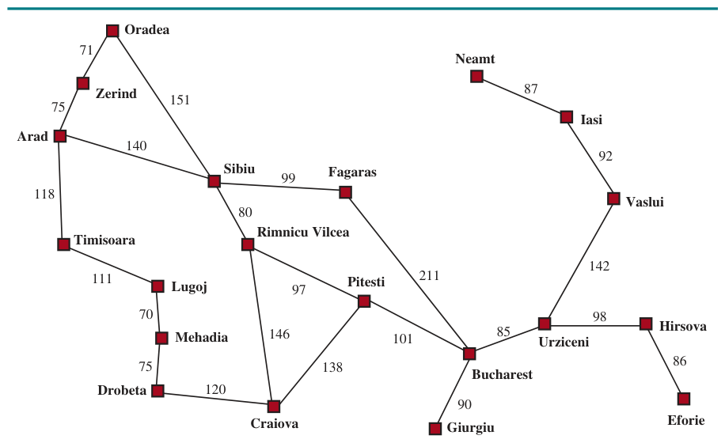
Each undirected road contributes two directed actions, one in each direction. From Arad to Bucharest, the path via Sibiu, Rimnicu Vilcea, and Pitesti costs \(140+80+97+101=418\) miles, whereas the shorter-hop path via Sibiu and Fagaras costs \(140+99+211=450\) miles, making the first route optimal.地图上每条双向道路对应一正一反两个动作。从 Arad 到 Bucharest，经 Sibiu、Rimnicu Vilcea 与 Pitesti 的路径代价为 \(140+80+97+101=418\) 英里，而步数更少的 Fagaras 路线代价高达 \(140+99+211=450\) 英里，因此前一条路线最优。
Step 2: abstraction and standard problems第 2 步：抽象与标准问题
Core idea: Good abstraction discards real-world clutter while staying valid (abstract solutions map back to real solutions) and useful (each abstract step is easy to execute).核心思路：好的抽象既能剥离现实杂音，又能保证“有效”（抽象解可还原为真实解）且“有用”（每步抽象动作比原问题更易执行）。
Real environments carry endless physical detail—steering angles, tire pressure, radio stations—that would choke any search if modeled explicitly. Abstraction（抽象）removes everything unnecessary for choosing a solution, provided it satisfies two criteria:真实环境充满转向角、胎压、车载电台等无穷细节，若全盘建模将使搜索寸步难行。抽象去掉求解不必要的细节，前提是满足两条准则：
- Valid abstraction: Every abstract solution can be elaborated into a valid solution in the detailed real problem.有效抽象：任何抽象解都能细化还原为原详细问题的一个可行解。
- Useful abstraction: Carrying out each abstract action is substantially easier than solving the original problem (e.g., "drive from
AradtoSibiu" requires no further search).有用抽象：执行单个抽象动作比解决原问题简单得多（例如“从Arad开车到Sibiu”无需再做高层搜索）。
Two classic benchmark problems illustrate how clean state formulations work:下面两个经典基准问题展示了精炼状态表示的威力：
- Vacuum world（吸尘器世界）: Each state records the agent's current cell and which cells are dirty; actions are
Left,Right, andSuck(cost 1 each), and the goal is that every cell is clean.吸尘器世界：状态由智能体所在方格及各格脏污情况组成；动作为Left、Right和Suck（代价均为 1），目标是所有方格均干净。 - 8-puzzle（八数码问题）: Each state records the board positions of the tiles and the blank; actions move the blank
Left,Right,Up, orDownwithin the border (cost 1 per slide). A parity invariant splits all \(9!=362{,}880\) arrangements into two disjoint halves, so only \(181{,}440\) states can reach a given goal.八数码问题：状态记录各数字块与空格的位置；动作是将空格在不越界的前提下向四个方向移动（每步代价为 1）。由于奇偶不变量的存在，全部 \(9!=362{,}880\) 种排列一分为二，只有其中 \(181{,}440\) 个状态能到达给定目标。

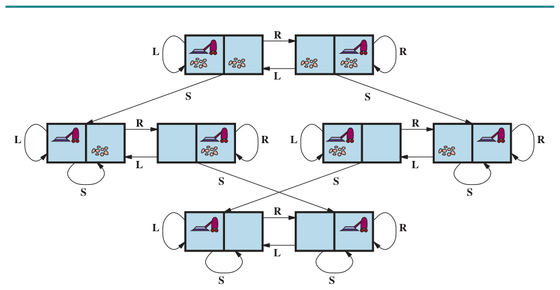
Left, Right, and Suck两方格吸尘器世界的完整状态空间图：共 8 个状态以及 Left、Right、Suck 的全部转移边Practice练习
Q1. (Calculation) A vacuum world has three cells in a row (A, B, C) with actions Left, Right, and Suck, each costing 1. (a) How many states and goal states exist? (b) Starting in A with all three cells dirty, give an optimal solution and its cost.Q1.（计算）一个排成一行的三方格（A、B、C）吸尘器世界支持 Left、Right、Suck 动作，代价均为 1。(a) 共有多少个状态和目标状态？(b) 从 A 出发且三格全脏，给出一个最优解及其代价。
Answer
- (a) State counts: A state pairs the agent's cell (3 choices) with the dirt pattern (\(2^3=8\) choices), yielding \(3\cdot2^3=24\) total states. A goal requires all cells clean regardless of agent location, leaving 3 goal states.(a) 状态计数：状态由智能体位置（3 种）与脏污分布（\(2^3=8\) 种）共同决定，共 \(3\cdot2^3=24\) 个状态。目标只要求全干净，故有 3 个目标状态。
- (b) Optimal plan:
Suck, Right, Suck, Right, Suckhas cost 5. Every dirty cell requires at least oneSuck(3 actions) and traversing from A to C requires at least 2 moves, so \(3+2=5\) is the lower bound and is optimal.(b) 最优解：Suck, Right, Suck, Right, Suck，总代价为 5。三格各需至少 1 次Suck，从 A 走到 C 至少需 2 次移动，因此 \(3+2=5\) 是下界，该解最优。
思路：状态数 = 位置数 × 脏污组合数。
Q2. (Explain) Define a valid and a useful abstraction. Which real-world details does the 8-puzzle formulation abstract away, and why is that acceptable?Q2.（简答）定义有效抽象与有用抽象。八数码问题的形式化略去了哪些细节？为何这样做是合理的？
Answer
- Definitions: An abstraction is valid if every abstract solution can be elaborated into a real-world solution, and useful if executing each abstract action is simpler than solving the full problem.定义：若抽象解均能细化为详细世界中的解，则抽象有效；若每个抽象动作的执行比原问题更简单，则抽象有用。
- 8-puzzle abstraction: The model ignores intermediate continuous positions while sliding a tile as well as physical actions like lifting tiles out. Because every discrete move (
Left,Right,Up,Downof the blank) is physically realizable and trivial to execute, the abstraction is both valid and useful.八数码抽象：模型忽略了滑动过程中的连续中间位置以及撬出数码块等物理动作；由于四个离散空格移动在物理上均可直接完成且极易执行，该抽象既有效又有用，从而能在小规模离散空间中搜索。
Q3. (Extension: parity invariant) Explain why only half of the \(9!=362{,}880\) 8-puzzle arrangements can reach a given goal, and determine whether 1 2 3 / 4 5 6 / 8 7 _ can reach 1 2 3 / 4 5 6 / 7 8 _ (rows separated by "/", blank written "_").Q3.（拓展：奇偶不变量）解释为什么八数码的 \(9!=362{,}880\) 种排列中只有一半可达给定目标，并判断 1 2 3 / 4 5 6 / 8 7 _ 能否到达 1 2 3 / 4 5 6 / 7 8 _（“/”分隔各行，“_”表示空格）。
Answer
- Invariant: Read tiles row by row (ignoring the blank) and count inversions (pairs where a larger tile precedes a smaller one). Moving the blank horizontally leaves the sequence unchanged, while moving it vertically shifts one tile past two others, changing the inversion count by \(0\) or \(\pm2\). Thus inversion parity never changes, splitting the space into two unreachable classes of \(9!/2=181{,}440\) states.不变量：按行读出数码（忽略空格）并统计逆序对（大数在前、小数在后的数对）个数。空格横移不改变序列；竖移会让一个数码跳过另外两个数码，使逆序数改变 \(0\) 或 \(\pm2\)。因此逆序数奇偶性恒定，状态空间被划分为两个互不相通的等价类，每类含 \(9!/2=181{,}440\) 个状态。
- Reachability test: The sequence
1 2 3 4 5 6 8 7has 1 inversion (8before7, odd parity), whereas the goal1 2 3 4 5 6 7 8has 0 inversions (even parity). Since they lie in different parity classes, the goal is unreachable.可达性判定：排列1 2 3 4 5 6 8 7含 1 个逆序对（8在7前，奇数），目标1 2 3 4 5 6 7 8含 0 个逆序对（偶数）；二者奇偶性不同，无法到达目标。
思路：逆序数的奇偶性是不变量。
Search trees, the frontier and performance measures ★★★搜索树、边界与性能度量
Goal. Expand search-tree nodes by hand while tracking the frontier, identify the frontier data structure used by each algorithm, eliminate redundant paths, and evaluate algorithms using completeness, optimality, time, and space.目标。手工扩展搜索树结点并维护边界，说明各算法使用的边界数据结构，消除冗余路径，并按完备性、最优性、时间和空间对比算法性能。
Core idea: Search unfolds a tree of paths outward from the initial state, using a frontier to track candidates awaiting expansion and a reached table to block redundant paths.核心思路：搜索从初始状态向外生长一棵路径树，用边界保存待扩展的候选结点，并用已到达表拦截冗余路径。
Step 1: the search tree and the frontier第 1 步：搜索树与边界
Why separate a search tree from the underlying state graph? A graph can loop back on itself or offer dozens of routes to the same city, so an algorithm needs a tree structure whose root is the initial state and where every node traces one clean parent chain back to the start.为什么要在状态空间图之上再铺出一棵搜索树？因为原图往往包含环路和通往同一城市的众多绕路，算法必须借助树结构让每个结点都对应唯一一条回溯到根的清晰路径。
To expand（扩展）a node, the algorithm applies ACTIONS and RESULT to its state and creates a child node for each outcome. Nodes that have been generated but not yet expanded form the frontier（边界）, while any state that already has a node in the tree is called reached（已到达）.扩展一个结点，就是对其状态调用 ACTIONS 和 RESULT 并为每个结果创建子结点。已生成但尚未扩展的结点共同组成边界；一旦某个状态已生成过对应结点，便称它为已到达。

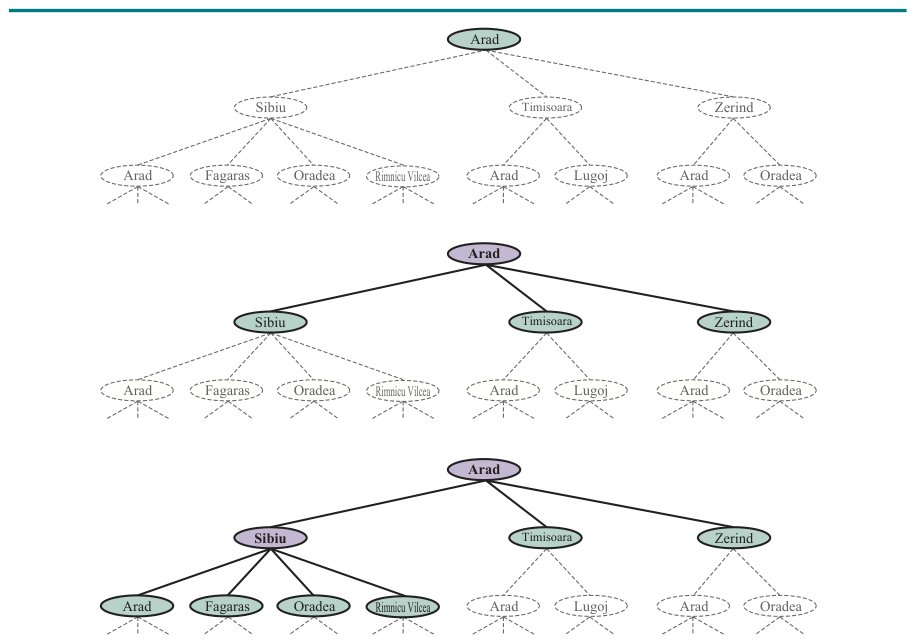
Arad to Bucharest: first Arad is expanded, then Sibiu从 Arad 到 Bucharest 的部分搜索树：先扩展 Arad，再扩展 SibiuAfter expanding Arad and then Sibiu without duplicate checks, the frontier contains six nodes: Timisoara, Zerind, Arad, Fagaras, Oradea, and Rimnicu Vilcea. Notice that the newly generated Arad node closes a two-step cycle back to the root and can never lie on an optimal path.在图上依次扩展 Arad 和 Sibiu 后（若不去重），边界中共有六个结点：Timisoara、Zerind、Arad、Fagaras、Oradea 和 Rimnicu Vilcea。其中新生成的 Arad 回到了起点形成环，绝不可能出现在最优路径上。
Step 2: best-first search and the data structure of the frontier第 2 步：最佳优先搜索与边界的数据结构
Core idea: Best-first search always removes and expands the frontier node with the lowest evaluation score \(f(n)\), and swapping the frontier's queue discipline yields different search algorithms.核心思路：最佳优先搜索总是从边界取出评价值 \(f(n)\) 最小的结点予以扩展；改变边界队列的调度规则，就会得到不同的搜索算法。
Each node \(n\) stores its state, parent pointer, generating action, and cumulative path cost \(g(n)\), while an evaluation function（评价函数）\(f(n)\) scores how promising \(n\) is to expand next. Once a goal node is selected, following its parent pointers back to the root reconstructs the solution.每个结点 \(n\) 保存自身状态、父结点指针、生成动作与累计路径代价 \(g(n)\)，而评价函数 \(f(n)\) 则用来衡量下一步该优先扩展谁。一旦弹出目标结点，沿父指针回溯到根即可读出完整解路径。
function BEST-FIRST-SEARCH(problem, f) returns a solution node or failure
node ← NODE(STATE = problem.INITIAL)
frontier ← a priority queue ordered by f, with node as an element
reached ← a lookup table with one entry: key problem.INITIAL, value node
while not IS-EMPTY(frontier) do
node ← POP(frontier)
if problem.IS-GOAL(node.STATE) then return node
for each child in EXPAND(problem, node) do
s ← child.STATE
if s is not in reached or child.PATH-COST < reached[s].PATH-COST then
reached[s] ← child
add child to frontier
return failure
function EXPAND(problem, node) yields nodes
s ← node.STATE
for each action in problem.ACTIONS(s) do
s' ← problem.RESULT(s, action)
cost ← node.PATH-COST + problem.ACTION-COST(s, action, s')
yield NODE(STATE = s', PARENT = node, ACTION = action, PATH-COST = cost)
The frontier supports IS-EMPTY, POP, TOP, and ADD, and choosing the underlying queue determines which node leaves the frontier next:边界抽象为一个支持 IS-EMPTY、POP、TOP 和 ADD 的队列，其底层实现决定了下一个被扩展的结点：
| Frontier data structure边界的数据结构 | POP returnsPOP 返回 | Algorithm对应算法 |
|---|---|---|
| Priority queue优先队列 | Node with minimum \(f(n)\)\(f(n)\) 最小的结点 | Best-first search, uniform-cost search最佳优先搜索、一致代价搜索 |
| FIFO queue (first in, first out)FIFO 队列（先进先出） | Oldest unexpanded node最早入队的结点 | Breadth-first search广度优先搜索 |
| LIFO queue or stack (last in, first out)LIFO 队列或栈（后进先出） | Most recently added node最新入栈的结点 | Depth-first search深度优先搜索 |
Step 3: redundant paths第 3 步：冗余路径
Even on a tiny 20-city map, reversible roads create cycles（环）that turn a finite state graph into an infinite search tree. More generally, any redundant path（冗余路径）reaches a state via a worse route than one already discovered—such as Arad–Zerind–Oradea–Sibiu (297 miles) instead of Arad–Sibiu (140 miles)—and algorithms handle this in three ways:即便只有 20 座城市，双向道路也会形成环，让有限图展开出无限大的搜索树。更一般地，冗余路径指以更差的路线重复到达已知状态（如 297 英里的 Arad–Zerind–Oradea–Sibiu 相比 140 英里的 Arad–Sibiu），通常有三种应对策略：
- Graph search（图搜索）: Maintains a
reachedtable storing every discovered state and retains only the cheapest path to each; ideal whenever the table fits in memory.图搜索：维护一张已到达表，为每个状态只保留当前已知的最便宜路径；只要内存容得下该表，就应优先使用。 - Tree-like search（树式搜索）: Keeps no
reachedtable at all, trading away duplicate detection to save memory at the risk of revisiting states or looping forever.树式搜索：不维护已到达表，以牺牲去重为代价换取极低内存，但可能反复检查同一状态甚至陷入死循环。 - Cycle checking（环检测）: Walks parent pointers backward to see whether the state already appears on the current branch, costing no extra table memory; checking all ancestors eliminates every cycle, whereas checking only a few links quickly filters short cycles.环检测：沿着父指针回溯检查当前分支上是否已出现该状态，无需额外建表；查遍全部祖先可彻底消灭所有环，只查最近几步则能以极小代价滤掉短环。
Step 4: the four criteria and the symbols第 4 步：四个标准与符号
Search algorithms are evaluated against four standard performance criteria:衡量与对比搜索算法性能时，通常使用四项标准：
- Completeness（完备性）: Is the algorithm guaranteed to find a solution whenever one exists, and to report failure when none exists?完备性：只要存在解就一定能找到，且无解时能明确报告失败。
- Cost optimality（代价最优性）: Does it find a solution with the lowest total path cost among all solutions?代价最优性：找到的解在所有解中具有最低的总路径代价。
- Time complexity（时间复杂度）: How many nodes are generated (or popped), measured asymptotically?时间复杂度：生成或弹出的结点数量级。
- Space complexity（空间复杂度）: How many nodes must be stored in memory at once?空间复杂度：内存中同时驻留的结点数量级。
On a finite state space, cutting off cycles suffices for completeness. On an infinite space, however, an algorithm must be systematic（系统性的）—guaranteed to eventually reach every state connected to the start—rather than drifting forever down a single infinite branch such as \(4, 4!, (4!)!, \dots\).在有限状态空间中，只要切断环路就能保证完备性；而在无限空间中，算法必须是系统性的——保证最终能触及与起点连通的每一个状态，才不会顺着诸如 \(4, 4!, (4!)!, \dots\) 的单一无限分支一去不返。
For implicit state spaces too large to store explicitly, complexity is expressed using three parameters:对于无法显式存放整张图的隐式状态空间，复杂度由三个参数刻画：
- \(b\): branching factor（分支因子）, the maximum or average number of successors per node (e.g., 3 from
Arad).\(b\)：分支因子，单个结点的后继个数（如从Arad出发为 3）。 - \(d\): depth of the shallowest solution, measured in number of actions (e.g., \(d=3\) for
Arad–Sibiu–Fagaras–Bucharest).\(d\)：最浅解的深度，即到达目标的最少动作步数（如Arad–Sibiu–Fagaras–Bucharest为 \(d=3\)）。 - \(m\): maximum depth of any path in the search tree, which may exceed \(d\) and becomes \(\infty\) if cycles go unchecked.\(m\)：搜索树中任意路径的最大深度，可能远大于 \(d\)；若不检查环路则为无穷大。
Practice练习
Q1. (Trace) In the Romania problem, expand Arad and then Sibiu. How many nodes sit on the frontier under (a) tree-like search and (b) graph search with a reached table? Which states are reached in (b)?Q1.（手工演算）在罗马尼亚问题中依次扩展 Arad 与 Sibiu。(a) 树式搜索和 (b) 带已到达表的图搜索中，边界上各有几个结点？(b) 中哪些状态已被到达？
Answer
Expanding Arad generates Sibiu, Timisoara, and Zerind; expanding Sibiu generates Arad, Fagaras, Oradea, and Rimnicu Vilcea.扩展 Arad 生成 Sibiu、Timisoara、Zerind；扩展 Sibiu 生成 Arad、Fagaras、Oradea、Rimnicu Vilcea。
- (a) Tree-like search: The frontier holds 6 nodes—
Timisoara,Zerind,Arad,Fagaras,Oradea, andRimnicu Vilcea(the secondAradcloses a cycle).(a) 树式搜索：边界有 6 个结点——Timisoara、Zerind、Arad、Fagaras、Oradea与Rimnicu Vilcea（第二个Arad形成环）。 - (b) Graph search:
Aradis already reached, so it is skipped and the frontier has 5 nodes. All 7 generated states are inreached:Arad,Sibiu,Timisoara,Zerind,Fagaras,Oradea, andRimnicu Vilcea.(b) 图搜索：Arad已在已到达表中，跳过后边界剩 5 个结点；共 7 个状态进入已到达表：Arad、Sibiu、Timisoara、Zerind、Fagaras、Oradea与Rimnicu Vilcea。
Q2. (Calculation) On an obstacle-free \(10\times10\) grid where an agent can move to any of its 8 neighboring cells, at most how many paths of length 9 start from one cell, and what does that imply per cell?Q2.（计算）在无障碍的 \(10\times10\) 网格上，智能体可移向周围 8 个相邻格子。从一个格子出发、长度为 9 的路径至多有多少条？这意味着平均每个格子会遇到多少冗余？
Answer
- Path count: At most \(8^9=134{,}217{,}728\) paths of length 9 exist (slightly fewer when steps hit the grid boundary).路径总数：长度为 9 的路径至多有 \(8^9=134{,}217{,}728\) 条（靠近网格边界时因可走方向少于 8 个而略少）。
- Redundancy per cell: Because all 100 cells are reachable within 9 moves, an average cell is reached by up to \(1.3\times10^6\) paths (roughly \(1.1\times10^6\) from a central start, the textbook's "over a million"), all but one redundant. Tracking
reachedstates via graph search therefore cuts work by roughly a millionfold.单格冗余量：9 步内可达全部 100 个格子，意味着平均每个格子有多达约 \(1.3\times10^6\) 条路径（从中心出发约 \(1.1\times10^6\) 条，即教材所说“逾百万条”），其中除一条外全属冗余；图搜索记录已到达表后，搜索效率可提升约百万倍。
Q3. (True or false) "On a finite state space, every search algorithm terminates." Justify your answer.Q3.（判断）判断下述命题真伪并说明理由：“在有限状态空间上，任何搜索算法都会终止。”
Answer
- False: Even on a finite graph, reversible actions create cycles (such as
Arad–Sibiu–Arad–…) and make the search tree infinite.错误：即使状态空间有限，可逆动作也会形成环路（如Arad–Sibiu–Arad–…），从而展开出无限的搜索树。 - Why algorithms fail to stop: Tree-like DFS without cycle checking can follow an endless loop forever, while tree-like BFS finds an existing goal but keeps expanding the infinite tree forever when no goal exists. Guaranteed termination requires a
reachedtable, cycle checking, or a depth limit.不终止的原因：不做环检测的树式 DFS 会死磕环路；树式 BFS 虽在有解时能停，但无解时也会不断扩展无限树而无法报告失败。唯有借助已到达表、环检测或深度限制，才能确保一定终止。
易错：完备性还要求没有解时能报告失败。
Breadth-first and uniform-cost search ★★★广度优先搜索与一致代价搜索
Goal. Trace breadth-first search and uniform-cost search by hand on a graph, tracking each expanded node, the resulting frontier, and the final solution path with its cost.目标。手工在图上演算广度优先搜索与一致代价搜索，写出每步扩展的结点、更新后的边界以及最终解路径与代价。
An uninformed（无信息的）search algorithm receives no hint about how close any state lies to a goal; unlike the heuristic methods of Chapter 3, it can only generate successors systematically and recognize goals when it reaches them.无信息搜索算法得不到任何关于当前状态离目标还有多远的提示；与第 3 章的有信息搜索不同，它只能按固定规则生成后继结点并识别目标。
Step 1: breadth-first search第 1 步：广度优先搜索
Core idea: BFS explores the search tree level by level using a FIFO queue and an early goal test at generation, guaranteeing the fewest-action path first.核心思路：BFS 借助先进先出（FIFO）队列与生成时的提前目标测试逐层向外扩展，从而最先找到步数最少的解。
When every action carries the same cost, minimizing total cost means minimizing the number of steps. Breadth-first search (BFS)（广度优先搜索）achieves this by ordering nodes by depth (\(f(n)=\text{depth}(n)\)); because newly generated children are always deeper than older nodes on the frontier, a FIFO queue replaces the priority queue, and an early goal test（提前目标测试）checks each child immediately upon generation.当所有动作代价相同时，代价最小等价于步数最少。广度优先搜索（BFS）按深度（\(f(n)=\text{depth}(n)\)）扩展结点：由于新生成的子结点总比队列中已有结点更深，用 FIFO 队列即可替代优先队列，并配合提前目标测试在生成子结点时立刻检验是否为目标。
To trace BFS by hand, follow five steps:手工演算 BFS 的步骤如下：
- Insert the root into the FIFO queue; if the root itself is a goal, return it immediately.将根结点放入 FIFO 队列；若根即为目标，直接返回。
- Pop the oldest node from the front of the queue and expand it.从队首弹出最早入队的结点并扩展它。
- Inspect each child from left to right; if a child's state satisfies the goal test, stop and trace its path via parent pointers.从左到右检查每个子结点；若其状态命中目标测试，立即停止并沿父指针回溯出解路径。
- Otherwise, skip the child if its state is already in
reached, or else record it and append it to the back of the queue.否则，若该状态已存在于已到达表中则跳过；不然将其记入已到达表并追加到队尾。 - Repeat from step 2 until a goal is found or the queue empties (failure).回到第 2 步重复执行，直至找到目标或队列变空（返回失败）。
Trace BFS on the binary tree below with goal M (every edge costs 1): A has children B, C; B has D, E; C has F, G; D has H, I; E has J, K; F has L, M; and G has N, O.下面以目标 M 在二叉树上演算 BFS（所有边代价均为 1）：A 的子结点为 B, C，B 为 D, E，C 为 F, G，D 为 H, I，E 为 J, K，F 为 L, M，G 为 N, O。

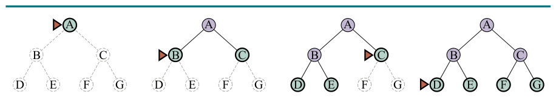
A二叉树上的广度优先搜索：从根结点 A 出发逐层向外扩展| Step步骤 | Node expanded扩展的结点 | Children generated生成的子结点 | Frontier after step (front on left)该步后的边界（队首在左） |
|---|---|---|---|
| 1 | A | B, C | B, C |
| 2 | B | D, E | C, D, E |
| 3 | C | F, G | D, E, F, G |
| 4 | D | H, I | E, F, G, H, I |
| 5 | E | J, K | F, G, H, I, J, K |
| 6 | F | L, M (M is goal: stop)L, M（M 为目标：停止） |
G, H, I, J, K, L (M returned at once)G, H, I, J, K, L（M 生成即返回，不入队） |
This trace returns the path A–C–F–M with 3 actions (cost \(3\times1=3\)) after generating \(1+2+4+6=13\) nodes. Because BFS finishes all nodes of depth \(d-1\) before touching depth \(d\), it is complete whenever \(b\) is finite and always finds a shortest-hop solution, though it is cost-optimal only when all actions cost the same.该演算返回路径 A–C–F–M（共 3 步、代价 \(3\times1=3\)），共生成 \(1+2+4+6=13\) 个结点。由于 BFS 先处理完第 \(d-1\) 层才进入第 \(d\) 层，只要分支因子 \(b\) 有限它就具有完备性，且必能找到动作数最少的解；但它仅在所有动作代价相等时才具有代价最优性。
In practice, BFS runs out of memory long before it runs out of time. With \(b=10\), \(10^6\) nodes/s, and 1 KB per node, searching to \(d=10\) generates \(1.1\times10^{10}\) nodes in about 3.1 hours while demanding roughly 11 TB of RAM; at \(d=14\), it reaches \(1.1\times10^{14}\) nodes and takes around 3.5 years.实践中，BFS 往往远早于时间耗尽就被内存卡死。若 \(b=10\)、每秒生成 \(10^6\) 个结点且每结点占 1 KB，当 \(d=10\) 时共生成 \(1.1\times10^{10}\) 个结点，耗时仅约 3.1 小时，却需要约 11 TB 内存；到 \(d=14\) 时更是膨胀到 \(1.1\times10^{14}\) 个结点、耗时约 3.5 年。
Step 2: uniform-cost search第 2 步：一致代价搜索
Core idea: UCS generalizes BFS to variable step costs by expanding the lowest-cost path \(g(n)\) from a priority queue and running a late goal test only when a node is popped.核心思路：UCS 将 BFS 推广到变代价图：用优先队列按路径代价 \(g(n)\) 从小到大扩展结点，并把目标测试延迟到弹出时再执行。
When actions have unequal weights, fewer steps no longer mean lower total cost, so BFS can return a costly shortcut. Setting \(f(n)=g(n)\) turns best-first search into uniform-cost search (UCS)（一致代价搜索）—the AI counterpart of Dijkstra's algorithm—ordering the frontier as a priority queue by cumulative path cost.一旦动作代价各不相同，“步数最少”就不再等于“总代价最低”，BFS 可能会错选看似步数少却极其昂贵的路。若令评价函数 \(f(n)=g(n)\)，最佳优先搜索便成为一致代价搜索（UCS）（即算法课中的 Dijkstra 算法），边界改为按累计路径代价排序的优先队列。
To trace UCS by hand, follow five steps:手工演算 UCS 的步骤如下：
- Insert the root into the priority queue with path cost \(g=0\).将根结点以路径代价 \(g=0\) 放入优先队列。
- Pop the frontier node with the lowest \(g(n)\); if its state is a goal, return it (this late goal test（延迟目标测试）happens only at pop, never at generation).弹出边界中 \(g(n)\) 最小的结点；若其状态为目标，立即返回（延迟目标测试只在弹出时做，绝不在生成时做）。
- Expand the popped node, setting each child's path cost to parent cost plus step cost.扩展该结点，令子结点的路径代价等于父结点代价加上当前动作代价。
- For each child, add it if its state is unreached; if its state is already on the frontier with a higher cost, replace that entry with the cheaper path.若子结点状态未曾到达则加入边界；若该状态已在边界中但新路径更便宜，则用更便宜的条目替换原条目。
- Repeat from step 2 until a goal is popped or the queue empties.回到第 2 步重复执行，直至弹出目标或队列为空。
Why must UCS delay its goal test until pop? Because the first route generated to a goal may still be beaten by a multi-hop detour not yet expanded, as shown on the Romania fragment from Sibiu to Bucharest:为什么 UCS 必须把目标测试延迟到弹出时？因为第一次生成通往目标的路径时，往往还存在尚未展开、步数更多但总价更低的绕行路线。下面的罗马尼亚地图片段清楚展示了这一点：

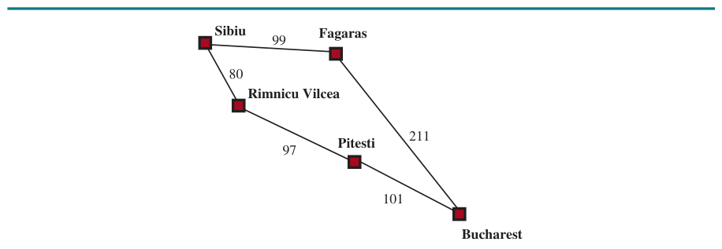
Sibiu to Bucharest用于演示从 Sibiu 到 Bucharest 的一致代价搜索的罗马尼亚局部地图| Popped node (path cost)弹出结点（路径代价） | Frontier after expansion扩展后的边界 |
|---|---|
| Sibiu (0) | Rimnicu Vilcea 80, Fagaras 99Rimnicu Vilcea 80，Fagaras 99 |
| Rimnicu Vilcea (80) | Fagaras 99, Pitesti \(80+97=177\) |
| Fagaras (99) | Pitesti 177, Bucharest \(99+211=310\) |
| Pitesti (177) | Bucharest \(177+101=278\) (replaces 310)Bucharest \(177+101=278\)（替换掉 310） |
| Bucharest (278) | Goal reached: Sibiu–Rimnicu Vilcea–Pitesti–Bucharest, cost 278命中目标：Sibiu–Rimnicu Vilcea–Pitesti–Bucharest，代价 278 |
Bucharest first enters the frontier via Fagaras at cost 310, so an early goal test would have returned that suboptimal route; delaying the check lets Pitesti expand first and discover the 278-mile optimal route.Bucharest 最初经由 Fagaras 以代价 310 生成；若采用提前目标测试就会误选这条次优路径。延迟测试让代价 177 的 Pitesti 得以先扩展，从而找到总价 278 英里的最优解。
UCS is complete and cost-optimal whenever every action costs at least \(\epsilon>0\). Because nodes pop in non-decreasing order of \(g(n)\), the first goal popped cannot exceed any path remaining on the frontier, and the positive lower bound \(\epsilon\) prevents infinite sequences of tiny steps from stalling the search forever.只要所有动作代价都至少为某个常数 \(\epsilon>0\)，UCS 就既完备又代价最优。结点按 \(g(n)\) 不减的顺序弹出，保证最先弹出的目标不会贵于边界中任何候选；而正下界 \(\epsilon\) 避免了无穷多条极便宜的边把搜索拖死。
Because UCS may explore vast clouds of cheap steps before crossing one expensive edge needed for the goal, its complexity bound can far exceed \(O(b^d)\).由于 UCS 往往会先把周围所有廉价小边探索一遍，才轮到那条必要的高代价关键边，其实际结点开销可能远超 \(O(b^d)\)。
Practice练习
Q1. (Trace) On the binary tree with root A, children B, C, D–G, and leaves H–O (goal M), run BFS with (a) an early goal test and (b) a late goal test. List the expansion order and total nodes generated when the goal is recognized.Q1.（手工演算）在根为 A、其余各层依次为 B–C、D–G、H–O 的二叉树上以 M 为目标运行 BFS，分别采用 (a) 提前目标测试和 (b) 延迟目标测试。写出结点扩展顺序以及识别出目标时共生成的结点数。
Answer
- (a) Early goal test: Nodes expand in order
A, B, C, D, E, F. ExpandingFgeneratesLandM, andMis recognized at once, generating \(1+2+4+6=13\) nodes.(a) 提前目标测试：扩展顺序为A, B, C, D, E, F。扩展F时生成L和M，M立即被识别，共生成 \(1+2+4+6=13\) 个结点。 - (b) Late goal test:
Mis recognized only when popped (the 12th pop, afterA, B, …, L). BecauseGis popped and expanded beforeM, all 15 nodes are generated; the early test saves roughly a factor of \(b\) on the final level.(b) 延迟目标测试：M直到出队时才被识别（第 12 个弹出，排在A, B, …, L之后）。由于G先于M出队并扩展，树中全部 15 个结点都会被生成；提前测试通常能省去最后一层约 \(b\) 倍的结点。
Q2. (Trace) A directed graph has edges S→A (1), S→B (5), A→G (10), and B→G (2). (a) Trace UCS from S to G, showing the frontier after each pop. (b) What happens if the goal is tested at generation instead?Q2.（手工演算）有向图包含边 S→A (1)、S→B (5)、A→G (10)、B→G (2)。(a) 从 S 到 G 运行 UCS，给出每次弹出后的边界。(b) 若在生成结点时进行目标测试，会返回什么？
Answer
- (a) UCS trace: Pop
S(0)→ frontierA(1), B(5). PopA(1)→ generatesG(11); frontierB(5), G(11). PopB(5)→ path viaBcosts \(5+2=7<11\), replacingG; frontierG(7). PopG(7)→ goal! ReturnsS–B–Gwith cost 7.(a) UCS 演算：弹出S(0)，边界A(1), B(5)；弹出A(1)，生成G(11)，边界B(5), G(11)；弹出B(5)，经B到G代价为 \(5+2=7<11\)，替换G，边界G(7)；弹出G(7)，命中目标。返回S–B–G，代价 7。 - (b) Early test error:
Gwould be recognized as soon asAis expanded, returning the suboptimal pathS–A–Gof cost 11.(b) 提前测试的错误：扩展A时生成G就会直接终止，错误返回代价为 11 的次优路径S–A–G。
易错：UCS 要等目标结点被弹出才算找到。
Q3. (Complexity) State the worst-case time complexity of UCS when every action costs 1, explain why it exceeds BFS, and evaluate both for \(b=3\), \(d=5\).Q3.（复杂度）给出当每个动作代价均为 1 时 UCS 的最坏时间复杂度，解释其为何大于 BFS，并在 \(b=3\)、\(d=5\) 时分别求值。
Answer
- Why UCS is larger: With \(C^{\ast}=d\) and \(\epsilon=1\), UCS's bound \(O(b^{1+\lfloor C^{\ast}/\epsilon\rfloor})\) becomes \(O(b^{d+1})\), whereas BFS is \(O(b^d)\). Because UCS tests at pop rather than generation, it may generate all nodes at depth \(d+1\) by expanding non-goal siblings at depth \(d\) before popping the goal.为何高于 BFS：代入 \(C^{\ast}=d\) 与 \(\epsilon=1\)，UCS 上界化为 \(O(b^{d+1})\)，而 BFS 为 \(O(b^d)\)。原因在于 UCS 延迟到弹出才测目标，在弹出第 \(d\) 层目标前可能先把同层其他结点都扩展完，从而多生成第 \(d+1\) 层。
- Values for \(b=3, d=5\): \(3^6=729\) (UCS order) versus \(3^5=243\) (BFS order).代入 \(b=3, d=5\)：\(3^6=729\)（UCS 量级）对比 \(3^5=243\)（BFS 量级）。
Depth-first, depth-limited and iterative deepening search ★★★深度优先、深度受限与迭代加深搜索
Goal. Trace depth-first, depth-limited, and iterative deepening search by hand on a tree, and state their time, space, completeness, and optimality.目标。手工在树上演算深度优先、深度受限与迭代加深搜索，并准确给出各自的时间、空间、完备性与最优性。
Step 1: depth-first search第 1 步：深度优先搜索
Core idea: DFS dives down one branch to the bottom using a LIFO stack before backtracking, shrinking memory to \(O(bm)\) at the cost of completeness and optimality.核心思路：DFS 用后进先出（LIFO）栈沿一条分支一钻到底再逐层回溯，将内存需求从指数级压缩至线性的 \(O(bm)\)，代价是牺牲完备性与最优性。
Because BFS and UCS choke on memory by keeping entire levels alive, depth-first search (DFS)（深度优先搜索）flips the priority to expand the deepest node first (\(f(n)=-\text{depth}(n)\)). Implemented with a LIFO stack and usually run as tree-like search without a reached table, it stores only the current root-to-leaf path plus its unexpanded siblings.由于 BFS 与 UCS 必须把整层结点留在内存中导致空间爆炸，深度优先搜索（DFS）反其道而行之，总是优先扩展最深的结点（\(f(n)=-\text{depth}(n)\)）。它采用 LIFO 栈且通常作为树式搜索运行（不维护已到达表），内存中仅保留当前路径及其沿途尚未展开的兄弟结点。
To trace DFS by hand, follow four steps:手工演算 DFS 的步骤如下：
- Push the root onto the stack.将根结点压入栈中。
- Pop the top node; if its state satisfies the goal test, return it and stop.弹出栈顶结点；若命中目标测试则直接返回并停止。
- Expand the popped node and push its children so that the leftmost child lands on top (or state your convention explicitly).扩展该结点，并将子结点压栈（使最左边的子结点处于栈顶，否则需显式声明顺序）。
- Repeat from step 2; hitting a leaf pops back up to the most recent unexpanded sibling—a step called backtracking（回溯）.回到第 2 步循环；遇到无子结点的叶结点时，下一次出栈会自动退回最近一个未扩展的兄弟结点，即回溯。
Trace DFS on the same binary tree toward goal M (with stack top shown on the left):仍在同一棵二叉树上以 M 为目标演算 DFS（下表栈顶在最左端）：

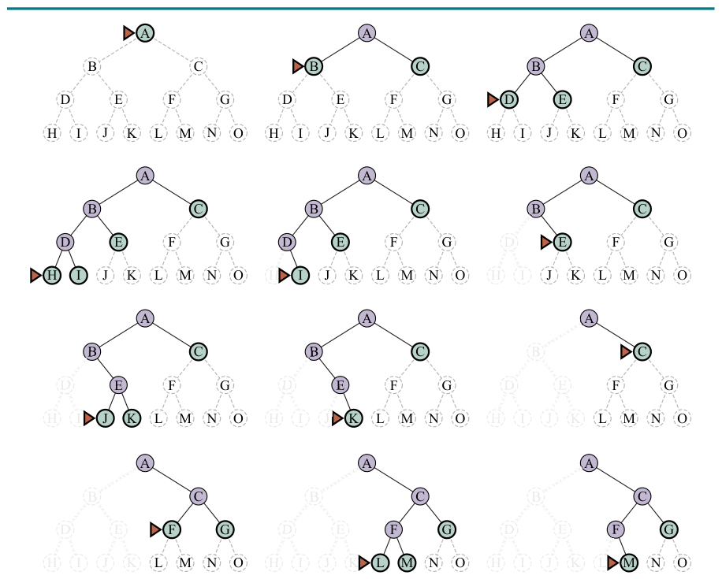
A to goal M二叉树上从 A 到目标 M 的深度优先搜索过程| Step步骤 | Node popped出栈结点 | Stack after expanding (top on left)扩展后的栈（栈顶在左） |
|---|---|---|
| 1 | A | B, C |
| 2 | B | D, E, C |
| 3 | D | H, I, E, C |
| 4 | H (no children)H（无子结点） | I, E, C |
| 5 | I (no children)I（无子结点） | E, C |
| 6 | E | J, K, C |
| 7 | J (no children)J（无子结点） | K, C |
| 8 | K (no children)K（无子结点） | C |
| 9 | C | F, G |
| 10 | F | L, M, G |
| 11 | L (no children)L（无子结点） | M, G |
| 12 | M | Goal reached: stop命中目标：停止 |
DFS finds A–C–F–M (cost 3) while keeping at most 4 nodes on the stack at once. However, it is not cost-optimal (returning the first goal reached), is incomplete on infinite or cyclic spaces (though complete on finite spaces with full-path cycle checking), runs in \(O(b^m)\) worst-case time, and uses only \(O(bm)\) space.DFS 找到路径 A–C–F–M（代价 3），且整个过程中栈内从未超过 4 个结点。但它不是代价最优的（只返回最先碰到的解），在无限或有环空间中不完备（仅在有限空间且沿全路径做环检测时完备），最坏时间为 \(O(b^m)\)，而空间仅需线性的 \(O(bm)\)。
Step 2: depth-limited search第 2 步：深度受限搜索
Core idea: DLS stops DFS from chasing infinite branches by enforcing a fixed depth limit \(\ell\), returning solution, failure, or cutoff.核心思路：DLS 为 DFS 施加固定深度上限 \(\ell\) 以避免陷入无限深渊，并在“找到解”、“彻底失败（failure）”与“深度截断（cutoff）”三种结果间作区分。
To keep DFS from falling down an endless branch, depth-limited search (DLS)（深度受限搜索）treats every node at depth \(\ell\) (script "l") as a leaf with no successors. Choosing \(\ell\) relies on domain structure—for the 20-city Romania map, \(\ell=19\) is safe and the graph diameter \(9\) (longest shortest path between any pair) is tighter—and the search yields one of three outcomes:为防止 DFS 沿着无限路径一去不回，深度受限搜索（DLS）人为规定深度达到 \(\ell\)（花体字母 l）的结点不再扩展。上限 \(\ell\) 常由问题结构给出（例如 20 城的罗马尼亚图中取 \(\ell=19\) 绝对安全，而图直径 \(9\) 更紧凑），DLS 会返回三种结果之一：
- Solution: A goal node was popped within depth \(\ell\).解：在深度 \(\ell\) 以内找到目标。
- Failure: The entire reachable tree ended before depth \(\ell\) with no goal anywhere.failure（失败）：所有分支均在深度 \(\ell\) 前自然穷尽且无解（确认彻底无解）。
- Cutoff: No solution was found within depth \(\ell\), yet at least one branch was truncated at \(\ell\) so a deeper solution may exist.cutoff（截断）：深度 \(\ell\) 以内未找到解，但因有分支被截断，更深处仍可能存在解。
Trace DLS with \(\ell=2\) toward goal M (which sits at depth 3):以 \(\ell=2\)、目标 M（位于深度 3）为例演算 DLS：
| Step步骤 | Node popped (depth)出栈结点（深度） | Stack after step (top on left)该步后的栈（栈顶在左） |
|---|---|---|
| 1 | A (0) | B, C |
| 2 | B (1) | D, E, C |
| 3 | D (2) — limit reached: cutoffD（2）— 达上限：cutoff | E, C |
| 4 | E (2) — limit reached: cutoffE（2）— 达上限：cutoff | C |
| 5 | C (1) | F, G |
| 6 | F (2) — limit reached: cutoffF（2）— 达上限：cutoff | G |
| 7 | G (2) — limit reached: cutoffG（2）— 达上限：cutoff | empty空 |
Because the stack empties after hitting depth-2 cutoffs without seeing M, DLS returns cutoff. If \(\ell<d\), DLS misses the goal and is incomplete; if \(\ell>d\), it may return a deeper non-optimal path, running in \(O(b^\ell)\) time and \(O(b\ell)\) space.栈空时仍未见到 M 且发生过截断，因此返回 cutoff。若 \(\ell<d\)，DLS 会漏解而不完备；若 \(\ell>d\)，它仍可能先碰到更深处的非最优解。其时间为 \(O(b^\ell)\)，空间为 \(O(b\ell)\)。
Step 3: iterative deepening search第 3 步：迭代加深搜索
Core idea: IDS runs DLS repeatedly with increasing limits \(\ell=0,1,2,\dots\) until cutoff ceases, marrying DFS's linear memory with BFS's completeness and unit-cost optimality.核心思路：IDS 从 \(\ell=0,1,2,\dots\) 逐轮放宽深度限制并反复执行 DLS，从而把 DFS 的线性内存与 BFS 的完备性、等代价最优性合二为一。
How do we avoid guessing \(\ell\) beforehand? Iterative deepening search (IDS)（迭代加深搜索）simply tries every depth limit in turn—\(0, 1, 2, \dots\)—discarding prior trees between passes. While restarting from the root seems wasteful, exponentially growing trees pack nearly all their nodes into the bottom layer, so re-exploring upper layers adds only a small constant factor:如果事先不知道解在多深，如何避免瞎猜 \(\ell\)？迭代加深搜索（IDS）干脆依次尝试深度限制 \(0, 1, 2, \dots\)，每轮从头运行一次 DLS。虽然重复生成上层结点看似白做功，但在指数增长的树中绝大部分结点都挤在最底层，重复工作只带来极小的常数因子开销：
- Initialize depth limit \(\ell=0\).设初始深度限制 \(\ell=0\)。
- Run DLS from the root with limit \(\ell\) using an empty stack.以空栈从根出发运行上限为 \(\ell\) 的 DLS。
- If DLS returns a solution or failure, return that result and stop.若返回解或 failure，直接输出结果并停止。
- If DLS returns cutoff, increment \(\ell\leftarrow\ell+1\) and repeat from step 2.若返回 cutoff，令 \(\ell\leftarrow\ell+1\) 并返回第 2 步。

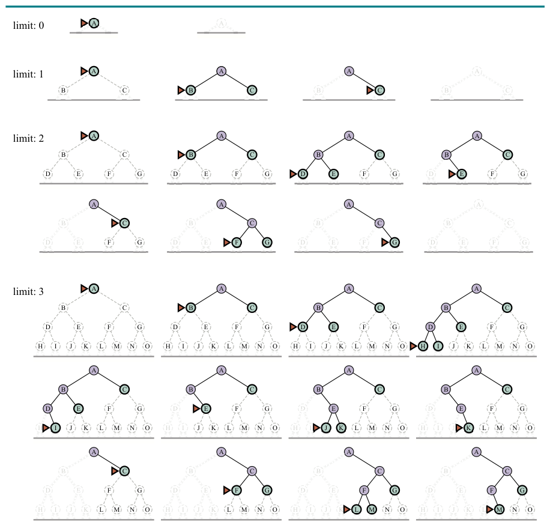
M二叉树上迭代加深搜索的四轮迭代（\(\ell=0,1,2,3\)）直至找到目标 MTracing IDS on the binary tree with goal M visits 23 popped nodes across four passes before finding A–C–F–M (cost 3) at \(\ell=3\):在前述二叉树上以 M 为目标演算 IDS，共经历四轮、合计弹出 23 个结点后在 \(\ell=3\) 轮找到 A–C–F–M（代价 3）：
| Limit \(\ell\) | Nodes popped in order按序出栈的结点 | Result结果 | Pops出栈次数 |
|---|---|---|---|
| 0 | A | cutoff | 1 |
| 1 | A, B, C | cutoff | 3 |
| 2 | A, B, D, E, C, F, G | cutoff | 7 |
| 3 | A, B, D, H, I, E, J, K, C, F, L, M | solution: A, C, F, M解：A, C, F, M |
12 |
IDS is complete on finite acyclic spaces (or finite cyclic spaces with path cycle checking) and cost-optimal whenever all step costs are identical, achieving \(O(bd)\) space and \(O(b^d)\) time because level \(d\) is generated once while shallower level \(i\) is generated \(d-i+1\) times.在有限无环空间（或带全路径环检测的有限有环空间）中，IDS 是完备的，且当所有动作代价相等时最优。它同时保持 \(O(bd)\) 空间与 \(O(b^d)\) 时间，因为第 \(d\) 层仅生成 1 次，而浅层第 \(i\) 层虽重复生成 \(d-i+1\) 次，总数却可忽略。
Accordingly, IDS is the default uninformed choice whenever the state space exceeds available memory and the solution depth is unknown.因此，只要状态空间远超内存容量且解的深度未知，IDS 就是首选的无信息搜索方法。
Practice练习
Q1. (Trace) Run DFS on the binary tree from A (with levels B–C, D–G, and H–O, taking children left to right) toward goal M. Give the pop order and the peak frontier size.Q1.（手工演算）以 M 为目标在前述二叉树（A 为根，各层依次为 B–C、D–G、H–O，子结点从左到右访问）上运行 DFS。写出出栈顺序及边界中结点的最大个数。
Answer
- Pop order:
A, B, D, H, I, E, J, K, C, F, L, M(12 pops total).出栈顺序：A, B, D, H, I, E, J, K, C, F, L, M（共出栈 12 次）。 - Peak frontier size: At most 4 nodes sit on the stack simultaneously (e.g.,
H, I, E, Cright after expandingD), matching \(O(bm)\) for \(b=2, m=3\) whereas BFS stores an entire tree level.边界峰值：栈内最多同时存放 4 个结点（如扩展D后栈为H, I, E, C），符合 \(O(bm)\)（\(b=2, m=3\)），而 BFS 须保存整层结点。
Q2. (Calculation) For \(b=3\) and \(d=4\), calculate the number of nodes generated by BFS and by IDS (excluding the root), and find the relative overhead of IDS.Q2.（计算）在 \(b=3\)、\(d=4\) 时，计算 BFS 与 IDS 生成的结点数（不计根结点），并求 IDS 的相对额外开销。
Answer
- BFS nodes: \(N_{\text{BFS}}=3+9+27+81=120\).BFS 结点数：\(N_{\text{BFS}}=3+9+27+81=120\)。
- IDS nodes: \(N_{\text{IDS}}=4\cdot3+3\cdot9+2\cdot27+1\cdot81=12+27+54+81=174\).IDS 结点数：\(N_{\text{IDS}}=4\cdot3+3\cdot9+2\cdot27+1\cdot81=12+27+54+81=174\)。
- Relative overhead: \(174/120=1.45\), meaning IDS generates 45% more nodes.相对额外开销：\(174/120=1.45\)，即多生成 45% 的结点。
Bidirectional search and comparison ★★双向搜索与比较
Goal. Explain why bidirectional search achieves an exponential speedup and what preconditions it requires, and complete and apply the comparison table of all uninformed algorithms.目标。解释双向搜索为何能带来指数级加速及其适用前提，并能默写与运用全部无信息搜索算法的对比表。
Core idea: Bidirectional search launches two simultaneous searches—forward from the start and backward from the goal—meeting in the middle to cut complexity from \(O(b^d)\) to \(O(b^{d/2})\).核心思路：双向搜索同时从起点正向扩展、从目标反向扩展并令两端在中间汇合，将时空开销从 \(O(b^d)\) 骤降至 \(O(b^{d/2})\)。
Growing a single search tree of depth \(d\) expands \(O(b^d)\) nodes, whereas growing two half-depth trees of depth \(d/2\) from both ends only explores \(2\,b^{d/2}\) nodes. To achieve this speedup, the algorithm maintains two frontiers and two reached tables, and requires explicit goal states plus reversible actions—if \(s'\) is a forward successor of \(s\), the solver must be able to generate \(s\) as a backward predecessor of \(s'\).单向搜索搜到深度 \(d\) 需展开 \(O(b^d)\) 个结点，而从两端各自只搜一半深度 \(d/2\) 则总共只需 \(2\,b^{d/2}\) 个结点。为此，双向搜索需同时维护两套边界与两张已到达表，并满足两个前提：目标状态必须显式给出，且动作必须可逆——若 \(s'\) 是 \(s\) 的正向后继，则必须能反推生成 \(s\) 作为 \(s'\) 的反向前驱。
In weighted graphs, the first collision between the two frontiers is not necessarily optimal, so bidirectional uniform-cost search tracks the best solution cost \(\mu\) found so far and terminates only once \(g_F+g_B\ge\mu\), where \(g_F\) and \(g_B\) are the minimum path costs on the forward and backward frontiers (e.g., stopping once \(g_F+g_B\ge 11\) miles when \(\mu=11\)). Thus it never expands nodes costing above \(C^{\ast}/2\).在带权图中，两端边界首次相遇的路径未必最优。因此双向一致代价搜索会记录当前最优解代价 \(\mu\)，仅当正反边界各自最小路径代价满足 \(g_F+g_B\ge\mu\)（例如已找到 \(\mu=11\) 英里且两侧最小代价之和已达 11）时才终止，确保后续不可能出现更便宜的解，扩展结点代价也不超过 \(C^{\ast}/2\)。
The comparison table比较表
Every entry in the comparison table below uses six standard symbols:下方的总对比表使用六个标准符号来刻画复杂度与性质：
| Symbol符号 | Meaning含义 | Typical value典型取值 |
|---|---|---|
| \(b\) | Branching factor (successors per node)分支因子（每个结点的后继数） | 3 from Arad in Romania; 10 in BFS benchmarks罗马尼亚从 Arad 出发为 3；BFS 算例常取 10 |
| \(d\) | Depth of the shallowest solution最浅解的深度 | 3 from Arad to Bucharest via Fagaras经 Fagaras 从 Arad 到 Bucharest 为 3 |
| \(m\) | Maximum path depth in the tree搜索树中任意路径的最大深度 | 9 within Romania's diameter; \(\infty\) with unchecked cycles受限于罗马尼亚直径时为 9；未检环时为 \(\infty\) |
| \(\ell\) | Depth limit in DLS深度受限搜索的深度上限 | 2 in the trace above; 19 as a safe Romania limit前例演算中为 2；罗马尼亚安全上限为 19 |
| \(C^{\ast}\) | Cost of an optimal solution最优解的总代价 | 278 miles from Sibiu to Bucharest从 Sibiu 到 Bucharest 为 278 英里 |
| \(\epsilon\) | Minimum action cost (\(\epsilon>0\))最小步代价（\(\epsilon>0\)） | 80 miles in the Sibiu fragmentSibiu 片段中最短边为 80 英里 |
| Criterion评估标准 | BFS | UCS | DFS | DLS | IDS | Bidirectional双向搜索 |
|---|---|---|---|---|---|---|
| Complete?完备性 | Yes1是1 | Yes1,2是1,2 | No否 | No否 | Yes1是1 | Yes1,4是1,4 |
| Cost-optimal?代价最优性 | Yes3是3 | Yes是 | No否 | No否 | Yes3是3 | Yes3,4是3,4 |
| Time时间 | \(O(b^d)\) | \(O(b^{1+\lfloor C^{\ast}/\epsilon\rfloor})\) | \(O(b^m)\) | \(O(b^\ell)\) | \(O(b^d)\) | \(O(b^{d/2})\) |
| Space空间 | \(O(b^d)\) | \(O(b^{1+\lfloor C^{\ast}/\epsilon\rfloor})\) | \(O(bm)\) | \(O(b\ell)\) | \(O(bd)\) | \(O(b^{d/2})\) |
Table footnotes (assuming tree-like search): \(^1\) \(b\) is finite and the state space is finite or contains a solution; \(^2\) every step cost is at least \(\epsilon>0\); \(^3\) all action costs are identical; \(^4\) both search directions run BFS or UCS.表格注记（针对树式搜索）：\(^1\) \(b\) 有限，且状态空间有限或存在解；\(^2\) 所有动作代价至少为 \(\epsilon>0\)；\(^3\) 所有动作代价相同；\(^4\) 正反两个方向均采用 BFS 或 UCS。
Choosing the right uninformed method:如何为任务选型：
- BFS: Best when step costs are uniform, solutions are shallow, and memory is plentiful.BFS：适合动作代价相等、解较浅且内存充足的场景。
- UCS: Required whenever action costs vary and cost optimality matters.UCS：动作代价不等且要求代价最优时的标准选择。
- DFS or backtracking: Useful when memory is severely limited and many valid solutions exist deep down.DFS 或回溯：适合内存极紧且解密集分布在深层的任务。
- IDS: Preferred default when the state space exceeds memory and the solution depth is unknown.IDS：状态空间远超内存且解深度未知时的首选。
- Bidirectional search: Ideal when the goal state is explicit and predecessors can be computed efficiently.双向搜索：当目标状态显式给出且动作可逆时效果极佳。
Practice练习
Q1. (Calculation) For \(b=5\) and \(d=8\), compare the number of nodes generated by standard BFS with bidirectional BFS searching to depth 4 from each side.Q1.（计算）设 \(b=5\)、\(d=8\)，对比单向 BFS 与两端各搜到深度 4 的双向 BFS 的结点生成数。
Answer
- Standard BFS: \(\sum_{i=0}^{8}5^i=(5^9-1)/4=488{,}281\) nodes.单向 BFS：\(\sum_{i=0}^{8}5^i=(5^9-1)/4=488{,}281\) 个结点。
- Bidirectional BFS: \(2\sum_{i=0}^{4}5^i=2\cdot781=1{,}562\) nodes, giving a speedup factor of \(488{,}281/1{,}562\approx313\).双向 BFS：\(2\sum_{i=0}^{4}5^i=2\cdot781=1{,}562\) 个结点，开销缩减约 \(488{,}281/1{,}562\approx313\) 倍。
Q2. (Design) Choose and justify an uninformed algorithm for: (a) route finding on a road map with varying edge lengths; (b) a unit-cost puzzle with unknown solution depth and a space far larger than memory; (c) a game whose goal is a property ("checkmate") rather than explicit states.Q2.（选型设计）为以下场景选择并论证无信息搜索算法：(a) 边长不等的道路图寻路；(b) 解深度未知、状态空间远超内存的单位代价谜题；(c) 目标是抽象性质（如“将死”）而非显式状态列表的问题。
Answer
- (a) Varying road lengths: Use UCS, because unequal edge costs break BFS optimality and a road map easily fits in memory.(a) 不等长道路寻路：选用 UCS，因为边权不等使 BFS 失去最优性，且道路图完全放得进内存。
- (b) Huge space, unknown depth, unit cost: Use IDS, which achieves \(O(bd)\) DFS memory, guarantees unit-cost optimality, and needs no advance estimate of \(d\).(b) 超大空间、深度未知、单位代价：选用 IDS，它只占 DFS 级的 \(O(bd)\) 内存，保证等代价最优，且无需预先猜测深度 \(d\)。
- (c) Property-based goal: Avoid bidirectional search (which requires explicit goal states and predecessors); use a forward search such as IDS or BFS.(c) 性质型目标：不可用双向搜索（它依赖显式目标状态与前驱生成），应选用正向搜索如 IDS 或 BFS。
Terms to recognize ★需要认识的术语
| Term术语 | What to know核心含义 |
|---|---|
| Backtracking search回溯搜索 | DFS variant that generates one child at a time, mutates the current state in place, and undoes the move on backtrack; stores only one state and \(O(m)\) actions一种 DFS 变体：每次只生成一个子结点，原地修改状态并在回退时撤销动作；内存中仅存一个状态和 \(O(m)\) 个动作 |
| Early vs. late goal test提前与延迟目标测试 | Testing at generation (BFS) versus testing at pop (UCS and general best-first search); late testing is essential for optimality when step costs differ在生成结点时检验目标（BFS）与在弹出结点时检验目标（UCS 与通用最佳优先搜索）；变代价时必须使用延迟测试以保证最优性 |
| Diameter直径 | Maximum number of actions on any shortest path between two states in a graph; a tight depth bound for DLS (9 for Romania)状态空间图中任意两状态间最短路径的最大步数；可作为 DLS 的紧凑深度上限（罗马尼亚地图为 9） |
| Systematic search系统性搜索 | Strategy guaranteed to eventually reach every state connected to the start, required for completeness in infinite state spaces保证最终能触及与起点连通的每一个状态的搜索策略，是在无限状态空间中保持完备性的必要条件 |
| Open-loop vs. closed-loop开环与闭环 | Open-loop executes a precomputed plan blindly without checking percepts (valid in observable, deterministic, known worlds); closed-loop monitors percepts continuously while acting开环指在可观测、确定且已知环境中直接执行算好的计划而不看感知；闭环则在行动过程中持续监控感知 |
| Cycle checking环检测 | Walking parent pointers backward along the current path; checking all ancestors eliminates every cycle, while checking a few recent ancestors quickly blocks short loops沿当前路径的父指针回溯比对状态；检查全部祖先可消灭所有环，仅查最近几步则能以极低开销拦截短环 |
Exam-style questions考试题型练习
Q1. (Formulation, 10 marks) Three missionaries and three cannibals stand on the left bank of a river with a boat holding one or two people. Cannibals must never outnumber missionaries on any bank where missionaries are present, and all six must cross. An optimal solution takes 11 crossings.Q1.（形式化，10 分）三名传教士与三名食人族站在河左岸，有一艘每次可载一到两人的船。任何一岸只要有传教士，食人族人数就绝不能超过传教士，且六人必须全部渡到对岸（已知最优解需 11 次渡河）。
- (a) (5 marks) Formulate the problem: states, initial state, goal test, actions, transition model, and cost.(a)（5 分）形式化该问题：状态、初始状态、目标测试、动作、转移模型与代价。
- (b) (2 marks) How many legal states exist, and how many are reachable?(b)（2 分）共有多少个合法状态？其中有多少个可达？
- (c) (3 marks) Which uninformed algorithm should you choose, and does it require a
reachedtable?(c)（3 分）应选用哪种无信息搜索算法？是否需要维护已到达表？
Answer
(a) Problem formulation (5 marks).(a) 问题形式化（5 分）。
- State & Initial/Goal: State \((m,c,\beta)\) records missionaries and cannibals on the left bank plus boat side \(\beta\in\{L,R\}\) (right bank is \((3-m,3-c)\)). Start at \((3,3,L)\); goal test is \((m,c,\beta)=(0,0,R)\).状态与起止点：状态 \((m,c,\beta)\) 记录左岸的传教士数、食人族数及船的位置 \(\beta\in\{L,R\}\)（右岸人数即 \((3-m,3-c)\)）。初始状态为 \((3,3,L)\)；目标测试为 \((m,c,\beta)=(0,0,R)\)。
- Actions, Transition & Cost: Move \((\Delta m,\Delta c)\in\{(1,0),(0,1),(1,1),(2,0),(0,2)\}\) from boat's bank to the other, flipping \(\beta\), applicable only if enough people are present and both resulting banks satisfy \(m_b=0\) or \(m_b\ge c_b\). Cost is 1 per crossing.动作、转移与代价：船从所在岸运载 \((\Delta m,\Delta c)\in\{(1,0),(0,1),(1,1),(2,0),(0,2)\}\) 至对岸并翻转 \(\beta\)，仅当出发岸人数足够且转移后两岸均满足无传教士或传教士不少于食人族时可用。每次渡河代价为 1。
(b) State counts (2 marks). Valid pairs \((m,c)\) are \(m\in\{0,3\}\) with any \(c\in\{0,1,2,3\}\) (8 pairs) plus \((1,1)\) and \((2,2)\)—10 pairs times 2 boat sides gives 20 legal states, of which 16 are reachable.(b) 状态统计（2 分）。左岸合法数对 \((m,c)\) 包括 \(m\in\{0,3\}\) 配任意 \(c\in\{0,1,2,3\}\)（8 对）以及 \((1,1),(2,2)\)，共 10 对；乘以船在左右岸两种可能，共 20 个合法状态，其中 16 个可达。
(c) Algorithm & reached table (3 marks). Because all step costs equal 1 and 16 states fit trivially in memory, BFS (or IDS) guarantees the 11-crossing optimal solution. Since every crossing is reversible and creates cycles, a reached table (graph search) is essential to avoid infinite loops and repeated work.(c) 算法选择与已到达表（3 分）。步代价均为 1 且 16 个状态毫无内存压力，故用 BFS（或 IDS）即可保证找到 11 步最优解。由于每次渡河均可逆、状态图含环，必须用已到达表（图搜索）防止死循环与重复扩展。
思路：先定状态表示，再写合法性约束，最后数状态。
Q2. (Trace, 12 marks) An undirected graph has weighted edges S–A (2), S–B (1), A–C (2), A–G (9), B–C (1), B–D (4), C–G (3), and D–G (1). Start at S, goal G; break ties alphabetically.Q2.（手工演算，12 分）无向图边权为 S–A (2)、S–B (1)、A–C (2)、A–G (9)、B–C (1)、B–D (4)、C–G (3)、D–G (1)。起点为 S，目标为 G；遇平局按字母顺序处理。
- (a) (3 marks) BFS with an early goal test: expansion order, path, and cost.(a)（3 分）带提前目标测试的 BFS：扩展顺序、路径及代价。
- (b) (3 marks) Tree-like DFS with path cycle checking and pop-time goal test: popped nodes, path, and cost.(b)（3 分）带沿路径环检测与弹出时目标测试的树式 DFS：弹出顺序、路径及代价。
- (c) (4 marks) UCS: show each popped node and the frontier afterwards, then state the path and cost.(c)（4 分）UCS：给出每步弹出结点与更新后的边界，以及最终路径与代价。
- (d) (2 marks) Compare the three solutions.(d)（2 分）比较三种算法求得的解。
Answer
- (a) BFS (3 marks): Expand
S(generatesA, B), then expandA(generatesC, then goalG). PathS–A–Ghas 2 actions and cost \(2+9=11\).(a) BFS（3 分）：扩展S（生成A, B），再扩展A（生成C与目标G）。返回路径S–A–G（2 步，代价 \(2+9=11\)）。 - (b) Tree-like DFS (3 marks): Pops nodes in order
S, A, C, B, D, G(since alphabetical stack push putsAon top, thenC, thenB, etc.). PathS–A–C–B–D–Ghas cost \(2+2+1+4+1=10\).(b) 树式 DFS（3 分）：按字母序使小字母先出栈，依次弹出S, A, C, B, D, G，求得路径S–A–C–B–D–G，代价 \(2+2+1+4+1=10\)。
(c) UCS trace (4 marks).(c) UCS 演算（4 分）。
| Pop (cost)弹出结点（代价） | Frontier afterwards (node cost)更新后的边界（结点代价） |
|---|---|
| S (0) | B 1, A 2 |
| B (1) | A 2, C 2, D 5 |
| A (2) | C 2, D 5, G 11 |
| C (2) | D 5, G 5, G 11 (G replaced by the cheaper path via C)D 5，G 5，G 11（G 被经 C 的更低代价路径替换） |
| D (5) | G 5, G 11 (G via D costs 6, not cheaper)G 5，G 11（经 D 到 G 代价为 6，未更便宜） |
| G (5) | Goal reached命中目标 |
UCS returns S–B–C–G with cost \(1+1+3=5\).UCS 返回最优路径 S–B–C–G，代价 \(1+1+3=5\)。
(d) Comparison (2 marks). BFS finds the fewest hops (2 actions, cost 11), DFS returns the first branch it reaches (5 actions, cost 10), and only UCS guarantees cost optimality (cost 5). BFS is optimal only under equal costs, and DFS offers no optimality guarantee.(d) 对比（2 分）。BFS 步数最少（2 步、代价 11），DFS 返回最先撞到的解（5 步、代价 10），唯有 UCS 找到全局最优解（代价 5）；BFS 仅在等代价下最优，DFS 则无最优性保证。
Q3. (Calculation, 10 marks) Let \(b=10\) and \(d=10\), generating \(10^6\) nodes/s with 1 KB per node. Compute node counts, runtime, and memory for: (a) BFS; (b) IDS (root excluded); (c) bidirectional BFS to depth 5 per side. (d) Which methods are practical?Q3.（计算，10 分）设 \(b=10\)、\(d=10\)，每秒生成 \(10^6\) 个结点且每个结点占 1 KB。分别计算结点数、运行时间与内存：(a) BFS；(b) IDS（不计根结点）；(c) 两端各搜到深度 5 的双向 BFS。(d) 哪些方法实际可行？
Answer
- (a) BFS: \(N=\sum_{i=0}^{10}10^i=11{,}111{,}111{,}111\approx1.1\times10^{10}\) nodes; time \(\approx1.1\times10^4\text{ s}\) (about 3.1 hours); memory \(\approx1.1\times10^{13}\text{ B}\) (about 11 TB).(a) BFS：\(N=\sum_{i=0}^{10}10^i=11{,}111{,}111{,}111\approx1.1\times10^{10}\) 个结点；耗时约 \(1.1\times10^4\text{ s}\)（约 3.1 小时）；内存约 11 TB。
- (b) IDS: \(N_{\text{IDS}}=\sum_{i=1}^{10}(11-i)10^i=12{,}345{,}679{,}000\) nodes (1.11 times BFS); time about 3.4 hours; memory \(O(bd)\), around 100 nodes (100 KB).(b) IDS：\(N_{\text{IDS}}=\sum_{i=1}^{10}(11-i)10^i=12{,}345{,}679{,}000\) 个结点（BFS 的 1.11 倍）；耗时约 3.4 小时；内存仅为 \(O(bd)\)，约 100 个结点（100 KB）。
- (c) Bidirectional BFS: \(2\sum_{i=0}^{5}10^i=222{,}222\) nodes; time 0.22 s; memory about 222 MB.(c) 双向 BFS：\(2\sum_{i=0}^{5}10^i=222{,}222\) 个结点；耗时 0.22 秒；内存约 222 MB。
- (d) Feasibility: BFS fails on memory (11 TB). IDS runs comfortably in 100 KB and stays optimal for unit costs, while bidirectional search is orders of magnitude faster whenever the goal is explicit and actions are reversible.(d) 可行性：BFS 因 11 TB 内存瓶颈而不可行；IDS 只需 100 KB 即可运行且在单位代价下最优；双向搜索速度最快，但前提是目标显式且动作可逆。
Q4. (Properties and proof, 12 marks) Determine true or false and justify (2 marks each for (a)–(d); 4 marks for (e)):Q4.（性质与证明，12 分）判断真伪并给出理由（(a)–(d) 各 2 分，(e) 4 分）：
- (a) BFS is always cost-optimal.(a) BFS 始终具有代价最优性。
- (b) DFS with path cycle checking is complete on every finite state space.(b) 沿当前路径做环检测的 DFS 在任何有限状态空间上都完备。
- (c) UCS is complete whenever all action costs are strictly positive.(c) 只要所有动作代价严格为正，UCS 就一定完备。
- (d) IDS matches BFS's asymptotic time while using far less memory.(d) IDS 与 BFS 具有相同的渐近时间复杂度，但内存远小于 BFS。
- (e) Prove that the first goal node popped by UCS is optimal when every action costs at least \(\epsilon>0\).(e) 证明：当每个动作代价均不小于 \(\epsilon>0\) 时，UCS 第一个弹出的目标结点必然最优。
Answer
- (a) False in general: BFS guarantees the shallowest solution in steps, which is cheapest only when all action costs are identical.(a) 一般为假：BFS 仅保证步数最浅，只有所有动作代价相同时步数最少才等价于总代价最低。
- (b) True: A finite graph of \(\lvert V\rvert\) states has finitely many simple paths (each of length at most \(\lvert V\rvert-1\)), so cycle checking bounds the search tree and DFS exhausts it completely.(b) 为真：含 \(\lvert V\rvert\) 个状态的有限图中不含重复状态的简单路径只有有限条（长度至多 \(\lvert V\rvert-1\)），环检测使搜索树有限，DFS 必能穷尽。
- (c) False: Positivity alone is insufficient; costs need a positive lower bound \(\epsilon>0\). Otherwise UCS can expand an infinite path of edges \(1/2, 1/4, 1/8, \dots\) (total \(<1\)) forever and never cross a single goal edge of cost 1.(c) 为假：仅严格为正不够，必须存在一致正下界 \(\epsilon>0\)。反例：一条由 \(1/2, 1/4, 1/8, \dots\) 组成的无限路径总代价始终小于 1，UCS 会永远沿它扩展而跨不过代价为 1 的唯一目标边。
- (d) True: Although IDS regenerates upper levels, total nodes remain \(O(b^d)\)—roughly \(b/(b-1)\) times BFS—while space drops from \(O(b^d)\) to \(O(bd)\).(d) 为真：IDS 虽重复生成上层结点，但总结点数仍为 \(O(b^d)\)（约为 BFS 的 \(b/(b-1)\) 倍），空间却从 \(O(b^d)\) 降至 \(O(bd)\)。
(e) Proof of UCS optimality (4 marks).(e) UCS 最优性证明（4 分）。
- Monotonic expansion order: Since every step costs \(\ge\epsilon>0\), path cost \(g\) increases strictly along paths and UCS pops nodes in non-decreasing order of \(g\).非递减弹出序：因每步代价均 \(\ge\epsilon>0\)，沿任意路径代价严格递增，UCS 必按 \(g\) 非递减顺序弹出结点。
- Contradiction setup: Suppose UCS pops goal node \(n\) while another solution path \(P\) exists with strictly smaller cost \(C<g(n)\).反证假设：设 UCS 弹出目标结点 \(n\)，同时假设存在另一条总代价更低的解路径 \(P\)，满足 \(C<g(n)\)。
- Frontier crossing: Because \(P\) starts in the expanded region (root) and ends at an unpopped goal, some node \(p\) along \(P\) must currently lie on the frontier (with
reachedkeeping the cheapest path to its state), having \(g(p)\le C<g(n)\).边界截断：由于 \(P\) 从已扩展的根出发、终止于尚未弹出的目标，路径 \(P\) 上必有某结点 \(p\) 正处于边界中（已到达表只留更便宜路径），且满足 \(g(p)\le C<g(n)\)。 - Contradiction: Because UCS pops the minimum-\(g\) frontier node, it would have popped \(p\) before \(n\)—contradiction. Hence \(g(n)\le C\) for all solutions.导出矛盾：UCS 每次优先弹出边界中 \(g\) 最小者，故 \(p\) 必先于 \(n\) 弹出，矛盾！因此 \(g(n)\le C\)，首弹目标必最优。
Q5. (Analysis, 8 marks) A robot moves on an infinite 2D grid with unit-cost actions Up, Down, Left, Right, starting at \((0,0)\) with goal \((3,2)\) and no obstacles.Q5.（分析，8 分）机器人在无障碍无限二维网格上移动，动作 Up, Down, Left, Right 代价均为 1，从 \((0,0)\) 出发前往目标 \((3,2)\)。
- (a) (3 marks) Which of tree-like DFS (no cycle check), BFS, IDS, and UCS are complete here? Explain.(a)（3 分）树式 DFS（无环检测）、BFS、IDS 与 UCS 中哪些是完备的？请解释。
- (b) (3 marks) How many cells sit at Manhattan distance \(k\), versus how many length-\(k\) action sequences a tree search considers? Evaluate for \(k=5\).(b)（3 分）距起点曼哈顿距离恰为 \(k\) 的格子有多少个？树搜索考虑的长度为 \(k\) 的序列有多少条？在 \(k=5\) 时求值。
- (c) (2 marks) Which algorithm would you pick?(c)（2 分）你会选用哪种算法？
Answer
- (a) Completeness: Tree-like DFS is not complete because it can walk
Right, Right, …infinitely (or loopRight, Left, …). By contrast, BFS, IDS, and UCS (with \(\epsilon=1\)) are complete because each systematically covers all cells at distance \(s\) before \(s+1\), finding \((3,2)\) at \(d=5\).(a) 完备性：树式 DFS 不完备，它会沿Right, Right, …无限走远或在Right, Left间死循环。BFS、IDS 与 UCS（此处 \(\epsilon=1\)）均具有系统性，都会先覆盖距离 \(s\) 再推进到 \(s+1\)，因此在深度 \(d=5\) 处必然找到 \((3,2)\)，全部完备。 - (b) Cells vs. sequences: Only \(4k\) distinct cells lie at distance \(k\) (20 cells for \(k=5\)), whereas tree search explores \(4^k\) sequences (1,024 for \(k=5\), ~51 per cell). Graph search generates just \(1+4(1+2+3+4+5)=61\) cells up to depth 5.(b) 格子数与序列数：距离为 \(k\) 的不同格子仅有 \(4k\) 个（\(k=5\) 时为 20 个），而树搜索要遍历 \(4^k\) 条序列（\(k=5\) 时为 1,024 条，平均每格约 51 条）。图搜索在深度 5 内只需生成 \(1+4(1+\dots+5)=61\) 个格子。
- (c) Algorithm choice: Use BFS as graph search: unit costs make it optimal, and its frontier stores only \(O(4k)\) cells. If memory were tightly constrained, IDS uses \(O(bd)=O(20)\) nodes.(c) 算法选型：选用图搜索版 BFS，单位代价下最优且边界仅占 \(O(4k)\)；若内存极其受限，则用只需 \(O(bd)=O(20)\) 个结点的 IDS。
Textbook exercises课后习题
Textbook exercises with answers: 24 questions教材习题及答案，共 24 题，点击展开
E1. (Exercise 3.1) Explain why problem formulation must follow goal formulation.E1.（习题 3.1）解释为什么问题形式化必须放在目标形式化之后。
Answer
Goal formulation defines which world states count as success, fixing what the agent needs to achieve. Only once that target is known can problem formulation design an appropriate abstract model of states and actions.目标形式化决定哪些世界状态算作成功，从而限定智能体要达成的目的；只有先明确这一目标，问题形式化才能搭建合适的状态与动作抽象模型。
- What the goal determines: It dictates which state features are relevant, which actions matter, how the goal test and costs are defined, and what level of abstraction works.目标决定模型边界：目标决定了状态必须记录哪些细节、哪些动作有用、目标测试与代价如何定义，以及抽象的粗细程度。
- Example: The goal "be in
Bucharesttonight" needs only city states and driving actions, whereas "pick up a parcel inSibiubefore noon" also requires tracking time and pickup actions.示例：若目标是“今晚到达Bucharest”，状态只需城市、动作只需开车；若目标是“中午前在Sibiu取包裹”，则模型还必须纳入时间与取件动作。 - Consequence: Without a goal, abstraction has no criterion—too little detail cannot express a solution, while too much detail makes search intractable. Hence the pipeline runs: Goal → Problem → Search → Execution.因果关系：没有目标就没有抽象标准——细节太少无法表达解，细节太多则算不动。因此顺序必然是：目标 → 问题 → 搜索 → 执行。
思路：目标决定“哪些细节相关”，才能决定状态、动作和抽象层次。
E2. (Exercise 3.2) Give a complete problem formulation precise enough to implement for each problem below:E2.（习题 3.2）为下列各题给出足够精确、可直接编程实现的问题形式化：
- (a) Six locked glass boxes sit in a row. Each of the first five holds the key to the next box, and the sixth holds a banana. You hold the key to box 1 and want the banana.(a) 一排六个带锁玻璃箱，前五个各装有下一个箱子的钥匙，第六个装着一根香蕉。你手里有第 1 个箱子的钥匙，想要拿到香蕉。
- (b) Starting from
ABABAECCEC(or any string over \(\{A,B,C,E\}\)), transform the string using \(AC=E\), \(AB=BC\), \(BB=E\), and \(E\,x=x\) for any \(x\) (e.g., \(ABBC\to AEC\to AC\to E\)) to reachE.(b) 从ABABAECCEC（或任意由 \(\{A,B,C,E\}\) 构成的序列）出发，利用等式 \(AC=E\)、\(AB=BC\)、\(BB=E\) 及任意 \(x\) 的 \(E\,x=x\)（例如 \(ABBC\to AEC\to AC\to E\)）进行变换，目标是得到序列E。 - (c) On an \(n\times n\) grid of unpainted floor squares and bottomless pits, you start on an unpainted floor square and can paint your current square or move onto an adjacent unpainted floor square. Paint the whole floor.(c) 在包含未刷地板与无底坑的 \(n\times n\) 网格上，你站在某未刷地板格上，可以涂刷脚下格子或移至相邻未刷地板格。目标是将全部地板刷完。
- (d) A container ship holds 13 rows of containers, each 13 wide and 5 tall. A crane can move anywhere above the ship, pick up the top container underneath, and drop it onto the dock. Unload the ship.(d) 集装箱船载有 13 排集装箱，每排宽 13、高 5。起重机可移至船上方任意位置抓取最顶层集装箱并卸到码头。目标是把船卸空。
Answer
(a) Glass boxes.(a) 玻璃箱问题。
- State & Initial/Goal: \((O,H)\) where \(O\subseteq\{1,\dots,6\}\) is the set of opened boxes and \(H\) is the items in hand (\(k_1,\dots,k_5\) and banana). Start at \(O=\emptyset, H=\{k_1\}\); goal is banana \(\in H\).状态与起止点：\((O,H)\)，其中 \(O\subseteq\{1,\dots,6\}\) 为已开箱子集合，\(H\) 为手中物品（钥匙 \(k_1,\dots,k_5\) 与香蕉）。初始 \(O=\emptyset, H=\{k_1\}\)；目标为香蕉 \(\in H\)。
- Actions, Transition & Cost:
OPEN(i)when \(i\notin O\) and \(k_i\in H\) adds \(i\) to \(O\) and box \(i\)'s contents (\(k_{i+1}\) for \(i\le5\), banana for \(i=6\)) to \(H\); cost 1 per action. Only 7 states are reachable, giving unique solutionOPEN(1), …, OPEN(6)(cost 6).动作、转移与代价：当 \(i\notin O\) 且 \(k_i\in H\) 时可执行OPEN(i)，将 \(i\) 并入 \(O\) 并把箱内物品（\(i\le5\) 为 \(k_{i+1}\)，\(i=6\) 为香蕉）加入 \(H\)；代价每步 1。仅 7 个状态可达，唯一解为OPEN(1)…OPEN(6)（代价 6）。
(b) Sequence rewriting.(b) 序列改写。
- Formulation: States are strings over \(\{A,B,C,E\}\) starting at
ABABAECCEC. Actions replace any occurrence of one side of \(AC\leftrightarrow E\), \(AB\leftrightarrow BC\), \(BB\leftrightarrow E\), or \(Ex\leftrightarrow x\) with the other. Goal is stringE; cost is 1 per replacement.形式化：状态为 \(\{A,B,C,E\}\) 上的字符串，初始为ABABAECCEC；动作为对 \(AC\leftrightarrow E\)、\(AB\leftrightarrow BC\)、\(BB\leftrightarrow E\) 或 \(Ex\leftrightarrow x\) 任一匹配子串作双向替换；目标为E，每次替换代价 1。 - Search behavior: Bidirectional rules allow infinite expansion (e.g., \(E\to BB\)), requiring BFS or IDS rather than DFS. Restricting to left-to-right rules creates a finite acyclic graph of 58 strings, but misses solutions requiring temporary expansion.搜索特性：双向改写允许无限变长（如不断把 \(E\) 展开成 \(BB\)），因此须用 BFS 或 IDS 而非普通 DFS。若仅限从左到右改写，状态图有限无环（穷尽仅 58 个串），但会漏掉需先展开再化简的解。
- Insolvability of
ABABAECCEC: Interpreting letters as integer maps—\(A: x\mapsto x+1\), \(B: x\mapsto -x\), \(C: x\mapsto x-1\), \(E: x\mapsto x\)—every equality preserves string composition. YetABABAECCECevaluates to \(x\mapsto x-2\) whileEis the identity, so no valid rewrite sequence can reachE.不可解证明：将字母对应为整数映射——\(A: x\mapsto x+1\)、\(B: x\mapsto -x\)、\(C: x\mapsto x-1\)、\(E: x\mapsto x\)，四条等式均保持复合映射不变。但ABABAECCEC对应 \(x\mapsto x-2\) 而E对应恒等映射，故该实例无解。
(c) Painting the floor.(c) 涂刷地板。
- State & Initial/Goal: The grid layout is fixed, so state is \((p,P)\) (agent position and set of painted squares), starting at \((\text{start},\emptyset)\) with goal that \(P\) equals all floor squares.状态与起止点：固定网格地图不必进状态，故状态为 \((p,P)\)（当前位置与已刷格集合），初始为 \((\text{start},\emptyset)\)，目标是 \(P\) 包含全部地板格。
- Actions, Cost & Size:
PAINT(if \(p\notin P\)) adds \(p\) to \(P\);MOVE(d)for \(d\in\{\text{N},\text{E},\text{S},\text{W}\}\) steps onto an adjacent in-bounds unpainted floor square; cost is 1. At most \(n^2\,2^{n^2}\) states exist, and \(P\) must be tracked because painted squares cannot be re-entered.动作、代价与规模：PAINT（当 \(p\notin P\)）将 \(p\) 加入 \(P\)；MOVE(d)移向相邻未刷地板格；代价均 1。状态至多 \(n^2\,2^{n^2}\) 个，且必须记录 \(P\)，因为刷过之处不可再踩踏，涂刷顺序会制造死胡同。
(d) Container ship.(d) 集装箱船。
- State & Initial/Goal: Stack heights \(h_{rc}\in\{0,\dots,5\}\) for the \(13\times13\) grid, crane location (stack or dock), and whether the crane holds a container. Start with all \(h_{rc}=5\) and empty crane; goal is all \(h_{rc}=0\) and empty crane.状态与起止点：\(13\times13\) 货堆高度 \(h_{rc}\in\{0,\dots,5\}\)、起重机位置（某货堆上方或码头）及是否载箱。初始全为 5 且空钩；目标全为 0 且空钩。
- Actions & Cost:
MOVE-CRANE(q)moves to any ship or dock spot \(q\);PICK-UP(empty above stack with \(h_{rc}>0\)) decrements \(h_{rc}\);DROP(loaded above dock) releases it. Cost is 1 per action, or crane distance traveled if travel time matters.动作与代价：MOVE-CRANE(q)移向指定位置；PICK-UP抓箱使 \(h_{rc}\) 减 1；DROP在码头卸箱。代价为每步 1（若计移动耗时则为起重机行程）。 - Macro-action shortcut: If crane travel is uncosted, merge moves into
UNLOAD(r,c); states reduce to the height matrix (\(6^{169}\approx10^{131.5}\)), every solution has \(13\cdot13\cdot5=845\) steps with no dead ends, so DFS solves it without backtracking. Costed travel turns it into routing.宏动作简化：若不计移动代价，可将“移—抓—回—放”合并为UNLOAD(r,c)；状态仅剩高度矩阵（\(6^{169}\approx10^{131.5}\)），但无死胡同且每解必为 845 步，不回溯的 DFS 即可直出解；若计行程则转为路径规划。
思路：每题按“状态、初始、动作、转移、目标、代价”写；难点是把后续决策需要的信息（已涂格子集合、各堆高度）放进状态。
E3. (Exercise 3.3) You must navigate a robot out of a maze. It starts in the center facing north; you can turn it to face N, E, S, or W and command it to move forward a distance (stopping before hitting a wall).E3.（习题 3.3）你要控制机器人走出迷宫。它初始位于迷宫中央且面朝北；你可将其转向北、东、南、西，或令其沿朝向前进一定距离（会在撞墙前停下）。
- (a) Formulate this problem. How large is the state space?(a) 形式化该问题，并说明状态空间大小。
- (b) Observing that turning is only needed at corridor intersections, reformulate the problem. How large is the state space now?(b) 利用“只需在通道交叉处转向”的观察重新形式化，现在状态空间多大？
- (c) Suppose from any point we simply move in one of the four directions directly to the next turning point. Reformulate using these actions—do we still need orientation?(c) 若直接以“向四个方向走到下一个转弯点”作为唯一动作重新形式化，是否还需记录机器人朝向？
- (d) List three real-world simplifications already baked into the initial description.(d) 列出最初问题描述中已经暗含的三项对现实世界的简化。
Answer
(a) Basic formulation.(a) 基础形式化。
- Components: State is position \((x,y)\) plus heading in \(\{\text{N},\text{E},\text{S},\text{W}\}\); initial state is center facing N; goal test is \((x,y)\) outside maze. Actions
TURN(θ)andFORWARD(δ)(\(\delta>0\), stopping at walls) update heading or position; cost is 1 per action (or distance traveled).六要素：状态为坐标 \((x,y)\) 与朝向 \(\{\text{N},\text{E},\text{S},\text{W}\}\)；初始在中心面朝北；目标为走出迷宫；动作TURN(θ)改朝向、FORWARD(δ)前进（遇墙止步）；代价为 1 或行进距离。 - State-space size: With continuous coordinates and distances, the state space is uncountably infinite; discretized into \(P\) free grid cells, it has \(4P\) states.空间规模：连续实数坐标下状态空间为不可数无限；若离散化为 \(P\) 个自由格，则有 \(4P\) 个状态。
(b) Turning-point formulation. States are turning points (start, corners, corridor junctions, dead ends, exit) paired with heading. Actions are TURN toward an open corridor and FORWARD straight to the next turning point. With \(J\) turning points, there are at most \(4J\) states—finite and resolution-independent.(b) 转弯点形式化。状态仅保留转弯点（起点、拐角、通道交汇点、死胡同或出口）及朝向；动作为转向通畅通道和直行到下一转弯点。若有 \(J\) 个转弯点，则至多 \(4J\) 个状态，有限且与网格分辨率无关。
(c) Direction-based macro-actions. State becomes just the turning point, and action GO(d) for \(d\in\{\text{N},\text{E},\text{S},\text{W}\}\) folds turning and moving into one step to the next turning point in direction \(d\). Orientation is no longer needed (leaving at most \(J\) states with \(\le4\) actions each), unless turning carries a separate cost.(c) 合并方向的宏动作。状态精简为转弯点本身，动作 GO(d)（\(d\in\{\text{N},\text{E},\text{S},\text{W}\}\)）把转向与直行合二为一，直接移至该方向下一个转弯点。除非转向单独计代价，否则无需再记朝向，状态数降至至多 \(J\) 个。
(d) Three real-world simplifications: (1) treating the robot as a zero-radius point with instant 90° turns and no acceleration or wheel slip; (2) assuming deterministic actions and exact localization; (3) assuming a static, completely known maze with no moving obstacles (or ignoring time/battery).(d) 三项现实简化（任选三项）：(1) 将机器人视为无体积质点，可瞬时直角转向且无加减速与打滑；(2) 假设动作完全确定且定位零误差；(3) 假设迷宫静态已知、无动态障碍（或忽略时间与电量）。
思路：每一步抽象都把细碎动作合并成“有意义的动作”，状态数随之骤降。
E4. (Exercise 3.4) A \(9\times9\) grid starts all blue; you can recolor squares red or blue arbitrarily often. Viewing it as nine \(3\times3\) sub-squares, you want each sub-square uniformly colored while neighboring sub-squares have different colors.E4.（习题 3.4）一个全蓝的 \(9\times9\) 网格，你可任意多次将方格染为红或蓝。将其视作九个 \(3\times3\) 子方块，要求每个子方块颜色一致且相邻子方块颜色不同。
- (a) Give the straightforward formulation and compute its state-space size.(a) 给出直接形式化并计算状态空间大小。
- (b) Reformulate using the fact that each square needs coloring at most once, compute the state-space size, and compare breadth-first graph search and iterative deepening tree search against (a).(b) 利用每格至多染色一次重新形式化并算状态数；比较广度优先图搜索与迭代加深树搜索相比 (a) 是否更快。
- (c) Reformulate considering only uniformly colored sub-squares, and compute the state-space size.(c) 仅考虑各子方块均匀着色重新形式化，求状态空间大小。
- (d) How many solutions does this problem have?(d) 该问题共有多少个解？
- (e) Explain how to translate solutions from (c) into (b), and from (b) into (a).(e) 说明如何把 (c) 的解转为 (b) 的解，再转为 (a) 的解。
Answer
(a) Straightforward formulation. State: colors of all 81 squares (start all blue). Actions: flip/color any square (81 actions). Goal: uniform \(3\times3\) sub-squares with differing edge-neighbors; cost 1. State space size: \(2^{81}\approx2.4\times10^{24}\).(a) 直接形式化。状态为 81 个方格各自颜色（初始全蓝）；动作为改染任一格颜色（81 个动作）；目标为子方块内部同色且共边相邻异色；代价 1。状态空间规模 \(2^{81}\approx2.4\times10^{24}\)。
(b) Paint-once reformulation. Since squares start blue, coloring once means painting red. State: set of red squares; action: paint one blue square red (\(81-k\) choices after \(k\) red). Space remains \(2^{81}\).(b) 单次染色形式化。方格初为蓝，染一次即染红。状态为已染红方格集合；动作把一蓝格染红（已有 \(k\) 红格时有 \(81-k\) 种选择）。状态总数仍为 \(2^{81}\)。
- BFS graph search: Not meaningfully faster; both (a) and (b) place \(k\)-red-square sets at depth \(k\) and expand all \(\sum_{k<36}\binom{81}{k}\approx3.2\times10^{23}\) states before hitting the shallowest 36-red goal, only avoiding "undo" edge checks.广度优先图搜索：几乎不更快；两种形式化在深度 \(k\) 都要展开全部含 \(k\) 个红格的子集，到达 36 红格最浅目标前都要扩展约 \(3.2\times10^{23}\) 个状态，仅省去检查撤销动作。
- IDS tree search: Faster by \(\sim10^4\times\) at \(k=36\)—\(81\cdot80\cdots46\approx4.8\times10^{64}\) nodes vs. \(81^{36}\approx5.1\times10^{68}\) in (a)—because no square is picked twice, yet still hopeless since every set is reached in \(k!\) orders.迭代加深树搜索：在 \(k=36\) 时结点数从 \(81^{36}\approx5.1\times10^{68}\) 降为 \(81\cdots46\approx4.8\times10^{64}\)（快约 \(10^4\) 倍），但仍因同集合有 \(k!\) 种排列而完全不可行。
(c) Uniform sub-square abstraction. State: colors of the 9 sub-squares; action: color a blue sub-square red. State space shrinks to \(2^9=512\) states.(c) 子方块级抽象。状态为 9 个子方块的颜色；动作为将蓝色子方块染红。状态空间骤降至 \(2^9=512\) 个状态。
(d) Number of solutions. Edge-adjacent sub-squares form a bipartite \(3\times3\) grid (diagonal adjacency would admit zero solutions), giving exactly 2 goal states (the two checkerboards: 4 edge-centers red, or 4 corners plus center red). In (c), counting ordered action sequences gives \(4!=24\) length-4 solutions and \(5!=120\) length-5 solutions.(d) 解的个数。按共边定义相邻时，\(3\times3\) 阵列为二部图（若计对角相邻则无解），故恰好有 2 个目标状态（两种棋盘着色：4 个边中红，或 4 角加中心红）。在 (c) 中按动作顺序计数，分别有 \(4!=24\) 个 4 步解与 \(5!=120\) 个 5 步解。
(e) Solution translation. Expand each step "color sub-square \(s\) red" in (c) into the 9 actions "color square \(q\) red" (\(q\in s\)) in any order to get a solution in (b) (9 times longer). Every action in (b) is already a valid recoloring action in (a), so it directly solves (a).(e) 解的逐层还原。将 (c) 中每个“把子方块 \(s\) 染红”替换为对其内 9 格逐一染红（顺序任意），即得 (b) 的解（步数乘 9）；而 (b) 中每个动作本身就是 (a) 的合法改色动作，可直接作为 (a) 的解。
思路：抽象 = 合并动作：9 个格子的动作合成 1 个子方块动作，状态数从 \(2^{81}\) 降到 \(2^{9}\)。
E5. (Exercise 3.5) Two friends live in different cities on a road map. On every turn, both simultaneously drive to a neighboring city; moving from \(i\) to \(j\) takes time \(d(i,j)\), and whoever arrives first must wait until the other arrives before the next turn begins. They want to meet as quickly as possible.E5.（习题 3.5）两位朋友住在地图上不同的城市。每回合两人必须同时开车前往相邻城市；从 \(i\) 到 \(j\) 耗时 \(d(i,j)\)，先到者须原地等另一位到达后才能开启下一回合。双方希望尽快相遇。
- (a) Write a detailed formulation for this search problem.(a) 写出该搜索问题的完整形式化。
- (c) Can completely connected maps have no solution?(c) 是否存在连通地图上完全无解的情形？
- (d) Can a map force every solution to visit the same city twice? (Part (b) on heuristics is omitted here.)(d) 是否存在所有解都迫使某位朋友重访同一城市的地图？（(b) 问涉及启发式，此处从略。）
Answer
(a) Formulation.(a) 问题形式化。
- States, Initial & Goal: State is the pair \((i,j)\) of current cities; start at \((s_1,s_2)\); goal test is \(i=j\). With \(N\) cities, there are at most \(N^2\) states.状态与起止点：状态为两人所在城市二元组 \((i,j)\)；初始为 \((s_1,s_2)\)；目标测试为 \(i=j\)。若有 \(N\) 座城市，状态至多 \(N^2\) 个。
- Actions, Transition & Cost:
MOVE(i',j')moves friend 1 to neighbor \(i'\) of \(i\) and friend 2 to neighbor \(j'\) of \(j\) (branching factor \(\le\deg(i)\deg(j)\)), updating state to \((i',j')\) with step cost \(\max\{d(i,i'),d(j,j')\}\) (total elapsed time).动作、转移与代价：MOVE(i',j')让两人同时移向各自邻城（分支因子至多 \(\deg(i)\deg(j)\)），步代价取 \(\max\{d(i,i'),d(j,j')\}\)，从而使路径代价恰为总耗时。
(c) Unsolvable connected maps. Yes. On a two-city edge, starting apart forces them to swap places every turn forever. More generally, on any connected bipartite map where they start in opposite classes, each move flips both classes so they never meet (whereas complete graphs with \(\ge3\) cities solve in 1 turn).(c) 连通但无解的地图。存在。最简反例是两城一边的地图：两人每回合必互换位置而永不相遇。更一般地，在任何连通二部图上若两人分处两侧，每回合同时换侧将导致永远相距奇数步（而 \(\ge3\) 城的完全图 1 回合即相遇）。
(d) Maps forcing city revisits.(d) 迫使重访城市的地图。
- Construction: Join triangle \(T_1,T_2,T_3\) to tail \(T_1-P_1-P_2-P_3\), starting friend 1 at \(T_1\) and friend 2 at \(P_3\). Because their initial distance (3) is odd and both move each turn, meeting requires walking around the only odd cycle—for example, friend 2 walks \(P_3\to P_2\to P_1\to T_1\) while friend 1 loops \(T_1\to T_2\to T_3\to T_1\), revisiting \(T_1\).反例构造：取三角形 \(T_1,T_2,T_3\) 并在 \(T_1\) 接一条尾巴 \(T_1-P_1-P_2-P_3\)；朋友 1 从 \(T_1\) 出发、朋友 2 从 \(P_3\) 出发。初始距离 3 为奇数，故须靠唯一的奇圈改变奇偶：如朋友 2 沿尾巴走到 \(T_1\)，朋友 1 绕三角 \(T_1\to T_2\to T_3\to T_1\) 回到 \(T_1\) 相遇（重访 \(T_1\)）。
- Why repetition is unavoidable: Comparing all simple paths of lengths 1, 2, and 3—\(P_3P_2, P_3P_2P_1, P_3P_2P_1T_1\) versus \(T_1T_2, T_1T_3, T_1P_1\) etc.—shows their endpoints never match at equal lengths, and friend 1 has no simple path of length \(\ge4\) (exhaustive search confirms 6 cities is minimal).不可避免性证明：枚举所有无重复城市路径：在长度 1、2、3 处双方终点均错位（朋友 2 抵达 \(P_2,P_1,T_1\)，朋友 1 只能到 \(T_2,T_3,P_1,P_2,P_3\)），且朋友 1 没有长度 \(\ge4\) 的简单路径（计算机穷举证明 6 城为最小反例）。
思路：每回合两人都必须移动，所以二部图里“奇偶性”决定能否相遇；只有奇环能改变奇偶。
E6. (Exercise 3.6) Prove that 8-puzzle states partition into two disjoint sets where any state is reachable from any other in the same set, while none is reachable across sets. Devise a test to classify a state, and explain why it helps generate random instances.E6.（习题 3.6）证明八数码状态空间划分为两个互不相交的集合：同集内任意状态互达，跨集均不可达；设计判定任意状态归属的程序，并说明其对生成随机实例的作用。
Answer
- Parity invariant: Read tiles row by row (skipping the blank) and count inversions. Horizontal blank slides preserve the tile order, while vertical slides jump a tile across two neighbors, changing inversions by \(-2\), \(0\), or \(+2\). Thus inversion parity never changes, proving at least two disconnected sets.奇偶不变量：按行读出数码（跳过空格）并数逆序对。空格横移不改顺序；竖移使一数码跨过两格，逆序数变化量为 \(-2,0,+2\)。因此逆序数奇偶性恒定，至少存在两个互不相通的集合。
- Full connectivity per class: Cycling the blank around any \(2\times2\) block induces a 3-cycle of tiles without moving the blank net position. Overlapping 3-cycles generate all even permutations of the 8 tiles, connecting all \(9!/2=181{,}440\) states within each parity class.类内全连通：让空格绕任意 \(2\times2\) 小块走一圈可在不改空格净位置下实现三轮换；重叠的三轮换可生成 8 个数码的全部偶置换，从而把同奇偶类的全部 \(9!/2=181{,}440\) 个状态连成一片。
- Classification test: Count inversions; two states share a set iff their counts have matching parity. Goal
_ 1 2 3 4 5 6 7 8has 0 inversions (even);7 2 4 / 5 _ 6 / 8 3 1has 16 (even, reachable), while swapping two goal tiles gives 1 (odd, unreachable).归属判定法：统计逆序对数并取模 2 即可。目标_ 1 2 3 4 5 6 7 8逆序数为 0（偶）；7 2 4 / 5 _ 6 / 8 3 1为 16（偶，可达），互换目标两块则得 1（奇，不可达）。 - Random state generation: Uniform random shuffles are solvable only 50% of the time. Instead, shuffle randomly, check parity, and swap any two tiles if parity mismatches the goal—guaranteeing solvability (or unsolvability) with zero search.生成随机实例：随机打乱只有一半概率可解；生成时先随机排列再查奇偶性，若与目标相反则任换两块即可翻转奇偶，无需搜索就能精准批量构造可解或不可解测试样例。
思路：逆序数奇偶不变（横移不变，竖移改变 0 或 \(\pm2\)）；3-循环生成所有偶置换，所以恰好两个连通类。
E7. (Exercise 3.8) Give a complete problem formulation precise enough to implement for:E7.（习题 3.8）为下列各题给出精确、可编程实现的问题形式化：
- (a) Color a planar map using at most 4 colors so no two adjacent regions share a color.(a) 仅用四种颜色为平面地图着色，使相邻区域颜色不同。
- (b) A 3-ft monkey wants bananas hanging from an 8-ft ceiling using two stackable, movable, climbable 3-ft crates.(b) 3 英尺高的猴子想摘悬在 8 英尺高天花板上的香蕉，房间内有两个可推、可叠、可攀爬的 3 英尺高箱子。
- (c) A program outputs
illegal input recordon a file; processing each record is independent, and you must pinpoint the single bad record.(c) 某程序对输入文件报错illegal input record，已知各条记录相互独立，需找出哪一条记录非法。 - (d) Given 12-, 8-, and 3-gallon jugs and a faucet, fill, empty, or pour between jugs to measure out exactly 1 gallon.(d) 用容量为 12、8、3 加仑的三个水罐及水龙头互相倒水或倒地，精确量出 1 加仑水。
Answer
(a) Map coloring.(a) 地图着色。
- Formulation: State is a partial assignment of colors \(\{1,2,3,4\}\) to the \(n\) regions (initially empty). Action colors the next uncolored region in fixed order using any color unused by colored neighbors; goal is all \(n\) regions colored; cost is 1 per step.形式化：状态为给 \(n\) 个区域赋予 \(\{1,2,3,4\}\) 颜色的部分赋值（初为空）；动作按固定顺序为下一未着色区选一个与已着色邻区不冲突的颜色；目标为全着色，代价每步 1。
- Why fixed order: Fixing region ordering eliminates \(n!\) redundant orderings (tree depth \(n\), \(b\le4\)). Alternatively, a complete-state formulation (recolor one region at a time) suits local search.固定顺序的意义：固定区域次序可消去 \(n!\) 种重复排列，使树深固定为 \(n\)、分支因子 \(\le4\)（也可改为完全状态重着色以适配局部搜索）。
(b) Monkey and bananas.(b) 猴子与香蕉。
- State & Initial/Goal: Discretize the floor into spots with bananas above \(b\). State records locations of monkey and crates \(C_1,C_2\), whether each crate is on the floor or stacked on the other, monkey's vertical state (floor, crate, stack top), and whether monkey holds bananas. Goal: holds bananas; cost 1.状态与起止点：将地面离散为若干位置（香蕉在 \(b\) 上方）。状态记录猴子与两箱 \(C_1,C_2\) 位置、各箱是否在地面或叠于另一箱上、猴子高度（地面/单箱/叠箱顶）及是否拿到香蕉；代价每步 1。
- Actions & Reach:
WALK(l),PUSH(C_i,l)(both on floor, crate clear),STACK(C_i,C_j)(both at same floor spot, clear),CLIMB-UP/DOWN, andGRAB(at \(b\) when reach \(3+3k\ge8\)). Since 1 crate gives 6 ft while 2 stacked crates give 9 ft, stacking is required.动作与高度约束：支持WALK(l)、PUSH、STACK、CLIMB-UP/DOWN与GRAB。站在 \(k\) 个叠箱上够高为 \(3+3k\) 英尺：单箱仅 6 英尺够不着 8 英尺顶，必须两箱相叠达到 9 英尺才可抓取。
(c) Finding the illegal record. State is an interval \([lo,hi]\) of candidate record indices, starting at \([1,N]\) with goal \(lo=hi\). Action TEST(m) (\(lo\le m<hi\)) runs the program on \(lo\dots m\) (cost 1): observing the error updates state to \([lo,m]\), else \([m+1,hi]\). Choosing midpoint \(m\) (binary search) guarantees \(\lceil\log_2N\rceil\) runs vs. up to \(N-1\) linearly.(c) 定位非法记录。状态为包含坏记录的下标区间 \([lo,hi]\)（初为 \([1,N]\)，目标为 \(lo=hi\)）。动作 TEST(m) 跑前段 \(lo\dots m\)（代价 1）：报错则缩至 \([lo,m]\)，否则缩至 \([m+1,hi]\)。二分取中点只需 \(\lceil\log_2N\rceil\) 次，远胜逐条测试的 \(N-1\) 次。
(d) Three jugs. State \((a,b,c)\) tracks gallons in the 12-, 8-, and 3-gallon jugs (\(0\le a\le12, 0\le b\le8, 0\le c\le3\); 468 states, 314 reachable), starting at \((0,0,0)\) with goal that some jug holds 1 gallon and cost 1. Actions are FILL(j), EMPTY(j), and POUR(i,j); BFS finds the 3-step optimum: FILL(12) → \((12,0,0)\), POUR(12,8) → \((4,8,0)\), POUR(12,3) → \((1,8,3)\).(d) 三水罐量水。状态 \((a,b,c)\) 为三罐水量（共 468 态、314 可达），初为 \((0,0,0)\)，目标为任一罐含 1 加仑，代价 1；动作为注满、倒空及互倒。BFS 找到 3 步最优解：FILL(12)→\((12,0,0)\)，POUR(12,8)→\((4,8,0)\)，POUR(12,3)→\((1,8,3)\)。
思路：状态必须含后续决策所需的全部信息：区间 \([lo,hi]\)、三个水位、哪个箱子叠在哪个箱子上。
E8. (Exercise 3.10) Why do search formulations forbid negative action costs? Analyze the following questions:E8.（习题 3.10）为什么搜索问题通常禁止负路径代价？回答以下问题：
- (a) If actions can have arbitrarily large negative costs, why must any optimal algorithm explore the entire state space?(a) 若动作可取任意大的负代价，为何任何最优算法都不得不穷举整个状态空间？
- (b) Does requiring every step cost to be \(\ge c\) (for some negative constant \(c<0\)) help? Consider both trees and graphs.(b) 若限制步代价均 \(\ge c\)（\(c<0\) 为负常数），这是否有帮助？分树与图讨论。
- (c) Suppose a cycle of actions returns to the same state with negative total cost. What does this imply for optimal behavior?(c) 若一组动作组成状态空间中的负代价环，这对最优行为意味着什么？
- (d) Why don't humans loop forever on scenic roads with "negative cost," and how should route-finding agents avoid looping?(d) 现实中风景路段仿佛“负代价”，为何人不会无限绕圈？如何在形式化中让智能体也避免绕圈？
- (e) Name a real-world domain where step costs can induce looping.(e) 举一个步代价会导致循环的真实领域例子。
Answer
(a) Unbounded negative costs. UCS relies on monotonic path costs so that once a goal is popped, no unexplored path can beat it. With arbitrary negative costs, an unvisited edge of cost \(-M\) could slash the cost of any known route by \(M\), forcing an optimal solver to exhaust every state and edge before terminating (and making optimality uncertifiable in infinite spaces).(a) 无界负代价。UCS 的最优性依赖路径代价单调不减。一旦允许任意大负代价，一条未探索的 \(-M\) 边随时能把已知最优价拉低任意多，迫使最优算法查遍所有状态和边才能停机（无限空间中甚至永远无法证明最优）。
(b) Bounded below by \(c<0\):(b) 存在负下界 \(c<0\)：
- Trees: If depth is bounded by \(m\), a depth-\(k\) node with cost \(g\) has lower-bound total cost \(g+c\,(m-k)\) and can be pruned against the best solution found; however, pruning is weak and vanishes if depth is unbounded.树：若深度有界 \(m\)，深度 \(k\) 代价 \(g\) 的结点总价至少为 \(g+c\,(m-k)\)，可据此弱剪枝；若深度无界则完全失效。
- Graphs: Does not help, because a cycle can have negative total cost even with every step \(\ge c\), letting cost drop without bound. Without negative cycles, Bellman–Ford handles negative edges, but UCS and \(\text{A}^{\ast}\) fail.图：无济于事，即使每步 \(\ge c\)，整圈之和仍可为负并无限降价。若图无负环可用 Bellman–Ford，但 UCS 与 \(\text{A}^{\ast}\) 均失效。
(c) Negative-cost cycles. Repeating the cycle lowers total path cost indefinitely, so any finite plan can be beaten by adding one more lap. Optimal behavior is to loop forever without ever reaching a goal; the infimum cost is \(-\infty\) and no optimal solution exists.(c) 负代价环的影响。多绕一圈就能让总代价更低，任何有限方案都不可能最优。最优行为变成了永不抵达目标的无限兜圈，代价下确界为 \(-\infty\)，不存在最优解。
(d) Scenic roads and agent design:(d) 风景环路与智能体设计：
- Why humans stop: The second pass does not carry the same cost—scenery loses novelty (habituation), time and fuel run low, and reaching the destination remains required, meaning geographic location alone is not the true state.人类为何不绕圈：二刷同一美景收益递减（习惯化），而时间、燃油与耐心在消耗，且抵达终点仍是硬需求，说明仅用地理位置无法完整刻画状态。
- Fixing the model: Include visited scenic stretches in the state (granting the scenic bonus only once), add time/fuel so every step has positive net cost, or impose a finite horizon.修正形式化：将“已游览过的风景区集合”写入状态使奖励只领一次；或把时间与油耗并入状态保证每步净代价为正；或限制有限步数。
(e) Real-world looping domains. Currency arbitrage forms negative-cost cycles whenever exchange rates yield a net profit (ending only via transaction fees or rate updates), and RL game agents famously circle respawning score bonuses instead of finishing a race.(e) 现实案例。外汇套利中的盈利闭环就是负代价圈（实际靠手续费与汇率波动消除）；强化学习赛车智能体也曾因刷可重生的得分道具而绕圈不冲终点。
思路：负代价破坏“代价沿路径不减”的前提；有负环则最优值趋于 \(-\infty\)，必须把历史信息放进状态或限制时域。
E9. (Exercise 3.11) Three missionaries and three cannibals are on one side of a river with a boat holding one or two people. Never let cannibals outnumber missionaries on either bank where missionaries are present.E9.（习题 3.11）三名传教士与三名食人族在河一岸，有一条可载一到两人的小船，要求任何一岸只要有传教士就绝不能被食人族人数超过。
- (a) Formulate the problem cleanly (only necessary distinctions) and draw the complete state-space graph.(a) 精确形式化该问题（仅保留必要区分），并画出完整状态空间图。
- (b) Solve it optimally by hand via breadth-first graph search, and explain whether checking repeated states helps.(b) 用广度优先图搜索手工求最优解，并说明检查重复状态是否必要。
- (c) Why do humans struggle with this puzzle despite its tiny state space?(c) 既然状态空间如此简单，为何人类依然觉得这道题很难？
Answer
(a) Formulation & state-space graph.(a) 形式化与状态空间图。
- Six components: State \((m,c,b)\) tracks missionaries, cannibals, and boat \(b\in\{L,R\}\) on the start bank; start \((3,3,L)\), goal \((0,0,R)\). Actions move \((\Delta m,\Delta c)\in\{(1,0),(2,0),(0,1),(0,2),(1,1)\}\) across, keeping each bank legal (\(m=0\) or \(m\ge c\) on start bank; \(m=3\) or \(m\le c\) on far bank); cost 1.六要素：状态 \((m,c,b)\) 记出发岸的传教士、食人族及船位 \(b\in\{L,R\}\)；初态 \((3,3,L)\)，目标 \((0,0,R)\)。动作载 \((\Delta m,\Delta c)\in\{(1,0),(2,0),(0,1),(0,2),(1,1)\}\) 过河且保持两岸合法（出发岸 \(m=0\) 或 \(m\ge c\)，对岸 \(m=3\) 或 \(m\le c\)）；步代价 1。
- Reachable space: Out of 20 legal states, 16 are reachable. Since every crossing is reversible, the space forms a 16-state, 17-edge undirected graph:可达图：20 个合法状态中有 16 个可达；因每次渡河均可逆，构成含 16 个点、17 条边的无向图：
Start diamond (3,2,R) is a dead end joined to (3,3,L)
(3,3,L) ──┬── (3,1,R) ──┬── (3,2,L)
└── (2,2,R) ──┘
Long chain (3,2,L) ── (3,0,R) ── (3,1,L) ── (1,1,R) ── (2,2,L) ── (0,2,R) ── (0,3,L) ── (0,1,R)
End diamond (0,1,R) ──┬── (1,1,L) ──┬── (0,0,R) ── (0,1,L) (dead end beyond the goal)
└── (0,2,L) ──┘
(b) Optimal BFS solution & duplicate checking. Breadth-first graph search finds an optimal 11-crossing path:(b) BFS 最优解与查重必要性。广度优先图搜索求得 11 步最优渡河方案：
1 two cannibals cross (3,3,L) → (3,1,R)
2 one cannibal returns → (3,2,L)
3 two cannibals cross → (3,0,R)
4 one cannibal returns → (3,1,L)
5 two missionaries cross → (1,1,R)
6 a missionary and a cannibal return → (2,2,L)
7 two missionaries cross → (0,2,R)
8 one cannibal returns → (0,3,L)
9 two cannibals cross → (0,1,R)
10 one cannibal returns → (0,2,L)
11 two cannibals cross → (0,0,R)
- All 4 optima: Steps 1–2 can alternatively pass through \((2,2,R)\) (a missionary and cannibal cross, missionary returns), and steps 10–11 through \((1,1,L)\) (missionary returns, both cross).全部 4 条最优解：第 1–2 步可改为经 \((2,2,R)\)（一传一食过河、传教士回），第 10–11 步可改为经 \((1,1,L)\)（传教士回、一传一食过河）。
- Why check repeated states: All moves are reversible, so tree search endlessly regenerates the same states (and DFS loops forever), whereas graph search expands each of the 16 states at most once.必须查重的原因：所有动作均能撤销，树搜索会不断重复生成那几个状态（DFS 更会死循环），而图搜索对 16 个状态各只处理一次。
(c) Why humans struggle. Although the space is almost a single chain, five steps (2, 4, 6, 8, 10) move people back to the start bank, violating naive hill-climbing intuition ("maximize people across"). Coupled with checking legality on both banks in working memory without tracking visited states, people walk in circles.(c) 人类觉得难的原因。尽管状态图几乎是一条单链，解中仍有五步（第 2、4、6、8、10 步）把人运回出发岸，这违背了“越多人过河越好”的直觉贪心思路；加之脑内兼顾两岸约束且不记录已到达状态，极易原地绕圈。
思路：状态 \((m,c,\text{船})\)；16 个可达状态几乎是一条链；每步可逆，所以必须检查重复状态。
E10. (Exercise 3.12) Define in your own words: state, state space, search tree, search node, goal, action, transition model, and branching factor.E10.（习题 3.12）用自己的话定义：状态、状态空间、搜索树、搜索结点、目标、动作、转移模型与分支因子。
Answer
- State: Snapshot of the world at the chosen abstraction level at one instant (e.g., "in
Arad").状态：在所选抽象层次上对某一时刻世界情形的描述（如“位于Arad”）。 - State space: Set of all states reachable from the initial state together with transitions between them—a directed graph of states and actions.状态空间：从初始状态经动作可达的全部状态及其转移构成的有向图（顶点为状态，边为动作）。
- Search tree: Tree unfolded over the state-space graph rooted at the initial state, where each node corresponds to one path from the root (making the tree potentially infinite even on finite graphs).搜索树：在状态空间图上以初始状态为根展开的树，每个结点对应一条从根出发的路径（有限图亦可展开出无限树）。
- Search node: Tree data structure holding a state plus path bookkeeping: parent pointer, generating action, path cost \(g\), and depth.搜索结点：搜索树的数据结构，包含状态及路径记录（父指针、生成动作、路径代价 \(g\) 与深度）。
- Goal: Target state—or set of states defined by a goal test—that the agent seeks to reach.目标：智能体期望抵达的特定状态，或满足目标测试的一类状态集合。
- Action: Step available to the agent in a state \(s\) from \(\text{ACTIONS}(s)\) that transforms the state.动作：智能体在状态 \(s\) 下可选取并改变当前状态的操作，全体构成 \(\text{ACTIONS}(s)\)。
- Transition model: Mapping specifying action outcomes—\(\text{RESULT}(s,a)\) returns the resulting state (or outcome distribution if stochastic).转移模型：刻画动作结果的规则，确定性环境下给出 \(\text{RESULT}(s,a)\) 的后继状态。
- Branching factor: Number of successors per node (maximum or average); a uniform tree with factor \(b\) has \(b^d\) nodes at depth \(d\).分支因子：单个结点的后继个数（最大或平均）；分支因子为 \(b\) 的树在第 \(d\) 层有 \(b^d\) 个结点。
E11. (Exercise 3.13) Distinguish between a world state, a state description, and a search node, and explain why separating them matters.E11.（习题 3.13）区分世界状态、状态描述与搜索结点，并解释为何这种区分十分有用。
Answer
Three distinct levels:三个层次的概念区分：
- World state: The actual physical configuration of the real world in full detail.世界状态：真实世界包含一切物理细节的完整实际状态。
- State description: The compact data structure representing a class of world states at the chosen abstraction (e.g.,
In(Arad)or an 8-puzzle array), assuming abstracted details behave identically.状态描述：形式化模型中代表一类等价世界状态的抽象数据结构（如In(Arad)或八数码矩阵）。 - Search node: An algorithm record pairing a state description with path metadata (parent, action, cost \(g\), depth); one state description can sit inside multiple nodes.搜索结点：算法内部构建的记录，将状态描述与一条具体路径的元数据（父结点、动作、代价 \(g\)、深度）绑定；同一状态描述可出现在多个结点中。
Why this separation is useful:区分的现实意义：
- Model vs. reality: Separating world state from state description lets the agent plan in a tractable model and check whether abstract solutions remain valid when executed in the world.模型与现实分离：使智能体能在轻量模型中规划，并检验抽象解能否有效落地到真实世界。
- Situation vs. path history: Separating state description from search node lets the algorithm reconstruct solutions via parent pointers, compare competing path costs in
reached, and detect cycles.状态与路径历史分离：使算法能沿父指针回溯路径、在已到达表中比较不同路径的代价优劣并识别环路。
E12. (Exercise 3.14) Composite actions like Go(Sibiu) pack many fine-grained steering steps into one move, shrinking search depth. Suppose we push this extreme by making every possible action sequence a single super-composite action (so Go(Bucharest) solves any instance in one step).E12.（习题 3.14）像 Go(Sibiu) 这样的复合动作能把一长串微操作打包成一步从而缩短搜索深度。假设将此推向极端，把每种可能的动作序列都打包成超复合动作（例如一步 Go(Bucharest) 直达终点）。
Explain how search behaves under this formulation, and whether super-composite actions offer a practical speedup.请解释搜索在此形式化下如何运作，以及这种方法在实际中能否加速求解。
Answer
- Behavior at depth 1: Every solution has depth 1, yet the root now branches into one child per possible sequence (infinitely many, or \(b^L\) for length \(L\)). Searching simply hides the original generate-and-test over \(\sum_i b^i\) sequences inside the successor generator, saving nothing.深度为 1 下的实际行为：虽然解深变成了 1，但根结点的分支因子膨胀到涵盖所有动作序列（一般为无穷大，定长 \(L\) 时为 \(b^L\)）；所谓一步搜索只是把原本对 \(\sum_i b^i\) 条序列的生成与测试藏进了后继函数里，工作量丝毫未减。
- Invariant total work: More generally, grouping all length-\(k\) sequences into macro-actions yields branching factor \(b^k\) and depth \(d/k\), leaving \((b^k)^{d/k}=b^d\) nodes unchanged.守恒的计算量：更一般地，把所有长为 \(k\) 的序列打包成宏动作后，分支因子变为 \(b^k\)、深度变为 \(d/k\)，总结点数 \((b^k)^{d/k}=b^d\) 保持不变。
- Practicality: Super-composite actions are impractical; macro-actions only pay off when domain knowledge selects a small set of useful subroutines that shrink depth much faster than they grow \(b\) (like city driving vs. steering).实用性结论：超复合动作并无实用加速效果；只有借助领域知识精选出极少数有价值的宏动作，令深度大幅缩减而分支因子增幅有限时（如按城市开车而非逐秒打方向盘），才真正有用。
思路：深度变成 1，但分支因子变成所有序列的个数；\((b^k)^{d/k}=b^d\)，没有任何节省。
E13. (Exercise 3.15) Does a finite state space always yield a finite search tree? What about a finite state space that is itself a tree? State precisely which state spaces always produce finite search trees.E13.（习题 3.15）有限状态空间是否必然对应有限搜索树？若该有限状态空间本身是一棵树呢？精确刻画哪些状态空间总能产生有限搜索树。
Answer
- Finite spaces can yield infinite trees: No. Search trees hold one node per path, not per state, so any reachable cycle or reversible edge (e.g.,
Arad–Sibiu–Arad–…) generates infinitely many paths.有限图亦可生无限树：否。搜索树按“路径”而非按“状态”建结点，只要存在可达环路或双向边（如Arad–Sibiu–Arad–…），就会衍生出无穷多条路径。 - Tree-shaped state spaces too: An undirected tree with reversible actions still allows infinite back-and-forth paths between adjacent states, producing an infinite search tree.树形状态空间亦然：若状态空间是动作可逆的无向树，相邻两点之间依然可以无限来回横跳，搜索树仍为无限。
- Exact condition & graph search: The search tree from the start state is finite if and only if no directed cycle is reachable from the start (i.e., the reachable subgraph is a DAG, bounding path length by \(\lvert S\rvert-1\)). Graph search expands finitely many nodes on every finite state space.精确充要条件与图搜索：从初始状态展开的搜索树有限，当且仅当从起点出发的可达部分不含任何有向环（即有向无环图，路径长度至多 \(\lvert S\rvert-1\)）。而图搜索因记录已到达状态，在任何有限空间上都只会扩展有限个结点。
思路：树里一个结点对应一条路径，不是一个状态；只要有可达的有向环（含可逆动作），路径就无穷多。
E14. (Exercise 3.16) Prove that GRAPH-SEARCH satisfies the graph separation property: the frontier always separates the explored region from the unexplored region, so every path from the start to an unexplored state passes through the frontier (hint: prove by induction across iterations).E14.（习题 3.16）证明 GRAPH-SEARCH 满足图分隔性质：边界始终将已探索区域与未探索区域隔开，即从起点到任一未探索状态的每条路径都必须经过边界中的某个状态（提示：对迭代步作归纳）。
(Here GRAPH-SEARCH starts with the initial state in the frontier and an empty explored set; each step pops one state into explored and adds every successor not in either set to the frontier.) Also describe an algorithm that violates this property.（这里 GRAPH-SEARCH 初始将起点放入边界、已探索集合为空；每步弹出一个状态记入已探索集合，再把既不在边界也不在已探索集合的后继加入边界。）并举出一个违反该性质的搜索算法。
Answer
Call a state unexplored if it is not in the explored set. Two invariants hold before every iteration:称不在已探索集合中的状态为未探索状态。每次迭代前均保持两个不变式：
- (I1) The initial state is explored or in the frontier.(I1) 初始状态要么已探索，要么位于边界中。
- (I2) Every successor of an explored state is explored or in the frontier.(I2) 任何已探索状态的后继要么已探索，要么位于边界中。
Base case & inductive step: Initially, explored is empty and the frontier holds the start state, so (I1) holds and (I2) holds vacuously. Moving state \(n\) from frontier to explored and inserting its unseen successors preserves both:基础与归纳步：初始时已探索集为空而起点在边界，故 (I1) 成立且 (I2) 平凡成立。一轮迭代将状态 \(n\) 移入已探索集并把其新后继加入边界后，两不变式依然成立：
- (I1) preserved: The initial state stays where it was, or moves into explored if it equals \(n\).保持 (I1)：初始状态保持原属集合，若恰好为 \(n\) 则刚进入已探索集。
- (I2) preserved: All successors of \(n\) now lie in explored or frontier, and the only state leaving the frontier (\(n\)) is now explored, so previously explored states retain (I2).保持 (I2)：\(n\) 的所有后继现均在已探索集或边界中；且唯一离开边界的 \(n\) 刚成为已探索状态，故先前已探索结点的后继仍满足 (I2)。
Separation: On any path \(s_0,\dots,s_k\) to unexplored \(s_k\), if \(s_0\) is unexplored it sits in the frontier by (I1); otherwise let \(s_i\) (\(i<k\)) be the last explored state on the path, forcing \(s_{i+1}\) into the frontier by (I2).分隔性推导：对通往未探索状态 \(s_k\) 的任一路径 \(s_0,\dots,s_k\)，若 \(s_0\) 未探索则由 (I1) 知其在边界；否则取路径上最后一个已探索状态 \(s_i\)（\(i<k\)），由 (I2) 知 \(s_{i+1}\) 必在边界中。
Violating algorithms: Any algorithm that marks a state explored or discards a frontier node without adding all its successors violates separation and loses completeness—for instance, depth-limited graph search marking limit nodes explored without expanding them, or beam search keeping only the top \(k\) frontier nodes.反例算法：任何未把全部后继放入边界就将状态标为已探索或丢弃的算法均破坏该性质（导致不完备），如：将深度上限处结点标为已探索却不生成后继的深度受限图搜索，以及只保留最优 \(k\) 个边界结点的束搜索。
思路：用两个不变式做归纳，再取路径上“最后一个已探索状态”得到分离性。
E15. (Exercise 3.18) Start state is 1, and each state \(k\) has two successors, \(2k\) and \(2k+1\).E15.（习题 3.18）初始状态为 1，每个状态 \(k\) 有两个后继：\(2k\) 与 \(2k+1\)。
- (a) Draw the state space for states 1 through 15.(a) 画出状态 1 到 15 的状态空间。
- (b) With goal 11, list the visit order for BFS, DLS (\(\ell=3\)), and IDS.(b) 设目标为 11，写出 BFS、DLS（\(\ell=3\)）与 IDS 访问结点的顺序。
- (c) How well does bidirectional search work, and what are its forward and backward branching factors?(c) 双向搜索表现如何？正反两个方向的分支因子各是多少？
- (d) Does (c) suggest a reformulation needing almost no search?(d) (c) 是否启发了一种几乎无需搜索的重构方式？
- (e) Calling \(k\to2k\)
Leftand \(k\to2k+1\)Right, give a search-free algorithm for any goal.(e) 将 \(k\to2k\) 记为Left、\(k\to2k+1\) 记为Right，给出完全无需搜索即可输出解的算法。
Answer
(a) Complete binary tree (states 1–15):(a) 完全二叉树（状态 1–15）：
level 0: 1
level 1: 2 3
level 2: 4 5 6 7
level 3: 8 9 10 11 12 13 14 15
(b) Popped/tested node orders (children ordered left to right):(b) 结点出队/出栈并测试的顺序（子结点从左到右）：
BFS : 1 2 3 4 5 6 7 8 9 10 11
DLS (limit 3) : 1 2 4 8 9 5 10 11
IDS : limit 0: 1
limit 1: 1 2 3
limit 2: 1 2 4 5 3 6 7
limit 3: 1 2 4 8 9 5 10 11
BFS tests 11 nodes (or stops upon generating 11 while expanding 5 under early test); DLS (\(\ell=3\)) visits 8 nodes; IDS visits \(1+3+7+8=19\) nodes total.BFS 访问 11 个结点（若采用提前目标测试，则在扩展结点 5 生成 11 时即停）；DLS（\(\ell=3\)）访问 8 个结点；IDS 累计访问 \(1+3+7+8=19\) 个结点。
- (c) Bidirectional search: Works extraordinarily well: forward branching factor is 2, while backward branching factor is 1 because every \(k>1\) has a unique predecessor \(\lfloor k/2\rfloor\). Backward search goes \(11\to5\to2\to1\) directly in 3 steps.(c) 双向搜索：效果极佳。正向分支因子为 2，反向分支因子仅为 1（因任何 \(k>1\) 有唯一前驱 \(\lfloor k/2\rfloor\)）；从 11 反向直接沿 \(11\to5\to2\to1\) 三步直达起点。
- (d) Backward reformulation: Search backward from the goal by repeatedly computing \(\lfloor k/2\rfloor\); with branching factor 1, the unique path to 1 is traced with zero branching in \(\lfloor\log_2 k\rfloor\) steps.(d) 反向重构：直接从目标向起点逆推 \(\lfloor k/2\rfloor\)，因全程无分支，经 \(\lfloor\log_2 k\rfloor\) 步零搜索即可得解。
- (e) Search-free binary algorithm: Write the goal in binary and drop the leading
1; each remaining bit gives one move—0forLeft,1forRight. Thus \(11=1011_2\) gives0, 1, 1→Left, Right, Right(\(1\to2\to5\to11\)).(e) 免搜索二进制算法：将目标写成二进制并去掉最高位的1，余下各位从高到低0对应Left、1对应Right。例如 \(11=1011_2\) 去掉首1后为0, 1, 1，即Left, Right, Right（\(1\to2\to5\to11\)）。
思路：向后每个状态只有一个前驱 \(\lfloor k/2\rfloor\)，二进制表示直接给出整条路径。
E16. (Exercise 3.21) Iterative lengthening search is the iterative analog of UCS: each depth-first pass discards nodes exceeding a path-cost limit, and the next pass raises the limit to the smallest cost discarded in the previous pass.E16.（习题 3.21）迭代延长搜索是一致代价搜索的迭代版本：每轮用路径代价上限作深度优先搜索，丢弃超限结点，并将下一轮上限设为上一轮被丢弃结点中的最小代价。
- (a) Prove that this algorithm is optimal for general positive path costs.(a) 证明该算法对一般正路径代价是最优的。
- (b) On a uniform tree with branching factor \(b\), solution depth \(d\), and unit step costs, how many iterations are needed?(b) 在分支因子为 \(b\)、解深为 \(d\) 的单位代价均匀树上，需要多少轮迭代？
- (c) If step costs come from the continuous interval \([\epsilon,1]\) (\(0<\epsilon<1\)), how many iterations can occur in the worst case? (Part (d) omitted.)(c) 若步代价取自连续区间 \([\epsilon,1]\)（\(0<\epsilon<1\)），最坏需多少轮迭代？（第 (d) 问从略。）
Answer
Assume step costs are \(\ge\epsilon>0\) so \(g\) grows monotonically; pass \(L\) explores depth-first all nodes with \(g\le L\) in \(O(bd)\) space.设所有步代价均 \(\ge\epsilon>0\) 使路径代价 \(g\) 递增；上限为 \(L\) 的一轮以 \(O(bd)\) 空间按 DFS 遍历所有 \(g\le L\) 的结点。
(a) Optimality proof. Let the iteration limits be \(L_1<L_2<\cdots\):(a) 最优性证明。设各轮代价上限依次为 \(L_1<L_2<\cdots\)：
- Pass \(k\) reaches every node with \(g\le L_k\), because all ancestors have smaller costs and also pass the cutoff.第 \(k\) 轮必生成所有 \(g\le L_k\) 的结点，因为其祖先代价更小，同样不会被截断。
- No node has cost strictly between \(L_k\) and \(L_{k+1}\): otherwise, the shallowest ancestor \(a\) of such a node \(n\) with \(g(a)>L_k\) had an expanded parent (\(\le L_k\)), was discarded in pass \(k\), and forces \(L_{k+1}\le g(a)\le g(n)<L_{k+1}\)—contradiction.任意结点代价都不会严格落入 \((L_k,L_{k+1})\)：否则取其中最浅超限祖先 \(a\)，其父代价 \(\le L_k\) 已扩展，故 \(a\) 在第 \(k\) 轮被丢弃，必有 \(L_{k+1}\le g(a)\le g(n)<L_{k+1}\)，矛盾。
- Thus the limits sweep all distinct path costs in increasing order, hitting \(L_k=C^{\ast}\) for the first time at the optimal goal cost—so the first solution found has \(g=C^{\ast}\).可见各轮上限按递增序取遍所有出现过的路径代价，首次满足 \(g\le L_k\) 找到目标时必有 \(L_k=C^{\ast}\) 且 \(g=C^{\ast}\)，故首解最优。
- (b) Unit costs: Limits are \(0,1,2,\dots,d\)—that is \(d+1\) iterations (\(d\) if skipping limit 0), matching IDS in \(O(b^d)\) time.(b) 单位代价：上限依次为 \(0,1,\dots,d\)，共 \(d+1\) 轮（跳过 0 则为 \(d\) 轮），与 IDS 同为 \(O(b^d)\) 时间。
- (c) Continuous costs: Distinct path costs mean each pass raises the limit to admit just one new node, requiring up to \(N=O(b^{1+\lfloor C^{\ast}/\epsilon\rfloor})\) iterations and \(1+2+\cdots+N=O(N^2)\) total work (vs. \(O(N)\) for UCS)—quadratic slowdown for linear memory.(c) 连续代价：各结点代价互异，每轮上限往往仅能多放行一个新结点，导致轮数高达 \(N=O(b^{1+\lfloor C^{\ast}/\epsilon\rfloor})\)，总工作量退化为 \(1+\dots+N=O(N^2)\)（对比 UCS 的 \(O(N)\)），用平方级时间换线性内存。
思路：限制值依次取遍所有路径代价；连续代价时每轮只多一个结点，轮数 = 结点数。
E17. (Exercise 3.22) Describe a state space in which iterative deepening search performs much worse than depth-first search (e.g., \(O(n^2)\) versus \(O(n)\)).E17.（习题 3.22）构造一个使迭代加深搜索性能远差于深度优先搜索（如 \(O(n^2)\) 对 \(O(n)\)）的状态空间。
Answer
- Linear chain example: Consider states \(0,1,\dots,n\) where each state \(i<n\) has only one successor \(i+1\) (branching factor \(b=1\)), starting at \(0\) with goal \(n\). DFS walks straight down in \(n\) expansions (\(O(n)\)), whereas IDS runs passes \(0,1,\dots,n\), re-expanding \(\ell+1\) nodes per pass for \(1+2+\cdots+(n+1)=O(n^2)\) work.单链反例：设状态 \(0,1,\dots,n\)，每个 \(i<n\) 仅有唯一后继 \(i+1\)（分支因子 \(b=1\)），起点 \(0\)、目标 \(n\)。DFS 沿单链直达目标仅需 \(n\) 次扩展（\(O(n)\)）；而 IDS 逐轮从 0 重跑上限 \(0\dots n\)，累计扩展 \(1+2+\cdots+(n+1)=O(n^2)\) 个结点。
- Why overhead blows up: IDS stays cheap only when trees grow exponentially so the final level dominates (ratio \(\approx b/(b-1)\), e.g. 2 for \(b=2\)). With \(b=1\), every level has size 1, nothing dominates, and overhead grows by \(\sim n/2\).开销暴涨原因：只有树呈指数增长、底层数量级压倒上层时，IDS 的重算比例才稳定在 \(b/(b-1)\) 常数倍；一旦 \(b=1\)，每层只有一个结点，反复重跑的额外开销直接放大为 \(\sim n/2\) 倍。
思路：分支因子为 1 时，重复展开的代价不再被最后一层“淹没”。
E18. (Exercise 3.23) Suppose you want a program to take two Web page URLs and find a link path from one to the other. What search strategy fits best, is bidirectional search a good idea, and could a search engine serve as a predecessor function? (Design version: no code required.)E18.（习题 3.23）设计一个程序寻找从给定网页 URL 到另一网页 URL 的超链接路径：应采用什么搜索策略？双向搜索是个好主意吗？能否用搜索引擎充当前驱函数？（仅需回答设计问题，无需写代码。）
Answer
Formulation: States are URLs, actions follow an outgoing hyperlink (cost 1), and the goal is the target URL. The web has a large branching factor (tens of links per page) but short paths between most pages.形式化：状态为网页 URL，动作为点击页内出链（代价 1），目标为目的 URL；网络分支因子大（每页数十链接）但页间距离通常很短。
- Search strategy: Avoid DFS (diverges down endless chains and misses short paths). Use BFS with a table of reached URLs (graph search) to guarantee completeness and fewest links, or IDS if memory is scarce—keeping in mind that HTTP page fetches, not RAM, dominate runtime cost.搜索策略：忌用 DFS（极易顺链深陷且路径极长）；应选用带已到达 URL 表的图搜索 BFS 保证完备与最少跳数（内存紧则换 IDS），注意真正的时间瓶颈是网络抓取（HTTP 请求次数）。
- Bidirectional search: Highly advantageous—searching \(b^{d/2}\) pages per side instead of \(b^d\) slashes HTTP fetches (e.g., for \(b=10, d=6\), \(2\cdot10^3\) vs. \(10^6\)). However, web pages only store forward links, requiring a separate predecessor function.双向搜索：极为划算——以 \(b=10,d=6\) 为例，抓取量从 \(10^6\) 骤降至约 \(2\cdot10^3\)；但由于网页只记录出链不记录入链，必须额外构造反向前驱函数。
- Search engine as predecessor: Partially viable: search engines index the link graph and answer backlink queries cheaply. However, results are incomplete (crawled pages only, truncated lists, rate limits), so backward completeness holds only relative to the engine's index.搜索引擎充当前驱：部分可行。引擎的反向链接查询能低成本返回指向某 URL 的网页，但受限于索引覆盖面、条数截断与请求限流，只能作为近似前驱，精确前驱需靠全网链接库。
E19. (Exercise 3.24) Consider a \(3\times3\) grid vacuum world where actions are Up, Down, Left, Right (bumping a wall stays put) and Suck, each costing 1, with all squares clean as the goal.E19.（习题 3.24）考虑 \(3\times3\) 网格上的吸尘器世界：智能体可执行 Up, Down, Left, Right（撞墙原地不动）与 Suck（代价均为 1），目标是全格干净。
- (a) Which uninformed algorithms are appropriate, and should search be tree-like or graph search?(a) 哪些无信息算法合适？应采用树式搜索还是图搜索？
- (b) Compute an optimal action sequence when the agent starts in the center and only the three top squares are dirty. (Parts (c)–(e) omitted.)(b) 若智能体位于中央且仅顶行三格脏，求一个最优动作序列。（第 (c)–(e) 问从略。）
Answer
(a) Algorithm & graph vs. tree search:(a) 算法选型与图/树选择：
- Algorithm choice: With 9 positions and \(2^9\) dirt patterns, there are 4,608 states (\(b=5\), unit costs). BFS (or UCS, identical here) is optimal and fits effortlessly in memory; DFS/DLS lack optimality, and IDS is unnecessary for 4,608 states.算法选型：9 个位置配 \(2^9\) 种脏污共有 4,608 个状态（\(b=5\)、单位代价）。BFS（或行为等价的 UCS）既最优又能轻松装入内存；DFS/DLS 不最优，而 4,608 态无需动用 IDS。
- Graph search required: Moves are reversible, so tree search expands \(5^d\) redundant nodes at depth \(d\) across just 4,608 states; tracking
reachedstates via graph search prevents loops and exponential blowup.必须用图搜索：移动动作可逆，树搜索会在深度 \(d\) 生成 \(5^d\) 个冗余结点，而图搜索靠已到达表把规模控制在 4,608 态以内。
(b) Optimal sequence (agent at square 5, dirt in 1, 2, 3): Breadth-first graph search reaches the goal at depth 7 after generating 59 distinct states (vs. \(5^7=78{,}125\) tree nodes at depth 7 alone):(b) 最优序列（智能体在中央 5 号格，顶行 1、2、3 格脏）：广度优先图搜索在看到 59 个不同状态后于深度 7 找到目标（树搜索仅第 7 层就有 78,125 个结点）：
Up, Suck, Left, Suck, Right, Right, Suck (cost 7)
- Optimality proof: Three dirty squares require 3
Suckactions. Reaching both top corners (each distance 2 from center and distance 2 apart) requires at least \(2+2=4\) moves, giving a lower bound of \(3+4=7\).最优性证明：3 个脏格至少需 3 次Suck；踏遍两个顶角（距中心各 2 步、彼此相距 2 步）至少需 \(2+2=4\) 步移动，故代价下界为 \(3+4=7\)。 - All 6 optima: Two enter the top row at square 2 and sweep to one corner then the other; four go to a top corner first (
Left, UporUp, Lefton either side) and sweep straight across.全部 6 条最优解：两条先直上 2 号格再折向一端后横扫；另四条先绕到左或右顶角再单向横扫顶行。
思路：状态只有 4608 个但树很大 → 用图搜索；下界论证：3 次 Suck + 至少 4 步移动。
E20. (Exercise 3.25) Prove or give a counterexample: (a) BFS is a special case of UCS; (b) DFS is a special case of best-first tree search. (Part (c) on \(\text{A}^{\ast}\) omitted.)E20.（习题 3.25）证明或举反例：(a) 广度优先搜索是一致代价搜索的特例；(b) 深度优先搜索是最佳优先树搜索的特例。（(c) 问涉及 \(\text{A}^{\ast}\)，从略。）
Answer
(a) BFS vs. UCS:(a) BFS 与 UCS：
- True when all step costs are equal: If every action costs \(c>0\), then \(g(n)=c\cdot\text{depth}(n)\). With FIFO tie-breaking, UCS expands nodes in the exact same breadth-first order (differing only in pop-time vs. generation-time goal testing); equivalently, BFS is unit-cost UCS.等步代价下为真：若每步代价均为常数 \(c>0\)，则 \(g(n)=c\cdot\text{depth}(n)\)，配合先进先出平局规则，UCS 与 BFS 扩展顺序完全相同（仅目标测试在弹出还是生成时略异），等价于单位代价 UCS。
- False for general costs (counterexample): Root has child \(A\) (cost 10, goal) and child \(B\) (cost 1) with child \(C\) (cost 1, goal). BFS ignores edge weights and returns \(A\) (cost 10), whereas UCS returns \(C\) (cost 2).一般代价下为假（反例）：根连 \(A\)（代价 10，目标）与 \(B\)（代价 1）再连 \(C\)（代价 1，目标）。BFS 忽略代价返回 \(A\)（10），而 UCS 返回 \(C\)（2）。
(b) DFS vs. best-first tree search: True. Best-first tree search with \(f(n)=-\text{depth}(n)\) and LIFO tie-breaking always pops the deepest, most recently generated node—the children of the just-expanded node—backtracking only when a branch ends. (Note this holds for tree search; graph search checks reached by path cost \(g\) rather than \(f\).)(b) DFS 与最佳优先树搜索：为真。在树式搜索中令 \(f(n)=-\text{depth}(n)\) 并采用后进先出平局规则，每次总先弹出最深且最新生成的子结点，分支走尽方回溯，与 DFS 完全一致（注意图搜索按 \(g\) 比较已到达状态，故该等价性限于树式搜索）。
思路：BFS 对应 \(f=\text{depth}\)（等代价的 UCS）；DFS 对应 \(f=-\text{depth}\)。
E21. (Exercise 3.32) On an unbounded 2D grid starting at \((0,0)\) with goal \((x,y)\) and 4 unit-step moves (Up, Down, Left, Right):E21.（习题 3.32）在无界二维网格上从原点 \((0,0)\) 出发前往 \((x,y)\)，每次可上下左右移动一格（共 4 个方向）：
- (a) What is the branching factor \(b\)?(a) 分支因子 \(b\) 是多少？
- (b) How many distinct states exist at depth \(k>0\)?(b) 深度 \(k>0\) 处共有多少个不同状态？
- (c) What is the maximum number of nodes expanded by breadth-first tree search?(c) 广度优先树搜索最多扩展多少个结点？
- (d) What is the maximum number of nodes expanded by breadth-first graph search? (Parts (e)–(h) omitted.)(d) 广度优先图搜索最多扩展多少个结点？（(e)–(h) 问从略。）
Answer
Let \(d=\lvert x\rvert+\lvert y\rvert\) be the shallowest goal depth.设 \(d=\lvert x\rvert+\lvert y\rvert\) 为最浅目标深度。
- (a) \(b=4\): every grid cell has four neighbors, including the one just visited.(a) \(b=4\)：每个格子都有四个相邻格子（含刚来时的那一格）。
- (b) \(4k\): lattice points satisfying \(\lvert u\rvert+\lvert v\rvert=k\) form a diamond perimeter of \(4k\) states.(b) \(4k\)：满足 \(\lvert u\rvert+\lvert v\rvert=k\) 的格点组成菱形边界，共 \(4k\) 个不同状态。
- (c) Breadth-first tree search: Depth \(i\) has \(4^i\) nodes. With an early goal test at generation, at most levels \(0,\dots,d-1\) are expanded: \(\sum_{i=0}^{d-1}4^i=(4^d-1)/3\) (or \((4^{d+1}-1)/3\) with late test), both \(O(4^d)\).(c) 广度优先树搜索：第 \(i\) 层有 \(4^i\) 个结点；提前目标测试至多扩展 \(0\dots d-1\) 层，即 \((4^d-1)/3\) 个（延迟测试至多 \((4^{d+1}-1)/3\) 个），均为 \(O(4^d)\)。
- (d) Breadth-first graph search: Each state expands at most once. There are \(1+\sum_{k=1}^{d-1}4k=2d^2-2d+1\) states at distance \(<d\) (early test bound) and \(2d^2+2d+1\) at distance \(\le d\) (late test bound), both \(O(d^2)\).(d) 广度优先图搜索：每个状态至多扩展一次。距离 \(<d\) 的状态有 \(2d^2-2d+1\) 个（提前测上界），距离 \(\le d\) 的有 \(2d^2+2d+1\) 个（延迟测上界），均为 \(O(d^2)\)。
Takeaway: For \(d=10\), tree search expands up to 349,525 nodes whereas graph search expands at most 181—storing reached states collapses exponential \(4^k\) paths into quadratic \(4k\) states.直观对比：当 \(d=10\) 时树搜索最多扩展 349,525 个结点，而图搜索至多 181 个；记住已到达状态把指数级 \(4^k\) 路径压缩为多项式级 \(O(d^2)\)。
思路：同一状态可经 \(4^k\) 条路径到达，但只有 \(4k\) 个不同状态，所以图搜索是多项式、树搜索是指数。
E22. (Exercise 3.7) In the incremental \(n\)-queens formulation, queens are added one per column from left to right onto squares unattacked by earlier queens. Show that the state space has at least \(\sqrt[3]{n!}\) states and estimate the largest \(n\) feasible for exhaustive search. (Hint: bound how many squares one queen can attack in another column.)E22.（习题 3.7）在增量式 \(n\) 皇后形式化中，按从左到右逐列在不受攻击的位置放一个皇后。证明状态空间至少有 \(\sqrt[3]{n!}\) 个状态，并估算穷举搜索可行的最大 \(n\)。（提示：界定一个皇后在其他任一列最多攻击的格数。）
Answer
A queen attacks at most 3 squares in any other column (1 horizontal, 2 diagonal). When placing the \(k\)-th queen, the \(k-1\) placed queens block at most \(3(k-1)\) squares, leaving at least \(n-3(k-1)\) safe choices whenever positive; each choice yields a distinct state, so depth \(m=\lceil n/3\rceil\) already has at least \(A\) states:一个皇后在其余任一列至多攻击 3 格（同行 1 格、两条斜线各 1 格）。放置第 \(k\) 个皇后时，前 \(k-1\) 个皇后至多封死第 \(k\) 列的 \(3(k-1)\) 格，故至少剩 \(n-3(k-1)\) 个安全格，使得第 \(m=\lceil n/3\rceil\) 层至少有 \(A\) 个状态：
\[A=\prod_{k=1}^{m}\bigl(n-3(k-1)\bigr)=n(n-3)(n-6)\cdots,\qquad m=\lceil n/3\rceil .\]
- Bounding via \(n!\): Split \(n!\) into three interleaved products: \(A=n(n-3)\cdots\), \(B=(n-1)(n-4)\cdots\), and \(C=(n-2)(n-5)\cdots\). Term-by-term \(A\ge B\ge C\), so \(n!=ABC\le A^3\) and the state count satisfies \(A\ge\sqrt[3]{n!}\).立方根下界推导：将 \(n!\) 拆成三段交错乘积：\(A=n(n-3)\cdots\)、\(B=(n-1)(n-4)\cdots\) 与 \(C=(n-2)(n-5)\cdots\)。逐项比较有 \(A\ge B\ge C\)，故 \(n!=ABC\le A^3\)，即状态数至少为 \(A\ge\sqrt[3]{n!}\)。
- Lower-bound estimates: \(\sqrt[3]{n!}\) is \(\approx34\) (\(n=8\)), \(1.3\times10^6\) (\(n=20\)), \(8.5\times10^7\) (\(n=24\)), \(2.2\times10^9\) (\(n=27\)), and \(6.4\times10^{10}\) (\(n=30\)), putting a \(10^9\)-state budget around \(n\approx25\).下界数值估算：\(\sqrt[3]{n!}\) 在 \(n=8,20,24,27,30\) 时分别约为 \(34\)、\(1.3\times10^6\)、\(8.5\times10^7\)、\(2.2\times10^9\) 与 \(6.4\times10^{10}\)；若以 \(10^9\) 状态为穷举极限，该下界对应 \(n\approx25\)。
- Actual feasibility: True safe-state counts grow faster (2,057 for \(n=8\); 35,539 for \(n=10\), ~4× per step), so exhaustive search tops out around \(n\approx15\text{–}20\); larger boards need local search or constraint propagation.实际可行范围：真实安全状态数比下界更庞大（\(n=8\) 为 2,057，\(n=10\) 为 35,539，每步约乘 4），因此实际穷举上限约为 \(n\approx15\text{–}20\)，更大规模须依赖局部搜索或约束传播。
思路：每个皇后在另一列最多攻击3格，所以第k列至少有 \(n-3(k-1)\) 个选择；把 \(n!\) 拆成三条交错的乘积，最大的那条不小于立方根。
E23. (Exercise 3.9) Find the shortest path between two points in a 2D plane containing convex polygonal obstacles:E23.（习题 3.9）在含凸多边形障碍物的二维平面上求两点间最短路径：
- (a) If states are all \((x,y)\) points in the plane, how many states and goal paths exist?(a) 若以平面上所有 \((x,y)\) 坐标作为状态，有多少个状态与路径？
- (b) Explain why shortest paths must consist of straight segments joining polygon vertices, and define a compact state space and its size.(b) 解释为何最短路径必为连接多边形顶点的折线段，据此定义紧凑状态空间并求规模。
- (c) Specify the full problem formulation—including
ACTIONSreturning vectors to visible vertices (remember polygon neighbors)—and use straight-line distance as the heuristic.(c) 给出完整形式化（含返回可见顶点向量的ACTIONS，别漏同多边形邻点），并以直线距离为启发式函数。
Answer
(a) Continuous plane. Uncountably infinitely many positions \((x,y)\) and infinitely many obstacle-avoiding curves exist, making search impossible directly.(a) 连续平面。平面有不可数无穷多个点 \((x,y)\) 与无穷多条避障曲线，无法直接搜索。
(b) Visibility graph reduction:(b) 可见性图约简：
- Why bends occur only at vertices: Any bend in free space or along the open interior of an obstacle edge could be replaced by a straight chord, strictly shortening the path by the triangle inequality. Because obstacles are convex polygons, a shortest path can wrap around and turn only at polygon vertices.拐点必为顶点：在自由空间或凸多边形边的内部转折，都可用连接附近两点的直线弦替代并依三角不等式严格变短；因障碍物为凸多边形，最短路径只能在多边形顶点处拐弯。
- Compact state space: Include only the start \(S\), goal \(G\), and all \(n\) polygon vertices—a finite visibility graph of \(n+2\) states.紧凑状态空间：只需保留起点 \(S\)、终点 \(G\) 及全部 \(n\) 个多边形顶点，总共仅 \(n+2\) 个状态。
(c) Complete formulation:(c) 完整形式化：
- States, Initial & Goal: The \(n+2\) points \(\{S,G\}\cup\text{Vertices}\); initial state \(S\); goal test \(v=G\).状态与起止点：\(n+2\) 个点 \(\{S,G\}\cup\text{Vertices}\)；初态 \(S\)；目标测试 \(v=G\)。
- ACTIONS(v): Returns vectors \(\vec{vw}\) for every state \(w\) visible from \(v\) (open segment \(vw\) crosses no polygon interior—including \(v\)'s two adjacent vertices on its own polygon, tested in \(O(n)\) per pair).ACTIONS(v)：返回从 \(v\) 可直视的所有顶点 \(w\) 对应的向量 \(\vec{vw}\)（开线段 \(vw\) 不穿过任何多边形内部，包含同多边形上的两个邻点；每对点可见性检测为 \(O(n)\)）。
- Transition, Cost & Heuristic: \(\text{RESULT}(v,\vec{vw})=w\); step cost \(c=\lVert\vec{vw}\rVert\) (Euclidean distance); heuristic \(h(v)=\lVert v-G\rVert\) (straight-line distance, both admissible and consistent by triangle inequality, making \(\text{A}^{\ast}\) optimal).转移、代价与启发式：\(\text{RESULT}(v,\vec{vw})=w\)；步代价为欧氏长度 \(\lVert\vec{vw}\rVert\)；启发式函数 \(h(v)=\lVert v-G\rVert\) 为直线距离，满足可采纳性与一致性，可确保 \(\text{A}^{\ast}\) 最优。
思路：最短路径只会在多边形顶点处拐弯，所以状态空间缩成顶点（可见图）；动作 = 可见顶点，代价 = 欧氏距离，启发式 = 直线距离。
E24. (Exercise 3.19) A wooden railway set has straight, curved, and "fork" (switch) pieces that must connect with zero slack, no overlapping tracks, and no loose ends (assume \(p\) total pieces including 2 forks).E24.（习题 3.19）一套木制火车轨道包含直轨、弯轨与“分叉”件，要求严丝合缝地拼成无重叠、无断头的闭环路网（假设共 \(p\) 块，其中含 2 个分叉件）。
- (a) Give a precise search-problem formulation.(a) 给出精确的搜索问题形式化。
- (b) Identify an appropriate uninformed search algorithm and justify your choice.(b) 选出合适的无信息搜索算法并说明理由。
- (c) Explain why removing any one fork piece makes the puzzle unsolvable.(c) 解释为何拿掉任意一个分叉件都会导致无解。
- (d) Derive an upper bound on the state-space size (pretending all pieces are unique and ignoring overlaps/loose ends).(d) 忽略重叠与断头并假设每块部件唯一，推导状态空间大小的上界。
Answer
(a) Incremental formulation:(a) 增量式形式化：
- State & Initial: Placed pieces (with poses), determined open track ends, and unused pieces. Initial state fixes one starting piece at the origin (removing translation/rotation symmetry).状态与初态：已拼好的部件集合（含位姿）、当前开放端口及剩余部件；初态固定放好首块轨道以消除平移与旋转对称性。
- Actions & Transition: Attach an unused piece (in any valid orientation/connector) to an open end without overlapping existing tracks; update open ends by removing the joined end and adding the new piece's remaining ends.动作与转移：选一开放端口、一未用部件及合法朝向/接口拼接上去且不重叠；端口列表删去已接端并加入新件其余端口。
- Goal & Cost: All \(p\) pieces used and zero open ends; cost 1 per piece (all solutions sit at depth \(p-1\)).目标与代价：用完全部 \(p\) 块且无任何悬空端口；每步代价 1（所有解深度均为 \(p-1\)）。
(b) Algorithm choice: DFS with backtracking. Every solution lies at fixed depth \(p-1\) with no preference for shorter paths, and intermediate states are incomplete constructions. DFS needs only \(O(bm)\) memory (\(m=p-1\)), prunes overlaps/dead ends immediately via backtracking, and cannot loop because depth is bounded.(b) 算法选择：带回溯的 DFS。所有解同在深度 \(p-1\) 且无最短路径要求；DFS 仅需 \(O(bm)\)（\(m=p-1\)）内存，遇到重叠或死端口可立即回溯剪枝，且因深度有界绝不会死循环（BFS 则白占指数级内存）。
(c) Parity argument. In a closed railway with no loose ends, every track end joins one other end, so total track ends must be even. Straight and curved pieces have 2 ends while each fork has 3; thus a valid layout requires an even number of forks. Removing one of the 2 forks leaves 1 fork and an odd total number of ends, guaranteeing at least one loose end.(c) 奇偶性证明。无断头铁路要求端口两两配对，故总端口数必为偶数。直轨与弯轨各有 2 个端口，分叉件有 3 个端口，因此所用分叉件数量必须为偶数。从 2 个分叉件中拿掉 1 个后剩奇数个分叉件，总端口数为奇数，必定至少有一个断头悬空。
(d) State-space upper bound:(d) 状态空间上界：
- Branching bound: With \(\le p\) unused pieces, \(\le p+1\) open ends (each piece adds at most \(3-1=2\) net ends), and a small constant \(c\) ways to attach a piece, branching factor satisfies \(b\le p(p+1)c\) at depth \(p-1\), giving \(O\bigl((c\,p(p+1))^{p-1}\bigr)\) tree nodes.分支因子上界：每步至多 \(p\) 个未用件、至多 \(p+1\) 个开放端口（每块至多净增 \(3-1=2\) 端口）及常数 \(c\) 种接法，故 \(b\le p(p+1)c\)、树深 \(p-1\)，结点数上界为 \(O\bigl((c\,p(p+1))^{p-1}\bigr)\)。
- Tighter factorial bound: Accounting for one fewer unused piece each step yields at most \(\prod_{k=0}^{p-2}(p-k)(p+1)c=p!\,\bigl(c(p+1)\bigr)^{p-1}\) sequences—factorial growth that demands overlap and open-end pruning in practice.更紧阶乘界：计入剩余部件每步减一，序列总数至多 \(p!\,\bigl(c(p+1)\bigr)^{p-1}\)；这种阶乘级爆炸使实际求解必须依赖重叠与端口剪枝。
思路：从一个固定件开始，逐步在开口处接上新件；所有解同深度，所以用深度优先+回溯；岔道有3个端点，端点总数必须为偶数；上界约为 \(p!\) 乘以每步的选择数的幂。
Chapter 3Informed Search and Heuristics有信息搜索与启发式Reading: Russell & Norvig 3.5–3.6
Heuristics and greedy best-first search ★★★启发式与贪婪最佳优先搜索
Goal. Trace greedy best-first search by hand on a small graph, report the expansion order, solution path, and total cost, and explain why the path need not be optimal.目标。 在小图上手工演算贪婪最佳优先搜索，写出结点扩展顺序、解路径及其总代价，并解释为何所得路径未必最优。
Uninformed strategies from Chapter 2 explore blindly in every direction because they know nothing about where the goal lies. An informed search（有信息搜索）uses a heuristic \(h(n)\) to steer expansion toward promising states first, keeping track of the frontier and path cost \(g(n)\) introduced in Section 2.2.第 2 章的无信息搜索不知道目标在哪个方向，只能向四周盲目扩散。有信息搜索则借助启发式 \(h(n)\) 引导搜索优先展开更有希望的状态，同时沿用第 2.2 节的边界与已走代价 \(g(n)\) 框架。
Core idea: Greedy best-first search always expands the frontier node that appears closest to the goal according to \(h(n)\), completely ignoring the path cost \(g(n)\) already paid.核心思路：贪婪最佳优先搜索只看哪个边界结点“看起来离目标最近”，每次都扩展 \(h(n)\) 最小的结点，完全忽略已经付出的路径代价 \(g(n)\)。
Best-first search orders the frontier by an evaluation function \(f(n)\), and changing \(f\) changes the algorithm: \(f=g\) gives uniform-cost search (Section 2.3), \(f=h\) gives greedy best-first search（贪婪最佳优先搜索）, and \(f=g+h\) gives A* (Section 3.2).最佳优先搜索按评价函数 \(f(n)\) 对边界排队，不同的 \(f\) 对应不同算法：\(f=g\) 是一致代价搜索（第 2.3 节），\(f=h\) 是贪婪最佳优先搜索，而 \(f=g+h\) 则是 A*（第 3.2 节）。

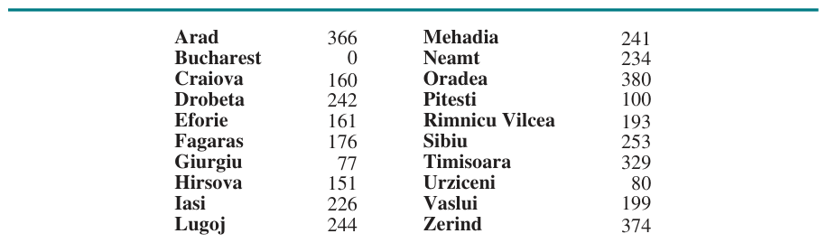
How to do it by hand手工演算步骤
- Label every node with its \(h\)-value, and initialize the frontier with the start node.先在图上标出每个结点的 \(h\) 值，并将起点放入边界。
- Pop the frontier node with the smallest \(h\), breaking any ties alphabetically and stating your tie-breaking rule.从边界中取出 \(h\) 最小的结点；若出现并列，按字母顺序打破平局并在解答中注明。
- If the popped node is a goal, stop; otherwise expand it by generating its neighbors and adding unreached ones to the frontier.若该结点是目标则停止；否则扩展它，生成邻接结点并将尚未到达的状态加入边界。
- Repeat from Step 2, never re-adding a state already recorded in the reached table (graph search).回到第 2 步循环执行；在图搜索中不要重复加入已到达表里的状态。
- Once the goal is selected, trace parent pointers backward to recover the path and sum its edge costs.选中目标后，沿父结点指针回溯还原完整路径，并累加各条边的代价。
One complete trace完整演算示例
We reuse one undirected graph throughout this chapter: edges S–A (2), S–B (3), S–D (6), A–G (9), B–C (2), C–G (3), and D–G (4), with start S and goal G. The heuristic values are \(h(S)=5\), \(h(A)=3\), \(h(B)=4\), \(h(C)=3\), \(h(D)=4\), and \(h(G)=0\).本章统一使用这张无向图：边代价分别为 S–A (2)、S–B (3)、S–D (6)、A–G (9)、B–C (2)、C–G (3)、D–G (4)，起点为 S，目标为 G；各结点的启发式值为 \(h(S)=5\)、\(h(A)=3\)、\(h(B)=4\)、\(h(C)=3\)、\(h(D)=4\)、\(h(G)=0\)。
| Step步骤 | Node expanded扩展结点 | \(g\) | \(h\) | \(f=h\) | Frontier after step (node: \(f\))本步后边界（结点：\(f\)） |
|---|---|---|---|---|---|
| 1 | S | 0 | 5 | 5 | A: 3, B: 4, D: 4 |
| 2 | A | 2 | 3 | 3 | G: 0 (via A), B: 4, D: 4G: 0（经 A），B: 4，D: 4 |
| 3 | G | 11 | 0 | 0 | goal selected, stop选中目标，停止 |
Greedy search returns S–A–G with cost \(2+9=11\), even though S–B–C–G costs only \(3+2+3=8\) (Section 3.2). It rushed into A because \(h(A)=3\) looked smallest and then paid 9 along A–G; although \(g\) is tracked in the table, greedy search never consults it when choosing what to expand.贪婪搜索返回路径 S–A–G，代价为 \(2+9=11\)，而实际最优路径 S–B–C–G 只需 \(3+2+3=8\)（见第 3.2 节）。它因为 \(h(A)=3\) 最小而急于展开 A，结果被迫走上代价高达 9 的 A–G 边；表中的 \(g\) 虽有记录，却从未参与排序决策。

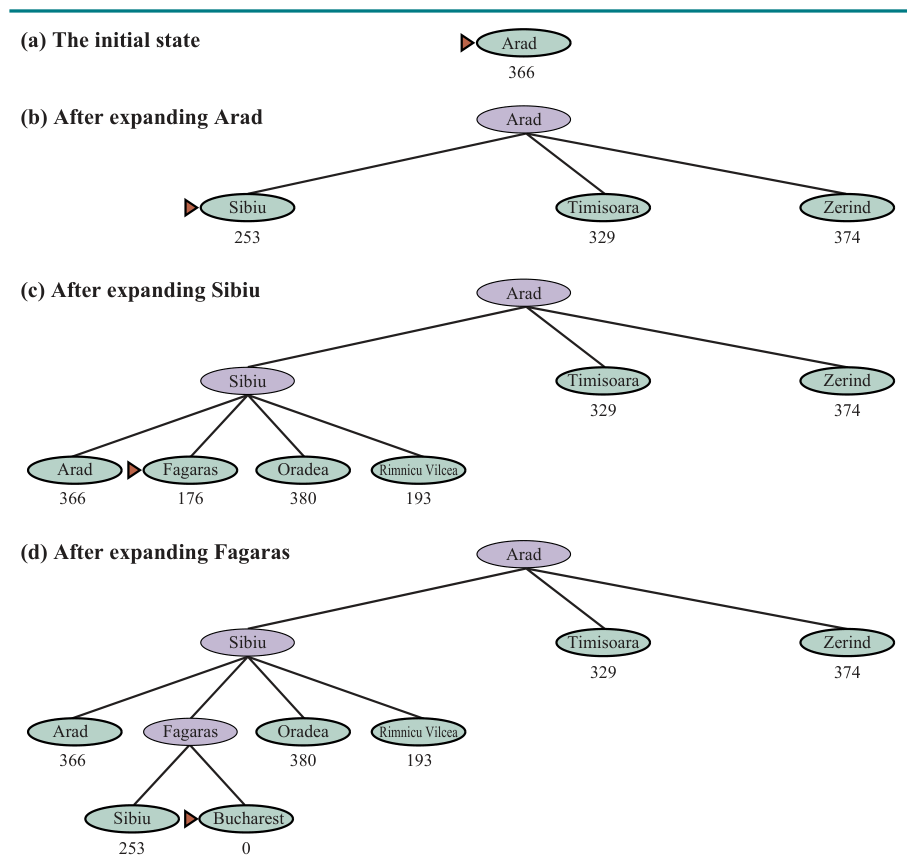
Key properties of greedy best-first search:贪婪最佳优先搜索的核心性质如下：
- Not cost-optimal: Even with an admissible \(h\), it can return a pricey route—for example, Arad–Sibiu–Fagaras–Bucharest costs \(140+99+211=450\), whereas Arad–Sibiu–Rimnicu Vilcea–Pitesti–Bucharest costs \(140+80+97+101=418\).不保证代价最优：即便 \(h\) 可采纳，仍可能找到高价路线；例如从 Arad 出发走 Sibiu–Fagaras 耗费 450，而经 Rimnicu Vilcea–Pitesti 仅需 418。
- Completeness: Graph search is complete in finite state spaces, whereas tree search without a reached table can cycle forever inside dead ends.完备性：在有限状态空间中图搜索是完备的；但若不维护已到达表（树搜索），可能在死胡同环路中无限循环。
- Complexity: Worst-case time and space are \(O(\lvert V\rvert)\), where \(\lvert V\rvert\) is the number of states, though a sharp heuristic often cuts practical runtime dramatically.复杂度：最坏时间与空间均为 \(O(\lvert V\rvert)\)（\(\lvert V\rvert\) 为状态总数），但良好的启发式通常能让实际搜索快得多。
Practice练习
Q1. (Trace) An undirected graph has edge costs S–A 2, A–D 2, S–B 3, B–G 5 and heuristic values \(h(S)=4\), \(h(A)=2\), \(h(D)=1\), \(h(B)=4\), \(h(G)=0\).Q1.（手工演算）某无向图边代价为 S–A 2、A–D 2、S–B 3、B–G 5，启发式值为 \(h(S)=4\)、\(h(A)=2\)、\(h(D)=1\)、\(h(B)=4\)、\(h(G)=0\)。
- Run greedy best-first graph search from S to G: give the expansion order, the solution path, and its total cost.从 S 到 G 运行贪婪最佳优先图搜索，写出扩展顺序、解路径及其总代价。
- What happens if the search does not keep a reached table?若不记录已到达状态，搜索会发生什么？
Answer
(a) Graph-search trace: Expanding S puts A (\(h=2\)) and B (\(h=4\)) onto the frontier. Next we expand A (lowest \(h\)), adding D (\(h=1\)), then expand D—whose only neighbor A is already reached, so nothing is added.(a) 图搜索演算：扩展 S 后将 A（\(h=2\)）与 B（\(h=4\)）加入边界；随后扩展 \(h\) 最小的 A 并生成 D（\(h=1\)）；扩展 D 时其唯一邻居 A 已在已到达表中，故无新结点入队。
Finally we expand B, which generates G (\(h=0\)), and select G as the goal. The expansion order is S, A, D, B, G, yielding path S–B–G with cost \(3+5=8\) after wasting two expansions on the dead end A–D.接着扩展 B 生成 G（\(h=0\)），随后选中 G 结束。扩展顺序为 S, A, D, B, G，得到路径 S–B–G（代价 \(3+5=8\)），在死胡同 A–D 上白白浪费了两次扩展。
(b) Without a reached table: Expanding D regenerates A (\(h=2\)), which beats B (\(h=4\)), so the search alternates between A and D forever and never terminates.(b) 无已到达表：扩展 D 会重新生成 A（\(h=2\)），因其仍低于 B（\(h=4\)），搜索将在 A 与 D 之间无限来回震荡，永远无法到达 B 并终止。
思路：贪婪只比 h，死胡同结点 h 越小越容易被反复选中；已到达表负责拦截重复状态。
Q2. (True/False) "Greedy best-first search with an admissible heuristic always returns an optimal solution." Justify your answer.Q2.（判断正误）“采用可采纳启发式的贪婪最佳优先搜索一定返回最优解。”请说明理由。
Answer
False. Straight-line distance \(h_{\text{SLD}}\) is admissible, yet greedy search from Arad takes the route via Sibiu and Fagaras (cost 450) instead of the optimal route via Rimnicu Vilcea and Pitesti (cost 418). Because greedy search ignores \(g\), admissibility alone cannot ensure optimality—that requires A*.错误。直线距离 \(h_{\text{SLD}}\) 是可采纳的，但从 Arad 出发的贪婪搜索会走 Sibiu–Fagaras 路线（代价 450），错过经 Rimnicu Vilcea–Pitesti 的最优路线（代价 418）。因贪婪搜索完全不计已走代价 \(g\)，仅靠可采纳性无法保证最优，必须结合 \(g+h\) 使用 A*。
A* search: admissibility and consistency ★★★A* 搜索：可采纳性与一致性
Goal. Trace A* by hand with \(g\), \(h\), and \(f\) at every step, verify admissibility and consistency on a given graph, and prove why A* is cost-optimal.目标。 逐步手工演算 A* 并写出每步的 \(g\)、\(h\) 与 \(f\)，在给定图上检验启发式的可采纳性与一致性，并阐述 A* 最优性的证明思路。
Greedy search misses cheaper paths because it ignores the cost \(g(n)\) already paid, while uniform-cost search wanders in irrelevant directions because it ignores \(h(n)\). A* search（A* 搜索）balances both forces by ranking frontier nodes by their estimated total solution cost \(f(n)=g(n)+h(n)\).贪婪搜索因忽略已付出的代价 \(g(n)\) 而容易错失更优路径，一致代价搜索因忽略 \(h(n)\) 而容易向无关方向扩散。A* 搜索将两者结合，用经过结点 \(n\) 的总代价估计 \(f(n)=g(n)+h(n)\) 对边界排序。
Core idea: A* expands the frontier node with the smallest total estimated cost \(f(n)=g(n)+h(n)\), combining the exact cost paid so far with the estimated cost remaining.核心思路：A* 每次扩展“已走代价 + 估计剩余代价”最小的结点，通过 \(f(n)=g(n)+h(n)\) 兼顾历史开销与前瞻指引。
Step 1: tracing A* by hand第 1 步：手工演算 A*
Follow this six-step procedure whenever you trace A* on paper:考场手工演算 A* 时，按以下六步有条不紊地推进：
- Insert the start node into the frontier with \(g=0\) and \(f=h(\text{start})\).将起始结点放入边界，记录 \(g=0\) 与 \(f=h(\text{start})\)。
- Select the frontier node with the lowest \(f\), breaking ties alphabetically (and stating your rule).取出边界中 \(f\) 最小的结点；若平局按字母序打破并注明。
- If the selected node is a goal, stop and return the path back to the start.若选中的是目标结点，立即停止并回溯输出解路径。
- Otherwise expand it: for each neighbor, compute \(g=g(\text{parent})+\text{edge cost}\) and \(f=g+h\).否则扩展该结点，对每个邻居计算 \(g=g(\text{parent})+\text{边代价}\) 与 \(f=g+h\)。
- Add unseen neighbors to the frontier; if a neighbor is already on the frontier with a higher \(g\), replace it with the cheaper path; if it was already expanded with \(g\) no larger, ignore it.新邻居直接入界；若已在边界上且新路径 \(g\) 更小，则替换为更优路径；若已被扩展且旧 \(g\) 不高于新 \(g\)，则忽略。
- Repeat from Step 2.返回第 2 步继续循环。
Applying this procedure to the running graph from Section 3.1 gives the trace below:将该流程应用于第 3.1 节的同一张图，完整演算过程如下表所示：
| Step步骤 | Node expanded扩展结点 | \(g\) | \(h\) | \(f=g+h\) | Frontier after step (node: \(f\))本步后边界（结点：\(f\)） |
|---|---|---|---|---|---|
| 1 | S | 0 | 5 | 5 | A: 5, B: 7, D: 10 |
| 2 | A | 2 | 3 | 5 | B: 7, D: 10, G: 11 (via A)B: 7, D: 10, G: 11（经 A） |
| 3 | B | 3 | 4 | 7 | C: 8, D: 10, G: 11 |
| 4 | C | 5 | 3 | 8 | G: 8 (via C, replaces 11), D: 10G: 8（经 C，替换原 11），D: 10 |
| 5 | G | 8 | 0 | 8 | goal selected, stop选中目标，停止 |
A* returns S–B–C–G with optimal cost \(3+2+3=8\). Although G entered the frontier at Step 2 with \(f=11\), A* waited to select it because B (\(f=7\)) and C (\(f=8\)) looked cheaper—and in Step 4, C found G with \(g=5+3=8\), replacing 11. Meanwhile, D (\(f=10>8\)) was never expanded.A* 返回最优路径 S–B–C–G，总代价为 \(3+2+3=8\)。尽管 G 在第 2 步就以 \(f=11\) 进入了边界，但因为 B（\(f=7\)）与 C（\(f=8\)）总估值更低，A* 并未急于结束；到第 4 步 C 以 \(g=5+3=8\) 更新了 G 并替换掉 11，而 \(f(D)=10>8\) 始终未被扩展。
The exact same behavior appears on the Romania map: Bucharest first enters the frontier via Fagaras at \(f=450\), but Pitesti (\(f=417\)) is expanded first and rediscovers Bucharest at the optimal cost \(f=418\).罗马尼亚地图上也上演了完全相同的过程：Bucharest 先经 Fagaras 以 \(f=450\) 入界，但由于 Pitesti 的 \(f=417\) 更小而被先行扩展，从而以最优代价 \(f=418\) 更新了 Bucharest。

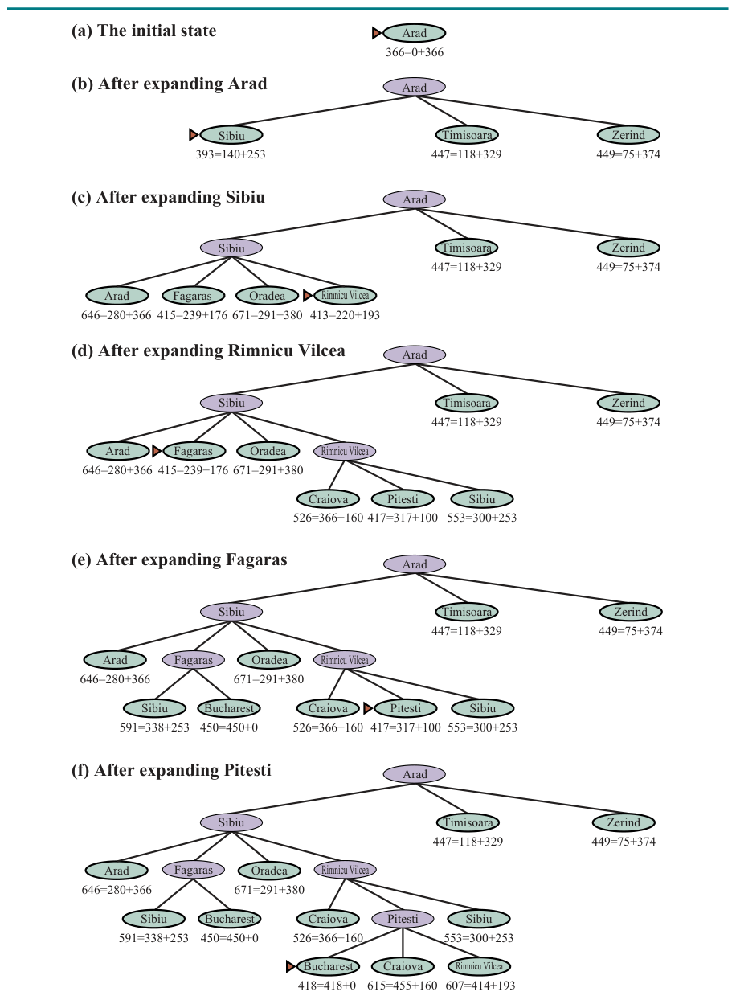
Step 2: admissible and consistent heuristics第 2 步：可采纳性与一致性
When does A* guarantee an optimal path? If a heuristic exaggerates the remaining distance on the true optimal route, A* may shy away from it and settle for a pricier shortcut—so we require the heuristic to be either optimistic (admissible) or smooth along every edge (consistent).A* 并非无条件最优：如果启发式把真正最优路径的剩余路程估计得过高，A* 就可能望而却步、转而选一条看似便宜的次优路径。为此，我们需要对启发式施加乐观性（可采纳）或单调性（一致）约束。
Core idea: An admissible heuristic is always optimistic—it never overestimates the true remaining cost to a goal.核心思路：可采纳的启发式永远保持“乐观”，在任何结点上都不会高估到达目标的真实剩余代价。
Formally, a heuristic is admissible（可采纳的）when it satisfies the lower-bound condition at every node:严格地说，若启发式在所有结点上都满足下界条件，就称其为可采纳的：
Core idea: A consistent heuristic obeys the triangle inequality on every edge, meaning \(h\) never drops faster than the step cost paid.核心思路：一致的启发式在每条边上都满足三角不等式——每走一步，启发式估计值的下降量绝不会超过这一步实际付出的代价。
A heuristic is consistent（一致的）, also called monotonic, if the triangle inequality holds across every action from \(n\) to \(n'\):如果每条边上的转移都满足如下三角不等式，则称该启发式为一致的（亦称单调的）：

How to verify both properties by hand:手工检验可采纳性与一致性的通用方法：
- Admissibility: Work backward from the goal to find the shortest-path cost \(h^*(n)\) at every node, then check \(0\le h(n)\le h^*(n)\) everywhere.检验可采纳性：从目标倒推每个结点的最短路径真实代价 \(h^*(n)\)，逐一确认 \(0\le h(n)\le h^*(n)\)。
- Consistency: Check \(h(n)\le c(n,a,n')+h(n')\) along every directed edge; for undirected edges, verify both directions.检验一致性：对每条边验证 \(h(n)\le c(n,a,n')+h(n')\)；若是无向边，正反两个方向都必须检验。
- Counterexample shortcut: A single violating node disproves admissibility, and a single violating edge disproves consistency.反例判据：只要找到一个反例结点即推翻可采纳性，找到一条反例边即推翻一致性。
Checking the running graph from Section 3.1 confirms both properties hold at every node and in every edge direction:对第 3.1 节示例图逐一验证，可见所有结点和边方向均满足要求：
| Node结点 | \(h\) | \(h^*\) | \(h\le h^*\) |
|---|---|---|---|
| S | 5 | 8 (S–B–C–G) | yes是 |
| A | 3 | 9 (A–G) | yes是 |
| B | 4 | 5 (B–C–G) | yes是 |
| C | 3 | 3 (C–G) | yes是 |
| D | 4 | 4 (D–G) | yes是 |
| Edge边 | Forward check \(h(n)\le c+h(n')\)正向检验 \(h(n)\le c+h(n')\) | Reverse check反向检验 |
|---|---|---|
| S–A (2) | \(5\le2+3=5\), holds\(5\le2+3=5\)，成立 | \(3\le2+5=7\), holds\(3\le2+5=7\)，成立 |
| S–B (3) | \(5\le3+4=7\), holds\(5\le3+4=7\)，成立 | \(4\le3+5=8\), holds\(4\le3+5=8\)，成立 |
| S–D (6) | \(5\le6+4=10\), holds\(5\le6+4=10\)，成立 | \(4\le6+5=11\), holds\(4\le6+5=11\)，成立 |
| A–G (9) | \(3\le9+0=9\), holds\(3\le9+0=9\)，成立 | \(0\le9+3\), holds\(0\le9+3\)，成立 |
| B–C (2) | \(4\le2+3=5\), holds\(4\le2+3=5\)，成立 | \(3\le2+4=6\), holds\(3\le2+4=6\)，成立 |
| C–G (3) | \(3\le3+0=3\), holds\(3\le3+0=3\)，成立 | \(0\le3+3\), holds\(0\le3+3\)，成立 |
| D–G (4) | \(4\le4+0=4\), holds\(4\le4+0=4\)，成立 | \(0\le4+4\), holds\(0\le4+4\)，成立 |
Thus \(h\) is both admissible and consistent on the running graph.因此，示例图上的启发式 \(h\) 既可采纳又一致。
To see why consistency is strictly stronger, take a directed graph with edges S→A (1), S→B (4), A→B (1), B→G (4) and \(h(S)=5,\,h(A)=5,\,h(B)=1,\,h(G)=0\). Because \(h^*(S)=6,\,h^*(A)=5,\,h^*(B)=4\), \(h\le h^*\) holds everywhere (admissible), yet on A→B we get \(h(A)=5>c(A,B)+h(B)=1+1=2\), failing consistency.再看一个“可采纳但不一致”的反例：有向图含边 S→A (1)、S→B (4)、A→B (1)、B→G (4)，且 \(h(S)=5,\,h(A)=5,\,h(B)=1,\,h(G)=0\)。真实代价为 \(h^*(S)=6,\,h^*(A)=5,\,h^*(B)=4\)，处处满足 \(h\le h^*\)（可采纳）；但在边 A→B 上，\(h(A)=5>1+1=2\)，破坏了一致性。
Step 3: why A* is optimal第 3 步：A* 为何最优
Theorem. If \(h\) is admissible, A* (with tree search, or graph search that reopens states on cheaper paths) is cost-optimal. Proof by contradiction: suppose A* returns a suboptimal goal with cost \(C>C^*\).定理。 若 \(h\) 可采纳，则 A*（树搜索，或在找到更便宜路径时重开结点的图搜索）具有代价最优性。用反证法证明：假设 A* 返回了一个代价为 \(C>C^*\) 的次优目标。
- There must still be some unexpanded node \(n\) on an optimal path sitting in the frontier; otherwise the optimal goal would already have been selected.此时边界中必仍滞留着某条最优路径上尚未扩展的结点 \(n\)，否则最优解早已被取出。
- Because A* selected the suboptimal goal (\(f=C\)) instead of \(n\), we must have \(f(n)\ge C>C^*\).A* 宁可挑选 \(f=C\) 的次优目标也不选 \(n\)，说明 \(f(n)\ge C>C^*\)。
- Yet since \(n\) lies on an optimal path (\(g(n)=g^*(n)\)) and \(h\) is admissible, \(f(n)=g^*(n)+h(n)\le g^*(n)+h^*(n)=C^*\).但 \(n\) 位于最优路径上（\(g(n)=g^*(n)\)）且 \(h\) 可采纳，因此 \(f(n)=g^*(n)+h(n)\le g^*(n)+h^*(n)=C^*\)。
Steps 2 and 3 directly contradict each other, so A* can never select a suboptimal goal before an optimal one.第 2 步与第 3 步直接矛盾，因此 A* 不可能在找到最优目标之前先返回次优解。
What consistency adds: Stepping from \(n\) to \(n'\) changes \(f\) from \(g(n)+h(n)\) to \(g(n)+c(n,a,n')+h(n')\), so \(f\) is nondecreasing along every path if and only if \(h\) is consistent. Consequently, the first time A* expands a state under a consistent \(h\), it has already found the optimal path to it and never needs to reopen it.一致性的额外收益：从 \(n\) 走到 \(n'\) 时，\(f\) 由 \(g(n)+h(n)\) 变为 \(g(n)+c(n,a,n')+h(n')\)，故当且仅当 \(h\) 一致时，\(f\) 沿任何路径单调不减。这意味着：一旦某个状态首次被选中扩展，到达它的路径必已最优，无需再重开旧结点。
By contrast, on the Practice Q2 graph where \(h\) is admissible but inconsistent, graph-search A* that reopens B when reached via \(g=2<4\) finds the optimal S–A–B–G (cost 6), whereas never reopening expanded states locks in S–B–G (cost 8).反之，在练习 Q2 的“可采纳但不一致”图上，若图搜索在以 \(g=2<4\) 再次到达 B 时重新打开 B，就能找到最优解 S–A–B–G（代价 6）；若死守闭表不重开，就会错误输出代价为 8 的 S–B–G。
Practice练习
Q1. (Proof) Prove that every consistent heuristic is admissible.Q1.（证明）证明每个一致的启发式必定是可采纳的。
Answer
Suppose \(h\) is consistent. We prove \(h(n)\le h^*(n)\) by induction on the number \(k\) of steps along an optimal path from \(n\) to a goal. Base case \(k=0\): \(n\) is a goal, so \(h(n)=0=h^*(n)\).设 \(h\) 一致，我们对从 \(n\) 到目标的最优路径步数 \(k\) 作数学归纳，证明 \(h(n)\le h^*(n)\)。当 \(k=0\) 时，\(n\) 本身就是目标，故 \(h(n)=0=h^*(n)\)。
Inductive step \(k>0\): let the optimal path take action \(a\) from \(n\) to \(n'\), which lies \(k-1\) steps from the goal and satisfies \(h(n')\le h^*(n')\) by hypothesis. Applying consistency yields:当 \(k>0\) 时，设最优路径从 \(n\) 经动作 \(a\) 到达距目标 \(k-1\) 步的 \(n'\)，由归纳假设有 \(h(n')\le h^*(n')\)。代入一致性不等式即得：
\[h(n)\le c(n,a,n')+h(n')\le c(n,a,n')+h^*(n')=h^*(n)\]
思路：按到目标的最优步数归纳，将每条边上的一致性不等式首尾相接。
Q2. (Trace) A directed graph has edges S→A 1, S→B 4, A→B 1, B→G 4 and \(h(S)=5\), \(h(A)=5\), \(h(B)=1\), \(h(G)=0\).Q2.（手工演算）某有向图含边 S→A (1)、S→B (4)、A→B (1)、B→G (4)，启发式为 \(h(S)=5\)、\(h(A)=5\)、\(h(B)=1\)、\(h(G)=0\)。
- Show that \(h\) is admissible but not consistent.证明 \(h\) 可采纳但不一致。
- Trace A* graph search when states are reopened whenever a cheaper path is found.演算允许在发现更便宜路径时重新打开结点的 A* 图搜索。
- What does A* return if expanded states are never reopened?若永不重开已扩展结点，A* 会返回什么？
Answer
(a) Admissible, not consistent: True costs are \(h^*(S)=6\), \(h^*(A)=5\), and \(h^*(B)=4\), so \(h\le h^*\) everywhere (admissible). Along edge A→B, \(h(A)=5>c(A,B)+h(B)=1+1=2\), violating consistency.(a) 可采纳但不一致：真实代价为 \(h^*(S)=6\)、\(h^*(A)=5\)、\(h^*(B)=4\)，处处有 \(h\le h^*\)（可采纳）；但在边 A→B 上 \(h(A)=5>1+1=2\)，不满足一致性。
(b) With reopening: Select S (\(g=0,f=5\)) to generate A (\(g=1,f=6\)) and B (\(g=4,f=5\)). Select B (\(f=5\)) to generate G (\(g=8,f=8\)). Select A (\(f=6\)), which rediscovers B at \(g=2<4\), reopening B with \(f=2+1=3\). Re-expand B (\(f=3\)) to update G (\(g=6,f=6\)), then select G: optimal path S–A–B–G, cost 6.(b) 允许重开：选 S（0,5）生成 A（1,6）与 B（4,5）；先选 B（5）生成 G（8,8）；再选 A（6）发现到 B 的更优路径 \(g=2<4\)，重开 B（\(f=3\)）；再次扩展 B 将 G 更新为（6,6）并选中 G，得最优路径 S–A–B–G，代价 6。
(c) Without reopening: Once A is expanded, B is already closed and the \(g=2\) path is ignored. Only G (\(f=8\)) remains, so A* returns the suboptimal path S–B–G with cost 8.(c) 禁止重开：扩展 A 时因 B 已关闭而丢弃更优路径，边界只剩 \(f=8\) 的 G，最终返回次优路径 S–B–G（代价 8）。
易错：只有一致的启发式才能保证“已扩展过的结点不再重开”是安全的。
Q3. (True/False) Justify each statement: (a) A* with \(h(n)=0\) everywhere reduces to uniform-cost search. (b) With the exact heuristic \(h=h^*\), A* expands only nodes lying on optimal paths.Q3.（判断正误）判断以下陈述并说明理由：(a) 令所有结点的 \(h(n)=0\) 时，A* 退化为一致代价搜索。(b) 若启发式完美（\(h=h^*\)），A* 只会扩展位于最优路径上的结点。
Answer
(a) True: Setting \(h=0\) gives \(f(n)=g(n)\), so the frontier is ordered purely by path cost, which is uniform-cost search.(a) 正确：此时 \(f(n)=g(n)\)，边界完全按已走路径代价排序，正是标准的一致代价搜索。
(b) True: Every node satisfies \(f(n)=g(n)+h^*(n)\ge C^*\), with equality only when \(n\) sits on an optimal path via an optimal prefix. Because A* never expands nodes with \(f>C^*\), it expands only optimal-path nodes.(b) 正确：所有结点均满足 \(f(n)=g(n)+h^*(n)\ge C^*\)，仅当 \(n\) 位于最优路径且按最优前缀到达时等号成立；A* 从不扩展 \(f>C^*\) 的结点，故仅扩展最优路径上的结点。
Behavior of A*, inadmissible heuristics and weighted A* ★★A* 的行为、不可采纳的启发式与加权 A*
Goal. Classify which nodes A* expands relative to \(C^*\), explain what optimal efficiency means, and apply weighted A* along with its cost guarantee.目标。 根据结点 \(f\) 值与最优代价 \(C^*\) 的关系判断结点是否被扩展，理解 A* 的最优效率，并掌握加权 A* 及其代价上界。
Geometrically, A* grows outward in contours of increasing \(f=g+h\): whereas uniform-cost search expands circular contours around the start, an accurate heuristic stretches A*'s contours tightly toward the goal and skips huge swaths of the state space.从几何直觉来看，A* 按 \(f=g+h\) 递增的等高线逐步向外推进：一致代价搜索像以起点为圆心画同心圆一样四周铺开，而好的启发式会把 A* 的等高线拉长并指向目标，从而跳过大量无关状态。
Core idea: A* expands every node with \(f(n)<C^*\), may expand some nodes with \(f(n)=C^*\), and never expands any node with \(f(n)>C^*\).核心思路：A* 必然扩展所有 \(f(n)<C^*\) 的结点，可能扩展部分 \(f(n)=C^*\) 的结点，而绝不会扩展任何 \(f(n)>C^*\) 的结点。
Let \(C^*\) be the optimal solution cost. Collecting all states whose \(f\)-value does not exceed a threshold traces out contours（等高线）; whenever \(h\) is consistent, \(f\) is nondecreasing along paths, so successive contours expand outward without ever crossing.令 \(C^*\) 为最优解代价，将所有 \(f\) 值不超过某阈值的状态连起来便形成等高线。当 \(h\) 一致时，沿任意路径的 \(f\) 单调不减，各层等高线逐圈向外扩张而绝不相交。

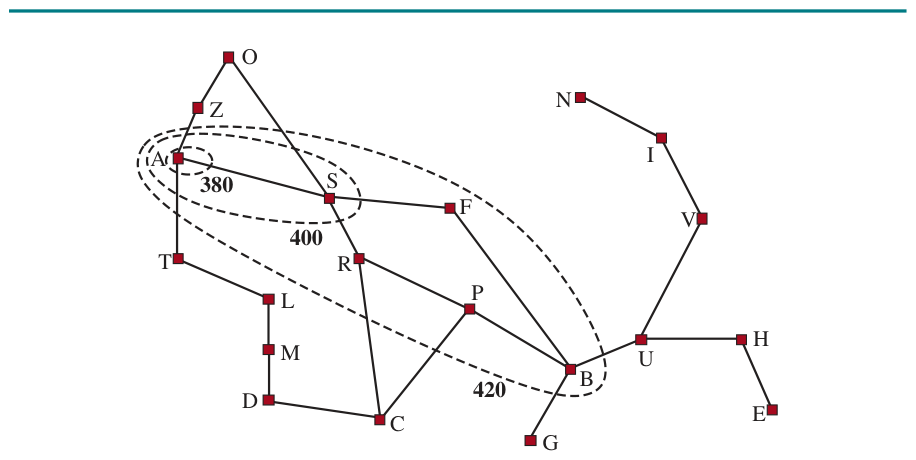
Every node reachable along a path whose nodes all have \(f<C^*\) is surely expanded by A*, while nodes with \(f>C^*\) are completely skipped—a saving known as pruning（剪枝）. With a consistent heuristic, A* is optimally efficient（最优效率）：any optimal algorithm extending paths from the start using the same heuristic must expand at least all surely expanded nodes.沿途所有结点都满足 \(f<C^*\) 的结点必然被 A* 扩展，而 \(f>C^*\) 的结点则被直接跳过（即剪枝）。在一致启发式下，A* 具有最优效率：任何基于同一启发式从起点扩展路径并保证最优的算法，都至少必须扩展这些必扩结点。
Despite optimal efficiency, A* is still expensive on large problems: the number of expanded nodes often grows exponentially with solution depth unless heuristic error is tiny, and because A* retains every generated node, memory typically runs out well before time does.尽管具有最优效率，A* 在大规模问题上依然昂贵：只要启发式存在一定误差，扩展结点数仍常随解的深度指数级增长；且因 A* 须保存所有生成的结点，内存往往远先于时间耗尽。
When speed matters more than perfection, an inadmissible heuristic can be used to trade optimality for fewer expansions—an approach called satisficing（满意解）search. A systematic way to do this is weighted A* search（加权 A* 搜索）, which amplifies the pull of \(h(n)\).当追求速度而能容忍轻微次优时，可故意使用不可采纳的启发式来换取更少的扩展，称为满意解搜索。最系统的做法是加权 A* 搜索，通过放大 \(h(n)\) 的权重把搜索更强地拉向目标。
Weighted A* explores far fewer nodes by focusing contours narrowly toward the goal, though an optimal path straying outside that narrow beam can be missed. For instance, if weighted A* with \(W=1.5\) returns a solution of cost 52, we immediately know \(C^*\le52\le1.5\,C^*\), so \(34.7\le C^*\le52\).加权 A* 将等高线窄化并聚焦于目标方向，从而大幅减少扩展结点，但也可能错过绕出窄带的真正最优路。例如，当 \(W=1.5\) 返回代价 52 时，即便不知真值，也可立即推出 \(34.7\le C^*\le52\)。
Practice练习
Q1. (Calculation) On the running graph from Section 3.2, run weighted A* with \(f=g+W\,h\) for \(W=1.5\) and \(W=3\). Give the path and cost, verify the bound \(W\,C^*\), and find which values of \(W\ge1\) keep the output optimal.Q1.（计算）在第 3.2 节的示例图上，令 \(W=1.5\) 与 \(W=3\) 运行加权 A*（\(f=g+W\,h\)），写出所得路径与代价，检验上界 \(W\,C^*\)，并求保持结果最优的 \(W\ge1\) 取值范围。
Answer
After expanding S, A (\(f=2+3W\)) always beats B (\(f=3+4W\)) and generates G via A with \(f=11\) (cost 11). From there, whether B or G wins depends on \(W\):扩展 S 后，A（\(f=2+3W\)）始终小于 B（\(f=3+4W\)）而先被扩展，并生成代价为 11 的 G（\(f=11\)）。此后取决于 B 与 G 谁先出队：
- \(W=1.5\): \(f(A)=6.5,\,f(B)=9,\,f(D)=12\). After A adds G (\(f=11\)), B (\(9<11\)) expands to C (\(f=5+4.5=9.5\)), and C updates G to \(f=8\). Result: S–B–C–G, optimal cost \(8=C^*\).\(W=1.5\)：\(f(A)=6.5,\,f(B)=9,\,f(D)=12\)。A 生成 G（11）后，B（\(9<11\)）先扩展出 C（9.5），C 再将 G 更新为 8 并选出。结果：S–B–C–G，最优代价 8。
- \(W=3\): \(f(A)=11,\,f(B)=15,\,f(D)=18\). Expanding A adds G (\(f=11<15\)), which is selected immediately. Result: S–A–G, cost \(11\le W\,C^*=24\) (within the bound, but suboptimal).\(W=3\)：\(f(A)=11,\,f(B)=15,\,f(D)=18\)。扩展 A 后生成的 G（11）小于 B（15）而立即被选中。结果：S–A–G，代价 \(11\le 3\times 8=24\)（未超上界但次优）。
- Optimal range: B precedes G whenever \(3+4W<11\) (i.e., \(W<2\)), and then C (\(5+3W<11\)) also beats G. Thus \(1\le W<2\) guarantees optimality, with a tie at \(W=2\).最优范围：B 先于 G 出队要求 \(3+4W<11\) 即 \(W<2\)，此时 C（\(5+3W<11\)）也先于 G；故 \(1\le W<2\) 均得最优解，\(W=2\) 发生平局。
Q2. (Reasoning) Weighted A* with \(W=1.5\) and an admissible heuristic returns a solution of cost 52. What can you conclude about \(C^*\)?Q2.（推理）采用可采纳启发式的加权 A* 在 \(W=1.5\) 时返回了代价为 52 的解。关于最优代价 \(C^*\)，你能得出什么范围？
Answer
Because the returned cost satisfies \(C^*\le52\le1.5\,C^*\), dividing by 1.5 gives \(34.7\le C^*\le52\). Bounded suboptimal search thus certifies how close the solution is to optimal without ever computing \(C^*\).由 \(C^*\le52\le1.5\,C^*\) 解得 \(34.7\le C^*\le52\)。由此可见，有界次优搜索无需算出 \(C^*\) 就能给出解与最优值差距的严格保证。
Memory-bounded and bidirectional heuristic search ★★有内存限制的启发式搜索与双向启发式搜索
Goal. State what IDA*, RBFS, SMA*, and beam search store along with each algorithm's key weakness, and trace IDA* by hand on a small graph.目标。 说明 IDA*、RBFS、SMA* 与束搜索各自保存什么信息及主要缺点，并在小图上手工演算 IDA*。
Standard A* keeps the entire frontier and reached table in memory, so RAM fills up long before CPU time becomes the bottleneck. To fit inside limited memory, heuristic algorithms either discard unpromising frontier nodes (beam search), recompute subtrees in depth-first style (IDA*, RBFS), or evict the worst leaf when RAM is full (SMA*).标准 A* 必须把整张边界与已到达表留在内存中，往往内存先于算力耗尽。为突破内存瓶颈，常见对策分三类：直接裁掉多余边界结点（束搜索）、借深度优先用时间换线性空间（IDA*、RBFS），或在内存写满时淘汰最差叶结点（SMA*）。
Core idea: Memory-bounded heuristic searches keep RAM small either by trading extra node re-expansions for linear space or by pruning/dropping nodes.核心思路：受限内存的启发式搜索要么靠重复展开子树换取线性空间（如 IDA*、RBFS），要么通过主动裁枝或淘汰差结点将内存压在限额之内（如束搜索、SMA*）。
| Algorithm算法 | Idea核心机制 | Space空间开销 | Properties完备与最优性 | Weakness主要弱点 |
|---|---|---|---|---|
| Beam search（束搜索） | Keep only the \(k\) frontier nodes with lowest \(f\) (or within \(\delta\) of the best)每步只保留 \(f\) 最好的 \(k\) 个边界结点（或与最优差值在 \(\delta\) 内的结点） | \(O(k)\) | Incomplete, not optimal不完备，不最优 | May prune away the only path to the goal可能过早丢弃通向目标的唯一路径 |
| IDA*（迭代加深 A*） | Depth-first search bounded by an \(f\)-cutoff; next cutoff is the smallest \(f\) exceeding the current one以 \(f\) 值为截断阈值的深度优先搜索；每轮将阈值更新为超界结点中的最小 \(f\) | Linear线性 | Complete; optimal if \(h\) is admissible完备；\(h\) 可采纳时最优 | Revisits the shallow prefix in every iteration每轮迭代都要重复访问浅层结点 |
| RBFS（递归最佳优先搜索） | Depth-first tracking best alternative \(f_{\text{limit}}\) among ancestors; backs up forgotten subtree's best \(f\)类深度优先递归；用 \(f_{\text{limit}}\) 记录祖先最佳备选值，并把被遗忘子树的最优 \(f\) 回传给父结点 | Linear线性 | Optimal if \(h\) is admissible\(h\) 可采纳时最优 | Switches branches frequently, regenerates nodes, and wastes spare RAM易在分支间反复横跳、重算子树，且无法利用多余内存 |
| SMA*（简化内存受限 A*） | Runs A* until memory fills, then drops the worst leaf (highest \(f\)) and backs its \(f\) up to its parent像 A* 一样运行直至占满内存，随后删除最差叶结点（\(f\) 最高者）并将该 \(f\) 回传父结点 | All available用尽全部可用内存 | Complete if a solution fits; optimal if an optimal path fits内存能容纳任一解则完备；能容纳最优解则最优 | Thrashes on hard problems难题上容易在放不下的路径间反复抖动 |
How to trace IDA* by hand:手工演算 IDA* 的三步法：
- Set the initial cutoff to \(f(\text{start})=h(\text{start})\).将初始截断值设为 \(f(\text{start})=h(\text{start})\)。
- Run depth-first search, pruning any node with \(f=g+h\) above the cutoff while recording the smallest exceeded \(f\)-value.执行深度优先搜索，剪掉 \(f=g+h\) 超过截断值的结点，并记下这些被剪结点中最小的 \(f\) 值。
- Stop as soon as a goal with \(f\le\text{cutoff}\) is found; otherwise set the next cutoff to that smallest exceeded \(f\) and repeat from Step 2.一旦找到 \(f\) 不超截断值的目标即停止；否则用记下的最小超界 \(f\) 更新截断值并重复第 2 步。
On the Section 3.1 graph, IDA* steps through cutoffs 5, 7, and 8 before finding S–B–C–G at cost 8 (Practice Q1). Because it keeps only the active path and one cutoff number, its space is linear, and with integer step costs it performs at most about \(C^*\) iterations.在第 3.1 节的图上，IDA* 的截断值依次推进为 5、7、8，最终找到代价为 8 的 S–B–C–G（见练习 Q1）。由于只保存当前路径和单个截断值，空间为线性；若边权为整数，迭代轮数至多约为 \(C^*\) 轮。
Meanwhile, RBFS tracks \(f_{\text{limit}}\) (the best alternative \(f\) at any ancestor) and writes the best leaf value of any abandoned subtree back onto its parent so it knows whether revisiting later is worthwhile. SMA* uses all free RAM, expanding the newest lowest-\(f\) leaf and dropping the oldest highest-\(f\) leaf when full, though on huge problems it thrashes（抖动）by repeatedly swapping competing paths.RBFS 则沿途维护祖先最佳备选上界 \(f_{\text{limit}}\)，并在撤出子树时把其中最好叶子的 \(f\) 备份到父结点上，以便日后决定是否回头。SMA* 充分利用全部空闲内存，内存满时淘汰 \(f\) 最高的老叶结点，但面对内存装不下全貌的难题时会发生抖动，在多条路径间来回倒腾。
Finally, bidirectional best-first search maintains both a forward frontier from start and a backward frontier from goal, restoring guaranteed optimality when both sides rank nodes with the combined evaluation function \(f_2(n)\):最后，双向最佳优先搜索同时从起点和终点向中间扩展，只需对两个边界上的结点统一改用如下评价函数 \(f_2(n)\)，即可恢复最优性保证：
Practice练习
Q1. (Trace) Run IDA* on the Section 3.2 graph, visiting children alphabetically. Report each iteration's cutoff, expanded nodes, and final result.Q1.（手工演算）在第 3.2 节的示例图上按字母序访问子结点运行 IDA*，列出每轮的截断值、扩展结点及最终结果。
Answer
- Iteration 1 (cutoff \(f(S)=5\)): Expand S and A (\(f=5\)). Pruned nodes are B (7), D (10), and G via A (11); next cutoff = \(\min(7,10,11)=7\).第 1 轮（截断值 \(f(S)=5\)）：扩展 S、A（\(f=5\)）；超界结点为 B(7)、D(10) 与经 A 的 G(11)，下一轮截断值取最小超界值 7。
- Iteration 2 (cutoff 7): Expand S, A, and B. Pruned nodes are C (8), D (10), and G via A (11); next cutoff = 8.第 2 轮（截断值 7）：扩展 S、A、B；超界结点为 C(8)、D(10) 与经 A 的 G(11)，下一轮截断值取 8。
- Iteration 3 (cutoff 8): Expand S, A, B, and C; G via C has \(f=8\le8\), selecting the goal.第 3 轮（截断值 8）：扩展 S、A、B、C，经 C 到达的 G 满足 \(f=8\le8\)，选中目标。
Final path: S–B–C–G with cost 8. IDA* performed \(2+3+4=9\) expansions across 3 iterations (versus 4 in A*), using only linear memory.最终路径为 S–B–C–G（代价 8）。IDA* 共经历 3 轮、扩展 \(2+3+4=9\) 个结点（A* 只需 4 个），但内存始终呈线性。
Q2. (Identify) Match each description to the right algorithm:Q2.（辨析）为以下各条特征匹配对应的算法名称：
- Stores only a single cutoff threshold between iterations.在各轮迭代之间只保存单个截断阈值。
- Backs up the best \(f\)-value of a forgotten subtree using linear space.在线性空间内向父结点回传被遗忘子树的最优 \(f\) 值。
- Fills all available memory and drops the highest-\(f\) leaf.占满全部可用内存后淘汰 \(f\) 最高的叶结点。
- Keeps only the \(k\) lowest-\(f\) frontier nodes and is incomplete.每步只保留 \(f\) 最好的 \(k\) 个边界结点，且不完备。
Answer
(a) IDA*; (b) RBFS; (c) SMA*; (d) Beam search.(a) IDA*；(b) RBFS；(c) SMA*；(d) 束搜索。
Heuristic accuracy: effective branching factor and dominance ★★★启发式的准确性：有效分支因子与占优
Goal. Compute the two standard 8-puzzle heuristics, calculate the effective branching factor from a generated node count, and decide which heuristic is stronger using dominance.目标。 计算八数码的两个经典启发式，根据生成结点数求解有效分支因子，并依据占优关系判断启发式的优劣。
Any admissible heuristic preserves A*'s optimality—even the trivial \(h(n)=0\)—but weak estimates fail to prune useless branches. To measure how sharply a heuristic guides the search, we compute its effective branching factor \(b^*\) and compare admissible candidates pointwise through dominance.哪怕是平庸的 \(h(n)=0\) 也能保证 A* 最优，却毫无剪枝能力。为了定量衡量启发式的剪枝效率，我们既可以用有效分支因子 \(b^*\) 测算树的“茂密程度”，也可以通过占优关系直接比较两个可采纳启发式的高下。
Two classic admissible heuristics for the 8-puzzle are:八数码问题有两个经典的可采纳启发式：
- Misplaced tiles (\(h_1\)): Count how many numbered tiles are not in their goal squares (excluding the blank). Because every misplaced tile requires at least one move, \(h_1\le h^*\).错位方块数（\(h_1\)）：统计不在目标位置上的编号方块个数（不计空格）。每个错位方块至少要移动 1 步，故可采纳。
- Manhattan distance (\(h_2\)): Sum each tile's row-and-column distance from its goal square. Since one move shifts a single tile by one square, \(h_2\le h^*\).曼哈顿距离和（\(h_2\)）：累加所有方块到各自目标格子的水平与垂直步数之和。因单步仅移动一个方块一格，故同样可采纳。

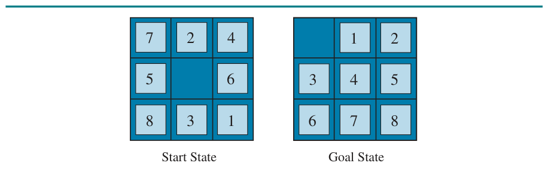
Step 1: effective branching factor第 1 步：有效分支因子
Core idea: The effective branching factor \(b^*\) is the branching factor of a uniform tree of depth \(d\) that holds all \(N+1\) generated nodes (root included).核心思路：有效分支因子 \(b^*\) 是与本次搜索同深度 \(d\)、且结点总数同为 \(N+1\)（含根结点）的一棵均匀搜索树的分支因子。
If A* generates \(N\) nodes to find a depth-\(d\) solution, \(b^*\) is defined by matching the geometric sum of a uniform tree:若 A* 为找到深度为 \(d\) 的解共生成了 \(N\) 个结点，则 \(b^*\) 由如下均匀树结点数方程唯一确定：
How to solve for \(b^*\) by hand:手工求解 \(b^*\) 的三步法：
- Compute \(N+1\) and write the polynomial \(1+b+b^2+\dots+b^d\).先算出 \(N+1\)，并写出求和式 \(1+b+b^2+\dots+b^d\)。
- Plug in a trial value of \(b\) and evaluate the sum.代入一个试探值 \(b\) 计算该多项式的和。
- Raise \(b\) if the sum falls below \(N+1\), or lower \(b\) if it exceeds \(N+1\), stopping at the desired precision.和小于 \(N+1\) 则调大 \(b\)，大于则调小 \(b\)，逼近至题目要求的小数位即可。
For example, if \(d=5\) and \(N=52\) (\(N+1=53\)), trying \(b=1.90\) gives 51.16 (too low) while \(b=1.92\) gives 53.37 (slightly high), yielding \(b^*\approx1.92\).例如当 \(d=5\)、\(N=52\)（即 \(N+1=53\)）时，代入 \(b=1.90\) 得 51.16（偏小），代入 \(b=1.92\) 得 53.37（略大），故 \(b^*\approx1.92\)。

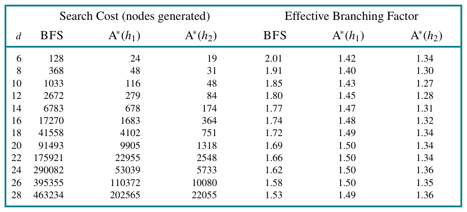
At depth \(d=24\), breadth-first search generates 290,082 nodes (\(b^*=1.62\)), A* with \(h_1\) drops to 53,039 (\(b^*=1.50\)), and A* with \(h_2\) drops further to 5,733 (\(b^*=1.36\)).在解深 \(d=24\) 时，BFS 平均生成 290,082 个结点（\(b^*=1.62\)），用 \(h_1\) 的 A* 降至 53,039 个（\(b^*=1.50\)），而用 \(h_2\) 的 A* 仅生成 5,733 个（\(b^*=1.36\)）。
Step 2: dominance第 2 步：占优
Core idea: Heuristic \(h_2\) dominates \(h_1\) when \(h_2(n)\ge h_1(n)\) at every node; among admissible heuristics, larger values prune more aggressively.核心思路：若在所有结点上均有 \(h_2(n)\ge h_1(n)\)，则称 \(h_2\) 占优于 \(h_1\)；只要不越过可采纳上界，启发值越大，剪枝越彻底。
If \(h_2(n)\ge h_1(n)\) holds for all \(n\) (and both are admissible), we say \(h_2\) dominates（占优）\(h_1\). In the 8-puzzle, every misplaced tile contributes 1 to \(h_1\) and at least 1 to \(h_2\), so \(h_2\) dominates \(h_1\). Because a larger \(h\) raises \(f=g+h\) and shrinks the set of surely expanded nodes (\(f<C^*\)), A* using \(h_2\) never expands more nodes than A* using \(h_1\) (ties aside).若 \(h_1,h_2\) 均合法可采纳且处处满足 \(h_2(n)\ge h_1(n)\)，即称 \(h_2\) 占优于 \(h_1\)。八数码中每个错位方块给 \(h_1\) 贡献 1、给 \(h_2\) 贡献至少 1，因此 \(h_2\) 占优于 \(h_1\)；更高的 \(h\) 会推高非最优分支的 \(f\)，令满足 \(f<C^*\) 的必扩结点集严格缩小，从而减少扩展量。
When several admissible heuristics exist and none dominates all others, combine them using the pointwise maximum rather than the sum:若手头有多个可采纳启发式且互不占优，应逐点取最大值而非相加来构造更强的复合启发式：
Practice练习
Q1. (Calculation) With goal _ 1 2 / 3 4 5 / 6 7 8, compute \(h_1\) and \(h_2\) for state 1 6 2 / 3 _ 5 / 7 4 8 (shortest solution 8 moves). Are both admissible here, and which is tighter?Q1.（计算）目标为 _ 1 2 / 3 4 5 / 6 7 8，对状态 1 6 2 / 3 _ 5 / 7 4 8（最短解 8 步）计算 \(h_1\) 与 \(h_2\)，判断是否均对当前状态可采纳并指出谁更紧。
Answer
Four tiles (1, 6, 7, 4) are misplaced, so \(h_1=4\). Their Manhattan distances are tile 1: 1, tile 6: 3 (two rows, one column), tile 7: 1, and tile 4: 1 (others are at home), giving \(h_2=1+3+1+1=6\). Both are at most 8 (admissible here), and \(h_2=6\) is closer to the true cost.错位方块为 1、6、7、4，故 \(h_1=4\)；各自曼哈顿距离为 1(1)、6(3，两行一列)、7(1)、4(1)，其余归位，得 \(h_2=6\)。两者均不超过真实步数 8（对此状态均可采纳），且 \(h_2=6\) 更逼近真值。
Q2. (Calculation) A* with \(h_2\) generates \(N=84\) nodes for a solution at depth \(d=12\). Compute \(b^*\) to two decimal places and interpret the value.Q2.（计算）使用 \(h_2\) 的 A* 在深度 \(d=12\) 找到解，共生成 \(N=84\) 个结点。求精确到两位小数的 \(b^*\) 并解释其意义。
Answer
Solve \(\sum_{i=0}^{12}b^i=84+1=85\). At \(b=1.28\) the sum equals 84.85 (just below 85), while \(b=1.29\) exceeds it, giving \(b^*\approx1.28\). This low value near 1 shows that \(h_2\) prunes most side branches and steers search tightly toward the goal.解方程 \(\sum_{i=0}^{12}b^i=85\)：代入 \(b=1.28\) 得 84.85（略小于 85），再往上即超过 85，故 \(b^*\approx1.28\)。数值非常接近 1，说明 \(h_2\) 剪枝力度极强，几乎直指目标。
Q3. (Reasoning) (a) Show that \(\max(h_a,h_b)\) is admissible and consistent whenever \(h_a\) and \(h_b\) are. (b) Construct an 8-puzzle state showing that \(h_1+h_2\) need not be admissible.Q3.（推理）(a) 证明若 \(h_a\) 与 \(h_b\) 均可采纳且一致，则 \(\max(h_a,h_b)\) 也既可采纳又一致。(b) 举一个八数码状态说明 \(h_1+h_2\) 未必可采纳。
Answer
(a) Admissibility and consistency of \(\max\): Since \(h_a(n)\le h^*(n)\) and \(h_b(n)\le h^*(n)\), their maximum also satisfies \(\max(h_a(n),h_b(n))\le h^*(n)\). For consistency, each \(i\in\{a,b\}\) obeys \(h_i(n)\le c(n,a,n')+h_i(n')\le c(n,a,n')+\max(h_a(n'),h_b(n'))\); taking the maximum over \(i\) on the left yields the triangle inequality for \(\max\).(a) 最大值的可采纳性与一致性：由 \(h_a(n),h_b(n)\le h^*(n)\) 直接得 \(\max(h_a(n),h_b(n))\le h^*(n)\)。对 \(i\in\{a,b\}\) 均有 \(h_i(n)\le c(n,a,n')+h_i(n')\le c(n,a,n')+\max(h_a(n'),h_b(n'))\)，左端对 \(i\) 取最大即证得一致性。
(b) Counterexample for sum: State 1 _ 2 / 3 4 5 / 6 7 8 lies one move from the goal (_ 1 2 / 3 4 5 / 6 7 8), so \(h^*=1\), yet \(h_1=1\) and \(h_2=1\) give \(h_1+h_2=2>1\). Summing is only safe for disjoint pattern databases (Section 3.6).(b) 求和失效反例：状态 1 _ 2 / 3 4 5 / 6 7 8 距目标仅 1 步（\(h^*=1\)），但 \(h_1=1\) 且 \(h_2=1\)，相加得 \(h_1+h_2=2>1\)。只有互不相交的模式数据库才允许相加（见第 3.6 节）。
思路：各个分启发式都不高于真值，取最大值自然也不高于真值；直接相加会把同一块方块的移动重复计两次。
Designing heuristics: relaxed problems, pattern databases and landmarks ★★设计启发式：松弛问题、模式数据库与地标
Goal. Derive an admissible and consistent heuristic by relaxing problem rules, and explain when pattern databases and landmark bounds can be used safely.目标。 学会通过松弛问题约束推导可采纳且一致的启发式，并说明何时能安全相加模式数据库以及如何构造地标下界。
Instead of inventing ad-hoc guesses and hoping they never overestimate, we can generate admissible and consistent heuristics systematically by simplifying the rules of the problem or precomputing exact subproblem costs.与其凭直觉凑一个启发式再去苦苦验证是否高估，不如系统地“删减原题限制”或“预先算好子问题精确代价”，这样自动得到的启发式天然具备可采纳性与一致性。
Core idea: A relaxed problem drops rules from the original problem, creating a simpler graph whose exact optimal cost is automatically admissible and consistent.核心思路：松弛问题通过去掉原问题的部分动作限制得到更宽松的图；由于限制更少、捷径更多，松弛问题的精确最优代价自动既可采纳又一致。
A relaxed problem（松弛问题）places fewer restrictions on legal actions, meaning every valid solution to the original problem remains valid in the relaxed one (plus new shortcuts). Consequently, the exact optimal cost of the relaxed problem can never exceed \(h^*\) (admissible), and because it is an exact shortest-path cost in the relaxed graph, it also satisfies the triangle inequality (consistent).松弛问题放宽了合法动作的限制，原问题的任意解在松弛问题中依然可行（甚至还多了额外捷径）。因此松弛问题的最优代价绝不会大于原问题真值 \(h^*\)（可采纳）；又因它是松弛图上的精确最短路，必然满足三角不等式（一致）。
Consider the 8-puzzle rule: a tile moves from X to Y if X is adjacent to Y and Y is blank. Dropping "Y is blank" yields Manhattan distance \(h_2\), dropping both conditions yields misplaced tiles \(h_1\), and relaxing "follow roads" to "move in a straight line" gives straight-line distance. Crucially, the relaxed problem must be cheap to solve without search, or computing \(h\) costs more time than it saves.以八数码规则“若 X 与 Y 相邻且 Y 为空格，方块可从 X 移到 Y”为例：去掉“Y 为空格”即得曼哈顿距离 \(h_2\)，两个条件全去掉即得错位方块数 \(h_1\)；地图中把“沿公路走”松弛为“直线飞行”即得直线距离。注意：松弛问题本身必须无需搜索即可快速求解，否则算启发式比搜索本身还慢。
Pattern databases（模式数据库）store the exact optimal cost for every configuration of a smaller subproblem—for instance, placing only tiles 1–4 and the blank correctly in the 8-puzzle (\(9\cdot8\cdot7\cdot6\cdot5=15{,}120\) patterns), built once via backward breadth-first search from the goal.模式数据库通过从目标反向广度优先搜索，一次性预存子问题（如八数码中只看 1–4 号方块与空格的 15,120 种格局）的精确最优代价，搜索时只需 \(O(1)\) 查表。
During search, \(h\) is an instant table lookup. Two ordinary pattern databases must be combined via \(\max\) because their subproblems share moves, whereas disjoint pattern databases（不相交模式数据库）count only moves of their own tile subset, allowing their values to be safely added.普通模式数据库因会重复计算共同步数，只能取 \(\max\)；唯有不相交模式数据库各自只统计专属方块的步数，才允许直接相加。
On huge road networks where storing full pattern tables is impossible, a landmark（地标）heuristic precomputes exact shortest-path costs from every vertex to a handful of chosen landmark vertices \(L\) and extracts a lower bound via the differential heuristic:在千万级顶点的路网中，可采用地标启发式：预先算好所有顶点到少数精选地标 \(L\) 的精确距离，再在搜索时利用差分公式导出下界：
Practice练习
Q1. (Explain) The 8-puzzle rule is: a tile can move from X to Y if X is adjacent to Y and Y is blank.Q1.（解释）八数码的完整规则为：若 X 与 Y 相邻且 Y 为空格，方块可从 X 移至 Y。
- Which relaxation yields Manhattan distance, and which yields misplaced tiles?哪种松弛得到曼哈顿距离？哪种得到错位方块数？
- Why is the resulting heuristic both admissible and consistent?为什么由此得到的启发式既可采纳又一致？
- Why must the relaxed problem be easy to solve?为什么松弛问题本身必须容易求解？
Answer
(a) Two relaxations: Dropping "Y is blank" lets tiles slide through occupied squares independently, giving Manhattan distance \(h_2\). Dropping both conditions lets any tile jump straight to its goal square in one step, giving misplaced tiles \(h_1\).(a) 两种松弛：去掉“Y 为空格”后各方块互不阻挡，精确最优代价即为曼哈顿距离 \(h_2\)；同时去掉相邻与空格两个条件，允许一步跳到任意格，即得错位方块数 \(h_1\)。
(b) Admissible and consistent: Adding edges to the state graph can only lower or keep the shortest path cost, ensuring admissibility. Because the heuristic equals an exact shortest-path distance in the relaxed graph, it satisfies the triangle inequality on every edge, ensuring consistency.(b) 可采纳且一致：放松规则只会在状态图上增加捷径而不会删边，故最优代价绝不会大于原问题（可采纳）；作为松弛图中的精确最短路代价，它天然满足每条边上的三角不等式（一致）。
(c) Cheap evaluation: Because \(h(n)\) is evaluated at every generated node, a relaxed problem requiring search would cost more time than it saves. Here both relaxations decouple into eight independent single-tile counts.(c) 必须易算：搜索过程会在每个生成结点上计算 \(h(n)\)；若求松弛解本身就需要搜索，算启发式的开销就会得不偿失。此处松弛恰好让 8 个方块完全解耦。
Q2. (Calculation) On an undirected graph, the unknown true cost from \(n\) to the goal is \(C^*(n,\text{goal})=8\). Two landmarks satisfy \(C^*(n,L_1)=12\), \(C^*(\text{goal},L_1)=5\), \(C^*(n,L_2)=6\), and \(C^*(\text{goal},L_2)=9\). Compute \(h_L(n)\) and \(h_{DH}(n)\) and state which is admissible.Q2.（计算）在无向图上，结点 \(n\) 到目标的未知真实代价为 \(C^*(n,\text{goal})=8\)。已知两个地标的距离为 \(C^*(n,L_1)=12\)、\(C^*(\text{goal},L_1)=5\)、\(C^*(n,L_2)=6\)、\(C^*(\text{goal},L_2)=9\)，计算 \(h_L(n)\) 与 \(h_{DH}(n)\) 并判断何者可采纳。
Answer
Summing through a landmark gives \(h_L=\min(12+5,\,6+9)=15>8\), which overestimates and is not admissible. The differential heuristic gives \(h_{DH}=\max(\lvert12-5\rvert,\,\lvert6-9\rvert)=\max(7,3)=7\le8\), which is always admissible by the triangle inequality (here \(L_1\) lies behind the goal and yields the tight bound 7).经地标中转的之和为 \(h_L=\min(12+5,\,6+9)=15>8\)，高估了真实代价，不可采纳；差分启发式为 \(h_{DH}=\max(\lvert12-5\rvert,\,\lvert6-9\rvert)=\max(7,3)=7\le8\)，由三角不等式保证始终可采纳（地标 \(L_1\) 恰好位于目标远端，给出最紧的下界 7）。
Terms to recognize ★需要认识的术语
| Term术语 | What to know核心含义 |
|---|---|
| Informed search（有信息搜索） | Search guided by a heuristic \(h(n)\); uninformed search (Chapter 2) uses no estimate of goal distance利用启发式 \(h(n)\) 引导搜索；第 2 章的无信息搜索不使用任何目标距离估计 |
| Beam search（束搜索） | Keeps only the \(k\) best frontier nodes at each step; saves memory but is incomplete and non-optimal每步只保留 \(f\) 最优的 \(k\) 个边界结点；省内存但不完备、不最优 |
| Optimally efficient最优效率 | No other optimal algorithm using the same consistent \(h\) can expand fewer nodes than A*在使用同一一致启发式的最优搜索算法中，A* 扩展的结点数最少 |
| Satisficing search满意解搜索 | Trades guaranteed optimality for speed by accepting a good solution, e.g., via an inadmissible \(h\)放弃绝对最优性以换取速度，接受足够好的可行解（如用不可采纳启发式） |
| Bounded suboptimal有界次优 | Weighted A* with an admissible \(h\) guarantees a returned cost of at most \(W\,C^*\)如使用可采纳 \(h\) 的加权 A*，虽不保证最优但确保代价至多为 \(W\,C^*\) |
| Thrashing（抖动） | Failure mode of SMA* when competing paths exceed RAM, forcing endless eviction and regenerationSMA* 内存装不下完整路径时，被迫不断淘汰又重建结点导致耗时剧增 |
| Learned heuristic学习得到的启发式 | Estimated from solved training instances (e.g., via regression or neural nets); typically neither admissible nor consistent通过回归或神经网络从已解实例拟合得到，通常既不可采纳也不一致 |
| Grid-map heuristics网格地图启发式 | 4-connected unit steps use Manhattan distance \(\lvert\Delta x\rvert+\lvert\Delta y\rvert\); 8-connected diagonal moves use Chebyshev distance \(\max(\lvert\Delta x\rvert,\lvert\Delta y\rvert)\)四连通单位移动用曼哈顿距离 \(\lvert\Delta x\rvert+\lvert\Delta y\rvert\)；允许对角线移动时用切比雪夫距离 \(\max(\lvert\Delta x\rvert,\lvert\Delta y\rvert)\) |
Exam-style questions考试题型练习
Q1. (Trace, 16 marks) An undirected graph has edge costs S–A 5, S–E 3, E–C 2, C–D 3, C–G 6, D–G 1, A–D 4, A–G 5, A–B 6 and heuristic values \(h(S)=7\), \(h(A)=5\), \(h(B)=9\), \(h(C)=4\), \(h(D)=1\), \(h(E)=4\), \(h(G)=0\), with start S and goal G.Q1.（手工演算，16 分）无向图边代价为 S–A 5、S–E 3、E–C 2、C–D 3、C–G 6、D–G 1、A–D 4、A–G 5、A–B 6，启发式为 \(h(S)=7,\,h(A)=5,\,h(B)=9,\,h(C)=4,\,h(D)=1,\,h(E)=4,\,h(G)=0\)，起点为 S、目标为 G。
- Is \(h\) admissible? Is it consistent? Justify. (3 marks)\(h\) 是否可采纳？是否一致？请说明理由。（3 分）
- Trace A* graph search: at each step give the selected node with \(g\) and \(f\) and any generated or updated frontier nodes, then state the path and cost. (6 marks)手工演算 A* 图搜索，写出每步选中结点的 \(g\) 与 \(f\) 及新生成或更新的结点，并给出最终路径与代价。（6 分）
- Which path does greedy best-first search return, and how does it compare? (2 marks)贪婪最佳优先搜索返回哪条路径？与 A* 相比如何？（2 分）
- Which nodes does A* never expand? Does uniform-cost search expand them? (2 marks)A* 从未扩展哪些结点？一致代价搜索是否会扩展它们？（2 分）
- Now set \(h(D)=3\). Is \(h\) admissible? What does A* return, and why? (3 marks)现将 \(h(D)\) 改为 3，此时 \(h\) 是否仍可采纳？A* 会返回什么？为什么？（3 分）
Answer
(a) Admissibility and consistency (3 marks): Optimal distances to G are \(h^*(D)=1,\,h^*(C)=4,\,h^*(A)=5,\,h^*(E)=6,\,h^*(S)=9,\,h^*(B)=11\). Since \(h\le h^*\) at every node, \(h\) is admissible. Testing \(h(u)\le c(u,v)+h(v)\) in both directions of every edge holds (with equality along S–E, C–D, A–D, A–G, and D–G, and strict slack on S–A, E–C, C–G, and A–B), so \(h\) is consistent.(a) 可采纳性与一致性（3 分）：到 G 的真实最优代价为 \(h^*(D)=1,\,h^*(C)=4,\,h^*(A)=5,\,h^*(E)=6,\,h^*(S)=9,\,h^*(B)=11\)，处处满足 \(h\le h^*\)，故可采纳。双向检验每条边的 \(h(u)\le c(u,v)+h(v)\)（S–E、C–D、A–D、A–G、D–G 在正向取等，其余边均有余量），全部成立，故一致。
(b) A* trace (6 marks):(b) A* 演算步骤（6 分）：
- Select S (\(g=0,\,f=7\)): generate A (\(g=5,\,f=10\)) and E (\(g=3,\,f=7\)).选 S（\(g=0,\,f=7\)）：生成 A（\(g=5,\,f=10\)）与 E（\(g=3,\,f=7\)）。
- Select E (\(3,\,7\)): generate C (\(g=5,\,f=9\)).选 E（3, 7）：生成 C（\(g=5,\,f=9\)）。
- Select C (\(5,\,9\)): generate D (\(g=8,\,f=9\)) and G (\(g=11,\,f=11\)).选 C（5, 9）：生成 D（\(g=8,\,f=9\)）与 G（\(g=11,\,f=11\)）。
- Select D (\(8,\,9\)): update G via D to \(g=9,\,f=9\) (replacing 11); A via D (\(g=12\)) is ignored.选 D（8, 9）：经 D 得到 G（\(g=9,\,f=9\)）替换 11；经 D 到 A（\(g=12\)）更差故舍弃。
- Select G (\(9,\,9\)): goal reached. Path S–E–C–D–G, cost \(3+2+3+1=9\); expanded S, E, C, D.选 G（9, 9）：到达目标。解路径 S–E–C–D–G，代价为 \(3+2+3+1=9\)；共扩展 S、E、C、D。
(c) Greedy search (2 marks): Greedy picks E (\(h=4<5\)), then C (\(h=4\)), then G (\(h=0\)), returning S–E–C–G with cost \(3+2+6=11>9\) because it ignores \(g\).(c) 贪婪搜索（2 分）：依次选 E（\(h=4\)）、C（\(h=4\)）、G（\(h=0\)），返回代价为 11 的次优路径 S–E–C–G，原因在于忽略了已走代价 \(g\)。
(d) Nodes not expanded (2 marks): A* generates A (\(f=10>C^*=9\)) without expanding it and never generates B. Uniform-cost search expands A (\(g=5<9\)) though not B (\(g=11\)), expanding 5 nodes (S, E, A, C, D) versus 4 for A*.(d) 未扩展结点对比（2 分）：A* 生成了 A（\(f=10>9\)）但未扩展，且从未生成 B。一致代价搜索会扩展 A（\(g=5<9\)）而不扩展 B（\(g=11\)），共扩展 S、E、A、C、D 共 5 个结点（A* 仅 4 个）。
(e) Overestimate at D (3 marks): Because \(h(D)=3>h^*(D)=1\), \(h\) is no longer admissible and raises \(f(D)=8+3=11\). After C expands, the frontier holds A (10), D (11), and G (11), so A* selects A, updates G to \(f=10\), and returns suboptimal S–A–G (cost 10).(e) 修改 \(h(D)=3\) 后（3 分）：此时 \(h(D)=3>h^*(D)=1\)，启发式不再可采纳，使 \(f(D)=11\)。C 扩展后边界中 A(10) 优于 D(11) 和 G(11)，于是 A* 展开 A 并经 A 找到 \(f=10\) 的 G，错误返回代价为 10 的 S–A–G。
思路：先自目标倒推全部 \(h^*\) 再逐边核验一致性；演算每步写明 \(g\)、\(f\)，切记更新边界中已有结点的更优路径。
Q2. (Proof, 12 marks) Answer the following questions about A* optimality:Q2.（证明，12 分）回答以下关于 A* 最优性的问题：
- Define an admissible heuristic and a consistent heuristic. (2 marks)定义可采纳启发式与一致启发式。（2 分）
- Prove that A* with an admissible heuristic is cost-optimal. (5 marks)证明采用可采纳启发式的 A* 具有代价最优性。（5 分）
- Give a three-state example in which an inadmissible heuristic makes A* return a suboptimal path. (3 marks)构造一个三状态反例，说明不可采纳启发式如何导致 A* 返回次优解。（3 分）
- State one advantage of a consistent heuristic over a merely admissible one in graph search. (2 marks)指出在图搜索中，一致启发式相比“仅可采纳但不一致”启发式的一个核心优势。（2 分）
Answer
(a) Definitions (2 marks): \(h\) is admissible if \(0\le h(n)\le h^*(n)\) for every node \(n\). \(h\) is consistent if \(h(n)\le c(n,a,n')+h(n')\) for every node \(n\) and successor \(n'\), with \(h(\text{goal})=0\).(a) 定义（2 分）：对任意结点 \(n\) 满足 \(0\le h(n)\le h^*(n)\) 为可采纳；对任意结点 \(n\) 及后继 \(n'\) 满足 \(h(n)\le c(n,a,n')+h(n')\) 且目标处 \(h=0\) 为一致。
(b) Optimality proof (5 marks): Suppose for contradiction that A* selects a suboptimal goal of cost \(C>C^*\). Then at least one unexpanded node \(n\) on an optimal path remains on the frontier, and since the goal (\(f=C\)) was chosen ahead of \(n\), we have \(f(n)\ge C>C^*\).(b) 最优性证明（5 分）：反证：设 A* 选中了代价为 \(C>C^*\) 的次优目标。此时最优路径上必有未扩展结点 \(n\) 仍在边界中，且因次优目标先被选出，故有 \(f(n)\ge C>C^*\)。
However, \(n\) lies on an optimal path (\(g(n)=g^*(n)\)) and \(h\) is admissible (\(h(n)\le h^*(n)\)), so \(f(n)=g^*(n)+h(n)\le g^*(n)+h^*(n)=C^*\), contradicting \(f(n)>C^*\). Thus A* always returns an optimal solution.但 \(n\) 位于最优路径上（\(g(n)=g^*(n)\)）且 \(h\) 可采纳，从而 \(f(n)=g^*(n)+h(n)\le g^*(n)+h^*(n)=C^*\)，与 \(f(n)>C^*\) 矛盾，得证。
(c) Counterexample (3 marks): Take states S, A, G with edge costs S–G 10, S–A 2, A–G 2, and \(h(S)=4,\,h(A)=9,\,h(G)=0\) (\(h(A)>h^*(A)=2\)). Expanding S yields A (\(f=11\)) and G (\(f=10\)), so A* selects G and returns S–G (cost 10) instead of optimal S–A–G (cost 4).(c) 三状态反例（3 分）：设 S–G 10、S–A 2、A–G 2，且 \(h(S)=4,\,h(A)=9,\,h(G)=0\)（A 处高估了 \(h^*(A)=2\)）。扩展 S 后生成 A(\(f=11\)) 与 G(\(f=10\))，A* 误选 G 返回代价 10 的路径，错过代价仅 4 的 S–A–G。
(d) Graph-search advantage (2 marks): With a consistent heuristic, \(f\) is nondecreasing along any path, so the first time a state is selected it has already been reached optimally and never needs to be reopened.(d) 一致性的优势（2 分）：一致启发式保证沿路径的 \(f\) 单调不减，因此任何状态首次被选中扩展时必已达到最小 \(g\) 值，闭表安全且永不重开。
易错：证明关键是指出“边界里必有最优路径上的未扩展结点 \(n\)”，再用可采纳性推出 \(f(n)\le C^*\) 制造矛盾。
Q3. (Calculation, 11 marks) The 8-puzzle goal is _ 1 2 / 3 4 5 / 6 7 8. State X is 1 2 7 / 3 4 _ / 6 8 5, and its shortest solution takes 9 moves.Q3.（计算，11 分）八数码目标为 _ 1 2 / 3 4 5 / 6 7 8。状态 X 为 1 2 7 / 3 4 _ / 6 8 5，已知其最短解需要 9 步。
- Compute \(h_1\) and \(h_2\) for X and confirm that both are admissible for X. (3 marks)计算状态 X 的 \(h_1\) 与 \(h_2\)，并确认二者在此处均未高估。（3 分）
- For depth-24 solutions, A* with \(h_2\) generates on average 5,733 nodes while breadth-first search generates 290,082. Compute the effective branching factor of each. (3 marks)对于解长为 24 的实例，用 \(h_2\) 的 A* 平均生成 5,733 个结点，广度优先搜索平均生成 290,082 个。分别求两者的有效分支因子。（3 分）
- Explain why \(h_2\) is the stronger heuristic and what \(b^*\) tells you. (3 marks)解释为什么 \(h_2\) 更好，以及 \(b^*\) 反映什么信息。（3 分）
- Is \(h_1+h_2\) admissible for X? What about \(\max(h_1,h_2)\)? (2 marks)\(h_1+h_2\) 对 X 是否可采纳？\(\max(h_1,h_2)\) 呢？（2 分）
Answer
(a) \(h_1\) and \(h_2\) (3 marks): Misplaced tiles are 1, 2, 7, 8, and 5, so \(h_1=5\). Their Manhattan distances are 1 (tile 1), 1 (tile 2), 3 (tile 7: 2 rows, 1 column), 1 (tile 8), and 1 (tile 5), giving \(h_2=7\). Both are at most 9, confirming admissibility on X.(a) 计算 \(h_1\) 与 \(h_2\)（3 分）：错位方块为 1、2、7、8、5，得 \(h_1=5\)；曼哈顿距离依次为 1(1)、2(1)、7(3：两行一列)、8(1)、5(1)，相加得 \(h_2=7\)。二者均不超过 9，对 X 均未高估。
(b) Effective branching factors (3 marks): Solving \(\sum_{i=0}^{24}b^i=N+1\) gives \(b^*\approx1.36\) for A* with \(h_2\) (\(N+1=5{,}734\)) and \(b^*\approx1.62\) for breadth-first search (\(N+1=290{,}083\)).(b) 有效分支因子（3 分）：解 \(\sum_{i=0}^{24}b^i=N+1\)，对 A*+\(h_2\)（\(N+1=5{,}734\)）得 \(b^*\approx1.36\)；对广度优先搜索（\(N+1=290{,}083\)）得 \(b^*\approx1.62\)。
(c) Dominance and \(b^*\) (3 marks): Because \(h_2(n)\ge h_1(n)\) at every state (\(h_2\) dominates \(h_1\)), A* with \(h_2\) never expands more nodes than with \(h_1\) (ties aside). Meanwhile, \(b^*\) is the width of an equivalent uniform tree of the same node count: 1.36 (near 1) shows strong pruning, versus 1.62 for uninformed BFS.(c) 占优与 \(b^*\) 含义（3 分）：因处处满足 \(h_2\ge h_1\)（\(h_2\) 占优于 \(h_1\)），A* 用 \(h_2\) 扩展的结点绝不会多于 \(h_1\)（平局除外）。\(b^*\) 度量等价均匀树的分支宽度：1.36 逼近 1 体现出强剪枝效果，而无信息的 BFS 高达 1.62。
(d) Combining \(h_1\) and \(h_2\) (2 marks): \(h_1+h_2=12>9\) is inadmissible (double-counting misplaced tiles), whereas \(\max(h_1,h_2)=7\le9\) stays admissible and dominates both.(d) 组合结果（2 分）：\(h_1+h_2=12>9\) 重复计步、不可采纳；\(\max(h_1,h_2)=7\le9\) 可采纳且同时占优。
Q4. (Analysis, 12 marks) A route planner runs A* with an admissible heuristic on a large road graph with integer travel times and runs out of memory.Q4.（分析，12 分）某路线规划器在整数权值的大规模路网上运行可采纳启发式 A*，结果在求解时耗尽了内存。
- Explain why A* exhausts memory. (2 marks)解释 A* 为什么会耗尽内存。（2 分）
- Describe IDA*: how its cutoff is initialized and updated, why it stays optimal, and its drawback. (4 marks)说明 IDA* 如何初始化并更新截断值、为何保持最优性及其缺陷。（4 分）
- How does SMA* differ from RBFS, and what is SMA*'s main weakness? (3 marks)SMA* 与 RBFS 有何区别？SMA* 的主要弱点是什么？（3 分）
- The planner may return a route at most 25% longer than optimal. Which algorithm and parameter should be used, and what is guaranteed? (2 marks)若允许路线比最优长出不超过 25%，应选用哪种算法与参数？有何保证？（2 分）
- Name one scenario where plain greedy best-first search is acceptable. (1 mark)举出一种可以直接接受普通贪婪搜索的场景。（1 分）
Answer
(a) Why memory runs out (2 marks): A* stores the entire frontier and every reached state in memory; unless heuristic error is tiny, generated nodes grow exponentially with depth, exhausting RAM long before time.(a) 内存耗尽原因（2 分）：A* 须把所有已生成结点与边界留在内存中；在有误差时结点数随深度指数膨胀，内存远先于时间耗尽。
(b) IDA* (4 marks): IDA* runs depth-first search pruning any node with \(f>\text{cutoff}\), starting at \(h(\text{start})\) and updating each iteration's cutoff to the smallest exceeded \(f\).(b) IDA*（4 分）：以 \(h(\text{start})\) 为初始截断阈值做深度优先搜索，每轮把阈值更新为超界结点中的最小 \(f\)。
It stays optimal under admissible \(h\) because cheaper \(f\)-contours are exhausted first while using linear space, at the cost of re-expanding shallow nodes every iteration (up to \(\lvert V\rvert\) iterations if all \(f\)-values differ).因更低等高线已穷尽，故 \(h\) 可采纳时保持最优且只占线性空间；代价是每轮重复展开浅层结点，若 \(f\) 值各异最多退化到 \(\lvert V\rvert\) 轮。
(c) SMA* vs. RBFS (3 marks): RBFS always uses linear space and ignores spare RAM, whereas SMA* acts like A* until RAM fills, then drops the highest-\(f\) leaf and backs its \(f\) up to the parent. SMA* is optimal whenever an optimal solution fits in memory, but thrashes severely when competing partial paths do not.(c) SMA* 与 RBFS（3 分）：RBFS 只用线性空间而浪费富余内存；SMA* 占满可用内存后淘汰 \(f\) 最高叶结点并向父结点回传估值，只要最优路径放得下内存即最优，但装不下时会在路径间抖动。
(d) 25% bound (2 marks): Use weighted A* with \(f=g+1.25\,h\): with admissible \(h\), returned cost is guaranteed at most \(1.25\,C^*\) while expanding far fewer nodes.(d) 25% 次优容限（2 分）：采用 \(W=1.25\) 的加权 A*（\(f=g+1.25\,h\)），若 \(h\) 可采纳，返回代价保证不超过 \(1.25\,C^*\) 且扩展数大幅减少。
(e) When greedy suffices (1 mark): Unbounded-cost search where speed matters most and any valid rough path is fine (e.g., generating an initial route for later refinement).(e) 贪婪搜索适用场景（1 分）：只求最快拿到一条可行解而不限制代价的无界搜索，如先生成粗略初选路径再做局部优化。
Q5. (Design, 12 marks) A warehouse robot navigates a 4-connected grid with obstacles at unit cost per step.Q5.（设计，12 分）仓库机器人在带障碍物的四连通网格上移动，每步代价均为 1。
- Give two admissible and consistent heuristics using relaxed problems, and state which dominates. (4 marks)利用松弛问题构造两个可采纳且一致的启发式，并指出哪个占优。（4 分）
- Compute both heuristics from cell \((2,3)\) to goal \((7,9)\). (2 marks)计算机器人位于第 2 行第 3 列、目标位于第 7 行第 9 列时两个启发式的取值。（2 分）
- If the robot can now move diagonally at cost 1, is Manhattan distance still admissible? Propose a replacement. (2 marks)若机器人升级为可沿对角线移动（代价仍为 1），曼哈顿距离是否还可用？请给出替代启发式。（2 分）
- On a 10-million-vertex road network, describe an admissible landmark-based heuristic and what must be precomputed. (4 marks)面对 1000 万个顶点的路网，设计一种基于地标的可采纳启发式并说明需预计算的内容。（4 分）
Answer
(a) Two relaxed-problem heuristics (4 marks): Removing obstacles gives Manhattan distance; removing obstacles and allowing arbitrary straight-line headings gives Euclidean distance. Both equal exact shortest-path costs in relaxed graphs, so both are admissible and consistent, and Manhattan dominates because \(h_{\text{Man}}\ge h_{\text{Euc}}\) everywhere.(a) 两个松弛启发式（4 分）：去掉障碍物得曼哈顿距离；再进一步允许沿任意方向直线穿行得欧几里得距离。二者皆为松弛图上的精确最优代价，故都可采纳且一致；因处处有曼哈顿距离不小于欧氏距离，前者占优。
(b) Numeric values (2 marks): Manhattan: \(\lvert7-2\rvert+\lvert9-3\rvert=5+6=11\). Euclidean: \(\sqrt{5^2+6^2}=\sqrt{61}\approx7.81\).(b) 数值计算（2 分）：曼哈顿距离：\(\lvert7-2\rvert+\lvert9-3\rvert=5+6=11\)；欧氏距离：\(\sqrt{5^2+6^2}=\sqrt{61}\approx7.81\)。
(c) Diagonal upgrade (2 marks): No—a diagonal step changes both coordinates at cost 1, so the empty-grid cost is 6 while Manhattan gives 11 (overestimating). Replace it with Chebyshev distance \(\max(5,6)=6\).(c) 对角移动（2 分）：不可采纳，因为走斜线一步能同时缩减行列坐标各 1 格，实际空网格只需 6 步，曼哈顿距离 11 会高估；应改用切比雪夫距离 \(\max(5,6)=6\)。
(d) Landmarks at scale (4 marks): Pick 10–20 peripheral landmarks \(L\) (e.g., via farthest-point sampling), precompute exact shortest-path costs \(C^*(v,L)\) from every vertex \(v\) to each \(L\) (\(k\lvert V\rvert\) stored numbers), and evaluate \(h_{DH}(n)=\max_L\lvert C^*(n,L)-C^*(\text{goal},L)\rvert\) at query time (admissible by the triangle inequality; never sum \(C^*(n,L)+C^*(L,\text{goal})\)).(d) 大规模地标法（4 分）：在路网外围挑选 10–20 个地标 \(L\)（如最远点采样），离线对每个地标跑一遍最短路并存储全部顶点的 \(C^*(v,L)\)（共 \(k\lvert V\rvert\) 个数）；查询时计算差分下界 \(h_{DH}(n)=\max_L\lvert C^*(n,L)-C^*(\text{goal},L)\rvert\)，由三角不等式保可采纳（切勿相加）。
Textbook exercises课后习题
Textbook exercises with answers: 15 questions教材习题及答案，共 15 题，点击展开
E1. (Exercise 3.17) Classify each statement as true or false and explain:E1.（习题 3.17）判断下列陈述的正误并说明理由：
- Depth-first search always expands at least as many nodes as A* search with an admissible heuristic.深度优先搜索扩展的结点数总是不少于采用可采纳启发式的 A* 搜索。
- \(h(n)=0\) is an admissible heuristic for the 8-puzzle.\(h(n)=0\) 是八数码问题的可采纳启发式。
- A* is of no use in robotics because percepts, states, and actions are continuous.由于机器人学中的感知、状态和动作是连续的，A* 在该领域毫无用处。
- Breadth-first search is complete even if zero step costs are allowed.即使允许零代价动作，广度优先搜索依然完备。
- A rook moves any number of squares horizontally or vertically without jumping over pieces; Manhattan distance is an admissible heuristic for minimum rook moves from A to B.象棋中的“车”沿水平或垂直方向一次可走任意格（不可越子）；曼哈顿距离是从 A 移到 B 最少步数的可采纳启发式。
Answer
- (a) False: DFS is not required to return an optimal solution and can get lucky. On S–X (5), X–G (5), and S–Y (1, dead end), DFS trying X first expands only S and X (2 nodes), whereas A* with \(h=0\) expands S, Y, and X (3 nodes). A*'s optimal efficiency holds only among optimal algorithms.(a) 假：DFS 不保证最优，可能靠运气先撞见目标。如 S–X(5)–G(5) 与死胡同 S–Y(1)，DFS 先试 X 只需扩展 S、X（2 个结点），而 \(h=0\) 的 A* 会先扩展 S、Y 再到 X（3 个）。最优效率仅针对同样保证最优的算法而言。
- (b) True: Every 8-puzzle move costs 1, so \(h^*(n)\ge0\) everywhere and \(h(n)=0\) never overestimates; A* simply reduces to uniform-cost search (here BFS).(b) 真：八数码步代价皆为 1，故 \(h^*(n)\ge0\) 恒成立，\(h=0\) 绝不高估，此时 A* 退化为一致代价搜索（此处等价于 BFS）。
- (c) False: Continuous workspaces are discretized into graphs—occupancy grids, visibility graphs, probabilistic roadmaps, or motion-primitive lattices—where A* (or hybrid A*) with straight-line distance is a standard planner.(c) 假：连续空间可离散化为占据栅格、可见性图、概率路线图或运动基元格点，以直线距离为启发式的 A*（及 hybrid A*）是机器人规划的标准方法。
- (d) True: Breadth-first search ignores step costs and expands level by level, so with finite branching it reaches the shallowest goal in finitely many steps (though not necessarily the cheapest); uniform-cost search is the one vulnerable to zero-cost cycles.(d) 真：BFS 不看步代价而按深度逐层展开，分支有限时必在有限步内到达最浅目标（不保证最便宜）；会陷入零代价死循环的是一致代价搜索。
- (e) False: On an empty board a rook reaches any square in at most 2 moves, while Manhattan distance can reach 14 (e.g., a1 to a8 gives 7 vs. 1 real move). An admissible heuristic is the empty-board rook count: 0 if A = B, 1 if same rank/file, else 2.(e) 假：空棋盘上“车”至多 2 步可达任意格，而曼哈顿距离可高达 14（如 a1 到 a8 仅需 1 步却估出 7）。正确的可采纳启发式是空盘步数：同行/同列为 1、相同为 0、其余为 2。
思路：最优效率只跟同样保最优的算法比；BFS 看深度不看代价；车能一步跨多格，用曼哈顿距离必然高估。
E2. (Exercise 3.26) Compare A* and RBFS on random 8-puzzle instances (Manhattan distance) and TSP instances (minimum-spanning-tree heuristic). What happens to RBFS when a small random increment is added to 8-puzzle heuristic values?E2.（习题 3.26）在随机生成的八数码（曼哈顿距离）与 TSP（最小生成树启发式）实例上对比 A* 与 RBFS 的性能。若给八数码启发值加上一个微小的随机扰动，RBFS 的表现会如何变化？
Answer
Both A* and RBFS are optimal with admissible heuristics, trading space for re-expansions: A* stores all generated nodes (exponential RAM) and expands each state once under consistency, while RBFS uses \(O(bd)\) memory by saving only the active path plus best-alternative \(f\)-values and re-expanding abandoned subtrees.使用可采纳启发式时两者皆最优，核心差异在于时空权衡：A* 用指数级内存记住所有结点（一致时不重扩），RBFS 仅存当前路径与备选 \(f\) 值（\(O(bd)\) 空间），代价是重扩被放弃的子树。
Mean node expansions across 30 random 8-puzzle instances (optimal cost 14–16):30 个最优代价为 14–16 的随机八数码实例平均扩展结点数对比：
| Heuristic启发式 | A* | RBFS | IDA* |
|---|---|---|---|
| Manhattan distance曼哈顿距离 | 103 | 114 | 113 |
| Manhattan + fixed random noise in \([0,0.1)\)曼哈顿距离 + \([0,0.1)\) 固定随机小数 | 95 | 1,314 | 3,959 |
With plain integer Manhattan distance, \(f=g+h\) shifts by 0 or 2 per step, creating broad ties so IDA* takes 3.4 iterations on average and RBFS stays within ~10% of A*. Adding tiny random noise makes every node's \(f\) unique: IDA* admits only one or two nodes per iteration (59.6 iterations, degrading from \(O(N)\) toward \(O(N^2)\)), and RBFS constantly flips between nearly tied branches (~14× expansions), whereas A* is unaffected.纯曼哈顿距离的 \(f\) 值仅以 0 或 2 跳变，大量平局使 IDA* 平均仅 3.4 轮、RBFS 仅比 A* 多约 10%。加入微小随机小数后几乎所有 \(f\) 值互异：IDA* 每轮只放行一两个结点（59.6 轮，工作量从 \(O(N)\) 退化向 \(O(N^2)\)），RBFS 在微弱差距间频繁切换分支（约 14 倍扩展），而 A* 毫不受影响。
For TSP with real-valued MST costs, \(f\)-values are naturally distinct, causing the same slowdown for RBFS and IDA* relative to A*.采用实数边权的 MST-TSP 问题天然没有 \(f\) 值平局，因此 RBFS 与 IDA* 在该领域会比 A* 慢得多，这正是线性内存的代价。
思路：整数 f 值多平局时线性内存算法重扩不多；一旦 f 值各不相同（加小数或实数边权），IDA* 与 RBFS 反复换分支导致重扩暴增。
E3. (Exercise 3.27) Trace A* search from Lugoj to Bucharest using straight-line distance \(h_{\text{SLD}}\), showing the sequence of nodes selected and the \(g\), \(h\), and \(f\) scores.E3.（习题 3.27）使用直线距离启发式 \(h_{\text{SLD}}\) 追踪从 Lugoj 到 Bucharest 的 A* 搜索过程，写出选中结点序列及各结点的 \(f\)、\(g\)、\(h\) 分值。
- Road distances, west/central (km): Arad–Zerind 75, Arad–Sibiu 140, Arad–Timisoara 118, Zerind–Oradea 71, Oradea–Sibiu 151, Timisoara–Lugoj 111, Lugoj–Mehadia 70, Mehadia–Drobeta 75, Drobeta–Craiova 120, Craiova–Rimnicu Vilcea 146, Craiova–Pitesti 138, Sibiu–Rimnicu Vilcea 80.公路里程（中西部，km）：Arad–Zerind 75，Arad–Sibiu 140，Arad–Timisoara 118，Zerind–Oradea 71，Oradea–Sibiu 151，Timisoara–Lugoj 111，Lugoj–Mehadia 70，Mehadia–Drobeta 75，Drobeta–Craiova 120，Craiova–Rimnicu Vilcea 146，Craiova–Pitesti 138，Sibiu–Rimnicu Vilcea 80。
- Road distances, east/Bucharest (km): Sibiu–Fagaras 99, Rimnicu Vilcea–Pitesti 97, Fagaras–Bucharest 211, Pitesti–Bucharest 101, Bucharest–Giurgiu 90, Bucharest–Urziceni 85, Urziceni–Hirsova 98, Urziceni–Vaslui 142, Hirsova–Eforie 86, Vaslui–Iasi 92, Iasi–Neamt 87.公路里程（东部及首都，km）：Sibiu–Fagaras 99，Rimnicu Vilcea–Pitesti 97，Fagaras–Bucharest 211，Pitesti–Bucharest 101，Bucharest–Giurgiu 90，Bucharest–Urziceni 85，Urziceni–Hirsova 98，Urziceni–Vaslui 142，Hirsova–Eforie 86，Vaslui–Iasi 92，Iasi–Neamt 87。
- Straight-line distances to Bucharest (\(h_{\text{SLD}}\)): Arad 366, Craiova 160, Drobeta 242, Eforie 161, Fagaras 176, Giurgiu 77, Hirsova 151, Iasi 226, Lugoj 244, Mehadia 241, Neamt 234, Oradea 380, Pitesti 100, Rimnicu Vilcea 193, Sibiu 253, Timisoara 329, Urziceni 80, Vaslui 199, Zerind 374.到 Bucharest 直线距离（\(h_{\text{SLD}}\)）：Arad 366，Craiova 160，Drobeta 242，Eforie 161，Fagaras 176，Giurgiu 77，Hirsova 151，Iasi 226，Lugoj 244，Mehadia 241，Neamt 234，Oradea 380，Pitesti 100，Rimnicu Vilcea 193，Sibiu 253，Timisoara 329，Urziceni 80，Vaslui 199，Zerind 374。
Answer
A* pops the frontier node with minimum \(f=g+h\) and applies the goal test only upon selection.A* 每次从边界选出 \(f=g+h\) 最小的结点，并在选中出队时才执行目标测试。
| Step步骤 | Node selected选中结点 | \(g\) | \(h\) | \(f\) | Nodes generated (\(g\), \(f\))生成的新结点（\(g\)，\(f\)） |
|---|---|---|---|---|---|
| 1 | Lugoj | 0 | 244 | 244 | Timisoara (111, 440), Mehadia (70, 311)Timisoara (111, 440), Mehadia (70, 311) |
| 2 | Mehadia | 70 | 241 | 311 | Drobeta (145, 387) |
| 3 | Drobeta | 145 | 242 | 387 | Craiova (265, 425) |
| 4 | Craiova | 265 | 160 | 425 | Rimnicu Vilcea (411, 604), Pitesti (403, 503)Rimnicu Vilcea (411, 604), Pitesti (403, 503) |
| 5 | Timisoara | 111 | 329 | 440 | Arad (229, 595) |
| 6 | Pitesti | 403 | 100 | 503 | Bucharest (504, 504) |
| 7 | Bucharest | 504 | 0 | 504 | goal目标 |
After Step 4, the frontier holds Timisoara (440), Pitesti (503), and Rimnicu Vilcea (604), so Timisoara expands first and adds Arad (\(f=595\)). At Step 6, Pitesti reaches Rimnicu Vilcea at \(g=500>411\) (discarded) and adds Bucharest (\(f=504\)), which beats Arad and Rimnicu Vilcea.第 4 步后边界为 Timisoara(440)、Pitesti(503) 与 Rimnicu Vilcea(604)，故第 5 步先扩展 Timisoara 生成 Arad（\(f=595\)）；第 6 步 Pitesti 到 Rimnicu Vilcea 的 \(g=500>411\) 被忽略，同时生成 Bucharest（\(f=504\)）并随即被选中。
Optimal path: Lugoj–Mehadia–Drobeta–Craiova–Pitesti–Bucharest, cost \(70+75+120+138+101=504\) (6 nodes expanded; Arad and Rimnicu Vilcea remain on the frontier).最优路线为 Lugoj–Mehadia–Drobeta–Craiova–Pitesti–Bucharest，代价 \(70+75+120+138+101=504\)（共扩展 6 个结点，Arad 与 Rimnicu Vilcea 留在边界未扩）。
思路：每步取 f 最小结点，目标选中才结束，重复城市只保留更小的 g。
E4. (Exercise 3.29) Devise a state space where A* using graph search (never reopening expanded states) returns a suboptimal solution when given an admissible but inconsistent \(h(n)\).E4.（习题 3.29）构造一个状态空间，使得永不重开已扩展结点的 A* 图搜索在使用“可采纳但不一致”的 \(h(n)\) 时返回次优解。
Answer
State space: Use states \(S,A,B,C,G\) with start \(S\), goal \(G\), directed edges \(S\to A\) (1), \(S\to B\) (1), \(A\to C\) (1), \(B\to C\) (3), \(C\to G\) (3), and \(h(S)=0,\,h(A)=4,\,h(B)=0,\,h(C)=0,\,h(G)=0\).状态空间：设状态 \(S,A,B,C,G\)，起点 \(S\)、目标 \(G\)，有向边 \(S\to A(1),\,S\to B(1),\,A\to C(1),\,B\to C(3),\,C\to G(3)\)，启发式取 \(h(S)=0,\,h(A)=4,\,h(B)=0,\,h(C)=0,\,h(G)=0\)。
- Admissible: True optimal costs are \(h^*(S)=5,\,h^*(A)=4,\,h^*(B)=6,\,h^*(C)=3\), so \(h\le h^*\) everywhere.可采纳性：真实最优代价为 \(h^*(S)=5,\,h^*(A)=4,\,h^*(B)=6,\,h^*(C)=3\)，处处满足 \(h\le h^*\)。
- Inconsistent: Along edge \(A\to C\), \(h(A)=4>c(A,C)+h(C)=1+0=1\).不一致性：在边 \(A\to C\) 上，\(h(A)=4>1+0=1\)，违背三角不等式。
- Trace: Expand \(S\) to get \(A\) (\(g=1,f=5\)) and \(B\) (\(g=1,f=1\)); expand \(B\) to get \(C\) (\(g=4,f=4\)); expand \(C\) (\(4<5\)) to reach \(G\) (\(g=7,f=7\)). When \(A\) expands next, it reaches \(C\) with \(g=2<4\), but \(C\) is already closed and discarded, returning suboptimal \(S,B,C,G\) (cost 7 vs. optimal 5).演算与失效原因：扩展 \(S\) 得 \(A(1,5)\) 与 \(B(1,1)\)；先扩 \(B\) 得 \(C(4,4)\)；因 \(4<5\) 接着扩 \(C\) 生成 \(G(7,7)\) 并关闭 \(C\)；之后扩展 \(A\) 虽以 \(g=2\) 找到更优的 \(C\) 却因闭表拦截而被丢弃，最终错返代价 7 的 \(S,B,C,G\)（最优仅 5）。
Because \(f\) dropped from 5 at \(A\) to 2 at \(C\), the optimal prefix hid behind \(A\); consistent heuristics prevent \(f\) from dropping, while tree search or reopening closed states recovers cost 5.由于 \(f\) 沿 \(A\to C\) 从 5 跌到 2，最优前缀被高估的 \(A\) 掩盖，导致 \(C\) 提前按差路径关闭；使用一致启发式或允许重开闭表结点均可恢复最优代价 5。
思路：h 在 A→C 上骤降 4 而边权仅 1，致使 f 下降；C 先经差路关闭后，后续更优路被闭表吞掉。
E5. (Exercise 3.30) Even very accurate heuristics do not bound worst-case search effort. For any depth \(d\), construct a search problem with goal depth \(d\) and a heuristic satisfying \(\lvert h(n)-h^*(n)\rvert\le O(\log h^*(n))\) such that A* still expands every node of depth less than \(d\).E5.（习题 3.30）高精确度启发式未必能在最坏情况下减少搜索量。对任意深度 \(d\)，构造目标位于深度 \(d\) 的搜索问题及满足 \(\lvert h(n)-h^*(n)\rvert\le O(\log h^*(n))\) 的启发式，使 A* 仍扩展深度小于 \(d\) 的全部结点。
Answer
- Construction: Use unit step costs on a complete binary tree of depth \(d-1\) rooted at the start, where every leaf has an edge directly to a single goal \(G\) (at depth \(d\), so \(C^*=d\)). At depth \(k\), \(h^*(n)=d-k\); define \(h(n)=h^*(n)-1\) for non-goals and \(h(G)=0\).问题构造：取单位步代价，状态空间为深度 \(d-1\) 的完全二叉树，每个叶结点均连向同一目标 \(G\)（位于深度 \(d\)，故 \(C^*=d\)）。深度 \(k\) 处 \(h^*(n)=d-k\)，令所有非目标结点 \(h(n)=h^*(n)-1\)、\(h(G)=0\)。
- Accuracy and consistency: At every non-goal, \(\lvert h-h^*\rvert=1\le\log_2 h^*\) for \(h^*\ge2\) (error \(O(\log h^*)\)). It is admissible and consistent (dropping by exactly step cost 1 per edge).精度与一致性：非目标结点误差恒为 1，只要 \(h^*\ge2\) 就不超过 \(\log_2 h^*\)，满足 \(O(\log h^*)\) 误差界；同时它可采纳且一致（每步恰好下降 1）。
- Search effort: Every node at depth \(k\le d-1\) has \(f(n)=k+(d-k-1)=d-1<C^*=d\), so regardless of tie-breaking, A* expands all \(2^d-1\) internal nodes—no better than BFS—before selecting any goal (\(f=d\)).搜索量分析：所有深度 \(k\le d-1\) 结点的估值全为 \(f(n)=k+(d-k-1)=d-1<C^*=d\)。无论怎样打破平局，A* 都必须把深度小于 \(d\) 的全部 \(2^d-1\) 个结点悉数展开，退化到与 BFS 相当。
Lesson: Small absolute error alone does not guarantee pruning—what matters is whether \(f(n)\) exceeds \(C^*\) on off-path branches (unlike logarithmic relative error \(O(\log h^*)\) on constant-error trees).启示：决定剪枝效果的不是绝对误差有多小，而是旁路结点的 \(f\) 能否超过 \(C^*\)；哪怕普遍只低估 1，也会让整棵树“全都看似很有希望”。
思路：全场只少估 1 就足以令所有内部结点的 f 严格小于 C*，从而被迫全数扩展。
E6. (Exercise 3.31) The heuristic path algorithm uses best-first search with \(f(n)=(2-w)g(n)+w\,h(n)\). For what values of \(w\) is it complete? When is it optimal given admissible \(h\)? What algorithm results at \(w=0\), \(w=1\), and \(w=2\)?E6.（习题 3.31）启发式路径算法采用评价函数 \(f(n)=(2-w)g(n)+w\,h(n)\)。当 \(w\) 取何值时算法完备？当 \(h\) 可采纳时何时最优？\(w=0,1,2\) 分别对应什么搜索？
Answer
For \(0\le w<2\), factoring out \((2-w)>0\) gives \(f(n)=(2-w)\bigl[g(n)+W\,h(n)\bigr]\) with \(W=\dfrac{w}{2-w}\), which preserves node ordering identically to weighted A* with weight \(W\).当 \(0\le w<2\) 时可提出正系数 \(2-w\)，写成 \(f(n)=(2-w)\bigl[g(n)+W\,h(n)\bigr]\)，其中等价权重 \(W=\dfrac{w}{2-w}\)，其边界排序完全等同于权重为 \(W\) 的加权 A*。
- Special cases: \(w=0\) gives \(f=2g\) (uniform-cost search); \(w=1\) gives \(f=g+h\) (standard A*); \(w=2\) gives \(f=2h\) (greedy best-first search).三种特例：\(w=0\) 时 \(f=2g\) 为一致代价搜索；\(w=1\) 时 \(f=g+h\) 为标准 A*；\(w=2\) 时 \(f=2h\) 为贪婪最佳优先搜索。
- Completeness (\(0\le w<2\)): With finite branching and step costs \(\ge\epsilon>0\), the positive weight \((2-w)\) on \(g\) forces \(f\) to grow unboundedly along infinite paths, ensuring completeness. At \(w=2\) greedy search can loop, and for \(w>2\) negative weights on \(g\) favor infinitely long paths.完备范围（\(0\le w<2\)）：当分支有限且步代价不低于 \(\epsilon>0\) 时，\(g\) 的系数为正使 \(f\) 沿无限路径趋于无穷，故完备；\(w=2\) 贪婪搜索可能循环，\(w>2\) 则会奖励更长路径。
- Optimality (\(0\le w\le1\)): When \(0\le w\le1\) we have \(W\le1\), so \(W\,h\le h\le h^*\) remains admissible and the search is optimal. For \(1<w<2\) (\(W>1\)), cost is only bounded by \(W\,C^*\); at \(w=2\) it is not optimal.最优范围（\(0\le w\le1\)）：此时 \(W\le1\)，等价启发式 \(W\,h\le h^*\) 仍可采纳，故保最优；\(1<w<2\) 时退化为 \(W\,C^*\) 有界次优；\(w=2\) 不最优。
思路：提出 (2−w) 化归为加权 A*（W=w/(2−w)），再按 W≤1 保最优、W<∞ 保完备分界讨论。
E7. (Exercise 3.32) Consider an unbounded 2D grid where the start is \((0,0)\), the goal is \((x,y)\), and actions move to the four neighboring cells at unit cost (parts (a)–(d) appear in Chapter 2):E7.（习题 3.32）考虑无界二维网格，起点为 \((0,0)\)、目标为 \((x,y)\)，每次以代价 1 移向四个邻接点之一（(a)–(d) 部分见第 2 章）：
- Is \(h=\lvert u-x\rvert+\lvert v-y\rvert\) an admissible heuristic for state \((u,v)\)? Explain.对状态 \((u,v)\)，\(h=\lvert u-x\rvert+\lvert v-y\rvert\) 是否为可采纳启发式？说明理由。
- How many nodes are expanded by A* graph search using \(h\)?使用该 \(h\) 的 A* 图搜索会扩展多少个结点？
- Does \(h\) remain admissible if some grid links are removed?若删去网格中的部分连接边，\(h\) 是否仍可采纳？
- Does \(h\) remain admissible if links are added between non-adjacent states?若在不相邻状态之间增加连接边，\(h\) 是否仍可采纳？
Answer
Let \(d=\lvert x\rvert+\lvert y\rvert\) denote the Manhattan distance from \((0,0)\) to \((x,y)\).记从原点到目标的曼哈顿距离为 \(d=\lvert x\rvert+\lvert y\rvert\)。
- (e) Admissible: Yes. Each unit step changes one coordinate by \(\pm1\), so at least \(\lvert u-x\rvert+\lvert v-y\rvert\) steps are needed; on an empty grid \(h=h^*\) everywhere (both admissible and consistent).(e) 可采纳：是。每步仅使一个坐标加减 1，故至少需 \(\lvert u-x\rvert+\lvert v-y\rvert\) 步；空网格上 \(h=h^*\) 处处精确相等（既可采纳又一致）。
- (f) Nodes expanded: Every state inside the bounding rectangle between \((0,0)\) and \((x,y)\) on a shortest path has \(f=g+h=d\), while states outside have \(f>d\). A* expands only \(d\) states along one shortest path if ties favor larger \(g\), or at most \((\lvert x\rvert+1)(\lvert y\rvert+1)-1\) nodes under worst-case tie-breaking—vastly fewer than BFS.(f) 扩展结点数：起止点围成矩形内的最短路径结点均有 \(f=d\)，矩形外均有 \(f>d\)。若平局优先选大 \(g\)（小 \(h\)），仅扩展 1 条路径上的 \(d\) 个结点；即便最坏平局打法，也至多扩展矩形内 \((\lvert x\rvert+1)(\lvert y\rvert+1)-1\) 个结点，远少于 BFS。
- (g) Removing links: Yes. Removing edges can only increase true shortest-path costs (\(h\le h^*_{\text{old}}\le h^*_{\text{new}}\)), and fewer edges leave consistency intact.(g) 删边：仍可采纳。删边只会让真实最短路变长或不变（\(h\le h^*_{\text{old}}\le h^*_{\text{new}}\)），且需检验的不等式更少，一致性也保持。
- (h) Adding shortcuts: Not necessarily. A unit-cost shortcut between non-adjacent cells such as \((0,0)\) and \((2,0)\) lowers the true cost to 1 while \(h=2\), violating admissibility unless every new edge costs at least the Manhattan distance between its endpoints.(h) 加捷径：未必可采纳。例如在 \((0,0)\) 与 \((2,0)\) 间加一条代价为 1 的直连边后，真实代价降为 1 而 \(h=2\) 发生高估；唯有每条新边的代价不低于两端点曼哈顿距离时才保持可采纳。
思路：空网格上曼哈顿距离即真值；A* 仅搜起止点张成的矩形；删边增大真值安全，加捷径会高估。
E8. (Exercise 3.34) On an unbounded chessboard, \(k\) knights move from starts \(s_1,\dots,s_k\) to goals \(g_1,\dots,g_k\) so that no two knights occupy the same square simultaneously. Each action moves up to \(k\) knights at once, minimizing the number of actions.E8.（习题 3.34）无界棋盘上需将 \(k\) 个骑士从 \(s_1,\dots,s_k\) 移至 \(g_1,\dots,g_k\)，任意时刻两骑士不可同格；每步动作可同时移动至多 \(k\) 个骑士，求最少动作数。
- What is the maximum branching factor as a function of \(k\)?以 \(k\) 表示该状态空间的最大分支因子。
- Given single-knight admissible heuristics \(h_i\), which of \(\min_i h_i\), \(\max_i h_i\), and \(\sum_{i=1}^k h_i\) are admissible, and which is best?若 \(h_i\) 为单骑士单独到达目标的可采纳启发式，则 (i) \(\min_i h_i\)、(ii) \(\max_i h_i\)、(iii) \(\sum_{i=1}^k h_i\) 中哪些可采纳？哪个最好？
- Repeat part (b) if only one knight may move per action.若每步只允许移动一个骑士，重做第 (b) 问。
Answer
(a) Maximum branching factor: Each knight either stays or makes one of 8 knight jumps, yielding at most \(9^k-1\) non-null joint actions (achieved when knights are spread far apart without collisions).(a) 最大分支因子：每个骑士有“原地不动”或 8 种跳法共 9 种选择，排除全不动的空动作后，最大分支因子为 \(9^k-1\)（各骑士相距较远互不碰撞时达到上界）。
(b) Simultaneous moves: Because knight \(i\) needs at least \(h_i\) individual moves and makes at most one move per joint action, \(C^*\ge h_i\) for all \(i\), so both \(\min_i h_i\) and \(\max_i h_i\) are admissible. The sum is not (e.g., \(k\) knights each one step away take 1 joint action, not \(k\)). Since \(\max_i h_i\ge\min_i h_i\), \(\max_i h_i\) dominates and is best.(b) 允许同时移动：骑士 \(i\) 单独至少需 \(h_i\) 步，且每步全局动作至多推进 1 步，故 \(C^*\ge h_i\)，从而 \(\min\) 与 \(\max\) 均可用；求和会高估（\(k\) 个骑士各差 1 步时并行 1 步即完成）。因 \(\max\ge\min\)，\(\max_i h_i\) 占优最好。
(c) One knight per action: Now each knight's moves must be paid sequentially without sharing actions, so \(C^*\ge\sum_i h_i\ge\max_i h_i\ge\min_i h_i\). All three are admissible, and \(\sum_{i=1}^k h_i\) dominates and is best.(c) 每次仅动一个骑士：此时各骑士步数无法并行分担，满足 \(C^*\ge\sum_i h_i\ge\max_i h_i\ge\min_i h_i\)，三者全部可采纳，且 \(\sum_{i=1}^k h_i\) 占优最强。
思路：同时移动取决于最慢的那一个，故取 max（求和会高估）；每次只动一个则步数累加不共享，故取 sum。
E9. (Exercise 3.35) Straight-line distance misleads greedy best-first search from Iasi to Fagaras yet works perfectly from Fagaras to Iasi. Can a problem exist where straight-line distance misleads greedy search in both directions?E9.（习题 3.35）在罗马尼亚地图上，直线距离会把从 Iasi 到 Fagaras 的贪婪搜索引入歧途，而反方向却完全正确。是否存在两个方向上都会误导贪婪搜索的问题？
Answer
Yes. Greedy search is misled whenever a dead-end spur lies closer in straight-line distance to the goal than the genuine way forward—so placing one such dead end at each end misleads both directions (just as Neamt misleads starting from Iasi).存在。只要起点附近有一个比真路直线距离更近的死胡同分支，贪婪搜索就会先钻进去；在起终点两头各放一个死胡同支路即可双向误导（Iasi 旁的 Neamt 就是典型）。
Concrete construction: Place S at \((0,0)\) and G at \((10,0)\), with dead-end spur P at \((3,0)\) connected only to S, spur Q at \((7,0)\) connected only to G, and the real path S–M–N–G through M \((0,4)\) and N \((10,4)\) (edge lengths 4, 10, 4).具体构造：设 S 在 \((0,0)\)、G 在 \((10,0)\)；死胡同支路 P 在 \((3,0)\) 仅连 S，Q 在 \((7,0)\) 仅连 G；真实通道为经 M \((0,4)\) 与 N \((10,4)\) 的 S–M–N–G（边长 4、10、4）。
- From S to G: P has \(h_{\text{SLD}}=7\) versus \(h_{\text{SLD}}(M)=\sqrt{116}\approx10.8\), so greedy expands dead end P first (tree search loops S–P–S forever; graph search wastes an expansion).S 到 G 方向：P 的直线距离 7 小于 M 的 10.8，贪婪搜索先展开死胡同 P（树搜索陷入死循环，图搜索白费一次扩展）。
- From G to S: By symmetry, Q has \(h_{\text{SLD}}=7<h_{\text{SLD}}(N)\approx10.8\), so greedy again expands dead end Q first.G 到 S 方向：同理 Q 的直线距离 7 小于 N 的 10.8，贪婪搜索同样先钻进死胡同 Q。
思路：两头各挂一条指向对方的死胡同支路，贪婪搜索无论从哪一头出发都会先撞南墙。
E10. (Exercise 3.36) Construct an 8-puzzle heuristic that sometimes overestimates and show how it leads A* to a suboptimal solution. Then prove that if \(h\) never overestimates by more than \(c\), A* returns a solution costing at most \(C^*+c\).E10.（习题 3.36）为八数码设计一个有时会高估的启发式，举例说明它如何导致 A* 求出次优解；然后证明：若 \(h\) 的高估量从不超过 \(c\)，则 A* 返回的解代价至多为 \(C^*+c\)。
Answer
Overestimating heuristic: Take \(h'(n)=3\,h_2(n)\) (scaled Manhattan distance, with \(h'=0\) at the goal). One move from the goal, \(h_2=1\) while \(h'=3\).高估启发式：取 3 倍曼哈顿距离 \(h'(n)=3\,h_2(n)\)（目标处为 0）。在距目标仅 1 步的状态上 \(h_2=1\) 但 \(h'=3\)。
Suboptimal instance: Aim for goal 1 2 3 / 4 5 6 / 7 8 _ from the start state below (\(h_2=8\)):次优实例：目标为 1 2 3 / 4 5 6 / 7 8 _，起始状态如下（\(h_2=8\)）：
2 5 3
1 _ 7
4 8 6
The unique optimal 10-move solution (blank: right, down, left, up, up, left, down, down, right, right) temporarily pushes tile 8 out of place on move 3, raising \(h_2\) from 6 to 7 so that state hits \(f'=3+21=24\).唯一 10 步最优解第 3 步须先把方块 8 移出归位格，使该状态 \(h_2\) 从 6 升到 7、总估值高达 \(f'=3+21=24\)。
Meanwhile, a 12-move path (up, left, down, right, right, down, left, up, left, down, right, right) keeps \(f'=22,20,18,22,\dots,12\)—always at most 22—so A* expands along it and selects the goal at \(f'=12\) before ever expanding the \(f'=24\) state.而一条 12 步次优路径（up, left, down, right, right, down, left, up, left, down, right, right）沿途 \(f'\) 始终不超过 22，因此 A* 会抢先沿 12 步路径到达目标（\(f'=12\)），永远不会去展开 \(f'=24\) 的最优路径结点。
Proof of the \(C^*+c\) bound: Assume \(h(n)\le h^*(n)+c\) everywhere and \(h(\text{goal})=0\) (under tree search or reopening graph search). At every step before termination, the frontier contains the shallowest unexpanded node \(n\) along an optimal path, with \(g(n)=g^*(n)\), so \(f(n)=g^*(n)+h(n)\le g^*(n)+h^*(n)+c=C^*+c\).上界证明：设处处满足 \(h(n)\le h^*(n)+c\) 且 \(h(\text{goal})=0\)（树搜索或可重开图搜索）。终止前边界上必存在最优路径上第一个未扩展结点 \(n\)（\(g(n)=g^*(n)\)），其估值满足 \(f(n)=g^*(n)+h(n)\le g^*(n)+h^*(n)+c=C^*+c\)。
When A* selects any goal \(G_2\) from the frontier, \(G_2\) must have the smallest \(f\) on the frontier, giving \(g(G_2)=f(G_2)\le f(n)\le C^*+c\). \(\blacksquare\)当 A* 选中任意目标 \(G_2\) 出队时，其估值必不大于仍在边界中的 \(n\)，故 \(g(G_2)=f(G_2)\le f(n)\le C^*+c\)，证毕。\(\blacksquare\)
思路：高估推高了最优路径的 f 值，使更长的次优路先出队；证明只需把原最优性证明中的 h≤h* 换成 h≤h*+c。
E11. (Exercise 3.37) Prove that every consistent heuristic is admissible, and construct an admissible heuristic that is not consistent.E11.（习题 3.37）证明若启发式一致则必可采纳，并构造一个可采纳但不一致的反例。
Answer
Proof (by induction on optimal steps \(m\) from \(n\) to a goal): Consistency assumes \(h(n)\le c(n,a,n')+h(n')\) on every edge and \(h(G)=0\) (if no goal is reachable, \(h^*(n)=\infty\) holds trivially).证明（对从 \(n\) 到目标的最优步数 \(m\) 作归纳）：已知每条边满足 \(h(n)\le c(n,a,n')+h(n')\) 且目标处 \(h(G)=0\)（不可达时 \(h^*=\infty\) 自动成立）。
- Base case (\(m=0\)): \(n\) is a goal, so \(h(n)=0=h^*(n)\).基础步（\(m=0\)）：\(n\) 即目标，\(h(n)=0=h^*(n)\)。
- Inductive step: Let an optimal path from \(n\) begin with \(n\xrightarrow{a} n'\) where \(n'\) is \(m-1\) steps from a goal, so \(h^*(n)=c(n,a,n')+h^*(n')\). By consistency and the induction hypothesis \(h(n')\le h^*(n')\), we get \(h(n)\le c(n,a,n')+h(n')\le c(n,a,n')+h^*(n')=h^*(n)\). \(\blacksquare\)归纳步：设从 \(n\) 出发的最优路径首步经 \(a\) 到达距目标 \(m-1\) 步的 \(n'\)，有 \(h^*(n)=c(n,a,n')+h^*(n')\)。结合一致性与归纳假设 \(h(n')\le h^*(n')\)，得 \(h(n)\le c(n,a,n')+h(n')\le c(n,a,n')+h^*(n')=h^*(n)\)。\(\blacksquare\)
Counterexample for the converse: Let \(S\to A\) cost 1 and \(A\to G\) cost 1, with \(h(S)=2,\,h(A)=0,\,h(G)=0\). Because \(h^*(S)=2\) and \(h^*(A)=1\), \(h\) is admissible, yet \(h(S)=2>c(S,A)+h(A)=1+0=1\) violates consistency.逆命题反例：设 \(S\to A(1)\)、\(A\to G(1)\)，取 \(h(S)=2,\,h(A)=0,\,h(G)=0\)。真值为 \(h^*(S)=2,\,h^*(A)=1\)，故可采纳；但在 \(S\to A\) 上 \(h(S)=2>1+0=1\)，不一致。
思路：沿最优路径步数归纳串联一致性不等式即证；反例只需令某条边上 h 的跌幅大于边权。
E12. (Exercise 3.38, parts a–b) The traveling salesperson problem (TSP) uses the minimum-spanning-tree (MST) heuristic to estimate the remaining cost to complete a partial tour, where the MST cost is the smallest link-cost sum of any tree connecting a set of cities:E12.（习题 3.38，a–b 部分）旅行商问题（TSP）可在已建部分巡回路线的基础上，用连接剩余城市的最小生成树（MST）权和来估计完成巡回的剩余代价：
- Show how the MST heuristic is derived from a relaxed version of the TSP.说明如何从 TSP 的松弛问题推导出 MST 启发式。
- Prove that the MST heuristic dominates straight-line distance.证明 MST 启发式占优于直线距离启发式。
Answer
Suppose the partial tour starts at \(s\), currently ends at \(c\), and leaves unvisited cities \(U\); completing the tour requires a minimum-length path from \(c\) through all of \(U\) back to \(s\).设当前部分巡回从 \(s\) 出发停在 \(c\)，未访问城市集合为 \(U\)，补全巡回即求从 \(c\) 经 \(U\) 全部城市回到 \(s\) 的最短路径。
- (a) Relaxation: Relax the requirement that edges form a single simple path (degree \(\le2\) at every vertex) and only require a spanning subgraph connecting \(U\cup\{c,s\}\). With nonnegative edge weights, the cheapest spanning subgraph is the MST of \(U\cup\{c,s\}\), costing \(h_{\text{MST}}(n)\). Because every valid tour completion is a spanning tree, \(h_{\text{MST}}\le h^*\) (admissible), and Prim's algorithm computes it in \(O(m^2)\).(a) 松弛推导：放宽“必须形成一条逐个访问的简单路径”的度数限制，只要求选出一组边把 \(U\cup\{c,s\}\) 全部连通。边权非负时，最小连通子图即为这些城市的 MST。任何合法补全路径本身就是一棵生成树，故 \(h_{\text{MST}}\le h^*\)（可采纳），可用 Prim 算法在 \(O(m^2)\) 多项式时间内算出。
- (b) Dominance over SLD: Let \(h_{\text{SLD}}(n)\) be the straight-line distance from \(c\) back to \(s\) (admissible since the tour must end at \(s\)). Any MST \(T\) on \(U\cup\{c,s\}\) contains a unique path between \(c\) and \(s\) of length \(\ge d(c,s)=h_{\text{SLD}}(n)\) by the triangle inequality.(b) 占优于直线距离：取当前点 \(c\) 回终点 \(s\) 的直线距离 \(h_{\text{SLD}}(n)\)（可采纳）。MST \(T\) 中必含一条连接 \(c\) 与 \(s\) 的路径，由三角不等式该路径长度至少为 \(d(c,s)\)。
- Conclusion: Because all remaining edges in \(T\) have nonnegative cost, \(h_{\text{MST}}(n)\ge h_{\text{SLD}}(n)\) everywhere; since both are admissible, \(h_{\text{MST}}\) dominates \(h_{\text{SLD}}\).结论：再加上其余非负树边后处处有 \(h_{\text{MST}}(n)\ge h_{\text{SLD}}(n)\)，且两者皆可采纳，故 MST 占优于直线距离。
思路：把“成一条路径”松弛为“只需连通”即得 MST；树里必含 c 到 s 的路径且边权非负，因此必然不短于直线距离。
E13. (Exercise 3.39) Gaschnig's heuristic \(h_G\) solves the 8-puzzle relaxation where a tile can move from square A to square B whenever B is blank. Explain why \(h_G\) dominates \(h_1\) (misplaced tiles), give cases where \(h_G\) beats both \(h_1\) and \(h_2\) (Manhattan distance), and show how to compute \(h_G\) efficiently.E13.（习题 3.39）Gaschnig 启发式 \(h_G\) 是“只要目标格 B 为空，任一方块都可移入 B”这一松弛八数码的精确解。解释为何 \(h_G\) 至少不弱于 \(h_1\)，举例说明它优于 \(h_1\) 与 \(h_2\) 的情形，并给出高效计算方法。
Answer
At least as accurate as \(h_1\): \(h_1\) relaxes both adjacency and the blank requirement (any tile jumps anywhere), whereas Gaschnig's relaxation retains the blank rule. Every Gaschnig move is legal under \(h_1\)'s relaxation, so \(h_G\ge h_1\) everywhere, and since both are admissible, \(h_G\) dominates \(h_1\).占优于 \(h_1\)：\(h_1\) 同时去掉了相邻和空格限制，而 \(h_G\) 保留了“只能移入空格”的限制，更接近原问题，故处处有 \(h_G\ge h_1\) 且两者均可采纳。
Where \(h_G\) beats both \(h_1\) and \(h_2\): When tiles form disjoint swaps while the blank already sits on its goal square, breaking each cycle costs an extra move:同时超越 \(h_1\) 与 \(h_2\) 的例子：当空格已归位而其余方块需两两互换时，拆解每个循环都要多走一步：
2 1 3
5 4 6
7 8 _
Here \(h_1=4\) and \(h_2=4\), but in Gaschnig's puzzle swapping (1,2) takes 3 moves (2 into blank, 1 into 2's spot, 2 into 1's spot) and swapping (4,5) takes 3 moves, giving \(h_G=6\) (true cost 16). In general, \(h_G=m+c\) where \(m\) is misplaced tiles and \(c\) is the count of non-trivial misplaced cycles excluding the blank.此例中 \(h_1=4\) 且 \(h_2=4\)，但在 Gaschnig 松弛下交换 (1,2) 与 (4,5) 各需 3 步，得 \(h_G=6\)（真实步数 16）。一般地，\(h_G=m+c\)（\(m\) 为错位方块数，\(c\) 为不含空格的错位置换环数）。
Incomparable with \(h_2\): On 1 2 3 / 4 8 _ / 7 6 5 below, \(h_1=3,\,h_2=5\), yet \(h_G=3\) (6 into blank, 8 into 6's spot, 5 into 8's spot), so \(\max(h_G,h_2)\) dominates both:与 \(h_2\) 互不占优：在下例中 \(h_1=3,\,h_2=5\)，而 \(h_G=3\)，故两者不可比，取 \(\max(h_G,h_2)\) 更强：
1 2 3
4 8 _
7 6 5
Linear-time algorithm (\(O(n)\) for \(n\) squares): Greedily fix one tile per step whenever possible:\(O(n)\) 高效算法：利用贪婪策略逐一将方块直接换入当前空格位置：
count = 0
while some tile is not on its goal square:
if the blank is not on its goal square:
move into the blank the tile that belongs on the blank's square # fixes one tile
else:
move any misplaced tile into the blank # opens a new cycle
count = count + 1
return count
Each tile is handled at most once via a goal-square array and scan pointer, yielding exact cost \(m+c\) in \(O(n)\) time.借助记录目标格的数组与扫描指针，每个方块至多移动一次（仅每个不含空格的置换环多耗 1 步破环），总复杂度 \(O(n)\)。
思路：空格不在目标格时每步都能归位一个方块；空格已归位但还有错位环时，每多一个环就多走 1 步。
E14. (Exercise 3.28) Suppose a problem lacks a numeric evaluation function \(f\), but provides a pairwise comparison method telling whether one node is better than another. Show this suffices for best-first search, and explain whether an analog of A* exists.E14.（习题 3.28）若某个问题没有数值评价函数 \(f\)，只有两两比较两个结点优劣的判定器，证明这足以支持最佳优先搜索，并探讨是否存在对应的 A* 类算法。
Answer
Best-first search works unchanged: Best-first search uses \(f\) in only one place—extracting the best node from the frontier—which needs only pairwise comparisons \(a\prec b\) ("\(a\) is better than \(b\)"). Storing the frontier in a binary heap or sorted structure supports insert and extract-min in \(O(\log N)\) comparisons whenever \(\prec\) is a transitive, complete preorder.最佳优先搜索完全可行：最佳优先搜索只在“从边界取出最优结点”这一步用到 \(f\)，只需两两比较 \(a\prec b\) 即可维护二叉堆或有序表（每次操作 \(O(\log N)\) 次比较），前提是 \(\prec\) 为传递且完全的预序。
Partial analogs of A*: Pure comparisons cannot directly add path cost \(g\) to remaining-cost estimates \(h\), leaving two partial analogs:A* 的两种部分对应：纯比较无法像实数那样把已走代价 \(g\) 与剩余估值 \(h\) 相加，因此只存在两种部分替代方案：
- Pareto dominance on \((g,h)\): Treat \(a\) as better than \(b\) if both components are at least as good and one is strictly better; this retains a non-dominated frontier, though optimality of the first goal is lost unless the order matches an admissible numeric \(f\).对 \((g,h)\) 做帕累托占优比较：当两个分量都不差且至少一个严格更优时判优，由此保留非占优解集，但除非该偏序扩充成某个可采纳实值函数，否则首遇目标未必最优。
- Comparison induced by an admissible \(f=g+h\): A*'s optimality proof relies only on ordering \(f\)-values, so if the comparator implicitly induces the same total order as some admissible additive \(g+h\), A*'s optimality still holds.由隐含可采纳 \(f=g+h\) 诱导的比较器：A* 最优性证明本质上只用到全序比较，故若比较器恰好与某个可采纳可加函数排序一致，则仍保最优。
思路：最佳优先只需堆里的两两比较（全预序即可）；A* 依赖 g+h 的可加性与可采纳界，纯比较通常给不出该保证。
E15. (Exercise 3.33) On an \(n\times n\) grid, \(n\) vehicles start on the bottom row \((1,1),\dots,(n,1)\) and must reach the top row in reverse order, so vehicle \(i\) ends at \((n-i+1,n)\). Each step every vehicle moves one square (up/down/left/right) or stays put; at most one adjacent vehicle may hop two squares over a staying vehicle, and no two vehicles can share a square:E15.（习题 3.33）在 \(n\times n\) 网格上，\(n\) 辆车初始位于底行 \((1,1),\dots,(n,1)\)，须以逆序到达顶行，即车 \(i\) 到达 \((n-i+1,n)\)。每步每辆车可上下左右走 1 格或原地不动；若某车不动，至多有一辆邻近车可越过它跳 2 格；两车不能同格。
- Calculate the size of the state space as a function of \(n\).以 \(n\) 表示状态空间的大小。
- Calculate the branching factor as a function of \(n\).以 \(n\) 表示分支因子。
- Assuming no other vehicles on the grid, give a nontrivial admissible heuristic \(h_i\) for vehicle \(i\) at \((x_i,y_i)\).假设场上无其他车辆，为位于 \((x_i,y_i)\) 的车 \(i\) 写出一个非平凡的可采纳启发式 \(h_i\)。
- Which combined heuristics are admissible for moving all \(n\) vehicles: (i) \(\sum_{i=1}^{n}h_i\), (ii) \(\max\{h_1,\dots,h_n\}\), (iii) \(\min\{h_1,\dots,h_n\}\)? Explain.对全车齐发的整体问题，(i) \(\sum h_i\)、(ii) \(\max\{h_i\}\)、(iii) \(\min\{h_i\}\) 中哪些可采纳？请解释。
Answer
- State space: Placing \(n\) distinguishable vehicles onto distinct squares among \(n^2\) squares gives \(\dfrac{(n^2)!}{(n^2-n)!}\) states (e.g., \(9\cdot8\cdot7=504\) for \(n=3\), growing roughly as \(n^{2n}\)).状态空间：将 \(n\) 辆可区分的车放入 \(n^2\) 个方格中的不同格子，共有排列数 \(\dfrac{(n^2)!}{(n^2-n)!}\)（如 \(n=3\) 时为 504，量级约为 \(n^{2n}\)）。
- Branching factor: Each vehicle has 5 basic moves (4 directions + stay) plus up to 4 hop moves over adjacent staying vehicles, giving an upper bound of \(9^n\) (or ~\(5^n\) without hops), reduced slightly by collisions and grid borders—exponential in \(n\) because vehicles move simultaneously.分支因子：每辆车有 5 种基本动作外加至多 4 种跨车跳跃，不计碰撞与边界时上界为 \(9^n\)（不考虑跳跃约 \(5^n\)）；因多车同步行动而随 \(n\) 指数增长。
- Single-vehicle heuristic: Plain Manhattan distance \(\lvert x_i-(n-i+1)\rvert+\lvert y_i-n\rvert\) can overestimate because a hop covers 2 squares in one step. Halving it and rounding up is always admissible:单车启发式：一步跳跃可缩减 2 格曼哈顿距离，故直接用曼哈顿距离会高估；减半后向上取整一定可采纳：
\[h_i=\left\lceil\tfrac{1}{2}\big(\lvert x_i-(n-i+1)\rvert+\lvert y_i-n\rvert\big)\right\rceil\]
- Combined heuristics:组合启发式：
- (i) \(\sum h_i\) is NOT admissible: Simultaneous moves shrink all \(h_i\) at once (if \(n\) cars each need \(k\) steps, the sum is \(nk\) vs. \(k\) real steps).(i) \(\sum h_i\) 不可采纳：所有车并行移动，一步可同时减少全部 \(h_i\)（\(n\) 辆车各需 \(k\) 步时，和为 \(nk\) 远高于实际 \(k\) 步）。
- (ii) \(\max h_i\) is admissible: The group cannot finish before the slowest vehicle reaches its goal, and other cars only add obstacles, so \(\max h_i\le C^*\).(ii) \(\max h_i\) 可采纳：全队耗时必不少于最慢那辆车，且他车只增约束不减步数。
- (iii) \(\min h_i\) is admissible since \(\min h_i\le\max h_i\le C^*\), but strictly dominated by \(\max h_i\).(iii) \(\min h_i\) 也可采纳（因不超过最大值），但被 \(\max h_i\) 严格占优，剪枝极弱。
思路：排列数给出状态空间；允许跨车跳 2 格故曼哈顿距离需除以 2 向上取整；并行动作下取 max 最强，求和会高估。
Chapter 4Local Search: Hill Climbing and Simulated Annealing局部搜索：爬山法与模拟退火Reading: Russell & Norvig 4.1–4.2
Local search and the state-space landscape ★★局部搜索与状态空间地形
Goal. Identify when local search fits a problem, state its two key strengths and core limitation, and label every feature on a state-space landscape.目标。 判断何时适用局部搜索，说明其两大优势与核心缺陷，并准确识别状态空间地形图中的各类地形特征。
In Chapters 2 and 3, solving a route-finding problem meant returning a full sequence of actions from start to goal, forcing the search to store trees and visited states. In many real-world tasks—such as placing queens on a chessboard, laying out circuits, or scheduling factory jobs—only the final state itself matters, so keeping path history wastes precious memory.第 2–3 章的系统搜索必须记录从起点到终点的完整路径与已访问结点，因为解本身就是一条动作序列。然而在八皇后、芯片布线、工厂排班等任务中，我们只关心最终格局好不好，并不在乎怎么走过去，保存整棵搜索树纯属内存浪费。
Core idea: Local search maintains only one current state and moves to nearby neighbors without storing a search tree or path.核心思路：局部搜索只保留单个当前状态并在邻域内移动，完全不记录路径或搜索树。
Local search（局部搜索）starts from a single configuration and repeatedly transitions to neighboring states, discarding both the path taken and any record of previously visited states. This design brings two major benefits and one key drawback:局部搜索从单个初始状态出发，仅依据邻域评分不断移动，既不保存历史路径也不维护已到达表。这一简洁策略带来了两个显著优点与一个固有短板：
- Advantage 1 (tiny memory): It uses constant or minimal RAM because only the current state (or a small population) is stored.优点 1（内存极省）：通常只保存当前单个状态，空间开销几乎为常数级。
- Advantage 2 (scales to huge spaces): It quickly finds good solutions in vast or infinite spaces where systematic search cannot finish.优点 2（适应超大规模空间）：在系统搜索无能为力的庞大甚至无限状态空间中，往往也能快速找到高质量解。
- Drawback (incomplete): Because exploration is unsystematic, it may get trapped and never visit the region containing a global solution.缺点（不完备）：缺乏系统遍历机制，可能被困在局部区域而永远找不到全局最优解。
Local search naturally solves optimization problems（优化问题）by maximizing or minimizing an objective function. Visualizing all states laid out horizontally with elevation equal to their objective value forms the state-space landscape（状态空间地形图）:局部搜索非常适合求解优化问题。若把所有状态铺在水平面上、用海拔高度表示目标函数值，就得到直观的状态空间地形图：

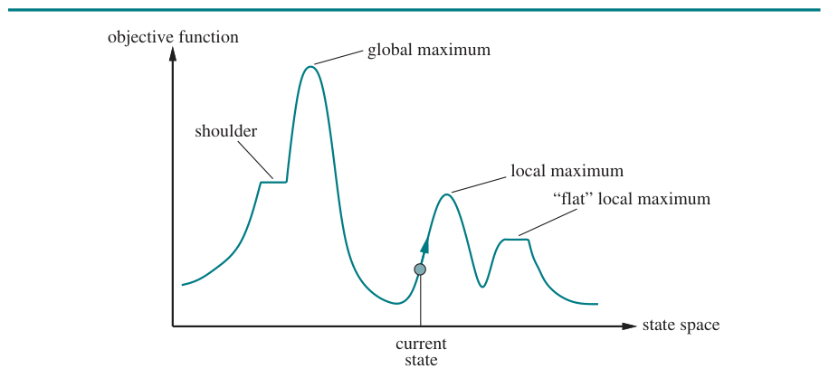
- Global maximum / minimum: The highest peak when maximizing value (via hill climbing), or the lowest valley when minimizing cost (via gradient descent（梯度下降）, Section 4.5).全局最大值 / 最小值：最大化收益时追求最高峰（全局最大值，用爬山法）；最小化代价时追求最低谷（全局最小值，如第 4.5 节的梯度下降）。
- Local maximum（局部极大值）: A peak higher than all of its immediate neighbors, yet strictly lower than the global maximum.局部极大值：比周围所有紧邻状态都高，但仍低于全局最高峰的小山顶。
- Plateau（高原）: A flat region where neighboring states share the same value—either a flat local maximum with no uphill exit or a shoulder（山肩）that eventually slopes upward again.高原：一片等高的平坦区域，分为没有上坡出口的平坦局部极大值，以及继续平移后仍能往上爬的山肩。
Practice练习
Q1. (Definition) What is local search? State two advantages and one drawback.Q1.（概念）什么是局部搜索？列出它的两个优点和一个缺点。
Answer
Local search starts from one state and moves iteratively to neighboring states without storing the path or a reached set. Its advantages are minimal memory usage and the ability to find good solutions in huge or infinite spaces; its drawback is incompleteness, as it can miss regions containing a solution.局部搜索从单个状态出发并在邻域间移动，不存储路径也不保留已到达表。优点是内存消耗极少、适合超大或无限状态空间；缺点是不完备，可能错过包含解的区域。
Q2. (Classify) Decide whether local search suits each task: (a) route from Arad to Bucharest; (b) factory floor layout; (c) 8-queens; (d) 8-puzzle when the move sequence is required.Q2.（分类）判断以下任务是否适合用局部搜索：(a) 从 Arad 到 Bucharest 的路线规划；(b) 工厂车间布局；(c) 八皇后问题；(d) 要求给出移动序列的八数码问题。
Answer
- (a) No: Route finding requires the path itself, so use Chapter 2–3 systematic search.(a) 否：解是具体路径，须用第 2–3 章系统搜索。
- (b) Yes: Only the final layout matters, and local swaps steadily improve the objective.(b) 是：只关心最终布局质量，且局部微调即可改进目标。
- (c) Yes: Only the final non-attacking board configuration matters.(c) 是：只需最终摆好的棋盘构型。
- (d) No: Requiring the sequence of moves demands path tracking, which local search discards.(d) 否：题目要求返回动作序列，而局部搜索不保存路径。
思路：先判断题目要“路径序列”还是“最终状态”。
Hill climbing ★★★爬山法
Goal. Trace steepest-ascent hill climbing by hand, identify the three regions where it gets stuck along with their remedies, and compute the expected cost of random restarts.目标。 手工演算最陡上升爬山法，指出它受困的三类地形与补救办法，并计算随机重启的期望步数。
How do you climb a mountain in thick fog without a map? You inspect the ground right around your feet and step toward whichever neighbor slopes upward most steeply—making hill climbing the simplest, purely greedy form of local search.浓雾中登山没有地图，最直观的办法就是环顾脚边四周，朝坡度最陡的上方迈步——这正是爬山法作为最朴素贪婪局部搜索的直觉。
Step 1: the algorithm第 1 步：算法流程
Core idea: Hill climbing greedily moves to the highest-valued neighbor and stops as soon as no neighbor is strictly better.核心思路：爬山法总是贪婪地走向评分最高的邻居，一旦没有严格更优的邻居便立即停止。
Because hill climbing（爬山法）examines only immediate neighbors without maintaining a frontier or search history, it is also known as greedy local search（贪婪局部搜索）:由于爬山法每次只看眼前一步的邻居而不做前瞻或历史记录，因此也被称为贪婪局部搜索：
function HILL-CLIMBING(problem) returns a state that is a local maximum
current ← problem.INITIAL
while true do
neighbor ← a highest-valued successor state of current
if VALUE(neighbor) ≤ VALUE(current) then return current # stop: no strictly better neighbor
current ← neighbor
Follow these five steps when tracing steepest-ascent hill climbing by hand:手工演算最陡上升爬山法的五个步骤：
- Record the start state and its objective value.记下起始状态及其目标函数值。
- List every neighbor of the current state along with its value.列出当前状态的全部邻居及各自取值。
- Identify the neighbor with the highest value (breaking ties arbitrarily if several match).挑出取值最高的邻居（若多个最高值并列，可任选其一）。
- If that best neighbor's value is not strictly greater than the current value, stop and return the current state.若最优邻居的值不严格高于当前值，停止并返回当前状态。
- Otherwise move to that neighbor and repeat from Step 2.否则移动到该邻居并回到第 2 步循环。
Worked example on a 1D landscape (states 0–9, where each state's neighbors are the integers immediately to its left and right):在一维地形上举例（状态 0–9 排成一列，每个状态的邻居是左右紧邻的状态）：
| state状态 | 0 | 1 | 2 | 3 | 4 | 5 | 6 | 7 | 8 | 9 |
|---|---|---|---|---|---|---|---|---|---|---|
| value值 | 3 | 5 | 8 | 6 | 4 | 5 | 7 | 9 | 6 | 2 |
| Start起点 | Step步骤 | Current state (value)当前状态（值） | Neighbors (values)邻居（值） | Decision决策 |
|---|---|---|---|---|
| 3 | 1 | 3 (6) | 2 (8), 4 (4) | best is 8 > 6, move to 2最佳 8 > 6，移向 2 |
| 3 | 2 | 2 (8) | 1 (5), 3 (6) | best is 6 < 8, stop最佳 6 < 8，停止 |
| 5 | 1 | 5 (5) | 4 (4), 6 (7) | best is 7 > 5, move to 6最佳 7 > 5，移向 6 |
| 5 | 2 | 6 (7) | 5 (5), 7 (9) | best is 9 > 7, move to 7最佳 9 > 7，移向 7 |
| 5 | 3 | 7 (9) | 6 (7), 8 (6) | best is 7 < 9, stop最佳 7 < 9，停止 |
Starting from state 3 stops at state 2 (value 8, a local maximum), whereas starting from state 5 climbs to state 7 (value 9, the global maximum)—showing how strongly hill climbing depends on its starting point.从状态 3 出发最终停在值为 8 的局部极大值（状态 2），而从状态 5 出发却能登上值为 9 的全局最大值（状态 7），可见爬山法的结果高度依赖初始位置。
Step 2: 8-queens第 2 步：八皇后问题
In the complete-state formulation（完整状态表示）of 8-queens, all 8 queens sit on the board (one per column), and each move slides one queen to another row in its column, giving \(8\times7=56\) successors. Cost \(h\) counts attacking pairs of queens (same row or diagonal), so a solution has \(h=0\) and hill climbing maximizes \(-h\).在八皇后的完整状态表示中，棋盘每列放 1 个皇后，每次将某一列的皇后移到同列其余 7 行之一，共 \(8\times7=56\) 个后继。代价 \(h\) 为相互攻击的皇后对数，解满足 \(h=0\)，爬山法即在 \(-h\) 地形上向上攀登。

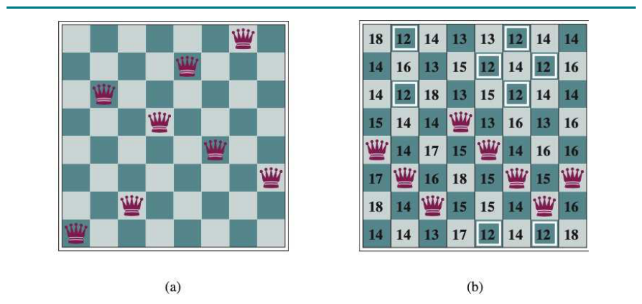
The left board has \(h=1\) yet is a local minimum because every single-queen move increases \(h\). From random starts, steepest-ascent hill climbing solves only 14% of 8-queens instances, taking an average of 4 steps on successes and 3 steps before getting stuck.左图虽然只剩 1 对攻击（\(h=1\)），但任何单列移动都会使 \(h\) 升高，因而成了局部极小值陷阱。从随机起点出发，最陡上升法在八皇后上的成功率仅约 14%（成功平均 4 步，卡死平均 3 步）。
Step 3: why it gets stuck第 3 步：爬山法为何会卡住
Plain hill climbing stalls whenever it encounters one of three landscape obstacles:普通爬山法会在以下三类地形中陷入停滞：
- Local maximum: A peak higher than every neighbor, yet lower than the global maximum.局部极大值：四周所有邻居都比当前更差，但并非全局最优解。
- Ridge（山脊）: A narrow sequence of local maxima tilted diagonally to the coordinate moves—every single axis-aligned step goes downhill, forcing a sequence of zig-zag moves.山脊：一串不直接邻接的局部高点斜向延伸，单步沿坐标方向移动全都会下坡，导致寸步难行。
- Plateau: A flat region—on a flat local maximum no uphill exit exists, whereas on a shoulder an uphill slope exists beyond the flat stretch, yet hill climbing halts immediately unless sideways moves are allowed.高原：一片等高的平坦区域。在平坦局部极大值上根本无路可上；在山肩上虽可借平移脱困，但普通爬山法遇平即停。
Step 4: remedies第 4 步：四大补救变体
| Variant变体 | Rule核心规则 | Effect on 8-queens在八皇后上的效果 |
|---|---|---|
| Sideways moves（横向移动） | Allow moves to equal-valued neighbors, capped at a limit (e.g., 100 consecutive sideways steps)允许移向等值邻居，但须限制连续横向步数上限（如 100 步） | Raises solve rate from 14% to 94% (~21 steps/success, ~64 steps/failure)求解率从 14% 跃升至 94%（成功约 21 步，失败约 64 步） |
| Stochastic hill climbing（随机爬山法） | Sample randomly among uphill neighbors (often weighted by steepness)在所有上坡邻居中按一定概率随机挑选一个移动 | Usually converges slower, but can reach better optima on some landscapes通常收敛较慢，有时能避开较差的局部峰值 |
| First-choice hill climbing（首选爬山法） | Generate random successors until finding one strictly better than current随机生成邻居，只要遇到第一个比当前更优的就立刻移动 | Ideal when each state has thousands of successors适合后继数量极其庞大（成千上万）无法逐一枚举的场景 |
| Random-restart hill climbing（随机重启爬山法） | Repeat hill climbing from fresh random initial states until a goal is reached每当卡住就重新随机初始化并再次爬山，直到找到解为止 | Complete with probability 1在有限空间中以概率 1 完备 |
Remember to cap consecutive sideways moves; without a limit, the search wanders endlessly across any flat local maximum.注意横向移动必须设置连续次数上限，否则一旦踏入平坦局部极大值就会在平地上永远徘徊下去。
Step 5: the cost of random restart第 5 步：随机重启的期望代价
Core idea: Because independent restarts succeed with probability \(p\), the expected number of climbs is \(1/p\) and total expected steps sum one successful climb plus \((1-p)/p\) failed climbs.核心思路：每次独立重启以概率 \(p\) 成功，因此期望重启次数为 \(1/p\)，总期望步数等于 1 次成功攀登加上 \((1-p)/p\) 次失败攀登的代价。
Practice练习
Q1. (Trace) States 0–9 lie on a line with left/right neighbors and values:Q1.（手工演算）状态 0–9 排成一行（邻居为左右两格），各状态取值如下：
| state状态 | 0 | 1 | 2 | 3 | 4 | 5 | 6 | 7 | 8 | 9 |
|---|---|---|---|---|---|---|---|---|---|---|
| value值 | 2 | 4 | 6 | 5 | 3 | 3 | 3 | 7 | 9 | 8 |
- Run steepest-ascent hill climbing starting from states 1, 5, and 7.分别从状态 1、5、7 出发运行最陡上升爬山法。
- If the start state is chosen uniformly at random, what is the probability that one run finds the global maximum, and how many runs does random restart take on average?若均匀随机挑选初始状态，单次运行到达全局最大值的概率是多少？随机重启平均需要多少轮？
Answer
- (a) Traces: From 1 (4), neighbors 2 and 6 send it to state 2 (6), whose neighbors (4 and 5) are worse—stop at state 2 (local max, value 6). From 5 (3), both neighbors equal 3—stop immediately at state 5 (plateau). From 7 (7), move to state 8 (9), whose neighbors (7 and 8) are lower—stop at global max 9.(a) 演算：从 1(4) 移向 2(6)，其邻居 4 与 5 皆更差，停在局部极大值状态 2(6)；从 5(3) 出发左右均为 3，立即停在高原状态 5；从 7(7) 移向 8(9)，四周皆低，停在全局最大值状态 8(9)。
- (b) Random restart: Starts 6, 7, 8, and 9 reach state 8; starts 0–4 end at state 2; start 5 stays put. Thus \(p=4/10=0.4\), requiring \(1/p=2.5\) runs on average.(b) 随机重启：起点 6、7、8、9 均可达状态 8（共 4 个），0–4 困在状态 2，5 原地不动；故 \(p=4/10=0.4\)，平均需要 \(1/p=2.5\) 轮。
易错：在高原上的状态 5 是一步都迈不出去的，不要误以为它能走到底。
Q2. (4-queens) A 4-queens state lists the queen's row in each column. For state (2,3,1,4):Q2.（四皇后问题）四皇后状态按列记下皇后行号。对于状态 (2,3,1,4)：
- Compute the number of attacking pairs \(h\).计算相互攻击的皇后对数 \(h\)。
- Count the total number of successors.计算一个状态的后继总数。
- Does steepest-ascent hill climbing escape, and what changes if one sideways move is allowed?最陡上升爬山法能否脱困？若允许 1 次横向移动会怎样？
Answer
(a) \(h=1\): Only the queens in columns 1 and 2 (rows 2 and 3 in adjacent columns) attack diagonally.(a) \(h=1\)：只有第 1 列第 2 行与第 2 列第 3 行的皇后位于同一斜线上。
(b) 12 successors: 4 columns \(\times\) 3 alternative rows per column \(=12\) neighbors.(b) 共 12 个后继：4 列乘以每列其余 3 行，共计 12 个邻居。
(c) With vs. without sideways move: The 12 neighbors have \(h\)-values \(1,2,2,2,2,2,3,3,3,3,3,4\)—none achieves \(h=0\), so plain hill climbing halts at \(h=1\). Allowing one sideways move steps to (2,4,1,4) (\(h=1\)), from which shifting column 4's queen to row 3 reaches solution (2,4,1,3) (\(h=0\)).(c) 横向移动的作用：12 个后继的 \(h\) 分别为 1 个 1、5 个 2、5 个 3、1 个 4，没有 \(h=0\)，故普通爬山法在 \(h=1\) 停滞；若允许横向移动一步走到 (2,4,1,4)，再把第 4 列皇后移到第 3 行即得解 (2,4,1,3)（\(h=0\)）。
Simulated annealing ★★★模拟退火
Goal. Compute the acceptance probability of a downhill move, decide whether a random draw \(u\) accepts it, and explain how temperature and cooling schedule govern exploration vs. exploitation.目标。 计算较差移动的接受概率，根据给定随机数 \(u\) 判定是否接受该步，并解释温度与降温计划如何平衡探索与利用。
Pure hill climbing never accepts a worse move, so it gets trapped in the nearest local maximum; a pure random walk escapes every trap, yet wanders aimlessly forever. Simulated annealing（模拟退火）bridges both extremes—inspired by metallurgical annealing, where heating metal and cooling it slowly lets atoms settle into a minimum-energy crystal.纯爬山法绝对不肯退一步，注定困在最近的局部峰顶；纯随机游走固然能翻越所有山谷，却漫无目的效率极低。模拟退火取两者之长：正如冶金中将金属加热后再极其缓慢地退火冷却，让原子得以逃离亚稳态、最终整齐落入最低能量晶格。
Step 1: the algorithm第 1 步：算法流程
Core idea: Simulated annealing picks a random neighbor at each step, always accepting improvements while accepting worse moves with a temperature-controlled probability.核心思路：模拟退火每次随机抽取一个邻居，若更优则无条件接受，若更差则按当前温度决定的概率有条件接受。
function SIMULATED-ANNEALING(problem, schedule) returns a solution state
current ← problem.INITIAL
for t = 1 to ∞ do
T ← schedule(t) # temperature at time t
if T = 0 then return current
next ← a randomly selected successor of current
ΔE ← VALUE(next) − VALUE(current)
if ΔE > 0 then current ← next
else current ← next only with probability e^(ΔE/T)
Unlike steepest-ascent hill climbing, simulated annealing never enumerates all neighbors—it draws one candidate randomly and consults the schedule（降温计划）, which gradually lowers the temperature（温度）\(T\) over iteration count \(t\).与最陡上升爬山法不同，模拟退火不枚举所有邻居，而是每步随机挑一个候选者，并按降温计划随时间 \(t\) 逐步降低温度 \(T\)。
Step 2: the acceptance probability第 2 步：接受概率计算
Core idea: The larger the quality drop \(\lvert\Delta E\rvert\) and the lower the temperature \(T\), the smaller the acceptance probability \(e^{\Delta E/T}\).核心思路：移动变差越多（\(\lvert\Delta E\rvert\) 越大）且温度 \(T\) 越低，接受该较差移动的概率 \(e^{\Delta E/T}\) 就越小。
How to simulate one step by hand:手工演算单步模拟退火的四步法：
- Compute \(\Delta E=\text{VALUE}(\text{next})-\text{VALUE}(\text{current})\).计算 \(\Delta E=\text{候选值}-\text{当前值}\)。
- If \(\Delta E>0\), accept immediately (no random number needed).若 \(\Delta E>0\)，直接接受（无需看随机数）。
- Otherwise compute \(P=e^{\Delta E/T}\) using the current temperature \(T\).否则代入当前温度计算接受概率 \(P=e^{\Delta E/T}\)。
- Compare against the uniform draw \(u\in[0,1)\): accept and update state if \(u<P\), otherwise reject and remain.与均匀随机数 \(u\) 比较：若 \(u<P\) 则接受并转移，否则拒绝并留在原处。
Notice how quickly acceptance probability \(e^{\Delta E/T}\) drops as \(T\) cools or loss \(\lvert\Delta E\rvert\) grows:下表直观展示了不同变差幅度 \(\lvert\Delta E\rvert\) 与温度 \(T\) 下的接受概率 \(e^{\Delta E/T}\)：
| \(\lvert\Delta E\rvert\) | \(T=10\) | \(T=3\) | \(T=1\) | \(T=0.5\) |
|---|---|---|---|---|
| 1 | 0.905 | 0.717 | 0.368 | 0.135 |
| 2 | 0.819 | 0.513 | 0.135 | 0.018 |
| 3 | 0.741 | 0.368 | 0.050 | 0.002 |
Early on (\(T=10\)), even dropping by 3 is accepted 74% of the time; near the end (\(T=0.5\)), the same drop is practically never accepted.高温初期（\(T=10\)）连降 3 分仍有 74% 机会被接受；低温末期（\(T=0.5\)）几乎完全拒绝任何下滑。
Step 3: what the temperature does第 3 步：温度与降温速度的作用
- High \(T\) (exploration): \(e^{\Delta E/T}\approx1\), so nearly every move is accepted and the search behaves like a random walk that can escape local maxima.高温（侧重探索）：\(e^{\Delta E/T}\approx1\)，几乎来者不拒，接近随机游走，容易跳出浅局部峰值。
- Low \(T\) (exploitation): \(e^{\Delta E/T}\approx0\), so worse moves are rejected and the search settles into hill climbing around a good peak.低温（侧重利用）：\(e^{\Delta E/T}\approx0\)，几乎只接受改进步，退化为局部精细爬山。
- Limit cases: \(T=\infty\) is a pure random walk, while \(T=0\) is first-choice hill climbing.两个极端：\(T=\infty\) 为纯随机游走，\(T=0\) 为首选（随机）爬山法。
- Slow cooling guarantee: If \(T\) decreases slowly enough, the stationary distribution concentrates on global maxima, finding one with probability approaching 1.慢降温理论保证：只要降温足够缓慢，状态概率分布会逐渐集中到全局最大值处，找到全局最优的概率趋近于 1。
Cooling speed is critical: dropping \(T\) too rapidly quenches the search inside whichever local maximum it happens to sit in, whereas keeping \(T\) too high leaves it wandering aimlessly without ever converging.降温节奏必须恰到好处：降温太快会像金属“淬火”一样直接冻死在附近的局部极大值里；降温太慢或一直高温，则会像没头苍蝇一样永远收敛不到峰顶。
Practice练习
Q1. (Calculation) In maximization simulated annealing, a proposed move lowers the objective by 2. Compute the acceptance probability at \(T=4\) and \(T=0.5\), and describe the limiting behavior as \(T\to\infty\) and \(T\to0\).Q1.（计算）在最大化模拟退火中，某候选移动使目标值下降 2。求 \(T=4\) 与 \(T=0.5\) 时的接受概率，并说明 \(T\to\infty\) 和 \(T\to0\) 时的极限行为。
Answer
With \(\Delta E=-2\): at \(T=4\), \(P=e^{-2/4}=e^{-0.5}\approx0.607\); at \(T=0.5\), \(P=e^{-2/0.5}=e^{-4}\approx0.018\). As \(T\to\infty\), \(e^{\Delta E/T}\to1\) (every move accepted: random walk); as \(T\to0\), \(e^{\Delta E/T}\to0\) (only improvements accepted: first-choice hill climbing).因 \(\Delta E=-2\)：\(T=4\) 时 \(P=e^{-0.5}\approx0.607\)；\(T=0.5\) 时 \(P=e^{-4}\approx0.018\)。当 \(T\to\infty\) 时概率趋近 1（等价于随机游走）；当 \(T\to0\) 时概率趋近 0（等价于首选爬山法）。
Q2. (Explain) Why must temperature \(T\) be lowered gradually? Explain what goes wrong if \(T\) stays high or drops too quickly.Q2.（解释）为什么温度 \(T\) 必须缓慢下降？若 \(T\) 一直居高不下或降得太快分别会导致什么问题？
Answer
High \(T\) early on allows the search to jump out of local optima and explore widely, while low \(T\) later concentrates it around a deep optimum. If \(T\) stays high, it acts like a random walk and never settles on a peak; if \(T\) drops too fast, it acts like greedy hill climbing and freezes in an arbitrary local maximum.前期高温帮助算法跳出局部峰值进行全局探索，后期低温则令其收敛到优质峰顶。若一直高温，算法会持续随机游走而无法收敛；若降温过快，算法会过早丧失翻越谷底的能力，冻死在遇到的第一个局部极大值上。
Local beam search and genetic algorithms ★★局部束搜索与遗传算法
Goal. Trace one iteration of local beam search, distinguish it from parallel restarts, and execute fitness-proportional selection and crossover in a genetic algorithm.目标。 手工演算一步局部束搜索并区分它与并行随机重启，同时掌握遗传算法的适应度比例选择与交叉操作。
Keeping only one state forces hill climbing and simulated annealing to explore blindly alone. Tracking \(k\) states at once lets parallel threads share information—either funneling resources toward the most promising region (beam search) or recombining complementary building blocks from two parents (genetic algorithms).只维护一个状态犹如单兵作战；若同时保留 \(k\) 个状态组成群体，不同搜索线索就能彼此互通情报——要么把资源集中到最有前途的区域（束搜索），要么把两个优质父代的局部优点拼接起来（遗传算法）。
Local beam search局部束搜索
Core idea: Local beam search tracks \(k\) states in parallel and keeps the \(k\) highest-scoring successors pooled across all \(k\) threads.核心思路：局部束搜索并行维护 \(k\) 个状态，把它们的所有后继汇总后统一选出最好的 \(k\) 个进入下一轮。
Local beam search（局部束搜索）maintains \(k\) states simultaneously (e.g., \(k=2\)) in three steps:局部束搜索同时维护 \(k\) 个状态（如 \(k=2\)），按如下三步迭代：
- Initialize with \(k\) randomly chosen states.随机生成 \(k\) 个初始状态。
- Generate all successors of all \(k\) current states; if any successor is a goal, stop.生成这 \(k\) 个状态的全部后继；若其中包含目标则立即停止。
- Pool all successors together, select the \(k\) best states across the entire pool, and repeat from Step 2.将所有后继放在一起排序，挑出总评分最高的 \(k\) 个作为下一代，返回第 2 步。
Crucially, beam search is not equivalent to running \(k\) independent random restarts in parallel: because successors compete in a shared pool, a thread finding rich neighbors attracts all \(k\) slots while stalled threads are abandoned.注意它绝不等于 \(k\) 次互不相关的并行随机重启：汇总竞争机制让优秀的分支能够“抢走”弱分支的名额。
Its main flaw is rapid loss of diversity, as all \(k\) states often collapse into one narrow valley—fixed by stochastic beam search（随机束搜索）, which samples \(k\) successors randomly with probability proportional to value.但也正因如此，局部束搜索容易迅速丧失多样性，使 \(k\) 个状态全部挤在同一小片山坡；改用按值成比例随机抽样 \(k\) 个后继的随机束搜索，即可有效保留种群多样性。
Genetic algorithms遗传算法
Core idea: A genetic algorithm extends stochastic beam search by pairing selected parents and recombining their segments via crossover plus occasional mutation.核心思路：遗传算法相当于带“双亲重组”的随机束搜索——先按适应度挑选父代，再通过交叉拼接片段并施加小概率变异生成子代。
Inspired by biological evolution, a genetic algorithm (GA) evolves a population of individuals (states) across generations so fitter parents pass useful traits to offspring:受自然进化启发，遗传算法让由多个个体（状态）构成的种群逐代繁衍，筛选高适应度父代组合产生更优后代：
| Component设计要素 | Role and options含义与常见选择 |
|---|---|
| Population size种群规模 | Number of individuals maintained per generation每一代保留的个体总数 |
| Representation编码表示 | GA: string over a finite alphabet (often bits/digits); evolution strategy: real-valued vector; genetic programming: executable program遗传算法：有限字母表字符串（常见比特或数字串）；进化策略：实数向量；遗传编程：计算机程序树 |
| Mixing number \(\rho\)（混合数） | Number of parents combined per child: typically \(\rho=2\) (\(\rho=1\) recovers stochastic beam search)生成每个子代所需的父代数量：通常取 \(\rho=2\)（取 \(\rho=1\) 即退化为随机束搜索） |
| Selection选择 | Sample parents proportionally to fitness, or pick \(n>\rho\) candidates randomly and keep the \(\rho\) fittest (tournament)按适应度比例抽选，或随机抽 \(n>\rho\) 个个体并保留最适应的 \(\rho\) 个（锦标赛选择） |
| Crossover（交叉） | Cut two parents at a random split point: child 1 = head of parent 1 + tail of parent 2; child 2 = head of parent 2 + tail of parent 1在随机交叉点切分双亲：子代 1 = 父代 1 前段 + 父代 2 后段，子代 2 取相反拼接 |
| Mutation（变异） | Perturb each position independently with a small mutation probability对子代串的每一位以极小变异率随机改写 |
| Next generation世代更新 | Replace with offspring, optionally copying top parents via elitism（精英保留）so max fitness never drops; culling removes individuals below a threshold用新子代构成下一代；若加入精英保留（直接复制少数顶尖父代），则历史最高适应度永不退步；剔除（culling）直接淘汰低于阈值的个体 |
In 8-queens, each individual is an 8-digit string whose \(c\)-th digit records the queen's row in column \(c\):在八皇后编码中，每个个体是 8 位数字串，第 \(c\) 位表示第 \(c\) 列皇后的行号：

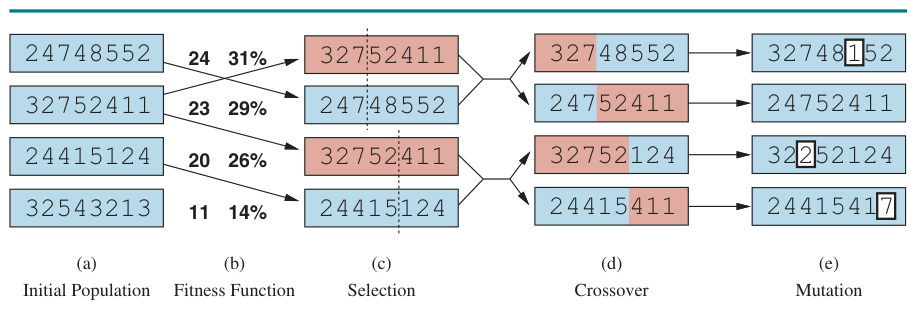
Worked example: Four strings with fitness 24, 23, 20, and 11 sum to 78, giving selection probabilities \(24/78=31\%\), \(29\%\), \(26\%\), and \(14\%\). Crossing parents \(327|52411\) and \(247|48552\) after digit 3 yields \(32748552\) and \(24752411\), after which each digit mutates with a small probability.演算示例：四个个体适应度为 24、23、20、11（总和 78），选中概率分别为 31%、29%、26%、14%。若父代 \(327|52411\) 与 \(247|48552\) 在第 3 位后交叉，即产生子代 \(32748552\) 与 \(24752411\)，随后每位以极小概率随机变异。
Crossover succeeds when the encoding places cooperating elements into contiguous blocks, formalized as a schema（模式）like 246*****; whenever a schema's instances beat the population average, its share grows across generations—whereas arbitrary encodings render crossover no better than random noise.交叉能否奏效取决于编码是否把协同工作的部分放进相邻块，即所谓的模式（如 246*****）：只要某个模式实例的平均适应度高于种群均值，它就会逐代扩增；若各位置编码毫无局部结构关联，交叉便几乎毫无优势。
| Method方法 | States kept维护状态数 | How it moves移动方式 | Escape mechanism逃离局部极大值机制 |
|---|---|---|---|
| Hill climbing爬山法 | 1 | Best neighbor, strictly uphill最佳邻居，只上不下 | None无法逃离 |
| Simulated annealing模拟退火 | 1 | Random neighbor; worse accepted with \(e^{\Delta E/T}\)随机邻居；按 \(e^{\Delta E/T}\) 接受变差 | Downhill steps while \(T\) is warm趁温度尚高接受下坡步跳出 |
| Local beam search局部束搜索 | \(k\) | Top \(k\) of all pooled successors汇总所有后继取最优 \(k\) 个 | Information sharing (risks clustering)共享优质线索（但易丧失多样性） |
| Stochastic beam search随机束搜索 | \(k\) | \(k\) sampled proportional to value按值成比例随机抽样 \(k\) 个 | Probabilistic sampling preserves diversity概率抽样维持群体多样性 |
| Genetic algorithm遗传算法 | Population整个种群 | Selection, crossover, mutation选择、交叉、变异 | Recombination + random mutation重组优良模块与随机变异 |
Practice练习
Q1. (Calculation) In beam search with \(k=2\), state A has successors with values 9, 8, 7 and state B has successors with values 3, 2, 1. Which successors survive under deterministic beam search? In stochastic beam search, what is the probability a single draw picks a successor of B, and why is this helpful?Q1.（计算）设束宽 \(k=2\)，状态 A 的后继值为 9、8、7，状态 B 的后继值为 3、2、1。确定性局部束搜索会保留哪几个？在随机束搜索中，单次抽样选中 B 某个后继的概率是多少？这样做有何好处？
Answer
Deterministic beam search pools all six successors and keeps the top two: 9 and 8 (both from A, abandoning B). Under stochastic beam search, the total value is \(9+8+7+3+2+1=30\), so a draw picks a successor of B with probability \((3+2+1)/30=0.2\)—keeping diversity alive so all \(k\) states do not collapse into one small region.确定性束搜索把 6 个后继汇总后只留 9 与 8（全来自 A，B 的分支被淘汰）。随机束搜索中 6 个后继总分为 30，选中 B 后继的概率为 \((3+2+1)/30=0.2\)，偶尔保留较弱分支能维持多样性，防止群体过早聚集在单一区域。
Q2. (Genetic algorithm, 4-queens) In 4-queens (max fitness \(\binom{4}{2}=6\)), parents 2413 and 3142 are both valid solutions. Perform single-point crossover after the second digit, compute each child's fitness, and state the takeaway.Q2.（遗传算法，四皇后）四皇后最大适应度为 \(\binom{4}{2}=6\)。父代 2413 与 3142 皆为合法解，在第 2 位后交叉，求两个子代及其适应度，并说明由此得到的启示。
Answer
Crossing 24|13 and 31|42 produces children 2442 and 3113. In 2442, column pairs (1,3), (1,4), (2,3), and (2,4) attack each other, giving fitness \(6-4=2\); 3113 has the exact same four attacking pairs, also scoring fitness 2. Both children are far worse than their parents, proving crossover destroys good solutions unless the split pieces form compatible building blocks.交叉后得子代 2442 与 3113。在 2442 中列对 (1,3)、(1,4)、(2,3)、(2,4) 相互攻击，适应度骤降为 \(6-4=2\)；3113 同样存在这 4 对冲突，适应度亦为 2。可见若父代拼接的片段互不兼容，交叉反而会破坏原有好解。
Local search in continuous spaces ★★连续空间中的局部搜索
Goal. Execute one gradient-descent step and one Newton–Raphson step by hand, and contrast their per-step cost against their convergence speed.目标。 手工完成一步梯度下降与一步牛顿–拉弗森更新，并对比二者在单步代价与收敛步数上的权衡。
When state variables vary continuously—such as choosing coordinates \((x,y)\) for three airports in Romania to minimize total squared distance to nearby cities (\(n=6\) variables)—every state has infinitely many neighbors, so Chapter 2–3 enumeration breaks down. Only sampling methods (first-choice hill climbing, simulated annealing), grid discretization, or calculus-based optimization can navigate continuous landscapes.当状态由连续实数构成时（例如在罗马尼亚地图上为 3 座机场选址 \((x,y)\)，共 \(n=6\) 个连续变量以最小化各城到最近机场的距离平方和），每个状态都有无穷多个邻居，常规枚举彻底失效。此时只能靠随机采样（首选爬山法、模拟退火）、网格离散化，或借助微积分的梯度与曲率优化来求解。
Step 1: discretization第 1 步：网格离散化
Discretization（离散化）snaps each continuous variable onto a grid of spacing \(\delta\), allowing each of the \(n\) coordinates to shift by \(+\delta\) or \(-\delta\) (\(2n\) neighbors total, e.g., 12 for three airports). Any discrete local search then applies, and shrinking \(\delta\) refines precision, though local optima can still trap the search.离散化将每个连续变量限制在间距为 \(\delta\) 的网格点上，每次仅允许 \(n\) 个坐标之一增减 \(\delta\)，从而把无穷邻域化为 \(2n\) 个离散邻居（如三机场共 12 个后继）。随后可套用任意离散局部搜索，并逐步缩小 \(\delta\) 提高精度，但仍不保证到达全局最优。
Step 2: the gradient step第 2 步：梯度步
Core idea: Gradient descent updates the continuous state by taking a small step of size \(\alpha\) opposite the uphill gradient \(\nabla f(\mathbf x)\).核心思路：梯度下降在连续空间中沿着梯度 \(\nabla f(\mathbf x)\) 的反方向迈出步长为 \(\alpha\) 的一小步下坡。
To compute one minimization step by hand: evaluate \(\nabla f(\mathbf x)\) at the current point, multiply by \(\alpha\), and subtract it from \(\mathbf x\).手工计算梯度下降只需三步：算出当前梯度 \(\nabla f(\mathbf x)\)，乘以步长 \(\alpha\)，再从当前点 \(\mathbf x\) 中减去即可。
Step 3: the Newton–Raphson step第 3 步：牛顿–拉弗森步
Core idea: Newton–Raphson approximates the objective locally by a quadratic surface using the Hessian matrix and jumps straight to its stationary point.核心思路：牛顿–拉弗森法利用二阶海森矩阵将目标曲面局部近似为二次抛物面，并一步跳至该抛物面的极值点。
This illustrates the classic trade-off: Newton–Raphson needs far fewer steps (often quadratic convergence), yet computing and inverting the \(n\times n\) Hessian costs \(O(n^3)\) per step, whereas gradient descent needs only \(n\) first derivatives per step at the cost of taking more iterations.这正体现了两者的核心权衡：牛顿法只需极少步数就能精准收敛，但每步都要构造并求逆 \(n\times n\) 海森矩阵，高维时开销极高；梯度下降每步只需算 \(n\) 个一阶导数，计算便宜但往往需要迭代更多步。
Practice练习
Q1. (Calculation) Minimize \(f(x)=(x-3)^2\) starting from \(x=0\):Q1.（计算）从 \(x=0\) 出发最小化函数 \(f(x)=(x-3)^2\)：
- Perform two gradient-descent steps with \(\alpha=0.1\).取步长 \(\alpha=0.1\) 计算两步梯度下降。
- What happens if you instead use \(\alpha=1\)?改用 \(\alpha=1\) 会发生什么？
- Perform one Newton–Raphson step.计算一步牛顿–拉弗森更新。
Answer
With \(f'(x)=2(x-3)\), gradient descent updates \(x\leftarrow x-\alpha f'(x)\):导数 \(f'(x)=2(x-3)\)，梯度下降迭代式为 \(x\leftarrow x-\alpha f'(x)\)：
- (a) \(\alpha=0.1\): \(x_1=0-0.1(-6)=0.6\); \(x_2=0.6-0.1\cdot2(-2.4)=1.08\) (distance to 3 shrinks by \(1-2\alpha=0.8\) per step).(a) \(\alpha=0.1\)：\(x_1=0-0.1(-6)=0.6\)，\(x_2=0.6-0.1\times(-4.8)=1.08\)（每步距最优解缩为 0.8 倍）。
- (b) \(\alpha=1\): \(x\leftarrow x-2(x-3)=6-x\), oscillating forever between \(0,6,0,6,\dots\) (overshoot; for \(\alpha>1\) it diverges).(b) \(\alpha=1\)：迭代化为 \(x\leftarrow 6-x\)，在 0 与 6 之间来回过冲永不收敛（\(\alpha>1\) 则发散）。
- (c) Newton–Raphson: Since \(f''(x)=2\), \(x_1=0-(-6)/2=3\), hitting the exact minimum in one step because \(f\) is quadratic.(c) 牛顿–拉弗森法：因 \(f''(x)=2\)，得 \(x_1=0-(-6)/2=3\)；二次函数一步直接命中最小值。
Q2. (Concepts) Answer three quick conceptual checks on continuous optimization:Q2.（概念）回答以下三个连续空间优化问题：
- How many neighbors does a state have in the discretized three-airport problem?离散化后的三机场选址问题中，每个状态有多少个邻居？
- True or false: shrinking grid spacing \(\delta\) over time guarantees reaching the global optimum.判断正误：随时间缩小网格步长 \(\delta\) 一定能保证收敛到全局最优。
- Is linear programming solvable in polynomial time, and what is special about local minima of a convex function?线性规划能否在多项式时间内求解？凸函数的局部极小值有何特殊性质？
Answer
- (a) 12 neighbors: Six continuous coordinates (\(x,y\) for 3 airports), each shifted by \(\pm\delta\), give \(2\times6=12\) neighbors.(a) 12 个邻居：3 座机场共 6 个坐标，每个可加减 \(\delta\)，共 \(2\times6=12\) 个后继。
- (b) False: Finer \(\delta\) increases local precision, yet local search can still halt inside a suboptimal local basin.(b) 错误：缩小 \(\delta\) 只能提高局部精度，仍可能陷在局部最优盆地内无法脱身。
- (c) Polynomial time & convexity: Yes, linear programming runs in time polynomial in the number of variables. Moreover, every local minimum of a convex function is automatically a global minimum, so any local descent that reaches a minimum has solved the global problem.(c) 多项式时间与凸性：是，线性规划可在变量数的多项式时间内求解；此外，凸函数不存在非全局的局部极小值，因此局部搜索一旦找到极小点即为全局最优解。
Terms to recognize ★需要认识的术语
| Term术语 | What to know核心含义 |
|---|---|
| Constrained optimization（约束优化） | Optimization where valid states must satisfy hard constraints (e.g., airports cannot lie in the sea)解必须满足硬约束条件（例如机场位置不能落在海上）的优化问题 |
| Linear programming（线性规划） | Linear objective subject to linear constraints; solvable in time polynomial in the number of variables线性目标函数配合线性约束条件，可在变量数的多项式时间内精确求解 |
| Convex optimization（凸优化） | Minimizing a convex function over a convex set—every local minimum is global, and solvable in polynomial time under standard conditions凸集上的凸函数极小化，不存在非全局的局部极小值，常规条件下可多项式时间求解 |
| Line search（线搜索） | Search along the gradient direction—often doubling step size \(\alpha\) until improvement stops—to pick \(\alpha\) automatically沿梯度方向探测（常将 \(\alpha\) 翻倍直到不再改善）以自动选定步长 |
| Empirical gradient（经验梯度） | Finite-difference slope estimate across nearby grid points, reducing continuous hill climbing to grid hill climbing通过邻近网格点函数值之差近似梯度，本质上等价于网格上的离散爬山法 |
| Evolutionary algorithm（进化算法） | Population-based search generalizing stochastic beam search so fitter individuals recombine to produce offspring随机束搜索的推广框架，通过高适应度个体交叉繁殖产生新一代 |
| Elitism（精英保留） | Preserving the fittest parents directly in the next generation so peak fitness never drops将每代少数最优秀父代直接复制进下一代，保证历史最高适应度不下降 |
| Special cases极端特例 | \(k=1\) beam = hill climbing; \(T=0\) SA = first-choice hill climbing; \(T=\infty\) SA = random walk\(k=1\) 束搜索即爬山法；\(T=0\) 模拟退火即首选爬山法；\(T=\infty\) 即随机游走 |
Exam-style questions考试题型练习
Q1. (Hill climbing, 10 marks) Answer the following on steepest-ascent hill climbing:Q1.（爬山法，10 分）回答以下关于最陡上升爬山法的问题：
- Describe steepest-ascent hill climbing and its stopping condition. (2 marks)简述最陡上升爬山法的工作过程及其停止条件。（2 分）
- Name and define the three landscape features where it gets stuck. (3 marks)写出使它受困的三类地形并分别解释。（3 分）
- Explain sideways moves and random restarts, noting each remedy's effect on 8-queens. (3 marks)解释横向移动与随机重启，并说明二者在八皇后问题上的效果。（3 分）
- In the complete-state formulation of 8-queens, state the number of successors per state and the heuristic \(h\). (2 marks)写出完整状态表示下八皇后的后继数与启发式 \(h\) 定义。（2 分）
Answer
(a) Algorithm and stopping (2 marks): It tracks a single current state and repeatedly moves to the highest-valued neighbor, stopping and returning the current state when no neighbor has a strictly higher value.(a) 算法与停止条件（2 分）：仅保存当前状态，每步移向评分最高的邻居，一旦没有邻居严格更高即停止并返回当前状态。
(b) Three traps (3 marks): A local maximum is a peak above all neighbors but below the global peak. A ridge is a chain of local maxima not directly adjacent along single moves, so every step slopes downward. A plateau is a flat region—either a flat local maximum (no uphill exit) or a shoulder (flat stretch before rising).(b) 三类受困地形（3 分）：局部极大值高于邻居但低于全局最高；山脊是一串不沿坐标直接相连的局部高峰，每步迈出皆为下坡；高原是平坦等高区，分无出口的平坦局部极大值与可继续攀升的山肩。
(c) Remedies on 8-queens (3 marks): Allowing capped sideways moves (e.g., up to 100 consecutive equal-value steps) raises the 8-queens solve rate from 14% to 94% (~21 steps/success, ~64 steps/failure). Random restarts repeat hill climbing from fresh random states until solved, achieving completeness with probability 1 in \(1/p\) expected runs (~7 runs at \(p=0.14\)).(c) 补救效果（3 分）：有限次横向移动（如上限 100 步）使八皇后求解率由 14% 升至 94%（成功约 21 步、失败约 64 步）；随机重启不断换随机起点重爬直至成功，以概率 1 完备，平均需 \(1/p\) 轮（\(p=0.14\) 时约 7 轮）。
(d) 8-queens setup (2 marks): Moving one of 8 column-queens to any of the other 7 rows yields \(8\times7=56\) successors; \(h\) counts attacking pairs (\(h=0\) at goals).(d) 八皇后形式化（2 分）：每列皇后移至同列其余 7 行，共 \(8\times7=56\) 个后继；\(h\) 为相互攻击的皇后对数，解满足 \(h=0\)。
Q2. (Calculation, 10 marks) A hill-climbing algorithm succeeds with probability \(p=0.25\), averaging 8 steps when successful and 5 steps when stuck.Q2.（计算，10 分）某爬山算法单次成功率为 \(p=0.25\)，成功平均需 8 步，卡住平均需 5 步。
- Under random restarts, how many runs are expected until a solution is found? (2 marks)使用随机重启时，期望需要运行多少轮？（2 分）
- Compute the expected total number of steps across all runs. (3 marks)计算总期望步数。（3 分）
- Enabling sideways moves raises \(p\) to 0.8, with 12 steps per success and 30 per failure. Compute the new expected steps and identify the cheaper variant. (3 marks)启用横向移动后 \(p=0.8\)，成功需 12 步、失败需 30 步。计算新期望步数并对比何者更划算。（3 分）
- In 4-queens, compute \(h\) for state
(2,4,1,1)and give a single move that solves it. (2 marks)在四皇后中，求状态(2,4,1,1)的 \(h\) 并给出一步求解移动。（2 分）
Answer
(a) Expected runs (2 marks): \(E[\text{runs}]=1/p=1/0.25=4\) runs.(a) 期望运行轮数（2 分）：\(E[\text{runs}]=1/0.25=4\) 轮。
(b) Expected steps (3 marks): \(E[\text{steps}]=8+\frac{0.75}{0.25}\cdot5=8+15=23\) steps.(b) 期望总步数（3 分）：\(E[\text{steps}]=8+3\times5=23\) 步。
(c) With sideways moves (3 marks): \(E[\text{steps}]=12+\frac{0.2}{0.8}\cdot30=12+7.5=19.5\) steps across \(1/0.8=1.25\) runs, making sideways moves cheaper (\(19.5<23\)) because fewer runs fail.(c) 横向移动对比（3 分）：\(E[\text{steps}]=12+\frac{0.2}{0.8}\cdot30=19.5\) 步（仅 1.25 轮），因此横向移动更省（\(19.5<23\)），大幅减少了失败重爬次数。
(d) 4-queens move (2 marks): Only columns 3 and 4 attack (both on row 1), so \(h=1\); moving column 4's queen to row 3 yields solution (2,4,1,3) with \(h=0\).(d) 四皇后求解步（2 分）：仅第 3、4 列皇后同在第 1 行相攻击，故 \(h=1\)；将第 4 列皇后移到第 3 行即得解 (2,4,1,3)（\(h=0\)）。
Q3. (Simulated annealing, 10 marks) Answer the following on simulated annealing:Q3.（模拟退火，10 分）回答以下关于模拟退火的问题：
- State the acceptance rule for maximization and explain how temperature \(T\) controls the search. (4 marks)写出最大化问题下的接受准则，并解释温度 \(T\) 的调控作用。（4 分）
- Starting at value 10, four proposals give values 8, 7, 11, and 10 at temperatures 2, 1, 0.5, and 0.5 with uniform draws \(u=0.30,\,0.50,\,0.90,\,0.20\) (accepting worse moves if \(u<e^{\Delta E/T}\)). Trace the current value after each step. (4 marks)当前值为 10，连续四轮提议的候选值为 8、7、11、10，对应温度为 2、1、0.5、0.5，随机数为 \(u=0.30,\,0.50,\,0.90,\,0.20\)（\(u<e^{\Delta E/T}\) 时接受较差步）。写出每轮后的当前值。（4 分）
- Which iteration clearly distinguishes simulated annealing from hill climbing? (2 marks)哪一轮迭代最直接地体现了模拟退火与爬山法的区别？（2 分）
Answer
(a) Acceptance rule and role of \(T\) (4 marks): For \(\Delta E=\text{value}(\text{next})-\text{value}(\text{current})\), moves with \(\Delta E>0\) are always accepted, while worse moves are accepted with probability \(e^{\Delta E/T}\). High \(T\) explores broadly (near random walk); low \(T\) exploits locally (near hill climbing), and slow cooling reaches a global maximum with probability approaching 1.(a) 接受规则与温度作用（4 分）：设 \(\Delta E=\text{新值}-\text{旧值}\)，改进（\(\Delta E>0\)）必接受，变差以概率 \(e^{\Delta E/T}\) 接受。高温偏重随机游走探索，低温收敛为局部爬山，缓慢降温使找到全局最大值的概率趋近于 1。
(b) Four-step trace (4 marks):(b) 四轮演算（4 分）：
- \(\Delta E=8-10=-2\), \(P=e^{-2/2}=0.368\): \(u=0.30<0.368\implies\) accept (value becomes 8).第 1 轮：\(\Delta E=-2,\,P=e^{-1}\approx0.368\)，\(0.30<0.368\)，接受（当前值 8）。
- \(\Delta E=7-8=-1\), \(P=e^{-1/1}=0.368\): \(u=0.50>0.368\implies\) reject (stays 8).第 2 轮：\(\Delta E=-1,\,P=e^{-1}\approx0.368\)，\(0.50>0.368\)，拒绝（仍为 8）。
- \(\Delta E=11-8=+3>0\implies\) accept immediately regardless of \(u\) (value becomes 11).第 3 轮：\(\Delta E=+3>0\) 为改进，直接接受（无需随机数，当前值 11）。
- \(\Delta E=10-11=-1\), \(P=e^{-1/0.5}=e^{-2}\approx0.135\): \(u=0.20>0.135\implies\) reject (stays 11).第 4 轮：\(\Delta E=-1,\,P=e^{-2}\approx0.135\)，\(0.20>0.135\)，拒绝（仍为 11）。
(c) Difference from hill climbing (2 marks): Iteration 1 accepted a downhill move (\(10\to8\)), which hill climbing never permits—enabling escape from local maxima.(c) 关键差异（2 分）：第 1 轮接受了下坡移动（\(10\to8\)），这正是爬山法绝对禁止、模拟退火借以逃离局部极大值的核心机制。
Q4. (Beam search and genetic algorithms, 10 marks) Answer the following on population-based local search:Q4.（束搜索与遗传算法，10 分）回答以下关于群体局部搜索的问题：
- Why is \(k\)-beam search different from \(k\) parallel random restarts, and what issue does stochastic beam search fix? (3 marks)束宽为 \(k\) 的局部束搜索为何不同于 \(k\) 次并行随机重启？随机束搜索解决了什么问题？（3 分）
- Four 8-queens strings have fitness 20, 15, 10, and 5; compute their selection probabilities, and cross over
13572468with24681357after digit 3. (4 marks)四个八皇后个体的适应度为 20、15、10、5，求各自选中概率，并对13572468与24681357在第 3 位后单点交叉。（4 分） - When does crossover provide a real advantage? (3 marks)在什么条件下交叉操作才真正有利？（3 分）
Answer
(a) Beam vs. restarts (3 marks): Parallel restarts never interact, whereas beam search selects the top \(k\) states from a shared pool of all successors so productive threads attract all resources. Stochastic beam search restores diversity by sampling proportionally to value rather than picking deterministically.(a) 束搜索机制（3 分）：随机重启各跑各的互不通信，束搜索则汇总全部后继竞争前 \(k\) 名，优质线索能夺取算力；随机束搜索用按值成比例抽样避免全部状态挤在同一小区域而失去多样性。
(b) Selection and crossover (4 marks): Total fitness is 50, giving selection probabilities \(0.40,\,0.30,\,0.20,\,0.10\). Cutting 135|72468 and 246|81357 produces children 13581357 and 24672468.(b) 选择与交叉（4 分）：总适应度 50，选中概率依次为 0.40、0.30、0.20、0.10；在第 3 位后切分拼接得子代 13581357 与 24672468。
(c) When crossover helps (3 marks): Only when the state representation groups meaningful, cooperating components into contiguous substrings (schemas)—such as compatible non-attacking queen subsets—rather than arbitrary unrelated positions.(c) 交叉有效前提（3 分）：编码必须让协同发挥作用的部件聚成有意义的连续子串（模式），否则交叉会拆散好解而退化为随机扰动。
Q5. (Continuous search, 10 marks) Minimize \(f(x,y)=(x-1)^2+2(y+2)^2\) starting from \((3,2)\):Q5.（连续空间优化，10 分）从起点 \((3,2)\) 出发最小化 \(f(x,y)=(x-1)^2+2(y+2)^2\)：
- Compute the gradient \(\nabla f\) and Hessian matrix \(H_f\). (2 marks)求梯度 \(\nabla f\) 与海森矩阵 \(H_f\)。（2 分）
- Perform one gradient-descent step with \(\alpha=0.1\). (3 marks)取 \(\alpha=0.1\) 做一步梯度下降。（3 分）
- Perform one Newton–Raphson step. (3 marks)做一步牛顿–拉弗森更新。（3 分）
- Compare the two methods. (2 marks)比较两种方法的优缺点。（2 分）
Answer
(a) Gradient & Hessian (2 marks): \(\nabla f=\bigl(2(x-1),\,4(y+2)\bigr)\) and \(H_f=\operatorname{diag}(2,4)\).(a) 梯度与海森（2 分）：\(\nabla f=\bigl(2(x-1),\,4(y+2)\bigr)\)，\(H_f=\operatorname{diag}(2,4)\)。
(b) Gradient step (3 marks): At \((3,2)\), \(\nabla f=(4,16)\), so \((x,y)\leftarrow(3,2)-0.1(4,16)=(2.6,0.4)\), lowering \(f\) from 36 to 14.08.(b) 梯度步（3 分）：起点梯度 \((4,16)\)，更新至 \((2.6,0.4)\)，函数值从 36 降至 14.08。
(c) Newton–Raphson step (3 marks): \(H_f^{-1}\nabla f=(4/2,\,16/4)=(2,4)\), so \((x,y)\leftarrow(3,2)-(2,4)=(1,-2)\), reaching the exact global minimum \(f=0\) in one step because \(f\) is quadratic.(c) 牛顿步（3 分）：\(H_f^{-1}\nabla f=(2,4)\)，一步更新至 \((1,-2)\)（\(f=0\)），二次型直接命中全局最小点。
(d) Trade-off (2 marks): Gradient descent costs only \(O(n)\) per step but needs many tuned steps; Newton–Raphson converges much faster (one step on quadratics) yet needs \(n^2\) second derivatives and \(O(n^3)\) matrix inversion.(d) 对比（2 分）：梯度下降每步仅 \(O(n)\) 代价但步数多且依赖步长；牛顿法收敛极快，但高维下海森阵计算与求逆代价高昂。
Textbook exercises课后习题
Textbook exercises with answers: 16 questions教材习题及答案，共 16 题，点击展开
E1. (Exercise 4.1) Identify the algorithm produced by each special case:E1.（习题 4.1）指出以下各个特殊参数设置退化为何种算法：
- Local beam search with \(k=1\).取束宽 \(k=1\) 的局部束搜索。
- Local beam search with one initial state and unlimited retained states.仅 1 个初始状态且不限制保留状态数的局部束搜索。
- Simulated annealing with \(T=0\) at all times (omitting termination).始终取 \(T=0\) 的模拟退火（忽略停止条件）。
- Simulated annealing with \(T=\infty\) at all times.始终取 \(T=\infty\) 的模拟退火。
- Genetic algorithm with population size \(N=1\).种群规模 \(N=1\) 的遗传算法。
Answer
- (a) Steepest-ascent hill climbing: With \(k=1\), beam search keeps only the single best successor (differing only by not stopping on worse moves).(a) 最陡上升爬山法：\(k=1\) 时每步只留唯一最优后继（仅差在不严格更好时不中止）。
- (b) Breadth-first search: An unlimited beam from one root preserves every successor at each depth level, expanding level by level.(b) 广度优先搜索：单根起步且束宽无限，相当于把每一层的全部后继悉数留下，逐层推进。
- (c) First-choice (stochastic) hill climbing: At \(T=0\), \(e^{\Delta E/T}=0\) rejects all non-improving random candidates and accepts only strict improvements.(c) 首选（随机）爬山法：\(T=0\) 时较差移动接受概率为 0，只接受随机挑到的更优邻居。
- (d) Random walk: At \(T=\infty\), \(e^{\Delta E/T}=1\) accepts every randomly drawn successor regardless of score.(d) 随机游走：\(T=\infty\) 时接受概率恒为 1，任何随机邻居无条件接受。
- (e) Random walk (mutation-only): With \(N=1\), both parents are identical so crossover clones the single individual and only random mutation changes it.(e) 随机游走（仅变异）：单个个体自己跟自己交叉毫无变化，只靠变异随机修改状态且无从筛选。
思路：将参数推向极端（k=1 或 ∞、T=0 或 ∞、N=1），观察每次挑多少个、按什么概率接受即可秒解。
E2. (Exercise 4.2) A wooden railway toy set has straight, curved, and switch pieces that must connect without overlaps or open ends. Real pieces allow up to \(\pm10^\circ\) rotational slack at joints rather than rigid fits. Explain how to formulate this problem for simulated annealing.E2.（习题 4.2）木制玩具铁轨包含直轨、弯轨与道岔，须全部连成无重叠、无断头的完整线路；实际拼插时每个接口允许 \(\pm10^\circ\) 旋转松动余量。请说明如何将其建模为可用模拟退火求解的形式。
Answer
To apply local search, encode a complete layout and replace rigid hard constraints with a smooth penalty energy:利用完整构型配合“软约束罚函数”建模为能量最小化问题：
- State: A complete placement of every track piece in the plane \((x,y,\theta)\)—or a piece tree with joint rotation offsets \(\delta\in[-10^\circ,10^\circ]\)—not yet required to be valid.状态表示：全部轨件在平面上的完整位姿布局（或带 \([-10^\circ,10^\circ]\) 关节偏角的树形连接），中间状态允许暂时有缝隙或重叠。
- Energy to minimize: \(E=w_1E_{\text{gap}}+w_2E_{\text{overlap}}+w_3E_{\text{loose}}\), summing connector distances/misalignments beyond \(10^\circ\), total overlap area, and open ends; valid railways achieve the global minimum \(E=0\).能量目标函数：\(E=w_1E_{\text{gap}}+w_2E_{\text{overlap}}+w_3E_{\text{loose}}\)，依次惩罚超限接口缝隙/偏角、轨件重叠面积以及未接上的断头数；合法线路对应全局最小 \(E=0\)。
- Neighborhood moves: Small random edits—tweak a joint angle within slack, shift a piece slightly, swap two like pieces, flip a curve, or detach and reattach a subchain.邻域移动：在余量范围内微调接口角度或平移、互换两段同型轨件、翻转弯轨，或拆下某段重新接到别的断头。
- Why slack matters: Under rigid exact fits, valid layouts are zero-volume isolated points giving no gradient; the \(\pm10^\circ\) slack gives valid configurations positive volume so small perturbations close gaps while simulated annealing escapes nearly closed traps.余量的关键作用：若严格严丝合缝，合法解只是零体积孤立点，局部微调根本凑不合；正因为有了 \(\pm10^\circ\) 容差，合法构型构成正体积区域，退火才能顺着罚函数梯度逐步闭合缺口。
思路：将硬约束软化成能量罚项，再配局部小扰动邻域；容差让可行解有“厚度”，搜索才有梯度可寻。
E3. (Exercise 4.3, hand-worked) (a) Define a TSP neighborhood and run steepest-descent hill climbing from tour A–B–C–D–E–A on the 5-city distance matrix below, comparing against the optimal tour. (b) Give a GA representation, crossover, and mutation that always produce valid tours, and apply the crossover to two parents.E3.（习题 4.3，手工版）(a) 为旅行商问题定义邻域，并在下表五城市距离矩阵上从巡回 A–B–C–D–E–A 运行最陡下降爬山法，对比全局最优。(b) 设计总能保持巡回合法的遗传算法编码、交叉与变异算子，并演示一次交叉。
| A | B | C | D | E | |
|---|---|---|---|---|---|
| A | 0 | 5 | 6 | 3 | 7 |
| B | 5 | 0 | 3 | 3 | 2 |
| C | 6 | 3 | 0 | 6 | 2 |
| D | 3 | 3 | 6 | 0 | 4 |
| E | 7 | 2 | 2 | 4 | 0 |
Answer
(a) 2-opt steepest-descent trace: A state is a permutation tour evaluated by length, and the 2-opt neighborhood deletes two non-adjacent edges and reverses the segment between them (\(n(n-3)/2=5\) neighbors here). Start tour A–B–C–D–E–A has length \(5+3+6+4+7=25\):(a) 2-opt 最陡下降演算：状态为城市排列，代价为环路总长；2-opt 邻域删去两条不相邻边并反转中间片段（5 城市共 5 个邻居）。初始巡回 A–B–C–D–E–A 总长 25：
| Edges removed删去边 | Edges added新增边 | New tour新巡回 | Length长度 |
|---|---|---|---|
| AB, CD | AC, BD | A–C–B–D–E–A | 23 |
| AB, DE | AD, BE | A–D–C–B–E–A | 21 |
| BC, DE | BD, CE | A–B–D–C–E–A | 23 |
| BC, EA | BE, CA | A–B–E–D–C–A | 23 |
| CD, EA | CE, DA | A–B–C–E–D–A | 17 |
Hill climbing moves to A–B–C–E–D–A (length 17), whose five neighbors cost 18, 18, 18, 20, and 25, so it halts at a local optimum. By exhaustive check (or A*+MST), the true optimum is A–C–E–B–D–A (length \(6+2+2+3+3=16\), 6% shorter), reachable cheaply via random restarts.第一步移向最佳邻居 A–B–C–E–D–A（长 17），其 5 个邻居长为 18、18、18、20、25，于是卡在局部最优 17。真正的全局最优巡回为 A–C–E–B–D–A（长 16），需靠随机重启补救。
(b) Valid-tour GA & order crossover: Encode tours as city permutations with fitness \(1/\text{length}\), swap/2-opt-inversion mutation, and order crossover (copy a slice from parent 1, then fill remaining slots in parent 2's cyclic order after the slice).(b) 排列编码与顺序交叉：普通单点交叉会造成城市重复或缺失，故采用顺序交叉（复制父代 1 一段，再从切段末尾起按父代 2 的循环顺序填入未出现城市）配交换/逆转变异。
Example: Crossing 1 2 3 |4 5 6| 7 8 with 3 7 5 1 6 8 2 4 copies 4 5 6, reads parent 2 from position 7 (2,4,3,7,5,1,6,8), drops 4,5,6 to leave 2,3,7,1,8, and fills positions 7, 8, 1, 2, 3 to yield valid tour 7 1 8 4 5 6 2 3.交叉演示：父代 1 2 3 |4 5 6| 7 8 与 3 7 5 1 6 8 2 4 保留 4 5 6 后，自第 7 位起读父代 2 剔除已含城市余 2,3,7,1,8，依次填满 7,8,1,2,3 位得合法子代 7 1 8 4 5 6 2 3。
(c) Scaling comparison: On 100 random 12-city instances, single 2-opt averaged 0.84% above optimal (75% optimal), 10 restarts hit 100% optimal, and a GA averaged 0.23% gap (89% optimal). Exact A*+MST guarantees optimality but explodes exponentially, whereas local search scales polynomially to thousands of cities.(c) 规模对比：小规模下带重启的 2-opt 与遗传算法均极逼近最优；精确 A*+MST 虽保最优却呈指数爆炸，局部搜索则可多项式扩展至数千城市。
思路：排列型问题用 2-opt 邻域做爬山、用顺序交叉保合法；精确方法保最优但规模受限。
E4. (Exercise 4.4) Compare steepest-ascent, first-choice, sideways/random-restart hill climbing, and simulated annealing on large sets of 8-queens and 8-puzzle instances, contrasting success rates and search costs.E4.（习题 4.4）在大量八皇后与八数码实例上对比最陡上升、首选、随机重启爬山法及模拟退火的求解率与搜索步数，并分析差异原因。
Answer
8-queens (4,000 random starts per hill-climbing variant; \(h\) = attacking pairs, 56 column moves):八皇后实测（每列移一子共 56 邻居，每种爬山变体测试 4,000 次随机起点）：
| Method方法 | Solved求解率 | Steps (success / failure)步数（成功 / 失败） |
|---|---|---|
| Steepest-ascent最陡上升 | 14.6% | 4.1 / 3.1 |
| First-choice首选 | 13.5% | 6.1 / 4.7 |
| Steepest-ascent with sideways moves (up to 100)带横向移动（至多 100 步）的最陡上升 | 95.2% | 18.9 / 60.8 |
| Random restart (steepest-ascent)随机重启（最陡上升） | 100% | 22.7 steps on average (7.1 runs)平均 22.7 步（7.1 轮） |
| Random restart with sideways moves带横向移动的随机重启 | 100% | 24.3 steps on average (1.07 runs)平均 24.3 步（1.07 轮） |
| Simulated annealing (\(T_0=1,\,T\leftarrow0.9995\,T\), stop at \(T<0.02\))模拟退火（\(T_0=1,\,T\leftarrow0.9995\,T\)，\(T<0.02\) 停） | 99.7% | about 1,500 iterations约 1,500 次迭代 |
8-puzzle (Manhattan distance \(h_2\); 400 instances/bin; SA 60,000 steps from \(T=1.5\) to \(0.15\)):八数码实测（采用曼哈顿距离 \(h_2\)，各深度区间 400 例；模拟退火跑 60,000 次迭代）：
| Optimal solution length最优解步数 | 1–6 | 7–12 | 13–18 | 19–24 | 25–31 |
|---|---|---|---|---|---|
| Steepest-ascent solved最陡上升求解率 | 85% | 23% | 0.7% | 0% | 0% |
| First-choice solved首选求解率 | 87% | 23% | 0.7% | 0% | 0% |
| Simulated annealing solved模拟退火求解率 | 100% | 100% | 100% | 100% | 100% |
Overall, steepest-ascent solves only \(p\approx0.26\%\) of random 8-puzzles (~380 climbs / ~750 moves per random restart), whereas SA solved 100% in ~4,000 iterations. Key insights:全局来看八数码随机实例最陡上升成功率仅约 \(0.26\%\)（随机重启需约 380 轮、750 步），而模拟退火在约 4,000 轮内全部攻克。核心结论如下：
- Hill climbing stalls often: Gets stuck 85% of the time on 8-queens and collapses past depth 12 on 8-puzzle due to abundant local minima.爬山极易受困：八皇后 85% 卡住；八数码曼哈顿地形局部谷底极多，12 步开外几乎全军覆没。
- Sideways moves help only on plateaus: Jumps 8-queens from 14.6% to 95.2%, yet does nothing on 8-puzzle because Manhattan distance shifts by \(\pm1\) every move (zero plateaus).横向移动依赖高原：八皇后高原多，求解率暴涨至 95.2%；八数码每步 \(h_2\) 必变 \(\pm1\)，根本没有高原可用。
- Random restart vs. SA: Random restart shines when \(p\) is moderate (8-queens, ~22 steps) but struggles when \(p\) is tiny (8-puzzle). SA solves nearly everything slowly—and produces a 4,000-move wandering trace, so A*/IDA* remains the proper tool whenever shortest paths matter.重启与退火的适用域：成功率尚可时随机重启极快（八皇后 22 步）；极低时只能靠退火，但退火走出的数千步轨迹不适合关心路径代价的八数码（应选 A*/IDA*）。
思路：八皇后重在终态且高原多，横向移动与随机重启极快；八数码关注路径且局部坑多，应选 A*/IDA*。
E5. (Exercise 4.15, parts a–d) A robot navigates a 2D plane among polygonal obstacles by hill climbing: from its current position it moves to whichever visible vertex (or the goal, if visible) has the smallest straight-line distance to the goal, provided that vertex is strictly closer than its current position; otherwise it stops.E5.（习题 4.15，a–d 部分）机器人在含多边形障碍的平面上用爬山法寻路：每步移向比当前位置更近、且到目标直线距离最小的可见顶点（若目标可见则直奔目标），否则停止。
- Can the agent get stuck in a local minimum—even when all obstacles are convex?智能体是否会卡在局部极小值？若障碍物全是凸多边形，还会被困住吗？
- Construct a nonconvex polygonal environment where the agent gets stuck.构造一个会使智能体受困的非凸多边形环境。
- Modify hill climbing to perform a depth-\(k\) look-ahead: pick the best \(k\)-step path, take one step along it, and repeat.将算法改写为深度为 \(k\) 的前瞻爬山：搜索最佳 \(k\) 步路径并沿之迈出一步，循环执行。
- Is any fixed \(k\) guaranteed to escape all local minima?是否存在某个固定的 \(k\)，能保证逃离一切障碍环境下的局部极小值？
Answer
- (a) Stuck even with convex obstacles: Yes. Put the robot at \((0,0)\), the goal at \((10,0)\), and a long thin rectangular convex wall across \(5\le x\le6,\,-20\le y\le20\). The only visible vertices \((5,\pm20)\) lie \(\sqrt{425}\approx20.6\) from the goal—farther than the current distance 10—so the robot halts immediately rather than stepping around the wall.(a) 凸障碍同样会困死：会。设机器人在 \((0,0)\)、目标在 \((10,0)\)，中间横着一堵矩形凸墙（\(5\le x\le6,\,-20\le y\le20\)）。可见角点 \((5,\pm20)\) 距目标约 20.6，大于当前距离 10，机器人拒绝先绕远路而原地停下。
- (b) Nonconvex trap: Place the robot inside a deep U-shaped cul-de-sac whose opening faces away from the goal; every visible rim vertex is farther from the goal than the interior.(b) 非凸环境陷阱：把机器人放在开口背向目标的 U 形凹槽内部，凹槽口所有可见顶点都比当前位置更远离目标。
- (c) Depth-\(k\) look-ahead: Enumerate all \(k\)-step paths in the visibility graph, score each by its endpoint's straight-line distance to the goal (0 upon hitting the goal), take only the first step of the best path, and repeat—costing \(O(b^k)\) per move for \(b\) visible vertices.(c) 深度-\(k\) 前瞻改写：在可见性图中枚举所有长度不超过 \(k\) 步的路径，按路径末端点到目标的直线距离打分（到目标记 0），取最佳路径的第一步执行，每步耗时 \(O(b^k)\)。
- (d) No universal fixed \(k\): For a specific obstacle, choosing \(k\) large enough reaches past the wall (e.g., \(k=3\) rounds the rectangle above via \((5,20)\to(6,20)\to\text{goal}\)). Yet for any fixed \(k\), a deeper spiral or zig-zag corridor requiring over \(k\) steps before getting closer traps it again—only exhaustive \(k\ge\lvert V\rvert\) guarantees escape.(d) 无统一固定 \(k\)：特定地形只要 \(k\) 足够大就能绕过（上例 \(k=3\) 即可）；但对任意固定 \(k\)，总能造出弯折超过 \(k\) 步的深螺旋或之字形死胡同将其再次困住，除非退化为 \(k\ge\lvert V\rvert\) 的指数穷举。
思路：障碍物迫使绕行时直线距离必然先升后降，凸障碍亦然；固定步数前瞻只推移视界而无法穷尽深陷阱。
E6. (Exercise 4.5; beyond syllabus: AND-OR search) Basic And-Or-Graph-Search detects cycles only on the active path. If it instead caches every visited state globally, what should it store, how should it reuse cached results, and how do labels avoid duplicating subplans?E6.（习题 4.5；超纲拓展：与或图搜索）基础 And-Or-Graph-Search 仅检查当前路径上的重复状态。若改用全局缓存表记录所有访问过的状态，应分别存储什么、如何复用，并说明如何用标号避免子计划重复拷贝。
Answer
AND-OR search plans for nondeterministic actions (OR nodes pick an action; AND nodes branch over every outcome), returning a conditional plan.与或搜索求解非确定性问题（或结点选动作、与结点覆盖全部可能结果），输出一棵带条件分支的应急计划。
- What to cache: Maintain two global tables alongside the active path:
solved[s]mapping solved states to their subplan (with a label \(L_s\)), andfailedholding states proven to have no plan under any path.存储结构：在当前路径外维护两张全局表：solved[s]存已求得的子计划及其标号，failed存确定无解的状态集。 - Lookup order in Or-Search(\(s\)): (1) return empty plan if \(s\) is a goal; (2) if \(s\in\)
solved, return a reference to its subplan; (3) if \(s\in\)failed, return failure; (4) if \(s\) is on the active path, return failure; (5) otherwise search and cache the outcome.查表流程：遇目标返空；命中solved直接引用子计划；命中failed或位于当前路径直接返失败；否则正常搜索并回填缓存。 - Caveat on failures: Successes are always safe to cache globally, but a failure triggered by hitting an ancestor on the current path (rule 4) is path-dependent and may still succeed via a different path—cache a state in
failedonly when failure is unconditional.失败缓存禁区：成功子计划绝对通用；但因撞上当前路径祖先而切断产生的“假失败”换条路仍可能成功，唯有所有分支均因死路或无条件失败才可存入failed。 - Labels prevent blowup: Assigning label \(L_s\) the first time a subplan is built and emitting
goto\(L_s\) upon reuse turns an exponential tree into a DAG/graph with size linear in the number of states.标号复用防膨胀：首次构造子计划时贴上标号 \(L_s\)，后续遇到同一状态只写goto\(L_s\)，从而把指数级复制的树压缩成规模线性的图计划。
思路：全局缓存“成功子计划”与“无条件失败”，切勿缓存路径截断导致的假失败；用 goto 标号避免子计划重复展开。
E7. (Exercise 4.6; beyond syllabus: AND-OR search) Explain how to modify And-Or-Graph-Search to produce cyclic plans when no acyclic plan exists (handling labels, preferring acyclic plans first, and flagging cyclicity), and trace it on (a) the slippery vacuum world and (b) the slippery, erratic vacuum world.E7.（习题 4.6；超纲拓展：与或图搜索）详细说明如何修改 And-Or-Graph-Search 使其在无环计划不存在时能生成循环计划（含加标号、优先无环解、标记循环标志），并在 (a) 打滑吸尘器世界与 (b) 打滑且不稳定吸尘器世界上演示运行过程。
Answer
Number two-square vacuum states \(1,\dots,8\) (odd = left, even = right; \(1,2\) both dirty, \(3,4\) left dirty, \(5,6\) right dirty, \(7,8\) clean goals). In the slippery world, Left/Right may fail in place; in the erratic world, Suck on dirty sometimes cleans both squares while Suck on clean may deposit dirt.将两方格吸尘器状态编号为 \(1,\dots,8\)（奇数在左、偶数在右；1–2 全脏、3–4 仅左脏、5–6 仅右脏、7–8 全净为目标）。打滑指左右移动可能原地失败；不稳定指对脏格 Suck 可能顺带清净邻格，对净格 Suck 可能弄脏。
- Labels & cyclic flag: When \(s\) already appears on the active path, return
goto\(L_s\) (instead of failure) and wrap the first occurrence asL_s: p; propagate acyclic?boolean flag (OR-combined across AND outcomes).标号与循环标志：遇路径祖先 \(s\) 改为返回goto\(L_s\) 并在浅层入口贴标L_s:，返回值附带经与分支“或合并”的cyclic?布尔标志。 - Prefer acyclic & check soundness: Try every action at \(s\): return any acyclic plan (
cyclic? = false) immediately, holding the first cyclic fallback until all actions fail to be acyclic. Reject trivial infinite loops by requiring every cycle to retain a fair exit path toward a goal.无环优先与可终止性：若某动作全分支无环则立即返回，仅当全部动作均无法无环求解时才退回首个备选循环计划；同时检查环内存在离开循环的公平出口以防死循环。
(a) Slippery world from state 1: Suck yields 5 (left, right dirty). Moving Right gives \(\{5,6\}\) (no acyclic plan), producing the cyclic plan below:(a) 打滑世界（初态 1）：Suck 确定进入状态 5；向右移动结果 \(\{5,6\}\) 回指路径上的 5，无无环解，返回如下循环计划：
[Suck, L1: Right, if State = 5 then goto L1 else Suck]
(b) Slippery & erratic world from state 1: First Suck yields \(\{5,7\}\) (7 is goal; 5 enters the same Right loop then cleans to goal 8):(b) 打滑且不稳定世界（初态 1）：首次 Suck 分支为 7（直接达标）与 5（重复向右直到成功再 Suck 必达目标 8）：
[Suck, if State = 5 then [L1: Right, if State = 5 then goto L1, Suck]]
Core idea: Clean the left square, keep retrying Right until traction succeeds, and then clean the right square—terminating with probability 1 under fair slipping while setting the cyclic flag to true.核心思路：先清扫左侧，然后不断重试向右移动直到成功并清扫右侧；在公平打滑假设下它以概率 1 终止，且因含循环而将周期标志置为真。
思路：遇路径重复返回 goto 标号；先试完所有动作优先挑无环计划，确无出路才返带公平出口的循环计划。
E8. (Exercise 4.7; beyond syllabus: belief states) A sensorless plan maps every physical state in initial belief state \(b\) to a goal. Given exact fully-observable costs \(h^*(s)\) for each \(s\in b\), construct an admissible belief-state heuristic \(h(b)\), prove it is admissible, and evaluate it on the sensorless 2-square vacuum world (\(b=\{1,\dots,8\}\)).E8.（习题 4.7；超纲拓展：信念状态）无传感器计划须把信念状态 \(b\) 中的每个物理状态都送到目标。已知各物理状态的完全可观测最优代价 \(h^*(s)\)，构造可采纳信念启发式 \(h(b)\) 并证明，再评估其在无传感器吸尘器世界（\(b=\{1,\dots,8\}\)）上的表现。
Answer
Admissible heuristic: Define \(h(b)=\max_{s\in b}h^*(s)\). (Summing \(\sum_{s\in b}h^*(s)\) overestimates because one action advances many physical states at once.)可采纳启发式：取最大单态代价 \(h(b)=\max_{s\in b}h^*(s)\)（求和会高估，因单步动作可同时推进多个物理状态）。
Proof: Any valid sensorless sequence \(a_1,\dots,a_n\) of cost \(C\) must carry every \(s\in b\) to a goal, so it also solves the fully observable problem from each individual \(s\). Therefore \(C\ge h^*(s)\) for every \(s\in b\), giving \(C\ge\max_{s\in b}h^*(s)=h(b)\) (and by the same argument along every reachable belief state, \(h\) is both admissible and consistent).证明：任何代价为 \(C\) 的合法无传感器动作序列都能把每个 \(s\in b\) 送到目标，因此对单个物理状态 \(s\) 也是合法解，必有 \(C\ge h^*(s)\)；取遍所有 \(s\in b\) 即得 \(C\ge\max_{s\in b}h^*(s)=h(b)\)（沿途每个信念状态同理，且由 \(h^*\) 一致性保一致）。
Vacuum world & A* performance: With unit costs, \(h^*(1,2)=3\), \(h^*(4,5)=2\), \(h^*(3,6)=1\), and \(h^*(7,8)=0\), so \(h(\{1,\dots,8\})=3\)—just 1 below optimal sensorless cost 4 (e.g., [Right, Suck, Left, Suck]). A* expands 7 of the 12 reachable belief states (vs. 10 for UCS), though in general \(\max h^*\) misses extra coordination steps when states conflict.吸尘器实测：单态最优步数最高为 3，故根处 \(h=3\) 仅比最优无传感器解 [Right, Suck, Left, Suck]（4 步）差 1。A* 在 12 个可达信念状态中扩展 7 个（UCS 需 10 个）；但当各物理状态需求冲突时，该下界会偏松。
思路：无传感器解必须同时搞定所有可能物理状态，故至少要花掉“最难那个物理状态”的最优代价，即取 max。
E9. (Exercise 4.8; beyond syllabus: belief states) Explore subset–superset pruning in belief-state search:E9.（习题 4.8；超纲拓展：信念状态）分析部分可观测与无传感器搜索中信念状态的子集/超集性质：
- Prove any solution for belief state \(b\) also solves every subset \(b'\subseteq b\), and discuss what holds for supersets.证明信念状态 \(b\) 的任意解也是其子集 \(b'\subseteq b\) 的解，并说明超集有何结论。
- Modify sensorless graph search to exploit (a).如何修改无传感器图搜索以利用上述性质？
- Describe extra modifications for partially observable AND-OR belief-state search.在部分可观测的与或信念搜索中还能做哪些进一步优化？
Answer
(a) Subsets and supersets: A sequence \(\pi\) solving \(b\) maps every \(s\in b\) to a goal; since \(s\in b'\subseteq b\implies s\in b\), \(\pi\) also solves \(b'\) (and \(\text{cost}^*(b')\le\text{cost}^*(b)\)). Nothing positive follows for supersets \(b''\supset b\), though by contrapositive if \(b\) is unsolvable then every superset \(b''\supseteq b\) is also unsolvable.(a) 子集继承解、超集继承无解：对 \(b\) 全部物理状态有效即对任意子集 \(b'\subseteq b\) 有效（最优代价单调 \(\text{cost}^*(b')\le\text{cost}^*(b)\)）；超集未必可解，但逆否命题表明“无解状态的任何超集必无解”。
(b) Sensorless graph search pruning: Replace exact membership checks (e.g., using bit-vectors) with three rules whenever \(b'\) is generated at cost \(g'\):(b) 无传感器图搜索的三条剪枝/复用规则：
- Prune supersets of cheaper reached states: Discard \(b'\) if an earlier reached \(b''\subseteq b'\) had \(g(b'')\le g'\).剪掉更贵超集：若已有 \(b''\subseteq b'\) 且 \(g(b'')\le g'\)，丢弃 \(b'\)。
- Reuse solved supersets: If \(b'\subseteq b''\) for a solved \(b''\), immediately return \(b''\)'s suffix.复用已解超集：若 \(b'\) 是已解状态 \(b''\) 的子集，直接套用 \(b''\) 的后续方案。
- Prune supersets of unsolvable states: Discard \(b'\) if \(b'\supseteq b''\) for a proven unsolvable \(b''\).剪掉无解超集：若 \(b'\) 包含已知无解状态 \(b''\)，直接丢弃。
(c) Partially observable AND-OR search: Because percepts split predicted belief states into smaller subsets, solved hits (\(b\subseteq b''\)) and sibling-branch reuse occur frequently; unconditionally failed subsets (\(b\supseteq b''\)) prune immediately, and path cycle checks generalize from equality to \(b\supseteq b''\).(c) 部分可观测与或扩展：感知划分天然产生大量真子集，可高频复用 solved 表中超集（含同层已规划的兄弟感知分支）的子计划，命中无条件失败集超集时立刻失败，并将路径判环条件由相等放宽为超集包含（\(b\supseteq b''\)）。
思路：子集直接继承超集的解；超集包含无解或代价更高的旧子集时可直接剪枝。
E10. (Exercise 4.9; beyond syllabus: belief states) When an action's step cost differs across physical states inside a belief state \(b\), does optimality still make sense, and can A* remain optimal if belief-space step cost is defined as (i) min, (ii) max, (iii) interval \([\min,\max]\), or (iv) the full set/vector of per-state costs?E10.（习题 4.9；超纲拓展：信念状态）若同一动作在信念状态 \(b\) 内不同物理状态上的步代价不同，最优性该如何定义？若步代价分别取 (i) 最小值、(ii) 最大值、(iii) 区间或 (iv) 各物理状态代价向量，A* 能否保持最优？
Answer
Optimality must specify a criterion: Because the true initial state \(s_0\in b\) is unknown, a plan \(\pi\) has a cost vector \((c(\pi,s))_{s\in b}\) rather than one scalar—so "optimal" requires choosing a criterion such as worst-case (\(\max_s c(\pi,s)\)), best-case, expected cost under a prior, or Pareto non-dominance.必须先明确最优准则：因未知实际初态，计划的代价不再是单个数而是逐物理状态的代价向量 \((c(\pi,s))_{s\in b}\)，必须先指定按最坏情形、最好情形、期望代价还是帕累托占优来评判。
- (i) Per-step min (optimistic surrogate): Sums of step minima lower-bound \(\min_s c(\pi,s)\), yet no real execution attains this cost; A* optimizes the surrogate rather than worst-case or actual cost (useful only as an admissible lower bound).(i) 每步最小值（乐观替代）：仅给出真实下界，但没有任何物理执行真能按此计价，A* 优化的只是替代下界而非真实最坏或平均代价。
- (ii) Per-step max (pessimistic surrogate): Sums of step maxima can strictly exceed true worst-case \(\max_s c(\pi,s)\) because steps peak in different states—e.g., plan \(X\) costing \((1,5)\) then \((5,1)\) sums step maxima to 10 (worse than 1-step \(Y=(7,7)\)), even though \(X\)'s true worst case is \(6<7\).(ii) 每步最大值（悲观替代）：可能严重高估真实最坏代价（如两步代价 \((1,5)\) 与 \((5,1)\) 逐项求和为 10，实际最坏仅 6，反输给 \((7,7)\)），故 A* 对真实最坏情形也不最优。
- (iii) Interval \([\sum\min,\sum\max]\): Induces only a partial order, requiring multi-objective A* over non-dominated paths (or a scalar tie-breaker).(iii) 代价区间：区间只有偏序（上下界交叉即不可比），须改用多目标帕累托 A* 保留非占优路径，或映射成标量准则。
- (iv) Per-state cost vector \((g(s))_{s\in b}\): Exact representation—for any monotone scalar criterion (like \(\max_s g(s)\)) with an admissible heuristic, A* stays exact and optimal, though keeping vectors weakens dominance pruning.(iv) 逐状态代价向量：唯一无损的精确表示；对单调准则（如最坏代价 \(\max_s g(s)\)）配合相应可采纳启发式时 A* 保持精确最优，但状态膨胀且帕累托剪枝变弱。
思路：代价依赖物理状态时必须先定准则是“最坏/最好/期望”；逐步取 min/max 都有失真，唯保留逐状态代价向量才能精确求解。
E11. (Exercise 4.10; beyond syllabus: belief states) Draw the belief-state space reachable from \(\{1,2,3,4,5,6,7,8\}\) in the sensorless erratic vacuum world (deterministic Left/Right; erratic Suck may clean both squares or deposit dirt on a clean square) and explain why it is unsolvable.E11.（习题 4.10；超纲拓展：信念状态）在不稳定吸尘器世界的无传感器版本（左右确定移动，Suck 可能顺带清净邻格也可能弄脏干净格）中，画出从 \(\{1,\dots,8\}\) 出发的可达信念状态空间，并解释为何无解。
Answer
Using states \(1,\dots,8\) as in E7, define \(A=\{1,3,5,7\}\) (agent left) and \(B=\{2,4,6,8\}\) (agent right); goals are \(\{7,8\}\). With no sensors, an action maps \(b\) to the union of its outcomes across all \(s\in b\):沿用 E7 编号，记 \(A=\{1,3,5,7\}\)（人在左）与 \(B=\{2,4,6,8\}\)（人在右），目标子集为 \(\{7,8\}\)。无感知时动作后继为各状态结果之并集：
Suck (loop)
+--> {1,...,8} <--+
Left / | \ Right
v v v
A=(1,3,5,7) <-Left-- B=(2,4,6,8)
(Left,Suck loop) --Right--> (Right,Suck loop)
- Three reachable belief states: From \(\{1,\dots,8\}\), Left moves to \(A\), Right moves to \(B\), and Suck stays at \(\{1,\dots,8\}\). From \(A\), Left/Suck stay at \(A\) and Right goes to \(B\); symmetrically from \(B\), Right/Suck stay at \(B\) and Left goes to \(A\).仅 3 个可达信念状态：从全集出发，Left 到 \(A\)、Right 到 \(B\)、Suck 自环回全集；进入 \(A\) 与 \(B\) 后，Suck 同样因为可能弄脏干净格而产生全套脏状态，永远自环在 \(A\) 与 \(B\) 之间。
- Why unsolvable: A solution requires reaching a belief state \(b\subseteq\{7,8\}\). Because every reachable belief state contains clean states (\(7\) or \(8\)) and erratic Suck can dirty clean squares (\(7\to3,\,5\to1\)), dirty states never vanish and no action can certify both squares are clean.无解原因：必须收缩到 \(\{7,8\}\) 的子集才算获胜，但 3 个可达信念状态全混有脏状态；Suck 在干净格上又会反过来制造污垢，导致无法消除不确定性。
思路：可达信念状态仅有全集、A、B 三个；Suck 会把干净格重新弄脏，信念集永远无法缩成 {7,8}。
E12. (Exercise 4.11; beyond syllabus: belief states) Repeat Exercise 4.10 starting instead from initial belief state \(\{1,3,5,7\}\) in the sensorless erratic vacuum world.E12.（习题 4.11；超纲拓展：信念状态）在与 E11 相同的无传感器不稳定吸尘器世界中，改从初始信念状态 \(\{1,3,5,7\}\) 出发，画出可达信念空间并说明为何依然无解。
Answer
Starting from \(A=\{1,3,5,7\}\) (agent already on the left): Left stays in \(A\), Right transitions to \(B=\{2,4,6,8\}\), and Suck maps \(1\to\{5,7\}\), \(3\to\{7\}\), \(5\to\{1,5\}\), and \(7\to\{3,7\}\)—whose union is \(A\) itself (and symmetrically on \(B\)):从智能体在左侧的 \(A=\{1,3,5,7\}\) 出发：Left 不变，Right 转至 \(B=\{2,4,6,8\}\)，Suck 分别将 1 映到 \(\{5,7\}\)、3 到 7、5 到 \(\{1,5\}\)、7 到 \(\{3,7\}\)，并集恰仍是 \(A\)（\(B\) 对称）：
Left, Suck (loops) Right, Suck (loops)
+--+ +--+
v | Right v |
{1,3,5,7} -------> {2,4,6,8}
<-------
Left
Only \(A\) and \(B\) are reachable, and neither is a subset of \(\{7,8\}\): erratic Suck keeps regenerating dirty states (\(7\to3,\,5\to1\)) without sensors to distinguish clean from dirty, whereas in the deterministic sensorless world [Suck, Right, Suck] succeeds.可达状态仅剩 \(A\) 和 \(B\)，仍非 \(\{7,8\}\) 子集，原因同样是不稳定 Suck 会弄脏干净方格而智能体无传感器分辨（确定性世界中 [Suck, Right, Suck] 即有解）。
思路：可达集仅在 {1,3,5,7} 与 {2,4,6,8} 之间跳转；不稳定 Suck 持续污染干净格，始终缩不到 {7,8}。
E13. (Exercise 4.13; beyond syllabus: online & belief-state search) An agent starts at \((1,1)\) in an unknown \(3\times3\) walled maze aiming for \((3,3)\), perceiving the legal actions and whether the current cell was visited before:E13.（习题 4.13；超纲拓展：在线搜索与信念状态）智能体处于内部墙未知的 \(3\times3\) 迷宫中，起点 \((1,1)\)、目标 \((3,3)\)，每步仅能感知当前合法方向与是否曾到访过该格：
- View this online search as an offline belief-state search: how large are the initial belief state and the full belief-state space?将其视为信念空间上的离线搜索：初始信念状态有多大？整个信念空间有多大？
- How many distinct percepts are possible in the initial state?初始状态下共有几种不同的可能感知？
- Describe the opening branches and rough size of a complete offline contingency plan—why does this imply interleaving search and execution is not strictly mandatory?描述完整离线应急计划的前几个分支与大致规模，并说明为何交替搜索与执行并非绝对必要。
Answer
Assume outer boundaries are walled and each of the 12 internal grid edges is independently a wall or open (moving into a wall keeps position unchanged).按标准设定：外框封闭，9 格内部共有 12 条内部边可各自有墙或打通，撞墙留在原地。
- (a) Belief-state view & sizes: Treat the hidden wall layout as part of the physical state \((\text{cell},\text{layout})\). With \(2^{12}=4{,}096\) layouts, the initial belief state contains 4,096 physical states, and the physical space has \(9\times4{,}096=36{,}864\) states.(a) 信念空间视图与初态规模：将墙体布局纳入隐藏物理状态，12 条内边共 \(2^{12}=4{,}096\) 种布局，故初始信念含 4,096 个物理状态，物理全集共 \(9\times4{,}096=36{,}864\) 态。
- Full vs. reachable belief space: The theoretical power set has size \(2^{36{,}864}\), though reachable belief states depend only on position, visited set, and learned edge states (order \(3^{12}\cdot\text{positions}\cdot\text{visited}\)).理论与可达空间：理论幂集为 \(2^{36{,}864}\)，但实际可达信念仅由位置、已访集及三态边知识（未知/墙/通）决定。
- (b) 4 initial percepts: At corner \((1,1)\), only Up and Right can be legal, giving subsets \(\{\text{Up},\text{Right}\},\,\{\text{Up}\},\,\{\text{Right}\},\,\emptyset\) (visited flag is identical at start).(b) 初始 4 种感知：在左下角 \((1,1)\) 仅有 Up、Right 两个潜在方向，其子集共 4 种。
- (c) Contingency plan branches: Branch on the 4 percepts: stop on \(\emptyset\) (trapped), take the unique move on singletons, and try Up (then backtrack via Down using the visited flag on dead ends) on \(\{\text{Up},\text{Right}\}\).(c) 应急计划开端分支：按 4 种感知分叉，空集停机，单方向直接走，双方向先试 Up 遇死胡同靠已访标记回溯换 Right。
- Plan size & offline equivalence: Enumerating this DFS yields 697 leaf sequences, max depth ~40, and ~\(7\times10^3\) nodes—a finite precomputed plan covering every solvable maze, making online interleaving merely a memory convenience.计划规模与离线等价性：穷举后最大深度约 40、约 7,000 个结点即预存了所有可解迷宫的通用方案，说明交替执行只是为了省存储而非理论必需。
思路：把未知墙壁当成隐藏状态，2¹²=4096 种布局；起点角格只有 4 种合法方向子集，预先离线就能算出覆盖全部迷宫的条件计划树。
E14. (Exercise 4.14; beyond syllabus: online & belief-state search) Repeat Exercise 4.13 with the agent starting at \((3,3)\) and aiming for goal \((1,1)\), perceiving legal actions plus a new/visited flag.E14.（习题 4.14；超纲拓展：在线搜索与信念状态）将 E13 中的起点换到 \((3,3)\)、目标换到 \((1,1)\)，同样感知合法动作及新/已访问标志，重解 (a)–(c)。
Answer
By \(180^\circ\) rotational symmetry of the walled \(3\times3\) grid exchanging \((1,1)\) and \((3,3)\), all counts match Exercise 4.13 identically:由 \(3\times3\) 网格旋转 \(180^\circ\) 的完全对称性（将 \((3,3)\to(1,1)\) 映射回 \((1,1)\to(3,3)\)），所有规模指标与 E13 完全一致：
- (a) Sizes: Initial belief state has \(2^{12}=4{,}096\) physical states (at \((3,3)\)); total physical states \(36{,}864\); theoretical belief space \(2^{36{,}864}\).(a) 规模：初始信念含 \(4{,}096\) 个物理状态，总物理状态 36,864，幂集 \(2^{36{,}864}\)。
- (b) 4 initial percepts: At corner \((3,3)\), only Down and Left can be legal, giving \(\{\text{Down},\text{Left}\},\,\{\text{Down}\},\,\{\text{Left}\},\,\emptyset\).(b) 初始 4 种感知：右上角仅有 Down 与 Left 的 4 个子集。
- (c) Contingency plan: Branch on the 4 percepts (choosing e.g. Down first, backtracking via Up on dead end \(\{\text{Up}\}\) while using the visited flag to avoid loops); complete plan has max depth ~40 and ~\(7\times10^3\) nodes solving every reachable maze without needing online interleaving.(c) 应急计划：按 4 种感知分叉，深度至多 40 步、约 7,000 个结点覆盖一切可达迷宫，在线交替执行同样只是为省空间而非必需。
思路：网格旋转 180° 完全对称，布局数 4096、角格 4 种感知及带回溯的 DFS 条件计划树规模均相同。
E15. (Exercise 4.16; beyond syllabus: online search) On an infinite 2D grid, online DFS tries unit steps \((1,0),(0,1),(-1,0),(0,-1)\) in order starting from \((0,0)\). Show it never reaches \((1,-1)\). If the agent also observes all successor states and actions from its current position, design a complete online algorithm for reversible spaces and trace which states it visits to reach \((1,-1)\).E15.（习题 4.16；超纲拓展：在线搜索）在无限二维网格上，从 \((0,0)\) 出发的在线 DFS 依次尝试动作 \((1,0),(0,1),(-1,0),(0,-1)\)，证明它永远到不了 \((1,-1)\)；若允许智能体观察当前所有后继及动作，请设计可逆无限空间下的完备在线算法并追踪到达 \((1,-1)\) 访问的状态。
Answer
- Why online DFS fails: At \((0,0)\), the first action \((1,0)\) reaches unvisited \((1,0)\); there \((1,0)\) is again untried and moves to \((2,0)\), marching along the ray \((0,0),(1,0),(2,0),\dots\) forever without backtracking or trying \((0,-1)\), missing \((1,-1)\).在线 DFS 为何不完备：每个新状态的首选动作 \((1,0)\) 都指向未曾到访的右侧新格，导致智能体沿着 \((0,0),(1,0),(2,0),\dots\) 一去不返，永远不会回溯尝试向南的 \((0,-1)\)。
- Complete algorithm (online iterative deepening): Since all actions are reversible, run online depth-limited DFS for limits \(L=1,2,3,\dots\), undoing moves back to start between phases and testing observed successors at every step (stopping immediately to step into the goal if spotted). On locally finite graphs, any goal at distance \(d\) is guaranteed to be seen by phase \(L\ge d-1\).完备算法（在线迭代加深）：利用动作可逆特性，按深度限制 \(L=1,2,3,\dots\) 轮流执行受限在线 DFS，每步顺便检测所观察到的后继是否为目标（见到即迈入停止），否则退回起点扩大 \(L\)，保证到达有限距离 \(d\) 处目标。
- States visited for \((1,-1)\): In phase \(L=1\) at \((0,0)\), none of the four observed neighbors is the goal, so it steps to \((1,0)\), observes \((1,-1)\) among its successors, and moves right to it—visiting just three states: \((0,0)\to(1,0)\to(1,-1)\). (If goal checks happened only on arrival, \(L=1\) would also visit the other three neighbors of \((0,0)\) before \(L=2\) reaches \((1,-1)\).)访问序列：第 \(L=1\) 轮从 \((0,0)\) 迈向 \((1,0)\) 时直接观测到邻居 \((1,-1)\) 即目标，随即迈入结束，仅访问 \((0,0)\to(1,0)\to(1,-1)\) 三个状态（若只在踩上去时检测，则会在 \(L=2\) 经 \((1,0)\) 到达）。
思路：普通在线 DFS 沿 x 轴正半轴死走到底；在线迭代加深借动作可逆性逐层外扩，且观察到目标邻居即可直接步入。
E16. (Exercise 4.17; beyond syllabus: online search) Relate the time complexity of LRTA* to its space complexity.E16.（习题 4.17；超纲拓展：在线搜索）说明学习型实时 A*（LRTA*）的时间复杂度与空间复杂度之间的关系。
Answer
LRTA* (learning real-time A*) performs online search in a known, safely explorable space by updating heuristic table \(H(s)\) (initialized to \(h(s)\)) and observed transition table result[s,a] as it moves: picking action \(a\) minimizing \(c(s,a,s')+H(s')\) and setting \(H(s)\) to that minimum.LRTA* 在移动过程中边走边学，用表 \(H(s)\) 不断抬高并修正当前估值（每次选使 \(c(s,a,s')+H(s')\) 最小的动作，并将 \(H(s)\) 更新为该最小值）。
- Space (\(S=\Theta(nb)\), or \(\Theta(n)\) for fixed \(b\)): Stores only experienced states (\(n\)) and their transitions (\(\le b\) actions each), with no search tree or frontier.空间复杂度（线性 \(\Theta(nb)\)）：不存搜索树与边界，只存亲自走过的 \(n\) 个状态估值及转移表，常数分支因子下为 \(\Theta(n)\)。
- Time (\(O(S^2)\) steps, \(O(b\,S^2)\) work): Each move takes \(O(b)\), yet before \(H\) fills local minima, the agent can bounce back and forth (e.g., across a long corridor, raising \(H\) gradually), taking up to \(O(n^2)\) steps in one trial on undirected graphs.时间复杂度（空间平方级 \(O(S^2)\) 步）：在把 \(H\) 的局部凹坑“填平”前，智能体会在走廊等处反复折返逐步抬高 \(H\) 值，无向图单次试探最坏需 \(O(n^2)\) 步（总工作量 \(O(b\,S^2)\)）。
- Time–space trade-off: Storing no explicit paths saves memory down to \(S=\Theta(n)\) at the cost of quadratic \(O(S^2)\) learning time per first trial (though repeated trials converge toward \(h^*\) and optimal length).时空权衡本质：省去树结构将内存压到线性 \(S\)，代价比线性内存离线搜索多出平方倍时间来反复填平局部极小值；多次重复试验后估值收敛至 \(h^*\)，耗时随之逼近最优路长。
思路：只存已访问状态的 H 与转移表故空间 O(n·b)；因边走边“填坑”可能反复折返，单次最坏步数达 O(n²)，时间与空间呈平方关系。
Chapter 5Adversarial Search: Minimax and Alpha–Beta Pruning对抗搜索：极小极大与 Alpha–Beta 剪枝Reading: Russell & Norvig 6.1–6.3
Games as search problems ★★作为搜索问题的博弈
Goal. Identify which games this chapter covers, state the six formal elements of a game, and instantiate them for a small board game such as tic-tac-toe.目标。说明本章所涵盖的博弈类型，列出博弈的六个形式化要素，并能为井字棋等小型棋类写出完整定义。
Core idea: Unlike single-agent search where we control every step, adversarial search must account for a rational opponent who always picks the reply most damaging to us.核心思路：与单智能体搜索中每一步都由自己决定不同，对抗搜索必须防备一个理性对手——每到对方回合，他都会选出对我们最不利的应对。
This chapter focuses on deterministic, two-player, turn-taking, perfect-information（完全信息） zero-sum games（零和博弈）. Perfect information means both players observe the complete state at all times, while zero-sum means one player's gain is exactly the other's loss; chess and Go fit this model, whereas poker (hidden cards, shuffling) and backgammon (dice) do not.本章聚焦于确定性、双人、轮流行动的完全信息零和博弈。完全信息指双方随时都能看到完整局面，零和指一方所得恰好等于另一方所失；国际象棋和围棋属于此类，而扑克（暗牌与洗牌随机性）及西洋双陆棋（掷骰子）则超出这一模型范围。
Formally, any deterministic turn-taking game is defined by six components:形式化地看，任何确定性轮流博弈都由以下六个要素定义：
| Element要素 | Meaning含义 |
|---|---|
| \(S_0\) | Initial state at the start of the game对局开始时的初始状态 |
| TO-MOVE(\(s\)) | Player whose turn it is to act in state \(s\)在状态 \(s\) 中轮到行动的玩家 |
| ACTIONS(\(s\)) | Set of legal moves available in state \(s\)状态 \(s\) 中所有合法走法的集合 |
| RESULT(\(s,a\)) | Transition model giving the state reached by playing move \(a\) in \(s\)转移模型：在 \(s\) 中走出 \(a\) 后到达的新状态 |
| IS-TERMINAL(\(s\)) | Terminal test returning true when the game has ended终止测试：当对局结束时返回真 |
| UTILITY(\(s,p\)) | Payoff to player \(p\) in terminal state \(s\) (e.g., chess uses 1, 0, ½ for win, loss, draw)玩家 \(p\) 在终止状态 \(s\) 中的收益（例如国际象棋中胜、负、和分别为 1、0、½） |
Expanding every legal move sequence down to terminal states produces the game tree（博弈树）. By convention, leaf utilities are written from MAX's perspective, so large values favor MAX and small values favor MIN.沿着所有合法走法序列一直展开到终局状态，就得到博弈树。按照惯例，叶结点的效用统一站在 MAX 的视角给出：数值越大对 MAX 越有利，数值越小对 MIN 越有利。

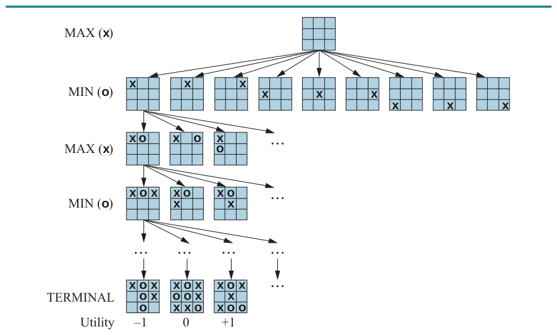
Tree size dictates whether exact search is feasible: tic-tac-toe has fewer than \(9!=362{,}880\) terminal nodes and can be solved completely, whereas chess has over \(10^{40}\) nodes and can only be searched to a limited depth.博弈树的规模决定了能否穷举求解：井字棋的终局结点少于 \(9!=362{,}880\) 个，可以完整搜索；而国际象棋结点数超过 \(10^{40}\)，只能搜索有限深度。
Practice练习
Q1. (Classification) Which of these games are deterministic, two-player, turn-taking, perfect-information, and zero-sum, and why are the others excluded? (a) chess, (b) poker, (c) backgammon, (d) a three-player board game.Q1.（分类）下列哪些博弈属于确定性、双人、轮流走子、完全信息且零和的博弈？其余各项为何不满足？（a）国际象棋，（b）扑克，（c）西洋双陆棋，（d）一种三人棋盘游戏。
Answer
- (a) Chess: Yes—it satisfies all five conditions.（a）国际象棋：满足全部五个条件。
- (b) Poker: No—shuffling introduces chance, and private hands create imperfect information.（b）扑克：不满足——洗牌带有随机性，暗牌导致非完全信息。
- (c) Backgammon: No—dice rolls make state transitions stochastic.（c）西洋双陆棋：不满足——掷骰子使状态转移具有随机性。
- (d) Three-player board game: No—with three players, payoffs become vectors rather than scalar two-player zero-sum values.（d）三人棋盘游戏：不满足——三人博弈需要向量收益，不再是双人零和模型。
Q2. (Design) Specify the six formal elements for tic-tac-toe.Q2.（设计）写出井字棋的六个形式化要素。
Answer
- \(S_0\): The empty \(3\times3\) board.\(S_0\)：空的 \(3\times3\) 棋盘。
- TO-MOVE(\(s\)): X if the board has equal numbers of X and O marks; otherwise O.TO-MOVE(\(s\))：若棋盘上 X 与 O 数量相等则轮到 X，否则轮到 O。
- ACTIONS(\(s\)): The set of empty squares in \(s\).ACTIONS(\(s\))：当前状态下所有空格的集合。
- RESULT(\(s,a\)): Board \(s\) updated with the current player's mark placed in square \(a\).RESULT(\(s,a\))：在 \(s\) 的方格 \(a\) 中填入当前走子方标记后的新棋盘。
- IS-TERMINAL(\(s\)): True if either player has three marks in a row or the board is completely full.IS-TERMINAL(\(s\))：任意一方连成三子或棋盘填满时为真。
- UTILITY(\(s,p\)): Taking X as MAX, \(+1\) if X wins, \(-1\) if O wins, and \(0\) for a draw; MIN's utility is \(-\text{UTILITY}(s,\text{MAX})\) because the game is zero-sum.UTILITY(\(s,p\))：以 X 为 MAX，X 胜得 \(+1\)、O 胜得 \(-1\)、平局得 \(0\)；因博弈零和，MIN 的效用为其相反数。
Minimax search ★★★极小极大搜索
Goal. Compute the minimax value of every node in a small game tree by hand, identify MAX's optimal first move, and state the algorithm's time and space complexity.目标。手工计算小型博弈树每个结点的极小极大值，选出 MAX 的最优首步，并准确说明时间与空间复杂度。
Core idea: Minimax backs up terminal payoffs from the leaves to the root—taking the maximum at MAX nodes and the minimum at MIN nodes—to find the highest score MAX can guarantee against an optimal opponent.核心思路：极小极大算法从叶结点向上回传终局收益，在 MAX 结点取最大值、在 MIN 结点取最小值，从而算出对抗最优对手时 MAX 能稳拿的最高得分。
The minimax value（极小极大值）of a state \(s\) is MAX's guaranteed utility when both players play optimally from \(s\) until the game terminates.状态 \(s\) 的极小极大值，就是从 \(s\) 出发双方全程采取最优策略直至终局时，MAX 所能得到的效用。
How to do it by hand手工演算步骤
- Draw the game tree and label each level as MAX or MIN, starting with MAX at the root and alternating downward.画出博弈树并自顶向下交替标出各层类型，根结点为 MAX。
- Write the given terminal utility directly beneath every leaf.在每个叶结点下方标出给定的终局效用值。
- Work bottom-up: once all children of a node have values, compute that node's value.自底向上回推：当某结点的所有子结点都已求值时，即可计算该结点的值。
- Assign each MAX node the largest child value and each MIN node the smallest child value.MAX 结点取子结点中的最大值，MIN 结点取子结点中的最小值。
- Continue to the root; the root value is the best payoff MAX can guarantee against optimal play.一路回推至根结点；根结点的值就是对抗最优对手时 MAX 稳拿的保底收益。
- Select MAX's best move as the action leading to the root child whose value matches the root value.找出值等于根结点值的那个子结点，通向它的第一步走法即为 MAX 的最佳决策。

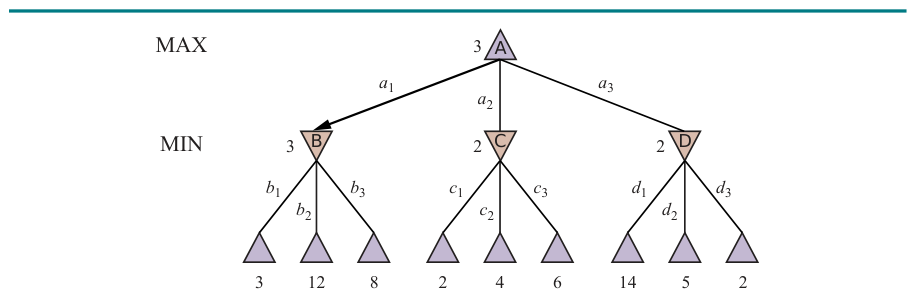
Properties算法性质
| Property性质 | Minimax极小极大 |
|---|---|
| Complete完备性 | Yes, if the game tree is finite是，只要博弈树有限 |
| Optimal最优性 | Yes, against an optimal opponent是，针对最优对手 |
| Time时间复杂度 | \(O(b^m)\) |
| Space空间复杂度 | \(O(bm)\) if all actions at each node are generated at once; \(O(m)\) if generated one at a time若每层一次生成全部动作则为 \(O(bm)\)；逐个生成则为 \(O(m)\) |
Here \(b\) is the branching factor (legal moves per position, about 35 in chess) and \(m\) is the maximum tree depth in plies (about 80 in chess). Because minimax runs depth-first, its memory requirement is linear in depth, but its \(O(b^m)\) time is intractable—chess has roughly \(35^{80}\approx10^{123}\) states, making exhaustive minimax impossible.其中 \(b\) 为分支因子（每步合法走法数，国际象棋约 35），\(m\) 为最大树深（按层计，国际象棋约 80）。极小极大按深度优先搜索，内存仅随深度线性增长，但 \(O(b^m)\) 的时间开销无法承受——国际象棋约有 \(35^{80}\approx10^{123}\) 个状态，绝无可能穷举求解。
Practice练习
Q1. (Calculation) A chess program (\(b=35\), 80 plies per game) evaluates \(10^9\) nodes per second. How long would exhaustive minimax take, and would perfect alpha–beta pruning (Section 5.4) make it feasible?Q1.（计算）某国际象棋程序（\(b=35\)，每局 80 层）每秒评估 \(10^9\) 个结点。穷举极小极大需要多久？完美排序的 α–β 剪枝（第 5.4 节）能让它变得可行吗？
Answer
- Exhaustive minimax: Evaluating \(35^{80}\approx3.4\times10^{123}\) nodes at \(10^9\) nodes/s requires \(3.4\times10^{114}\) s, or roughly \(1.1\times10^{107}\) years (using \(3.16\times10^7\) s/yr)—vastly exceeding the age of the universe (\(1.4\times10^{10}\) years).穷举极小极大：搜索 \(35^{80}\approx3.4\times10^{123}\) 个结点需 \(3.4\times10^{114}\) 秒，约 \(1.1\times10^{107}\) 年（按每年 \(3.16\times10^7\) 秒计），远超宇宙年龄（\(1.4\times10^{10}\) 年）。
- Perfect alpha–beta: Even with optimal move ordering, \(35^{40}\approx5.8\times10^{61}\) nodes still take about \(1.8\times10^{45}\) years, so a depth cutoff with a heuristic EVAL (Section 5.5) remains unavoidable.完美 α–β：即便完美排序，仍需评估 \(35^{40}\approx5.8\times10^{61}\) 个结点，耗时约 \(1.8\times10^{45}\) 年，因此必须结合深度截断与启发式评价函数 EVAL（第 5.5 节）。
Q2. (Beyond the syllabus: negamax) In a two-player zero-sum game, let \(V(s)\) be the minimax value from the viewpoint of the player to move in \(s\). Show that \(V(s)=\max_a\bigl(-V(\text{RESULT}(s,a))\bigr)\) for nonterminal \(s\), and verify it on the two-ply tree of this section.Q2.（拓展：负极大值）在双人零和博弈中，设 \(V(s)\) 为状态 \(s\) 当前走子方视角下的极小极大值。证明对任意非终局状态 \(s\) 均有 \(V(s)=\max_a\bigl(-V(\text{RESULT}(s,a))\bigr)\)，并在本节两层树上验证。
Answer
- Proof: Because utilities are zero-sum, minimizing MAX's payoff at a MIN node is identical to maximizing MIN's own payoff, which is the negative of the child's MAX-perspective value. Thus a single recursive
maxover negated child values handles both players (with terminal \(V(s)\) defined for the player to move there).证明：由于博弈零和，MIN 结点最小化 MAX 收益等价于最大化 MIN 自身收益，即对子结点中属于对手的估值取负再求最大。由此只需一段递归即可统一两类结点（终局处 \(V(s)\) 取该处轮到走子方的效用）。 - Check on the two-ply tree: All leaves are MAX-to-move positions, so \(V(\text{leaf})\) equals its utility. At the MIN level, \(V(B)=\max(-3,-12,-8)=-3\), \(V(C)=\max(-2,-4,-6)=-2\), and \(V(D)=\max(-14,-5,-2)=-2\); at the root, \(V(A)=\max(3,2,2)=3\), matching minimax.两层树验证：所有叶结点均对应轮到 MAX 走子，故 \(V(\text{leaf})\) 即原效用。在 MIN 层：\(V(B)=\max(-3,-12,-8)=-3\)，\(V(C)=-2\)，\(V(D)=-2\)；在根结点：\(V(A)=\max(3,2,2)=3\)，与极小极大一致。
Alpha–beta pruning ★★★alpha–beta 剪枝
Goal. Trace alpha–beta pruning by hand on a game tree: record the window \((\alpha,\beta)\) at every node visited, mark each cut-off, list all pruned leaves, and report the root value.目标。在博弈树上手工演算 alpha–beta 剪枝：写出每次进入结点时的窗口 \((\alpha,\beta)\)，标出每处截断，列出被剪掉的叶结点，并给出根结点值。
Core idea: Alpha–beta pruning tracks the best guaranteed alternatives along the current path and skips any subtree that can no longer improve the root decision, returning the exact same move and value as minimax.核心思路：α–β 剪枝沿当前搜索路径维护双方已稳拿的最佳保底界限，一旦发现某个分支已不可能改善上层决策便立即跳过，从而在大幅减少搜索量的同时返回与极小极大完全一致的结果。
Step 1: the two bounds第 1 步：两个界限与窗口
As depth-first search descends from the root, it passes down a pair \((\alpha,\beta)\) called the window（窗口）, initialized to \((-\infty,+\infty)\) at the root:深度优先搜索从根结点向下递归时，会沿当前路径传递一对界限 \((\alpha,\beta)\)（称为窗口），根结点初始窗口为 \((-\infty,+\infty)\)：
- \(\alpha\): the highest value MAX has already secured at any MAX ancestor along the current path (think "MAX gets at least \(\alpha\)").\(\alpha\)：沿当前路径的 MAX 祖先上，MAX 目前已经找到的最高值（可记作“MAX 至少稳拿 \(\alpha\)”）。
- \(\beta\): the lowest value MIN has already secured at any MIN ancestor along the current path (think "MIN keeps the score at most \(\beta\)").\(\beta\)：沿当前路径的 MIN 祖先上，MIN 目前已经找到的最低值（可记作“MIN 至多让得分达到 \(\beta\)”）。

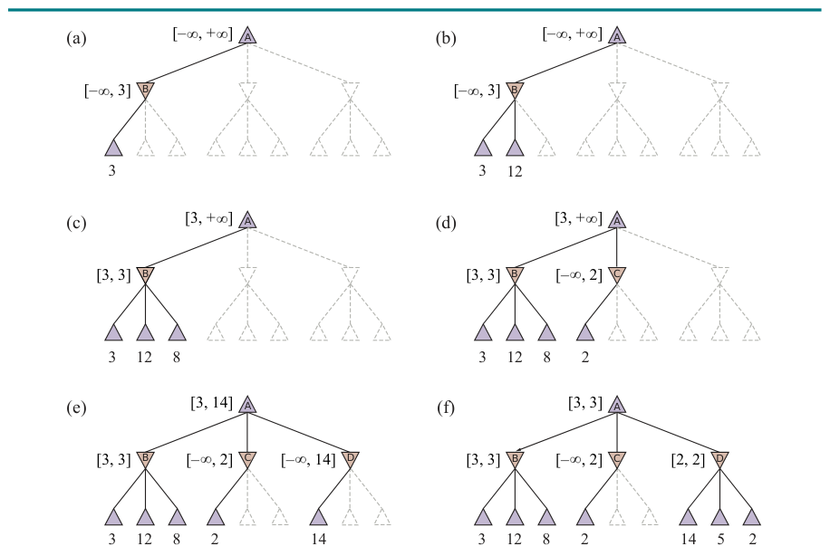
Step 2: tracing by hand第 2 步：手工演算步骤
- Start at the root with \((\alpha,\beta)=(-\infty,+\infty)\) and traverse depth-first, left to right.从根结点以初始窗口 \((-\infty,+\infty)\) 出发，按深度优先、从左到右的顺序遍历。
- Pass the node's current \((\alpha,\beta)\) down into each child call; only the child's backed-up value \(v'\) comes back up.父结点把当前的 \((\alpha,\beta)\) 向下传给每个子结点；子结点向上只回传返回值 \(v'\)，不直接修改父结点之外的窗口。
- When a child returns \(v'\): at a MAX node update \(v\leftarrow\max(v,v')\) and \(\alpha\leftarrow\max(\alpha,v)\); at a MIN node update \(v\leftarrow\min(v,v')\) and \(\beta\leftarrow\min(\beta,v)\).收到子结点返回值 \(v'\) 后：在 MAX 结点更新 \(v\leftarrow\max(v,v')\) 与 \(\alpha\leftarrow\max(\alpha,v)\)；在 MIN 结点更新 \(v\leftarrow\min(v,v')\) 与 \(\beta\leftarrow\min(\beta,v)\)。
- If \(\alpha\ge\beta\) (equivalently \(v\ge\beta\) at MAX or \(v\le\alpha\) at MIN), immediately skip the remaining children and return \(v\).一旦出现 \(\alpha\ge\beta\)（即 MAX 结点处 \(v\ge\beta\) 或 MIN 结点处 \(v\le\alpha\)），立刻截断并直接返回 \(v\)。
- Record which leaves were pruned and count how many leaves were actually evaluated.最后记下所有被剪掉的叶结点以及实际求值的叶结点总数。
Because \((\alpha,\beta)\) flows unchanged through intermediate nodes that do not tighten it, every node is tested against the bounds of all its ancestors; a cut-off triggered by an ancestor several levels higher is called a deep cut-off（深截断）.由于 \((\alpha,\beta)\) 会原样向下穿过不更新它的中间结点，每个结点实际上都会受其所有祖先界限的约束；由隔了数层的更高祖先界限触发的剪枝称为深截断。
Step 3: one complete trace第 3 步：完整演算示例
Suppose root \(A\) (MAX) has MIN children \(B, C, D\), and each has two MAX children with two leaves apiece: \(B_1=(3,5)\), \(B_2=(6,9)\), \(C_1=(4,2)\), \(C_2=(8,1)\), \(D_1=(7,8)\), and \(D_2=(9,1)\).设根结点 \(A\)（MAX）有三个 MIN 子结点 \(B, C, D\)，各自下辖两个带两片叶子的 MAX 子结点：\(B_1=(3,5)\)、\(B_2=(6,9)\)、\(C_1=(4,2)\)、\(C_2=(8,1)\)、\(D_1=(7,8)\)、\(D_2=(9,1)\)。
| Step步骤 | Node entered, window \((\alpha,\beta)\)进入结点及窗口 \((\alpha,\beta)\) | What happens执行动作 | Updated \(\alpha\), \(\beta\), and value更新后的 \(\alpha\)、\(\beta\) 与返回值 |
|---|---|---|---|
| 1 | \(A\), \((-\infty,+\infty)\) | Descend to \(B\), then \(B_1\)进入 \(B\)，再进入 \(B_1\) | |
| 2 | \(B_1\), \((-\infty,+\infty)\) | Evaluate leaves 3 and 5读取叶结点 3 和 5 | \(B_1=5\) |
| 3 | \(B\), \((-\infty,+\infty)\) | \(B_1\) returns 5\(B_1\) 返回 5 | \(\beta=5\) |
| 4 | \(B_2\), \((-\infty,5)\) | Leaf 6 satisfies \(6\ge\beta=5\): cut off, prune leaf 9叶结点 6 满足 \(6\ge\beta=5\)：截断，剪掉叶结点 9 | \(B_2\ge6\) (returns 6)\(B_2\ge6\)（返回 6） |
| 5 | \(B\) | \(\min(5,6)=5\) | \(B=5\); at \(A\), \(\alpha=5\)\(B=5\)；\(A\) 更新为 \(\alpha=5\) |
| 6 | \(C_1\), \((5,+\infty)\) | Evaluate leaves 4 and 2读取叶结点 4 和 2 | \(C_1=4\) |
| 7 | \(C\) | \(C_1\) returns 4, so \(\beta=4\le\alpha=5\): cut off, prune \(C_2\,(8,1)\)\(C_1\) 返回 4，使 \(\beta=4\le\alpha=5\)：截断，剪掉 \(C_2\,(8,1)\) | \(C\le4\) (returns 4)\(C\le4\)（返回 4） |
| 8 | \(D_1\), \((5,+\infty)\) | Evaluate leaves 7 and 8读取叶结点 7 和 8 | \(D_1=8\) |
| 9 | \(D\) | \(D_1\) returns 8\(D_1\) 返回 8 | \(\beta=8\) |
| 10 | \(D_2\), \((5,8)\) | Leaf 9 satisfies \(9\ge\beta=8\): cut off, prune leaf 1叶结点 9 满足 \(9\ge\beta=8\)：截断，剪掉叶结点 1 | \(D_2\ge9\) (returns 9)\(D_2\ge9\)（返回 9） |
| 11 | \(D\) | \(\min(8,9)=8\) | \(D=8\); at \(A\), \(\alpha=8\)\(D=8\)；\(A\) 更新为 \(\alpha=8\) |
| 12 | \(A\) | \(\max(5,4,8)=8\) | Root value is 8根结点值为 8 |
The root value is 8 and MAX chooses move \(D\), evaluating only 8 of the 12 leaves while pruning leaf 9 (under \(B_2\)), leaves 8 and 1 (\(C_2\)), and leaf 1 (under \(D_2\)). Checking with full minimax gives \(B=5\), \(C=4\), \(D=8\), and \(A=8\)—an identical root result.根结点最终值为 8，MAX 走法选 \(D\)；12 个叶结点中仅求值 8 个，剪掉了 \(B_2\) 下的 9、\(C_2\) 下的 8 与 1，以及 \(D_2\) 下的 1。用完整极小极大校验可得 \(B=5\)、\(C=4\)、\(D=8\)、\(A=8\)，结果完全一致。
Notice that a cut-off node returns only a bound, not its exact minimax value: in step 7, \(C\) is proven to be at most 4 (its true value might be lower, though here it happens to be 4). Because MAX already holds 5 at \(A\) and the root starts with an infinite window \((-\infty,+\infty)\), the root value is guaranteed to be exact.注意，被截断结点返回的只是一个界限而非精确极小极大值：例如第 7 步仅证明了 \(C\le4\)（若 \(C_2\) 含更小值，\(C\) 可能更低）。由于 \(A\) 处已握有 \(\alpha=5\)，而根结点窗口为无穷区间 \((-\infty,+\infty)\)，因此根结点返回值必然精确。
Practice练习
Q1. (Trace) Apply alpha–beta pruning left to right to the tree with root \(A\) (MAX) and MIN children \(X=(7,4,9)\), \(Y=(3,8,6)\), and \(Z=(6,2,9)\). Give the entry window for each MIN node, list the pruned leaves, and state the root value.Q1.（手工演算）对根结点 \(A\)（MAX）及 MIN 子结点 \(X=(7,4,9)\)、\(Y=(3,8,6)\)、\(Z=(6,2,9)\) 从左到右执行 α–β 剪枝。写出进入各 MIN 结点时的窗口、被剪掉的叶结点与根结点值。
Answer
- Subtree \(X\): Entered with \((-\infty,+\infty)\); all three leaves are evaluated, giving \(X=4\), so \(A\) sets \(\alpha=4\).子树 \(X\)：以窗口 \((-\infty,+\infty)\) 进入；读取全部三片叶子得 \(X=4\)，故 \(A\) 更新 \(\alpha=4\)。
- Subtree \(Y\): Entered with \((4,+\infty)\); the first leaf \(3\le4\) triggers a cut-off, pruning leaves 8 and 6.子树 \(Y\)：以窗口 \((4,+\infty)\) 进入；首片叶子 \(3\le4\) 立即触发截断，剪掉叶子 8 与 6。
- Subtree \(Z\): Entered with \((4,+\infty)\); leaf 6 tightens \(\beta=6\), then leaf \(2\le4\) triggers a cut-off, pruning leaf 9.子树 \(Z\)：以窗口 \((4,+\infty)\) 进入；叶子 6 将 \(\beta\) 收紧为 6，随后叶子 \(2\le4\) 触发截断，剪掉叶子 9。
- Result: Root \(A=\max(4,3,2)=4\) (best move \(X\)); 6 of 9 leaves are evaluated, and leaves 8, 6, and 9 are pruned.结果：根结点 \(A=\max(4,3,2)=4\)（最佳走法为 \(X\)）；9 片叶子中求值 6 片，被剪掉的叶子为 8、6、9。
Q2. (Explain) Why can the remaining children of a MIN node be skipped as soon as \(v\le\alpha\), and why can this never change the root's decision?Q2.（解释）为何当 MIN 结点满足 \(v\le\alpha\) 时可以立即跳过其余子结点，且这绝不会改变根结点的决策？
Answer
- Local bound: Because MIN takes the minimum, the node's final value cannot exceed its running minimum \(v\), so its value is at most \(\alpha\).局部上界：MIN 结点取最小值，因此该结点最终值绝不会超过当前已知的 \(v\)，即至多为 \(\alpha\)。
- Ancestor invariance: The bound \(\alpha\) came from a MAX ancestor that already holds an alternative worth at least \(\alpha\), so that ancestor's maximum—and every value above it up to the root—cannot change (the \(v\ge\beta\) case at a MAX node is symmetric).祖先不变性：\(\alpha\) 来自路径上层某 MAX 祖先已拿到的保底选择（至少值 \(\alpha\)），因此该祖先的取大结果及其上方直到根结点的所有值都不会改变（MAX 结点处 \(v\ge\beta\) 同理）。
- Root exactness: Formally, a search with window \((\alpha,\beta)\) returns the exact value if it lies strictly inside \((\alpha,\beta)\) and a valid one-sided bound otherwise; with the root window \((-\infty,+\infty)\), the root value is always exact.根值精确性：形式地说，窗口为 \((\alpha,\beta)\) 的调用在真值严格落于区间内时返回精确值，否则返回正确一侧的界；根结点窗口为 \((-\infty,+\infty)\)，故根值必然精确。
思路：MIN 结点已确定 ≤ α，而上层 MAX 已有 ≥ α 的选择。
Q3. (Trace with a deep cut-off) Root \(A\) (MAX) has MIN children \(B, C\); \(B\) has MAX children \(D, E\) and \(C\) has MAX children \(F, G\); each of \(D, E, F, G\) has two MIN children with two leaves each:Q3.（含深截断的演算）根结点 \(A\)（MAX）有 MIN 子结点 \(B, C\)；\(B\) 有 MAX 子结点 \(D, E\)，\(C\) 有 MAX 子结点 \(F, G\)；\(D, E, F, G\) 各有两个 MIN 子结点，每个 MIN 子结点各带两片叶子：
D: H = (5, 6) I = (2, 6) F: L = (7, 2) M = (4, 2)
E: J = (7, 1) K = (8, 9) G: N = (6, 5) O = (3, 7)
Apply alpha–beta left to right. Which leaves are pruned, and which cut-off is deep?从左到右应用 α–β 剪枝。哪些叶结点被剪掉？哪一处属于深截断？
Answer
- Subtree \(B\): \(H=\min(5,6)=5\) sets \(\alpha=5\) at \(D\); \(I\) enters with \((5,+\infty)\), cuts off at leaf \(2\le5\) (pruning 6), giving \(D=5\). Then \(E\) enters with \((-\infty,5)\): \(J=\min(7,1)=1\), and \(K\) enters with \((1,5)\), reads \((8,9)\) to return 8, giving \(E=8\ge5\) and \(B=\min(5,8)=5\), so \(A\) sets \(\alpha=5\).子树 \(B\)：\(H=\min(5,6)=5\) 使 \(D\) 置 \(\alpha=5\)；\(I\) 以 \((5,+\infty)\) 进入并在叶结点 \(2\le5\) 处截断（剪掉 6），得 \(D=5\)。随后 \(E\) 以 \((-\infty,5)\) 进入：\(J=1\)，\(K\) 以 \((1,5)\) 读取 8 和 9 返回 8，故 \(E=8\)、\(B=\min(5,8)=5\)，\(A\) 更新 \(\alpha=5\)。
- Subtree \(C\): Entered with \((5,+\infty)\). \(L=\min(7,2)=2\), and \(M\) enters with \((5,+\infty)\), cutting off at leaf \(4\le5\) (pruning 2), giving \(F=\max(2,4)=4\). At \(C\), \(4\le\alpha=5\) triggers a cut-off, pruning all of subtree \(G\,(6,5,3,7)\). Root \(A=\max(5,4)=5\) (move \(B\)).子树 \(C\)：以 \((5,+\infty)\) 进入。\(L=2\)，随后 \(M\) 以 \((5,+\infty)\) 进入，在叶结点 \(4\le5\) 处截断（剪掉 2），得 \(F=4\)。在 \(C\) 处因 \(4\le\alpha=5\) 发生截断，整棵子树 \(G\,(6,5,3,7)\) 被剪掉。根结点 \(A=5\)（走法 \(B\)）。
- Summary & deep cut-off: 10 of 16 leaves are evaluated (6 pruned: 6 under \(I\), 2 under \(M\), and all 4 under \(G\)). The cut-off at \(M\) is a deep cut-off because its parent \(F\) only produced 2; the pruning bound \(\alpha=5\) came from root \(A\) three levels above.汇总与深截断：16 片叶子中求值 10 片（剪掉 \(I\) 下的 6、\(M\) 下的 2 及 \(G\) 下的 4 片）。\(M\) 处的截断属于深截断：其父结点 \(F\) 本身仅得到 2，触发截断的界 \(\alpha=5\) 继承自三层之上的根结点 \(A\)。
Move ordering and search efficiency ★★★走法排序与搜索效率
Goal. Demonstrate on a tree how move ordering increases pruning, state the node counts for worst, random, and perfect ordering, and compute the search depth achievable within a fixed time budget.目标。在博弈树上展示走法排序如何增加剪枝，给出最坏、随机与完美排序下的结点数，并计算固定时间内可达的搜索深度。
Core idea: Alpha–beta prunes most aggressively when the strongest moves are explored first, tightening bounds early and shrinking the effective branching factor from \(b\) to \(\sqrt{b}\) under perfect ordering.核心思路：越早考察最强的走法，窗口界限就收得越紧，剪枝也越多；在完美排序下，有效分支因子可从 \(b\) 降到 \(\sqrt{b}\)。
Recall the two-ply tree from Section 5.2, where MIN node \(D\) had leaves \((14,5,2)\): because MIN's strongest reply (2) sat last, nothing under \(D\) was pruned. Reordering \(D\)'s leaves to \((2,5,14)\) triggers an immediate cut-off at \(2\le\alpha=3\), reducing total leaf evaluations from 7 to 5 out of 9 (3 under \(B\), 1 under \(C\), 1 under \(D\)).回看第 5.2 节的两层树，其中 MIN 结点 \(D\) 的叶结点为 \((14,5,2)\)：由于最强的反驳走法（2）排在最后，\(D\) 之下没能发生剪枝。若重排为 \((2,5,14)\)，首片叶子 \(2\le\alpha=3\) 便会立刻截断 \(D\)，使 9 片叶子中需要求值的总数从 7 片降至 5 片（\(B\) 下 3 片、\(C\) 下 1 片、\(D\) 下 1 片）。
The optimal ordering principle is simple: try the child most likely to be best first—the highest-valued child at MAX nodes and the lowest-valued child at MIN nodes.走法排序的原则很直白：始终先试最可能最好的子结点——MAX 结点优先试得分最高的，MIN 结点优先试得分最低的。
| Ordering排序方式 | Nodes examined检查的结点数 | Effective branching factor有效分支因子 |
|---|---|---|
| Worst (best moves last)最坏（最优走法排在最后） | \(O(b^m)\), no pruning\(O(b^m)\)，无剪枝 | \(b\) |
| Random随机 | About \(O(b^{3m/4})\) for moderate \(b\)中等 \(b\) 时约为 \(O(b^{3m/4})\) | About \(b^{3/4}\)约为 \(b^{3/4}\) |
| Perfect (best first)完美（最优者优先） | \(O(b^{m/2})\) | \(\sqrt b\) |
Here \(b\) is the branching factor and \(m\) is the depth in plies. Because the effective branching factor drops from \(b\) to \(\sqrt{b}\) (roughly 6 instead of 35 in chess), perfect alpha–beta searches twice as deep as plain minimax in the same amount of time.这里 \(b\) 是分支因子，\(m\) 是以层计的深度。由于有效分支因子从 \(b\) 降到了 \(\sqrt{b}\)（国际象棋中从 35 降到约 6），完美排序的 α–β 能在相同时间内搜出大约两倍的深度。
Calculation: depth reached in the same time计算：同等时间下的搜索深度
Getting good ordering如何实现良好的走法排序
True perfect ordering is impossible in advance because it presupposes knowing the best move, but three inexpensive heuristics come remarkably close:真正的完美排序无法事先做到，因为这等于提前知道最佳走法；不过，工程上有三种廉价启发式能让排序逼近理想情况：
- Static ordering: Domain rules rank moves before searching—in chess, try captures first, then threats, forward moves, and finally backward moves.静态排序：利用领域规则预先排序——例如国际象棋中优先尝试吃子，其次威胁、前进走法，最后才考虑后退。
- Iterative deepening（迭代加深）with killer moves（杀手走法）: Search depth 1, 2, 3, … in stages, saving the best moves (killer moves) found at shallower depths so the next deeper pass tests them first.迭代加深结合杀手走法：按深度 1、2、3……逐层递增搜索，记录浅层找到的强力走法（杀手走法），使下一轮更深搜索优先尝试它们。
- Transposition table（置换表）: Cache the value and best move of previously searched positions so that reaching the same board via a different move sequence (a transposition) reuses the stored result without re-searching.置换表：缓存已搜索局面的估值与最佳走法，当不同走子顺序汇合到同一局面（即换位）时直接查表复用，避免重复搜索。
Re-searching shallower depths during iterative deepening adds negligible overhead because the deepest level overwhelmingly dominates the total node count.迭代加深看似重复搜索了浅层，但由于最深一层的结点数占绝对主导，浅层重复带来的额外开销微乎其微。
Practice练习
Q1. (Reordering) In the tree from Section 5.3 Practice Q1 (\(X=(7,4,9)\), \(Y=(3,8,6)\), \(Z=(6,2,9)\)), reorder every node's children to maximize pruning. How many leaves are then evaluated, and could any ordering do better?Q1.（重排）针对第 5.3 节练习 Q1 的博弈树（\(X=(7,4,9)\)、\(Y=(3,8,6)\)、\(Z=(6,2,9)\)），重新排列各结点的后继顺序以实现最多剪枝。此时有多少片叶子被求值？还能更少吗？
Answer
- Reordered tree: Place the smallest leaf first under each MIN node: \(X=(4,7,9)\), \(Y=(3,6,8)\), and \(Z=(2,6,9)\). At the MAX root, \(X\) (value 4) is already the highest-valued child and stays first.重排结果：每个 MIN 结点下把最小叶子放最前：\(X=(4,7,9)\)、\(Y=(3,6,8)\)、\(Z=(2,6,9)\)；MAX 根结点下最优子结点 \(X\)（值 4）已在首位无需调整。
- Trace & count: \(X\) evaluates all 3 leaves to set \(\alpha=4\); \(Y\) reads leaf \(3\le4\) and cuts off after 1 leaf; \(Z\) reads leaf \(2\le4\) and cuts off after 1 leaf, totaling \(3+1+1=5\) leaves (down from 6).演算与计数：\(X\) 读完 3 片叶子设 \(\alpha=4\)；\(Y\) 读首叶 \(3\le4\) 截断（1 片）；\(Z\) 读首叶 \(2\le4\) 截断（1 片），共求值 \(3+1+1=5\) 片（原为 6 片）。
- Optimality: No ordering can evaluate fewer leaves: for \(b=3,d=2\), \(L_{\min}=3^1+3^1-1=5\) (all \(b\) leaves of the best child plus one refuting leaf for each of the \(b-1\) other children).最优性验证：无法更少——对 \(b=3,d=2\)，理论下界 \(L_{\min}=3^1+3^1-1=5\)（最优子结点的全部 \(b\) 片叶子加上其余 \(b-1\) 个子结点各 1 片反驳叶子）。
Q2. (Calculation) With minimax a program reaches 6 plies in its time limit (\(b=35\)). Assuming time is proportional to nodes visited, how deep can alpha–beta reach under (a) perfect ordering and (b) random ordering? (c) What is the fewest leaves alpha–beta must evaluate for \(b=3, d=4\)?Q2.（计算）极小极大在限时内（\(b=35\)）可搜 6 层。假设耗时与结点数成正比，同等时间内 α–β 在（a）完美排序和（b）随机排序下各能搜多深？（c）当 \(b=3,d=4\) 时，α–β 至少需评估多少片叶子？
Answer
- (a) Perfect ordering: With budget \(N=35^6\), solving \(35^{m/2}=35^6\) gives \(m=12\) plies.（a）完美排序：预算为 \(N=35^6\)，由 \(35^{m/2}=35^6\) 解得 \(m=12\) 层。
- (b) Random ordering: Solving \(35^{3m/4}=35^6\) gives \(m=8\) plies.（b）随机排序：由 \(35^{3m/4}=35^6\) 解得 \(m=8\) 层。
- (c) Minimum leaves (\(b=3,d=4\)): \(L_{\min}=3^2+3^2-1=17\) out of \(3^4=81\) leaves.（c）最少叶结点数（\(b=3,d=4\)）：81 片叶子中至少需看 \(L_{\min}=3^2+3^2-1=17\) 片。
Q3. (Explain) (a) What is a transposition table and what work does it avoid? (b) How do iterative deepening and killer moves improve alpha–beta, and why is the repeated work acceptable?Q3.（解释）（a）什么是置换表？它省去了什么开销？（b）迭代加深和杀手走法如何提升 α–β 效率？为何浅层重复搜索的代价可以接受？
Answer
- (a) Transposition table: Different move sequences often lead to the same board position; caching each searched position's value in a hash table avoids re-searching its entire subtree whenever that position reappears.（a）置换表：不同走子顺序常到达同一局面；将已搜局面的估值存入哈希表后，再次遇到同一局面时便可直接复用结果，省去整棵子树的重复搜索。
- (b) Iterative deepening & killer moves: Searching depths \(1,2,3,\dots\) ranks moves and stores strong refutations (killer moves) so each deeper pass tries them first, pruning earlier.（b）迭代加深与杀手走法：按深度 \(1,2,3,\dots\) 逐层推进时排序走法并记下强力反驳（杀手走法），使下一轮深搜先试强手、更早剪枝。
- Why repeated passes are cheap: The bottom layer dominates: for \(b=35\), depths 1–5 visit \(\sum_{k=1}^5 35^k=54{,}066{,}635\) nodes—just 2.9% more than depth 5 alone (\(52{,}521{,}875\))—and better ordering repays it.为何浅层重复极划算：最底层结点占绝对大头——\(b=35\) 时 1–5 层总计 \(54{,}066{,}635\) 个结点，仅比单搜第 5 层（\(52{,}521{,}875\)）多 2.9%，而排序收益远超该代价。
Heuristic alpha–beta search ★★启发式 alpha–beta 搜索
Goal. Explain why practical game programs cut off search early, how an evaluation function is constructed and computed, and what quiescence search, the horizon effect, and forward pruning mean.目标。解释实际博弈程序为何必须提前截断搜索，说明评价函数的构造与计算方式，并准确区分静态搜索、地平线效应与前向剪枝。
Core idea: Because deep games like chess cannot reach terminal states within move time limits, programs halt search at a cutoff depth and estimate the position's value using a fast heuristic evaluation function.核心思路：像国际象棋这样的深博弈无法在限时内搜到终局，因此程序必须在固定深度截断，改用快速启发式评价函数估算当前局面的胜算。
Even with optimal ordering, chess cannot be searched to its terminal leaves. Real programs therefore replace IS-TERMINAL with a cutoff test（截断测试）IS-CUTOFF (typically a depth limit) and replace UTILITY with a heuristic evaluation function（评价函数）EVAL that agrees with UTILITY on terminal states, runs quickly, and correlates strongly with actual winning probability.即便走法排序完美，国际象棋也无法穷尽到底。实际程序因此用截断测试 IS-CUTOFF（通常基于深度上限）替代终局测试，并用启发式评价函数 EVAL 替代 UTILITY——EVAL 必须在终局处与 UTILITY 一致、计算极快且与真实胜率高度正相关。
A weighted linear sum assumes features contribute independently, though strong programs also add nonlinear interaction terms (such as a bonus for retaining a bishop pair). For example, if White is up one rook (\(+5\)) and down two pawns (\(-2\)), then \(\text{EVAL}=5-2=+3\), representing a three-pawn advantage.加权线性形式假设各特征独立叠加，但强力程序常加入非线性交互项（如双象配合加分）。例如白方多一车（\(+5\)）少两兵（\(-2\)）时，\(\text{EVAL}=5-2=+3\)，即领先相当于三个兵的局面优势。
Stopping at a fixed depth creates two classic failure modes:在固定深度强行截断搜索会引发两个典型问题：
- Nonquiescent positions & quiescence search: A depth cutoff may land mid-exchange—right after Black captures a pawn, just before White recaptures Black's queen—causing a static material count to misjudge the board. Quiescence search（静态搜索）restricts EVAL to quiet states, extending unstable positions (usually along capture moves only) until the exchange settles.非静止局面与静态搜索：截断深度恰好落在兑子半途（如黑方刚吃一兵、白方下一步即能反吃黑后）时，静态数子力会严重误判。静态搜索要求只对安静局面调用 EVAL，对存在吃子等剧烈波动的局面继续延伸搜索（通常只看吃子走法）直至局面平稳。
- Horizon effect & singular extensions: When an unavoidable loss lies just beyond the horizon, delaying tactics (like sacrificial checks) push the loss past the depth limit so the stalling move looks falsely good—the horizon effect（地平线效应）. One remedy is singular extensions（奇异扩展）, which search a single clearly superior move deeper than the standard limit.地平线效应与奇异扩展：若一个必然的丢子发生在搜索地平线附近，拖延战术（如连续弃兵将军）能把丢子推到深度限制之外，使程序误判拖延步为好棋，这就是地平线效应。常用对策奇异扩展会对明显独一档的最佳走法突破深度上限继续深搜。
By contrast with provably safe alpha–beta pruning, forward pruning（前向剪枝）—such as beam search, ProbCut, and late move reduction（后期走法缩减）—discards moves that merely look unpromising, trading safety for speed. Practical engines also bypass search entirely at both ends of a game using an opening book（开局库）and an endgame tablebase（残局库）.与严格安全的 α–β 剪枝不同，前向剪枝（如集束搜索、ProbCut 与后期走法缩减）直接丢弃看似不佳的分支，用牺牲最优性换取速度；此外，实战引擎在开局与残局阶段常直接查询开局库与残局库以取代搜索。
Practice练习
Q1. (Calculation) (a) White has Q, 2R, B, 2N, 6P and Black has Q, R, 2B, N, 7P; evaluate the position from White's perspective using standard material weights (P=1, N=3, B=3, R=5, Q=9). (b) A category of positions ends in 70% wins, 10% losses, and 20% draws (utilities 1, 0, ½); compute its expected-value evaluation.Q1.（计算）（a）白方有 Q、2R、B、2N、6P，黑方有 Q、R、2B、N、7P；用标准加权线性子力函数（P=1, N=3, B=3, R=5, Q=9）从白方视角估值。（b）某类局面中 70% 胜、10% 负、20% 和（效用分别为 1、0、½），求其期望值评价。
Answer
- (a) Material evaluation: White-minus-Black piece differences are P: \(-1\), N: \(+1\), B: \(-1\), R: \(+1\), Q: \(0\), giving \(\text{EVAL}=1(-1)+3(1)+3(-1)+5(1)+9(0)=+4\) (equivalent to a 4-pawn lead; check: \(34-30=4\)).（a）子力估值：白减黑的棋子数量差为 P \(-1\)、N \(+1\)、B \(-1\)、R \(+1\)、Q \(0\)，故 \(\text{EVAL}=1(-1)+3(1)+3(-1)+5(1)+9(0)=+4\)（白方领先相当于 4 兵；校验：\(34-30=4\)）。
- (b) Expected value: \(0.7\cdot1+0.1\cdot0+0.2\cdot\tfrac12=0.8\).（b）期望估值：\(0.7\cdot1+0.1\cdot0+0.2\cdot\tfrac12=0.8\)。
Q2. (Explain) A program stops at a fixed depth and evaluates material. (a) Describe a position where this fails and explain how quiescence search fixes it. (b) Define the horizon effect and give one remedy.Q2.（解释）某程序在固定深度截断并按子力估值。（a）举出一个会误判的局面并说明静态搜索如何修复。（b）解释地平线效应并给出一种缓解方法。
Answer
- (a) Nonquiescent cutoff & quiescence search: If the depth limit lands right after Black captures a knight and two pawns, while White's immediate reply captures Black's queen, a raw material count wrongly scores Black ahead. Quiescence search fixes this by returning false from IS-CUTOFF whenever captures or major tactical threats remain pending, continuing search until a quiet state is reached.（a）非静止截断与静态搜索：若截断恰好落在黑方刚吃一马两兵、而白方紧接着就能吃掉黑后的瞬间，单纯数子力会误判黑方占优。静态搜索通过在存在未决吃子或关键战术威胁时继续深搜（通常只搜吃子），直到局面平静后再调用 EVAL。
- (b) Horizon effect & singular extensions: An inevitable loss can be pushed beyond the search horizon using delaying tactics like sacrificial checks, making those wasteful moves appear artificially good. Singular extensions mitigate this by extending clearly standout moves beyond the normal depth limit to uncover the delayed loss.（b）地平线效应与奇异扩展：程序通过带将军的弃子等拖延走法把不可避免的损失推到搜索深度以外，从而误以为拖延步有利。奇异扩展通过对明显优于其余走法的“独一强手”额外加深搜索，及时暴露视野外的损失。
Terms to recognize ★需要认识的术语
| Term术语 | What to know核心要点 |
|---|---|
| Multiplayer game多人博弈 | Each node stores a utility vector; the player to move picks the child maximizing its own component.每个结点保存一个效用向量；轮到行动的玩家选择自身分量最大的子结点。 |
| Conditional plan条件计划 | MAX's complete strategy specifying a countermove to every possible MIN reply.MAX 的完整策略：针对 MIN 每一种可能应对都预设好了回击走法。 |
| Negamax负极大值算法（Negamax） | Single recursion for zero-sum games: \(V(s)=\max_a(-V(\text{RESULT}(s,a)))\).零和博弈中合并两类结点的单一递归：\(V(s)=\max_a(-V(\text{RESULT}(s,a)))\)。 |
| Shannon Type A and Type B香农 A 型与 B 型策略 | Type A searches all legal moves to a fixed depth; Type B prunes weak-looking moves to search promising lines deeper.A 型将所有走法搜至固定深度（宽而浅）；B 型舍弃看似较差的分支而沿优势线路深搜（深而窄）。 |
| Expected-value evaluation期望值评价 | EVAL of a position category equals the sum of each outcome's probability fraction times its utility.某类局面的 EVAL 等于各可能终局结果的比例乘以其效用之和。 |
| Retrograde analysis逆行分析（逆向分析） | Builds endgame tablebases by labeling terminal wins/losses first and working backward via reversed moves.构造残局库的方法：先标定所有终局胜负，再沿反向走法一步步倒推整张状态图。 |
Exam-style questions考试题型练习
Q1. (Trace, 20 marks) Root \(A\) (MAX) has MIN children \(B, C\); \(B\) has MAX children \(D, E\) and \(C\) has MAX children \(F, G\); each of \(D, E, F, G\) has two MIN children with two leaves each:Q1.（手工演算，20 分）根结点 \(A\)（MAX）有 MIN 子结点 \(B, C\)；\(B\) 有 MAX 子结点 \(D, E\)，\(C\) 有 MAX 子结点 \(F, G\)；\(D, E, F, G\) 各有两个 MIN 子结点，每个 MIN 子结点下各带两片叶子：
D: H = (9, 2) I = (1, 9) F: L = (1, 7) M = (4, 5)
E: J = (6, 4) K = (5, 1) G: N = (9, 7) O = (1, 2)
(a) Compute the minimax value of every node and MAX's best move (6 marks). (b) Apply alpha–beta left to right: state the entry window at each node, mark cut-offs, list pruned leaves, and count evaluated leaves (10 marks). (c) Reorder the successors to evaluate as few leaves as possible; report the count and verify whether it is optimal (4 marks).（a）计算每个结点的极小极大值以及 MAX 的最佳走法（6 分）。（b）从左到右执行 α–β 剪枝：给出进入每个结点时的窗口、标出截断、列出被剪掉的叶子并统计实际求值的叶子数（10 分）。（c）重排后继顺序使求值叶子数最少，给出该数目并检验是否为理论最小值（4 分）。
Answer
(a) Minimax values:（a）极小极大值：
- Depth 3 (MIN): \(H=2\), \(I=1\), \(J=4\), \(K=1\), \(L=1\), \(M=4\), \(N=7\), \(O=1\).第 3 层（MIN）：\(H=2, I=1, J=4, K=1, L=1, M=4, N=7, O=1\)。
- Depth 2 (MAX) & Depth 1 (MIN): \(D=\max(2,1)=2\), \(E=\max(4,1)=4\), \(F=\max(1,4)=4\), \(G=\max(7,1)=7\); \(B=\min(2,4)=2\), \(C=\min(4,7)=4\).第 2 层（MAX）与第 1 层（MIN）：\(D=2, E=4, F=4, G=7\)；\(B=\min(2,4)=2\)，\(C=\min(4,7)=4\)。
- Root (MAX): \(A=\max(2,4)=4\), so MAX's best move is to \(C\).根结点（MAX）：\(A=\max(2,4)=4\)，MAX 的最佳走法为走向 \(C\)。
(b) Left-to-right alpha–beta trace:（b）从左到右 α–β 演算表：
| Node结点 | Window on entry入口窗口 | What happens执行过程 | Returns返回值与更新 |
|---|---|---|---|
| \(A\) | \((-\infty,+\infty)\) | Explore \(B\) first, then \(C\)先探索 \(B\)，再探索 \(C\) | 4 |
| \(B, D\) | \((-\infty,+\infty)\) | \(D\) expands \(H\) and \(I\)\(D\) 依次读取 \(H, I\) | \(B=2\), \(D=2\) |
| \(H\) | \((-\infty,+\infty)\) | Reads leaves 9 and 2读取叶结点 9、2 | 2 (sets \(\alpha=2\) at \(D\))2（\(D\) 置 \(\alpha=2\)） |
| \(I\) | \((2,+\infty)\) | Leaf \(1\le2\): cut off, prune leaf 9叶结点 \(1\le2\)：截断，剪掉叶子 9 | 1 |
| \(E\) | \((-\infty,2)\) | \(J\) reads \((6,4)\to4\); \(4\ge\beta=2\) cuts off, pruning \(K\,(5,1)\)\(J\) 读 6、4 得 4；\(4\ge\beta=2\) 截断，剪掉 \(K\,(5,1)\) | 4 |
| \(C, F\) | \((2,+\infty)\) | \(F\) expands \(L\) and \(M\)\(F\) 依次读取 \(L, M\) | \(F=4\) (sets \(\beta=4\) at \(C\))\(F=4\)（\(C\) 置 \(\beta=4\)） |
| \(L\) | \((2,+\infty)\) | Leaf \(1\le2\): deep cut-off via \(A\)'s \(\alpha\), prune leaf 7叶结点 \(1\le2\)：由 \(A\) 传下的 \(\alpha\) 触发深截断，剪掉叶子 7 | 1 |
| \(M\) | \((2,+\infty)\) | Reads leaves 4 and 5读取叶结点 4、5 | 4 |
| \(G\) | \((2,4)\) | \(N\) reads \((9,7)\to7\); \(7\ge\beta=4\) cuts off, pruning \(O\,(1,2)\)\(N\) 读 9、7 得 7；\(7\ge\beta=4\) 截断，剪掉 \(O\,(1,2)\) | 7 |
Root value is 4 with move \(C\); 10 of 16 leaves are evaluated, and the 6 pruned leaves are 9 (under \(I\)), 5 and 1 (under \(K\)), 7 (under \(L\)), and 1 and 2 (under \(O\)).根结点值为 4（走法 \(C\)）；16 片叶子中求值 10 片，被剪掉的 6 片叶子为 \(I\) 下的 9、\(K\) 下的 5 与 1、\(L\) 下的 7，以及 \(O\) 下的 1 与 2。
(c) Optimal reordering:（c）最优重排：
- Ordering rule: Put highest-valued children first at MAX nodes (\(A: C,B\); \(D: H,I\); \(E: J,K\); \(F: M,L\); \(G: N,O\)) and lowest-valued children first at MIN nodes (\(C: F,G\); \(B: D,E\); with leaves in ascending order under every MIN node).排序规则：MAX 结点优先排高分孩子（\(A: C,B\)；\(D: H,I\)；\(E: J,K\)；\(F: M,L\)；\(G: N,O\)），MIN 结点优先排低分孩子（\(C: F,G\)；\(B: D,E\)；且所有叶结点按升序排列）。
- Count & optimality: \(M\) reads 4, 5 (\(F=4\)); \(L\) reads 1 and cuts off; \(N\) reads 7, 9 and \(G\) cuts off (\(7\ge4\)); under \(B\), \(H\) reads 2 and \(I\) reads 1 (both \(\le\alpha=4\), cutting off \(D\) and then \(B\), pruning \(E\)). This evaluates \(2+1+2+1+1=7\) leaves, which matches the theoretical minimum \(L_{\min}=2^2+2^2-1=7\) for \(b=2,d=4\).叶结点计数与最优性：\(M\) 读 4、5 得 \(F=4\)；\(L\) 读 1 截断；\(N\) 读 7、9 后 \(G\) 截断；\(B\) 下 \(H\) 读 2、\(I\) 读 1（均 \(\le4\) 截断）从而截断 \(B\) 并剪掉 \(E\)。共求值 \(2+1+2+1+1=7\) 片叶子，恰好等于 \(b=2,d=4\) 时的理论下界 \(L_{\min}=2^2+2^2-1=7\)。
思路：先画窗口再判断剪枝；重排时让每个 MAX 结点先看最大的、MIN 结点先看最小的。
Q2. (Explain and prove, 12 marks) (a) Define \(\alpha\) and \(\beta\) in alpha–beta search and state the cut-off conditions (4 marks). (b) Prove that a cut-off at a MIN node with \(v\le\alpha\) cannot change the root's minimax value (4 marks). (c) State the asymptotic node counts under worst, random, and perfect ordering, the effective branching factor in the perfect case, and two techniques that improve move ordering (4 marks).Q2.（解释与证明，12 分）（a）定义 α–β 搜索中的 \(\alpha\) 与 \(\beta\)，并写出截断条件（4 分）。（b）证明在 MIN 结点处因 \(v\le\alpha\) 触发截断绝不会改变根结点的极小极大值（4 分）。（c）写出最坏、随机与完美排序下的渐近结点数、完美情况的有效分支因子以及两种改进排序的技术（4 分）。
Answer
- (a) Definitions & cut-offs: \(\alpha\) is the highest value found so far for MAX on the path from the root, and \(\beta\) is the lowest value found so far for MIN on that path. A MAX node cuts off and returns \(v\) when \(v\ge\beta\); a MIN node cuts off when \(v\le\alpha\) (both signify \(\alpha\ge\beta\)).（a）定义与截断条件：\(\alpha\) 为从根到当前结点路径上 MAX 迄今找到的最高保底值，\(\beta\) 为该路径上 MIN 迄今找到的最低保底值。MAX 结点在 \(v\ge\beta\) 时截断返回 \(v\)，MIN 结点在 \(v\le\alpha\) 时截断（均等价于 \(\alpha\ge\beta\)）。
- (b) Safety proof: Because MIN takes the minimum, the MIN node \(n\) has final minimax value at most \(v\le\alpha\). Higher up the path, some MAX ancestor \(m\) already has another child worth at least \(\alpha\ge\text{value}(n)\), so replacing \(n\) with any value \(\le\alpha\)—or skipping its remaining children—cannot alter \(m\)'s maximum or any node above \(m\) up to the root (the MAX cut-off \(v\ge\beta\) is symmetric).（b）安全性证明：MIN 取最小值，故 MIN 结点 \(n\) 的真实极小极大值至多为 \(v\le\alpha\)。在路径上层存在某 MAX 祖先 \(m\) 已拥有价值至少为 \(\alpha\ge\text{value}(n)\) 的备选子结点，故用任何 \(\le\alpha\) 的界代替 \(n\)（即跳过其余孩子）都不会改变 \(m\) 的取值及更高层直到根结点的值（MAX 结点 \(v\ge\beta\) 对称）。
- (c) Complexity & ordering techniques: Node counts are \(O(b^m)\) (worst), \(\approx O(b^{3m/4})\) (random), and \(O(b^{m/2})\) (perfect, effective branching factor \(\sqrt{b}\), doubling depth). Ordering is improved by static domain heuristics (captures before quiet moves), iterative deepening with killer moves, and transposition tables.（c）复杂度与排序技术：结点数在最坏、随机、完美排序下分别为 \(O(b^m)\)、约 \(O(b^{3m/4})\) 与 \(O(b^{m/2})\)（完美排序有效分支因子 \(\sqrt{b}\)，深度翻倍）。改进方法包括静态启发式（先吃子后普通走法）、结合杀手走法的迭代加深以及置换表。
Q3. (Calculation, 10 marks) A chess program (\(b=35\)) evaluates \(10^6\) nodes per second with 60 s per move. Using the idealized node counts \(b^m\), \(b^{3m/4}\), and \(b^{m/2}\): (a) How deep can minimax search, and how long would one extra ply take? (b) How deep can alpha–beta reach with perfect ordering? (c) With random ordering? (d) Where does a practical engine fall?Q3.（计算，10 分）某国际象棋程序（\(b=35\)）每秒评估 \(10^6\) 个结点，每步限时 60 秒。按理想化代价 \(b^m\)、\(b^{3m/4}\) 与 \(b^{m/2}\) 计算：（a）极小极大能搜多深？再多搜一层需要多久？（b）完美排序下的 α–β 能搜多深？（c）随机排序下呢？（d）实际引擎的深度处于什么区间？
Answer
Total budget: \(N=60\times10^6=6\times10^7\) nodes.结点总预算：\(N=60\times10^6=6\times10^7\) 个结点。
- (a) Minimax: \(35^m\le6\times10^7\implies m\le\ln(6\times10^7)/\ln35\approx5.04\), so 5 plies (\(35^5=52{,}521{,}875\) nodes, 52.5 s). Reaching 6 plies would take \(35^6\approx1.84\times10^9\) nodes, about 31 minutes.（a）极小极大：由 \(35^m\le6\times10^7\) 得 \(m\le5.04\)，故最多 5 层（\(35^5=52{,}521{,}875\) 个结点，耗时 52.5 秒）。若搜 6 层需 \(35^6\approx1.84\times10^9\) 个结点，约 31 分钟。
- (b) Perfect ordering: \(35^{m/2}\le6\times10^7\implies m\le10.07\), reaching 10 plies (\(\approx35^5\) nodes, 52.5 s).（b）完美排序：\(35^{m/2}\le6\times10^7\implies m\le10.07\)，可达 10 层（约 \(35^5\) 个结点，52.5 秒）。
- (c) Random ordering: \(35^{3m/4}\le6\times10^7\implies m\le6.72\), reaching 6 plies (\(\approx8.9\times10^6\) nodes; 7 plies would require \(1.3\times10^8\) nodes).（c）随机排序：\(35^{3m/4}\le6\times10^7\implies m\le6.72\)，可达 6 层（约 \(8.9\times10^6\) 个结点；7 层需 \(1.3\times10^8\) 个结点）。
- (d) Practical engines: Real ordering sits between random and perfect (6–10 plies); simple chess heuristics get within a factor of 2 of the ideal bound, while iterative deepening and transposition tables push depth further toward the upper end.（d）实际引擎：实际排序介于随机与完美之间（6–10 层）；基础象棋启发式即可接近理想界限 2 倍以内，再结合迭代加深与置换表可进一步逼近上限。
Q4. (Heuristic search, 12 marks) (a) Contrast Shannon's Type A and Type B strategies and classify heuristic alpha–beta (3 marks). (b) State three requirements on an evaluation function and give the weighted linear form (3 marks). (c) Explain quiescence search and the horizon effect, naming one remedy for the latter (4 marks). (d) Why is forward pruning risky, and how does ProbCut mitigate that risk (2 marks)?Q4.（启发式搜索，12 分）（a）对比香农的 A 型与 B 型策略，并说明启发式 α–β 属于哪一类（3 分）。（b）列出评价函数的三项要求并写出加权线性形式（3 分）。（c）解释静态搜索与地平线效应，并给出后者的一种缓解方法（4 分）。（d）为何前向剪枝有风险？ProbCut 如何降低这种风险（2 分）？
Answer
- (a) Shannon Type A vs. Type B: Type A searches all legal moves to a fixed depth before applying EVAL (wide and shallow), whereas Type B discards unpromising moves to follow selected lines deeply (deep and narrow). Standard depth-limited alpha–beta is Type A; adding forward pruning moves toward Type B.（a）A 型与 B 型策略：A 型将全部合法走法搜至固定深度后再调用 EVAL（宽而浅），B 型放弃看似较差的走法而重点深搜有潜力的线路（深而窄）。带深度截断的启发式 α–β 属于 A 型，引入前向剪枝则偏向 B 型。
- (b) Evaluation function: EVAL must (1) agree with UTILITY on terminal states and stay between loss and win elsewhere, (2) be fast to evaluate, and (3) correlate strongly with actual winning chances. Linear form: \(\text{EVAL}(s)=\sum_{i=1}^n w_i f_i(s)\) (e.g., piece-count features with weights P=1, N/B=3, R=5, Q=9).（b）评价函数要求与形式：须满足（1）在终局处等于 UTILITY、非终局处介于胜负之间；（2）计算迅速；（3）与真实胜率高度相关。加权线性形式为 \(\text{EVAL}(s)=\sum_{i=1}^n w_i f_i(s)\)（如棋子数特征与子力权重）。
- (c) Quiescence search & horizon effect: Quiescence search withholds EVAL from unstable positions (such as pending captures), continuing search (often captures only) until the board settles. The horizon effect occurs when delaying tactics (e.g., sacrificial checks) push an unavoidable loss beyond the depth limit; singular extensions counter it by searching standout moves deeper.（c）静态搜索与地平线效应：静态搜索只对没有待决吃子等剧烈波动的静止局面应用 EVAL，否则继续延伸搜索至局面平稳。地平线效应指通过弃子将军等拖延战术把必然损失推到截断深度之外；奇异扩展通过加深搜索独一档强手来化解。
- (d) Forward pruning & ProbCut: Forward pruning discards moves that only appear poor, risking the loss of the optimal move (unlike provably safe alpha–beta). ProbCut runs a shallow search and uses empirical statistics to prune only subtrees very likely to fall outside the \((\alpha,\beta)\) window.（d）前向剪枝与 ProbCut：前向剪枝仅凭表象丢弃走法，可能错失真正最优解（不同于严格安全的 α–β）。ProbCut 先做浅层搜索，再结合历史统计误差分布，仅剪掉大概率落在 \((\alpha,\beta)\) 窗口外的子树以降低风险。
Q5. (Formal definition and multiplayer games, 10 marks) Answer the following parts on game formalization and vector utilities:Q5.（形式化定义与多人博弈，10 分）按要求回答关于博弈形式化与向量效用的问题：
- (a) Define a two-player zero-sum game by its six elements and state the minimax recursion (3 marks).（a）用六要素定义双人零和博弈并写出极小极大递推式（3 分）。
- (b) Players \(A,B,C\) have utility vectors \(\langle v_A,v_B,v_C\rangle\); \(A\) moves to \(X\) or \(Y\), then \(B\) reaches \(\langle5,3,2\rangle\) or \(\langle1,4,4\rangle\) from \(X\), and \(\langle4,2,6\rangle\) or \(\langle6,1,3\rangle\) from \(Y\). Find backed-up vectors and \(A\)'s move (4 marks).（b）玩家 \(A,B,C\) 效用为 \(\langle v_A,v_B,v_C\rangle\)；\(A\) 先走至 \(X\) 或 \(Y\)，随后 \(B\) 从 \(X\) 选 \(\langle5,3,2\rangle\) 或 \(\langle1,4,4\rangle\)、从 \(Y\) 选 \(\langle4,2,6\rangle\) 或 \(\langle6,1,3\rangle\)。求回传向量及 \(A\) 的最佳走法（4 分）。
- (c) Explain how alliances emerge in multiplayer games and how cooperation arises in non-zero-sum two-player games (3 marks).（c）解释多人博弈如何自发形成联盟，以及双人非零和博弈如何出现合作（3 分）。
Answer
- (a) Formalization: A game is given by \(S_0\), TO-MOVE(\(s\)), ACTIONS(\(s\)), RESULT(\(s,a\)), IS-TERMINAL(\(s\)), and UTILITY(\(s,p\)), with \(\text{UTILITY}(s,\text{MIN})=-\text{UTILITY}(s,\text{MAX})\). MINIMAX(\(s\)) returns \(\text{UTILITY}(s,\text{MAX})\) at terminal nodes, \(\max\) of children at MAX nodes, and \(\min\) at MIN nodes.（a）形式化：由 \(S_0\)、TO-MOVE、ACTIONS、RESULT、IS-TERMINAL、UTILITY 定义，零和时满足 \(\text{UTILITY}(s,\text{MIN})=-\text{UTILITY}(s,\text{MAX})\)；MINIMAX(\(s\)) 在终局取效用，MAX 结点取子结点最大，MIN 结点取最小。
- (b) Vector backup: At \(X\), \(B\) maximizes \(v_B\) and chooses \(\langle1,4,4\rangle\) (\(4>3\)); at \(Y\), \(B\) chooses \(\langle4,2,6\rangle\) (\(2>1\)). At the root, \(A\) compares \(v_A=1\) at \(X\) against \(v_A=4\) at \(Y\) and moves to \(Y\), giving root value \(\langle4,2,6\rangle\) (because \(B\) ignores \(A\)'s score, \(A\) gets 1 rather than 5 at \(X\)).（b）向量回传：\(B\) 在 \(X\) 处选 \(v_B\) 最大的 \(\langle1,4,4\rangle\)（\(4>3\)），在 \(Y\) 处选 \(\langle4,2,6\rangle\)（\(2>1\)）。根结点 \(A\) 比较 \(v_A=1\) 与 \(v_A=4\) 后走向 \(Y\)，根向量为 \(\langle4,2,6\rangle\)（\(B\) 只顾自身收益，故 \(X\) 中 \(A\) 得不到 5）。
- (c) Alliances & cooperation: If \(A\) and \(B\) are weak against a strong \(C\), attacking \(C\) maximizes each player's own payoff, creating a temporary alliance until \(C\) weakens. In a non-zero-sum two-player game, both players naturally cooperate when a single terminal state (such as \(\langle1000,1000\rangle\)) maximizes both utilities simultaneously.（c）联盟与合作：多人博弈中若 \(A,B\) 较弱而 \(C\) 过强，联手压制 \(C\) 对双方各自都最有利，利己计算便自发催生临时同盟（直到 \(C\) 变弱）。双人非零和博弈中，若存在对双方均最优的终局（如 \(\langle1000,1000\rangle\)），双方也会主动配合达成共赢。
Textbook exercises教材课后习题
Textbook exercises with answers: 21 questions教材习题及答案，共 21 题，点击展开
E1. (Exercise 5.1) Suppose you have an oracle \(\text{OM}(s)\) that correctly predicts the opponent's move in any state. Formulate the game as a single-agent search problem and describe an algorithm for finding the optimal move.E1.（习题 5.1）假设你拥有一个预言机 \(\text{OM}(s)\)，能在任意状态下准确预测对手的下一步走法。请将该博弈形式化为单智能体搜索问题，并描述求最优走法的算法。
Answer
Let the game be given by \(S_0\), TO-MOVE, ACTIONS, RESULT, IS-TERMINAL, and UTILITY, with MAX moving first (if MIN moves first, start from \(\text{RESULT}(S_0,\text{OM}(S_0))\)). Because the oracle fixes MIN's reply as a deterministic transition, only MAX's choices remain:设原博弈由 \(S_0\)、TO-MOVE、ACTIONS、RESULT、IS-TERMINAL 与 UTILITY 给出，且 MAX 先手（若 MIN 先手，则从 \(\text{RESULT}(S_0,\text{OM}(S_0))\) 起步）。预言机将 MIN 的应对固定为确定性转移，因此只剩 MAX 的单人决策：
- States: All MAX-to-move game states plus all terminal states.状态：所有轮到 MAX 行动的局面以及全部终局状态。
- Initial state: \(S_0\).初始状态：\(S_0\)。
- Actions: \(\text{ACTIONS}(s)\), MAX's legal moves in \(s\).动作：\(\text{ACTIONS}(s)\)，即 MAX 在 \(s\) 中的合法走法。
- Transition model: With \(s'=\text{RESULT}(s,a)\), set \(\text{RESULT}'(s,a)=s'\) if \(s'\) is terminal, and \(\text{RESULT}'(s,a)=\text{RESULT}(s',\text{OM}(s'))\) otherwise (MAX's move immediately followed by MIN's predicted reply).转移模型：记 \(s'=\text{RESULT}(s,a)\)，若 \(s'\) 为终局则 \(\text{RESULT}'(s,a)=s'\)，否则令 \(\text{RESULT}'(s,a)=\text{RESULT}(s',\text{OM}(s'))\)（MAX 走完紧接预言机给出的对手应对）。
- Goal test: IS-TERMINAL.目标测试：IS-TERMINAL。
- Path cost: 0 per intermediate step, and \(U_{\max}-\text{UTILITY}(t,\text{MAX})\) upon reaching terminal state \(t\) (where \(U_{\max}\) is the maximum possible payoff), so minimum cost corresponds to maximum utility.路径代价：中间每步代价为 0，到达终局 \(t\) 时记为 \(U_{\max}-\text{UTILITY}(t,\text{MAX})\)（\(U_{\max}\) 为可能最高效用），从而最小路径代价等价于最高终局收益。
Algorithm & complexity: Run depth-first search over MAX's actions, tracking the highest terminal utility found and the first move of that path. Because only MAX's plies branch, an \(m\)-ply tree with branching factor \(b\) has search depth \(m/2\), taking \(O(b^{m/2})\) time and \(O(m)\) space—matching perfect alpha–beta and achieving utility at least the minimax value (higher when the opponent plays suboptimally).算法与复杂度：对 MAX 的动作执行深度优先搜索，记录找到的最高终局效用及对应路径首步即可。由于只有 MAX 的层产生分支，总层数为 \(m\)、分支因子为 \(b\) 的树有效深度仅为 \(m/2\)，耗时 \(O(b^{m/2})\)、空间 \(O(m)\)（与完美 α–β 同阶），所得走法针对该特定对手最优，效用不低于极小极大值。
思路：已知对手每步回应，对手结点就变成确定的转移，只剩 MAX 的决策，博弈退化为深度 \(m/2\) 的单智能体搜索。
E2. (Exercise 5.2) Consider the problem of solving two 8-puzzles simultaneously:E2.（习题 5.2）考虑同时求解两个八数码谜题的问题：
- (a) Formulate the single-agent problem completely (states, initial state, actions, transition model, goal test, path cost).（a）完整写出单智能体问题形式化（状态、初始状态、动作、转移模型、目标测试、路径代价）。
- (b) Give an exact numerical expression for the reachable state space size.（b）给出可达状态空间规模的精确数值表达式。
- (c) Make it adversarial: players alternate, a coin flip selects which puzzle to move on each turn, and the first to solve either puzzle wins—which algorithm applies?（c）改为对抗博弈：双方轮流走子，每回合抛硬币决定移动哪个谜题，先解出任一谜题者胜——应使用哪种算法？
- (d) Under optimal play, does the game always terminate? Explain.（d）在最优策略下，博弈一定会在有限步内结束吗？请解释。
Answer
(a) Single-agent formulation: A state is a pair of \(3\times3\) board configurations (tiles 1–8 and a blank), starting at the given pair. Actions slide an adjacent tile into the blank of either puzzle (at most \(4+4=8\) actions), modifying only that board; the goal test requires both puzzles to be solved, at path cost 1 per slide.（a）单智能体形式化：状态是一对 \(3\times3\) 棋盘构型（数字 1–8 加空格），初始状态为给定对。动作是将任一谜题中的相邻数字滑入空格（至多 \(4+4=8\) 种），转移模型仅更新被操作的谜题；目标测试要求两个谜题均达目标构型，每滑一次代价为 1。
(b) Reachable state space: Half of the \(9!\) permutations of a single 8-puzzle are reachable from any start due to permutation parity, giving \(9!/2=181{,}440\) states per puzzle. Because the two puzzles move independently, there are \((9!/2)^2=181{,}440^2=32{,}920{,}473{,}600\approx3.3\times10^{10}\) states (twice as many if the turn player is included).（b）可达状态空间规模：由排列奇偶不变性，单个八数码仅有半数排列可达，即 \(9!/2=181{,}440\) 个状态。两谜题相互独立，故总状态数为 \((9!/2)^2=181{,}440^2=32{,}920{,}473{,}600\approx3.3\times10^{10}\)（若计入行棋方则再乘 2）。
(c) Adversarial algorithm: The coin flip introduces chance nodes, making this a two-player zero-sum game with chance solved by expectiminimax (MAX/MIN take maximum/minimum, while chance nodes compute \(V=\tfrac12V_1+\tfrac12V_2\) over the two puzzle choices). Terminal states score \(+1\) for the solver and \(-1\) for the opponent; because the graph is huge and cyclic, practical play uses depth-limited search with a distance-to-goal heuristic.（c）对抗博弈算法：掷硬币对应机会结点，故应采用 expectiminimax 算法（MAX/MIN 取最大/最小，硬币机会结点求平均 \(V=\tfrac12V_1+\tfrac12V_2\)）。任一谜题解出即终局（解出方得 \(+1\)、另一方 \(-1\)）；因状态图巨大且含环，实战需配合基于剩余步数估计的深度受限评价函数。
(d) Termination under optimal play: No—if neither puzzle starts one slide from the goal, the game lasts forever as an endless draw.（d）最优策略下是否必然终局：不一定——只要初始时两个谜题都不止一步就能解出，双方都可无限维持而不结束。
- Why "hot" states are fatal: Call a puzzle hot if it is one slide from solved. Moving a puzzle into a hot state lets the opponent win immediately with probability \(\tfrac12\); if the coin picks the other puzzle, the threat persists (neither player moves a hot puzzle away), giving the opponent overall win probability \(\tfrac12+\tfrac14\cdot\tfrac12+\cdots=\tfrac23\) and the mover negative expected utility \(\tfrac13-\tfrac23=-\tfrac13<0\).“热局面”陷阱：称距目标恰好一步的谜题为“热”状态。谁把谜题滑成热状态，对手立刻有 \(\tfrac12\) 概率直接获胜；即使硬币选到另一谜题，双方也不会移走热状态，威胁一直保留，最终对手胜率为 \(\tfrac12+\tfrac14\cdot\tfrac12+\cdots=\tfrac23\)，制造者期望效用为 \(-\tfrac13<0\)。
- Avoiding hot states: From distance \(\ge3\), any move stays \(\ge2\) away. From distance 2, the blank has at least two legal moves and at most one can approach the goal (two distinct 2-step solutions would form a non-backtracking 4-cycle of the blank around a \(2\times2\) block, which cyclically shifts three tiles instead of restoring the board), so a safe retreat to distance 3 always exists.总能避开热状态：距目标 \(\ge3\) 步时，任走一步仍距 \(\ge2\) 步；距目标恰好 2 步时，空格至少有两个合法移动且至多只有一种会靠近目标（两条不同 2 步最短解会围成 \(2\times2\) 块上的 4 步闭合环，这只会轮换三块数字而不能复原棋盘），故总能退回 3 步外，双方互不送机会，对局永不终结。
思路：抛硬币等于机会结点，所以用 expectiminimax；“离目标一步”的拼图是陷阱，谁走出来谁吃亏，双方都会避开，所以博弈不会结束。
E3. (Exercise 5.3) One of two friends wants to avoid the other, creating a pursuit–evasion game. Pursuer \(P\) and evader \(E\) alternate moving along edges of cost 1 on a map with nodes \(a,b,c,d,e,f\) and edges \(a\)–\(b\), \(b\)–\(c\), \(c\)–\(d\), \(d\)–\(e\), \(d\)–\(f\). \(P\) starts at \(b\), \(E\) starts at \(d\), \(P\) moves first, and capture ends the game with payoff \(-t\) (minus total plies). Partial game tree:E3.（习题 5.3）两名朋友展开追逃博弈：追捕者 \(P\) 与逃避者 \(E\) 轮流沿无向图移动，每条边耗时 1。地图结点为 \(a,b,c,d,e,f\)，边为 \(a\)–\(b\)、\(b\)–\(c\)、\(c\)–\(d\)、\(d\)–\(e\)、\(d\)–\(f\)。\(P\) 始于 \(b\)，\(E\) 始于 \(d\)，\(P\) 先走；抓获即终局，追捕者收益为总耗时（层数）的负数。部分博弈树如下：
bd (P to move)
cd (E to move)
ce (P to move)
de (E to move)
dd capture
?
cf (P to move)
df (E to move)
dd capture
?
cc capture
ad (E to move)
ae (P to move)
?
af (P to move)
?
ac (P to move)
?
- (a)–(c) Mark terminal values, write the tightest value or inequality for each internal node, and name the state at every "?".（a）–（c）标出终局结点值，在内部结点旁写出最强不等式或精确值，并写出各“?”到达的状态名。
- (d)–(e) Derive upper bounds for the (c) nodes via shortest-path map distances (plus prior cost), then evaluate left to right—circling unexpanded "?" nodes and crossing out skipped branches.（d）–（e）利用地图最短路距离（加已付出代价）推导（c）结点的上界；随后从左到右求值，圈出无需展开的“?”并划掉跳过分支。
- (f) Prove a general theorem about who wins on any map that is a tree.（f）对任意树形地图，一般性地证明谁会获胜。
Answer
(a)–(c) Annotated tree:（a）–（c）标注后的博弈树：
bd >= -4
cd between -4 and -2
ce >= -4
de = -4
dd = -4
? -> be
cf >= -4
df = -4
dd = -4
? -> bf
cc = -2
ad ?
ae ?
? -> be
af ?
? -> bf
ac ?
? -> bc
- Terminal & forced values: Capture after \(t\) plies pays \(-t\), so
cc(2 plies) equals \(-2\) and bothddleaves (4 plies) equal \(-4\);deanddfequal \(-4\) because \(E\) is forced back onto \(d\).终局与被迫值：经 \(t\) 层抓获收益为 \(-t\)，故cc为 \(-2\)，两个dd叶结点为 \(-4\)；de与df处 \(E\) 只有退回 \(d\) 一种走法，故精确等于 \(-4\)。 - Internal bounds & ? states: MAX nodes
ceandcfhave a \(-4\) child so both are \(\ge-4\); MIN nodecdhas child \(-2\) and two \(\ge-4\) children so \(-4\le v(cd)\le-2\); rootbdis \(\ge-4\). Question marks represent \(P\) moving \(c\to b\) (be,bf) and \(a\to b\) (be,bf,bc).内部界与问号状态：MAX 结点ce, cf有 \(-4\) 子结点，故 \(\ge-4\)；MIN 结点cd有 \(-2\) 和两个 \(\ge-4\) 孩子，故 \(-4\le v(cd)\le-2\)；根结点bd\(\ge-4\)。各问号分别对应 \(P\) 退回或前进至 \(b\)（be, bf, bc）。
(d) Shortest-path upper bounds: Every ply alters the edge distance \(\delta\) between \(P\) and \(E\) by at most 1, so a state at depth \(t\) with distance \(\delta\) needs at least \(\delta\) more plies and pays at most \(-(t+\delta)\). At depth \(t=3\), be and bf have \(\delta=3\implies\text{value}\le-6\), and bc has \(\delta=1\implies\text{value}\le-4\) (loose safe bounds; exact values are \(-8\)).（d）最短路推导上界：每走一层至多使两枚棋子间距 \(\delta\) 缩小 1，因此深度 \(t\) 且间距为 \(\delta\) 的局面至少还需 \(\delta\) 层，收益至多为 \(-(t+\delta)\)。对 \(t=3\)：be, bf 的 \(\delta=3\)，故 \(\le-6\)；bc 的 \(\delta=1\)，故 \(\le-4\)（安全但偏松，真实值为 \(-8\)）。
(e) Left-to-right pruning:（e）从左到右求值与剪枝：
- Subtree
cd: Underce,be\(\le-6<-4\) cannot beatde\(=-4\), so circle its "?" and setce\(=-4\); symmetrically circle the "?" undercf(\(=-4\)). Withcc\(=-2\),cd\(=\min(-4,-4,-2)=-4\), giving rootbd\(\alpha=-4\).左子树cd：ce下be\(\le-6<-4\) 绝无可能胜过de\(=-4\)，故圈出其“?”并得ce\(=-4\)；cf下“?”同理圈出。结合cc\(=-2\) 得cd\(=-4\)，根结点更新 \(\alpha=-4\)。 - Subtree
ad: MIN nodeadexploresae, whose sole childbe\(\le-6\le\alpha\) cutsadoff immediately. Circle the "?" underaeand cross outafandac(with their "?" children)—all five "?" nodes stay unexpanded, root value is \(-4\), and \(P\) moves \(b\to c\).右子树ad：进入 MIN 结点ad，其首子ae唯一后继be\(\le-6\le\alpha=-4\)，立即在ad触发截断：圈出ae下的“?”，并直接划掉af, ac连同其下“?”。全部 5 个问号均无需展开，根值 \(-4\)，\(P\) 首步走 \(b\to c\)。
(f) Tree maps guarantee capture: On any tree \(T\), \(P\) always wins in at most \(\lvert V\rvert-1\) moves by stepping toward \(E\) along their unique connecting path.（f）树形图追捕者必胜：在任意树 \(T\) 上，\(P\) 只需每步沿唯一路径向 \(E\) 逼近，必在至多 \(\lvert V\rvert-1\) 步内获胜。
Removing \(P\)'s node \(p\) traps \(E\) inside one component \(R\) of \(T-\{p\}\) whose sole exit is \(p\). Each move by \(P\) to the next node \(q\) toward \(E\) shrinks the escape region strictly to a subset of \(R\setminus\{q\}\), forcing capture (whereas on a 4-cycle \(E\) stays opposite \(P\) forever).删去 \(P\) 所在结点 \(p\) 后，\(E\) 只能留在 \(T-\{p\}\) 中含 \(E\) 的连通分量 \(R\) 内（唯一出口即 \(p\)）；\(P\) 迈向下一点 \(q\) 令逃生域严格缩减为 \(R\setminus\{q\}\) 的子集直至被抓（而 4 环上 \(E\) 可永远站在 \(P\) 对面）。
思路：每一层耗时 1；用最短路长度给“?”结点一个上界，就能像 alpha–beta 那样剪枝；树上追捕者必胜，因为逃跑区域单调缩小。
E4. (Exercise 5.6) Discuss how well the standard game-playing approach applies to continuous physical games such as tennis, pool, and croquet.E4.（习题 5.6）讨论标准博弈搜索方法在网球、台球和槌球等连续物理空间博弈中的适用程度。
Answer
Standard minimax and alpha–beta assume a discrete, turn-taking, deterministic, finite-move, perfect-information game—assumptions that continuous physical sports violate across five dimensions:标准极小极大与 α–β 假设博弈是离散、轮流、确定、有限分支且完全可观测的，而连续物理博弈在五个方面打破了这些假设：
- Infinite branching: Each shot chooses continuous parameters (angle, speed, spin, contact point), making \(b=\infty\); search requires discretizing or sampling candidate shots (e.g., ball-pocket pairs in pool), which sacrifices optimality.无限分支：击球由方向、速度、旋转等连续变量决定（\(b=\infty\)），必须先离散化或采样少数候选击球（如台球选定目标球与袋口），这会损失最优性。
- Uncertain outcomes: Motor noise and sensitive physics turn actions into stochastic transitions, requiring chance nodes (expectiminimax) or Monte Carlo rollouts that further multiply branching.结果随机：执行噪声与敏感物理动力学使同一动作产生概率分布，需引入机会结点或采样平均，进一步放大分支规模。
- Expensive transition model: Calling RESULT requires a slow, approximate physics simulation, and continuous states virtually never repeat, rendering transposition tables useless.高代价转移模型：每次调用 RESULT 都需要耗时且近似的物理仿真，且连续状态几乎从不重复，置换表失效。
- Real-time vs. turn-taking: Tennis is simultaneous and real-time with no alternating plies, so minimax does not directly apply; pool and croquet are turn-taking and fit far better.实时性与轮流制：网球双方同时实时行动，没有交替的层（ply），极小极大难以直接套用；台球与槌球则是轮流击球，契合得多。
- Shallow evaluation & observability: Long matches require heuristic EVAL (balls potted and cue-ball lie in pool; hoops run in croquet) at shallow depths, while tennis also hides opponent intent.浅层评价与部分可观测：受限上述开销只能浅搜，需依赖启发式评价函数（如入袋数与母球走位）；此外网球中对手意图不可见，非完全可观测。
Conclusion: Pool and croquet suit a hybrid design—shallow tree search over sampled shots evaluated by noisy physics rollouts plus low-level continuous control—whereas tennis demands real-time reactive control and reinforcement learning.结论：台球与槌球适合“离散采样浅层树搜索 + 物理噪声模拟评估 + 底层连续控制”的混合架构；网球则更依赖实时反应式控制与学习方法。
思路：从极小极大的假设（离散、轮流、确定、完全信息、有限分支）逐条看哪里被连续物理空间破坏。
E5. (Exercise 5.7) Prove that for every game tree, MAX's utility using minimax decisions against a suboptimal MIN is never lower than against an optimal MIN. Construct a game tree where MAX achieves an even higher score using a suboptimal strategy against a suboptimal MIN.E5.（习题 5.7）证明：对任意博弈树，MAX 遵循极小极大策略对抗次优 MIN 时所获效用绝不会低于对抗最优 MIN 时所获效用。并构造一棵博弈树，说明若对手次优，MAX 改用次优策略有时能获得更高收益。
Answer
Proof (path invariant): Let \(V(n)\) be the minimax value of node \(n\) and \(v=V(\text{root})\). Following play when MAX plays minimax moves against any MIN: at MAX nodes \(n\), MAX picks \(c\) with \(V(c)=V(n)\); at MIN nodes \(n\), any move gives \(V(c)\ge\min_{c'}V(c')=V(n)\).证明（路径不变量）：设 \(V(n)\) 为结点 \(n\) 的极小极大值且 \(v=V(\text{root})\)。沿对局追踪 \(V\)：在 MAX 结点 MAX 选 \(V(c)=V(n)\) 的子结点；在 MIN 结点无论对手怎么走都有 \(V(c)\ge\min_{c'}V(c')=V(n)\)。
Proof (conclusion): Because \(V\) never decreases along the path and equals utility at the terminal leaf, MAX finishes with at least \(v\) against any opponent, whereas an optimal MIN holds MAX down to exactly \(v\). \(\blacksquare\)证明（结论）：\(V\) 沿路径单调不减且在终局叶结点等于效用，因此面对任意对手 MAX 最终均至少得 \(v\)，而最优 MIN 恰好把 MAX 压在 \(v\)。\(\blacksquare\)
Counterexample favoring a suboptimal MAX strategy: Suppose MAX can move \(a\) (to MIN node \(A\) with leaves 4, 6) or \(b\) (to MIN node \(B\) with leaves 3, 100):偏离极小极大反获更高收益的反例：设 MAX 可选 \(a\)（下接 MIN 结点 \(A\)，叶为 4、6）或 \(b\)（下接 MIN 结点 \(B\)，叶为 3、100）：
MAX root
a -> MIN node A: leaves 4, 6 V(A) = 4
b -> MIN node B: leaves 3, 100 V(B) = 3
The minimax move is \(a\) (guaranteeing 4 vs. 3). However, if MIN predictably chooses the right-hand leaf, minimax move \(a\) scores 6 (\(\ge4\), confirming the theorem), whereas the suboptimal move \(b\) scores 100—exploiting MIN's known weakness at the risk of dropping to 3 if MIN plays well.极小极大走法是 \(a\)（保底 4 优于 3）。若已知次优 MIN 总是选右侧叶子，走 \(a\) 得 6（仍满足 \(\ge4\)），但偏离极小极大改走 \(b\) 可爆赚 100——代价值是若对手突然走好则仅得 3。
思路：沿路径看极小极大值 \(V\)：MAX 走时不变，MIN 随便走时只会变大；利用弱对手需要预先知道他的弱点。
E6. (Exercise 5.8) Two players alternate on a row of 4 squares: \(A\) starts at 1, \(B\) at 4, and \(A\) moves first. Each turn moves a token to an open adjacent square or jumps over an adjacent opponent into the next open square; first to reach the opponent's start wins (\(+1\) for \(A\), \(-1\) for \(B\)):E6.（习题 5.8）四格棋盘双人博弈：\(A\) 始于第 1 格、\(B\) 始于第 4 格，\(A\) 先行。轮流移至相邻空格或跳过相邻对手落到再下一空格；先抵达对方起点者胜（\(A\) 胜 \(+1\)，\(B\) 胜 \(-1\)）：
- (a)–(b) Draw the complete game tree (square boxes for terminals, double boxes with "?" for path repeats), mark backed-up minimax values, and explain how "?" values are resolved.（a）–（b）画出完整博弈树（终局用方框、路径重复循环用双层方框标“?”），标出回传极小极大值并说明如何处理“?”。
- (c) Explain why standard minimax fails, sketch a fix, and state whether it gives optimal play on all cyclic games.（c）解释标准极小极大为何失效、简述修正方法，并说明其是否对所有含环博弈均最优。
- (d) Generalize to \(n>2\) squares and prove \(A\) wins iff \(n\) is even.（d）推广至 \(n>2\) 格，证明 \(n\) 为偶数时 \(A\) 胜、奇数时 \(A\) 负。
Answer
(a)–(b) Annotated game tree: Terminal states appear in [ ] and loop states in (( )), with backed-up values on the right.（a）–（b）标注后的完整博弈树：终局状态用 [ ] 标出，循环状态用 (( )) 标出，右侧为回传值。
(1,4) A to move +1
A to 2 -> (2,4) B to move +1
B to 3 -> (2,3) A to move +1
A jumps to 4 -> [(4,3)] +1 terminal
A to 1 -> (1,3) B to move -1
B to 4 -> ((1,4)) ? loop (the root state)
B to 2 -> (1,2) A to move -1
A jumps to 3 -> (3,2) B to move -1
B to 1 -> [(3,1)] -1 terminal
B jumps to 4 -> (3,4) A to move ?
A to 2 -> ((2,4)) ? loop
Each "?" represents the still-unknown value of an ancestor earlier on the current path, and it drops out whenever a decisive sibling dominates: at a MAX node, \(\max(+1,?)=+1\); at a MIN node, \(\min(-1,?)=-1\). Thus \((3,2)=\min(-1,?)=-1\) and \((1,3)=\min(-1,?)=-1\), giving root value \(+1\) (A plays \(1\to2\), then after B's forced \(4\to3\), jumps to 4 to win).每个“?”代表路径上方同一祖先结点的未知值；当兄弟结点已给出极值时，“?”直接消去：MAX 结点取 \(\max(+1,?)=+1\)，MIN 结点取 \(\min(-1,?)=-1\)。因此 \((3,2)=-1\)、\((1,3)=-1\)，根结点值确定为 \(+1\)（\(A\) 走 \(1\to2\)，迫使 \(B\) 走 \(4\to3\) 后跳 4 获胜）。
(c) Why minimax fails & how to fix it:（c）极小极大失效原因与修正：
- Infinite recursion: Standard minimax runs unbounded DFS, looping endlessly along \((1,4)\to(2,4)\to(2,3)\to(1,3)\to(1,4)\to\cdots\) without ever reaching a leaf.无限递归：标准极小极大没有深度界限，会在 \((1,4)\to(2,4)\to(2,3)\to(1,3)\to(1,4)\to\cdots\) 上死循环。
- Cycle fix & limitations: Track ancestors along the active path, return "?" on a repeat, propagate using the dominance rules of (b), and value a root still equal to "?" as a draw (\(0\)). This works for \(\{+1,0,-1\}\) win/draw/loss games where repetition is a draw, but not in general (e.g., if payoffs depend on game length, as in pursuit–evasion, and "?" values are path-dependent so they cannot be cached in a transposition table).环路修正与局限：记录当前路径状态，遇重返回“?”并用（b）的规则消去，若根仍为“?”则判和（\(0\)）。该法仅适用于无限循环即平局的 \(\{+1,0,-1\}\) 博弈，对收益依赖步数（如追逃博弈）或“?”依赖路径的通用含环博弈并不正确（且“?”不可存置换表）。
- General solution: Perform backward induction on the full state graph (retrograde analysis): label terminals first, iteratively mark states that have a move to an opponent loss as wins and states whose every move leads to an opponent win as losses, and leave all remaining states as draws.通用解法（逆行分析）：在完整状态图上做逆向归纳：先标终局，再反复标出“存在一步让对手必败”的必胜点与“所有走法均使对手必胜”的必败点，其余未标结点即为和局。
(d) Proof for \(n>2\) squares: Let \(g\) be the count of empty squares between \(A\) and \(B\) prior to jumping (\(A\) left of \(B\)). Initially \(g=n-2\), and each ordinary move shifts \(g\) by \(\pm1\), so \(g\equiv n\pmod 2\) on \(A\)'s turns and \(g\equiv n+1\pmod 2\) on \(B\)'s turns; a player can jump (and pass the opponent) only when \(g=0\) on their turn.（d）\(n>2\) 格一般性证明：设跳跃前两子间空格数为 \(g\)（\(A\) 在 \(B\) 左侧）。初值 \(g=n-2\)，每次普通移动使 \(g\) 变 \(\pm1\)，故轮到 \(A\) 时 \(g\equiv n\pmod 2\)，轮到 \(B\) 时 \(g\equiv n+1\pmod 2\)；仅当轮到自己且 \(g=0\) 时才能跳过对手。
- Case \(n\) even — \(A\)'s jumping strategy: On \(B\)'s turns \(g\) is always odd, so \(B\) cannot jump first. \(A\) advances toward \(B\) while \(g>0\) and jumps over \(B\) when \(g=0\) (if \(B\) sits on square \(n\), \(A\) steps back once, forcing \(B\) to \(n-1\), then jumps onto \(n\) to win).\(n\) 为偶数（\(A\) 的跳跃策略）：轮到 \(B\) 时 \(g\) 恒为奇数，\(B\) 无法先跳。\(A\) 在 \(g>0\) 时步步逼近，\(g=0\) 时跳过 \(B\)（若 \(B\) 堵在 \(n\) 号格，\(A\) 退一步迫使 \(B\) 退至 \(n-1\) 再跳上 \(n\) 获胜）。
- Case \(n\) even — \(A\) wins the race: If \(B\) took \(f\) forward and \(r\) backward steps before \(A\) jumps (\(g=n-2-2f=0\implies f=(n-2)/2\)), \(A\) jumps from \(a=n/2+r\ge n/2\) to \(a+2\) with \(B\) at \(a+1\). Now \(A\) needs \(n-a-2<a\) moves versus \(B\)'s \(a\) moves, and any counter-jump by \(B\) lets \(A\) jump again and widen the lead.\(n\) 为偶数（\(A\) 必赢赛跑）：设跳前 \(B\) 前进 \(f\) 步、后退 \(r\) 步，由 \(g=n-2-2f=0\) 得 \(f=(n-2)/2\)，故 \(A\) 从 \(a=n/2+r\ge n/2\) 跳至 \(a+2\)（\(B\) 在 \(a+1\)），余下 \(n-a-2<a\) 步少于 \(B\) 的 \(a\) 步，就算 \(B\) 跳回也被 \(A\) 反跳拉大领先。
- Case \(n\) odd (\(A\) loses): Now \(g\) is even on \(B\)'s turns and odd on \(A\)'s turns, so \(A\) can never jump; \(B\) executes the exact mirror strategy—jumping from \(b\le(n+3)/2\) to leave \(B\) with \(b-3\) steps against \(A\)'s \(n-b+1\)—and reaches square 1 first (e.g., for \(n=3\), \(A\) must move to 2 and \(B\) jumps to 1).\(n\) 为奇数（\(A\) 负）：奇偶反转，\(A\) 永远无法跳跃；\(B\) 采用完全镜像策略从 \(b\le(n+3)/2\) 起跳，此后 \(B\) 只需 \(b-3\) 步而 \(A\) 需 \(n-b+1\) 步，\(B\) 必先抵 1 号格获胜（如 \(n=3\) 时 \(A\) 被迫走 2，\(B\) 跳 1 即胜）。
思路：用“两子之间空格数 \(g\) 的奇偶性”判断谁有机会跳过对方；会跳的一方多得一步，赢下赛跑。
E7. (Exercise 5.9) In tic-tac-toe, let \(X_n\) (\(O_n\)) count unblocked lines with \(n\) X's (O's). Terminal utilities are \(+1\) (\(X_3=1\)), \(-1\) (\(O_3=1\)), or \(0\); nonterminals use \(\text{Eval}(s)=3X_2(s)+X_1(s)-(3O_2(s)+O_1(s))\):E7.（习题 5.9）井字棋中，记 \(X_n\)（\(O_n\)）为含 \(n\) 个 X（O）且无对方棋子的线数；终局效用为 \(\pm1,0\)，非终局用 \(\text{Eval}(s)=3X_2(s)+X_1(s)-(3O_2(s)+O_1(s))\)：
- (a)–(c) Estimate the number of possible games, construct the symmetry-reduced game tree to depth 2, and mark depth-2 evaluations.（a）–（c）估算对局总数，考虑对称性画出深度至 2 的博弈树，并标出深度 2 估值。
- (d)–(e) Back up minimax values to depths 1 and 0 to choose the best opening move, then circle depth-2 nodes pruned under optimal alpha–beta ordering.（d）–（e）用极小极大回传深度 1、0 估值选出最佳开局，并在最优 α–β 排序下圈出深度 2 被剪结点。
Answer
(a) Number of games: There are at most \(9!=362{,}880\) move sequences; stopping upon three-in-a-row reduces this to 255,168 distinct games (131,184 X wins, 77,904 O wins, 46,080 draws), or roughly \(2.6\times10^5\).（a）对局总数：至多 \(9!=362{,}880\) 种走子序列，扣除连成三子后提前结束的对局，实际共有 255,168 局（X 胜 131,184、O 胜 77,904、和局 46,080），约 \(2.6\times10^5\) 局。
(b) Depth-2 tree up to symmetry: Number squares 1–9 row by row (1 2 3 / 4 5 6 / 7 8 9). Up to board symmetries, X has 3 first moves—corner (1), edge (2), and center (5)—followed by 5, 5, and 2 distinct O replies respectively (12 depth-2 positions total).（b）对称约简后的深度 2 树：按行编号 1–9（1 2 3 / 4 5 6 / 7 8 9）。经旋转与翻转约简，X 开局有 3 种不等价走法——角（1）、边（2）、中心（5）；其后 O 分别有 5、5、2 种不等价应对，深度 2 共 12 个局面。
(c) Depth-2 evaluations: With one mark per side, \(X_2=O_2=0\), so \(\text{Eval}=X_1-O_1\):（c）深度 2 估值：双方各下一子，故 \(X_2=O_2=0\)，\(\text{Eval}=X_1-O_1\)：
| X playsX 落子 | O replies (equivalent squares)O 应对（等价格） | \(X_1\) | \(O_1\) | Eval评价值 |
|---|---|---|---|---|
| 1 (corner)1（角） | 2 (4) | 2 | 1 | 1 |
| 1 | 3 (7) | 2 | 2 | 0 |
| 1 | 5 | 2 | 3 | −1 |
| 1 | 6 (8) | 3 | 2 | 1 |
| 1 | 9 | 2 | 2 | 0 |
| 2 (edge)2（边） | 1 (3) | 1 | 2 | −1 |
| 2 | 4 (6) | 2 | 2 | 0 |
| 2 | 5 | 1 | 3 | −2 |
| 2 | 7 (9) | 2 | 3 | −1 |
| 2 | 8 | 1 | 1 | 0 |
| 5 (center)5（中心） | 1 (any corner)1（任一角） | 3 | 2 | 1 |
| 5 | 2 (any edge)2（任一边） | 3 | 1 | 2 |
(d) Minimax values: Depth-1 MIN nodes take the minimum reply: corner \(=-1\) (O plays 5), edge \(=-2\) (O plays 5), and center \(=+1\) (O plays 1). The MAX root takes \(\max(-1,-2,+1)=+1\), so X's best opening move is the center (5).（d）极小极大回传值：深度 1 的 MIN 结点各取最小应对值：角 \(=-1\)（O 走 5）、边 \(=-2\)（O 走 5）、中心 \(=+1\)（O 走 1）。MAX 根结点取 \(\max(-1,-2,+1)=+1\)，最佳开局为中心（5）。
(e) Optimal alpha–beta pruning:（e）最优排序下的 α–β 剪枝：
- Optimal order: Order root moves best-first (center, corner, edge), and order O's replies lowest-first (placing center 5 first under both corner and edge).最优排序：根结点按中心、角、边排序；角和边下方把最小值应对（O 占中心 5）排在首位。
- Evaluated vs. pruned: Center evaluates both leaves (2 leaves) to set \(\alpha=1\); corner evaluates O at 5 (\(-1\le1\)) and cuts off immediately; edge evaluates O at 5 (\(-2\le1\)) and cuts off immediately. Thus only 4 leaves are evaluated, and the remaining 8 leaves (O at 2, 3, 6, 9 after X at 1; O at 1, 4, 7, 8 after X at 2) are circled as pruned.求值与剪掉的叶子：中心分枝读完 2 片叶子置 \(\alpha=1\)；角分枝首看 O 走 5（\(-1\le1\)）立刻截断；边分枝首看 O 走 5（\(-2\le1\)）立刻截断。共只求值 4 片叶子，其余 8 片（X 在 1 时 O 走 2、3、6、9；X 在 2 时 O 走 1、4、7、8）均被圈出剪掉。
思路：对称约简后深度 2 只有 12 个局面；最优排序下 alpha–beta 只需评估 4 个。
E8. (Exercise 5.10) Consider generalized tic-tac-toe over a set \(\mathcal S\) of \(N\) squares and winning subsets \(\mathcal W\) (standard tic-tac-toe has \(N=9\) and 8 lines):E8.（习题 5.10）考虑由 \(N\) 个方格 \(\mathcal S\) 与获胜子集族 \(\mathcal W\) 定义的广义井字棋（标准井字棋 \(N=9\)、8 条连线）：
- (a)–(b) Give an upper bound on complete game-tree nodes as a function of \(N\), and a tight lower bound when \(\mathcal W=\{\,\}\).（a）–（b）给出完整博弈树结点数关于 \(N\) 的上界，以及 \(\mathcal W=\{\,\}\) 时的紧下界。
- (c)–(d) Propose a general evaluation function over \(\mathcal S,\mathcal W\); assuming \(100N\) instructions per node on a 2 GHz CPU, estimate the maximum \(N\) solvable by alpha–beta in 1 s, 1 min, and 1 h.（c）–（d）提出基于 \(\mathcal S,\mathcal W\) 的通用评价函数；设 2 GHz CPU 每结点需 \(100N\) 指令，估算 α–β 在 1 秒、1 分钟与 1 小时内可完整求解的 \(N\)。
Answer
(a) Upper bound: Each node corresponds to an ordered sequence of distinct marked squares of length \(k\in\{0,\dots,N\}\), giving at most \(\sum_{k=0}^{N}\frac{N!}{(N-k)!}=N!\sum_{j=0}^{N}\frac1{j!}<e\,N!\) nodes (\(986{,}410\) for \(N=9\), or \(O(N!)\)), since early wins only shrink the tree.（a）结点数上界：每个结点由已落子的不重复方格序列确定，总数至多为 \(\sum_{k=0}^{N}\frac{N!}{(N-k)!}=N!\sum_{j=0}^{N}\frac1{j!}<e\,N!\)（\(N=9\) 时为 986,410，即 \(O(N!)\)），提前获胜只会减小树规模。
(b) Worst-case lower bound: When \(\mathcal W=\{\,\}\), no win is possible, so every game fills all \(N\) squares and every permutation yields a distinct path—giving \(N!\) leaves and all \(\sum_{k=0}^N N!/(N-k)!\) nodes, so the \(\Theta(N!)\) bound is tight.（b）最坏情形下界：当 \(\mathcal W=\{\,\}\) 时无人可胜，每局必走满 \(N\) 步，叶结点恰有 \(N!\) 个，总结点数精确达到（a）中上界，故 \(\Theta(N!)\) 是紧界。
(c) General evaluation function: Weight each unblocked winning subset \(w\in\mathcal W\) exponentially by progress; letting \(x_w\) and \(o_w\) count X and O marks in \(w\):（c）通用评价函数：统计仍未被对方堵死的获胜集合 \(w\in\mathcal W\) 并按进展加权（设 \(x_w,o_w\) 为 \(w\) 中 X、O 计数）：
\[\text{Eval}(s)=\sum_{w\in\mathcal W:\ o_w=0,\ x_w\ge1}3^{x_w-1}\;-\sum_{w\in\mathcal W:\ x_w=0,\ o_w\ge1}3^{o_w-1}\]
This reduces to \(3X_2+X_1-(3O_2+O_1)\) on standard tic-tac-toe, equals 0 on an empty board, and is antisymmetric (if winning sets vary in size, replace \(3^{x_w-1}\) with \((x_w/\lvert w\rvert)^2\)).在标准井字棋中该式恰好化为 \(3X_2+X_1-(3O_2+O_1)\)，空盘时为 0 且关于双方反对称（若各获胜集合大小不一，可将 \(3^{x_w-1}\) 替换为 \((x_w/\lvert w\rvert)^2\)）。
(d) Solvable board sizes \(N\): At \(2\times10^9\) instructions/s and \(100N\) instructions/node, the CPU processes \(2\times10^7/N\) nodes/s. Full minimax needs \(\approx e\,N!\) nodes, while perfect alpha–beta needs roughly its square root \(\sqrt{e\,N!}\):（d）可完整求解的规模 \(N\)：每秒 \(2\times10^9\) 条指令、每结点 \(100N\) 条指令，相当于每秒处理 \(2\times10^7/N\) 个结点。不剪枝需 \(\approx e\,N!\) 结点，完美 α–β 约需其平方根 \(\sqrt{e\,N!}\) 个结点：
| Time budget时间预算 | No pruning不剪枝 | Alpha–beta (perfect ordering)alpha–beta（完美排序） |
|---|---|---|
| 1 second1 秒 | \(N=9\) | \(N=14\) |
| 1 minute1 分钟 | \(N=11\) | \(N=17\) |
| 1 hour1 小时 | \(N=12\) | \(N=20\) |
For instance, \(N=9\) without pruning takes \(9.9\times10^5\times900\approx8.9\times10^8\) instructions (\(\approx0.4\) s), whereas \(N=14\) with perfect alpha–beta takes \(\sqrt{e\,14!}\times1400\approx6.8\times10^8\) instructions (\(\approx0.3\) s); pruning buys roughly 5–8 extra squares.例如不剪枝时 \(N=9\) 需约 \(8.9\times10^8\) 条指令（约 0.4 秒），而完美 α–β 解 \(N=14\) 仅需约 \(6.8\times10^8\) 条指令（约 0.3 秒）；剪枝大约能把可解棋盘多推进 5–8 格。
思路：结点数 \(\sum N!/(N-k)!<eN!\)；完美排序的 alpha–beta 大约只看其平方根。
E9. (Exercises 5.12 and 5.13) Explain how minimax and alpha–beta change for two-player non-zero-sum games where both utility functions are known to both players. Can alpha–beta prune any nodes when: (a) terminal utilities are unconstrained; (b) utilities at every state satisfy \(\lvert u_A-u_B\rvert\le k\) (almost cooperative); (c) utilities satisfy \(-k\le u_A+u_B\le k\) (almost zero-sum)?E9.（习题 5.12 和 5.13）说明在双方效用函数彼此公开的双人非零和博弈中，极小极大与 α–β 如何调整。分别判断以下情形能否剪枝：（a）终局效用无任何约束；（b）任意状态下 \(\lvert u_A-u_B\rvert\le k\)（几乎合作）；（c）任意状态下 \(-k\le u_A+u_B\le k\)（几乎零和）。
Answer
Minimax with utility pairs: Each terminal holds a pair \((u_A,u_B)\); at a node where player \(p\) moves, select the child maximizing component \(u_p\) and back up that child's entire vector (breaking ties consistently), which reduces to standard minimax when \(u_B=-u_A\).向量版极小极大：每个终局给出效用对 \((u_A,u_B)\)；轮到玩家 \(p\) 行动时，选择使其自身分量 \(u_p\) 最大的子结点并将该子结点的整个向量回传（当 \(u_B=-u_A\) 时退化为普通极小极大）。
- Setup for pruning: Suppose player \(p\) at the parent already has an alternative worth \(\alpha\) to \(p\), and we evaluate child node \(n\) (where player \(q\) moves) whose best \(q\)-score seen so far is \(x\).剪枝条件分析：设父结点玩家 \(p\) 已拿到对自身价值为 \(\alpha\) 的方案，现检查玩家 \(q\) 走子的子结点 \(n\)，其中 \(q\) 迄今所见最佳得分为 \(x\)。
- (a) Unconstrained (no pruning): An unseen child of \(n\) could score even higher for \(q\) (so \(q\) picks it) while giving \(p\) an arbitrarily large payoff exceeding \(\alpha\), so every leaf must be examined (unless a global utility ceiling \(M\) is known and attained).（a）无约束（不可剪枝）：未检查子结点完全可能对 \(q\) 更高（从而被 \(q\) 选中）同时给 \(p\) 带来远超 \(\alpha\) 的收益，因此无法剪枝（除非已知全局效用上限 \(M\) 且已达到）。
- (b) Almost cooperative, \(\lvert u_A-u_B\rvert\le k\) (no pruning): Bounding the difference places no upper bound on either payoff: an unseen leaf with \(u_A=u_B=M\) for arbitrarily large \(M\) attracts both players, so nothing can be pruned (even at \(k=0\), finding the global maximum requires checking all leaves).（b）几乎合作，\(\lvert u_A-u_B\rvert\le k\)（不可剪枝）：效用差有界并未限制绝对上限——任意大的 \(u_A=u_B=M\) 对双方都是最佳，仍可能藏在未展开叶子中（即使 \(k=0\) 也需遍览全部叶结点求全局最大）。
- (c) Almost zero-sum, \(-k\le u_A+u_B\le k\) (pruning possible): Since \(q\) will secure at least \(x\) at \(n\), \(p\)'s payoff at \(n\) is bounded above by \(k-x\). Whenever \(k-x\le\alpha\), \(p\) will never prefer \(n\), so \(n\)'s remaining children are pruned (only immediate parent bounds are safe when \(k>0\); deep cut-offs fail because intermediate nodes optimize a different vector entry).（c）几乎零和，\(-k\le u_A+u_B\le k\)（可以剪枝）：\(q\) 在 \(n\) 处至少拿 \(x\)，故 \(p\) 在 \(n\) 处至多得 \(k-x\)；一旦 \(k-x\le\alpha\)，即可剪掉 \(n\) 的其余孩子（\(k\) 越小剪得越多；但 \(k>0\) 时仅直接父结点的界安全，深截断无效）。
思路：值变成向量，各自最大化自己的分量；剪枝需要对“对手还能得到多少”有上界，所以要“和”有界，而“差”有界没有用。
E10. (Exercise 5.14) Prove correctness of alpha–beta pruning for a MAX node \(n_j\) descended from MIN node \(n_1\) along alternating path \(n_1,\ldots,n_j\) (with children \(n_i,n_{i1},\ldots,n_{ib_i}\) at each \(n_{i-1}\)):E10.（习题 5.14）形式化证明 α–β 剪枝正确性。考虑沿交替路径 \(n_1,\ldots,n_j\)（\(n_1\) 为 MIN、\(n_j\) 为 MAX）是否剪去 \(n_j\)：
- (a)–(b) Express \(n_1\) recursively via \(n_j\), then rewrite using known left-sibling summaries \(l_i\) and unexplored right-sibling summaries \(r_i\).（a）–（b）递推写出 \(n_1\) 关于 \(n_j\) 的表达式，并用深度 \(i\) 的左侧已知极值 \(l_i\) 与右侧未探索极值 \(r_i\) 改写。
- (c)–(d) Derive the \(l_i\)-based bound required for \(n_j\) to affect \(n_1\), then repeat when \(n_j\) is a MIN node.（c）–（d）推出 \(n_j\) 影响 \(n_1\) 须满足的 \(l_i\) 界限，并对 \(n_j\) 为 MIN 结点重复推导。
Answer
(a)–(b) Nested min/max expression: Because levels alternate (\(n_2=\max(\dots)\), \(n_3=\min(\dots)\), down to \(n_{j-1}=\min(n_j,\dots)\)), grouping evaluated left siblings into \(l_i\) and unexplored right siblings into \(r_i\) (each a minimum for even \(i\) and maximum for odd \(i\)) yields:（a）–（b）嵌套极值表达式：各层交替取 \(\min/\max\)，将左侧已求值兄弟概括为 \(l_i\)、右侧未探索兄弟概括为 \(r_i\)（偶数层取 \(\min\)、奇数层取 \(\max\)），代入得：
\[n_1=\min\Bigl(l_2,\ r_2,\ \max\bigl(l_3,\ r_3,\ \min(l_4,\ r_4,\ \ldots\ \min(l_j,\ r_j,\ n_j)\ldots)\bigr)\Bigr)\]
(c) Case \(n_j\) is MAX (\(j\) even):（c）\(n_j\) 为 MAX 结点（\(j\) 为偶数）：
- Dropping unknown \(r_i\): Every \(\min\) caps the value and every \(\max\) floors it; unknown \(r_i\) terms can only tighten those caps/floors, so any sufficiency condition computed using only known \(l_i\) terms remains valid.消去未知项 \(r_i\)：每层 \(\min\) 压低上界、\(\max\) 抬高下界；未知的 \(r_i\) 只会进一步收紧这些界限，因此仅凭已知 \(l_i\) 推出的剪枝条件依然充分。
- Defining \(\beta\): Set \(\beta=\min(l_2,l_4,\ldots,l_j)\), attained at some level \(i^*\). Whenever \(n_j\ge\beta\), every upward step stays \(\ge\beta\) (since caps \(l_{2k}\ge\beta\) and \(\max\) never lowers values) until \(i^*\) computes \(\min(\beta,\cdot)=\beta\).构造上界 \(\beta\)：令 \(\beta=\min(l_2,l_4,\ldots,l_j)\) 在 \(i^*\) 层取到。若 \(n_j\ge\beta\)，各偶层上界均 \(\ge\beta\) 且 \(\max\) 不降值，故向上回传始终保持 \(\ge\beta\) 直至被 \(i^*\) 层 \(\min(\beta,\cdot)=\beta\) 截平。
- Pruning condition: Consequently \(n_1\) is independent of \(n_j\) whenever \(n_j\ge\beta\); because MAX node \(n_j\) grows monotonically as children are inspected, remaining children prune once its running value reaches \(\beta\).触发剪枝：因此只要 \(n_j\ge\beta\)，\(n_1\) 与 \(n_j\) 无关；因 MAX 结点估值单调递增，暂定值一达 \(\beta\) 即可剪枝。
(d) Case \(n_j\) is MIN (\(j\ge3\) odd):（d）\(n_j\) 为 MIN 结点（\(j\ge3\) 为奇数）：
\[n_1=\min\Bigl(l_2,\ r_2,\ \max\bigl(l_3,\ r_3,\ \ldots\ \max(l_j,\ r_j,\ n_j)\ldots\bigr)\Bigr)\]
By symmetry, let \(\alpha=\max(l_3,l_5,\ldots,l_j)\), attained at level \(i^*\). Whenever \(n_j\le\alpha\), upward values stay \(\le\alpha\) and level \(i^*\) outputs \(\max(\alpha,\text{val})=\alpha\) independently of \(n_j\); since MIN node \(n_j\) only decreases as children are evaluated, its remaining children can be pruned once \(v\le\alpha\). \(\blacksquare\)对称地，令 \(\alpha=\max(l_3,l_5,\ldots,l_j)\) 并在第 \(i^*\) 层取到。若 \(n_j\le\alpha\)，向上传递始终保持 \(\le\alpha\)，最终第 \(i^*\) 层恒返回 \(\alpha\) 而与 \(n_j\) 无关；MIN 结点值单调递减，降到 \(\alpha\) 以下即可截断。由此证毕。\(\blacksquare\)
思路：把 \(n_1\) 写成逐层 min/max 的嵌套；最小的 min 上限 \(\beta\) 一旦被 \(n_j\) 达到，外层就再也看不到 \(n_j\) 了。
E11. (Exercise 5.15) Prove that alpha–beta pruning runs in \(O(b^{m/2})\) time with optimal move ordering on a uniform tree of depth \(m\) and branching factor \(b\).E11.（习题 5.15）证明：在深度为 \(m\)、分支因子为 \(b\) 的均匀博弈树上，最优走法排序下 α–β 算法时间复杂度为 \(O(b^{m/2})\)。
Answer
Under optimal ordering (best successor first at every node), every visited node falls into one of three types:最优排序（每个结点均先检查最优后继）下，被访问的结点严格分为三类：
- Type 1 (principal variation, PV): The root and its leftmost best-move chain; all \(b\) children are explored—the first is Type 1, and the other \(b-1\) are Type 2.类型 1（主变例 PV）：根结点及其最左最优链；所有 \(b\) 个孩子均展开，首子为类型 1，其余 \(b-1\) 个为类型 2。
- Type 2 (cut nodes): Refuted immediately by their first child via the PV bound, so only 1 child is explored, and that child is Type 3.类型 2（截断结点 Cut）：第一个子结点即触发界限反驳并截断，故仅展开 1 个孩子（类型为 3）。
- Type 3 (all nodes): No child refutes the node, so all \(b\) children must be explored, and every child is Type 2.类型 3（全检结点 All）：没有任何子结点足以反驳，故全部 \(b\) 个孩子都要展开（类型均为 2）。
Let \(C_d\) and \(A_d\) count Type-2 and Type-3 nodes at depth \(d\) (plus 1 Type-1 node per depth), giving the recurrence:设深度 \(d\) 处类型 2 与类型 3 结点数分别为 \(C_d\) 和 \(A_d\)（每层另有 1 个类型 1 结点），得递推关系：
\[C_d=(b-1)+b\,A_{d-1},\qquad A_d=C_{d-1},\qquad C_0=A_0=0.\]
By induction, \(C_d=b^{\lceil d/2\rceil}-1\) and \(A_d=b^{\lfloor d/2\rfloor}-1\), so the number of leaves visited at depth \(m\) is:由归纳法可解得 \(C_d=b^{\lceil d/2\rceil}-1\) 与 \(A_d=b^{\lfloor d/2\rfloor}-1\)，于是深度 \(m\) 处检查的叶结点数为：
\[1+C_m+A_m=b^{\lceil m/2\rceil}+b^{\lfloor m/2\rfloor}-1\le2\,b^{\lceil m/2\rceil}=O(b^{m/2}).\]
Summing nodes across \(d=0,\dots,m\) forms a geometric series dominated by the bottom level, yielding \(O(b^{m/2})\) total time (for even \(m\), exactly \(2b^{m/2}-1\) leaves vs. \(b^m\) for minimax). \(\blacksquare\)对 \(d=0,\dots,m\) 求和构成由末项主导的等比级数，故总时间为 \(O(b^{m/2})\)（\(m\) 为偶数时恰好只看 \(2b^{m/2}-1\) 片叶子，对比极小极大的 \(b^m\)）。\(\blacksquare\)
思路：把被检查的结点分成 PV、剪枝（cut）、全检（all）三类，递推得到叶子数 \(b^{\lceil m/2\rceil}+b^{\lfloor m/2\rfloor}-1\)。
E12. (Exercises 5.16 and 5.17) A chess program evaluates 5 million nodes/s with a 1 GB in-memory transposition table (Exercise 5.17 uses 10 million nodes/s and 2 GB). Design a compact entry format, calculate how many entries fit, check whether that suffices for a 3-minute search, find lookups per evaluation time, and find evaluations per standard disk seek.E12.（习题 5.16 和 5.17）某国际象棋程序每秒评估 500 万个结点，配有 1 GB 内存置换表（习题 5.17 为每秒 1000 万个结点、2 GB 表）。设计紧凑的表项表示、计算可容纳条数、判断是否够三分钟每步使用、计算每次估值时间内可查表次数，以及一次磁盘寻道时间内的估值次数。
Answer
Compact 32-byte entry: Store a 64-bit occupancy bitmap (8 B) plus up to 32 piece codes at 4 bits each (16 B, covering 12 piece types), 2 B for turn/castling/en-passant flags, 2 B for value, 1 B for depth, and 3 B for bound type and best move—totaling 32 bytes (a 64-bit hash key shrinks this to 16 B with tiny collision risk).紧凑 32 字节表项：64 位占用位图（8 B）加按格排列的至多 32 枚棋子（每子 4 位共 16 B），加 2 B 行棋权/易位/过路兵标志、2 B 估值、1 B 深度与 3 B 界类型及最佳走法，共 32 字节（若改存 64 位哈希键可缩至 16 B，但有极小冲突风险）。
| Metric指标 | Exercise 5.16习题 5.16 | Exercise 5.17习题 5.17 |
|---|---|---|
| Nodes per second每秒结点数 | \(5\times10^6\) | \(10^7\) |
| Table size表的大小 | 1 GB | 2 GB |
| Entries of 32 bytes32 字节表项数 | \(2^{25}\approx3.4\times10^7\) | \(2^{26}\approx6.7\times10^7\) |
| Nodes in 3 minutes3 分钟总结点数 | \(9\times10^8\) | \(1.8\times10^9\) |
| Entries per node searched表项占搜索结点比例 | 3.7% | 3.7% |
| Time per evaluation单次估值耗时 | 200 ns | 100 ns |
| Lookups per evaluation (RAM \(\approx70\) ns)每次估值对应内存查表次数（约 70 ns） | About 3约 3 次 | About 1.5约 1.5 次 |
| Evaluations per 10 ms disk seek每次 10 ms 磁盘寻道可估值数 | \(5\times10^4\) | \(10^5\) |
- Sufficiency: Although capacity is only ~3.7% of searched nodes, with \(b\approx35\) roughly 97% of nodes are leaves that are cheaper to evaluate than cache. Only interior nodes (\(\approx1/35\), i.e., \(2.6\times10^7\) or \(5.1\times10^7\)) need entries, which just fit (with depth-preserving replacement when full).容量是否够用：虽仅能装下约 3.7% 的搜索结点，但在 \(b\approx35\) 时约 97% 的结点为叶结点（直接评估比存储更划算）；只需缓存内部结点（占 \(\approx1/35\)，即 \(2.6\times10^7\) 或 \(5.1\times10^7\) 条），恰好装得下（配合保留深层的替换策略）。
- RAM vs. disk speed: A random DRAM lookup (50–100 ns) costs roughly one evaluation, paying off only when avoiding multi-node subtrees. A 10 ms HDD seek equals \(5\times10^4\)–\(10^5\) evaluations (0.1 ms SSD equals 500–1,000), so disk storage only pays off for huge near-root subtrees; the active table must live in RAM.内存与磁盘对比：一次随机内存访问（50–100 ns）接近单次估值耗时，省下一棵多结点子树即划算；而 10 ms 机械盘寻道等价于 \(5\times10^4\)–\(10^5\) 次估值（SSD 约 500–1,000 次），磁盘仅适合极罕见的高层大子树查表，主置换表必须常驻内存。
思路：叶子占了几乎所有结点，只存内部结点；内存查表约等于一次评估的时间，磁盘一次寻道约等于 \(10^5\) 次评估。
E13. (Exercise 5.18) Consider pruning in a game tree with chance nodes: MAX root has two chance children \(L, R\) (0.5 / 0.5 each), each with two MIN children whose left-to-right leaves are 2, 2, 1, 2, 0, 2, −1, 0:E13.（习题 5.18）考虑含机会结点的博弈树剪枝：MAX 根结点有两个机会子结点 \(L, R\)（各分支概率均为 0.5），每个机会结点下有两个 MIN 子结点，从左到右叶结点值为 2、2、1、2、0、2、−1、0：
MAX root
chance L (0.5 / 0.5)
MIN 1: leaves 2, 2
MIN 2: leaves 1, 2
chance R (0.5 / 0.5)
MIN 3: leaves 0, 2
MIN 4: leaves -1, 0
Leaves are evaluated left to right and are initially unbounded (\(-\infty\) to \(\infty\)):叶结点从左到右求值且初始无界（\(-\infty\) 至 \(\infty\)）：
- (a)–(b) Mark internal node values and the best root move; under unbounded leaves, test whether leaves 7 and 8 are needed after 6 leaves, and whether leaf 8 is needed after 7.（a）–（b）标出内部结点值与根最佳走法；无界时分别判断看完前 6 片、前 7 片后是否仍需算第 7/8 片。
- (c)–(d) Now assume leaves lie in \([-2,2]\): give the range of \(L\) after the first 2 leaves, and circle all leaves that need not be evaluated.（c）–（d）改设叶值在 \([-2,2]\) 内：求完前 2 片后 \(L\) 的范围是多少？圈出所有可剪掉的叶结点。
Answer
(a) Expectiminimax values: Chance nodes average their children weighted by probability; MAX and MIN take maximum and minimum.（a）期望极小极大值：机会结点取子结点的概率加权平均，MAX 与 MIN 仍分别取最大与最小：
MAX root = 1.5 best move: the left branch
chance L = 0.5*2 + 0.5*1 = 1.5
MIN 1 = 2 (leaves 2, 2)
MIN 2 = 1 (leaves 1, 2)
chance R = 0.5*0 + 0.5*(-1) = -0.5
MIN 3 = 0 (leaves 0, 2)
MIN 4 = -1 (leaves -1, 0)
- (b) Unbounded leaves: After 6 leaves, \(L=1.5\) and MIN 3 \(=0\), so \(R=\tfrac12\cdot0+\tfrac12\min(l_7,l_8)\), beating 1.5 iff \(\min(l_7,l_8)>3\). Before seeing \(l_7\), nothing bounds it, so the 7th leaf must be evaluated. Once \(l_7=-1\) is read, \(\min(l_7,l_8)\le-1\) forces \(R\le-0.5<1.5\) regardless of \(l_8\), so the 8th leaf need not be evaluated.（b）无界情形：看完前 6 片叶子得 \(L=1.5\) 与 MIN 3 \(=0\)，故 \(R=\tfrac12\min(l_7,l_8)\) 需 \(\min(l_7,l_8)>3\) 才可能翻盘；看到 \(l_7\) 前无法排除该可能，故第 7 片必算。读到 \(l_7=-1\) 后，\(R\le-0.5<1.5\) 已定局，第 8 片不必算。
- (c) Range of \(L\) under \([-2,2]\): After leaves 1 and 2, MIN 1 \(=2\) while MIN 2 \(\in[-2,2]\), so \(L\in[\tfrac12(2)+\tfrac12(-2),\,\tfrac12(2)+\tfrac12(2)]=[0,2]\).（c）有界 \([-2,2]\) 时 \(L\) 的范围：前两片叶子确定 MIN 1 \(=2\)，而 MIN 2 位于 \([-2,2]\)，故 \(L\in[0,2]\)。
- (d) Pruned leaves under \([-2,2]\): Leaves 1–4 fix \(L=1.5\), and leaf 5 (\(=0\)) guarantees MIN 3 \(\le0\). Consequently \(R\le\tfrac12(0)+\tfrac12(2)=1<1.5\) even under the best possible values for the rest of \(R\), so leaves 6, 7, and 8 need not be evaluated (circle the last three leaves).（d）有界下剪掉的叶子：前 4 片确定 \(L=1.5\)，第 5 片（\(=0\)）令 MIN 3 \(\le0\)，即使后续全取上界 2 也有 \(R\le\tfrac12(0)+\tfrac12(2)=1<1.5\)，故第 6、7、8 片均无需计算（圈出最后三片）。
思路：机会结点的值是加权平均；叶子有界时，平均值有上界，可以提前剪掉后面的叶子。
E14. (Exercise 5.24, part a) True or false? Briefly explain: in a fully observable, turn-taking, zero-sum game between two perfectly rational players, knowing the second player's exact strategy (what move it will play after each first-player move) does not help the first player.E14.（习题 5.24a）判断正误并简要说明：在两名完全理性的玩家之间进行的完全可观测、轮流、零和博弈中，第一名玩家即使事先知道第二名玩家的确切策略（即针对自己的每步走法对方会如何回应），也无助于提高最终收益。
Answer
True. Let \(v\) be the game's minimax value. Playing a minimax strategy guarantees MAX at least \(v\) against any opponent without needing to know its strategy.正确。设博弈极小极大值为 \(v\)。MAX 仅凭极小极大策略即可在不了解对手的情况下稳拿至少 \(v\)。
Conversely, a perfectly rational MIN always chooses minimax-optimal replies that hold MAX down to at most \(v\) (otherwise MIN would not be optimal). Knowing which tied optimal reply MIN picks cannot raise MAX's score above \(v\); strategy knowledge helps only against a suboptimal MIN.另一方面，完全理性的 MIN 必选极小极大最优应对，将 MAX 压在至多 \(v\)（否则 MIN 非最优）。知道理性 MIN 如何打破平局无法使 MAX 超过 \(v\)，此类信息仅对付次优对手才有用。
思路：对手理性就等于他的策略是极小极大策略，知道它不会让 MAX 超过博弈值 \(v\)。
E15. (Exercise 5.13) Describe how minimax and alpha–beta change for two-player non-zero-sum games with two distinct known utility functions. Can alpha–beta prune if utilities are unconstrained, or if their sum at every state satisfies \(-k\le u_1+u_2\le k\) (almost zero-sum)?E15.（习题 5.13）说明在双人非零和博弈（两名玩家各有已知但不同的效用函数）中，极小极大与 α–β 如何变化；若效用无约束或始终满足 \(-k\le u_1+u_2\le k\)（几乎零和），能否剪枝？
Answer
- Minimax becomes \(\text{max}^n\): Terminal states carry a utility pair \((u_1,u_2)\); at any node where player \(i\) moves, the backed-up value is the entire vector of the child maximizing \(u_i\) (breaking ties consistently), because each player optimizes only its own score.极小极大变为 \(\text{max}^n\)：终局标为向量 \((u_1,u_2)\)；轮到玩家 \(i\) 行动的结点选择使 \(u_i\) 最大的子结点，并将该子结点的整对向量回传。
- Unconstrained utilities (no pruning): An unseen child can always give player \(i\) a higher \(u_i\) (making player \(i\) choose it) alongside any arbitrary \(u_j\) for the parent player \(j\), so no branch can ever be safely skipped.无约束（不能剪枝）：未展开的子结点随时可能给出更高的 \(u_i\)（迫使玩家 \(i\) 改选它）以及对父结点玩家 \(j\) 任意大的 \(u_j\)，故所有叶子都必须检查。
- Almost zero-sum (\(-k\le u_1+u_2\le k\)): Because \(u_1\le k-u_2\), if player 1 holds \(\alpha\) and player 2's node sees \(u_2=x\), player 2 secures at least \(x\) so player 1 receives at most \(k-x\); whenever \(k-x\le\alpha\), remaining siblings prune.几乎零和界限（\(-k\le u_1+u_2\le k\)）：由 \(u_1\le k-u_2\)，若玩家 1 已有 \(\alpha\) 且玩家 2 结点见 \(u_2=x\)，则玩家 1 至多得 \(k-x\)；一旦 \(k-x\le\alpha\) 即可截断。
- Example & slack \(k\): With \(k=2,\alpha=1,(u_1,u_2)=(0,1.5)\), \(u_1\le2-1.5=0.5<1\) triggers pruning; pruning is sharpest as \(k\to0\) and disappears as \(k\) grows large.实例与松弛度 \(k\)：取 \(k=2,\alpha=1,(0,1.5)\) 得 \(u_1\le0.5<1\) 触发剪枝；\(k\) 越接近 0 剪枝越强，越大则逐渐失效。
思路：值变成效用向量，每个结点按自己那一维取最大；和有界 \([-k,k]\) 才给出对方分量的上界，从而能剪枝。
E16. (Exercise 5.17) Suppose a chess engine evaluates 10 million nodes/s with a 2 GB in-memory transposition table. Design a compact state representation, compute the entry count, assess whether 3 minutes of search fits, calculate RAM lookups per evaluation, and compute evaluations per disk seek.E16.（习题 5.17）假设某象棋引擎每秒评估 1000 万个结点，使用 2 GB 内存置换表。请设计紧凑局面表示、计算表项容量、分析每步 3 分钟搜索是否够装、估算每次估值对应的内存查找次数，以及一次磁盘寻道时间的估值次数。
Note: E12 solves Exercise 5.16 alongside this problem (5 million nodes/s, 1 GB, 32-byte full state); below shows a 16-byte hash-keyed design.注：上文 E12 已同时对照求解 500 万结点/1 GB（32 字节完整状态）版本，这里再给出 16 字节 Zobrist 哈希版本供对照。
Answer
- 16-byte hash entry: Store a 64-bit Zobrist hash key (8 B, XOR of piece-square and state-flag random numbers), score (2 B), depth (1 B), bound type (1 B), best move (2 B), age (1 B), and 1 B padding = 16 bytes.16 字节哈希表项：存入 64 位 Zobrist 哈希键（8 B）、估值（2 B）、深度（1 B）、界类型（1 B）、最佳走法（2 B）、年龄（1 B）与 1 B 对齐填充，共 16 字节。
- Capacity vs. 3-minute search: \(2\text{ GB}=2^{31}\) bytes holds \(2^{31}/16=2^{27}\approx1.3\times10^8\) entries. Three minutes visits \(10^7\times180=1.8\times10^9\) nodes (~13× capacity), filling the table in ~13 s, so replacement (keeping deeper searches) is required—and works well because interior nodes are only ~3% of the tree.容量与 3 分钟对比：\(2\text{ GB}=2^{31}\) 字节可放 \(2^{27}\approx1.3\times10^8\) 条。3 分钟共评估 \(1.8\times10^9\) 个结点（约为容量的 13 倍），约 13 秒即写满，需配合保留深层的替换策略；由于内部结点仅占 ~3%，关键缓存仍可完整留存。
- RAM & disk latency: One evaluation takes \(100\) ns, comparable to a 50–100 ns main-memory cache miss, allowing roughly 1 lookup per evaluation. A 10 ms HDD seek equals \(10\text{ ms}/100\text{ ns}=10^5\) evaluations (an 0.1 ms SSD equals \(10^3\)), so disk storage only pays off for large endgame tablebases, never per-node search lookups.内存与磁盘耗时：单次估值 100 ns，与一次主存随机访存（50–100 ns）相当，故大约每估值 1 次内存查表；一次 10 ms 机械盘寻道耗时等价于 \(10^5\) 次估值（SSD 约 \(10^3\) 次），磁盘仅适用于省下海量搜索的残局库。
思路：Zobrist 哈希 + 16 字节条目 → 约 1.3 亿条；三分钟 18 亿结点，装不下；磁盘一次寻道约等于 10 万次评价。
E17. (Exercise 5.20; beyond the syllabus) Prove that a positive affine transformation of leaf values (\(x\mapsto ax+b\) with \(a>0\)) leaves the optimal move choice unchanged even in game trees with chance nodes.E17.（习题 5.20；拓展）证明：对叶结点数值施以正仿射变换（\(x\mapsto ax+b\)，其中 \(a>0\)），即便博弈树中存在机会结点，根结点的最佳走法选择也保持不变。
Answer
Setting & claim: In expectiminimax, chance nodes take \(\sum_i p_i V_i\) (\(p_i\ge0,\ \sum_i p_i=1\)). Let \(f(x)=ax+b\) (\(a>0\)) and denote transformed values by \(V'\); we prove by induction on node height that \(V'(n)=f(V(n))\) for every node \(n\):设定与命题：在期望极小极大树中，机会结点取期望 \(\sum_i p_i V_i\)（\(p_i\ge0,\ \sum_i p_i=1\)）。记 \(f(x)=ax+b\)（\(a>0\)）及变换后的结点值 \(V'\)，对结点高度作归纳证明恒有 \(V'(n)=f(V(n))\)：
- Leaf: \(V'(n)=f(V(n))\) holds by definition.叶结点：按定义即成立。
- MAX / MIN nodes: Since \(a>0\) makes \(f\) strictly increasing, \(\max_i f(V(c_i))=f(\max_i V(c_i))\) and \(\min_i f(V(c_i))=f(\min_i V(c_i))\), so the induction hypothesis gives \(V'(n)=f(V(n))\).MAX / MIN 结点：因 \(a>0\)，函数 \(f\) 严格单调递增，可与 \(\max/\min\) 交换顺序，结合归纳假设即得 \(V'(n)=f(V(n))\)。
- Chance node: By linearity of expectation and \(\sum_i p_i=1\), \(V'(n)=\sum_i p_i(aV(c_i)+b)=a\sum_i p_iV(c_i)+b\sum_i p_i=aV(n)+b=f(V(n))\).机会结点：由期望线性性及 \(\sum_i p_i=1\) 得 \(V'(n)=aV(n)+b=f(V(n))\)。
At the root, strict monotonicity preserves the maximizing child: \(\arg\max_c V'(c)=\arg\max_c f(V(c))=\arg\max_c V(c)\). (Note: nonlinear monotonic transforms \(g\) break this when chance nodes exist because \(\sum p_i g(V_i)\ne g(\sum p_i V_i)\).) \(\blacksquare\)因此在根结点也有 \(\arg\max_c V'(c)=\arg\max_c V(c)\)，最佳走法不变。（注：若含机会结点，一般非线性单调变换会因 \(\sum p_i g(V_i)\ne g(\sum p_i V_i)\) 而改变决策。）\(\blacksquare\)
思路：对树高归纳；MAX/MIN 用 \(f\) 严格递增，机会结点用期望的线性性且概率和为 1。
E18. (Exercise 5.21; beyond the syllabus) Consider choosing moves in stochastic games by sampling 50 dice-roll sequences to depth 8, solving each resulting deterministic tree with alpha–beta, and averaging the results per move. Will this work well? Why or why not?E18.（习题 5.21；拓展）考虑含机会结点博弈中的一种走法选择策略：采样 50 条长度至深度 8 的掷骰序列，把每条序列对应的确定性博弈树用 α–β 求解，再对各走法求平均分并选最高者。这一做法效果好吗？为什么？
Answer
What it does & advantages: This computes a Monte Carlo sample average of expectiminimax values; deterministic alpha–beta is fast and trivially parallelizable, bypassing the explosive branching of chance nodes (backgammon has 21 distinct rolls/turn, or \(21^8\approx4\times10^{10}\) sequences at depth 8).做法与优点：这相当于用蒙特卡洛样本均值近似期望极小极大值；确定性树上的 α–β 极快且极易并行，绕开了机会结点爆炸（如西洋双陆棋每步 21 种骰子，8 层多达 \(21^8\approx4\times10^{10}\) 条序列）。
- High variance (noise): Sampling only 50 out of billions of dice sequences creates noisy estimates that misrank closely valued moves.高方差噪声：从数百亿序列中仅抽 50 条方差极大，接近的走法几乎沦为随机排序。
- Clairvoyance bias (fatal flaw): In each sampled tree the solver knows future dice rolls before acting, optimizing each sample separately: by Jensen's inequality, \(\mathbb E[\max_m V(m,\omega)]\ge\max_m\mathbb E[V(m,\omega)]\). This systematically overvalues risky moves that pay off only with lucky rolls and distorts move rankings.先知偏差（致命缺陷）：每个样本中算法事先“偷看”了未来骰子再挑最佳走法，即 \(\mathbb E[\max_m V(m,\omega)]\ge\max_m\mathbb E[V(m,\omega)]\)；这会系统性高估依赖好运的冒险走法、低估稳健走法，扭曲排序。
- Horizon cost: Searching 50 trees to depth 8 remains expensive and still relies on a heuristic leaf evaluation at the horizon.深度开销：重复搜 50 棵 8 层树代价不菲，且地平线处仍需高质量评价函数。
Conclusion: With 50 samples at depth 8 it performs poorly whenever moves must hedge against future luck; sampling inside the search tree at chance nodes (as in MCTS/rollouts) avoids clairvoyance bias.结论：50 个样本搜 8 层在需要抗风险对冲的局面下表现很差；更好的方式是在搜索树内部的机会结点处采样（如蒙特卡洛树搜索 MCTS），避免预先偷看未来随机结果。
思路：它是对期望的采样估计；问题是方差大，以及每个样本里玩家“预知”骰子造成乐观偏差（先取最大再平均）。
E19. (Exercise 5.22; beyond the syllabus) A "max" tree contains only max nodes, whereas an "expectimax" tree alternates chance (nonzero probabilities) and max layers under a max root:E19.（习题 5.22；拓展）“max 树”仅含 max 结点，“expectimax 树”以 max 为根并交替排列机会层（非零概率）与 max 层：
- (a)–(f) Under bounded-depth search, is pruning ever possible when leaf values are: (a)/(b) finite unbounded (max / expectimax); (c)/(d) nonnegative (max / expectimax); or (e)/(f) bounded in \([0,1]\) (max / expectimax)?（a）–（f）有界深度下分别判断能否剪枝：（a）/（b）有限无界；（c）/（d）非负；（e）/（f）限制在 \([0,1]\) 内（均分别考察 max 树与 expectimax 树）。
- (g) At an expectimax chance node, which order creates the most pruning: (i) lowest probability first, (ii) highest probability first, or (iii) no difference?（g）expectimax 机会结点按哪种顺序最易剪枝：（i）低概率优先；（ii）高概率优先；（iii）无区别？
Answer
Principle: A chance node computes \(\sum_i p_i V_i\); pruning is possible only when a known upper bound on unseen subtrees proves they cannot alter the root maximum.核心原理：机会结点求加权平均 \(\sum_i p_i V_i\)；只有已知未见子树的上界且足以证明它不可能超过当前最优值时，才能剪枝。
- (a) Unbounded max tree — No: Any unseen leaf could exceed the current maximum.（a）无界 max 树——否：任何未见叶子都可能大于当前最大值。
- (b) Unbounded expectimax tree — No: Any unseen chance outcome could be arbitrarily large, raising the average past any threshold.（b）无界 expectimax 树——否：未见随机分支可任意大，从而把期望拉高超过任何阈值。
- (c) Nonnegative max tree — No: Nonnegativity provides only a lower bound (\(0\)), not the upper bound needed to prune a maximum.（c）非负 max 树——否：非负只给下界（\(0\)），max 剪枝需要上界。
- (d) Nonnegative expectimax tree — No: For the same reason, unseen averages remain unbounded above.（d）非负 expectimax 树——否：同理，未见分支的平均值缺乏上界。
- (e) \([0,1]\) max tree — Yes: Once a leaf equals the ceiling \(1\), remaining leaves cannot beat it (e.g., leaves \(0.4,1,0.2\) stop after 1).（e）\([0,1]\) max 树——是：一旦见到上界值 \(1\)，后续叶子不可能更高（如 \(0.4,1,0.2\) 见到 \(1\) 即停）。
- (f) \([0,1]\) expectimax tree — Yes: If chance child \(A\) has leaves \((0.6,0.6)\implies V(A)=0.6\), and child \(B\) (0.5/0.5) sees first leaf \(0\), then \(V(B)\le(0+1)/2=0.5<0.6\), pruning \(B\)'s second leaf.（f）\([0,1]\) expectimax 树——是：例如 \(A\) 的等概率叶子为 \((0.6,0.6)\implies V(A)=0.6\)；\(B\) 首叶为 \(0\)，则即便次叶取满 1 也有 \(V(B)\le(0+1)/2=0.5<0.6\)，次叶直接剪掉。
- (g) Evaluation order — (ii) highest probability first: Evaluating the highest-weight terms first shrinks the remaining unseen probability mass fastest, tightening the upper bound on the average earliest.（g）顺序选择——（ii）高概率优先：优先算大权重分支能让未见概率质量下降最快，平均值上界收紧得最早，最容易触发截断。
思路：剪枝需要未见值有已知界；(a)–(d) 没有上界所以不能剪，\([0,1]\) 有界可以剪；机会结点先算概率大的。
E20. (Exercise 5.23; beyond the syllabus) Repeat the analysis of Exercise 5.22 (with parts (c)–(f) reordered: \([0,1]\) first, then nonnegative), highlighting how expectimax pruning differs qualitatively from max-tree pruning.E20.（习题 5.23；拓展）按习题 5.23 的顺序（先 \([0,1]\) 后非负）重做上题分析，并指出 expectimax 树剪枝与纯 max 树剪枝的本质区别。
Answer
Principle: Pruning in a max/expectimax tree requires a known upper bound on unexplored leaves proving the branch cannot exceed the best value already found.核心原理：剪枝的前提是未见叶结点存在已知上界，足以证明剩余分支无法超越当前最优值。
- (a)–(b) Unbounded max / expectimax — No: Unseen values can be arbitrarily large, so no leaf can be skipped.（a）–（b）无界 max / expectimax——否：未见叶值可任意大，均无法剪枝。
- (c) \([0,1]\) max tree — Yes: Seeing a leaf equal to the maximum possible score \(1\) (e.g., \(0.4,1,0.2\)) prunes all remaining siblings.（c）\([0,1]\) max 树——是：读到上界值 \(1\) 即可停止（如 \(0.4,1,0.2\)）。
- (d) \([0,1]\) expectimax tree — Yes (qualitatively different): With \(V(A)=0.6\) and \(B\) seeing \(0\) on a 0.5 branch, \(V(B)\le(0+1)/2=0.5<0.6\) prunes \(B\)'s second leaf. Unlike (c)—where hitting ceiling \(1\) terminates search—expectimax prunes by bounding a weighted average below an existing alternative.（d）\([0,1]\) expectimax 树——是（本质不同）：如 \(V(A)=0.6\) 而 \(B\) 首分支得 \(0\)，因 \(V(B)\le0.5<0.6\) 剪掉次叶。与（c）“撞到绝对上限 1 才停”不同，此处利用的是对加权平均的上界剪枝。
- (e)–(f) Nonnegative max / expectimax — No: Nonnegativity provides only a lower bound (\(0\)) with no upper cap.（e）–（f）非负 max / expectimax——否：仅有下界 \(0\) 而无上界，仍无法剪枝。
- (g) Order — (ii) highest probability first: Evaluating the largest probability branches first collapses the unseen probability mass fastest and narrows the average interval earliest.（g）求值顺序——（ii）高概率优先：先处理大概率分支能最快压缩未见概率权重，使期望区间迅速收窄并尽早触发剪枝。
思路：只有叶值有上界（这里 \([0,1]\)）才能剪枝；只有下界或无界都不行；机会结点先看高概率的孩子，剩余区间收得最快。
E21. (Exercise 5.25; beyond the syllabus) Examine how chance events and partial information interact in Monopoly, Scrabble, bridge play with a given contract, and Texas hold'em poker. (a) For which is standard expectiminimax appropriate? (b) For which does the Monte Carlo sampling scheme of Exercise 5.21 (E18) fit? (c) How can an agent handle unequal state knowledge among players?E21.（习题 5.25；拓展）分析大富翁（Monopoly）、拼字游戏（Scrabble）、给定叫约后的桥牌出牌阶段及德州扑克中随机性与部分信息的交互。（a）哪些适合标准 expectiminimax？（b）哪些适合 E18（习题 5.21）的蒙特卡洛采样方案？（c）如何应对各玩家对当前状态了解程度不同的问题？
Answer
Background: Standard expectiminimax handles public randomness (like dice rolls) when all players share the same state knowledge, but cannot directly handle hidden information (private cards or tiles).背景：标准 expectiminimax 适用于公开可见的随机事件（如掷骰），前提是各方信息对称，无法直接处理私有隐藏信息（暗牌或字母架）。
(a) Standard expectiminimax:（a）标准 expectiminimax 适用性：
- Monopoly — Yes: Board positions, cash, and properties are public; dice and card draws are public or uniform chance events easily modeled as chance nodes.大富翁——适用：棋盘、资金与地产完全公开，掷骰与抽卡可建模为机会结点。
- Scrabble, bridge, Texas hold'em — No: Opponent tile racks (Scrabble), hidden hands (bridge), and hole cards plus information-revealing bets (poker) violate full observability.拼字游戏、桥牌、德州扑克——不直接适用：对手字母架、未见手牌及含信息传递的下注均破坏完全可观测性。
(b) Exercise 5.21 Monte Carlo sampling: Sampling complete consistent hidden deals, solving the resulting observable games, and averaging fits bridge well (double-dummy sampling over unseen hands) and Scrabble somewhat (sampling racks/bag). It fits poker poorly because hidden cards interact strategically with betting (ignoring bluffing and information hiding), and is unnecessary for Monopoly.（b）E18 蒙特卡洛方案适用性：随机采样与当前观察一致的完整牌局再求解并平均，非常适合桥牌（double-dummy 采样），也勉强适合拼字游戏；但不适合德州扑克（暗牌与下注博弈紧耦合，确定化采样忽略诈唬），对大富翁则多余。
(c) Handling unequal state knowledge:（c）应对信息不对称的方法：
- Determinization / Monte Carlo: Sample states from the player's belief distribution and average move values, though this suffers from clairvoyance bias and strategy fusion (never valuing information gathering or hiding).确定化采样：从信念状态分布采样并平均估值，但存在先知偏差与策略融合缺陷（无法评估探测或隐藏信息的价值）。
- Information-set search: Search directly over information sets (equivalence classes of indistinguishable states) with belief probabilities—exact, though tractable only for small games.信息集搜索：直接在玩家可分辨的信息集上结合信念概率搜索，精确但仅限小博弈。
- Game-theoretic equilibrium: Compute randomized strategies (e.g., bluffing via counterfactual regret minimization in poker) over information sets so opponents cannot infer hidden state from deterministic play.博弈论均衡求解：在信息集上计算混合/随机化策略（如扑克中的反事实后悔最小化 CFR），以防确定性走法泄露底牌。
- Bayesian opponent modeling: Update probability beliefs over hidden states based on opponent actions to guide sampling and equilibrium play.贝叶斯对手建模：根据对手行动动态更新对隐藏状态的后验分布，用于指导采样与决策。
思路：期望极小极大只处理公开的随机性；隐藏信息要靠对信念状态采样（桥牌、拼字）或博弈论策略（扑克）。
Chapter 6Supervised Learning, Model Selection and Evaluation监督学习、模型选择与评估Reading: Russell & Norvig 19.1–19.2, 19.4; Lindholm 4.1–4.5
Supervised learning and hypotheses ★★监督学习与假设
Goal. Define the supervised learning task, explain hypothesis, hypothesis space, consistency, and generalization, and justify why learning requires inductive assumptions.目标。定义监督学习任务，解释假设、假设空间、一致性与泛化，并说明为何学习必须依赖归纳假设前提。
Step 1: the learning task第 1 步：学习任务
Core idea: Supervised learning uses labeled input–output pairs to infer a function that predicts accurate answers on unseen future inputs.核心思路：监督学习从已知答案的输入–输出样本对中归纳出一个函数，使其能够准确预测从未见过的新输入。
Given \(n\) training pairs \((\mathbf x_1,y_1),\dots,(\mathbf x_n,y_n)\)—where \(\mathbf x_i\) is an attribute vector and \(y_i\) is the ground truth（真实值）generated from an unknown function \(y=f_0(\mathbf x)\) (possibly with noise)—the learner seeks a function \(h\) approximating \(f_0\).给定 \(n\) 个训练样本对 \((\mathbf x_1,y_1),\dots,(\mathbf x_n,y_n)\)，其中 \(\mathbf x_i\) 为输入特征向量，\(y_i\) 为未知真实函数 \(y=f_0(\mathbf x)\)（可能含噪声）产生的真实值，学习器的目标是寻找逼近 \(f_0\) 的函数 \(h\)。
- Learning paradigms: Supervised learning（监督学习）receives input–output pairs; unsupervised learning（无监督学习）receives unlabeled inputs and discovers structure (Chapter 12); reinforcement learning（强化学习）learns from delayed rewards after action sequences.三类学习范式：监督学习接收带标签样本对；无监督学习只有无标签输入并从中挖掘结构（第 12 章）；强化学习则依据一连串动作后获得的延迟奖励进行学习。
- Hypothesis & space: The candidate function \(h\) is a hypothesis（假设）drawn from a predefined hypothesis space（假设空间）\(H\), such as all polynomials of degree 3.假设与假设空间：学得的函数 \(h\) 称为假设，它选自预先限定的候选函数集合——假设空间 \(H\)（例如全体三次多项式）。
- Consistent vs. generalizing: A hypothesis is consistent（一致的）if \(h(\mathbf x_i)=y_i\) on every training point, whereas it generalizes（泛化）well only if it predicts accurately on an unseen test set（测试集）.一致与泛化：若对每个训练样本都有 \(h(\mathbf x_i)=y_i\)，则 \(h\) 是一致的；但唯有在未见过的测试集上依然预测准确，才说明它泛化良好。
Fitting the training data perfectly is never the true objective, because an overly flexible consistent hypothesis may simply have memorized random noise in that specific sample.把训练集拟合到满分并不是最终目的——一个过于灵活的一致假设很可能只是死记硬背了这批样本里的随机噪声。
Step 2: why learning needs assumptions第 2 步：为什么学习必须有先验假设
Why cannot data alone pin down the target function? In the restaurant waiting problem, ten attributes create \(2^6\cdot3^2\cdot4^2=9{,}216\) distinct inputs, yet only 12 are labeled—meaning every arbitrary labeling of the remaining 9,204 inputs stays consistent with the training set.为什么仅靠数据本身无法确定目标函数？在餐厅等位问题中，十个属性共有 \(2^6\cdot3^2\cdot4^2=9{,}216\) 种组合，但训练样本只有 12 条——其余 9,204 种输入的任何标法都同样满足训练集。
To choose among infinitely many consistent functions, learning requires both a restricted hypothesis space \(H\) and an inductive preference such as Ockham's razor（奥卡姆剃刀）, which prefers the simplest consistent hypothesis.为了在无数一致函数中做出取舍，学习器必须先限定假设空间 \(H\)，并借助奥卡姆剃刀等归纳偏好——优先选最简单的一致假设。
Probabilistically, this trade-off selects the maximum a posteriori (most probable) hypothesis combining data likelihood with prior plausibility:从概率视角看，这种权衡对应选择后验概率最大的假设——同时兼顾数据拟合似然与假设自身的先验合理性：
Core idea: Choose the hypothesis that balances explaining the training data well with being structurally simple and plausible beforehand.核心思路：选择既能较好解释训练数据、又在先验上足够简单合理的假设。
Step 3: bias and variance in words第 3 步：直观理解偏差与方差

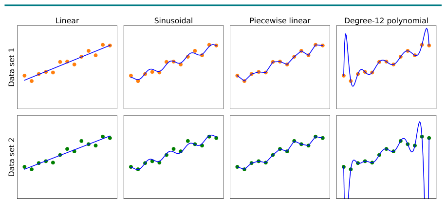
| Hypothesis space假设空间 | Fit to the data数据拟合度 | Change across samples跨样本变化幅度 | Verdict诊断结论 |
|---|---|---|---|
| Straight line直线 | Not consistent; misses the curve不一致，漏掉弯曲规律 | Small小 | Underfits欠拟合 |
| Sinusoid \(w_1x+\sin(w_0x)\)正弦曲线 \(w_1x+\sin(w_0x)\) | Nearly consistent; fits both samples closely接近一致，两组样本均拟合良好 | Small小 | Good if data are cyclic数据具周期性时表现极佳 |
| Piecewise linear (connect the dots)分段线性（逐点连线） | Always consistent始终一致 | Small小 | Low bias低偏差 |
| Degree-12 polynomial12 次多项式 | Consistent across 13 points穿过全部 13 个点保持一致 | Very large at both ends两端波动极其剧烈 | Overfits过拟合 |
Bias（偏差）measures how far predictions deviate on average from the true function due to restrictions on \(H\)—a rigid model that misses the pattern underfits（欠拟合）. Conversely, variance（方差）measures how wildly the learned hypothesis fluctuates across different training samples—an overly flexible model that chases sample noise overfits（过拟合）(formalized in Section 6.4).偏差反映假设空间 \(H\) 本身受限导致平均预测偏离真值的程度——过于僵硬而抓不住规律就会欠拟合。方差则衡量更换训练样本时学得函数剧烈摆动的幅度——过于灵活去迎合样本噪声就会过拟合（第 6.4 节给出精确公式）。
Practice练习
Q1. (Definitions) Define hypothesis space, consistent hypothesis, and generalization, and explain why a consistent hypothesis can still be poor.Q1.（定义）给出假设空间、一致假设与泛化的定义，并说明为何一致假设依然可能很差。
Answer
- Definitions: The hypothesis space \(H\) is the set of functions the learner can output (e.g., cubic polynomials). A hypothesis \(h\) is consistent if \(h(\mathbf x_i)=y_i\) for every training example, and it generalizes if it predicts accurately on unseen test examples.核心定义：假设空间 \(H\) 是学习器允许输出的候选函数集合；若对所有训练样本均有 \(h(\mathbf x_i)=y_i\) 则称一致；若在未见测试样本上依然预测准确则称泛化良好。
- Why consistency fails: An overly complex hypothesis can fit training noise perfectly while performing badly on new data—for example, a degree-12 polynomial passing through 13 points is always consistent yet varies wildly across samples (high variance).一致却差的原因：过于复杂的假设可能只是记住了样本噪声（例如用 12 次多项式穿过 13 个点，虽始终一致但跨样本方差极高，对新输入预测失准）。
易错：consistent 只说明训练集上全对，不说明泛化好。
Q2. (True/false) "A hypothesis space of straight lines has low bias and high variance." True or false?Q2.（判断）“直线假设空间具有低偏差和高方差。”该说法正确吗？
Answer
False. Straight lines cannot capture curved patterns, giving them high bias (underfitting), whereas fitting a line to two different samples from the same distribution produces nearly the same line, giving low variance (a degree-12 polynomial reverses both).错误。直线无法表达弯曲规律，故偏差高（欠拟合）；但同一分布下换批样本拟合出的直线几乎不变，故方差低（12 次多项式则恰恰相反）。
Error, loss and the new data error ★★误差、损失与新数据误差
Goal. Compute training error and total asymmetric loss from counts, and explain why training error cannot substitute for expected error on new data.目标。由计数计算训练误差及非对称总损失，并阐明为何不能用训练误差替代新数据上的期望误差。
Step 1: error and loss第 1 步：误差函数与损失函数
Core idea: The error function evaluates how well a finished model performs, whereas the loss function serves as the smooth surrogate objective that training minimizes.核心思路：误差函数用于最终评价模型表现，而损失函数是训练算法在优化过程中实际最小化的目标（常选用更平滑的替代函数）。
An error function（误差函数）\(E(\hat y,y)\) scores each prediction \(\hat y\) against the true label \(y\):误差函数 \(E(\hat y,y)\) 用来衡量单个预测值 \(\hat y\) 与真实标签 \(y\) 之间的偏差：
By contrast, the loss function（损失函数）\(L(\hat y,y)\) is what optimization minimizes during training. They need not match: because 0/1 error is flat (zero gradient) almost everywhere, gradient-based learners minimize a smooth surrogate loss instead.相比之下，损失函数 \(L(\hat y,y)\) 是训练算法直接最小化的对象。二者不必相同——例如 0/1 误差几乎处处导数为零，基于梯度的算法无法直接优化它，故改用平滑的代理损失。
| Loss损失类型 | \(L(\hat y,y)\) | Use适用场景 |
|---|---|---|
| 0/1 | \(0\) if \(\hat y=y\), else \(1\)预测正确取 0，否则取 1 | Classification evaluation; its average equals the error rate分类评估；其平均值即为误分类率 |
| Absolute (\(L_1\))绝对值损失（\(L_1\)） | \(\lvert y-\hat y\rvert\) | Regression; penalizes errors linearly and resists outliers回归；线性惩罚误差，对离群点更稳健 |
| Squared (\(L_2\))平方损失（\(L_2\)） | \((y-\hat y)^2\) | Regression; penalizes large errors quadratically回归；对大误差施加更重的平方惩罚 |
| Loss matrix损失矩阵 | Per-pair mistake cost各类误判指定不同代价 | Asymmetric cost problems代价非对称的决策问题 |
When mistakes carry unequal consequences, a loss matrix（损失矩阵）assigns an explicit penalty to each error type—for example, discarding a real email in a spam filter costs ten times as much as letting one spam message through:当不同错误的后果轻重悬殊时，可用损失矩阵为每类错判赋予明确代价——例如垃圾邮件过滤中把正常邮件误判进垃圾箱的代价比放过一封垃圾邮件高十倍：
| True class \ prediction真实类别 \ 预测 | spam垃圾邮件 | non-spam非垃圾邮件 |
|---|---|---|
| spam垃圾邮件 | 0 | 1 |
| non-spam非垃圾邮件 | 10 | 0 |
Step 2: training error and new data error第 2 步：训练误差与新数据误差
Under the stationarity assumption（平稳性假设）, all training and future examples are drawn independently and identically distributed (i.i.d.)（独立同分布）from the same underlying distribution \(p(\mathbf x,y)\), and our goal is low error on future draws from that distribution.在平稳性假设下，所有训练样本与未来测试样本均从同一分布 \(p(\mathbf x,y)\) 独立同分布（i.i.d.）抽取，模型的真正目标是在未来新样本上保持低误差。
Core idea: New data error measures average mistakes on unseen data, whereas training error measures mistakes on the exact data used for fitting and is therefore optimistically biased.核心思路：新数据误差衡量模型在未见数据上的平均表现，而训练误差是在“既做考生又做考题”的数据上算出来的，因此系统性偏乐观。
Because \(p(\mathbf x,y)\) is unknown, \(E_{\text{new}}\) must be estimated on held-out data (Section 6.3). Using the training set twice—both to fit parameters and to score accuracy—makes \(E_{\text{train}}\) artificially low: for instance, 1-nearest-neighbor achieves \(E_{\text{train}}=0\) regardless of \(E_{\text{new}}\) (note that \(E_{\text{train}}<E_{\text{new}}\) holds on average across training sets, not necessarily on every single split).由于真实分布 \(p(\mathbf x,y)\) 未知，\(E_{\text{new}}\) 只能靠留出数据估计（第 6.3 节）。训练样本被“既用来学、又用来考”，导致 \(E_{\text{train}}\) 虚低：例如 1-NN 在训练集上恒有 \(E_{\text{train}}=0\)，对新数据表现却毫无保证（注意 \(E_{\text{train}}<E_{\text{new}}\) 是在多次抽样的平均意义上成立，单次划分偶有例外）。
Any learned hypothesis \(h\) deviates from the true function \(f_0\) for four fundamental reasons:学得的假设 \(h\) 之所以会偏离真值 \(f_0\)，主要有四个来源：
- Unrealizability: \(f_0\notin H\), which more training data alone cannot cure.不可实现性：\(f_0\notin H\)，单纯增加数据量无法消除该差距。
- Variance: Different finite training samples yield different hypotheses \(h\).方差：有限训练集随机波动，换一批样本就会学出不同的 \(h\)。
- Noise: Inherent stochasticity causes identical inputs \(\mathbf x\) to produce different \(y\).噪声：数据本身带随机性，同一输入也可能出现不同标签。
- Computational complexity: Searching an enormous space \(H\) for the exact optimum may be intractable.计算复杂度：在庞大假设空间内求得全局最优解往往计算不可行。
Practice练习
Q1. (Calculation) A bank tests two loan classifiers on 5,000 applications. Approving a defaulter costs 20 units, rejecting a good customer costs 1 unit, and correct decisions cost 0. Classifier A makes 30 wrong approvals and 150 wrong rejections; Classifier B makes 90 wrong approvals and 20 wrong rejections. Compute each classifier's error rate and total loss, and identify the better model.Q1.（计算）银行用 5,000 份贷款申请测试两种分类器：误批违约者代价为 20，误拒优质客户代价为 1，正确决策代价为 0。A 犯了 30 次误批与 150 次误拒；B 犯了 90 次误批与 20 次误拒。求二者的误差率、总损失，并判断哪一个更优。
Answer
- Classifier A: Total errors \(=30+150=180\), error rate \(=180/5000=3.6\%\), total loss \(=30\cdot20+150\cdot1=750\).分类器 A：错判 180 次，误差率 \(3.6\%\)，总损失 \(=30\cdot20+150\cdot1=750\)。
- Classifier B: Total errors \(=90+20=110\), error rate \(=110/5000=2.2\%\), total loss \(=90\cdot20+20\cdot1=1{,}820\).分类器 B：错判 110 次，误差率 \(2.2\%\)，总损失 \(=90\cdot20+20\cdot1=1{,}820\)。
- Comparison: Although B has a lower 0/1 error rate, A incurs less than half of B's total loss and is clearly better for the bank.结论：尽管 B 误分类率更低，但 A 的总损失不到 B 的一半，对银行明显更优。
思路：先按错误类型乘以各自代价，再比较总损失，不要只看错误率。
Q2. (Explain) Why is \(E_{\text{train}}\) an unreliable estimate of \(E_{\text{new}}\)? What is \(E_{\text{train}}\) for 1-NN, and what does this show?Q2.（解释）为什么 \(E_{\text{train}}\) 不能可靠地估计 \(E_{\text{new}}\)？1-NN 的 \(E_{\text{train}}\) 是多少？这说明了什么？
Answer
- Double use of training data: Because the model was explicitly adapted to the training points (including their random noise), scoring it on those same points produces an optimistically biased error estimate.数据复用导致乐观偏差：模型本身针对训练点（连同其中的噪声）做了拟合，在同一批数据上打分必然偏低。
- 1-NN example: Every training point is its own nearest neighbor, so \(E_{\text{train}}=0\) (assuming consistent labels at identical inputs) regardless of how poorly the classifier performs on new data—proving that zero training error implies nothing about generalization.1-NN 反例：每个训练点自己的最近邻就是自己，故无论新数据误差有多高，1-NN 恒有 \(E_{\text{train}}=0\)（假设无同输入异标签），说明低训练误差不能证明泛化好。
Hold-out validation, cross-validation and the test set ★★★留出验证、交叉验证与测试集
Goal. State the procedures for hold-out validation and \(k\)-fold cross-validation, compute error estimates and training counts, and explain why a separate untouched test set is mandatory.目标。掌握留出验证与 \(k\) 折交叉验证流程，计算误差估计值与总训练次数，并说明为何必须保留未动过的测试集。
Step 1: hold-out validation第 1 步：留出验证
Core idea: Hold-out validation trains the model on one partition of the data and measures error on the remaining hidden partition.核心思路：留出验证将数据一分为二，用大部分数据训练模型，再用被隔离的那一部分估算新数据误差。
To perform hold-out validation（留出验证）cleanly:规范的留出验证步骤如下：
- Randomly shuffle the dataset first so class order or sorted batches do not skew the split.先随机打乱数据，避免按类别排序的数据导致某一类全落入训练或验证集。
- Set aside \(n_v\) examples as the hold-out validation set（留出验证集）and train the candidate model on the remaining set \(\mathcal T\).划出 \(n_v\) 个样本作为留出验证集，并用剩余数据 \(\mathcal T\) 训练模型。
- Average the error function over the \(n_v\) held-out examples.计算训练好模型在这 \(n_v\) 个留出样本上的平均误差。
For example, holding out 20% of 500 examples leaves 400 for training and \(n_v=100\) for validation; 12 mistakes give \(E_{\text{hold-out}}=12/100=0.12\). Hold-out faces an inherent trade-off: enlarging \(n_v\) lowers estimate variance at the expense of shrinking the training set, making hold-out best suited to very large datasets where a few percent still provides thousands of validation points.例如在 500 个样本中留出 20%，即用 400 个训练、\(n_v=100\) 个验证，若错 12 个则 \(E_{\text{hold-out}}=0.12\)。单次留出存在两难：验证集太小则误差估计方差大，太大又会挤占训练样本；因此当数据量极大时（留出 2% 仍有数万条）单次留出才最合算。

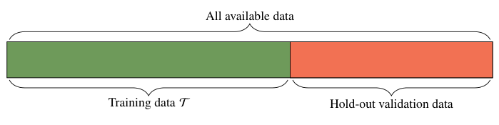
Step 2: k-fold cross-validation第 2 步：k 折交叉验证
Core idea: \(k\)-fold cross-validation rotates every example through validation exactly once and averages the \(k\) fold errors, using almost all data for training while reducing estimate variance.核心思路：\(k\) 折交叉验证让每个样本轮流恰好做一次验证数据，并将 \(k\) 轮误差取平均，从而在不浪费数据做训练的前提下显著降低估计方差。
When data are precious, \(k\)-fold cross-validation（k 折交叉验证）avoids sacrificing a large permanent validation slice:当数据规模有限时，\(k\) 折交叉验证能充分利用全部可用样本：
- Shuffle the dataset and partition it into \(k\) roughly equal batches (folds).打乱数据并均匀划分成 \(k\) 个规模相近的批次（折）。
- For each fold \(\ell=1,\dots,k\): hold out fold \(\ell\), train on the remaining \(k-1\) folds, and measure hold-out error \(E^{(\ell)}_{\text{hold-out}}\) on fold \(\ell\).对 \(\ell=1,\dots,k\) 依次循环：留出第 \(\ell\) 折作验证，用其余 \(k-1\) 折训练并测得第 \(\ell\) 折误差 \(E^{(\ell)}_{\text{hold-out}}\)。
- Average the \(k\) fold errors to obtain \(E_{k\text{-fold}}\).将 \(k\) 个留出误差取平均得到 \(E_{k\text{-fold}}\)。
- Retrain the final chosen model once on all available non-test data.最终用全部非测试数据重新训练一次最终模型。

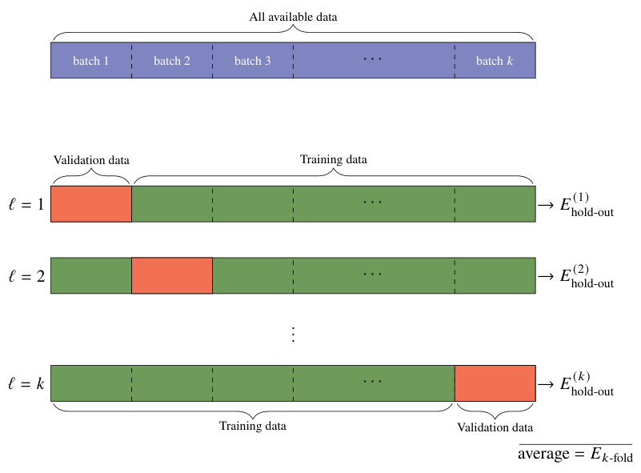
With 400 examples and \(k=5\), each fold holds \(400/5=80\) examples and each round trains on 320; if fold errors are 0.10, 0.14, 0.12, 0.16, and 0.13 (sum 0.65), then \(E_{5\text{-fold}}=0.65/5=0.13\). Training each round on \((k-1)/k\) of the data keeps intermediate models close to the final model while averaging reduces variance.以 400 个样本做 5 折为例，每折 80 个样本、每次训练用 320 个样本；若五折误差为 0.10、0.14、0.12、0.16、0.13（和为 0.65），则 \(E_{5\text{-fold}}=0.13\)。每轮都使用了 \((k-1)/k\) 的样本，使中间模型逼近最终模型，同时取平均有效压低了方差。
| Method验证方法 | Trainings训练次数 | Remark特点与适用场景 |
|---|---|---|
| Hold-out validation留出验证 | 1 | Unbiased for the \(\mathcal T\)-trained model; loses training data; best for massive datasets无偏但损失训练样本；适合百万级大数据集或训练极慢的模型 |
| \(k\)-fold (\(k=5\) or \(10\))\(k\) 折交叉验证（\(k=5\) 或 \(10\)） | \(k+1\) | 5–10× single training cost; standard default计算量为单次训练的 5–10 倍；最常用的默认方案 |
| Leave-one-out (LOOCV, \(k=n\))留一法（LOOCV，\(k=n\)） | \(n+1\) | Intermediate models nearly match the final model; practical only when training is very cheap每次几乎用到全部数据，但需训练 \(n+1\) 次，仅适合训练极快的模型 |
Evaluating \(m\) candidate settings via \(k\)-fold cross-validation requires \(m\cdot k+1\) total trainings (including the single final retrain on all non-test data)—for example, 3 candidates with \(k=5\) take \(3\cdot5+1=16\) trainings.用 \(k\) 折交叉验证在 \(m\) 个候选中择优共需 \(m\cdot k+1\) 次训练（最后的 \(+1\) 是选出最优配置后在全量非测试数据上的终训），例如 3 个候选做 5 折共需 \(3\cdot5+1=16\) 次训练。
Step 3: the test set and selection bias第 3 步：测试集与选择偏差
Why cannot the validation error of the winning model serve as our final estimate of \(E_{\text{new}}\)? Because we specifically selected the candidate with the minimum noisy validation score, that winning score enjoys a favorable random fluctuation—a phenomenon called selection bias（选择偏差）, meaning the model has partially overfitted the validation split. Reporting an unbiased estimate therefore requires three strictly separated roles:为何不能直接把胜出候选的最低验证误差报告为最终 \(E_{\text{new}}\)？因为在多个带噪声的候选估计中挑最小值本身就在利用随机好运气，这会引入选择偏差（相当于对验证集发生了轻微过拟合）。因此必须严格区分三类数据集：
| Set数据集 | Used for核心用途 | Usage rule使用频次 |
|---|---|---|
| Training set训练集 | Fitting model parameters (weights)拟合候选模型内部参数（权重） | Repeatedly多次 |
| Validation set (or CV folds)验证集（或交叉验证折） | Comparing models and tuning hyperparameters比较模型架构并调节超参数 | Repeatedly多次 |
| Test set测试集 | Final unbiased estimate of \(E_{\text{new}}\) for the chosen model对最终定稿模型给出 \(E_{\text{new}}\) 的无偏估计 | Once, after all choices are locked所有选择锁定后仅用一次 |
Lock the test set away before any tuning or preprocessing—and if training data are augmented artificially, always split out the test set before performing augmentation so no augmented variants leak across the boundary.测试集必须在调参与预处理前完全封存；若需做数据增强扩充样本，务必先划出测试集再对训练部分做增强，严防信息泄漏。
Practice练习
Q1. (Calculation) From 500 examples, 100 are held out as a test set, and 5-fold cross-validation runs on the remaining 400 for \(k\in\{1,5,15,40\}\) in \(k\)-NN:Q1.（计算）500 个样本中留出 100 个作测试集，在其余 400 个上对 \(k\)-NN 的 \(k\in\{1,5,15,40\}\) 做 5 折交叉验证，各折误差如下：
| \(k\) | fold 1第 1 折 | fold 2第 2 折 | fold 3第 3 折 | fold 4第 4 折 | fold 5第 5 折 |
|---|---|---|---|---|---|
| 1 | 0.20 | 0.18 | 0.22 | 0.19 | 0.21 |
| 5 | 0.14 | 0.16 | 0.13 | 0.15 | 0.12 |
| 15 | 0.11 | 0.14 | 0.10 | 0.13 | 0.12 |
| 40 | 0.15 | 0.17 | 0.14 | 0.16 | 0.13 |
(a) Give the size of each validation fold and training split. (b) Compute \(E_{5\text{-fold}}\) and select \(k\). (c) Count total trainings. (d) Explain how the 100 test examples are used.（a）求每折验证集与训练集大小。（b）计算 \(E_{5\text{-fold}}\) 并选出 \(k\)。（c）总计训练多少次？（d）如何使用这 100 个测试样本？
Answer
- (a) Split sizes: Each validation fold has \(400/5=80\) examples, and each training split has \(400-80=320\) examples.（a）划分规模：每个验证折 80 个样本，每轮训练集 320 个样本。
- (b) CV averages & choice: Mean errors are \(0.200,\ 0.140,\ 0.120,\ 0.150\) for \(k=1,5,15,40\), so select \(k=15\).（b）均值与选择：各候选均值依次为 0.200、0.140、0.120、0.150，故选择 \(k=15\)。
- (c) Training count: \(4\times5=20\) CV trainings plus 1 final retrain on all 400 non-test examples with \(k=15\) = 21 trainings.（c）训练次数：\(4\times5=20\) 次交叉验证加 1 次用 400 个样本终训，共 21 次。
- (d) Final test report: Evaluate the retrained model once on the 100 untouched test examples and report that error—never 0.120, which suffers from selection bias.（d）终测报告：在 100 个测试样本上仅评估一次最终模型并报告结果；0.120 系四者取最小所得，偏乐观不能当最终性能。
Q2. (Scenario) You have 2,000,000 labeled images and a neural network that takes one week to train. Should you estimate \(E_{\text{new}}\) with hold-out validation, 10-fold cross-validation, or leave-one-out? Why?Q2.（场景选择）现有 2,000,000 张带标签图像，且网络单次训练需耗时一周。你会用留出验证、10 折交叉验证还是留一法估计 \(E_{\text{new}}\)？为什么？
Answer
Hold-out validation. With 2,000,000 images, holding out ~2% (40,000 images) already provides a very low-variance validation estimate while keeping 98% for training; by contrast, 10-fold CV would take ~11 weeks and LOOCV 2,000,000 trainings, which is completely impractical (a separate untouched test set is still kept for final reporting).采用留出验证。数据量达两百万时，仅留出 2%（4 万张）便足以使估计方差极低，同时几乎保留全部数据训练；10 折需 11 周、留一法需 200 万次训练，均不可行（仍需另留独立测试集作最终评估）。
思路：数据多、训练贵时用留出验证；交叉验证的代价是 k+1 次训练。
Q3. (Explain) Why would selecting \(k\) in \(k\)-NN via \(E_{\text{train}}\) always choose \(k=1\), and why cannot the lowest cross-validation error serve as the final reported performance?Q3.（解释）为何用 \(E_{\text{train}}\) 选择 \(k\)-NN 的 \(k\) 必选 \(k=1\)？为何不能直接把最小交叉验证误差报作最终性能？
Answer
- Why \(k=1\) wins on \(E_{\text{train}}\): Every training point is its own nearest neighbor, yielding \(E_{\text{train}}=0\) regardless of noise—\(E_{\text{train}}\) rewards pure memorization.\(k=1\) 必胜原因：每个训练样本离自己最近，故 \(E_{\text{train}}\) 恒为 0，\(E_{\text{train}}\) 只会奖励死记硬背。
- Why minimum CV error is biased: Picking the smallest \(E_{k\text{-fold}}\) across candidates exploits random downward noise (selection bias / overfitting to validation folds), so only an untouched test set yields an unbiased estimate.最小 CV 误差有偏原因：在多组候选误差中挑最小值利用了随机波动（选择偏差），唯有未参与选型的独立测试集才能无偏反映新数据误差。
Under- and overfitting: generalization gap and bias–variance ★★★欠拟合与过拟合：泛化差距与偏差–方差
Goal. Diagnose underfitting and overfitting from training and validation errors, compute bias and variance terms, and explain the U-shaped generalization curve.目标。依据训练与验证误差诊断欠拟合和过拟合，计算偏差与方差项，并解释 U 形泛化曲线。
Step 1: the generalization gap第 1 步：泛化差距
Core idea: Expected error on new data equals expected training error plus a positive generalization gap that widens with model complexity and shrinks as training sample size grows.核心思路：新数据上的期望误差等于平均训练误差加上泛化差距；该差距随模型复杂度增加而扩大，随训练样本数增多而缩小。
Let \(\bar E_{\text{new}}\) and \(\bar E_{\text{train}}\) denote new data error and training error averaged over many training sets of size \(n\):设 \(\bar E_{\text{new}}\) 与 \(\bar E_{\text{train}}\) 分别为在多批规模为 \(n\) 的训练集上取平均后的新数据误差与训练误差：

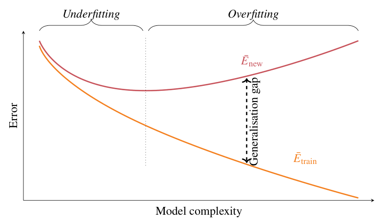
As model complexity increases, \(\bar E_{\text{train}}\) drops monotonically, whereas \(\bar E_{\text{new}}\) forms a U-shape: left of the trough the model underfits, right of it the widening gap causes overfitting, and the minimum marks the balanced fit. Collecting more training data shrinks both the gap and \(\bar E_{\text{new}}\) (while \(\bar E_{\text{train}}\) rises slightly because memorizing more points is harder).随着复杂度升高，\(\bar E_{\text{train}}\) 单调下降，但 \(\bar E_{\text{new}}\) 先降后升呈 U 形：谷底左侧为欠拟合，右侧因泛化差距迅速拉宽而过拟合，谷底即为平衡拟合点。增加训练样本会压低泛化差距和 \(\bar E_{\text{new}}\)（此时 \(\bar E_{\text{train}}\) 反会微升，因为死记更多数据更难）。
| Symptom现象 | Diagnosis诊断 | Remedies改进对策 |
|---|---|---|
| \(E_{\text{hold-out}}\approx E_{\text{train}}\), both too high两者相近且都偏高 | Underfitting (small gap, high bias)欠拟合（差距小、高偏差） | Loosen regularization, add features/parameters, increase degree减弱正则化、增加特征或参数、提高多项式次数 |
| \(E_{\text{train}}\approx0\), \(E_{\text{hold-out}}\) much higher训练误差近零，留出误差高得多 | Overfitting (large gap, high variance)过拟合（差距大、高方差） | Tighten regularization, reduce parameters, select features, collect more data增强正则化、减少参数、做特征选择、收集更多数据 |
If \(E_{\text{train}}\) is already well above your target error, switch to a richer model family—more data and cross-validation primarily combat overfitting, not severe underfitting.如果连 \(E_{\text{train}}\) 都远高于可接受水平，说明模型表达力不足，必须换更强的模型或特征；单纯加数据或做交叉验证治不了严重欠拟合。
Step 2: bias and variance第 2 步：偏差与方差分解
Core idea: Expected squared error splits cleanly into squared bias (model rigidity), variance (sensitivity to the specific training sample), and irreducible noise.核心思路：回归期望平方误差可精确分解为三项之和：平方偏差（模型太僵硬）、方差（对特定训练样本太敏感）以及无法消除的不可约噪声。
Assuming \(y=f_0(\mathbf x)+\varepsilon\) with independent zero-mean noise of variance \(\sigma^2\), the randomness of drawing \(\mathcal T\) induces the exact bias–variance decomposition（偏差–方差分解）:设数据满足 \(y=f_0(\mathbf x)+\varepsilon\)（独立零均值噪声，方差 \(\sigma^2\)），训练集 \(\mathcal T\) 的随机性引出如下精确分解：
Evaluated at a single test point \(\mathbf x_\star\), the three components reduce to simple arithmetic: squared bias \(=(\bar f-f_0)^2\), variance = mean of \((\hat y-\bar f)^2\) across trained models, and irreducible error \(=\sigma^2\) (constant across all models). Raising complexity lowers bias while raising variance, so optimal generalization balances both.落到单个测试点 \(\mathbf x_\star\) 上计算时非常直白：平方偏差即 \((\bar f-f_0)^2\)，方差即各模型预测 \(\hat y\) 对均值 \(\bar f\) 的均方离差，不可约误差固定为 \(\sigma^2\)。复杂度升高会压低偏差却推高方差，最优模型须平衡二者总和。

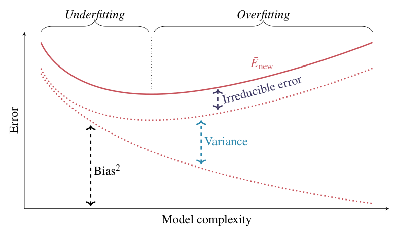
Squared bias is primarily fixed by the model family and barely changes with \(n\), whereas variance declines steadily as \(n\) grows—explaining why collecting more data shrinks the generalization gap without curing high bias.平方偏差主要由模型族决定，几乎不随样本量 \(n\) 改变；方差则随 \(n\) 增大而下降，因此增加样本能收窄泛化差距却治不了高偏差。
Regularization raises bias in exchange for lower variance, while bagging（装袋法）(Chapter 7) reduces variance with almost no bias increase; in practice, high \(E_{\text{train}}\) signals bias whereas a large \(E_{\text{hold-out}}-E_{\text{train}}\) gap signals variance.正则化用略微提高偏差换取方差下降，装袋法（第 7 章）则在几乎不增偏差的前提下压低方差；实战中 \(E_{\text{train}}\) 高提示偏差，泛化差距大提示方差。

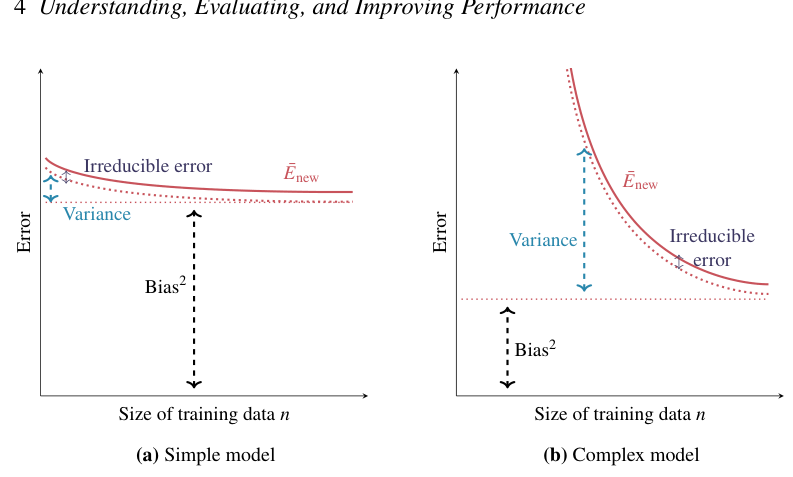
Practice练习
Q1. (Diagnose) Model A has \(E_{\text{train}}=2\%\) and \(E_{\text{hold-out}}=18\%\); Model B has \(E_{\text{train}}=21\%\) and \(E_{\text{hold-out}}=23\%\) (application target: 5%). Diagnose each model, suggest two remedies apiece, and state whether more training data helps.Q1.（诊断）模型 A 的 \(E_{\text{train}}=2\%,\ E_{\text{hold-out}}=18\%\)；模型 B 的 \(E_{\text{train}}=21\%,\ E_{\text{hold-out}}=23\%\)（应用要求误差不超过 5%）。诊断两个模型、各给两项对策，并说明增加训练数据是否有效。
Answer
- Model A (Overfitting / high variance): Tiny training error with a 16-point generalization gap. Remedies: stronger regularization or simpler model, feature selection, bagging, or collecting more data (more data shrinks variance and the gap).模型 A（过拟合 / 高方差）：训练误差极低而泛化差距达 16%。对策：加强正则化或简化模型、特征选择、Bagging、增加训练数据（加数据可有效压低方差与差距）。
- Model B (Underfitting / high bias): Both errors are high and close (2-point gap). Remedies: a more flexible model (higher degree, more parameters, weaker regularization) or richer features—more training data barely helps because bias does not shrink with \(n\).模型 B（欠拟合 / 高偏差）：训练与验证误差双高且接近（差距仅 2%）。对策：选用更灵活模型（更高次数、更多参数、减弱正则化）或构造更强特征；单纯增加数据几乎无效（偏差与 \(n\) 无关）。
Q2. (a) True or false: "Increasing the regularization parameter \(\lambda\) always lowers \(E_{\text{new}}\) because it lowers variance." (b) Name a modification to a trained linear regression that raises bias without changing variance.Q2.（a）判断正误：“增大正则化参数 \(\lambda\) 总能降低 \(E_{\text{new}}\)，因为它降低了方差。”（b）指出一种对已训练线性回归的改动，使偏差升高但方差不变。
Answer
- (a) False: Raising \(\lambda\) lowers variance at the cost of higher bias, so \(\bar E_{\text{new}}\) is U-shaped in \(\lambda\): beyond the optimum (e.g., \(\lambda\approx0.7\) in the textbook polynomial case), rising bias dominates and hurts performance.（a）错误：增大 \(\lambda\) 虽降方差却升偏差，\(\bar E_{\text{new}}\) 关于 \(\lambda\) 呈 U 形——跨过最优点后偏差飙升导致欠拟合（如教材多项式例中约 \(\lambda=0.7\) 处最优）。
- (b) Constant prediction shift: Adding a constant offset to every prediction shifts the mean model \(\bar f\) away from \(f_0\) (raising bias) while leaving the spread \(\hat y-\bar f\) across training sets completely unchanged (same variance).（b）平移预测输出：给模型每个预测值加上同一个非零常数，会使平均模型 \(\bar f\) 整体偏移（增大偏差），但不同模型围绕自身均值的离散度不变（方差不变）。
Model selection, regularization and hyperparameter tuning ★★★模型选择、正则化与超参数调节
Goal. Select model complexity using validation error, compute regularized cost across \(\lambda\) values, and compare hyperparameter search strategies.目标。利用验证误差选定模型复杂度，对不同 \(\lambda\) 计算正则化代价，并比较各类超参数搜索策略。
Step 1: model selection第 1 步：模型选择
Core idea: Model selection searches across hypothesis spaces of varying complexity for the lowest validation error, while training optimizes weights inside each chosen space.核心思路：模型选择在不同复杂度的假设空间之间按最低验证误差择优，而训练（优化）则在选定空间内部寻找最佳权重。
Model selection（模型选择）picks the model family and hyperparameters, whereas optimization（优化 / 训练）finds the best parameters inside that family:模型选择确定假设空间与超参数，优化则在该空间内部求解最优参数：
function MODEL-SELECTION(Learner, examples, k) returns (hypothesis, error rate)
training set, test set ← partition of examples into two sets
for size = 1 to ∞ do
err[size] ← CROSS-VALIDATION(Learner, size, training set, k) # average validation error over k folds
if err is starting to increase significantly then
best size ← the size with minimum err[size]
h ← Learner(best size, training set) # retrain on ALL training examples
return h and its error rate on test set # test set used once
To trace MODEL-SELECTION: step upward from size 1, compute CV error at each size, stop once CV error rises appreciably, pick the size with minimum CV error, retrain on all non-test data, and evaluate once on the test set (e.g., errors 0.38, 0.30, 0.23, 0.19, 0.16, 0.14, 0.12, 0.13 select size 7 with error 0.12).演算步骤：从最小规模 1 起逐步测算交叉验证误差，待误差明显回升时停下，取最小误差对应的规模用全部非测试数据重训，并在测试集上仅评估一次（例如误差序列 0.38, 0.30, 0.23, 0.19, 0.16, 0.14, 0.12, 0.13 会在规模 8 止步并选中规模 7）。

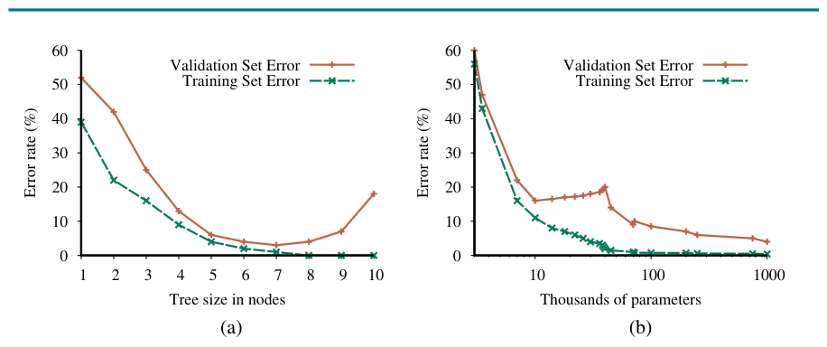
While decision trees display the classic U-shaped validation curve, overparameterized models like CNNs on MNIST can interpolate（插值）the training set (0 training error) and still improve again at huge widths—so always choose by lowest validation error rather than assuming a U-shape.决策树常呈经典 U 形曲线，但如 MNIST 上的深度卷积网络即便多到把训练数据完全插值（训练误差归零），超大参数量下验证误差仍可能再度下降；因此原则是按最低验证误差选择，而非死板预设单谷 U 形。
Step 2: regularization第 2 步：正则化
Core idea: Regularization penalizes model complexity directly inside the training objective so that optimization minimizes empirical loss plus a weighted complexity cost.核心思路：正则化在训练目标中直接附加复杂度惩罚项，让算法同时最小化经验损失与带权重的模型复杂度代价。
Instead of changing discrete model sizes, regularization（正则化）adds a continuous complexity penalty controlled by hyperparameter \(\lambda\):除了切换离散模型规模外，正则化通过在目标中加入受超参数 \(\lambda\) 控制的连续惩罚来抑制过拟合：
Increasing \(\lambda\) raises bias and reduces variance, with the optimal \(\lambda\) selected by validation or cross-validation; feature selection（特征选择）similarly reduces complexity by pruning irrelevant input attributes.增大 \(\lambda\) 会提高偏差并压低方差，其最佳取值同样通过留出或交叉验证确定；特征选择则通过直接剔除无关输入属性来降低复杂度。
Step 3: hyperparameter tuning第 3 步：超参数调优策略
With a single discrete hyperparameter, checking a short list suffices; with multiple continuous hyperparameters, choose a systematic search method:仅有一个超参数时直接遍历少量取值即可，当同时调节多个连续或离散超参数时，需选用合适的搜索策略：
| Method搜索方法 | How it works工作方式 | Remark优缺点 |
|---|---|---|
| Hand-tuning手动调节 | Guess settings from intuition, train, inspect validation error, and adjust manually凭经验试值、训练、看验证误差并反复调整 | Requires expertise; tedious依赖个人直觉；费时 |
| Grid search网格搜索 | Evaluate every combination of fixed candidate grids in parallel对每个超参数取少数离散值，穷举所有组合（可并行） | Runs grow exponentially with hyperparameter count随超参数个数指数爆炸 |
| Random search随机搜索 | Sample hyperparameter tuples uniformly/log-uniformly within budget在预算内从允许范围随机采样组合（可并行） | Explores many distinct values per axis; ignores prior runs在重要维度覆盖密得多；但不利用历史结果 |
| Bayesian optimization贝叶斯优化 | Fit a surrogate (Gaussian process) to validation loss \(y=f(\mathbf x)\), balancing exploitation and exploration用高斯过程对超参数验证损失建模，权衡利用已知优区与探索未知区 | Sample-efficient; often beats experts所需试验极少；效果常胜过专家手调 |
| Population-based training基于种群的训练 | Train a parallel population; periodically copy top performers and mutate hyperparameters并行训练一批模型，定期复制优胜者参数并对其超参数变异 | Combines parallelism with adaptive learning from earlier runs兼具随机搜索的并行性与贝叶斯优化的自适应性 |
For 3 hyperparameters with 5 candidate values each, grid search spends \(5^3=125\) runs yet tests only 5 distinct values per axis, whereas 125 random trials test 125 distinct values along every axis—giving random search a decisive edge whenever only one or two hyperparameters strongly govern validation error.例如调 3 个超参数、各取 5 个值时，网格搜索耗费 \(5^3=125\) 次训练却在每个维度只试过 5 个点；同等预算下 125 次随机搜索在每个维度都试过 125 个不同取值——当实际只有一两个超参数真正主导性能时，随机搜索优势巨大。
Practice练习
Q1. (Compare, beyond the text) You tune 3 hyperparameters with 5 candidate values each. Compare grid search with 125 random-search trials, and state when random search is clearly superior.Q1.（比较，拓展）调节 3 个超参数，每个各设 5 个候选值。比较网格搜索与 125 次随机搜索，并说明随机搜索何时明显更优。
Answer
- Coverage contrast: Both cost 125 runs and parallelize trivially, yet grid search tests only 5 distinct values per axis while random search tests 125 distinct values per axis (including continuous ranges).覆盖度对比：二者同样耗费 125 次运行且皆可并行，但网格在每个维度只试 5 个值，随机搜索在每个维度都试 125 个不同值（还支持连续区间）。
- When random wins: Whenever only 1 or 2 hyperparameters strongly affect performance, random search explores the influential dimension 25× more densely for the same budget; grid search remains preferable only for very few discrete parameters requiring systematic reproducibility.何时随机更优：只要实际起核心作用的只有 1–2 个超参数，随机搜索能在同等预算下对关键维度做密集得多的探测；仅在参数很少且需严格可复现枚举时用网格搜索。
思路：网格搜索对每个超参数只探测很少几个取值；随机搜索在重要的维度上覆盖更密。
Q2. (Trace) MODEL-SELECTION evaluates decision-tree sizes 1 to 9 via cross-validation and obtains errors 0.38, 0.30, 0.23, 0.19, 0.16, 0.14, 0.12, 0.13, 0.16. Which size is chosen, and how is each data split used?Q2.（手工演算）MODEL-SELECTION 对规模 1 至 9 的决策树测得交叉验证误差依次为 0.38、0.30、0.23、0.19、0.16、0.14、0.12、0.13、0.16。最终选中哪个规模？各数据集分别作何用途？
Answer
- Selected size: Minimum validation error 0.12 occurs at size 7 (since errors begin rising at sizes 8 and 9, the loop halts and returns size 7).选中规模：最小值 0.12 出现在规模 7，随后规模 8、9 误差上升触发停止条件。
- Data roles: Cross-validation splits of the training partition select size 7; the learner then retrains a size-7 tree on the entire non-test training set and evaluates it once on the untouched test set.数据分工：训练部分做交叉验证用于选出规模 7；随后在全部非测试训练数据上重新训练规模为 7 的树，最后在从未碰过的测试集上单次测量误差。
Evaluating classifiers: confusion matrix, ROC and precision–recall ★★★评估分类器：混淆矩阵、ROC 与精确率–召回率
Goal. Construct a confusion matrix and compute accuracy, precision, recall, \(F_1\), and FPR; read ROC curves and interpret AUC; and choose between ROC and precision–recall curves.目标。填写混淆矩阵并计算准确率、精确率、召回率、\(F_1\) 与 FPR；读懂 ROC 曲线并解释 AUC；明确何时选用 ROC 与精确率–召回率曲线。
Step 1: the confusion matrix and the rates第 1 步：混淆矩阵与核心比率
Core idea: A confusion matrix tabulates all four combinations of true and predicted labels, and every classification metric is simply a ratio of those four counts.核心思路：混淆矩阵统计（真实类别，预测类别）四种组合各自的出现次数，几乎所有分类评价指标都是这四个计数的比值。
Evaluating predictions on a hold-out or test set yields the four-cell confusion matrix（混淆矩阵）:在留出集或测试集上对比实际输出 \(y\) 与预测输出 \(\hat y\)，即得混淆矩阵：
| \(y=-1\) | \(y=+1\) | Total合计 | |
|---|---|---|---|
| \(\hat y=-1\) | TN (true negative)TN（真阴性） | FN (false negative)FN（假阴性） | \(N^{\ast}\) |
| \(\hat y=+1\) | FP (false positive)FP（假阳性） | TP (true positive)TP（真阳性） | \(P^{\ast}\) |
| Total合计 | \(N\) | \(P\) | \(n\) |
Here \(P=TP+FN\) and \(N=FP+TN\) count actual positives and negatives, \(P^{\ast}=TP+FP\) and \(N^{\ast}=TN+FN\) count positive and negative predictions, and \(n=P+N\) is the total sample count (always check axis labels first, as some textbooks put true classes in rows).其中 \(P,N\) 分别统计实际正例与实际负例总数，\(P^{\ast},N^{\ast}\) 分别统计预测为正与预测为负的总数，\(n\) 为总样本数（不同教材行列排布可能相反，读表务必先看轴标签）。
Core idea: Recall asks "of the real positives, how many did I find?", precision asks "of my alarms, how many were real?", and FPR asks "of the real negatives, how many did I falsely alarm?"核心思路：召回率问“真阳性里抓到了多少？”，精确率问“发出的警报里有多少是真的？”，FPR 问“真阴性里误报了多少？”
Each ratio carries a distinct denominator—\(P\), \(P^{\ast}\), and \(N\)—so always lay out the confusion matrix first before dividing.三个比率分母截然不同（分别是 \(P\)、\(P^{\ast}\) 与 \(N\)），解题时务必先写全混淆矩阵再代入除法。
Step 2: F1 and F-beta第 2 步：F1 与 F-beta 分数
Core idea: \(F_1\) summarizes precision and recall into a single score that is high only when both are high, while \(F_\beta\) lets you weight recall more or less heavily than precision.核心思路：\(F_1\) 仅在精确率与召回率双高时才高，而 \(F_\beta\) 允许根据误报与漏报代价调整二者的相对权重。
Distinguish two common dataset difficulties: class imbalance（类别不平衡）occurs when almost all examples belong to one class (making accuracy misleadingly high for trivial "always negative" predictors), while cost asymmetry（代价不对称）occurs when one mistake costs far more than the other. Because \(F_1\) ignores \(TN\), it handles class imbalance well, whereas cost asymmetry requires \(F_\beta\) or a loss matrix (Section 6.2).需分清两种常见难点：类别不平衡指负例占绝大多数（此时全猜“负”的废物模型准确率也很高），代价不对称指漏报与误报后果不同。\(F_1\) 不计 \(TN\)，能应对不平衡却不区分错判代价；代价不对称须改用 \(F_\beta\) 或损失矩阵（第 6.2 节）。
Step 3: threshold, ROC curve and AUC第 3 步：判决阈值、ROC 曲线与 AUC
Core idea: The ROC curve traces the trade-off between true positive rate (recall) and false positive rate across every possible decision threshold.核心思路：ROC 曲线刻画了随判决阈值连续滑动时，真阳性率（召回率）与假阳性率（误报率）之间的此消彼长关系。
Scoring classifiers predict positive whenever a score exceeds a decision threshold（判决阈值）\(r\) (default 0.5). Lowering \(r\) catches more positives (raising both TP and FP), so recall and FPR rise while precision usually drops; raising \(r\) reverses this trade-off.输出连续分值的分类器在得分超过判决阈值 \(r\)（默认 0.5）时判正。调低 \(r\) 会放宽阳性判定（TP 与 FP 同增），导致召回率与 FPR 上升、精确率通常下降；调高 \(r\) 则相反。
The ROC curve（ROC 曲线）plots TPR (recall) on the vertical axis against FPR on the horizontal axis across all thresholds; draw it by hand as follows:ROC 曲线以召回率（TPR）为纵轴、FPR 为横轴描出全阈值轨迹，手工绘制方法如下：
- Sort all examples in descending order of predicted score.将所有样本按预测得分从高到低排序。
- Start at the origin \((0,0)\) (highest threshold, predicting nothing positive).从原点 \((0,0)\) 出发（相当于阈值最高，全部判负）。
- Step past one example at a time: move up by \(1/P\) for each positive example and right by \(1/N\) for each negative example.依次降低阈值越过每个样本：遇到正例向上走 \(1/P\)，遇到负例向右走 \(1/N\)。
- Finish at \((1,1)\) (lowest threshold, predicting every example positive).最终抵达右上角 \((1,1)\)（全部判正）。
A perfect classifier reaches the top-left corner \((0,1)\), while random guessing follows the diagonal. The area under the ROC curve (ROC-AUC) summarizes threshold-free ranking quality—1.0 for perfect, 0.5 for random—and equals the probability that a randomly drawn positive receives a higher score than a randomly drawn negative.完美分类器贴着左上角 \((0,1)\) 走，随机猜测沿对角线走。ROC 曲线下面积（ROC-AUC）无需固定阈值即可评价排序能力（完美为 1.0、随机为 0.5），其数值恰好等于随机抽取一对正负样本时正例得分高于负例的概率。

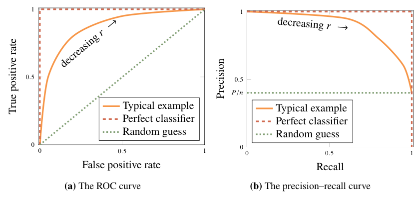
Quick check for scores \(0.9(+),\ 0.7(-),\ 0.6(+),\ 0.3(-)\): with \(P=N=2\), each step is 0.5, visiting \((0,0)\to(0,0.5)\to(0.5,0.5)\to(0.5,1)\to(1,1)\) with area \(0.5\cdot0.5+0.5\cdot1=0.75\) (matching pair counting: 0.9 beats 2 negatives and 0.6 beats 1, giving \(3/4=0.75\)).手算检验例子：得分 \(0.9(+),\ 0.7(-),\ 0.6(+),\ 0.3(-)\) 中 \(P=N=2\)，每步 0.5，依次过 \((0,0),(0,0.5),(0.5,0.5),(0.5,1),(1,1)\)，面积 \(0.5\cdot0.5+0.5\cdot1=0.75\)（按正负配对：0.9 赢 2 个负例，0.6 赢 1 个，共 \(3/4=0.75\)）。
Core idea: The precision–recall (PR) curve plots precision against recall across thresholds; switch to it whenever the positive class is rare.核心思路：精确率–召回率（PR）曲线描绘各阈值下精确率随召回率的变化；每当正类样本很稀少时，必须改用 PR 曲线替代 ROC。
Why do ROC and PR curves diverge under class imbalance? When negatives vastly outnumber positives (\(N\gg P\)), the huge denominator keeps \(\text{FPR}=FP/N\) tiny even when false alarms dwarf true positives—making ROC curves look deceptively optimistic.为什么两类曲线在不平衡数据上截然不同？当负例远多于正例（\(N\gg P\)）时，哪怕误报数远超真阳性，庞大的分母 \(N\) 仍会把 \(\text{FPR}=FP/N\) 压得很低，导致 ROC 曲线看起来虚假乐观。
The PR curve avoids this illusion by plotting precision \(TP/(TP+FP)\) directly against recall: its ideal point sits at \((1,1)\), and random guessing yields a horizontal baseline at the positive prevalence \(P/n\) rather than 0.5.PR 曲线改用直接受误报冲击的精确率 \(TP/(TP+FP)\) 对比召回率：其理想点位于 \((1,1)\)，而随机猜测基线是一条高度等于正例占比 \(P/n\)（而非 0.5）的水平线。
Practice练习
Q1. (Calculation) A detector inspects 10,000 items (50 defective) and flags 40 items (30 truly defective). (a) Give TP, FP, FN, TN. (b) Compute accuracy, precision, recall, \(F_1\), and FPR. (c) Compute accuracy and \(F_1\) of the trivial classifier that flags nothing. (d) Explain what this comparison shows.Q1.（计算）检测器检查 10,000 件产品（其中 50 件有缺陷），共报警 40 件（30 件确有缺陷）。（a）求 TP、FP、FN、TN。（b）计算准确率、精确率、召回率、\(F_1\) 与 FPR。（c）求全不报警的平凡分类器的准确率与 \(F_1\)。（d）这一对比说明了什么？
Answer
- (a) Counts: \(TP=30,\ FP=10,\ FN=20,\ TN=9{,}940\) (\(P=50,\ N=9{,}950,\ P^{\ast}=40\)).（a）混淆矩阵计数：\(TP=30,\ FP=10,\ FN=20,\ TN=9{,}940\)（\(P=50,\ N=9{,}950,\ P^{\ast}=40\)）。
- (b) Metrics: Accuracy \(=(30+9940)/10000=0.997\); precision \(=30/40=0.75\); recall \(=30/50=0.60\); \(F_1=2\cdot30/(40+50)=0.667\); FPR \(=10/9950=0.001\).（b）指标计算：准确率 0.997，精确率 0.75，召回率 0.60，\(F_1=0.667\)，FPR \(=0.001\)。
- (c) Trivial baseline: Accuracy \(=9950/10000=0.995\); \(F_1=0\) since \(TP=0\).（c）平凡基线：准确率 0.995，因 \(TP=0\) 故 \(F_1=0\)。
- (d) Takeaway: Although the detector catches 60% of defects, accuracy improves by only 0.2 percentage points—at 0.5% defect rate accuracy is drowned out by negatives, so report precision, recall, and \(F_1\).（d）结论：尽管检测器抓出了 60% 的缺陷，准确率仅高出 0.2 个百分点——在 0.5% 的正例占比下准确率由负类主导，必须改报精确率、召回率与 \(F_1\)。
Q2. (ROC and AUC, beyond the text) Eight test examples have scores (labels): 0.95 (+), 0.85 (+), 0.80 (−), 0.70 (+), 0.55 (−), 0.45 (+), 0.30 (−), 0.20 (−). (a) List the ROC points as \(r\) drops past each score. (b) Compute AUC from the curve. (c) Verify by counting concordant pairs and interpret.Q2.（ROC 与 AUC，拓展）8 个测试样本的得分及标签如下：0.95(+)、0.85(+)、0.80(−)、0.70(+)、0.55(−)、0.45(+)、0.30(−)、0.20(−)。（a）按阈值 \(r\) 依次降低列出 ROC 点坐标。（b）由曲线求 AUC。（c）用正负样本对排序计数校验并解释物理意义。
Answer
- (a) ROC points: Since \(P=N=4\), each positive steps up 0.25 and each negative steps right 0.25, giving (FPR, TPR): (0,0), (0,0.25), (0,0.5), (0.25,0.5), (0.25,0.75), (0.5,0.75), (0.5,1), (0.75,1), (1,1).（a）ROC 坐标点：\(P=N=4\)，每步步长 0.25，依次经过 (0,0)、(0,0.25)、(0,0.5)、(0.25,0.5)、(0.25,0.75)、(0.5,0.75)、(0.5,1)、(0.75,1)、(1,1)。
- (b) Curve area: Summing widths times heights over the four horizontal steps gives \(0.25\,(0.5+0.75+1+1)=0.25\cdot3.25=0.8125\).（b）曲线面积：按四段水平步长累加矩形面积：\(0.25\,(0.5+0.75+1+1)=0.8125\)。
- (c) Pair check & meaning: Positive 0.95 beats 4 negatives, 0.85 beats 4, 0.70 beats 3 (not 0.80), and 0.45 beats 2 (0.30, 0.20): \((4+4+3+2)/(4\cdot4)=13/16=0.8125\)—meaning a randomly chosen positive outranks a randomly chosen negative with probability 0.8125.（c）样本对校验与含义：0.95 赢 4 个负例，0.85 赢 4 个，0.70 赢 3 个，0.45 赢 2 个，共 \(13/16=0.8125\)——即随机抽取一对正负样本时正例得分高于负例的概率为 0.8125。
思路：AUC = 正负样本对中正例得分更高的比例。
Q3. (Explain) Out of 100,000 test examples, 100 are positive; a classifier detects 80 of them alongside 400 false alarms. Compute FPR, precision, and \(F_1\), and explain why the ROC curve alone is misleading.Q3.（解释）100,000 个测试样本中仅 100 个正例；某分类器检出 80 个正例同时误报 400 个负例。计算 FPR、精确率与 \(F_1\)，并说明仅看 ROC 曲线为何具有误导性。
Answer
- Metrics: With \(P=100,\ N=99{,}900,\ TP=80,\ FP=400\): \(\text{FPR}=400/99900=0.004\), \(\text{recall}=0.80\), \(\text{precision}=80/480=0.167\), and \(F_1=2\cdot80/(480+100)=0.276\).指标计算：\(P=100,\ N=99{,}900,\ TP=80,\ FP=400\)，得 \(\text{FPR}=0.004\)、召回率 \(0.80\)、精确率 \(0.167\)、\(F_1=0.276\)。
- Why ROC misleads: ROC point \((0.004,0.80)\) sits near the ideal top-left corner because huge \(N\) dilutes FPR, hiding that five out of six alarms are false—whereas the PR curve (random baseline \(P/n=0.001\) instead of 0.5) and \(F_1\) expose the weak precision.ROC 误导原因：ROC 坐标 \((0.004,0.80)\) 紧贴理想左上角，是因分母 \(N\) 极大稀释了误报，掩盖了每 6 次报警有 5 次误报的事实；PR 曲线（随机基线 \(P/n=0.001\) 而非 0.5）与 \(F_1\) 则能真实揭示低精确率。
Terms to recognize ★需要认识的术语
| Term术语 | What to know核心要点 |
|---|---|
| Induction归纳 | Generalizing from specific examples to a general rule; unlike deduction, it can be wrong.从具体样本总结出一般规律；不同于演绎推理，归纳结论并不保真。 |
| Ockham's razor奥卡姆剃刀 | Inductive principle preferring the simplest hypothesis consistent with the training data.归纳偏好原则：在与训练数据一致的所有假设中，优先选择最简单者。 |
| Stationarity, i.i.d.平稳性，i.i.d. | Assumption that all examples are drawn independently from the same distribution—the basis of error estimation.假设所有样本均独立同分布地取自同一总体，是一切泛化估计的理论前提。 |
| Leave-one-out (LOOCV)留一法（LOOCV） | \(k\)-fold cross-validation with \(k=n\) (\(n+1\) trainings); viable only when training is cheap.取 \(k=n\) 的交叉验证（共 \(n+1\) 次训练），仅适合单次训练开销极低的模型。 |
| Stratified k-fold分层 k 折 | Cross-validation split preserving original class proportions inside each fold—essential for imbalanced data.确保每一折内部各类别比例与全集一致的交叉验证，类别不平衡时不可或缺。 |
| Interpolation插值 | Fitting every training point with zero error (achievable, for instance, by an \(n\)-leaf decision tree).以零训练误差完全贴合所有训练点（例如含 \(n\) 个叶结点的决策树总能做到）。 |
| Minimum description length最小描述长度 | Selects the hypothesis minimizing total encoding bits for hypothesis plus data residuals without needing \(\lambda\).选择“描述假设本身与数据残差”所需总比特数最少的假设，无需手动调节 \(\lambda\)。 |
| Bayesian optimization贝叶斯优化 | Models hyperparameter validation loss probabilistically, balancing exploitation and exploration.对超参数的验证损失构建概率代理模型，在利用已知优区与探索新区间权衡搜索。 |
| Population-based training基于种群的训练 | Trains models in parallel; later generations clone high-scoring weights and mutate hyperparameters.并行训练一批模型种群，后代定期复制优胜者的权重并对超参数做变异。 |
| Type I and type II error第一类错误与第二类错误 | Type I = false positive (false alarm); Type II = false negative (miss).第一类错误即假阳性（误报）；第二类错误即假阴性（漏报）。 |
| Macro-average宏平均 | For \(C\) classes, the unweighted arithmetic mean of per-class precision, recall, or \(F_1\).多分类（\(C\) 类）中先逐类算精确率或召回率，再对各类做等权算术平均。 |
| Sensitivity, specificity敏感度，特异度 | Sensitivity equals recall (\(TP/P\)); specificity equals true negative rate (\(TN/N=1-\text{FPR}\)).敏感度即召回率（\(TP/P\)）；特异度即真阴性率（\(TN/N=1-\text{FPR}\)）。 |
Exam-style questions考试题型练习
Q1. (Calculation, 15 marks) A classifier screens 1,000 patients (100 diseased, 900 healthy), detecting 70 diseased patients and wrongly flagging 45 healthy ones:Q1.（计算，15 分）某分类器筛查 1,000 名患者（100 患病、900 健康），检出 70 名患病者并误报 45 名健康人：
- (a)–(b) Give the confusion matrix (\(TP,FP,FN,TN\) and totals \(P,N,P^{\ast},N^{\ast}\); 4 marks), then compute accuracy, precision, recall, specificity, FPR, and \(F_1\) (6 marks).（a）–（b）写出混淆矩阵及各项合计（4 分），并计算准确率、精确率、召回率、特异度、FPR 与 \(F_1\)（6 分）。
- (c)–(d) Compute \(F_2\) and say which error it emphasizes (3 marks); give the accuracy and \(F_1\) of an "always healthy" classifier and critique accuracy (2 marks).（c）–（d）计算 \(F_2\) 并说明其偏重哪类错误（3 分）；求出全判“健康”模型的准确率与 \(F_1\) 并评论准确率的局限（2 分）。
Answer
- (a) Confusion matrix counts: \(TP=70\), \(FN=30\), \(FP=45\), \(TN=855\); totals \(P=100\), \(N=900\), \(P^{\ast}=115\), \(N^{\ast}=885\), \(n=1{,}000\).（a）混淆矩阵计数：\(TP=70,\ FN=30,\ FP=45,\ TN=855\)；合计 \(P=100,\ N=900,\ P^{\ast}=115,\ N^{\ast}=885,\ n=1{,}000\)。
- (b) Classification metrics: Accuracy \(=(855+70)/1000=0.925\); precision \(=70/115=0.609\); recall \(=70/100=0.700\); specificity \(=855/900=0.950\); FPR \(=45/900=0.050\); \(F_1=2\cdot70/(115+100)=0.651\).（b）各项指标：准确率 \(0.925\)、精确率 \(0.609\)、召回率 \(0.700\)、特异度 \(0.950\)、FPR \(0.050\)、\(F_1=0.651\)。
- (c) Weighted \(F_2\): \(F_2=5\cdot70/(5\cdot70+4\cdot30+45)=350/515=0.680\); with \(\beta=2\), recall carries \(\beta^2=4\) times the weight of precision, emphasizing false negatives (missed patients).（c）\(F_2\) 计算：\(F_2=350/515=0.680\)；取 \(\beta=2\) 赋予召回率更大权重，更强调抑制假阴性（漏诊病人）。
- (d) Trivial baseline & critique: Always predicting "healthy" yields \(TP=0\implies\text{recall}=0,\ F_1=0\) yet achieves accuracy \(900/1000=0.90\). Our classifier's 0.925 looks only 2.5 points higher despite catching 70% of cases—at 10% prevalence accuracy is dominated by healthy negatives, requiring precision, recall, and \(F_1\).（d）平凡基线与评论：全判“健康”的 \(TP=0\)（\(F_1=0\)），但准确率高达 0.90，仅比检测 70% 病人的模型低 2.5 个百分点；正例仅占 10% 时准确率被阴性主导，必须同时报告精确率、召回率与 \(F_1\)。
思路：先列混淆矩阵，再按分母（实际正例数、预测正例数、实际负例数）逐个计算。
Q2. (Validation protocol, 12 marks) Given 600 labeled examples, tune \(k\in\{1,5,15\}\) for \(k\)-NN and report expected new data error:Q2.（验证流程，12 分）给定 600 个带标签样本，为 \(k\)-NN 挑选 \(k\in\{1,5,15\}\) 并报告期望新数据误差：
- (a)–(b) Describe a protocol using a 20% test set and 5-fold CV on the rest with exact sizes (4 marks), and count total trainings vs. LOOCV (3 marks).（a）–（b）说明“20% 测试集 + 其余 5 折交叉验证”流程及各集合规模（4 分），并计算总训练次数与留一法次数（3 分）。
- (c)–(d) From the fold errors below, select \(k\) and state what to report (3 marks); explain why the lowest CV error cannot be reported as final performance (2 marks).（c）–（d）依据下表误差选出 \(k\) 并说明最终报告内容（3 分）；解释为何不能把最小交叉验证误差当最终结果（2 分）。
| \(k\) | fold 1第 1 折 | fold 2第 2 折 | fold 3第 3 折 | fold 4第 4 折 | fold 5第 5 折 |
|---|---|---|---|---|---|
| 1 | 0.21 | 0.19 | 0.22 | 0.20 | 0.23 |
| 5 | 0.15 | 0.17 | 0.14 | 0.16 | 0.13 |
| 15 | 0.17 | 0.16 | 0.18 | 0.15 | 0.19 |
Answer
- (a) Protocol & sizes: Shuffle all 600 examples, lock away 20% (120 examples) as an untouched test set, and split the remaining 480 examples into 5 folds of 96 examples each—training on 384 and validating on 96 per round.（a）流程与规模：打乱 600 个样本后留出 20%（120 个）作封存测试集；其余 480 个均分为 5 折（每折 96 个），每轮用 384 个训练、96 个验证。
- (b) Training counts: 5-fold CV requires \(3\times5=15\) CV trainings plus 1 final retrain on all 480 examples = 16 trainings. LOOCV would require 480 trainings per candidate: \(3\cdot480+1=1{,}441\) trainings.（b）训练次数：5 折需 \(3\times5+1=16\) 次训练（含最后 1 次全量 480 样本重训）；若用留一法则需 \(3\cdot480+1=1{,}441\) 次。
- (c) Choice & report: Mean fold errors are \(0.21,\ 0.15,\ 0.17\) for \(k=1,5,15\). Choose \(k=5\), retrain on all 480 examples, evaluate once on the 120 test examples, and report that test error.（c）选型与报告：均值依次为 0.21、0.15、0.17，故选中 \(k=5\)，在全部 480 个样本上重训并在 120 个测试样本上单次评估后报告该测试误差。
- (d) Selection bias: The value 0.15 is the minimum over three noisy candidates and was picked specifically for being smallest, making it optimistically biased; only the untouched test set yields an unbiased estimate.（d）选择偏差：0.15 是三个候选误差中的最小值，挑选本身即利用了随机利好而偏乐观；唯有未参与选型的测试集能给出无偏估计。
Q3. (Bias–variance, 15 marks) Answer the following on bias, variance, and polynomial degree diagnostics:Q3.（偏差–方差，15 分）回答以下关于偏差–方差分解与多项式拟合诊断的问题：
- (a) State the bias–variance decomposition of \(\bar E_{\text{new}}\) for squared-error regression and explain each term (5 marks).（a）写出平方误差回归中 \(\bar E_{\text{new}}\) 的偏差–方差分解并解释各项含义（5 分）。
- (b) At a test point with truth \(f_0=1.0\) and noise variance \(\sigma^2=0.04\), five models trained on separate sets predict 0.7, 0.9, 0.8, 1.0, 0.6; compute squared bias, variance, and expected error (4 marks).（b）某测试点真值 \(f_0=1.0\)、噪声方差 \(\sigma^2=0.04\)，五个独立模型预测 0.7、0.9、0.8、1.0、0.6；求平方偏差、方差与期望平方误差（4 分）。
- (c) Degree 1, 3, and 9 polynomials give \((E_{\text{train}},E_{\text{hold-out}})=(0.30,0.32)\), \((0.10,0.12)\), and \((0.01,0.25)\); diagnose each, pick a degree, and name two fixes for degree 9 (6 marks).（c）1、3、9 次多项式的 \((E_{\text{train}},E_{\text{hold-out}})\) 分别为 \((0.30,0.32)\)、\((0.10,0.12)\)、\((0.01,0.25)\)；诊断各模型、选出次数并为 9 次提两项改进（6 分）。
Answer
- (a) Decomposition formula: \(\bar E_{\text{new}}=\text{bias}^2+\text{variance}+\sigma^2\), derived from \(\mathbb E[(z-z_0)^2]=\text{variance}+\text{bias}^2\) plus independent zero-mean noise \(\sigma^2\).（a）分解公式：\(\bar E_{\text{new}}=\text{bias}^2+\text{variance}+\sigma^2\)，由 \(\mathbb E[(z-z_0)^2]=\text{variance}+\text{bias}^2\) 加独立零均值噪声推导而得。
- Term meanings: \(\text{bias}^2=\mathbb E_\star[(\bar f(\mathbf x_\star)-f_0(\mathbf x_\star))^2]\) reflects model rigidity via the average model \(\bar f=\mathbb E_{\mathcal T}[\hat y]\); \(\text{variance}=\mathbb E_\star\mathbb E_{\mathcal T}[(\hat y-\bar f)^2]\) measures sample sensitivity; \(\sigma^2\) is irreducible noise.各项含义：\(\text{bias}^2\) 衡量平均模型 \(\bar f\) 偏离真值的系统误差（僵硬度），\(\text{variance}\) 衡量模型随训练抽样的波动幅度（灵敏度），\(\sigma^2\) 为不可约噪声。
- (b) Calculation: \(\bar f=(0.7+0.9+0.8+1.0+0.6)/5=0.8\); squared bias \(=(0.8-1.0)^2=0.04\); variance \(=\frac15(0.01+0.01+0+0.04+0.04)=0.02\); expected squared error \(=0.04+0.02+0.04=0.10\).（b）数值计算：均值 \(\bar f=0.8\)，平方偏差 \(0.04\)，方差 \(0.02\)，总期望平方误差 \(=0.04+0.02+0.04=0.10\)。
- (c) Diagnosis & remedies: Degree 1 (gap 0.02, both errors high) underfits (high bias); degree 3 (gap 0.02, lowest hold-out error) is the balanced fit; degree 9 (near-zero training error, gap 0.24) overfits (high variance). Select degree 3 (reporting final error on a separate test set), and improve degree 9 via stronger regularization (larger \(\lambda\)) / lower degree, more training data, or bagging.（c）诊断与改进：1 次（差距 0.02、双高）为欠拟合（高偏差）；3 次（留出误差最低）为平衡拟合；9 次（训练近 0、差距 0.24）为过拟合（高方差）。选 3 次（最终误差须在独立测试集测）；改进 9 次可增强正则化/降次、增加训练数据或用 Bagging。
思路：先套公式，再用“训练误差高→偏差；差距大→方差”判断。
Q4. (ROC and AUC, 15 marks) A classifier scores ten test examples: 0.92 (+), 0.85 (+), 0.78 (−), 0.66 (+), 0.60 (−), 0.52 (+), 0.41 (−), 0.35 (−), 0.22 (+), 0.10 (−).Q4.（ROC 与 AUC，15 分）某分类器对 10 个测试样本的得分及标签为：0.92(+)、0.85(+)、0.78(−)、0.66(+)、0.60(−)、0.52(+)、0.41(−)、0.35(−)、0.22(+)、0.10(−)。
- (a)–(b) List all ROC points as threshold \(r\) drops past each score (5 marks), and compute AUC in two ways (4 marks).（a）–（b）随阈值 \(r\) 降低列出所有 ROC 坐标点（5 分），并用两种方法求 AUC（4 分）。
- (c)–(d) At \(r=0.5\), compute confusion matrix, precision, recall, FPR, and \(F_1\) (4 marks); explain why PR beats ROC at 1% positive prevalence (2 marks).（c）–（d）取 \(r=0.5\) 求混淆矩阵及精确率、召回率、FPR 与 \(F_1\)（4 分）；说明 1% 正例占比下 PR 为何优于 ROC（2 分）。
Answer
- (a) ROC curve points: With \(P=N=5\), each positive moves up 0.2 and each negative moves right 0.2, visiting (FPR, TPR): (0,0), (0,0.2), (0,0.4), (0.2,0.4), (0.2,0.6), (0.4,0.6), (0.4,0.8), (0.6,0.8), (0.8,0.8), (0.8,1.0), (1.0,1.0).（a）ROC 点序列：\(P=N=5\)，步长 0.2，依次为 (0,0)、(0,0.2)、(0,0.4)、(0.2,0.4)、(0.2,0.6)、(0.4,0.6)、(0.4,0.8)、(0.6,0.8)、(0.8,0.8)、(0.8,1.0)、(1.0,1.0)。
- (b) AUC via area & pairs: Curve area \(=0.2\,(0.4+0.6+0.8+0.8+1.0)=0.2\cdot3.6=0.72\). Pair counting: 0.92 and 0.85 beat all 5 negatives, 0.66 beats 4, 0.52 beats 3, and 0.22 beats 1: \((5+5+4+3+1)/25=18/25=0.72\).（b）两种方法求 AUC：曲线下面积 \(=0.2\cdot3.6=0.72\)；正负样本对计数：\((5+5+4+3+1)/25=18/25=0.72\)。
- (c) Metrics at \(r=0.5\): Scores above 0.5 are 0.92, 0.85, 0.78, 0.66, 0.60, 0.52, giving \(TP=4,\ FP=2,\ FN=1,\ TN=3\). Thus precision \(=4/6=0.667\), recall \(=4/5=0.80\), FPR \(=2/5=0.40\), and \(F_1=2\cdot4/(6+5)=0.727\).（c）\(r=0.5\) 指标：高于 0.5 者共 6 个，得 \(TP=4,\ FP=2,\ FN=1,\ TN=3\)；精确率 \(0.667\)、召回率 \(0.80\)、FPR \(0.40\)、\(F_1=0.727\)。
- (d) 1% imbalance: Huge \(N\) keeps \(\text{FPR}=FP/N\) tiny even when \(FP>TP\), making ROC overly optimistic; precision directly compares \(FP\) against \(TP\) and sets the random baseline to \(P/n=0.01\) instead of 0.5.（d）1% 正例不平衡：庞大的 \(N\) 会压低 FPR 掩盖大量误报；PR 曲线改用精确率直击误报占比，且随机基线为正例比例 \(0.01\) 而非 0.5。
Q5. (Scenario, 15 marks) A bank monitors 200,000 transactions (0.5% fraudulent), where missing a fraud costs 50× a false alarm, using a regularized classifier with \(\lambda\) and threshold \(r\):Q5.（综合场景，15 分）银行监控 200,000 笔交易（欺诈率 0.5%），漏判代价是误报的 50 倍，现用带正则系数 \(\lambda\) 与阈值 \(r\) 的分类器：
- (a)–(b) Explain why accuracy is poor and give the accuracy of "never fraud" (2 marks); describe how to split data and tune \(\lambda\) and \(r\) (5 marks).（a）–（b）说明准确率不适用原因及“永不报警”的准确率（2 分）；写出数据划分及调参 \(\lambda,r\) 流程（5 分）。
- (c)–(d) On a 40,000-transaction test set (200 frauds), the final model flags 300 (150 frauds): compute confusion matrix, accuracy, precision, recall, FPR, \(F_1\) (6 marks), and compare total cost (50 per miss, 1 per false alarm) vs. "never fraud" (2 marks).（c）–（d）40,000 笔测试集（200 欺诈）上报警 300 笔（150 真欺诈），算混淆矩阵与各指标（6 分）并对比模型与“永不报警”总代价（2 分）。
Answer
- (a) Accuracy flaw: "Never fraud" scores 99.5% accuracy while catching zero fraud—accuracy is overwhelmed by the 99.5% negative majority.（a）准确率失效：“永不报警”准确率高达 99.5% 却零检出，准确率完全被多数负类淹没。
- (b) Protocol & tuning: Hold out a stratified 20% test set (40,000 transactions, 200 frauds) touched only once. Run stratified 5-fold CV on the remaining 160,000 (800 frauds; 32,000 and 160 frauds per fold), searching \(\lambda\) (log scale via grid/random search) and \(r\) by minimizing expected cost (\(50\cdot FN+FP\)), \(F_\beta\) (\(\beta>1\)), or PR-AUC—not accuracy—then retrain on all 160,000 and test once.（b）划分与调参：分层留出 20% 测试集（4 万笔、含 200 欺诈）封存备用；在其余 16 万笔（含 800 欺诈）上做分层 5 折交叉验证（每折 3.2 万笔、160 欺诈），按最小预期代价（\(50\cdot FN+FP\)）、\(F_\beta\,(\beta>1)\) 或 PR-AUC 搜索 \(\lambda\)（对数网格/随机搜索）与阈值 \(r\)，最后用 16 万全量重训并在测试集评估一次。
- (c) Test metrics: \(TP=150,\ FP=150,\ FN=50,\ TN=39{,}650\) (\(P=200,\ N=39{,}800\)). Accuracy \(=39800/40000=0.995\) (identical to "never fraud"!); precision \(=0.50\); recall \(=0.75\); FPR \(=150/39800=0.0038\); \(F_1=0.60\). Accuracy and FPR hide that half the alerts are false and 25% of fraud escapes.（c）测试指标：\(TP=150,\ FP=150,\ FN=50,\ TN=39{,}650\)；准确率 0.995（竟然与“永不报警”完全相同！）、FPR 0.0038 看似完美，但精确率 0.50、召回率 0.75、\(F_1=0.60\) 才真实反映一半报警为误报、四分之一欺诈漏网。
- (d) Total cost: Model incurs \(50\cdot50+150\cdot1=2{,}650\) versus "never fraud"'s \(200\cdot50=10{,}000\)—cutting total cost to 26.5% of the baseline.（d）总代价对比：模型总代价为 \(50\cdot50+150\cdot1=2{,}650\)，“永不报警”代价为 \(200\cdot50=10{,}000\)，模型将代价压低至基线的 26.5%。
思路：不平衡 + 代价不对称 → 分层划分、用代价或 Fβ 选参数、报告精确率与召回率。
Textbook exercises教材课后习题
Textbook exercises with answers: 5 questions教材习题及答案，共 5 题，点击展开
E1. (Exercise 18.1) Consider an infant learning to speak and understand a language. Fit this process into the general learning-agent model, describing percepts, actions, types of learning, and the subfunctions being learned (inputs, outputs, and available training examples).E1.（习题 18.1）分析婴儿学习说话和理解语言的过程：将其纳入通用学习智能体模型，说明婴儿的感知、动作、所涉及的学习类型，以及各子功能的输入、输出和可用数据。
Answer
In the general learning-agent framework, the infant's performance element understands and produces speech, the critic evaluates utterance outcomes from caregiver reactions, the learning element updates language skills accordingly, and babbling/imitation act as the problem generator exploring new sounds.在通用学习智能体框架下：婴儿的性能元件负责理解和产出言语，评判器依据照护者反馈及沟通成败给出评价，学习元件据此改进语言能力，咿呀学语与模仿则充当探索新发音的问题生成器。
- Percepts: Acoustic speech (including self-vocalization), visual scenes (objects, actions, pointing, gaze), and caregiver responses (smiles, handing over requested objects, corrections).感知：语音声学信号（含自身发声）、视觉场景（物体、动作、指认与注视）及照护者反应（微笑、递出物品、纠错）。
- Actions: Crying, babbling, uttering words/sentences, gesturing, and executing underlying articulatory motor commands.动作：哭叫、咿呀发声、说出词句、手势以及背后的发音肌肉运动指令。
| Subfunction子功能 | Input → output输入 → 输出 | Example data可用样本 | Type of learning学习类型 |
|---|---|---|---|
| Speech sounds语音音素 | Acoustic features → phoneme category声学特征 → 音素类别 | Unlabeled continuous speech heard听到的未标注连续语音流 | Unsupervised (clustering)无监督（聚类） |
| Word segmentation词切分 | Sound sequence → word boundaries声音序列 → 词边界 | Syllable transition statistics in speech连续语流中音节间的统计规律 | Unsupervised无监督 |
| Word meaning词义映射 | (Heard word, scene) → referent/category（听到词，感知场景）→ 所指物体/类别 | Caregiver names objects while pointing/gazing (e.g., "ball")照护者指物命名（如指球说“ball”），含噪声与歧义 | Supervised (noisy/ambiguous labels)有监督（弱噪标签） |
| Grammar语法结构 | Word sequence → structure, meaning, acceptability词序列 → 结构、语义与合法性 | Contextual sentences heard (mostly positive; rare explicit correction)语境中听到的大量句子（极少明确纠错） | Mainly unsupervised + weak context supervision无监督为主，辅以弱监督 |
| Speech production语音产出 | Intended meaning → words → motor commands意图 → 词 → 发音运动指令 | Babbling with auditory feedback; imitating heard speech带听觉反馈的自我发声练习与模仿 | Supervised (target = heard sound)有监督（目标为听到的读音） |
| Goal-directed speech交际达成 | Situation & goal → utterance情境与目标 → 话语 | Saying "milk" leads to receiving milk or not喊出“milk”后是否真正得到牛奶 | Reinforcement learning强化学习 |
Overall, language acquisition blends all three paradigms: unsupervised/semi-supervised learning dominates given abundant unlabeled speech, supervised learning handles word meanings and articulation, and reinforcement learning drives goal-oriented communication.综上，语言习得结合了三类学习：鉴于海量语音无标签，无监督/半监督占主导，词义与发音依托有监督学习，达成实际交际目的依托强化学习。
思路：按学习智能体框架列出感知和动作，再逐个子函数写输入、输出、样本和学习类型。
E2. (Exercise 18.2) Repeat the learning-agent analysis for learning to play tennis (or another sport): percepts, actions, subfunctions, and whether the overall task is supervised or reinforcement learning.E2.（习题 18.2）针对学习打网球（或熟悉的其他运动）重复上述分析：写出感知、动作、各子功能及其学习类型，并说明整体属于有监督学习还是强化学习。
Answer
The player's performance element plays tennis, the critic judges point outcomes (alongside a coach), the learning element refines stroke and tactical policies, and practicing new shots serves as the problem generator.球员的性能元件负责上场打球，评判器依据每拍与每回合输赢（及教练反馈）打分，学习元件改进击球与战术，练习新打法则充当问题生成器。
- Percepts: Ball trajectory (position, speed, spin), opponent and court lines, proprioception of posture/racket, ball-contact feel/sound, score, and coach advice.感知：来球轨迹（位置、速度、旋转）、对手与场地线、身体姿态与球拍本体感觉、触球声与手感、比分及教练指导。
- Actions: Footwork and court positioning, swing mechanics (timing, path, racket angle, speed), shot selection, and tactical choices (when to attack).动作：步法移动与站位、挥拍细节（时机、轨迹、拍面角、挥速）、击球落点选择及攻防战术决策。
| Subfunction子功能 | Input → output输入 → 输出 | Example data可用样本 | Type of learning学习类型 |
|---|---|---|---|
| Ball prediction球路预测 | Observed trajectory → landing spot & bounce观测轨迹 → 落点与弹跳 | Predicted vs. actual landing point each rally每回合预测落点与真实落点的对照 | Supervised (outcome acts as label)有监督（结果本身即标签） |
| Action effect击球效果模型 | (State, swing) → outgoing ball path（状态，挥拍）→ 出球去向 | Observed result of every stroke每一拍实际打出的飞行结果 | Supervised有监督 |
| Stroke execution动作执行 | Predicted ball, body state → motor commands来球预测与体态 → 步法挥拍指令 | Self-attempts rated by contact; coach/pro demos自评击球质量；教练示范与专家视频 | Supervised (imitation) + RL有监督（模仿）+ 强化学习 |
| Opponent model对手建模 | Opponent pose & history → likely next shot对手姿态与历史 → 下一拍倾向 | Past rallies against that opponent与该对手的历史交锋记录 | Supervised or unsupervised有监督或无监督 |
| Tactics临场战术 | Court state, opponent position → shot choice场上态势与对手站位 → 击球策略 | Points won or lost at end of rallies回合结束时的得分或失分 | Reinforcement learning强化学习 |
Overall, learning tennis is reinforcement learning: nobody supplies the optimal shot label at each instant—feedback arrives as delayed evaluative rewards (points won or lost) across multi-shot rallies, requiring temporal credit assignment while supervised learning operates only inside sub-skills like ball-bounce prediction or coach imitation.总体而言，学打网球属于强化学习：每瞬间无人告诉你“标准答案动作”，反馈是回合结束后才到达的延迟奖惩（得分/失分），须解决多拍信用分配；有监督学习仅存在于球路预测或动作模仿等子技能中。
思路：整体是强化学习（延迟的评价性奖励，没有人给出每步的正确动作），子技能中含有监督学习。
E3. (Exercise 18.14) You run leave-one-out cross-validation (LOOCV) on a balanced Boolean dataset of 100 positive and 100 negative examples using a simple majority-class baseline (which always predicts the training set's majority class). Expecting ~50% accuracy, you instead observe 0% every time. Explain why.E3.（习题 18.14）在包含 100 个正例与 100 个负例的均衡布尔数据集上，用留一法交叉验证（LOOCV）测试“多数类基线分类器”（总是输出训练集多数类）。你预期准确率约 50%，结果每次都得 0%。请解释原因。
Answer
Each of the 200 LOOCV folds trains on 199 examples and tests on the single held-out example:200 轮 LOOCV 中，每轮都在 199 个样本上训练并预测留出的那 1 个样本：
- Held-out positive: The remaining 199 training examples contain 99 positives and 100 negatives, so the majority classifier predicts negative—wrong.留出正例时：其余 199 个样本含 99 正、100 负，多数类为负，预测出错。
- Held-out negative: The remaining 199 training examples contain 100 positives and 99 negatives, so the majority classifier predicts positive—also wrong.留出负例时：其余 199 个样本含 100 正、99 负，多数类为正，预测再次出错。
Consequently, the baseline fails on all 200 folds (0% accuracy, 100% error). Expecting 50% assumes predictions are independent of the held-out label, whereas LOOCV on an exactly balanced dataset forces perfect anti-correlation between the held-out label and the training majority; using stratified 10-fold CV keeps 90 positives and 90 negatives per training fold, restoring ~50% accuracy.因此基线在全部 200 折上全错（准确率 0%，误差 100%）。预期 50% 暗含了“预测与测试标签独立”的假设，但均衡集上的留一法恰使留出标签与剩余多数类完全负相关；改用分层 10 折可使每折训练集保留 90 正 90 负，随机平局打破即恢复约 50% 准确率。
思路：留一法每次拿走一个样本，剩下的训练集里多数类恰好是被留出样本的相反类。
E4. (Exercise 18.15) Suppose a learner tries to find a consistent hypothesis on random data with \(n\) Boolean attributes, drawing examples uniformly from the \(2^n\) inputs with fair-coin random labels. Compute the number of examples needed for the probability of a contradiction to reach 0.5.E4.（习题 18.15）设共有 \(n\) 个布尔属性，样本从 \(2^n\) 个可能输入中独立均匀抽取，且标签为完全随机的公平硬币结果。计算在数据中出现矛盾的概率达到 0.5 所需的样本数。
Answer
A contradiction occurs whenever two draws have identical inputs \(\mathbf x\) but opposite labels, making any consistent hypothesis impossible. Let \(N=2^n\) and draw \(m\) examples.矛盾指抽到两个输入完全相同但标签相反的样本——一旦出现，任何函数族都不可能一致拟合。令 \(N=2^n\) 并抽取 \(m\) 个样本。
Any single pair collides on input with probability \(1/N\) and disagrees in label with probability \(1/2\), giving pairwise clash probability \(1/(2N)\). Across \(m(m-1)/2\) nearly independent pairs (for \(m\ll N\)):任一对样本输入撞车的概率为 \(1/N\)、此时标签相异概率为 \(1/2\)，故单对矛盾概率为 \(1/(2N)\)。对 \(m(m-1)/2\) 对近似独立的样本对有：
\[P(\text{no contradiction})\approx\left(1-\frac{1}{2N}\right)^{m(m-1)/2}\approx\exp\!\left(-\frac{m(m-1)}{4N}\right).\]
Setting this equal to \(1/2\) yields \(m(m-1)=4N\ln 2\), or \(m\approx 2\sqrt{\ln 2}\,\sqrt{N}\approx 1.67\cdot 2^{n/2}\)—closely matching exact Markov-chain values:令上式等于 \(1/2\) 解得 \(m(m-1)=4N\ln 2\)，即 \(m\approx 2\sqrt{\ln 2}\,\sqrt{N}\approx 1.67\cdot 2^{n/2}\)，与精确递推结果几乎完全吻合：
| \(n\) | 4 | 8 | 10 | 16 | 20 |
|---|---|---|---|---|---|
| \(N=2^n\) | 16 | 256 | 1024 | 65536 | 1048576 |
| Exact \(m\)精确 \(m\) | 8 | 28 | 54 | 427 | 1706 |
| \(\lceil(1+\sqrt{1+16N\ln 2})/2\rceil\) | 8 | 28 | 54 | 427 | 1706 |
This is the birthday paradox scaled by \(\sqrt{2}\) (since colliding inputs clash only half the time): roughly \(1.7\sqrt{N}\) examples already make contradiction likely. Below that threshold a lookup table is consistent with pure noise (showing consistency proves nothing in rich spaces), while above it learners must tolerate training errors via pruning or regularization.这本质上是带 \(\sqrt{2}\) 因子的生日悖论：只需约 \(1.7\sqrt{N}\) 个样本就会大概率撞出矛盾。在此之前查表模型能完美一致拟合纯噪声（高容量下一致性毫不能证明学到了规律），此后则必须靠剪枝或正则化容忍训练误差。
思路：生日悖论；相同输入还要标签不同，所以每对再乘 1/2。
E5. (Exercise 18.32) A neural network trained on the restaurant problem arbitrarily uses four hidden nodes. Describe a cross-validation procedure to select the optimal number of hidden nodes.E5.（习题 18.32）餐馆问题上的神经网络此前随意设置了四个隐藏结点。请描述如何通过交叉验证选出最佳隐藏结点数。
Answer
Because hidden-node count \(h\) governs model complexity, it is a hyperparameter that must be selected on held-out validation folds—training error decreases monotonically with \(h\) and would always select the largest network:隐藏结点数 \(h\) 控制模型复杂度，属于超参数，不能按训练误差选（训练误差随 \(h\) 增大单调下降，必选最大网络），规范的交叉验证流程如下：
- Set aside a final test set never touched during selection (or run nested CV).预留一个选型全过程绝不触碰的独立测试集（或采用嵌套交叉验证）。
- Partition the remaining data into \(k\) consistent folds (\(k=10\), LOOCV if tiny, stratified if imbalanced), keeping the same fold split across every candidate \(h\).将剩余数据划分为固定不变的 \(k\) 折（通常 \(k=10\)，极小数据集用留一法，不平衡则分层）。
- For each \(h=1,\dots,h_{\max}\) and each fold \(j\): train a network with \(h\) hidden nodes on the other \(k-1\) folds (using identical learning rate, stopping rule, and multiple random restarts to handle non-convexity, keeping the best training fit) and record validation error \(E_j(h)\) on fold \(j\).对每个 \(h=1,\dots,h_{\max}\) 及每一折 \(j\)：在其余 \(k-1\) 折上以相同超参数与多次随机重启（应对非凸局部最优）训练网络，并在第 \(j\) 折测得误差 \(E_j(h)\)。
- Compute the mean CV error \(\text{CV}(h)=\frac{1}{k}\sum_{j=1}^k E_j(h)\) alongside average training error.计算平均交叉验证误差 \(\text{CV}(h)=\frac{1}{k}\sum_{j=1}^k E_j(h)\) 与平均训练误差供对比。
- Choose \(\hat h=\arg\min_h\text{CV}(h)\) (or the smallest \(h\) within one standard error of the minimum for simplicity) and retrain with \(\hat h\) on all non-test data.选出 \(\hat h=\arg\min_h\text{CV}(h)\)（或一个标准误内最简的 \(h\)），并用全部非测试数据重训最终网络。
- Report final generalization error once on the untouched test set (since \(\min_h\text{CV}(h)\) carries selection bias).在封存测试集上仅评估一次并报告最终误差（\(\min_h\text{CV}(h)\) 带乐观选择偏差）。
Expected behavior: training error falls steadily with \(h\) while \(\text{CV}(h)\) traces a U-curve (underfitting at small \(h\), overfitting at large \(h\)), placing \(\hat h\) at the trough (total cost: \(k\cdot h_{\max}\) times restarts).预期趋势：训练误差随 \(h\) 持续走低，而 \(\text{CV}(h)\) 呈 U 形（过小欠拟合、过大过拟合），\(\hat h\) 落在谷底（总训练次数为 \(k\cdot h_{\max}\times\text{重启次数}\)）。
思路：用验证误差而不是训练误差选隐藏结点数，最后用没碰过的测试集报告误差。
Chapter 7Decision Trees and Random Forests决策树与随机森林Reading: Russell & Norvig 19.3, 19.8; Lindholm 2.3, 7.1–7.2
Decision trees: representation and learning ★★★决策树：表示与学习
Goal. Classify an example using a decision tree, describe the input-space regions it creates, and trace how the greedy learning algorithm handles all four cases.目标。 用决策树对样本分类，描述树在输入空间中切分出的区域，并掌握贪心学习算法在四种情形下的执行逻辑。
Step 1: what a decision tree is第 1 步：什么是决策树
Core idea: A decision tree turns a prediction into a sequence of nested single-attribute tests that route any input from the root down to a constant output at a leaf.核心思路：决策树把复杂判断拆解成一连串逐层嵌套的单属性测试，将任意输入从根结点一路引导至叶结点并输出常数预测。
Instead of combining all features into one global equation, a decision tree（决策树）predicts an output by asking one question at a time, starting at the root and following matching branches until a terminal prediction is reached:与把所有特征揉进同一个全局公式不同，决策树采用“每次只问一个问题”的思路，从根结点出发沿匹配分支向下游走，直到得出结论：
- Internal nodes and branches: Each internal node（内部结点）tests a single attribute, and each outgoing branch corresponds to one possible test outcome.内部结点与分支：每个内部结点测试一个属性，每条出边对应一种测试结果。
- Leaves and depth: Each leaf（叶结点）returns the final class label or numeric value, and the tree's depth（深度）is the maximum number of tests along any root-to-leaf path.叶结点与深度：每个叶结点存放最终输出的类别或数值；从根到叶结点的最长路径所含测试数称为树的深度。
- Numeric splits: For a continuous attribute \(x_j\) with threshold \(s\), the test routes \(x_j<s\) to the left branch and \(x_j\ge s\) to the right branch.数值切分：对于数值属性 \(x_j\) 与阈值 \(s\)，满足 \(x_j<s\) 走左分支，边界与更大值 \(x_j\ge s\) 走右分支。
In Boolean domains, every root-to-leaf path forms a conjunction of tests, so a true-returning leaf acts as one clause in a disjunctive normal form（析取范式）expression, allowing trees to represent any propositional function.在布尔问题中，每条通往真值叶结点的路径都是测试条件的合取，整棵树输出为真等价于多条路径的析取（析取范式），因此理论上可表达任意命题函数。
However, symmetric functions like \(m\)-input parity（奇偶校验）are worst-case: flipping any input bit flips the output, forcing every path to test all \(m\) attributes and requiring \(2^m\) leaves.然而，像 \(m\) 输入奇偶校验这类对称函数却极不友好：翻转任意一位输入都会改写输出，迫使每条路径测遍全部 \(m\) 个属性，共需 \(2^m\) 个叶结点。
Step 2: a tree cuts the input space into boxes第 2 步：树把输入空间切分成矩形区域
Core idea: With numeric features, each threshold test slices the input space along one coordinate axis, partitioning the domain into non-overlapping boxes with one constant prediction per box.核心思路：面对数值输入时，每次阈值测试都沿一条坐标轴切一刀，把输入空间划成互不重叠的矩形区域，每个区域对应一个常数预测。
Geometrically, testing one feature at a time produces axis-aligned splits, so a tree with \(L\) leaves carves the feature space into \(L\) disjoint hyper-rectangles \(R_1,\dots,R_L\):从几何上看，每次只针对单个特征设阈值意味着决策边界必定与坐标轴平行；拥有 \(L\) 个叶结点的树恰好把输入空间切成 \(L\) 个互不重叠的超矩形区域 \(R_1,\dots,R_L\)：
For example, a simple regression tree splitting at \(x<2.5\) defines \(L=2\) regions: \(R_1=\{x<2.5\}\) with \(\hat y_1=1.1\), and \(R_2=\{x\ge2.5\}\) with \(\hat y_2=3.2\). Evaluating at \(x=4\) activates only \(R_2\), returning \(\hat y=1.1\cdot0+3.2\cdot1=3.2\).举个数值例子：一棵仅测试 \(x<2.5\) 的回归树划分出 \(L=2\) 个区域——\(R_1=\{x<2.5\}\) 输出 \(\hat y_1=1.1\)，\(R_2=\{x\ge2.5\}\) 输出 \(\hat y_2=3.2\)。输入 \(x=4\) 仅落入 \(R_2\)，因此输出 \(\hat y=1.1\cdot0+3.2\cdot1=3.2\)。

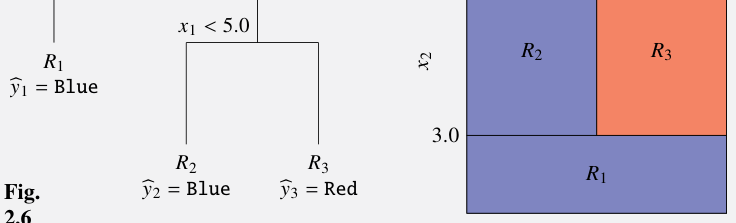

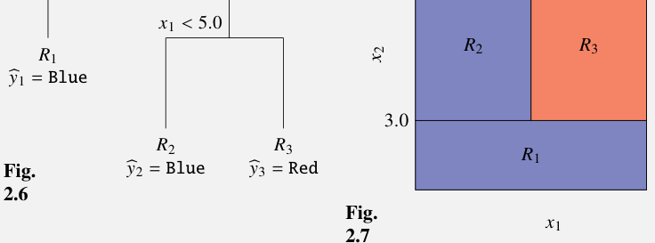
Tracing the classification tree above, the root tests \(x_2<3.0\) (left leaf: Blue) and its right branch tests \(x_1<5.0\) (left leaf: Blue, right leaf: Red). For \(\mathbf x_\star=[2.5,\,3.5]^\top\), since \(x_2=3.5\ge3.0\) we branch right, and since \(x_1=2.5<5.0\) we branch left, predicting Blue.沿上图分类树演算：根结点检验 \(x_2<3.0\)（左叶结点为蓝），右分支再检验 \(x_1<5.0\)（左叶结点为蓝、右叶结点为红）。对于点 \(\mathbf x_\star=[2.5,\,3.5]^\top\)，因 \(x_2=3.5\ge3.0\) 向右，再因 \(x_1=2.5<5.0\) 向左，最终预测为蓝。
Because each split merely compares one feature against a threshold, scaling or shifting inputs leaves the tree unchanged. Unlike distance-based methods such as \(k\)-NN, decision trees require no feature normalization.由于每次测试只是把单个特征与常数阈值比大小，对特征做缩放或平移完全不改变切分结果，因此决策树不像 \(k\)-NN 那样依赖输入归一化。
Step 3: how a tree is learned第 3 步：决策树如何学习
Core idea: Learning proceeds greedily top-down by choosing the attribute that best separates the target classes at the current node, splitting the data along its values, and recursing until a stopping case triggers.核心思路：树的学习采用自顶向下的贪心策略：在当前结点选出最能区分标签的属性，按其取值拆分样本并递归建树，直至触发终止条件。
Finding the smallest tree consistent with a training set is NP-hard, so practical learners use a greedy（贪心）divide-and-conquer heuristic: pick the best local split at each node and never backtrack. Although this does not guarantee a minimal tree, it runs quickly; Section 7.2 defines how "best" is scored.寻找拟合数据的最小决策树是 NP 难问题，因此实际算法采用贪心的分治启发式策略：每一步只挑当前最优划分且永不回溯。这虽不保证得到最小树，却十分高效；“最优”的定量指标将在第 7.2 节展开。
To trace LEARN-DECISION-TREE by hand at the current node:手工执行 LEARN-DECISION-TREE 的步骤如下：
- Check base cases: Return the parent's majority class if no examples remain; return the shared label if all examples agree; or return the current majority class if no attributes remain.检查终止情形：若当前无样本，返回父结点的多数输出；若所有样本标签一致，返回该标签；若无剩余属性，返回当前样本的多数输出。
- Pick the best split: Otherwise score every remaining attribute (e.g., via information gain) and select the highest-scoring attribute \(A\).选出最佳属性：否则计算每个剩余属性的重要性（如信息增益），取最高分属性 \(A\)。
- Branch and recurse: Create a branch for each value of \(A\), route matching examples down, and recurse on each subset with \(A\) removed.分枝并递归：为 \(A\) 的每个取值建一条分支，将对应样本送入子集，并在去掉 \(A\) 后的属性集上递归调用。
function LEARN-DECISION-TREE(examples, attributes, parent_examples) returns a tree
if examples is empty then return PLURALITY-VALUE(parent_examples) # case 1
else if all examples have the same classification then return it # case 2
else if attributes is empty then return PLURALITY-VALUE(examples) # case 3
else
A ← argmax over a in attributes of IMPORTANCE(a, examples) # case 4: split
tree ← a new decision tree with root test A
for each value v_k of A do
exs ← {e in examples : e.A = v_k}
subtree ← LEARN-DECISION-TREE(exs, attributes − A, examples)
add a branch to tree with label (A = v_k) and subtree
return tree
Here PLURALITY-VALUE returns the most frequent output label, breaking ties at random. The four cases correspond to distinct learning situations:其中 PLURALITY-VALUE 返回出现最多的输出标签（平票时随机打破）。伪代码中的四种情形分别对应：
| Situation情形 | Action and reason处理方式与原因 |
|---|---|
| Case 1: No examples left in the branch情形 1：分支中无样本 | Return the parent's majority output, because this attribute combination was never observed返回父结点的多数输出，因为该属性值组合从未在训练集中出现 |
| Case 2: All examples share one output情形 2：所有样本输出一致 | Return that output immediately as a pure leaf直接将该输出作为纯净叶结点返回 |
| Case 3: Mixed outputs, no attributes left情形 3：标签混合但已无剩余属性 | Return the majority output; identical inputs differ due to noise, stochasticity, or unrecorded features返回当前多数输出；特征完全相同却标签不同，源于噪声、随机性或未记录特征 |
| Case 4: Mixed outputs, attributes remain情形 4：标签混合且仍有剩余属性 | Split on the highest-scoring attribute and recurse on every branch按最佳属性划分，并在各分支上继续递归 |
In the AIMA restaurant problem (12 examples: 6 yes, 6 no), the root test Patrons splits into three branches: None (0 yes, 2 no) and Some (4 yes, 0 no) immediately become leaves by Case 2.以 AIMA 餐厅问题（12 个样本：6 个“等位”、6 个“不等位”）为例：根测试 Patrons 分为三个分支，其中 None（0 正 2 负）和 Some（4 正 0 负）均按情形 2 直接成为叶结点。
The Full branch holds (2 yes, 4 no) and recurses on Hungry (Case 4). Later, the French branch under Type receives zero examples (Case 1) and inherits its parent's tied (2 yes, 2 no) plurality vote broken toward "yes."Full 分支包含（2 正 4 负），触发情形 4 并按 Hungry 继续划分；后续 Type 下的 French 分支没有任何样本（情形 1），故继承其父结点在（2 正 2 负）平票时破平得到的“是”。
Practice练习
Q1. (Expressiveness) (a) Draw a decision tree for \(A\oplus B\) (exclusive OR) and write it in disjunctive normal form. (b) How many leaves does a tree for the parity of \(m\) Boolean attributes need?Q1.（表达能力）(a) 画出 \(A\oplus B\)（异或）的决策树，并将其写成析取范式。(b) 对于 \(m\) 个布尔属性的奇偶函数，决策树需要多少个叶结点？
Answer
- (a) Tree and DNF: Test \(A\) at the root and \(B\) on both branches, giving 3 internal tests and 4 leaves: \((A,B)=(T,T)\to F\), \((T,F)\to T\), \((F,T)\to T\), \((F,F)\to F\). Reading the true leaves yields \((A\wedge\neg B)\vee(\neg A\wedge B)\).(a) 树结构与析取范式：根结点测试 \(A\)，两个分支均再测试 \(B\)，共 3 次测试、4 个叶结点：\((T,T)\to F\)、\((T,F)\to T\)、\((F,T)\to T\)、\((F,F)\to F\)。合并输出为真的两条路径，得析取范式 \((A\wedge\neg B)\vee(\neg A\wedge B)\)。
- (b) Parity size: Flipping any single input reverses parity, so every path must test all \(m\) attributes, requiring \(2^m\) leaves (1024 when \(m=10\)). Parity grows exponentially for trees.(b) 奇偶函数规模：改变任意一个输入都会翻转输出，因此每条路径都必须测完所有 \(m\) 个属性，共需 \(2^m\) 个叶结点（当 \(m=10\) 时为 1024 个），规模呈指数增长。
Q2. (Trace) A tree tests \(x_2<3.0\) at the root; its right branch tests \(x_1<5.0\); the leaves are Blue, Blue, Red (left to right). Classify \([7,2]\), \([6,4]\), and \([2,3]\), and describe the Red region.Q2.（手工演算）某决策树在根结点测试 \(x_2<3.0\)，右分支测试 \(x_1<5.0\)，叶结点从左到右依次为 Blue、Blue、Red。对 \([7,2]\)、\([6,4]\) 和 \([2,3]\) 分类，并描述 Red 区域。
Answer
- Predictions: \([7,2]\) has \(x_2=2<3.0\) → Blue; \([6,4]\) has \(4\ge3.0\) (right) then \(6\ge5.0\) (right) → Red; \([2,3]\) has \(3\ge3.0\) (boundary goes right) then \(2<5.0\) (left) → Blue.样本分类：\([7,2]\) 因 \(x_2=2<3.0\) 判为 Blue；\([6,4]\) 先因 \(4\ge3.0\) 向右、再因 \(6\ge5.0\) 向右判为 Red；\([2,3]\) 先因边界值 \(3\ge3.0\) 向右、再因 \(2<5.0\) 向左判为 Blue。
- Red region: The box \(\{x_1\ge5.0,\; x_2\ge3.0\}\), bounded by the half-lines \(x_2=3.0\) (\(x_1\ge5.0\)) and \(x_1=5.0\) (\(x_2\ge3.0\)).Red 区域：矩形域 \(\{x_1\ge5.0,\; x_2\ge3.0\}\)，其边界由射线 \(x_2=3.0\)（\(x_1\ge5.0\)）和 \(x_1=5.0\)（\(x_2\ge3.0\)）构成。
Q3. (Algorithm) In LEARN-DECISION-TREE, what is returned (a) when three examples share identical attribute values but are labeled yes, yes, no and no attributes remain, and (b) when a branch receives no examples? Why?Q3.（算法逻辑）在 LEARN-DECISION-TREE 中，以下两种情形分别返回什么，为什么：(a) 三个样本属性完全相同，标签却为 yes、yes、no，且已无剩余属性；(b) 某分支没有分到任何样本？
Answer
- (a) Case 3 (
attributesempty): ReturnsPLURALITY-VALUE(examples)= yes. Identical inputs with conflicting labels reflect label noise, nondeterminism, or an unobserved feature, so the majority label minimizes mistakes.(a) 情形 3（无剩余属性）：返回PLURALITY-VALUE(examples)= yes。完全相同的特征出现冲突标签，说明存在噪声、随机性或未观测属性，取多数类可使错误最少。 - (b) Case 1 (
examplesempty): ReturnsPLURALITY-VALUE(parent_examples). Because this combination of attribute values never appeared in training, the parent's majority vote provides the best prior estimate.(b) 情形 1（无样本）：返回PLURALITY-VALUE(parent_examples)。该属性组合在训练集中从未出现过，因此沿用父结点的多数类作为最佳先验估计。
Choosing the split: entropy, information gain and Gini index ★★★选择划分：熵、信息增益与基尼指数
Goal. Compute node entropy, split remainder, information gain, and Gini index on small tables, and use these scores to select the root attribute.目标。 在小样本表上计算结点的熵、划分后的剩余熵、信息增益与基尼指数，并据此选出最佳根属性。
Step 1: entropy of a set第 1 步：集合的熵
Core idea: Entropy quantifies the average uncertainty of a node's class distribution—0 bits when every example shares the same label, and 1 bit for an even 50/50 split between two classes.核心思路：熵刻画结点类别分布的平均不确定性——全为同一类时为 0 比特，两类对半平分时达到最大 1 比特。
Before deciding which attribute makes a good split, we first need a numeric score for how mixed or "impure" the current set of examples is. Shannon's entropy provides that baseline by weighting each outcome's surprise \(-\log_2 P(v_k)\) by its probability:在挑选最佳划分属性之前，我们必须先量化当前样本集合的“混杂度”（不纯度）。香农熵通过概率加权每个结果的意外程度 \(-\log_2 P(v_k)\) 来给出这一基准：
For a node with \(p=4\) positive and \(n=2\) negative examples, the positive share is \(q=\frac46=0.667\), giving \(B(0.667)=-(0.667\log_2 0.667+0.333\log_2 0.333)=0.390+0.528=0.918\) bits.以 \(p=4\) 个正例和 \(n=2\) 个负例的集合为例，正例占比 \(q=\frac46=0.667\)，其熵为 \(B(0.667)=-(0.667\log_2 0.667+0.333\log_2 0.333)=0.390+0.528=0.918\) 比特。
Step 2: remainder and information gain第 2 步：剩余熵与信息增益
Core idea: Information gain measures how much uncertainty disappears once we learn an attribute's value—defined as the parent's entropy minus the size-weighted average entropy of the child subsets.核心思路：信息增益衡量得知某属性取值后不确定性减少了多少，即划分前结点的熵减去划分后各子集熵的加权平均。
A test on attribute \(A\) with \(d\) values partitions the node's examples into \(d\) subsets (for a numeric threshold split, \(d=2\)). Weighting each child's entropy by the fraction of examples routed into it yields the expected uncertainty remaining after the test—the remainder（剩余熵）.包含 \(d\) 个取值的属性 \(A\) 将结点样本分为 \(d\) 个子集（数值阈值划分为 \(d=2\)）。将每个子集的熵按其样本比例加权求和，便得到划分后仍残留的期望不确定性，称为剩余熵。
To find the best split at any node by hand:手工挑选某结点的最佳划分步骤如下：
- Compute parent entropy: Count \((p,n)\) at the current node and evaluate \(B\!\left(\frac{p}{p+n}\right)\).算父结点熵：数出当前结点的 \((p,n)\) 并计算 \(B\!\left(\frac{p}{p+n}\right)\)。
- Tabulate child counts: For each candidate attribute \(A\), list \((p_k,n_k)\) under each branch \(k\).列子集计数：对每个候选属性 \(A\)，写出各个取值分支 \(k\) 下的 \((p_k,n_k)\)。
- Compute remainder and gain: Sum the size-weighted child entropies to get \(\text{Remainder}(A)\), then subtract it from the parent entropy; pick the largest gain and recompute inside every child.求剩余熵与增益：将各子集熵按样本比例加权相加得到 \(\text{Remainder}(A)\)，再用父结点熵减去它；选增益最大者，并在每个子结点内重新计算。
Here is a small table you can compute mentally (4 yes, 2 no):再看一个可直接心算的微型数据集（4 个 yes，2 个 no）：
| # | Outlook | Windy | Play |
|---|---|---|---|
| 1 | Sunny | No否 | Yes是 |
| 2 | Sunny | No否 | Yes是 |
| 3 | Sunny | Yes是 | No否 |
| 4 | Rain | No否 | Yes是 |
| 5 | Rain | Yes是 | No否 |
| 6 | Rain | No否 | Yes是 |
The root entropy is \(B(\frac46)=0.918\) bits. Splitting on Outlook gives Sunny \((2,1)\) and Rain \((2,1)\)—a remainder of \(\frac36\cdot0.918+\frac36\cdot0.918=0.918\) and zero gain—whereas Windy yields pure leaves No \((4,0)\) and Yes \((0,2)\) with zero remainder and \(\text{Gain}(\text{Windy})=0.918\) bits, so Windy becomes the root.根结点熵为 \(B(\frac46)=0.918\) 比特。按 Outlook 划分得到 Sunny \((2,1)\) 与 Rain \((2,1)\)，剩余熵仍为 \(0.918\)（增益为 0）；按 Windy 划分则得到纯净叶结点 No \((4,0)\) 与 Yes \((0,2)\)，剩余熵为 0，增益高达 \(0.918\) 比特，因此 Windy 成为根结点。
Step 3: the Gini index and other impurity measures第 3 步：基尼指数与其他不纯度度量
Core idea: Rather than measuring information in bits, CART scores splits by minimizing the size-weighted child impurity—most commonly the Gini index, which strictly prefers splits that isolate pure nodes over raw error rate.核心思路：CART 不必用比特衡量信息，而是直接最小化按样本数加权的子结点不纯度；其中基尼指数比误分类率更敏锐，能优先识别出纯净子结点。
In binary split frameworks such as CART, a split at feature \(j\) and cutpoint \(s\) sends \(N_1\) examples left with impurity \(Q_1\) and \(N_2\) examples right with impurity \(Q_2\), choosing the split with the lowest total weighted impurity:在 CART 等二叉树框架下，对特征 \(j\) 在切分点 \(s\) 处切分，会把 \(N_1\) 个样本送往左子结点（不纯度 \(Q_1\)）、\(N_2\) 个样本送往右子结点（不纯度 \(Q_2\)），算法选择加权不纯度之和最小的划分：

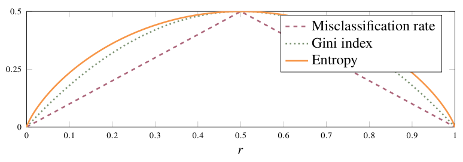
All three measures equal 0 at pure nodes (\(r=0\) or \(1\)) and peak at \(r=0.5\). However, Gini and entropy are strictly concave, dropping much more steeply near pure nodes than the piecewise-linear misclassification rate, so they reward splits that isolate a pure child even when the error rate ties; ID3/C4.5 rely on entropy while CART uses Gini.三者在纯结点处均为 0、在 50/50 处达到峰值。但基尼指数与熵严格下凹，靠近纯结点时下降比分段线性的误分类率更陡，因此即使误分类率打平，二者仍能偏爱产生纯子结点的划分；ID3/C4.5 采用熵，而 CART 采用基尼指数。
Practice练习
Q1. (Calculation) A node has 8 positive and 4 negative examples. Attribute \(A\) splits it into \((6+,1-)\) and \((2+,3-)\). Compute the information gain.Q1.（计算）某结点包含 8 个正例和 4 个负例，属性 \(A\) 将其划分为 \((6+,1-)\) 与 \((2+,3-)\)。计算信息增益。
Answer
- Parent entropy: \(H=B(\frac{8}{12})=0.918\) bits.父结点熵：\(H=B(\frac{8}{12})=0.918\) 比特。
- Remainder: \(\frac{7}{12}B(\frac67)+\frac{5}{12}B(\frac25)=0.583\times0.592+0.417\times0.971=0.750\) bits.剩余熵：\(\frac{7}{12}B(\frac67)+\frac{5}{12}B(\frac25)=0.583\times0.592+0.417\times0.971=0.750\) 比特。
- Information gain: \(\text{Gain}=0.918-0.750=0.169\) bits (weakly informative; Section 7.3 tests whether such a gain is statistically significant).信息增益：\(\text{Gain}=0.918-0.750=0.169\) 比特（增益较弱，第 7.3 节将用卡方检验判断其是否显著）。
思路：先算父结点熵，再按子集样本比例加权求剩余熵，最后两数相减。
Q2. (Compare criteria) A node has 8 positive and 8 negative examples. Split A produces \((6+,2-)\) and \((2+,6-)\); split B produces \((8+,4-)\) and \((0+,4-)\). Compute the weighted misclassification rate, Gini index, and entropy for both splits and state which split each criterion prefers.Q2.（准则比较）某结点含 8 个正例与 8 个负例。划分 A 产生 \((6+,2-)\) 与 \((2+,6-)\)；划分 B 产生 \((8+,4-)\) 与 \((0+,4-)\)。分别计算两种划分的加权误分类率、基尼指数与熵，并说明各准则偏好哪一种划分。
Answer
- Misclassification rate (tie): Both splits make 4 errors out of 16 examples (0.25), so error rate cannot distinguish A from B.误分类率（打平）：两种划分在 16 个样本中均错分 4 个（误分类率均为 0.25），无法区分优劣。
- Gini index (prefers B): Split A gives \(2\cdot\frac34\cdot\frac14=0.375\) in both children (weighted 0.375); split B gives \(\frac{12}{16}\cdot 2\cdot\frac23\cdot\frac13+\frac{4}{16}\cdot 0=0.333\).基尼指数（偏好 B）：划分 A 两子结点均为 \(2\cdot\frac34\cdot\frac14=0.375\)（加权 0.375）；划分 B 为 \(\frac{12}{16}\cdot 2\cdot\frac23\cdot\frac13+0=0.333\)。
- Entropy / Gain (prefers B): Split A has remainder \(B(0.25)=0.811\) bits (gain 0.189); split B has remainder \(\frac{12}{16}B(\frac23)=0.689\) bits (gain 0.311). Both Gini and entropy favor B because it isolates a pure child.熵与信息增益（偏好 B）：划分 A 剩余熵为 \(B(0.25)=0.811\) 比特（增益 0.189）；划分 B 剩余熵为 \(\frac{12}{16}B(\frac23)=0.689\) 比特（增益 0.311）。基尼和熵因凹性而奖赏纯净子结点，均选择 B。
Overfitting, pruning and extensions ★★过拟合、剪枝与扩展
Goal. Explain why unpruned trees overfit, contrast early stopping with post-pruning, and perform chi-squared pruning by hand.目标。 解释未剪枝决策树过拟合的原因，对比提前停止与后剪枝，并掌握手工卡方剪枝计算。
Step 1: why trees overfit and how to limit them第 1 步：为什么树会过拟合，以及如何控制规模
Core idea: Growing a tree until every leaf is pure memorizes training noise, creating high variance; to generalize better, we either stop growth early or grow a full tree and prune uninformative splits back.核心思路：一味分裂到叶结点全纯会死记训练噪声（高方差）；为了泛化，要么提前停止生长，要么先长出完整树再剪掉无效分支。
Like 1-NN, a fully grown decision tree achieves zero training error (low bias) at the cost of high variance, carving tiny boxes around individual noisy points—especially when many attributes and few examples are present (Section 6.4). Two main mechanisms control tree complexity:与 1-NN 相似，完全生长的决策树虽然训练误差为零（低偏差），却会在个别噪声点周围切出细碎方框而导致高方差，在特征多、样本少时尤为明显（第 6.4 节）。控制树规模主要有两种途径：
- Stopping criteria (pre-pruning)（提前停止 / 预剪枝）: Halt splitting when a node falls below a minimum sample count, reaches a maximum depth, hits a leaf budget, or fails a significance test.提前停止（预剪枝）：当结点样本数低于阈值、达到最大深度或叶结点上限，或划分不显著时停止生长。
- Pruning (post-pruning)（后剪枝）: Grow the full tree first, then collapse subtrees back into leaves whenever their splits look like random noise.后剪枝：先完整地把树长出来，再自底向上把看似由随机噪声造成的子树剪回为叶结点。
While pre-pruning is faster, it can stop prematurely on interacting attributes. In two-variable XOR, neither attribute alone has positive gain at the root, so pre-pruning stops at a single leaf; growing fully first allows the second-level splits to separate the classes perfectly and survive post-pruning.预剪枝虽然省时，却容易在存在特征交互时过早停手。例如二元 XOR 在根结点上单看任一属性信息增益都为 0，预剪枝会直接停成单叶结点；而先生长再后剪枝，则能借助第二层划分完美分开两类并保留该结构。
Step 2: chi-squared pruning第 2 步：卡方剪枝
Core idea: Chi-squared pruning checks whether a bottom-level split differs significantly from what an irrelevant random attribute would produce; if not, the test is replaced by a single majority leaf.核心思路：卡方剪枝检验底层的某个划分与“完全无关的随机属性”有多大差别；若差异不显著，则剪去该测试并替换为多数类叶结点。
Even an irrelevant attribute rarely splits finite samples into exact parent proportions, yielding small spurious gains. To test whether a split reflects genuine structure, apply bottom-up chi-squared (\(\chi^2\)) pruning by hand:有限样本下，哪怕完全无关的随机属性也很难恰好按父结点比例均分样本，从而产生虚假的正增益。手工执行自底向上卡方（\(\chi^2\)）剪枝的步骤如下：
- Pick a candidate node: Find a test node whose children are all leaves.找候选结点：选取一个所有子结点都是叶结点的测试结点。
- Compute expected counts: Under the null hypothesis of an irrelevant attribute, multiply the parent's positive/negative proportions by each child's size \(p_k+n_k\).算期望计数：在“属性无关”的零假设下，用父结点的正负例比例乘以各子集大小 \(p_k+n_k\)。
- Evaluate \(\Delta\) and decide: Compute \(\Delta\) and compare against the critical value for \(d-1\) degrees of freedom; keep the test if \(\Delta\) exceeds it, otherwise collapse to a plurality leaf and repeat upward.比较 \(\Delta\) 并决策：算出统计量 \(\Delta\) 并与自由度 \(d-1\) 对应的临界值比较；若超过临界值则保留，否则剪为多数类叶结点并继续向上检查。
| Degrees of freedom \(d-1\)自由度 \(d-1\) | 1 | 2 | 3 |
|---|---|---|---|
| Critical value, 5% level临界值（5% 显著性水平） | 3.84 | 5.99 | 7.81 |
| Critical value, 1% level临界值（1% 显著性水平） | 6.63 | 9.21 | 11.35 |
On noisy data, pruned trees generalize significantly better than unpruned trees while remaining smaller, faster, and easier to interpret.在含噪数据上，剪枝后的树不仅泛化准确率更高，而且规模更小、推理更快、也更易于人类阅读。
Practice练习
Q1. (Chi-squared pruning) A node with \(p=8, n=4\) is split into \((6+,1-)\) and \((2+,3-)\) (the split from Section 7.2 Q1). Compute \(\Delta\) and decide at the 5% level. Repeat for a node with \(p=n=6\) split into \((5,1)\) and \((1,5)\).Q1.（卡方剪枝）一个含 \(p=8, n=4\) 的结点被划分为 \((6+,1-)\) 与 \((2+,3-)\)（同 7.2 节 Q1）。计算 \(\Delta\) 并在 5% 水平下作出决策；再对 \(p=n=6\) 划分为 \((5,1)\) 与 \((1,5)\) 的情形重复计算。
Answer
- First node \((8,4)\): Expected counts are \(\hat p_1=8\cdot\frac{7}{12}=4.667, \hat n_1=2.333\) and \(\hat p_2=3.333, \hat n_2=1.667\). Summing squared deviations gives \(\Delta=0.381+0.762+0.533+1.067=2.74\). Since \(d-1=1\) gives critical value 3.84 and \(2.74<3.84\) (\(p=0.098\)), prune.第一个结点 \((8,4)\)：两子集期望计数分别为 \((4.667,2.333)\) 与 \((3.333,1.667)\)，算出 \(\Delta=0.381+0.762+0.533+1.067=2.74\)。自由度 \(d-1=1\) 临界值为 3.84，因 \(2.74<3.84\)（\(p=0.098\)），应予剪枝。
- Second node \((6,6)\): Expected counts are \((3,3)\) in both children, giving \(\Delta=2\left[\frac{(5-3)^2}{3}+\frac{(1-3)^2}{3}\right]=5.33>3.84\) (\(p=0.021\)), so keep the test.第二个结点 \((6,6)\)：两子集期望计数均为 \((3,3)\)，算出 \(\Delta=2\left[\frac{(5-3)^2}{3}+\frac{(1-3)^2}{3}\right]=5.33>3.84\)（\(p=0.021\)），保留该划分。
Q2. (True or false) "Stopping growth as soon as no attribute has a significant gain gives the same tree as growing the full tree and pruning." Justify.Q2.（判断）“一旦没有任何属性具有显著增益就停止生长，得到的树与先完全生长再后剪枝得到的树完全相同。”请判断正误并说明理由。
Answer
False. For balanced two-attribute XOR, both attributes have zero gain at the root, so early stopping returns a single leaf with 50% accuracy.错误。在样本均衡的二元 XOR 数据上，两个属性在根结点处的信息增益均为 0，因此提前停止会直接返回单个叶结点（准确率仅 50%）。
When grown fully and pruned bottom-up, the second-level tests achieve pure splits with large \(\Delta\) and are kept; because the root's children are no longer leaves, the root is never pruned and the exact depth-2 tree survives.若先完整生长再自底向上剪枝，第二层划分能够完美区分两类并获得极大的 \(\Delta\) 而被保留；由于根结点的子结点不再是叶结点，根结点不会被剪除，最终完整保留这棵深度为 2 的树。
Ensembles: bagging and random forests ★★★集成学习：装袋法与随机森林
Goal. Trace bagging and random forests step by step, derive and evaluate ensemble variance and out-of-bag counts, and explain why adding more trees does not overfit.目标。 分步掌握装袋法（Bagging）与随机森林的流程，计算集成平均值的方差与袋外统计量，并解释为何增加树的数量不会过拟合。
Step 1: why combine models第 1 步：为什么要组合多个模型
Core idea: An ensemble aggregates predictions from multiple base models via averaging or voting so that their independent mistakes partially cancel out, lowering variance—or, when combined sequentially, reducing bias.核心思路：集成学习通过取平均或投票把多个基模型的预测结合起来，使各模型互不相同的错误得以部分抵消，从而降低方差（若顺序组合则可降低偏差）。
Ensemble learning（集成学习）combines \(K\) base models \(h_1,\dots,h_K\) in two complementary ways: combining simple restricted learners expands representational power (reducing bias), while averaging diverse complex learners stabilizes noisy predictions (reducing variance). For independent classifiers that each beat random guessing, majority voting rapidly suppresses error:集成学习通过组合 \(K\) 个基模型 \(h_1,\dots,h_K\) 获益：组合简单受限的弱模型可提升表达能力（降低偏差），而对多样的复杂模型取平均能平滑不稳定波动（降低方差）。若各分类器错误彼此独立且单模型准确率过半，多数投票能迅速压缩整体出错率：
With \(K=3\) independent classifiers each having accuracy \(a=0.8\), the majority wins whenever 2 or 3 members agree correctly: \(P=3\cdot0.8^2\cdot0.2+0.8^3=0.384+0.512=0.896\). In practice, models trained on the same dataset share correlated errors, so the real improvement is smaller unless we actively decorrelate them.当 \(K=3\) 且每个独立分类器准确率均为 \(a=0.8\) 时，只要有 2 个或 3 个成员判对即可获胜：\(P=3\cdot0.8^2\cdot0.2+0.8^3=0.384+0.512=0.896\)。现实中同一数据集训练出的模型往往“错在一起”，因此必须主动引入多样性。
Step 2: bagging第 2 步：装袋法（Bagging）
Core idea: Bagging (bootstrap aggregating) trains \(K\) high-variance models in parallel on bootstrap resamples of the training data and averages their predictions to cancel estimation variance.核心思路：装袋法（Bagging，自助聚合）在训练集的多个有放回自助重采样副本上并行训练 \(K\) 个高方差模型，再通过取平均或投票来抵消方差。
Deep, unpruned decision trees are prime candidates for bagging because they have low bias but high sensitivity to small training perturbations. To apply bagging by hand:未经剪枝的深决策树偏差低但极不稳定（训练集中微小的增删就可能导致树形大变），因此是装袋法的理想基模型。手工执行装袋法的流程为：
- Resample with replacement: Draw \(K\) independent bootstrap samples, each of size \(N\).有放回重采样：从原始数据中抽取 \(K\) 份规模同为 \(N\) 的自助样本。
- Train in parallel: Fit one unpruned deep tree \(h_i\) independently on each bootstrap sample.并行训练：在每份自助样本上独立训练一棵深决策树 \(h_i\)。
- Aggregate equally: Output the mean prediction across all \(K\) trees for regression, or the plurality vote for classification.等权聚合：回归时对 \(K\) 棵树的输出取算术平均，分类时取多数表决结果。

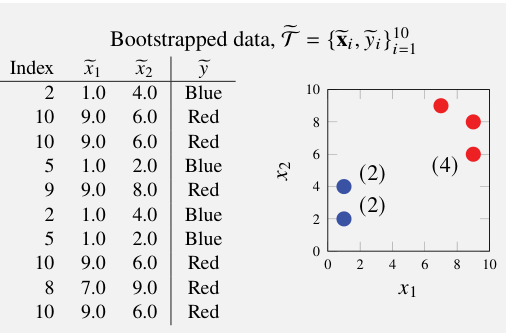
In the sample above (indices 2, 10, 10, 5, 9, 2, 5, 10, 8, 10), point 10 appears four times, points 2 and 5 appear twice, and five points are omitted altogether. Sampling with replacement is crucial—without replacement, every sample of size \(N\) would simply permute the original dataset and produce \(K\) identical trees.在上图的抽样（索引 2、10、10、5、9、2、5、10、8、10）中，点 10 出现 4 次，点 2 与点 5 各出现 2 次，另有 5 个点完全未被抽到。采样必须有放回；若不放回抽取 \(N\) 个点，每次得到的只是原数据的重排，所有树将完全一模一样。
Quantitatively, averaging \(K\) identically distributed models with variance \(\sigma^2\) and pairwise correlation \(\rho\) explains both the power and the fundamental limit of bagging:定量来看，对 \(K\) 个方差为 \(\sigma^2\)、两两相关系数为 \(\rho\) 的同分布模型取平均，清楚揭示了装袋法的威力与极限：
With \(\sigma^2=1\) and \(\rho=0.25\), variance drops from \(0.325\) at \(K=10\) to \(0.2575\) at \(K=100\), converging toward the floor \(\rho\sigma^2=0.25\) as \(K\to\infty\). Adding more trees never causes overfitting—the average simply converges to its expectation—so \(K\) is bounded only by compute budget (though the ensemble can still inherit overfitting from overly deep base trees).当 \(\sigma^2=1\)、\(\rho=0.25\) 时，集成方差在 \(K=10\) 时为 \(0.325\)，\(K=100\) 时为 \(0.2575\)，随 \(K\to\infty\) 渐近下限 \(0.25\)。增加成员数绝不会诱发过拟合，预测只会平稳收敛到期望模型（不过若基模型本身过拟合且相关性高，集成仍可能保留部分过拟合）。
Step 3: out-of-bag error第 3 步：袋外（OOB）误差
Core idea: Because every bootstrap sample leaves out roughly 36.8% of the training points, we can evaluate each training point using only the trees that never saw it, obtaining a free validation estimate.核心思路：每个自助样本都会漏掉约 36.8% 的训练点，用未曾见过某样本的那部分树来预测它，就能免费得到接近交叉验证的泛化误差估计。
A training point is missed by a single bootstrap draw of size \(N\) with probability \((1-1/N)^N\to e^{-1}\approx0.368\), so each bootstrap sample contains about \(1-e^{-1}\approx63.2\%\) of distinct points. The remaining ~37% of trees that omit point \(i\) form point \(i\)'s out-of-bag（袋外，OOB）ensemble.在规模为 \(N\) 的一次有放回抽样中，某个样本完全不被抽中的概率为 \((1-1/N)^N\to e^{-1}\approx0.368\)，因此每份自助样本约包含 63.2% 的不重复样本；其余未见过点 \(i\) 的约 37% 棵树构成了点 \(i\) 的袋外（OOB）集成。
For \(N=10\), the exact out-of-bag probability is \((1-\frac{1}{10})^{10}=0.349\); in a forest of \(K=300\) trees on large \(N\), roughly \(300\times0.368\approx110\) trees score each training point.当 \(N=10\) 时，某点成为袋外样本的精确概率为 \((1-\frac{1}{10})^{10}=0.349\)；在大样本、含 \(K=300\) 棵树的森林中，每个点大约由 \(300\times0.368\approx110\) 棵树进行袋外评估。
Step 4: random forests第 4 步：随机森林
Core idea: A random forest lowers tree correlation \(\rho\)—and thus the variance floor \(\rho\sigma^2\)—by restricting every split to a fresh random subset of \(q\) features instead of letting dominant features appear at every root.核心思路：随机森林在每次结点划分时只允许从随机抽取的 \(q\) 个属性中择优，避免强特征垄断每棵树的根结点，从而压低树间相关性 \(\rho\) 并拉低方差下限 \(\rho\sigma^2\)。
Plain bagged trees often remain strongly correlated because one dominant attribute wins the root split in nearly every bootstrap sample, keeping \(\rho\sigma^2\) high. A random forest（随机森林）decorrelates the trees with one extra rule:普通装袋法中各棵树仍可能高度相似——只要存在一两个极强特征，几乎每份自助样本都会把它挑作根结点，导致 \(\rho\) 居高不下。随机森林通过额外注入特征随机性打破了这一僵局：
- Bootstrap and grow unpruned: Draw a bootstrap sample for each of the \(K\) trees and grow each tree without pruning.自助抽样并充分生长：为 \(K\) 棵树各抽一份自助样本，并不加剪枝地生长深树。
- Subsample features per split: At every split, draw a fresh random subset of \(q\) out of \(m\) attributes and split only on the best among those \(q\) (note \(q=m\) reduces to plain bagging).每次划分随机抽特征：在每一次结点划分时重新随机抽取 \(q\) 个属性，仅从这 \(q\) 个候选中择优（当 \(q=m\) 时即退化为普通装袋法）。
- Aggregate predictions: Average (regression) or take the plurality vote (classification) across all \(K\) trees.汇总输出：对全部 \(K\) 棵树取均值（回归）或多数表决（分类）。
Restricting candidate features raises individual tree variance \(\sigma^2\) slightly, yet cutting correlation \(\rho\) usually dominates. For \(K=100\), bagging with \((\sigma^2,\rho)=(1,0.5)\) yields variance \(0.005+0.5=0.505\), whereas a forest with \((1.2,0.2)\) yields \(\frac{0.8}{100}\cdot1.2+0.24=0.250\).限制候选特征虽会使单棵树方差 \(\sigma^2\) 略升，但相关性 \(\rho\) 的骤降通常大获全胜：在 \(K=100\) 时，装袋法若 \((\sigma^2,\rho)=(1,0.5)\) 则方差为 \(0.505\)，而随机森林若为 \((1.2,0.2)\) 则降至 \(0.250\)。
In cost and structure, training a \(K\)-tree forest takes roughly \(K\) times the runtime of one tree (easily parallelized across cores), though the ensemble is much less readable than a single tree.在开销与可读性方面，训练 \(K\) 棵树的随机森林约需单棵树 \(K\) 倍计算量（但可高度并行），不过整片森林不如单棵树直观易读。
Practice练习
Q1. (Majority vote) Three independent classifiers are each correct with probability 0.7. Find the probability that the majority vote is correct. Repeat if accuracy is 0.4, and if all three are identical copies.Q1.（多数投票）三个相互独立的分类器各自正确率均为 0.7，求多数投票正确的概率。若各自正确率为 0.4，或三者为完全相同的副本，结果分别如何？
Answer
- Accuracy 0.7: \(P=3(0.7)^2(0.3)+0.7^3=0.441+0.343=0.784\), outperforming a single classifier.正确率 0.7：\(P=3(0.7)^2(0.3)+0.7^3=0.441+0.343=0.784\)，高于单个分类器。
- Accuracy 0.4: \(P=3(0.4)^2(0.6)+0.4^3=0.288+0.064=0.352\), worse than one classifier because voting amplifies whichever side of 0.5 each member sits on.正确率 0.4：\(P=3(0.4)^2(0.6)+0.4^3=0.288+0.064=0.352\)，反而更差，因为投票会放大准确率相对于 0.5 的偏离方向。
- Identical copies: Perfectly correlated copies always agree, leaving ensemble accuracy at 0.7; diversity is essential.完全相同副本：成员完全相关时永远投出相同一票，准确率仍为 0.7；集成增益必须依赖多样性。
Q2. (Bootstrap and out-of-bag) A bootstrap sample of \(N=8\) points draws indices 3, 3, 1, 7, 5, 1, 3, 8. (a) Which points are out-of-bag? (b) What is the OOB probability for \(N=8\) and as \(N\to\infty\)? (c) Why sample with replacement? (d) In a 300-tree forest, about how many trees score one point OOB?Q2.（自助采样与袋外）从 \(N=8\) 个样本中抽得自助索引 3、3、1、7、5、1、3、8。(a) 哪些点属于袋外？(b) \(N=8\) 及 \(N\to\infty\) 时袋外概率是多少？(c) 为何必须有放回抽样？(d) 300 棵树的森林中，每个点约由多少棵树作袋外预测？
Answer
- (a) OOB points: The sample includes points 1, 3, 5, 7, 8, so points 2, 4, and 6 are out-of-bag.(a) 袋外样本：抽样中包含点 1、3、5、7、8，因此点 2、4、6 属于袋外。
- (b) OOB probability: \((1-\frac18)^8=0.344\) for \(N=8\), approaching \(e^{-1}\approx0.368\) for large \(N\).(b) 袋外概率：\(N=8\) 时为 \((1-\frac18)^8=0.344\)，当 \(N\) 趋于无穷时极限为 \(e^{-1}\approx0.368\)。
- (c) Why with replacement: Sampling \(N\) items without replacement merely reorders the original dataset, making every tree identical and eliminating variance reduction.(c) 有放回原因：若不放回抽满 \(N\) 个样本，每份样本只是原数据换个顺序，所有树完全相同，无法降方差。
- (d) Forest OOB count: Roughly \(300/e\approx110\) trees form the OOB ensemble for each training point.(d) 袋外树数：约 \(300/e\approx110\) 棵树构成每个样本点的袋外集成。
Q3. (Derivation) Let \(z_1,\dots,z_K\) each have variance \(\sigma^2\) and pairwise correlation \(\rho\). Derive \(\operatorname{Var}\bigl[\frac1K\sum z_i\bigr]\), and evaluate it for bagging (\(\sigma^2=4,\rho=0.25,K=16\)) vs. a forest (\(\sigma^2=4.4,\rho=0.1,K=16\)).Q3.（公式推导）设 \(z_1,\dots,z_K\) 方差均为 \(\sigma^2\) 且两两相关系数为 \(\rho\)。推导 \(\operatorname{Var}\bigl[\frac1K\sum z_i\bigr]\)，并计算装袋法（\(\sigma^2=4,\rho=0.25,K=16\)）与随机森林（\(\sigma^2=4.4,\rho=0.1,K=16\)）的集成方差。
Answer
- Derivation: Expanding the sum gives \(K\) variance terms \(\sigma^2\) and \(K(K-1)\) covariance terms \(\rho\sigma^2\): \(\operatorname{Var}=\frac{1}{K^2}\bigl[K\sigma^2+K(K-1)\rho\sigma^2\bigr]=\frac{\sigma^2}{K}+\frac{K-1}{K}\rho\sigma^2=\frac{1-\rho}{K}\sigma^2+\rho\sigma^2\).推导过程：展开方差共含 \(K\) 个自身方差项 \(\sigma^2\) 与 \(K(K-1)\) 个协方差项 \(\rho\sigma^2\)，化简即得 \(\operatorname{Var}=\frac{1}{K^2}\bigl[K\sigma^2+K(K-1)\rho\sigma^2\bigr]=\frac{1-\rho}{K}\sigma^2+\rho\sigma^2\)。
- Comparison (\(K=16\)): Bagging gives \(\frac{0.75}{16}\cdot4+0.25\cdot4=0.1875+1=1.1875\) (floor 1), whereas the forest gives \(\frac{0.9}{16}\cdot4.4+0.44=0.2475+0.44=0.6875\)—winning despite noisier trees because \(\rho\sigma^2\) dropped from 1 to 0.44.数值对比（\(K=16\)）：装袋法为 \(0.1875+1=1.1875\)（下限 1），随机森林为 \(0.2475+0.44=0.6875\)；尽管单棵树方差略高，但下限 \(\rho\sigma^2\) 从 1 降到 0.44，森林显著胜出。
Boosting and AdaBoost ★★提升法（Boosting）与 AdaBoost
Goal. Carry out an AdaBoost update round by hand—computing weighted error, hypothesis weight, and normalized sample weights—and contrast boosting with bagging.目标。 手工演算一轮 AdaBoost 更新（计算加权误差、假设权重与归一化样本权重），并清晰区分提升法与装袋法。
Step 1: the boosting idea第 1 步：提升法的核心思想
Core idea: Instead of averaging independent complex trees in parallel to cut variance, boosting chains simple weak learners sequentially—reweighting errors after each step—to steadily reduce bias.核心思路：与并行平均复杂树以降低方差相反，提升法（Boosting）按顺序串联简单的弱学习器，每一轮提高先前分错样本的权重，从而逐步降低模型偏差。
Boosting（提升法）begins with equal sample weights, trains \(h_1\), boosts the relative weight of misclassified examples so \(h_2\) concentrates on them, and repeats sequentially for \(K\) rounds. The final prediction is an accuracy-weighted vote across all \(h_1,\dots,h_K\); because each learner depends on earlier errors, training cannot be parallelized.提升法从等权重样本出发训练 \(h_1\)，随后调高被分错样本的相对权重，迫使后续模型 \(h_2\) 重点攻克这些难题，如此顺序迭代 \(K\) 轮。最终预测按各模型准确率加权投票；由于后一个模型依赖前一个的误差，过程无法并行。

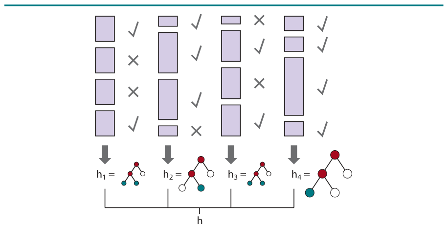
A weak learner（弱学习器）only needs to beat random guessing slightly on any weighted training set; in practice, boosting typically uses decision stumps（决策树桩）—trees with just one root split, which have high bias on their own.弱学习器只要求在任意加权训练集上略微优于随机猜测即可；实际中提升法最常选用本身高偏差的决策树桩（仅含一次根结点测试的单层决策树）。
Step 2: one AdaBoost round第 2 步：AdaBoost 的一轮更新
Core idea: In each round, AdaBoost shrinks the weights of correctly classified examples by \(\varepsilon_k/(1-\varepsilon_k)\) and renormalizes—making misclassified and correct groups tie at half the total weight so the next learner must focus on the mistakes.核心思路：每轮训练后，AdaBoost 将分对样本的权重乘以 \(\varepsilon_k/(1-\varepsilon_k)\) 再整体归一化，使分对与分错两类样本各占总权重的一半，迫使下一轮学习器必须修正旧错。
To execute AdaBoost round by round by hand:手工演算 AdaBoost 的步骤如下：
- Initialize and train: Start with uniform weights \(w_j=1/N\), then train weak learner \(h_k\) on the current weighted dataset.初始化并训练：初始将所有样本权重设为 \(1/N\)，随后在加权训练集上拟合弱学习器 \(h_k\)。
- Score error and vote weight: Sum the weights of misclassified examples to obtain \(\varepsilon_k\) (stop if \(\varepsilon_k>\frac12\)), and compute hypothesis weight \(z_k\).算误差与话语权：累加分错样本的权重得到加权误差 \(\varepsilon_k\)（若 \(\varepsilon_k>\frac12\) 则停止），再算出模型投票权重 \(z_k\)。
- Reweight and normalize: Multiply correctly classified weights by \(\varepsilon_k/(1-\varepsilon_k)\) (leaving mistakes unchanged), divide all weights by their sum to sum to 1, and repeat.调权并归一化：将分对样本权重乘以 \(\varepsilon_k/(1-\varepsilon_k)\)（分错样本保持不变），随后所有权重除以总和使之和为 1，进入下一轮。
After reweighting, correct examples have pre-normalization sum \((1-\varepsilon_k)\frac{\varepsilon_k}{1-\varepsilon_k}=\varepsilon_k\), matching the mistakes; normalizing by \(2\varepsilon_k\) gives each group weight \(\frac12\). Thus \(h_k\) looks like a coin flip on the updated weights, forcing \(h_{k+1}\) to address earlier mistakes.更新权重后，分对样本的总权重变为 \(\varepsilon_k\)（与分错样本恰好相等），除以 \(2\varepsilon_k\) 归一化后两组各占 \(\frac12\)，使刚训练完的 \(h_k\) 在新权重下如同抛硬币，迫使 \(h_{k+1}\) 针对旧错改进。
Provided every weak learner beats random guessing, AdaBoost drives training error to zero for large enough \(K\), though noisy labels can be repeatedly upweighted and cause overfitting.只要每轮弱学习器都优于随机猜测，AdaBoost 在足够大的 \(K\) 下可使训练误差归零，但噪声标签的权重会持续膨胀并诱发过拟合。
Step 3: bagging versus boosting第 3 步：装袋法与提升法的对比
| Dimension对比维度 | Bagging and random forests装袋法与随机森林 | Boosting (AdaBoost)提升法（AdaBoost） |
|---|---|---|
| Base models基模型 | Strong, low bias, high variance (deep trees)强学习器；低偏差、高方差（深树） | Weak, high bias (stumps, shallow trees)弱学习器；高偏差（树桩、浅树） |
| Training训练方式 | Independent, in parallel各树独立，可并行训练 | Sequential; each model targets earlier errors顺序串行；每轮针对前序错题改进 |
| Data per model单模型数据 | Bootstrap sample有放回自助样本 | Full training set with updated sample weights全量训练集，附带动态样本权重 |
| Combination组合方式 | Equal average or plurality vote等权平均或多数投票 | Vote weighted by accuracy (\(z_k\))按准确率加权投票（\(z_k\)） |
| Main effect主要作用 | Lower variance降低方差 | Lower bias降低偏差 |
| Overfitting过拟合特性 | Adding more trees never overfits增加树数不会引发过拟合 | Training error can hit 0; can chase noisy labels whose weights keep growing训练误差可降至 0；可能死盯噪声标签使其权重不断膨胀 |
Practice练习
Q1. (AdaBoost round) Eight examples start with equal weights \(\frac18\). Hypothesis \(h_1\) misclassifies examples 3 and 6; compute \(\varepsilon_1\), \(z_1\), and the new weights. Then \(h_2\) misclassifies examples 1 and 8; compute \(\varepsilon_2\) and \(z_2\).Q1.（AdaBoost 演算）8 个样本初始权重均为 \(\frac18\)。\(h_1\) 误分样本 3 与 6，求 \(\varepsilon_1\)、\(z_1\) 与新权重；随后 \(h_2\) 误分样本 1 与 8，求 \(\varepsilon_2\) 与 \(z_2\)。
Answer
- Round 1 error and vote: \(\varepsilon_1=\frac18+\frac18=\frac14\) and \(z_1=\frac12\ln3=0.549\).第 1 轮误差与投票权：\(\varepsilon_1=\frac18+\frac18=\frac14\)，\(z_1=\frac12\ln3=0.549\)。
- New weights: Multiply the six correct weights by \(\frac13\) to get \(\frac{1}{24}\) each (total \(\frac14\)); examples 3 and 6 stay at \(\frac18\) (total \(\frac14\)). Dividing by \(\frac12\) yields \(\frac{1}{12}\) for correct examples and \(\frac14\) for examples 3 and 6.更新后权重：6 个分对样本乘以 \(\frac13\) 得各 \(\frac{1}{24}\)（共 \(\frac14\)），样本 3、6 保持 \(\frac18\)（共 \(\frac14\)）。除以总和 \(\frac12\)，得正确样本 \(\frac{1}{12}\)，错分样本 3、6 为 \(\frac14\)。
- Round 2: \(\varepsilon_2=\frac{1}{12}+\frac{1}{12}=\frac16\) and \(z_2=\frac12\ln5=0.805\), giving \(h_2\) a larger vote because it is more accurate.第 2 轮：\(\varepsilon_2=\frac{1}{12}+\frac{1}{12}=\frac16\)，\(z_2=\frac12\ln5=0.805\)，更准确的 \(h_2\) 获得更高投票权。
Q2. (Explain and prove) (a) Show that after the AdaBoost reweighting step, \(h_k\) has weighted error exactly \(\frac12\). (b) Why does the algorithm stop when \(\varepsilon_k>\frac12\)?Q2.（解释与证明）(a) 证明 AdaBoost 更新样本权重后，\(h_k\) 在新权重下的加权误差恰好为 \(\frac12\)。(b) 为何当 \(\varepsilon_k>\frac12\) 时算法停止？
Answer
- (a) Proof of \(\frac12\) error: Before normalizing, correct examples carry total weight \((1-\varepsilon)\frac{\varepsilon}{1-\varepsilon}=\varepsilon\) and mistakes carry \(\varepsilon\). Dividing by the total \(2\varepsilon\) gives each group weight \(\frac12\), forcing \(h_{k+1}\) to learn beyond \(h_k\).(a) 误差为 \(\frac12\) 的证明：归一化前，分对样本总权重为 \((1-\varepsilon)\frac{\varepsilon}{1-\varepsilon}=\varepsilon\)，分错样本总权重亦为 \(\varepsilon\)；除以总和 \(2\varepsilon\) 后两组各占 \(\frac12\)，迫使 \(h_{k+1}\) 必须修正旧错。
- (b) Stopping condition: When \(\varepsilon_k>\frac12\), \(h_k\) is worse than random guessing—violating the weak-learning assumption and turning \(z_k=\frac12\ln\frac{1-\varepsilon_k}{\varepsilon_k}\) negative (while \(\varepsilon_k=0\) makes \(z_k\to\infty\)).(b) 停机原因：\(\varepsilon_k>\frac12\) 说明 \(h_k\) 差于乱猜，违背弱学习假设且令 \(z_k\) 变负（若 \(\varepsilon_k=0\) 则 \(z_k\) 无穷大）。
Terms to recognize ★需要认识的术语
| Term术语 | What to know核心要点 |
|---|---|
| Gain ratio增益率 | Information gain divided by the intrinsic entropy of the split itself, correcting information gain's bias toward many-valued attributes such as IDs信息增益除以划分本身的固有熵，用于修正信息增益偏爱 ID 等多取值属性的倾向 |
| Continuous attribute连续属性 | Sort values in \(O(N\log N)\) time per attribute and evaluate midpoint thresholds only between neighboring values of different classes按 \(O(N\log N)\) 对取值排序，仅在类别不同的相邻取值中点测试阈值 |
| Missing values缺失值 | Requires both a weighted branching rule when classifying an unknown test value and fractional sample counting during information-gain calculation需要配套两条规则：分类遇到缺失特征时按频率加权走全部分支，计算增益时按频率拆分分数计数 |
| Regression tree回归树 | Predicts the average target output inside each leaf region; CART stands for Classification And Regression Trees叶结点输出区域内样本目标的均值；CART 即分类与回归树（Classification And Regression Trees） |
| Strengths and weaknesses of trees决策树的优缺点 | Interpretable, fast, and scale-invariant, yet greedy, restricted to axis-aligned splits, and high-variance (one extra point can flip the root)易解释、推理快、无需归一化；但贪心局部最优、边界须平行坐标轴，且方差高（增删一个样本就可能改换根结点） |
| ExtraTrees极端随机树（ExtraTrees） | Extremely randomized trees also pick the threshold cutpoint at random within the feature's range rather than optimizing it在随机挑选候选特征的同时，连阈值切分点也从特征范围内随机抽取，以进一步降低相关性 |
| Stacking堆叠法（Stacking） | Trains a meta-model on out-of-fold validation predictions from diverse base model families, primarily reducing bias用跨不同模型族在验证集上的预测输出作为输入，再训练一个元模型来组合它们，主要降低偏差 |
| Gradient boosting梯度提升（Gradient Boosting） | Fits each new tree sequentially to the negative gradient of the loss (residuals under squared error) and adds it scaled by learning rate \(\alpha\)每棵新树顺序拟合当前损失的负梯度（平方误差下即残差），并乘以学习率 \(\alpha\) 累加到模型中 |
| Weak learner弱学习器 | A model guaranteed to achieve training accuracy slightly better than random guessing, such as a decision stump在训练数据上准确率只需略高于随机猜测的模型，例如单层决策树桩 |
| Online learning在线学习 | Predicts examples sequentially using expert advice, evaluated by regret—excess mistakes compared against the single best expert in hindsight借助专家建议逐个实时预测输入，用“遗憾（Regret）”（比事后最优单一专家多出的错误数）衡量性能 |
Exam-style questions考试题型练习
Q1. (Decision tree learning, 14 marks) The table lists 10 days; Go records whether a family went to the park.Q1.（决策树学习，14 分）下表记录了 10 天的数据，Go 表示一家人是否去了公园。
| # | Weather | Weekend | Crowded | Go |
|---|---|---|---|---|
| 1 | Sunny | No否 | Yes是 | Yes是 |
| 2 | Cloudy | Yes是 | No否 | Yes是 |
| 3 | Rainy | Yes是 | Yes是 | No否 |
| 4 | Sunny | Yes是 | Yes是 | Yes是 |
| 5 | Rainy | Yes是 | Yes是 | No否 |
| 6 | Cloudy | Yes是 | No否 | Yes是 |
| 7 | Rainy | No否 | Yes是 | No否 |
| 8 | Cloudy | No否 | No否 | No否 |
| 9 | Sunny | Yes是 | No否 | Yes是 |
| 10 | Sunny | No否 | No否 | Yes是 |
- Compute the entropy of
Go. (1)计算目标Go的熵。（1 分） - Compute the information gain of each attribute and choose the root. (5)计算每个属性的信息增益并选出根结点。（5 分）
- Complete the tree with the greedy algorithm and draw it. (4)用贪心算法补全决策树并画出结构。（4 分）
- Compute the weighted Gini index after splitting on
Weatherand onWeekend. (2)计算按Weather与Weekend划分后的加权基尼指数。（2 分） - Classify
(Cloudy, Weekend = No, Crowded = Yes). (1)对样本(Cloudy, Weekend = No, Crowded = Yes)分类。（1 分） Weekendhad the smallest gain at the root yet appears in the tree. Why? (1)Weekend在根结点增益最小，却出现在了树中，原因何在？（1 分）
Answer
- (a) Target entropy: With 6 yes and 4 no, \(H=B(0.6)=0.971\) bits.(a) 目标熵：共 6 个 yes 与 4 个 no，故 \(H=B(0.6)=0.971\) 比特。
- (b) Root gains:
WeatherhasSunny\((4,0)\),Cloudy\((2,1)\),Rainy\((0,3)\) → Remainder \(\frac{3}{10}B(\frac23)=0.2755\), Gain 0.695.WeekendhasNo\((2,2)\),Yes\((4,2)\) → Remainder \(0.4(1)+0.6(0.918)=0.951\), Gain 0.020.CrowdedhasYes\((2,3)\),No\((4,1)\) → Remainder \(0.5(0.971)+0.5(0.722)=0.846\), Gain 0.125. ChooseWeatheras root.(b) 各属性增益：Weather得Sunny\((4,0)\)、Cloudy\((2,1)\)、Rainy\((0,3)\)，剩余熵 \(0.2755\)，增益 0.695；Weekend剩余熵 \(0.951\)，增益 0.020；Crowded剩余熵 \(0.846\)，增益 0.125。选Weather为根。 - (c) Complete tree:
Sunny→ Yes andRainy→ No are pure leaves.Cloudyholds \((2,1)\) (examples 2, 6, 8), whereCrowdedis constant (gain 0) whileWeekendsplits cleanly (gain 0.918):Weather?[Sunny→ Yes;Rainy→ No;Cloudy→Weekend?(Yes→ Yes,No→ No)] (2 tests, 4 leaves).(c) 完整树：Sunny全正、Rainy全负均为叶结点；Cloudy子集含样本 2、6、8 \((2,1)\)，其中Crowded全为 No（增益 0），而Weekend完美分离两类（增益 0.918）。最终树：Weather?（Sunny→ Yes；Rainy→ No；Cloudy→Weekend?：Yes→ Yes，No→ No），共 2 个测试、4 个叶结点。 - (d) Weighted Gini: Parent Gini is \(0.48\).
Weatheryields \(\frac{3}{10}\cdot2\cdot\frac23\cdot\frac13=0.133\);Weekendyields \(0.4(0.5)+0.6(0.444)=0.467\).Weatheragain wins.(d) 加权基尼指数：父结点为 \(0.48\)；Weather为 \(\frac{3}{10}\cdot2\cdot\frac23\cdot\frac13=0.133\)，Weekend为 \(0.4(0.5)+0.6(0.444)=0.467\)。Weather仍为最优根。 - (e) Classification:
Weather = CloudythenWeekend = No→ No (do not go).(e) 分类结果：经Cloudy再经Weekend = No，预测为 No（不去公园）。 - (f) Why
Weekendappears: Gains are recomputed on each subset; although nearly proportional toGooverall,Weekendcleanly separates theCloudysubset.(f) 入选原因：信息增益需在每个子集上重算；Weekend在全局与目标比例接近而增益微弱，但在Cloudy子集内却能完全区分两类。
思路：先算父结点熵，再逐个属性算剩余熵；进入分支子集后必须重新计算剩余属性的增益。
Q2. (Overfitting and pruning, 10 marks)Q2.（过拟合与剪枝，10 分）
- Why does a fully grown decision tree overfit, and how can its size be limited? (3)为什么完全生长的决策树会过拟合？如何限制其规模？（3 分）
- A node holds 10 positive and 10 negative examples, and an attribute splits it into \((p_k,n_k)=(2,4)\), \((3,3)\), \((5,3)\). Compute \(\Delta\) and decide at the 5% level (critical value 5.99). (5)某结点含 10 正 10 负，某三值属性将其分为 \((2,4)\)、\((3,3)\)、\((5,3)\)。计算 \(\Delta\) 并在 5% 水平下决策（临界值 5.99）。（5 分）
- Why is stopping when no attribute has a significant gain risky? (2)在没有任何属性具有显著增益时立刻停长，有何风险？（2 分）
Answer
- (a) Cause and remedies: Splitting until every leaf is pure yields zero training error but forms tiny regions around noisy isolated points (low bias, high variance like 1-NN). Size can be controlled via stopping criteria (max depth, min leaf size, max leaves) or full growth followed by post-pruning.(a) 原因与对策：分裂至全纯会以高方差记忆单个噪声点（类似 1-NN）。可通过提前停止（限制最大深度、叶结点最小样本数或最大叶结点数）或先长满再后剪枝来控制规模。
- (b) Chi-squared test: Child sizes are 6, 6, 8, giving expected counts \(\hat p_k=\hat n_k=3,3,4\). Thus \(\Delta=\frac{(2-3)^2}{3}+\frac{(4-3)^2}{3}+0+0+\frac{(5-4)^2}{4}+\frac{(3-4)^2}{4}=\frac23+\frac12=1.17\). With \(d-1=2\) and \(1.17<5.99\), fail to reject the null hypothesis and prune the split into a leaf.(b) 卡方计算：三子集大小分别为 6、6、8，期望计数为 \(3,3,4\)。算得 \(\Delta=\frac13+\frac13+0+0+\frac14+\frac14=1.17\)。自由度 \(d-1=2\) 且 \(1.17<5.99\)，无法拒绝零假设，剪除该划分并用叶结点替代。
- (c) Early-stopping risk: Interacting attributes (such as XOR) can be individually uninformative yet jointly predictive; early stopping halts at a root leaf, whereas grow-then-prune discovers the pair.(c) 提前停止风险：类似 XOR 的交互特征单看增益为 0，组合才有效；提前停止会在根结点误停，先生长再后剪枝则能保留这种交互。
Q3. (Bagging and random forests, 12 marks) A random forest of \(K=200\) trees is trained on \(N=1000\) examples with \(m=49\) attributes.Q3.（装袋法与随机森林，12 分）在 \(N=1000\) 个样本、\(m=49\) 个属性上训练包含 \(K=200\) 棵树的随机森林。
- How is a bootstrap sample drawn, roughly how many distinct points does it contain, and in how many trees is one point OOB? (3)如何抽取自助样本？它约含多少个不同样本？单个样本约在多少棵树中属于袋外？（3 分）
- Explain how out-of-bag error is computed and why it requires no validation set. (3)说明袋外误差如何计算，以及为何无需额外验证集。（3 分）
- How many attributes are considered per split for classification and for regression? (2)分类与回归任务中，每次划分分别考虑多少个属性？（2 分）
- A bagged tree has \(\sigma^2=2, \rho=0.4\); a forest tree has \(\sigma^2=2.4, \rho=0.1\). Compute both ensemble variances at \(K=200\) and comment. (3)已知装袋树 \(\sigma^2=2, \rho=0.4\)，随机森林单树 \(\sigma^2=2.4, \rho=0.1\)，计算 \(K=200\) 时二者的均值方差并点评。（3 分）
- Does \(K=2000\) risk overfitting? (1)令 \(K=2000\) 会导致过拟合吗？（1 分）
Answer
- (a) Bootstrap counts: Sample \(N=1000\) points uniformly with replacement. Inclusion probability is \(1-(1-\frac{1}{1000})^{1000}\approx0.632\) (~632 distinct examples), leaving each point OOB in about \(200\times0.368\approx74\) trees.(a) 自助抽样计数：有放回均匀抽取 \(1000\) 次。单个样本被抽中概率约 \(0.632\)（约 632 个不重复样本），因此约在 \(200\times0.368\approx74\) 棵树中属于袋外。
- (b) OOB error: Predict each training point using only its ~74 OOB trees (vote or average), compare against its true label, and average across all \(N\) points. Since those trees never saw the point, \(E_{\text{OOB}}\) gives a built-in test estimate (slightly pessimistic as it uses ~74 rather than 200 trees).(b) 袋外误差：对每个训练点仅用未见过它的约 74 棵树投票或取平均并统计误差，再对全部 \(N\) 个点求均值。由于该点未参与这些树的训练，所得 \(E_{\text{OOB}}\) 无需验证集即可直接估计泛化误差（因只用约 74 棵树而略偏悲观）。
- (c) Subset sizes: \(\lfloor\sqrt{49}\rfloor=7\) attributes for classification, and \(\lfloor49/3\rfloor=16\) attributes for regression.(c) 候选属性数：分类取 \(\lfloor\sqrt{49}\rfloor=7\)，回归取 \(\lfloor49/3\rfloor=16\)。
- (d) Variance comparison: Bagging gives \(\frac{0.6}{200}\cdot2+0.4\cdot2=0.806\); forest gives \(\frac{0.9}{200}\cdot2.4+0.1\cdot2.4=0.251\). Even though individual forest trees are noisier, cutting \(\rho\) lowers the floor \(\rho\sigma^2\) from 0.8 to 0.24, slashing total variance over threefold.(d) 方差对比：装袋法为 \(0.006+0.8=0.806\)，随机森林为 \(0.0108+0.24=0.251\)。森林单树方差虽略大，但相关性下降使下限从 0.8 降至 0.24，总方差缩小逾三倍。
- (e) Increasing \(K\): No; adding trees adds no flexibility and simply stabilizes the average at higher compute cost.(e) 增大 \(K\)：不会过拟合；树数增多不增加模型灵活性，预测误差收敛到稳态，仅增加计算耗时。
Q4. (AdaBoost, 12 marks) Five training examples start with equal weights. Weak hypothesis \(h_1\) misclassifies only example 2; \(h_2\), trained on the reweighted data, misclassifies examples 1 and 3.Q4.（AdaBoost，12 分）五个训练样本初始权重相等。弱假设 \(h_1\) 仅误分样本 2；\(h_2\) 在调权后的数据上训练，误分样本 1 与样本 3。
- Compute \(\varepsilon_1\), \(z_1\), and the weights after round 1. (4)计算第 1 轮后的 \(\varepsilon_1\)、\(z_1\) 与样本权重。（4 分）
- Compute \(\varepsilon_2\), \(z_2\), and the weights after round 2. (4)计算第 2 轮后的 \(\varepsilon_2\)、\(z_2\) 与样本权重。（4 分）
- A test point has \(h_1=+1\) and \(h_2=-1\); what does the two-member ensemble predict? (1)某测试点满足 \(h_1=+1\)、\(h_2=-1\)，该两成员集成预测什么？（1 分）
- Why can boosting reduce bias while bagging cannot? Give two key differences between them. (3)为何提升法能降低偏差而装袋法不能？列出两种方法的两点核心区别。（3 分）
Answer
- (a) Round 1: Initial weights are 0.2. Since only example 2 is wrong, \(\varepsilon_1=0.2\) and \(z_1=\frac12\ln\frac{0.8}{0.2}=0.693\). Scaling correct examples (1, 3, 4, 5) by \(\frac{0.2}{0.8}=0.25\) gives 0.05 each (sum with ex. 2's 0.2 is 0.4); normalizing gives 0.125 for examples 1, 3, 4, 5 and 0.5 for example 2.(a) 第 1 轮：初值均为 0.2。\(\varepsilon_1=0.2\)，\(z_1=\frac12\ln 4=0.693\)。分对样本（1、3、4、5）乘以 \(0.25\) 得各 0.05，样本 2 保持 0.2（总和 0.4）；归一化后样本 1、3、4、5 为 0.125，样本 2 为 0.5。
- (b) Round 2: \(\varepsilon_2=0.125+0.125=0.25\) and \(z_2=\frac12\ln3=0.549\). Scaling correct examples (2, 4, 5) by \(\frac{0.25}{0.75}=\frac13\) yields 0.167, 0.042, 0.042 while examples 1 and 3 keep 0.125 (total 0.5); normalizing gives ex. 1: 0.25, ex. 3: 0.25, ex. 2: 0.333, ex. 4: 0.083, ex. 5: 0.083.(b) 第 2 轮：\(\varepsilon_2=0.125+0.125=0.25\)，\(z_2=\frac12\ln3=0.549\)。分对样本（2、4、5）乘以 \(\frac13\) 得 0.167、0.042、0.042，样本 1、3 保持 0.125（总和 0.5）；归一化后权重依次为：样本 1 0.25、样本 2 0.333、样本 3 0.25、样本 4 0.083、样本 5 0.083。
- (c) Prediction: \(0.693(+1)+0.549(-1)=0.144>0\), so the ensemble predicts \(+1\) (\(h_1\) has the larger vote).(c) 集成预测：\(0.693-0.549=0.144>0\)，预测 \(+1\)（更准的 \(h_1\) 权重更大）。
- (d) Bias & differences: Bagging averages identically biased models, leaving bias unchanged; boosting sequentially adds hypotheses that correct earlier mistakes, expanding expressive capacity. Differences: bagging trains strong trees in parallel on bootstrap samples with equal votes, whereas boosting trains weak learners sequentially on reweighted data with \(z_k\)-weighted votes.(d) 降偏差原因与区别：装袋法对同分布模型取平均不改期望（偏差不变）；提升法串行补齐前序误区，叠加后能拟合更复杂边界。区别：装袋法基于自助样本并行训练并等权投票；提升法基于加权全量样本串行训练并按 \(z_k\) 加权投票。
易错：更新权重时务必先把分对样本乘以 \(\varepsilon/(1-\varepsilon)\)（错分样本不变），再整体除以新总和归一化。
Q5. (Scenario analysis, 10 marks) A hospital wants to predict 30-day readmission from 60 numeric and categorical attributes across 20,000 patients (8% readmitted; some noisy labels), and clinicians must justify each decision.Q5.（情景分析，10 分）某医院希望依据 20,000 名患者的 60 个数值与类别特征预测 30 天内再入院风险（阳性率 8%，含部分噪声标签），且医生需要为每条预测提供解释依据。
- Give two strengths and two weaknesses of a single decision tree here. (4)在此场景下，给出单棵决策树的两个优点与两个缺点。（4 分）
- Compare a random forest against AdaBoost on decision stumps for accuracy, noise sensitivity, and tuning, and recommend one. (4)从准确率、抗噪性与调参难度三方面比较随机森林与基于决策树桩的 AdaBoost，并给出推荐方案。（4 分）
- Why is misclassification rate a poor splitting criterion here? (2)为什么在这里不宜用误分类率作为切分准则？（2 分）
Answer
- (a) Single tree: Strengths: each prediction maps to a short, readable rule, and mixed feature types need no scaling or normalization. Weaknesses: high instability (one patient can alter the root and entire tree) and lower accuracy from greedy axis-aligned cuts.(a) 单棵决策树：优点：每条预测对应直观易读的规则，且混合数值/类别特征无需缩放归一化。缺点：极不稳定（少数样本即可颠覆整棵树），贪心轴对齐切分往往精度有限。
- (b) Forest vs. AdaBoost: Random forests reduce variance in parallel, resist label noise, need little tuning, and provide free OOB error estimates. AdaBoost cuts bias on clean data but aggressively upweights mislabeled patients, trains sequentially, and requires tuning \(K\) and depth. Recommend the random forest paired with feature importances or a surrogate explanation tree to aid clinicians.(b) 模型对比与推荐：随机森林并行降方差、对错标噪声稳健、超参数少且自带 OOB 估计；AdaBoost 虽在干净数据上强，但会反复放大错标样本的权重且须串行调参。推荐随机森林，并辅以特征重要性或局部代理树向临床医生解释个体预测。
- (c) Splitting criterion: With only 8% positives, predicting "not readmitted" everywhere already scores 8% error; misclassification rate fails to reward purer children and ties across many candidate splits, whereas Gini or entropy clearly favor purer subsets (and evaluation should track precision/recall per Chapter 6).(c) 切分准则缺陷：阳性仅占 8% 时“全猜阴性”误分类率就有 8%，误分类率对子结点变纯不敏感且极易打平；应改用基尼指数或熵挑选更纯的子集，评估指标也应采用第 6 章的精确率与召回率。
Textbook exercises课后习题
Textbook exercises with answers: 17 questions教材习题及答案，共 17 题，点击展开
E1. (Exercise 18.3) Draw a decision tree for deciding whether to move forward at a road intersection right after the traffic light turns green.E1.（习题 18.3）画出一棵决策树，用于判断道路交叉口绿灯刚亮起时是否应当直行通过。
Answer
Internal nodes test Boolean safety conditions, branches represent outcomes, and leaves output GO or STOP. Placing the critical safety checks first gives a 5-leaf chain where any hazard vetoes moving forward:内部结点测试各项布尔安全条件，分支对应条件结果，叶结点输出 GO 或 STOP。把最关键的一票否决项放在最前，得到一条 5 个叶结点的链式树：
Cross traffic still in the intersection?
yes -> STOP
no -> Pedestrian or cyclist in the crosswalk ahead?
yes -> STOP
no -> Emergency vehicle approaching?
yes -> STOP (let it pass)
no -> Room to clear the intersection?
no -> STOP (do not block it)
yes -> GO
The tree outputs GO only when cross traffic, pedestrians, and emergency vehicles are absent and space exists beyond the junction (a left-turn variant would also check oncoming traffic).仅当无横向车流、无行人、无紧急车辆且对面有净空时才输出 GO（若为左转还需增设“对向来车？”测试）。
思路：结点测属性、分支为取值、叶结点给决策；把一票否决的安全条件放前面。
E2. (Exercise 18.4) We never test the same attribute twice along one path in a decision tree. Why not?E2.（习题 18.4）在决策树中，为什么我们从不沿同一条路径两次测试同一个属性？
Answer
- Discrete attributes: After branching on \(A=v\), every example reaching descendants already satisfies \(A=v\). Re-testing \(A\) sends all examples down one branch with zero information gain (\(\text{Remainder}(A)=H_{\text{node}}\)), which is why
DECISION-TREE-LEARNINGremoves \(A\) fromattributes.离散属性：沿分支 \(A=v\) 向下后，后续所有样本均已确定满足 \(A=v\)；再次测试 \(A\) 只会让样本全进同一分支、其余全空，信息增益必为 0，故递归时移除 \(A\)。 - Continuous exception: A threshold test like \(x>3\) only restricts an interval rather than fixing a value, so a descendant test like \(x>5\) can still partition examples with positive gain.连续属性例外：阈值测试（如 \(x>3\)）只缩小了区间而未锁定取值，因此下方仍可用新阈值（如 \(x>5\)）再次切分并获得正增益。
思路：离散属性走下分支后取值已唯一确定，重测增益为 0；连续属性仅缩小区间故可重复测试。
E3. (Exercise 18.5) Suppose we generate a training set from a decision tree and apply decision-tree learning to it. Will the algorithm eventually return the exact same tree as the training-set size goes to infinity? Why or why not?E3.（习题 18.5）假设由一棵决策树生成训练集再执行决策树学习，当训练集规模趋于无穷时，算法最终一定会返回那棵完全相同的树吗？为什么？
Answer
We must distinguish between learning the same function and recovering the exact same tree (assuming noise-free discrete outputs of target tree \(T\) where every input has positive probability):必须区分学到相同的函数与还原出完全相同的树（设样本无噪声且每个离散输入组合出现概率均为正）：
- Same function — yes: With probability 1, an infinite sample contains every possible input vector. Since noise-free data have no contradictions, the learned tree achieves zero error on all inputs (if some inputs have zero probability or features are continuous, correctness holds on the observed support).函数相同——是：样本趋于无穷时以概率 1 覆盖所有输入组合，且无噪声数据不会矛盾，学出的树在所有输入上误差为 0（若有零概率输入或连续特征，则在数据分布支撑集上正确）。
- Same tree — not necessarily: Many distinct trees represent the same Boolean function, and greedy information gain does not minimize tree size. For \(f=(A\wedge B)\vee(\neg A\wedge C)\) (a 4-leaf tree rooted at \(A\)), the full truth table gives \(\text{Gain}(A)=0\) vs. \(\text{Gain}(B)=\text{Gain}(C)=0.189\) bits, so the learner puts \(B\) at the root and builds a larger 6-leaf tree.树相同——未必：同一函数可对应多棵不同结构的树，而贪心信息增益不保证最小树。例如函数 \(f=(A\wedge B)\vee(\neg A\wedge C)\) 原树以 \(A\) 为根共 4 个叶结点，但真值表上 \(\text{Gain}(A)=0\) 而 \(\text{Gain}(B)=\text{Gain}(C)=0.189\) 比特，算法会选 \(B\) 为根建出更大的 6 叶结点树。
思路：区分“同一个布尔函数”（无穷样本下必然一致）与“同一棵树结构”（贪心算法未必还原原树）。
E4. (Exercise 18.6) When a mixed leaf has \(p\) positive and \(n\) negative examples and no attributes remain: (a) show that picking the majority class minimizes absolute error at the leaf; (b) show that the class probability \(p/(p+n)\) minimizes the sum of squared errors.E4.（习题 18.6）当所有属性用尽后叶结点仍混合着 \(p\) 个正例与 \(n\) 个负例：(a) 证明选取多数类使该叶结点的绝对误差最小；(b) 证明预测概率 \(p/(p+n)\) 使平方误差和最小。
Answer
Encode positive as \(y=1\) and negative as \(y=0\), and let the leaf output a single constant \(\hat y\) across all \(p+n\) examples.将正例编码为 \(y=1\)、负例编码为 \(y=0\)，设该叶结点对其全部 \(p+n\) 个样本输出同一个常数 \(\hat y\)。
- (a) Absolute error: On \(\hat y\in[0,1]\), \(E_1(\hat y)=p\lvert 1-\hat y\rvert+n\lvert\hat y\rvert=p+(n-p)\hat y\), which is linear (and strictly worse outside \([0,1]\)). Its minimum occurs at an endpoint: \(\hat y=1\) (\(E_1=n\)) if \(p>n\), or \(\hat y=0\) (\(E_1=p\)) if \(n>p\), giving the majority class with minimal error \(\min(p,n)\).(a) 绝对误差：在 \([0,1]\) 上 \(E_1(\hat y)=p(1-\hat y)+n\hat y=p+(n-p)\hat y\)（在 \([0,1]\) 外严格更大）。线性函数极小值在端点取得：\(p>n\) 时取 \(\hat y=1\)（误差 \(n\)），\(n>p\) 时取 \(\hat y=0\)（误差 \(p\)），即多数类，最小误分数为 \(\min(p,n)\)。
- (b) Squared error: Differentiating \(E_2(\hat y)=p(1-\hat y)^2+n\hat y^2\) gives \(\frac{dE_2}{d\hat y}=-2p(1-\hat y)+2n\hat y=0\implies \hat y=\frac{p}{p+n}\). Since \(\frac{d^2E_2}{d\hat y^2}=2(p+n)>0\), this is the unique global minimum with \(E_2=\frac{pn}{p+n}\) (e.g., \(p=3,n=2\implies\hat y=0.6, E_2=1.2\)).(b) 平方误差：对 \(E_2(\hat y)=p(1-\hat y)^2+n\hat y^2\) 求导并令其为 0，得 \(-2p(1-\hat y)+2n\hat y=0\implies\hat y=\frac{p}{p+n}\)；因二阶导数 \(2(p+n)>0\)，该点为唯一极小值（最小值为 \(\frac{pn}{p+n}\)，如 \(p=3,n=2\) 时 \(\hat y=0.6, E_2=1.2\)）。
思路：叶结点输出单一常数；绝对误差在 \([0,1]\) 上呈线性，极值在端点即多数类；平方误差求导得样本正例占比。
E5. (Exercise 18.7) An attribute splits set \(E\) into subsets \(E_k\) each having \(p_k\) positive and \(n_k\) negative examples. Show that information gain is strictly positive unless \(p_k/(p_k+n_k)\) is identical for all \(k\).E5.（习题 18.7）某属性将样本集 \(E\) 划分为子集 \(E_k\)，各子集含 \(p_k\) 个正例与 \(n_k\) 个负例。证明：除非所有 \(k\) 的比值 \(p_k/(p_k+n_k)\) 完全相同，否则信息增益严格为正。
Answer
Let \(q=\frac{p}{p+n}\), \(q_k=\frac{p_k}{p_k+n_k}\), and \(w_k=\frac{p_k+n_k}{p+n}\) (ignoring empty branches). Because \(\sum_k w_k=1\) and \(\sum_k w_k q_k=q\), we can write:记 \(q=\frac{p}{p+n}\)、\(q_k=\frac{p_k}{p_k+n_k}\) 以及 \(w_k=\frac{p_k+n_k}{p+n}\)（忽略空子集），则有 \(\sum_k w_k=1\) 且 \(\sum_k w_k q_k=q\)，从而：
\[\text{Gain}=B(q)-\sum_k w_k B(q_k)=B\!\left(\sum_k w_k q_k\right)-\sum_k w_k B(q_k)\ge 0.\]
Since \(B''(q)=-\frac{1}{q(1-q)\ln 2}<0\), \(B\) is strictly concave on \([0,1]\). By Jensen's inequality, equality holds if and only if every \(q_k\) equals \(q\); otherwise \(\text{Gain}>0\). Because even noisy finite samples rarely match proportions exactly, spurious positive gains arise and require pruning.由 \(B''(q)=-\frac{1}{q(1-q)\ln 2}<0\) 知 \(B(q)\) 在 \([0,1]\) 上严格下凹。根据 Jensen 不等式，当且仅当所有 \(q_k\) 相等（全等于 \(q\)）时取等号（增益为 0），其余情况均严格大于 0；这也解释了为何噪声样本会产生虚假正增益而需要剪枝。
思路：将信息增益写成严格凹函数 \(B(q)\) 的 Jensen 不等式差，等号当且仅当各分支正例比例一致时成立。
E6. (Exercise 18.8) Apply DECISION-TREE-LEARNING to the binary dataset below (attributes \(A_1, A_2, A_3\), output \(y\)), showing the information-gain calculation at every node.E6.（习题 18.8）对下方含三个二值属性（\(A_1, A_2, A_3\)）和二值输出 \(y\) 的数据集运行 DECISION-TREE-LEARNING，给出每个结点的信息增益计算过程。
| Example样本 | \(A_1\) | \(A_2\) | \(A_3\) | Output \(y\)输出 \(y\) |
|---|---|---|---|---|
| \(\mathbf x_1\) | 1 | 0 | 0 | 0 |
| \(\mathbf x_2\) | 1 | 0 | 1 | 0 |
| \(\mathbf x_3\) | 0 | 1 | 0 | 0 |
| \(\mathbf x_4\) | 1 | 1 | 1 | 1 |
| \(\mathbf x_5\) | 1 | 1 | 0 | 1 |
Answer
Root: With \(p=2, n=3\), parent entropy is \(B(\frac25)=0.971\) bits. Splitting on each attribute yields:根结点：共有 \(p=2, n=3\)，根结点熵为 \(B(\frac25)=0.971\) 比特，各属性划分的剩余熵与增益如下：
| Attribute属性 | value 0取值 0 | value 1取值 1 | Remainder剩余熵 | Gain信息增益 |
|---|---|---|---|---|
| \(A_1\) | \((0,1)\) | \((2,2)\) | \(\frac{1}{5}\cdot 0+\frac{4}{5}\cdot 1=0.800\) | 0.171 |
| \(A_2\) | \((0,2)\) | \((2,1)\) | \(\frac{2}{5}\cdot 0+\frac{3}{5}B(\frac23)=0.551\) | 0.420 |
| \(A_3\) | \((1,2)\) | \((1,1)\) | \(\frac{3}{5}B(\frac13)+\frac{2}{5}\cdot 1=0.951\) | 0.020 |
\(A_2\) wins the root split; branch \(A_2=0\) holds \(\{\mathbf x_1,\mathbf x_2\}\) (pure \(y=0\)), becoming leaf \(0\).\(A_2\) 增益最大当选根结点；分支 \(A_2=0\) 仅含负例 \(\{\mathbf x_1,\mathbf x_2\}\)，直接成为叶结点 \(0\)。
Branch \(A_2=1\): Subset \(\{\mathbf x_3,\mathbf x_4,\mathbf x_5\}\) has \(p=2, n=1\) (\(B(\frac23)=0.918\) bits):分支 \(A_2=1\)：含 \(\{\mathbf x_3,\mathbf x_4,\mathbf x_5\}\)（\(p=2, n=1\)，熵 \(B(\frac23)=0.918\) 比特）：
- \(A_1\) splits into \((0,1)\) and \((2,0)\) (both pure): Remainder \(=0\), Gain \(=0.918\) bits.\(A_1\) 划分为纯子集 \((0,1)\) 与 \((2,0)\)：剩余熵 \(=0\)，增益 \(=0.918\) 比特。
- \(A_3\) splits into \((1,1)\) and \((1,0)\): Remainder \(=\frac23\), Gain \(=0.252\) bits.\(A_3\) 划分为 \((1,1)\) 与 \((1,0)\)：剩余熵 \(=\frac23\)，增益 \(=0.252\) 比特。
Thus \(A_1\) wins, yielding pure leaves \(A_1=1\to 1\) and \(A_1=0\to 0\) (computing \(y=A_1\wedge A_2\) while ignoring irrelevant \(A_3\)):因此选 \(A_1\) 划分，得到纯叶结点 \(A_1=1\to 1\) 与 \(A_1=0\to 0\)（实现 \(y=A_1\wedge A_2\) 且未用到无关特征 \(A_3\)）：
A2?
0 -> 0
1 -> A1?
1 -> 1
0 -> 0
思路：先算根结点三个属性的增益，再在 \(A_2=1\) 的子集内重算剩余属性增益。
E7. (Exercise 18.9) Construct a dataset that causes greedy decision-tree learning to return a non-minimal tree, and show both the greedy tree and the minimal tree.E7.（习题 18.9）构造一个使贪心决策树学习返回非最小规模树的数据集，并展示算法得到的树与最小树。
Answer
Consider the 3-bit multiplexer \(y=B\) when \(A=1\) and \(y=C\) when \(A=0\) across all 8 Boolean inputs:构造三变量多路选择器（当 \(A=1\) 时 \(y=B\)，当 \(A=0\) 时 \(y=C\)），取全部 8 种组合为样本：
| \(A\) | \(B\) | \(C\) | \(y\) |
|---|---|---|---|
| 0 | 0 | 0 | 0 |
| 0 | 0 | 1 | 1 |
| 0 | 1 | 0 | 0 |
| 0 | 1 | 1 | 1 |
| 1 | 0 | 0 | 0 |
| 1 | 0 | 1 | 0 |
| 1 | 1 | 0 | 1 |
| 1 | 1 | 1 | 1 |
- Root split (\(p=n=4, H=1\)): \(A\) splits into two 50/50 subsets, giving \(\text{Gain}(A)=0\), whereas \(B\) and \(C\) each yield \((3,1)\) and \((1,3)\) with \(\text{Gain}=1-B(\frac34)=0.189\) bits. Breaking ties picks \(B\) at the root.根结点划分：\(A\) 将样本拆成两个正负各半的子集（\(\text{Gain}(A)=0\)），而 \(B\) 和 \(C\) 均给出 \((3,1)\) 与 \((1,3)\)（\(\text{Gain}=0.189\) 比特），于是贪心算法选 \(B\) 为根。
- Deeper splits: Under \(B=1\) (\(y=A\vee C\), counts \(3+,1-\)), \(A\) and \(C\) tie at 0.311 bits; choosing \(A\) still requires testing \(C\) when \(A=0\), and symmetrically under \(B=0\) (\(y=\neg A\wedge C\)).下层划分：在 \(B=1\)（即 \(y=A\vee C\)）下，\(A\) 与 \(C\) 增益均并列 0.311 比特；若先选 \(A\)，在 \(A=0\) 分支仍须再测 \(C\)，\(B=0\) 分支同理。
Greedy tree (6 leaves, 11 nodes):贪心算法所得树（6 个叶结点，11 个结点）：
B=1: A=1 -> 1
A=0: C=1 -> 1 C=0 -> 0
B=0: A=1 -> 0
A=0: C=1 -> 1 C=0 -> 0
Minimal tree (4 leaves, 7 nodes), obtained by splitting on the selector \(A\) first:最小树（4 个叶结点，7 个结点），由优先测试选择位 \(A\) 得到：
A=1: B=1 -> 1 B=0 -> 0
A=0: C=1 -> 1 C=0 -> 0
思路：用多路选择器让最该当根的选择属性 \(A\) 单步增益为 0，贪心就会先选 \(B\) 从而造出更大的树。
E8. (Exercise 18.10) A decision graph is an acyclic generalization of a decision tree allowing split nodes to have multiple parents. Consider the 3-input XOR function (true iff an odd number of inputs equal 1).E8.（习题 18.10）决策图是允许内部测试结点拥有多个父结点的无环决策树推广。考虑三输入奇偶校验（异或）函数（当且仅当输入中 1 的个数为奇数时输出 1）。
- Draw a minimal-sized decision tree for 3-input XOR.画出三输入异或函数的最小决策树。
- Draw a minimal-sized decision graph for 3-input XOR.画出三输入异或函数的最小决策图。
Answer
(a) Minimal tree: Leaving any variable \(X\) untested along a path fails because flipping \(X\) flips parity. Every path must test all three variables, producing a complete binary tree with 7 test nodes and \(2^3=8\) leaves (15 nodes total):(a) 最小决策树：若某条路径漏测任意变量 \(X\)，翻转 \(X\) 就会改写结果却走到同一叶结点。因此每条路径必须测满 3 个变量，得 7 个测试结点、8 个叶结点（共 15 个结点）的完全二叉树：
A?
0 -> B?
0 -> C? 0 -> 0 1 -> 1
1 -> C? 0 -> 1 1 -> 0
1 -> B?
0 -> C? 0 -> 1 1 -> 0
1 -> C? 0 -> 0 1 -> 1
(b) Minimal graph: After testing \(A\) and \(B\), future decisions depend only on the running parity of \((A,B)\)—even vs. odd—so the four \(C\)-nodes merge into just two shared nodes:(b) 最小决策图：测完 \(A\) 和 \(B\) 后，后续只需记住二者当前累积奇偶性（偶或奇），于是 4 个 \(C\) 结点折叠为 2 个共享结点：
node test 0-branch 1-branch
n1 A n2 n3
n2 B n4 n5 (reached when A = 0)
n3 B n5 n4 (reached when A = 1)
n4 C [0] [1] (parity of A, B is even)
n5 C [1] [0] (parity of A, B is odd)
This graph uses only 5 test nodes and 2 terminal nodes (7 total). Generally, sharing running parity collapses \(n\)-input XOR from \(2^n-1\) tree tests down to \(2n-1\) graph tests.该图仅需 5 个测试结点与 2 个终端结点（共 7 个结点）。一般地，结点共享把 \(n\) 输入 XOR 的测试数从指数级的 \(2^n-1\) 降为线性的 \(2n-1\)。
思路：树每条路径必须测全所有变量；图只需记住“当前累积奇偶性”，每层宽度固定为 2。
E9. (Exercise 18.11) Consider \(\chi^2\) pruning of decision trees.E9.（习题 18.11）考察决策树的 \(\chi^2\) 剪枝。
- Construct a two-attribute dataset where both root information gains are zero yet a consistent depth-2 tree exists; compare bottom-up vs. top-down \(\chi^2\) pruning on it.构造一个二属性数据集，使根结点两属性信息增益均为 0，但存在一致的深度为 2 的树；比较自底向上与自顶向下 \(\chi^2\) 剪枝在此数据上的行为。
- Modify
DECISION-TREE-LEARNINGto incorporate \(\chi^2\) pruning.修改DECISION-TREE-LEARNING以加入 \(\chi^2\) 剪枝。
Answer
(a) XOR dataset: Take \(y=A\oplus B\) with 4 copies of each combination (16 examples: 8 positive, 8 negative, \(H=1\) bit).(a) XOR 数据集：取 \(y=A\oplus B\) 且四种输入各重复 4 次（共 16 个样本：8 正 8 负，根熵 1 比特）。
- Root gains & \(\chi^2\) values: At the root, \(A\) and \(B\) each split into \((4+,4-)\) and \((4+,4-)\), giving \(\text{Gain}=0\) and \(\Delta=0\). Inside \(A=0\) (and \(A=1\)), splitting on \(B\) gives pure children \((0+,4-)\) and \((4+,0-)\) against expected \((2,2)\), so \(\Delta=4\cdot\frac{2^2}{2}=8>6.63\) (\(d-1=1\), 5% critical 3.84).增益与统计量：根结点处 \(A,B\) 均划分出两个 \((4+,4-)\)，故增益与 \(\Delta\) 皆为 0；而在 \(A=0\)（及 \(A=1\)）分支内按 \(B\) 划分可得纯子集 \((0+,4-)\) 与 \((4+,0-)\)，对照期望 \((2,2)\) 得 \(\Delta=8>3.84\)（5% 临界值）。
- Top-down vs. bottom-up: Top-down pre-pruning rejects the root split since \(\Delta=0<3.84\), returning a single leaf (50% error). Bottom-up pruning grows the depth-2 tree first, keeps both \(B\)-nodes (\(\Delta=8\)), leaves the root untouched because its children are not leaves, and preserves zero error (note: 1 copy per row gives \(\Delta=2<3.84\) and prunes everything; 2+ copies keep \(B\)).自顶向下 vs. 自底向上：自顶向下因根结点 \(\Delta=0<3.84\) 直接停成单叶结点（误差 50%）；自底向上先长出深度 2 的树，两个 \(B\) 结点均因 \(\Delta=8\) 保留，根结点的子结点非叶结点而不被剪除，最终零误差（注：若每种组合仅 1 个样本则 \(\Delta=2<3.84\) 也会被剪掉）。
(b) Modified algorithm: Add significance level \(\alpha\) and test bottom-up whenever all children are leaves (top-down instead tests \(\Delta\) before recursing):(b) 算法修改：传入显著性水平 \(\alpha\)，当结点所有子结点皆为叶结点时检验 \(\Delta\)（若改自顶向下，则在递归前检验）：
function DECISION-TREE-LEARNING(examples, attributes, parent_examples, alpha)
(stopping cases and the choice A = argmax Importance(a, examples) as before)
tree <- a test node on A
for each value v_k of A do
child_k <- DECISION-TREE-LEARNING(examples with A = v_k, attributes - A, examples, alpha)
add the branch (A = v_k, child_k) to tree
if every child_k is a leaf then // bottom-up pruning
p_k, n_k <- class counts of the examples that reached child_k
Delta <- sum over k of (p_k - ph_k)^2/ph_k + (n_k - nh_k)^2/nh_k,
with ph_k = p (p_k+n_k)/(p+n) and nh_k = n (p_k+n_k)/(p+n)
if Delta < chi-square critical value (level alpha, d-1 degrees of freedom) then
return a leaf PLURALITY-VALUE(examples)
return tree
思路：自顶向下遇 0 增益即停而错过 XOR；自底向上先长全再逐层回检子结点全为叶结点的测试结点。
E10. (Exercise 18.12) Modify decision-tree classification and learning to handle missing attribute values:E10.（习题 18.12）改进决策树的分类与学习算法，以支持属性取值缺失的样本：
- When classifying \(\mathbf x\) with missing attribute \(A\) at a node, pretend \(\mathbf x\) takes all values of \(A\) weighted by their training frequencies at that node, following all branches and multiplying path weights.对样本 \(\mathbf x\) 分类时若结点测试的属性 \(A\) 缺失，则假定它按该结点训练样本的取值频率同时走遍所有分支，并沿路径累乘权重；写出改进的分类算法。
- Modify information-gain computation at node collection \(C\) by assigning examples with missing values fractional "as-if" weights matching observed frequencies in \(C\).修改树构造时结点样本集 \(C\) 的信息增益计算：对缺失取值的样本，按已知样本在 \(C\) 中的取值频率赋予“分数计数”权重。
Answer
(a) Classification with missing values: Store branch training counts \(c_v\) at each test node and return a class-weight table (starting from \(w=1\), predicting the highest-weight class):(a) 缺失值分类算法：在每个测试结点记录各分支经过的训练样本数 \(c_v\)，分类返回类别权重表（初始 \(w=1\)，输出总权重最大类别）：
function CLASSIFY(node, x, w) returns a table class -> weight
if node is a leaf then return { node.class : w }
A <- node.attribute
if x[A] is known then return CLASSIFY(node.child[x[A]], x, w)
total <- sum over v of node.count[v]
result <- empty table
for each value v of A do
add CLASSIFY(node.child[v], x, w * node.count[v] / total) to result
return result
For instance, if 60% of training examples reaching \(A\) took branch \(a\) (predicting \(+\)) and 40% took \(b\) (predicting \(-\)), \(\mathbf x\) receives 0.6 weight on \(+\) and 0.4 on \(-\), predicting \(+\).例如到达结点 \(A\) 的训练样本 60% 走 \(a\)（判 \(+\)）、40% 走 \(b\)（判 \(-\)），则缺失 \(A\) 的 \(\mathbf x\) 获 \(+\) 权重 0.6、\(-\) 权重 0.4，预测为 \(+\)。
(b) Fractional information gain: Compute relative frequencies \(f_k\) among examples in \(C\) where \(A\) is known. Pass each missing-value example down every branch \(k\) with fractional weight \(f_k\), and plug the resulting weighted sums \(p_k, n_k, p, n\) into the usual formulas:(b) 分数加权信息增益：先在 \(C\) 中按 \(A\) 已知的样本算出各取值相对频率 \(f_k\)，将 \(A\) 缺失的样本以分数权重 \(f_k\) 分别计入分支 \(k\) 并向下传递，再把权重和 \(p_k, n_k, p, n\) 代入原公式：
\[\text{Remainder}(A)=\sum_{k}\frac{p_k+n_k}{p+n}\,B\!\left(\frac{p_k}{p_k+n_k}\right),\qquad \text{Gain}(A)=B\!\left(\frac{p}{p+n}\right)-\text{Remainder}(A).\]
Example: \(C\) has 3 positive and 3 negative examples over \(A\in\{a,b\}\): 3 known \(A=a\) \((2+,1-)\), 2 known \(A=b\) \((0+,2-)\), and 1 positive missing \(A\). With \(f_a=\frac35, f_b=\frac25\), branches become \((2.6,1)\) and \((0.4,2)\), giving \(\text{Remainder}=0.6 B(\frac{2.6}{3.6})+0.4 B(\frac{0.4}{2.4})=0.771\) and \(\text{Gain}=0.229\) bits.例：\(C\) 含 3 正 3 负：已知 \(A=a\) 为 \((2+,1-)\)、\(A=b\) 为 \((0+,2-)\)，另有 1 个缺失 \(A\) 的正例。因 \(f_a=0.6, f_b=0.4\)，两分支计数变为 \((2.6,1)\) 与 \((0.4,2)\)，算得剩余熵 0.771、信息增益 0.229 比特。
思路：分类遇缺失则按分支频率加权走全路；算增益则把缺失样本按频率拆成小数权重分摊到各分支。
E11. (Exercise 18.13) Because plain information gain favors attributes with many values (like unique IDs), the gain-ratio criterion divides gain by the attribute's intrinsic information content ("What is the value of this attribute?"). Write the expression for intrinsic information and show how to integrate gain ratio into DECISION-TREE-LEARNING.E11.（习题 18.13）由于普通信息增益偏爱取值众多的属性（如唯一 ID），增益率准则将增益除以属性自身的固有信息量。请写出属性固有信息量的表达式，并说明如何在 DECISION-TREE-LEARNING 中集成增益率准则。
Answer
Let attribute \(A\) have \(d\) values with counts \(c_k=p_k+n_k\) out of \(c=p+n\). Its intrinsic value \(\text{IV}(A)\)—the split's own entropy ignoring class labels—penalizes high-cardinality splits up to \(\log_2 d\):设属性 \(A\) 有 \(d\) 个取值，第 \(k\) 个分支样本数为 \(c_k=p_k+n_k\)（总计 \(c=p+n\)）。固有信息量 \(\text{IV}(A)\) 即忽略类别标签时属性本身的分布熵（均匀分散时最高可达 \(\log_2 d\)）：
\[\text{IV}(A)=-\sum_{k=1}^{d}\frac{c_k}{c}\log_2\frac{c_k}{c},\qquad \text{GainRatio}(A)=\frac{\text{Gain}(A)}{\text{IV}(A)}.\]
Only IMPORTANCE changes inside DECISION-TREE-LEARNING (C4.5 also filters out attributes below average gain so tiny \(\text{IV}\) values cannot artificially inflate the ratio):算法只需替换 IMPORTANCE 函数即可（C4.5 还会先筛选出增益不低于平均增益的属性，避免极小的 \(\text{IV}\) 将比率虚高放大）：
function IMPORTANCE(a, examples) // was: return Gain(a, examples)
iv <- IV(a, examples)
if iv = 0 then return 0 // all examples share one value of a
return Gain(a, examples) / iv
Example (4 positive, 4 negative): a unique ID gives \(\text{Gain}=1, \text{IV}=\log_2 8=3\) (ratio 0.333), whereas Boolean \(X\) splitting into \((4+,1-)\) and \((0+,3-)\) has \(\text{Gain}=0.549, \text{IV}=0.954\) (ratio 0.575), so gain ratio picks \(X\) over ID (though a very weak split like \((3,1),(1,3)\) at ratio 0.189 would still lose).例（4 正 4 负）：唯一 ID 得 \(\text{Gain}=1, \text{IV}=3\)（增益率 0.333）；而二元属性 \(X\) 拆出 \((4+,1-)\) 与 \((0+,3-)\) 得 \(\text{Gain}=0.549, \text{IV}=0.954\)（增益率 0.575），因此增益率正确选择 \(X\) 而避开 ID。
思路：增益除以“属性取值自身的熵”，取值越多分母越大，从而抑制 ID 类属性；C4.5 还会先滤除低于平均增益的属性。
E12. (Exercise 18.23) An ensemble takes a simple majority vote among \(K\) hypotheses, each with independent error \(\epsilon\). Derive the ensemble error formula, evaluate it for \(K\in\{5,10,20\}\) and \(\epsilon\in\{0.1,0.2,0.4\}\), and say whether dropping independence can make the ensemble worse than \(\epsilon\).E12.（习题 18.23）集成算法对 \(K\) 个独立错误率均为 \(\epsilon\) 的假设作简单多数投票。推导集成错误率公式，求 \(K\in\{5,10,20\}\) 与 \(\epsilon\in\{0.1,0.2,0.4\}\) 下的数值，并说明去掉独立性后集成是否可能差于 \(\epsilon\)。
Answer
Under independence, the number of wrong votes \(W\sim\text{Binomial}(K,\epsilon)\); breaking even-\(K\) ties by fair coin flip gives:独立性下投错票数 \(W\sim\text{Binomial}(K,\epsilon)\)；当 \(K\) 为偶数时用公平硬币打破平票，集成错误率为：
\[E_{\text{ens}}(K,\epsilon)=\sum_{k>K/2}\binom{K}{k}\epsilon^{k}(1-\epsilon)^{K-k}\;+\;\tfrac12\binom{K}{K/2}\epsilon^{K/2}(1-\epsilon)^{K/2}\,[K\text{ even}].\]
| \(K\) | \(\epsilon=0.1\) | \(\epsilon=0.2\) | \(\epsilon=0.4\) |
|---|---|---|---|
| 5 | 0.0086 | 0.0579 | 0.3174 |
| 10 | 0.0009 | 0.0196 | 0.2666 |
| 20 | \(3.9\times 10^{-6}\) | 0.0016 | 0.1861 |
- Sample check (\(K=5, \epsilon=0.1\)) & ties: \(10(0.1)^3(0.9)^2+5(0.1)^4(0.9)+(0.1)^5=0.00856\). For \(K=10, \epsilon=0.4\), counting ties as correct/fair/wrong yields 0.166 / 0.267 / 0.367; for \(\epsilon<\frac12\), Hoeffding's bound \(E_{\text{ens}}\le e^{-2K(1/2-\epsilon)^2}\) guarantees exponential decay.算例与平票处理：\(K=5,\epsilon=0.1\) 时得 \(0.00856\)；\(K=10,\epsilon=0.4\) 时若平局计对/抛硬币/计错分别为 0.166 / 0.267 / 0.367。当 \(\epsilon<\frac12\) 时，错误率随 \(K\) 呈指数下降（\(E_{\text{ens}}\le e^{-2K(1/2-\epsilon)^2}\)）。
- Without independence — yes (up to \(2\epsilon\)): Split inputs into three equal regions \(R_{12},R_{13},R_{23}\) of probability \(q=0.05\), letting model \(i\) err on the two regions indexed by \(i\). Each model has \(\epsilon=0.10\), yet 2 of 3 fail everywhere, giving \(E_{\text{ens}}=0.15\) (Markov's inequality bounds worst-case error at \(2\epsilon\)).去掉独立性——可能更差（上限 \(2\epsilon\)）：取 \(K=3\) 并将输入划为三个概率均为 \(q=0.05\) 的区域 \(R_{12},R_{13},R_{23}\)，令模型 \(i\) 恰好在含下标 \(i\) 的两块区域出错。单模型错误率 \(\epsilon=0.10\)，但每块区域都有 2 票投错，导致 \(E_{\text{ens}}=0.15\)（由 Markov 不等式，最坏不超过 \(2\epsilon\)）。
思路：独立时错误数服从二项分布，半数以上出错即投票失败；失去独立性且错误集中重叠时，误差最多放大至 \(2\epsilon\)。
E13. (Exercise 18.16; beyond the syllabus) Construct a decision list for the data below. Always pick the smallest pure test (fewest literals), breaking ties by most covered examples and then by lowest attribute index (e.g., \(A_1\) over \(A_2\)).E13.（习题 18.16；超出大纲）为下表数据构造决策列表。每步优先选最简纯测试（文字数最少），其次选覆盖样本最多者，再次选属性下标最小者（如选 \(A_1\) 胜过 \(A_2\)）。
| Example样本 | \(A_1\) | \(A_2\) | \(A_3\) | \(A_4\) | \(y\) |
|---|---|---|---|---|---|
| \(\mathbf x_1\) | 1 | 0 | 0 | 0 | 1 |
| \(\mathbf x_2\) | 1 | 0 | 1 | 1 | 1 |
| \(\mathbf x_3\) | 0 | 1 | 0 | 0 | 1 |
| \(\mathbf x_4\) | 0 | 1 | 1 | 0 | 0 |
| \(\mathbf x_5\) | 1 | 1 | 0 | 1 | 1 |
| \(\mathbf x_6\) | 0 | 1 | 0 | 1 | 0 |
| \(\mathbf x_7\) | 0 | 0 | 1 | 1 | 1 |
| \(\mathbf x_8\) | 0 | 0 | 1 | 0 | 0 |
Answer
A decision list（决策列表）is an ordered chain of rules "if test then \(y\)"; the first matching rule decides the output. At each step, pick the smallest conjunction matching a pure non-empty subset, remove those examples, and repeat:决策列表是由“若测试成立则输出 \(y\)”组成的有序规则链，输入触发第一条匹配规则即输出。每轮选匹配非空纯子集的最简合取式并移除已覆盖样本：
- Round 1 (all 8 examples): Only \(A_1=1\) is a pure single literal, covering \(\mathbf x_1,\mathbf x_2,\mathbf x_5\) (all \(y=1\)). Emit Rule 1: \(A_1=1\Rightarrow 1\).第 1 轮（全部 8 样本）：唯一纯的单文字是 \(A_1=1\)，覆盖 \(\mathbf x_1,\mathbf x_2,\mathbf x_5\)（全为 \(y=1\)），得规则 1：\(A_1=1\Rightarrow 1\)。
- Round 2 (remaining \(\mathbf x_3,\mathbf x_4,\mathbf x_6,\mathbf x_7,\mathbf x_8\)): Every remaining single literal is mixed (\(A_2, A_3, A_4\) all cover both 0 and 1 labels). Among 2-literal tests, \(A_3=1\wedge A_4=0\) covers the maximum of 2 pure examples (\(\mathbf x_4,\mathbf x_8\), both \(y=0\)). Emit Rule 2: \(A_3=1\wedge A_4=0\Rightarrow 0\).第 2 轮（剩余 \(\mathbf x_3,\mathbf x_4,\mathbf x_6,\mathbf x_7,\mathbf x_8\)）：所有单文字均混杂两类；双文字测试中 \(A_3=1\wedge A_4=0\) 覆盖最多且纯的 2 个样本（\(\mathbf x_4,\mathbf x_8\)，均为 \(y=0\)），得规则 2：\(A_3=1\wedge A_4=0\Rightarrow 0\)。
- Round 3 (remaining \(\mathbf x_3,\mathbf x_6,\mathbf x_7\)): Pure single literals are \(A_2=0\) (\(\mathbf x_7\to 1\)), \(A_3=1\) (\(\mathbf x_7\to 1\)), and \(A_4=0\) (\(\mathbf x_3\to 1\)), all covering 1 example; lowest index picks Rule 3: \(A_2=0\Rightarrow 1\) (removes \(\mathbf x_7\)).第 3 轮（剩余 \(\mathbf x_3,\mathbf x_6,\mathbf x_7\)）：纯单文字 \(A_2=0\)、\(A_3=1\)、\(A_4=0\) 均覆盖 1 个样本，按最小下标选规则 3：\(A_2=0\Rightarrow 1\)（移除 \(\mathbf x_7\)）。
- Round 4 (remaining \(\mathbf x_3,\mathbf x_6\)): Both share \(A_2=1, A_3=0\) and differ only on \(A_4\): \(A_4=0\) covers \(\mathbf x_3\to 1\) and \(A_4=1\) covers \(\mathbf x_6\to 0\). Emit Rule 4: \(A_4=0\Rightarrow 1\) and default \(\text{else}\Rightarrow 0\).第 4 轮（剩余 \(\mathbf x_3,\mathbf x_6\)）：二者仅在 \(A_4\) 不同，取 \(A_4=0\Rightarrow 1\) 覆盖 \(\mathbf x_3\)，剩余 \(\mathbf x_6\) 交由默认规则 \(\text{else}\Rightarrow 0\)（写成显式 \(A_4=1\Rightarrow 0\) 亦等价）。
\[A_1=1\Rightarrow 1;\quad A_3=1\wedge A_4=0\Rightarrow 0;\quad A_2=0\Rightarrow 1;\quad A_4=0\Rightarrow 1;\quad \text{else}\Rightarrow 0.\]
Check: \(\mathbf x_1,\mathbf x_2,\mathbf x_5\xrightarrow{\text{R1}}1\); \(\mathbf x_4,\mathbf x_8\xrightarrow{\text{R2}}0\); \(\mathbf x_7\xrightarrow{\text{R3}}1\); \(\mathbf x_3\xrightarrow{\text{R4}}1\); \(\mathbf x_6\xrightarrow{\text{else}}0\)—all 8 examples match.检验：\(\mathbf x_1,\mathbf x_2,\mathbf x_5\) 触发规则 1（1）；\(\mathbf x_4,\mathbf x_8\) 触发规则 2（0）；\(\mathbf x_7\) 触发规则 3（1）；\(\mathbf x_3\) 触发规则 4（1）；\(\mathbf x_6\) 落入默认（0），全部正确。
思路：每轮找最短纯合取式（先查 1 个文字，再查 2 个文字），按“数量多、下标小”破平并删掉已覆盖样本。
E14. (Exercise 18.17; beyond the syllabus) Prove that a decision list can represent any decision-tree function using at most as many rules as the tree has leaves, and give an example where a decision list needs strictly fewer rules than a minimal tree has leaves.E14.（习题 18.17；超出大纲）证明决策列表可以用不超过决策树叶结点数的规则表示同一函数，并举出一个决策列表规则数严格少于最小决策树叶结点数的例子。
Answer
- Proof (at most \(L\) rules): For any \(L\)-leaf tree, convert each root-to-leaf path \(\ell\) into one conjunctive rule outputting \(\ell\)'s label. Because tree paths are mutually exclusive and exhaustive, every input matches its exact leaf rule in any order, needing at most \(L\) rules (or \(L-1\) plus default). \(\square\)证明（至多 \(L\) 条规则）：对含 \(L\) 个叶结点的树，把每条从根到叶结点的路径转化为一条合取规则。因各条路径互斥且穷尽所有输入，无论规则如何排序，任意输入都恰好命中其对应叶结点的那条规则，总规则数不超过 \(L\)（最后一条可作默认规则）。\(\square\)
- Strictly fewer rules (\(3<7\)): Take \(f=(A\wedge B)\vee(C\wedge D)\) over four Boolean variables. A decision list needs only 3 rules: \(A\wedge B\Rightarrow 1;\; C\wedge D\Rightarrow 1;\; \text{else}\Rightarrow 0\). By contrast, a minimal decision tree requires 7 leaves (branching on \(A\) must replicate a 3-leaf subtree over \(C,D\) inside both \(A=0\) and \(A=1, B=0\)).严格更少的例子（\(3<7\)）：考虑四变量函数 \(f=(A\wedge B)\vee(C\wedge D)\)。决策列表只需 3 条规则（\(A\wedge B\Rightarrow 1\)；\(C\wedge D\Rightarrow 1\)；\(\text{else}\Rightarrow 0\)），而最小决策树却需 7 个叶结点（树必须在 \(A=0\) 与 \(A=1,B=0\) 两个分支下重复测试 \(C,D\)）。
思路：每个叶结点对应一条互斥路径合取式，故规则数不超叶结点数；\((A\wedge B)\vee(C\wedge D)\) 给出 3 条规则对 7 个叶结点。
E15. (Exercise 18.18; beyond the syllabus) Show the expressiveness of decision lists:E15.（习题 18.18；超出大纲）证明决策列表的表达能力：
- If test sizes are unrestricted, decision lists can represent any Boolean function.若不限制规则中测试的规模，决策列表能表示任意布尔函数。
- If each test holds at most \(k\) literals, decision lists can represent every function computable by a depth-\(k\) decision tree.若每条测试至多含 \(k\) 个文字，决策列表至少能表示所有深度为 \(k\) 的决策树可表示的函数。
Answer
- (a) Arbitrary Boolean functions: For every \(n\)-bit input row \(\mathbf a=(a_1,\dots,a_n)\) with \(f(\mathbf a)=1\), add a full-row rule \(\bigwedge_{i=1}^n (A_i=a_i)\Rightarrow 1\) (at most \(2^n\) rules of \(n\) literals each), followed by default \(\text{else}\Rightarrow 0\). True rows match their exact rule; false rows hit the default.(a) 表示任意布尔函数：对真值表中每个输出为 1 的输入行 \(\mathbf a\)，写出一条 \(n\) 文字全匹配规则 \(\bigwedge_i (A_i=a_i)\Rightarrow 1\)（至多 \(2^n\) 条），末尾加 \(\text{else}\Rightarrow 0\) 即可精确还原任意函数。
- (b) Depth-\(k\) trees: By the construction in E14, every leaf in a depth-\(k\) tree lies at most \(k\) edges below the root, so its path conjunction contains at most \(k\) literals. Thus \(k\)-literal decision lists strictly generalize depth-\(k\) trees.(b) 包含深度 \(k\) 决策树：由 E14 的构造，深度为 \(k\) 的树每条根到叶路径至多经 \(k\) 条边（即测试至多含 \(k\) 个文字），故 \(k\)-文字决策列表的表达能力至少与深度 \(k\) 决策树相当（实际上严格更强）。
思路：(a) 每个真值行写一条全文字规则并默认输出 0；(b) 深度 \(k\) 树每条路径至多含 \(k\) 个测试文字。
E16. (Exercise 18.19) A \(7\)-nearest-neighbors search returns \(y\)-values \(\{7,6,8,4,7,11,100\}\). Find the prediction \(\hat y\) and its statistical name that minimizes (a) \(L_1\) loss and (b) \(L_2\) loss.E16.（习题 18.19）一次 \(7\) 近邻回归返回了最近的 7 个目标值 \(\{7,6,8,4,7,11,100\}\)。分别求出使 (a) \(L_1\) 损失和 (b) \(L_2\) 损失最小的预测值 \(\hat y\) 及其统计学名称。
Answer
Sorting the 7 values gives \(4, 6, 7, 7, 8, 11, 100\).将 7 个目标值从小到大排序：\(4, 6, 7, 7, 8, 11, 100\)。
- (a) \(L_1\) loss (median): Minimizing \(\sum_i\lvert y_i-\hat y\rvert\) sets the subgradient (# below \(\hat y\) minus # above) to zero at the median (4th sorted value), so \(\hat y=7\) (loss \(3+1+0+0+1+4+93=102\)).(a) \(L_1\) 损失（中位数）：极小化 \(\sum_i\lvert y_i-\hat y\rvert\) 需使两侧点数相等，最优解为中位数（第 4 个数）：\(\hat y=7\)（总损失 102）。
- (b) \(L_2\) loss (mean): Setting the derivative of \(\sum_i(y_i-\hat y)^2\) to zero gives the mean: \(\hat y=\frac{4+6+7+7+8+11+100}{7}=\frac{143}{7}\approx20.43\). Notice the outlier 100 pulls the mean far up while leaving the median untouched.(b) \(L_2\) 损失（均值）：令平方误差和导数为 0 得均值 \(\hat y=\frac{143}{7}\approx20.43\)。可见离群点 100 对中位数毫无影响，却把均值大幅拉高（\(L_1\) 更抗离群值）。
思路：\(L_1\) 极小值点取中位数 7；\(L_2\) 极小值点取算术均值 143/7。
E17. (Exercise 18.20) Repeat E16 when the \(7\)-nearest-neighbors search returns \(\{4,2,8,4,9,11,100\}\).E17.（习题 18.20）若 \(7\) 近邻回归返回的值为 \(\{4,2,8,4,9,11,100\}\)，重复 E16 的两个问题。
Answer
Sorting the 7 values gives \(2, 4, 4, 8, 9, 11, 100\).将 7 个目标值排序：\(2, 4, 4, 8, 9, 11, 100\)。
- (a) \(L_1\) loss (median): The minimizer of \(\sum_i\lvert y_i-\hat y\rvert\) is the median (4th sorted value), \(\hat y=8\) (loss \(6+4+4+0+1+3+92=110\)).(a) \(L_1\) 损失（中位数）：最小化绝对误差和的统计量为中位数（第 4 个数）：\(\hat y=8\)（总损失 110）。
- (b) \(L_2\) loss (mean): The minimizer of \(\sum_i(y_i-\hat y)^2\) is the mean: \(\hat y=\frac{2+4+4+8+9+11+100}{7}=\frac{138}{7}\approx19.71\), again dragged far above the median by the outlier 100.(b) \(L_2\) 损失（均值）：最小化平方误差和的统计量为均值 \(\hat y=\frac{138}{7}\approx19.71\)，同样被离群点 100 拉高到几乎所有其余近邻之上。
思路：\(L_1\) 取中位数 8，\(L_2\) 取均值 138/7。
Chapter 8Linear Regression, Linear Classifiers and Naive Bayes线性回归、线性分类器与朴素贝叶斯Reading: Russell & Norvig 19.6, 21.1–21.2.2; Lindholm 3.1–3.3
Linear regression and least squares ★★★线性回归与最小二乘
Goal. Fit a line to data by hand using closed-form formulas, solve the normal equation for multiple inputs, and identify when the solution is not unique.目标。掌握闭式公式手工拟合直线、用正规方程求解多输入回归，并判断解何时不唯一。
Step 1: the model and the loss第 1 步：模型与损失函数
Core idea: A linear model predicts via a weighted sum of its inputs, and least squares finds the weights that minimize the sum of squared residuals across the training set.核心思路：线性模型用输入的加权和进行预测，而最小二乘法通过最小化全部训练样本的残差平方和来确定最佳权重。
With one input, a linear function（线性函数）describes the line \(h_{\mathbf w}(x)=w_1x+w_0\); for \(n\) inputs, prepending a dummy feature \(x_0=1\) absorbs \(w_0\) so every prediction is simply a dot product \(\mathbf w\cdot\mathbf x\).单输入时线性函数即直线 \(h_{\mathbf w}(x)=w_1x+w_0\)；拓展到 \(n\) 个输入时，只需在最前面补上哑特征 \(x_0=1\) 吸收截距 \(w_0\)，预测值便统一化作点积 \(\mathbf w\cdot\mathbf x\)。
Because these \(n+1\) weights summarize all patterns in a fixed-size vector, linear regression is a parametric model（参数模型）: once trained, the dataset can be discarded.由于固定大小的 \(n+1\) 个权重已浓缩全部训练规律，线性回归属于参数模型——训练完成后原始数据集即可丢弃。
Why square residuals instead of taking absolute values? Squaring keeps the loss smooth and differentiable everywhere, heavily penalizes large errors, and stops positive and negative residuals from canceling.为何取平方而非直接相加或取绝对值？平方既能防止正负残差抵消，又能保证损失处处光滑可微并重罚大误差。
Minimizing this loss defines least squares（最小二乘）regression; dividing by \(N\) yields mean squared error without altering \(\mathbf w^*\), and under independent Gaussian noise it matches maximum-likelihood estimation.最小化该损失即最小二乘回归；除以 \(N\) 得均方误差不改变最优解 \(\mathbf w^*\)，且在独立高斯噪声下等价于最大似然估计。

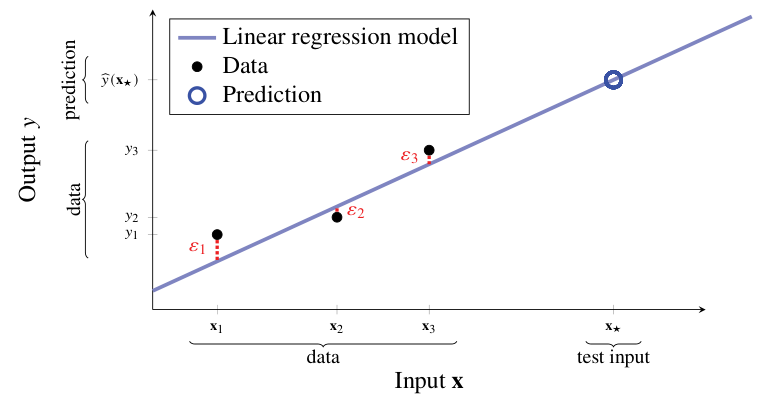

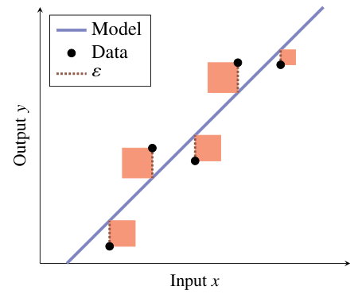
Step 2: one input, closed form第 2 步：单输入闭式解
Core idea: Because squared error is a quadratic bowl, setting its derivatives to zero gives a direct closed-form slope equal to how strongly x and y co-vary divided by how much x varies on its own.核心思路：由于平方误差是一个二次凸“碗”，令其导数为零即可直接写出单输入闭式解：最佳斜率等于 x 与 y 协同变化的程度除以 x 自身的波动程度。
Follow four quick steps when solving by hand:考场手工计算只需四步：
- Build a table with columns \(x\), \(y\), \(xy\), and \(x^2\), then sum each column.列出 \(x\)、\(y\)、\(xy\) 与 \(x^2\) 四列并分别求和。
- Substitute the four sums into \(w_1\).将四个和代入公式算出斜率 \(w_1\)。
- Substitute \(w_1\) into \(w_0\).将 \(w_1\) 代入算出截距 \(w_0\)。
- Verify that all training residuals sum to 0.计算各点残差并检查其和是否为 0。
Geometrically, the squared-error loss forms an upward-opening bowl in weight space. Because it is convex（凸函数）, there are no suboptimal local traps: any weight vector with zero gradient is guaranteed to be a global minimum.从几何上看，平方误差在权重空间里构成一个朝上开口的平滑“碗”。由于它是凸函数，不存在局部极小陷阱，任何梯度为零的点都必然是全局最小值。
Step 3: several inputs, the normal equation第 3 步：多输入与正规方程
Core idea: Setting the loss gradient to zero produces the normal equation, whose solution projects the target vector orthogonally onto the columns of the data matrix so the residual vector is perpendicular to every input feature.核心思路：令损失梯度为零即得正规方程，其解把目标向量正交投影到数据矩阵各列张成的空间上，使得残差向量与每一列输入特征都正交。
Applying this to our five points gives \(X^\top X=\begin{pmatrix}5&15\\15&55\end{pmatrix}\) and \(X^\top\mathbf y=(20,66)^\top\), which corresponds to the linear system \(5w_0+15w_1=20\) and \(15w_0+55w_1=66\). Solving these two equations recovers \(w_0=2.2\) and \(w_1=0.6\), matching Step 2.代入前述五个点，算得 \(X^\top X=\begin{pmatrix}5&15\\15&55\end{pmatrix}\) 与 \(X^\top\mathbf y=(20,66)^\top\)，即线性方程组 \(5w_0+15w_1=20\) 和 \(15w_0+55w_1=66\)。解得 \(w_0=2.2\)、\(w_1=0.6\)，与第 2 步闭式结果完全吻合。
When does \(X^\top X\) become singular (non-invertible)? Two common causes break column independence and leave infinitely many equally optimal weight vectors:矩阵 \(X^\top X\) 何时会变成奇异矩阵（不可逆）？以下两种常见情形会破坏列线性无关性，使最优权重有无穷多组解：
- Collinear inputs: one feature is a linear combination of others, such as recording height in both centimeters and meters.特征共线：某个输入是其他输入的线性组合，例如同时把身高以厘米和米两列放进模型。
- Underdetermined data (\(N<n+1\)): there are fewer training examples than weights to solve for.样本少于参数（\(N<n+1\)）：训练样本数少于待求解的权重个数。
To restore a unique solution, drop redundant inputs, collect more data, or add an \(L_2\) ridge penalty (Section 8.3). When handling categorical features, convert binary categories to a single 0/1 indicator and convert a \(K\)-valued category into \(K\) binary columns with exactly one 1 per example (one-hot encoding（独热编码）).解决奇异性的方法是剔除冗余特征、补充更多样本，或引入 \(L_2\) 岭回归正则项（第 8.3 节）。若遇到类别型输入，二分类别转为单个 0/1 变量，而 \(K\) 个取值的类别则展开为恰好只有一位为 1 的 \(K\) 维向量（即独热编码）。
Practice练习
Q1. (Calculation) Fit \(\hat y=w_0+w_1x\) by least squares to \((1,2),(2,3),(3,5),(4,6)\), predict \(\hat y(5)\), and compute the total squared loss.Q1.（计算）用最小二乘法将 \(\hat y=w_0+w_1x\) 拟合到数据点 \((1,2),(2,3),(3,5),(4,6)\)，预测 \(\hat y(5)\) 并计算总平方损失。
Answer
- Sums: \(N=4\), \(\sum x=10\), \(\sum y=16\), \(\sum xy=2+6+15+24=47\), and \(\sum x^2=30\).求和：\(N=4\)、\(\sum x=10\)、\(\sum y=16\)、\(\sum xy=2+6+15+24=47\)、\(\sum x^2=30\)。
- Fitted line & prediction: \(w_1=(4\cdot47-10\cdot16)/(4\cdot30-10^2)=28/20=1.4\) and \(w_0=(16-1.4\cdot10)/4=0.5\), so \(\hat y(5)=0.5+1.4\cdot5=7.5\).拟合直线与预测：\(w_1=(4\cdot47-10\cdot16)/(4\cdot30-10^2)=28/20=1.4\)，\(w_0=(16-1.4\cdot10)/4=0.5\)，故 \(\hat y(5)=0.5+1.4\cdot5=7.5\)。
- Residuals & loss: The residuals are \(0.1,-0.3,0.3,-0.1\) (summing to 0), giving loss \(0.01+0.09+0.09+0.01=0.2\).残差与损失：残差依次为 \(0.1,-0.3,0.3,-0.1\)（和为 0），总损失为 \(0.01+0.09+0.09+0.01=0.2\)。
Q2. (Explain) Describe two situations in which \(X^\top X\) is singular and state how to fix the problem. Why is a perfect fit on training data not the goal?Q2.（解释）说明 \(X^\top X\) 为奇异矩阵的两种情形及应对措施，并解释为什么完美拟合训练数据不是我们的目标。
Answer
- Causes of singularity: (i) Two or more inputs are linearly dependent (e.g., length in cm and in m); (ii) there are fewer examples than weights, \(N<n+1\). In both cases infinitely many \(\mathbf w\) yield the same minimal loss.奇异原因：(i) 输入特征线性相关（如同时以厘米和米表示同一长度）；(ii) 样本数少于权重数（\(N<n+1\)）。两种情形下均有无穷多组 \(\mathbf w\) 给出相同的最小损失。
- Remedies: Drop redundant features, gather more training examples, or apply ridge regularization / a pseudoinverse.解决办法：移除冗余特征、收集更多训练样本，或改用岭正则化与伪逆求解。
- Why avoid a perfect fit: A zero-error fit (such as using \(n=N-1\) independent inputs) reproduces the random noise \(\varepsilon\) alongside the true signal, leading to poor predictions on unseen inputs.为何不追求完美拟合：零训练误差的拟合（如 \(n=N-1\) 个独立输入）会把随机噪声 \(\varepsilon\) 一并吸纳进去，导致模型在新样本上的预测表现变差。
Q3. (Beyond the text) Show that with an intercept, least-squares residuals sum to zero, and verify this on the worked example.Q3.（教材拓展）证明含截距项时最小二乘残差之和必为零，并在前述例题上加以验证。
Answer
The normal equation states \(X^\top(\mathbf y-X\mathbf w^*)=\mathbf 0\). The row corresponding to the intercept column (all ones) reads \(\sum_j(y_j-\hat y_j)=0\), or equivalently \(\bar y=w_0+w_1\bar x\), confirming that the line passes through \((\bar x,\bar y)\).由正规方程 \(X^\top(\mathbf y-X\mathbf w^*)=\mathbf 0\) 可知，全 1 截距列对应的那一行恰好是 \(\sum_j(y_j-\hat y_j)=0\)，即 \(\bar y=w_0+w_1\bar x\)，这也说明拟合直线必过样本均值点 \((\bar x,\bar y)\)。
In the worked example, the residuals sum to \(-0.8+0.6+1.0-0.6-0.2=0\), and the \(x\)-column row of the normal equation also holds: \(\sum_jr_jx_j=-0.8+1.2+3.0-2.4-1.0=0\).在例题中，残差之和为 \(-0.8+0.6+1.0-0.6-0.2=0\)；而输入 \(x\) 列对应的正交关系 \(\sum_jr_jx_j=-0.8+1.2+3.0-2.4-1.0=0\) 同样成立。
思路：残差向量与 \(X\) 的每一列都正交；截距列全为 1，故残差之和必为 0。
Gradient descent ★★★梯度下降
Goal. Perform one or two gradient-descent steps by hand, explain how the learning rate governs convergence, and compare batch, stochastic, and minibatch descent.目标。手工演算一两步梯度下降，说明学习率如何决定收敛与发散，并对比批量、随机与小批量梯度下降。
Step 1: the rule第 1 步：更新规则
Core idea: Starting from any initial weights, gradient descent repeatedly takes a small step opposite the gradient—downhill on the loss surface—until the loss stops decreasing.核心思路：梯度下降从任意初始权重出发，沿损失曲面的负梯度（最陡下坡）方向反复迈出小步，直到损失不再下降为止。
While the normal equation solves linear squared-error regression in one shot, inverting \((n+1)\times(n+1)\) becomes costly when \(n\) is huge, and most nonlinear losses—such as logistic regression's cross-entropy or neural-network losses in Chapter 9—have no closed form at all. Gradient descent（梯度下降）handles any differentiable loss iteratively.正规方程虽然能一步求得线性平方损失的闭式解，但特征维度 \(n\) 很大时矩阵求逆开销高昂，且逻辑回归的交叉熵或第 9 章神经网络损失根本没有闭式解。梯度下降则通过迭代更新，适用于一切可微损失函数。
Applying the chain rule to squared error on a single example yields the derivative \(-2\,(y-h_{\mathbf w}(\mathbf x))\,x_i\). Absorbing the constant factor 2 into \(\alpha\) produces the linear-regression update rule below.对单个样本的平方误差求偏导可得 \(-2\,(y-h_{\mathbf w}(\mathbf x))\,x_i\)；把常数因子 2 并入学习率 \(\alpha\)，即得到线性回归的权重更新公式。
Intuitively, if the model underpredicts (\(y-h>0\)) when input \(x_i>0\), increasing \(w_i\) pushes the prediction closer to \(y\).直觉上，当预测偏低（\(y-h>0\)）且输入为正（\(x_i>0\)）时，增大 \(w_i\) 恰好把预测值拉高。
For a single-example step with \(x=3, y=5\), \((w_0,w_1)=(0,0)\), and \(\alpha=0.05\), the residual is 5; updating gives \(w_0=0.25\) and \(w_1=0.75\), raising \(\hat y\) to \(2.5\) and cutting squared error from \(25\) to \(6.25\).例如对单样本 \(x=3, y=5\) 从 \((0,0)\) 取 \(\alpha=0.05\) 更新一步：初始残差为 5，算得 \(w_0=0.25, w_1=0.75\)，新预测升至 \(2.5\)，平方误差由 \(25\) 降到 \(6.25\)。
Step 2: how large may the learning rate be?第 2 步：学习率最大可以取多大？
Choosing \(\alpha\) balances speed against stability: too small a value creeps slowly, while too large a value leaps across the valley, causing weights to overshoot farther on every step until the loss explodes. Under batch squared error, the weight error \(\mathbf e=\mathbf w-\mathbf w^*\) transforms at each step by \((I-\alpha X^\top X)\mathbf e\), so every direction shrinks only when \(\alpha<2/\lambda_{\max}\).学习率 \(\alpha\) 决定了收敛速度与稳定性之间的权衡：过小则蜗行慢爬，过大则会一步跨过谷底并在两侧越跳越远直至发散。在批量平方误差下，权重误差 \(\mathbf e=\mathbf w-\mathbf w^*\) 每步都会乘以矩阵 \((I-\alpha X^\top X)\)，因此唯有满足 \(\alpha<2/\lambda_{\max}\) 时才能稳定收敛。
Step 3: stochastic and minibatch descent第 3 步：随机梯度下降与小批量
Core idea: Rather than scanning the whole dataset for one exact gradient, stochastic and minibatch descent estimate the downhill direction from a few random examples—making steps drastically cheaper at the cost of noisy updates.核心思路：随机梯度下降与小批量梯度下降不再每次扫描全量数据求精确梯度，而是仅抽样少量样本估计下坡方向，从而以微小的梯度噪声换取单步计算量的大幅下降。
A minibatch（小批量）is a random subset of \(m\) examples, and applying the update rule to one minibatch defines stochastic gradient descent（随机梯度下降, SGD; originally \(m=1\)). The batch size \(m\) is a hyperparameter（超参数）chosen by the practitioner rather than learned from data.小批量是从训练集中随机抽取的 \(m\) 个样本，仅用一个小批量计算梯度并更新权重即为随机梯度下降（SGD，原始形式取 \(m=1\)）。批大小 \(m\) 属于由人工预先设定的超参数，而非从数据中学出的模型参数。
| Variant变体 | Examples per step每步样本数 | Behavior收敛表现 |
|---|---|---|
| Batch批量 | all \(N\)全部 \(N\) 个 | exact gradient; converges smoothly on convex losses, but slow when \(N\) is large梯度精确，在凸损失上稳定收敛，但 \(N\) 很大时每步太慢 |
| SGD / minibatchSGD / 小批量 | \(m\ll N\) | noisy gradient, very cheap per step; constant \(\alpha\) jitters near the minimum, while decaying \(\alpha\) converges梯度带噪但每步开销极低；恒定 \(\alpha\) 会在最优点附近抖动，衰减的 \(\alpha\) 可精确收敛 |
To see why minibatches win in practice, suppose \(N=10{,}000\) and \(m=100\): each step costs \(10{,}000/100=100\) times less compute, yet the standard error of the gradient grows by only \(\sqrt{100}=10\) times. Even if noisy steps require 10 times as many updates, minibatch SGD still finishes roughly 10 times faster.举例说明小批量为何如此高效：当 \(N=10{,}000\)、\(m=100\) 时，每步计算量骤降为原来的 \(1/100\)，而梯度标准误差仅放大 \(\sqrt{100}=10\) 倍；即便因此多走 10 倍步数，总耗时仍快了大约 10 倍。
Practice练习
Q1. (Calculation) For the five points \((1,2),(2,4),(3,5),(4,4),(5,5)\), perform two batch steps from \(\mathbf w=(0,0)\) with \(\alpha=0.05\). What happens, and what is the largest stable \(\alpha\) given eigenvalues \(59.15\) and \(0.845\) of \(X^\top X\)?Q1.（计算）对例题的五个点 \((1,2),(2,4),(3,5),(4,4),(5,5)\)，从 \(\mathbf w=(0,0)\) 取 \(\alpha=0.05\) 做两步批量梯度下降。结果如何？已知 \(X^\top X\) 的特征值为 \(59.15\) 与 \(0.845\)，最大稳定学习率是多少？
Answer
- Step 1: With \(\sum r=20\) and \(\sum rx=66\), \(\mathbf w=(1,3.3)\) and the loss jumps from \(86\) to \(313.4\).第 1 步：\(\sum r=20\)、\(\sum rx=66\)，得到 \(\mathbf w=(1,3.3)\)，损失由 \(86\) 飙升至 \(313.4\)。
- Step 2: Residuals \(-2.3,-3.6,-5.9,-10.2,-12.5\) yield \(\sum r=-34.5\) and \(\sum rx=-130.5\), giving \(\mathbf w=(-0.725,-3.225)\) and loss \(1185.5\)—multiplying by roughly \(3.6\times\) then \(3.8\times\) as each step overshoots the valley.第 2 步：残差 \(-2.3,-3.6,-5.9,-10.2,-12.5\) 给出 \(\sum r=-34.5\)、\(\sum rx=-130.5\)，权重跳到 \(\mathbf w=(-0.725,-3.225)\)，损失升至 \(1185.5\)（每步因越过谷底而分别放大约 \(3.6\) 倍与 \(3.8\) 倍）。
- Stability bound: Error evolves via \(\mathbf e\leftarrow(I-\alpha X^\top X)\mathbf e\), requiring \(\lvert 1-\alpha\lambda\rvert<1\) for every eigenvalue, so \(\alpha<2/59.15=0.034\). Because \(1-0.05\cdot59.15=-1.96\) exceeds 1 in magnitude, the loss grows asymptotically by \(1.96^2=3.84\) per step.稳定上界：权重误差按 \(\mathbf e\leftarrow(I-\alpha X^\top X)\mathbf e\) 演化，要求所有特征值满足 \(\lvert 1-\alpha\lambda\rvert<1\)，即 \(\alpha<2/59.15=0.034\)。此处 \(1-0.05\cdot59.15=-1.96\) 的绝对值超过 1，其平方 \(3.84\) 即为损失的渐近增长倍率。
思路：学习率必须严格小于 \(2/\lambda_{\max}\)，否则沿最陡方向每步都会冲过谷底并放大误差。
Q2. (Calculation) A dataset has \(N=10{,}000\) examples and minibatch size \(m=25\). By what factor is each step cheaper, how much larger is the gradient's standard error, and what is the net speedup if noise requires 20 times more steps?Q2.（计算）某数据集有 \(N=10{,}000\) 个样本，小批量大小为 \(m=25\)。每步开销降低了多少倍？梯度标准误差放大了多少倍？若噪声使迭代步数增至 20 倍，净加速比是多少？
Answer
Each minibatch step inspects \(N/m=400\) times fewer examples, making it 400 times cheaper. Because the standard error scales as \(1/\sqrt{m}\), it grows by \(\sqrt{400}=20\) times. Requiring 20 times as many steps still leaves a net speedup of \(400/20=20\times\) over batch gradient descent.每步仅处理 \(m=25\) 个样本，开销降为原来的 \(1/400\)；标准误差按 \(1/\sqrt{m}\) 缩放，因此放大了 \(\sqrt{400}=20\) 倍；即便需要多走 20 倍步数，相对于批量梯度下降仍有 \(400/20=20\) 倍的净加速。
Q3. (True or false) "Stochastic gradient descent with a constant learning rate converges exactly to the minimum of the squared-error loss." Justify your answer.Q3.（判断）“采用恒定学习率的随机梯度下降会精确收敛到平方误差损失的最小值。”请判断正误并说明理由。
Answer
False in general. Because every step uses a noisy gradient estimate from a small random sample, a fixed step size keeps the weights bouncing around the minimum rather than settling on it. Exact convergence requires a decaying schedule such as \(\alpha(t)\propto1/t\), satisfying \(\sum\alpha(t)=\infty\) and \(\sum\alpha(t)^2<\infty\).一般而言错误。由于每步仅用少量随机样本估计梯度，步长不缩小时权重会在最优点附近持续抖动而无法停稳；要保证严格收敛，学习率必须逐步衰减（如 \(\alpha(t)\propto1/t\)），满足 \(\sum\alpha(t)=\infty\) 且 \(\sum\alpha(t)^2<\infty\)。
Polynomial regression, overfitting and regularization ★★★多项式回归、过拟合与正则化
Goal. Fit curved relationships with polynomials, recognize underfitting and overfitting from error metrics, and explain how ridge (\(L_2\)) and lasso (\(L_1\)) regularization control weights.目标。用多项式拟合非线性曲线，从训练与验证误差识别欠拟合与过拟合，并说明岭回归（\(L_2\)）与 Lasso（\(L_1\)）正则化如何约束权重。
Section 6.4 introduced underfitting and overfitting in general; here we examine how they arise in polynomial regression and how regularization tames them.第 6.4 节已给出欠拟合与过拟合的一般定义，本节通过多项式回归展示其具体表现，并介绍用正则化抑制过拟合的核心手段。
Step 1: polynomial regression第 1 步：多项式回归
Core idea: Polynomial regression treats powers of x as extra input columns, allowing standard linear regression machinery to fit smooth curves.核心思路：多项式回归把输入 x 的各次幂当作新特征列，从而直接沿用普通线性回归的全部求解方法去拟合弯曲数据。
Real relationships often bend rather than follow a straight line, yet we do not need a completely new optimizer. Setting \(x_k=x^k\) turns polynomial regression（多项式回归）into an ordinary linear model in the expanded feature vector, so both the normal equation and gradient descent apply directly—remember that "linear regression" means linear in the weights \(\mathbf w\), not in \(x\).现实规律常常呈现曲线而非直线，但我们并不需要另起炉灶设计新算法：只要令 \(x_k=x^k\)，多项式回归就化作了扩张特征上的普通线性模型，正规方程与梯度下降均可原封不动使用——“线性”指的是关于权重 \(\mathbf w\) 呈线性，而非关于输入 \(x\) 呈线性。
The degree \(d\) sets model flexibility: too low a degree underfits (high training and test error), whereas too high a degree overfits (tiny training error alongside large test error, with \(d=N-1\) interpolating noise).次数 \(d\) 决定模型灵活度：过低会欠拟合（训练与测试误差俱高），过高则会过拟合（训练误差极低而测试误差飙升，极端 \(d=N-1\) 甚至插值噪声）。
Because higher powers can never worsen the training fit, training loss always drops as \(d\) increases, so choose \(d\) using a validation set or cross-validation (Chapter 6).由于增加高次项绝不会抬高训练损失，必须借助验证集或交叉验证（第 6 章）来选择 \(d\)。
| Degree次数 | Training loss训练损失 | Error at unseen points未见数据点上的误差 | Prediction at \(x=5\) (true 11)\(x=5\) 处预测（真值 11） |
|---|---|---|---|
| 0 | 39.07 | 8.96 | 5.02 |
| 1 | 0.26 | 0.002 | 10.93 |
| 2 | 0.24 | 0.004 | 11.18 |
| 4 | 0.00 | 1.29 | 18.70 |
Degree 0 clearly underfits, while degrees 1 and 2 capture the underlying trend accurately. Degree 4 achieves zero training error only by oscillating wildly between points with large alternating weights \((1.20,-0.54,3.33,-1.36,0.17)\), producing an absurd extrapolation of \(18.70\) at \(x=5\).0 次模型明显欠拟合，1 次与 2 次则稳健地抓住了真实趋势；4 次模型虽然训练损失归零，却靠剧烈正负交替的大权重 \((1.20,-0.54,3.33,-1.36,0.17)\) 在点间狂甩振荡，导致在 \(x=5\) 处的外推预测荒谬地偏到了 \(18.70\)。
Step 2: regularization第 2 步：正则化
Core idea: Regularization adds a penalty on weight magnitude to the training loss, preventing large canceling weights from chasing noise unless the data strongly demand them.核心思路：正则化在训练损失之外对权重的大小施加惩罚，抑制模型用正负相抵的超大权重去迎合随机噪声，除非数据本身给出极强证据。
Rather than truncating polynomial degree abruptly, regularization（正则化）keeps a rich model flexible while penalizing unnecessarily large weights in the total objective.除了粗暴降低多项式次数外，正则化允许保留高阶特征，同时在优化目标中计入权重复杂度的惩罚，令拟合度与平滑度自动权衡。
Adding an \(L_2\) penalty to squared-error loss gives ridge regression（岭回归）, which both shrinks weights and ensures the normal equation matrix is always invertible.在平方误差损失上叠加 \(L_2\) 惩罚即构成岭回归——它不仅收缩权重幅度，还从根本上消除了矩阵奇异的风险。
Consider a simple no-intercept model \(h(x)=wx\) fitted to \(x=(1,2,3)\) and \(y=(2,4,6)\), where \(\sum xy=28\) and \(\sum x^2=14\). Ridge regression gives \(w=\sum xy/(\sum x^2+\lambda)\): at \(\lambda=0\) we get the unregularized fit \(w=28/14=2\), at \(\lambda=1\) it shrinks to \(28/15=1.87\), and at \(\lambda=14\) it shrinks halfway to \(28/28=1\).以无截距模型 \(h(x)=wx\) 拟合 \(x=(1,2,3)\)、\(y=(2,4,6)\) 为例，这里 \(\sum xy=28\)、\(\sum x^2=14\)，岭回归解为 \(w=\sum xy/(\sum x^2+\lambda)\)：当 \(\lambda=0\) 时为 \(28/14=2\)，取 \(\lambda=1\) 收缩为 \(28/15=1.87\)，取 \(\lambda=14\) 则进一步被压到 \(28/28=1\)。
Why does \(L_1\) regularization (lasso) produce exact zeros while \(L_2\) merely shrinks weights? Minimizing loss plus \(\lambda\) times complexity is equivalent to minimizing loss inside a norm-bounded region. The \(L_1\) diamond places sharp corners directly on the coordinate axes, so elliptical loss contours typically strike a corner first—zeroing out irrelevant weights—whereas the smooth \(L_2\) circle meets contours away from the axes.为何 \(L_1\) 正则化（Lasso）能产生精确的零权重，而 \(L_2\) 只是把权重整体缩小？最小化“损失 \(+\lambda\cdot\) 惩罚”等价于在范数约束区域内寻找损失最小的点：\(L_1\) 的约束边界是尖角正好落在坐标轴上的菱形，椭圆等高线极易先碰触尖角使对应权重归零；而 \(L_2\) 的圆形边界处处圆滑，切点通常不落在坐标轴上。

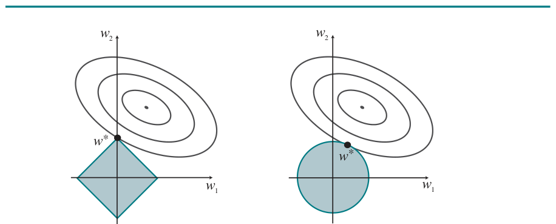
| \(L_1\) (lasso)\(L_1\)（Lasso） | \(L_2\) (ridge)\(L_2\)（岭回归） | |
|---|---|---|
| Effect效果 | sparse model: drives many weights to 0, dropping irrelevant features稀疏模型：许多权重恰好归零，自动剔除无关特征 | shrinks all weights smoothly, rarely hitting exact zero均匀收缩所有权重，极少出现精确零值 |
| Constraint region约束区域 | diamond (corners on axes)菱形（顶点在坐标轴上） | circle / hypersphere圆形 / 超球面 |
| Rotating the axes旋转坐标轴 | changes the solution: axis alignment matters会改变结果：依赖坐标轴方向 | no change (rotation invariant)解不变（具有旋转不变性） |
| Examples needed as irrelevant features grow无关特征增多时所需样本数 | logarithmic in irrelevant features随无关特征数呈对数级增长 | linear in irrelevant features随无关特征数呈线性增长 |
| Closed form闭式解 | no (requires iterative/convex optimization)无（需迭代或凸优化求解） | yes: \((X^\top X+\lambda I)^{-1}X^\top\mathbf y\)有：\((X^\top X+\lambda I)^{-1}X^\top\mathbf y\) |
Practice练习
Q1. (Calculation) Fit the no-intercept ridge model \(h(x)=wx\) to \(x=(1,2,3)\) and \(y=(1.1,1.9,3.2)\) by minimizing \(\sum_j(y_j-wx_j)^2+\lambda w^2\), which gives \(w=\sum x_jy_j/(\sum x_j^2+\lambda)\). Evaluate \(w\) at \(\lambda=0,1,14\) and interpret the trend.Q1.（计算）用无截距岭回归模型 \(h(x)=wx\) 拟合 \(x=(1,2,3)\)、\(y=(1.1,1.9,3.2)\)，极小化 \(\sum_j(y_j-wx_j)^2+\lambda w^2\) 得到 \(w=\sum x_jy_j/(\sum x_j^2+\lambda)\)。分别计算 \(\lambda=0,1,14\) 时的 \(w\) 并解释变化趋势。
Answer
Here \(\sum xy=1.1+3.8+9.6=14.5\) and \(\sum x^2=14\). Evaluating the formula gives \(w=14.5/14=1.036\) at \(\lambda=0\) (ordinary least squares), \(14.5/15=0.967\) at \(\lambda=1\), and \(14.5/28=0.518\) at \(\lambda=14\). As \(\lambda\) increases, \(w\) shrinks monotonically toward 0; as \(\lambda\to\infty\), \(w\to0\) and the model underfits.算得 \(\sum xy=1.1+3.8+9.6=14.5\)、\(\sum x^2=14\)。代入公式得：\(\lambda=0\)（普通最小二乘）时 \(w=14.5/14=1.036\)；\(\lambda=1\) 时为 \(14.5/15=0.967\)；\(\lambda=14\) 时为 \(14.5/28=0.518\)。随 \(\lambda\) 增大，权重单调向 0 收缩；当 \(\lambda\to\infty\) 时 \(w\to0\)，模型退化为欠拟合。
Q2. (Explain) (a) Write the design matrix of a quadratic model for \(x=1,2,3\). (b) A degree-4 polynomial fitted to five noisy points has zero training loss—why is that a warning sign, and how should it be fixed?Q2.（解释）(a) 写出输入 \(x=1,2,3\) 时二次多项式模型的设计矩阵。(b) 四次多项式拟合 5 个带噪样本得到零训练损失，为何这是危险信号？如何修正？
Answer
- (a) Design matrix: Each example \(x\) maps to row \((1,x,x^2)\), giving \(\begin{pmatrix}1&1&1\\1&2&4\\1&3&9\end{pmatrix}\).(a) 设计矩阵：每个样本映射为行向量 \((1,x,x^2)\)，故矩阵为 \(\begin{pmatrix}1&1&1\\1&2&4\\1&3&9\end{pmatrix}\)。
- (b) Overfitting warning & fixes: Five weights fit five points exactly, so the curve interpolates every noisy point and swings wildly between and beyond them (predicting \(18.7\) instead of roughly \(11\) at \(x=5\) in the worked example). Fix this by selecting a lower degree via validation or cross-validation, collecting more data, or adding a ridge penalty to restrain the weights.(b) 过拟合警示与修正：5 个权重刚好插值全部 5 个含噪数据点，曲线在点间与点外剧烈振荡（如前例中在 \(x=5\) 处给出荒谬预测 \(18.7\) 而真实值约为 \(11\)）。应通过交叉验证降低次数、扩充样本量，或加入岭正则项约束权重规模。
Q3. (Beyond the text) Prove that \(X^\top X+\lambda I\) is invertible for every \(\lambda>0\) even when \(X\) has linearly dependent columns.Q3.（教材拓展）证明即使数据矩阵 \(X\) 的列线性相关，只要 \(\lambda>0\)，矩阵 \(X^\top X+\lambda I\) 仍然必可逆。
Answer
For any nonzero vector \(\mathbf v\ne\mathbf 0\), the quadratic form is strictly positive: \(\mathbf v^\top(X^\top X+\lambda I)\mathbf v=\lVert X\mathbf v\rVert^2+\lambda\lVert\mathbf v\rVert^2\ge\lambda\lVert\mathbf v\rVert^2>0\).对任意非零向量 \(\mathbf v\ne\mathbf 0\)，其二次型严格大于零：\(\mathbf v^\top(X^\top X+\lambda I)\mathbf v=\lVert X\mathbf v\rVert^2+\lambda\lVert\mathbf v\rVert^2\ge\lambda\lVert\mathbf v\rVert^2>0\)。
Hence \(X^\top X+\lambda I\) maps no nonzero vector to \(\mathbf 0\); it is positive definite and invertible, giving ridge regression a unique solution even when features are collinear or \(N<n+1\).因此该矩阵不可能把任何非零向量映为零，它是严格正定且必可逆的，从而在特征共线或 \(N<n+1\) 时也能给出唯一解。
思路：\(X^\top X\) 本身仅保证半正定，加上 \(\lambda I\) 后把所有特征值至少抬高 \(\lambda>0\)，故变为严格正定矩阵而必可逆。
Linear classifiers: perceptron and logistic regression ★★★线性分类器：感知机与逻辑回归
Goal. Trace perceptron updates and a logistic-regression gradient step by hand, explain why XOR and non-separable data pose problems, and compare the two linear classifiers.目标。手工演算感知机更新与一步逻辑回归梯度更新，说明 XOR 与线性不可分数据引发的问题，并对比这两种线性分类器。
Step 1: the hard threshold and the perceptron第 1 步：硬阈值与感知机
Core idea: A perceptron computes a weighted sum of inputs and outputs 1 whenever the sum is at least 0 (otherwise 0), adjusting weights directly on misclassified examples.核心思路：感知机先计算输入的加权和，结果不小于 0 即输出 1（否则输出 0），并在分错样本时按输入方向直接修正权重。

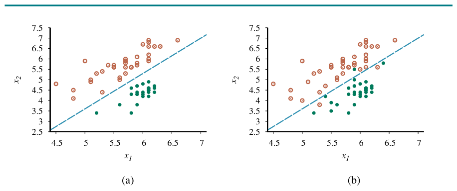
Why does gradient descent fail on a hard threshold? Because the step function is completely flat everywhere except for a jump at \(z=0\), its derivative is zero almost everywhere and provides no slope to follow. Instead, the perceptron uses an error-driven rule that nudges the boundary toward every misclassified example.为何不能直接对硬阈值分类器做梯度下降？因为阶跃函数除 \(z=0\) 处跳变外其余处处水平，导数几乎恒为零，无法提供下降方向；为此感知机改用由错题驱动的启发式修正规则。
When tracing the perceptron by hand:手工追踪感知机更新按五步进行：
- Initialize all weights to zero (unless specified otherwise).将所有权重初始化为 0（题目另有指定除外）。
- Scan examples in the given fixed order.按题目给定顺序逐一读取样本。
- Compute \(z=\mathbf w\cdot\mathbf x\) and \(h\), remembering \(\mathrm{Threshold}(0)=1\).计算 \(z=\mathbf w\cdot\mathbf x\) 与输出 \(h\)，务必注意 \(\mathrm{Threshold}(0)=1\)。
- Whenever \(h\ne y\), update every weight immediately.只要 \(h\ne y\)，立即更新全部权重。
- Repeat full passes until an entire pass finishes with zero mistakes.重复遍历各轮，直至整轮没有任何错误为止。
The perceptron convergence theorem guarantees termination on any linearly separable dataset. When data are not linearly separable—such as XOR (Practice Q1)—a fixed learning rate never settles.感知机收敛定理保证：只要数据线性可分，上述规则必在有限步内停机；而若数据不可分（如 XOR，见练习 Q1），固定学习率下的权重将永不收敛。
Step 2: logistic regression第 2 步：逻辑回归
Core idea: Logistic regression passes the linear score through a smooth sigmoid curve to output class probabilities, enabling convex cross-entropy optimization via gradient descent.核心思路：逻辑回归把线性得分送入光滑的 Sigmoid 曲线以输出类别概率，从而可以在凸的交叉熵损失上顺利使用梯度下降训练。
Replacing the discontinuous threshold with the smooth logistic (sigmoid) function solves two limitations at once: predictions lie continuously in \((0,1)\) as calibrated probabilities, and smooth derivatives unlock gradient descent.用光滑的 Sigmoid 逻辑函数替换硬阈值一举解决了两个痛点：模型不再只吐出冰冷的 0/1，而是给出连续的概率置信度；同时损失函数处处可微，重新打开了梯度下降的大门。
Despite its name, logistic regression（逻辑回归）is a classifier. Because the sigmoid introduces nonlinearity in \(\mathbf w\), setting the gradient to zero yields coupled nonlinear equations with no closed-form solution. Instead, we minimize the cross-entropy（交叉熵）loss—the negative log-likelihood of the labels—by gradient descent, which not only makes the objective convex but also cancels the vanishing \(h(1-h)\) slope factor when predictions saturate.尽管名字带着“回归”，逻辑回归本质上是一个分类器。由于 Sigmoid 使权重进入非线性表达式，令梯度为零得不到闭式解，因此必须改用梯度下降来最小化标签的负对数似然——即交叉熵损失。交叉熵不仅是凸函数，还能精准抵消 Sigmoid 饱和区的 \(h(1-h)\) 梯度衰减因子，避免错得越离谱学得越慢。
By default we predict class 1 when \(h>0.5\), though practitioners can shift that threshold whenever error costs are asymmetric (for example, when missing a disease is far worse than a false alarm). To handle \(M>2\) classes, assign one weight vector per class and normalize the scores using the softmax function.默认阈值在 \(h>0.5\) 时判为正类，若两类错判代价不对称（如漏诊比误报更严重）则可灵活平移该阈值。扩展到 \(M>2\) 个类别时，只需为每类配一组权重并用 Softmax 函数做概率归一化。
Paradoxically, linearly separable data cause unregularized logistic regression to diverge: once a hyperplane separates both classes, scaling \(\mathbf w\) up keeps every classification right while pushing probabilities toward 0 and 1, driving cross-entropy down toward 0 without any finite optimum. Adding an \(L_2\) penalty \(\lambda\lVert\mathbf w\rVert^2\) (\(\lambda>0\)) restores a finite, unique solution.有意思的是，线性可分数据反而会让无正则的逻辑回归权重发散：一旦找到分隔超平面，只要不断放大 \(\mathbf w\)，所有分类依然全对且概率愈发逼近 0 和 1，交叉熵便一路趋近于 0 而不存在有限最优解；加入 \(L_2\) 正则项 \(\lambda\lVert\mathbf w\rVert^2\)（\(\lambda>0\)）即可得到有限且唯一的解。
| Linear regression线性回归 | Perceptron感知机 | Logistic regression逻辑回归 | |
|---|---|---|---|
| Output输出 | real number连续实数 | class 0 or 1硬标签 0 或 1 | probability \(P(y=1\mid\mathbf x)\)概率 \(P(y=1\mid\mathbf x)\) |
| Loss损失函数 | squared error平方误差 | none (error-driven rule)无显式损失（错题驱动） | cross-entropy交叉熵 |
| Solution求解方式 | closed form or gradient descent闭式解或梯度下降 | per-example update rule逐样本迭代更新规则 | gradient descent梯度下降 |
| Separable data线性可分数据 | not applicable不适用 | converges to a separating hyperplane收敛至完美分隔超平面 | weights diverge unless regularized无正则项时权重趋于无穷 |
| Non-separable data线性不可分数据 | not applicable不适用 | fixed \(\alpha\) never converges固定 \(\alpha\) 永不收敛 | converges reliably to global minimum可靠收敛至全局最优 |
Practice练习
Q1. (Proof) Prove that no single-layer perceptron can compute XOR: \((0,0)\mapsto0\), \((0,1)\mapsto1\), \((1,0)\mapsto1\), \((1,1)\mapsto0\).Q1.（证明）证明没有任何单层感知机能够计算异或（XOR）：\((0,0)\mapsto0\)、\((0,1)\mapsto1\)、\((1,0)\mapsto1\)、\((1,1)\mapsto0\)。
Answer
A valid perceptron requires \(w_0<0\), \(w_0+w_2\ge0\), \(w_0+w_1\ge0\), and \(w_0+w_1+w_2<0\). Adding the middle two inequalities gives \(2w_0+w_1+w_2\ge0\), whereas the fourth inequality implies \(w_1+w_2<-w_0\) and therefore \(2w_0+w_1+w_2<w_0<0\)—a contradiction.若存在解，必须同时满足 \(w_0<0\)、\(w_0+w_2\ge0\)、\(w_0+w_1\ge0\) 与 \(w_0+w_1+w_2<0\)。将中间两式相加得 \(2w_0+w_1+w_2\ge0\)，而最后一式给出 \(w_1+w_2<-w_0\)，即 \(2w_0+w_1+w_2<w_0<0\)，导出矛盾。
Geometrically, no straight line separates \(\{(0,1),(1,0)\}\) from \(\{(0,0),(1,1)\}\), so perceptron learning never converges. Adding the product feature \(x_1x_2\) makes XOR linearly separable, e.g., \(-0.5+x_1+x_2-2x_1x_2\ge0\).几何上不存在直线能隔开 \(\{(0,1),(1,0)\}\) 与 \(\{(0,0),(1,1)\}\)，故感知机永不收敛；但引入乘积特征 \(x_1x_2\) 后即可分离，例如 \(-0.5+x_1+x_2-2x_1x_2\ge0\)。
Q2. (Calculation) (a) For a one-input logistic regression model with \(z=-1+2x\), find \(P(y=1\mid x)\) at \(x=0,\,0.5,\,1.5\) and state the decision boundary. (b) Find the cross-entropy loss if \(x=1.5\) has true label \(y=0\). (c) Compute softmax probabilities for logits \(\mathbf z=(2,1,0)\) and the loss if the true class is the second one.Q2.（计算）(a) 已知单输入逻辑回归模型的线性得分为 \(z=-1+2x\)，求在 \(x=0,\,0.5,\,1.5\) 处的 \(P(y=1\mid x)\) 及决策边界。(b) 若样本 \(x=1.5\) 的真实标签为 \(y=0\)，求交叉熵损失。(c) 对 logits \(\mathbf z=(2,1,0)\) 求 Softmax 概率，并计算真实类别为第二类时的损失。
Answer
- (a) Probabilities & boundary: Evaluating \(z=-1,0,2\) gives \(0.269\), \(0.5\), and \(0.881\); setting \(z=0\) places the boundary at \(x=0.5\).(a) 概率与边界：代入得 \(z=-1,0,2\)，对应概率为 \(0.269\)、\(0.5\)、\(0.881\)；令 \(z=0\) 得决策边界 \(x=0.5\)。
- (b) Cross-entropy loss: \(-\ln(1-0.881)=2.13\)—a large penalty because the model is confidently wrong.(b) 交叉熵损失：\(-\ln(1-0.881)=2.13\)，因模型自信地判错而受到重罚。
- (c) Softmax & loss: Exponentials \(e^2=7.389\), \(e^1=2.718\), \(e^0=1\) sum to \(11.107\), giving probabilities \((0.665,0.245,0.090)\) and loss \(-\ln0.245=1.41\).(c) Softmax 与损失：指数项 \(e^2=7.389\)、\(e^1=2.718\)、\(e^0=1\) 之和为 \(11.107\)，归一化概率为 \((0.665,0.245,0.090)\)，第二类的损失为 \(-\ln0.245=1.41\)。
Q3. (Beyond the text) Two examples, \((x=-1, y=0)\) and \((x=+1, y=1)\), are fitted by \(h=\mathrm{Logistic}(wx)\). Evaluate the total cross-entropy \(2\ln(1+e^{-w})\) for \(w=1,2,5,10\). What does this reveal, and how does adding \(0.1w^2\) change things?Q3.（教材拓展）用 \(h=\mathrm{Logistic}(wx)\) 拟合两个样本 \((x=-1, y=0)\) 与 \((x=+1, y=1)\)，计算 \(w=1,2,5,10\) 时的总交叉熵 \(2\ln(1+e^{-w})\)。这说明了什么？加入惩罚项 \(0.1w^2\) 后结果有何变化？
Answer
The cross-entropy losses are \(0.627\), \(0.254\), \(0.0134\), and \(0.0001\): they keep falling toward 0 as \(w\) grows without bound, so no finite maximum-likelihood weight exists on separable data. With the penalty, \(J(w)=2\ln(1+e^{-w})+0.1w^2\) reaches a unique finite minimum where \(J'(w)=-2/(1+e^{w})+0.2w=0\), giving \(w\approx1.63\) and \(J=0.62\).损失依次为 \(0.627\)、\(0.254\)、\(0.0134\) 与 \(0.0001\)，随 \(w\) 无界增大持续逼近 0，说明线性可分时不存在有限的最大似然最优解。加入 \(L_2\) 惩罚后，\(J(w)=2\ln(1+e^{-w})+0.1w^2\) 在 \(J'(w)=-2/(1+e^{w})+0.2w=0\) 处取得唯一有限极小值，解得 \(w\approx1.63\)、\(J=0.62\)。
易错：线性可分时无正则的逻辑回归权重趋于无穷，不是训练出错，而是因为有限最优点本就不存在。
Bayesian learning, MAP and maximum likelihood ★★贝叶斯学习、MAP 与最大似然
Goal. Compute posterior probabilities and predictions on a small example, and distinguish Bayesian, MAP, and maximum-likelihood learning.目标。在小例子中计算后验概率与预测结果，并清晰区分贝叶斯学习、MAP 与最大似然三种预测范式。
When data are scarce, committing to a single winning hypothesis can yield dangerously extreme predictions. Bayesian learning（贝叶斯学习）hedges across every hypothesis in proportion to its posterior probability. As a running example, consider five types of candy bags—\(h_1\) (100% cherry), \(h_2\) (75% cherry), \(h_3\) (50% cherry), \(h_4\) (25% cherry), and \(h_5\) (100% lime)—with prior \((0.1,0.2,0.4,0.2,0.1)\) as candies are unwrapped one by one.样本较少时，孤注一掷押注单个最优假设往往会给出过于极端的预测；贝叶斯学习则保留所有假设，按其后验概率加权做预测。下面沿用教材的五种糖果袋示例：\(h_1\sim h_5\) 的樱桃味比例分别为 \(100\%, 75\%, 50\%, 25\%, 0\%\)（即全青柠），先验分布为 \((0.1,0.2,0.4,0.2,0.1)\)，逐颗拆封糖果并更新推断。
Summing over large hypothesis spaces is often intractable, so practitioners frequently approximate full Bayesian prediction by committing to a single top hypothesis.面对庞大假设空间时，遍历所有假设加权求和往往计算量过大，因此实际中常退而求其次，只挑选单一最优假设来做预测。
After three limes, \(h_{\text{MAP}}=h_5\) predicts lime with probability \(1.0\)—a much bolder claim than the Bayesian \(0.80\).抽到三颗青柠后，\(h_{\text{MAP}}=h_5\) 会以 \(1.0\) 的绝对把握预测下一颗仍是青柠，远比贝叶斯的 \(0.80\) 激进。
For discrete parameters, ML reduces to counting: maximizing \(\theta^c(1-\theta)^{N-c}\) gives \(\hat\theta=c/N\) (e.g., 12 of 20 gives \(0.6\)), though tiny samples cause extremes (one cherry gives \(\hat\theta=1\) and assigns lime zero probability).对离散参数，最大似然等价于计数——最大化 \(\theta^c(1-\theta)^{N-c}\) 得 \(\hat\theta=c/N\)（20 颗中 12 颗得 \(0.6\)），但小样本下易断言未见类别概率为 0。
Practice练习
Q1. (Calculation) Using the same candy-bag prior, suppose the first two candies drawn are cherry. Find the posterior of \(h_1,\dots,h_5\) and the predicted probability that the next candy is cherry under (a) Bayesian learning, (b) MAP, and (c) maximum likelihood.Q1.（计算）沿用前述糖果袋先验，假设前两颗糖果均为樱桃味。求 \(h_1,\dots,h_5\) 的后验分布，并计算在 (a) 贝叶斯学习、(b) MAP、(c) 最大似然下，下一颗为樱桃味的预测概率。
Answer
Cherry probabilities \((1,0.75,0.5,0.25,0)\) square to two-cherry likelihoods \((1,0.5625,0.25,0.0625,0)\). Multiplying by the prior gives \((0.1,0.1125,0.1,0.0125,0)\) (sum \(0.325\)), so the posterior is \((0.308,0.346,0.308,0.038,0)\):五种袋子的樱桃比例平方后得似然 \((1,0.5625,0.25,0.0625,0)\)；乘以先验得 \((0.1,0.1125,0.1,0.0125,0)\)（总和 \(0.325\)），归一化后验为 \((0.308,0.346,0.308,0.038,0)\)：
- (a) Bayesian: \(1\cdot0.308+0.75\cdot0.346+0.5\cdot0.308+0.25\cdot0.038=0.731\).(a) 贝叶斯预测：\(1\cdot0.308+0.75\cdot0.346+0.5\cdot0.308+0.25\cdot0.038=0.731\)。
- (b) MAP: Highest posterior is \(h_{\text{MAP}}=h_2\) (\(0.346\)), predicting \(0.75\).(b) MAP 预测：后验最大的是 \(h_{\text{MAP}}=h_2\)（\(0.346\)），预测概率为 \(0.75\)。
- (c) Maximum likelihood: Highest likelihood is \(h_{\text{ML}}=h_1\) (\(1.0\)), predicting \(1.0\)—the most extreme estimate, whereas MAP sits close to the Bayesian result.(c) 最大似然预测：似然最大的是 \(h_{\text{ML}}=h_1\)（\(1.0\)），预测概率为 \(1.0\)——最为极端，而 MAP 更贴近贝叶斯均值。
Q2. (Calculation) Among 20 candies, 12 are cherry (9 red wrappers, 3 green) and 8 are lime (2 red, 6 green). Find the maximum-likelihood estimates of \(\theta,\theta_1,\theta_2\) and the probability of a cherry candy in a green wrapper.Q2.（计算）在 20 颗糖果中，12 颗樱桃味（9 红 3 绿包装），8 颗青柠味（2 红 6 绿包装）。求 \(\theta,\theta_1,\theta_2\) 的最大似然估计，以及“绿色包装的樱桃味糖果”的概率。
Answer
Counting relative frequencies yields \(\hat\theta=12/20=0.6\), \(\hat\theta_1=9/12=0.75\), and \(\hat\theta_2=2/8=0.25\). Thus \(P(\text{cherry},\text{green})=\hat\theta(1-\hat\theta_1)=0.6\cdot0.25=0.15\), matching the observed 3 out of 20.由相对频数得 \(\hat\theta=12/20=0.6\)、\(\hat\theta_1=9/12=0.75\) 与 \(\hat\theta_2=2/8=0.25\)。于是 \(P(\text{cherry},\text{green})=\hat\theta(1-\hat\theta_1)=0.6\cdot0.25=0.15\)，与观测到的 20 颗中占 3 颗完全一致。
Naive Bayes and Laplace smoothing ★★★朴素贝叶斯与拉普拉斯平滑
Goal. Train a Naive Bayes classifier by counting, compute class posteriors with and without Laplace smoothing, and contrast Naive Bayes with logistic regression.目标。用计数法训练朴素贝叶斯分类器，手工计算带与不带拉普拉斯平滑的后验概率，并比较朴素贝叶斯与逻辑回归。
Step 1: the model第 1 步：模型结构
Core idea: Naive Bayes scores each class by multiplying its class prior by the conditional probability of each observed attribute, then normalizes those scores into posterior probabilities.核心思路：朴素贝叶斯用类别先验连乘各观测属性在该类下的条件概率来给每个类别打分，最后归一化即可得到后验概率。
Why do we need conditional independence? Specifying an unrestricted joint distribution over \(n\) Boolean attributes and a Boolean class requires \(2^{n+1}-1\) parameters—exponentially too many to estimate reliably. By placing the class \(C\) at the root node and making attributes \(X_1,\dots,X_n\) conditionally independent leaf nodes, the Naive Bayes（朴素贝叶斯）model shrinks the parameter count from exponential down to just \(2n+1\).为什么一定要引入“朴素”的条件独立假设？如果不做任何简化，描述 \(n\) 个布尔属性与布尔类别的完整联合分布需要高达 \(2^{n+1}-1\) 个参数，数据根本不够估计；朴素贝叶斯以类别 \(C\) 为根结点、各属性 \(X_1,\dots,X_n\) 为条件独立的叶结点，把参数量骤降到线性的 \(2n+1\) 个。
In implementations with many attributes, summing log-probabilities replaces multiplying small numbers so floating-point underflow cannot occur.工程实现时若属性很多，连乘小数极易发生下溢，因此通常会取对数后改连乘为累加。
Step 2: training by counting, and zero counts第 2 步：计数训练与零计数问题
Training Naive Bayes amounts to counting: \(\hat P(c)=N_c/N\) and \(\hat P(X_i=v\mid c)=N_{c,v}/N_c\). Yet multiplying probabilities is fragile: a single unseen attribute value makes one factor 0 and wipes out the entire class score.训练朴素贝叶斯只需统计频数：\(\hat P(c)=N_c/N\) 与 \(\hat P(X_i=v\mid c)=N_{c,v}/N_c\)；但连乘十分脆弱，只要某个特征取值未曾见过，一项为 0 就会令该类总得分清零。
Laplace smoothing（拉普拉斯平滑）eliminates this zero-count veto by starting every outcome count at a small pseudo-count \(k\) (typically 1) rather than 0.拉普拉斯平滑通过为每个取值预置伪计数 \(k\)（常取 1）彻底消除这种“一票否决”。
| Count训练频数 | Spam (\(N_c=4\))垃圾邮件（\(N_c=4\)） | Ham (\(N_c=6\))正常邮件（\(N_c=6\)） |
|---|---|---|
| sender = colleague发件人 = 同事 | 0 | 3 |
| sender = customer发件人 = 客户 | 1 | 2 |
| sender = stranger发件人 = 陌生人 | 3 | 1 |
| contains "free" = yes包含“free” = 是 | 3 | 1 |
| contains "free" = no包含“free” = 否 | 1 | 5 |
Step 3: Naive Bayes versus logistic regression第 3 步：朴素贝叶斯与逻辑回归的比较
These two classic classifiers represent two distinct learning paradigms: a generative model（生成式模型）learns the joint story \(P(C)\) and \(P(\mathbf x\mid C)\) and can synthesize new inputs, whereas a discriminative model（判别式模型）models the decision conditional \(P(C\mid\mathbf x)\) directly without modeling how features are generated.这两种经典线性分类器分别代表了机器学习的两大流派：生成式模型对 \(P(C)\) 与 \(P(\mathbf x\mid C)\) 建模，掌握数据生成机制；判别式模型则绕开特征生成过程，直接学习判别边界 \(P(C\mid\mathbf x)\)。
| Naive Bayes朴素贝叶斯 | Logistic regression逻辑回归 | |
|---|---|---|
| Models建模对象 | \(P(C)\) and \(P(\mathbf x\mid C)\) (generative)\(P(C)\) 与 \(P(\mathbf x\mid C)\)（生成式） | \(P(C\mid\mathbf x)\) directly (discriminative)直接建模 \(P(C\mid\mathbf x)\)（判别式） |
| Assumption核心假设 | attributes conditionally independent given the class给定类别后各属性条件独立 | log-odds linear in \(\mathbf x\)对数几率是 \(\mathbf x\) 的线性函数 |
| Training训练方式 | frequency counting, closed form频数计数，闭式解 | iterative gradient descent迭代梯度下降 |
| Small data小样本表现 | usually converges faster and wins通常收敛更快、表现更佳 | needs more data to avoid high variance需要更多样本以防方差过大 |
| Large data大样本表现 | limited by biased independence assumption受限于不成立的独立性假设 | usually wins asymptotically通常渐近表现更优 |
| Probabilities概率校准 | often overconfident (pushed toward 0 or 1)往往过度自信（偏向 0 或 1） | usually better calibrated通常概率校准更准确 |
In practice, conditional independence rarely holds strictly: when two attributes are strongly correlated, Naive Bayes double-counts the same underlying evidence, pushing predicted posteriors artificially close to 0 or 1.现实中特征之间往往存在相关性，朴素贝叶斯会按独立规则把同一份证据重复乘两次，导致后验概率过度自信地被推向 0 或 1。
Practice练习
Q1. (Calculation) Given training examples \((A,B,C;\text{class})\): \((1,1,0;+)\), \((1,0,0;+)\), \((1,1,1;+)\), \((0,0,1;-)\), \((0,1,1;-)\), \((0,0,0;-)\), classify \((A,B,C)=(1,0,1)\) using Naive Bayes (a) without smoothing and (b) with Laplace smoothing (\(k=1\)) on conditional probabilities (priors unsmoothed).Q1.（计算）给定训练样本 \((A,B,C;\text{class})\)：\((1,1,0;+)\)、\((1,0,0;+)\)、\((1,1,1;+)\)、\((0,0,1;-)\)、\((0,1,1;-)\)、\((0,0,0;-)\)，用朴素贝叶斯对 \((A,B,C)=(1,0,1)\) 分类：(a) 不平滑；(b) 对条件概率做 \(k=1\) 拉普拉斯平滑（先验不平滑）。
Answer
- (a) Unsmoothed: Class \(+\) scores \(\tfrac12\cdot P(A{=}1\mid+)\,P(B{=}0\mid+)\,P(C{=}1\mid+)=\tfrac12\cdot1\cdot\tfrac13\cdot\tfrac13=0.0556\). Class \(-\) has \(P(A{=}1\mid-)=0\), giving score 0 and posterior \(P(+\mid\mathbf x)=1\).(a) 不平滑：\(+\) 类得分为 \(\tfrac12\cdot1\cdot\tfrac13\cdot\tfrac13=0.0556\)；\(-\) 类因 \(P(A{=}1\mid-)=0\) 得分为 0，故 \(+\) 类后验为 1。
- (b) Laplace smoothed (\(k=1, V_i=2\)): Class \(+\) scores \(\tfrac12\cdot\tfrac45\cdot\tfrac25\cdot\tfrac25=0.064\) and class \(-\) scores \(\tfrac12\cdot\tfrac15\cdot\tfrac35\cdot\tfrac35=0.036\). Normalizing gives \(P(+\mid\mathbf x)=0.64\) and \(P(-\mid\mathbf x)=0.36\).(b) 拉普拉斯平滑（\(k=1, V_i=2\)）：\(+\) 类得分为 \(\tfrac12\cdot\tfrac45\cdot\tfrac25\cdot\tfrac25=0.064\)，\(-\) 类得分为 \(\tfrac12\cdot\tfrac15\cdot\tfrac35\cdot\tfrac35=0.036\)，归一化后得 \(P(+\mid\mathbf x)=0.64\) 与 \(P(-\mid\mathbf x)=0.36\)。
Q2. (Counting) A Boolean class has \(n=10\) Boolean attributes. How many free parameters do the full joint distribution and Naive Bayes each require, and what happens if one attribute is duplicated?Q2.（计数）某布尔分类任务有 \(n=10\) 个布尔属性。完整联合分布与朴素贝叶斯各需多少自由参数？若把其中一个属性重复拷贝一份，会发生什么？
Answer
The full joint over 11 Boolean variables needs \(2^{11}-1=2047\) parameters, whereas Naive Bayes needs only \(2n+1=21\). If one attribute is duplicated, the model treats both copies as independent and counts its evidence twice—squaring its likelihood ratio (turning a ratio of 3 into 9) and pushing posteriors artificially toward 0 or 1.11 个布尔变量的完整联合分布需要 \(2^{11}-1=2047\) 个参数，而朴素贝叶斯仅需 \(2n+1=21\) 个。若重复某个属性，模型会误把两份副本视作独立证据而计算两次——使其似然比被平方（3 变成 9），把后验概率强推向 0 或 1，造成典型的过度自信。
Q3. (Compare) Compare Naive Bayes and logistic regression across four key dimensions.Q3.（比较）从四个核心维度比较朴素贝叶斯与逻辑回归。
Answer
- Model type: Naive Bayes is generative (models \(P(C)\) and \(P(\mathbf x\mid C)\) and can generate data), whereas logistic regression is discriminative (models \(P(C\mid\mathbf x)\) directly).模型类别：朴素贝叶斯是生成式模型（对 \(P(C)\) 与 \(P(\mathbf x\mid C)\) 建模并能生成样本），逻辑回归是判别式模型（直接对 \(P(C\mid\mathbf x)\) 建模）。
- Assumptions & training: Naive Bayes assumes conditional independence and trains in closed form by counting; logistic regression assumes linear log-odds without independence and trains via gradient descent.假设与训练：前者假设条件独立、靠频数计数一步求得闭式解；后者无需独立性假设、假设线性对数几率并用梯度下降训练。
- Sample-size regime: Naive Bayes often performs better on small datasets, while logistic regression typically wins when ample training data are available.数据规模表现：小样本下朴素贝叶斯往往占优，大样本下逻辑回归通常更强。
- Calibration & boundary: Naive Bayes produces overconfident posteriors when features correlate, while logistic regression is better calibrated; for Boolean inputs, both yield a linear decision boundary.概率校准与边界：朴素贝叶斯在特征相关时易过度自信，逻辑回归校准更好；面对布尔特征时两者的决策边界均为超平面。
Terms to recognize ★需要认识的术语
| Term术语 | What to know要知道什么 |
|---|---|
| Convex loss凸损失 | Squared error and cross-entropy are convex: they have no local minima, so any minimum gradient descent finds is global平方误差与交叉熵均为凸损失，没有局部极小陷阱，梯度下降找到的极小值必为全局最优 |
| Parametric model参数模型 | A fixed-size vector of weights summarizes the data, allowing training examples to be discarded afterward用固定数量的权重概括数据规律，训练完成后即可丢弃原始训练样本 |
| Epoch轮次 | One complete pass over all training examples完整遍历全部训练样本一次 |
| One-hot encoding独热编码 | Representation turning a \(K\)-valued categorical input into \(K\) binary inputs with exactly one equal to 1将 \(K\) 个取值的类别特征展开为恰好只有一位为 1 的 \(K\) 维二值向量 |
| Lasso and ridgeLasso 与岭回归 | \(L_1\) regularization (produces sparse zero weights) versus \(L_2\) regularization (shrinks all weights with a closed form)\(L_1\) 正则化（产生稀疏零权重）与 \(L_2\) 正则化（整体收缩权重且有闭式解） |
| Perceptron minimum error感知机的最小误差 | On non-separable data, a decaying learning rate converges to a minimum-error hyperplane, though finding the exact optimum is NP-hard对于不可分数据，配合衰减学习率可收敛到最小误差解，但严格求解该最优点属于 NP 难问题 |
| Log-odds对数几率 | Logistic regression models log-odds as linear in \(\mathbf x\): \(\ln(h/(1-h))=z\)逻辑回归将正负类概率比的对数设为线性函数：\(\ln(h/(1-h))=z\) |
| Density estimation密度估计 | Learning the probability distribution of data from observations从观测数据中学习数据的概率分布模型 |
| Minimum description length最小描述长度 | MAP picks the hypothesis that compresses the data best; for deterministic hypotheses it recovers the simplest consistent one (Ockham's razor)MAP 选出最能压缩数据的假设；对于确定性假设即等价于选择与数据相容的最简模型（奥卡姆剃刀） |
| Boundary of Naive Bayes朴素贝叶斯的决策边界 | With Boolean attributes, the log-odds of Naive Bayes are linear in the inputs, yielding a linear boundary just like logistic regression对于布尔属性，朴素贝叶斯的对数几率关于输入呈线性，因此其决策边界同样是超平面 |
Exam-style questions考试题型练习
Q1. (Calculation, 14 marks) Four training points are \((x,y)=(0,1),(1,3),(2,4),(3,8)\). (a) Find the least-squares line \(\hat y=w_0+w_1x\) and predict \(\hat y(4)\). (5) (b) Give the residuals and total squared loss. (3) (c) Perform two batch gradient-descent steps from \(\mathbf w=(0,0)\) with \(\alpha=0.02\), reporting the loss after each step. (4) (d) Explain why gradient descent approaches the line in (a) and what limits \(\alpha\). (2)Q1.（计算，14 分）已知四个训练点 \((x,y)=(0,1),(1,3),(2,4),(3,8)\)。(a) 求最小二乘直线 \(\hat y=w_0+w_1x\) 并预测 \(\hat y(4)\)。（5 分）(b) 写出各点残差与总平方损失。（3 分）(c) 从 \(\mathbf w=(0,0)\) 取 \(\alpha=0.02\) 做两步批量梯度下降，报告每步后的损失。（4 分）(d) 说明为什么梯度下降会逼近 (a) 的直线，以及什么限制了 \(\alpha\)。（2 分）
Answer
- (a) Least-squares line: \(N=4\), \(\sum x=6\), \(\sum y=16\), \(\sum xy=35\), \(\sum x^2=14\). Thus \(w_1=(4\cdot35-6\cdot16)/(4\cdot14-36)=44/20=2.2\) and \(w_0=(16-2.2\cdot6)/4=0.7\), giving \(\hat y=0.7+2.2x\) and \(\hat y(4)=9.5\).(a) 最小二乘直线：\(N=4\)、\(\sum x=6\)、\(\sum y=16\)、\(\sum xy=35\)、\(\sum x^2=14\)，算得 \(w_1=(4\cdot35-6\cdot16)/(4\cdot14-36)=44/20=2.2\)、\(w_0=(16-2.2\cdot6)/4=0.7\)，故 \(\hat y=0.7+2.2x\)，\(\hat y(4)=9.5\)。
- (b) Residuals & loss: Predictions \(0.7,2.9,5.1,7.3\) give residuals \(0.3,0.1,-1.1,0.7\) (sum 0) and loss \(0.09+0.01+1.21+0.49=1.8\).(b) 残差与损失：预测值为 \(0.7,2.9,5.1,7.3\)，残差为 \(0.3,0.1,-1.1,0.7\)（和为 0），总损失为 \(0.09+0.01+1.21+0.49=1.8\)。
- (c) Batch Step 1: At \((0,0)\), residuals equal \(y\) (loss \(1+9+16+64=90\)) with \(\sum r=16\) and \(\sum rx=35\), yielding \(\mathbf w=(0.32,0.70)\); new residuals \(0.68,1.98,2.28,5.58\) give loss \(40.72\).(c) 第 1 步：初始残差等于 \(y\)（损失 \(90\)），\(\sum r=16\)、\(\sum rx=35\)，更新为 \(\mathbf w=(0.32,0.70)\)，新残差 \(0.68,1.98,2.28,5.58\)，损失降为 \(40.72\)。
- (c) Batch Step 2: From Step 1 residuals, \(\sum r=10.52\) and \(\sum rx=23.28\), giving \(\mathbf w=(0.5304,1.1656)\) and dropping the loss to \(19.0\).(c) 第 2 步：由第 1 步残差算得 \(\sum r=10.52\)、\(\sum rx=23.28\)，更新得 \(\mathbf w=(0.5304,1.1656)\)，损失进一步降至 \(19.0\)。
- (d) Convergence & \(\alpha\) bound: Because the loss is convex with a unique global minimum, downhill steps converge toward the normal-equation solution. Weight error follows \(\mathbf e\leftarrow(I-\alpha X^\top X)\mathbf e\), requiring \(\alpha<2/\lambda_{\max}(X^\top X)=2/16.8=0.119\).(d) 收敛原因与 \(\alpha\) 限制：平方损失是只有一个极小值的凸函数，沿负梯度迈步必然逼近正规方程解；误差按 \(\mathbf e\leftarrow(I-\alpha X^\top X)\mathbf e\) 演化，要求 \(\alpha<2/\lambda_{\max}(X^\top X)=2/16.8=0.119\)。
思路：先套公式求闭式解，并用残差和为 0 验算；批量梯度步直接计算 \(\sum r\) 与 \(\sum rx\) 即可。
Q2. (Trace and proof, 14 marks) A perceptron (\(\mathrm{Threshold}(z)=1\) for \(z\ge0\)) starts at \(\mathbf w=(0,0,0)\) with \(\alpha=1\) and \(x_0=1\). Training examples \((x_1,x_2;y)\) arrive in fixed order \((2,1;1)\), \((0,2;0)\), \((3,0;1)\), \((1,-1;0)\) each epoch:Q2.（追踪与证明，14 分）感知机在 \(z\ge0\) 时输出 \(\mathrm{Threshold}(z)=1\)，初值 \(\mathbf w=(0,0,0)\)、\(\alpha=1\)（\(x_0=1\)）。每轮按固定顺序输入样本 \((2,1;1)\)、\((0,2;0)\)、\((3,0;1)\)、\((1,-1;0)\)：
- (a) Trace the weights until an epoch completes with no mistake. (7)（a）追踪权重直到出现零错误的一轮。（7 分）
- (b) State the final decision boundary and verify all four examples. (3)（b）写出最终决策边界并验算全部四个样本。（3 分）
- (c) Prove that no perceptron can learn XOR. (4)（c）证明任何感知机都无法学会 XOR。（4 分）
Answer
- (a) Epoch 1: \((2,1)\) gives \(z=0,h=1=y\) (unchanged); \((0,2)\) gives \(z=0,h=1\ne0\Rightarrow\mathbf w=(-1,0,-2)\); \((3,0)\) gives \(z=-1,h=0\ne1\Rightarrow\mathbf w=(0,3,-2)\); \((1,-1)\) gives \(z=5,h=1\ne0\Rightarrow\mathbf w=(-1,2,-1)\).(a) 第 1 轮：\((2,1)\) 得 \(z=0,h=1\) 正确不变；\((0,2)\) 得 \(z=0,h=1\ne0\Rightarrow\mathbf w=(-1,0,-2)\)；\((3,0)\) 得 \(z=-1,h=0\ne1\Rightarrow\mathbf w=(0,3,-2)\)；\((1,-1)\) 得 \(z=5,h=1\ne0\Rightarrow\mathbf w=(-1,2,-1)\)。
- (a) Epochs 2 & 3: In Epoch 2, the first three examples yield \(z=2,-3,5\) (all correct), while \((1,-1)\) gives \(z=-1+2+1=2,h=1\ne0\Rightarrow\mathbf w=(-2,1,0)\). Epoch 3 yields \(z=0,-2,1,-1\) (\(h=1,0,1,0\)), all correct, so training stops.(a) 第 2 与第 3 轮：第 2 轮前三个样本得 \(z=2,-3,5\) 全对，\((1,-1)\) 得 \(z=2,h=1\ne0\Rightarrow\mathbf w=(-2,1,0)\)；第 3 轮依次得 \(z=0,-2,1,-1\)（即 \(h=1,0,1,0\)），全部正确而终止。
- (b) Boundary & check: Final weights \((-2,1,0)\) define the line \(-2+x_1=0\) (\(x_1=2\)), predicting class 1 for \(x_1\ge2\); the Epoch-3 scores \(z=0,-2,1,-1\) confirm every label.(b) 边界与验算：最终权重 \((-2,1,0)\) 给出边界 \(x_1=2\)（\(x_1\ge2\) 判为 1 类），第 3 轮的得分 \(0,-2,1,-1\) 验证全部标签正确。
- (c) XOR impossibility proof: XOR requires \(w_0<0\), \(w_0+w_2\ge0\), \(w_0+w_1\ge0\), and \(w_0+w_1+w_2<0\). Adding the middle two yields \(2w_0+w_1+w_2\ge0\), contradicting \(w_1+w_2<-w_0\Rightarrow 2w_0+w_1+w_2<w_0<0\); no line separates \(\{(0,1),(1,0)\}\) from \(\{(0,0),(1,1)\}\).(c) XOR 不可学证明：XOR 要求 \(w_0<0\)、\(w_0+w_2\ge0\)、\(w_0+w_1\ge0\) 与 \(w_0+w_1+w_2<0\)；中间两式相加得 \(2w_0+w_1+w_2\ge0\)，而末式推出 \(2w_0+w_1+w_2<w_0<0\)，矛盾，不存在直线能分开对角两组点。
易错：\(z=0\) 时按约定输出 1，初始权重全 0 时遇到第一个 0 类样本就会触发更新。
Q3. (Logistic regression, 14 marks) A logistic regression model has weights \(\mathbf w=(w_0,w_1,w_2)=(-2,1,0.5)\):Q3.（逻辑回归，14 分）已知逻辑回归模型权重为 \(\mathbf w=(w_0,w_1,w_2)=(-2,1,0.5)\)：
- (a) State the decision boundary and compute \(P(y=1\mid\mathbf x)\) for \((2,4)\) and \((1,1)\). (4)（a）写出决策边界并计算 \((2,4)\) 与 \((1,1)\) 处的 \(P(y=1\mid\mathbf x)\)。（4 分）
- (b) Compute the cross-entropy loss if \((2,4)\) has label \(y=0\). (2)（b）若样本 \((2,4)\) 标签为 \(y=0\)，计算交叉熵损失。（2 分）
- (c) Perform one gradient step (\(\alpha=0.25\)) on this example and report the new weights, probability, and loss. (5)（c）用 \(\alpha=0.25\) 对该样本执行一步梯度更新，求新权重、概率与损失。（5 分）
- (d) Explain why training diverges on linearly separable data and how to prevent it. (3)（d）说明为什么线性可分数据会导致训练发散以及如何解决。（3 分）
Answer
- (a) Boundary & predictions: Boundary is \(-2+x_1+0.5x_2=0\). At \((2,4)\), \(z=2\Rightarrow h=1/(1+e^{-2})=0.881\) (class 1); at \((1,1)\), \(z=-0.5\Rightarrow h=0.378\) (class 0).(a) 边界与预测：决策边界为 \(-2+x_1+0.5x_2=0\)。\((2,4)\) 处 \(z=2\Rightarrow h=0.881\)（1 类）；\((1,1)\) 处 \(z=-0.5\Rightarrow h=0.378\)（0 类）。
- (b) Initial loss: \(L=-\ln(1-h)=-\ln0.119=2.127\).(b) 初始损失：\(L=-\ln(1-h)=-\ln0.119=2.127\)。
- (c) Gradient step (\(\alpha=0.25\)): With \(\mathbf x=(1,2,4)\) and \(y-h=-0.881\), the step multiplier is \(0.25\cdot(-0.881)=-0.220\), giving \(\mathbf w=(-2.220,\,0.560,\,-0.381)\). Then \(z=-2.624\), \(h=0.068\), and \(L=-\ln(1-0.068)=0.070\) (down from \(2.127\)).(c) 梯度更新：取 \(\mathbf x=(1,2,4)\) 与 \(y-h=-0.881\)，更新系数为 \(0.25\cdot(-0.881)=-0.220\)，新权重 \(\mathbf w=(-2.220,\,0.560,\,-0.381)\)；进而 \(z=-2.624\)、\(h=0.068\)，损失由 \(2.127\) 降至 \(0.070\)。
- (d) Divergence & fix: When a hyperplane separates the classes, scaling \(\mathbf w\) up keeps every classification correct while pushing \(h\) toward 0 or 1, driving cross-entropy toward 0 as \(\lVert\mathbf w\rVert\to\infty\) with no finite minimizer. Adding an \(L_2\) penalty \(\lambda\lVert\mathbf w\rVert^2\) (\(\lambda>0\)) makes the solution finite and unique.(d) 发散原因与对策：当超平面可分两类时，把 \(\mathbf w\) 无限放大可在保持全对的同时把概率不断推向 0/1，使交叉熵随着 \(\lVert\mathbf w\rVert\to\infty\) 单调趋零而不存有限极小值；加入 \(L_2\) 正则项 \(\lambda\lVert\mathbf w\rVert^2\)（\(\lambda>0\)）即可得到有限且唯一的解。
Q4. (Naive Bayes, 15 marks) Eight students are described by Attendance, Homework, and Study group.Q4.（朴素贝叶斯，15 分）八名学生由出勤（Attendance）、作业（Homework）和学习小组（Study group）三个属性描述。
| # | Attendance出勤 | Homework作业 | Study group学习小组 | Result结果 |
|---|---|---|---|---|
| 1 | High高 | Yes是 | Yes是 | Pass通过 |
| 2 | High高 | Yes是 | No否 | Pass通过 |
| 3 | High高 | No否 | Yes是 | Pass通过 |
| 4 | Low低 | Yes是 | No否 | Pass通过 |
| 5 | High高 | Yes是 | No否 | Pass通过 |
| 6 | Low低 | No否 | No否 | Fail未通过 |
| 7 | Low低 | No否 | Yes是 | Fail未通过 |
| 8 | Low低 | Yes是 | No否 | Fail未通过 |
Classify a student with Attendance = High, Homework = No, Study group = Yes. (a) Use unsmoothed estimates. (4) (b) Apply Laplace smoothing (\(k=1\)) to conditional probabilities and compute the posterior. (6) (c) Explain the difference between (a) and (b). (2) (d) Count the parameters of Naive Bayes versus the full joint distribution, and give one reason the posterior may be overconfident. (3)对出勤 = 高、作业 = 否、学习小组 = 是的学生分类：(a) 用未平滑估计；(4 分) (b) 对条件概率做 \(k=1\) 拉普拉斯平滑并求后验；(6 分) (c) 解释 (a) 与 (b) 的差异；(2 分) (d) 对比朴素贝叶斯与完整联合分布的参数量，并给出后验过度自信的一个原因。（3 分）
Answer
- (a) Unsmoothed: \(P(\text{Pass})=5/8\) and \(P(\text{Fail})=3/8\). Pass scores \(0.625\cdot\tfrac45\cdot\tfrac15\cdot\tfrac25=0.04\), while Fail has \(P(\text{High}\mid\text{Fail})=0/3\), scoring 0 and predicting Pass with probability 1.(a) 不平滑：\(P(\text{Pass})=5/8\)、\(P(\text{Fail})=3/8\)。通过得分为 \(0.625\cdot0.8\cdot0.2\cdot0.4=0.04\)，未通过因 \(P(\text{High}\mid\text{Fail})=0/3\) 得分为 0，故以概率 1 判为通过。
- (b) Laplace smoothed (\(k=1, V=2\)): Pass scores \(0.625\cdot\tfrac{4+1}{5+2}\cdot\tfrac{1+1}{5+2}\cdot\tfrac{2+1}{5+2}=0.625\cdot\tfrac{30}{343}=0.0547\); Fail scores \(0.375\cdot\tfrac{0+1}{3+2}\cdot\tfrac{2+1}{3+2}\cdot\tfrac{1+1}{3+2}=0.375\cdot\tfrac{6}{125}=0.018\). Normalizing yields \(P(\text{Pass}\mid\mathbf x)=0.752\) and \(P(\text{Fail}\mid\mathbf x)=0.248\).(b) 拉普拉斯平滑：各属性均 \(V=2\)，通过得分为 \(0.625\cdot\tfrac57\cdot\tfrac27\cdot\tfrac37=0.0547\)，未通过得分为 \(0.375\cdot\tfrac15\cdot\tfrac35\cdot\tfrac25=0.018\)；归一化得 \(P(\text{Pass}\mid\mathbf x)=0.752\)、\(P(\text{Fail}\mid\mathbf x)=0.248\)。
- (c) Why they differ: No failing student had high attendance, so the unsmoothed 0 vetoes Fail regardless of other features; smoothing assigns this unseen combination a nonzero probability (\(1/5\)) and produces a sensible posterior.(c) 差异原因：未通过学生中无人出勤为高，未平滑的 0 直接一票否决了 Fail；平滑为该未见组合赋予非零概率（\(1/5\)），后验更合理。
- (d) Parameters & overconfidence: Naive Bayes needs \(2\cdot3+1=7\) parameters vs. \(2^4-1=15\) for the full joint. Because Attendance and Homework are likely correlated, multiplying them as independent double-counts the same evidence and pushes posteriors toward 0 or 1.(d) 参数量与过度自信：朴素贝叶斯需 \(2\cdot3+1=7\) 个参数（完整联合分布需 \(2^4-1=15\) 个）；出勤与作业通常正相关，独立连乘会重复计入同一证据，把后验推向极端。
Q5. (Short answers, 12 marks) (a) Define Bayesian, MAP, and maximum-likelihood prediction and state when they coincide. (4) (b) Compare \(L_1\) and \(L_2\) regularization. (4) (c) Contrast generative and discriminative classifiers using Naive Bayes and logistic regression. (4)Q5.（简答，12 分）(a) 定义贝叶斯预测、MAP 预测与最大似然预测，并说明三者何时趋同。（4 分）(b) 对比 \(L_1\) 与 \(L_2\) 正则化。（4 分）(c) 以朴素贝叶斯和逻辑回归为例对比生成式与判别式分类器。（4 分）
Answer
- (a) Bayesian, MAP, and ML: Bayesian prediction averages across all hypotheses weighted by posteriors, \(P(X\mid\mathbf d)=\sum_i P(X\mid h_i)P(h_i\mid\mathbf d)\); MAP uses the single highest-posterior hypothesis \(h_{\text{MAP}}=\arg\max_h P(\mathbf d\mid h)P(h)\); ML equals MAP under a uniform prior, \(h_{\text{ML}}=\arg\max_h P(\mathbf d\mid h)\). MAP and ML match under a uniform prior, and all three converge as large data swamp the prior.(a) 三种预测：贝叶斯按后验加权平均所有假设；MAP 仅用后验最高的单个假设 \(h_{\text{MAP}}\)；最大似然等同于均匀先验的 MAP，仅最大化似然 \(P(\mathbf d\mid h)\)。均匀先验下 MAP 与 ML 重合；数据充足时似然压倒先验，三者趋于一致。
- (b) \(L_1\) regularization (lasso): Adds \(\lambda\sum\lvert w_i\rvert\); its diamond constraint puts corners on axes so irrelevant weights drop to exact zero, though it is not rotation invariant, has no closed form, and scales logarithmically in irrelevant features.(b) \(L_1\) 正则化（Lasso）：添加 \(\lambda\sum\lvert w_i\rvert\)，菱形角点令许多无关权重恰好归零，不具旋转不变性且无闭式解，无关特征增多时所需样本仅对数增长。
- (b) \(L_2\) regularization (ridge): Adds \(\lambda\sum w_i^2\); its circular constraint shrinks weights smoothly without zeroing, is rotation invariant, and solves via \((X^\top X+\lambda I)^{-1}X^\top\mathbf y\). Both tune \(\lambda\) by cross-validation.(b) \(L_2\) 正则化（岭回归）：添加 \(\lambda\sum w_i^2\)，圆形约束均匀收缩权重，具旋转不变性且有闭式解 \((X^\top X+\lambda I)^{-1}X^\top\mathbf y\)；两者均须用交叉验证挑选 \(\lambda\)。
- (c) Generative vs. discriminative: Naive Bayes is generative—it models \(P(C)\) and \(P(\mathbf x\mid C)\) under conditional independence, trains by counting, generates synthetic data, and excels on small samples despite overconfident probabilities. Logistic regression is discriminative—it learns \(P(C\mid\mathbf x)\) directly with linear log-odds via gradient descent, avoids independence assumptions, and usually wins on large datasets.(c) 生成式 vs. 判别式：朴素贝叶斯为生成式，通过计数对 \(P(C)\) 与 \(P(\mathbf x\mid C)\) 建模并能生成数据，小样本出色但概率常过度自信；逻辑回归为判别式，无须独立性假设而直接用梯度下降拟合 \(P(C\mid\mathbf x)\)，数据充足时通常更优。
Textbook exercises课后习题
Textbook exercises with answers: 14 questions教材习题及答案，共 14 题，点击展开
E1. (Exercise 18.25) A simple perceptron cannot represent XOR (or, more generally, the parity function of its inputs). Describe what happens to the weights of a four-input, hard-threshold perceptron starting with all weights at \(0.1\) as examples of the parity function arrive.E1.（课后习题 18.25）简单感知机无法表示 XOR（更一般地，无法表示输入的奇偶校验函数）。设一个四输入硬阈值感知机的初始权重全为 \(0.1\)，请追踪奇偶校验函数样本依次到达时权重的变化过程。
Answer
Setting. The unit computes \(h_{\mathbf w}(\mathbf x)=\mathrm{Threshold}(\mathbf w\cdot\mathbf x)\) with \(\mathrm{Threshold}(z)=1\) for \(z\ge0\) and dummy input \(x_0=1\), giving five weights \(w_0,\dots,w_4\) all initialized to \(0.1\). Target \(y=1\) when an odd number of \(x_1,\dots,x_4\) equals 1 (else 0). Using \(\alpha=0.1\), we apply \(w_i\leftarrow w_i+\alpha(y-h)x_i\) across the 16 inputs in binary order.设定。该单元以 \(x_0=1\) 和 \(\mathrm{Threshold}(z)=1\)（\(z\ge0\)）计算 \(h_{\mathbf w}(\mathbf x)\)，五个权重 \(w_0,\dots,w_4\) 初始均为 \(0.1\)；当 \(x_1,\dots,x_4\) 中 1 的个数为奇数时 \(y=1\)，否则为 0。取 \(\alpha=0.1\) 按二进制顺序依次输入全部 16 个样本并按感知机规则更新。
First pass. Since all initial weights are positive, \(\mathbf w\cdot\mathbf x>0\) holds everywhere and the unit predicts 1 for every input—getting odd-parity inputs right and even-parity ones wrong. Each mistake lowers \(w_0\) and the active weights until some weights drop to zero or below, causing 0 outputs that trigger upward updates on odd-parity mistakes:第 1 遍。起初所有权重均为正，\(\mathbf w\cdot\mathbf x>0\) 恒成立，单元一律输出 1（奇数输入对、偶数输入错）。偶数输入出错会把 \(w_0\) 和活跃输入权重往下拉；一旦部分权重降到 0 以下、某些输入输出变成 0，奇数输入出错又会把权重重新往上拉：
input y w.x h new weights (w0; w1 w2 w3 w4)
start ( 0.1; 0.1 0.1 0.1 0.1)
0000 0 +0.1 1 ( 0.0; 0.1 0.1 0.1 0.1)
0001 1 +0.1 1 same
0010 1 +0.1 1 same
0011 0 +0.2 1 (-0.1; 0.1 0.1 0.0 0.0)
0100 1 0.0 1 same
0101 0 0.0 1 (-0.2; 0.1 0.0 0.0 -0.1)
0110 0 -0.2 0 same
0111 1 -0.3 0 (-0.1; 0.1 0.1 0.1 0.0)
1000 1 0.0 1 same
1001 0 0.0 1 (-0.2; 0.0 0.1 0.1 -0.1)
1010 0 -0.1 0 same
1011 1 -0.2 0 (-0.1; 0.1 0.1 0.2 0.0)
1100 0 +0.1 1 (-0.2; 0.0 0.0 0.2 0.0)
1101 1 -0.2 0 (-0.1; 0.1 0.1 0.2 0.1)
1110 1 +0.3 1 same
1111 0 +0.4 1 (-0.2; 0.0 0.0 0.1 0.0)
Nine of the 16 examples trigger updates, ending Pass 1 at \((-0.2;\,0,0,0.1,0)\), which classifies only 8 of 16 inputs correctly.16 次输入共引发 9 次更新，第 1 遍结束时权重为 \((-0.2;\,0,0,0.1,0)\)，仅能正确分类 16 个输入中的 8 个。
Later passes. Passes 2, 3, and 4 end at \((-0.2;\,-0.1,0,0,0)\), \((-0.1;\,-0.2,0,0,0)\), and \((0.0;\,-0.2,0,0,0)\). From Pass 5 onward, every pass starts at \((0.0;\,-0.2,0,0,0)\), makes 12 updates keeping all weights within \([-0.2, +0.1]\), and returns identically to \((0.0;\,-0.2,0,0,0)\)—entering an endless cycle. At that vector, the unit outputs 1 iff \(x_1=0\), achieving only 50% (chance) accuracy.后续轮次。第 2、3、4 遍结束权重依次为 \((-0.2;\,-0.1,0,0,0)\)、\((-0.1;\,-0.2,0,0,0)\) 与 \((0.0;\,-0.2,0,0,0)\)。从第 5 遍起每轮都回到 \((0.0;\,-0.2,0,0,0)\)，经历 12 次在 \([-0.2, +0.1]\) 间晃荡的更新后又原封不动回到起点，陷入永久循环；此时单元等价于仅判断 \(x_1=0\)，准确率只有随机猜测水平的 8/16。
Why weights never settle. Parity is not linearly separable (for two inputs it reduces to XOR). Exhaustively testing all 1,882 four-input threshold functions shows the best one matches only 11 of 16 inputs, so every weight vector makes at least 5 errors and continually triggers updates. Even with randomly shuffled examples, weights remain trapped in a small ball around zero (within \(\pm0.4\) in a 16,000-step run) with roughly 50% errors.为何永不收敛。奇偶校验不是线性可分的（两输入即 XOR）。穷举四变量的全部 1,882 个线性阈值函数，最优者也只能对 16 个输入中的 11 个，故任何权重至少错 5 个点、更新永不停止。即便随机打乱样本顺序，权重也只在零附近小幅游荡（16,000 步模拟均落在 \(\pm0.4\) 内），错误率约占一半。
Conclusion. Starting from "always predict 1", the weights collapse near zero and oscillate indefinitely at chance accuracy. Learning parity requires either a hidden layer or nonlinear product features.结论。权重从“全输出 1”被压向零附近并无限振荡，性能等同抛硬币；要想学会奇偶函数，必须引入隐藏层或高阶乘积特征。
思路：写出规则和全 0.1 初始状态（处处输出 1），跟踪第一遍及循环不动轨，再从“奇偶函数不可分”解释为何永不收敛。
E2. (Exercise 18.26) There are \(2^{2^n}\) distinct Boolean functions of \(n\) inputs. How many of these can be represented by a threshold perceptron?E2.（课后习题 18.26）\(n\) 个输入的不同布尔函数共有 \(2^{2^n}\) 个，其中有多少个能用阈值感知机表示？
Answer
A perceptron computes \([\,w_0+\sum_i w_ix_i\ge0\,]\), so a Boolean function is representable iff a hyperplane separates the 1-corners of the hypercube \(\{0,1\}^n\) from the 0-corners. Let \(T(n)\) denote the count of these threshold functions; no closed formula is known for general \(n\), but exact counts for small \(n\) are listed below:感知机计算 \([\,w_0+\sum_i w_ix_i\ge0\,]\)，故一个布尔函数可表示当且仅当存在超平面能将超立方体 \(\{0,1\}^n\) 上取值为 1 与 0 的顶点分开。记此类阈值函数的个数为 \(T(n)\)，一般维数尚无闭式解，小 \(n\) 的精确统计如下：
| \(n\) | all functions \(2^{2^n}\)全部函数 \(2^{2^n}\) | threshold functions \(T(n)\)阈值函数 \(T(n)\) | share representable可表示比例 | upper bound (see below)上界（见下） |
|---|---|---|---|---|
| 1 | 4 | 4 | 100% | 4 |
| 2 | 16 | 14 | 87.5% | 14 |
| 3 | 256 | 104 | 40.6% | 128 |
| 4 | 65,536 | 1,882 | 2.9% | 3,882 |
| 5 | 4,294,967,296 | 94,572 | 0.0022% | 412,736 |
Values \(T(1),\dots,T(4)\) follow by enumerating small integer weight vectors, and \(T(5)\) is a classic result from the switching-theory literature; for \(n=2\), the two unrepresentable functions are XOR and XNOR.\(T(1)\sim T(4)\) 可通过枚举小整数权重向量验证，\(T(5)\) 取自经典文献结果；当 \(n=2\) 时，唯一无法表示的两个函数正是 XOR 与 XNOR。
Upper bound. Each of the \(P=2^n\) inputs \(\tilde{\mathbf x}=(1,\mathbf x)\) defines a hyperplane \(\tilde{\mathbf w}\cdot\tilde{\mathbf x}=0\) through the origin in \(\mathbb R^{d}\) (\(d=n+1\)), and two weight vectors compute identical functions iff they fall in the same region. Since \(P\) origin-passing hyperplanes in general position partition \(\mathbb R^{d}\) into at most \(2\sum_{k=0}^{d-1}\binom{P-1}{k}\) regions, we obtain:上界推导。全部 \(P=2^n\) 个输入 \(\tilde{\mathbf x}=(1,\mathbf x)\) 各自在 \(d=n+1\) 维权重空间 \(\mathbb R^d\) 中定义一个过原点的超平面 \(\tilde{\mathbf w}\cdot\tilde{\mathbf x}=0\)，两个权重向量等价当且仅当落入同一划分区域；而一般位置的 \(P\) 个过原点超平面最多将 \(\mathbb R^d\) 划分为 \(2\sum_{k=0}^{d-1}\binom{P-1}{k}\) 个区域，故有：
\[T(n)\le 2\sum_{k=0}^{n}\binom{2^n-1}{k}=2^{\,n^2-O(n\log n)}\]
This yields the last column of the table—exact for \(n\le2\), then strictly loose from \(n=3\) onward because hypercube corners are not in general position.这给出表末一列的上界——在 \(n\le2\) 时恰好取等，从 \(n=3\) 起因立方体顶点并非一般位置而变松。
Conclusion. With only \(n+1\) free parameters, a perceptron realizes at most roughly \(2^{n^2}\) out of \(2^{2^n}\) Boolean functions; the representable fraction plunges from 87.5% at \(n=2\) to 0.002% at \(n=5\) and decays doubly exponentially, explaining why almost all Boolean functions require multilayer networks.结论。感知机仅有 \(n+1\) 个自由参数，在 \(2^{2^n}\) 个布尔函数中至多只能实现约 \(2^{n^2}\) 个；可表示占比从 \(n=2\) 的 87.5% 骤降到 \(n=5\) 的 0.002% 并呈双指数衰减，因此绝大多数布尔函数都必须靠多层网络才能表达。
思路：感知机等价于用超平面切分超立方体顶点；一般情况无闭式公式，故给出小 n 精确值与 Cover 区域计数上界，点明可表示比例双指数衰减。
E3. (Exercise 18.27, perceptron part) The following 14 examples each have six binary inputs \(x_1,\dots,x_6\) and one target output \(T\).E3.（课后习题 18.27，感知机部分）下表给出 14 个样本，各含 6 个二值输入 \(x_1,\dots,x_6\) 与目标输出 \(T\)。
| Example样本 | \(x_1\) | \(x_2\) | \(x_3\) | \(x_4\) | \(x_5\) | \(x_6\) | \(T\) |
|---|---|---|---|---|---|---|---|
| 1 | 1 | 0 | 1 | 0 | 0 | 0 | 1 |
| 2 | 1 | 0 | 1 | 1 | 0 | 0 | 1 |
| 3 | 1 | 0 | 1 | 0 | 1 | 0 | 1 |
| 4 | 1 | 1 | 0 | 0 | 1 | 1 | 1 |
| 5 | 1 | 1 | 1 | 1 | 0 | 0 | 1 |
| 6 | 1 | 0 | 0 | 0 | 1 | 1 | 1 |
| 7 | 1 | 0 | 0 | 0 | 1 | 0 | 0 |
| 8 | 0 | 1 | 1 | 1 | 0 | 1 | 1 |
| 9 | 0 | 1 | 1 | 0 | 1 | 1 | 0 |
| 10 | 0 | 0 | 0 | 1 | 1 | 0 | 0 |
| 11 | 0 | 1 | 0 | 1 | 0 | 1 | 0 |
| 12 | 0 | 0 | 0 | 1 | 0 | 1 | 0 |
| 13 | 0 | 1 | 1 | 0 | 1 | 1 | 0 |
| 14 | 0 | 1 | 1 | 1 | 0 | 0 | 0 |
Run the perceptron learning rule on these data and report the final weights (starting from \(\mathbf w=\mathbf 0\) including \(w_0\) for \(x_0=1\), with \(\alpha=1\), \(\mathrm{Threshold}(z)=1\) for \(z\ge0\), and presenting examples 1–14 in order each pass).在这些数据上运行感知机学习规则并给出最终权重（从全零 \(\mathbf w=\mathbf 0\) 出发，含 \(x_0=1\) 对应的 \(w_0\)，取 \(\alpha=1\) 且 \(z\ge0\) 时 \(\mathrm{Threshold}(z)=1\)，每遍均按样本 1 至 14 的顺序输入）。
Answer
Method. For each example, compute \(h=\mathrm{Threshold}(\mathbf w\cdot\mathbf x)\); if \(h\ne T\), update \(w_i\leftarrow w_i+\alpha(T-h)x_i\) for \(i=0,\dots,6\) (adding the example on a false negative and subtracting it on a false positive), and repeat passes until an entire pass makes zero mistakes.方法。对每个样本计算 \(h=\mathrm{Threshold}(\mathbf w\cdot\mathbf x)\)；若 \(h\ne T\)，则按 \(w_i\leftarrow w_i+\alpha(T-h)x_i\)（\(i=0,\dots,6\)）更新权重（假阴性加该向量、假阳性减该向量），直至整轮无误为止。
Pass 1 trace (4 mistakes): Starting at \(\mathbf w=\mathbf 0\), every initial score is 0 (\(h=1\)), so examples 1–6 (\(T=1\)) are already right:第 1 遍演算（共 4 处错误）：初始 \(\mathbf w=\mathbf 0\) 时得分全为 0（\(h=1\)），样本 1–6（\(T=1\)）直接正确：
- Example 7 (\(T=0\)): Score is 0 (false positive); subtract \((1;\,1,0,0,0,1,0)\) to get \((-1;\,-1,0,0,0,-1,0)\).样本 7（\(T=0\)）：得分为 0（假阳性），减去 \((1;\,1,0,0,0,1,0)\) 得 \((-1;\,-1,0,0,0,-1,0)\)。
- Example 8 (\(T=1\)): Score is \(-1\) (false negative); add \((1;\,0,1,1,1,0,1)\) to get \((0;\,-1,1,1,1,-1,1)\).样本 8（\(T=1\)）：得分为 \(-1\)（假阴性），加上 \((1;\,0,1,1,1,0,1)\) 得 \((0;\,-1,1,1,1,-1,1)\)。
- Example 9 (\(T=0\)): Score is 2 (false positive); subtract \((1;\,0,1,1,0,1,1)\) to get \((-1;\,-1,0,0,1,-2,0)\).样本 9（\(T=0\)）：得分为 2（假阳性），减去 \((1;\,0,1,1,0,1,1)\) 得 \((-1;\,-1,0,0,1,-2,0)\)。
- Example 11 (\(T=0\)): Example 10 (\(-2\)) is right; Example 11 scores 0 (false positive), so subtract \((1;\,0,1,0,1,0,1)\) to get \((-2;\,-1,-1,0,0,-2,-1)\). Examples 12–14 score \(-3,-6,-3\) (all right).样本 11（\(T=0\)）：样本 10（得分 \(-2\)）正确；样本 11 得分为 0（假阳性），减去 \((1;\,0,1,0,1,0,1)\) 得 \((-2;\,-1,-1,0,0,-2,-1)\)；样本 12–14 得分依次为 \(-3,-6,-3\) 均正确。
The table below records the mistake counts and end-of-pass weights \((w_0;\,w_1,\dots,w_6)\) across all 13 passes:以下列出全部 13 遍遍历的错误数及每遍结束时的权重 \((w_0;\,w_1,\dots,w_6)\)：
| Pass遍数 | Mistakes错误数 | \(w_0\) | \(w_1\) | \(w_2\) | \(w_3\) | \(w_4\) | \(w_5\) | \(w_6\) |
|---|---|---|---|---|---|---|---|---|
| 1 | 4 | -2 | -1 | -1 | 0 | 0 | -2 | -1 |
| 2 | 5 | -1 | 1 | -1 | 1 | 0 | -2 | -1 |
| 3 | 4 | -1 | 2 | -1 | 1 | 0 | -2 | -1 |
| 4 | 3 | -2 | 2 | -1 | 0 | -1 | -2 | 0 |
| 5 | 4 | -2 | 3 | -1 | 1 | -1 | -2 | 0 |
| 6 | 4 | -2 | 3 | 0 | 1 | 0 | -3 | 1 |
| 7 | 3 | -3 | 3 | -1 | 1 | -1 | -3 | 1 |
| 8 | 4 | -3 | 3 | -1 | 2 | 0 | -4 | 1 |
| 9 | 4 | -3 | 4 | -1 | 2 | 0 | -4 | 1 |
| 10 | 2 | -3 | 4 | -1 | 3 | 0 | -4 | 1 |
| 11 | 3 | -4 | 4 | -1 | 2 | -1 | -4 | 2 |
| 12 | 1 | -3 | 5 | -1 | 3 | -1 | -3 | 2 |
| 13 | 0 | -3 | 5 | -1 | 3 | -1 | -3 | 2 |
Result. Pass 13 finishes with zero mistakes (41 total updates), yielding final weights \(\mathbf w=(-3;\,5,-1,3,-1,-3,2)\), or \(h(\mathbf x)=\mathrm{Threshold}(-3+5x_1-x_2+3x_3-x_4-3x_5+2x_6)\). On examples 1–14, \(\mathbf w\cdot\mathbf x\) evaluates to \(5,4,2,0,3,1,-1,0,-2,-7,-3,-2,-2,-2\), which is \(\ge0\) precisely when \(T=1\) (examples 4 and 8 sit on the boundary \(z=0\) and output 1).结果。第 13 遍实现零错误（累计更新 41 次），最终权重为 \(\mathbf w=(-3;\,5,-1,3,-1,-3,2)\)，即 \(h(\mathbf x)=\mathrm{Threshold}(-3+5x_1-x_2+3x_3-x_4-3x_5+2x_6)\)；14 个样本得分依次为 \(5,4,2,0,3,1,-1,0,-2,-7,-3,-2,-2,-2\)，恰好在 \(T=1\) 时满足 \(\ge0\)（样本 4 与 8 落在边界 \(z=0\) 上按约定输出 1）。
Comment. Because the algorithm terminated, the dataset is linearly separable (duplicate rows 9 and 13 share label 0). The separator is not unique and depends on presentation order, starting weights, and \(\alpha\)—for example, \((-2;\,2,0,1,0,-1,1)\) also works—and the rule halts at the first separator found rather than maximizing margin.评注。算法能停机说明数据线性可分（重复样本 9 与 13 标签一致）。分隔超平面不唯一且受样本顺序、初值及 \(\alpha\) 影响（如 \((-2;\,2,0,1,0,-1,1)\) 同样可行）；感知机一找到可行超平面即停，并不最大化间隔。
思路：写出规则后先精算第 1 遍各次更新，再按表给出每遍结束权重直到零错误，最后代入全部样本验算并说明可分性与非唯一性。
E4. (Exercise 18.28) The logistic output gives the probability \(p\) assigned to \(f(\mathbf x)=1\), so \(1-p\) is assigned to \(f(\mathbf x)=0\). Write \(p\) as a function of \(\mathbf x\) and find the derivatives of \(\log p\) and \(\log(1-p)\) with respect to each \(w_i\).E4.（课后习题 18.28）逻辑函数输出可解释为模型赋予 \(f(\mathbf x)=1\) 的概率 \(p\)（故 \(f(\mathbf x)=0\) 的概率为 \(1-p\)）。写出 \(p\) 关于 \(\mathbf x\) 的函数，并求 \(\log p\) 与 \(\log(1-p)\) 对每个权重 \(w_i\) 的偏导。
Use these derivatives to obtain the learning rule minimizing negative log-likelihood, and comment on its similarity to other rules in the chapter.利用上述偏导导出最小化负对数似然的学习规则，并评论它与本章其他规则的相似之处。
Answer
Model. With \(x_0=1\) and \(z=\mathbf w\cdot\mathbf x\), the model assigns \(p=h_{\mathbf w}(\mathbf x)=\sigma(z)=\dfrac{1}{1+e^{-z}}\) to \(f(\mathbf x)=1\) and \(1-p=\sigma(-z)\) to \(f(\mathbf x)=0\). Using the identity \(\sigma'(z)=\sigma(z)(1-\sigma(z))\), we get \(\partial p/\partial w_i=p(1-p)\,x_i\).模型表达。设 \(x_0=1\)、\(z=\mathbf w\cdot\mathbf x\)，模型赋予 \(f(\mathbf x)=1\) 的概率为 \(p=h_{\mathbf w}(\mathbf x)=\sigma(z)=\dfrac{1}{1+e^{-z}}\)，赋予 \(f(\mathbf x)=0\) 的概率为 \(1-p=\sigma(-z)\)。利用导数恒等式 \(\sigma'(z)=\sigma(z)(1-\sigma(z))\)，即得 \(\partial p/\partial w_i=p(1-p)\,x_i\)。
Derivatives. Applying the chain rule to \(\log p\) and \(\log(1-p)\) cancels the \(p\) and \(1-p\) factors in the denominators:偏导计算。用链式法则对 \(\log p\) 与 \(\log(1-p)\) 求导，分母正好消去相应因子：
\[\frac{\partial\log p}{\partial w_i}=\frac{p(1-p)}{p}\,x_i=(1-p)\,x_i,\qquad\frac{\partial\log(1-p)}{\partial w_i}=-\frac{p(1-p)}{1-p}\,x_i=-p\,x_i\]
Learning rule. For a single training pair \((\mathbf x,y)\) with \(y\in\{0,1\}\), the log-likelihood is \(\ell=y\log p+(1-y)\log(1-p)\), whose derivative simplifies cleanly:学习规则推导。对于单个样本 \((\mathbf x,y)\)（\(y\in\{0,1\}\)），其对数似然为 \(\ell=y\log p+(1-y)\log(1-p)\)，合并同类项后偏导极为简洁：
\[\frac{\partial\ell}{\partial w_i}=y(1-p)\,x_i-(1-y)\,p\,x_i=(y-p)\,x_i\]
Minimizing the negative log-likelihood (cross-entropy \(-\ell\)) by gradient descent gives the update rule below, which applies per example (SGD) or summed over all examples (batch) and reaches the global minimum on non-separable data because \(-\ell\) is convex:因此，以梯度下降最小化负对数似然（交叉熵 \(-\ell\)）便得到如下更新式（可逐样本随机更新，也可对全样本求和做批量更新）；由于交叉熵是凸函数，在非线性可分数据上必能抵达全局最优：
\[w_i\leftarrow w_i+\alpha\,\big(y-h_{\mathbf w}(\mathbf x)\big)\,x_i\]
Resemblance to other rules. This update has the exact same template—learning rate times error times input—as both the perceptron rule and the LMS rule for linear regression. Only the meaning of \(h\) changes: 0/1 threshold for the perceptron, \(\mathbf w\cdot\mathbf x\) for linear regression, and probability \(\sigma(\mathbf w\cdot\mathbf x)\) here.与其他规则的相似性。该式与感知机规则、线性回归 LMS 规则共享完全相同的骨架：“学习率 × 误差 × 输入”，唯一的区别在于 \(h\) 的定义（分别取 0/1 硬阈值、线性输出 \(\mathbf w\cdot\mathbf x\) 与概率 \(\sigma(\mathbf w\cdot\mathbf x)\)）。
Why log-likelihood beats squared loss here. Using squared loss on a logistic unit leaves an extra \(p(1-p)\) factor in the gradient, which vanishes near saturation so a confidently wrong unit barely updates. Cross-entropy cancels that factor completely—the same reason sigmoid-plus-cross-entropy and softmax-plus-cross-entropy output layers in neural networks yield clean \(\hat y-y\) gradients.为何交叉熵优于平方损失。若在逻辑单元上强用平方损失，梯度会多出因子 \(p(1-p)\)，导致模型在自信犯错的饱和区几乎学不动；对数似然恰好把该因子抵消，这也正是神经网络中 Sigmoid/Softmax 搭配交叉熵输出层能直接得到干净误差项 \(\hat y-y\) 的原因。
思路：写出 \(p=\sigma(\mathbf w\cdot\mathbf x)\) 并利用 \(\sigma'=\sigma(1-\sigma)\) 求偏导，合并两项得 \((y-p)x_i\)，再对比三类规则并点出对数损失抵消饱和区梯度消失的关键作用。
E5. (Exercise 18.33) Consider separating \(N\) points into positive and negative examples with a linear separator. For \(N=2\) distinct points on a line (\(d=1\)), this is always possible regardless of labels. Show the following:E5.（课后习题 18.33）考虑用线性分隔器把 \(N\) 个数据点划分为正例与负例。在 \(d=1\) 维直线上，只要 \(N=2\) 个点不重合，无论如何打标签总能线性分开。请依次证明：
- (a) It can always be done for \(N=3\) points in a plane (\(d=2\)), unless they are collinear.（a）在 \(d=2\) 维平面上，\(N=3\) 个点只要不共线，就一定能线性分开。
- (b) It cannot always be done for \(N=4\) points in a plane (\(d=2\)).（b）在 \(d=2\) 维平面上，\(N=4\) 个点并非总能线性分开。
- (c) It can always be done for \(N=4\) points in space (\(d=3\)), unless they are coplanar.（c）在 \(d=3\) 维空间中，\(N=4\) 个点只要不共面，就一定能线性分开。
- (d) It cannot always be done for \(N=5\) points in space (\(d=3\)).（d）在 \(d=3\) 维空间中，\(N=5\) 个点并非总能线性分开。
- (e) In general, \(N\) points in general position (but not \(N+1\)) are linearly separable under every labeling in dimension \(N-1\).（e）一般地，处于一般位置的 \(N\) 个点在 \(N-1\) 维空间中对任意标注都线性可分，而 \(N+1\) 个点则不然。
Answer
Setup. A labeling \(y_i\in\{+1,-1\}\) of points \(\mathbf x_1,\dots,\mathbf x_N\in\mathbb R^d\) is linearly separable iff there exist \(\mathbf w,b\) such that \(y_i(\mathbf w\cdot\mathbf x_i+b)>0\) for all \(i\). Writing \(\tilde{\mathbf x}_i=(1,\mathbf x_i)\in\mathbb R^{d+1}\) and \(\tilde{\mathbf w}=(b,\mathbf w)\) turns this condition into \(y_i\,\tilde{\mathbf w}\cdot\tilde{\mathbf x}_i>0\).设定。记标签为 \(y_i\in\{+1,-1\}\)，点集 \(\mathbf x_1,\dots,\mathbf x_N\in\mathbb R^d\) 线性可分当且仅当存在 \(\mathbf w,b\) 使全部 \(y_i(\mathbf w\cdot\mathbf x_i+b)>0\)。拼成增广向量 \(\tilde{\mathbf x}_i=(1,\mathbf x_i)\in\mathbb R^{d+1}\) 与 \(\tilde{\mathbf w}=(b,\mathbf w)\)，条件即为 \(y_i\,\tilde{\mathbf w}\cdot\tilde{\mathbf x}_i>0\)。
Lemma 1 (affinely independent points are always separable). When \(N\le d+1\) and the points are affinely independent, the lifted vectors \(\tilde{\mathbf x}_i\) are linearly independent, so the \(N\times(d+1)\) matrix \(\tilde X\) has full row rank \(N\). Hence \(\tilde X\tilde{\mathbf w}=\mathbf y\) has a solution for every \(\mathbf y\in\{\pm1\}^N\), satisfying \(y_i\,\tilde{\mathbf w}\cdot\tilde{\mathbf x}_i=1>0\).引理 1（仿射无关点集恒可分）。若 \(N\le d+1\) 且各点仿射无关，则增广向量 \(\tilde{\mathbf x}_i\) 线性无关，矩阵 \(\tilde X\) 行满秩（秩为 \(N\)）。于是对任意 \(\mathbf y\in\{\pm1\}^N\)，方程 \(\tilde X\tilde{\mathbf w}=\mathbf y\) 必有解，从而满足 \(y_i\,\tilde{\mathbf w}\cdot\tilde{\mathbf x}_i=1>0\)。
Lemma 2 (\(d+2\) points can never realize every labeling). Because \(d+2\) vectors in \(\mathbb R^{d+1}\) must be linearly dependent, \(\sum_ic_i\tilde{\mathbf x}_i=\mathbf 0\) holds for some \(\mathbf c\ne\mathbf 0\). The first coordinate forces \(\sum_ic_i=0\), so both \(P=\{i:c_i>0\}\) and \(Q=\{i:c_i<0\}\) are nonempty with equal weight sum \(s=\sum_{i\in P}c_i=\sum_{i\in Q}\lvert c_i\rvert\).引理 2（\(d+2\) 个点绝不能实现全部标注）。\(\mathbb R^{d+1}\) 中的 \(d+2\) 个向量必线性相关，故存在非零系数使 \(\sum_ic_i\tilde{\mathbf x}_i=\mathbf 0\)。首坐标表明 \(\sum_ic_i=0\)，于是 \(P=\{i:c_i>0\}\) 与 \(Q=\{i:c_i<0\}\) 均非空，且正负权重总和相等，记为 \(s=\sum_{i\in P}c_i=\sum_{i\in Q}\lvert c_i\rvert\)。
Setting \(\mathbf z=\sum_{i\in P}\tfrac{c_i}{s}\mathbf x_i=\sum_{i\in Q}\tfrac{\lvert c_i\rvert}{s}\mathbf x_i\) yields a shared point inside the convex hulls of both \(P\) and \(Q\). Assigning \(P\) positive labels and \(Q\) negative labels makes separation impossible, since any separator would simultaneously require \(\mathbf w\cdot\mathbf z+b>0\) and \(\mathbf w\cdot\mathbf z+b<0\).由此 \(\mathbf z=\sum_{i\in P}\tfrac{c_i}{s}\mathbf x_i=\sum_{i\in Q}\tfrac{\lvert c_i\rvert}{s}\mathbf x_i\) 同时落在 \(P\) 与 \(Q\) 的凸包内。若把 \(P\) 标正、\(Q\) 标负，则任何分隔超平面都将同时迫使 \(\mathbf w\cdot\mathbf z+b>0\) 与 \(<0\)，绝无可能。
- (a) \(N=3, d=2\): Three non-collinear points in the plane are affinely independent with \(N=3=d+1\), so Lemma 1 guarantees separability for all 8 labelings.(a) \(N=3, d=2\)：平面上不共线的 3 点仿射无关且满足 \(N=d+1\)，由引理 1 对全部 8 种标注皆可分。
- (b) \(N=4, d=2\): This is \(d+2\); for instance, square corners with XOR labels \((0,0),(1,1)\) positive and \((0,1),(1,0)\) negative satisfy \(2b+w_1+w_2>0\) yet \(2b+w_1+w_2<0\) (or a point inside the triangle of the other three given the opposite label).(b) \(N=4, d=2\)：属 \(d+2\) 情形；例如正方形四顶点按对角 XOR 标注（或一点落在另三点构成的三角形内部且异号）即不可分。
- (c) \(N=4, d=3\): Four non-coplanar points in \(\mathbb R^3\) are affinely independent with \(N=4=d+1\), so Lemma 1 covers all 16 labelings.(c) \(N=4, d=3\)：三维中不共面的 4 点仿射无关且 \(N=d+1\)，由引理 1 对全部 16 种标注皆可分。
- (d) \(N=5, d=3\): Again \(d+2\); e.g., a tetrahedron's four positive vertices surrounding a negative centroid cannot be separated because every plane keeping all four vertices on its positive side also puts their average (the centroid) on its positive side.(d) \(N=5, d=3\)：同属 \(d+2\) 情形；例如四面体四个顶点标正而重心标负，任何令四顶点全在正侧的平面必使它们的均值重心也在正侧。
- (e) General \(d=N-1\): Lemma 1 proves any \(d+1=N\) points in general position are always separable, whereas Lemma 2 proves \(d+2=N+1\) points never are (establishing that linear separators in \(\mathbb R^d\) have VC dimension \(d+1\)).(e) 一般情形 \(d=N-1\)：结合引理 1 与引理 2，一般位置的 \(N=d+1\) 个点恒可分而 \(N+1=d+2\) 个点绝不能实现全标注（即 \(\mathbb R^d\) 中线性分类器的 VC 维为 \(d+1\)）。
Interpretation. Low-dimensional linear models have limited capacity (failing on just 4 planar points), whereas lifting into dimension \(\ge N-1\) separates any \(N\) points—explaining both why feature maps and kernels work and why margins or regularization must restrain overfitting.启示。低维线性模型容量很有限（平面上 4 个点就可能失效），而把数据映射到不低于 \(N-1\) 维的空间就能打散任意 \(N\) 个点——这正解释了特征映射与核方法为何有效，也说明高维下必须依赖间隔或正则化控制过拟合。
思路：将线性可分写成 \(y_i\tilde w\cdot\tilde x_i>0\)；仿射无关意味着增广矩阵满秩从而任意标注可分；\(d+2\) 个点必线性相关（Radon 定理）从而正负凸包必相交。
E6. (Exercise 20.4) Two statisticians visit a doctor and receive the same prognosis: a 40% chance of deadly disease \(A\) and a 60% chance of fatal disease \(B\). Cheap, side-effect-free, 100%-effective drugs exist for anti-\(A\) and anti-\(B\), and each statistician may take one drug, both, or neither. What will the Bayesian statistician do, and what will the maximum-likelihood statistician do?E6.（课后习题 20.4）两位统计学家收到相同的诊断：患致命疾病 \(A\) 的概率为 40%，患致命疾病 \(B\) 的概率为 60%。现有廉价、无副作用且 100% 有效的抗 \(A\) 药与抗 \(B\) 药，每人可选择服一种、两种都服或都不服。忠实的贝叶斯主义者会怎么做？总是选用最大似然（最可能）假设的统计学家又会怎么做？
Next, the doctor discovers that disease \(B\) actually comes in two equally likely subtypes—dextro-\(B\) and levo-\(B\)—both cured by the same anti-\(B\) drug. With three hypotheses now, what will each statistician do?随后医生进一步发现，疾病 \(B\) 其实分为概率均等的两型（右旋 \(B\) 与左旋 \(B\)），且同一抗 \(B\) 药对两型同样有效。现在共有三个假设，两位统计学家各自又会如何选择？
Answer
Method. The Bayesian maximizes expected utility over the full posterior across all hypotheses, whereas the maximum-likelihood statistician commits to the single highest-probability hypothesis (equivalent to ML under a uniform prior) and acts as if it were certain.方法。贝叶斯主义者基于全体假设的后验分布最大化期望效用；最大似然统计学家则挑出概率最高的单一假设并视作必然为真来行动。
Two hypotheses (\(P(A)=0.4\), \(P(B)=0.6\)):两假设情形（\(P(A)=0.4\)、\(P(B)=0.6\)）：
| Choice服药选择 | Survival probability存活概率 |
|---|---|
| neither drug都不服药 | 0 |
| anti-\(A\) only仅服抗 \(A\) 药 | 0.4 |
| anti-\(B\) only仅服抗 \(B\) 药 | 0.6 |
| both drugs两种药都服 | 1 |
- Two-hypothesis outcome: Because both drugs are cheap and harmless, the Bayesian takes both drugs and survives with probability 1; the ML statistician acts on \(B\) alone, takes only anti-\(B\), and dies with probability 0.4.两假设结果：贝叶斯主义者两种药都服，存活率 100%；最大似然统计学家认定最可能的 \(B\)，仅服抗 \(B\) 药，有 0.4 概率死亡。
- Three-hypothesis outcome: Now \(P(A)=0.4\) and \(P(\text{dextro-}B)=P(\text{levo-}B)=0.3\). The Bayesian still sums both \(B\) subtypes (\(0.6\)) and takes both drugs (survival 1); for the ML statistician, \(A\) becomes the single top hypothesis (\(0.4>0.3\)), so he flips to anti-\(A\) only and dies with probability 0.6.三假设结果：拆分后 \(P(A)=0.4\)、\(P(\text{右旋 }B)=P(\text{左旋 }B)=0.3\)。贝叶斯主义者把两型 \(B\) 合并考量（共 0.6），依然两种全服（存活率 100%）；最大似然统计学家则因 \(A\) 成为单一最高假设（\(0.4>0.3\)）而倒戈只服抗 \(A\) 药，死亡率飙升至 0.6。
- Interpretation: Picking a single winner ignores the probability mass of all alternatives and depends arbitrarily on how hypotheses are subdivided—splitting \(B\) flipped the ML choice even though nothing changed about the patient—whereas Bayesian averaging is invariant to re-partitioning.深刻启示：只押注单一假设会丢弃其余假设的概率质量，且对假设空间如何细分极其敏感——患者病情毫无变化，仅仅把 \(B\) 拆成两型就彻底翻转了最大似然的决策；而全贝叶斯加权对这种拆分完全免疫。
思路：贝叶斯用全部假设做期望效用决策；单点估计只盯最高单一假设，把 B 拆成两半后“冠军”换成了 A，决策荒谬反转而贝叶斯不受影响。
E7. (Exercise 20.10) Consider a single Boolean class variable \(Y\) with prior probability \(P(Y=\text{true})=\pi\), given a training set \(D=(y_1,\dots,y_N)\) of \(N\) independent samples containing \(p\) positive and \(n\) negative examples.E7.（课后习题 20.10）考虑单个布尔分类变量 \(Y\)，其先验概率 \(P(Y=\text{true})=\pi\)。已知独立训练集 \(D=(y_1,\dots,y_N)\) 中包含 \(p\) 个正例与 \(n\) 个负例。
- (a) Write down the likelihood of \(D\) in terms of \(\pi\), \(p\), and \(n\).（a）用 \(\pi\)、\(p\) 和 \(n\) 写出数据集 \(D\) 的似然表达式。
- (b) Differentiate the log-likelihood \(L\) to find the maximum-likelihood value of \(\pi\).（b）对对数似然 \(L\) 求导，求使似然最大的 \(\pi\)。
- (c) Add \(k\) Boolean attributes \(X_1,\dots,X_k\) conditionally independent given \(Y\), and draw the corresponding Bayes net.（c）加入在给定 \(Y\) 下彼此条件独立的 \(k\) 个布尔属性 \(X_1,\dots,X_k\)，画出对应的贝叶斯网络。
- (d) Write the full data likelihood using \(\alpha_i=P(X_i{=}\text{true}\mid Y{=}\text{true})\), \(\beta_i=P(X_i{=}\text{true}\mid Y{=}\text{false})\), and the four per-attribute counts \(p_i^+\) (\(X_i{=}T,Y{=}T\)), \(n_i^+\) (\(X_i{=}F,Y{=}T\)), \(p_i^-\) (\(X_i{=}T,Y{=}F\)), and \(n_i^-\) (\(X_i{=}F,Y{=}F\)). (Hint: start with one example.)（d）用记号 \(\alpha_i=P(X_i{=}\text{true}\mid Y{=}\text{true})\)、\(\beta_i=P(X_i{=}\text{true}\mid Y{=}\text{false})\) 以及四种联合计数 \(p_i^+, n_i^+, p_i^-, n_i^-\)（分别对应 \(X_i\) 真/假与 \(Y\) 真/假的四种组合）写出含属性的数据似然。（提示：先看单个样本的概率。）
- (e) Differentiate \(L\) to find the maximum-likelihood estimates of \(\alpha_i\) and \(\beta_i\), and explain what they represent.（e）对对数似然 \(L\) 求导，求出 \(\alpha_i\) 与 \(\beta_i\) 的最大似然估计并解释其含义。
- (f) For \(k=2\) and a dataset containing all four examples of XOR, compute the ML estimates of \(\pi,\alpha_1,\alpha_2,\beta_1,\beta_2\).（f）令 \(k=2\) 且数据集为 XOR 的全部四个样本，计算 \(\pi,\alpha_1,\alpha_2,\beta_1,\beta_2\) 的最大似然估计。
- (g) Using those estimates, compute the posterior \(P(Y=\text{true}\mid x_1,x_2)\) for each of the four examples.（g）利用上述估计，计算四个样本各自的后验概率 \(P(Y=\text{true}\mid x_1,x_2)\)。
Answer
(a) Because samples are independent, each positive contributing \(\pi\) and each negative contributing \(1-\pi\), the likelihood is \(P(D\mid\pi)=\pi^{p}(1-\pi)^{n}\).(a) 样本相互独立，正例贡献 \(\pi\)、负例贡献 \(1-\pi\)，故似然为 \(P(D\mid\pi)=\pi^{p}(1-\pi)^{n}\)。
(b) Taking the logarithm gives \(L=p\ln\pi+n\ln(1-\pi)\); setting \(\dfrac{dL}{d\pi}=\dfrac{p}{\pi}-\dfrac{n}{1-\pi}=0\) yields \(\hat\pi=\dfrac{p}{p+n}=\dfrac{p}{N}\) (the global maximum since \(L\) is concave), i.e., the observed fraction of positive examples.(b) 取对数得 \(L=p\ln\pi+n\ln(1-\pi)\)，令 \(\dfrac{dL}{d\pi}=\dfrac{p}{\pi}-\dfrac{n}{1-\pi}=0\) 解得 \(\hat\pi=\dfrac{p}{p+n}=\dfrac{p}{N}\)（因 \(L\) 为凹函数必为极大值），即观测到的正例比例。
(c) In Naive Bayes, the class \(Y\) is the single parent node pointing to every attribute node:(c) 在朴素贝叶斯中，类别结点 \(Y\) 是指向所有属性结点的唯一父结点：
Y
/ | \
v v v
X1 X2 ... Xk
(d) Each example \((x_1,\dots,x_k,y)\) has probability \(P(y)\prod_{i=1}^{k}P(x_i\mid y)\). Multiplying across all \(N\) independent samples and grouping factors by the four counts for each attribute yields:(d) 单个样本 \((x_1,\dots,x_k,y)\) 的概率为 \(P(y)\prod_{i=1}^{k}P(x_i\mid y)\)；将所有独立样本相乘并按各属性的四种计数归类因子，即得：
\[P(D)=\pi^{p}(1-\pi)^{n}\prod_{i=1}^{k}\alpha_i^{\,p_i^+}(1-\alpha_i)^{n_i^+}\,\beta_i^{\,p_i^-}(1-\beta_i)^{n_i^-}\]
(e) The log-likelihood decouples completely across individual parameters:(e) 取对数后各个参数完全解耦、互不交叠：
\[L=p\ln\pi+n\ln(1-\pi)+\sum_{i=1}^{k}\Big[p_i^+\ln\alpha_i+n_i^+\ln(1-\alpha_i)+p_i^-\ln\beta_i+n_i^-\ln(1-\beta_i)\Big]\]
Setting \(\dfrac{\partial L}{\partial\alpha_i}=\dfrac{p_i^+}{\alpha_i}-\dfrac{n_i^+}{1-\alpha_i}=0\) gives \(\hat\alpha_i=\dfrac{p_i^+}{p_i^++n_i^+}\), and likewise \(\hat\beta_i=\dfrac{p_i^-}{p_i^-+n_i^-}\).令 \(\dfrac{\partial L}{\partial\alpha_i}=\dfrac{p_i^+}{\alpha_i}-\dfrac{n_i^+}{1-\alpha_i}=0\) 解得 \(\hat\alpha_i=\dfrac{p_i^+}{p_i^++n_i^+}\)，同理可得 \(\hat\beta_i=\dfrac{p_i^-}{p_i^-+n_i^-}\)。
In words, \(\hat\alpha_i\) and \(\hat\beta_i\) are the fractions of positive and negative examples where \(X_i\) is true—proving that ML training of Naive Bayes is pure counting.换言之，\(\hat\alpha_i\) 与 \(\hat\beta_i\) 分别是正例和负例中 \(X_i\) 取真的相对频率，这证明最大似然训练朴素贝叶斯实质上就是计数。
(f) The XOR examples \((x_1,x_2,y)\) are \((0,0,0)\), \((0,1,1)\), \((1,0,1)\), and \((1,1,0)\)—two positive and two negative, so \(\hat\pi=\tfrac12\). Both positive examples \((0,1),(1,0)\) and negative examples \((0,0),(1,1)\) have each attribute true once in two, giving \(\hat\alpha_1=\hat\alpha_2=\hat\beta_1=\hat\beta_2=\tfrac12\).(f) XOR 的四个样本为 \((0,0,0),(0,1,1),(1,0,1),(1,1,0)\)：两正两负得 \(\hat\pi=\tfrac12\)；无论在两个正例还是两个负例中，\(X_1\) 与 \(X_2\) 均各自恰好出现一次真，故 \(\hat\alpha_1=\hat\alpha_2=\hat\beta_1=\hat\beta_2=\tfrac12\)。
(g) For every input \((x_1,x_2)\), each attribute has probability \(\tfrac12\) under both classes, so both unnormalized scores equal \(\tfrac12\cdot\tfrac12\cdot\tfrac12=\tfrac18\) and the posterior is \(P(Y=\text{true}\mid x_1,x_2)=\tfrac12\) everywhere.(g) 对全部四个输入，每个属性在两类下概率均为 \(\tfrac12\)，正负类未归一化得分皆为 \(\tfrac18\)，因此四个样本的后验概率统统等于 \(P(Y=\text{true}\mid x_1,x_2)=\tfrac12\)。
Interpretation. Naive Bayes learns nothing from XOR because each individual attribute is marginally independent of \(Y\) while XOR depends solely on their interaction; with Boolean inputs, Naive Bayes has linear log-odds and shares the perceptron's inability to solve XOR.解读。朴素贝叶斯对 XOR 毫无判别力，因为单个属性各自看都与 \(Y\) 无关，而 XOR 完全由双属性交互决定；对于布尔输入，朴素贝叶斯的对数几率也是线性的，与感知机同样无法表示 XOR。
思路：对数似然按参数拆成独立几项，求导即得相对频率；代入 XOR 四点后所有条件概率均为 1/2，说明朴素贝叶斯也是线性边界。
E8. (Exercise 20.3; beyond the syllabus) Suppose Ann's utilities for cherry and lime candies are \(c_A\) and \(\ell_A\), while Bob's are \(c_B\) and \(\ell_B\) (and Bob refuses to buy any candy once Ann has unwrapped it). If Bob values lime candies far more than Ann does, Ann may profit by tasting until she is confident the bag is lime-heavy before selling the rest, yet unwrapping too many leaves fewer candies to sell.E8.（习题 20.3；超出大纲）设 Ann 对樱桃味与青柠味糖果的效用分别为 \(c_A\) 和 \(\ell_A\)，Bob 对应的效用为 \(c_B\) 和 \(\ell_B\)（且 Bob 绝不会买已被 Ann 拆封的糖果）。如果 Bob 比 Ann 更偏爱青柠味糖，Ann 可以先拆几颗确认袋中青柠含量足够高后再卖出剩余糖袋，但拆得越多能卖的糖果就越少。
Analyze how to determine the optimal stopping rule for selling the bag, and find the expected utility of the optimal procedure under the five-hypothesis candy prior.试讨论如何确定卖掉糖袋的最优时机，并在五假设糖果先验分布下给出最优策略的期望效用。
Answer
Model. Suppose the bag holds \(N\) candies and hypotheses \(h_1,\dots,h_5\) have lime proportions \(0,\,0.25,\,0.5,\,0.75,\,1\) with prior \((0.1,0.2,0.4,0.2,0.1)\). After unwrapping \(n\) candies with \(\ell\) limes, the sufficient state is \((n,\ell)\) and the posterior predictive probability of lime is \(q_{n\ell}=P(\text{next is lime}\mid n,\ell)=\sum_i P(h_i\mid n,\ell)\,p_i\).动态规划建模。设袋中共有 \(N\) 颗糖，五个假设的青柠比例为 \(0,\,0.25,\,0.5,\,0.75,\,1\)，先验为 \((0.1,0.2,0.4,0.2,0.1)\)。拆开 \(n\) 颗且其中 \(\ell\) 颗为青柠后的充分状态是 \((n,\ell)\)，此时下一颗为青柠的后验预测概率为 \(q_{n\ell}=\sum_i P(h_i\mid n,\ell)\,p_i\)。
At each state, Ann either sells the remaining \(N-n\) wrapped candies to Bob—each worth \(u_B(q)=c_B+(\ell_B-c_B)\,q\) to Bob by linearity of expectation—or unwraps one more candy (gaining \(\ell_A\) or \(c_A\) while losing that candy from Bob's purchase):在每一步，Ann 要么把剩下的 \(N-n\) 颗未拆封糖卖给 Bob（由期望线性性，每颗对 Bob 的期望价值为 \(u_B(q)=c_B+(\ell_B-c_B)\,q\)），要么再拆一颗自己吃掉（获得效用 \(\ell_A\) 或 \(c_A\)，且该糖不能再卖给 Bob）：
\[V(n,\ell)=\max\Big\{(N-n)\,u_B(q_{n\ell}),\;\; q_{n\ell}\big(\ell_A+V(n+1,\ell+1)\big)+(1-q_{n\ell})\big(c_A+V(n+1,\ell)\big)\Big\},\quad V(N,\cdot)=0\]
Backward induction over the \(O(N^2)\) states yields the optimal expected utility \(V(0,0)\) (starting from \(q_{00}=0.5\)), balancing information gain against shrinking bag size.对 \(O(N^2)\) 个状态做逆向归纳即可求得最优期望效用 \(V(0,0)\)（初始先验预测 \(q_{00}=0.5\)），精确刻画“试吃获取信息”与“剩余可售糖数减少”之间的权衡。
Structure of the optimal procedure:最优策略的结构：
- Immediate sale: If \(u_A(q)\le u_B(q)\) for all \(q\) (i.e., \(c_A\le c_B\) and \(\ell_A\le\ell_B\)), Ann sells at once: unwrapping yields at most \(u_B(q)\) now plus future value bounded by \((N-n-1)u_B(q)\) (since \(q_{n\ell}\) is a martingale), so \(V(0,0)=N\,u_B(0.5)\)—information is worthless when no action changes.立即卖出：若对一切 \(q\) 均有 \(u_A(q)\le u_B(q)\)（即 \(c_A\le c_B\) 且 \(\ell_A\le\ell_B\)），Ann 应立刻全部卖出（因 \(q_{n\ell}\) 构成鞅，试吃不可能抬高总期望效用），此时 \(V(0,0)=N\,u_B(0.5)\)——当信息无法改变最优动作时信息价值为零。
- Threshold rule when tastes differ: If Ann prefers cherry while Bob prefers lime, she keeps unwrapping while the bag looks cherry-rich (worth more to her than Bob) and sells as soon as enough limes raise \(q_{n\ell}\) above an observed-fraction threshold.口味差异时的阈值规则：若 Ann 偏爱樱桃而 Bob 偏爱青柠，则在看似樱桃偏多时她继续拆着自己吃，一旦青柠频次推高 \(q_{n\ell}\) 越过停止阈值便立刻出售。
Numerical results (\(N=10\), utilities \((c_A,\ell_A,c_B,\ell_B)\) via backward induction):数值结果（\(N=10\)，效用组 \((c_A,\ell_A,c_B,\ell_B)\) 逆向归纳求解）：
| Utilities效用参数 | sell now: \(10\,u_B(0.5)\)立即卖出：\(10\,u_B(0.5)\) | optimal \(V(0,0)\)最优期望效用 \(V(0,0)\) |
|---|---|---|
| \((1,1,1,2)\) | 15 | 15 (sell at once)15（立即卖出） |
| \((1,1,0,3)\) | 15 | 15.26 |
| \((2,0,0,3)\) | 15 | 16.51 |
| \((3,0,0,3)\) | 15 | 19.32 |
For \((2,0,0,3)\), Ann unwraps the first candy and sells immediately if it is lime (state \((1,1)\)); if cherry, she unwraps again and sells if the second is lime (state \((2,1)\)), and thereafter sells once two limes appear (\((n,2)\) for \(n\ge3\)). The stronger Ann's preference for cherry over Bob's offer, the longer she tastes and the larger her gain over blind selling (up to 4.32 units in the last row).例如在 \((2,0,0,3)\) 下，Ann 先拆第一颗：若是青柠立刻卖出（状态 \((1,1)\)），若是樱桃再拆第二颗并在出青柠时卖出（状态 \((2,1)\)），此后累计见到 2 颗青柠即卖出（\(n\ge3\) 的 \((n,2)\)）。Ann 相对 Bob 越看重樱桃，就越值得多拆品尝，相对于盲卖的额外收益也越大（最后一行高出 4.32 单位）。
思路：状态为“已拆数与其中青柠数”，按后验预测概率列 Bellman 方程逆向归纳；若 Ann 对两种糖的估值都不高于 Bob，立刻卖出最优。
E9. (Exercise 20.5; beyond the syllabus) Explain how to apply the boosting method (AdaBoost) to Naive Bayes learning.E9.（习题 20.5；超出大纲）说明如何将提升法（AdaBoost）应用于朴素贝叶斯学习。
Answer
Method. Boosting builds a weighted ensemble \(h_1,\dots,h_K\) over reweighted training examples. Naive Bayes adapts cleanly because its parameters come from frequency counts, which readily accept example weights \(w_j\):方法。提升法通过对样本动态加权来训练弱分类器序列 \(h_1,\dots,h_K\)。朴素贝叶斯的参数全部来自频数统计，只需把计数换成“权重求和”即可无缝接入 AdaBoost：
- Initialize uniform weights \(w_j=1/N\) for all \(N\) examples.为全部 \(N\) 个样本赋予初始等权重 \(w_j=1/N\)。
- For \(k=1\dots K\), fit Naive Bayes \(h_k\) using weighted counts (with Laplace smoothing \(\alpha=1\)), compute weighted error \(\varepsilon_k=\sum_j w_j[h_k(x_j)\ne y_j]\), and stop if \(\varepsilon_k\ge 1/2\):对每轮 \(k=1\dots K\)，按如下加权频数（含 \(\alpha=1\) 拉普拉斯平滑）拟合 \(h_k\)，计算加权误差 \(\varepsilon_k=\sum_j w_j[h_k(x_j)\ne y_j]\)，若 \(\varepsilon_k\ge 1/2\) 则提前停止：
\[P(Y=c)=\frac{\sum_j w_j[y_j=c]+\alpha}{\sum_j w_j+2\alpha},\qquad P(X_i=v\mid Y=c)=\frac{\sum_j w_j[y_j=c,\,x_{ji}=v]+\alpha}{\sum_j w_j[y_j=c]+\alpha\,\lvert\text{dom}(X_i)\rvert}\]
- Set \(z_k=\tfrac12\ln\frac{1-\varepsilon_k}{\varepsilon_k}\), multiply misclassified weights by \(e^{z_k}\) and correct ones by \(e^{-z_k}\), and renormalize.计算投票权重 \(z_k=\tfrac12\ln\frac{1-\varepsilon_k}{\varepsilon_k}\)，将分错样本权重乘以 \(e^{z_k}\)、分对样本乘以 \(e^{-z_k}\) 并重新归一化。
- Output the ensemble classifier \(H(x)=\operatorname{sign}\sum_k z_k\,h_k(x)\) (with labels coded \(\pm1\)).最终输出加权投票集成 \(H(x)=\operatorname{sign}\sum_k z_k\,h_k(x)\)（类别编码为 \(\pm1\)）。
Why it works. Naive Bayes is a stable, low-variance learner, so boosting helps primarily when the conditional-independence assumption creates systematic bias: upweighting misclassified points forces later rounds to compensate for feature interactions, turning the weighted vote into a nonlinear classifier.为何有效。朴素贝叶斯本身方差很低，因此提升法主要帮助消除条件独立假设带来的系统性偏差：提高错分样本权重迫使后续基分类器补足特征交互，使加权投票成为非线性边界。
While ensemble training error drops steadily across rounds, generalization must always be verified on held-out data (for instance, the textbook restaurant dataset has only 12 examples).随轮次增加集成训练误差会下降，但真实泛化能力仍须在留出集上验证（书中餐厅示例仅有 12 条样本）。
思路：把朴素贝叶斯的频数计数改成样本加权求和，其余完全按 AdaBoost 的重加权与加权投票流程推进。
E10. (Exercise 20.6; beyond the syllabus) Consider \(N\) data points \((x_j,y_j)\) where \(y_j\) is generated from \(x_j\) under the linear Gaussian model \(P(y\mid x)=\frac{1}{\sigma\sqrt{2\pi}}\,e^{-\frac{(y-(\theta_1x+\theta_2))^2}{2\sigma^2}}\). Find the values of \(\theta_1\), \(\theta_2\), and \(\sigma\) that maximize the conditional log-likelihood of the data.E10.（习题 20.6；超出大纲）设 \(N\) 个数据点 \((x_j,y_j)\) 由线性高斯模型 \(P(y\mid x)=\frac{1}{\sigma\sqrt{2\pi}}\,e^{-\frac{(y-(\theta_1x+\theta_2))^2}{2\sigma^2}}\) 生成。求使条件对数似然最大的参数 \(\theta_1\)、\(\theta_2\) 与 \(\sigma\)。
Answer
Setup. For i.i.d. observations, the conditional log-likelihood sums the log-densities across all \(N\) points, where \(r_j=y_j-\theta_1x_j-\theta_2\) denotes the \(j\)-th residual:建立目标。对独立同分布样本，条件对数似然等于各点对数密度之和（记残差为 \(r_j=y_j-\theta_1x_j-\theta_2\)）：
\[L=\sum_{j=1}^N\Big[-\ln(\sigma\sqrt{2\pi})-\frac{(y_j-\theta_1x_j-\theta_2)^2}{2\sigma^2}\Big]=-N\ln\sigma-\frac N2\ln 2\pi-\frac{1}{2\sigma^2}\sum_j r_j^2\]
Slope and intercept. Holding \(\sigma\) fixed, maximizing \(L\) is equivalent to minimizing the sum of squared residuals \(S=\sum_j r_j^2\), confirming that maximum likelihood under Gaussian noise equals least squares and is independent of \(\sigma\):斜率与截距。固定任意 \(\sigma\)，最大化 \(L\) 等价于最小化残差平方和 \(S=\sum_j r_j^2\)（高斯噪声下最大似然等价于最小二乘且与 \(\sigma\) 无关）。令偏导为零：
\[\frac{\partial S}{\partial\theta_2}=-2\sum_j r_j=0\;\Rightarrow\;\theta_2=\frac{\sum y_j-\theta_1\sum x_j}{N},\qquad \frac{\partial S}{\partial\theta_1}=-2\sum_j x_jr_j=0\]
Substituting \(\theta_2\) into the second condition gives the closed-form normal equations (guaranteed to minimize \(S\) whenever the \(x_j\) are not all identical, since the Hessian is positive definite):将 \(\theta_2\) 代入第二式即可解得闭式解（只要 \(x_j\) 不全相等，Hessian 矩阵严格正定从而必为最小值）：
\[\theta_1=\frac{N\sum x_jy_j-\sum x_j\sum y_j}{N\sum x_j^2-\left(\sum x_j\right)^2},\qquad \theta_2=\frac{\sum y_j-\theta_1\sum x_j}{N}\]
Standard deviation. Evaluating \(\partial L/\partial\sigma=-N/\sigma+S/\sigma^3=0\) at the optimal \(\theta_1,\theta_2\) yields the root mean squared residual (note that the ML variance divides by \(N\) rather than \(N-2\) and is slightly biased):标准差估计。在最优 \(\theta_1,\theta_2\) 处令 \(\partial L/\partial\sigma=-N/\sigma+S/\sigma^3=0\)，即得拟合直线的均方根残差（注意最大似然方差除以 \(N\) 而非 \(N-2\)，略有偏倚）：
\[\sigma=\sqrt{\frac1N\sum_j\big(y_j-\theta_1x_j-\theta_2\big)^2}\]
思路：对数似然中 \(\theta_1,\theta_2\) 仅出现在残差平方和中，因此直接化为最小二乘解；再对 \(\sigma\) 求导即得均方根残差。
E11. (Exercise 20.7; beyond the syllabus) Consider the noisy-OR model for fever. Explain how to apply maximum-likelihood learning to fit its parameters from complete data (hint: use the chain rule for partial derivatives).E11.（习题 20.7；超出大纲）考虑描述发热症状的 Noisy-OR 模型，说明如何利用最大似然学习在完整数据集上拟合其参数。（提示：使用偏导数的链式法则。）
Answer
Model. In a noisy-OR network, a Boolean child node (Fever) has Boolean parent nodes \(U_1,\dots,U_k\) (such as Cold, Flu, Malaria), where each active cause triggers fever unless suppressed by an independent inhibition probability \(q_i=P(\neg\text{fever}\mid\text{only }U_i\text{ true})\in[0,1]\) (plus an optional leak node):模型设定。在 Noisy-OR 网络中，布尔子结点（发热）有多个布尔父结点 \(U_1,\dots,U_k\)（如感冒、流感、疟疾），每个为真的病因都会各自独立地以概率 \(1-q_i\) 诱发发热，其中抑制概率 \(q_i=P(\neg\text{fever}\mid\text{only }U_i\text{ true})\in[0,1]\)（可含泄漏结点），其条件概率表仅由 \(k\) 个参数决定：
\[P(\neg f\mid u_1,\dots,u_k)=\prod_{i:\,u_i=\text{true}}q_i\]
Thus only \(k\) parameters \(q_1,\dots,q_k\) need to be learned instead of \(2^k\) full CPT entries.相比表格式 CPT 的 \(2^k\) 个条目，待学参数从指数级缩减为仅 \(k\) 个参数 \(q_1,\dots,q_k\)。
Likelihood. Given a complete dataset of \(N\) examples \((u_{j1},\dots,u_{jk},f_j)\), let \(\rho_j=\prod_i q_i^{\,u_{ji}}\) be the probability that example \(j\) shows no fever. Because complete-data likelihood factorizes over nodes, the child node's log-likelihood can be maximized independently:对数似然。对完整数据集的 \(N\) 个样本，记 \(\rho_j=\prod_i q_i^{\,u_{ji}}\) 为第 \(j\) 个样本不发热的概率。完整数据的似然可按结点因子分解，故发热结点的对数似然可独立最大化：
\[L(q)=\sum_{j:\,f_j=\text{false}}\ln\rho_j+\sum_{j:\,f_j=\text{true}}\ln(1-\rho_j)=\sum_{j:\,f_j=F}\sum_i u_{ji}\ln q_i+\sum_{j:\,f_j=T}\ln\Big(1-\prod_iq_i^{\,u_{ji}}\Big)\]
Gradient (chain rule). Since \(\partial\rho_j/\partial q_i=u_{ji}\rho_j/q_i\), differentiating \(L\) gives:链式法则求梯度。由 \(\partial\rho_j/\partial q_i=u_{ji}\rho_j/q_i\)，求偏导得：
\[\frac{\partial L}{\partial q_i}=\sum_{j:\,f_j=F}\frac{u_{ji}}{q_i}\;-\;\sum_{j:\,f_j=T}\frac{u_{ji}\,\rho_j}{q_i\,(1-\rho_j)}\]
Unlike a tabular CPT, setting this gradient to zero has no closed form because all \(q_i\) couple through \(\rho_j\). We therefore apply gradient ascent from \(q_i\in(0,1)\)—via projected updates \(q_i\leftarrow\text{clip}(q_i+\eta\,\partial L/\partial q_i)\) or by reparameterizing \(q_i=\sigma(\phi_i)\) to remove box constraints.与表格式 CPT 不同，由于各 \(q_i\) 通过 \(\rho_j\) 耦合，令导数为零无闭式解，须采用梯度上升：可从 \(q_i\in(0,1)\) 出发配合截断更新 \(q_i\leftarrow\text{clip}(q_i+\eta\,\partial L/\partial q_i)\)，或作无约束重参数化 \(q_i=\sigma(\phi_i)\)。
Because \(\ln(1-e^s)\) is concave in \(s=\sum_i u_{ji}\ln q_i\), \(L\) is concave in \(\ln q_i\) and gradient ascent reaches the global maximum. The same approach trains any differentiable canonical distribution and serves as the M-step inside EM when variables are hidden.因为 \(\ln(1-e^s)\) 关于 \(s=\sum_i u_{ji}\ln q_i\) 为凹函数，对数似然在 \(\ln q_i\) 空间上是凹的，梯度上升必能收敛至全局最优；该思想通用于各类可微规范分布（含隐变量时嵌入 EM 迭代）。
思路：Noisy-OR 只有 k 个参数；对 \(q_i\) 用链式法则求偏导因耦合而无闭式解，故做梯度上升，且在 \(\ln q_i\) 坐标下呈凹函数保证全局最优。
E12. (Exercise 20.8; beyond the syllabus) This exercise investigates properties of the Beta distribution \(\text{beta}[a,b](\theta)=\alpha\,\theta^{a-1}(1-\theta)^{b-1}\) on \(\theta\in[0,1]\).E12.（习题 20.8；超出大纲）研究定义在 \(\theta\in[0,1]\) 上的 Beta 分布 \(\text{beta}[a,b](\theta)=\alpha\,\theta^{a-1}(1-\theta)^{b-1}\) 的基本性质。
- By integrating over \([0,1]\), show that the normalization constant is \(\alpha=\Gamma(a+b)/\Gamma(a)\Gamma(b)\), where \(\Gamma(x+1)=x\,\Gamma(x)\) and \(\Gamma(1)=1\) (so \(\Gamma(x+1)=x!\) for integer \(x\)).通过对 \([0,1]\) 积分证明归一化常数为 \(\alpha=\Gamma(a+b)/\Gamma(a)\Gamma(b)\)，其中 Gamma 函数满足 \(\Gamma(x+1)=x\,\Gamma(x)\) 与 \(\Gamma(1)=1\)（整数时 \(\Gamma(x+1)=x!\)）。
- Show that the mean is \(a/(a+b)\).证明该分布的均值为 \(a/(a+b)\)。
- Find the mode(s) (most likely value(s) of \(\theta\)).求出众数（使密度最大的 \(\theta\)）。
- Describe \(\text{beta}[\epsilon,\epsilon]\) for very small \(\epsilon\) and explain how it behaves under Bayesian updating.描述极小 \(\epsilon\) 时的分布 \(\text{beta}[\epsilon,\epsilon]\) 及其在数据更新下的变化。
Answer
1. Normalization. We need \(I(a,b)=\int_0^1\theta^{a-1}(1-\theta)^{b-1}d\theta=\Gamma(a)\Gamma(b)/\Gamma(a+b)\) so that \(\alpha=1/I\). Integrating by parts with \(u=(1-\theta)^{b-1}\) and \(dv=\theta^{a-1}d\theta\) (boundary terms vanish for \(a>0,b>1\)) yields:1. 归一化常数。需证 \(I(a,b)=\int_0^1\theta^{a-1}(1-\theta)^{b-1}d\theta=\Gamma(a)\Gamma(b)/\Gamma(a+b)\)，则 \(\alpha=1/I\)。取 \(u=(1-\theta)^{b-1}\)、\(dv=\theta^{a-1}d\theta\) 分部积分（当 \(a>0,b>1\) 时边界项为零）：
\[I(a,b)=\Big[\tfrac{\theta^a}{a}(1-\theta)^{b-1}\Big]_0^1+\frac{b-1}{a}\int_0^1\theta^{a}(1-\theta)^{b-2}d\theta=\frac{b-1}{a}\,I(a+1,b-1)\]
For integer \(b\), applying this recursion \(b-1\) times together with \(I(a+b-1,1)=\int_0^1\theta^{a+b-2}d\theta=\frac1{a+b-1}\) gives:对整数 \(b\) 递推 \(b-1\) 次，再代入终点积分 \(I(a+b-1,1)=\frac1{a+b-1}\) 得：
\[I(a,b)=\frac{(b-1)!}{a(a+1)\cdots(a+b-2)}\cdot\frac1{a+b-1}=\frac{(b-1)!}{a(a+1)\cdots(a+b-1)}\]
Using \(\Gamma(a+b)=(a+b-1)\cdots a\,\Gamma(a)\) and \(\Gamma(b)=(b-1)!\) gives \(\alpha=\Gamma(a+b)/(\Gamma(a)\Gamma(b))\). For real \(a,b\), writing \(\Gamma(a)\Gamma(b)\) as a double integral and substituting \(s=x+y,\ \theta=x/s\) factors it into \(\Gamma(a+b)\,I(a,b)\).结合 \(\Gamma(a+b)=(a+b-1)\cdots a\,\Gamma(a)\) 与 \(\Gamma(b)=(b-1)!\) 即证 \(\alpha=\Gamma(a+b)/(\Gamma(a)\Gamma(b))\)；对实数 \(a,b\) 则可通过将 \(\Gamma(a)\Gamma(b)\) 写成二重积分并做变量代换 \(s=x+y, \theta=x/s\) 证明。
2. Mean. Using the normalization ratio immediately gives \(E[\theta]=\alpha_{a,b}\int_0^1\theta^{a}(1-\theta)^{b-1}d\theta=\dfrac{\alpha_{a,b}}{\alpha_{a+1,b}}=\dfrac{\Gamma(a+b)}{\Gamma(a)\Gamma(b)}\cdot\dfrac{\Gamma(a+1)\Gamma(b)}{\Gamma(a+b+1)}=\dfrac{a}{a+b}\) (via \(\Gamma(x+1)=x\Gamma(x)\)).2. 均值。利用相邻参数归一化常数之比即得 \(E[\theta]=\dfrac{\alpha_{a,b}}{\alpha_{a+1,b}}=\dfrac{\Gamma(a+b)}{\Gamma(a)\Gamma(b)}\cdot\dfrac{\Gamma(a+1)\Gamma(b)}{\Gamma(a+b+1)}=\dfrac{a}{a+b}\)。
3. Mode(s). Maximizing \(\ln p=(a-1)\ln\theta+(b-1)\ln(1-\theta)\) gives stationary point \(\frac{a-1}{\theta}-\frac{b-1}{1-\theta}=0\Rightarrow\theta=\frac{a-1}{a+b-2}\), yielding four regimes:3. 众数分类。令 \(\ln p\) 导数为零得驻点 \(\theta=\frac{a-1}{a+b-2}\)，按参数区间分四种情况：
- \(a>1,\,b>1\): unique interior mode at \(\frac{a-1}{a+b-2}\) (negative second derivative).\(a>1,\,b>1\)：存在唯一内部众数 \(\frac{a-1}{a+b-2}\)（二阶导数为负）。
- \(a<1,\,b<1\): U-shaped density blowing up at both endpoints (with an interior minimum), giving bimodal peaks at \(\theta=0\) and \(\theta=1\).\(a<1,\,b<1\)：密度呈两端发散的 U 形（中间为极小值），双众数落在端点 \(\theta=0\) 与 \(\theta=1\)。
- \(a\le1<b\) (or \(a<1=b\)): mode at \(0\); symmetrically, \(b\le1<a\) (or \(b<1=a\)): mode at \(1\).\(a\le1<b\)（或 \(a<1=b\)）：众数在 \(0\)；对称地 \(b\le1<a\)（或 \(b<1=a\)）时众数在 \(1\)。
- \(a=b=1\): uniform distribution on \([0,1]\), where every \(\theta\) is a mode.\(a=b=1\)：退化为均匀分布，区间内处处皆为众数。
4. Behavior of \(\text{beta}[\epsilon,\epsilon]\). Although its mean is \(1/2\), the density \(\propto\theta^{\epsilon-1}(1-\theta)^{\epsilon-1}\) forms a steep U-shape concentrating half its mass near \(\theta\approx0\) and half near \(\theta\approx1\). It models the prior belief "this coin almost certainly always lands heads or always lands tails, I just don't know which."4. \(\text{beta}[\epsilon,\epsilon]\) 的形态与更新。虽然均值为 \(1/2\)，但其密度呈极陡的 U 形，几乎把质量全挤在 \(0\) 和 \(1\) 两个端点各占一半，寓意先验信念：“这枚硬币几乎非全正即全反，只是我还不知道是哪一种。”
Conjugate updating simply adds observed counts to \(a\) and \(b\): after one head the posterior jumps to \(\text{beta}[1+\epsilon,\epsilon]\) (mean \(\approx1\), collapsing onto \(\theta\approx1\)), whereas seeing one head and one tail shifts it to \(\text{beta}[1+\epsilon,1+\epsilon]\), nearly uniform—instantly erasing the extreme prior.共轭更新只需把观测计数加到 \(a,b\) 上：见一次正面后验立刻变为 \(\text{beta}[1+\epsilon,\epsilon]\)（均值约 1，质量瞬间坍缩到 \(\theta\approx1\)）；若正反各见一次，后验变为 \(\text{beta}[1+\epsilon,1+\epsilon]\)，立即恢复近乎均匀分布。
思路：归一化靠分部积分递推至 \(I(a+b-1,1)\)；均值巧用两个归一化常数之比；\(\text{beta}[\epsilon,\epsilon]\) 是 U 形双峰极端先验，见一例就坍缩到一端。
E13. (Exercise 20.9; beyond the syllabus) Given any Bayesian network, a complete dataset for that network, and its maximum-likelihood score, give a simple proof that adding a new link and recomputing ML parameters cannot decrease the data likelihood.E13.（习题 20.9；超出大纲）给定任意贝叶斯网络及其完整数据集，简证在网络中新增一条有向边并重新计算最大似然参数后，数据的最大似然值绝不会减小。
Answer
Claim. Let \(G\) be a Bayesian network and \(G'\) be the network formed by adding a link \(X\to Y\) (while preserving acyclicity). Writing \(L_G=\max_\theta P(D\mid G,\theta)\) for the maximum likelihood of complete data \(D\), we have \(L_{G'}\ge L_G\).命题。设 \(G\) 为无环贝叶斯网络，\(G'\) 为添加无环边 \(X\to Y\) 后的网络，令 \(L_G=\max_\theta P(D\mid G,\theta)\) 表示完整数据 \(D\) 在最大似然参数下的似然，则必有 \(L_{G'}\ge L_G\)。
Proof. On complete data, the likelihood factorizes across nodes as \(P(D\mid G,\theta)=\prod_j\prod_i P(x_{ji}\mid\text{pa}_G(X_i)_j,\theta_i)\). Only the CPT of node \(Y\) changes between the two networks—from \(P(Y\mid\text{Pa})\) in \(G\) to \(P(Y\mid\text{Pa},X)\) in \(G'\).证明。完整数据的似然可按结点因子分解为 \(P(D\mid G,\theta)=\prod_j\prod_i P(x_{ji}\mid\text{pa}_G(X_i)_j,\theta_i)\)；两张网络中唯一变化的只有结点 \(Y\) 的条件概率表（CPT），由 \(P(Y\mid\text{Pa})\) 扩充为 \(P(Y\mid\text{Pa},X)\)。
Take optimal parameters \(\theta^*\) of \(G\) and build legal parameters for \(G'\) by copying all other CPTs unchanged and setting \(P'(Y\mid\text{pa},x)=P^*(Y\mid\text{pa})\) for every value \(x\) of \(X\) (ignoring \(X\)). This parameter choice defines the exact same joint distribution and thus achieves likelihood \(L_G\); because \(L_{G'}\) maximizes over a larger set containing it, \(L_{G'}\ge L_G\). \(\square\)取 \(G\) 的最优参数 \(\theta^*\)，复制其余所有结点的 CPT 并对 \(X\) 的每个取值 \(x\) 令 \(P'(Y\mid\text{pa},x)=P^*(Y\mid\text{pa})\)（即令新 CPT 忽略 \(X\)）。这组合法参数定义了完全相同的联合分布，故在 \(G'\) 上同样取得似然 \(L_G\)；由于 \(L_{G'}\) 是在包含该解的更大参数空间上取最大值，必有 \(L_{G'}\ge L_G\)。\(\square\)
Remark. In practice the inequality is usually strict because the extra edge can fit finite-sample correlations, meaning raw ML always favors fully connected graphs and overfits—which is why structure learning needs a complexity penalty (BIC or Bayesian score) or held-out validation.注记。实践中不等号通常严格成立，因为多一条边总能顺便拟合样本中的偶然相关性，导致纯最大似然偏爱全连接网络而严重过拟合；因此贝叶斯网络结构学习必须引入复杂度惩罚（如 BIC 或贝叶斯评分）或验证集。
思路：加边后的参数空间真包含原网络（只需让 Y 的新 CPT 忽略新增父结点 X），故最大似然只增不减。
E14. (Exercise 20.11; beyond the syllabus) Apply EM to learn the candy network parameters (hidden variable Bag with three observed children Flavor, Wrapper, Hole; true parameters \(\theta=0.5\), \(\theta_{F1}=\theta_{W1}=\theta_{H1}=0.8\), \(\theta_{F2}=\theta_{W2}=\theta_{H2}=0.3\), where \(\theta=P(\text{Bag}=1)\) and \(\theta_{F1}=P(F=\text{cherry}\mid\text{Bag}=1)\), etc.).E14.（习题 20.11；超出大纲）将 EM 算法应用于学习糖果网络参数（隐变量 Bag 下挂三个观测子结点 Flavor、Wrapper、Hole；真实参数 \(\theta=0.5\)、\(\theta_{F1}=\theta_{W1}=\theta_{H1}=0.8\)、\(\theta_{F2}=\theta_{W2}=\theta_{H2}=0.3\)，其中 \(\theta=P(\text{Bag}=1)\)、\(\theta_{F1}=P(F=\text{cherry}\mid\text{Bag}=1)\)，包装与孔洞参数同理）。
- Explain why EM would fail if the model had only two observed attributes instead of three.解释为何模型若只有两个属性而非三个，EM 将无法起作用。
- Show the calculations for the first EM iteration starting from \(\theta^{(0)}=0.6\), \(\theta_{F1}^{(0)}=\theta_{W1}^{(0)}=\theta_{H1}^{(0)}=0.6\), and \(\theta_{F2}^{(0)}=\theta_{W2}^{(0)}=\theta_{H2}^{(0)}=0.4\).展示从初始参数 \(\theta^{(0)}=0.6\)、\(\theta_{F1}^{(0)}=\theta_{W1}^{(0)}=\theta_{H1}^{(0)}=0.6\) 与 \(\theta_{F2}^{(0)}=\theta_{W2}^{(0)}=\theta_{H2}^{(0)}=0.4\) 出发的第一次 EM 迭代计算。
- What happens if all parameters start at the same value \(p\)?如果将所有参数初始化为同一数值 \(p\)，会发生什么？
- Write the log-likelihood of the tabulated data, compute its partial derivatives, and classify the fixed point reached in part 3.写出制表数据的对数似然表达式及其各偏导数，并分析第 3 问所达不动点的性质。
The dataset consists of 1,000 observed candies:观测到的 1,000 颗糖果统计如下：
| Flavor口味 | red, hole红，有孔 | red, no hole红，无孔 | green, hole绿，有孔 | green, no hole绿，无孔 |
|---|---|---|---|---|
| cherry樱桃味 | 273 | 93 | 104 | 90 |
| lime青柠味 | 79 | 100 | 94 | 167 |
Answer
EM recap. Let \(n_x\) be the count in cell \(x=(W,H,F)\) and \(P(x\mid b)=P(F\mid b)P(W\mid b)P(H\mid b)\). The E-step computes each cell's responsibility \(r_x=P(\text{Bag}=1\mid x)\), and the M-step updates parameters to expected relative frequencies:EM 核心公式。记单元格 \(x=(W,H,F)\) 的频数为 \(n_x\)，条件概率 \(P(x\mid b)=P(F\mid b)P(W\mid b)P(H\mid b)\)。E 步计算每格对袋 1 的责任度 \(r_x\)，M 步用期望相对频率更新各参数：
\[r_x=\frac{\theta\,P(x\mid1)}{\theta P(x\mid1)+(1-\theta)P(x\mid2)},\qquad\theta=\frac{1}{N}\sum_x n_xr_x,\qquad\theta_{F1}=\frac{\sum_x n_xr_x[F=\text{cherry}]}{\sum_xn_xr_x}\]
Analogous M-step updates apply to \(\theta_{F2}\) (replacing \(r_x\) with \(1-r_x\)) and to \(W\) and \(H\).\(\theta_{F2}\) 只需把 \(r_x\) 换成 \(1-r_x\)，属性 \(W\) 与 \(H\) 同理。
1. Two attributes. With Bag, \(F\), and \(W\), the model has 5 parameters (\(\theta,\theta_{F1},\theta_{F2},\theta_{W1},\theta_{W2}\)) while the observed joint has only 3 degrees of freedom.1. 仅有两属性为何失效。含 Bag、\(F\)、\(W\) 的模型有 5 个自由参数，而两个二值观测属性的联合分布只有 3 个独立自由度。
Because infinitely many parameter sets yield the same data distribution, the model is non-identifiable and EM stops anywhere along the plateau depending on initialization.无穷多组参数会给出完全相同的可观测分布，参数不可辨识，EM 只能停在依赖初值的极大似然连续平台上。
With three attributes, the observable joint has 7 degrees of freedom matching the 7 model parameters, making the model generically identifiable (up to swapping bag labels 1 and 2).拥有三个属性时，观测联合分布恰好提供 7 个自由度对应 7 个参数，模型一般可辨识（至多相差 1、2 号袋子标号互换），EM 才能正常还原参数。
2. First iteration. Evaluating \(P(x,\text{Bag}=1)=0.6\cdot\dots\) and \(P(x,\text{Bag}=2)=0.4\cdot\dots\) across all eight cells gives:2. 第一次迭代。代入 \(P(x,\text{Bag}=1)=0.6\cdot\dots\) 与 \(P(x,\text{Bag}=2)=0.4\cdot\dots\)，算得 8 个单元格的责任度如下：
| W, H, F包装、有孔、口味 | \(n\) | \(\theta P(x\mid1)\) | \((1-\theta)P(x\mid2)\) | \(r\) | \(n\,r\) |
|---|---|---|---|---|---|
| red, hole, cherry红，有孔，樱桃味 | 273 | 0.1296 | 0.0256 | 0.835 | 228.0 |
| red, hole, lime红，有孔，青柠味 | 79 | 0.0864 | 0.0384 | 0.692 | 54.7 |
| red, no hole, cherry红，无孔，樱桃味 | 93 | 0.0864 | 0.0384 | 0.692 | 64.4 |
| red, no hole, lime红，无孔，青柠味 | 100 | 0.0576 | 0.0576 | 0.500 | 50.0 |
| green, hole, cherry绿，有孔，樱桃味 | 104 | 0.0864 | 0.0384 | 0.692 | 72.0 |
| green, hole, lime绿，有孔，青柠味 | 94 | 0.0576 | 0.0576 | 0.500 | 47.0 |
| green, no hole, cherry绿，无孔，樱桃味 | 90 | 0.0576 | 0.0576 | 0.500 | 45.0 |
| green, no hole, lime绿，无孔，青柠味 | 167 | 0.0384 | 0.0864 | 0.308 | 51.4 |
Summing gives \(\sum nr=612.4\), so \(\theta^{(1)}=612.4/1000=0.6124\). Expected Bag-1 counts are \(228.0+64.4+72.0+45.0=409.4\) (cherry), \(228.0+54.7+64.4+50.0=397.1\) (red), and \(228.0+54.7+72.0+47.0=401.7\) (hole), yielding after dividing by \(612.4\):求和得 \(\sum nr=612.4\)，故 \(\theta^{(1)}=0.6124\)；袋 1 在樱桃、红色与有孔上的期望计数分别为 \(409.4\)、\(397.1\) 与 \(401.7\)，除以 \(612.4\) 得：
\[\theta_{F1}^{(1)}=0.6684,\quad\theta_{W1}^{(1)}=0.6483,\quad\theta_{H1}^{(1)}=0.6558\]
Complementary counts for Bag 2 (total \(387.6\)) give \(\theta_{F2}^{(1)}=0.3887\), \(\theta_{W2}^{(1)}=0.3817\), and \(\theta_{H2}^{(1)}=0.3827\), matching the textbook.利用袋 2 互补计数（总计 \(387.6\)）得 \(\theta_{F2}^{(1)}=0.3887,\ \theta_{W2}^{(1)}=0.3817,\ \theta_{H2}^{(1)}=0.3827\)，与教材完全一致。
Log-likelihood climbs from \(-2044.26\) (start) to \(-2021.03\) (Step 1), reaches \(-1982\) at Step 10 (near true \(-1982.21\)), and converges to \(-1979.36\) at \(\theta=0.419\), \((0.893,0.797,0.836)\), and \((0.319,0.363,0.343)\).对数似然由初始 \(-2044.26\) 升至第 1 步 \(-2021.03\)，第 10 步逼近真值似然 \(-1982.21\)，最终收敛至有限样本极大值 \(-1979.36\)（\(\theta=0.419\)，两组属性参数为 \(0.893,0.797,0.836\) 与 \(0.319,0.363,0.343\)）。
3. Identical initialization \(p\) everywhere. When both bags start identical, every responsibility collapses to \(r_x=\theta=p\) regardless of \(x\). After one M-step, \(\theta\) stays at \(p\) while both bags take the empirical marginal frequencies \(\theta_F=0.56\) (cherry), \(\theta_W=0.545\) (red), and \(\theta_H=0.55\) (hole)—remaining trapped there forever.3. 全设为同值 \(p\)。两袋分布完全对称，所有样本的责任度都退化为 \(r_x=\theta=p\)（与特征 \(x\) 无关）。一步 M 步后，\(\theta\) 保持 \(p\) 不变，两袋参数均直接等于各属性的边缘频率 \(\theta_F=0.56\)、\(\theta_W=0.545\)、\(\theta_H=0.55\)，从此永久卡死。
Because the hidden variable cannot distinguish between identical bags, EM learns only the three marginals (log-likelihood \(-2063.16\) vs. \(-1979.36\)), confirmed identically from both \(p=0.3\) and \(p=0.5\).由于隐变量无法区分两个一模一样的袋子，EM 只学到了三个独立边缘分布（似然仅 \(-2063.16\)，远低于 \(-1979.36\)；取 \(p=0.3\) 与 \(p=0.5\) 实测均停在该不动点）。
4. Log-likelihood, derivatives, and saddle point. Coding \(f,w,h\in\{0,1\}\) as 1 for cherry, red, and hole gives:4. 对数似然、偏导与鞍点分析。将樱桃、红包装、有孔分别编码为 \(f,w,h\in\{0,1\}\) 的 1，则总对数似然为：
\[L=\sum_{w,h,f}n_{whf}\ln\Big[\theta\,\theta_{F1}^{f}(1-\theta_{F1})^{1-f}\theta_{W1}^{w}(1-\theta_{W1})^{1-w}\theta_{H1}^{h}(1-\theta_{H1})^{1-h}+(1-\theta)\,\theta_{F2}^{f}(1-\theta_{F2})^{1-f}\theta_{W2}^{w}(1-\theta_{W2})^{1-w}\theta_{H2}^{h}(1-\theta_{H2})^{1-h}\Big]\]
Writing \(A_x,B_x\) for the two bracketed terms and \(Q_x=A_x+B_x\), the partial derivatives are (and analogously for \(W,H\)):记括号内两项为 \(A_x,B_x\) 且 \(Q_x=A_x+B_x\)，各参数偏导为（\(W,H\) 同理）：
\[\frac{\partial L}{\partial\theta}=\sum_xn_x\frac{A_x/\theta-B_x/(1-\theta)}{Q_x},\qquad \frac{\partial L}{\partial\theta_{F1}}=\sum_xn_x r_x\frac{2f-1}{P(f\mid1)},\qquad \frac{\partial L}{\partial\theta_{F2}}=\sum_xn_x(1-r_x)\frac{2f-1}{P(f\mid2)}\]
At the symmetric fixed point from part 3, \(A_x/\theta=B_x/(1-\theta)=P(x)\) with \(r_x=\theta\), so \(\partial L/\partial\theta=0\) and \(\partial L/\partial\theta_{F1}=\theta N\big[\theta_F\frac1{\theta_F}-(1-\theta_F)\frac1{1-\theta_F}\big]=0\) (and likewise for \(W,H\) and bag 2)—every partial derivative vanishes, making it a stationary point.在对称不动点处 \(A_x/\theta=B_x/(1-\theta)=P(x)\) 且 \(r_x=\theta\)，代入即得 \(\partial L/\partial\theta=0\) 与 \(\partial L/\partial\theta_{F1}=\theta N[\theta_F/\theta_F-(1-\theta_F)/(1-\theta_F)]=0\)（\(W,H\) 及袋 2 同理），所有偏导皆为零，故它是驻点。
However, it is a saddle point, not a maximum: its likelihood \(-2063.16\) lies far below \(-1979.36\), and perturbing the two bags oppositely (\(+\delta\) for Bag 1, \(-\delta\) for Bag 2 across attributes) raises \(L\) at second order because cherry, red, and hole are positively correlated in the data. Thus EM stays stuck if started exactly on symmetry, whereas any tiny random perturbation breaks symmetry and climbs to the better optimum.但它不是极大值而是鞍点：沿对称方向稳定，而沿破缺对称方向（袋 1 加 \(\delta\)、袋 2 减 \(\delta\)）会因数据中“樱桃–红–有孔”呈正相关而在二阶项上抬升 \(L\)。正因如此，EM 绝不能全等初始化，必须用随机扰动打破对称性。
思路：E 步算责任度、M 步更新期望频率；两属性因自由度不足不可辨识；对称初值使两袋完全一样，停在边际分布的鞍点处，需靠随机初始化破除对称。
Chapter 9Neural Networks, Gradient Descent and Deep Learning神经网络、梯度下降与深度学习Reading: Russell & Norvig 22.1–22.2, 22.4–22.5; Lindholm 6.1–6.2, 6.4
The Feedforward Network and the Forward Pass ★★★前馈网络与前向传播
Goal. Trace a small network's output layer by layer from given weights, explain why hidden layers need nonlinear activations, and recall the values and derivatives of standard activation functions.目标。给定权重，逐层算出小型网络的输出；解释隐藏层为何必须采用非线性激活函数；熟记常用激活函数的取值与导数。
Step 1: what one unit computes第 1 步：单个单元的计算
Core idea: Every unit computes an affine score—a weighted sum of its inputs plus an offset—and then transforms that score through a nonlinear activation function.核心思路：每个单元先对输入做加权求和并加上偏置，再通过激活函数完成一次非线性变换。
In a feedforward network（前馈网络）, signals flow strictly in one direction from inputs to outputs without feedback loops, which keeps evaluation deterministic and acyclic. When every unit in a layer connects to every unit in the next layer, the layer is called fully connected（全连接）or dense.在前馈网络中，信号严格从输入单向流向输出，不存在反馈环路，因此前向求值是确定且无环的。若某一层的每个单元都连向下一层的每个单元，则称其为全连接层。
During training, only the weights and offsets are adjusted; the connectivity pattern and activation functions are fixed architectural choices.训练过程只调整权重与偏置，网络的连接拓扑与各层激活函数则由人工架构设计预先确定。

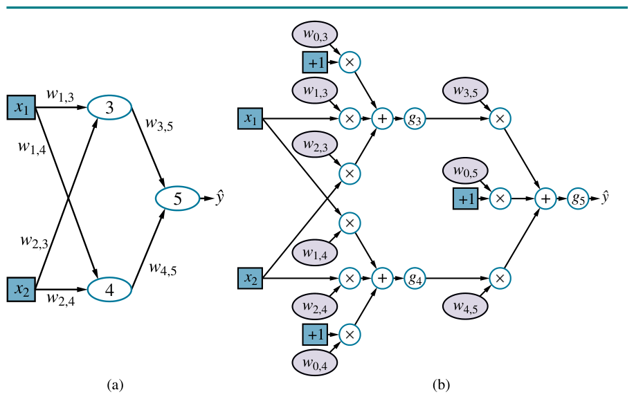
Step 2: the forward pass第 2 步：前向传播
Core idea: A forward pass evaluates the network from left to right—computing each layer's weighted sums and activations before handing them to the next layer—until the final prediction emerges.核心思路：前向传播按层从输入端向输出端推进：先算出当前层的加权输入与激活值，再将其作为下一层的输入，直至得到最终预测输出。
By hand, evaluate a small network in five clean steps:手工演算小型网络的前向传播时，按以下五步依次推进：
- Write down the input vector \(\mathbf x\).列出输入向量 \(\mathbf x\)。
- For each hidden unit, compute its weighted input \(\mathrm{in}\) by summing weights times inputs plus the offset.对每个隐藏单元，计算权重与输入的乘积之和并加上偏置，得到 \(\mathrm{in}\)。
- Apply the hidden activation \(g\) to obtain each hidden output \(a\).代入隐藏层激活函数 \(g\)，得到各隐藏单元的激活值 \(a\)。
- Feed those new activations into the next layer and repeat until reaching the output layer.把刚算出的激活值送入下一层，重复上述计算直至到达输出层。
- Apply the output layer's activation function (linear, sigmoid, or softmax) to produce \(\hat y\).在输出层套用对应输出激活函数（线性、Sigmoid 或 Softmax），得到预测结果 \(\hat y\)。
Grouping an entire layer's units into vectors turns those unit-by-unit equations into one compact matrix multiplication.将同一层所有单元的权重排成矩阵后，上述逐单元计算便统一为一步简洁的矩阵乘法。
By convention, a network with \(K\) weight matrices is called a \(K\)-layer network (the input vector is not counted as a layer), so a two-layer network has one hidden layer（隐藏层）. Because each unit in layer \(l\) has \(U_{l-1}\) incoming weights plus one offset, the total parameter count is \(\sum_{l=1}^{K} U_l(U_{l-1}+1)\); for a 2–2–1 network, that comes to \(2\cdot3+1\cdot3=9\) parameters.按惯例，拥有 \(K\) 个权重矩阵的网络称为 \(K\) 层网络（输入不计入层数），因此两层网络包含一个隐藏层。第 \(l\) 层的每个单元有 \(U_{l-1}\) 个输入权重及 1 个偏置，故总参数量为 \(\sum_{l=1}^{K} U_l(U_{l-1}+1)\)；例如 2–2–1 网络共有 \(2\cdot3+1\cdot3=9\) 个参数。
We will reuse this exact network and forward cache in Section 9.3 to demonstrate backpropagation.第 9.3 节将沿用同一网络及其前向缓存值来演示反向传播。
Step 3: the activation functions第 3 步：激活函数与非线性
Core idea: Nonlinear activations bend each layer's weighted sum; without that nonlinearity, stacking multiple layers collapses into a single linear transformation and gains zero expressive power.核心思路：非线性激活函数负责“弯折”线性加权和；若缺少这一非线性，无论堆叠多少层都会坍缩为单一线性映射，模型表达能力不会比单层更强。
To see why, suppose \(g(x)=x\) in every hidden layer: a two-layer network computes \(W^{(2)}(W^{(1)}\mathbf x)=(W^{(2)}W^{(1)})\mathbf x\), which is algebraically identical to a single weight matrix. Adding nonlinear activations lets stacked layers carve curved decision boundaries and approximate complex mappings.道理很直接：若隐藏层均采用恒等函数 \(g(x)=x\)，两层网络计算的是 \(W^{(2)}(W^{(1)}\mathbf x)=(W^{(2)}W^{(1)})\mathbf x\)，本质上仍是单矩阵乘法。引入非线性后，多层网络才能组合出弯曲的决策边界。
The universal approximation theorem（通用逼近定理）guarantees that even one nonlinear hidden layer with a linear output can approximate any continuous function on a compact domain arbitrarily closely.通用逼近定理指出，只需一个非线性隐藏层配合线性输出层，即可在紧集上以任意精度逼近任意连续函数。
However, this theorem is purely an existence result: it does not say how many hidden units are needed (potentially exponentially many), how training can find the weights, or whether the network will generalize.但该定理仅保证“解的存在性”，并未说明需要多少隐藏单元（可能呈指数级）、如何通过训练找到权重，也不保证模型在新数据上能良好泛化。
| Name名称 | \(g(x)\) | \(g'(x)\) | Range取值范围 | Remarks特性说明 |
|---|---|---|---|---|
| Sigmoid (logistic)Sigmoid（逻辑函数） | \(\dfrac{1}{1+e^{-x}}\) | \(g(1-g)\le0.25\) | \((0,1)\) | Probability-like output; saturates (flat) for large \(\lvert x\rvert\)输出似概率；\(\lvert x\rvert\) 较大时两侧饱和（梯度趋零） |
| Tanh | \(\dfrac{e^{2x}-1}{e^{2x}+1}=2\sigma(2x)-1\) | \(1-\tanh^2x\) | \((-1,1)\) | Shifted, scaled sigmoid; zero-centered outputs经平移缩放的 Sigmoid；输出以零为中心 |
| ReLU | \(\max(0,x)\) | \(0\) for \(x<0\), \(1\) for \(x>0\)\(x<0\) 时为 \(0\)，\(x>0\) 时为 \(1\) | \([0,\infty)\) | Computationally cheap; no saturation for \(x>0\)计算极其高效；\(x>0\) 区域无饱和问题 |
| Softplus | \(\ln(1+e^{x})\) | \(\sigma(x)\) | \((0,\infty)\) | Smooth approximation of ReLUReLU 的处处可微光滑近似 |
Key benchmark values to memorize for hand calculations:手工计算须熟记的常用参考数值：
| \(x\) | \(\sigma(x)\) | \(\sigma'(x)\) | \(\tanh(x)\) | \(\tanh'(x)\) | ReLU\((x)\) | Softplus\((x)\) |
|---|---|---|---|---|---|---|
| \(-2\) | 0.119 | 0.105 | \(-0.964\) | 0.071 | 0 | 0.127 |
| 0 | 0.500 | 0.250 | 0 | 1 | 0 | 0.693 |
| 2 | 0.881 | 0.105 | 0.964 | 0.071 | 2 | 2.127 |
Notice the trade-off revealed by the table: sigmoid and tanh flatten out when \(\lvert x\rvert\) grows large, pushing their slopes toward zero (and sigmoid's slope never exceeds 0.25 even at \(x=0\)).从数值表可看出明显权衡：当 \(\lvert x\rvert\) 较大时，Sigmoid 和 tanh 都会饱和变平，导数趋近于 0（且 Sigmoid 在原点最大斜率也仅为 0.25）。
ReLU avoids saturation for positive inputs with a constant slope of 1, making it the standard hidden activation—though a ReLU unit whose pre-activation stays negative on every training example gets zero gradient and stops learning ("dead ReLU").ReLU 在正半轴导数恒为 1、不会饱和，因而成为隐藏层默认选择；但若某个 ReLU 单元对全部训练样本的加权输入均为负，其梯度将始终为零并停止学习（“死亡 ReLU”）。
Practice练习
Q1. (Forward pass) A network has input \(\mathbf x=(1,2)^{\top}\), a hidden layer of two ReLU units with \(W^{(1)}=\begin{pmatrix}1&-1\\0.5&1\end{pmatrix}\) and \(\mathbf b^{(1)}=(0,-1)^{\top}\), and one linear output unit with \(W^{(2)}=(2,\,-1)\) and \(b^{(2)}=0.5\). Compute \(\hat y\) and the squared loss for target \(y=1\).Q1.（前向传播）某网络的输入为 \(\mathbf x=(1,2)^{\top}\)，隐藏层包含两个 ReLU 单元，权重为 \(W^{(1)}=\begin{pmatrix}1&-1\\0.5&1\end{pmatrix}\)、偏置 \(\mathbf b^{(1)}=(0,-1)^{\top}\)；输出层为单个线性单元，权重 \(W^{(2)}=(2,\,-1)\)、偏置 \(b^{(2)}=0.5\)。求预测值 \(\hat y\) 及样本 \(y=1\) 的平方损失。
Answer
- Hidden pre-activations: \(\mathbf{in}^{(1)}=W^{(1)}\mathbf x+\mathbf b^{(1)}=(1\cdot1-1\cdot2+0,\;0.5\cdot1+1\cdot2-1)^{\top}=(-1,\,1.5)^{\top}\).隐藏层加权输入：\(\mathbf{in}^{(1)}=W^{(1)}\mathbf x+\mathbf b^{(1)}=(1\cdot1-1\cdot2+0,\;0.5\cdot1+1\cdot2-1)^{\top}=(-1,\,1.5)^{\top}\)。
- Hidden activations: Applying ReLU yields \(\mathbf a^{(1)}=\mathrm{ReLU}(\mathbf{in}^{(1)})=(0,\,1.5)^{\top}\).隐藏层激活值：经 ReLU 得 \(\mathbf a^{(1)}=\mathrm{ReLU}(\mathbf{in}^{(1)})=(0,\,1.5)^{\top}\)。
- Output and loss: \(\hat y=2\cdot0-1\cdot1.5+0.5=-1\), so \(L=(y-\hat y)^2=(1-(-1))^2=4\).输出与损失：\(\hat y=2\cdot0-1\cdot1.5+0.5=-1\)，平方损失 \(L=(y-\hat y)^2=(1-(-1))^2=4\)。
Q2. (Counting) A network has 10 inputs, hidden layers of 20 and 15 units, and 3 outputs. Give the shape of each weight matrix and the total number of parameters.Q2.（参数计数）某网络有 10 个输入，两个隐藏层分别含 20 和 15 个单元，输出层有 3 个单元。写出各权重矩阵的形状，并计算总参数个数。
Answer
- Layer 1 (\(10 \to 20\)): \(W^{(1)}\) is \(20\times10\), giving \(20\cdot10+20=220\) parameters.第 1 层（\(10 \to 20\)）：\(W^{(1)}\) 形状为 \(20\times10\)，参数数为 \(20\cdot10+20=220\)。
- Layer 2 (\(20 \to 15\)): \(W^{(2)}\) is \(15\times20\), giving \(15\cdot20+15=315\) parameters.第 2 层（\(20 \to 15\)）：\(W^{(2)}\) 形状为 \(15\times20\)，参数数为 \(15\cdot20+15=315\)。
- Layer 3 (\(15 \to 3\)): \(W^{(3)}\) is \(3\times15\), giving \(3\cdot15+3=48\) parameters.第 3 层（\(15 \to 3\)）：\(W^{(3)}\) 形状为 \(3\times15\)，参数数为 \(3\cdot15+3=48\)。
- Total: \(220+315+48=583\) parameters (weights plus one offset per unit).总计：\(220+315+48=583\) 个参数（包含全部权重及每个单元的偏置）。
Q3. (True/false) "A 5-layer network whose hidden units all use the identity activation and whose output is a sigmoid can represent decision boundaries that logistic regression cannot." Justify.Q3.（判断）“一个 5 层网络，若所有隐藏单元都采用恒等激活函数且输出层为 Sigmoid，就能表示逻辑回归无法表示的决策边界。”请说明理由。
Answer
False. Because composing affine transformations produces another affine map \(\mathbf w^{\top}\mathbf x+b\), the entire network simplifies to \(\sigma(\mathbf w^{\top}\mathbf x+b)\)—which is identical to logistic regression with a linear decision boundary. Depth adds representational power only when hidden layers include nonlinear activations.错误。多个仿射变换连续复合仍是一个仿射映射 \(\mathbf w^{\top}\mathbf x+b\)，因此整个网络等价于 \(\sigma(\mathbf w^{\top}\mathbf x+b)\)，即完全等同于决策边界为线性的逻辑回归。只有隐藏层引入非线性激活函数，增加深度才有意义。
思路：线性层的复合仍是线性层，加了 Sigmoid 输出也只是一层逻辑回归。
Output Layers, Loss Functions and Input Encoding ★★输出层、损失函数与输入编码
Goal. Pair each prediction task with the right output layer and loss function, calculate softmax probabilities and cross-entropy loss by hand, and encode categorical features properly.目标。为不同预测任务匹配正确的输出层与损失函数，手工计算 Softmax 概率与交叉熵损失，并正确编码类别型特征。
Step 1: the output layer determines the loss第 1 步：输出层决定损失函数
Core idea: The output activation defines the probabilistic meaning of the network's prediction, and maximum-likelihood training minimizes the negative log-probability assigned to the observed target.核心思路：输出激活函数决定了预测结果的概率含义，而最大似然训练正是最小化观测标签所获预测概率的负对数。
In classification, minimizing the negative log-likelihood of the training labels produces the cross-entropy loss（交叉熵损失）. Under the same principle, modeling a regression target as a Gaussian with fixed variance yields the familiar squared error loss.在分类任务中，最小化训练标签的负对数似然即得到交叉熵损失；按同一原理，若将回归目标建模为固定方差的高斯分布均值，最小化负对数似然便自然导出平方误差损失。
| Task任务类型 | Output layer输出层设计 | Output meaning输出含义 | Loss for one example单样本损失函数 |
|---|---|---|---|
| Regression回归 | Linear unit, \(\hat y=\mathrm{in}\)线性单元，\(\hat y=\mathrm{in}\) | Mean of a fixed-variance Gaussian固定方差高斯分布的均值 | Squared error \((y-\hat y)^2\)平方误差 \((y-\hat y)^2\) |
| Binary classification二分类 | One sigmoid unit单个 Sigmoid 单元 | \(P(y=1\mid\mathbf x)\) | \(-y\ln\hat y-(1-y)\ln(1-\hat y)\) (\(-\ln\) of true-label probability)\(-y\ln\hat y-(1-y)\ln(1-\hat y)\)（真实标签所获概率的负对数） |
| \(d\)-class classification\(d\) 类多分类 | \(d\) units with softmax\(d\) 个单元配 Softmax | Categorical distribution各类别的离散概率分布 | \(-\ln p_y\) |
For example, suppose a spam filter ends with a single sigmoid unit that outputs \(\hat y=0.8\). If the email is actually spam (\(y=1\)), the loss is \(-\ln 0.8=0.223\); if it is not spam (\(y=0\)), the loss jumps to \(-\ln(1-0.8)=-\ln 0.2=1.609\).例如，某垃圾邮件过滤器末端为单个 Sigmoid 单元，对一封邮件输出 \(\hat y=0.8\)：若该邮件确实是垃圾邮件（\(y=1\)），损失为 \(-\ln 0.8=0.223\)；若不是垃圾邮件（\(y=0\)），损失则升至 \(-\ln(1-0.8)=-\ln 0.2=1.609\)。
Step 2: softmax第 2 步：Softmax
Core idea: Softmax exponentiates raw logits so every entry becomes strictly positive while preserving rank order, then divides by their sum so the outputs form a valid probability distribution summing to 1.核心思路：Softmax 先通过指数函数将任意实数得分转为正数并保留大小顺序，再除以总和，使其构成总和为 1 的合法概率分布。
Raw class scores from a linear layer can be negative and need not sum to 1, so they cannot be treated directly as probabilities. Exponentiating turns every logit positive and amplifies differences, while normalizing guarantees \(\sum_k p_k = 1\).线性输出层直接给出的类别得分可正可负且和不为 1，无法直接视作概率；指数化把全部得分变为正数并拉大差距，归一化则保证所有概率之和严格等于 1。
To compute softmax and cross-entropy by hand:手工计算 Softmax 与交叉熵按四步进行：
- Evaluate \(e^{\mathrm{in}_k}\) for every class \(k\).对每个类别 \(k\) 分别计算 \(e^{\mathrm{in}_k}\)。
- Sum all \(d\) exponentials to obtain the normalizer.将所有 \(d\) 个指数值相加得到归一化分母。
- Divide each \(e^{\mathrm{in}_k}\) by that sum to get \(p_k\).将各类的 \(e^{\mathrm{in}_k}\) 除以总和得到概率 \(p_k\)。
- Take \(-\ln p_y\) using only the true class's probability.只取真实类别对应概率计算 \(-\ln p_y\)。
Notice that for two classes with logits \((z,0)\), softmax gives \(e^z/(e^z+1)=\sigma(z)\), showing that the sigmoid is simply the two-class special case of softmax. Because adding a constant \(c\) to every logit multiplies numerator and denominator by \(e^c\), only the differences between logits affect the probabilities.值得注意的是，当仅有两类且 logits 为 \((z,0)\) 时，Softmax 即化简为 \(e^z/(e^z+1)=\sigma(z)\)——可见 Sigmoid 本质上就是二分类的 Softmax。此外，给所有 logit 同加常数 \(c\) 在分子分母中会约去 \(e^c\)，因此真正决定概率的只是各 logit 之间的差值。
Step 3: encoding the inputs第 3 步：输入特征编码
Because neural units compute continuous weighted sums, encoding unordered categories as raw integers \(1,2,3,4\) falsely implies that category 2 lies halfway between 1 and 3 and far from 4.由于神经单元执行连续的加权求和，若把无序类别直接编成整数 \(1,2,3,4\)，就等于强加了虚假的顺序与距离关系（误以为 2 介于 1 和 3 中间且远离 4）。
Instead, a categorical feature with \(d\) values uses one-hot encoding（独热编码）—a \(d\)-bit vector with 1 at the observed value and 0 elsewhere (e.g., "rain" in \(\{\text{sun, rain, cloud, snow}\}\) becomes \((0,1,0,0)\))—while numeric inputs are rescaled directly.因此，含 \(d\) 个取值的离散属性应采用独热编码（\(d\) 位向量中仅当前取值位为 1，如“雨”编码为 \((0,1,0,0)\)），数值特征则直接缩放到统一范围后输入。
Practice练习
Q1. (Calculation) The logits of a three-class network are \((2.0,\,1.0,\,0.1)\). Compute the softmax probabilities and the cross-entropy loss when the true class is 1 and when it is 2.Q1.（计算）某三分类网络的 logits 为 \((2.0,\,1.0,\,0.1)\)。当真实类别分别为 1 和 2 时，计算 Softmax 概率与交叉熵损失。
Answer
- Exponentials and sum: \(e^{2.0}=7.389\), \(e^{1.0}=2.718\), \(e^{0.1}=1.105\), giving total \(11.212\) and probabilities \(\mathbf p=(0.659,\,0.242,\,0.099)\).指数与概率：\(e^{2.0}=7.389\)、\(e^{1.0}=2.718\)、\(e^{0.1}=1.105\)，总和 \(11.212\)，故 \(\mathbf p=(0.659,\,0.242,\,0.099)\)。
- True class 1: \(L=-\ln 0.659=0.417\).真实类别为 1：\(L=-\ln 0.659=0.417\)。
- True class 2: \(L=-\ln 0.242=1.417\). As the probability given to the true class approaches 1, the loss shrinks to 0; as it approaches 0, the loss grows without bound.真实类别为 2：\(L=-\ln 0.242=1.417\)。真实类所得概率越接近 1，损失越趋近 0；越接近 0，损失则无限增大。
Q2. (Design) Specify the output layer and loss for (a) predicting a house price, (b) classifying whether an email is spam, and (c) predicting the next word out of 50,000. (d) How should Weather \(\in\{\text{sun, rain, cloud, snow}\}\) be encoded, and why not as integers 1 to 4?Q2.（架构设计）为以下任务选择输出层与损失函数：(a) 预测房价；(b) 判断邮件是否为垃圾邮件；(c) 从 50,000 个词表中预测下一个词。(d) 输入属性 Weather \(\in\{\text{sun, rain, cloud, snow}\}\) 应如何编码？为何不能编成整数 1 到 4？
Answer
- (a) House price (regression): One linear output unit with squared error loss \((y-\hat y)^2\).(a) 房价预测（回归）：单个线性输出单元，配平方误差损失 \((y-\hat y)^2\)。
- (b) Spam detection (binary): One sigmoid unit outputting \(P(\text{spam}\mid\mathbf x)\), trained with binary cross-entropy (\(-\ln\) of the true label's predicted probability).(b) 垃圾邮件识别（二分类）：单个 Sigmoid 单元输出 \(P(\text{spam}\mid\mathbf x)\)，配二元交叉熵（真实标签所获概率的负对数）。
- (c) Next-word prediction (50,000 classes): A 50,000-unit softmax output layer with multiclass cross-entropy loss \(-\ln p_y\).(c) 词表预测（50,000 类）：50,000 个输出单元配 Softmax，采用多类交叉熵损失 \(-\ln p_y\)。
- (d) One-hot encoding: Use 4 bits (e.g., rain \(=(0,1,0,0)\)). Encoding categories as 1–4 imposes artificial ordering and distances (putting sun close to rain and far from snow) that a continuous network cannot ignore.(d) 独热编码：使用 4 位二进制向量（如 rain 为 \((0,1,0,0)\)）。若编为 1–4，会人为引入原属性并不存在的序关系与距离（误认晴与雨近、与雪远），而由连续函数构成的网络无法消除这种虚假关联。
Backpropagation ★★★反向传播
Goal. Execute a full forward and backward pass by hand on a small network, compute every unit's error signal and weight gradient, update all weights, and explain vanishing gradients.目标。在小型网络上手工完成一次完整的前向与反向传播，算出每个单元的误差信号与每个权重的梯度，完成权重更新，并解释梯度消失的成因。
Step 1: what backpropagation computes第 1 步：反向传播的作用与原理
Core idea: Backpropagation caches forward activations and propagates an error signal \(\Delta_j\) backward from the output via the chain rule, multiplying by downstream weights and local activation slopes so every weight gradient is computed in a single backward sweep.核心思路：反向传播复用前向计算缓存的激活值，利用链式法则将输出端误差信号 \(\Delta_j\) 沿连接权重与局部激活斜率逐层回传，从而在一次反向遍历中算出全部权重的梯度。
Testing how perturbing each of \(P\) weights changes the loss one by one would require \(P\) forward passes per update. Backpropagation（反向传播）eliminates that cost by propagating error signals \(\Delta_j=\partial L/\partial\mathrm{in}_j\) backward once.若逐一微调网络中的 \(P\) 个权重来估算斜率，每走一步都要跑 \(P\) 次前向传播。反向传播通过从输出往输入回传一遍误差信号 \(\Delta_j=\partial L/\partial\mathrm{in}_j\)，彻底消除了这种重复计算。
Crucially, backpropagation only computes the parameter gradients \(\partial L/\partial w\); using those gradients to update the weights is the job of gradient descent (Section 9.4).需要注意，反向传播只负责算出各参数梯度 \(\partial L/\partial w\)，真正根据梯度修改权重的是第 9.4 节介绍的梯度下降。
Notice the uniform pattern behind every weight gradient: multiply the target unit's error signal \(\Delta_j\) by the incoming activation \(a_i\) entering that edge.所有权重的梯度都遵循同一简洁规律：接收端单元的误差信号 \(\Delta_j\) 乘以发送端送入该边的激活值 \(a_i\)。
Step 2: the procedure第 2 步：手工演算五步法
Follow these five steps in exact order when working a backpropagation problem by hand:考场手工演算反向传播时，按以下五步严格执行：
- Forward pass: Compute and record every \(\mathrm{in}\) and \(a\), then compute \(\hat y\) and \(L\).前向传播：依次算出并保留每一层的 \(\mathrm{in}\) 和 \(a\)，最后算出 \(\hat y\) 与损失 \(L\)。
- Output error: Evaluate \(\Delta_5=2(\hat y-y)\,g_5'(\mathrm{in}_5)\) (for a linear output, \(g_5'=1\)).输出层误差：计算 \(\Delta_5=2(\hat y-y)\,g_5'(\mathrm{in}_5)\)（线性输出时 \(g_5'=1\)）。
- Hidden errors: Propagate backward using the old weights: \(\Delta_3=\Delta_5\,w_{3,5}\,g_3'\) and \(\Delta_4=\Delta_5\,w_{4,5}\,g_4'\).隐藏层误差：用旧权重逐层回传：\(\Delta_3=\Delta_5\,w_{3,5}\,g_3'\)，\(\Delta_4=\Delta_5\,w_{4,5}\,g_4'\)。
- Weight gradients: Multiply each edge's target \(\Delta_j\) by its source activation \(a_i\) (for offsets, the gradient is \(\Delta_j\) itself).计算梯度：每条边的梯度等于终点 \(\Delta_j\) 乘以起点激活值 \(a_i\)（偏置的梯度即为 \(\Delta_j\)）。
- Simultaneous update: Update all weights together using \(w_{\text{new}} = w_{\text{old}} - \alpha \cdot \text{gradient}\).同步更新：对所有参数统一执行 \(w_{\text{new}} = w_{\text{old}} - \alpha \cdot \text{梯度}\)。
As a quick sign sanity check, note that \(\Delta_5<0\) means \(\hat y\) underestimated \(y\), so weights feeding unit 5 from positive activations increase to push \(\hat y\) upward.考场可用符号快速验算：\(\Delta_5<0\) 说明预测值 \(\hat y\) 偏低，因此来自正激活值的输出层权重必须增大，以把 \(\hat y\) 向上拉近真实目标。
Step 3: the layer form第 3 步：层形式的矩阵表达
For larger networks, the same chain-rule recurrence across units writes cleanly as matrix operations.在包含大量单元的深层网络中，上述误差回传规则可紧凑地写为层间矩阵运算。
Because each backward step reverses the forward matrix product at matching cost, backpropagation takes roughly the same computation time as the forward pass—at the memory cost of caching all intermediate \(\mathbf{in}^{(l)}\) and \(\mathbf a^{(l)}\) vectors.反向传播每一步只是前向矩阵乘法的逆向对应，因而计算开销与前向传播大致相当，但代价是必须在内存中缓存前向阶段的全部 \(\mathbf{in}^{(l)}\) 与 \(\mathbf a^{(l)}\)。
Vanishing gradients梯度消失
Every layer that an error signal \(\Delta\) crosses multiplies it by that layer's activation slope \(g'\) and transposed weights \(W^{\top}\).误差信号 \(\Delta\) 每往回跨过一层，就必须乘以该层的激活导数 \(g'\) 与转置权重矩阵 \(W^{\top}\)。
Because sigmoid's derivative is at most 0.25 (and near zero when saturated), nine sigmoid layers shrink the slope product by at least \(0.25^9\approx3.8\times10^{-6}\), starving early layers—the vanishing gradient problem（梯度消失问题）—whereas ReLU preserves a slope of 1 along active paths.由于 Sigmoid 的斜率最大只有 0.25（饱和区更接近 0），连过九层 Sigmoid 会将导数乘积压缩至不超过 \(0.25^9\approx3.8\times10^{-6}\)，使浅层几乎收不到梯度，即梯度消失问题；而 ReLU 在正区间导数恒为 1，避免了该萎缩。
Practice练习
Q1. (Calculation) Let \(\hat y=w_2\,\mathrm{ReLU}(w_1x+b_1)+b_2\) with \(w_1=0.5\), \(b_1=0.5\), \(w_2=1.5\), \(b_2=-0.5\), input \(x=2\), target \(y=3\), and squared loss. Compute the initial loss and all four gradients via backpropagation, update with \(\alpha=0.02\), and find the new loss.Q1.（计算）设 \(\hat y=w_2\,\mathrm{ReLU}(w_1x+b_1)+b_2\)，其中 \(w_1=0.5\)、\(b_1=0.5\)、\(w_2=1.5\)、\(b_2=-0.5\)，输入 \(x=2\)，目标 \(y=3\)，采用平方损失。用反向传播求初始损失与四个参数的梯度，以 \(\alpha=0.02\) 更新后计算新损失。
Answer
- Forward pass: \(\mathrm{in}_1=0.5\cdot2+0.5=1.5\), \(a_1=1.5\), \(\hat y=1.5\cdot1.5-0.5=1.75\), and \(L=(3-1.75)^2=1.5625\).前向传播：\(\mathrm{in}_1=0.5\cdot2+0.5=1.5\)，\(a_1=1.5\)，\(\hat y=1.5\cdot1.5-0.5=1.75\)，\(L=(3-1.75)^2=1.5625\)。
- Backward pass: Output error \(\Delta_2=2(\hat y-y)=-2.5\), giving \(\partial L/\partial w_2=\Delta_2 a_1=-3.75\) and \(\partial L/\partial b_2=-2.5\). Hidden error \(\Delta_1=\Delta_2 w_2\,\mathrm{ReLU}'(1.5)=-2.5\cdot1.5\cdot1=-3.75\), giving \(\partial L/\partial w_1=\Delta_1 x=-7.5\) and \(\partial L/\partial b_1=-3.75\).反向传播：输出误差 \(\Delta_2=2(\hat y-y)=-2.5\)，得 \(\partial L/\partial w_2=\Delta_2 a_1=-3.75\)、\(\partial L/\partial b_2=-2.5\)；隐藏误差 \(\Delta_1=\Delta_2 w_2\,\mathrm{ReLU}'(1.5)=-2.5\cdot1.5\cdot1=-3.75\)，得 \(\partial L/\partial w_1=\Delta_1 x=-7.5\)、\(\partial L/\partial b_1=-3.75\)。
- Parameter updates (\(\alpha=0.02\)): \(w_1=0.65\), \(b_1=0.575\), \(w_2=1.575\), \(b_2=-0.45\).参数更新（\(\alpha=0.02\)）：\(w_1=0.65\)、\(b_1=0.575\)、\(w_2=1.575\)、\(b_2=-0.45\)。
- New forward pass: \(\mathrm{in}_1=1.875\), \(\hat y=1.575\cdot1.875-0.45=2.5031\), and \(L=0.2469\) (down from 1.5625).更新后前向验算：\(\mathrm{in}_1=1.875\)，\(\hat y=1.575\cdot1.875-0.45=2.5031\)，损失 \(L=0.2469\)（由 1.5625 显著下降）。
Q2. (Derivation) For softmax with cross-entropy loss, show that \(\partial L/\partial\mathrm{in}_j=p_j-\mathbb 1[j=y]\).Q2.（推导）证明：在 Softmax 配交叉熵损失下，输出层误差信号满足 \(\partial L/\partial\mathrm{in}_j=p_j-\mathbb 1[j=y]\)。
Answer
Expanding \(L=-\ln p_y = -\mathrm{in}_y+\ln\sum_k e^{\mathrm{in}_k}\) and differentiating with respect to \(\mathrm{in}_j\) gives \(\partial L/\partial\mathrm{in}_j=-\mathbb 1[j=y]+\frac{e^{\mathrm{in}_j}}{\sum_k e^{\mathrm{in}_k}}=p_j-\mathbb 1[j=y]\). Thus the starting error signal \(\Delta^{(K)}\) is simply the predicted probability vector minus the one-hot target.将损失展开为 \(L=-\ln p_y=-\mathrm{in}_y+\ln\sum_k e^{\mathrm{in}_k}\)，关于 \(\mathrm{in}_j\) 求偏导得 \(\partial L/\partial\mathrm{in}_j=-\mathbb 1[j=y]+\frac{e^{\mathrm{in}_j}}{\sum_k e^{\mathrm{in}_k}}=p_j-\mathbb 1[j=y]\)。可见反向传播起点 \(\Delta^{(K)}\) 恰好等于预测概率向量减去独热真实标签。
Q3. (Explain) A 10-layer network has nine sigmoid hidden layers. Bound the product of the activation derivatives along a path from the output to the first layer, and explain why ReLU helps.Q3.（解释）某 10 层网络包含 9 个 Sigmoid 隐藏层。给出从输出层到第 1 层沿某条路径的激活导数连乘积上界，并说明为何 ReLU 能缓解该问题。
Answer
Because \(\sigma'(x)\le 0.25\) everywhere, multiplying nine activation derivatives scales the error signal by at most \(0.25^9\approx 3.8\times10^{-6}\) even before accounting for the weights, leaving early layers with virtually no gradient. By contrast, ReLU has derivative 1 on all positive inputs, so the gradient passes through active units without shrinking—at the trade-off of zero gradient whenever a unit's pre-activation is negative.因处处满足 \(\sigma'(x)\le 0.25\)，即使尚未计入权重，9 个激活导数连乘也会将误差信号衰减到至多 \(0.25^9\approx 3.8\times10^{-6}\)，使浅层几乎学不动。而 ReLU 在正输入处导数恒为 1，活跃路径上的梯度不会缩水；代价是当单元加权输入落入负区间时梯度归零。
Training: SGD, Minibatches, Momentum and Initialization ★★训练：SGD、小批量、动量与初始化
Goal. Perform single steps of SGD and momentum by hand, convert between epochs and weight updates, and explain how weights must be initialized.目标。手工演算一步 SGD 与一步动量更新，准确换算轮次与权重更新次数，并说明权重初始化的要点。
Step 1: gradient descent and SGD第 1 步：梯度下降与 SGD
Core idea: Gradient descent steps weights downhill against the loss gradient, while stochastic gradient descent (SGD) estimates that gradient cheaply on a random minibatch at the cost of noisy steps.核心思路：梯度下降沿损失梯度的反方向逐步下山；随机梯度下降（SGD）则用随机小批量以极低成本近似梯度，但每一步带有随机噪声。
Minibatch SGD performs \(\lceil N/m\rceil\) updates per epoch, and each update has constant computational cost independent of \(N\) while exploiting parallel GPU batching. Moreover, gradient noise can help weights escape shallow local minima—though near a minimum that same noise causes jitter, so the learning rate is usually decayed over training.小批量 SGD 每轮执行 \(\lceil N/m\rceil\) 次更新，每次更新耗时与总样本数 \(N\) 无关且契合 GPU 并行计算。小批量噪声还有助于跳出浅层局部极小值，但在逼近最优点附近会导致参数震荡，因此训练后期通常逐步衰减学习率。
Step 2: momentum第 2 步：动量法
Core idea: Momentum maintains an exponentially weighted velocity of past gradients, accelerating progress along consistent downhill directions while canceling out back-and-forth oscillations.核心思路：动量法维护一个累积历史梯度的速度向量，使参数在方向一致的缓坡上不断加速，而在方向反复翻转的陡壁上相互抵消。
Step 3: initialization第 3 步：权重初始化
Unlike linear and logistic regression, whose convex objectives converge from any start, neural networks have non-convex loss landscapes where initialization strongly shapes optimization:线性回归与逻辑回归的代价函数是凸的，从任意初值出发都能收敛到同一全局最优解；但神经网络的损失面是非凸的，权重初始化直接决定训练成败：
- Small random values (break symmetry): Setting all weights in a layer equal (e.g., to zero) gives every unit identical gradients, keeping them identical forever.小随机数打破对称性：若将同层权重全设为相同值（如全零），反向传播时各单元将收到完全相同的梯度而永远无法分化。
- Avoid overly large weights: Large initial weights push sigmoid and tanh units straight into their flat saturation regions where gradients vanish.避免初值过大：过大的初始权重会使 Sigmoid 和 tanh 单元一上来就落入饱和区，导致梯度几乎为零。
Practice练习
Q1. (Calculation) A dataset of \(N=50{,}000\) examples is trained with minibatch size \(m=250\). How many updates make one epoch, and how many occur in 30 epochs? What changes if \(N=10{,}000\) and \(m=64\)?Q1.（计算）训练集有 \(N=50{,}000\) 个样本，小批量大小 \(m=250\)。一个轮次与 30 个轮次各有多少次权重更新？若改为 \(N=10{,}000\) 与 \(m=64\)，结果如何？
Answer
- Case 1 (\(N=50{,}000, m=250\)): \(50{,}000/250=200\) updates per epoch, so 30 epochs give \(30\cdot200=6{,}000\) updates.情形 1（\(N=50{,}000, m=250\)）：每轮 \(50{,}000/250=200\) 次更新，30 轮共 \(30\cdot200=6{,}000\) 次更新。
- Case 2 (\(N=10{,}000, m=64\)): Since \(10{,}000/64=156.25\), each epoch uses 156 full minibatches plus 1 partial minibatch holding the remaining 16 examples, totaling 157 updates per epoch.情形 2（\(N=10{,}000, m=64\)）：\(10{,}000/64=156.25\)，因此每轮包含 156 个完整小批量和 1 个含余下 16 个样本的小批量，共 157 次更新。
Q2. (Calculation) SGD with momentum (\(\alpha=0.1\), \(\beta=0.9\)) starts from \(w=1\) and \(v=0\). Three consecutive gradients are \(2,\,2,\,-2\). Compute \(v\) and \(w\) after each step and compare against plain SGD.Q2.（计算）带动量的 SGD（\(\alpha=0.1\)，\(\beta=0.9\)）从 \(w=1\)、\(v=0\) 出发，连续三步梯度为 \(2,\,2,\,-2\)。计算每步后的 \(v\) 与 \(w\)，并与普通 SGD 对比。
Answer
- Step 1 (\(g=2\)): \(v=-0.1\cdot2=-0.2\), \(w=0.8\).第 1 步（\(g=2\)）：\(v=-0.1\cdot2=-0.2\)，\(w=0.8\)。
- Step 2 (\(g=2\)): \(v=0.9(-0.2)-0.2=-0.38\), \(w=0.42\).第 2 步（\(g=2\)）：\(v=0.9(-0.2)-0.2=-0.38\)，\(w=0.42\)。
- Step 3 (\(g=-2\)): \(v=0.9(-0.38)-0.1(-2)=-0.142\), \(w=0.278\).第 3 步（\(g=-2\)）：\(v=0.9(-0.38)-0.1(-2)=-0.142\)，\(w=0.278\)。
- Comparison: Plain SGD yields \(w=0.8,\,0.6,\,0.8\)—reversing direction at step 3—whereas momentum smooths out the sign flip and keeps moving downward because past gradients dominate.对比结论：普通 SGD 依次为 \(w=0.8,\,0.6,\,0.8\)（第 3 步直接折返），而动量法因历史梯度仍占主导，平滑了瞬时反向噪声并继续稳步下行。
Generalization: Architecture, Weight Decay, Dropout and Early Stopping ★★泛化：网络结构、权重衰减、Dropout 与早停
Goal. Contrast how weight decay, dropout, and early stopping combat overfitting, trace each method on simple numbers, and identify its hyperparameter and test-time behavior.目标。对比权重衰减、Dropout 与早停抑制过拟合的不同机制，分别用小数字演算其操作过程，并指出各自超参数及测试阶段行为。
Because overparameterized networks can memorize training noise and still generalize poorly (Section 6.4), training relies on regularization techniques. The three standard remedies below intervene at different points: the loss objective, the forward pass, and the stopping criterion.参数量庞大的网络很容易把训练噪声一并背下来而在新样本上表现糟糕（见第 6.4 节），因此需要正则化加以约束。以下三种经典方法分别作用于不同环节：损失函数、前向传播以及训练停止时机。
Step 1: weight decay第 1 步：权重衰减
Core idea: Weight decay adds an \(L_2\) penalty on large weights to the loss, so every gradient step gently shrinks every weight toward zero before applying the data gradient.核心思路：权重衰减在损失函数中添加对大权重的 \(L_2\) 惩罚项，使得每次梯度更新前都会先将权重向零小幅收缩，再减去数据梯度步长。
For example, given \(w=1.5\), data gradient \(-0.2\), \(\alpha=0.1\), and \(\lambda=0.01\), the shrink factor is \(1-2(0.1)(0.01)=0.998\), giving \(w_{\text{new}}=0.998\cdot1.5-0.1(-0.2)=1.497+0.02=1.517\). Probabilistically, weight decay is equivalent to MAP estimation under a zero-mean Gaussian prior on weights, where a larger \(\lambda\) enforces a narrower prior and smoother functions.例如取 \(w=1.5\)、数据梯度 \(-0.2\)、\(\alpha=0.1\) 与 \(\lambda=0.01\)，收缩因子为 \(1-2(0.1)(0.01)=0.998\)，更新后 \(w_{\text{new}}=0.998\cdot1.5-0.1(-0.2)=1.497+0.02=1.517\)。从概率角度看，权重衰减等价于对权重施加零均值高斯先验的 MAP 估计，\(\lambda\) 越大对应先验越窄、拟合函数越光滑。
Step 2: dropout第 2 步：Dropout
Core idea: Dropout randomly switches off a fraction of units on every training step so units cannot co-adapt to brittle partners, approximating a massive ensemble of shared-weight sub-networks.核心思路：Dropout 在每次训练迭代中随机屏蔽一部分单元，迫使各单元学会独立提取稳健特征而非依赖特定“搭档”，相当于用单个共享权重的网络近似训练海量随机子网络的集成。
During training, dropout（Dropout，随机失活）retains each unit in the selected layers independently with probability \(r\) and zeroes out dropped units, so backpropagation updates only the surviving sub-network. At test time, dropout is disabled and the full network runs deterministically.训练时，Dropout（随机失活）以概率 \(r\) 独立保留所选层中的每个单元，被丢弃的单元输出归零，反向传播只更新当前存活的链路；到了测试阶段则关闭 Dropout，启用完整网络进行确定性预测。
Consider \(\mathbf a=(1.0,\,0.4,\,2.0)\) with keep probability \(r=0.8\) and sampled mask \((1,1,0)\): multiplying kept entries by \(1/0.8=1.25\) yields \((1.25,\,0.5,\,0)\) during training, while test time simply passes \((1.0,\,0.4,\,2.0)\). Across \(u\) droppable units, dropout implicitly samples from \(2^u\) weight-sharing sub-networks and approximates their ensemble average in one forward pass.举例来说，设激活值 \(\mathbf a=(1.0,\,0.4,\,2.0)\)、\(r=0.8\) 且随机掩码为 \((1,1,0)\)，则训练时将保留项乘以 \(1/0.8=1.25\) 得 \((1.25,\,0.5,\,0)\)，测试时原样输出 \((1.0,\,0.4,\,2.0)\)。对于含 \(u\) 个可失活单元的网络，Dropout 相当于在 \(2^u\) 个共享权重的子网络中随机采样，并在测试时以单次前向传播近似整个集成的平均预测。
Step 3: early stopping第 3 步：早停法
Core idea: Early stopping halts training once validation loss stops improving for a set patience window and restores the checkpoint from the lowest-loss epoch.核心思路：早停法监控验证集损失，当连续多轮（超出耐心值）不再刷新最佳成绩时停止训练，并回滚至验证损失最低那一轮保存的权重。
Track early stopping in four simple steps:早停法的执行步骤如下：
- Evaluate the validation loss at the end of every epoch.每轮训练结束时计算验证集损失。
- Whenever a new minimum validation loss appears, save a snapshot of the weights and reset the wait counter.若验证损失创下新低，立即保存当前权重快照并将等待计数器清零。
- If the validation loss does not improve, increment the counter of epochs since the best checkpoint.若验证损失未能改善，则把“未改进轮次计数”加 1。
- Once that counter reaches the patience（耐心值）, stop training and return the saved best weights.当计数达到设定的耐心值时终止训练，返回先前保存的最佳权重。
For example, given validation losses \(0.80, 0.60, 0.55, 0.57, 0.60\) and patience 2, epoch 3 achieves the minimum (\(0.55\)); because epochs 4 and 5 fail to beat \(0.55\), training halts after epoch 5 and restores the weights from epoch 3.例如，若前五轮验证损失依次为 \(0.80, 0.60, 0.55, 0.57, 0.60\) 且耐心值为 2，则第 3 轮取得最优值 \(0.55\)，第 4、5 轮连续未改善，于是第 5 轮结束后停止训练，并返回第 3 轮的权重。
| Method正则化方法 | What it changes作用对象 | Hyperparameter核心超参数 | At test time测试阶段行为 |
|---|---|---|---|
| Weight decay权重衰减 | Loss objective (adds \(\lambda\sum w^2\))修改损失函数（加 \(\lambda\sum w^2\)） | Penalty strength \(\lambda\)惩罚系数 \(\lambda\) | No change needed无需额外改动 |
| DropoutDropout（随机失活） | Forward pass (random units zeroed)修改前向传播（随机屏蔽单元） | Keep probability \(r\)保留概率 \(r\) | Use full network, dropout off启用完整网络，关闭失活 |
| Early stopping早停 | Training duration控制训练轮数 | Patience耐心值 | Restore best validation weights加载验证最佳轮次权重 |
Practice练习
Q1. (Calculation) A weight is \(w=2.0\) with data gradient \(\partial J/\partial w=0.5\), learning rate \(\alpha=0.1\), and weight decay \(\lambda=0.01\) (penalty \(\lambda\sum w^2\)). Compute the updated weight, and find \(w\) after 100 steps if the data gradient stays zero.Q1.（计算）已知权重 \(w=2.0\)，数据梯度 \(\partial J/\partial w=0.5\)，学习率 \(\alpha=0.1\)，权重衰减系数 \(\lambda=0.01\)（惩罚项 \(\lambda\sum w^2\)）。计算更新后的权重；若此后数据梯度恒为零，再经 100 步后 \(w\) 为多少？
Answer
- One update: \(w\leftarrow w-\alpha(\partial J/\partial w+2\lambda w)=2.0-0.1(0.5+0.04)=1.946\) (equivalently, \(0.998\cdot2.0-0.05=1.946\)).单步更新：\(w\leftarrow w-\alpha(\partial J/\partial w+2\lambda w)=2.0-0.1(0.5+0.04)=1.946\)（等价于 \(0.998\cdot2.0-0.05=1.946\)）。
- 100 steps with zero data gradient: Starting from \(w=2.0\), the weight shrinks geometrically by factor \(0.998\) each step: \(2.0\cdot0.998^{100}=1.637\).无数据梯度连走 100 步：从 \(w=2.0\) 起，每步按几何因子 \(0.998\) 衰减，100 步后为 \(2.0\cdot0.998^{100}=1.637\)。
Q2. (Calculation) A layer has activations \(\mathbf a=(0.8,\,1.2,\,0.5,\,2.0)\). Dropout with keep probability \(r=0.5\) draws the mask \((1,0,1,0)\). Give the training and test outputs, and count how many sub-networks exist for 200 hidden units.Q2.（计算）某层激活值为 \(\mathbf a=(0.8,\,1.2,\,0.5,\,2.0)\)。采用保留概率 \(r=0.5\) 的 Dropout 并抽到掩码 \((1,0,1,0)\)，分别写出训练与测试输出；若隐藏层有 200 个单元，共存在多少个子网络？
Answer
- Training output: Kept units scale by \(1/r=2\), yielding \((1.6,\,0,\,1.0,\,0)\); each unit's expected value remains \(r\cdot(a/r)=a\).训练输出：保留单元乘以 \(1/r=2\)，得 \((1.6,\,0,\,1.0,\,0)\)，各单元期望输出仍保持 \(a\) 不变。
- Test output: Dropout is off, returning \((0.8,\,1.2,\,0.5,\,2.0)\) directly.测试输出：关闭 Dropout，原样输出 \((0.8,\,1.2,\,0.5,\,2.0)\)。
- Number of sub-networks: With 200 units, there are \(2^{200}\approx 1.6\times10^{60}\) weight-sharing sub-networks, only a tiny fraction of which are ever sampled during training.子网络总数：200 个单元对应 \(2^{200}\approx 1.6\times10^{60}\) 个共享权重的子网络，训练中实际仅采样其中极小一部分。
Terms to recognize ★需要认识的术语
| Term术语 | What to know核心要点 |
|---|---|
| Softplus | \(\ln(1+e^{x})\), a smooth approximation of ReLU whose derivative is the sigmoid \(\sigma(x)\)\(\ln(1+e^{x})\)，ReLU 的光滑近似，其导数恰好为 Sigmoid 函数 \(\sigma(x)\) |
| Exploding gradients梯度爆炸 | Weights larger than 1 repeatedly amplify error signals backward across deep layers—the opposite of vanishing gradients权重过大时，误差信号沿深层反向回传中被逐层成倍放大，与梯度消失相对 |
| Residual network残差网络 | Uses skip connections adding a layer's input to its output so gradients flow cleanly through very deep networks通过跳跃连接将层输入直接加到层输出上，使梯度能顺畅穿透极深的网络 |
| Batch normalization批归一化 | Normalizes each unit's pre-activation or activation across a minibatch to zero mean and unit variance, followed by learned scale and shift parameters在小批量上将各单元的值归一化为零均值、单位方差，再施以可学习的缩放与平移参数 |
| Glorot and He initializationGlorot 与 He 初始化 | Sets initial weight variance to \(2/(n_{\text{in}}+n_{\text{out}})\) or \(2/n_{\text{in}}\) (fan-in/fan-out) to keep activation variance stable across layers令初始权重方差取 \(2/(n_{\text{in}}+n_{\text{out}})\) 或 \(2/n_{\text{in}}\)（按输入输出连接数），以维持各层激活方差稳定 |
| Reverse-mode automatic differentiation反向模式自动微分 | Generalization of backpropagation to arbitrary computation graphs, computing all parameter gradients in time linear in the number of nodes反向传播在一般计算图上的推广，只需与结点数成正比的时间即可求出全部参数梯度 |
| Deep versus wide深层 vs. 宽层网络 | Given a fixed parameter budget, deeper networks typically compose hierarchical features and generalize better than shallow, wide ones在总权重数相近时，深层网络通常能逐层抽取层次化特征，泛化性能优于浅而宽的网络 |
| Adversarial example对抗样本 | An input altered by an almost imperceptible perturbation that flips the network's predicted class在输入上施加几乎不可见的微小扰动即可令模型预测类别发生翻转的样本 |
| Neural architecture search神经架构搜索 | Treats depth, layer widths, and connectivity patterns as hyperparameters optimized automatically将网络深度、宽度及连接结构视为超参数交由算法自动搜索 |
| L1 penaltyL1 惩罚 | Regularizer \(\lambda\sum\lvert w\rvert\) that drives many weights exactly to zero, yielding sparse models正则项 \(\lambda\sum\lvert w\rvert\)，倾向于将大量权重精确压为零，从而得到稀疏模型 |
Exam-style questions考试题型练习
Q1. (Forward and backward pass, 15 marks) A network has two inputs, a hidden layer of two ReLU units, and a two-class softmax output layer, with \(W^{(1)}=\begin{pmatrix}1&2\\-1&1\end{pmatrix}\), \(\mathbf b^{(1)}=(-1,\,0.5)^{\top}\), \(W^{(2)}=\begin{pmatrix}1&-1\\0.5&2\end{pmatrix}\), and \(\mathbf b^{(2)}=(0,\,0)^{\top}\). Given example \(\mathbf x=(1,1)^{\top}\) with true class 1:Q1.（前向与反向传播，15 分）某网络含 2 个输入、2 个 ReLU 隐藏单元及 2 类 Softmax 输出层，参数为 \(W^{(1)}=\begin{pmatrix}1&2\\-1&1\end{pmatrix}\)、\(\mathbf b^{(1)}=(-1,\,0.5)^{\top}\)、\(W^{(2)}=\begin{pmatrix}1&-1\\0.5&2\end{pmatrix}\)、\(\mathbf b^{(2)}=(0,\,0)^{\top}\)。已知样本 \(\mathbf x=(1,1)^{\top}\)，真实类别为 1：
- Compute the hidden activations, output probabilities, and cross-entropy loss. (6 marks)计算隐藏层激活值、输出概率与交叉熵损失。（6 分）
- Compute \(\Delta^{(2)}\) and the gradients of \(W^{(2)}\) and \(\mathbf b^{(2)}\). (3 marks)计算 \(\Delta^{(2)}\) 及 \(W^{(2)}\)、\(\mathbf b^{(2)}\) 的梯度。（3 分）
- Backpropagate to the hidden layer and compute the gradients of \(W^{(1)}\) and \(\mathbf b^{(1)}\). (4 marks)将误差反向传播至隐藏层，求 \(W^{(1)}\) 与 \(\mathbf b^{(1)}\) 的梯度。（4 分）
- Update all parameters using \(\alpha=0.1\) and compute the new loss. (2 marks)取 \(\alpha=0.1\) 更新全部参数并计算新损失。（2 分）
Answer
(a) Forward pass (6 marks):(a) 前向传播（6 分）：
- Hidden layer: \(\mathbf{in}^{(1)}=W^{(1)}\mathbf x+\mathbf b^{(1)}=(1+2-1,\,-1+1+0.5)^{\top}=(2,\,0.5)^{\top}\). Both entries are positive, so \(\mathbf a^{(1)}=(2,\,0.5)^{\top}\).隐藏层：\(\mathbf{in}^{(1)}=(1+2-1,\,-1+1+0.5)^{\top}=(2,\,0.5)^{\top}\)，两项皆正，故 \(\mathbf a^{(1)}=(2,\,0.5)^{\top}\)。
- Output logits and softmax: \(\mathbf{in}^{(2)}=W^{(2)}\mathbf a^{(1)}=(2-0.5,\,1+1)^{\top}=(1.5,\,2)^{\top}\). With \(e^{1.5}=4.482\) and \(e^{2}=7.389\) (sum \(11.871\)), \(\mathbf p=(0.3775,\,0.6225)^{\top}\).输出 logits 与 Softmax：\(\mathbf{in}^{(2)}=(2-0.5,\,1+1)^{\top}=(1.5,\,2)^{\top}\)；因 \(e^{1.5}=4.482\)、\(e^{2}=7.389\)（和为 \(11.871\)），得 \(\mathbf p=(0.3775,\,0.6225)^{\top}\)。
- Cross-entropy loss: \(L=-\ln 0.3775=0.974\).交叉熵损失：\(L=-\ln 0.3775=0.974\)。
(b) Output-layer gradients (3 marks): \(\Delta^{(2)}=\mathbf p-\mathbf e_1=(-0.6225,\,0.6225)^{\top}\), giving \(\partial L/\partial W^{(2)}=\Delta^{(2)}\mathbf a^{(1)\top}=\begin{pmatrix}-1.245&-0.311\\1.245&0.311\end{pmatrix}\) and \(\partial L/\partial\mathbf b^{(2)}=(-0.6225,\,0.6225)^{\top}\).(b) 输出层梯度（3 分）：\(\Delta^{(2)}=\mathbf p-\mathbf e_1=(-0.6225,\,0.6225)^{\top}\)，从而 \(\partial L/\partial W^{(2)}=\Delta^{(2)}\mathbf a^{(1)\top}=\begin{pmatrix}-1.245&-0.311\\1.245&0.311\end{pmatrix}\)，\(\partial L/\partial\mathbf b^{(2)}=(-0.6225,\,0.6225)^{\top}\)。
(c) Hidden-layer gradients (4 marks): \(W^{(2)\top}\Delta^{(2)}=(1\cdot(-0.6225)+0.5\cdot0.6225,\;-1\cdot(-0.6225)+2\cdot0.6225)^{\top}=(-0.311,\,1.867)^{\top}\). Since both ReLU units are active (\(g'=1\)), \(\Delta^{(1)}=(-0.311,\,1.867)^{\top}\), yielding \(\partial L/\partial W^{(1)}=\Delta^{(1)}\mathbf x^{\top}=\begin{pmatrix}-0.311&-0.311\\1.867&1.867\end{pmatrix}\) and \(\partial L/\partial\mathbf b^{(1)}=\Delta^{(1)}\).(c) 隐藏层梯度（4 分）：\(W^{(2)\top}\Delta^{(2)}=(-0.311,\,1.867)^{\top}\)；两隐藏单元均处于正区间（\(g'=1\)），故 \(\Delta^{(1)}=(-0.311,\,1.867)^{\top}\)，进而得 \(\partial L/\partial W^{(1)}=\Delta^{(1)}\mathbf x^{\top}=\begin{pmatrix}-0.311&-0.311\\1.867&1.867\end{pmatrix}\)，\(\partial L/\partial\mathbf b^{(1)}=\Delta^{(1)}\)。
(d) Update and new loss (2 marks):(d) 更新与新损失（2 分）：
- Updated parameters: \(W^{(1)}=\begin{pmatrix}1.031&2.031\\-1.187&0.813\end{pmatrix}\), \(\mathbf b^{(1)}=(-0.969,\,0.313)^{\top}\), \(W^{(2)}=\begin{pmatrix}1.124&-0.969\\0.376&1.969\end{pmatrix}\), and \(\mathbf b^{(2)}=(0.062,\,-0.062)^{\top}\).新参数：\(W^{(1)}=\begin{pmatrix}1.031&2.031\\-1.187&0.813\end{pmatrix}\)、\(\mathbf b^{(1)}=(-0.969,\,0.313)^{\top}\)、\(W^{(2)}=\begin{pmatrix}1.124&-0.969\\0.376&1.969\end{pmatrix}\)、\(\mathbf b^{(2)}=(0.062,\,-0.062)^{\top}\)。
- New forward pass: \(\mathbf{in}^{(1)}=(2.093,\,-0.060)^{\top}\) disables the second ReLU unit, so \(\mathbf a^{(1)}=(2.093,\,0)^{\top}\), \(\mathbf{in}^{(2)}=(2.416,\,0.724)^{\top}\), \(\mathbf p=(0.845,\,0.155)^{\top}\), and \(L=0.169\) (down from 0.974).新前向传播：\(\mathbf{in}^{(1)}=(2.093,\,-0.060)^{\top}\) 使第二个 ReLU 失活，得 \(\mathbf a^{(1)}=(2.093,\,0)^{\top}\)、\(\mathbf{in}^{(2)}=(2.416,\,0.724)^{\top}\)、\(\mathbf p=(0.845,\,0.155)^{\top}\)，损失降至 \(L=0.169\)（原为 0.974）。
思路：前向存值 → 输出误差 p−y → 乘转置权重再乘 g′ 回传 → 误差×输入激活得梯度 → 减去 α×梯度。
Q2. (Activation functions and vanishing gradients, 10 marks)Q2.（激活函数与梯度消失，10 分）
- Give the formula, range, and derivative of sigmoid, tanh, and ReLU. (3 marks)写出 Sigmoid、tanh 与 ReLU 的公式、值域及导数。（3 分）
- Explain why hidden units must be nonlinear, and state what the universal approximation theorem guarantees—and does not guarantee. (3 marks)解释隐藏单元为何必须是非线性的；说明通用逼近定理能保证什么、不能保证什么。（3 分）
- Explain the vanishing gradient problem, why it hits sigmoid networks harder than ReLU networks, and two remedies. (4 marks)解释梯度消失的成因、为何 Sigmoid 网络比 ReLU 网络更受影响，并列举两种改进方法。（4 分）
Answer
(a) Activation functions (3 marks):(a) 常用激活函数（3 分）：
- Sigmoid: \(\sigma(x)=1/(1+e^{-x})\), range \((0,1)\), derivative \(\sigma'=\sigma(1-\sigma)\le0.25\).Sigmoid：\(\sigma(x)=1/(1+e^{-x})\)，值域 \((0,1)\)，导数 \(\sigma'=\sigma(1-\sigma)\le0.25\)。
- Tanh: \(\tanh(x)=(e^{2x}-1)/(e^{2x}+1)=2\sigma(2x)-1\), range \((-1,1)\), derivative \(1-\tanh^2 x\).Tanh：\(\tanh(x)=(e^{2x}-1)/(e^{2x}+1)=2\sigma(2x)-1\)，值域 \((-1,1)\)，导数 \(1-\tanh^2 x\)。
- ReLU: \(\max(0,x)\), range \([0,\infty)\), derivative \(1\) for \(x>0\) and \(0\) for \(x<0\).ReLU：\(\max(0,x)\)，值域 \([0,\infty)\)，\(x>0\) 时导数为 1，\(x<0\) 时为 0。
(b) Nonlinearity and universal approximation (3 marks):(b) 非线性与通用逼近定理（3 分）：
- Why nonlinearity matters: Without nonlinearity, each layer is a linear matrix multiply whose product collapses into one matrix, so depth adds no power.非线性的必要性：缺少非线性时各层只是矩阵连乘，复合后仍坍缩为单个线性映射，加深层数毫无增益。
- Universal approximation theorem: One nonlinear hidden layer plus a linear output can approximate any continuous function arbitrarily closely, yet guarantees neither polynomial width, successful training, nor generalization.通用逼近定理与局限：单隐藏层非线性网络（配线性输出）能以任意精度逼近任何连续函数，但定理既不保证所需单元数非指数级，也不保证训练能找到参数或模型能泛化。
(c) Vanishing gradients (4 marks):(c) 梯度消失（4 分）：
- Cause & sigmoid vs. ReLU: Backpropagation multiplies error signals by each layer's \(W^{\top}\) and \(g'(\mathrm{in})\). Because sigmoid has \(g'\le 0.25\) (near 0 when saturated), deep products shrink exponentially, whereas ReLU keeps \(g'=1\) on active units.成因及 Sigmoid vs. ReLU：反向传播连乘各层 \(W^{\top}\) 与 \(g'(\mathrm{in})\)；因 Sigmoid 导数至多为 0.25（饱和区近 0），乘积随深度指数衰减，而 ReLU 在活跃区导数恒为 1。
- Remedies: Use ReLU activations, residual skip connections, batch normalization, and Glorot/He initialization.改进措施：改用 ReLU 激活函数、残差跳跃连接、批归一化以及 Glorot/He 初始化。
Q3. (Training, 10 marks) A 784–200–10 network (ReLU hidden layer, softmax output) is trained on \(N=60{,}000\) images via minibatch SGD with \(m=100\) for 15 epochs:Q3.（网络训练，10 分）一个 784–200–10 网络（隐藏层 ReLU、输出层 Softmax）在 \(N=60{,}000\) 张图像上采用小批量 SGD（\(m=100\)）训练 15 个轮次：
- Count its total parameters. (2 marks)计算总参数量。（2 分）
- How many weight updates occur during training? (2 marks)整个训练过程共进行多少次权重更新？（2 分）
- Give three reasons to prefer minibatch SGD over full-batch gradient descent, plus one issue near a minimum and two remedies. (3 marks)给出用小批量 SGD 替代全批量梯度下降的三个理由，并说明临近极小值时的一个问题与两种应对方法。（3 分）
- With momentum (\(\beta=0.9\), \(\alpha=0.1\)) and a constant gradient of 2 on one weight, find the first three velocities and limiting step, and compare with plain SGD. (3 marks)设动量参数 \(\beta=0.9\)、\(\alpha=0.1\)，某权重梯度恒为 2，求前三步速度及极限步长，并与普通 SGD 对比。（3 分）
Answer
- (a) Parameters (2 marks): \(784\cdot200+200+200\cdot10+10=157{,}000+2{,}010=159{,}010\).(a) 参数量（2 分）：\(784\cdot200+200+200\cdot10+10=159{,}010\)。
- (b) Updates (2 marks): \(60{,}000/100=600\) updates per epoch, giving \(600\cdot15=9{,}000\) updates total.(b) 更新次数（2 分）：每轮 \(60{,}000/100=600\) 次，15 轮共 \(600\cdot15=9{,}000\) 次更新。
- (c) Minibatch SGD trade-offs (3 marks): Per-step cost is constant and independent of \(N\), gradient noise helps escape shallow local minima, and independent minibatch examples exploit GPU parallelism. Near a minimum, high gradient variance causes jitter around the optimum; remedies include decaying the learning rate, increasing minibatch size, or adding momentum.(c) 小批量 SGD 优缺点（3 分）：三大理由是单步代价恒定（与 \(N\) 无关）、噪声利于跳出浅极小值、样本间可利用 GPU 并行加速。缺点是临近极小值时梯度方差较大导致来回抖动；可用学习率衰减、增大小批量或引入动量加以改善。
- (d) Momentum velocities (3 marks): Starting from \(v_0=0\), \(v_1=-0.2\), \(v_2=0.9(-0.2)-0.2=-0.38\), and \(v_3=0.9(-0.38)-0.2=-0.542\). The limiting step is \(-\alpha g/(1-\beta)=-0.2/0.1=-2\)—ten times plain SGD's constant step of \(-0.2\).(d) 动量演算（3 分）：从 \(v_0=0\) 出发，\(v_1=-0.2\)、\(v_2=-0.38\)、\(v_3=-0.542\)；极限步长为 \(-\alpha g/(1-\beta)=-0.2/0.1=-2\)，恰好是普通 SGD 单步 \(-0.2\) 的 10 倍。
Q4. (Regularization, 12 marks)Q4.（正则化，12 分）
- Show that minimizing cross-entropy plus \(\lambda\sum w^2\) equals MAP estimation under a zero-mean Gaussian prior, and find the prior variance when \(\lambda=0.5\). (4 marks)证明最小化交叉熵加 \(\lambda\sum w^2\) 等价于零均值高斯先验下的 MAP 估计，并求 \(\lambda=0.5\) 时的先验方差。（4 分）
- A weight \(w=1.0\) has data gradient \(0.2\); with \(\alpha=0.5\) and \(\lambda=0.1\), compute the updated weight and state the shrink factor. (2 marks)若 \(w=1.0\)、数据梯度 \(0.2\)，取 \(\alpha=0.5\)、\(\lambda=0.1\)，求更新后权重与收缩因子。（2 分）
- Describe dropout during training and prediction for keep probability \(r=0.8\), and trace a unit with activation 1.5. (3 marks)以保留概率 \(r=0.8\) 说明训练与预测阶段的 Dropout 流程，并追踪激活值为 1.5 的单元输出。（3 分）
- Give two key differences between dropout and bagging. (3 marks)简述 Dropout 与装袋法（Bagging）的两点核心区别。（3 分）
Answer
(a) MAP equivalence (4 marks): Maximizing \(P(\mathbf y\mid X,\mathbf w)P(\mathbf w)\) minimizes \(-\ln P(\mathbf y\mid X,\mathbf w)-\ln P(\mathbf w)\), where the first term is cross-entropy.(a) MAP 等价推导（4 分）：最大化 \(P(\mathbf y\mid X,\mathbf w)P(\mathbf w)\) 等价于最小化 \(-\ln P(\mathbf y\mid X,\mathbf w)-\ln P(\mathbf w)\)，其中第一项即为交叉熵损失。
Setting \(-\ln P(\mathbf w)=\lambda\sum w^2+\text{const}\) gives a zero-mean Gaussian prior \(P(\mathbf w)\propto\exp(-\lambda\sum w^2)\) with variance \(\sigma^2=1/(2\lambda)\); for \(\lambda=0.5\), \(\sigma^2=1\).令 \(-\ln P(\mathbf w)=\lambda\sum w^2+\text{const}\) 即对应方差为 \(\sigma^2=1/(2\lambda)\) 的零均值高斯先验 \(P(\mathbf w)\propto\exp(-\lambda\sum w^2)\)；当 \(\lambda=0.5\) 时方差为 1。
(b) Weight-decay update (2 marks): \(w\leftarrow(1-2\alpha\lambda)w-\alpha\cdot0.2=0.9\cdot1.0-0.1=0.8\), with shrink factor \(0.9\).(b) 权重更新（2 分）：\(w\leftarrow(1-2\alpha\lambda)w-\alpha\cdot0.2=0.9\cdot1.0-0.1=0.8\)，收缩因子为 \(0.9\)。
(c) Dropout trace (3 marks): During training, each unit in chosen layers is kept independently with probability 0.8 and scaled by \(1/0.8=1.25\) (otherwise 0), updating only surviving weights; at prediction, the full network runs without dropout. Thus a unit with activation 1.5 outputs \(1.5/0.8=1.875\) when kept or 0 when dropped during training (expected value 1.5), and always 1.5 at test time.(c) Dropout 追踪（3 分）：训练时每层单元以 0.8 概率保留并放大 \(1/0.8=1.25\) 倍（否则置 0），仅更新保留链路；预测时关闭 Dropout 跑全网。激活值 1.5 的单元训练时若保留输出 \(1.875\)、丢弃输出 0（期望仍为 1.5），测试时固定输出 1.5。
(d) Dropout vs. bagging (3 marks):(d) Dropout 与 Bagging 区别（3 分）：
- Parameter sharing & training: Bagging members hold independent parameter sets each trained to convergence on a bootstrap sample, whereas Dropout's \(2^u\) sub-networks share weights and each sampled sub-network receives roughly one minibatch step.参数共享与训练程度：Bagging 各成员拥有独立参数并在各自自助样本上训练至收敛；Dropout 的 \(2^u\) 个子网络共享同一套权重，每次仅对采样的子网络做约一步小批量更新。
- Inference cost: Bagging explicitly evaluates and averages all ensemble members at test time, whereas Dropout approximates that ensemble average in a single forward pass.推理方式：Bagging 预测时需逐一前向运行所有成员并求平均；Dropout 仅靠单次全网前向传播近似整个集成的平均输出。
Q5. (Scenario analysis, 10 marks) A two-hidden-layer classifier achieves 0.1% training error but 4% validation error; validation loss reaches its minimum at epoch 6 while training loss keeps dropping until epoch 40.Q5.（情景分析，10 分）某双隐藏层分类器训练误差仅 0.1%，验证误差却达 4%；验证损失在第 6 轮达到最低，而训练损失一直下降到第 40 轮。
- Diagnose the problem. (2 marks)诊断当前出现的问题。（2 分）
- Propose three remedies and explain how each works. (6 marks)提出三种改进措施并分别解释其机制。（6 分）
- Explain how to choose the remedies' hyperparameters and how to report final performance. (2 marks)说明应如何确定这些措施的超参数，以及如何报告最终模型性能。（2 分）
Answer
(a) Diagnosis (2 marks): The model suffers from overfitting (high variance): it memorizes training specifics and noise (0.1% error) at the expense of generalization (4% error), confirmed by validation loss rising after epoch 6.(a) 问题诊断（2 分）：模型发生了过拟合（高方差）：训练误差极低（0.1%）但验证误差显著偏高（4%），第 6 轮后验证损失回升进一步印证了这一点。
(b) Three remedies (6 marks):(b) 三种改进措施（6 分）：
- Early stopping: Halt after validation loss fails to improve and restore the epoch-6 weights, constraining effective weight drift at zero extra cost.早停：验证损失停止改善后终止训练并回滚至第 6 轮权重，无额外开销即可限制参数过度拟合。
- Weight decay: Add \(\lambda\sum w^2\) (a zero-mean Gaussian prior) to pull weights toward zero and favor smoother decision functions.权重衰减：加入 \(\lambda\sum w^2\)（零均值高斯先验）持续收缩大权重，促使决策边界更平滑。
- Dropout: Randomly mask units during training to prevent co-adaptation and approximate ensemble averaging (alternatively, collect more data, shrink the network, or switch to a structured architecture like a CNN in Chapter 10).Dropout：训练时随机失活单元以打破共适应并近似集成平均（也可扩充数据集、减小网络容量，或改用第 10 章具备平移先验的 CNN 结构）。
(c) Tuning and evaluation (2 marks): Tune \(\lambda\), keep probability \(r\), and patience strictly on the validation set (e.g., via grid or random search), and evaluate the test set exactly once at the very end for an unbiased performance estimate.(c) 调参与报告（2 分）：所有超参数（\(\lambda\)、\(r\)、耐心值）须在验证集上通过网格或随机搜索确定；独立测试集仅在全部定型后的最后运行一次，以报告无偏泛化性能。
思路：先判断过拟合（训练误差远小于验证误差），再给三种正则化并说明机制，最后强调验证集调参、测试集只用一次。
Textbook exercises课后习题
Textbook exercises with answers: 4 questions教材习题及答案，共 4 题，点击展开
E1. (Exercise 18.24) Construct by hand a neural network that computes the XOR function of two inputs, specifying the type of units used.E1.（课后习题 18.24）手工构造一个计算两个输入的 XOR 函数的神经网络，并指明所用单元的类型。
Answer
Units and architecture. Use hard-threshold units, \(g(z)=1\) if \(z>0\) and \(0\) otherwise, in a two-layer feedforward network with inputs \(x_1,x_2\in\{0,1\}\) (units 1 and 2), two hidden units (3 and 4), and one output unit (5).单元与结构。采用硬阈值单元（当 \(z>0\) 时 \(g(z)=1\)，否则为 \(0\)），构建含两个输入 \(x_1,x_2\in\{0,1\}\)（单元 1、2）、两个隐藏单元（3、4）与一个输出单元（5）的两层前馈网络。
Construction idea. Decompose \(x_1\ \mathrm{XOR}\ x_2=(x_1\ \mathrm{OR}\ x_2)\ \mathrm{AND\ NOT}\ (x_1\ \mathrm{AND}\ x_2)\) so hidden unit 3 computes OR, hidden unit 4 computes AND, and output unit 5 computes "3 and not 4" (with \(w_{0,j}\) denoting the bias on dummy input \(+1\)):构造思路。将异或拆解为 \(x_1\ \mathrm{XOR}\ x_2=(x_1\ \mathrm{OR}\ x_2)\ \mathrm{AND\ NOT}\ (x_1\ \mathrm{AND}\ x_2)\)：隐藏单元 3 实现 OR，隐藏单元 4 实现 AND，输出单元 5 实现“3 且非 4”（\(w_{0,j}\) 为哑输入 \(+1\) 的偏置）：
- \(a_3=g(x_1+x_2-0.5)\), i.e., \(w_{1,3}=w_{2,3}=1\), \(w_{0,3}=-0.5\) (OR)\(a_3=g(x_1+x_2-0.5)\)，即 \(w_{1,3}=w_{2,3}=1\)、\(w_{0,3}=-0.5\)（OR）
- \(a_4=g(x_1+x_2-1.5)\), i.e., \(w_{1,4}=w_{2,4}=1\), \(w_{0,4}=-1.5\) (AND)\(a_4=g(x_1+x_2-1.5)\)，即 \(w_{1,4}=w_{2,4}=1\)、\(w_{0,4}=-1.5\)（AND）
- \(a_5=g(a_3-a_4-0.5)\), i.e., \(w_{3,5}=1\), \(w_{4,5}=-1\), \(w_{0,5}=-0.5\) (3 AND NOT 4)\(a_5=g(a_3-a_4-0.5)\)，即 \(w_{3,5}=1\)、\(w_{4,5}=-1\)、\(w_{0,5}=-0.5\)（3 且非 4）
Truth-table verification:真值表验证：
| \(x_1\) | \(x_2\) | \(\mathrm{in}_3\) | \(a_3\) | \(\mathrm{in}_4\) | \(a_4\) | \(\mathrm{in}_5\) | \(a_5=\hat y\) |
|---|---|---|---|---|---|---|---|
| 0 | 0 | -0.5 | 0 | -1.5 | 0 | -0.5 | 0 |
| 0 | 1 | 0.5 | 1 | -0.5 | 0 | 0.5 | 1 |
| 1 | 0 | 0.5 | 1 | -0.5 | 0 | 0.5 | 1 |
| 1 | 1 | 1.5 | 1 | 0.5 | 1 | -0.5 | 0 |
Thus the network outputs 1 if and only if \(x_1 \ne x_2\), matching XOR.当且仅当两输入不相同时输出为 1，验证网络精确实现 XOR。
- Why two hidden units are minimal: A single threshold unit defines one straight line, which cannot separate \(\{(0,1),(1,0)\}\) from \(\{(0,0),(1,1)\}\); with only one hidden unit \(a_3\), the output unit would still be a linear threshold of a single bit \(a_3\).为何至少需要两个隐藏单元：单个阈值单元只是平面上的一条直线，无法分离 \(\{(0,1),(1,0)\}\) 与 \(\{(0,0),(1,1)\}\)；若只有 1 个隐藏单元 \(a_3\)，输出层仍只能对单个比特做线性划分，依然无法完成异或。
- Differentiable sigmoid version: Scaling the weights gives a trainable network—\(a_3=\sigma(6x_1+6x_2-3)\), \(a_4=\sigma(6x_1+6x_2-9)\), and \(a_5=\sigma(8a_3-8a_4-4)\)—which outputs \(0.026,\,0.962,\,0.962,\,0.026\) on \((0,0),(0,1),(1,0),(1,1)\).可微 Sigmoid 版本：放大权重即可构造可用反向传播训练的平滑版本：\(a_3=\sigma(6x_1+6x_2-3)\)、\(a_4=\sigma(6x_1+6x_2-9)\)、\(a_5=\sigma(8a_3-8a_4-4)\)，在四个输入上依次输出 \(0.026,\,0.962,\,0.962,\,0.026\)，以 0.5 为阈值即可判别 XOR。
思路：把 XOR 写成“或且非与”：隐藏层一个单元做 OR、一个做 AND，输出层取“OR 且非 AND”；用真值表验证，并说明为什么至少需要两个隐藏单元。
E2. (Exercise 18.29) Suppose a neural network has linear activation functions so each unit outputs a constant \(c\) times its weighted input:E2.（课后习题 18.29）假设神经网络全部采用线性激活函数，每个单元输出其加权输入和的常数 \(c\) 倍：
- Assume one hidden layer. Write the output units directly in terms of \(\mathbf w\) and \(\mathbf x\) without mentioning hidden outputs, and show that a network with no hidden units computes the same function.若网络有一个隐藏层，消去隐藏层输出并将输出直接写为 \(\mathbf w\) 与 \(\mathbf x\) 的函数，证明存在无隐藏层的单层网络能计算同一函数。
- Repeat part (a) for a network with an arbitrary number \(L\) of weight layers.将（a）推广到具有任意 \(L\) 层权重的深层线性网络。
- If a one-hidden-layer linear network has \(n\) input/output nodes and \(h\) hidden nodes, how does collapsing to zero hidden layers affect the total number of weights, especially when \(h\ll n\)?若该单隐藏层线性网络有 \(n\) 个输入/输出结点与 \(h\) 个隐藏结点，坍缩成无隐藏层网络后权重总数有何变化？重点讨论 \(h\ll n\) 的情形。
Answer
(a) Single hidden layer: Let \(W^{(1)}\) (\(h\times n\)) and \(W^{(2)}\) (\(n\times h\)) denote the hidden and output weight matrices. Since \(\mathbf a^{(1)}=c\,W^{(1)}\mathbf x\), the output vector is:(a) 单隐藏层：设隐藏层与输出层权重矩阵分别为 \(W^{(1)}\)（\(h\times n\)）与 \(W^{(2)}\)（\(n\times h\)）。由 \(\mathbf a^{(1)}=c\,W^{(1)}\mathbf x\) 得输出向量为：
\[\hat{\mathbf y}=c\,W^{(2)}\mathbf a^{(1)}=c^{2}\,W^{(2)}W^{(1)}\,\mathbf x,\qquad\text{i.e.}\quad \hat y_k=c^2\sum_i\Big(\sum_jw^{(2)}_{kj}w^{(1)}_{ji}\Big)x_i.\]
A single-layer network with no hidden units and weight matrix \(W'=c\,W^{(2)}W^{(1)}\) computes \(\hat{\mathbf y}=c\,W'\mathbf x=c^2W^{(2)}W^{(1)}\mathbf x\), the exact same function (with biases, the same algebra applies on augmented input \((1,\mathbf x)\)).于是，构造一个无隐藏单元的单层网络并取权重 \(W'=c\,W^{(2)}W^{(1)}\)，其输出 \(\hat{\mathbf y}=c\,W'\mathbf x=c^2W^{(2)}W^{(1)}\mathbf x\) 与原网络完全一致（若含偏置，在增广输入 \((1,\mathbf x)\) 上同理成立）。
(b) Arbitrary depth \(L\): By induction on \(L\), composing \(L\) linear layers gives \(\hat{\mathbf y}=c^{L}\,W^{(L)}W^{(L-1)}\cdots W^{(1)}\,\mathbf x\), because any product of matrices is still a single matrix. Hence it collapses to a zero-hidden-layer network with weights \(W'=c^{L-1}W^{(L)}\cdots W^{(1)}\).(b) 任意深度 \(L\)：对层数 \(L\) 作数学归纳，连续复合 \(L\) 个线性层得 \(\hat{\mathbf y}=c^{L}\,W^{(L)}W^{(L-1)}\cdots W^{(1)}\,\mathbf x\)。由于多个矩阵之积仍是单个矩阵，任意深度均可坍缩为权重为 \(W'=c^{L-1}W^{(L)}\cdots W^{(1)}\) 的单层网络。
(c) Parameter count and \(h\ll n\):(c) 参数量对比及 \(h\ll n\) 情形：
- Weight comparison: The hidden-layer network uses \(nh+hn=2nh\) weights, whereas the collapsed single layer uses \(n^2\) weights. Collapsing reduces parameters only when \(h>n/2\).权重数对比：带隐藏层的网络有 \(nh+hn=2nh\) 个权重，坍缩后单层网络则需 \(n^2\) 个权重，仅当 \(h>n/2\) 时坍缩才会减少参数。
- Bottleneck case (\(h\ll n\)): Collapsing blows up the weight count by a factor of \(n/(2h)\) (e.g., for \(n=1000, h=10\), parameters jump from 20,000 to 1,000,000). Because \(W^{(2)}W^{(1)}\) has rank at most \(h\), the narrow hidden layer enforces a low-rank factorization (like a linear autoencoder/PCA bottleneck) that stores and regularizes the map far more compactly.窄瓶颈情形（\(h\ll n\)）：坍缩后参数量反而暴增 \(n/(2h)\) 倍（如 \(n=1000, h=10\) 时由 2 万激增至 100 万）。因为 \(W^{(2)}W^{(1)}\) 的秩至多为 \(h\)，窄隐藏层实际上充当了紧凑的低秩分解（类似线性自编码器或 PCA 瓶颈），在大幅减少参数的同时起到了结构正则化作用。
Conclusion. With linear activations, depth adds no expressive power; hidden layers require nonlinear activations to go beyond linear maps, while narrow linear layers provide compact low-rank parameterization.结论：线性激活下加深网络无法增强表达能力；只有使用非线性激活函数，隐藏层才能突破线性映射限制，而窄线性隐藏层仅能提供紧凑的低秩参数化。
思路：线性激活的网络就是矩阵连乘；矩阵连乘还是一个矩阵，所以隐藏层可以合并掉。(c) 比较 \(2nh\) 与 \(n^2\)，\(h\ll n\) 时原网络参数少得多（低秩分解）。
E3. (Exercise 18.30, hand-worked version) Specify a data structure for layered feedforward neural networks storing all information needed for both forward evaluation and backpropagation, write pseudocode for NEURAL-NETWORK-OUTPUT, and trace it on \(a_3=\sigma(6x_1+6x_2-3)\), \(a_4=\sigma(6x_1+6x_2-9)\), \(a_5=\sigma(8a_3-8a_4-4)\) for input \((x_1,x_2)=(1,0)\).E3.（课后习题 18.30，手工演算版）为分层前馈神经网络设计一种能兼顾前向求值与反向传播的数据结构，写出 NEURAL-NETWORK-OUTPUT 的伪代码，并在网络 \(a_3=\sigma(6x_1+6x_2-3)\)、\(a_4=\sigma(6x_1+6x_2-9)\)、\(a_5=\sigma(8a_3-8a_4-4)\) 上对输入 \((x_1,x_2)=(1,0)\) 做手工演算。
Answer
Data structure. Represent a \(K\)-layer network as a list of layers (layer 0 holds the input; layer \(l=1,\dots,K\) has \(n_l\) units). Each layer \(l\) stores:数据结构。将 \(K\) 层网络表示为层对象列表（第 0 层为输入，第 \(l=1,\dots,K\) 层含 \(n_l\) 个单元），每层 \(l\) 存储以下四类字段：
- Parameters: \(n_l\times n_{l-1}\) weight matrix \(W^{(l)}\) and offset vector \(\mathbf b^{(l)}\) (or an extra column for dummy input \(+1\)).参数：\(n_l\times n_{l-1}\) 权重矩阵 \(W^{(l)}\) 与偏置向量 \(\mathbf b^{(l)}\)（或合并为对应哑输入 \(+1\) 的额外一列）。
- Activation: function \(g^{(l)}\) together with its derivative \(g^{(l)\prime}\).激活函数：函数 \(g^{(l)}\) 及其导数 \(g^{(l)\prime}\)。
- Forward cache: pre-activations \(\mathbf{in}^{(l)}\) and outputs \(\mathbf a^{(l)}\) (with \(\mathbf a^{(0)}=\mathbf x\)).前向缓存：加权输入 \(\mathbf{in}^{(l)}\) 与输出激活值 \(\mathbf a^{(l)}\)（其中 \(\mathbf a^{(0)}=\mathbf x\)）。
- Backward buffers: error signals \(\Delta^{(l)}=\partial L/\partial\mathbf{in}^{(l)}\) and gradients \(\partial L/\partial W^{(l)}\), \(\partial L/\partial\mathbf b^{(l)}\).反向缓存：误差信号 \(\Delta^{(l)}=\partial L/\partial\mathbf{in}^{(l)}\) 及梯度 \(\partial L/\partial W^{(l)}\)、\(\partial L/\partial\mathbf b^{(l)}\)。
function NEURAL-NETWORK-OUTPUT(network, x) returns the output vector
a[0] <- x
for l = 1 to K do
in[l] <- W[l] . a[l-1] + b[l] // weighted inputs of layer l
a[l] <- g[l](in[l]) // outputs of layer l
return a[K]
Each forward pass requires one multiply-add per weight and caches every in[l] and a[l], because backpropagation needs \(\mathbf{in}^{(l)}\) for \(g^{(l)\prime}(\mathbf{in}^{(l)})\) and \(\mathbf a^{(l-1)}\) for \(\partial L/\partial W^{(l)}=\Delta^{(l)}\,\mathbf a^{(l-1)\top}\).前向传播每个权重执行一次乘加运算，且必须保留所有 in[l] 和 a[l]，供反向传播求导 \(g^{(l)\prime}(\mathbf{in}^{(l)})\) 及计算权重梯度 \(\Delta^{(l)}\,\mathbf a^{(l-1)\top}\) 时复用。
Trace on \((1,0)\). With \(K=2\), \(W^{(1)}=\begin{pmatrix}6&6\\6&6\end{pmatrix}\), \(\mathbf b^{(1)}=(-3,-9)^{\top}\), \(W^{(2)}=(8,\;-8)\), \(b^{(2)}=-4\), and \(g=\sigma\):对 \((1,0)\) 的手工演算。取 \(K=2\)、\(W^{(1)}=\begin{pmatrix}6&6\\6&6\end{pmatrix}\)、\(\mathbf b^{(1)}=(-3,-9)^{\top}\)、\(W^{(2)}=(8,\;-8)\)、\(b^{(2)}=-4\) 且各层 \(g=\sigma\)：
| Layer \(l\) | \(\mathbf{in}^{(l)}\) | \(\mathbf a^{(l)}\) |
|---|---|---|
| 0 (input)0（输入） | none无 | \((1,\;0)\) |
| 1 (hidden)1（隐藏） | \((6\cdot1-3,\;6\cdot1-9)=(3,\;-3)\) | \((\sigma(3),\sigma(-3))=(0.9526,\;0.0474)\) |
| 2 (output)2（输出） | \(8\cdot0.9526-8\cdot0.0474-4=3.2412\) | \(\sigma(3.2412)=0.9624\) |
The function returns \(0.9624\approx1\), matching \(\mathrm{XOR}(1,0)=1\) (and similarly gives \(0.026\) on \((0,0),(1,1)\) and \(0.962\) on \((0,1)\)), with all four vectors cached for backpropagation.函数返回 \(0.9624\approx1\)，符合 \(\mathrm{XOR}(1,0)=1\)（同理对 \((0,0),(1,1)\) 输出 \(0.026\)，对 \((0,1)\) 输出 \(0.962\)），且四个中间向量均已就位待反向传播使用。
思路：数据结构 = 每层的权重/偏置/激活函数 + 前向传播存下的 in 和 a + 反向传播用的 Δ 与梯度；前向函数逐层“加权求和 → 激活”，并把中间值全部保存。
E4. (Exercise 18.31) Suppose a training set contains a single input example repeated 100 times, with target output 1 in 80 cases and 0 in the remaining 20. What will a backpropagation network predict at its global optimum? (Hint: differentiate the total error and set it to zero.)E4.（课后习题 18.31）设训练集仅含同一输入样本的 100 次重复，其中 80 次标签为 1、20 次标签为 0。若反向传播网络训练至全局最优，它对该样本会预测什么？（提示：对总误差求导并令导数为零。）
Answer
Squared-error optimum. Because every example shares the same input, the network outputs a single constant \(y\) across all 100 cases, minimizing total sum-of-squares error:平方误差最优解。由于 100 个样例输入完全相同，网络对它们必然输出同一数值 \(y\)，训练即求使总平方误差最小的 \(y\)：
\[E(y)=\tfrac12\Big[80\,(1-y)^2+20\,(0-y)^2\Big].\]
Differentiating gives \(\mathrm{d}E/\mathrm{d}y=-80(1-y)+20y=100y-80=0\), yielding \(y=0.8\); since \(E''=100>0\), this parabola reaches its unique global minimum at \(E(0.8)=8\) (compared with \(8.5\) at \(y=0.7\) or \(0.9\)).求导得 \(\mathrm{d}E/\mathrm{d}y=-80(1-y)+20y=100y-80=0\)，解得 \(y=0.8\)；又 \(E''=100>0\)，该抛物线在 \(y=0.8\) 处取得唯一全局最小值 \(E(0.8)=8\)（而 \(y=0.7\) 或 \(0.9\) 均为 \(8.5\)）。
Cross-entropy gives the same prediction. Minimizing \(-[80\ln y+20\ln(1-y)]\) sets \(-80/y+20/(1-y)=0\), which again solves to \(y=0.8\) (loss \(50.04\) nats, with finite sigmoid logit \(\ln(0.8/0.2)=\ln 4\approx1.386\)).交叉熵给出相同结论。最小化 \(-[80\ln y+20\ln(1-y)]\) 令导数 \(-80/y+20/(1-y)=0\)，同样解得 \(y=0.8\)（损失 \(50.04\) 奈特，对应有限的 Sigmoid 加权输入 \(\ln 4\approx1.386\)）。
Interpretation. Rather than predicting the majority label 1, the network outputs \(0.8\)—the conditional mean \(P(\text{output}=1\mid\mathbf x)\)—because both squared error and cross-entropy are minimized by the target mean rather than the mode; a final class label is chosen afterward by thresholding (here \(0.8>0.5\) yields class 1).结果解释。网络预测的是目标均值 \(0.8\)（即条件概率 \(P(\text{output}=1\mid\mathbf x)\)），而非众数标签 1，因为平方误差与交叉熵都在目标期望处取得最小值；最终离散类别须随后通过阈值判定（如 \(0.8>0.5\) 判为 1）。
思路：相同输入的 100 个样本使误差只依赖一个输出值 \(y\)；对 \(y\) 求导令其为零，得到目标的平均值 0.8（平方误差和交叉熵都一样）。
Chapter 10Convolutional Neural Networks卷积神经网络Reading: Russell & Norvig 22.3; Lindholm 6.3
Why convolution: sparse interactions and parameter sharing ★★为什么用卷积：稀疏连接与参数共享
Goal. Explain why convolutional layers require orders of magnitude fewer parameters than dense layers on images, and calculate parameter counts for both.目标。说明为何图像任务中卷积层所需参数比全连接层少几个数量级，并能分别算出两者的参数量。
Natural images possess strong spatial locality and repeating local patterns that dense layers ignore. Convolutional layers exploit both properties directly through two architectural principles:自然图像具有鲜明的空间局部性与局部模式重复性，而全连接层对此视而不见。卷积层通过以下两条核心设计直接利用了这两个规律：
- Sparse interactions（稀疏连接）: each hidden unit inspects only a small \(F\times F\) neighborhood of pixels rather than the entire image, cutting most connections to zero.稀疏连接：每个隐藏单元仅观察输入图像中一个 \(F\times F\) 的局部邻域，而非整张图像，从而剪除了绝大部分远距离连接。
- Parameter sharing（参数共享）: because a local pattern such as an edge or an eye looks the same regardless of location, every unit across a feature map reuses the exact same weights—so shifting the object simply shifts the feature-map response alongside it.参数共享：边缘、眼角等局部模式无论出现在画面何处都具有相似外观，因此同一特征图的所有空间位置共享同一组权重；当目标平移时，特征图上的响应也随之同步平移。
Core idea: A convolutional layer slides one small weight template across every spatial position of the input, exploiting locality and weight sharing so parameter counts no longer scale with image size.核心思路：卷积层把同一组小尺寸权重模板在图像各个位置滑动复用，借助稀疏连接与参数共享，使参数量彻底与图像分辨率解耦。
A convolutional neural network (CNN)（卷积神经网络）stacks such local, weight-sharing layers (typically in its early and middle stages), where the shared weight template is called a kernel or filter（卷积核，滤波器）and sliding it over the input is a convolution（卷积）. Note that full spatial sharing is an approximation suited to low-level visual cues, since global layout can vary across positions (for example, sky at the top versus ground at the bottom).卷积神经网络（CNN）在浅层和中层堆叠这类局部且共享参数的层，其中共享的权重模板称为卷积核（或滤波器），将模板滑过整张输入图的过程称为卷积。需注意，全图参数共享对边缘、纹理等底层视觉线索非常有效，但在高层语义上只是近似假设（例如天空通常在上半部、地面通常在下半部）。
To see the contrast quantitatively on a \(6\times6\) image feeding 36 units: a dense layer demands \((36+1)\cdot36=1332\) parameters, whereas a convolutional layer with one shared \(3\times3\) filter needs only \(3\cdot3+1=10\) parameters—a count completely independent of image width or height.以 \(6\times6\) 图像连向 36 个隐藏单元为例，全连接层需要 \((36+1)\cdot36=1332\) 个参数，而采用单个共享 \(3\times3\) 滤波器的卷积层仅需 \(3\cdot3+1=10\) 个参数，且该数字完全不随图像宽高增大而增长。
Practice练习
Q1. (Calculation) A \(100\times100\) grayscale image feeds a hidden layer with one unit per pixel. (a) How many parameters does a dense layer need (including one offset per unit)? (b) How many does a convolutional layer with one \(5\times5\) filter need? (c) What does the answer to (b) depend on?Q1.（计算）一幅 \(100\times100\) 灰度图像输入至一个每像素对应一个单元的隐藏层。(a) 若每单元含 1 个偏置，全连接层共需多少参数？(b) 采用单个 \(5\times5\) 滤波器的卷积层需多少参数？(c) (b) 的结果取决于哪些因素？
Answer
- (a) Dense layer: With \(10{,}000\) inputs and \(10{,}000\) units, \((10{,}000+1)\cdot10{,}000=100{,}010{,}000\approx10^{8}\) parameters.(a) 全连接层：输入与单元数均为 \(10{,}000\)，共 \((10{,}000+1)\cdot10{,}000=100{,}010{,}000\approx10^{8}\) 个参数。
- (b) Convolutional layer: \(5\cdot5+1=26\) parameters—roughly \(3.8\times10^{6}\) times fewer.(b) 卷积层：仅需 \(5\cdot5+1=26\) 个参数，约少 \(3.8\times10^{6}\) 倍。
- (c) Dependencies: It depends solely on filter size (\(F\)) and channel/filter counts (\(C_{\text{in}}, C_{\text{out}}\))—never on image size, stride, or padding.(c) 决定因素：仅取决于卷积核尺寸（\(F\)）及输入/输出通道数（\(C_{\text{in}}, C_{\text{out}}\)），与图像尺寸、步幅和填充无关。
Q2. (True/false) "If the same fixed random permutation is applied to the pixels of every training and test image, a dense network performs worse while a CNN is unaffected." Justify.Q2.（判断）“若对每张训练与测试图像的像素施加同一组固定的随机置换，则全连接网络性能变差，而 CNN 不受影响。”请判断并说明理由。
Answer
False—the reverse is true. Because a dense layer gives every input coordinate an independent weight and ignores spatial adjacency, a fixed permutation merely re-indexes columns and leaves performance unchanged. By contrast, a CNN relies on adjacent-pixel neighborhoods and spatial weight sharing, so scrambling pixel positions destroys local patterns and degrades accuracy severely.错误，结论正好相反。全连接层为每个输入位置分配独立权重，本就不利用空间邻接关系，固定置换只是重新编号，训练收敛后性能不变；而 CNN 依赖相邻像素构成的局部结构与平移共享，打乱像素排列会彻底破坏局部模式，导致性能大幅下降。
思路：全连接层本来就不用“相邻”信息，卷积层的设计整个依赖相邻关系。
The convolution operation: stride, padding and output size ★★★卷积运算：步幅、填充与输出尺寸
Goal. Convolve a small 1D or 2D grid with a filter entry by entry, and compute the exact output spatial dimensions from input size, kernel size, stride, and padding.目标。手工逐项计算小型一维与二维输入同卷积核的卷积输出，并由输入尺寸、核大小、步幅和填充精确算出输出特征图尺寸。
Step 1: one convolution by hand第 1 步：手工演算单次卷积
Core idea: At each valid filter position, multiply every kernel entry by the input value directly beneath it and sum the products into one output value.核心思路：在每个有效停靠位置，将卷积核与其覆盖下的输入窗口逐元素相乘并求和，即得该位置的输出响应。
In linear-algebra terms, each stop evaluates a local dot product without flipping the kernel—technically cross-correlation（互相关）, though deep-learning literature refers to it as convolution. For a 1D kernel of odd width \(F\), the window centered at \(x_i\) spans the \(F\) consecutive values surrounding index \(i\).从代数上看，每次停靠都是在做局部点积，且深层学习中不把卷积核反转——数学上这严格称为互相关，但在神经网络文献中习惯统称为卷积。对于一维奇数宽度 \(F\) 的核，以 \(x_i\) 为中心的窗口恰好涵盖其左右共 \(F\) 个连续元素。

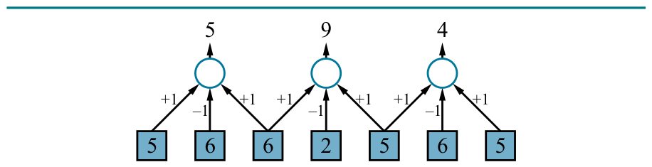
For example, the kernel \([+1,-1,+1]\) computes \(a-b+c\) over each window \((a,b,c)\), firing strongly on a dark center pixel \(b\) flanked by bright neighbors. Applying it to \(x=(5,6,6,2,5,6,5)\) with stride 2 and no padding places windows at centers 2, 4, and 6:例如，核 \([+1,-1,+1]\) 在三元组窗口 \((a,b,c)\) 上计算 \(a-b+c\)，专门用来检测夹在亮邻域中间的暗像素 \(b\)。将其作用于 \(x=(5,6,6,2,5,6,5)\)（步幅 2、无填充），窗口中心依次停在下标 2、4、6：
- Center 2 (\(5,6,6\)): \(5-6+6=5\).中心 2（\(5,6,6\)）：\(5-6+6=5\)。
- Center 4 (\(6,2,5\)): \(6-2+5=9\).中心 4（\(6,2,5\)）：\(6-2+5=9\)。
- Center 6 (\(5,6,5\)): \(5-6+5=4\).中心 6（\(5,6,5\)）：\(5-6+5=4\)。
The resulting output is \(z=(5,9,4)\), with the peak response 9 centered directly on the dark pixel 2. In 2D, an \(F\times F\) filter slides across both rows and columns, taking a patch dot product plus offset and passing the sum through the activation function while reusing the same nine weights everywhere.输出向量为 \(z=(5,9,4)\)，峰值 9 准确落在暗像素 2 处。二维情形原理完全相同：\(F\times F\) 滤波器在行、列两个方向滑动，每停一处求覆盖小块的加权点积并加偏置再激活，且所有位置共享同一组权重。

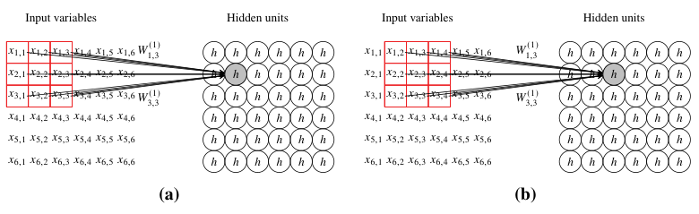
Step 2: the output size第 2 步：输出尺寸公式
Core idea: Place the \(F\)-wide filter at pixel 1 of the padded \((n+2p)\)-wide input and advance by stride \(s\) until it can no longer fit completely inside; the number of valid stops gives the output size.核心思路：将宽为 \(F\) 的滤波器放在长 \(n+2p\) 的填充输入最左端，每次向右跨出步幅 \(s\) 直至不能完整容纳为止，停靠的总次数即为该维的输出尺寸。
- Valid convolution (\(p=0\)): No zeros are added, shrinking the output to \(n_{\text{out}}=\lfloor(n-F)/s\rfloor+1\).Valid（有效）卷积（\(p=0\)）：不补零，输出尺寸略微缩小为 \(\lfloor(n-F)/s\rfloor+1\)。
- Same padding (\(p=(F-1)/2\) for odd \(F\)): Output becomes \(\lceil n/s\rceil\), keeping size \(n\) unchanged when \(s=1\).Same（等大）填充（奇数核取 \(p=(F-1)/2\)）：输出为 \(\lceil n/s\rceil\)，在 \(s=1\) 时恰好保持输入尺寸 \(n\) 不变。
Examples: \(n=7, F=3, p=1, s=2\) yields \(\lfloor(7+2-3)/2\rfloor+1=4\); \(n=9, F=3, p=0, s=2\) yields \(\lfloor 6/2\rfloor+1=4\); and a \(3\times3\) filter with \(s=2\) and same padding maps a \(6\times6\) image to \(3\times3\) using just 10 parameters.举例：\(n=7, F=3, p=1, s=2\) 得 \(\lfloor(7+2-3)/2\rfloor+1=4\)；\(n=9, F=3, p=0, s=2\) 得 \(\lfloor 6/2\rfloor+1=4\)；在 \(6\times6\) 图像上用 \(3\times3\) 核配步幅 2 与 same 填充得到 \(3\times3\) 输出，参数仍只有 10 个。

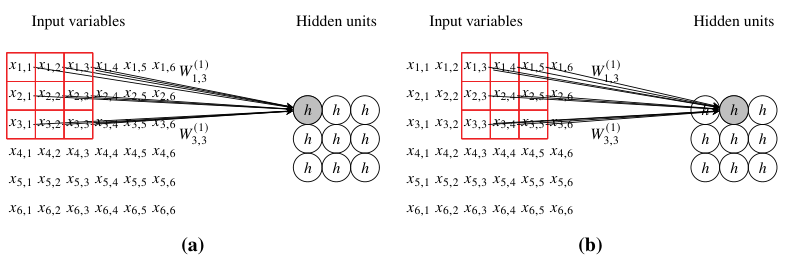
Algebraically, convolution is still a linear map \(\mathbf z=K\mathbf x\) where each row of matrix \(K\) contains the shared kernel entries shifted by the stride and padded with zeros elsewhere, so backpropagation and gradient descent train convolutional layers identically to dense layers.从线性代数视角看，卷积依然可以写成矩阵乘法 \(\mathbf z=K\mathbf x\)：矩阵 \(K\) 的每一行都是同一组卷积核权重按步幅平移后填入、其余位置补零构成的稀疏行向量，因此卷积层完全可以直接纳入反向传播与梯度下降框架训练。
Practice练习
Q1. (Calculation) A \(32\times32\) input is convolved with a \(5\times5\) filter. Compute the output size for (a) \(p=0, s=1\); (b) \(p=2, s=1\); (c) \(p=0, s=2\); (d) \(p=2, s=2\).Q1.（计算）将 \(5\times5\) 滤波器应用于 \(32\times32\) 输入，分别求以下设置的输出尺寸：(a) \(p=0, s=1\)；(b) \(p=2, s=1\)；(c) \(p=0, s=2\)；(d) \(p=2, s=2\)。
Answer
- (a) \(p=0, s=1\): \(\lfloor(32-5)/1\rfloor+1=28\) \(\Rightarrow 28\times28\).(a) \(p=0, s=1\)：\(\lfloor(32-5)/1\rfloor+1=28\)，输出 \(28\times28\)。
- (b) \(p=2, s=1\): \(\lfloor(32+4-5)/1\rfloor+1=32\) \(\Rightarrow 32\times32\) ("same" padding).(b) \(p=2, s=1\)：\(\lfloor(32+4-5)/1\rfloor+1=32\)，输出 \(32\times32\)（即 same 填充）。
- (c) \(p=0, s=2\): \(\lfloor(32-5)/2\rfloor+1=13+1=14\) \(\Rightarrow 14\times14\).(c) \(p=0, s=2\)：\(\lfloor(32-5)/2\rfloor+1=13+1=14\)，输出 \(14\times14\)。
- (d) \(p=2, s=2\): \(\lfloor(32+4-5)/2\rfloor+1=15+1=16=\lceil32/2\rceil\) \(\Rightarrow 16\times16\). All four cases share the exact same parameter count.(d) \(p=2, s=2\)：\(\lfloor(32+4-5)/2\rfloor+1=15+1=16=\lceil32/2\rceil\)，输出 \(16\times16\)；四种情形的参数个数完全相同。
易错：先算括号里的整数，再向下取整，最后加 1。
Q2. (Trace) Given a \(4\times4\) input with rows \((1,2,0,1)\), \((0,1,3,1)\), \((2,1,0,2)\), \((1,0,1,3)\) and a \(2\times2\) filter \(W\) with rows \((1,0)\) and \((0,-1)\) (no padding, no offset, identity activation), compute the output for (a) \(s=1\) and (b) \(s=2\).Q2.（手工演算）已知 \(4\times4\) 输入各行为 \((1,2,0,1)\)、\((0,1,3,1)\)、\((2,1,0,2)\)、\((1,0,1,3)\)，\(2\times2\) 滤波器 \(W\) 两行为 \((1,0)\) 与 \((0,-1)\)（无填充、无偏置、恒等激活），求 (a) \(s=1\) 与 (b) \(s=2\) 时的输出矩阵。
Answer
At each window top-left corner \((i,j)\), the filter computes \(q_{ij}=X_{i,j}-X_{i+1,j+1}\):窗口左上角停在 \((i,j)\) 时，滤波器计算 \(q_{ij}=X_{i,j}-X_{i+1,j+1}\)：
- (a) Stride \(s=1\): Size is \(\lfloor(4-2)/1\rfloor+1=3\), giving \(3\times3\) output rows \((0,-1,-1)\), \((-1,1,1)\), and \((2,0,-3)\).(a) 步幅 \(s=1\)：输出尺寸为 \(\lfloor(4-2)/1\rfloor+1=3\)，三行分别为 \((0,-1,-1)\)、\((-1,1,1)\)、\((2,0,-3)\)。
- (b) Stride \(s=2\): Size is \(\lfloor(4-2)/2\rfloor+1=2\); visiting rows and columns 1 and 3 selects those exact entries from (a), yielding rows \((0,-1)\) and \((2,-3)\).(b) 步幅 \(s=2\)：输出尺寸为 \(\lfloor(4-2)/2\rfloor+1=2\)；仅访问第 1、3 行列，恰好对应从 (a) 中抽取相应位置，得两行 \((0,-1)\) 与 \((2,-3)\)。
Q3. (Explain) Write the matrix form of a 1D convolution with \(n=5\), \(F=3\), \(s=1\), and no padding. Explain why gradient descent still trains this layer normally and how parameter sharing appears in the matrix.Q3.（解释）写出 \(n=5\)、\(F=3\)、\(s=1\) 且无填充的一维卷积矩阵形式，说明为何梯度下降仍可照常训练该层，并指出参数共享在矩阵中的体现。
Answer
There are \(\lfloor(5-3)/1\rfloor+1=3\) outputs, written as \(\mathbf z=K\mathbf x\) where:共有 \(\lfloor(5-3)/1\rfloor+1=3\) 个输出，可写作线性映射 \(\mathbf z=K\mathbf x\)，其中：
\[K=\begin{pmatrix}k_1&k_2&k_3&0&0\\0&k_1&k_2&k_3&0\\0&0&k_1&k_2&k_3\end{pmatrix}.\]
Because \(\mathbf z\) is linear in both \(\mathbf x\) and the kernel weights \((k_1,k_2,k_3)\), gradients propagate backward cleanly just as in any linear layer. Parameter sharing is directly visible in \(K\): instead of 15 independent weights, only the 3 shared values \((k_1,k_2,k_3)\) appear, shifted by the stride across rows.因 \(\mathbf z\) 关于 \(\mathbf x\) 和核权重均为线性函数，梯度能像在普通线性层中一样顺畅回传。矩阵 \(K\) 直观展现了参数共享：本应有 15 个独立权重，实际仅由 \(k_1,k_2,k_3\) 三个自由参数在各行按步幅平移复用。
Channels, feature maps and parameter counts ★★★通道、特征图与参数个数
Goal. Determine the 3D/4D output tensor shape of a multichannel convolutional layer and count the parameters in both convolutional and dense layers.目标。写出多通道卷积层的三维/四维输出张量形状，并熟练计算卷积层与全连接层的参数总数。
Because a single filter detects only one visual pattern (say, horizontal edges), real convolutional layers apply \(C_{\text{out}}\) distinct filters in parallel. Each filter outputs its own 2D activation grid—called a channel or feature map（特征图）—so stacking them produces an output tensor of shape \(\text{rows}\times\text{columns}\times C_{\text{out}}\).单个滤波器只能捕捉一种局部模式（例如水平边缘），因此卷积层会并行布置 \(C_{\text{out}}\) 个不同的滤波器。每个滤波器生成一张二维响应网格，称为一个通道或特征图，叠放在一起便得到形状为 \(\text{行}\times\text{列}\times C_{\text{out}}\) 的输出张量。
Core idea: Each 3D filter spans the entire input channel depth \(C_{\text{in}}\) while sliding only across height and width to produce one output feature map, so \(C_{\text{out}}\) filters yield \(C_{\text{out}}\) output channels.核心思路：每个三维滤波器在通道方向上一次穿透全部 \(C_{\text{in}}\) 个输入通道，仅在行、列平面内滑动并汇总成一张输出特征图；布置 \(C_{\text{out}}\) 个滤波器便得到 \(C_{\text{out}}\) 个输出通道。
Notice why there is no convolution sliding along the channel axis: unlike neighboring pixels, different channels (such as red vs. blue, or edge vs. texture maps) have no spatial ordering. Consequently, each filter is a \(F\times F\times C_{\text{in}}\) volume summing all \(F^2 C_{\text{in}}\) weighted values into one scalar per position, and the complete layer weight tensor has shape \(F\times F\times C_{\text{in}}\times C_{\text{out}}\).值得注意的是，滤波器绝不沿通道轴滑动——像素之间有上下左右的邻域关系，而不同通道（如红/绿/蓝或不同边缘图）之间没有空间拓扑顺序。因此每个滤波器都是大小为 \(F\times F\times C_{\text{in}}\) 的三维块，把覆盖的 \(F^2 C_{\text{in}}\) 个值一次性加权求和为单个数字，整层权重张量形状即为 \(F\times F\times C_{\text{in}}\times C_{\text{out}}\)。
For comparison, 8 filters of \(3\times3\) on an RGB image need \((3\cdot3\cdot3+1)\cdot8=224\) parameters, whereas a dense layer from \(8\times8\times3\) (192 inputs) to 100 units needs \((192+1)\cdot100=19{,}300\) parameters; pooling and flatten layers carry 0.对比数字一目了然：8 个 \(3\times3\) 滤波器作用于 RGB 图像仅需 \(224\) 个参数，而 \(8\times8\times3\)（192 维）连向 100 单元的全连接层需 \(19{,}300\) 个参数；池化与展平层参数均为 0。
During training, stacking a minibatch of \(B\) images forms a 4D tensor of shape \(\text{rows}\times\text{columns}\times\text{channels}\times B\) for minibatch SGD (Section 9.4).训练时将 \(B\) 张图像打包成四维张量 \(\text{行}\times\text{列}\times\text{通道}\times B\) 送入小批量 SGD（见第 9.4 节）。
Practice练习
Q1. (Calculation) A convolutional layer takes a \(32\times32\times3\) input and applies 10 filters of size \(5\times5\) with \(s=1\) and \(p=0\). Find (a) the output shape, (b) the parameter count, and (c) the number of multiplications per image (ignoring offsets).Q1.（计算）某卷积层接收 \(32\times32\times3\) 输入，使用 10 个 \(5\times5\) 滤波器，\(s=1, p=0\)。计算 (a) 输出形状、(b) 参数个数及 (c) 单张图像的乘法次数（忽略偏置）。
Answer
- (a) Output shape: \(\lfloor(32-5)/1\rfloor+1=28\), yielding \(28\times28\times10\).(a) 输出形状：\(\lfloor(32-5)/1\rfloor+1=28\)，故为 \(28\times28\times10\)。
- (b) Parameter count: Each filter is \(5\times5\times3\), giving \((5\cdot5\cdot3+1)\cdot10=760\) parameters.(b) 参数个数：每个滤波器为 \(5\times5\times3\)，总参数量 \((5\cdot5\cdot3+1)\cdot10=760\)。
- (c) Multiplications: Each of the \(28\cdot28\cdot10=7840\) output units performs \(5\cdot5\cdot3=75\) multiplications, totaling \(588{,}000\).(c) 乘法次数：共 \(28\cdot28\cdot10=7840\) 个输出单元，每个单元做 \(5\cdot5\cdot3=75\) 次乘法，总计 \(588{,}000\) 次。
思路：参数数与图像大小无关；计算量 = 输出单元数 × 每个单元的乘法数。
Q2. (Tensors) A minibatch of 8 grayscale \(28\times28\) images passes through (i) 16 filters of \(3\times3\) and then (ii) 32 filters of \(3\times3\), both with \(s=1\) and same padding. Give the activation tensor shapes, weight-tensor shapes, and parameter counts for both layers.Q2.（张量形状）由 8 张 \(28\times28\) 灰度图构成的小批量依次经过 (i) 16 个 \(3\times3\) 滤波器与 (ii) 32 个 \(3\times3\) 滤波器（均取 \(s=1\) 且使用保持尺寸的零填充）。给出两层的激活张量形状、权重张量形状与参数量。
Answer
- Input tensor: Shape \(28\times28\times1\times8\).输入张量：形状为 \(28\times28\times1\times8\)。
- Layer (i): Weight tensor \(W^{(1)}\) is \(3\times3\times1\times16\), output tensor is \(28\times28\times16\times8\), and parameters equal \((9+1)\cdot16=160\).第 (i) 层：权重张量 \(W^{(1)}\) 为 \(3\times3\times1\times16\)，输出张量为 \(28\times28\times16\times8\)，参数量 \((9+1)\cdot16=160\)。
- Layer (ii): Weight tensor \(W^{(2)}\) is \(3\times3\times16\times32\) (each filter spans all 16 incoming channels), output tensor is \(28\times28\times32\times8\), and parameters equal \((9\cdot16+1)\cdot32=4640\).第 (ii) 层：权重张量 \(W^{(2)}\) 为 \(3\times3\times16\times32\)（每个核跨越全部 16 个输入通道），输出张量为 \(28\times28\times32\times8\)，参数量 \((9\cdot16+1)\cdot32=4640\)。
Pooling and layer-size reduction ★★★池化与层尺寸缩减
Goal. Compute max and average pooling on a small grid, find the output shape of any pooling layer, and explain how pooling differs from strided convolution.目标。手工演算小型网格上的最大池化与平均池化，算出池化层输出形状，并对比池化与步幅卷积的异同。
Core idea: Pooling summarizes each \(F\times F\) window into a single fixed statistic (maximum or mean) independently per channel, shrinking spatial resolution without adding any trainable parameters.核心思路：池化在每个通道内独立地把 \(F\times F\) 小窗口归约为单个固定统计量（最大值或平均值），在不增加任何可训练参数的前提下压缩空间分辨率。
Like convolution, a pooling layer（池化层）slides a window of size \(F\) with stride \(s\) across rows and columns, following the exact same output-size formula (typically with \(p=0\); when \(F=s\), windows partition the grid without overlapping). Because pooling applies a fixed rule rather than learned weights, it has 0 trainable parameters, uses no activation function, and keeps the channel count unchanged.池化层与卷积同样以窗口大小 \(F\) 和步幅 \(s\) 在空间平面滑动，输出尺寸遵循完全相同的公式（通常不补零即 \(p=0\)；当 \(F=s\) 时各窗口互不重叠）。由于池化执行的是固定规则而非可学权重，它有 0 个参数、一般不加激活函数，且通道数保持不变。
- Max pooling（最大池化）outputs the largest value inside each window, acting like a detector that asks whether a feature appears somewhere in that neighborhood.最大池化取窗口内的最大值，相当于询问“该特征是否出现在这片邻域中的某处”。
- Average pooling（平均池化）outputs the arithmetic mean of the window; with \(F=s\), it smoothly downsamples（下采样）the feature map by factor \(s\) so subsequent layers require far fewer parameters.平均池化计算窗口内元素的均值；当 \(F=s\) 时，它按因子 \(s\) 平滑地对特征图下采样，大幅减轻后续各层的计算与参数负担。

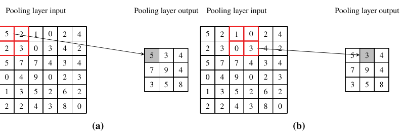
When \(F\ne s\) (overlapping pooling), apply the exact same formula: a \(9\times9\) map with \(F=3, s=2\) produces \(\lfloor(9-3)/2\rfloor+1=4\) with 1-pixel overlap between adjacent windows. Beyond shrinking feature maps, max pooling provides approximate invariance to small shifts because a peak shifted by one pixel often remains inside the same window—though larger shifts or edge crossings can still alter the output.当 \(F\ne s\)（重叠池化）时同样直接套用尺寸公式：例如 \(9\times9\) 特征图取 \(F=3, s=2\) 得 \(\lfloor(9-3)/2\rfloor+1=4\)，相邻窗口重叠 1 个像素。除了压缩尺寸，最大池化还提供对微弱平移的近似不变性——因为峰值移动 1 像素通常仍落在原窗口内，但大幅平移或跨窗边界时输出仍会改变。
Alternatively, replacing a stride-1 convolution followed by stride-2 pooling with a single stride-2 convolution evaluates the filter at only one quarter of the positions, cutting computation by \(4\times\) while preserving both the output dimensions and the parameter count.若把“步幅 1 的卷积 + 步幅 2 的池化”直接替换为单个步幅 2 的卷积，滤波器只需在四分之一的位置上运算，在输出尺寸与参数量完全相同的前提下将计算量缩减为原来的四分之一。
Practice练习
Q1. (Calculation) A \(24\times24\times6\) feature map is pooled without padding. Find the output shape and parameter count for (a) \(F=2, s=2\) and (b) \(F=3, s=2\).Q1.（计算）对形状为 \(24\times24\times6\) 的特征图做无填充池化，分别求 (a) \(F=2, s=2\) 与 (b) \(F=3, s=2\) 时的输出形状及参数量。
Answer
- (a) \(F=2, s=2\): \(\lfloor(24-2)/2\rfloor+1=12\), giving shape \(12\times12\times6\) and 0 parameters.(a) \(F=2, s=2\)：\(\lfloor(24-2)/2\rfloor+1=12\)，输出形状 \(12\times12\times6\)，参数量 0。
- (b) \(F=3, s=2\): \(\lfloor(24-3)/2\rfloor+1=\lfloor10.5\rfloor+1=11\), giving shape \(11\times11\times6\) and 0 parameters (windows overlap, and row 24 / column 24 are dropped). Channels remain 6 in both cases.(b) \(F=3, s=2\)：\(\lfloor(24-3)/2\rfloor+1=\lfloor10.5\rfloor+1=11\)，输出形状 \(11\times11\times6\)，参数量 0（窗口重叠，且第 24 行与第 24 列未被覆盖）；两种情形通道数均保持 6 不变。
Q2. (Compare) Contrast max pooling and average pooling.Q2.（比较）比较最大池化与平均池化的异同。
Answer
- Shared traits: Both slide a fixed \(F\times F\) window at stride \(s\) independently across each channel and introduce 0 trainable parameters.共同点：均按步幅 \(s\) 滑动固定 \(F\times F\) 窗口、按通道独立运算且不含可训练参数。
- Max pooling: Outputs the window maximum, acting like a logical OR ("feature present somewhere here") that grants approximate invariance to small local shifts.最大池化：取窗口最大值，相当于逻辑“或”（“特征在此处出现过”），对微弱平移具有近似不变性。
- Average pooling: Outputs the window mean (a uniform fixed convolution); with \(F=s\), it coarsens spatial resolution by factor \(s\) to support multiscale recognition and shrink downstream dense weights.平均池化：取窗口均值（等价于固定均匀核卷积）；当 \(F=s\) 时按因子 \(s\) 降低空间分辨率，支持多尺度识别并减少后层参数。
Receptive field ★★感受野
Goal. Calculate the receptive field of a unit across stacked convolutional and pooling layers, both with and without downsampling strides.目标。计算单元经过多层卷积与池化（含无步幅与带步幅情形）后对应的输入感受野大小。

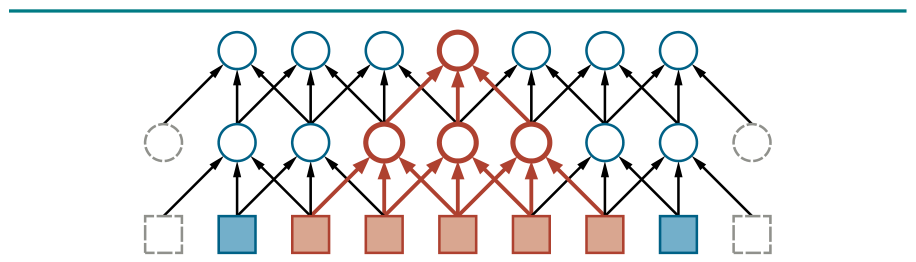
Core idea: Each layer widens the receptive field by \((F_m-1)\) steps measured in the spacing of the layer immediately below it, while every stride greater than 1 scales that spacing multiplicatively for all higher layers.核心思路：每一层都在前一层输出间距的基础上额外拓宽 \((F_m-1)\) 个间距，而任何大于 1 的步幅都会把此后所有层的有效步距成倍放大。
When every layer has stride 1, neighboring units remain 1 input pixel apart, so the receptive field grows linearly with depth as \((F-1)m+1\) per dimension (for \(F=3\): \(3, 5, 7, \dots\)). Once any strided convolution or pooling layer enters the stack, each step in deeper feature maps spans multiple input pixels—causing the receptive field to grow exponentially with depth.若所有层步幅均为 1，相邻单元在原图上的间距始终是 1 像素，感受野随深度线性增加，每维为 \((F-1)m+1\)（如 \(F=3\) 时依次为 \(3, 5, 7, \dots\)）。一旦中途出现步幅大于 1 的卷积或池化，后续层每跨一格就对应原图多个像素，感受野便转为随深度指数级增长。
To trace receptive fields cleanly by hand:手工计算各层感受野按四步走：
- Initialize \(r_0=1\) and \(j_0=1\).先写下初始值 \(r_0=1\) 与 \(j_0=1\)。
- For layer \(m\), update \(r_m = r_{m-1} + (F_m - 1)j_{m-1}\) using the previous jump \(j_{m-1}\).计算第 \(m\) 层时，先用上一层跳距 \(j_{m-1}\) 更新感受野：\(r_m = r_{m-1} + (F_m - 1)j_{m-1}\)。
- Then update the jump for subsequent layers: \(j_m = j_{m-1} s_m\).随后再乘以本层步幅更新跳距供下一层使用：\(j_m = j_{m-1} s_m\)。
- Record each layer in a tidy table.将每层结果按表格逐行列出，避免跳步算漏。
This also explains why modern CNNs stack small \(3\times3\) filters instead of one large filter: two \(3\times3\) layers achieve the same \(5\times5\) receptive field as a single \(5\times5\) layer, while using only \(2\cdot9C^2=18C^2\) weights instead of \(25C^2\) (for \(C\) channels) and inserting an extra nonlinearity.这也解释了为何现代 CNN 偏好堆叠小卷积核而非单层大卷积核：在输入输出同为 \(C\) 通道时，两个 \(3\times3\) 层同样获得 \(5\times5\) 的感受野，权重却从 \(25C^2\) 降至 \(2\cdot9C^2=18C^2\)，同时还多了一次非线性激活。
Practice练习
Q1. (Calculation) A CNN stacks convolutional layers with \(F=3\) and \(s=1\). (a) What is the receptive field of a unit in layer 3? (b) How many layers are required to reach a receptive field of at least 15 pixels?Q1.（计算）某 CNN 连续堆叠 \(F=3, s=1\) 的卷积层。(a) 第 3 层单元的感受野是多少？(b) 至少需要几层才能使感受野达到至少 15 像素？
Answer
- (a) Layer 3: Using \(r_m=(F-1)m+1=2m+1\), \(r_3=2(3)+1=7\) pixels per dimension (covering a \(7\times7=49\)-pixel patch).(a) 第 3 层：代入 \(r_m=2m+1\) 得每维 \(r_3=7\) 像素（对应 \(7\times7=49\) 个输入像素）。
- (b) Minimum depth: Solving \(2m+1\ge15\) gives \(m\ge7\) layers.(b) 最少层数：解 \(2m+1\ge15\) 得至少需 \(m=7\) 层。
Q2. (Calculation with pooling) A network consists of conv \(3\times3\) (\(s=1\)) → max-pool \(2\times2\) (\(s=2\)) → conv \(3\times3\) (\(s=1\)) → max-pool \(2\times2\) (\(s=2\)) → conv \(3\times3\) (\(s=1\)). Compute the receptive field after each layer.Q2.（含池化演算）某网络依次为：卷积 \(3\times3\)（\(s=1\)）→ 最大池化 \(2\times2\)（\(s=2\)）→ 卷积 \(3\times3\)（\(s=1\)）→ 最大池化 \(2\times2\)（\(s=2\)）→ 卷积 \(3\times3\)（\(s=1\)）。求每一层结束时的感受野。
Answer
- Layer 1 (conv \(3\times3, s=1\)): \(r_1=1+(3-1)\cdot1=3\), \(j_1=1\cdot1=1\).第 1 层（卷积 \(3\times3, s=1\)）：\(r_1=1+2\cdot1=3\)，\(j_1=1\)。
- Layer 2 (pool \(2\times2, s=2\)): \(r_2=3+(2-1)\cdot1=4\), \(j_2=1\cdot2=2\).第 2 层（池化 \(2\times2, s=2\)）：\(r_2=3+1\cdot1=4\)，\(j_2=2\)。
- Layer 3 (conv \(3\times3, s=1\)): \(r_3=4+(3-1)\cdot2=8\), \(j_3=2\cdot1=2\).第 3 层（卷积 \(3\times3, s=1\)）：\(r_3=4+2\cdot2=8\)，\(j_3=2\)。
- Layer 4 (pool \(2\times2, s=2\)): \(r_4=8+(2-1)\cdot2=10\), \(j_4=2\cdot2=4\).第 4 层（池化 \(2\times2, s=2\)）：\(r_4=8+1\cdot2=10\)，\(j_4=4\)。
- Layer 5 (conv \(3\times3, s=1\)): \(r_5=10+(3-1)\cdot4=18\). Receptive fields are \(3, 4, 8, 10, 18\).第 5 层（卷积 \(3\times3, s=1\)）：\(r_5=10+2\cdot4=18\)。各层感受野依次为 \(3, 4, 8, 10, 18\)。
易错：有步幅或池化之后不能再用 (F−1)m+1，要逐层用间距 j 递推。
Full CNN architectures ★★完整的 CNN 结构
Goal. Trace tensor shapes, hidden-unit counts, and parameter counts layer by layer through an entire CNN, and identify where most parameters reside.目标。逐层填写完整 CNN 的张量形状、隐藏单元数与参数量表，并说明参数主要集中于何处。
Core idea: A standard classification CNN progressively shrinks spatial height and width while expanding channel depth, then flattens the final feature maps into dense layers ending in softmax logits.核心思路：典型分类 CNN 从输入到深层逐步压缩空间高宽并增加通道深度，最后将三维特征图展平送入全连接层，末端以 Softmax 输出类别概率。
Early convolutional layers detect simple local edges and textures at high spatial resolution, whereas deeper layers compose those cues into richer semantic concepts—requiring more channels (\(C_{\text{out}}\)) at coarser spatial grids cut down by strides or pooling. Once the spatial dimensions are small, the tensor is flattened（展平）into a single vector and passed through dense layers to produce \(M\) class logits for softmax (Section 9.2).浅层卷积在高空间分辨率上捕捉边缘、纹理等简单局部特征；深层把这些线索组合成高级语义概念，不再需要高空间分辨率，却需要更多通道（\(C_{\text{out}}\)）来承载丰富特征，同时靠步幅或池化缩减尺寸。随后将三维张量展平为一维长向量，送入全连接层输出 \(M\) 个 logits 并接 Softmax 分类（见第 9.2 节）。

In the diagram above, a \(6\times6\times1\) input passes through four \(3\times3\) filters (\(s=1\), same padding) to produce \(6\times6\times4\), and then six \(3\times3\times4\) filters (\(s=2\)) to yield \(3\times3\times6\). Flattening those \(3\cdot3\cdot6=54\) units feeds a hidden dense layer followed by \(M\) logits and softmax.图中 \(6\times6\times1\) 输入先经 4 个 \(3\times3\) 滤波器（\(s=1\)，same 填充）得到 \(6\times6\times4\)，再经 6 个 \(3\times3\times4\) 滤波器（\(s=2\)）缩为 \(3\times3\times6\)；随后将这 \(3\cdot3\cdot6=54\) 个单元展平接入全连接隐藏层，最终输出 \(M\) 个 logits 与 Softmax。
Every layer type follows one deterministic rule per spatial dimension:每种层类型都对应一套固定的形状与参数核算规则：
| Layer层类型 | Output size输出尺寸 | Parameters参数量 |
|---|---|---|
| Convolution卷积层 | \(\lfloor(n+2p-F)/s\rfloor+1\), with \(C_{\text{out}}\) channels\(\lfloor(n+2p-F)/s\rfloor+1\)，通道数为 \(C_{\text{out}}\) | \((F^2C_{\text{in}}+1)\,C_{\text{out}}\) |
| Pooling池化层 | \(\lfloor(n-F)/s\rfloor+1\), channels unchanged\(\lfloor(n-F)/s\rfloor+1\)，通道数不变 | 0 |
| Flatten展平层 | \(\text{rows}\times\text{columns}\times\text{channels}\) values\(\text{行}\times\text{列}\times\text{通道}\) 个标量 | 0 |
| Dense全连接层 | \(n_{\text{out}}\) units\(n_{\text{out}}\) 个单元 | \((n_{\text{in}}+1)\,n_{\text{out}}\) |
| Softmax | Unchanged形状不变 | 0 |
To audit any CNN architecture by hand:考场填表核算按四步走：
- Compute each layer's output tensor shape from top to bottom.自顶向下逐层计算输出张量形状。
- Multiply \(\text{rows}\times\text{columns}\times\text{channels}\) to get the unit count at each layer.用 \(\text{行}\times\text{列}\times\text{通道}\) 算出每层隐藏单元总数。
- Apply the parameter rule from the table above (0 for pooling, flatten, and softmax).按上表公式逐层算参数（池化、展平、Softmax 均记为 0）。
- Sum all layers and check which layer dominates the total.加总全网参数并找出参数最集中的层。
| Layer网络层 | 1 conv1 卷积 | 2 conv2 卷积 | 3 conv3 卷积 | 4 dense4 全连接 | 5 dense5 全连接 |
|---|---|---|---|---|---|
| Filters or units核数/单元数 | 4 × (5×5) | 8 × (5×5) | 12 × (4×4) | 200 | 10 |
| Stride步幅 | 1 | 2 | 2 | – | – |
| Output shape输出形状 | 28×28×4 | 14×14×8 | 7×7×12 | 200 | 10 |
| Hidden units隐藏单元数 | 3136 | 1568 | 588 | 200 | 10 |
| Parameters参数量 | (5·5·1+1)·4 = 104 | (5·5·4+1)·8 = 808 | (4·4·8+1)·12 = 1548 | (588+1)·200 = 117,800 | (200+1)·10 = 2010 |
Summing across all five layers yields \(104+808+1548+117{,}800+2010=122{,}270\) parameters, of which the first dense layer alone holds \(117{,}800/122{,}270\approx96\%\)—because dense layers abandon weight sharing and assign a separate weight to every flattened coordinate.五层总参数量为 \(104+808+1548+117{,}800+2010=122{,}270\)，其中仅第一个全连接层就独占 \(117{,}800/122{,}270\approx96\%\)——原因在于全连接层没有参数共享，每个展平后的输入坐标都必须配一条独立权重。
Practice练习
Q1. (Calculation) A CNN processes \(32\times32\times3\) images through: conv (6 filters \(5\times5, s=1, p=0\)) → max-pool \(2\times2\) (\(s=2\)) → conv (16 filters \(5\times5, s=1, p=0\)) → max-pool \(2\times2\) (\(s=2\)) → flatten → dense 120 → dense 84 → dense 10 (softmax). Find every layer's output shape, per-layer and total parameters, and where most parameters reside.Q1.（计算）某 CNN 处理 \(32\times32\times3\) 图像，结构为：卷积（6 个 \(5\times5, s=1, p=0\)）→ 最大池化 \(2\times2\)（\(s=2\)）→ 卷积（16 个 \(5\times5, s=1, p=0\)）→ 最大池化 \(2\times2\)（\(s=2\)）→ 展平 → 全连接 120 → 全连接 84 → 全连接 10（Softmax）。求各层输出形状、每层与总参数量，并指出参数集中在何处。
Answer
- Output shapes: Conv1 \(28\times28\times6\) → Pool1 \(14\times14\times6\) → Conv2 \(10\times10\times16\) → Pool2 \(5\times5\times16\) → Flatten \(400\) → Dense1 \(120\) → Dense2 \(84\) → Output \(10\).各层输出形状：Conv1 \(28\times28\times6\) → Pool1 \(14\times14\times6\) → Conv2 \(10\times10\times16\) → Pool2 \(5\times5\times16\) → 展平 \(400\) → 全连接1 \(120\) → 全连接2 \(84\) → 输出 \(10\)。
- Parameter breakdown: Conv1 \((5\cdot5\cdot3+1)\cdot6=456\); Pool1 \(0\); Conv2 \((5\cdot5\cdot6+1)\cdot16=2416\); Pool2 & Flatten \(0\); Dense1 \((400+1)\cdot120=48{,}120\); Dense2 \((120+1)\cdot84=10{,}164\); Dense3 \((84+1)\cdot10=850\).逐层参数量：Conv1 为 \(456\)；Pool1 为 \(0\)；Conv2 为 \((5\cdot5\cdot6+1)\cdot16=2416\)；Pool2 与展平为 \(0\)；全连接1 为 \(48{,}120\)；全连接2 为 \(10{,}164\)；全连接3 为 \(850\)。
- Total & dominance: Total \(62{,}006\) parameters; the dense layers hold \(59{,}134\) (95%), with Dense1 alone accounting for 78%.总计与分布：总参数量 \(62{,}006\)；全连接层合计占 \(59{,}134\)（95%），其中仅第一个全连接层就占 78%。
思路：逐层用输出尺寸公式，再数参数；池化和展平为 0。
Q2. (Calculation) For the figure's network (\(6\times6\times1\) input; four \(3\times3\) filters, \(s=1\); six \(3\times3\times4\) filters, \(s=2\); dense layer with \(U_3=20\) units; \(M=10\) logits), compute the total parameter count.Q2.（计算）针对本节配图所示网络（输入 \(6\times6\times1\)；4 个 \(3\times3\) 滤波器，\(s=1\)；6 个 \(3\times3\times4\) 滤波器，\(s=2\)；含 \(U_3=20\) 单元的全连接层；\(M=10\) 个 logits），计算全网参数总数。
Answer
- Convolutional layers: Conv1 has \((3\cdot3\cdot1+1)\cdot4=40\); Conv2 has \((3\cdot3\cdot4+1)\cdot6=222\), producing \(3\cdot3\cdot6=54\) units.卷积层：Conv1 有 \((3\cdot3\cdot1+1)\cdot4=40\) 个；Conv2 有 \((3\cdot3\cdot4+1)\cdot6=222\) 个，输出 \(3\cdot3\cdot6=54\) 个单元。
- Dense layers & total: Dense1 has \((54+1)\cdot20=1100\), logits layer has \((20+1)\cdot10=210\), and softmax has 0, totaling \(40+222+1100+210=1572\) parameters.全连接层与总计：全连接1 有 \((54+1)\cdot20=1100\) 个，logits 层有 \((20+1)\cdot10=210\) 个，Softmax 为 0；总计 \(40+222+1100+210=1572\) 个参数。
Residual networks ★残差网络
Goal. Write the residual layer update, compute its output on a small vector, and explain why skip connections prevent vanishing gradients in very deep networks.目标。写出残差层方程并手工演算向量输出，解释跳跃连接为何能消除超深层网络中的梯度消失障碍。
Core idea: Instead of forcing every deep layer to re-learn the full representation from scratch, a residual block adds a small learned correction \(f(z)\) onto an identity skip connection \(z\), letting signals and gradients flow unhindered by default.核心思路：残差块不强求深层从头重写整套特征表示，而是通过跳跃连接把输入原样送至输出端，让网络层只需学习一个叠加修正量 \(f(z)\)，使信息与梯度默认即可无损穿透。
In a plain deep network, every layer completely overwrites the representation coming from the previous layer—so if a layer's weights start near zero, both forward activations and backward gradients are blocked (the vanishing gradient problem). A residual network（残差网络）fixes this by wiring a direct shortcut around the layer.在普通深层网络中，每一层都完全重构上一层的特征表示；一旦某层权重接近零，前向信号与反向梯度就会双双受阻（梯度消失）。残差网络通过一条绕过计算分支的直连快捷路径化解了这一瓶颈。
When \(V=0\) and the network uses ReLU activations, \(f(z)=0\) reduces the block to \(\text{ReLU}(z^{(i-1)})=\text{ReLU}(\text{ReLU}(a))=\text{ReLU}(a)=z^{(i-1)}\)—an exact identity map. Consequently, unnecessary layers stay harmless and gradients travel directly backward along the skip paths, making networks with hundreds of layers practical to train.当 \(V=0\) 且采用 ReLU 时，\(f(z)=0\) 使该块化为 \(\text{ReLU}(z^{(i-1)})=\text{ReLU}(\text{ReLU}(a))=z^{(i-1)}\)，即严格的恒等映射。这样一来，多余层不会破坏前层信息，反向传播梯度也可沿着跳跃路径无衰减直传，从而使训练数百层的超深网络成为可能。
Practice练习
Q1. (Calculation) Let \(z^{(i-1)}=(1,2)^\top\), \(W\) have rows \((1,-1)\) and \((2,0)\), \(V\) have rows \((1,0)\) and \((0,-1)\), and \(g=g_r=\text{ReLU}\) with no offsets. Compute \(z^{(i)}\).Q1.（计算）设 \(z^{(i-1)}=(1,2)^\top\)，\(W\) 两行为 \((1,-1)\) 与 \((2,0)\)，\(V\) 两行为 \((1,0)\) 与 \((0,-1)\)，\(g=g_r=\text{ReLU}\) 且无偏置，计算残差块输出 \(z^{(i)}\)。
Answer
- First layer & ReLU: \(Wz=(1\cdot1-1\cdot2,\;2\cdot1+0\cdot2)^{\top}=(-1,2)^{\top}\), so \(g(Wz)=(0,2)^{\top}\).第一层与激活：\(Wz=(-1,2)^{\top}\)，经 ReLU 得 \(g(Wz)=(0,2)^{\top}\)。
- Residual & skip addition: \(f(z)=V(0,2)^\top=(0,-2)^\top\), and \(z+f(z)=(1,2)^\top+(0,-2)^\top=(1,0)^\top\).残差分支与跳跃相加：\(f(z)=V(0,2)^\top=(0,-2)^\top\)，相加得 \(z+f(z)=(1,0)^\top\)。
- Final activation: \(z^{(i)}=\text{ReLU}(1,0)^{\top}=(1,0)^{\top}\).输出激活：\(z^{(i)}=\text{ReLU}(1,0)^{\top}=(1,0)^{\top}\)。
Terms to recognize ★需要认识的术语
| Term术语 | What to know核心要点 |
|---|---|
| Cross-correlation互相关 | What CNNs technically compute under the name "convolution": sliding dot product without flipping the kernelCNN 中“卷积”在数学上的准确名称：滑动时不将卷积核上下左右翻转 |
| Shift equivariance平移等变性 | Shifting an input pattern shifts its feature-map response identically; pooling then yields approximate shift invariance输入模式平移时特征图响应同步平移同等距离；随后经池化可进一步获得近似平移不变性 |
| Flatten展平 | Reshapes the final 3D feature map into a 1D vector for dense layers, introducing 0 trainable parameters将末层三维特征图拉直为一维向量以接入全连接层，参数量为 0 |
| \(1\times1\) convolution\(1\times1\) 卷积 | Applies a shared dense linear projection across channels at every pixel, cheaply changing channel depth在每个像素位置独立对各通道做线性组合，能以极小开销调节通道数量 |
| Bottleneck block瓶颈块 | Sandwiches \(3\times3\) filters between channel-shrinking and channel-expanding \(1\times1\) convolutions to slash compute先用 \(1\times1\) 卷积降维再做 \(3\times3\) 卷积、最后用 \(1\times1\) 恢复通道数，大幅压缩计算量 |
| Skip connection跳跃连接 | Shortcuts a layer's input directly to its output sum; requires matching tensor shapes把层的输入直接旁路相加到其输出端，要求两者张量形状一致 |
| Valid and same paddingValid 与 Same 填充 | Valid (\(p=0\)) shrinks spatial maps; same (\(p=(F-1)/2\)) preserves input size when stride \(s=1\)Valid（\(p=0\)）不补零使特征图缩小；Same（\(p=(F-1)/2\)）在 \(s=1\) 时保持尺寸不变 |
| Downsampling下采样 | Reduces spatial resolution by factor \(s\), via strided convolution or pooling with \(F=s\)通过步幅卷积或 \(F=s\) 池化按因子 \(s\) 缩小空间分辨率 |
| Multiscale recognition多尺度识别 | Running a fixed-size detector across downsampled resolutions lets it detect both small and large objects在逐级下采样的图像金字塔上复用同一检测器，使其既能找小目标也能找大目标 |
| Convolution on other data非图像网格卷积 | Convolution generalizes to any regular grid: 1D audio waveforms, 2D images, and 3D CT/MRI scans or video卷积适用于任何规则网格数据，如一维音频波形、二维图像以及三维医学体数据或视频 |
Exam-style questions考试题型练习
Q1. (Calculation: shapes, parameters, receptive field — 12 marks) A network classifies \(64\times64\) RGB images into 10 classes: Conv1 (16 filters \(3\times3, s=1, p=1\), ReLU) → MaxPool (\(2\times2, s=2\)) → Conv2 (32 filters \(3\times3, s=1, p=1\), ReLU) → MaxPool (\(2\times2, s=2\)) → Flatten → Dense (100, ReLU) → Dense (10, softmax).Q1.（综合计算：形状、参数量与感受野，12 分）某网络对 \(64\times64\) RGB 图像做 10 分类：Conv1（16 个 \(3\times3, s=1, p=1\)，ReLU）→ MaxPool（\(2\times2, s=2\)）→ Conv2（32 个 \(3\times3, s=1, p=1\)，ReLU）→ MaxPool（\(2\times2, s=2\)）→ Flatten → Dense（100，ReLU）→ Dense（10，Softmax）。
- Give the output shape of every layer. (4 marks)给出每一层的输出形状。（4 分）
- Give the parameter count of every layer and the total, counting offsets. (4 marks)计算每一层的参数量与全网总参数量（计入偏置）。（4 分）
- Which layer holds the most parameters, and what change would reduce it? (2 marks)哪一层参数最多？如何修改架构可减少其参数？（2 分）
- What is the receptive field of a Conv2 output unit? (2 marks)求 Conv2 输出单元的感受野大小。（2 分）
Answer
(a) Output shapes (4 marks):(a) 各层输出形状（4 分）：
- Conv1: \(\lfloor(64+2-3)/1\rfloor+1=64\Rightarrow 64\times64\times16\).Conv1：\(\lfloor(64+2-3)/1\rfloor+1=64\Rightarrow 64\times64\times16\)。
- MaxPool1: \(\lfloor(64-2)/2\rfloor+1=32\Rightarrow 32\times32\times16\).MaxPool1：\(\lfloor(64-2)/2\rfloor+1=32\Rightarrow 32\times32\times16\)。
- Conv2: \(32\times32\times32\); MaxPool2: \(16\times16\times32\); Flatten: \(16\cdot16\cdot32=8192\); Dense1: \(100\); Dense2: \(10\).Conv2：\(32\times32\times32\)；MaxPool2：\(16\times16\times32\)；展平：\(16\cdot16\cdot32=8192\)；全连接1：\(100\)；全连接2：\(10\)。
(b) Parameter counts (4 marks): Conv1 \((3\cdot3\cdot3+1)\cdot16=448\); Conv2 \((3\cdot3\cdot16+1)\cdot32=4640\); Dense1 \((8192+1)\cdot100=819{,}300\); Dense2 \((100+1)\cdot10=1010\); pooling and flatten layers contribute \(0\). Total: \(825{,}398\) parameters.(b) 各层参数量（4 分）：Conv1 为 \(448\)；Conv2 为 \(4640\)；全连接1 为 \(819{,}300\)；全连接2 为 \(1010\)；池化与展平均为 \(0\)；总计 \(825{,}398\)。
(c) Parameter bottleneck & reduction (2 marks): Dense1 dominates with \(819{,}300\) parameters (99.3% of the total) because it connects 8192 flattened values to 100 units with no weight sharing. Adding one more \(2\times2\) pooling layer before flattening shrinks the flattened vector to \(8\cdot8\cdot32=2048\), cutting Dense1 to \(204{,}900\) parameters (\(4\times\) fewer); reducing dense width also helps.(c) 参数瓶颈与优化（2 分）：第一个全连接层占 \(819{,}300\) 个参数（占全网 99.3%），因它将 8192 维展平向量全连接到 100 个单元而无共享。展平前加一层 \(2\times2\) 池化可将输入压至 \(8\cdot8\cdot32=2048\)，使该层参数骤减为四分之一（\(204{,}900\)）；缩小全连接宽度同样有效。
(d) Conv2 receptive field (2 marks): Conv1 gives \(r_1=3, j_1=1\); MaxPool1 gives \(r_2=3+(2-1)\cdot1=4, j_2=2\); Conv2 gives \(r_3=4+(3-1)\cdot2=8\). Each Conv2 unit sees an \(8\times8\) input patch.(d) Conv2 感受野（2 分）：Conv1 得 \(r_1=3, j_1=1\)；MaxPool1 得 \(r_2=3+1\cdot1=4, j_2=2\)；Conv2 得 \(r_3=4+2\cdot2=8\)，即每个 Conv2 单元覆盖 \(8\times8\) 输入像素。
思路：先用输出尺寸公式逐层算形状，再数参数（卷积层看滤波器，全连接层看输入乘输出），池化和展平没有参数。
Q2. (Explain and calculate — 10 marks) The first layer of a network for \(224\times224\) RGB images uses 64 filters of size \(7\times7\) with stride 2 and padding 3.Q2.（解释与计算，10 分）处理 \(224\times224\) RGB 图像的网络首层包含 64 个 \(7\times7\) 滤波器，步幅为 2、填充为 3。
- Give its output shape. (2 marks)写出输出张量形状。（2 分）
- Give its parameter count. (2 marks)计算该层参数个数。（2 分）
- How many parameters would a dense layer with the same input and output sizes require? (2 marks)相同输入与输出尺寸下，全连接层需要多少参数？（2 分）
- Which two properties of convolution explain this gap, and how do they behave when an object shifts position? (4 marks)卷积层的哪两个性质造成了这一巨大差异？当物体在图中平移时它们起什么作用？（4 分）
Answer
- (a) Output shape (2 marks): \(\lfloor(224+6-7)/2\rfloor+1=\lfloor111.5\rfloor+1=112\), yielding \(112\times112\times64\) (\(802{,}816\) units).(a) 输出形状（2 分）：\(\lfloor(224+6-7)/2\rfloor+1=\lfloor111.5\rfloor+1=112\)，输出形状为 \(112\times112\times64\)（共 \(802{,}816\) 个单元）。
- (b) Conv parameters (2 marks): \((7\cdot7\cdot3+1)\cdot64=9472\) parameters.(b) 卷积参数量（2 分）：\((7\cdot7\cdot3+1)\cdot64=9472\) 个参数。
- (c) Dense parameters (2 marks): With \(224\cdot224\cdot3=150{,}528\) inputs, a dense layer needs \((150{,}528+1)\cdot802{,}816\approx1.2\times10^{11}\) parameters—about \(1.3\times10^{7}\) times more.(c) 全连接参数量（2 分）：输入有 \(150{,}528\) 维，全连接需 \((150{,}528+1)\cdot802{,}816\approx1.2\times10^{11}\) 个参数，约多出 \(1.3\times10^{7}\) 倍。
- (d) Two key properties (4 marks): Sparse interactions restrict each unit to a \(7\times7\times3\) patch, setting most dense edges to zero; parameter sharing reuses the same 148 weights across all \(112\cdot112\) positions per channel. Hence parameters are independent of image size, far less training data is needed, and the response shifts equivariantly with the object (later turned into approximate shift invariance by pooling).(d) 两大性质与平移表现（4 分）：稀疏连接限制每个单元只看 \(7\times7\times3\) 局部块；参数共享使每通道在全部 \(112\cdot112\) 个位置复用同一套 148 个参数。二者不仅让参数量与图像尺寸无关、大幅降低数据需求，还保证同一物体无论移到哪里都能触发同等响应并随位置同步平移（经后续池化再转为近似平移不变性）。
Q3. (Pooling — 10 marks) Feature map \(A\) has rows \((6,1,2,0)\), \((1,0,7,3)\), \((4,2,1,0)\), \((0,3,5,2)\). Map \(B\) shifts \(A\) one pixel right (zero-filled on the left, last column dropped): rows \((0,6,1,2)\), \((0,1,0,7)\), \((0,4,2,1)\), \((0,0,3,5)\).Q3.（池化对比，10 分）特征图 \(A\) 各行为 \((6,1,2,0)\)、\((1,0,7,3)\)、\((4,2,1,0)\)、\((0,3,5,2)\)；将 \(A\) 右移 1 像素（左侧补零、右列舍弃）得到 \(B\)，各行为 \((0,6,1,2)\)、\((0,1,0,7)\)、\((0,4,2,1)\)、\((0,0,3,5)\)。
- Compute \(2\times2\) max pooling and average pooling with stride 2 for both \(A\) and \(B\). (4 marks)分别对 \(A\) 和 \(B\) 计算步幅为 2 的 \(2\times2\) 最大池化与平均池化。（4 分）
- What do these outputs show about small shifts, and is max pooling guaranteed to stay unchanged under a 1-pixel shift? (3 marks)结果说明了池化对微小平移的什么特性？最大池化在 1 像素平移下是否必然保持不变？（3 分）
- State one advantage of replacing "stride-1 convolution + stride-2 pooling" with a single stride-2 convolution. (3 marks)用步幅为 2 的单层卷积替换“步幅 1 卷积 + 步幅 2 池化”有何优势？（3 分）
Answer
(a) Pooled grids (4 marks): Partitioning rows 1–2 / 3–4 and columns 1–2 / 3–4 gives:(a) 池化输出（4 分）：按第 1–2/3–4 行与第 1–2/3–4 列划出四个 \(2\times2\) 窗口：
- Max pooling: Both \(A\) and \(B\) yield rows \((6,7)\) and \((4,5)\).最大池化：\(A\) 与 \(B\) 输出完全相同，两行均为 \((6,7)\) 与 \((4,5)\)。
- Average pooling: \(A\) yields rows \((2,3)\) and \((2.25,2)\), whereas \(B\) yields rows \((1.75,2.5)\) and \((1,2.75)\).平均池化：\(A\) 输出 \((2,3)\) 与 \((2.25,2)\)，而 \(B\) 变为 \((1.75,2.5)\) 与 \((1,2.75)\)。
(b) Shift invariance limits (3 marks): Because every peak stayed inside its original \(2\times2\) window after shifting, max pooling remained identical while every average-pooled entry shifted—illustrating approximate invariance to small translations. However, strict invariance is not guaranteed: if a window's maximum sits on its rightmost column, a 1-pixel right shift pushes that maximum into the neighboring window and alters the output.(b) 平移不变性边界（3 分）：右移后各最大值恰巧仍留在原窗口内，故最大池化输出毫无变化，而平均池化每格均发生变动，体现了最大池化对小平移的近似不变性。但这并非绝对保证：若最大值原先位于窗口最右列，右移 1 像素便会跨入右邻窗口而改变输出。
(c) Strided convolution efficiency (3 marks): A stride-2 convolution evaluates the kernel at only one quarter of the positions visited by a stride-1 convolution, achieving the exact same output dimensions and parameter count with \(4\times\) less computation.(c) 步幅卷积优势（3 分）：步幅为 2 的卷积只在四分之一空间位置求点积，可在输出尺寸与参数量保持完全一致的同时节省四分之三的计算量。
Q4. (Receptive field — 10 marks) Every unit in the final convolutional layer of a classifier must span a receptive field of at least 32 input pixels per dimension.Q4.（感受野设计，10 分）要求某分类器最后一个卷积层的单元在每个维度上的感受野至少覆盖 32 个输入像素。
- How many \(3\times3\) convolutional layers with stride 1 are required? (2 marks)若全部使用步幅为 1 的 \(3\times3\) 卷积层，至少需要多少层？（2 分）
- Trace the receptive field after each layer in a 3-block stack of [conv \(3\times3\) (\(s=1\)), conv \(3\times3\) (\(s=1\)), max-pool \(2\times2\) (\(s=2\))], and identify the first layer reaching 32. (5 marks)计算将 [卷积 \(3\times3(s=1)\) → 卷积 \(3\times3(s=1)\) → 最大池化 \(2\times2(s=2)\)] 重复堆叠 3 次的 9 层网络每层后的感受野，并指出首次达到 32 是在第几层。（5 分）
- Explain why the receptive field grows faster in (b) and name one trade-off. (3 marks)解释为何 (b) 的感受野增长快得多，并指出其代价。（3 分）
Answer
(a) All stride-1 layers (2 marks): \(r_m=2m+1\ge32\Rightarrow m\ge15.5\), requiring 16 layers (\(r_{16}=33\)).(a) 全步幅 1 方案（2 分）：由 \(r_m=2m+1\ge32\) 得 \(m\ge15.5\)，至少需要 16 层（\(r_{16}=33\)）。
(b) Layer-by-layer trace (5 marks): Using \(r_m=r_{m-1}+(F_m-1)j_{m-1}\) and \(j_m=j_{m-1}s_m\) across layers 1–9:(b) 逐层递推（5 分）：按 \(r_m=r_{m-1}+(F_m-1)j_{m-1}\) 与 \(j_m=j_{m-1}s_m\) 依次算得：
- Block 1 (L1–L3): \(r=3, 5, 6\) and \(j=1, 1, 2\).第 1 块（1–3 层）：\(r=3, 5, 6\)，\(j=1, 1, 2\)。
- Block 2 (L4–L6): \(r=10, 14, 16\) and \(j=2, 2, 4\).第 2 块（4–6 层）：\(r=10, 14, 16\)，\(j=2, 2, 4\)。
- Block 3 (L7–L9): \(r=24, 32, 36\) and \(j=4, 4, 8\). Layer 8 (the second convolution of block 3) first reaches 32, and layer 9 ends at 36—using 9 layers instead of 16.第 3 块（7–9 层）：\(r=24, 32, 36\)，\(j=4, 4, 8\)。第 8 层（第 3 块第二个卷积）首次达到 32，末层达 36，共需 9 层而非 16 层。
(c) Exponential growth & cost (3 marks): Each pooling layer doubles the inter-unit spacing \(j\), so every subsequent \(3\times3\) layer adds \((3-1)j=2j\) input pixels rather than 2, turning linear growth into exponential growth. The cost is lost spatial precision: adjacent units sit \(j\) pixels apart and max pooling discards non-maximal activations, blurring fine localization.(c) 加速原因与代价（3 分）：每次池化将相邻单元跳距 \(j\) 翻倍，使后续 \(3\times3\) 卷积每次扩充 \(2j\) 像素而非 2 像素，感受野由线性增长转为指数增长；代价是空间分辨率受损——单元相距 \(j\) 像素且最大池化丢弃其余信息，降低了对细小细节的精确定位能力。
Q5. (Residual networks — 12 marks)Q5.（残差网络，12 分）
- Write the equations of a residual layer and define every symbol. (3 marks)写出残差层方程并定义各符号。（3 分）
- Show that with ReLU activations, setting \(V=0\) turns the layer into an identity map. (3 marks)证明在 ReLU 激活下令 \(V=0\) 时该层退化为恒等映射。（3 分）
- Explain why residual networks can train much deeper than plain networks. (3 marks)解释为何残差网络能够比普通网络堆叠得深得多。（3 分）
- Compute \(z^{(i)}\) for \(z^{(i-1)}=(3,1)^\top\), \(W\) with rows \((1,1)\) and \((1,-1)\), \(V\) with rows \((-1,0)\) and \((0,1)\), and \(g=g_r=\text{ReLU}\) (no offsets). (3 marks)设 \(z^{(i-1)}=(3,1)^\top\)，\(W\) 两行为 \((1,1)\) 与 \((1,-1)\)，\(V\) 两行为 \((-1,0)\) 与 \((0,1)\)，\(g=g_r=\text{ReLU}\) 且无偏置，计算 \(z^{(i)}\)。（3 分）
Answer
(a) Equations and symbols (3 marks): \(z^{(i)}=g_r\big(z^{(i-1)}+f(z^{(i-1)})\big)\) with \(f(z)=V\,g(Wz)\), where \(z^{(i-1)}\) is the layer input routed through the skip connection, \(f\) is the residual branch (a nonlinear layer with weights \(W\) and activation \(g\) followed by a linear layer with weights \(V\), plus offsets), and \(g_r\) is the post-addition activation.(a) 方程与符号定义（3 分）：\(z^{(i)}=g_r\big(z^{(i-1)}+f(z^{(i-1)})\big)\)，\(f(z)=V\,g(Wz)\)；其中 \(z^{(i-1)}\) 为经跳跃连接直传求和的输入，\(f\) 为残差分支（权重 \(W\) 与激活 \(g\) 组成的非线性层后接权重 \(V\) 的线性层，可含偏置），\(g_r\) 为相加后的激活函数。
(b) Identity proof (3 marks): Setting \(V=0\) yields \(f(z)=0\), so \(z^{(i)}=\text{ReLU}(z^{(i-1)})\). When the preceding layer also outputs ReLU activations (\(z^{(i-1)}=\text{ReLU}(a^{(i-1)})\ge0\)), \(\text{ReLU}(\text{ReLU}(a))=\text{ReLU}(a)\) gives \(z^{(i)}=z^{(i-1)}\) identically.(b) 恒等映射证明（3 分）：当 \(V=0\) 时 \(f(z)=0\)，得 \(z^{(i)}=\text{ReLU}(z^{(i-1)})\)；由于前一层同样采用 ReLU（输出非负），\(\text{ReLU}(\text{ReLU}(a))=\text{ReLU}(a)\)，故严格满足 \(z^{(i)}=z^{(i-1)}\)。
(c) Why much deeper networks work (3 marks): In a plain network, every layer overwrites the previous representation, so near-zero weights block forward signals and kill backward gradients. A residual block learns only an additive correction around an identity shortcut: by default, information and gradients pass cleanly through the skip connection without vanishing, enabling hundreds of layers.(c) 支持更深网络的原因（3 分）：普通网络每层都会覆写特征表示，权重接近零时信号与梯度会同时中断；残差块默认通过恒等跳跃连接无损保留输入，只需学一个增量修正，因此即使堆叠上百层也不会轻易出现梯度消失或退化。
(d) Vector trace (3 marks): \(Wz=(3+1,\;3-1)^{\top}=(4,2)^{\top}\), \(g(Wz)=(4,2)^{\top}\), \(f(z)=V(4,2)^\top=(-4,2)^{\top}\), \(z+f(z)=(-1,3)^{\top}\), and \(z^{(i)}=\text{ReLU}(-1,3)^{\top}=(0,3)^{\top}\).(d) 数值演算（3 分）：\(Wz=(4,2)^{\top}\)，\(g(Wz)=(4,2)^{\top}\)，\(f(z)=V(4,2)^\top=(-4,2)^{\top}\)，相加得 \(z+f(z)=(-1,3)^{\top}\)，最后经 ReLU 得 \(z^{(i)}=(0,3)^{\top}\)。
Chapter 11Support Vector Machines and Kernels支持向量机与核方法Reading: Lindholm 8.1–8.5; Russell & Norvig 19.7.5
Maximum margin and the soft-margin SVM ★★★最大间隔与软间隔 SVM
Goal. Compute the margin and hinge loss of given points for a separating hyperplane, identify the support vectors, and explain how the penalty parameter \(C\) trades off margin width against violations.目标。针对给定的分隔超平面，计算间隔及各点的合页损失，找出支持向量，并阐明惩罚系数 \(C\) 如何权衡间隔宽度与违例惩罚。
Step 1: score, example margin, and hard-margin SVM第 1 步：得分、样本间隔与硬间隔 SVM
Core idea: Among all hyperplanes that separate the two classes, the SVM selects the one with the widest empty margin band because a larger safety buffer reduces sensitivity to unseen test noise.核心思路：在所有能分开两类的超平面中，SVM 挑出空白间隔带最宽的那一条——更大的安全缓冲能降低模型对测试集微小扰动的敏感度，从而提升泛化能力。
SVM labels use \(y_i \in \{-1, +1\}\) rather than \(0\) and \(1\) so the two classes stay symmetric. The classifier scores each point via \(f(\mathbf x) = \mathbf w^{\mathsf T}\mathbf x + b\) and predicts \(\operatorname{sign} f(\mathbf x)\), placing the boundary at \(f(\mathbf x) = 0\) at distance \(\lvert f(\mathbf x)\rvert / \lVert\mathbf w\rVert\).为使正负两类在形式上对称，SVM 采用标签 \(y_i \in \{-1, +1\}\) 而非 \(0\) 和 \(1\)。分类器计算线性得分 \(f(\mathbf x) = \mathbf w^{\mathsf T}\mathbf x + b\) 并以 \(\operatorname{sign} f(\mathbf x)\) 作为预测，决策边界为超平面 \(f(\mathbf x) = 0\)，点 \(\mathbf x\) 到该边界的几何距离为 \(\lvert f(\mathbf x)\rvert / \lVert\mathbf w\rVert\)。
Multiplying the score by the true label gives the example margin（样本间隔）\(m_i = y_i f(\mathbf x_i)\), which is positive on the correct side and negative when misclassified.将得分乘以真实标签即得样本间隔 \(m_i = y_i f(\mathbf x_i)\)：样本位于正确一侧时为正，被误分类时为负。
Because scaling \((\mathbf w, b)\) by any positive constant leaves \(f(\mathbf x)=0\) unchanged, we fix the scale by setting \(m_i = 1\) for the closest training points, placing all points at \(m_i \ge 1\) with margin edges \(f(\mathbf x) = \pm 1\).由于同时将 \((\mathbf w, b)\) 乘以任意正常数都不会改变超平面 \(f(\mathbf x)=0\) 的位置，我们约定让最近样本满足 \(m_i = 1\) 以固定尺度；于是所有样本满足 \(m_i \ge 1\)，两条间隔边界恰好对应超平面 \(f(\mathbf x) = \pm 1\)。

Only the points right on the margin edges (\(m_i = 1\)) exert active constraints on the solution—these are the support vectors. Points strictly outside the band (\(m_i > 1\)) have slack constraints, so deleting or moving them slightly does not alter the optimal hyperplane, whereas removing a support vector shifts the boundary.只有恰好落在间隔边界上（\(m_i = 1\)）的点才会对最优解施加紧约束，它们就是支持向量。严格处于间隔带外的点（\(m_i > 1\)）不构成紧约束，删去或微调它们不会改变最优超平面；而一旦删去某个支持向量，分界线就会发生偏移。
Step 2: soft-margin SVM and hinge loss第 2 步：软间隔与合页损失
Core idea: Soft-margin SVM lets points enter the margin band or cross the boundary to handle noise, charging each violation a linear penalty proportional to how far it falls short.核心思路：软间隔 SVM 允许部分样本进入间隔带甚至跨过边界以容忍噪声，并按其偏离安全边界的距离施加线性惩罚。
When a dataset is noisy or slightly non-separable, enforcing \(m_i \ge 1\) for every point either becomes infeasible or forces an overly contorted boundary around a single outlier. Introducing non-negative slack variables lets the optimizer trade margin violations against margin width, where each point's minimal required slack equals its hinge loss（合页损失）\(\xi_i = \max\{0, 1 - m_i\}\):当数据含噪或轻微线性不可分时，硬性要求所有样本满足 \(m_i \ge 1\) 要么无解，要么会被单个离群点拉扯出极不稳定的边界。为此引入非负松弛变量来权衡“间隔宽度”与“违例代价”，其中每个样本所需的最小松弛量恰好等于它的合页损失 \(\xi_i = \max\{0, 1 - m_i\}\)：
| Example margin \(m_i\)样本间隔 \(m_i\) | Position relative to band相对间隔带的位置 | Hinge loss合页损失 |
|---|---|---|
| \(m_i \ge 1\) | Correctly classified, on or outside the margin edge分类正确，位于间隔边界上或间隔带外 | \(0\) |
| \(0 < m_i < 1\) | Correctly classified, strictly inside the margin band分类正确，但落入间隔带内部 | \(1 - m_i\) |
| \(m_i = 0\) | Directly on the separating hyperplane恰好落在分隔超平面上 | \(1\) |
| \(m_i < 0\) | Misclassified (wrong side of the hyperplane)被误分类（位于超平面错误一侧） | \(1 - m_i > 1\) |
Core idea: The hyperparameter \(C\) sets the exchange rate between keeping violations small and keeping the margin band wide.核心思路：超参数 \(C\) 决定了“容忍多少违例”与“把间隔带拉多宽”之间的兑换比率。
- Large \(C\) (weak regularization): Slack violations are heavily penalized, producing a narrower margin band with fewer violations—yielding lower bias but higher variance that can overfit noisy points.\(C\) 较大（弱正则化）：违例惩罚极重，迫使间隔带变窄、违例点减少；此时模型偏差较低但方差较高，容易过拟合训练噪声。
- Small \(C\) (strong regularization): Violations are cheap, allowing a wider margin band that tolerates more margin crossings—raising bias while lowering variance, and recruiting more support vectors inside the wider band.\(C\) 较小（强正则化）：违例代价低，模型倾向于拉宽间隔带并容忍更多跨界样本；此时偏差升高但方差降低，同时有更多点落入较宽的间隔带成为支持向量。
Practice练习
Q1. (Calculation) A soft-margin SVM has \(\mathbf w=(3,4)\) and \(b=-2\) on five labeled points: \(A(1,1)\,(+1)\), \(B(0,0.75)\,(+1)\), \(C(0.2,0.3)\,(+1)\), \(D(0.4,0.2)\,(-1)\), and \(E(-1,0.5)\,(-1)\).Q1.（计算）某软间隔 SVM 参数为 \(\mathbf w=(3,4)\)、\(b=-2\)，五个带标签样本分别为 \(A(1,1)\,(+1)\)、\(B(0,0.75)\,(+1)\)、\(C(0.2,0.3)\,(+1)\)、\(D(0.4,0.2)\,(-1)\) 与 \(E(-1,0.5)\,(-1)\)。
- Compute the geometric margin.计算几何间隔。
- Compute \(m_i\) and the hinge loss for each point.计算每个点的样本间隔 \(m_i\) 与合页损失。
- With \(n=5\) and \(\lambda=0.1\), evaluate the objective in both the hinge form and the \(C\) form, and identify the support-vector candidates.取 \(n=5\)、\(\lambda=0.1\)，分别按合页形式和 \(C\) 形式计算目标函数值，并指出哪些点可作为支持向量。
Answer
- (a) Margin: Since \(\lVert\mathbf w\rVert = \sqrt{3^2+4^2} = 5\), the margin is \(2/5 = 0.4\).(a) 间隔：由于 \(\lVert\mathbf w\rVert = \sqrt{3^2+4^2} = 5\)，间隔为 \(2/5 = 0.4\)。
- (b) Scores and hinge losses: Using \(f(\mathbf x) = 3x_1 + 4x_2 - 2\):(b) 得分与合页损失：代入 \(f(\mathbf x) = 3x_1 + 4x_2 - 2\) 计算如下：
| Point点 | \(f\) | \(m\) | Hinge loss合页损失 |
|---|---|---|---|
| A | \(5\) | \(5\) | \(0\) |
| B | \(1\) | \(1\) | \(0\) |
| C | \(-0.2\) | \(-0.2\) | \(1.2\) |
| D | \(0\) | \(0\) | \(1\) |
| E | \(-3\) | \(3\) | \(0\) |
- (c) Objectives: Total slack is \(\sum_i \xi_i = 2.2\). The hinge form gives \(2.2/5 + 0.1\cdot 25 = 2.94\); with \(C = 1/(2\cdot 5\cdot 0.1) = 1\), the \(C\) form gives \(\tfrac12\cdot 25 + 2.2 = 14.7 = 2.94/(2\lambda)\).(c) 目标函数值：总松弛量 \(\sum_i \xi_i = 2.2\)。合页形式为 \(2.2/5 + 0.1\cdot 25 = 2.94\)；由 \(C = 1/(2\cdot 5\cdot 0.1) = 1\) 得 \(C\) 形式为 \(\tfrac12\cdot 25 + 2.2 = 14.7 = 2.94/(2\lambda)\)（二者等价缩放）。
- Support vectors: Points with \(m_i \le 1\)—\(B\) (edge), \(C\) (misclassified), and \(D\) (separator)—can be support vectors, whereas \(A\) and \(E\) sit outside the band (\(a_j=0\)).支持向量候选：满足 \(m_i \le 1\) 的点 \(B\)（边界上）、\(C\)（误分类）和 \(D\)（分隔线上）可成为支持向量；\(A\) 与 \(E\) 位于带外且 \(a_j=0\)。
思路：先算 \(f\) 与 \(m\)，再套用合页损失 \(\max(0, 1 - m)\)；参数换算为 \(C = 1/(2n\lambda)\)。
Q2. (True/false) Justify each statement: (a) deleting a non-support vector changes the hard-margin SVM; (b) doubling \(C\) can never widen the margin; (c) a hard-margin SVM exists for every dataset.Q2.（判断并说明理由）(a) 删除非支持向量会改变硬间隔 SVM；(b) 将 \(C\) 翻倍永远不可能使间隔变宽；(c) 任何数据集都存在硬间隔 SVM。
Answer
- False. A non-support vector has an inactive constraint (\(m_i > 1\)), so removing it leaves the feasible region near the optimum and the optimal hyperplane completely unchanged.错误。非支持向量对应非紧约束（\(m_i > 1\)），删除它不会改变最优解附近的约束边界，因此最优超平面保持不变。
- True. Increasing \(C\) penalizes slack more heavily relative to \(\tfrac12\lVert\mathbf w\rVert^2\), so the optimal \(\lVert\mathbf w\rVert\) cannot decrease and the margin \(2/\lVert\mathbf w\rVert\) cannot widen.正确。增大 \(C\) 会加重松弛量相对于 \(\tfrac12\lVert\mathbf w\rVert^2\) 的惩罚权重，因此最优 \(\lVert\mathbf w\rVert\) 不可能变小，间隔 \(2/\lVert\mathbf w\rVert\) 也不可能变宽。
- False. Hard-margin SVM requires linearly separable data; non-separable datasets such as XOR (Section 11.3) have no feasible solution.错误。硬间隔 SVM 要求数据线性可分；像 XOR（第 11.3 节）这类线性不可分数据集不存在可行解。
Q3. (Compare) Evaluate the 0/1 loss, hinge loss, and logistic loss \(\ln(1+e^{-m})\) at \(m = -1, 0.5, 1, 2\). Why does only the hinge loss produce a sparse dual?Q3.（对比）计算 0/1 损失、合页损失与逻辑损失 \(\ln(1+e^{-m})\) 在 \(m = -1, 0.5, 1, 2\) 处的取值，并解释为什么只有合页损失能产生稀疏的对偶解。
Answer
| \(m\) | \(-1\) | \(0.5\) | \(1\) | \(2\) |
|---|---|---|---|---|
| 0/1 | 1 | 0 | 0 | 0 |
| Hinge合页损失 | 2 | 0.5 | 0 | 0 |
| Logistic逻辑损失 | 1.313 | 0.474 | 0.313 | 0.127 |
The hinge loss upper-bounds 0/1 loss and becomes identically zero for \(m \ge 1\); examples past the margin impose inactive constraints and therefore receive dual weight \(a_j = 0\). By contrast, the logistic loss remains strictly positive for every finite \(m\), so every training example retains a non-zero weight.合页损失是 0/1 损失的上界，且在 \(m \ge 1\) 时恒为零：位于间隔带外的样本不施加紧约束，从而获得对偶权重 \(a_j = 0\)。相反，逻辑损失对任意有限的 \(m\) 都严格大于零，因此每个训练样本都会保留非零权重。
The dual form and support vectors ★★★对偶形式与支持向量
Goal. Recover \(\mathbf w\) and \(b\) from dual multipliers, determine which points are support vectors, and classify new points via the kernel expansion.目标。利用对偶乘子求出 \(\mathbf w\) 与 \(b\)，判定哪些样本是支持向量，并用核展开式对新样本进行分类。
Core idea: Rewriting the SVM in dual form expresses the separating hyperplane as a sparse weighted sum of support vectors and makes the data enter solely through inner products.核心思路：把 SVM 写成对偶形式后，分隔超平面变成少数支持向量的加权和，且训练数据仅以点积形式出现。
Step 1: the dual problem and prediction第 1 步：对偶问题与预测公式
Moving from primal to dual yields two major advantages: first, the optimization depends on inputs only via pairwise inner products, paving the way for kernels; second, complementary slackness zeroes out multipliers for all well-cleared points. Differentiating the soft-margin Lagrangian with respect to \(\mathbf w\), \(b\), and \(\boldsymbol\xi\) gives three stationarity and feasibility conditions:将原问题转为对偶问题有两大收益：其一，数据仅通过成对内积参与计算，为引入核函数铺平道路；其二，互补松弛条件会把间隔带外样本的乘子置零。对软间隔拉格朗日函数关于 \(\mathbf w\)、\(b\) 与 \(\boldsymbol\xi\) 求偏导并令其为零，可得三条核心条件：
- \(\mathbf w = \sum_j a_j y_j \mathbf x_j\), expressing the normal vector as a weighted combination of inputs.\(\mathbf w = \sum_j a_j y_j \mathbf x_j\)，将法向量表示为训练输入的加权线性组合。
- \(\sum_j a_j y_j = 0\), balancing total positive and negative multiplier mass.\(\sum_j a_j y_j = 0\)，使正负两类的乘子总权重保持平衡。
- \(0 \le a_j \le C\), bounding each point's multiplier from above by \(C\).\(0 \le a_j \le C\)，将每个样本的乘子限制在 \(0\) 与 \(C\) 之间。
Substituting these conditions back into the Lagrangian eliminates \(\mathbf w\), \(b\), and \(\boldsymbol\xi\), yielding the quadratic dual problem below.将上述三条条件代回拉格朗日函数即可消去 \(\mathbf w\)、\(b\) 与 \(\boldsymbol\xi\)，从而得到下面的二次规划对偶问题。
Three properties make the dual especially powerful. First, it is a convex（凸的）quadratic program with a single global optimum. Second, inputs appear exclusively inside \(\kappa(\mathbf x_j, \mathbf x_k)\), enabling the kernel trick. Third, the solution vector \(\mathbf a\) is sparse, so test-time prediction sums only over the support vectors (\(a_j > 0\)).对偶形式具备三条关键性质：首先，它是凸二次规划，只存在唯一的全局最优解；其次，样本仅通过 \(\kappa(\mathbf x_j, \mathbf x_k)\) 参与运算，为核技巧提供了入口；最后，最优解向量 \(\mathbf a\) 是稀疏的，预测阶段只需对满足 \(a_j > 0\) 的支持向量求和。
Step 2: reading the multipliers by hand第 2 步：如何解读对偶乘子并手工求解
By the Karush–Kuhn–Tucker (KKT) complementary slackness conditions, the magnitude of \(a_j\) tells you exactly where point \(j\) sits relative to the margin band:根据 KKT 互补松弛条件，乘子 \(a_j\) 的取值区间直接揭示了样本 \(j\) 相对于间隔带的位置：
| Multiplier \(a_j\)乘子 \(a_j\) | Position of example \(j\)样本 \(j\) 的位置 | Margin \(m_j\)样本间隔 \(m_j\) | Slack \(\xi_j\)松弛量 \(\xi_j\) |
|---|---|---|---|
| \(0\) | Correct side, outside the margin band分类正确，位于间隔带外 | \(\ge 1\) | \(0\) |
| \(0 < a_j < C\) | Exactly on a margin edge (dashed line)恰好落在虚线间隔边界上 | \(= 1\) | \(0\) |
| \(a_j = C\) | Inside the band or misclassified落入间隔带内或被误分类 | \(\le 1\) | \(\ge 0\) |
All examples in the last two rows (\(a_j > 0\)) are support vectors, yet only examples in the middle row (\(0 < a_s < C\)) are guaranteed to have \(m_s = 1\) and can therefore be used to solve for \(b\). Follow four steps by hand:后两行（\(a_j > 0\)）对应的全部样本均为支持向量，但唯有中间行（\(0 < a_s < C\)）保证满足 \(m_s = 1\)，故只能用它们来反解 \(b\)。手工求解按以下四步进行：
- Compute \(\mathbf w = \sum_j a_j y_j \mathbf x_j\) (for a linear kernel).（线性核下）计算 \(\mathbf w = \sum_j a_j y_j \mathbf x_j\)。
- Pick any support vector \(s\) with \(0 < a_s < C\) and set its example margin to \(1\): \(y_s(\mathbf w^{\mathsf T}\mathbf x_s + b) = 1\).任选一个满足 \(0 < a_s < C\) 的支持向量 \(s\)，令其样本间隔为 \(1\)：\(y_s(\mathbf w^{\mathsf T}\mathbf x_s + b) = 1\)。
- Solve for \(b\) (or directly use \(b = y_s - \sum_j a_j y_j \kappa(\mathbf x_j, \mathbf x_s)\) for general kernels).解出截距 \(b\)（在一般核函数下直接用 \(b = y_s - \sum_j a_j y_j \kappa(\mathbf x_j, \mathbf x_s)\)）。
- Classify a new input \(\mathbf x\) using \(\operatorname{sign}\big(\sum_j a_j y_j \kappa(\mathbf x_j, \mathbf x) + b\big)\).用 \(\operatorname{sign}\big(\sum_j a_j y_j \kappa(\mathbf x_j, \mathbf x) + b\big)\) 判别新样本 \(\mathbf x\) 的类别。
Practice练习
Q1. (Calculation) A linear hard-margin SVM is trained on \(\mathbf x_1=(3,1), \mathbf x_2=(5,5)\) (label \(+1\)) and \(\mathbf x_3=(1,1), \mathbf x_4=(-1,2)\) (label \(-1\)), yielding dual multipliers \(\mathbf a=(0.5,0,0.5,0)\).Q1.（计算）在样本 \(\mathbf x_1=(3,1)\)、\(\mathbf x_2=(5,5)\)（标签 \(+1\)）和 \(\mathbf x_3=(1,1)\)、\(\mathbf x_4=(-1,2)\)（标签 \(-1\)）上训练线性硬间隔 SVM，得到对偶乘子 \(\mathbf a=(0.5,0,0.5,0)\)。
- Find \(\mathbf w\), \(b\), and the margin.求 \(\mathbf w\)、\(b\) 以及间隔。
- Identify which examples are support vectors.指出哪些样本是支持向量。
- Classify \(\mathbf z=(4,-7)\) using the kernel expansion.用核展开式对新样本 \(\mathbf z=(4,-7)\) 进行分类。
Answer
- Parameters and margin: Check \(\sum_j a_j y_j = 0.5 - 0.5 = 0\). Then \(\mathbf w = 0.5(3,1) - 0.5(1,1) = (1,0)\). Using support vector \(\mathbf x_1\) (\(m_1 = 1\)) gives \(3 + b = 1\), so \(b = -2\) and the margin is \(2/\lVert\mathbf w\rVert = 2\). Checking the remaining points confirms \(m_3 = -(1-2) = 1\), \(m_2 = 3\), and \(m_4 = 3\).参数与间隔：验证 \(\sum_j a_j y_j = 0.5 - 0.5 = 0\)。算得 \(\mathbf w = 0.5(3,1) - 0.5(1,1) = (1,0)\)。取支持向量 \(\mathbf x_1\) 令 \(m_1 = 1\)，即 \(3 + b = 1\)，解得 \(b = -2\)，间隔为 \(2/\lVert\mathbf w\rVert = 2\)。验算其余点得 \(m_3 = -(1-2) = 1\)、\(m_2 = 3\)、\(m_4 = 3\)。
- Support vectors: \(\mathbf x_1\) and \(\mathbf x_3\), since they are the examples with \(a_j > 0\).支持向量：\(\mathbf x_1\) 与 \(\mathbf x_3\)（二者满足 \(a_j > 0\)）。
- Prediction: Computing dot products \(\mathbf z^{\mathsf T}\mathbf x_1 = 12 - 7 = 5\) and \(\mathbf z^{\mathsf T}\mathbf x_3 = 4 - 7 = -3\) gives \(f(\mathbf z) = 0.5\cdot 5 - 0.5\cdot(-3) - 2 = 2.5 + 1.5 - 2 = 2 > 0\), so the predicted class is \(+1\) (agreeing with \(\mathbf w^{\mathsf T}\mathbf z + b = 4 - 2 = 2\)).预测：计算内积 \(\mathbf z^{\mathsf T}\mathbf x_1 = 12 - 7 = 5\) 与 \(\mathbf z^{\mathsf T}\mathbf x_3 = 4 - 7 = -3\)，代入得 \(f(\mathbf z) = 0.5\cdot 5 - 0.5\cdot(-3) - 2 = 2 > 0\)，判为 \(+1\) 类（与 \(\mathbf w^{\mathsf T}\mathbf z + b = 4 - 2 = 2\) 一致）。
思路：先算 \(\mathbf w = \sum a_j y_j \mathbf x_j\)，再选 \(0 < a_s < C\) 的点令 \(m_s = 1\) 解出 \(b\)。
Q2. (Classify) A soft-margin SVM with \(C=2\) returns \((a_j, m_j)\) pairs for four examples: \((0, 1.8)\), \((0.7, 1)\), \((2, 0.4)\), and \((2, -0.5)\). Determine each point's position, identify the support vectors, and state which point determines \(b\).Q2.（归类）参数为 \(C=2\) 的软间隔 SVM 给出四个样本的 \((a_j, m_j)\) 值：\((0, 1.8)\)、\((0.7, 1)\)、\((2, 0.4)\) 与 \((2, -0.5)\)。判断各样本所在位置、哪些是支持向量，以及哪一点可用于求 \(b\)。
Answer
- \((0, 1.8)\): \(a_j = 0\) and \(m_j > 1\); correctly classified outside the margin band (not a support vector).\((0, 1.8)\)：\(a_j = 0\) 且 \(m_j > 1\)，分类正确且在间隔带外（非支持向量）。
- \((0.7, 1)\): \(0 < a_j < C\) and \(m_j = 1\); support vector lying exactly on a margin edge—this point gives \(b = y_s - \sum_j a_j y_j \kappa(\mathbf x_j, \mathbf x_s)\).\((0.7, 1)\)：\(0 < a_j < C\) 且 \(m_j = 1\)，恰好落在间隔边界上的支持向量，由它代入 \(b = y_s - \sum_j a_j y_j \kappa(\mathbf x_j, \mathbf x_s)\) 求 \(b\)。
- \((2, 0.4)\): \(a_j = C\) and \(0 < m_j < 1\); support vector classified correctly but lying strictly inside the margin band.\((2, 0.4)\)：\(a_j = C\) 且 \(0 < m_j < 1\)，分类正确但落入间隔带内部的支持向量。
- \((2, -0.5)\): \(a_j = C\) and \(m_j < 0\); support vector on the wrong side of the separator (misclassified).\((2, -0.5)\)：\(a_j = C\) 且 \(m_j < 0\)，位于分隔超平面错误一侧（被误分类）的支持向量。
Feature maps and the kernel trick ★★★特征映射与核技巧
Goal. Evaluate a kernel on two input vectors, prove its equivalence to a feature-space dot product, and explain how the kernel trick avoids building high-dimensional feature vectors.目标。计算给定向量对的核函数值，证明其等价于特征空间中的内积，并阐明核技巧为何能省去高维特征的显式构造。
Step 1: nonlinear features create curved boundaries第 1 步：非线性特征映射如何产生弯曲边界
Core idea: Mapping inputs into a richer feature space lets a linear hyperplane draw what appears as a curved boundary back in the original input space.核心思路：先把输入映射到高维特征空间再画线性超平面，投影回原始输入空间后，它就是一条灵活的非线性边界。

Under \(\boldsymbol\phi(\mathbf x) = (x_1^2, x_2^2, \sqrt{2}\,x_1 x_2)\), the unit circle \(x_1^2 + x_2^2 = 1\) turns into the plane \(\phi_1 + \phi_2 = 1\). Adding enough nonlinear features can separate any training set, yet separability alone never ensures generalization—margin maximization and \(C\) still control overfitting.在特征映射 \(\boldsymbol\phi(\mathbf x) = (x_1^2, x_2^2, \sqrt{2}\,x_1 x_2)\) 下，单位圆 \(x_1^2 + x_2^2 = 1\) 化为平面 \(\phi_1 + \phi_2 = 1\)。尽管堆叠足够多的特征几乎能让任何训练集线性可分，但仅仅可分并不等于能泛化——仍需依赖最大间隔原则与惩罚系数 \(C\) 来抑制过拟合。
Step 2: the kernel trick第 2 步：核技巧
Core idea: Because the dual SVM accesses data solely through feature dot products, replacing every dot product with \(\kappa(\mathbf x, \mathbf x')\) achieves high- or infinite-dimensional separation at input-space cost.核心思路：由于对偶 SVM 只用到了特征向量的内积，直接用核函数 \(\kappa(\mathbf x, \mathbf x')\) 替换所有内积，就能以输入空间的低开销实现高维甚至无穷维空间中的线性划分。
Computing \(\boldsymbol\phi(\mathbf x)\) explicitly explodes in cost as degree grows—and fails in infinite dimensions. Whenever an algorithm needs only inner products \(\boldsymbol\phi(\mathbf x_i)^{\mathsf T}\boldsymbol\phi(\mathbf x_j)\), the kernel trick（核技巧）evaluates \(\kappa(\mathbf x_i, \mathbf x_j)\) directly without ever building \(\boldsymbol\phi\).随着多项式次数升高，显式构造 \(\boldsymbol\phi(\mathbf x)\) 的维度会急剧膨胀，在无穷维特征空间中更是无从构造。只要算法仅通过成对内积 \(\boldsymbol\phi(\mathbf x_i)^{\mathsf T}\boldsymbol\phi(\mathbf x_j)\) 访问数据，核技巧便能完全绕开 \(\boldsymbol\phi\)，直接计算 \(\kappa(\mathbf x_i, \mathbf x_j)\)。
For the quadratic feature map above, expanding the dot product collapses algebraically: \(\boldsymbol\phi(\mathbf x)^{\mathsf T}\boldsymbol\phi(\mathbf x') = x_1^2 x_1'^2 + x_2^2 x_2'^2 + 2x_1 x_2 x_1' x_2' = (x_1 x_1' + x_2 x_2')^2 = (\mathbf x^{\mathsf T}\mathbf x')^2\). Notice how the \(\sqrt{2}\) coefficient on the third coordinate is precisely what creates the cross-term factor of \(2\).以上述二次特征映射为例，直接展开点积可得 \(\boldsymbol\phi(\mathbf x)^{\mathsf T}\boldsymbol\phi(\mathbf x') = x_1^2 x_1'^2 + x_2^2 x_2'^2 + 2x_1 x_2 x_1' x_2' = (x_1 x_1' + x_2 x_2')^2 = (\mathbf x^{\mathsf T}\mathbf x')^2\)；其中第三维系数 \(\sqrt{2}\) 恰好凑出了交叉项所需的系数 \(2\)。
Substituting a kernel into the SVM dual finds a linear separator in a potentially infinite-dimensional feature space, corresponding to a flexible curved boundary in the input space. In fact, any learning algorithm that accesses inputs solely through dot products can be kernelized（核化）in the same way.将核函数代入 SVM 对偶问题，相当于在维度极高乃至无穷的特征空间里求线性超平面，从而在原空间形成弯曲边界。事实上，凡是只通过输入间内积来运算的算法都可以被核化。
Step 3: kernel ridge regression第 3 步：核岭回归
Core idea: By the representer theorem, regularized regression can also be written as a kernel-weighted combination of training examples, giving a closed-form dual solution.核心思路：依据表示定理，带 \(L_2\) 正则化的回归也能改写为训练样本核值的加权组合，并给出封闭形式的对偶解析解。
The representer theorem（表示定理）guarantees that under an \(L_2\) penalty, the optimal weight vector for any empirical loss lies in the span of the training feature vectors. That is why kernel ridge regression, SVR, and SVM all predict via \(\boldsymbol\alpha^{\mathsf T}\mathbf K(\mathbf X, \mathbf x_\star)\), differing only in the loss function used to compute \(\boldsymbol\alpha\).表示定理表明：只要采用 \(L_2\) 正则惩罚，对任意经验损失函数，最优参数向量都可以表示为训练样本特征向量的线性组合。正因如此，核岭回归、SVR 与 SVM 共享同一预测形式 \(\boldsymbol\alpha^{\mathsf T}\mathbf K(\mathbf X, \mathbf x_\star)\)，差别仅在于各自优化的损失函数及由此导致的稀疏性。
Practice练习
Q1. (Calculation) Using \(\boldsymbol\phi(\mathbf x)=(x_1^2, x_2^2, \sqrt{2}\,x_1 x_2)\) on \(\mathbf x=(1,2)\) and \(\mathbf x'=(3,1)\): (a) compute \(\boldsymbol\phi(\mathbf x)^{\mathsf T}\boldsymbol\phi(\mathbf x')\) both explicitly and via \((\mathbf x^{\mathsf T}\mathbf x')^2\); (b) evaluate \((1+\mathbf x^{\mathsf T}\mathbf x')^2\) and verify it against an explicit 6-feature map.Q1.（计算）取映射 \(\boldsymbol\phi(\mathbf x)=(x_1^2, x_2^2, \sqrt{2}\,x_1 x_2)\) 与向量 \(\mathbf x=(1,2)\)、\(\mathbf x'=(3,1)\)：(a) 分别通过显式内积与核函数 \((\mathbf x^{\mathsf T}\mathbf x')^2\) 计算结果；(b) 计算 \((1+\mathbf x^{\mathsf T}\mathbf x')^2\)，并写出对应的 6 维显式特征映射加以验证。
Answer
- (a) Homogeneous quadratic kernel: Explicitly, \(\boldsymbol\phi(\mathbf x) = (1, 4, 2\sqrt{2})\) and \(\boldsymbol\phi(\mathbf x') = (9, 1, 3\sqrt{2})\), so their dot product is \(9 + 4 + (2\sqrt{2})(3\sqrt{2}) = 9 + 4 + 12 = 25\). Via the kernel, \(\mathbf x^{\mathsf T}\mathbf x' = 3 + 2 = 5\), giving \(5^2 = 25\).(a) 齐次二次核：显式特征为 \(\boldsymbol\phi(\mathbf x) = (1, 4, 2\sqrt{2})\) 与 \(\boldsymbol\phi(\mathbf x') = (9, 1, 3\sqrt{2})\)，点积为 \(9 + 4 + 12 = 25\)；核函数得 \(\mathbf x^{\mathsf T}\mathbf x' = 3 + 2 = 5\)，平方同样为 \(25\)。
- (b) Inhomogeneous quadratic kernel: Kernel gives \((1+5)^2 = 36\). With 6-D map \(\boldsymbol\phi(\mathbf x) = (1, \sqrt{2}\,x_1, \sqrt{2}\,x_2, x_1^2, x_2^2, \sqrt{2}\,x_1 x_2)\), \((1, \sqrt{2}, 2\sqrt{2}, 1, 4, 2\sqrt{2}) \cdot (1, 3\sqrt{2}, \sqrt{2}, 9, 1, 3\sqrt{2}) = 1+6+4+9+4+12 = 36\).(b) 非齐次二次核：核值为 \((1+5)^2 = 36\)。对应 6 维映射 \(\boldsymbol\phi(\mathbf x) = (1, \sqrt{2}\,x_1, \sqrt{2}\,x_2, x_1^2, x_2^2, \sqrt{2}\,x_1 x_2)\)，代入两向量做点积得 \(1+6+4+9+4+12 = 36\)。
Q2. (Calculation) For kernel ridge regression with data \((x_i, y_i) = (1,2), (2,3)\), kernel \(\kappa(x,x') = 1 + xx'\), and \(n\lambda = 1\), compute \(\hat{\boldsymbol\alpha}\), predict \(\hat y(3)\), and verify the result in the primal.Q2.（计算）给定训练数据 \((x_i, y_i) = (1,2), (2,3)\)、核函数 \(\kappa(x,x') = 1 + xx'\) 及正则参数 \(n\lambda = 1\)，用核岭回归求解 \(\hat{\boldsymbol\alpha}\) 并预测 \(\hat y(3)\)，再用原问题加以验证。
Answer
- Dual weights \(\hat{\boldsymbol\alpha}\): \(\mathbf K = \begin{bmatrix}2 & 3 \\ 3 & 5\end{bmatrix}\), so \((\mathbf K + \mathbf I)^{-1} = \frac19\begin{bmatrix}6 & -3 \\ -3 & 3\end{bmatrix}\) and \(\hat{\boldsymbol\alpha} = \frac19(12 - 9, -6 + 9) = (\tfrac13, \tfrac13)\).求对偶权重 \(\hat{\boldsymbol\alpha}\)：\(\mathbf K = \begin{bmatrix}2 & 3 \\ 3 & 5\end{bmatrix}\)，故 \((\mathbf K+\mathbf I)^{-1} = \frac19\begin{bmatrix}6 & -3 \\ -3 & 3\end{bmatrix}\)，右乘 \(\mathbf y=(2,3)^{\mathsf T}\) 得 \(\hat{\boldsymbol\alpha} = (\tfrac13, \tfrac13)\)。
- Dual prediction: With \(\mathbf K(\mathbf X, 3) = (1+3, 1+6) = (4,7)\), we get \(\hat y(3) = (4 + 7)/3 = 11/3 \approx 3.67\).对偶预测：因 \(\mathbf K(\mathbf X, 3) = (4,7)\)，算得 \(\hat y(3) = (4+7)/3 = 11/3 \approx 3.67\)。
- Primal check: With \(\boldsymbol\phi(x) = (1, x)\), \(\boldsymbol\Phi^{\mathsf T}\boldsymbol\Phi = \begin{bmatrix}2 & 3 \\ 3 & 5\end{bmatrix}\) and \(\boldsymbol\Phi^{\mathsf T}\mathbf y = (5, 8)\) yield \(\hat{\boldsymbol\theta} = (\tfrac23, 1)\), giving \(\hat y(3) = \tfrac23 + 3 = 11/3\) and \(\boldsymbol\Phi^{\mathsf T}\hat{\boldsymbol\alpha} = (\tfrac23, 1) = \hat{\boldsymbol\theta}\).原问题验证：取 \(\boldsymbol\phi(x) = (1,x)\)，得 \(\boldsymbol\Phi^{\mathsf T}\boldsymbol\Phi = \begin{bmatrix}2 & 3 \\ 3 & 5\end{bmatrix}\)、\(\boldsymbol\Phi^{\mathsf T}\mathbf y = (5,8)\)，解出 \(\hat{\boldsymbol\theta} = (\tfrac23, 1) = \boldsymbol\Phi^{\mathsf T}\hat{\boldsymbol\alpha}\)，且 \(\hat y(3) = 11/3\) 完全吻合。
Q3. (Beyond the pages: XOR) Points \((1,1), (-1,-1)\) have label \(+1\) and \((1,-1), (-1,1)\) have label \(-1\). (a) Show that no line separates them in 2-D. (b) Add the feature \(x_1 x_2\), find the maximum-margin separator in feature space, and identify the input-space boundary.Q3.（拓展：XOR 问题）点 \((1,1), (-1,-1)\) 标签为 \(+1\)，点 \((1,-1), (-1,1)\) 标签为 \(-1\)。(a) 证明二维输入空间中不存在直线能分开它们；(b) 引入特征 \(x_1 x_2\) 后在特征空间求最大间隔分隔器，并指出它在原输入空间对应的边界。
Answer
(a) No 2-D linear separator: Both the segment joining the two \(+1\) points and the segment joining the two \(-1\) points cross the origin \((0,0)\). Any half-space containing both \(+1\) points must contain \((0,0)\), and likewise for the \(-1\) points—a contradiction.(a) 二维不可分证明：两个 \(+1\) 样本的连线与两个 \(-1\) 样本的连线均经过原点 \((0,0)\)。若某直线令两个 \(+1\) 点同在正侧，则中点 \((0,0)\) 必在正侧；同理对两个 \(-1\) 点推理，原点又必在负侧，产生矛盾。
(b) Feature-space separator: Under \(\boldsymbol\phi(\mathbf x) = (x_1, x_2, x_1 x_2)\), the third coordinate is \(+1\) for positive points and \(-1\) for negative ones. Taking \(\mathbf w = (0,0,1)\) and \(b = 0\) gives \(m_i = 1\) for all four (all support vectors) with optimal margin \(2/\lVert\mathbf w\rVert = 2\).(b) 特征空间分隔器：取 \(\boldsymbol\phi(\mathbf x) = (x_1, x_2, x_1 x_2)\) 后，正例第三维为 \(+1\)、负例为 \(-1\)。令 \(\mathbf w = (0,0,1)\)、\(b = 0\)，四点均恰有 \(m_i = 1\)（全为支持向量），达到最大可能间隔 \(2/\lVert\mathbf w\rVert = 2\)。
Input-space boundary: Setting \(\mathbf w^{\mathsf T}\boldsymbol\phi(\mathbf x) = 0\) yields \(x_1 x_2 = 0\) (the two coordinate axes), which the polynomial kernel \((1 + \mathbf x^{\mathsf T}\mathbf x')^2\) captures automatically.原空间边界：令 \(\mathbf w^{\mathsf T}\boldsymbol\phi(\mathbf x) = 0\) 即得 \(x_1 x_2 = 0\)（两条坐标轴）；多项式核 \((1 + \mathbf x^{\mathsf T}\mathbf x')^2\) 包含 \(x_1 x_2\) 项，故可直接解出 XOR。
思路：把异或的符号规律 \(x_1 x_2\) 提取成第三维特征，二维交叉的死结在三维里立刻线性可分。
Valid kernels and common choices ★★有效核与常用核
Goal. Determine whether a function defines a valid kernel, evaluate standard kernels, and explain the geometric behavior of their hyperparameters.目标。判断给定函数是否为有效核，计算常用核函数的值，并解释各核参数如何影响模型边界。
Core idea: A similarity function is a valid kernel if and only if its Gram matrix is positive semidefinite for every finite set of inputs, guaranteeing an underlying feature-space inner product.核心思路：一个函数是有效核，当且仅当它对任意输入集合生成的格拉姆矩阵都半正定（PSD），从而保证对应着某个特征空间的内积。
By Mercer's theorem, every valid (PSD) kernel corresponds to an inner product in a possibly infinite-dimensional feature space, guaranteeing convex optimization. Positive multiples, sums, and products of valid kernels remain valid, whereas differences \(\kappa_1 - \kappa_2\) need not be.由 Mercer 定理可知，任何有效（PSD）核都对应某个（甚至无穷维）特征空间中的内积，从而保证凸优化。有效核的正数倍、和与积仍有效，但差 \(\kappa_1 - \kappa_2\) 未必有效。
To test a candidate \(\kappa\) by hand for invalidity, form the \(2 \times 2\) Gram matrix of two simple inputs and check whether its determinant or either eigenvalue is negative.手工证伪一个核时，可任取两个输入构造 \(2 \times 2\) 格拉姆矩阵，检验其行列式或特征值是否出现负值。
| Kernel核函数 | \(\kappa(\mathbf x,\mathbf x')\) | Parameters参数 | Feature space特征空间 | Behavior性质与特点 |
|---|---|---|---|---|
| Linear线性核 | \(\mathbf x^{\mathsf T}\mathbf x'\) | None无 | Finite, \(\boldsymbol\phi(\mathbf x)=\mathbf x\)有限维，\(\boldsymbol\phi(\mathbf x)=\mathbf x\) | Linear boundary线性决策边界 |
| Polynomial多项式核 | \((c+\mathbf x^{\mathsf T}\mathbf x')^{p}\) | Offset \(c\ge 0\), degree \(p\)偏移 \(c\ge 0\)，次数 \(p\) | Finite: monomials up to degree \(p\)有限维：次数不超过 \(p\) 的单项式 | Captures global trends, non-local刻画全局趋势，非局部 |
| Squared exponential (RBF, Gaussian)平方指数（RBF，高斯）核 | \(\exp\!\big(-\lVert\mathbf x-\mathbf x'\rVert^2/(2\ell^2)\big)\) | Length-scale \(\ell > 0\)长度尺度 \(\ell > 0\) | Infinite无穷维 | Local and smooth局部性，边界平滑 |
| MatérnMatérn 核 | \(\nu=\tfrac12\): \(\exp(-\lVert\mathbf x-\mathbf x'\rVert/\ell)\) | \(\ell, \nu > 0\) | Infinite无穷维 | \(\nu\) controls smoothness; \(\nu\to\infty\) gives SE\(\nu\) 控制光滑度；\(\nu\to\infty\) 退化为 SE 核 |
| Rational quadratic有理二次核 | \(\big(1+\lVert\mathbf x-\mathbf x'\rVert^2/(2a\ell^2)\big)^{-a}\) | \(\ell, a > 0\) | Infinite无穷维 | Scale mixture of SE kernels不同尺度 SE 核的混合 |
| SigmoidSigmoid 核 | \(\tanh(a\,\mathbf x^{\mathsf T}\mathbf x'+b)\) | \(a > 0,\ b < 0\) | None (not PSD)无对应特征空间 | Not PSD in general一般非半正定（PSD） |
For example, given \(\mathbf x=(0,0)\), \(\mathbf x'=(2,2)\), and \(\ell=2\), the squared distance is \((2-0)^2 + (2-0)^2 = 8\), so \(\kappa(\mathbf x, \mathbf x') = \exp(-8/(2\cdot 4)) = e^{-1} \approx 0.368\).例如，取 \(\mathbf x=(0,0)\)、\(\mathbf x'=(2,2)\) 且 \(\ell=2\)，平方距离为 \(4+4=8\)，代入得 \(\kappa(\mathbf x, \mathbf x') = \exp(-8/(2\cdot 4)) = e^{-1} \approx 0.368\)。
Core idea: Polynomial kernels extrapolate globally across the input space, whereas the RBF kernel acts locally and reverts predictions toward zero far from the training data.核心思路：多项式核具有全局外推性，而 RBF 核只具局部影响力——在远离训练样本的区域，其核值与预测会迅速回落至零。
Beyond SVMs and ridge regression, distance-based methods like \(k\)-nearest neighbors can also be kernelized by computing Euclidean distances inside feature space purely from kernel values:除了 SVM 与岭回归，像 \(k\) 近邻这类基于距离的算法也能借助核函数算出特征空间中的欧氏距离，从而实现核化：
Practice练习
Q1. (Calculation) For an RBF kernel with \(\mathbf x=(1,2)\) and \(\mathbf x'=(2,0)\): (a) compute \(\kappa\) and \(\gamma\) for \(\ell=1\) and \(\ell=3\); (b) find \(\lVert\boldsymbol\phi(\mathbf x)-\boldsymbol\phi(\mathbf x')\rVert^2\) in both cases; (c) state which choice is more local.Q1.（计算）在 RBF 核下取 \(\mathbf x=(1,2)\)、\(\mathbf x'=(2,0)\)：(a) 分别对 \(\ell=1\) 与 \(\ell=3\) 计算 \(\kappa\) 与 \(\gamma\)；(b) 求两种情况下的特征空间平方距离 \(\lVert\boldsymbol\phi(\mathbf x)-\boldsymbol\phi(\mathbf x')\rVert^2\)；(c) 哪个参数更具局部性？
Answer
- Kernel and \(\gamma\): First, \(\lVert\mathbf x - \mathbf x'\rVert^2 = (1-2)^2 + (2-0)^2 = 5\). For \(\ell=1\): \(\gamma = 0.5\) and \(\kappa = e^{-2.5} = 0.0821\). For \(\ell=3\): \(\gamma = 1/18 \approx 0.0556\) and \(\kappa = e^{-5/18} = 0.7575\).核值与 \(\gamma\)：平方距离 \(\lVert\mathbf x-\mathbf x'\rVert^2 = 1+4=5\)。当 \(\ell=1\) 时，\(\gamma=0.5\)、\(\kappa=e^{-2.5}=0.0821\)；当 \(\ell=3\) 时，\(\gamma=1/18 \approx 0.0556\)、\(\kappa=e^{-5/18}=0.7575\)。
- Squared feature distances: Using \(2 - 2\kappa\) gives \(2 - 2(0.0821) = 1.836\) for \(\ell=1\) and \(2 - 2(0.7575) = 0.485\) for \(\ell=3\).特征空间平方距离：由 \(2-2\kappa\) 算得，\(\ell=1\) 时为 \(1.836\)，\(\ell=3\) 时为 \(0.485\)。
- Locality: \(\ell=1\) is far more local: the pair already appears nearly unrelated (\(\kappa \approx 0.08\)), restricting each point's influence to its immediate neighborhood, whereas \(\ell=3\) still treats the pair as similar.局部性对比：\(\ell=1\) 局部性更强——两点相似度已跌至约 \(0.08\)，每个样本仅影响紧邻区域；而 \(\ell=3\) 仍把二者视作相近。
Q2. (Validity) Decide whether each kernel is valid: (a) \(\kappa(\mathbf x,\mathbf x') = (1+\mathbf x^{\mathsf T}\mathbf x')^2 + \exp(-\lVert\mathbf x-\mathbf x'\rVert^2)\); (b) \(\kappa_1 - \kappa_2\) for arbitrary valid \(\kappa_1, \kappa_2\); (c) the sigmoid kernel \(\tanh(xx'-1)\) on inputs \(1, 2\) (compute its Gram matrix).Q2.（有效性）判断下列核是否有效：(a) \(\kappa(\mathbf x,\mathbf x') = (1+\mathbf x^{\mathsf T}\mathbf x')^2 + \exp(-\lVert\mathbf x-\mathbf x'\rVert^2)\)；(b) 两个有效核之差 \(\kappa_1 - \kappa_2\)；(c) 对输入 \(1, 2\) 构造 sigmoid 核 \(\tanh(xx'-1)\) 的格拉姆矩阵并判断。
Answer
- Valid: Both the polynomial kernel and the RBF kernel are PSD, and any sum of PSD kernels remains PSD.有效：多项式核与 RBF 核均为半正定（PSD），且半正定核之和仍为半正定。
- Not valid in general: Take \(\kappa_1(x,x') = xx'\) and \(\kappa_2(x,x') = 2xx'\); their difference \(-xx'\) yields the \(1 \times 1\) Gram matrix \([-1]\) at \(x=1\), which has eigenvalue \(-1 < 0\).一般无效：取 \(\kappa_1=xx'\)、\(\kappa_2=2xx'\)，差核 \(-xx'\) 在 \(x=1\) 处的 \(1 \times 1\) 格拉姆矩阵为 \([-1]\)，特征值为负。
- Invalid (not PSD): On \(x \in \{1, 2\}\), \(\mathbf K = \begin{bmatrix}\tanh 0 & \tanh 1 \\ \tanh 1 & \tanh 3\end{bmatrix} = \begin{bmatrix}0 & 0.762 \\ 0.762 & 0.995\end{bmatrix}\) has \(\det(\mathbf K) = -0.580 < 0\) and eigenvalues \(-0.412, 1.407\). With a negative eigenvalue, it is not PSD (unsafe for kernel ridge regression, though SVMs can still run).无效（非半正定）：格拉姆矩阵 \(\mathbf K = \begin{bmatrix}0 & 0.762 \\ 0.762 & 0.995\end{bmatrix}\) 的行列式 \(\det(\mathbf K) = -0.580 < 0\)，特征值为 \(-0.412\) 与 \(1.407\)。存在负特征值说明该核非半正定，核岭回归不可用（但 SVM 在实践中仍可尝试求解）。
Support vector regression ★★★支持向量回归
Goal. Compute the \(\epsilon\)-insensitive loss for given residuals, identify SVR support vectors, and explain how \(\epsilon\) controls sparsity and model simplicity.目标。计算给定残差的 \(\epsilon\) 不敏感损失，识别 SVR 中的支持向量，并解释 \(\epsilon\) 如何调控解的稀疏性与模型复杂度。
Step 1: the \(\epsilon\)-insensitive loss第 1 步：\(\epsilon\) 不敏感损失
Core idea: Errors smaller than \(\epsilon\) incur zero penalty, while larger errors are penalized linearly only for the amount exceeding the tube.核心思路：不超过 \(\epsilon\) 的误差完全免罚，超过 \(\epsilon\) 的部分仅按超出管道边界的幅度线性计费。
By swapping the squared error in kernel ridge regression for the \(\epsilon\)-insensitive loss（\(\epsilon\) 不敏感损失）, support vector regression (SVR)（支持向量回归）achieves a sparse representation analogous to classification SVMs.把核岭回归中的平方误差替换为 \(\epsilon\) 不敏感损失，就得到支持向量回归（SVR）——它在回归问题中同样能够筛选出稀疏的支持向量。
Step 2: sparsity and the \(\epsilon\)-tube第 2 步：稀疏性与 \(\epsilon\)-管道
Unlike kernel ridge regression, SVR has no closed-form matrix inverse solution and must be solved as a constrained quadratic program. By the representer theorem, however, its prediction still takes the exact same kernel expansion \(\hat y(\mathbf x_\star) = \hat{\boldsymbol\alpha}^{\mathsf T}\mathbf K(\mathbf X, \mathbf x_\star)\).与核岭回归不同，SVR 没有闭式矩阵求逆解，必须求解带约束的二次规划；但依据表示定理，其预测公式依然保持完全相同的核展开形式 \(\hat y(\mathbf x_\star) = \hat{\boldsymbol\alpha}^{\mathsf T}\mathbf K(\mathbf X, \mathbf x_\star)\)。
By complementary slackness, \(\alpha_i \ne 0\) is possible only when example \(i\) has residual \(\lvert y_i - \hat y(\mathbf x_i)\rvert \ge \epsilon\). Consequently, the support vectors lie on or outside the \(\epsilon\)-tube, while all points strictly inside the tube drop out with \(\alpha_i = 0\).由互补松弛性可知，只有残差满足 \(\lvert y_i - \hat y(\mathbf x_i)\rvert \ge \epsilon\) 的样本才可能拥有 \(\alpha_i \ne 0\)。因此，SVR 的支持向量位于 \(\epsilon\)-管道边界上或管道外，严格处于管道内部的数据点均得 \(\alpha_i = 0\)。

- Effect of \(\epsilon\): Increasing \(\epsilon\) widens the tube, leaves fewer support vectors, produces a flatter/simpler curve, and speeds up prediction; decreasing \(\epsilon\) recruits more support vectors.\(\epsilon\) 的作用：增大 \(\epsilon\) 会拓宽管道，使支持向量变少、模型更简单且预测更快；减小 \(\epsilon\) 则会引入更多支持向量。
- Sparse \(\boldsymbol\alpha\) vs. dense \(\hat{\boldsymbol\theta}\): Having a sparse dual vector \(\boldsymbol\alpha\) does not mean the primal feature weights \(\hat{\boldsymbol\theta} = \boldsymbol\Phi^{\mathsf T}\boldsymbol\alpha\) are sparse—because each support vector's feature vector \(\boldsymbol\phi(\mathbf x_i)\) usually has non-zero entries across most coordinates.\(\boldsymbol\alpha\) 稀疏不代表 \(\hat{\boldsymbol\theta}\) 稀疏：尽管对偶权重 \(\boldsymbol\alpha\) 稀疏，特征权重 \(\hat{\boldsymbol\theta} = \boldsymbol\Phi^{\mathsf T}\boldsymbol\alpha\) 通常仍是稠密的，因为支持向量本身的特征坐标大多非零。
| Property比较项 | Kernel ridge regression核岭回归 | SVR | SVC |
|---|---|---|---|
| Output输出类型 | Real number连续实数 | Real number连续实数 | Class \(\pm 1\)类别 \(\pm 1\) |
| Loss损失函数 | Squared error平方误差 | \(\epsilon\)-insensitive\(\epsilon\) 不敏感损失 | Hinge合页损失 |
| Dual parameters \(\boldsymbol\alpha\)对偶参数 \(\boldsymbol\alpha\) | Closed form \((\mathbf K+n\lambda\mathbf I)^{-1}\mathbf y\)闭式解 \((\mathbf K+n\lambda\mathbf I)^{-1}\mathbf y\) | Constrained optimization, \(\lvert\alpha_i\rvert\le C\)约束优化，\(\lvert\alpha_i\rvert\le C\) | Constrained QP, \(0\le\alpha_i y_i\le C\)约束二次规划，\(0\le\alpha_i y_i\le C\) |
| Sparse \(\boldsymbol\alpha\)\(\boldsymbol\alpha\) 是否稀疏 | No否 | Yes是 | Yes是 |
| Prediction预测形式 | \(\boldsymbol\alpha^{\mathsf T}\mathbf K(\mathbf X,\mathbf x_\star)\) | \(\boldsymbol\alpha^{\mathsf T}\mathbf K(\mathbf X,\mathbf x_\star)\) | \(\operatorname{sign}(\boldsymbol\alpha^{\mathsf T}\mathbf K(\mathbf X,\mathbf x_\star))\) |
Practice练习
Q1. (Calculation) Given targets \(\mathbf y=(3.0,5.2,7.9,4.0)\) and predictions \(\hat{\mathbf y}=(3.4,5.0,6.5,4.0)\): (a) compute the \(\epsilon\)-insensitive losses and their mean for \(\epsilon=0.5\) and \(\epsilon=0.1\); (b) identify the support-vector candidates in each case; (c) compare with squared loss.Q1.（计算）目标值 \(\mathbf y=(3.0,5.2,7.9,4.0)\)，预测值 \(\hat{\mathbf y}=(3.4,5.0,6.5,4.0)\)：(a) 分别求 \(\epsilon=0.5\) 与 \(\epsilon=0.1\) 的 \(\epsilon\) 不敏感损失及其均值；(b) 指出两种情形下可能的支持向量；(c) 与平方损失进行对比。
Answer
- \(\epsilon\)-insensitive losses: The absolute residuals are \((0.4, 0.2, 1.4, 0)\). For \(\epsilon = 0.5\), the losses are \((0, 0, 0.9, 0)\) with mean \(0.225\); for \(\epsilon = 0.1\), the losses are \((0.3, 0.1, 1.3, 0)\) with mean \(0.425\).\(\epsilon\) 不敏感损失：绝对残差为 \((0.4, 0.2, 1.4, 0)\)。取 \(\epsilon=0.5\) 时，损失为 \((0, 0, 0.9, 0)\)，均值 \(0.225\)；取 \(\epsilon=0.1\) 时，损失为 \((0.3, 0.1, 1.3, 0)\)，均值 \(0.425\)。
- Support vector candidates: Requiring \(\lvert\text{error}\rvert \ge \epsilon\) leaves only example 3 for \(\epsilon=0.5\), whereas examples 1, 2, and 3 qualify for \(\epsilon=0.1\) (smaller \(\epsilon\) yields more support vectors).支持向量候选：依条件 \(\lvert\text{误差}\rvert \ge \epsilon\)，\(\epsilon=0.5\) 时仅样本 3 满足，而 \(\epsilon=0.1\) 时样本 1、2、3 均满足（\(\epsilon\) 越小支持向量越多）。
- Comparison with squared loss: Squared errors are \((0.16, 0.04, 1.96, 0)\) with mean \(0.54\); squared loss penalizes the \(1.4\) residual much more severely and never ignores small errors inside a tolerance band.与平方损失对比：平方损失为 \((0.16, 0.04, 1.96, 0)\)，均值 \(0.54\)；它对 \(1.4\) 的大误差惩罚更重，且从不忽略微小的残差。
Q2. (True/false) Justify: (a) a sparse \(\boldsymbol\alpha\) in SVR implies a sparse \(\hat{\boldsymbol\theta}\); (b) every support vector lies strictly outside the \(\epsilon\)-tube; (c) if \(\epsilon\) exceeds every \(\lvert y_i\rvert\), SVR has no support vectors.Q2.（判断并说明理由）(a) SVR 中稀疏的 \(\boldsymbol\alpha\) 意味着稀疏的 \(\hat{\boldsymbol\theta}\)；(b) 所有支持向量都严格位于 \(\epsilon\)-管道之外；(c) 若 \(\epsilon\) 大于每一个 \(\lvert y_i\rvert\)，则 SVR 没有任何支持向量。
Answer
- False. \(\hat{\boldsymbol\theta} = \boldsymbol\Phi^{\mathsf T}\boldsymbol\alpha\) is a linear combination of the support vectors' feature vectors and is generally dense across feature coordinates.错误。\(\hat{\boldsymbol\theta} = \boldsymbol\Phi^{\mathsf T}\boldsymbol\alpha\) 是支持向量特征向量的加权和，通常在多数特征坐标上都不为零。
- False. Support vectors satisfy \(\lvert \hat y(\mathbf x_i) - y_i\rvert \ge \epsilon\), so points lying right on the tube boundary also qualify.错误。支持向量的条件是 \(\lvert \hat y(\mathbf x_i) - y_i\rvert \ge \epsilon\)，恰好压在管道边界上的点也包含在内。
- True. The identically zero predictor \(\hat y \equiv 0\) already achieves zero loss on every example and zero regularization penalty, giving \(\hat{\boldsymbol\theta} = \mathbf 0\) and \(\boldsymbol\alpha = \mathbf 0\).正确。此时零函数 \(\hat y \equiv 0\) 对所有样本的损失和正则项惩罚均为零，直接达到最优，故 \(\hat{\boldsymbol\theta}=\mathbf 0\) 且 \(\boldsymbol\alpha=\mathbf 0\)。
思路：记住“\(\boldsymbol\alpha\) 稀疏不等于 \(\hat{\boldsymbol\theta}\) 稀疏”；支持向量满足 \(\lvert\text{残差}\rvert \ge \epsilon\)（含边界）。
SVMs in practice ★SVM 的实际使用
In practice, choose the kernel family along with \(C\), kernel parameters such as \(\gamma\) (or \(\ell\)), and \(\epsilon\) for SVR by cross-validation (Section 6.5) over a logarithmic grid: large \(C\) or \(\gamma\) risks overfitting, while small values underfit.实际应用 SVM 时，需在对数网格上用交叉验证（第 6.5 节）选定核函数与超参数 \(C\)、核参数（如 \(\gamma\) 或 \(\ell\)）及 SVR 的 \(\epsilon\)：\(C\) 或 \(\gamma\) 过大会过拟合，过小则欠拟合。
Always standardize（标准化）features beforehand when using distance-based kernels like RBF so that large-scale features do not dominate Euclidean distances.使用 RBF 等基于距离的核之前，务必先对特征做标准化，以免数值量级大的特征主导欧氏距离。
For \(K\)-class problems, binary SVMs extend via two standard schemes:面对 \(K\) 分类任务，二分类 SVM 通过以下两种策略扩展：
- One-versus-rest (OvR): Trains \(K\) classifiers (each class vs. all others) and assigns the class with the highest decision score.一对其余（OvR）：训练 \(K\) 个分类器（每类对其余全部），取最高得分者。
- One-versus-one (OvO): Trains \(K(K-1)/2\) pairwise classifiers and takes a majority vote (e.g., \(4\) vs. \(6\) classifiers for \(K=4\)).一对一（OvO）：训练 \(K(K-1)/2\) 个两两分类器并多数表决（如 \(K=4\) 时为 4 个对比 6 个）。
Finally, hinge loss produces class boundaries rather than calibrated probabilities—when risk probabilities \(p(y\mid\mathbf x)\) are needed, use logistic regression (Chapter 8) or post-hoc calibration.此外，合页损失输出的是决策边界得分而非校准概率；若需要风险概率 \(p(y\mid\mathbf x)\)，应选用逻辑回归（第 8 章）或做后验概率校准。
Practice练习
Q1. (Calculation) How many binary SVMs are trained for \(K=4\) and \(K=10\) classes under one-versus-rest and one-versus-one, and what subset of data does each one-versus-one classifier see?Q1.（计算）在 \(K=4\) 与 \(K=10\) 个类别下，一对其余与一对一分别需要训练多少个二分类 SVM？每个一对一分类器使用哪部分数据？
Answer
- One-versus-rest (OvR): Trains \(K\) classifiers—\(4\) for \(K=4\) and \(10\) for \(K=10\)—with each classifier trained on all \(n\) training examples.一对其余（OvR）：共需 \(4\) 个（\(K=4\)）和 \(10\) 个（\(K=10\)）分类器，每个分类器都要在全部 \(n\) 个样本上训练。
- One-versus-one (OvO): Trains \(K(K-1)/2\) classifiers—\(6\) for \(K=4\) and \(45\) for \(K=10\). Each pairwise classifier sees only examples from its two assigned classes (roughly \(2n/K\) points if classes are balanced), yielding more but smaller optimization problems combined via majority vote.一对一（OvO）：共需 \(6\) 个（\(K=4\)）和 \(45\) 个（\(K=10\)）分类器；每个分类器只用对应两类的样本训练（类别均衡时约 \(2n/K\) 个样本），虽然数量更多但单个问题规模更小，预测时按全部投票结果多数表决。
Terms to recognize ★需要认识的术语
| Term术语 | What to know核心含义 |
|---|---|
| Hyperplane超平面 | Separating surface \(\mathbf w^{\mathsf T}\mathbf x + b = 0\), with normal vector \(\mathbf w\) perpendicular to it.分隔决策面 \(\mathbf w^{\mathsf T}\mathbf x + b = 0\)，权重向量 \(\mathbf w\) 与其正交。 |
| Complementary slackness互补松弛 | KKT condition forcing multipliers to zero for inactive constraints, making \(a_j=0\) outside the margin band.未取等号的非紧约束对应乘子必为零，从而使间隔带外样本满足 \(a_j=0\)。 |
| Quadratic program (QP)二次规划 | Convex optimization form of the SVM dual, possessing a unique global optimum solvable by standard solvers.SVM 对偶所属的凸优化问题类型，仅具唯一全局最优解，可用标准求解器求解。 |
| Nonparametric yet compact非参数但紧致 | Decision function is defined in terms of training examples, yet keeps only the sparse subset of support vectors.预测形式虽依赖训练样本表示，但仅需保留少量支持向量即可完整描述边界。 |
| Mercer's theoremMercer 定理 | Guarantees that any positive semidefinite (PSD) kernel equals an inner product in some (possibly infinite-dimensional) feature space.保证任意半正定（PSD）核函数都对应某个（可能无穷维）特征空间中的内积。 |
| Matérn and rational quadratic kernelsMatérn 核与有理二次核 | Stationary PSD kernels corresponding to infinite-dimensional feature spaces with tunable smoothness or multi-scale behavior.具有无穷维特征空间的平稳半正定核，可灵活调节光滑度或多尺度特征。 |
| Sigmoid kernelSigmoid 核 | \(\tanh(a\,\mathbf x^{\mathsf T}\mathbf x' + b)\); fails PSD in general, so kernel ridge regression cannot rely on it even if SVMs sometimes run with it.\(\tanh(a\,\mathbf x^{\mathsf T}\mathbf x' + b)\)；一般非半正定，故不能安全用于核岭回归（部分 SVM 实现仍可尝试）。 |
| Kernelized method核化方法 | Any algorithm rewritten to use data solely through inner products (e.g., kernel ridge regression, SVR, kernel \(k\)-NN).仅通过输入内积运算并可用核函数替换内积的算法，如核岭回归、SVR 与核 \(k\)-NN。 |
| Primal vs. dual原问题与对偶问题 | Primal optimizes one weight per feature, whereas dual optimizes one multiplier per example—prefer the dual when features outnumber examples.原问题为每个特征设一个参数，对偶问题为每个样本设一个乘子；特征维数高于样本数时宜用对偶形式。 |
| One-vs-rest & one-vs-one一对其余与一对一 | Multiclass SVM schemes training \(K\) classifiers (highest score) vs. \(K(K-1)/2\) pairwise classifiers (majority vote).多分类扩展策略：分别训练 \(K\) 个分类器（取最高分）或 \(K(K-1)/2\) 个两两分类器（多数投票）。 |
| Squared hinge loss平方合页损失 | Squares the hinge penalty, preserving sparsity while yielding a smoother, differentiable optimization problem with a probabilistic interpretation.对合页损失取平方，既保持解的稀疏性，又带来光滑可微的目标函数与概率解释。 |
| \(\nu\)-SVM | Alternative SVM parameterization where \(\nu \in (0,1]\) replaces \(C\) and directly bounds the fraction of support vectors and margin errors.以参数 \(\nu \in (0,1]\) 替代 \(C\) 的等价形式，可直接约束支持向量比例与间隔违例比例。 |
Exam-style questions考试题型练习
Q1. (Maximum margin and soft margin, 12 marks) Consider 1-D training data where \(x=0, 1\) have label \(-1\) and \(x=4, 6\) have label \(+1\).Q1.（最大间隔与软间隔，12 分）已知一维训练数据：\(x=0, 1\) 的标签为 \(-1\)，\(x=4, 6\) 的标签为 \(+1\)。
- Find the hard-margin separator \(f(x)=wx+b\), its margin, and the support vectors (4 marks).求硬间隔分隔器 \(f(x)=wx+b\)、间隔以及支持向量（4 分）。
- Give the dual multipliers \(a_j\) and verify \(\sum_j a_j y_j = 0\) and \(w = \sum_j a_j y_j x_j\) (3 marks).写出对偶乘子 \(a_j\)，并验证 \(\sum_j a_j y_j = 0\) 与 \(w = \sum_j a_j y_j x_j\)（3 分）。
- A fifth example \(x=5\) with label \(-1\) is added. Why does hard-margin SVM fail, and what replaces it (2 marks)?新增第五个样本 \(x=5\)（标签 \(-1\)），为何硬间隔 SVM 会失效？应改用什么模型（2 分）？
- Classifier A has \(w=2/3, b=-5/3\) and Classifier B has \(w=0.4, b=-1\). Compute \(\tfrac12 w^2 + C\sum_i \xi_i\) for both on all five points when \(C=0.1\) and \(C=10\), and state which is preferred in each case (3 marks).分类器 A 取 \(w=2/3, b=-5/3\)，分类器 B 取 \(w=0.4, b=-1\)；分别在 \(C=0.1\) 与 \(C=10\) 下计算二者在 5 个样本上的目标函数 \(\tfrac12 w^2 + C\sum_i \xi_i\)，并说明各自偏好（3 分）。
Answer
(a) Hard-margin separator: The closest opposite-class pair is \(x=1\) (\(-1\)) and \(x=4\) (\(+1\)), placing the midpoint separator at \(x=2.5\) with total margin \(4 - 1 = 3 = 2/w\). Thus \(w = 2/3\) and \(b = -2.5w = -5/3\) (check: \(f(1)=-1, f(4)=+1\)). Support vectors are \(x=1\) and \(x=4\); \(x=0\) and \(x=6\) have margins \(5/3\) and \(7/3 > 1\).(a) 硬间隔解：最近异类点对为 \(x=1\) 与 \(x=4\)，分隔点居中于 \(x=2.5\)，间隔为 \(4-1=3=2/w\)，故 \(w=2/3\)、\(b=-2.5w=-5/3\)（验算 \(f(1)=-1, f(4)=+1\)）。支持向量为 \(x=1\) 与 \(x=4\)；\(x=0\)、\(x=6\) 的样本间隔分别为 \(5/3\) 与 \(7/3 > 1\)。
(b) Dual multipliers: Setting \(a_0 = a_6 = 0\) and requiring \(w = \sum_j a_j y_j x_j = 4a_4 - 1a_1\) with \(a_1 = a_4 = a\) gives \(3a = 2/3\), so \(a_1 = a_4 = 2/9\) and \(a_0 = a_6 = 0\). Both checks hold: \(\sum_j a_j y_j = 2/9 - 2/9 = 0\) and \(w = 2/3\).(b) 对偶乘子：由 \(a_0=a_6=0\) 与 \(\sum a_j y_j = 0\) 得 \(a_1=a_4=a\)，代入 \(w = 4a - a = 3a = 2/3\) 解得 \(a_1 = a_4 = 2/9\)，其余为 \(0\)。验证 \(\sum a_j y_j = 2/9 - 2/9 = 0\) 且 \(w = 2/3\) 均成立。
(c) Infeasibility and soft-margin remedy: Because \(x=5\) (\(-1\)) sits between \(x=4\) and \(x=6\) (\(+1\)), the data are no longer linearly separable and no \((w, b)\) satisfies \(y_i f(x_i) \ge 1\) for all five points. Soft-margin SVM replaces it by introducing slack \(\xi_i = \max\{0, 1 - y_i f(x_i)\}\) weighted by \(C\).(c) 失效原因与替代方案：夹在正例 \(4, 6\) 之间的负例 \(x=5\) 破坏了线性可分性，没有任何 \((w,b)\) 能同时满足 5 个约束 \(y_i f(x_i) \ge 1\)。软间隔 SVM 引入松弛变量 \(\xi_i = \max\{0, 1-y_i f(x_i)\}\) 及惩罚系数 \(C\) 来化解矛盾。
(d) Objective comparison:(d) 目标函数对比：
- Classifier A: \(\tfrac12 w^2 = 2/9 \approx 0.222\). At \(x=5\), \(f(5) = 5/3\), giving \(\xi_5 = 1 + 5/3 = 8/3 \approx 2.667\) while all other slacks are \(0\), so \(\sum\xi_i = 2.667\).分类器 A：\(\tfrac12 w^2 = 2/9 \approx 0.222\)；\(f(5)=5/3\) 得 \(\xi_5 = 1+5/3 = 8/3 \approx 2.667\)，其余松弛为 \(0\)，故 \(\sum\xi_i = 2.667\)。
- Classifier B: \(\tfrac12 w^2 = 0.08\). Slacks are \(0.4\) at \(x=1\), \(0.4\) at \(x=4\), and \(2\) at \(x=5\) (\(f(5)=1\)), giving \(\sum\xi_i = 2.8\).分类器 B：\(\tfrac12 w^2 = 0.08\)；在 \(x=1, 4, 5\) 处松弛分别为 \(0.4, 0.4, 2\)，总松弛 \(\sum\xi_i = 2.8\)。
- Trade-off: For \(C=0.1\), A scores \(0.222 + 0.267 = 0.489\) vs. B's \(0.08 + 0.28 = 0.36\), so B is preferred (wider margin \(5\) vs. \(3\)). For \(C=10\), A scores \(0.222 + 26.67 = 26.89\) vs. B's \(0.08 + 28 = 28.08\), so A is preferred (smaller total slack).权衡结论：当 \(C=0.1\) 时，A 为 \(0.222+0.267=0.489\)，B 为 \(0.08+0.28=0.36\)，选 B（\(C\) 小时偏重宽间隔，B 间隔 5 胜过 A 的 3）；当 \(C=10\) 时，A 为 \(0.222+26.67=26.89\)，B 为 \(0.08+28=28.08\)，选 A（\(C\) 大时偏重压缩总松弛量）。
思路：\(C\) 小更看重 \(\lVert\mathbf w\rVert\)（间隔宽）；\(C\) 大更看重松弛总量 \(\sum \xi_i\)。
Q2. (Kernel trick and kernels, 10 marks) Answer the following on feature maps and kernel design:Q2.（核技巧与核函数，10 分）回答下列关于特征映射与核函数的问题：
- For \(\boldsymbol\phi(\mathbf x) = (x_1^2, \sqrt{2}\,x_1 x_2, x_2^2)\), prove that \(\boldsymbol\phi(\mathbf x)^{\mathsf T}\boldsymbol\phi(\mathbf x') = (\mathbf x^{\mathsf T}\mathbf x')^2\) and verify numerically for \(\mathbf x=(1,3)\), \(\mathbf x'=(2,-1)\) (4 marks).对 \(\boldsymbol\phi(\mathbf x) = (x_1^2, \sqrt{2}\,x_1 x_2, x_2^2)\) 证明 \(\boldsymbol\phi(\mathbf x)^{\mathsf T}\boldsymbol\phi(\mathbf x') = (\mathbf x^{\mathsf T}\mathbf x')^2\)，并用 \(\mathbf x=(1,3)\)、\(\mathbf x'=(2,-1)\) 验证（4 分）。
- If \((1 + \mathbf x^{\mathsf T}\mathbf x')^3\) is used on \(m=100\) inputs, how many features are in the explicit map vs. what does one kernel evaluation cost (2 marks)?若输入维度 \(m=100\) 且使用核 \((1 + \mathbf x^{\mathsf T}\mathbf x')^3\)，显式映射有多少个特征？一次核计算代价如何（2 分）？
- When is a kernel valid, and is \((1+\mathbf x^{\mathsf T}\mathbf x')^2 + \exp(-\lVert\mathbf x-\mathbf x'\rVert^2)\) valid (2 marks)?核函数何时有效？\((1+\mathbf x^{\mathsf T}\mathbf x')^2 + \exp(-\lVert\mathbf x-\mathbf x'\rVert^2)\) 是否有效（2 分）？
- What role does length-scale \(\ell\) play in the RBF kernel (2 marks)?长度尺度 \(\ell\) 在 RBF 核中起什么作用（2 分）？
Answer
- Algebraic proof and check: \(\boldsymbol\phi(\mathbf x)^{\mathsf T}\boldsymbol\phi(\mathbf x') = x_1^2 x_1'^2 + 2x_1 x_2 x_1' x_2' + x_2^2 x_2'^2 = (x_1 x_1' + x_2 x_2')^2\). For \((1,3)\) and \((2,-1)\), \((1, 3\sqrt{2}, 9)\cdot(4, -2\sqrt{2}, 1) = 4 - 12 + 9 = 1\), matching \((2 - 3)^2 = 1\).代数证明与验证：展开得 \(\boldsymbol\phi(\mathbf x)^{\mathsf T}\boldsymbol\phi(\mathbf x') = x_1^2 x_1'^2 + 2x_1 x_2 x_1' x_2' + x_2^2 x_2'^2 = (x_1 x_1' + x_2 x_2')^2\)。代入 \(\mathbf x=(1,3)\)、\(\mathbf x'=(2,-1)\) 得显式特征 \((1, 3\sqrt{2}, 9)\) 与 \((4, -2\sqrt{2}, 1)\)，内积为 \(4-12+9=1\)，与核函数 \((2-3)^2=1\) 一致。
- Dimension vs. kernel cost: The explicit map contains all monomials up to degree \(3\) in \(100\) variables, totaling \(\binom{103}{3} = 176{,}851\) features, whereas one kernel evaluation needs just one 100-D dot product (100 multiplications), an addition, and a cube.维度与计算开销对比：显式映射包含 \(\binom{103}{3} = 176{,}851\) 个特征，而直接算一次核函数只需一次 100 维点积（100 次乘法）、一次加法和一次立方运算。
- Kernel validity: A kernel is valid if its Gram matrix is positive semidefinite (PSD) for every finite input set, equivalently if it equals an inner product in some feature space. Because both polynomial and RBF kernels are PSD and sums of PSD kernels remain PSD, the combined kernel is valid.核有效性：有效核对任意输入集生成的格拉姆矩阵均为半正定（PSD），等价于对应某特征空间的内积。多项式核与 RBF 核均半正定，且半正定核之和仍半正定，故该组合核有效。
- Role of \(\ell\): \(\ell\) governs how quickly similarity decays with distance: small \(\ell\) limits similarity to tight neighborhoods (wiggly boundary, overfitting risk), while large \(\ell\) produces smooth boundaries that may underfit. Tune \(\ell\) (or \(\gamma = 1/(2\ell^2)\)) via cross-validation.\(\ell\) 的作用：\(\ell\) 控制核相似度随距离衰减的快慢：\(\ell\) 小则边界曲折易过拟合，\(\ell\) 大则边界平滑可能欠拟合，应通过交叉验证选取 \(\ell\)（或 \(\gamma=1/(2\ell^2)\)）。
Q3. (Dual SVM with a kernel, 10 marks) Two training points \(x_1=0\,(y_1=+1)\) and \(x_2=2\,(y_2=-1)\) are trained with an RBF kernel (\(\ell=1\)) and \(C=10\).Q3.（带核的对偶 SVM，10 分）两个训练样本为 \(x_1=0\,(y_1=+1)\) 与 \(x_2=2\,(y_2=-1)\)，采用 RBF 核（\(\ell=1\)）及 \(C=10\)。
- Write the dual optimization problem and show that \(a_1 = a_2\) (3 marks).写出对偶优化问题并证明 \(a_1 = a_2\)（3 分）。
- Solve for \(a\) and find \(b\) (3 marks).求解 \(a\) 并确定截距 \(b\)（3 分）。
- Classify \(x_\star = 0.8\) and \(x_\star = 1.5\) (3 marks).对测试点 \(x_\star = 0.8\) 与 \(x_\star = 1.5\) 分类（3 分）。
- Are both examples support vectors, and what are \(f(x_1)\) and \(f(x_2)\) (1 mark)?两个样本是否均为支持向量？\(f(x_1)\) 与 \(f(x_2)\) 分别为多少（1 分）？
Answer
- Dual formulation: Maximize \(a_1 + a_2 - \tfrac12\sum_{j,k} a_j a_k y_j y_k \kappa_{jk}\) subject to \(0 \le a_j \le 10\) and \(\sum_j a_j y_j = a_1 - a_2 = 0\), which forces \(a_1 = a_2 = a\). With \(\kappa_{11} = \kappa_{22} = 1\) and \(\kappa_{12} = e^{-(0-2)^2/2} = e^{-2} = 0.1353\), the objective simplifies to \(2a - \tfrac12 a^2(1 + 1 - 2\kappa_{12}) = 2a - a^2(1 - \kappa_{12})\).对偶形式：目标为最大化 \(a_1 + a_2 - \tfrac12\sum_{j,k} a_j a_k y_j y_k \kappa_{jk}\)，受限于 \(0 \le a_j \le 10\) 与 \(a_1 - a_2 = 0\)，故必有 \(a_1 = a_2 = a\)。因 \(\kappa_{11}=\kappa_{22}=1\)、\(\kappa_{12}=e^{-2}=0.1353\)，目标化简为 \(2a - a^2(1-\kappa_{12})\)。
- Solving for \(a\) and \(b\): Setting the derivative to zero gives \(2 - 2a(1 - \kappa_{12}) = 0\), so \(a = 1/(1 - 0.1353) = 1.1565 < C\). Since \(0 < a < C\), \(x_1\) lies strictly on the margin edge: \(f(x_1) = a(\kappa_{11} - \kappa_{12}) + b = 1 + b = 1\), yielding \(b = 0\).求 \(a\) 与 \(b\)：令导数为零得 \(2 - 2a(1-\kappa_{12}) = 0\)，解得 \(a = 1/(1-0.1353) = 1.1565 < C\)。由 \(0 < a < C\) 知 \(f(x_1) = a(\kappa_{11}-\kappa_{12}) + b = 1 + b = 1\)，故 \(b = 0\)。
- Predictions: With \(f(x) = a[\kappa(0, x) - \kappa(2, x)]\) and \(\kappa(t, x) = e^{-(x-t)^2/2}\): \(f(0.8) = 1.1565(e^{-0.32} - e^{-0.72}) = 1.1565(0.7261 - 0.4868) = 0.277 > 0\) (class \(+1\)); \(f(1.5) = 1.1565(e^{-1.125} - e^{-0.125}) = 1.1565(0.3247 - 0.8825) = -0.645 < 0\) (class \(-1\)). By symmetry, the boundary lies at \(x = 1\).测试点预测：代入 \(f(x) = a[\kappa(0,x)-\kappa(2,x)]\) 得 \(f(0.8) = 1.1565(0.7261-0.4868) = 0.277 > 0\)（判为 \(+1\)）；\(f(1.5) = 1.1565(0.3247-0.8825) = -0.645 < 0\)（判为 \(-1\)），由对称性知决策边界在 \(x=1\)。
- Support vectors and scores: Both points satisfy \(0 < a < C\), so both are support vectors on the margin edges with \(f(x_1) = +1\) and \(f(x_2) = -1\).支持向量与得分：两点均满足 \(0 < a < C\)，故都是间隔边界上的支持向量，且 \(f(x_1)=+1\)、\(f(x_2)=-1\)。
思路：两个样本时由 \(\sum a_j y_j = 0\) 立即消成单变量 \(a\)，再凭 \(0 < a < C\) 令边界样本得分为 \(\pm 1\) 解出 \(b\)。
Q4. (Comparison and design, 10 marks) A hospital has 300 patients with 12 numeric features and wants a binary classifier where the classes overlap and the boundary is nonlinear.Q4.（对比与设计，10 分）某医院收集了 300 名患者的 12 个数值特征，拟构建二分类模型，已知两类存在重叠且边界非线性。
- Compare SVM with logistic regression across loss function, solution sparsity, class probabilities, and kernel usage (4 marks).从损失函数、解的稀疏性、类别概率输出以及核函数使用四方面对比 SVM 与逻辑回归（4 分）。
- Which kernel would you try first, which hyperparameters would you tune, and how (3 marks)?应首选哪种核函数？需调节哪些超参数及如何调优（3 分）？
- The doctors ask for calibrated risk probabilities. How do you respond (3 marks)?医生希望获得风险概率值，该如何应对（3 分）？
Answer
(a) SVM vs. logistic regression:(a) SVM 与逻辑回归对比：
- Loss: SVM uses hinge loss (exactly zero for \(m_i \ge 1\)) plus \(L_2\) regularization; logistic regression uses logistic loss, which is never zero.损失函数：SVM 采用合页损失（\(m_i \ge 1\) 时归零）加 \(L_2\) 正则化；逻辑回归采用处处大于零的逻辑损失。
- Sparsity: SVM dual weights are sparse (prediction uses only support vectors), whereas logistic regression depends on all training examples.稀疏性：SVM 对偶解稀疏，预测仅依赖支持向量；逻辑回归的解依赖全体样本。
- Probabilities: Logistic regression outputs calibrated \(p(y \mid \mathbf x)\); standard SVM outputs only class labels and uncalibrated margins.概率输出：逻辑回归直接给出 \(p(y\mid\mathbf x)\)；标准 SVM 仅给出类别与未校准间隔得分。
- Kernels: Both can be kernelized via the representer theorem, yet SVM is the standard kernel classifier because sparsity keeps test prediction fast.核方法支持：二者虽都可借助表示定理核化，但 SVM 因稀疏性使预测更高效，成为核方法的主流选择。
(b) Kernel choice and tuning: Start with the RBF kernel (nonlinear, local, single scale parameter) alongside a linear kernel baseline. Standardize all 12 features first, then tune \(C\) and \(\gamma\) (or \(\ell\)) via \(k\)-fold cross-validation over a logarithmic grid—avoiding a single validation split because \(n=300\) is small—while holding out a separate test set for final evaluation.(b) 核选择与调参：首选 RBF 核（局部非线性且仅含单尺度参数）并以线性核作基线。先标准化全部 12 个特征，再在对数网格上用 \(k\) 折交叉验证调优 \(C\) 与 \(\gamma\)（或 \(\ell\)）；因样本量仅 300 不宜单次划分验证集，并保留独立测试集评估最终性能。
(c) Handling probability requests: Explain that raw SVM scores are not probabilities; switch to logistic regression (or kernel logistic regression), try squared hinge loss, or calibrate the SVM scores on held-out folds (e.g., Platt scaling) and verify calibration curves before reporting clinical risk.(c) 应对概率需求：明确指出原生 SVM 得分不是概率；可改用逻辑回归（或核逻辑回归）、平方合页损失，或在留出验证折上对 SVM 得分做概率校准（如 Platt 缩放）并检验校准曲线后再报告临床风险。
Q5. (Support vector regression, 10 marks) Given targets \(\mathbf y = (2.0, 3.1, 4.9, 6.2, 8.4)\) and predictions \(\hat{\mathbf y} = (2.3, 3.0, 4.0, 6.0, 7.1)\):Q5.（支持向量回归，10 分）给定真实值 \(\mathbf y = (2.0, 3.1, 4.9, 6.2, 8.4)\) 与预测值 \(\hat{\mathbf y} = (2.3, 3.0, 4.0, 6.0, 7.1)\)：
- Compute the \(\epsilon\)-insensitive loss for each point when \(\epsilon=0.5\), its mean, and the MSE for comparison (4 marks).计算 \(\epsilon=0.5\) 时各样本的 \(\epsilon\) 不敏感损失、均值，以及均方误差 MSE 作对比（4 分）。
- Which examples can be support vectors for \(\epsilon=0.5\) and for \(\epsilon=1.0\) (2 marks)?当 \(\epsilon=0.5\) 与 \(\epsilon=1.0\) 时，哪些样本可成为支持向量（2 分）？
- Compare SVR with kernel ridge regression on loss, dual optimization, and prediction cost (2 marks).从损失函数、对偶求解与预测代价三方面对比 SVR 与核岭回归（2 分）。
- Why is \(\boldsymbol\alpha\) sparse while \(\hat{\boldsymbol\theta}\) is generally dense (2 marks)?为什么 \(\boldsymbol\alpha\) 稀疏而特征权重 \(\hat{\boldsymbol\theta}\) 通常不稀疏（2 分）？
Answer
- Losses and MSE: Absolute errors are \((0.3, 0.1, 0.9, 0.2, 1.3)\). For \(\epsilon=0.5\), the \(\epsilon\)-insensitive losses are \((0, 0, 0.4, 0, 0.8)\), summing to \(1.2\) with mean \(0.24\). Squared errors are \((0.09, 0.01, 0.81, 0.04, 1.69)\), giving MSE \(= 2.64/5 = 0.528\), dominated by the two largest errors.损失与 MSE：绝对误差为 \((0.3, 0.1, 0.9, 0.2, 1.3)\)。\(\epsilon=0.5\) 时 \(\epsilon\) 不敏感损失为 \((0, 0, 0.4, 0, 0.8)\)，总和 \(1.2\)，均值 \(0.24\)；平方误差为 \((0.09, 0.01, 0.81, 0.04, 1.69)\)，均方误差 \(= 2.64/5 = 0.528\)，受两个大误差拉高明显。
- Support vectors: Requiring \(\lvert\text{error}\rvert \ge \epsilon\) yields examples 3 and 5 for \(\epsilon=0.5\), and only example 5 (loss \(0.3\)) for \(\epsilon=1.0\).支持向量：依 \(\lvert\text{误差}\rvert \ge \epsilon\)，\(\epsilon=0.5\) 时为样本 3 与 5；\(\epsilon=1.0\) 时仅剩样本 5（损失 \(0.3\)）。
- SVR vs. KRR: Kernel ridge regression uses squared error, solves \(\hat{\boldsymbol\alpha} = (\mathbf K + n\lambda\mathbf I)^{-1}\mathbf y\) in closed form, has dense \(\boldsymbol\alpha\), and sums over all \(n\) training points at test time. SVR uses \(\epsilon\)-insensitive loss, solves a constrained QP for a sparse \(\boldsymbol\alpha\), and predicts using support vectors only.SVR 对比 KRR：核岭回归采用平方误差，有闭式解 \(\hat{\boldsymbol\alpha}=(\mathbf K+n\lambda\mathbf I)^{-1}\mathbf y\)，乘子稠密，预测须遍历全部 \(n\) 个样本；SVR 采用 \(\epsilon\) 不敏感损失，通过约束优化求得稀疏 \(\boldsymbol\alpha\)，预测仅需支持向量。
- Why \(\hat{\boldsymbol\theta}\) stays dense: Points strictly inside the \(\epsilon\)-tube incur zero loss and get \(\alpha_i = 0\), leaving \(\boldsymbol\alpha\) sparse. Yet \(\hat{\boldsymbol\theta} = \boldsymbol\Phi^{\mathsf T}\boldsymbol\alpha\) sums the feature vectors of the active support vectors, whose coordinates are typically non-zero in most dimensions.\(\hat{\boldsymbol\theta}\) 稠密的原因：管内样本因损失为零而使 \(\alpha_i = 0\)，造就了稀疏的 \(\boldsymbol\alpha\)；但 \(\hat{\boldsymbol\theta} = \boldsymbol\Phi^{\mathsf T}\boldsymbol\alpha\) 是支持向量特征向量的线性组合，而这些特征向量的多数维度通常非零，故 \(\hat{\boldsymbol\theta}\) 一般保持稠密。
Textbook exercises课后习题
Textbook exercises with answers: 2 questions教材习题及答案，共 2 题，点击展开
E1. (Exercise 18.21) A circle centered at the origin, \(x_1^2 + x_2^2 = r^2\), becomes a straight line in \((x_1^2, x_2^2)\). Now consider an arbitrary circle \((x_1-a)^2 + (x_2-b)^2 - r^2 = 0\) and an axis-aligned ellipse \(c(x_1-a)^2 + d(x_2-b)^2 - 1 = 0\).E1.（课后习题 18.21）以原点为圆心的圆 \(x_1^2+x_2^2=r^2\) 在特征 \((x_1^2, x_2^2)\) 平面中是一条直线。现考察一般圆 \((x_1-a)^2+(x_2-b)^2-r^2=0\) 与椭圆 \(c(x_1-a)^2+d(x_2-b)^2-1=0\)。
- Expand the circle equation, identify the weights \(\mathbf w\) and bias \(w_0\) in the 4-D feature space \((x_1, x_2, x_1^2, x_2^2)\), and explain why any circle is linearly separable there.展开圆方程，写出四维特征空间 \((x_1, x_2, x_1^2, x_2^2)\) 中的权重 \(\mathbf w\) 与偏置 \(w_0\)，并解释为何任意圆在此空间都线性可分。
- Repeat for ellipses in the 5-D feature space \((x_1, x_2, x_1^2, x_2^2, x_1 x_2)\).对五维特征空间 \((x_1, x_2, x_1^2, x_2^2, x_1 x_2)\) 中的椭圆做同样推导。
Answer
(a) Circle. Expanding the squared terms rearranges the boundary equation into a linear expression in \((x_1, x_2, x_1^2, x_2^2)\):(a) 一般圆：展开平方项，将圆边界改写为特征 \((x_1, x_2, x_1^2, x_2^2)\) 的线性表达式：
\[(x_1-a)^2+(x_2-b)^2-r^2=x_1^2+x_2^2-2a\,x_1-2b\,x_2+(a^2+b^2-r^2)\]
With feature vector \(\mathbf F(\mathbf x) = (x_1, x_2, x_1^2, x_2^2)\), the decision function \(w_0 + \mathbf w \cdot \mathbf F(\mathbf x)\) has weights:取特征向量 \(\mathbf F(\mathbf x) = (x_1, x_2, x_1^2, x_2^2)\)，决策函数 \(w_0 + \mathbf w \cdot \mathbf F(\mathbf x)\) 的参数为：
\[\mathbf w=(-2a,\;-2b,\;1,\;1),\qquad w_0=a^2+b^2-r^2\]
Points strictly inside the circle satisfy \(w_0 + \mathbf w \cdot \mathbf F(\mathbf x) < 0\), while points outside satisfy \(> 0\). Thus any circle regardless of center \((a,b)\) or radius \(r\) becomes the hyperplane \(w_0 + \mathbf w \cdot \mathbf F(\mathbf x) = 0\) in 4-D feature space, making inside and outside regions linearly separable.圆内各点满足 \(w_0 + \mathbf w \cdot \mathbf F(\mathbf x) < 0\)，圆外各点满足 \(> 0\)。因此不论圆心 \((a,b)\) 与半径 \(r\) 如何取值，圆在四维特征空间中都对应超平面 \(w_0 + \mathbf w \cdot \mathbf F(\mathbf x) = 0\)，圆内与圆外区域必线性可分。
(b) Ellipse. Expanding the ellipse equation similarly gives a linear combination of the first four features:(b) 椭圆：同理展开椭圆方程，可得前四个特征的线性组合：
\[c(x_1-a)^2+d(x_2-b)^2-1=c\,x_1^2+d\,x_2^2-2ac\,x_1-2bd\,x_2+(ca^2+db^2-1)\]
In the 5-D feature space \((x_1, x_2, x_1^2, x_2^2, x_1 x_2)\), the corresponding weights and bias are:在五维特征空间 \((x_1, x_2, x_1^2, x_2^2, x_1 x_2)\) 中，对应权重与偏置为：
\[\mathbf w=(-2ac,\;-2bd,\;c,\;d,\;0),\qquad w_0=ca^2+db^2-1\]
Again, the expression is negative inside and positive outside, ensuring linear separability. The fifth weight is \(0\) for axis-parallel ellipses, whereas rotated ellipses introduce a cross term \(e\,x_1 x_2\) and use that fifth coordinate—in fact, every conic section is linear in this 5-D space.同样满足内部为负、外部为正，故任意椭圆均可线性分开。对轴平行椭圆，交叉项 \(x_1 x_2\) 权重为 \(0\)；若椭圆发生旋转，方程会出现交叉项 \(e\,x_1 x_2\) 并启用第五维特征——事实上，所有二次曲线在这个五维空间中均为线性分隔面。
Interpretation. These 5 coordinates span all degree-\(\le 2\) monomials. A polynomial kernel like \(\kappa(\mathbf x, \mathbf x') = (1 + \mathbf x \cdot \mathbf x')^2\) implicitly computes inner products in this rescaled space, letting a linear SVM fit arbitrary circular or elliptical boundaries without constructing the map.几何意义：这 5 个特征张成了次数不超过 2 的全部单项式空间。二次多项式核 \(\kappa(\mathbf x,\mathbf x')=(1+\mathbf x\cdot\mathbf x')^2\) 无需显式构造该映射，即可隐式拟合出圆或任意旋转椭圆边界。
思路：将边界方程展开，直接读出特征 \((x_1, x_2, x_1^2, x_2^2, x_1 x_2)\) 前的系数即为权重；内部取负、外部取正，故线性可分。
E2. (Exercise 18.22) Construct an SVM for the XOR function using \(\pm 1\) inputs and outputs (e.g., \(([-1,1], 1)\) and \(([-1,-1], -1)\)). Map \([x_1, x_2]\) into the feature space \((x_1, x_1 x_2)\), plot the four points and the maximum-margin separator there, compute the margin, and draw the resulting boundary back in the original 2-D input space.E2.（课后习题 18.22）用 \(\pm 1\) 表示输入与输出（例如 \(([-1,1], 1)\)、\(([-1,-1], -1)\)），构造实现 XOR 函数的 SVM。将 \([x_1, x_2]\) 映射至 \((x_1, x_1 x_2)\) 特征空间，画出四点分布与最大间隔分隔器，求出间隔，再将分隔边界画回原二维输入空间。
Answer
Feature map. Apply \(\boldsymbol\phi(\mathbf x) = (u, v) = (x_1, x_1 x_2)\) to transform the four training examples:特征映射：经 \(\boldsymbol\phi(\mathbf x) = (u, v) = (x_1, x_1 x_2)\) 变换后，四个样本映射如下：
| Input \([x_1,x_2]\)输入 \([x_1,x_2]\) | Label \(y\)标签 \(y\) | Feature point \((u,v)\)特征点 \((u,v)\) |
|---|---|---|
| \([-1,-1]\) | \(-1\) | \((-1,\;+1)\) |
| \([-1,\;1]\) | \(+1\) | \((-1,\;-1)\) |
| \([\;1,-1]\) | \(+1\) | \((+1,\;-1)\) |
| \([\;1,\;1]\) | \(-1\) | \((+1,\;+1)\) |
In feature space, class \(-1\) sits along \(v = +1\) and class \(+1\) sits along \(v = -1\), so the horizontal line \(v = 0\) cleanly separates them (with \(u = x_1\) on the horizontal axis and \(v = x_1 x_2\) on the vertical axis):在特征空间中，\(-1\) 类位于水平线 \(v = +1\)，\(+1\) 类位于 \(v = -1\)，故直线 \(v = 0\) 将两类清晰隔开（横轴 \(u=x_1\)，纵轴 \(v=x_1 x_2\)）：
v = x1*x2
^
|
+1 + (-) [-1,-1] - - - - - - - (-) [1,1] margin edge v = +1
|
|
0 +=====================+========================> u = x1 separator v = 0
| |
|
-1 + (+) [-1,1] - - - - - - - (+) [1,-1] margin edge v = -1
|
Maximal-margin separator. Minimizing \(\tfrac12\lVert\mathbf w\rVert^2\) subject to \(y_j(\mathbf w \cdot \boldsymbol\phi_j + b) \ge 1\) at \([-1,-1]\) and \([-1,1]\) yields \(w_1 - w_2 - b \ge 1\) and \(-w_1 - w_2 + b \ge 1\). Adding them gives \(-2w_2 \ge 2\), forcing \(w_2 \le -1\) and minimum \(\lVert\mathbf w\rVert = 1\) at \(w_1 = 0, w_2 = -1, b = 0\):最大间隔分隔器：最小化 \(\tfrac12\lVert\mathbf w\rVert^2\)，将约束 \(y_j(\mathbf w \cdot \boldsymbol\phi_j + b) \ge 1\) 代入 \([-1,-1]\) 与 \([-1,1]\) 得 \(w_1-w_2-b \ge 1\) 与 \(-w_1-w_2+b \ge 1\)。两式相加得 \(-2w_2 \ge 2\)，故 \(w_2 \le -1\)、\(\lVert\mathbf w\rVert \ge 1\)，最小值唯一取在 \(w_1=0, w_2=-1, b=0\)：
\[\mathbf w=(0,-1),\qquad b=0,\qquad f(\mathbf x)=\mathbf w\cdot\boldsymbol\phi(\mathbf x)+b=-x_1x_2\]
This solution satisfies all four constraints with equality (\(y_j f(\mathbf x_j) = 1\)), so all four examples are support vectors.检验其余两点同样恰好取等号（全员满足 \(y_j f(\mathbf x_j) = 1\)），因此四个样本都是支持向量。
Margin. Since each point lies at distance \(1/\lVert\mathbf w\rVert = 1\) from \(v=0\), the total margin between \(v=-1\) and \(v=+1\) is \(2/\lVert\mathbf w\rVert = 2\).间隔：各点到分隔线 \(v=0\) 的距离为 \(1/\lVert\mathbf w\rVert = 1\)，故两条间隔边界 \(v=\pm 1\) 之间的总间隔为 \(2/\lVert\mathbf w\rVert = 2\)。
Dual check. Using the kernel \(\kappa(\mathbf x,\mathbf x') = x_1 x_1' + x_1 x_2 x_1' x_2'\), the Gram matrix for the four points in table order is:对偶验证：采用核函数 \(\kappa(\mathbf x,\mathbf x') = x_1 x_1' + x_1 x_2 x_1' x_2'\)，按表中顺序排列的格拉姆矩阵为：
\[K=\begin{pmatrix}2&0&-2&0\\0&2&0&-2\\-2&0&2&0\\0&-2&0&2\end{pmatrix}\]
Solving the dual with \(\alpha_j \ge 0\) and \(\sum_j \alpha_j y_j = 0\) yields \(\alpha_j = \tfrac14\) for all four points, giving dual objective \(\tfrac12 = \tfrac12\lVert\mathbf w\rVert^2\) and \(\mathbf w = \sum_j \alpha_j y_j \boldsymbol\phi_j = (0,-1)\).求解对偶问题得四点乘子均为 \(\alpha_j = \tfrac14\)，对偶最优值为 \(\tfrac12 = \tfrac12\lVert\mathbf w\rVert^2\)，且 \(\mathbf w = \sum_j \alpha_j y_j \boldsymbol\phi_j = (0,-1)\)，与原问题完全吻合。
Back in input space. The line \(v = 0\) maps back to \(x_1 x_2 = 0\)—the two coordinate axes—predicting \(+1\) in quadrants II and IV (\(x_1 x_2 < 0\)) and \(-1\) in quadrants I and III (\(x_1 x_2 > 0\)), while the margin edges \(v = \pm 1\) become hyperbolas \(x_1 x_2 = \pm 1\) passing through all four points:映射回原空间：分隔线 \(v=0\) 对应原空间的 \(x_1 x_2 = 0\)（两条坐标轴），第 II、IV 象限判为 \(+1\)，第 I、III 象限判为 \(-1\)；两条间隔边界 \(v=\pm 1\) 则化为经过四个样本点的双曲线 \(x_1 x_2 = \pm 1\)：
x2
#
(+) [-1, 1] # (-) [1, 1]
#
################+################ x1 boundary: x1 = 0 and x2 = 0
#
(-) [-1,-1] # (+) [1,-1]
#
Interpretation. Although XOR is not linearly separable in \((x_1, x_2)\), adding \(x_1 x_2\) achieves separation with margin \(2\), turning a straight hyperplane in feature space into a cross-shaped boundary in input space.解读：XOR 在原平面不可分，但引入 \(x_1 x_2\) 后即可在间隔为 \(2\) 时线性分开；特征空间的一条直线映射回原空间即成十字交叉边界。
思路：映射到 \((x_1, x_1 x_2)\) 后两类按纵坐标上下分开，由对称约束求得 \(\mathbf w=(0,-1), b=0\)、间隔为 2；映射回原空间即两条坐标轴 \(x_1 x_2=0\)。
Chapter 12Unsupervised Learning: Clustering无监督学习：聚类Reading: Lindholm 10.2
The clustering problem ★★聚类问题
Goal. Define clustering, contrast it with classification, and distinguish hard assignments from soft assignments.目标。说明什么是聚类，对比聚类与分类的差异，并区分硬分配与软分配。
Machine learning settings differ primarily in whether target labels accompany the inputs during training, which determines whether the goal is prediction or structural discovery:不同机器学习范式的根本区别在于训练集中是否包含目标标签，这直接决定了模型的任务是监督预测还是探索数据结构：
| Setting学习范式 | Training data训练数据 | Goal学习目标 |
|---|---|---|
| Supervised有监督学习 | Labeled pairs \((x_i, y_i)\)带标签样本对 \((x_i, y_i)\) | Predict \(y\) from new inputs \(x\)由输入 \(x\) 预测输出 \(y\) |
| Semi-supervised半监督学习 | Few labeled pairs, many unlabeled \(x_i\)少量有标签对与大量无标签 \(x_i\) | Predict \(y\) while exploiting unlabeled \(x_i\)利用无标签 \(x_i\) 辅助预测 \(y\) |
| Unsupervised无监督学习 | Inputs \(x_i\) only, \(i = 1, \dots, n\)仅输入向量 \(x_i\)，\(i = 1, \dots, n\) | Uncover data structure or estimate density \(p(x)\)发现数据内在结构或拟合分布 \(p(x)\) |
Because unsupervised learning receives no ground-truth labels, clustering（聚类）must organize raw points \(x_i\) into \(M\) groups of similar inputs and assign each group an index \(m \in \{1, \dots, M\}\), relying solely on geometric proximity or probabilistic density.由于无监督学习没有现成标签作为参考，聚类必须仅凭特征空间中的距离或概率密度，将原始样本 \(x_i\) 划分为 \(M\) 个内部相似的簇，并为各簇赋予编号 \(m \in \{1, \dots, M\}\)。
Core idea: Clustering is unsupervised grouping without labels—the algorithm must discover coherent groups directly from input similarity rather than learning predefined class boundaries.核心思路：聚类是在没有任何标签指引下自动把相似样本聚在一起，因此分组结构完全由输入数据自身的分布决定。
For example, given unlabeled purchase records for \(5{,}000\) shoppers, clustering might uncover a bargain-hunting segment and a high-frequency loyal segment without anyone naming those categories in advance. Three distinctions separate clustering from classification:例如，将 5,000 名顾客的无标签消费记录输入聚类算法，它可能自发分离出“爱挑折扣型”和“高频忠实型”两类客群。聚类与分类主要有三点区别：
- Goal: Classification uses fixed problem-defined classes to predict unseen labels, whereas clustering is exploratory and summarizes structure.任务目标：分类的类别由任务预先给定，旨在准确预测；聚类则偏重探索与刻画数据分布。
- Interpretability: Discovered clusters need not align with any human-defined or named class.可解释性：聚出来的簇未必正好对应现实中某个事先命名的类别。
- Number of groups: The cluster count \(M\) is unknown beforehand and must be chosen by the user.分组数量：类别总数在分类中已知，而簇数 \(M\) 未知且须由用户选定。
Clustering algorithms also differ in how definitively they assign points: a hard（硬分配）method like \(k\)-means (Section 12.2) places each point into exactly one cluster, whereas a soft（软分配）method like a Gaussian mixture model (Section 12.4) assigns each point a probability distribution across all \(M\) clusters.聚类还分两种归属方式：硬分配（如第 12.2 节的 \(k\) 均值）强制每个点唯一归属某个簇；软分配（如第 12.4 节的高斯混合模型）则为每个点给出属于各个簇的概率分布。
Practice练习
Q1. (Classify) Label each task as supervised, semi-supervised, or unsupervised: (a) learning a spam filter from 10,000 emails marked spam or not spam; (b) training an X-ray classifier from 200 labeled and 50,000 unlabeled images; (c) grouping 5,000 customers by purchase behavior with no labels.Q1.（归类）判断下列任务属于有监督、半监督还是无监督学习：(a) 用 10,000 封标注了“垃圾/正常”的邮件训练过滤器；(b) 用 200 张有标签和 50,000 张无标签 X 光片训练分类器；(c) 在无标签下按购买行为将 5,000 名顾客分组。
Answer
- Supervised: Every training email carries an explicit spam/non-spam label.有监督：每封训练邮件都带有明确的类别标签。
- Semi-supervised: A small labeled set is combined with a large pool of unlabeled images.半监督：同时利用少量有标签样本与大量无标签图像进行训练。
- Unsupervised (clustering): Only unlabeled input features are available.无监督（聚类）：仅提供顾客特征输入，没有任何标签。
Q2. (Compare) State three key differences between classification and clustering.Q2.（对比）写出分类与聚类的三点主要区别。
Answer
- Training data: Classification uses labeled pairs \((x_i, y_i)\), whereas clustering uses inputs \(x_i\) alone.训练数据：分类使用带标签对 \((x_i, y_i)\)，聚类只使用输入 \(x_i\)。
- Goal and interpretability: Classification targets accurate prediction over predefined, interpretable classes; clustering is exploratory and its clusters need not correspond to known classes.目标与语义：分类旨在预测任务预先指定的、可解释的类别；聚类用于探索数据，簇未必对应现实中的已知类别。
- Number of groups: The number of classes is fixed by the problem, whereas the cluster count \(M\) is unknown and selected by the user.组数设定：分类的类别数由问题给定，而聚类中的簇数 \(M\) 未知且须由用户指定。
k-means clustering ★★★k 均值聚类
Goal. Trace \(k\)-means step by step by hand, state its objective function and convergence guarantee, and identify its key practical pitfalls.目标。手工完整演算 \(k\) 均值的每轮迭代，写出其目标函数与收敛保证，并指出常见陷阱与缺陷。
Step 1: the k-means objective第 1 步：k 均值目标函数
Core idea: \(k\)-means seeks a partition into \(M\) compact clusters such that every point sits as close as possible to its own cluster center, measured by total squared Euclidean distance.核心思路：\(k\) 均值寻找将样本划分为 \(M\) 个紧凑簇的方案，使所有点到所属簇中心的平方距离之和最小。
Formally, \(k\)-means partitions the \(n\) data points into \(M\) disjoint subsets \(R_1, \dots, R_M\), giving each point a hard assignment. Each subset \(R_m\) is summarized by its cluster center（簇中心）\(\hat\mu_m\)—the coordinate-wise mean of its members—and overall partition quality is measured by the sum of squared distances from every point to its assigned center.形式上，\(k\) 均值将数据硬划分为 \(M\) 个互不相交的簇 \(R_1, \dots, R_M\)，用簇内所有点的坐标均值 \(\hat\mu_m\) 作为该簇的簇中心，并以全体样本到各自簇中心的平方距离之和衡量划分优劣。
For example, a 1-D cluster \(R = \{1, 2, 6\}\) has cluster center \(\hat\mu = 3\), contributing \(J = (1-3)^2 + (2-3)^2 + (6-3)^2 = 4 + 1 + 9 = 14\). Because the number of possible partitions grows exponentially with \(n\), finding the global minimum of \(J\) exactly is NP-hard—which is why we rely on Lloyd's iterative heuristic.例如，一维簇 \(R = \{1, 2, 6\}\) 的簇中心为 \(\hat\mu = 3\)，其贡献的代价为 \(J = (1-3)^2 + (2-3)^2 + (6-3)^2 = 4 + 1 + 9 = 14\)。由于划分组合数随 \(n\) 呈指数爆炸，精确求全局最小 \(J\) 属于 NP 难问题，因此实践中普遍采用 Lloyd 迭代近似算法。
Step 2: Lloyd's algorithm第 2 步：Lloyd 算法
Core idea: Lloyd's algorithm breaks an intractable global search into two simple alternating updates—assigning each point to its nearest center, then recentering each cluster to its mean—until assignments stabilize.核心思路：Lloyd 算法把难解的全局搜索拆成两步交替优化——先把每个点分给最近簇中心，再把每个簇中心移到所辖样本均值处——循环至分组不再变化。
Lloyd's algorithm（劳埃德算法）is the standard procedure meant by "the \(k\)-means algorithm". Follow these five steps when tracing it by hand:通常所说的“\(k\) 均值算法”即指 Lloyd 算法。手工演算按以下五步执行：
- Initialize: Choose \(M\) and pick \(M\) initial cluster centers (often \(M\) distinct data points).初始化：选定簇数 \(M\) 及 \(M\) 个初始簇中心（常从样本中选取 \(M\) 个点）。
- Assign: For every point, compute its squared distance to each current center and assign it to the nearest one.分配步：计算每个点到各当前簇中心的平方距离，将其划归距离最小的簇。
- Update: Recompute each cluster center as the mean of all points currently assigned to that cluster.更新步：将每个簇中心更新为当前分入该簇全部样本的均值。
- Evaluate: Compute the updated objective \(J\) using the new cluster centers.评估步：用更新后的簇中心计算当前目标函数值 \(J\)。
- Check convergence: If no point changed its cluster during the assignment step, stop; otherwise return to step 2.判停：若本轮分配步没有任何样本更换所属簇，则停止；否则返回第 2 步继续迭代。
The trace below intentionally starts from poor initial centers so you can see multiple iterations and observe \(J\) drop at every stage.下面的六点例题故意挑选了较差的初始中心，以便完整演示多轮迭代以及目标值 \(J\) 逐步下降的过程。
Why is termination guaranteed? Assigning each point to its nearest center minimizes \(J\) for fixed centers, and moving each center to its cluster mean minimizes \(J\) for fixed assignments.为何算法必然终止？固定簇中心时将各点分给最近中心使 \(J\) 最小，固定分组时取簇均值使 \(J\) 最小。
Thus \(J\) never increases and no partition can repeat once \(J\) decreases; because only finitely many partitions exist, Lloyd's algorithm must halt.因此 \(J\) 单调不增，分组永不重复，而有限样本的划分方案总数有限，算法必在有限步内停止。
However, because \(J\) is non-convex, Lloyd's algorithm typically converges to a local optimum（局部最优）that depends heavily on initialization. In practice, run \(k\)-means multiple times from different starting centers (or use \(k\)-means++) and retain the run with the lowest final \(J\).不过，由于目标函数非凸，Lloyd 算法一般只能停在依赖初始值的局部最优解。工程上常从多组不同初始中心重启算法（或采用 \(k\)-means++ 初始化），再选取最终 \(J\) 最小的一组结果。
Step 3: properties and pitfalls第 3 步：算法性质与常见陷阱
- Time complexity: Each iteration costs \(O(nMp)\) operations—scanning \(n\) points against \(M\) centers in \(p\) dimensions.时间复杂度：每轮迭代耗时 \(O(nMp)\)（对 \(n\) 个 \(p\) 维点分别与 \(M\) 个簇中心算距离）。
- Feature scale sensitivity: Because Euclidean distance weights all coordinates equally, features with huge numeric ranges swamp small ones unless features are normalized (zero mean, unit variance) beforehand—for example, income in tens of thousands of dollars easily overwhelms age in years.尺度敏感性：欧氏距离平等对待各坐标，量纲大的特征会完全主导距离计算（如上万美元的年收入会彻底淹没几十岁的年龄），因此运行前须先将各特征标准化为零均值、单位方差。
- Geometric bias and outliers: Boundaries between centers are perpendicular bisectors, so \(k\)-means favors compact, spherical, roughly equal-sized clusters and is sensitive to outliers that pull means away.形状偏好与离群点敏感：两簇边界是连线的中垂线，故 \(k\) 均值偏爱紧凑、呈圆形且规模相近的簇；同时均值极易被极端离群点拉偏。
- Empty clusters: If a center receives zero assigned points after an assignment step, reinitialize that center (e.g., to a random or farthest point).空簇处理：若某轮分配后某个簇内没有任何样本，应对该簇中心重新初始化。
- \(k\)-means++ initialization: Picks the first center uniformly at random from the data, then samples each subsequent center from the data with probability proportional to its squared distance to the nearest already-chosen center—spreading initial centers apart and avoiding bad local optima.\(k\)-means++ 初始化：先随机选一个样本作首个中心，此后按“到已选最近中心距离平方”成比例的概率抽取下一个中心，使初始中心尽量分散，显著减少劣质局部最优。
Practice练习
Q1. (Trace) Run \(k\)-means with \(M=2\) on the 1-D dataset \(1, 2, 3, 9, 10, 11\) starting from initial centers \(1\) and \(2\). Report the centers after each iteration, the final clusters, and the final \(J\).Q1.（手工演算）取初始中心 \(1\) 与 \(2\)，对一维数据 \(1, 2, 3, 9, 10, 11\) 运行 \(M=2\) 的 \(k\) 均值。写出每轮迭代后的簇中心、最终划分与最终 \(J\)。
Answer
- Iteration 1: Point \(1\) is closest to center \(1\), while \(2, 3, 9, 10, 11\) are closest to center \(2\). Updating centers gives \(\mu_1 = 1\) and \(\mu_2 = (2+3+9+10+11)/5 = 7\).第 1 次迭代：点 \(1\) 归簇 1，点 \(2,3,9,10,11\) 归簇 2。更新中心得 \(\mu_1 = 1\)、\(\mu_2 = (2+3+9+10+11)/5 = 7\)。
- Iteration 2: Against centers \(1\) and \(7\), points \(1, 2, 3\) are closer to \(1\) (distances \(0, 1, 2\) vs. \(6, 5, 4\)), while \(9, 10, 11\) stay with \(7\). Updating centers gives \(\mu_1 = (1+2+3)/3 = 2\) and \(\mu_2 = (9+10+11)/3 = 10\).第 2 次迭代：面对中心 \(1\) 与 \(7\)，\(1,2,3\) 离 \(1\) 更近（距离 \(0,1,2\) 小于 \(6,5,4\)），\(9,10,11\) 留在簇 2。更新中心得 \(\mu_1 = (1+2+3)/3 = 2\)、\(\mu_2 = (9+10+11)/3 = 10\)。
- Iteration 3 (converged): Checking against \(2\) and \(10\) yields no cluster changes. Final clusters are \(\{1, 2, 3\}\) and \(\{9, 10, 11\}\) with centers \(2\) and \(10\), giving \(J = (1+0+1) + (1+0+1) = 4\)—showing that even a skewed initialization on the left still recovers the natural grouping here.第 3 次迭代（收敛）：所有点归属不再变动。最终簇为 \(\{1,2,3\}\) 与 \(\{9,10,11\}\)，簇中心 \(2\) 与 \(10\)，\(J = (1+0+1)+(1+0+1) = 4\)。即便初始中心全偏在左侧，本例仍能找到自然分组。
Q2. (Scale) Customers are recorded by age (years) and annual income: \(A=(25, 50000)\), \(B=(55, 51000)\), \(C=(26, 65000)\). (a) Which of \(B\) and \(C\) is closer to \(A\) in raw Euclidean distance? (b) Recompute after dividing age by \(15\) and income by \(15000\). (c) Explain the implication for \(k\)-means.Q2.（尺度影响）三位顾客以“年龄（岁）、年收入”表示为 \(A=(25, 50000)\)、\(B=(55, 51000)\)、\(C=(26, 65000)\)。(a) 在原始欧氏距离下 \(B\) 与 \(C\) 谁离 \(A\) 更近？(b) 将年龄除以 \(15\)、收入除以 \(15000\) 后再算一次；(c) 这对 \(k\) 均值有何启示？
Answer
- Raw distances: \(d(A, B) = \sqrt{30^2 + 1000^2} \approx 1000.4\) and \(d(A, C) = \sqrt{1^2 + 15000^2} \approx 15000.0\), so \(B\) is judged closer to \(A\) despite being 30 years older.原始距离：\(d(A,B) = \sqrt{30^2+1000^2} \approx 1000.4\)，\(d(A,C) = \sqrt{1^2+15000^2} \approx 15000.0\)；尽管 \(B\) 比 \(A\) 年长 30 岁，却被判作更近。
- Scaled distances: After rescaling, \(d(A, B) = \sqrt{2^2 + 0.067^2} \approx 2.00\) and \(d(A, C) = \sqrt{0.067^2 + 1^2} \approx 1.00\), so \(C\) is now closer.缩放后距离：归一化后 \(d(A,B) = \sqrt{2^2+0.067^2} \approx 2.00\)，\(d(A,C) = \sqrt{0.067^2+1^2} \approx 1.00\)，此时同龄的 \(C\) 更近。
- Implication for \(k\)-means: In raw units, income completely drowns out age, forcing \(k\)-means to cluster almost solely by income; normalizing features places all dimensions on comparable footing.启示：未缩放时大尺度特征会吞噬小尺度特征，导致聚类结果只反映收入；先标准化各特征才能让不同属性均衡发挥作用。
Choosing the number of clusters ★★选择簇的个数
Goal. Explain why \(M\) cannot be selected by minimizing training cost, and choose \(M\) from an elbow curve.目标。阐明为何不能直接以最小训练代价挑选簇数 \(M\)，并学会根据肘部曲线确定 \(M\)。
Core idea: Adding clusters always lowers the training objective, so we choose \(M\) at the bend where an extra cluster yields diminishing improvement rather than picking the smallest cost.核心思路：增加簇数永远会压低训练目标值，因此不能选代价最小的 \(M\)，而要寻找“再分一簇收益骤减”的肘部拐点。
In \(k\)-means, moving from \(M\) to \(M+1\) gives the model an extra center to split an existing cluster, so the training cost \(J\) decreases monotonically—eventually reaching \(J = 0\) at \(M = n\), where every point forms its own singleton cluster. Because that degenerate solution is pure overfitting（过拟合）and summarizes nothing, \(M\) can never be chosen by minimizing training cost.对 \(k\) 均值而言，从 \(M\) 增至 \(M+1\) 相当于多出一个自由中心去拆分已有簇，训练代价 \(J\) 必然单调下降；极端到 \(M=n\) 时，每个点自成一簇，\(J=0\)。但这只是毫无概括能力的纯过拟合，故绝不能按最小训练代价来选 \(M\)。
The elbow method肘部法
The elbow method（肘部法）runs clustering for \(M = 1, 2, \dots, M_{\max}\) and plots cost \(J\) against \(M\). Clear natural clusters produce a curve that falls steeply before flattening out at the "elbow," though reading that bend remains subjective.肘部法依次在 \(M = 1, 2, \dots, M_{\max}\) 下运行聚类，并绘制代价 \(J\) 随 \(M\) 变化的曲线。若数据本身存在若干清晰的自然簇，曲线在达到真实簇数前会陡峭下降，随后转为平缓——在明显弯曲的“肘部”处选取 \(M\)，不过拐点读数带有一定主观性。
To locate the elbow systematically by hand: (1) list the cost \(J(M)\) for each \(M\); (2) compute the drop from \(M\) to \(M+1\); (3) divide each drop by the preceding cost \(J(M)\) to get a relative drop; (4) choose the \(M\) where relative drops transition from large to small. For example, suppose \(J\) for \(M = 1, \dots, 6\) is \(520, 240, 95, 80, 72, 66\):手工判别肘部的步骤为：（1）列出各 \(M\) 对应的代价 \(J(M)\)；（2）计算相邻两步的绝对下降量；（3）用下降量除以前一代价 \(J(M)\) 得到相对降幅；（4）在降幅由大变小的转折点处取 \(M\)。例如代价序列为 \(520, 240, 95, 80, 72, 66\)：
| Step步长变化 | Drop绝对下降量 | Share of previous cost占前一代价比例 |
|---|---|---|
| \(M=1\to2\) | 280 | 280/520 = 54% |
| \(M=2\to3\) | 145 | 145/240 = 60% |
| \(M=3\to4\) | 15 | 15/95 = 16% |
| \(M=4\to5\) | 8 | 8/80 = 10% |
| \(M=5\to6\) | 6 | 6/72 = 8% |
Because relative drops remain huge through \(M=3\) (\(54\%\) and \(60\%\)) and fall sharply to \(16\%\) afterward, the elbow sits clearly at \(M = 3\).直到 \(M=3\) 相对降幅都高达 \(54\%\) 与 \(60\%\)，此后骤降至 \(16\%\) 及以下，因此肘部明显位于 \(M = 3\)。

As the figure illustrates, real curves can exhibit ambiguity—here \(k=2\) or \(k=4\) could both be argued—making domain judgment essential, especially in high-dimensional datasets (>2 features) where clusters cannot be visually plotted.如图所示，实际曲线有时存在多解（该图可读作 \(k=2\) 或 \(k=4\)），因此在二维以上难以直接可视化的数据集中，肘部图仅作核心参考，最终仍需结合业务理解权衡。
Other selection tools其他簇数评估工具
Unlike supervised learning, clustering has no label-based validation error. For GMMs, we can compare held-out log-likelihood（留出集对数似然）on a validation split across candidate \(M\), or consult criteria like BIC and the silhouette score (see Terms).不同于监督学习，聚类没有基于标签的验证误差。对于 GMM 等概率模型，可用留出集对数似然（比较不同 \(M\) 在独立验证集上的似然），也可结合 BIC 或几何指标轮廓系数（见文末术语表）。
Even with validation metrics, clustering aims at human insight, so a smaller, coherent model is often preferred over a complex one with a marginally better score.但聚类重在洞察结构，因此结构清晰的小模型往往胜过验证指标略高却过度切分的大模型。
Practice练习
Q1. (Elbow) Given \(k\)-means costs \(520, 240, 95, 80, 72, 66\) for \(M = 1, \dots, 6\), which \(M\) should you choose and why?Q1.（肘部法）已知 \(M = 1, \dots, 6\) 时 \(k\) 均值代价分别为 \(520, 240, 95, 80, 72, 66\)，应选哪个 \(M\)？说明理由。
Answer
The successive drops are \(280, 145, 15, 8, 6\), representing \(54\%, 60\%, 16\%, 10\%, 8\%\) of each previous cost. Because the cost drops steeply up to \(M=3\) and flattens abruptly afterward, the elbow is at \(M = 3\), so choose \(M = 3\).相邻两步的下降量依次为 \(280, 145, 15, 8, 6\)，分别占前一代价的 \(54\%, 60\%, 16\%, 10\%, 8\%\)。曲线在 \(M=3\) 前陡降而之后趋平，肘部位于 \(M=3\)，故选择 \(M=3\)。
Gaussian mixture models and the EM algorithm ★★★高斯混合模型与 EM 算法
Goal. Define a Gaussian mixture model and execute one complete EM iteration by hand on 1-D data—computing responsibilities first, then updating mixing weights, means, and variances.目标。阐述高斯混合模型的定义，并在一维数据上手工完成一轮完整 EM 迭代——先算 E 步责任度，再算 M 步的新混合权重、均值与方差。
Step 1: the generative mixture model第 1 步：高斯混合生成模型
Core idea: A Gaussian mixture models the data distribution as a weighted sum of bell curves, where each Gaussian component represents a soft, elliptical cluster.核心思路：高斯混合模型将整体数据分布表示为若干钟形高斯曲线的加权和，每个高斯分量对应一个支持椭圆形状与概率归属的软簇。
Unlike distance-only \(k\)-means, a Gaussian mixture model (GMM)（高斯混合模型）is a generative model（生成模型）describing how data arise: first choose cluster \(m\) with prior probability \(\pi_m\) (its mixing weight（混合权重）), then draw point \(x\) from cluster \(m\)'s Gaussian distribution. Because the true cluster index of each point is never observed, it acts as a latent variable（隐变量）.不同于只算几何距离的 \(k\) 均值，高斯混合模型（GMM）是一个显式的生成模型：先按混合权重 \(\pi_m\) 抽取簇编号 \(m\)，再从第 \(m\) 个高斯分布中采样得到样本 \(x\)。由于样本究竟来自哪一簇无法直接观测，簇编号属于隐变量。
Fitting the full parameter set \(\theta = \{\pi_m, \mu_m, \Sigma_m\}_{m=1}^M\) by directly maximizing \(\sum_{i=1}^n \ln p(x_i)\) has no closed form because the sum over latent clusters sits inside the logarithm. The EM algorithm resolves this chicken-and-egg coupling iteratively.若直接最大化对数似然 \(\sum_{i=1}^n \ln p(x_i)\) 来估计参数集 \(\theta = \{\pi_m, \mu_m, \Sigma_m\}_{m=1}^M\)，由于对数内部嵌套了对隐变量的求和，无法写出闭式解——这正是 EM 算法要解决的问题。
Step 2: the EM algorithm第 2 步：EM 算法
Core idea: EM breaks the chicken-and-egg loop by alternating soft cluster assignments (E-step) with weighted maximum-likelihood parameter updates (M-step) until log-likelihood converges.核心思路：如果知道每个点属于哪一簇就能直接算均值方差，如果知道参数就能算归属概率——EM 通过交替执行“估算软归属（E 步）”与“加权更新参数（M 步）”解开这一循环。
Starting from an initial parameter guess, the Expectation–Maximization (EM) algorithm（期望最大化算法）repeats two steps:从一组初始参数出发，期望最大化（EM）算法反复交替执行以下两步：
- E-step (Expectation): Holding the current parameters fixed, compute each cluster \(m\)'s posterior responsibility（责任度）\(w_i(m)\) for point \(x_i\) using Bayes' rule.E 步（期望）：固定当前参数，用贝叶斯公式计算各簇 \(m\) 对样本 \(x_i\) 的后验责任度 \(w_i(m)\)。
- M-step (Maximization): Holding responsibilities fixed, update every cluster's mixing weight, mean, and variance/covariance via responsibility-weighted averages.M 步（最大化）：固定责任度，将其作为样本权重重新计算各簇的混合权重、均值及方差（或协方差）。
Notice that \(\pi_m\) is one prior weight per cluster, whereas \(w_i(m)\) is a per-point, per-cluster posterior weight. If all \(w_i(m)\) collapsed to hard \(0/1\) indicators, \(\hat\mu_m\) would reduce identically to the \(k\)-means cluster mean.注意区分：\(\pi_m\) 是每个簇一个的全局先验占比，而 \(w_i(m)\) 是每个样本对每个簇的局部后验归属；当责任度退化为非 \(0\) 即 \(1\) 的硬指示时，\(\hat\mu_m\) 就完全等同于 \(k\) 均值中心。
Input: x_1, ..., x_n and the number of components M
1. Initialize pi_m, mu_m, Sigma_m for m = 1, ..., M
2. repeat
3. E-step: compute the responsibilities w_i(m) for all i and m
4. M-step: update pi_m, mu_m, Sigma_m from the w_i(m)
5. until convergence
Every EM iteration is guaranteed not to decrease the log-likelihood, driving the parameters to a stationary point (typically a local maximum).每一轮 EM 迭代都保证对数似然单调不减，从而稳步收敛至一个驻点（通常为局部极大值）。
Step 3: one EM iteration by hand第 3 步：手工完成一次 EM 迭代
Step 4: practical issues第 4 步：EM 实践中的常见问题
- Unknown \(M\): The component count \(M\) must be specified upfront or selected via held-out likelihood or BIC (Section 12.3).\(M\) 须预先指定：须提前给定 \(M\)，或借助留出集似然与 BIC 进行比较选择（见第 12.3 节）。
- Label switching (symmetry): Without labels, permuting the cluster indices leaves the likelihood identical.标签对称性：无监督下交换各簇编号完全不改变模型似然值，比对不同解时须忽略编号排列。
- Local optima: Because the GMM likelihood is non-convex, restart EM from multiple random seeds or initialize from a \(k\)-means solution.局部最优：似然函数非凸，常需多组随机初始化或直接用 \(k\) 均值的结果来初始化 EM。
- Variance collapse (unbounded likelihood): If one component centers directly on a single point \(x_i\) and shrinks \(\sigma_m^2 \to 0\), its peak density spikes to \(+\infty\), making raw MLE ill-posed. Prevent collapse through covariance regularization（正则化）by adding a small positive floor to the diagonal of each \(\Sigma_m\).方差塌缩（似然无界）：若某高斯分量恰好中心落在单个样本上且方差趋于 \(0\)，其密度峰值会冲向无穷大，导致最大似然问题不适定；工程上通过在协方差矩阵对角线加上小常数进行正则化来兜底。
- Distributional mismatch: Clusters can be misleading if the true data shapes depart strongly from Gaussian ellipsoids.分布假设偏差：若数据团块形状与高斯椭球相差甚远，拟合出的分量可能误导结构判断。
Practice练习
Q1. (E-step) A 1-D GMM has \(\pi=(0.5, 0.5)\), \(\mu=(0, 4)\), and \(\sigma^2=(1, 1)\). Compute the responsibilities for \(x=1\) and \(x=2\).Q1.（E 步计算）某 1 维 GMM 参数为 \(\pi=(0.5, 0.5)\)、\(\mu=(0, 4)\)、\(\sigma^2=(1, 1)\)，计算 \(x=1\) 与 \(x=2\) 的责任度。
Answer
- At \(x = 1\): \(\mathcal N(1\mid 0,1) = 0.3989 e^{-0.5} = 0.2420\) and \(\mathcal N(1\mid 4,1) = 0.3989 e^{-4.5} = 0.00443\). Because \(\pi_1 = \pi_2\), the weights cancel: \(w(1) = 0.2420 / (0.2420 + 0.00443) = 0.982\) and \(w(2) = 0.018\).\(x = 1\)：\(\mathcal N(1\mid 0,1) = 0.2420\)，\(\mathcal N(1\mid 4,1) = 0.00443\)。因混合权重相等可直接约去，算得 \(w(1) = 0.2420/(0.2420+0.00443) = 0.982\)，\(w(2) = 0.018\)。
- At \(x = 2\): Situated midway between \(\mu_1=0\) and \(\mu_2=4\) with equal variances and weights, both weighted densities are identical, giving \(w = (0.5, 0.5)\).\(x = 2\)：恰好位于两均值中点且等权等方差，两侧密度相等，故 \(w = (0.5, 0.5)\)。
Q2. (Degeneracy) In a 1-D two-component GMM, suppose component 1 centers its mean directly on point \(x_1\) and lets \(\sigma_1 \to 0\). What happens to the likelihood, and how is this prevented?Q2.（模型退化）若 1 维两分量 GMM 将分量 1 的均值恰好对准样本 \(x_1\) 并令 \(\sigma_1 \to 0\)，总似然会如何变化？如何防范？
Answer
- Likelihood blow-up: Component 1's density at \(x_1\) is \(\pi_1 / \sqrt{2\pi\sigma_1^2}\), rising across \(0.40, 3.99, 39.9, 399\) for \(\sigma_1 = 1, 0.1, 0.01, 0.001\) and diverging to \(+\infty\). With component 2 keeping the other \(n-1\) points positive, unregularized MLE picks a degenerate single-point cluster.似然发散：分量 1 在 \(x_1\) 处的密度 \(\pi_1/\sqrt{2\pi\sigma_1^2}\) 随 \(\sigma_1\) 取 \(1, 0.1, 0.01, 0.001\) 飙升至 \(0.40, 3.99, 39.9, 399\) 并趋于无穷；分量 2 保证其余 \(n-1\) 个点似然有正下界，致使总似然趋于无穷大，最大似然出现只含单点的退化解。
- Remedy: Regularize the covariance matrices by adding a small positive constant to their diagonals (in 1-D, enforcing a minimum floor on \(\sigma_m^2\)).对策：对协方差矩阵做正则化——在对角线加上一个极小的正常数（一维即给方差 \(\sigma_m^2\) 设定正下界）。
k-means versus the Gaussian mixture model ★★k 均值与高斯混合模型
Goal. Contrast \(k\)-means and GMMs systematically, and demonstrate numerically why hard and soft assignments can disagree.目标。系统对比 \(k\) 均值与高斯混合模型，并用具体数值说明硬分配与软分配为何会给出不同归属。
Core idea: \(k\)-means is the hard-assignment, spherical-cluster limit of a Gaussian mixture model, whereas a GMM assigns soft probabilities while adapting to cluster sizes, tilts, and priors.核心思路：\(k\) 均值本质上是 GMM 在“共享球形协方差且方差趋零”极限下的硬分配版本，而 GMM 能结合协方差形状与先验占比给出软概率归属。
Both Lloyd's algorithm and EM alternate between assigning points and re-estimating parameters, differing in how they assign and measure distance: \(k\)-means makes hard assignments using unweighted Euclidean distance, while GMMs assign soft responsibilities using cluster priors \(\pi_m\) and covariances \(\Sigma_m\).Lloyd 算法与 EM 同属“先分配、再重估参数”的两步交替框架，差异在于分配方式与距离度量：\(k\) 均值按无权重欧氏距离做硬划分，GMM 则结合先验权重 \(\pi_m\) 与协方差 \(\Sigma_m\) 计算软责任度。
Specifically, a GMM measures distance via the Mahalanobis distance（马氏距离）\(\sqrt{(x-\mu_m)^{\top}\Sigma_m^{-1}(x-\mu_m)}\) (which simplifies in 1-D to \(\lvert x - \mu_m\rvert / \sigma_m\), standard deviations from the mean) scaled by \(\lvert\Sigma_m\rvert\).具体而言，GMM 采用马氏距离 \(\sqrt{(x-\mu_m)^{\top}\Sigma_m^{-1}(x-\mu_m)}\)（一维退化为以标准差为单位的 \(\lvert x-\mu_m\rvert/\sigma_m\)）并配合行列式因子 \(\lvert\Sigma_m\rvert\) 度量点到各簇中心的远近。
| Aspect对比维度 | k-meansk 均值 | GMM with EMGMM（EM 算法） |
|---|---|---|
| Assignment分配方式 | Hard: nearest center硬分配：最近簇中心 | Soft: responsibilities \(w_i(m)\)软分配：后验责任度 \(w_i(m)\) |
| Similarity距离与相似性 | Euclidean distance欧氏距离 | Covariance-aware, weighted by \(\pi_m\) and \(\lvert\Sigma_m\rvert\)协方差感知距离，并受 \(\pi_m\) 与 \(\lvert\Sigma_m\rvert\) 加权 |
| Parameters模型参数 | Cluster centers \(\hat\mu_m\)簇中心 \(\hat\mu_m\) | Weights, means, and covariances \(\hat\pi_m, \hat\mu_m, \hat\Sigma_m\)混合权重、均值与协方差 \(\hat\pi_m, \hat\mu_m, \hat\Sigma_m\) |
| Objective优化目标 | Minimize within-cluster sum of squares \(J\)最小化簇内平方和 \(J\) | Maximize data log-likelihood最大化数据对数似然 |
| Generative model生成式建模 | No否 | Yes: models density \(p(x)\)是：显式给出概率密度 \(p(x)\) |
| Cluster shape适用簇形状 | Compact, spherical, similar size紧凑、圆形、大小相近 | Elliptical, varying size, overlapping椭圆形、大小不一、允许重叠 |
| Cost per iteration每轮时间复杂度 | \(O(nMp)\) | Higher: \(O(nMp^2)\) with full covariances更高：全协方差矩阵下为 \(O(nMp^2)\) |
| Shared weaknesses共同局限 | \(M\) fixed upfront; non-convex (local optima, restarts)须预设 \(M\)；非凸易陷局部最优，需重启 | Same, plus variance collapse unless regularized同左，且若不正则化可能出现似然无界 |
Practice练习
Q1. (Hard vs. soft) Two clusters have centers \(\mu_1=0\) and \(\mu_2=3\), equal weights, and variance \(\sigma^2=1\). (a) Which cluster does \(k\)-means assign to \(x=1\)? (b) What are the GMM responsibilities for \(x=1\)? (c) What happens when \(\sigma^2 = 0.1\)?Q1.（硬与软）两簇中心为 \(\mu_1=0\)、\(\mu_2=3\)，等权且方差均为 \(\sigma^2=1\)。(a) \(k\) 均值将 \(x=1\) 分到哪一簇？(b) GMM 下 \(x=1\) 的责任度是多少？(c) 若将方差改为 \(\sigma^2=0.1\)，结果如何变化？
Answer
- \(k\)-means: Distances are \(1\) and \(2\), so \(x=1\) goes strictly to cluster 1 (weight \(1\)).\(k\) 均值：距离分别为 \(1\) 与 \(2\)，故硬分配至簇 1（权重 \(1\)）。
- GMM responsibilities (\(\sigma^2 = 1\)): \(w_1 = e^{-0.5}/(e^{-0.5}+e^{-2}) = 0.6065/(0.6065+0.1353) = 0.818\) and \(w_2 = 0.182\) (soft assignment).GMM 责任度（\(\sigma^2=1\)）：\(w_1 = 0.6065/(0.6065+0.1353) = 0.818\)，\(w_2 = 0.182\)（软分配）。
- Shrinking variance (\(\sigma^2 = 0.1\)): \(w_1 = 1/(1+e^{-15}) \approx 0.9999997\); as variance shrinks toward zero, the soft assignment approaches the hard assignment.方差缩小（\(\sigma^2=0.1\)）：\(w_1 = 1/(1+e^{-15}) \approx 0.9999997\)，方差越接近 0，软分配越逼近硬分配。
Q2. (Choose) Select \(k\)-means or a GMM and justify your choice for: (a) two compact, round, similar-sized clusters across 10 million points needing fast results; (b) two elongated, overlapping elliptical clusters; (c) an application requiring cluster probabilities for each point.Q2.（模型选型）在下列场景中选用 \(k\) 均值还是 GMM 并说明理由：(a) 1,000 万个点构成两个紧凑圆形、大小相近的簇，要求计算快速；(b) 两个细长且重叠的椭圆簇；(c) 须为每个点提供属于各簇的概率。
Answer
- \(k\)-means: Its spherical, equal-size assumptions hold, and its low \(O(nMp)\) cost per iteration scales cleanly to 10 million points.选 \(k\) 均值：数据契合球形等大假设，且每次迭代仅需 \(O(nMp)\) 代价，适合千万级规模快速求解。
- GMM with full covariances: The covariance matrices \(\Sigma_m\) naturally fit tilted elliptical shapes, whereas Euclidean \(k\)-means cuts along perpendicular bisectors and splits elongated clusters incorrectly.选全协方差 GMM：协方差矩阵 \(\Sigma_m\) 能刻画倾斜椭圆与重叠结构，而欧氏 \(k\) 均值沿中垂线切分会误拆细长簇。
- GMM: Its E-step responsibilities directly supply posterior cluster membership probabilities, whereas \(k\)-means yields only hard cluster IDs.选 GMM：E 步责任度本身就是各簇后验概率，\(k\) 均值只能给出非此即彼的硬编号。
Terms to recognize ★需要认识的术语
| Term术语 | What to know核心含义 |
|---|---|
| Within-cluster sum of squares簇内平方和 | Alternative name for the \(k\)-means objective \(J\), also referred to as inertia.\(k\) 均值目标函数 \(J\) 的全称，亦称“惯性（inertia）”。 |
| k-means++ | Smart seeding that chooses the first center randomly and each next center proportional to squared distance from the nearest existing center.改进初始化：首中心随机选取，后续中心按“到最近已选中心距离平方”成比例的概率抽取，使初始中心分散开。 |
| Silhouette score轮廓系数 | For one point, \(s = (b - a)/\max(a, b)\), where \(a\) is mean intra-cluster distance and \(b\) is mean distance to the nearest neighboring cluster.单点指标 \(s=(b-a)/\max(a,b)\)，\(a\) 为同簇内平均距离，\(b\) 为到最近邻簇的平均距离。 |
| Interpreting silhouette values轮廓系数判读 | \(s \approx 1\): well clustered; \(s \approx 0\): on a boundary; \(s < 0\): likely misassigned. Pick \(M\) maximizing mean \(s\).\(s\) 近 1 表示聚类良好，近 0 表示处在边界，负值说明可能分错簇；常选平均 \(s\) 最大的 \(M\)。 |
| BIC (Bayesian information criterion)贝叶斯信息准则（BIC） | \((\text{number of parameters})\ln n - 2\ln L\); smaller is better, penalizing extra components in probabilistic models.公式为“参数数 \(\times\ln n - 2\times\) 对数似然”；取值越小越好，可用于概率模型中平衡复杂度与拟合优度。 |
| Held-out likelihood留出集似然 | Log-likelihood evaluated on validation points under a mixture fitted on the training split—the probabilistic clustering analog of validation error.用训练集拟合混合模型后在独立验证集上计算的似然，相当于聚类中的验证指标。 |
| Latent variable隐变量 | Unobserved variable inside a model, such as the unknown cluster membership index in a GMM.模型内部存在却不被直接观测的变量，例如高斯混合模型中样本所属的簇编号。 |
| Mixing weight混合权重 | Prior proportion \(\pi_m\) of data generated by cluster \(m\), satisfying \(\sum_{m=1}^M \pi_m = 1\).簇 \(m\) 在总体中所占的先验比例 \(\pi_m\)，全部混合权重之和为 \(1\)。 |
| Responsibility责任度 | Posterior probability \(w_i(m)\) that data point \(i\) was generated by cluster \(m\).给定当前参数下，点 \(i\) 来自簇 \(m\) 的后验概率 \(w_i(m)\)。 |
| Local optimum局部最优 | Stationary solution where \(k\)-means or EM halts; depends on initialization, necessitating multiple restarts.\(k\) 均值与 EM 收敛停下的驻点，受初始位置影响，故须多起点重启择优。 |
| Normalization标准化 | Rescaling every feature to zero mean and unit variance before running distance-based \(k\)-means.运行基于距离的 \(k\) 均值前，将各特征放缩为零均值与单位方差的预处理步骤。 |
Exam-style questions考试题型练习
Q1. (Calculation, 12 marks) Run \(k\)-means with \(M=2\) on points \((1,0), (1,6), (1,8), (4,7), (7,0)\) starting from initial centers \(\mu_1 = (7,3)\) and \(\mu_2 = (7,6)\).Q1.（计算，12 分）对五个点 \((1,0)\)、\((1,6)\)、\((1,8)\)、\((4,7)\)、\((7,0)\) 运行 \(M=2\) 的 \(k\) 均值，初始簇中心为 \(\mu_1=(7,3)\) 与 \(\mu_2=(7,6)\)。
- Trace all iterations until convergence, reporting squared distances, cluster assignments, and updated centers (8 marks).迭代至收敛，给出每轮的平方距离、分组结果与更新后的簇中心（8 分）。
- Compute the final objective value \(J\) (2 marks).计算最终的目标函数值 \(J\)（2 分）。
- Is this solution guaranteed to be globally optimal, and how do practitioners handle this (2 marks)?该解是否必为全局最优？实际应用中如何处理（2 分）？
Answer
(a) Iteration trace: Compute squared Euclidean distances \(d^2\) from each point to the current centers at every round:(a) 迭代过程：每轮计算各点到当前簇中心的平方欧氏距离 \(d^2\)：
| Point样本点 | Iter 1: \(d^2\) to \((7,3)\)第 1 轮到 \((7,3)\) 的 \(d^2\) | Iter 1: \(d^2\) to \((7,6)\)第 1 轮到 \((7,6)\) 的 \(d^2\) | Iter 1 Cluster第 1 轮簇 | Iter 2: \(d^2\) to \((4,0)\)第 2 轮到 \((4,0)\) 的 \(d^2\) | Iter 2: \(d^2\) to \((2,7)\)第 2 轮到 \((2,7)\) 的 \(d^2\) | Iter 2 Cluster第 2 轮簇 |
|---|---|---|---|---|---|---|
| \((1,0)\) | 45 | 72 | 1 | 9 | 50 | 1 |
| \((1,6)\) | 45 | 36 | 2 | 45 | 2 | 2 |
| \((1,8)\) | 61 | 40 | 2 | 73 | 2 | 2 |
| \((4,7)\) | 25 | 10 | 2 | 49 | 4 | 2 |
| \((7,0)\) | 9 | 36 | 1 | 9 | 74 | 1 |
- Iteration 1 update: Clusters are \(R_1 = \{(1,0), (7,0)\}\) and \(R_2 = \{(1,6), (1,8), (4,7)\}\), updating centers to \(\mu_1 = (4, 0)\) and \(\mu_2 = (2, 7)\).第 1 轮更新：分组为 \(R_1=\{(1,0),(7,0)\}\)、\(R_2=\{(1,6),(1,8),(4,7)\}\)，更新簇中心得 \(\mu_1=(4,0)\)、\(\mu_2=(2,7)\)。
- Iteration 2 (converged): Recomputing distances to \((4,0)\) and \((2,7)\) yields identical cluster assignments, so centers remain \((4,0)\) and \((2,7)\) and the algorithm terminates.第 2 轮（收敛）：计算到 \((4,0)\) 与 \((2,7)\) 的距离后全部点归属未变，中心保持不变，算法收敛。
(b) Final objective \(J\): Summing the final squared distances gives \(J = (9 + 9) + (2 + 2 + 4) = 26\).(b) 最终目标值 \(J\)：将收敛时各点到所属中心的平方距离相加，得 \(J = (9+9)+(2+2+4) = 26\)。
(c) Optimality and practice: No—Lloyd's algorithm stops at a stationary point (typically a local minimum) determined by initialization. In practice, run \(k\)-means multiple times from different initializations (such as \(k\)-means++) and keep the clustering with the smallest \(J\).(c) 全局最优性与实践：否。Lloyd 算法收敛于依赖初始位置的局部最优驻点；实践中应结合 \(k\)-means++ 或多组随机重启多次运行，取 \(J\) 最小的一组结果。
思路：列表格算每轮平方距离再归组；中心与归属均不再变化时才算收敛。
Q2. (Compare and calculate, 10 marks) Answer the following comparing \(k\)-means and GMMs:Q2.（对比与计算，10 分）回答下列关于 \(k\) 均值与 GMM 的问题：
- State three structural differences between \(k\)-means and a GMM fitted by EM (3 marks).列出 \(k\) 均值与 EM 拟合 GMM 的三点结构差异（3 分）。
- A 1-D GMM has \(\pi = (0.3, 0.7)\), \(\mu = (0, 3)\), and \(\sigma^2 = (1, 4)\). Compute the responsibilities for \(x = 1\) (4 marks).已知一维 GMM 为 \(\pi=(0.3,0.7)\)、\(\mu=(0,3)\)、\(\sigma^2=(1,4)\)，求 \(x=1\) 的责任度（4 分）。
- Which cluster does \(k\)-means with centers \(0\) and \(3\) assign to \(x = 1\), and why does the GMM disagree (2 marks)?中心在 \(0\) 与 \(3\) 处的 \(k\) 均值会将 \(x=1\) 分给谁？为何 GMM 结果不同（2 分）？
- In what limit does EM reduce to Lloyd's algorithm (1 mark)?EM 在何种极限下退化为 Lloyd 算法（1 分）？
Answer
(a) Three key differences:(a) 三点主要差异：
- Assignment: Hard (nearest center) in \(k\)-means vs. soft posterior responsibilities \(w_i(m)\) in GMM.分配方式：\(k\) 均值按最近中心做硬分配，GMM 计算后验概率责任度 \(w_i(m)\)。
- Distance metric: Unweighted Euclidean distance vs. covariance-aware Mahalanobis distance weighted by \(\pi_m\) and \(\lvert\Sigma_m\rvert\).相似性度量：欧氏距离对比受 \(\pi_m\) 与 \(\lvert\Sigma_m\rvert\) 加权的协方差感知马氏距离。
- Objective and model: Minimizing sum of squared distances \(J\) (centers only) vs. maximizing log-likelihood of a generative density \(p(x)\) with \(\pi_m, \mu_m, \Sigma_m\).目标与模型性质：最小化平方和 \(J\)（仅估计中心）对比最大化生成密度 \(p(x)\) 的对数似然（含权重、均值与协方差）。
(b) Responsibilities at \(x=1\):(b) \(x=1\) 的责任度计算：
- Component densities: \(\mathcal N(1\mid 0,1) = 0.3989\,e^{-0.5} = 0.2420\) and \(\mathcal N(1\mid 3,4) = \frac{1}{\sqrt{8\pi}} e^{-4/8} = 0.1995 \cdot 0.6065 = 0.1210\).分量密度：\(\mathcal N(1\mid 0,1) = 0.2420\)，\(\mathcal N(1\mid 3,4) = \frac{1}{\sqrt{8\pi}} e^{-0.5} = 0.1995\cdot 0.6065 = 0.1210\)。
- Weighted normalization: Weighted values are \(0.3\cdot 0.2420 = 0.0726\) and \(0.7\cdot 0.1210 = 0.0847\), summing to \(0.1573\); hence \(w_1 = 0.0726/0.1573 = 0.462\) and \(w_2 = 0.538\).加权归一化：加权密度分别为 \(0.0726\) 与 \(0.0847\)（总和 \(0.1573\)），算得 \(w_1 = 0.462\)、\(w_2 = 0.538\)。
(c) Why \(k\)-means and GMM disagree: \(k\)-means sees distances \(1\) vs. \(2\) and picks cluster 1. Yet \(x=1\) sits exactly one standard deviation from both centers (\(\lvert 1-0\rvert/1 = 1\) and \(\lvert 1-3\rvert/2 = 1\)), so only the factors \(\pi_m / \sigma_m\) differ: \(0.3/1 = 0.30\) vs. \(0.7/2 = 0.35\). Cluster 2's larger prior outweighs its wider spread, favoring cluster 2 in the GMM.(c) 分歧原因：\(k\) 均值只看距离 \(1 < 2\) 而选簇 1；但 \(x=1\) 距两个中心恰好都只有 \(1\) 个标准差，决定胜负的只剩因子 \(\pi_m/\sigma_m\)（\(0.3/1=0.30\) 对 \(0.7/2=0.35\)），簇 2 更大的先验权重压过方差变宽带来的稀释，故 GMM 更偏向簇 2。
(d) Limit: Shared spherical covariance \(\Sigma_m = \sigma^2 I\) as variance \(\sigma^2 \to 0\).(d) 极限条件：所有簇共享球形协方差 \(\Sigma_m = \sigma^2 I\) 且方差 \(\sigma^2 \to 0\)。
Q3. (Choosing \(M\), 10 marks) A GMM is fitted for \(M=1,\dots,6\) with held-out log-likelihoods \(-3100, -2650, -2480, -2475, -2500, -2560\), while \(k\)-means costs for \(M=1,\dots,7\) are \(960, 410, 180, 150, 135, 122, 111\).Q3.（簇数选择，10 分）拟合 \(M=1,\dots,6\) 的 GMM 得到留出集对数似然 \(-3100, -2650, -2480, -2475, -2500, -2560\)；\(M=1,\dots,7\) 的 \(k\) 均值代价为 \(960, 410, 180, 150, 135, 122, 111\)。
- Why can \(M\) not be chosen from the training cost (2 marks)?为何不能依据训练代价来选择 \(M\)（2 分）？
- Which \(M\) maximizes held-out log-likelihood, and which value would you report (4 marks)?哪个 \(M\) 使留出集似然最大？实际应报告哪个 \(M\)（4 分）？
- Locate the elbow of the \(k\)-means cost curve (3 marks).找出 \(k\) 均值代价曲线的肘部（3 分）。
- Why must held-out validation be interpreted cautiously in clustering (1 mark)?为何聚类中的留出验证仍需谨慎看待（1 分）？
Answer
- Training cost monotonically drops: Increasing \(M\) to \(M+1\) only adds model flexibility and lowers training cost, hitting \(0\) at \(M=n\) (singleton clusters)—pure overfitting.训练代价单调递减：增加簇数只增不减模型自由度，必然压低训练代价并在 \(M=n\) 时归零，属于典型过拟合。
- Held-out likelihood peak vs. parsimony: The peak sits at \(M=4\) (\(-2475\)), yet \(M=3\) (\(-2480\)) trails by only \(5\) units after huge gains of \(450\) (\(M=1\to2\)) and \(170\) (\(M=2\to3\)), before overfitting degrades likelihood for \(M \ge 5\). Because the \(3\to 4\) gain is negligible, report \(M = 3\) for a simpler, more interpretable model.留出似然峰值与简约原则：最大值在 \(M=4\)（\(-2475\)），但经历前两步 \(450\) 与 \(170\) 的大幅跃升后，\(M=3\)（\(-2480\)）与 \(M=4\) 仅差 \(5\) 且此后似然开始恶化，故报告更紧凑易解释的 \(M=3\)。
- Elbow location: Successive drops are \(550, 230, 30, 15, 13, 11\)—or \(57\%, 56\%, 17\%, 10\%, 10\%, 9\%\) of each prior cost. The sharp bend occurs at \(M = 3\), agreeing with part (b).肘部定位：依次下降量为 \(550, 230, 30, 15, 13, 11\)，占前一代价比例为 \(57\%, 56\%, 17\%, 10\%, 10\%, 9\%\)，拐点清晰落在 \(M=3\)，与 (b) 一致。
- Caution in clustering validation: Clustering aims at structural insight rather than predictive accuracy on held-out data, so a coherent smaller \(M\) can beat a complex model with a marginally higher validation score.谨慎使用的原因：聚类的目标是揭示结构而非追求预测最低误差，结构清晰的小模型常优于验证分数微高的大模型。
Q4. (Design, 10 marks) A retailer wants to segment \(50{,}000\) unlabeled customers described by age (\(20\)–\(70\)), annual spend (\(0\)–\(200{,}000\)), and monthly store visits (\(0\)–\(30\)). Outline a complete \(k\)-means workflow covering:Q4.（方案设计，10 分）某零售商拟对 50,000 名无标签顾客做细分，特征为年龄（20–70）、年消费额（0–200,000）及月到店次数（0–30）。请设计完整的 \(k\) 均值分析流程：
- Preprocessing (2 marks).数据预处理（2 分）。
- Choosing \(M\) (3 marks).簇数 \(M\) 的选择（3 分）。
- Initialization and stopping criteria (2 marks).初始化与停机准则（2 分）。
- Evaluating cluster quality without labels (2 marks).无标签下如何评估聚类效果（2 分）。
- When a GMM would be preferable (1 mark).何时更宜改用 GMM（1 分）。
Answer
- Preprocessing: Normalize every feature to zero mean and unit variance so annual spend (\(0\)–\(200{,}000\)) does not swamp age or visits; inspect extreme spending outliers and log-transform, cap, or remove them so they do not pull cluster means.预处理：将三项特征全部标准化为零均值、单位方差，防止高量级消费额主导距离；检查极端大额离群样本（可用对数变换、截断或剔除）避免拉偏均值。
- Choosing \(M\): Run \(k\)-means across \(M = 1, \dots, 10\), plot \(J\) vs. \(M\) to locate the elbow, cross-check with silhouette scores, and favor a compact \(M\) that yields actionable business segments.选择 \(M\)：在 \(M=1,\dots,10\) 范围内作 \(J\) 的肘部曲线并辅以轮廓系数，优先挑选数量适中、业务可解释性强的 \(M\)。
- Initialization and stopping: Use \(k\)-means++ (or multiple random restarts), iterate until zero customers change clusters, and keep the run achieving the smallest \(J\).初始化与停机：采用 \(k\)-means++（或多次随机重启），每轮运行至无样本更换簇时停机，保留目标函数 \(J\) 最小的那次解。
- Evaluating results: Without ground-truth labels, inspect cluster sizes and center profiles in original units, verify stability across subsamples and restarts, check silhouette scores, and confirm domain meaningfulness.无标签评估：将各簇中心还原为原始量纲做客户画像并核查簇规模，检验多次运行或子抽样下的稳定性，结合轮廓系数与业务专家评审。
- When GMM is better: Switch to a covariance-regularized GMM if segments form tilted ellipses, vary widely in spread, overlap heavily, or require soft membership probabilities.改用 GMM 的时机：当客群呈倾斜椭圆形、密度大小悬殊、边界重叠明显，或业务需要每位顾客的软归属概率时，应采用带正则化的 GMM。
Q5. (Proof and EM, 10 marks) Answer the following theoretical and practical questions on \(k\)-means and EM:Q5.（证明与 EM，10 分）回答下列关于 \(k\) 均值收敛证明与 EM 实践的问题：
- Prove that for a fixed cluster \(R\), the point \(c\) minimizing \(\sum_{x\in R}\lVert x - c\rVert^2\) is the mean of \(R\) (3 marks).证明：对固定簇 \(R\)，使 \(\sum_{x\in R}\lVert x - c\rVert^2\) 最小的点 \(c\) 即为 \(R\) 的均值（3 分）。
- Use part (a) to prove why Lloyd's algorithm terminates in finitely many steps (3 marks).利用 (a) 的结论解释 Lloyd 算法为何必在有限步内终止（3 分）。
- Identify three practical pitfalls of fitting a GMM via EM and give a remedy for each (4 marks).列出用 EM 拟合 GMM 的三个实际问题及各自对策（4 分）。
Answer
(a) Mean optimality proof: Taking the gradient gives \(\nabla_c \sum_{x\in R}\lVert x - c\rVert^2 = 2\sum_{x\in R}(c - x) = 2\big(\lvert R\rvert c - \sum_{x\in R} x\big)\). Setting the gradient to zero yields \(c = \frac{1}{\lvert R\rvert}\sum_{x\in R} x\); since the objective is strictly convex in \(c\), this stationary point is the unique global minimum.(a) 均值最优性证明：求梯度得 \(\nabla_c \sum_{x\in R}\lVert x-c\rVert^2 = 2\big(\lvert R\rvert c - \sum_{x\in R} x\big)\)，令其为零解得 \(c = \frac{1}{\lvert R\rvert}\sum_{x\in R} x\)；目标函数关于 \(c\) 严格凸，故该点为唯一全局最小值。
(b) Finite termination: The assignment step minimizes \(J\) over assignments for fixed centers, and by (a) the update step minimizes \(J\) over centers for fixed assignments. Hence \(J\) never increases (strictly dropping whenever a point switches to a closer center), so no partition repeats and the finite set of partitions forces termination.(b) 有限步终止证明：分配步选最近中心使固定中心下 \(J\) 最小，更新步由 (a) 选均值中心使固定分组下 \(J\) 最小，故 \(J\) 单调不增（只要发生更近改派即严格下降）。因划分绝不重复且总划分数有限，算法必终止。
(c) Three EM pitfalls and remedies:(c) 三个 EM 陷阱及对策：
- Local optima: Non-convex likelihood traps EM in poor stationary points; remedy by running multiple restarts or initializing from \(k\)-means.局部最优：对数似然非凸易陷局部极大，应多起点随机重启或以 \(k\) 均值结果初始化。
- Variance collapse: A component collapsing onto one data point sends likelihood to \(+\infty\); remedy by regularizing covariances (adding a small positive floor to the diagonals).方差塌缩：单个分量坍缩到一点导致似然无穷大，应在协方差对角线加小常数正则化。
- Unknown \(M\) and label symmetry: Component count is unknown and component indices are interchangeable; select \(M\) via held-out likelihood or BIC and match solutions up to label permutation.\(M\) 未知与编号对称：借助留出集似然或 BIC 确定 \(M\)，且仅在忽略标签排列的意义下比对结果。
AppendixFormula sheet公式速查
正文里所有 Formula 卡片按章汇总，点卡片标题跳回原处。
Chapter 1 Intelligent Agents and Environments
\[N_{\text{functions}}=\lvert A\rvert^{\,m}\]
- \(N_{\text{functions}}\): total number of distinct agent functions (distinct ways to complete the table)\(N_{\text{functions}}\)：不同智能体函数的总数（即填满整张表的不同方案数）
- \(\lvert A\rvert\): number of actions available to the agent (e.g., 3 for Left, Right, Suck)\(\lvert A\rvert\)：智能体可选动作的数量（例如 Left、Right、Suck 共 3 个）
- \(m\): number of percept sequences, corresponding to the rows in the table (e.g., 4)\(m\)：感知序列的个数，即表格的行数（例如 4 行）
- Because each of the \(m\) rows independently admits \(\lvert A\rvert\) choices, the total count multiplies across rows.由于 \(m\) 行各自独立有 \(\lvert A\rvert\) 种填法，各行选择数相乘即得总数。
\[N(T)=\sum_{t=1}^{T}\lvert P\rvert^{t}=\frac{\lvert P\rvert\left(\lvert P\rvert^{T}-1\right)}{\lvert P\rvert-1}\]
- \(N(T)\): total number of rows required in the lookup table\(N(T)\)：查找表所需的总行数
- \(\lvert P\rvert\): number of distinct possible percepts (at least 2; e.g., 4 in the vacuum world)\(\lvert P\rvert\)：不同可能感知的总数（至少为 2，例如吸尘器世界中为 4）
- \(T\): lifetime of the agent, measured as total percepts received (e.g., 10)\(T\)：智能体的寿命，即接收感知的总步数（例如 10 步）
- \(t\): sequence length from \(1\) to \(T\); since \(\lvert P\rvert^{t}\) sequences have length \(t\), summing over all lengths gives \(N(T)\)\(t\)：单条感知序列的长度（从 \(1\) 到 \(T\)）；长度为 \(t\) 的序列共有 \(\lvert P\rvert^{t}\) 种，对各长度求和即得总行数 \(N(T)\)
\[E[\text{steps}]=\frac{1}{p}\]
- \(E[\text{steps}]\): average number of independent steps needed to achieve the first success\(E[\text{steps}]\)：直到首次成功所需的平均独立步数
- \(p\): probability of success on any single step (assuming independent trials)\(p\)：单步成功的概率（假设各步相互独立）
- With a fair coin (\(p=1/2\) per step), the blind vacuum reaches the opposite square in 2 steps on average.掷公平硬币时每步成功概率 \(p=1/2\)，因此盲吸尘机器人平均只需 2 步就能抵达另一方格。
\[EU(a)=\sum_{s'}P(s'\mid a)\,U(s')\qquad a^{*}=\arg\max_{a}EU(a)\]
- \(EU(a)\): expected utility of taking action \(a\)—the probability-weighted average utility across its possible outcomes\(EU(a)\)：动作 \(a\) 的期望效用，即其所有可能结果效用的概率加权平均值
- \(a\): a candidate action; \(a^{*}\): the rational action maximizing \(EU(a)\)\(a\)：候选动作之一；\(a^{*}\)：使期望效用 \(EU(a)\) 达到最大的最优选择
- \(s'\): a possible outcome state reached after executing \(a\)\(s'\)：执行动作 \(a\) 后可能进入的结果状态
- \(P(s'\mid a)\): transition probability that action \(a\) results in state \(s'\) (e.g., 0.7)\(P(s'\mid a)\)：执行动作 \(a\) 后转移到结果状态 \(s'\) 的概率（例如 0.7）
- \(U(s')\): numeric utility assigned to state \(s'\) (higher is better; e.g., \(U=100-2t\) for a \(t\)-minute trip, giving \(EU_1\) and \(EU_2\) below)\(U(s')\)：状态 \(s'\) 对应的数值效用，越高越好（例如耗时 \(t\) 分钟记为 \(U=100-2t\)，下例中对应 \(EU_1\) 与 \(EU_2\)）
- \(\arg\max\): selects the action \(a\) that achieves the maximum value\(\arg\max\)：取使后续表达式达到最大值的自变量动作 \(a\)
Chapter 2 Problem Solving and Uninformed Search
\[g(p)=\sum_{i=1}^{k}c(s_{i-1},a_i,s_i)\]
- \(g(p)\): total path cost of path \(p\), equal to the sum of its step costs (e.g., total miles driven)\(g(p)\)：路径 \(p\) 的总路径代价，等于各步代价之和（如总英里数）
- \(p\): sequence of \(k\) actions \(a_1,\dots,a_k\) starting from state \(s_0\)\(p\)：从状态 \(s_0\) 出发依次执行 \(a_1,\dots,a_k\) 构成的 \(k\) 步路径
- \(s_{i-1}, a_i, s_i\): state before step \(i\), action taken, and resulting state \(s_i=\text{RESULT}(s_{i-1},a_i)\)\(s_{i-1}, a_i, s_i\)：第 \(i\) 步的出发状态、所选动作以及转移后状态 \(s_i=\text{RESULT}(s_{i-1},a_i)\)
- \(c(s_{i-1},a_i,s_i)\): positive cost of step \(i\) (e.g., road length between two cities)\(c(s_{i-1},a_i,s_i)\)：第 \(i\) 步的正代价值（如两城之间的道路里程）
\[N=n\cdot2^{n}\]
- \(N\): total number of states in an \(n\)-cell vacuum world\(N\)：\(n\) 个方格的吸尘器世界的状态总数
- \(n\): number of cells (i.e., possible agent positions, such as \(2\))\(n\)：方格个数，同时也是智能体的可能位置数（如 \(2\)）
- \(2^n\): number of dirt configurations, since each of the \(n\) cells is independently clean or dirty\(2^n\)：灰尘分布组合数，因为 \(n\) 个方格各自独立地处于“干净”或“脏”两种状态
- Sanity check: a two-cell world has \(2\cdot2^2=8\) states.验算：两方格世界共有 \(2\cdot2^2=8\) 个状态。
\[N_{\text{BFS}}=1+b+b^2+\cdots+b^d=\frac{b^{d+1}-1}{b-1}=O(b^d)\]
- \(N_{\text{BFS}}\): worst-case nodes generated by BFS using the early goal test\(N_{\text{BFS}}\)：采用提前目标测试时 BFS 在最坏情况下生成的结点数
- \(b\): uniform branching factor per node (e.g., \(10\))\(b\)：每个结点的分支因子（如 \(10\)）
- \(d\): depth of the shallowest goal (e.g., \(10\)); \(b^i\) counts level \(i\)\(d\)：最浅目标的深度（如 \(10\)）；\(b^i\) 为第 \(i\) 层的结点数
- Time and space: Both are \(O(b^d)\), since every generated node remains stored in memory.时间与空间：均为 \(O(b^d)\)，因为所有生成的结点都必须保存在内存中。
\[N_{\text{UCS}}=O\!\left(b^{\,1+\lfloor C^{\ast}/\epsilon\rfloor}\right)\]
- \(N_{\text{UCS}}\): asymptotic time and space (nodes generated and retained in memory)\(N_{\text{UCS}}\)：UCS 生成并驻留内存的结点数量级，同为时间与空间复杂度
- \(b\): branching factor (e.g., \(3\))\(b\)：分支因子（如 \(3\)）
- \(C^{\ast}\): optimal solution cost (e.g., \(278\) miles from
SibiutoBucharest)\(C^{\ast}\)：最优解路径代价（如Sibiu到Bucharest为 \(278\) 英里） - \(\epsilon\): lower bound on every step cost, with \(\epsilon>0\) (e.g., \(80\) miles in the fragment)\(\epsilon\)：动作代价的正下界（如该地图片段中最短边为 \(80\) 英里）
- Example bound: \(1+\lfloor278/80\rfloor=1+3=4\) gives an upper bound of \(O(b^4)\); when all steps cost \(\epsilon\) equally, \(C^{\ast}/\epsilon=d\) yields \(O(b^{d+1})\), one level deeper than BFS.代入示例：\(1+\lfloor278/80\rfloor=1+3=4\)，故复杂度上界为 \(O(b^4)\)；当所有步代价均为 \(\epsilon\) 时，\(C^{\ast}/\epsilon=d\)，上界化为 \(O(b^{d+1})\)，比 BFS 多展开一层。
\[N_{\text{IDS}}=d\,b+(d-1)\,b^2+\cdots+2\,b^{d-1}+b^d=O(b^d)\]
- \(N_{\text{IDS}}\): worst-case nodes generated by IDS (excluding the root)\(N_{\text{IDS}}\)：IDS 在最坏情况下生成的结点数（不计根结点）
- \(b\): branching factor (e.g., \(10\))\(b\)：分支因子（如 \(10\)）
- \(d\): shallowest goal depth (e.g., \(5\)); level \(i\) appears in \(d-i+1\) passes, so its coefficient drops from \(d\) down to \(1\)\(d\)：最浅目标深度（如 \(5\)）；第 \(i\) 层共经历 \(d-i+1\) 轮迭代，故系数从 \(d\) 递减至 \(1\)
- Asymptotic overhead: As \(d\) grows, \(N_{\text{IDS}}/N_{\text{BFS}}\to b/(b-1)\), which equals just \(1.11\) for \(b=10\).渐近额外开销：\(d\) 较大时，比值 \(N_{\text{IDS}}/N_{\text{BFS}}\to b/(b-1)\)；当 \(b=10\) 时仅为 \(1.11\)。
\[2\,b^{d/2}=O\!\left(b^{d/2}\right)\ll b^d\]
- \(b\): branching factor (e.g., \(10\))\(b\)：分支因子（如 \(10\)）
- \(d\): shallowest solution depth (e.g., \(10\)); each side searches to depth \(d/2=5\)\(d\)：最浅解深度（如 \(10\)）；正反两端各搜到深度 \(d/2=5\)
- \(2\,b^{d/2}\): combined nodes across both searches, far smaller (\(\ll\)) than single-direction \(b^d\)\(2\,b^{d/2}\)：双向合计的结点量级，远小于（\(\ll\)）单向搜索的 \(b^d\)
Chapter 3 Informed Search and Heuristics
\[f(n)=h(n)\]
- \(f(n)\): evaluation score used to order the frontier; the node with the smallest \(f(n)\) is expanded first\(f(n)\)：边界排队所依据的评价分值，总是优先扩展 \(f(n)\) 最小的结点
- \(n\): a search-tree node combining a state with the path taken to reach it\(n\)：搜索树中的结点，由当前状态及其到达路径共同构成
- \(h(n)\): heuristic estimate of the remaining cost from \(n\) to a goal (e.g., 3 km)\(h(n)\)：从 \(n\) 到目标的剩余代价估计值（如 3 km）
\[f(n)=g(n)+h(n)\]
- \(f(n)\): estimated total cost of the cheapest solution passing through node \(n\)\(f(n)\)：经过结点 \(n\) 的最佳解路径总代价估计
- \(g(n)\): exact path cost accumulated from the start state to \(n\) (e.g., 5 km already traveled)\(g(n)\)：从起始状态到 \(n\) 的实际已走代价（如已走 5 km）
- \(h(n)\): heuristic estimate of the remaining cost from \(n\) to the nearest goal (e.g., 3 km)\(h(n)\)：从 \(n\) 到最近目标的剩余代价估计（如 3 km）
- Selection rule: Always expand the frontier node with the smallest \(f(n)\), and apply the goal test when a node is selected for expansion rather than when it is generated.选择规则：始终扩展边界中 \(f(n)\) 最小的结点，并在结点被选中准备扩展时做目标测试，而非在刚生成时结束。
\[0\le h(n)\le h^*(n)\quad\text{for every node } n\]
- \(h(n)\): heuristic estimate of the remaining cost from node \(n\)\(h(n)\)：结点 \(n\) 到目标的启发式剩余代价估计
- \(h^*(n)\): true cheapest cost from \(n\) to the nearest goal (e.g., 8)\(h^*(n)\)：从 \(n\) 到最近目标的真实最优代价（例如 8）
- Global check: The bound must hold at every node in the state space, not just on one solution path.全局要求：该不等式必须在整个状态空间的每一个结点上成立，而非仅在解路径上成立。
\[h(n)\le c(n,a,n')+h(n'),\qquad h(\text{goal})=0\]
- \(h(n),\,h(n')\): heuristic estimates at node \(n\) and its successor \(n'\)\(h(n),\,h(n')\)：结点 \(n\) 及其后继 \(n'\) 处的启发式估计值
- \(n'\): successor state reached from \(n\) via action \(a\)\(n'\)：在结点 \(n\) 执行动作 \(a\) 后到达的后继结点
- \(c(n,a,n')\): step cost of action \(a\) from \(n\) to \(n'\) (e.g., edge weight 2)\(c(n,a,n')\)：从 \(n\) 经动作 \(a\) 到达 \(n'\) 的单步代价（如边权 2）
- Hierarchy: Every consistent heuristic is admissible (Practice Q1), though an admissible heuristic need not be consistent.蕴含关系：一致必可采纳（见练习 Q1），但可采纳未必一致。
\[f(n)=g(n)+W\,h(n)\]
- \(f(n),\,g(n),\,h(n)\): frontier priority score, path cost paid so far, and admissible heuristic estimate\(f(n),\,g(n),\,h(n)\)：边界评价分值、已走路径代价、可采纳启发式估计
- \(W\): heuristic weight (\(W\ge0\), e.g., \(W=1.5\))\(W\)：启发式权重（\(W\ge0\)，例如 \(W=1.5\)）
- Spectrum of algorithms: \(W=0\) gives uniform-cost search; \(W=1\) gives standard A*; \(1<W<\infty\) gives weighted A*; \(W\to\infty\) gives greedy best-first search.算法谱系：\(W=0\) 是一致代价搜索；\(W=1\) 是标准 A*；\(1<W<\infty\) 是加权 A*；\(W\to\infty\) 退化为贪婪搜索。
- Bounded suboptimality: With an admissible \(h\) and \(W\ge1\), the returned cost \(C\) always satisfies \(C^*\le C\le W\,C^*\).有界次优保证：若 \(h\) 可采纳且 \(W\ge1\)，返回解的代价 \(C\) 必满足 \(C^*\le C\le W\,C^*\)。
\[f_2(n)=\max\bigl(2g(n),\,g(n)+h(n)\bigr)\]
- \(f_2(n)\): priority score of node \(n\); whichever node across either frontier has the smallest \(f_2\) is expanded next\(f_2(n)\)：结点 \(n\) 的优先级分值；从正反两个边界中挑选 \(f_2\) 最小者优先扩展
- \(g(n)\): cost from that search direction's origin (start for forward, goal for backward) to \(n\)\(g(n)\)：从当前方向原点（正向为起点，反向为目标）到达 \(n\) 的已走代价
- \(h(n)\): admissible estimate of the remaining cost to the opposite target\(h(n)\)：从 \(n\) 到对侧目标的剩余代价可采纳估计
- Meet-in-the-middle guarantee: No node with \(g(n)>C^*/2\) is ever expanded, forcing the two frontiers to meet near the midpoint.中点相遇保证：不会扩展任何 \(g(n)>C^*/2\) 的结点，从而确保两个边界在路径中点附近会师。
\[h_2(n)=\sum_{i=1}^{8}\bigl(\lvert r_i-r_i^{\text{goal}}\rvert+\lvert c_i-c_i^{\text{goal}}\rvert\bigr)\]
- \(h_2(n)\): Manhattan-distance heuristic at state \(n\), measured in moves\(h_2(n)\)：状态 \(n\) 的曼哈顿距离启发值（单位：步）
- \(i\): tile index from 1 to 8 (the blank is omitted)\(i\)：方块编号 1 至 8（空格不计入）
- \(r_i,\,c_i\) and \(r_i^{\text{goal}},\,c_i^{\text{goal}}\): current and goal row/column coordinates of tile \(i\)\(r_i,\,c_i\) 与 \(r_i^{\text{goal}},\,c_i^{\text{goal}}\)：方块 \(i\) 的当前行列坐标与目标行列坐标
\[N+1=1+b^*+(b^*)^2+\dots+(b^*)^d=\frac{(b^*)^{d+1}-1}{b^*-1}\]
- \(N\): total nodes generated by the search excluding the root (e.g., 52)\(N\)：搜索生成的结点总数（不含根结点，例如 52）
- \(d\): solution depth in steps (e.g., 5)\(d\)：解所在的深度，即步数（例如 5）
- \(b^*\): effective branching factor; values closer to 1 indicate a more informative, sharply pruning heuristic\(b^*\)：有效分支因子；越接近 1，说明启发式指引越准、剪枝越强
- Root adjustment: Always add 1 for the root node, then solve for \(b^*\) via trial and error or bisection.计入根结点：左侧务必写 \(N+1\) 以计入根结点，考场可用试值法或二分法逼近求解 \(b^*\)。
\[h(n)=\max\{h_1(n),\dots,h_k(n)\}\]
- \(h(n)\): composite heuristic evaluated at node \(n\)\(h(n)\)：结点 \(n\) 处的复合启发式估计值
- \(h_1,\dots,h_k\): \(k\) individual admissible (or consistent) heuristics\(h_1,\dots,h_k\)：\(k\) 个各自可采纳（或一致）的分量启发式
- Preserves properties: The maximum remains admissible (and consistent) whenever every component is, and it dominates all \(k\) components.保底性质：只要各分量均满足可采纳性（或一致性），最大值也必然保持该性质，且同时占优于每个分量。
- Do not sum: Adding admissible heuristics generally overestimates because the same moves get counted multiple times.切勿直接相加：一般不可把多个可采纳启发式相加，因为同一移动步数会被重复计入导致高估。
\[h_{DH}(n)=\max_{L}\,\lvert C^*(n,L)-C^*(\text{goal},L)\rvert\]
- \(h_{DH}(n)\): admissible differential-heuristic estimate at node \(n\)\(h_{DH}(n)\)：结点 \(n\) 处的差分启发式估值
- \(L\): a preselected landmark vertex whose exact distances \(C^*(v,L)\) to all vertices are precomputed; maximize over all landmarks\(L\)：预先算好全图最短距离的地标顶点，公式对所有地标取最大值
- \(C^*(n,L),\,C^*(\text{goal},L)\): exact shortest-path costs from \(n\) to \(L\) and from goal to \(L\)\(C^*(n,L),\,C^*(\text{goal},L)\)：结点 \(n\) 与目标分别到地标 \(L\) 的精确最短代价
- Triangle-inequality proof: Admissible (and consistent on undirected graphs) by the triangle inequality; by contrast, \(\min_L[C^*(n,L)+C^*(L,\text{goal})]\) gives an upper bound and can overestimate.注意别用加号形式：由三角不等式保证可采纳（无向图上亦一致）；而 \(\min_L[C^*(n,L)+C^*(L,\text{goal})]\) 是经由地标绕行的上界，会高估真实代价。
Chapter 4 Local Search: Hill Climbing and Simulated Annealing
\[E[\text{runs}]=\frac1p,\qquad E[\text{steps}]=c_{\text{succ}}+\frac{1-p}{p}\,c_{\text{fail}}\]
- \(E[\text{runs}]\): expected number of climbs until the first success (geometric distribution mean)\(E[\text{runs}]\)：直到首次成功为止的期望运行次数（几何分布均值）
- \(E[\text{steps}]\): expected total steps across all runs combined\(E[\text{steps}]\)：所有失败与成功轮次累加的期望总步数
- \(p\): probability that a single random start reaches a goal (e.g., 0.14 on 8-queens)\(p\)：单次随机起点爬山成功的概率（八皇后中约为 0.14）
- \(c_{\text{succ}},\,c_{\text{fail}}\): average steps of a successful run (e.g., 4) and a failed run (e.g., 3)\(c_{\text{succ}},\,c_{\text{fail}}\)：成功一次的平均步数（如 4）与失败一次的平均步数（如 3）
- Expected failures: On average, \((1-p)/p\) failed climbs occur before the successful run.失败次数：成功之前平均会先经历 \((1-p)/p\) 次失败攀登。
\[P(\text{accept})=\begin{cases}1&\Delta E>0\\e^{\Delta E/T}&\Delta E\le0\end{cases}\qquad\Delta E=\text{VALUE}(\text{next})-\text{VALUE}(\text{current})\]
- \(P(\text{accept})\): probability between 0 and 1 of moving to the randomly chosen neighbor\(P(\text{accept})\)：转移到该随机邻居的概率，取值介于 0 与 1 之间
- \(\Delta E\): change in objective value (new minus old)—positive for improvements, negative for worse moves (e.g., \(-3\))\(\Delta E\)：目标值变化（新值减旧值）；变好为正，变差为负（例如 \(-3\)）
- \(T\): positive temperature from the schedule (e.g., \(T=10\) early on, \(T=0.5\) near the end)\(T\)：由降温计划给出的正温度（如早期 \(T=10\)，末期 \(T=0.5\)）
- \(e\): Euler's constant \(\approx2.718\), keeping \(e^{\Delta E/T}\in(0,1]\) whenever \(\Delta E\le0\)\(e\)：自然常数约 2.718，保证 \(\Delta E\le0\) 时概率恒在 \((0,1]\) 内
- Minimization convention: When minimizing cost instead of maximizing value, define \(\Delta C=\text{cost}(\text{next})-\text{cost}(\text{current})\) and accept a worse move (\(\Delta C>0\)) with probability \(e^{-\Delta C/T}\).最小化问题符号：若目标是最小化代价，令 \(\Delta C=\text{新代价}-\text{旧代价}\)，当代价升高（\(\Delta C>0\)）时以概率 \(e^{-\Delta C/T}\) 接受。
\[P(i)=\frac{f_i}{\sum_j f_j}\]
- \(P(i)\): probability of selecting individual \(i\) as a parent\(P(i)\)：个体 \(i\) 被选为父代的概率
- \(f_i,\,f_j\): fitness of individual \(i\) and each individual \(j\) across the population (e.g., \(24+23+20+11=78\))\(f_i,\,f_j\)：个体 \(i\) 与种群中所有个体 \(j\) 的适应度（如总和 \(24+23+20+11=78\)）
- 8-queens fitness: \(f=28-h\), so a valid solution (\(h=0\)) achieves maximum fitness 28.八皇后适应度：取 \(f=28-h\)，合法解（\(h=0\)）对应满分 28。
\[\mathbf x\leftarrow\mathbf x+\alpha\nabla f(\mathbf x)\qquad(\text{minimizing: }\mathbf x\leftarrow\mathbf x-\alpha\nabla f(\mathbf x))\]
- \(\mathbf x\): current state vector of \(n\) real variables\(\mathbf x\)：由 \(n\) 个实数变量构成的当前状态向量
- \(f,\,\nabla f(\mathbf x)\): objective function and its gradient evaluated at \(\mathbf x\)\(f,\,\nabla f(\mathbf x)\)：目标函数及其在当前点 \(\mathbf x\) 处的梯度
- \(\alpha\): positive step size (e.g., 0.1)—too small converges slowly, whereas too large overshoots the optimum\(\alpha\)：正的步长（如 0.1）；过小则收敛极慢，过大则会越过极值点发生震荡
- Sign rule: Add \(+\alpha\nabla f\) to maximize (ascent), and subtract \(-\alpha\nabla f\) to minimize (descent).方向符号：最大化（梯度上升）用加号，最小化（梯度下降）用减号。
\[\mathbf x\leftarrow\mathbf x-H_f^{-1}(\mathbf x)\,\nabla f(\mathbf x),\qquad (H_f)_{ij}=\frac{\partial^2 f}{\partial x_i\,\partial x_j}\]
- \(\mathbf x,\,f,\,\nabla f\): state vector, objective, and gradient as above\(\mathbf x,\,f,\,\nabla f\)：含义同上
- \(H_f\): \(n\times n\) Hessian matrix（海森矩阵）of second partial derivatives (for \(f(x)=(x-3)^2\), simply the scalar 2)\(H_f\)：由全部二阶偏导构成的 \(n\times n\) 海森矩阵（一元二次函数 \((x-3)^2\) 时退化为常数 2）
- \(H_f^{-1}\): inverse Hessian; in one dimension this reduces to \(1/f''(x)\)\(H_f^{-1}\)：海森矩阵的逆；一维情形下就是 \(1/f''(x)\)
- \(i,j\): matrix row and column indices from 1 to \(n\); \(\partial\) denotes partial differentiation\(i,j\)：行列下标（1 至 \(n\)），\(\partial\) 为偏导符号
- Exact on quadratics: Whenever \(f\) is purely quadratic, a single Newton step lands directly on the exact optimum.二次函数一步到位：若目标函数本身就是纯二次型，牛顿法只需一步即直达极值点。
Chapter 5 Adversarial Search: Minimax and Alpha–Beta Pruning
\[\text{MINIMAX}(s)=\begin{cases}\text{UTILITY}(s,\text{MAX}) & \text{if IS-TERMINAL}(s)\\ \max_{a}\text{MINIMAX}(\text{RESULT}(s,a)) & \text{if TO-MOVE}(s)=\text{MAX}\\ \min_{a}\text{MINIMAX}(\text{RESULT}(s,a)) & \text{if TO-MOVE}(s)=\text{MIN}\end{cases}\]
- \(\text{MINIMAX}(s)\): backed-up minimax value of state \(s\) from MAX's perspective\(\text{MINIMAX}(s)\)：站在 MAX 视角下状态 \(s\) 的回传极小极大值
- \(s,a\): current game state and a legal action; \(\text{RESULT}(s,a)\) is the resulting child state\(s,a\)：当前博弈状态及其合法动作；\(\text{RESULT}(s,a)\) 为对应的子状态
- \(\text{UTILITY}(s,\text{MAX})\): terminal payoff to MAX (e.g., \(+1\) for a win)\(\text{UTILITY}(s,\text{MAX})\)：终局状态下 MAX 的收益（如胜局为 \(+1\)）
- \(\text{IS-TERMINAL}(s),\,\text{TO-MOVE}(s)\): predicates identifying finished games and whose turn it is\(\text{IS-TERMINAL}(s),\,\text{TO-MOVE}(s)\)：判断对局是否结束以及当前轮到谁行动
\[\text{MAX node: } v\ge\beta\Rightarrow\text{cut off}\qquad\text{MIN node: } v\le\alpha\Rightarrow\text{cut off}\]
- \(v\): running best value at the current node from its already-evaluated children\(v\)：当前结点基于已检查子结点得到的暂定最优值
- \(\alpha\): MAX's lower bound from ancestors; updated only at MAX nodes via \(\alpha\leftarrow\max(\alpha,v)\)\(\alpha\)：来自祖先的 MAX 下界；仅在 MAX 结点上按 \(\alpha\leftarrow\max(\alpha,v)\) 更新
- \(\beta\): MIN's upper bound from ancestors; updated only at MIN nodes via \(\beta\leftarrow\min(\beta,v)\)\(\beta\)：来自祖先的 MIN 上界；仅在 MIN 结点上按 \(\beta\leftarrow\min(\beta,v)\) 更新
- Both cut-off tests trigger when the window collapses (\(\alpha\ge\beta\)), pruning all remaining siblings.两个条件本质上都意味着窗口被挤空（\(\alpha\ge\beta\)），此时即可跳过其余尚未查看的子结点。
\[L_{\min}=b^{\lceil d/2\rceil}+b^{\lfloor d/2\rfloor}-1\]
- \(L_{\min}\): minimum number of leaves alpha–beta must evaluate, achieved under perfect ordering\(L_{\min}\)：α–β 必须评估的最少叶结点数，在完美排序下达到
- \(b\): uniform branching factor (children per internal node, e.g., 3)\(b\)：均匀分支因子（每个内部结点的子结点数，如 3）
- \(d\): uniform tree depth in plies (e.g., 2)\(d\)：以层计的均匀树深（如 2）
- \(\lceil d/2\rceil,\,\lfloor d/2\rfloor\): ceiling and floor of \(d/2\); minimax evaluates \(b^d\) leaves (check \(b=3,d=2\): \(3+3-1=5\) out of 9)\(\lceil d/2\rceil,\,\lfloor d/2\rfloor\)：\(d/2\) 的向上取整与向下取整；极小极大需看全部 \(b^d\) 片叶子（如 \(b=3,d=2\) 时最少看 \(3+3-1=5\) 片而非 9 片）
\[\text{EVAL}(s)=\sum_{i=1}^{n}w_if_i(s)=w_1f_1(s)+\dots+w_nf_n(s)\]
- \(\text{EVAL}(s)\): heuristic estimate of position \(s\) for the target player\(\text{EVAL}(s)\)：面向指定一方对局面 \(s\) 的启发式估值
- \(f_i(s)\): numerical feature \(i\) of state \(s\) (e.g., White bishops minus Black bishops), for \(i=1,\dots,n\)\(f_i(s)\)：状态 \(s\) 的第 \(i\) 项特征值（如白方象与黑方象的数量差），\(i=1,\dots,n\)
- \(w_i\): feature weight (standard chess material values: pawn 1, knight 3, bishop 3, rook 5, queen 9)\(w_i\)：各特征权重（国际象棋标准子力分值：兵 1、马 3、象 3、车 5、后 9）
Chapter 6 Supervised Learning, Model Selection and Evaluation
\[h^{\ast}=\arg\max_{h\in H}P(h\mid\text{data})=\arg\max_{h\in H}P(\text{data}\mid h)\,P(h)\]
- \(h^{\ast}\): selected hypothesis maximizing the posterior inside hypothesis space \(H\)\(h^{\ast}\)：假设空间 \(H\) 内使后验概率最大的所选假设
- \(P(h\mid\text{data})\): posterior probability that \(h\) is the true hypothesis after observing the training set\(P(h\mid\text{data})\)：观测到训练数据后，\(h\) 为真实假设的后验概率
- \(P(\text{data}\mid h)\): likelihood measuring how well \(h\) explains the observed data\(P(\text{data}\mid h)\)：似然度，度量若 \(h\) 成立则产生当前数据的可能性
- \(P(h)\): prior plausibility before seeing data—high for smooth low-degree curves and low for spiky degree-12 polynomials\(P(h)\)：看数据前的先验偏好——平滑的低次曲线先验高，剧烈震荡的 12 次多项式先验低
\[E(\hat y,y)=\mathbb I\{\hat y\neq y\}\ \text{(classification)},\qquad E(\hat y,y)=(\hat y-y)^2\ \text{(regression)}\]
- \(\hat y,\,y\): predicted output (e.g., "spam") and true ground-truth output\(\hat y,\,y\)：模型预测输出（如“垃圾邮件”）与真实输出
- \(\mathbb I\{\cdot\}\): indicator returning 1 when the condition holds (wrong class) and 0 otherwise\(\mathbb I\{\cdot\}\)：示性函数，括号内成立（分类错误）取 1，否则取 0
- Averaging the 0/1 classification error gives the misclassification rate（误分类率）, with \(\text{accuracy}=1-\text{misclassification rate}\).对 0/1 分类误差求平均即得误分类率，且 \(\text{准确率}=1-\text{误分类率}\)。
\[E_{\text{new}}\triangleq\mathbb E_\star\big[E(\hat y(\mathbf x_\star;\mathcal T),y_\star)\big],\qquad E_{\text{train}}\triangleq\frac1n\sum_{i=1}^{n}E(\hat y(\mathbf x_i;\mathcal T),y_i)\]
- \(E_{\text{new}}\): expected error on a fresh unseen point \((\mathbf x_\star,y_\star)\sim p(\mathbf x,y)\)—the target we want small\(E_{\text{new}}\)：在全新未见样本 \((\mathbf x_\star,y_\star)\) 上的期望误差——我们真正要压低的指标
- \(E_{\text{train}}\): average error over the \(n\) training points \((\mathbf x_i,y_i)\in\mathcal T\) used to fit the model \(\hat y(\cdot\,;\mathcal T)\)\(E_{\text{train}}\)：在用于拟合模型 \(\hat y(\cdot\,;\mathcal T)\) 的 \(n\) 个训练样本上的平均误差
- Replacing \(E\) with \(L\) turns these into the generalization loss and the empirical loss \(\text{EmpLoss}\).将 \(E\) 换作损失函数 \(L\) 时，二者即对应泛化损失与经验损失 \(\text{EmpLoss}\)。
\[E_{\text{hold-out}}\triangleq\frac1{n_v}\sum_{j=1}^{n_v}E(\hat y(\mathbf x'_j;\mathcal T),y'_j)\]
- \(E_{\text{hold-out}}\): unbiased estimate of \(E_{\text{new}}\) for the model trained specifically on \(\mathcal T\)\(E_{\text{hold-out}}\)：针对在 \(\mathcal T\) 上训得模型的 \(E_{\text{new}}\) 的无偏估计
- \(n_v,\,(\mathbf x'_j,y'_j)\): count of held-out validation examples and the \(j\)-th validation pair\(n_v,\,(\mathbf x'_j,y'_j)\)：留出验证样本数以及第 \(j\) 个验证样本对
- \(\hat y(\mathbf x'_j;\mathcal T)\): prediction of the \(\mathcal T\)-trained model scored under error function \(E\)\(\hat y(\mathbf x'_j;\mathcal T)\)：用 \(\mathcal T\) 训得的模型在验证样本上的预测值
\[E_{k\text{-fold}}\triangleq\frac1k\sum_{\ell=1}^{k}E^{(\ell)}_{\text{hold-out}}\]
- \(E_{k\text{-fold}}\): cross-validation error estimating \(E_{\text{new}}\) of the final model\(E_{k\text{-fold}}\)：交叉验证平均误差，用于估计最终模型的 \(E_{\text{new}}\)
- \(k,\,\ell\): total fold count (typically 5 or 10) and active validation fold index\(k,\,\ell\)：总折数（常用 5 或 10）以及当前作为验证集的那一折编号
- \(E^{(\ell)}_{\text{hold-out}}\): hold-out error measured on fold \(\ell\) after training on all other folds\(E^{(\ell)}_{\text{hold-out}}\)：排除第 \(\ell\) 折后训练的模型在第 \(\ell\) 折上的误差
\[\bar E_{\text{new}}=\bar E_{\text{train}}+\text{generalization gap}\]
- \(\bar E_{\text{new}},\,\bar E_{\text{train}}\): average new data error (e.g., 0.25) and average training error (e.g., 0.24) over size-\(n\) datasets\(\bar E_{\text{new}},\,\bar E_{\text{train}}\)：在大小为 \(n\) 的训练集上平均的新数据误差（如 0.25）与训练误差（如 0.24）
- Generalization gap: \(\bar E_{\text{new}}-\bar E_{\text{train}}\) (here \(0.01\)); typically positive, growing with complexity and shrinking as \(n\) grows泛化差距：二者之差（此处为 0.01），通常为正，随复杂度增大而拉宽，随 \(n\) 增大而收窄
\[\bar E_{\text{new}}=\underbrace{\mathbb E_\star\big[(\bar f(\mathbf x_\star)-f_0(\mathbf x_\star))^2\big]}_{\text{bias}^2}+\underbrace{\mathbb E_\star\big[\mathbb E_{\mathcal T}[(\hat y(\mathbf x_\star;\mathcal T)-\bar f(\mathbf x_\star))^2]\big]}_{\text{variance}}+\underbrace{\sigma^2}_{\text{irreducible error}}\]
- \(\bar f(\mathbf x_\star)=\mathbb E_{\mathcal T}[\hat y(\mathbf x_\star;\mathcal T)]\): average model prediction across size-\(n\) training sets at test point \(\mathbf x_\star\)\(\bar f(\mathbf x_\star)=\mathbb E_{\mathcal T}[\hat y(\mathbf x_\star;\mathcal T)]\)：在不同训练集 \(\mathcal T\) 上训得模型的平均预测
- \(f_0(\mathbf x_\star),\,\sigma^2\): true noise-free target at \(\mathbf x_\star\) and variance of observation noise \(\varepsilon\)\(f_0(\mathbf x_\star),\,\sigma^2\)：测试点真实无噪函数值，以及不可约噪声 \(\varepsilon\) 的方差
- \(\mathbb E_{\mathcal T},\,\mathbb E_\star\): expectations over random training sets \(\mathcal T\) and random test points \(\mathbf x_\star\)\(\mathbb E_{\mathcal T},\,\mathbb E_\star\)：分别对随机训练集 \(\mathcal T\) 与测试输入 \(\mathbf x_\star\) 求期望
\[\text{Cost}(h)=\text{EmpLoss}(h)+\lambda\,\text{Complexity}(h),\qquad \hat h^{\ast}=\arg\min_{h\in H}\text{Cost}(h)\]
- \(\text{EmpLoss}(h)\): empirical training loss of hypothesis \(h\) (e.g., squared error)\(\text{EmpLoss}(h)\)：假设 \(h\) 在训练集上的经验损失（如平方误差）
- \(\text{Complexity}(h)\): complexity penalty, such as the \(L_2\) norm squared \(\sum_i w_i^2\) of weights \(w_i\)\(\text{Complexity}(h)\)：复杂度惩罚项，例如参数平方和 \(\sum_i w_i^2\)（\(L_2\) 正则项）
- \(\lambda\ge0\): regularization strength tuned by validation (\(\lambda=0\) removes the penalty; larger \(\lambda\) forces simpler hypotheses)\(\lambda\ge0\)：由验证集调节的惩罚强度（\(\lambda=0\) 退化为纯经验损失最小化，\(\lambda\) 越大迫使 \(h\) 越简单）
\[\text{recall}=\frac{TP}{P},\quad \text{FPR}=\frac{FP}{N},\quad \text{precision}=\frac{TP}{P^{\ast}},\quad \text{accuracy}=\frac{TP+TN}{n}\]
- Recall (true positive rate, TPR): fraction of actual positives \(P\) successfully detected (e.g., 70 of 100 gives 0.70)召回率（真阳性率 TPR）：实际正例 \(P\) 中被成功检出的比例（如 100 检出 70 得 0.70）
- FPR (false positive rate): fraction of actual negatives \(N\) wrongly flagged as positive; specificity \(=TN/N=1-\text{FPR}\)FPR（假阳性率）：实际负例 \(N\) 中被误报为正的比例；特异度 \(=TN/N=1-\text{FPR}\)
- Precision: fraction of positive alarms \(P^{\ast}\) that are genuinely positive精确率：所有阳性报警 \(P^{\ast}\) 中真正属于正例的比例
- Accuracy: overall fraction of correct predictions (\(1-\text{misclassification rate}\))准确率：全体预测中判断正确的总比例（即 \(1-\text{误分类率}\)）
\[F_1=\frac{2\cdot\text{precision}\cdot\text{recall}}{\text{precision}+\text{recall}}=\frac{2TP}{2TP+FP+FN},\qquad F_\beta=\frac{(1+\beta^2)TP}{(1+\beta^2)TP+\beta^2FN+FP}\]
- \(F_1\): harmonic mean of precision and recall (\(\in[0,1]\), higher is better); ignores \(TN\)\(F_1\)：精确率与召回率的调和平均（范围 \([0,1]\)，越高越好），不依赖 \(TN\)
- \(\beta>0\): weight placed on recall relative to precision (\(\beta=1\) gives \(F_1\); choose \(\beta>1\) such as \(F_2\) when misses cost more, or \(\beta<1\) when false alarms cost more)\(\beta>0\)：召回率相对于精确率的权重（\(\beta=1\) 即 \(F_1\)；漏报更严重取 \(\beta>1\) 如 \(F_2\)，误报更严重取 \(\beta<1\)）
Chapter 7 Decision Trees and Random Forests
\[\hat y(\mathbf x)=\sum_{\ell=1}^{L}\hat y_\ell\,\mathbb I\{\mathbf x\in R_\ell\}\]
- \(\hat y(\mathbf x)\): predicted output for input vector \(\mathbf x\)\(\hat y(\mathbf x)\)：输入向量 \(\mathbf x\) 的预测输出
- \(L\) and \(\ell\): total number of leaves (e.g., 3) and the index of a single leaf\(L\) 与 \(\ell\)：叶结点总数（如 3）及单个叶结点的编号
- \(R_\ell\): axis-aligned box belonging to leaf \(\ell\); these \(L\) regions are disjoint and cover the entire input space\(R_\ell\)：归属叶结点 \(\ell\) 的轴对齐区域；这 \(L\) 个区域互不重叠且覆盖整个输入空间
- \(\mathbb I\{\mathbf x\in R_\ell\}\): indicator equal to 1 if \(\mathbf x\in R_\ell\) and 0 otherwise, so exactly one leaf activates\(\mathbb I\{\mathbf x\in R_\ell\}\)：指示函数，当 \(\mathbf x\) 落入 \(R_\ell\) 时为 1，否则为 0，因而每次仅激活一个叶结点
- \(\hat y_\ell\): constant output of leaf \(\ell\)—the mean training target in \(R_\ell\) for regression, or the majority class for classification\(\hat y_\ell\)：叶结点 \(\ell\) 的常数预测值——回归时取区域内训练样本的均值，分类时取多数类
\[H(V)=-\sum_kP(v_k)\log_2P(v_k)\qquad B(q)=-\bigl(q\log_2q+(1-q)\log_2(1-q)\bigr)\]
- \(H(V)\): entropy of random variable \(V\) in bits over outcomes \(v_k\) with probabilities \(P(v_k)\), using the convention \(0\log_2 0=0\)\(H(V)\)：随机变量 \(V\) 的熵（单位为比特），\(v_k\) 为第 \(k\) 个取值且概率为 \(P(v_k)\)，按约定 \(0\log_2 0=0\)
- \(B(q)\): binary entropy of a Boolean variable that is true with probability \(q\) (e.g., \(B(0.5)=1\) bit)\(B(q)\)：布尔变量的熵，其取真概率为 \(q\)（例如 \(B(0.5)=1\) 比特）
- Node formula: a node with \(p\) positive and \(n\) negative examples has entropy \(B\!\left(\frac{p}{p+n}\right)\), peaking at 1 when \(p=n\) and dropping to 0 when pure结点熵公式：含 \(p\) 个正例和 \(n\) 个负例的结点，其熵为 \(B\!\left(\frac{p}{p+n}\right)\)；当 \(p=n\) 时为 1，纯净时为 0
\[\begin{aligned}\text{Remainder}(A)&=\sum_{k=1}^{d}\frac{p_k+n_k}{p+n}\,B\!\left(\frac{p_k}{p_k+n_k}\right)\\ \text{Gain}(A)&=B\!\left(\frac{p}{p+n}\right)-\text{Remainder}(A)\end{aligned}\]
- \(B\), \(A\), \(d\), \(k\): Boolean entropy function, candidate attribute, number of outcomes (\(d=2\) for binary/threshold splits), and branch index\(B\)、\(A\)、\(d\)、\(k\)：布尔熵函数、候选属性、取值数（二元或阈值划分时 \(d=2\)）及分支编号
- \(p,n\) and \(p_k,n_k\): positive and negative counts at the parent node and inside child subset \(k\)\(p,n\) 与 \(p_k,n_k\)：父结点的正负例数，以及第 \(k\) 个子集中的正负例数
- \(\frac{p_k+n_k}{p+n}\): weight of child \(k\), equal to the fraction of parent examples sent to that branch\(\frac{p_k+n_k}{p+n}\)：子集 \(k\) 的权重，即落入该分支的样本占比
- \(\text{Remainder}(A)\) and \(\text{Gain}(A)\): expected post-split entropy and entropy reduction (both in bits); gain is always non-negative, and the learner splits on the attribute with maximum \(\text{Gain}(A)\)\(\text{Remainder}(A)\) 与 \(\text{Gain}(A)\)：划分后的剩余期望熵与熵减少量（单位均为比特）；增益永不为负，算法选择 \(\text{Gain}(A)\) 最大的属性
\[\min_{j,\,s}\; N_1Q_1+N_2Q_2\qquad R_1=\{\mathbf x\mid x_j<s\},\ R_2=\{\mathbf x\mid x_j\ge s\}\]
- \(j\) and \(s\): tested attribute index and cutpoint; all attributes and midpoint cutpoints between neighboring sorted values are evaluated\(j\) 与 \(s\)：被测属性编号与切分阈值；算法遍历所有属性以及相邻排序取值之间的中点作为候选切分点
- \(R_1, R_2\) and \(N_1, N_2\): left and right partition regions and their respective training counts\(R_1, R_2\) 与 \(N_1, N_2\)：左右两个划分区域及其各自包含的训练样本数
- \(Q_1, Q_2\): impurities of the two children—entropy recovers maximum information gain, Gini drives CART classification, and mean squared error drives regression trees\(Q_1, Q_2\)：两子结点的不纯度——取熵等价于最大化信息增益，CART 分类用基尼指数，回归树则用均方误差
\[\begin{aligned}\text{Misclassification rate: }&Q_\ell=1-\max_c\hat\pi_{\ell c}\\ \text{Gini index: }&Q_\ell=\sum_{c=1}^{M}\hat\pi_{\ell c}(1-\hat\pi_{\ell c})=1-\sum_c\hat\pi_{\ell c}^2\\ \text{Entropy: }&Q_\ell=-\sum_{c=1}^{M}\hat\pi_{\ell c}\log\hat\pi_{\ell c}\end{aligned}\]
- \(Q_\ell\) and \(M\): impurity of child \(\ell\) and total number of classes (e.g., \(M=2\))\(Q_\ell\) 与 \(M\)：子结点 \(\ell\) 的不纯度与类别总数（如 \(M=2\)）
- \(\hat\pi_{\ell c}\): proportion of class \(c\) examples inside child \(\ell\) (e.g., 0.75); \(\max_c\) picks the dominant class share\(\hat\pi_{\ell c}\)：子结点 \(\ell\) 中类别 \(c\) 所占比例（如 0.75）；\(\max_c\) 取最大类别占比
- Two-class shortcut: with class-1 share \(r\), error rate is \(1-\max(r,1-r)\), Gini index is \(2r(1-r)\), and entropy is \(B(r)\)二分类简写：若类别 1 占比为 \(r\)，则误分类率为 \(1-\max(r,1-r)\)，基尼指数为 \(2r(1-r)\)，熵为 \(B(r)\)
\[\hat p_k=p\,\frac{p_k+n_k}{p+n},\quad\hat n_k=n\,\frac{p_k+n_k}{p+n},\qquad\Delta=\sum_{k=1}^{d}\left[\frac{(p_k-\hat p_k)^2}{\hat p_k}+\frac{(n_k-\hat n_k)^2}{\hat n_k}\right]\]
- \(p, n\) and \(d\): positive and negative counts at the parent node, and number of branches created by the tested attribute\(p, n\) 与 \(d\)：父结点的正例数、负例数，以及被测属性的分支数
- \(p_k, n_k\): observed positive and negative counts in branch \(k\)\(p_k, n_k\)：分支 \(k\) 中实际观测到的正负例数
- \(\hat p_k, \hat n_k\): expected counts in branch \(k\) if the attribute were irrelevant (matching the parent's class ratio)\(\hat p_k, \hat n_k\)：若属性完全无关时，分支 \(k\) 应有的期望计数（正负比例与父结点相同）
- \(\Delta\): chi-squared deviation; under the null hypothesis（零假设）of irrelevance, it follows a \(\chi^2\) distribution with \(d-1\) degrees of freedom, so large \(\Delta\) rejects chance\(\Delta\)：偏差统计量；在“属性无关”的零假设下近似服从自由度 \(d-1\) 的 \(\chi^2\) 分布，\(\Delta\) 越大越不可能是偶然波动
\[P(\text{majority correct})=\sum_{k>K/2}\binom{K}{k}a^k(1-a)^{K-k}\qquad(K\text{ odd})\]
- \(P(\text{majority correct})\): probability that more than half of the \(K\) classifiers predict the true label\(P(\text{majority correct})\)：超过半数分类器给出正确预测的概率
- \(K\) and \(k\): odd ensemble size (e.g., 3) preventing ties, and exact count of correct classifiers\(K\) 与 \(k\)：避免平票的奇数模型总数（如 3），以及其中判对的模型个数
- \(a\): single-classifier accuracy (e.g., 0.8), assuming errors are independent across members\(a\)：单个分类器的准确率（如 0.8），假设各成员所犯错误相互独立
- \(\binom{K}{k}\): number of ways \(k\) members can be right; note that if \(a<0.5\), majority voting actually degrades accuracy\(\binom{K}{k}\)：从 \(K\) 个成员中选出 \(k\) 个判对的组合数；注意一旦 \(a<0.5\)，多数投票反而会放大错误
\[h(\mathbf x)=\frac{1}{K}\sum_{i=1}^{K}h_i(\mathbf x)\]
- \(h(\mathbf x)\) and \(K\): bagged ensemble prediction at \(\mathbf x\) and number of ensemble members (e.g., 100)\(h(\mathbf x)\) 与 \(K\)：集成对输入 \(\mathbf x\) 的预测结果，以及成员总数（如 100）
- \(h_i(\mathbf x)\): prediction of tree \(i\) trained on the \(i\)th bootstrap sample; equal weighting is optimal because all members are identically distributed\(h_i(\mathbf x)\)：在第 \(i\) 份自助样本上训练出的第 \(i\) 棵树的预测；因各成员同分布，等权平均是合理的
\[\operatorname{Var}\Bigl[\tfrac1K\sum_{i=1}^{K}z_i\Bigr]=\frac{1-\rho}{K}\,\sigma^2+\rho\,\sigma^2\]
- \(z_i\) and \(K\): prediction of member \(i\) at a fixed input, and total number of members\(z_i\) 与 \(K\)：第 \(i\) 个成员在固定输入点处的预测值，以及成员总数
- \(\sigma^2\) and \(\rho\): individual member variance (e.g., 1) and pairwise correlation between two members (e.g., 0.25)\(\sigma^2\) 与 \(\rho\)：单个成员的方差（如 1）与任意两成员之间的相关系数（如 0.25）
- Bias unchanged: because \(\mathbb E[\frac1K\sum z_i]=\mathbb E[z_i]\), bagging leaves bias intact while shrinking the \((1-\rho)\sigma^2/K\) term toward zero, stopping at the correlation floor \(\rho\sigma^2\)偏差不变、方差有下限：由于均值相等，取平均不改变偏差；增大 \(K\) 仅消去第一项 \((1-\rho)\sigma^2/K\)，方差最多降到相关性下限 \(\rho\sigma^2\)
\[E_{\text{OOB}}=\frac1N\sum_{i=1}^{N}E^{(i)}_{\text{OOB}}\]
- \(E_{\text{OOB}}\): out-of-bag error estimating test generalization without a separate validation split\(E_{\text{OOB}}\)：袋外误差，无需单独划分验证集即可估计测试误差
- \(N\) and \(i\): total training examples (e.g., 1000) and index of point \((\mathbf x_i,y_i)\)\(N\) 与 \(i\)：训练样本总数（如 1000）与样本 \((\mathbf x_i,y_i)\) 的编号
- \(E^{(i)}_{\text{OOB}}\): loss (0-1 or squared error) on point \(i\) using only the ~\(0.368\,K\) trees that excluded \(i\); because it averages fewer than \(K\) trees, \(E_{\text{OOB}}\) is slightly pessimistic\(E^{(i)}_{\text{OOB}}\)：仅使用未见过点 \(i\) 的约 \(0.368\,K\) 棵树做预测时的误差；因参与投票的树比完整集成少，结果通常略偏悲观
\[q=\lfloor\sqrt m\rfloor\ \text{(classification)},\qquad q=\lfloor m/3\rfloor\ \text{(regression)}\]
- \(q\) and \(m\): random feature subset size per split (\(\lfloor\cdot\rfloor\) rounds down) and total feature count\(q\) 与 \(m\)：每次划分随机抽选的特征数（\(\lfloor\cdot\rfloor\) 为向下取整）与总特征数
- Example (\(m=49\)): default subset sizes are \(q=7\) for classification and \(q=16\) for regression; \(q\) can also be tuned via \(E_{\text{OOB}}\) or cross-validation示例（\(m=49\)）：分类默认取 \(q=7\)，回归默认取 \(q=16\)；\(q\) 亦可通过最小化 \(E_{\text{OOB}}\) 或交叉验证调优
\[\begin{aligned}\varepsilon_k&=\sum_{j:\,h_k(\mathbf x_j)\ne y_j}w_j\\ w_j&\leftarrow w_j\,\frac{\varepsilon_k}{1-\varepsilon_k}\ \text{if }h_k(\mathbf x_j)=y_j\ (\text{others unchanged}),\ \text{then normalize}\\ z_k&=\tfrac12\ln\frac{1-\varepsilon_k}{\varepsilon_k}\end{aligned}\]
- \(k, h_k\) and \(\mathbf x_j, y_j\): round index (\(1,\dots,K\)), weak hypothesis of round \(k\), and input/label pair for example \(j\)\(k, h_k\) 与 \(\mathbf x_j, y_j\)：轮次编号（\(1,\dots,K\)）、第 \(k\) 轮弱假设，以及样本 \(j\) 的输入与真实标签
- \(w_j\) and \(\varepsilon_k\): normalized weight of example \(j\) (starting at \(1/N\)) and weighted error of \(h_k\) in \([0,\frac12]\)\(w_j\) 与 \(\varepsilon_k\)：样本 \(j\) 的归一化权重（初值 \(1/N\)），以及 \(h_k\) 的加权误差（位于 \([0,\frac12]\)）
- \(z_k\) and prediction: voting weight of \(h_k\) (larger when \(\varepsilon_k\) is small, 0 at \(\varepsilon_k=\frac12\)); for \(y\in\{\pm1\}\), output \(\operatorname{sign}\sum_k z_k h_k(\mathbf x)\)\(z_k\) 与最终预测：\(h_k\) 的投票权重（误差越小权重越大，\(\varepsilon_k=\frac12\) 时为 0）；标签为 \(\pm1\) 时输出 \(\operatorname{sign}\sum_k z_k h_k(\mathbf x)\)
Chapter 8 Linear Regression, Linear Classifiers and Naive Bayes
\[\mathrm{Loss}(h_{\mathbf w})=\sum_{j=1}^{N}\bigl(y_j-h_{\mathbf w}(\mathbf x_j)\bigr)^2,\qquad\mathbf w^*=\arg\min_{\mathbf w}\mathrm{Loss}(h_{\mathbf w})\]
- \(\mathrm{Loss}(h_{\mathbf w})\): total squared error across the training set—smaller values indicate a tighter fit\(\mathrm{Loss}(h_{\mathbf w})\)：训练集上的总平方误差，越小说明拟合越紧密
- \(N\): number of training examples (e.g., 5), indexed by \(j\)\(N\)：训练样本总数（如 5），\(j\) 为样本编号
- \(\mathbf x_j\), \(y_j\), \(h_{\mathbf w}(\mathbf x_j)\): input vector, true target, and predicted value for example \(j\)\(\mathbf x_j\)、\(y_j\)、\(h_{\mathbf w}(\mathbf x_j)\)：样本 \(j\) 的输入向量、真实目标值与模型预测值
- \(y_j-h_{\mathbf w}(\mathbf x_j)\): the residual（残差）of example \(j\)\(y_j-h_{\mathbf w}(\mathbf x_j)\)：样本 \(j\) 的残差
- \(\mathbf w^*\): optimal weights minimizing the loss (\(\arg\min\) selects the weights that attain the minimum)\(\mathbf w^*\)：使损失达到最小的最佳权重（\(\arg\min\) 表示取到最小值时的自变量）
\[w_1=\frac{N\sum x_jy_j-\bigl(\sum x_j\bigr)\bigl(\sum y_j\bigr)}{N\sum x_j^2-\bigl(\sum x_j\bigr)^2},\qquad w_0=\frac{\sum y_j-w_1\sum x_j}{N}\]
- \(w_1\): slope (change in predicted \(y\) per unit increase in \(x\)); \(w_0\): intercept (prediction at \(x=0\))\(w_1\)：斜率（\(x\) 每增加 1 个单位时预测值的改变量）；\(w_0\)：截距（\(x=0\) 处的预测值）
- \(N\): number of examples; every sum \(\sum\) runs over all \(j=1,\dots,N\)\(N\)：样本数；所有求和号 \(\sum\) 均对全部 \(j=1,\dots,N\) 求和
- \(x_j\), \(y_j\): input and true target of example \(j\)\(x_j\)、\(y_j\)：样本 \(j\) 的输入值与真实值
- Mean-point property: the fitted line always passes through the sample centroid \((\bar x,\bar y)\)均值点性质：拟合直线必然经过样本均值点 \((\bar x,\bar y)\)
\[X^\top X\,\mathbf w=X^\top\mathbf y\quad\Longrightarrow\quad\mathbf w^*=(X^\top X)^{-1}X^\top\mathbf y\]
- \(X\): \(N\times(n+1)\) data matrix (\(N\) examples by \(n\) inputs plus the leading column of ones)\(X\)：\(N\times(n+1)\) 数据矩阵（\(N\) 个样本行，以及 \(n\) 个特征外加全 1 截距列）
- \(X^\top\), \((X^\top X)^{-1}\): transpose of \(X\) and inverse of the \((n+1)\times(n+1)\) matrix \(X^\top X\)\(X^\top\)、\((X^\top X)^{-1}\)：\(X\) 的转置，以及 \((n+1)\times(n+1)\) 方阵 \(X^\top X\) 的逆矩阵
- \(\mathbf y\), \(\mathbf w\), \(\mathbf w^*\): column vector of \(N\) targets, weight vector, and optimal weights\(\mathbf y\)、\(\mathbf w\)、\(\mathbf w^*\)：\(N\) 维真实目标列向量、权重向量与最优权重向量
- Invertibility condition: \((X^\top X)^{-1}\) exists iff the columns of \(X\) are linearly independent, which requires \(N\ge n+1\)可逆条件：当且仅当 \(X\) 的各列线性无关时逆矩阵存在，这至少要求样本数满足 \(N\ge n+1\)
\[w_i\leftarrow w_i-\alpha\,\frac{\partial}{\partial w_i}\mathrm{Loss}(\mathbf w)\quad\text{for every }i\]
- \(\mathbf w\), \(w_i\): full weight vector and its \(i\)-th component (\(\leftarrow\) denotes updating the value)\(\mathbf w\)、\(w_i\)：完整权重向量及其第 \(i\) 个分量（\(\leftarrow\) 表示用右式更新左式）
- \(\alpha\): learning rate（学习率）, a small positive step size such as \(0.01\)\(\alpha\)：学习率，控制每步迈多大的正超参数（如 \(0.01\)）
- \(\partial\mathrm{Loss}/\partial w_i\): partial slope of the loss along \(w_i\) holding all other weights fixed\(\partial\mathrm{Loss}/\partial w_i\)：固定其余权重时损失沿 \(w_i\) 方向的偏导数
- Simultaneous update: evaluate every partial derivative using the current weights before applying any updates同步更新原则：必须先用当前旧权重算出所有分量的新值，再一次性全部替换
\[w_i\leftarrow w_i+\alpha\sum_{j=1}^{N}\bigl(y_j-h_{\mathbf w}(\mathbf x_j)\bigr)\,x_{j,i}\]
- \(w_i\), \(\alpha\), \(N\): weight \(i\), learning rate, and total number of training examples\(w_i\)、\(\alpha\)、\(N\)：第 \(i\) 个权重、学习率以及训练样本总数
- \(y_j-h_{\mathbf w}(\mathbf x_j)\), \(x_{j,i}\): residual of example \(j\) and its \(i\)-th input (\(x_{j,0}=1\) for the intercept)\(y_j-h_{\mathbf w}(\mathbf x_j)\)、\(x_{j,i}\)：样本 \(j\) 的残差及其第 \(i\) 个输入（截距对应 \(x_{j,0}=1\)）
- Batch vs. single-example: summing over all \(N\) examples is batch gradient descent; one full pass over the dataset is an epoch（轮次）, whereas dropping the sum yields the single-example update批量与单样本：对全部 \(N\) 个样本求和称为批量梯度下降；完整遍历一次训练集称为一个轮次，去掉求和号则是单样本更新
\[\alpha<\frac{2}{\lambda_{\max}}\]
- \(\alpha\): learning rate for batch gradient descent on squared-error loss\(\alpha\)：平方误差损失下批量梯度下降的学习率
- \(\lambda_{\max}\): largest eigenvalue of \(X^\top X\), measuring curvature along the steepest canyon wall (e.g., \(\lambda_{\max}=59.15\) forces \(\alpha<2/59.15=0.034\))\(\lambda_{\max}\)：\(X^\top X\) 的最大特征值，刻画损失“碗”在最陡方向上的曲率（如 59.15 要求 \(\alpha<2/59.15=0.034\)）
- Feature scaling: inputs with widely different scales stretch the bowl into a narrow canyon and restrict \(\alpha\), so inputs are normally standardized before gradient descent特征标准化：不同特征量纲相差悬殊会把碗拉成狭长峡谷并大幅压低可用学习率，因此梯度下降前通常须对输入做标准化
\[h_{\mathbf w}(x)=w_0+w_1x+w_2x^2+\dots+w_dx^d\]
- \(x\), \(h_{\mathbf w}(x)\): single scalar input (such as flat area) and predicted target\(x\)、\(h_{\mathbf w}(x)\)：单个标量输入（如公寓面积）与模型预测输出
- \(d\): polynomial degree, the highest power included (\(d=1\) is a line, \(d=2\) a parabola)\(d\)：多项式次数，即使用的最高幂次（\(d=1\) 为直线，\(d=2\) 为抛物线）
- \(w_0,\dots,w_d\): intercept \(w_0\) and weights \(w_k\) on powers \(x^k\) (\(d+1\) parameters in total)\(w_0,\dots,w_d\)：截距 \(w_0\) 与各幂次项 \(x^k\) 的权重，共 \(d+1\) 个待学参数
- Design matrix: each example \(j\) forms one row \((1,x_j,x_j^2,\dots,x_j^d)\); e.g., \(x=1,2,3\) with \(d=2\) gives rows \((1,1,1)\), \((1,2,4)\), and \((1,3,9)\)设计矩阵：每个样本 \(j\) 对应一行 \((1,x_j,x_j^2,\dots,x_j^d)\)；例如 \(x=1,2,3\)、次数 \(d=2\) 时各行为 \((1,1,1)\)、\((1,2,4)\) 与 \((1,3,9)\)
\[\mathrm{Cost}(h_{\mathbf w})=\mathrm{EmpLoss}(h_{\mathbf w})+\lambda\,\mathrm{Complexity}(h_{\mathbf w}),\qquad\mathrm{Complexity}=L_q(\mathbf w)=\sum_i\lvert w_i\rvert^q\]
- \(\mathrm{Cost}(h_{\mathbf w})\), \(\mathrm{EmpLoss}(h_{\mathbf w})\): total regularized objective minimized during training and empirical data loss (e.g., squared error)\(\mathrm{Cost}(h_{\mathbf w})\)、\(\mathrm{EmpLoss}(h_{\mathbf w})\)：训练时最小化的总代价与训练数据上的经验损失（如平方误差）
- \(\mathrm{Complexity}(h_{\mathbf w})\): norm-based penalty growing with weight magnitudes; \(q=1\) gives the \(L_1\) penalty \(\sum_i\lvert w_i\rvert\) (lasso) and \(q=2\) gives the \(L_2\) penalty \(\sum_i w_i^2\) (ridge)\(\mathrm{Complexity}(h_{\mathbf w})\)：随权重幅值增长的惩罚项；\(q=1\) 为 \(L_1\) 惩罚 \(\sum_i\lvert w_i\rvert\)（Lasso），\(q=2\) 为 \(L_2\) 惩罚 \(\sum_i w_i^2\)（岭回归）
- \(\lambda\ge0\): regularization strength tuned by cross-validation (\(\lambda=0\) removes the penalty; huge \(\lambda\) shrinks weights to zero and underfits; the intercept \(w_0\) is normally not penalized)\(\lambda\ge0\)：惩罚强度，须通过交叉验证选取（\(\lambda=0\) 即无正则；过大则把权重全压向 0 导致欠拟合；截距 \(w_0\) 通常不加惩罚）
\[(X^\top X+\lambda I)\,\mathbf w^*=X^\top\mathbf y\]
- \(X\), \(\mathbf y\), \(\mathbf w^*\): data matrix, target vector, and regularized optimal weights\(X\)、\(\mathbf y\)、\(\mathbf w^*\)：数据矩阵、目标向量与正则化后的最优权重
- \(\lambda\), \(I\): penalty strength and identity matrix (ones on the diagonal, zeros elsewhere)\(\lambda\)、\(I\)：惩罚系数与单位矩阵（对角线为 1、其余为 0）
- Guaranteed invertibility: for any \(\lambda>0\), adding \(\lambda I\) makes \(X^\top X+\lambda I\) strictly positive definite and invertible, even when inputs are collinear or \(N<n+1\)必可逆性质：只要 \(\lambda>0\)，加上 \(\lambda I\) 就能让 \(X^\top X+\lambda I\) 变为严格正定从而必可逆，即使存在特征共线或 \(N<n+1\) 也照常求解
\[h_{\mathbf w}(\mathbf x)=\mathrm{Threshold}(\mathbf w\cdot\mathbf x),\qquad\mathrm{Threshold}(z)=\begin{cases}1&z\ge0\\0&z<0\end{cases}\]
- \(\mathbf x\), \(\mathbf w\): input vector with dummy \(x_0=1\) prepended, and weight vector including bias \(w_0\)\(\mathbf x\)、\(\mathbf w\)：前端拼有哑特征 \(x_0=1\) 的输入向量，以及含截距偏置 \(w_0\) 的权重向量
- \(z=\mathbf w\cdot\mathbf x\): linear score whose zero level \(z=0\) defines the decision boundary\(z=\mathbf w\cdot\mathbf x\)：线性得分，\(z=0\) 即为决策边界超平面
- \(h_{\mathbf w}(\mathbf x)\): predicted class label, 0 or 1; this threshold unit is the perceptron（感知机）\(h_{\mathbf w}(\mathbf x)\)：预测类别（0 或 1），该硬阈值单元即感知机
\[w_i\leftarrow w_i+\alpha\,\bigl(y-h_{\mathbf w}(\mathbf x)\bigr)\,x_i\]
- \(w_i\), \(x_i\), \(\alpha\): weight \(i\), \(i\)-th input of current example, and learning rate (often \(1\))\(w_i\)、\(x_i\)、\(\alpha\)：第 \(i\) 个权重、当前样本的第 \(i\) 维输入以及学习率（手算常取 \(1\)）
- \(y\), \(h_{\mathbf w}(\mathbf x)\): true label (0 or 1) and predicted label, making \(y-h_{\mathbf w}(\mathbf x)\in\{0,+1,-1\}\)\(y\)、\(h_{\mathbf w}(\mathbf x)\)：真实标签（0 或 1）与预测输出，误差项 \(y-h_{\mathbf w}(\mathbf x)\) 只取 \(0,+1,-1\)
- Three cases: no change when correct; add \(\alpha\mathbf x\) when \(y=1,h=0\); subtract \(\alpha\mathbf x\) when \(y=0,h=1\)三种情况：答对不变；漏报（\(y=1,h=0\)）时加上 \(\alpha\mathbf x\)；误报（\(y=0,h=1\)）时减去 \(\alpha\mathbf x\)
\[h_{\mathbf w}(\mathbf x)=\frac{1}{1+e^{-z}},\qquad z=\mathbf w\cdot\mathbf x\]
- \(z=\mathbf w\cdot\mathbf x\): linear score (logit), using the same augmented \(\mathbf w\) and \(\mathbf x\) as the perceptron\(z=\mathbf w\cdot\mathbf x\)：线性得分（logit），\(\mathbf w\) 与 \(\mathbf x\) 的结构与感知机完全相同
- \(e\approx2.718\): Euler's number; reference values are \(z=0\mapsto0.5\), \(z=2\mapsto0.881\), and \(z=-2\mapsto0.119\)\(e\approx2.718\)：自然常数，常用参考值为 \(z=0\mapsto0.5\)、\(z=2\mapsto0.881\)、\(z=-2\mapsto0.119\)
- \(h_{\mathbf w}(\mathbf x)\in(0,1)\): predicted probability \(P(y=1\mid\mathbf x)\); the threshold \(h=0.5\) still defines the linear boundary \(z=0\)\(h_{\mathbf w}(\mathbf x)\in(0,1)\)：预测概率 \(P(y=1\mid\mathbf x)\)；默认阈值 \(h=0.5\) 仍对应线性超平面 \(z=0\)
\[L=-\bigl[y\ln h+(1-y)\ln(1-h)\bigr],\qquad w_i\leftarrow w_i+\alpha\,(y-h)\,x_i\]
- \(L\): single-example cross-entropy loss (\(-\ln h\) when \(y=1\); \(-\ln(1-h)\) when \(y=0\))\(L\)：单样本交叉熵损失（\(y=1\) 时为 \(-\ln h\)，\(y=0\) 时为 \(-\ln(1-h)\)）
- \(y\), \(h\): true label (0 or 1) and predicted probability \(h_{\mathbf w}(\mathbf x)\)\(y\)、\(h\)：真实标签（0 或 1）与预测概率 \(h_{\mathbf w}(\mathbf x)\)
- Update shape: identical in form to the perceptron rule, except \(h\) is now a continuous probability; cross-entropy is convex, so gradient descent locates the global minimum更新形式：与感知机规则外观完全一致，只是 \(h\) 换成了连续概率；交叉熵为凸函数，梯度下降可稳定收敛到全局最优点
\[g_m(\mathbf x)=\frac{e^{z_m}}{\sum_{k=1}^{M}e^{z_k}},\qquad L=-\ln g_y(\mathbf x)\]
- \(M\), \(z_m=\mathbf w_m\cdot\mathbf x\): total number of classes and linear logit score for class \(m\) (\(k\) sums over all \(M\) classes)\(M\)、\(z_m=\mathbf w_m\cdot\mathbf x\)：类别总数以及第 \(m\) 类的线性得分（分母对全部 \(M\) 类求和）
- \(g_m(\mathbf x)\): predicted probability of class \(m\); all \(M\) outputs are positive and sum to 1 (e.g., logits \((2,1,0)\) yield \((0.665,0.245,0.090)\))\(g_m(\mathbf x)\)：类别 \(m\) 的预测概率，全正且和为 1（例如 logits \((2,1,0)\) 对应 \((0.665,0.245,0.090)\)）
- \(L\): negative log-probability assigned to the true class \(y\)\(L\)：样本真实类别 \(y\) 所得预测概率的负对数
\[P(h_i\mid\mathbf d)=\alpha\,P(\mathbf d\mid h_i)\,P(h_i),\qquad P(X\mid\mathbf d)=\sum_iP(X\mid h_i)\,P(h_i\mid\mathbf d)\]
- \(\mathbf d\), \(h_i\): observed sequence of data (e.g., three limes) and hypothesis \(i\) (bag type)\(\mathbf d\)、\(h_i\)：已观测数据序列（如三颗青柠糖）与第 \(i\) 个假设（袋子类型）
- \(P(h_i)\), \(P(\mathbf d\mid h_i)\), \(P(h_i\mid\mathbf d)\): prior, data likelihood (product over i.i.d. draws), and normalized posterior\(P(h_i)\)、\(P(\mathbf d\mid h_i)\)、\(P(h_i\mid\mathbf d)\)：先验、数据似然（独立观测概率连乘）与归一化后的后验
- \(\alpha\), \(X\): normalization constant ensuring \(\sum_i P(h_i\mid\mathbf d)=1\), and the future outcome to predict\(\alpha\)、\(X\)：使各假设后验总和为 1 的归一化常数，以及待预测的下一颗糖果口味
- Weighted average: Bayesian prediction averages every hypothesis's prediction weighted by its posterior加权平均本质：贝叶斯预测将各假设的预测结果按后验概率加权求和
\[h_{\text{MAP}}=\arg\max_{h_i}P(\mathbf d\mid h_i)\,P(h_i),\qquad h_{\text{ML}}=\arg\max_{h_i}P(\mathbf d\mid h_i)\]
- \(h_{\text{MAP}}\): maximum a posteriori (MAP)（最大后验）hypothesis maximizing posterior probability\(h_{\text{MAP}}\)：使后验概率最大的最大后验（MAP）假设
- \(h_{\text{ML}}\): maximum-likelihood (ML)（最大似然）hypothesis maximizing data likelihood alone\(h_{\text{ML}}\)：仅使数据似然最大的最大似然（ML）假设
- Relationship: ML equals MAP under a uniform prior; as data grow large, the likelihood overwhelms the prior and Bayesian, MAP, and ML predictions converge三者联系：先验均匀时 ML 等价于 MAP；数据量足够大时似然项会淹没先验，三者预测结果趋于一致
\[P(C\mid x_1,\dots,x_n)=\alpha\,P(C)\prod_{i=1}^{n}P(x_i\mid C),\qquad\hat c=\arg\max_cP(c)\prod_iP(x_i\mid c)\]
- \(C\), \(c\), \(\hat c\): class variable (e.g., spam or ham), one candidate class value, and predicted class\(C\)、\(c\)、\(\hat c\)：类别变量（如垃圾邮件/正常邮件）、某一候选类别以及最终预测类别
- \(x_i\), \(n\): observed value of attribute \(X_i\) and total number of attributes\(x_i\)、\(n\)：第 \(i\) 个属性的观测取值及属性总数
- \(P(C)\), \(P(x_i\mid C)\): class prior and attribute conditional probability within that class\(P(C)\)、\(P(x_i\mid C)\)：类别先验概率与属性在该类中的条件概率
- \(\alpha=1/P(x_1,\dots,x_n)\): normalization constant—compute an unnormalized score for every class, then divide each by the sum of all scores\(\alpha=1/P(x_1,\dots,x_n)\)：归一化常数——先分别算出各类的未归一化得分，再各自除以所有类别得分之和
\[\hat P(X_i=v\mid c)=\frac{N_{c,v}+k}{N_c+k\,V_i},\qquad\hat P(c)=\frac{N_c+k}{N+k\,\lvert C\rvert}\]
- \(\hat P\), \(v\): smoothed probability estimate and one possible value of attribute \(X_i\)\(\hat P\)、\(v\)：平滑后的概率估计及属性 \(X_i\) 的某个取值
- \(N_{c,v}\), \(N_c\), \(N\): count of class-\(c\) examples with \(X_i=v\), total examples in class \(c\), and total training examples\(N_{c,v}\)、\(N_c\)、\(N\)：类别 \(c\) 中满足 \(X_i=v\) 的样本数、类别 \(c\) 总样本数以及全集样本数
- \(k\): pseudo-count added per value; \(k=1\) gives standard Laplace (add-one) smoothing\(k\)：加到每个取值上的伪计数；取 \(k=1\) 即标准拉普拉斯（加一）平滑
- \(V_i\), \(\lvert C\rvert\): number of distinct values of attribute \(X_i\) (2 for Boolean, 3 for ternary) and number of classes\(V_i\)、\(\lvert C\rvert\)：属性 \(X_i\) 的合法取值个数（布尔取 2，三值取 3）以及总类别数
- Normalization & convention: smoothed probabilities across values of \(X_i\) still sum to 1; smoothing class priors \(P(c)\) is optional, so state clearly which convention you follow归一化与约定：平滑后同一属性各取值概率之和仍为 1；对类别先验是否平滑均可，作答时注明约定即可
Chapter 9 Neural Networks, Gradient Descent and Deep Learning
\[a_j=g(\mathrm{in}_j),\qquad \mathrm{in}_j=\sum_{i=0}^{n}w_{i,j}\,a_i,\qquad a_0=+1\]
- \(a_j\): output (activation) of unit \(j\), such as 0.45\(a_j\)：单元 \(j\) 的输出（激活值），例如 0.45
- \(\mathrm{in}_j\): weighted input (pre-activation) of unit \(j\) before applying \(g\)\(\mathrm{in}_j\)：单元 \(j\) 在进入激活函数 \(g\) 之前的加权输入
- \(a_i\): activation from predecessor \(i\) (or input feature \(x_i\) in layer 1), across \(n\) incoming units\(a_i\)：来自前驱单元 \(i\) 的激活值（第一层即为输入特征 \(x_i\)），共 \(n\) 个输入
- \(w_{i,j}\): trainable weight on the edge from unit \(i\) to unit \(j\)\(w_{i,j}\)：从单元 \(i\) 指向单元 \(j\) 的可训练连接权重
- \(w_{0,j}\): bias (offset) of unit \(j\), modeled as the weight on a dummy input fixed at \(a_0=+1\)\(w_{0,j}\)：单元 \(j\) 的偏置，等价于固定哑输入 \(a_0=+1\) 上的连接权重
- \(g\): activation function shared by all units in the same layer\(g\)：同一层内所有单元共用的激活函数
\[\mathbf{in}^{(l)}=W^{(l)}\mathbf a^{(l-1)}+\mathbf b^{(l)},\qquad \mathbf a^{(l)}=g\big(\mathbf{in}^{(l)}\big),\qquad \mathbf a^{(0)}=\mathbf x\]
- \(l\): layer index from \(1\) to \(K\), where \(K\) is the number of weight matrices (e.g., \(K=2\))\(l\)：层编号，从 \(1\) 到 \(K\)，其中 \(K\) 为权重矩阵的层数（例如 \(K=2\)）
- \(\mathbf x\): input feature vector, such as \((1,2)^{\top}\)\(\mathbf x\)：输入特征向量，例如 \((1,2)^{\top}\)
- \(\mathbf a^{(l)}, \mathbf{in}^{(l)}\): output activation vector and pre-activation vector of layer \(l\)\(\mathbf a^{(l)}\)、\(\mathbf{in}^{(l)}\)：第 \(l\) 层的激活输出向量与加权输入向量
- \(W^{(l)}\): \(U_l \times U_{l-1}\) weight matrix of layer \(l\), where row \(k\) stores the weights feeding unit \(k\)\(W^{(l)}\)：第 \(l\) 层的 \(U_l \times U_{l-1}\) 权重矩阵，第 \(k\) 行存放连向单元 \(k\) 的所有权重
- \(\mathbf b^{(l)}\): offset vector holding one bias term per unit in layer \(l\)\(\mathbf b^{(l)}\)：偏置向量，第 \(l\) 层每个单元对应一个分量
- \(g\): elementwise activation function (the output layer often uses a task-specific \(g\); see Section 9.2)\(g\)：逐分量作用的激活函数（输出层常选用与任务匹配的特定函数，见第 9.2 节）
\[p_k=\frac{e^{\mathrm{in}_k}}{\sum_{k'=1}^{d}e^{\mathrm{in}_{k'}}},\qquad L=-\ln p_y\]
- \(\mathrm{in}_k\): raw score (logit) for class \(k\) across \(d\) classes (e.g., \(d=3\))\(\mathrm{in}_k\)：第 \(k\) 个类别的原始得分（logit），共 \(d\) 类（例如 \(d=3\)）
- \(p_k\): predicted probability of class \(k\); all \(p_k>0\) and \(\sum_{k=1}^d p_k=1\)\(p_k\)：类别 \(k\) 的预测概率，恒满足 \(p_k>0\) 且总和为 1
- \(y, p_y\): index of the true class and the probability assigned to it\(y, p_y\)：真实类别的索引及其所获得的预测概率
- \(L\): single-example cross-entropy loss; \(L\to 0\) as \(p_y\to 1\) and grows unboundedly as \(p_y\to 0\)\(L\)：单样本交叉熵损失；当 \(p_y\to 1\) 时趋近于 0，当 \(p_y\to 0\) 时趋向无穷大
\[\Delta_5=2(\hat y-y)\,g_5'(\mathrm{in}_5),\qquad \Delta_3=\Delta_5\,w_{3,5}\,g_3'(\mathrm{in}_3),\qquad \frac{\partial L}{\partial w_{i,j}}=\Delta_j\,a_i\]
- \(L\): squared loss of one example, \(L=(y-\hat y)^2\), with target \(y\) and prediction \(\hat y\)\(L\)：单个样本的平方损失 \(L=(y-\hat y)^2\)，其中 \(y\) 为目标值，\(\hat y\) 为预测输出
- \(\Delta_j=\partial L/\partial\mathrm{in}_j\): error signal of unit \(j\), measuring how sensitively \(L\) responds to its weighted input\(\Delta_j=\partial L/\partial\mathrm{in}_j\)：单元 \(j\) 的误差信号，度量损失对其加权输入的敏感度
- \(\Delta_5, \Delta_3\): output error signal and hidden error signal (unit 4 mirrors unit 3 using \(w_{4,5}\) and \(g_4'\))\(\Delta_5, \Delta_3\)：输出单元 5 与隐藏单元 3 的误差信号（隐藏单元 4 同理，只需改用 \(w_{4,5}\) 与 \(g_4'\)）
- \(g_5', g_3'\): derivatives of the activation functions evaluated at \(\mathrm{in}_5\) and \(\mathrm{in}_3\)\(g_5', g_3'\)：单元 5 与单元 3 的激活函数分别在 \(\mathrm{in}_5\)、\(\mathrm{in}_3\) 处的导数值
- \(w_{i,j}, a_i\): weight from unit \(i\) to unit \(j\) and activation at the link's source (\(a_0=1\) for offsets, so offset gradient equals \(\Delta_j\))\(w_{i,j}, a_i\)：从单元 \(i\) 到单元 \(j\) 的权重与起点激活值（偏置对应的哑输入 \(a_0=1\)，故偏置梯度直接等于 \(\Delta_j\)）
\[\Delta^{(l)}=\big(W^{(l+1)\top}\Delta^{(l+1)}\big)\odot g'\big(\mathbf{in}^{(l)}\big),\qquad \frac{\partial L}{\partial W^{(l)}}=\Delta^{(l)}\,\mathbf a^{(l-1)\top},\qquad \frac{\partial L}{\partial \mathbf b^{(l)}}=\Delta^{(l)}\]
- \(\Delta^{(l)}, \Delta^{(l+1)}\): error-signal vectors of layer \(l\) and the next layer \(l+1\) (already computed)\(\Delta^{(l)}, \Delta^{(l+1)}\)：第 \(l\) 层及后继第 \(l+1\) 层（已算出）的误差信号向量
- \(W^{(l+1)\top}\): transpose of the next layer's weight matrix, routing downstream errors back to each unit in layer \(l\)\(W^{(l+1)\top}\)：下一层权重矩阵的转置，将下游误差汇总回传至第 \(l\) 层各单元
- \(g'\big(\mathbf{in}^{(l)}\big), \odot\): elementwise activation derivatives at layer \(l\), multiplied entry by entry (\(\odot\))\(g'\big(\mathbf{in}^{(l)}\big), \odot\)：第 \(l\) 层各单元的激活函数导数，与回传向量逐元素相乘（\(\odot\)）
- \(\mathbf a^{(l-1)}\): cached activation vector from layer \(l-1\), forming an outer product with \(\Delta^{(l)}\)\(\mathbf a^{(l-1)}\)：来自前一层的缓存激活向量，与 \(\Delta^{(l)}\) 做外积即得权重梯度
- Base cases at output layer \(K\): squared loss with linear output gives \(2(\hat{\mathbf y}-\mathbf y)\); cross-entropy with softmax gives \(\mathbf p-\mathbf e_y\) (where \(\mathbf e_y\) is the one-hot vector of true class \(y\))输出层递推起点：线性输出配平方损失为 \(2(\hat{\mathbf y}-\mathbf y)\)；Softmax 配交叉熵为 \(\mathbf p-\mathbf e_y\)（\(\mathbf e_y\) 为真实类别 \(y\) 的独热向量）
\[\mathbf w\leftarrow\mathbf w-\alpha\,\nabla J(\mathbf w),\qquad J(\mathbf w)=\frac1m\sum_{i\in\text{minibatch}}L(\mathbf x_i,y_i;\mathbf w)\]
- \(\mathbf w\): vector of all trainable parameters; \(\leftarrow\) denotes in-place replacement\(\mathbf w\)：全部可训练参数组成的向量；箭头 \(\leftarrow\) 表示原地更新替换
- \(\alpha\): learning rate（学习率）controlling step size, such as 0.1\(\alpha\)：学习率，控制每次参数更新的步长，例如 0.1
- \(\nabla J(\mathbf w)\): minibatch gradient vector computed via backpropagation\(\nabla J(\mathbf w)\)：由反向传播算出的当前小批量代价梯度向量
- \(J(\mathbf w), m\): average loss over a minibatch of size \(m\) (\(m=N\) recovers full-batch gradient descent)\(J(\mathbf w), m\)：小批量（大小为 \(m\)）上的平均损失（\(m=N\) 即全批量梯度下降）
- \(L(\mathbf x_i,y_i;\mathbf w)\): loss evaluated on example \(i\) with input \(\mathbf x_i\) and target \(y_i\)\(L(\mathbf x_i,y_i;\mathbf w)\)：第 \(i\) 个样本（输入 \(\mathbf x_i\)、目标 \(y_i\)）的损失
\[\mathbf v\leftarrow\beta\,\mathbf v-\alpha\,\nabla J(\mathbf w),\qquad \mathbf w\leftarrow\mathbf w+\mathbf v\]
- \(\mathbf v\): velocity vector storing the previous step, initialized at \(\mathbf 0\)\(\mathbf v\)：速度向量（即上一步的更新量），初值为 \(\mathbf 0\)
- \(\beta\): momentum coefficient in \([0,1)\), typically 0.9 (\(\beta=0\) reduces to plain SGD)\(\beta\)：动量系数，取 \([0,1)\)，常用 0.9（\(\beta=0\) 时退化为普通 SGD）
- \(\alpha, \mathbf w, \nabla J(\mathbf w)\): learning rate, weights, and minibatch gradient as in standard SGD\(\alpha, \mathbf w, \nabla J(\mathbf w)\)：学习率、权重向量与小批量梯度，含义同普通 SGD
- Limiting speed: under a constant gradient \(\mathbf g\), the step converges to \(-\alpha\mathbf g/(1-\beta)\), which is \(10\times\) larger than plain SGD when \(\beta=0.9\)极限步长：若梯度恒为 \(\mathbf g\)，步长收敛到 \(-\alpha\mathbf g/(1-\beta)\)，当 \(\beta=0.9\) 时为普通 SGD 单步的 10 倍
\[J_\lambda(\mathbf w)=J(\mathbf w)+\lambda\sum_{i,j}w_{i,j}^{2},\qquad w\leftarrow(1-2\alpha\lambda)\,w-\alpha\,\frac{\partial J}{\partial w}\]
- \(J_\lambda(\mathbf w), J(\mathbf w)\): regularized objective and original training data cost\(J_\lambda(\mathbf w), J(\mathbf w)\)：带正则惩罚的总目标函数与原始训练数据代价
- \(\lambda \ge 0\): regularization strength (\(\lambda=0\) removes the penalty; typically around \(10^{-4}\))\(\lambda \ge 0\)：正则化惩罚系数（\(\lambda=0\) 表示不惩罚，典型值约为 \(10^{-4}\)）
- \(w_{i,j}, \mathbf w\): individual weight and full weight vector summed over all layers\(w_{i,j}, \mathbf w\)：单个连接权重及包含网络所有层权重的参数向量
- \(\alpha, \partial J/\partial w\): learning rate and data gradient of weight \(w\)\(\alpha, \partial J/\partial w\)：学习率与权重 \(w\) 上的数据损失梯度
- \(1-2\alpha\lambda\): multiplicative shrink factor slightly below 1 applied at every step\(1-2\alpha\lambda\)：每步更新前施加在权重上的收缩因子，取值略小于 1
\[m_j\sim\mathrm{Bernoulli}(r),\qquad \tilde a_j=\frac{m_j}{r}\,a_j\ \ \text{(training)},\qquad \tilde a_j=a_j\ \ \text{(test)}\]
- \(r\): keep probability (typically 0.5 for hidden units and 0.8 for inputs; output units are never dropped)\(r\)：保留概率（隐藏单元常取 0.5，输入常取 0.8；输出单元从不丢弃）
- \(m_j\): independent random binary mask for unit \(j\) (1 with probability \(r\), 0 otherwise)\(m_j\)：单元 \(j\) 的随机二值掩码（以概率 \(r\) 取 1，否则取 0）
- \(a_j, \tilde a_j\): unmasked activation of unit \(j\) and the value actually propagated forward\(a_j, \tilde a_j\)：单元 \(j\) 原始激活值及实际向后传递的值
- Inverted scaling by \(1/r\) keeps \(\mathbb{E}[\tilde a_j]=r\cdot(a_j/r)=a_j\) unchanged so no rescaling is needed at test time训练时乘以 \(1/r\) 可保持期望 \(\mathbb{E}[\tilde a_j]=a_j\) 不变，因此测试阶段无需额外缩放权重或激活值
Chapter 10 Convolutional Neural Networks
\[P_{\text{dense}}=(n_{\text{in}}+1)\,n_{\text{out}}\]
- \(P_{\text{dense}}\): total trainable weights and offsets in the dense layer\(P_{\text{dense}}\)：全连接层的总参数个数（含权重与偏置）
- \(n_{\text{in}}\): number of scalar inputs, such as 36 pixels from a flattened \(6\times6\) image\(n_{\text{in}}\)：输入标量个数，例如 \(6\times6\) 图像展平后的 36 个像素
- \(n_{\text{out}}\): number of output units (e.g., 36), each adding \(+1\) offset parameter\(n_{\text{out}}\)：输出单元个数（例如 36），每个单元对应 1 个偏置即公式中的 \(+1\)
\[z_i=\sum_{j=1}^{F}k_j\,x_{\,i+j-(F+1)/2}\]
- \(z_i\): scalar output produced at window center \(i\)\(z_i\)：窗口中心位于位置 \(i\) 处产生的输出标量
- \(x\): input sequence with entries \(x_m\) (taken as \(0\) outside valid bounds when zero-padded)\(x\)：输入序列（元素为 \(x_m\)，零填充时越界下标取值为 \(0\)）
- \(k_j\): \(j\)-th weight of the odd-length kernel of size \(F\) (e.g., \(F=3\), \(j=1,\dots,F\))\(k_j\)：奇数尺寸 \(F\) 的卷积核第 \(j\) 个权重（如 \(F=3\)，\(j=1,\dots,F\)）
- \(i+j-(F+1)/2\): sliding index selecting the \(F\) elements centered around \(x_i\)\(i+j-(F+1)/2\)：窗口索引，选出以 \(x_i\) 为中心的 \(F\) 个相邻输入
\[n_{\text{out}}=\left\lfloor\frac{n+2p-F}{s}\right\rfloor+1\]
- \(n_{\text{out}}\): output length (number of units) along one spatial dimension\(n_{\text{out}}\)：沿单个空间维度的输出尺寸（单元个数）
- \(n, p\): input length in that dimension (e.g., 32 pixels) and zero-padding added to each side (e.g., 2 rows top and 2 bottom)\(n, p\)：该维度原始输入尺寸（如 32 像素）以及在每一侧补零的层数（如上下各补 2 行）
- \(F, s\): filter width (e.g., 5) and stride (e.g., 1 or 2)\(F, s\)：滤波器边长（如 5）与滑动步幅（如 1 或 2）
- \(\lfloor\cdot\rfloor\): floor (round down to integer), applied separately to height and width whenever either input or filter is non-square\(\lfloor\cdot\rfloor\)：向下取整；若输入或卷积核非正方形，需对行和列分别计算
- Geometric derivation: the first placement consumes \(F\) of the \(n+2p\) padded pixels, leaving \(n+2p-F\) pixels across which the filter can step \(\lfloor(n+2p-F)/s\rfloor\) additional times公式推导：首次停靠占去 \(F\) 格，余下 \(n+2p-F\) 格可供额外向右迈出 \(\lfloor(n+2p-F)/s\rfloor\) 步，加上起点即得总停靠数
\[q_{ijd}=h\Big(b_d+\sum_{c=1}^{C_{\text{in}}}\sum_{u=1}^{F}\sum_{v=1}^{F}x_{\,s(i-1)+u,\;s(j-1)+v,\;c}\,W_{u,v,c,d}\Big)\]
- \(q_{ijd}\): output activation at row \(i\), column \(j\), and output channel \(d\)\(q_{ijd}\)：第 \(i\) 行、第 \(j\) 列、第 \(d\) 输出通道的单元输出值
- \(d, b_d, h\): filter index (\(1\le d\le C_{\text{out}}\)), scalar offset of filter \(d\), and elementwise activation \(h\) (e.g., ReLU)\(d, b_d, h\)：输出通道（滤波器）编号、该滤波器的偏置 \(b_d\) 以及激活函数 \(h\)（如 ReLU）
- \(c, u, v\): input channel index (\(1\le c\le C_{\text{in}}\)) and kernel row/column offsets (\(1\le u,v\le F\)) stepped by stride \(s\)\(c, u, v\)：输入通道索引（\(1\le c\le C_{\text{in}}\)）及卷积核内部行列偏移（\(1\le u,v\le F\)），窗口按步幅 \(s\) 移动
- \(x_{i,j,c}, W_{u,v,c,d}\): zero-padded input entry and trainable kernel weight\(x_{i,j,c}, W_{u,v,c,d}\)：零填充后的输入张量元素与卷积核权重张量元素
\[P_{\text{conv}}=\big(F^2\,C_{\text{in}}+1\big)\,C_{\text{out}}\]
- \(P_{\text{conv}}\): total trainable weights and offsets in the convolutional layer\(P_{\text{conv}}\)：卷积层全部权重与偏置的总参数量
- \(F^2 C_{\text{in}}\): number of weights inside one \(F\times F\times C_{\text{in}}\) filter (e.g., \(5^2\cdot3=75\))\(F^2 C_{\text{in}}\)：单个 \(F\times F\times C_{\text{in}}\) 滤波器内的权重数（如 \(5^2\cdot3=75\)）
- \(C_{\text{out}}\): number of filters (= number of output channels); the \(+1\) adds one shared offset per filter\(C_{\text{out}}\)：滤波器个数（即输出通道数）；\(+1\) 表示每个滤波器共有 1 个偏置
- Unit count vs. parameter count: the layer outputs \(n_{\text{out}}^2 C_{\text{out}}\) units, while \(P_{\text{conv}}\) stays completely independent of \(n\), \(s\), and \(p\)单元数与参数量区分：输出特征图含 \(n_{\text{out}}^2 C_{\text{out}}\) 个隐藏单元，但 \(P_{\text{conv}}\) 与 \(n, s, p\) 完全无关
\[\tilde q_{ij}=\max_{1\le u,v\le F}\;q_{\,s(i-1)+u,\;s(j-1)+v}\ \ \text{(max)},\qquad \tilde q_{ij}=\frac1{F^2}\sum_{u=1}^{F}\sum_{v=1}^{F}q_{\,s(i-1)+u,\;s(j-1)+v}\ \ \text{(average)}\]
- \(q, \tilde q_{ij}\): single input feature map and pooled output entry at row \(i\), column \(j\)\(q, \tilde q_{ij}\)：单个输入通道特征图及其第 \(i\) 行第 \(j\) 列的池化输出
- \(u, v\): row and column indices inside the \(F\times F\) window (\(1\le u,v\le F\)) stepped by stride \(s\) (e.g., \(F=s=2\))\(u, v\)：\(F\times F\) 窗口内部行列索引（\(1\le u,v\le F\)），窗口按步幅 \(s\) 滑动（如 \(F=s=2\)）
- \(F^2\): total entries inside each pooling window used to normalize the average\(F^2\)：每个窗口包含的元素总数，即平均池化的分母
\[r_m=r_{m-1}+(F_m-1)\,j_{m-1},\qquad j_m=j_{m-1}\,s_m,\qquad r_0=j_0=1\]
- \(r_m\): receptive field width (in input pixels per dimension) of a unit in layer \(m\), starting from \(r_0=1\) at the input\(r_m\)：第 \(m\) 层单元在每个维度上的感受野宽度（以输入像素计），输入层初值 \(r_0=1\)
- \(j_m\): jump (effective spacing in input pixels between neighboring units of layer \(m\)), starting from \(j_0=1\)\(j_m\)：跳距，即第 \(m\) 层相邻单元中心在原图中相隔的像素数，初值 \(j_0=1\)
- \(F_m, s_m\): kernel or pooling size and stride of layer \(m\) (\(m=1,2,\dots\))\(F_m, s_m\)：第 \(m\) 层的滤波器或池化窗口边长与步幅（\(m=1,2,\dots\)）
- Special case: when \(s_m=1\) for all layers, \(j_m=1\) and \(r_m=(F-1)m+1\); zero-padding never changes \(r_m\)特例：当所有层 \(s_m=1\) 时恒有 \(j_m=1\) 且 \(r_m=(F-1)m+1\)；零填充不改变感受野大小
\[z^{(i)}=g_r\big(z^{(i-1)}+f(z^{(i-1)})\big),\qquad f(z)=V\,g(Wz)\]
- \(z^{(i)}, z^{(i-1)}\): output and input of residual block \(i\), where \(z^{(i-1)}\) bypasses the block via a skip connection（跳跃连接）\(z^{(i)}, z^{(i-1)}\)：第 \(i\) 个残差块的输出与输入，其中 \(z^{(i-1)}\) 经跳跃连接直达求和处
- \(f(z)=V\,g(Wz)\): residual correction block—a nonlinear layer with weights \(W\) and activation \(g\) (e.g., ReLU), followed by a linear layer with weights \(V\)\(f(z)=V\,g(Wz)\)：残差修正分支，由带权重 \(W\) 和激活函数 \(g\)（如 ReLU）的非线性层接权重 \(V\) 的线性层组成
- \(g_r\): activation applied after elementwise addition; \(f(z)\) and \(z\) must share identical dimensions\(g_r\)：逐元素相加后的激活函数；分支输出 \(f(z)\) 必须与输入 \(z\) 形状完全相同
Chapter 11 Support Vector Machines and Kernels
\[\min_{\mathbf w,b}\ \tfrac12\lVert\mathbf w\rVert^2\quad\text{subject to}\quad y_i(\mathbf w^{\mathsf T}\mathbf x_i+b)\ge1,\quad i=1,\dots,n\]
- Weight vector \(\mathbf w\): Normal (perpendicular) to the separating hyperplane, with Euclidean length \(\lVert\mathbf w\rVert = \sqrt{w_1^2 + \dots + w_m^2}\) (e.g., \(\lVert(3,4)\rVert = 5\)).权重向量 \(\mathbf w\)：垂直于分隔超平面，其欧氏范数 \(\lVert\mathbf w\rVert = \sqrt{w_1^2 + \dots + w_m^2}\)（如 \(\lVert(3,4)\rVert = 5\)）。
- Intercept \(b\) and data \((\mathbf x_i, y_i)\): Bias offset \(b\) shifts the hyperplane; \(\mathbf x_i\) is the \(i\)-th input vector and \(y_i \in \{+1, -1\}\) is its label across \(n\) training examples.截距 \(b\) 与样本 \((\mathbf x_i, y_i)\)：偏置 \(b\) 控制超平面的平移；在总共 \(n\) 个训练样本中，\(\mathbf x_i\) 为第 \(i\) 个输入向量，\(y_i \in \{+1, -1\}\) 为其标签。
- Transpose \(\mathsf T\): Marks matrix/vector transpose so \(\mathbf w^{\mathsf T}\mathbf x\) denotes the inner product.转置符号 \(\mathsf T\)：表示向量转置，故 \(\mathbf w^{\mathsf T}\mathbf x\) 即内积（点积）。
- Margin maximization: Each margin edge sits at distance \(1/\lVert\mathbf w\rVert\) from the separator, giving total margin \(2/\lVert\mathbf w\rVert\); maximizing the margin is therefore equivalent to minimizing \(\tfrac12\lVert\mathbf w\rVert^2\).最大化间隔：每侧间隔边界距超平面 \(1/\lVert\mathbf w\rVert\)，故总间隔宽度为 \(2/\lVert\mathbf w\rVert\)；最大化间隔等价于最小化 \(\tfrac12\lVert\mathbf w\rVert^2\)。
- Feasibility: A solution exists if and only if the training data are linearly separable.有解条件：仅当训练数据线性可分时该优化问题才有可行解。
\[\min_{\mathbf w,b,\boldsymbol\xi}\ \tfrac12\lVert\mathbf w\rVert^2+C\sum_{i=1}^{n}\xi_i\quad\text{s.t. }y_i(\mathbf w^{\mathsf T}\mathbf x_i+b)\ge1-\xi_i,\ \ \xi_i\ge0\]
- Slack \(\xi_i\) and vector \(\boldsymbol\xi\): Per-example violation \(\xi_i\) measured in the same units as \(m_i\) (e.g., \(0.5\)), collected into \(\boldsymbol\xi = (\xi_1, \dots, \xi_n)\).松弛变量 \(\xi_i\) 与向量 \(\boldsymbol\xi\)：第 \(i\) 个样本的违例量 \(\xi_i\)（与 \(m_i\) 同单位，如 \(0.5\)），汇总为向量 \(\boldsymbol\xi\)。
- Penalty weight \(C > 0\): User-chosen hyperparameter controlling the cost per unit of slack (e.g., \(C=1\)); \(\mathbf w, b, \mathbf x_i, y_i, n\) retain their hard-margin definitions.惩罚系数 \(C > 0\)：人为设定的超参数，决定每单位松弛量的惩罚权重（如 \(C=1\)）；其余符号同硬间隔公式。
- Regularized loss form: Equivalent to minimizing \(\frac{1}{n}\sum_i \max\{0, 1 - m_i\} + \lambda\lVert\mathbf w\rVert^2\) with regularization strength \(\lambda\) and \(C = 1/(2n\lambda)\); for instance, \(n=5\) and \(\lambda = 0.1\) correspond to \(C = 1/(2\cdot 5\cdot 0.1) = 1\).正则化损失等价形式：等价于最小化 \(\frac{1}{n}\sum_i \max\{0, 1 - m_i\} + \lambda\lVert\mathbf w\rVert^2\)，其中 \(\lambda\) 为正则化强度且 \(C = 1/(2n\lambda)\)（例如 \(n=5\)、\(\lambda=0.1\) 对应 \(C = 1/(2\cdot 5\cdot 0.1) = 1\)）。
- Hard-margin limit: Letting \(C \to \infty\) makes any slack infinitely costly, recovering the hard-margin SVM.硬间隔极限：当 \(C \to \infty\) 时，任何违例都会招致无穷惩罚，模型退化为硬间隔 SVM。
\[\max_{\mathbf a}\ \sum_j a_j-\tfrac12\sum_{j,k}a_ja_ky_jy_k\,\kappa(\mathbf x_j,\mathbf x_k)\quad\text{s.t.}\quad0\le a_j\le C,\ \ \sum_j a_jy_j=0\]
\[\hat y(\mathbf x)=\operatorname{sign}\Big(\sum_j a_jy_j\,\kappa(\mathbf x_j,\mathbf x)+b\Big),\qquad b=y_s-\sum_j a_jy_j\,\kappa(\mathbf x_j,\mathbf x_s)\ \text{ for any }s\text{ with }0<a_s<C\]
- Multipliers \(\mathbf a = (a_1,\dots,a_n)\): Dual weight \(a_j \in [0, C]\) assigned to training example \(j\).乘子 \(\mathbf a = (a_1,\dots,a_n)\)：分配给第 \(j\) 个训练样本的对偶权重，满足 \(a_j \in [0, C]\)。
- Kernel \(\kappa(\mathbf x_j, \mathbf x_k)\): Similarity measure between two inputs; for a linear SVM this is simply \(\mathbf x_j^{\mathsf T}\mathbf x_k\) (nonlinear kernels are covered in Section 11.3).核函数 \(\kappa(\mathbf x_j, \mathbf x_k)\)：度量两输入间相似度的函数；对于线性 SVM 即普通点积 \(\mathbf x_j^{\mathsf T}\mathbf x_k\)（非线性核见第 11.3 节）。
- Prediction \(\hat y(\mathbf x)\) and bias anchor \(s\): Predicted label \(\{+1, -1\}\) for new input \(\mathbf x\); \(s\) is any free support vector with \(0 < a_s < C\), whose exact margin \(m_s = 1\) fixes \(b\).预测 \(\hat y(\mathbf x)\) 与偏置锚点 \(s\)：对新输入 \(\mathbf x\) 给出 \(\{+1, -1\}\) 预测；\(s\) 是任意满足 \(0 < a_s < C\) 的自由支持向量，由其严格落在间隔边界（\(m_s = 1\)）即可解出 \(b\)。
- Hard-margin special case: Dropping the upper bound \(a_j \le C\) recovers the hard-margin dual; the box constraint \(a_j \le C\) caps how strongly any single outlier can pull the hyperplane.硬间隔特例：去掉上界 \(a_j \le C\) 即退化为硬间隔对偶；盒约束 \(a_j \le C\) 限制了单个离群点对超平面的拉扯上限。
\[\kappa(\mathbf x,\mathbf x')=\boldsymbol\phi(\mathbf x)^{\mathsf T}\boldsymbol\phi(\mathbf x'),\qquad \mathbf K(\mathbf X,\mathbf X)=\big[\kappa(\mathbf x_i,\mathbf x_j)\big]_{i,j=1}^{n}\]
- Kernel \(\kappa(\mathbf x, \mathbf x')\): Scalar similarity equal to the feature-space inner product of \(\mathbf x\) and \(\mathbf x'\).核函数 \(\kappa(\mathbf x, \mathbf x')\)：返回单个标量，等于 \(\mathbf x\) 与 \(\mathbf x'\) 在特征空间中的内积。
- Feature vector \(\boldsymbol\phi(\mathbf x)\): Mapped representation of \(\mathbf x\) (e.g., 3 coordinates for quadratic features in 2-D).特征向量 \(\boldsymbol\phi(\mathbf x)\)：输入 \(\mathbf x\) 经映射后的新向量（如二维输入经二次映射得到 3 维向量）。
- Gram matrix \(\mathbf K(\mathbf X, \mathbf X)\): Symmetric \(n \times n\) matrix whose \((i,j)\) entry is \(\kappa(\mathbf x_i, \mathbf x_j)\) across the \(n\) training inputs \(\mathbf X\).格拉姆矩阵 \(\mathbf K(\mathbf X, \mathbf X)\)：由全部 \(n\) 个训练样本组成的 \(n \times n\) 对称矩阵，第 \((i,j)\) 项为 \(\kappa(\mathbf x_i, \mathbf x_j)\)。
- Computational saving: Replacing dot products with \(\kappa\) decouples computational complexity from the dimension of \(\boldsymbol\phi\), even when \(\boldsymbol\phi\) is infinite-dimensional.计算优势：用 \(\kappa\) 替代内积后，计算代价不再受制于 \(\boldsymbol\phi\) 的维度，哪怕特征空间为无穷维也能照常求解。
\[\hat{\boldsymbol\alpha}=\big(\mathbf K(\mathbf X,\mathbf X)+n\lambda\mathbf I\big)^{-1}\mathbf y,\qquad\hat y(\mathbf x_\star)=\hat{\boldsymbol\alpha}^{\mathsf T}\mathbf K(\mathbf X,\mathbf x_\star)=\sum_{i=1}^{n}\hat\alpha_i\,\kappa(\mathbf x_i,\mathbf x_\star)\]
- Dual weights \(\hat{\boldsymbol\alpha}\): Vector of \(n\) learned coefficients, one scalar \(\hat\alpha_i\) per training example.对偶权重 \(\hat{\boldsymbol\alpha}\)：长度为 \(n\) 的系数向量，每个训练样本对应一个系数 \(\hat\alpha_i\)。
- Kernel evaluations \(\mathbf K(\mathbf X, \mathbf X)\) and \(\mathbf K(\mathbf X, \mathbf x_\star)\): Training Gram matrix and the \(n\)-vector of similarities \(\kappa(\mathbf x_i, \mathbf x_\star)\) to test point \(\mathbf x_\star\).核矩阵与核向量 \(\mathbf K(\mathbf X, \mathbf X)\)、\(\mathbf K(\mathbf X, \mathbf x_\star)\)：训练集格拉姆矩阵，以及各训练样本与新样本 \(\mathbf x_\star\) 的相似度向量。
- Regularization and targets: Regularization strength \(\lambda > 0\), sample count \(n\), \(n \times n\) identity matrix \(\mathbf I\), and target vector \(\mathbf y\).正则项与目标向量：正则化强度 \(\lambda > 0\)、样本数 \(n\)、\(n \times n\) 单位矩阵 \(\mathbf I\) 以及训练目标列向量 \(\mathbf y\)。
- Dense prediction \(\hat y(\mathbf x_\star)\): Because squared error never vanishes cleanly like hinge loss, \(\hat{\boldsymbol\alpha}\) is dense and every training point contributes to every prediction.稠密预测 \(\hat y(\mathbf x_\star)\)：由于平方误差不像合页损失那样在安全区归零，\(\hat{\boldsymbol\alpha}\) 通常非稀疏，预测时须用到全部训练样本。
\[\kappa(\mathbf x,\mathbf x')=\exp\!\Big(-\frac{\lVert\mathbf x-\mathbf x'\rVert_2^2}{2\ell^2}\Big)=\exp\!\big(-\gamma\lVert\mathbf x-\mathbf x'\rVert_2^2\big),\qquad\gamma=\frac{1}{2\ell^2}\]
- Similarity value \(\kappa \in (0, 1]\): Equals \(1\) when \(\mathbf x = \mathbf x'\) and decays smoothly toward \(0\) as Euclidean distance \(\lVert\mathbf x - \mathbf x'\rVert_2\) grows.相似度 \(\kappa \in (0, 1]\)：当 \(\mathbf x = \mathbf x'\) 时取 \(1\)，随欧氏距离 \(\lVert\mathbf x - \mathbf x'\rVert_2\) 增大而指数衰减至 \(0\)。
- Length-scale \(\ell\) and inverse width \(\gamma\): \(\ell\) sets how far two points can sit while still looking similar (e.g., \(\ell=2\)); \(\gamma = 1/(2\ell^2)\) is the inverse parameterization.长度尺度 \(\ell\) 与参数 \(\gamma\)：\(\ell\) 衡量两点相隔多远仍被视为相似（如 \(\ell=2\)），\(\gamma = 1/(2\ell^2)\) 为其倒数形式。
- Flexibility trade-off: Small \(\ell\) (large \(\gamma\)) yields tight local neighborhoods and wiggly boundaries that risk overfitting; large \(\ell\) (small \(\gamma\)) creates smooth global boundaries that may underfit.拟合权衡：\(\ell\) 小（\(\gamma\) 大）时局部作用范围窄，边界曲折易过拟合；\(\ell\) 大（\(\gamma\) 小）时边界平缓，可能欠拟合。
\[\kappa(\mathbf x,\mathbf x')=(c+\mathbf x^{\mathsf T}\mathbf x')^{p}\]
- Parameters \(c \ge 0\) and \(p \in \mathbb N\): Offset \(c\) balances lower-order against higher-order terms (e.g., \(c=1\)), while \(p\) sets the polynomial degree (e.g., \(p=2\)).参数 \(c \ge 0\) 与次数 \(p\)：常数项 \(c\) 调节低阶项与高阶项的相对比重（如 \(c=1\)），\(p\) 为多项式次数（如 \(p=2\)）。
- Explicit feature space: Corresponds to all monomials up to degree \(p\); for two inputs with \(p=2\) and \(c=1\), this yields the 6-D vector \((1, \sqrt{2}\,x_1, \sqrt{2}\,x_2, x_1^2, x_2^2, \sqrt{2}\,x_1 x_2)\).对应特征空间：包含所有次数不超过 \(p\) 的单项式；二维输入取 \(p=2, c=1\) 时，对应 6 维特征 \((1, \sqrt{2}\,x_1, \sqrt{2}\,x_2, x_1^2, x_2^2, \sqrt{2}\,x_1 x_2)\)。
\[\lVert\boldsymbol\phi(\mathbf x)-\boldsymbol\phi(\mathbf x')\rVert^2=\kappa(\mathbf x,\mathbf x)+\kappa(\mathbf x',\mathbf x')-2\kappa(\mathbf x,\mathbf x')\]
- Feature-space squared distance: Computed purely from three kernel evaluations without constructing \(\boldsymbol\phi(\mathbf x)\).特征空间平方距离：只需计算三次核函数值即可得出特征向量的平方距离，无需显式构造 \(\boldsymbol\phi(\mathbf x)\)。
- RBF simplification: Since \(\kappa(\mathbf x,\mathbf x)=1\) for an RBF kernel, the squared distance simplifies to \(2 - 2\kappa(\mathbf x,\mathbf x')\); in the \(\ell=2\) example above, this gives \(2 - 2(0.368) = 1.264\).RBF 简化式：对 RBF 核总有 \(\kappa(\mathbf x,\mathbf x)=1\)，故平方距离简化为 \(2 - 2\kappa(\mathbf x,\mathbf x')\)；套用上例得 \(2 - 2\cdot 0.368 = 1.264\)。
\[L(y,\hat y)=\max\{0,\lvert y-\hat y\rvert-\epsilon\}\]
- Target \(y\) and prediction \(\hat y\): True value (e.g., \(5.0\)) and model output (e.g., \(5.2\)), with absolute residual \(\lvert y - \hat y\rvert\) measured in the units of \(y\).真实值 \(y\) 与预测值 \(\hat y\)：目标真值（如 \(5.0\)）与模型输出（如 \(5.2\)），\(\lvert y - \hat y\rvert\) 为绝对残差（与 \(y\) 同单位）。
- Tube half-width \(\epsilon \ge 0\): User-chosen tolerance hyperparameter (e.g., \(0.5\)); \(\max\{0, \cdot\}\) clips negative values to \(0\) inside the tube.管道半宽 \(\epsilon \ge 0\)：用户设定的容忍阈值超参数（如 \(0.5\)）；\(\max\{0, \cdot\}\) 保证管道内部损失截断为 \(0\)。
\[\hat y(\mathbf x_\star)=\hat{\boldsymbol\alpha}^{\mathsf T}\mathbf K(\mathbf X,\mathbf x_\star),\qquad\hat{\boldsymbol\alpha}=\arg\min_{\boldsymbol\alpha}\ \tfrac12\boldsymbol\alpha^{\mathsf T}\mathbf K(\mathbf X,\mathbf X)\boldsymbol\alpha-\boldsymbol\alpha^{\mathsf T}\mathbf y+\epsilon\lVert\boldsymbol\alpha\rVert_1\quad\text{s.t. }\lvert\alpha_i\rvert\le\frac{1}{2n\lambda}\]
- Dual parameters \(\boldsymbol\alpha = (\alpha_1, \dots, \alpha_n)\): One signed weight \(\alpha_i\) per training example, with \(\hat{\boldsymbol\alpha}\) denoting the optimal solution; \(\mathbf K(\mathbf X, \mathbf X)\), \(\mathbf K(\mathbf X, \mathbf x_\star)\), \(\mathbf y\), \(n\), \(\lambda\), and \(\epsilon\) follow the previous cards.对偶参数 \(\boldsymbol\alpha = (\alpha_1, \dots, \alpha_n)\)：每个训练样本对应一个带符号权重 \(\alpha_i\)，\(\hat{\boldsymbol\alpha}\) 为最优解；其余符号同前。
- \(L_1\) penalty \(\epsilon\lVert\boldsymbol\alpha\rVert_1 = \epsilon\sum_i \lvert\alpha_i\rvert\): Shrinks weights to exactly zero for all points strictly inside the \(\epsilon\)-tube, producing sparsity.\(L_1\) 项 \(\epsilon\lVert\boldsymbol\alpha\rVert_1 = \epsilon\sum_i \lvert\alpha_i\rvert\)：会将严格落入 \(\epsilon\)-管道内的样本权重压缩为零，从而诱导出稀疏解。
- Box constraint \(1/(2n\lambda)\): Caps \(\lvert\alpha_i\rvert\) and plays the same outlier-limiting role as \(C\) in classification.盒约束 \(1/(2n\lambda)\)：限制 \(\lvert\alpha_i\rvert\) 的上界，其抑制离群点影响的作用与分类中的 \(C\) 相同。
Chapter 12 Unsupervised Learning: Clustering
\[J=\sum_{m=1}^{M}\sum_{x\in R_m}\lVert x-\hat\mu_m\rVert_2^2,\qquad \hat\mu_m=\frac{1}{\lvert R_m\rvert}\sum_{x\in R_m}x,\qquad \lVert x-\hat\mu\rVert_2^2=\sum_{j=1}^{p}(x_j-\hat\mu_j)^2\]
- Cost \(J\) (within-cluster sum of squares / inertia): Total squared distance across all clusters (惯性); smaller values indicate tighter clusters.代价 \(J\)（簇内平方和 / 惯性）：所有样本到各自簇中心的平方距离总和，越小表示簇越紧凑。
- Clusters \(R_m\) and count \(M\): \(M\) is the total number of clusters (e.g., \(2\)), \(R_m\) is the set of points in cluster \(m\), and \(\lvert R_m\rvert\) is its size.簇集合 \(R_m\) 与簇数 \(M\)：\(M\) 为预设簇数（如 \(2\)），\(R_m\) 为第 \(m\) 簇包含的点集，\(\lvert R_m\rvert\) 为其点数。
- Points \(x\) and cluster centers \(\hat\mu_m\): Each point \(x\) has \(p\) features \(x_1, \dots, x_p\), and \(\hat\mu_m\) is the mean vector of \(R_m\) with \(j\)-th coordinate \(\hat\mu_{mj}\).样本 \(x\) 与簇中心 \(\hat\mu_m\)：\(x\) 为 \(p\) 维特征向量，\(\hat\mu_m\) 为 \(R_m\) 内所有点的均值向量。
\[p(x)=\sum_{m=1}^{M}\pi_m\,\mathcal N(x\mid\mu_m,\Sigma_m),\qquad \mathcal N(x\mid\mu,\sigma^2)=\frac{1}{\sqrt{2\pi\sigma^2}}\,e^{-(x-\mu)^2/(2\sigma^2)}\]
- Mixture density \(p(x)\) and components \(M\): Overall probability density at \(x\) formed by summing \(M\) Gaussian components (e.g., \(M=2\)).混合密度 \(p(x)\) 与分量数 \(M\)：由 \(M\) 个高斯分量（如 \(M=2\)）叠加而成的总体密度。
- Mixing weights \(\pi_m\): Cluster \(m\)'s prior share of the dataset (e.g., \(0.6\)), satisfying \(\pi_m \ge 0\) and \(\sum_{m=1}^M \pi_m = 1\).混合权重 \(\pi_m\)：簇 \(m\) 所占总体比例（如 \(0.6\)），满足 \(\pi_m \ge 0\) 且 \(\sum_m \pi_m = 1\)。
- Means \(\mu_m\) and covariances \(\Sigma_m\): Center \(\mu_m\) and covariance matrix \(\Sigma_m\) controlling spread and orientation (reducing to scalar variance \(\sigma_m^2\) in 1-D).均值 \(\mu_m\) 与协方差 \(\Sigma_m\)：分别刻画簇 \(m\) 的中心位置与延展方向（一维情形下退化为标量方差 \(\sigma_m^2\)）。
\[w_i(m)=\frac{\hat\pi_m\,\mathcal N(x_i\mid\hat\mu_m,\hat\Sigma_m)}{\sum_{j=1}^{M}\hat\pi_j\,\mathcal N(x_i\mid\hat\mu_j,\hat\Sigma_j)}\]
- Responsibility \(w_i(m) \in [0, 1]\): Posterior probability that point \(x_i\) originated from cluster \(m\), normalized over \(j = 1, \dots, M\) so that \(\sum_{m=1}^M w_i(m) = 1\) for each point.责任度 \(w_i(m) \in [0, 1]\)：样本 \(x_i\) 来自簇 \(m\) 的后验概率；分母对所有簇 \(j=1,\dots,M\) 求和归一化，确保每个点在各簇上的责任度之和为 \(1\)。
- Bayes' rule structure: Numerator multiplies the prior weight \(\hat\pi_m\) by component density \(\mathcal N(x_i\mid\hat\mu_m, \hat\Sigma_m)\) using current estimates \(\hat\pi_m, \hat\mu_m, \hat\Sigma_m\).贝叶斯公式结构：分子是当前估计下的先验权重 \(\hat\pi_m\) 与高斯密度 \(\mathcal N(x_i\mid\hat\mu_m, \hat\Sigma_m)\) 之积，除以全部分量的加权密度之和。
\[\hat\pi_m=\frac{1}{n}\sum_{i=1}^{n}w_i(m),\qquad \hat\mu_m=\frac{\sum_{i}w_i(m)\,x_i}{\sum_{i}w_i(m)},\qquad \hat\sigma^2_m=\frac{\sum_{i}w_i(m)\,(x_i-\hat\mu_m)^2}{\sum_{i}w_i(m)}\]
- Updated mixing weight \(\hat\pi_m\): Average responsibility of cluster \(m\) across all \(n\) data points, where \(N_m = \sum_i w_i(m)\) acts as the effective point count (e.g., \(2.38\)).新混合权重 \(\hat\pi_m\)：簇 \(m\) 在全部 \(n\) 个样本上的平均责任度；其中 \(N_m = \sum_i w_i(m)\) 即该簇的“有效样本数”（如 \(2.38\)）。
- Updated mean \(\hat\mu_m\) and variance \(\hat\sigma_m^2\): Responsibility-weighted average of points and of squared deviations around the newly updated mean \(\hat\mu_m\).新均值 \(\hat\mu_m\) 与新方差 \(\hat\sigma_m^2\)：分别以责任度加权求样本均值，以及样本到新均值 \(\hat\mu_m\) 的加权平方偏差。
- Multivariate covariance \(\hat\Sigma_m\): In \(p\) dimensions, replace \((x_i - \hat\mu_m)^2\) with the outer product \((x_i - \hat\mu_m)(x_i - \hat\mu_m)^{\top}\).高维协方差 \(\hat\Sigma_m\)：对于多维向量，只需将平方差替换为外积矩阵 \((x_i - \hat\mu_m)(x_i - \hat\mu_m)^{\top}\)。
AppendixTraps易错点汇总
正文里每一节的 Traps 框按章汇总，标题是所在的小节，适合考前最后过一遍。
Chapter 1 Intelligent Agents and Environments
- Function vs. program: The agent function specifies what actions follow each percept sequence, whereas the agent program specifies how those actions are computed on hardware.函数与程序之别：智能体函数规定面对感知序列“该做什么”，而智能体程序规定在硬件上“如何算出来”。
- Many-to-one mapping: Multiple programs can implement the same function—for instance, a giant lookup table and a three-line reflex rule can exhibit identical external behavior.多对一实现：不同程序可以实现完全相同的函数，例如庞大的查表程序与三行反射规则可以表现得一模一样。
- Exam phrasing: "An agent function is an abstract mapping from percept sequences to actions, whereas an agent program is its concrete implementation running on a physical architecture."考场作答：“智能体函数是从感知序列到动作的抽象映射，而智能体程序则是它在具体物理体系结构上的代码实现。”
- Rationality vs. success: A bad outcome caused by bad luck or unseen events does not prove an agent was irrational.理性不等于成功：因运气不佳或不可预见事件导致的坏结果，并不能证明决策本身不理性。
- Relative to specification: Rationality is always evaluated relative to a stated measure, prior knowledge, action set, and percept sequence—the exact same program can be rational in one setup and irrational in another.理性具有相对性：必须结合给定度量、知识、动作集与感知序列来评判；同一程序换一个评分规则就可能从理性变成不理性。
- Measure states, not actions: Define performance measures over desired environment states (clean squares over time), never over agent actions (grams of dirt sucked).度量状态而非动作：性能度量应刻画理想的环境状态（各步干净方格数），切忌直接奖励智能体动作（如吸尘量）。
- Exam phrasing: "A pedestrian hit by a falling cargo door after checking for traffic is still rational, because rationality maximizes expected performance given available percepts rather than actual outcomes under omniscience."考场作答：“确认无车后过马路却被高空坠物砸中仍是理性的，因为理性是在现有感知条件下最大化期望性能，而不是追求全知条件下的实际最佳结果。”
- Always justify labels: Give a concise phrase explaining why for every dimension—bare labels without justification earn few marks.标签必附理由：每个维度都要给出一句简明依据；光写标签不解释理由几乎拿不到分。
- Stochastic vs. random action: "Stochastic" means action outcomes follow probabilities, not that the agent chooses actions randomly.随机性的含义：“随机（stochastic）”指环境转移结果带有概率，而非智能体胡乱行动。
- Observable vs. known: Observability is about what sensors show, whereas knownness is about whether the agent knows the rules—a known environment can still be partially observable.可观测与已知之别：可观测性取决于传感器，已知性取决于规则是否掌握；规则完全已知的环境仍可能部分可观测。
- Independence of dimensions: Fully observable does not imply deterministic (backgammon), and timed chess is semidynamic rather than static.各维度相互独立：完全可观测未必确定（如双陆棋），计时国际象棋是半动态而非静态。
- Exam phrasing: "Chess with a clock is fully observable, multiagent and competitive, deterministic, sequential, semidynamic (the board waits while the agent thinks, yet the clock lowers the score), and discrete."考场作答：“计时国际象棋属于完全可观测、多智能体竞争、确定性、序贯式、半动态（思考时棋面不变，但计时流逝会扣减得分）且离散的任务环境。”
- Sum all lengths up to \(T\): The table must include a row for every sequence of length \(1, 2, \dots, T\)—do not count only sequences of exact length \(T\).必须累加所有长度：查找表要覆盖从长度 \(1\) 到 \(T\) 的所有感知序列，切勿只算长度为 \(T\) 的那一项。
- Memoryless limitation: A program that ignores percept history can only realize agent functions whose optimal action depends purely on the current percept.无记忆程序的局限：丢弃历史的程序，只能实现动作完全由当前感知决定的智能体函数。
- Exam phrasing: "A lookup table grows exponentially with lifetime as \(\sum_{t=1}^{T}\lvert P\rvert^{t}\), making it impossible to store, hand-write, or learn; AI therefore uses compact programs that compute rational actions from structure or state."考场作答：“查找表规模按 \(\sum_{t=1}^{T}\lvert P\rvert^{t}\) 随寿命呈指数增长，既无法存储，也无法手工编写或从经验中学全；因此 AI 必须借助结构化规则或内部状态，用紧凑程序现场计算理性动作。”
- Addition + failure mode: For each design, state both what it adds and when it breaks—current percept insufficient (simple reflex), no explicit goal (model-based), binary success cannot rank solutions (goal-based), and heavy computation plus utility calibration (utility-based).新增与失效成对记：说明每种设计比前一级多加了什么、在何处失效——当前感知看不全（简单反射）、缺乏目标（基于模型）、只能判成败无法比较优劣（基于目标）、算力消耗大且难设函数（基于效用）。
- Learning is orthogonal: A learning agent is not a fifth decision tier; any of the four basic designs can be embedded inside a learning agent.学习与架构正交：学习型智能体不是第五种决策层级，前述四种设计任一种都能改造成学习型版本。
- Goal vs. utility divergence: Maximizing the probability of hitting a goal can choose a different action than maximizing expected utility.目标与效用可能分歧：最大化达标概率（基于目标）与最大化期望效用（基于效用）有时会选出完全不同的动作。
- Exam phrasing: "A simple reflex agent maps the current percept directly to an action via condition–action rules, so it works reliably only when the current percept determines the relevant state."考场作答：“简单反射型智能体通过条件—动作规则把当前感知直接映射为动作，因此只有当当前感知足以决定全部相关状态（即完全可观测）时才能可靠工作。”
- External fixed standard: The critic judges behavior against a fixed standard outside the agent—the learning element must never alter that standard.标准固定在外部：评判器依据智能体外部的固定标准打分，学习元件绝不能反向篡改标准。
- Modifies, not replaces: The learning element updates parameters or rules inside the performance element; it does not replace the performance element's role in choosing actions.改进而非替代：学习元件负责调优性能元件内部的知识或规则，而不是取代性能元件去直接输出动作。
- Exam phrasing: "The critic evaluates percepts against a fixed external standard and sends feedback, the learning element updates the performance element accordingly, and the problem generator proposes exploratory actions."考场作答：“评判器对照外部固定标准评估感知并发送反馈，学习元件据此修改性能元件，而问题生成器则主动提出探索性动作以收集新经验。”
Chapter 2 Problem Solving and Uninformed Search
- Name all six components: Formulation answers lose marks whenever the goal test or the action cost function is omitted.写全六个要素：形式化题最常因漏写目标测试或动作代价函数而失分。
- State completeness vs. minimalism: A state must capture everything needed by the goal test, actions, and costs, and nothing irrelevant.状态不重不漏：状态必须包含目标测试、动作与代价依赖的全部信息，同时剔除无关细节。
- Multiply, never add: Count composite states as (agent positions) \(\times\) (dirt configurations), not as a sum.状态计数用乘法：组合状态数为（位置数）\(\times\)（脏污模式数），切忌相加。
- Exam phrasing: "An abstraction is valid if every abstract solution can be elaborated into a detailed solution, and useful if carrying out each abstract action is easier than solving the original problem."考场作答：“若每个抽象解都能细化还原为原详细问题的解，则该抽象是有效的；若执行每个抽象动作都比求解原问题更容易，则该抽象是有用的。”
- Frontier vs. expanded: The frontier holds only generated, unexpanded nodes; once popped for expansion, a node leaves the frontier.边界不含已扩展结点：边界只存放已生成但尚未扩展的结点；结点一旦被弹出扩展，便立刻离开边界。
- Finite graph, infinite tree: A finite state space still generates an infinite search tree unless cycles are stopped by a reached table, cycle checking, or a depth limit.有限图仍可生出无限树：除非借助已到达表、环检测或深度限制切断环路，否则有限状态空间也会展开成无限搜索树。
- Completeness includes failure: An algorithm is complete only if it both finds existing solutions and terminates with failure when none exists.完备性也管“无解”：完备性不仅要求有解必找，还要求无解时能终止并报告失败。
- Exam phrasing: "Graph search keeps a table of reached states and so avoids redundant paths, whereas tree-like search keeps none and may revisit states or loop forever."考场作答：“图搜索维护一张已到达状态表以避开冗余路径；树式搜索不记录已到达状态，因而可能重复探索甚至陷入死循环。”
- Goal-test timing: BFS tests goals when a node is generated; UCS tests goals only when a node is popped from the priority queue.目标测试时机：BFS 在生成子结点时测试目标；UCS 必须等到结点从优先队列弹出时才测试目标。
- Steps vs. cost: BFS minimizes the number of actions, not total cost, so it is cost-optimal only when all step costs are equal.步数不等同于代价：BFS 只保证动作数最少，因此仅在所有动作代价相等时才具有代价最优性。
- Update frontier entries: In UCS, whenever a cheaper path reaches a state already on the frontier, replace the older, costlier entry.及时更新边界：运行 UCS 时，一旦发现通往边界中某状态的更便宜路径，必须替换掉原有的高代价结点。
- Exam phrasing: "UCS expands nodes in non-decreasing order of path cost, so the first goal node it pops is optimal provided every action costs at least \(\epsilon>0\)."考场作答：“UCS 按路径代价非递减顺序扩展结点，因此只要每个动作代价均不小于 \(\epsilon>0\)，其最先弹出的目标结点必然是最优的。”
- Stack push order: Push children so the left child is popped first unless stated otherwise, and state your tie-breaking convention explicitly.入栈顺序：除非题干另有规定，压栈时应让左子结点位于栈顶最先弹出，并在答题时写明所用的出栈顺序。
- Cutoff vs. failure: When DLS finds no solution within \(\ell<d\), it returns cutoff, not failure; failure applies only when the entire tree terminates without hitting the limit.区分 cutoff 与 failure：当 \(\ell<d\) 导致未找到解时，DLS 返回的是 cutoff 而非 failure；只有穷尽全树且未触发截断才返回 failure。
- Depth starts at zero: The root sits at depth 0, and nodes at depth \(\ell\) are never expanded.深度从 0 起算：根结点深度为 0，深度恰为 \(\ell\) 的结点只检查目标（若用弹出测）而不再向下扩展。
- IDS overhead intuition: Re-expanding shallow levels is minor for \(b\ge2\); at \(b=10\), IDS generates only about 11% more nodes than BFS.IDS 开销直觉：只要分支因子 \(b\ge2\)，重复生成上层的代价就很低；例如 \(b=10\) 时仅比 BFS 多 11% 的结点。
- Exam phrasing: "IDS achieves the linear \(O(bd)\) space of DFS together with the completeness and unit-cost optimality of BFS, paying only a small constant factor in time."考场作答：“IDS 兼具 DFS 的线性空间复杂度 \(O(bd)\) 与 BFS 的完备性及单位代价最优性，时间上仅付出很小的常数因子代价。”
- Optimality across algorithms: UCS is always optimal (for costs \(\ge\epsilon>0\)); BFS, IDS, and bidirectional BFS are optimal only for equal step costs; DFS and DLS are never optimal.最优性速记：UCS 始终最优（代价 \(\ge\epsilon>0\)）；BFS、IDS 与双向 BFS 仅在等代价时最优；DFS 与 DLS 从不保证最优。
- Exponential vs. linear memory: BFS, UCS, and bidirectional search take exponential space, whereas DFS, DLS, and IDS need only linear space.空间量级分水岭：BFS、UCS 与双向搜索占用指数空间；DFS、DLS 与 IDS 仅占线性空间。
- Unsafe early stopping: Never halt bidirectional UCS at the first frontier collision, because a later meeting through cheaper edges may beat it.别在首次碰头就停：带权双向搜索不能在两端第一次相遇时立刻停下，后面仍可能遇到总价更低的交叉路径。
- Exam phrasing: "Bidirectional search reduces time and space from \(O(b^d)\) to \(O(b^{d/2})\), but requires explicit goal states and an efficient predecessor function."考场作答：“双向搜索可将时间与空间从 \(O(b^d)\) 降至 \(O(b^{d/2})\)，但要求显式给出目标状态并能高效生成前驱状态。”
Chapter 3 Informed Search and Heuristics
- Order by \(h\) alone: Never add \(g\) to \(h\) when deciding which frontier node greedy search expands next.只按 \(h\) 排序：演算贪婪搜索选点时，切勿把 \(g\) 加到 \(h\) 上。
- Admissibility does not make greedy optimal: Ignoring \(g\) strips away A*'s optimality guarantee even when \(h\le h^*\) holds everywhere.可采纳救不了贪婪搜索：哪怕 \(h\) 处处可采纳，只要算法忽略了 \(g\)，就没有最优性保证。
- Dead-end loops without reached: Without a reached table, a dead end with a small \(h\) keeps getting re-expanded forever.缺少已到达表会死循环：若不记录已到达状态，具有较小 \(h\) 值的死胡同会被反复选中，导致永不终止。
- Exam phrasing: "Greedy best-first search expands the frontier node with the lowest \(h(n)\); because it ignores the path cost \(g(n)\) already paid, it is fast in practice but not cost-optimal."考场作答：“贪婪最佳优先搜索始终扩展边界中 \(h(n)\) 最小的结点；由于它忽略了已付出的路径代价 \(g(n)\)，因此往往更快但并不保证代价最优。”
- Goal test at selection: A* tests whether a node is a goal when popping it for expansion, never when generating it—otherwise an early suboptimal path to G wins.出队时才测目标：A* 必须在选中结点准备扩展时做目标测试，不能刚生成就停，否则容易错选先入界的次优路径。
- Check both edge directions: On undirected graphs, consistency must be checked in both directions for every edge.无向边需双向验证：检验无向图的一致性时，每条边的正反两个方向都要验证 \(h(u)\le c+h(v)\)。
- Trace formatting: Always list \(g\), \(h\), and \(f\), state your tie-breaking rule, and replace frontier entries when a strictly cheaper \(g\) is discovered.演算规范：每步须写出 \(g\)、\(h\)、\(f\) 与平局打破规则，发现更小 \(g\) 时及时更新边界中的条目。
- Consistent implies admissible: Consistency is strictly stronger; never assume an admissible heuristic is automatically consistent.单向蕴含关系：一致一定可采纳，但可采纳不一定一致。
- Exam phrasing: "With an admissible heuristic, \(f(n)\le C^*\) along every optimal path, so A* cannot select a suboptimal goal with \(f>C^*\) before expanding the optimal path."考场作答：“在可采纳启发式下，最优路径上所有结点的 \(f(n)\) 都不超过 \(C^*\)，因此 A* 绝不会在展开最优路径之前先选中 \(f>C^*\) 的次优目标。”
- Weight bound needs admissibility: Weighted A* with \(W>1\) is not optimal, and its \(W\,C^*\) upper bound still requires \(h\) to be admissible.代价上界仍需可采纳性：\(W>1\) 的加权 A* 不保证最优，且 \(W\,C^*\) 这一上界仍依赖原始 \(h\) 本身可采纳。
- Boundary nodes at \(f=C^*\): Saying "A* expands only nodes with \(f<C^*\)" is false—nodes on the goal contour (\(f=C^*\)) may also be expanded depending on tie-breaking.别漏掉 \(f=C^*\) 边界：说“A* 只扩展 \(f<C^*\) 的结点”并不准确，位于目标等高线（\(f=C^*\)）上的结点视平局打破方式也可能被扩展。
- Exam phrasing: "A* with a consistent heuristic is optimally efficient, expanding all nodes with \(f<C^*\) and none with \(f>C^*\); weighted A* (\(f=g+Wh\)) sacrifices optimality for speed while bounding cost within \(W\,C^*\)."考场作答：“采用一致启发式的 A* 具有最优效率，会扩展所有 \(f<C^*\) 的结点且不扩展任何 \(f>C^*\) 的结点；加权 A*（\(f=g+Wh\)）以可控的次优界 \(W\,C^*\) 换取更少的结点扩展。”
- IDA* trades time for space: On the example graph IDA* expands 9 nodes compared to 4 for A*; its advantage is linear memory, not fewer expansions.IDA* 以时间换空间：在示例图上 IDA* 扩展了 9 个结点，而 A* 仅需 4 个；它的优势在于线性内存，而不是减少扩展数。
- Beam search drops guarantees: Keeping only the top \(k\) nodes makes beam search both incomplete and non-optimal.束搜索失去完备与最优：只留前 \(k\) 个结点可能把通往真正目标（或最优解）的分支提前淘汰掉。
- Exam phrasing: "IDA* achieves linear space with an \(f\)-cutoff at the cost of re-expansions, RBFS backs up the best \(f\) of forgotten subtrees in linear space, and SMA* uses all available memory but can thrash when optimal paths do not fit."考场作答：“IDA* 借助 \(f\) 截断值实现线性空间但需反复重扩展；RBFS 在线性空间内把被遗忘子树的最优 \(f\) 回传给父结点；SMA* 用满全部可用内存，但当完整解路径超出内存容量时会发生抖动。”
- Prove dominance pointwise: To show \(h_2\) dominates \(h_1\), verify \(h_2(n)\ge h_1(n)\) for every node \(n\) (with both admissible) and state that A* expands no more nodes with \(h_2\).占优必须逐点成立：证明 \(h_2\) 占优于 \(h_1\) 时，须说明两者皆可采纳且对每个结点均有 \(h_2(n)\ge h_1(n)\)，再点明扩展结点数不会更多。
- Use max, not sum: Taking \(\max\) preserves admissibility and consistency, whereas summing generally breaks admissibility.组合取 max 而非相加：取最大值能保持可采纳与一致性，直接相加通常会高估真值。
- Include root in \(b^*\): Always equate \(\sum_{i=0}^{d}(b^*)^i\) to \(N+1\), not \(N\).有效分支因子别忘加 1：方程左端是含根结点的 \(N+1\)，而不是 \(N\)。
- Exam phrasing: "Because \(h_2(n)\ge h_1(n)\) for every state and both are admissible, \(h_2\) dominates \(h_1\), so A* with \(h_2\) expands no more nodes and achieves a lower effective branching factor \(b^*\)."考场作答：“由于两者均可采纳且处处满足 \(h_2(n)\ge h_1(n)\)，因此 \(h_2\) 占优于 \(h_1\)，使用 \(h_2\) 的 A* 扩展的结点不会更多，且有效分支因子 \(b^*\) 更接近 1。”
- Relaxed problems must be fast: The exact optimal cost of a relaxed problem is admissible and consistent, but useless if solving the relaxed problem requires search.松弛问题必须好算：松弛后的精确代价虽可采纳且一致，但若松弛问题本身还需耗时搜索就毫无意义。
- Disjointness required for summing PDBs: Pattern databases may be added only when their counted action costs are disjoint; otherwise use \(\max\).模式数据库相加的前提：只有统计互不相交的步数代价时才能相加，否则必须取 \(\max\)。
- Difference, not sum, for landmarks: Always take \(\lvert C^*(n,L)-C^*(\text{goal},L)\rvert\); summing \(C^*(n,L)+C^*(L,\text{goal})\) overestimates.地标启发式用差不用和：务必取绝对值之差 \(\lvert C^*(n,L)-C^*(\text{goal},L)\rvert\)；两段距离相加会高估，不可采纳。
- Exam phrasing: "Relaxing action preconditions yields a problem whose exact cost is both admissible and consistent, while disjoint pattern databases partition action costs so their values can be summed safely."考场作答：“删去部分动作前提得到的松弛问题，其精确最优代价自动既可采纳又一致；而只有当各模式数据库只统计互不重叠的动作代价时，才可以安全地将它们相加。”
Chapter 4 Local Search: Hill Climbing and Simulated Annealing
- No path returned: Whenever a problem asks for the sequence of moves (like 8-puzzle actions or route finding), use Chapter 2–3 systematic search rather than local search.不返回路径：若题目要求给出移动序列（如八数码步骤或路径规划），必须使用第 2–3 章的系统搜索，而非局部搜索。
- Local vs. global optimum: Stopping when neighbors look worse only guarantees a local optimum, not the global optimum.局部最优非全局最优：四周没有更好邻居只说明到了局部极值，可能远逊于全局最优。
- Exam phrasing: "Local search maintains only the current state without path history, trading completeness for minimal memory and scalability when only the final state matters."考场作答：“局部搜索只维护当前状态而不保存路径历史，在仅关心最终构型的问题上以放弃完备性换取极低内存与大规模扩展能力。”
- Strict improvement required: Plain hill climbing stops whenever no neighbor is strictly better, halting on flat plateaus just as on peaks.严格更好才移动：普通爬山法只有邻居严格更优时才走，一旦踏上平坦高原同样会立刻停止。
- Low \(h\) can still be a trap: An 8-queens board with \(h=1\) can still be a local minimum if every single move raises \(h\).\(h=1\) 照样卡死：在八皇后里 \(h=1\) 不代表马上成功，可能所有单步移动都让冲突变多。
- Include failed runs in expectation: With \(p=0.14\), do not forget the \((1-p)/p\approx6\) failed runs alongside the 1 successful run.期望步数别漏失败轮次：\(p=0.14\) 时除了 1 次成功，前面还有约 \((1-p)/p\approx6\) 次失败的步数要计入。
- Exam phrasing: "Steepest-ascent hill climbing greedily moves to the best strictly better neighbor and halts at the first local maximum, ridge, or plateau; random restarts restore completeness with probability 1."考场作答：“最陡上升爬山法只看眼下最陡峭的改进邻居，一旦遇到局部极大值、山脊或高原便停滞；配合随机重启可在有限空间以概率 1 恢复完备性。”
- Keep the exponent negative: For a worse move in maximization, \(\Delta E=\text{new}-\text{old}<0\), so never plug in a positive exponent giving \(P>1\).较差移动的指数必为负：最大化时 \(\Delta E=\text{新值}-\text{旧值}<0\)，切勿写反符号算出大于 1 的荒谬概率。
- Flip sign for minimization: When minimizing cost, compute \(\Delta C=\text{new cost}-\text{old cost}\) and use \(P=e^{-\Delta C/T}\) for \(\Delta C>0\).最小化记得加负号：求最小代价时，设 \(\Delta C=\text{新代价}-\text{旧代价}\)，代价变大（\(\Delta C>0\)）时的接受概率为 \(e^{-\Delta C/T}\)。
- Random single neighbor: Simulated annealing picks a random successor rather than scanning for the best neighbor like steepest-ascent hill climbing.随机抽样而非选最优：模拟退火每步随机抽取单个邻居，并不像最陡上升法那样遍历全部邻居挑最好的。
- Exam phrasing: "Simulated annealing always accepts improving moves and accepts worse moves with probability \(e^{\Delta E/T}\); high \(T\) promotes exploration to escape local optima, while gradual cooling shifts to exploitation."考场作答：“模拟退火无条件接受改进移动，并以概率 \(e^{\Delta E/T}\) 接受较差移动；高温鼓励探索以逃离局部最优，缓慢降温后转向局部利用。”
- Not \(k\) independent runs: Beam search pools successors from all \(k\) states so thriving threads take over slots from poor ones.不是 \(k\) 次独立重启：束搜索将 \(k\) 条线的后继合并竞争，强线会吞并弱线的名额。
- Crossover can break good parents: Combining mismatched halves from two strong parents can yield weak offspring (Practice Q2); useful building blocks are essential.交叉可能拆散好解：若两个好父代片段互不兼容，交叉反而生出差子代（见练习 Q2），前提是存在有效构建块。
- Elitism protects the peak: Copying the top individuals directly into the next generation ensures best fitness never decreases.精英保留防退步：直接把顶尖父代拷贝进下一代，能保证种群最高适应度单调不减。
- Exam phrasing: "Local beam search shares progress across \(k\) threads by pooling successors, stochastic beam search preserves diversity via fitness-proportional sampling, and genetic algorithms add two-parent crossover to recombine useful schemas."考场作答：“局部束搜索通过汇总后继实现 \(k\) 条线程间的信息共享；随机束搜索按比例采样保留多样性；遗传算法进一步引入双亲交叉以重组有益模式。”
- Check ascent vs. descent sign: Minimizing subtracts \(\alpha\nabla f\); maximizing adds it.切勿弄反加减号：最小化用减梯度（下坡），最大化用加梯度（上坡）。
- Overshooting step size: Too large an \(\alpha\) skips past the minimum—e.g., on \(f(x)=(x-3)^2\), \(\alpha=1\) bounces forever between 0 and 6.步长过大会过冲：步长 \(\alpha\) 太大就会跨过谷底震荡甚至发散（如 \((x-3)^2\) 取 \(\alpha=1\) 会在 0 和 6 间死循环）。
- Count \(2n\) grid neighbors: Discretizing \(n\) continuous coordinates generates \(2n\) neighbors (\(\pm\delta\) per variable), not \(n\).离散邻居是 \(2n\) 个：每个连续维度可加减 \(\delta\) 两个方向，故 \(n\) 个变量对应 \(2n\) 个邻居。
- Exam phrasing: "Gradient descent is cheap per iteration (\(O(n)\)) but requires tuning step size \(\alpha\) and takes more steps, whereas Newton–Raphson uses second-order curvature (\(H_f^{-1}\)) to converge faster—in one step for quadratics—at high \(O(n^3)\) per-step cost."考场作答：“梯度下降单步仅需 \(O(n)\) 计算量但需调步长 \(\alpha\) 且迭代步数多；牛顿–拉弗森法利用海森逆矩阵做曲率缩放（二次函数一步直达），但高维求逆开销高昂。”
Chapter 5 Adversarial Search: Minimax and Alpha–Beta Pruning
- MAX-centric leaves: Leaf utilities always measure MAX's payoff, so never interpret a leaf value as MIN's score.叶结点视角：叶结点效用始终代表 MAX 的收益，切勿误当成 MIN 的得分。
- Ply vs. full move: A ply is one move by one player, not a pair of moves by both players.层与回合：一个 ply 仅指一方走一步棋，而非双方各走一步构成的一整轮。
- Scope boundary: Games involving chance (dice, shuffled cards) or hidden information fall outside standard minimax.模型边界：包含随机事件（掷骰、洗牌）或隐藏信息的博弈不能直接套用标准极小极大模型。
- Exam phrasing: "A deterministic, two-player, zero-sum, perfect-information game is defined by initial state, TO-MOVE, ACTIONS, RESULT, IS-TERMINAL, and UTILITY, with leaf utilities expressed from MAX's perspective."考场作答：“确定性双人零和完全信息博弈由初始状态、TO-MOVE、ACTIONS、RESULT、IS-TERMINAL 与 UTILITY 六要素定义，其中叶结点效用统一从 MAX 视角给出。”
- Level alternation: Always take
maxat MAX nodes andminat MIN nodes—swapping operators between levels is the top source of lost marks.层间混淆：MAX 结点取max、MIN 结点取min，把两层操作符写反是最常见的失分原因。 - Root-down parity: Count plies downward from the MAX root rather than assuming the layer above the leaves is always MIN.自顶向下定奇偶：必须从根结点（MAX）向下数层，叶结点上一层可能是 MAX 也可能是 MIN，取决于树深。
- Value vs. move: The root value is a utility score, whereas MAX's optimal move is the edge to the child that attains that score.分值与走法：根结点的值是得分，而最佳走法是指向取得该分数的子结点的动作。
- Exam phrasing: "Minimax backs up values from the leaves—taking the maximum at MAX nodes and the minimum at MIN nodes—requiring \(O(b^m)\) time and \(O(bm)\) space."考场作答：“极小极大算法从叶结点向上回传值，MAX 结点取最大、MIN 结点取最小，时间复杂度为 \(O(b^m)\)，空间复杂度为 \(O(bm)\)。”
- Write entry windows: Record \((\alpha,\beta)\) as you enter every node, and traverse left to right unless instructed otherwise.标出入口窗口：每进入一个结点都写明 \((\alpha,\beta)\)，除非题目另有说明，否则严格从左到右展开。
- Equality triggers cut-off: Prune when \(\alpha\ge\beta\) (equality included), as a tie cannot strictly improve the player's existing option.等号也截断：采用 \(\alpha\ge\beta\)（含等号）截断，因为平局同样无法严格改善上层已有选择；若某题目约定严格不等式则应注明。
- Cut-off values are bounds: Never treat the returned value of a cut-off node as its exact minimax value—it is only an upper or lower bound.返回值只是界：不要把被截断结点的返回值当作精确极小极大值，它只是一侧的界限。
- Update ownership: Update \(\alpha\) exclusively at MAX nodes and \(\beta\) exclusively at MIN nodes.各自更新：\(\alpha\) 只能在 MAX 结点更新，\(\beta\) 只能在 MIN 结点更新。
- Exam phrasing: "Node C is cut off because its value is at most 4 while MAX already guarantees 5 at the root, so MAX will never select C."考场作答：“结点 C 被截断，因为它的值至多为 4，而 MAX 在根结点已保证至少获得 5，故 MAX 绝不会选择 C。”
- Correctness is invariant: Move ordering never changes the minimax root value or best move—it only determines how many nodes get pruned.结果不变：走法排序从不改变极小极大结果或最佳走法，只影响剪掉多少结点。
- Perfect ordering is an upper bound: Do not describe \(O(b^{m/2})\) as guaranteed performance—it is the ideal best case.理想上界：\(O(b^{m/2})\) 是最优排序下的理想下界，并非实际程序保证能达到的常规表现。
- Direction of best-first ordering: When reordering a tree for maximum pruning, put the lowest child first at MIN nodes and the highest child first at MAX nodes.重排方向：手算重排以最大化剪枝时，MIN 结点把最小子结点放最前，MAX 结点把最大子结点放最前，切勿颠倒。
- Exam phrasing: "Alpha–beta examines \(O(b^{m/2})\) nodes with perfect move ordering, roughly \(O(b^{3m/4})\) with random ordering, and \(O(b^m)\) in the worst case, effectively doubling searchable depth when well ordered."考场作答：“α–β 在完美排序下需检查 \(O(b^{m/2})\) 个结点，随机排序下约 \(O(b^{3m/4})\) 个，最坏情况下退化为 \(O(b^m)\)；良好排序可在同等时间内将搜索深度提高约一倍。”
- Safe vs. speculative pruning: Alpha–beta pruning is provably exact and never alters the minimax decision, whereas forward pruning can discard the true optimal move.安全与风险剪枝：α–β 剪枝严格等价于极小极大，绝不改变结果；前向剪枝则属于启发式丢弃，可能剪掉真正最优解。
- Quiescence vs. singular extensions: Quiescence search prevents evaluating mid-capture unstable states, whereas singular extensions combat the horizon effect—never confuse the two.区分两种扩展：静态搜索解决“截在兑子中间导致估值抖动”，奇异扩展缓解“拖延步把必然损失推出搜索视野（地平线效应）”，切勿混为一谈。
- Exam phrasing: "Heuristic alpha–beta replaces the terminal test with a depth-cutoff test and utility with an evaluation function; quiescence search extends nonquiescent positions until captures settle, while singular extensions mitigate the horizon effect."考场作答：“启发式 α–β 用截断测试和评价函数替代终局测试与效用函数；静态搜索防止对兑子途中的不稳定局面估值，而奇异扩展用于缓解地平线效应。”
Chapter 6 Supervised Learning, Model Selection and Evaluation
- Consistency vs. generalization: A consistent hypothesis simply scores zero error on the training set—a degree-12 polynomial through 13 points is consistent yet generalizes terribly.一致不等于泛化好：一致仅表示训练集零误差；12 次多项式穿过 13 个点虽完全一致，但对新输入预测极差。
- Straight-line profile: A straight line has high bias and low variance—never invert these two properties.直线的偏差与方差：直线是高偏差、低方差，切勿把二者记反。
- Induction is fallible: Unlike logical deduction, generalizing from finite examples to unseen cases can never be mathematically guaranteed without assumptions.归纳可错性：不同于演绎推理，从有限样本归纳出的一般规则永远无法在零前提下保证绝对正确。
- Exam phrasing: "Training consistency does not guarantee generalization; learning requires restricting the hypothesis space and preferring simpler hypotheses via Ockham's razor to balance bias and variance."考场作答：“训练集上的一致性不保证泛化；学习必须通过限定假设空间并依据奥卡姆剃刀偏好更简单假设，在偏差与方差间取得平衡。”
- Error rate vs. expected loss: A classifier with lower 0/1 error rate is not necessarily better when mistakes have unequal penalties—multiply each mistake count by its cost first.误分类率不等于总损失：代价不对称时，错得更少的分类器未必更好，必须按损失矩阵加权比较总损失。
- Training error optimism: Never report \(E_{\text{train}}\) as an estimate of \(E_{\text{new}}\)—zero training error proves nothing about generalization.训练误差不可充当性能估计：绝不能用 \(E_{\text{train}}\) 估计 \(E_{\text{new}}\)，训练误差接近零完全说明不了新数据上的表现。
- Expectation vs. single sample: The relation \(E_{\text{train}}<E_{\text{new}}\) holds in expectation over random datasets, not deterministically for every single draw.平均成立而非每次必然：个例中偶有 \(E_{\text{new}}<E_{\text{train}}\)（比如测试集碰巧更简单），该不等式仅在期望意义下成立。
- Exam phrasing: "Training error is optimistically biased because the training data were used to fit the model; under asymmetric costs, compare classifiers by expected loss rather than 0/1 error rate."考场作答：“训练误差因同一批数据既用于拟合又用于评估而偏乐观；在代价不对称的任务中，应比较损失矩阵加权后的总损失而非单纯比较误分类率。”
- Shuffle before splitting: Sorted datasets can leave an entire fold containing only a single class.划分前先打乱：若原数据按类别顺序排列，不打乱会导致某些折只含单一类别。
- Selection bias on validation: The lowest cross-validation error is optimistically biased—only an untouched test set gives an unbiased final estimate.最小验证误差偏乐观：通过挑最小值选出的交叉验证误差带有选择偏差，只有未参与任何决策的测试集才能提供无偏报告。
- Never tune \(k\) by training error: Selecting \(k\) in \(k\)-NN via \(E_{\text{train}}\) always picks \(k=1\) because \(E_{\text{train}}=0\) there.切勿用训练误差选超参数：若按 \(E_{\text{train}}\) 选 \(k\)-NN 的 \(k\)，永远会选出 \(k=1\)（训练误差恒为 0）。
- Exam phrasing: "Cross-validation lets every example serve as both training and validation data across rounds, never simultaneously; a separate untouched test set is still needed to avoid selection bias."考场作答：“交叉验证让每个样本在不同轮次分别充当训练与验证数据（同轮绝不重合）；为消除选择偏差，仍须保留完全独立的测试集用于最终报告。”
- Error-gap signature: High training error with a small gap indicates underfitting (bias); near-zero training error with a large gap indicates overfitting (variance).误差差距指纹：“训练高、差距小”是欠拟合（高偏差）；“训练近零、差距大”是过拟合（高方差）。
- Limits of more data & regularization: More data does not reduce model bias, and excessive regularization pushes bias up past the sweet spot.加数据与正则的边界：更多数据降不了偏差；正则化过猛同样会把偏差抬得过高导致欠拟合。
- Minimize the sum: Optimal performance minimizes \(\text{bias}^2+\text{variance}\) together, not either term in isolation.最小化两者之和：最优模型不是单独让偏差或方差最小，而是使 \(\text{bias}^2+\text{variance}\) 总和最小。
- Exam phrasing: "Expected new data error decomposes into squared bias, variance, and irreducible noise; the optimal model balances the bias–variance trade-off."考场作答：“期望新数据误差可分解为平方偏差、方差与不可约噪声；最优模型在偏差与方差的权衡中使总误差最小。”
- Separate selection from final evaluation: Cross-validation picks the best complexity or \(\lambda\); only the untouched test set measures final generalization error.选型与终测分离：交叉验证负责挑规模与 \(\lambda\)，最终性能只能由从未动过的测试集给出。
- Never choose complexity by training error: \(E_{\text{train}}\) drops monotonically with capacity and would always select the maximum-complexity model (or \(\lambda=0\)).禁止按训练误差选复杂度：训练误差随复杂度单调下降，若据此选型永远会挑出最复杂模型或 \(\lambda=0\)。
- Curse of dimensionality in grid search: Grid cost scales exponentially (\(v^p\)) with the number of hyperparameters \(p\).网格搜索的维度灾难：运行次数按 \(v^p\) 随超参数数量呈指数增长。
- Exam phrasing: "Model selection tunes hyperparameters by minimizing cross-validation error rather than training error, and regularization increases bias while reducing variance."考场作答：“模型选择应依据交叉验证误差而非训练误差调节超参数；正则化通过惩罚复杂度在提高偏差的同时压低方差。”
- Accuracy trap on imbalanced data: A trivial classifier can hit 99% accuracy when positives are rare—always report precision, recall, and \(F_1\).不平衡数据下的准确率陷阱：正例稀少时全猜负也能拿 99% 准确率，考场务必补报精确率、召回率与 \(F_1\)。
- Keep denominators straight: Precision divides by predicted positives \(P^{\ast}\), recall by actual positives \(P\), and FPR by actual negatives \(N\).分母各不相同：精确率除以预测正例 \(P^{\ast}\)，召回率除以实际正例 \(P\)，FPR 除以实际负例 \(N\)。
- Threshold trade-off direction: Lowering the threshold raises recall and FPR while generally lowering precision—never claim both precision and recall increase together.阈值移动方向：降低阈值提高召回率与 FPR，但精确率通常会下降，切忌写“两者同步上升”。
- Exam phrasing: "Accuracy is dominated by the majority negative class under imbalance; I report precision, recall, and \(F_\beta\) (choosing \(\beta>1\) when false negatives cost more), and prefer precision–recall curves over ROC curves."考场作答：“类别不平衡时准确率被多数负类主导，应报告精确率、召回率及 \(F_\beta\)（漏报代价更高时取 \(\beta>1\)），并优先采用精确率–召回率曲线而非 ROC 曲线。”
Chapter 7 Decision Trees and Random Forests
- Threshold boundary: Equality belongs to the right branch (\(x_j\ge s\)), not the left branch (\(x_j<s\)).阈值边界归属：等于阈值 \(s\) 的样本归入右分支（\(x_j\ge s\)），而非左分支（\(x_j<s\)）。
- Empty-branch fallback: When a branch receives no examples, return the majority label of
parent_examples, notexamples(which is empty).空分支回退：空分支没有样本，必须返回父结点（parent_examples）的多数类，而不是当前样本集。 - Discrete vs. numeric reuse: Discrete attributes are removed from
attributesalong a path so they are never tested twice, whereas numeric attributes can be re-tested with tighter thresholds.离散与数值复用差异：离散属性沿路径用过一次即移除，不再重复测试；连续数值属性却可用更精细的阈值在同一路径上多次切分。 - Exam phrasing: "The tree is grown greedily top-down: at each node I split on the attribute maximizing information gain and recurse until a subset is pure, empty, or out of attributes."考场作答：“决策树采用自顶向下的贪心生长方式：在每个结点选取信息增益最大的属性进行划分，并递归处理各子集，直到子集纯净、为空或无剩余属性为止。”
- Show three steps and units: Write parent entropy, then remainder, then gain, and label entropy/gain results in bits.分三步写出结果与单位：依次写出父结点熵、剩余熵与信息增益，并注明单位为比特（bits）。
- Weight by sample share: Weight each child by \((p_k+n_k)/(p+n)\), never by \(1/d\); pure children still count in the denominator with 0 impurity.按样本占比加权：子结点必须按 \((p_k+n_k)/(p+n)\) 加权，绝不能按分支数 \(1/d\) 平均；纯子结点虽熵为 0，仍计入总样本分母。
- Recompute in subsets: An attribute with near-zero root gain can become the best split deeper in the tree because gains are recomputed on each child subset.子集内重新计算：根结点处信息增益几乎为 0 的属性，在更深层的子集上可能成为最优划分，因为每一步都要在子集上重算增益。
- Error-rate ties vs. arbitrary ties: Misclassification rate frequently ties where Gini and entropy break the tie; if equal gains tie, explicitly state that ties are broken arbitrarily.误分类率打平与增益并列：误分类率常在基尼和熵能区分的划分上打平；若出现同等最高增益，需说明平票按任意方式打破。
- Exam phrasing: "I split on the attribute with the largest information gain—the expected reduction in entropy—because it reduces uncertainty about the target class the most."考场作答：“我选择信息增益最大（即预期熵减最多）的属性作为划分，因为它最大程度地降低了目标类别的不确定性。”
- Degrees of freedom: Always use \(d-1\) (not \(d\)) for a \(d\)-branch binary-class split, and default to the 5% significance column unless stated otherwise.自由度减 1：含 \(d\) 个分支的二分类检验自由度为 \(d-1\)（不是 \(d\)）；除非题目另有要求，默认查 5% 显著性水平临界值。
- Rejection direction: Keep the split only when \(\Delta\) exceeds the critical value; a small \(\Delta\) fails to reject irrelevance and must be pruned.保留还是剪除：只有当 \(\Delta\) 大于临界值时才保留划分；\(\Delta\) 过小说明无法排除随机巧合，应当剪枝。
- Exam phrasing: "I grow the full tree and apply bottom-up chi-squared pruning to remove splits whose \(\Delta\) falls below the critical value, because growing first captures feature interactions such as XOR."考场作答：“我选择先让树完全生长，再自底向上执行卡方剪枝，剪除 \(\Delta\) 低于临界值的划分；因为先生长再剪枝能够捕捉诸如 XOR 等多属性交互结构。”
- Variance, not bias: Bagging reduces variance without changing bias, bounded below by the correlation floor \(\rho\sigma^2\).降方差不降偏差：装袋法不改变偏差，只降低方差，且最低受限于相关性下限 \(\rho\sigma^2\)。
- Sampling with replacement: Bootstrap sampling must draw with replacement; sampling \(N\) points without replacement produces identical datasets and identical trees.必须有放回抽样：若无放回地抽取 \(N\) 个样本，每份数据只是原表的重排，训练出的所有树将完全相同。
- More trees never overfit: Increasing \(K\) stabilizes the average and does not cause overfitting, though error plateaus above zero.增多树数不会过拟合：增大 \(K\) 只会让预测趋于收敛并平稳下来，不会引起过拟合，只是误差最终趋平而非归零。
- Feature sampling per split: Draw the \(q\) candidate attributes freshly at each split, not once per tree.逐次划分抽特征：\(q\) 个随机候选属性是在每次结点分裂时重新抽取的，而非整棵树只抽一次。
- Exam phrasing: "Bagging reduces variance by averaging trees trained on bootstrap samples, and a random forest cuts the correlation floor \(\rho\sigma^2\) further by restricting every split to a random subset of \(q\) features."考场作答：“装袋法通过对自助样本上训练的多棵树取平均来降低方差；随机森林则在每次划分时仅考虑随机抽取的 \(q\) 个特征，从而进一步降低树间相关性并压低方差下限 \(\rho\sigma^2\)。”
- Don't skip normalization: After scaling the weights of correctly classified examples by \(\varepsilon/(1-\varepsilon)\), always divide by the new sum so weights total 1.别漏掉归一化：把分对样本权重乘以 \(\varepsilon/(1-\varepsilon)\) 后，务必除以新总和使全部权重之和恢复为 1。
- Stopping and edge cases: Stop if \(\varepsilon_k>\frac12\) (worse than chance makes \(z_k<0\)); note that \(\varepsilon_k=0\) makes \(z_k\to\infty\).停机条件与边界：当 \(\varepsilon_k>\frac12\)（弱学习失效、\(z_k<0\)）时终止；若 \(\varepsilon_k=0\)，则 \(z_k\) 趋于无穷大。
- Bias vs. variance & parallelism: Boosting reduces bias sequentially; bagging reduces variance in parallel.偏差/方差与并行性：提升法串行训练以降低偏差；装袋法并行训练以降低方差。
- Exam phrasing: "Boosting turns a sequence of weak learners—each slightly better than random guessing—into a strong ensemble by upweighting misclassified examples and weighting votes by \(z_k=\tfrac12\ln\frac{1-\varepsilon_k}{\varepsilon_k}\)."考场作答：“提升法通过不断调高错分样本权重并按 \(z_k=\tfrac12\ln\frac{1-\varepsilon_k}{\varepsilon_k}\) 加权投票，将一连串略优于随机猜测的弱学习器组合成强分类器。”
Chapter 8 Linear Regression, Linear Classifiers and Naive Bayes
- Missing intercept column: Always prepend the column of ones to \(X\); omitting it forces the fitted line or hyperplane through the origin.别漏掉全 1 截距列：构造 \(X\) 时必须加上第一列全 1；漏加会强迫拟合直线经过原点。
- Zero-sum check: Whenever an intercept \(w_0\) is present, the training residuals must sum to zero—use this as a fast arithmetic sanity check.残差和为零验算：只要模型包含截距项 \(w_0\)，所有训练残差之和必为 0，考场可用于快速核对计算。
- Perfect fit is not the goal: With \(n=N-1\) independent inputs, the model achieves zero training error by memorizing noise and generalizes poorly (Section 8.3).完美拟合并非目标：当独立特征达到 \(n=N-1\) 个时，模型虽可做到零训练误差，却把随机噪声一并背了下来，泛化极差（第 8.3 节）。
- Exam phrasing: "Least squares is the maximum-likelihood fit under independent Gaussian target noise, and the normal equation solves its convex loss in one closed-form step whenever \(X^\top X\) is invertible."考场作答：“最小二乘是独立高斯噪声假设下的最大似然拟合；只要 \(X^\top X\) 可逆，正规方程就能一步给出该凸损失函数的闭式解。”
- Simultaneous batch updates: Batch descent sums updates over all \(N\) examples using the same old weights; never apply updates sample-by-sample and label it batch descent.批量更新须同步求和：批量梯度下降必须用同一组旧权重算完所有 \(N\) 个样本的梯度并求和后再更新，切勿逐条修改权重却仍称批量更新。
- Constant vs. decaying \(\alpha\) in SGD: With a constant learning rate, SGD oscillates indefinitely near the minimum; a decaying schedule (such as \(\alpha(t)\propto 1/t\)) is needed for exact convergence.SGD 学习率不衰减会抖动：恒定学习率的 SGD 会在最小值附近持续振荡无法停稳，必须使用递减学习率（如 \(\alpha(t)\propto 1/t\)）才能严格收敛。
- Stability ceiling: Pushing \(\alpha\) at or above \(2/\lambda_{\max}\) causes overshooting and divergence rather than faster convergence.切忌越过稳定上限：一旦 \(\alpha\ge 2/\lambda_{\max}\)，迭代不但不会变快，反而会在谷壁间越跳越远导致损失发散。
- Exam phrasing: "Gradient descent updates weights iteratively opposite the loss gradient; minibatch SGD estimates that gradient from a random subset of examples to make steps cheap, requiring a decaying learning rate to settle cleanly."考场作答：“梯度下降沿损失梯度的反方向迭代更新权重；小批量 SGD 通过随机抽样估计梯度以大幅降低单步代价，代价是梯度带噪，需配合衰减的学习率才能精确收敛。”
- Never tune on training error: Choosing \(d\) or \(\lambda\) by training loss always picks maximum complexity (\(\lambda=0\), highest \(d\)); always use validation or cross-validation.绝不用训练误差选超参数：只看训练损失必然选中 \(\lambda=0\) 与最高次数，必须靠验证集或交叉验证来挑选 \(d\) 与 \(\lambda\)。
- Sparsity vs. closed form: \(L_1\) produces sparse models (automatic feature selection) with no closed form, whereas \(L_2\) shrinks weights evenly and admits a closed-form linear solve.稀疏性与闭式解取舍：\(L_1\) 能消零做特征选择但无闭式解，\(L_2\) 整体收缩权重且有闭式解。
- Penalty extremes: Too small a \(\lambda\) fails to prevent overfitting, while too large a \(\lambda\) crushes weights near zero and causes underfitting.惩罚强度两端风险：\(\lambda\) 过小依然过拟合，\(\lambda\) 过大则会把有效权重也压成零导致欠拟合。
- Exam phrasing: "Regularization penalizes large weights alongside training loss, trading slightly higher training bias for lower variance and better generalization."考场作答：“正则化在经验损失中加入权重大小惩罚项，以训练阶段略微增加的偏差换取大幅降低的方差，从而提升模型的泛化能力。”
- Perceptron convergence: The perceptron rule terminates with zero errors if and only if the data are linearly separable; with non-separable data, a fixed \(\alpha\) cycles endlessly.收敛充要条件：感知机规则当且仅当数据线性可分时才会停机；若不可分且学习率固定，权重会无限循环振荡。
- Boundary tie-breaking: Under the convention \(\mathrm{Threshold}(0)=1\), a score of exactly 0 outputs 1—so starting from all-zero weights immediately triggers a mistake on the first class-0 example.边界点判 1：按 \(\mathrm{Threshold}(0)=1\) 约定，得分恰为 0 时输出 1；因此全零初始权重遇到第一个 0 类样本就会立刻出错更新。
- Still a linear classifier: Even though the sigmoid output is nonlinear in \(\mathbf x\), logistic regression has a linear decision boundary (\(\mathbf w\cdot\mathbf x=0\)) and cannot solve XOR without nonlinear features.依然是线性分类器：逻辑回归的输出虽经 Sigmoid 变得非线性，但其决策边界仍是超平面 \(\mathbf w\cdot\mathbf x=0\)，不加特征构造同样分不开 XOR。
- Exam phrasing: "Logistic regression passes a linear score through the sigmoid function and trains by gradient descent on the convex cross-entropy loss, because no closed-form solution exists."考场作答：“逻辑回归将线性得分送入 Sigmoid 函数得到概率输出；由于不存在闭式解，需通过梯度下降最小化凸的交叉熵损失来训练。”
- Prior vs. likelihood-only: Bayesian and MAP methods multiply by the prior \(P(h_i)\), whereas ML ignores the prior completely.先验是否参与：贝叶斯与 MAP 均须乘上先验 \(P(h_i)\)，而 ML 完全不看先验分布。
- Normalize posteriors: Always divide each \(P(\mathbf d\mid h_i)P(h_i)\) product by their total sum so the posterior sums to 1.别忘归一化：算出各假设的 \(P(\mathbf d\mid h_i)P(h_i)\) 后必须除以总和，保证后验之和等于 1。
- Exam phrasing: "Maximum likelihood maximizes data likelihood alone, MAP incorporates the prior to select the single most probable hypothesis, and Bayesian prediction averages over all hypotheses weighted by their posteriors."考场作答：“最大似然仅最大化数据似然，MAP 结合先验挑出后验最高的单个假设，而完全贝叶斯预测则按后验概率对所有假设加权平均。”
- Remember the prior and normalization: Include \(P(c)\) in every class score, and divide by the sum of all class scores at the end.别漏先验与归一化：计算各类得分时务必乘入先验 \(P(c)\)，最后还要除以所有类别得分总和才得到后验。
- Count values per attribute in the denominator: Add \(k\,V_i\) where \(V_i\) is the number of values of that specific attribute (\(+2k\) for Boolean, \(+3k\) for three-valued).分母加该属性取值数：拉普拉斯分母加的是 \(k\,V_i\)（布尔加 \(2k\)、三值加 \(3k\)），切勿混成属性总个数。
- Smooth consistently across classes: Always apply the same smoothing convention to every class rather than smoothing only the class with a zero count.各类平滑口径必须一致：所有类别须采用相同的平滑规则，绝不能只对出现零计数的那一类做平滑。
- Exam phrasing: "Naive Bayes assumes attributes are conditionally independent given the class, reducing parameters from exponential to linear; training is simple counting, though correlated features yield overconfident probabilities."考场作答：“朴素贝叶斯假设属性在给定类别下条件独立，将参数规模从指数级降为线性级并可通过计数高效训练；但当特征相关时会重复计入证据，导致概率估计过于自信。”
Chapter 9 Neural Networks, Gradient Descent and Deep Learning
- Order of operations: Compute the weighted sum plus offset \(\mathrm{in}\) first, and apply \(g(\mathrm{in})\) afterward; never apply \(g\) to the raw inputs beforehand.先求和再激活：务必先算加权和加偏置得到 \(\mathrm{in}\)，再求 \(g(\mathrm{in})\)，切勿先对原始输入取激活。
- Remember the offset: Always include the bias term \(w_{0,j}\) in both the weighted sum and the layer parameter count.别漏偏置项：无论计算加权和还是统计参数总数，每个单元都有 1 个偏置 \(w_{0,j}\)。
- Exact zero for negative ReLU: A hidden ReLU unit with negative input outputs exactly 0, not a small negative leak.负区输出严格为零：标准 ReLU 对负输入输出恰好为 0，而不是很小的负数。
- Exam phrasing: "Without a nonlinear activation function, stacked layers collapse into a single linear matrix product, giving the network no greater expressive power than a linear model."考场作答：“若缺少非线性激活函数，多层网络会坍缩成单一的线性矩阵乘积，表达能力不会超过线性模型。”
- Match output to task: Regression requires a linear output with squared error; placing a sigmoid or softmax at the output restricts predictions to \((0,1)\).输出层匹配任务：回归任务必须用线性输出配平方误差，绝不能套用 Sigmoid 或 Softmax（会把预测值截断在 \((0,1)\)）。
- Sum-to-one sanity check: Softmax probabilities must sum to 1; if yours do not, re-check your exponentials.概率和校验：Softmax 输出各项之和必为 1；若相加不等于 1，说明指数步骤有误。
- Single-term cross-entropy: For single-label multiclass targets, cross-entropy uses only \(p_y\), the probability assigned to the true class.只取真实类概率：单标签多分类的交叉熵仅依赖真实类别对应的概率 \(p_y\)。
- Exam phrasing: "With softmax and cross-entropy, the output layer produces a normalized probability distribution over classes, and the loss equals the negative log-probability assigned to the true class."考场作答：“在 Softmax 配交叉熵损失下，输出层给出各类别的归一化概率分布，损失值等于模型赋予真实类别概率的负对数。”
- Cache forward values: Always record every \(\mathrm{in}\) and \(a\) during the forward pass before starting backpropagation.先存后算：前向传播时务必写下每一层的 \(\mathrm{in}\) 和 \(a\)，否则无法算 \(g'\) 与权重梯度。
- Use old weights during backprop: When computing hidden \(\Delta\) values, multiply by the old weights before updating anything, never omit \(g'\), and subtract \(\alpha\,\Delta\,a\).旧权重与完整因子：算隐藏层 \(\Delta\) 必须用更新前的旧权重，切勿漏乘激活导数 \(g'\)，更新时务必是减去 \(\alpha\,\Delta\,a\)。
- Activation derivatives at hand: Use \(a(1-a)\) for sigmoid, \(1-a^2\) for tanh, 1 or 0 for ReLU, and 1 for a linear unit.导数别代错：Sigmoid 为 \(a(1-a)\)，tanh 为 \(1-a^2\)，ReLU 为 1 或 0，线性输出为 1。
- Exam phrasing: "Backpropagation applies the chain rule backward from the output: each unit's error signal equals the weighted sum of downstream errors scaled by its local activation derivative, and each weight's gradient equals the target error times the source activation."考场作答：“反向传播从输出端反向应用链式法则：每个单元的误差信号等于下游误差按连接权重加权后乘以本单元激活导数，每个权重的梯度等于目标端误差信号乘以输入端激活值。”
- Epochs vs. updates: One epoch equals \(N/m\) updates; when \(N\) is not divisible by \(m\), the remaining examples form a smaller final minibatch that still counts as one update.轮次与更新次数：每轮对应 \(N/m\) 次更新；若不能整除，余下样本组成最后一个较小的不完整小批量，同样计为一次更新。
- Momentum update order: Always update the velocity \(\mathbf v\) first using the current gradient, and then add the new \(\mathbf v\) to \(\mathbf w\).先算速度再更新权重：必须先结合旧 \(\mathbf v\) 与当前梯度算出新 \(\mathbf v\)，再用新 \(\mathbf v\) 更新 \(\mathbf w\)。
- Learning rate extremes: Too large a learning rate causes overshoot and divergence, whereas too small a rate stalls progress.学习率过犹不及：学习率过大导致震荡发散，过小则收敛极其缓慢。
- Exam phrasing: "Backpropagation computes the parameter gradients, while minibatch SGD (often with momentum) uses those gradients to update the weights at constant per-step cost independent of dataset size."考场作答：“反向传播负责计算各参数的梯度，而小批量 SGD（常配合动量）利用这些梯度更新权重，且每步计算开销与训练集总规模无关。”
- Dropout off at test time: With inverted \(1/r\) scaling during training, test-time inference uses the full network with no extra rescaling.测试关闭且不再缩放：由于训练时已用 \(1/r\) 放大保留激活值，测试时直接运行完整网络即可，切勿再次乘以 \(r\)。
- Keep vs. drop probability: Read prompts carefully to check whether a question specifies the keep probability \(r\) or the drop rate \(1-r\).看清保留还是丢弃概率：审题务必区分题目给出的是保留概率 \(r\) 还是丢弃率 \(1-r\)。
- Stopping vs. best epoch and validation tuning: Early stopping stops patience epochs after the best checkpoint and returns the best epoch's weights, not the final epoch's. Tune \(\lambda\), \(r\), and patience strictly on validation data, never the test set.回滚最佳轮与验证调参：早停返回的是验证损失最低那一轮的权重，而非停止时的最后权重；所有超参数（\(\lambda\)、\(r\)、耐心值）只能在验证集上选取，测试集只用于最终评估一次。
- Exam phrasing: "Weight decay penalizes large weights toward zero, dropout trains an approximate ensemble of weight-sharing sub-networks to prevent co-adaptation, and early stopping returns the weights achieving the lowest validation loss."考场作答：“权重衰减惩罚大权重以使其趋近于零；Dropout 通过训练共享权重的随机子网络近似集成来打破单元间的共适应；早停则返回验证集损失最低时刻的模型权重。”
Chapter 10 Convolutional Neural Networks
- Sharing weights, not dropping units: Parameter sharing forces units at different positions to share the same filter weights; it does not reduce the number of output units.共享权重不等于减少单元：参数共享是指不同位置的单元共用同一组卷积核权重，但输出特征图上依然保有各位置对应的单元。
- Pixel-permutation test: Applying a fixed random permutation to every image leaves a dense layer unaffected (it simply permutes input indices), whereas it destroys spatial neighborhoods and cripples a CNN.像素打乱对照：若对所有图像施加同一个固定像素置换，全连接层性能不受影响（仅重排输入编号），而 CNN 依赖的局部邻域结构会被彻底破坏。
- Exam phrasing: "Sparse interactions and parameter sharing keep a convolutional layer's parameter count independent of image size while enabling a feature detector to respond to patterns anywhere in the image."考场作答：“稀疏连接与参数共享使卷积层的参数量与图像尺寸无关，同时使特征检测器能够在图像任意位置识别同一局部模式。”
- Double padding and floor order: Padding applies to both ends of an axis (\(2p\)); evaluate the fraction first, take the floor, and add 1 at the very end.先整除取整，最后加 1：每维两端都要补零故用 \(2p\)；务必先算完分数并向下取整，最后才加 1。
- Check height and width independently: Only square inputs with square filters allow a single calculation for both dimensions.长宽分别核算：只有当输入和卷积核都为正方形时，高和宽的公式结果才相同，否则必须分开计算。
- Resolution-independent parameters: Changing input size \(n\), stride \(s\), or padding \(p\) alters the output feature-map size and compute, never the parameter count.参数量不受 \(n, s, p\) 影响：修改图像尺寸、步幅或填充只改变输出形状与计算量，绝不会增减权重参数总数。
- Exam phrasing: "Along each spatial dimension, the output size equals \(\lfloor(n+2p-F)/s\rfloor+1\), while parameter count remains independent of input size, stride, and padding."考场作答：“沿每个空间维度的输出尺寸为 \(\lfloor(n+2p-F)/s\rfloor+1\)，而卷积层的参数量与输入尺寸、步幅及填充均无关。”
- One offset per filter: Each filter shares a single bias across all spatial locations (\(+1\) inside the parentheses, not per output unit); state clearly whether offsets are counted.每个滤波器仅一个偏置：同一个滤波器在整个特征图上共用 1 个偏置（即括号里的 \(+1\)），作答时请写明已计入偏置。
- Filter depth vs. output depth: Each filter's depth automatically equals \(C_{\text{in}}\), while the number of filters determines \(C_{\text{out}}\).核深度与输出通道数：单个滤波器的通道深度必须等于输入通道数 \(C_{\text{in}}\)；滤波器总个数则决定输出通道数 \(C_{\text{out}}\)。
- Padding and floor: Remember \(2p\) for both edges and round down before adding 1.两端填充与向下取整：记得乘以 \(2p\) 并先向下取整再加 1。
- Exam phrasing: "A convolutional layer with \(C_{\text{out}}\) filters of size \(F\times F\times C_{\text{in}}\) has \((F^2C_{\text{in}}+1)C_{\text{out}}\) parameters, completely independent of the input's spatial dimensions."考场作答：“含 \(C_{\text{out}}\) 个 \(F\times F\times C_{\text{in}}\) 滤波器的卷积层共有 \((F^2C_{\text{in}}+1)C_{\text{out}}\) 个参数，与输入图像的空间尺寸完全无关。”
- Zero parameters, constant channels: Pooling acts independently per channel, so \(C_{\text{out}}=C_{\text{in}}\) and trainable parameters equal 0.零参数且通道不变：池化在各通道内独立执行，输出通道数必等于输入通道数，参数量恒为 0。
- Watch boundary truncation: When \(n+2p-F\) is not divisible by \(s\) (e.g., \(F=3, s=2\) on an even-sized map), trailing rows or columns may be dropped completely; always apply the floor formula.边界可能被截断：若 \(n+2p-F\) 不能被 \(s\) 整除（如偶数尺寸配 \(F=3, s=2\)），末尾行列会被直接丢弃，务必代入取整公式核对。
- Approximate, not exact invariance: Max pooling does not guarantee strict shift invariance—a peak sitting on a window boundary can cross into the next window under a 1-pixel shift.仅为近似不变性：最大池化并非绝对平移不变，位于窗口边缘的峰值平移 1 像素就可能滑入相邻窗口并改变结果。
- Exam phrasing: "Max pooling reports whether a feature appears within each window, providing approximate invariance to small shifts, while average pooling downsamples by averaging over each region—both with zero parameters."考场作答：“最大池化检测特征是否在窗口内出现，从而带来对小幅平移的近似不变性；平均池化则通过区域求均值完成下采样，二者均不含任何可训练参数。”
- Linear dimension vs. pixel area: Receptive field \(r_m\) is reported per dimension (e.g., 8 pixels, or an \(8\times8\) patch); square it only when asked for total pixel area.边长与面积区分：公式算出的 \(r_m\) 是单维像素边长（即 \(r_m\times r_m\) 区域），仅当题目明确问像素总个数时才取平方。
- Do not overuse \((F-1)m+1\): That shortcut holds only if every single layer has \(s=1\); whenever any stride \(>1\) or pooling appears, use the \(j\) recurrence.勿乱套线性捷径：\((F-1)m+1\) 仅在所有层步幅均为 1 时成立；一旦出现池化或步幅大于 1，必须用含跳距 \(j\) 的递推式。
- Update \(r\) before \(j\): Always add \((F_m-1)j_{m-1}\) first using the incoming spacing \(j_{m-1}\), and multiply \(j\) by \(s_m\) afterward.先算 \(r\) 后更 \(j\)：计算第 \(m\) 层感受野必须使用上一层的 \(j_{m-1}\)，算完 \(r_m\) 后再把 \(j\) 乘以 \(s_m\)。
- Exam phrasing: "With stride 1 everywhere, each layer widens the receptive field linearly by \(F-1\) pixels; strided or pooling layers multiply the inter-unit spacing \(j\), causing the receptive field to grow exponentially."考场作答：“步幅全为 1 时每层感受野线性增加 \(F-1\) 个像素；步幅大于 1 或池化层会成倍放大单元间距 \(j\)，使感受野随深度呈指数级扩大。”
- Zero-parameter layers still reshape: Pooling and flatten layers contribute 0 parameters, yet they alter the tensor shape feeding the next layer.零参数层仍改形状：池化层、展平层虽然没有参数，但会改变输出张量尺寸，直接影响后续层输入维度。
- Flattened input count: The input size \(n_{\text{in}}\) of the first dense layer equals \(\text{rows}\times\text{columns}\times\text{channels}\) of the last feature map.展平后的输入维数：第一层全连接的 \(n_{\text{in}}\) 等于最后一张特征图的 \(\text{行}\times\text{列}\times\text{通道}\) 之积。
- Chain the channel depth: Each convolutional layer's \(C_{\text{in}}\) must match the preceding layer's \(C_{\text{out}}\).通道数前后衔接：每一卷积层的输入通道数 \(C_{\text{in}}\) 必等于上一层的输出通道数 \(C_{\text{out}}\)。
- Exam phrasing: "Through a CNN, spatial height and width decrease while channel depth grows, and the dense layers after flattening contain the vast majority of the parameters because they lack weight sharing."考场作答：“随着 CNN 层数加深，空间宽高逐步缩小而通道数不断增多；展平之后的全连接层因失去权重共享，通常占据整网绝大多数参数。”
Chapter 11 Support Vector Machines and Kernels
- Full margin vs. half-width: The total margin is \(2/\lVert\mathbf w\rVert\), whereas the distance from the separator to one margin edge is half of that, \(1/\lVert\mathbf w\rVert\).总间隔与半宽区分：总间隔宽度为 \(2/\lVert\mathbf w\rVert\)，而分隔线到单侧间隔边界的几何距离只有其一半，即 \(1/\lVert\mathbf w\rVert\)。
- Hinge loss thresholds: A point directly on the separator (\(m_i=0\)) has hinge loss \(1\), and any misclassified point (\(m_i < 0\)) has hinge loss strictly greater than \(1\).合页损失阈值：落在分隔线上的点（\(m_i=0\)）合页损失恰好为 \(1\)，所有被误分类的点（\(m_i < 0\)）合页损失严格大于 \(1\)。
- Soft-margin support vectors: At an optimum, support vectors include all points with \(m_i \le 1\) (on the margin edge, inside the band, or misclassified), not just those on the edges.软间隔支持向量范围：在最优解中，支持向量包含所有满足 \(m_i \le 1\) 的点（边界上、带内及误分样本），绝不仅限于边界上的点。
- Inverse relation of \(C\) and \(\lambda\): Larger \(C\) means weaker regularization and a narrower margin; \(C = 1/(2n\lambda)\) moves in the opposite direction to \(\lambda\).\(C\) 与 \(\lambda\) 方向相反：\(C\) 越大代表正则化越弱、间隔越窄；由 \(C = 1/(2n\lambda)\) 可知二者增减方向相反。
- Exam phrasing: "The SVM selects the separating hyperplane that maximizes the margin to the nearest training points of both classes; only those support vectors determine the boundary."考场作答：“SVM 选择到两类最近训练样本间隔最大的分隔超平面；只有这些支持向量会决定最终的决策边界。”
- Support vector definition: Every point with \(a_j > 0\) is a support vector—whether on the margin edge, inside the band, or misclassified.支持向量判据：所有满足 \(a_j > 0\) 的样本都是支持向量，包括位于间隔边界上、带内以及被误分类的点。
- Solving for \(b\): Only a free support vector with \(0 < a_s < C\) guarantees \(m_s = 1\) and can be used to solve for \(b\); points with \(a_j = C\) may sit inside the margin band with \(m_j < 1\).求解 \(b\) 的条件：只有满足 \(0 < a_s < C\) 的点才保证 \(m_s = 1\)，可用于反解 \(b\)；\(a_j = C\) 的点可能落在带内（\(m_j < 1\)），不能直接套用 \(m_s=1\)。
- Balance constraint check: Valid dual multipliers must satisfy \(\sum_j a_j y_j = 0\); if your hand-computed multipliers fail this check, at least one value is wrong.乘子平衡检验：合法的对偶乘子必满足 \(\sum_j a_j y_j = 0\)，算完乘子后应立即用该式自检。
- Training vs. prediction cost: Test-time prediction evaluates \(\kappa\) only against the support vectors, but training must still optimize over all \(n\) examples.训练与预测开销：预测只需用到支持向量，但训练阶段仍须在全部 \(n\) 个样本上求解优化问题。
- Exam phrasing: "In the SVM dual, complementary slackness forces \(a_j = 0\) for points outside the margin, so only support vectors with \(a_j > 0\) enter the hyperplane and predictions, while points with \(0 < a_s < C\) determine \(b\)."考场作答：“在 SVM 对偶形式中，互补松弛条件使间隔带外样本的乘子 \(a_j = 0\)，因此只有 \(a_j > 0\) 的支持向量决定超平面与预测结果，而满足 \(0 < a_s < C\) 的支持向量用于确定截距 \(b\)。”
- Missing \(\sqrt{2}\) factor: Dropping \(\sqrt{2}\) from the cross term in \(\boldsymbol\phi(\mathbf x) = (x_1^2, x_2^2, \sqrt{2}\,x_1 x_2)\) breaks the equality \(\boldsymbol\phi(\mathbf x)^{\mathsf T}\boldsymbol\phi(\mathbf x') = (\mathbf x^{\mathsf T}\mathbf x')^2\).遗漏 \(\sqrt{2}\) 系数：特征映射 \(\boldsymbol\phi(\mathbf x) = (x_1^2, x_2^2, \sqrt{2}\,x_1 x_2)\) 中若漏掉交叉项系数 \(\sqrt{2}\)，内积就不再等于 \((\mathbf x^{\mathsf T}\mathbf x')^2\)。
- Avoid constructing \(\boldsymbol\phi\): When a kernel formula \(\kappa\) is given, evaluate \(\kappa(\mathbf x, \mathbf x')\) directly instead of expanding \(\boldsymbol\phi(\mathbf x)\).勿显式展开 \(\boldsymbol\phi\)：题目直接给出核函数 \(\kappa\) 时，切忌先手动展开特征向量 \(\boldsymbol\phi\)，而应直接代值算核函数。
- Dot-product prerequisite: The kernel trick applies only when an algorithm can be written purely in terms of input dot products.适用前提：仅当算法能够完全改写为输入向量的点积形式时，才能套用核技巧。
- Exam phrasing: "A valid kernel computes the inner product in a high-dimensional feature space directly from the original inputs, giving nonlinear boundaries without constructing \(\boldsymbol\phi(\mathbf x)\)."考场作答：“核函数能够直接由原始输入算出高维特征空间中的内积，从而在不显式构造 \(\boldsymbol\phi(\mathbf x)\) 的前提下得到非线性决策边界。”
- Sigmoid kernel is not PSD: Because \(\tanh(a\,\mathbf x^{\mathsf T}\mathbf x' + b)\) can yield negative eigenvalues, kernel ridge regression cannot rely on it (though SVMs sometimes run heuristically with it).Sigmoid 核非半正定：\(\tanh(a\,\mathbf x^{\mathsf T}\mathbf x' + b)\) 的格拉姆矩阵可能出现负特征值，核岭回归不能使用它。
- Kernel arithmetic rules: Positive multiples, sums, and products of valid kernels remain valid, whereas differences \(\kappa_1 - \kappa_2\) need not be PSD.核组合规则：有效核的正数倍、和与积均仍为有效核，但有效核之差 \(\kappa_1 - \kappa_2\) 未必半正定。
- Proving invalidity by hand: Compute a \(2 \times 2\) Gram matrix on simple inputs and show either a negative determinant or a negative eigenvalue.手工证伪方法：构造一个小输入集上的 \(2 \times 2\) 格拉姆矩阵，只要算出负行列式或负特征值即可否定其有效性。
- Exam phrasing: "A kernel is valid if and only if every finite Gram matrix it induces is positive semidefinite, guaranteeing by Mercer's theorem that it equals an inner product in some feature space."考场作答：“核函数有效的充要条件是其对任意有限输入集生成的格拉姆矩阵均为半正定（PSD），这由 Mercer 定理保证其等价于某个特征空间的内积。”
- Subtract \(\epsilon\) first: The \(\epsilon\)-insensitive loss charges only the portion exceeding the tube—\(\lvert y - \hat y\rvert - \epsilon\), not the full residual \(\lvert y - \hat y\rvert\).先减去 \(\epsilon\)：\(\epsilon\) 不敏感损失只对超出管道的部分 \(\lvert y - \hat y\rvert - \epsilon\) 计费，而非直接按绝对残差 \(\lvert y - \hat y\rvert\) 计算。
- Tube boundary included: Support vectors are all points on or outside the \(\epsilon\)-tube (\(\lvert y - \hat y\rvert \ge \epsilon\)); boundary points still count.包含管道边界：支持向量满足 \(\lvert y - \hat y\rvert \ge \epsilon\)，恰好落在管道边界上的点也算支持向量。
- Dual vs. primal sparsity: A sparse \(\boldsymbol\alpha\) (few support vectors) does not imply a sparse feature-weight vector \(\hat{\boldsymbol\theta}\).对偶稀疏非特征稀疏：\(\boldsymbol\alpha\) 稀疏仅说明只保留少数支持向量，不代表原始特征权重 \(\hat{\boldsymbol\theta}\) 稀疏。
- Exam phrasing: "SVR ignores residuals inside an \(\epsilon\)-tube around the prediction, producing a sparse dual representation whose support vectors lie on or outside the tube."考场作答：“SVR 忽略预测曲线周围 \(\epsilon\)-管道内的残差，从而获得稀疏的对偶表示，仅位于管道边界上或管道外的样本成为支持向量。”
Chapter 12 Unsupervised Learning: Clustering
- Clusters vs. true classes: Setting \(M\) equal to the true number of classes does not guarantee recovering those classes, because clustering sees only \(x_i\) and never \(y_i\).簇数不等于恢复原类：即便将 \(M\) 设为真实类别数，聚类也未必能还原真实类别，因为算法完全看不到标签 \(y_i\)。
- Two meanings of \(k\): The \(k\) in \(k\)-nearest neighbors counts labeled neighbors during supervised prediction, whereas the \(k\) in \(k\)-means specifies the number of unlabeled clusters.区分两个 \(k\)：\(k\) 近邻的 \(k\) 指有监督预测时参考的近邻样本数，而 \(k\) 均值的 \(k\) 指无监督划分的簇数。
- Exam phrasing: "Clustering groups unlabeled inputs \(x_i\) to discover latent structure, whereas classification learns a mapping from labeled pairs \((x_i, y_i)\) to known classes."考场作答：“聚类仅依据无标签输入 \(x_i\) 发现数据的潜在分组结构，而分类则是利用带标签样本对 \((x_i, y_i)\) 学习到已知类别的预测映射。”
- Monotonic convergence, not global optimality: The algorithm guarantees that \(J\) never increases and the loop terminates—not that it finds the global minimum.收敛不等于全局最优：算法仅保证 \(J\) 单调不增且必会停机，不保证找到全局最优划分。
- Use current centers in traces: Always compute distances using the newly updated centers of the current iteration rather than stale centers from the prior step.演算勿用旧中心：每轮计算距离时务必使用刚更新的本轮簇中心，切忌沿用上一轮坐标。
- Stopping criterion: Terminate only after a full assignment pass produces zero cluster changes—never stop merely because \(J\) dropped slightly.正确停机判据：必须在最后一次分配步确认没有任何样本换簇后才可停机。
- Exam phrasing: "Lloyd's algorithm alternates assigning each point to its nearest center and updating each center to its cluster mean; both steps minimize \(J\) over one block of variables, guaranteeing termination at a local optimum, so multiple restarts are used."考场作答：“Lloyd 算法交替执行‘按最近簇中心分配’与‘将中心移至簇均值’，两步均不增大平方距离之和 \(J\)，因而必然收敛于局部最优，实践中需通过多次重启择优。”
- Never minimize training cost over \(M\): Training \(J\) falls monotonically with \(M\) and reaches \(0\) at \(M=n\) (one point per cluster), which is pure overfitting.勿用训练代价直接选 \(M\)：训练代价 \(J\) 随 \(M\) 单调递减，并在 \(M=n\) 时归零（每点一簇），属于极端过拟合。
- Compare relative drops: Judge each step's drop as a percentage of the preceding cost \(J(M)\) rather than staring at raw differences alone.看相对降幅而非绝对值：评估从 \(M\) 到 \(M+1\) 的收益时，应除以 \(J(M)\) 计算下降百分比，避免被基数变小误导。
- Exam phrasing: "Because training cost falls monotonically as \(M\) grows, I plot cost against \(M\), select the elbow where relative improvements flatten out, and verify that the resulting clusters are coherent."考场作答：“由于训练代价随簇数 \(M\) 增加单调下降，应绘制代价随 \(M\) 变化的曲线，选取相对降幅明显趋缓的肘部拐点，并检验所得簇的可解释性。”
- Include prior weights in E-step: Responsibilities use weighted densities \(\hat\pi_m \mathcal N(\cdot)\), never raw densities alone—omitting \(\hat\pi_m\) fails whenever mixing weights are unequal.E 步别漏乘混合权重：分子必须是加权密度 \(\hat\pi_m \mathcal N(\cdot)\)，当各簇 \(\hat\pi_m\) 不相等时，只算纯高斯密度必错。
- Row-sum check: Before starting the M-step, verify that every point's responsibilities across clusters sum to \(1\).责任度和校验：进入 M 步前务必核对每个样本在各簇上的责任度之和是否等于 \(1\)。
- New mean inside M-step variance: Compute \(\hat\sigma_m^2\) using the newly updated \(\hat\mu_m\) from the same M-step, not the previous iteration's mean.新方差用新均值：M 步算 \(\hat\sigma_m^2\) 时括号内减去的是本步刚求出的新 \(\hat\mu_m\)，不能用上一轮旧均值。
- Exam phrasing: "In the E-step, I evaluate each cluster's posterior responsibility for every point using Bayes' rule; in the M-step, I re-estimate mixing weights, means, and variances weighted by those responsibilities."考场作答：“在 E 步中，依据贝叶斯公式计算各簇对每个样本的后验责任度；在 M 步中，以这些责任度为权重更新混合权重、均值与方差。”
- Shared limitations: Both \(k\)-means and GMM require choosing \(M\) in advance and both can get trapped in local optima.共同局限勿遗漏：两种方法都必须预先指定 \(M\)，且均可能收敛到局部最优而非全局最优。
- Parameter count difference: \(k\)-means stores only \(M\) centers, whereas a GMM also estimates \(M\) mixing weights and \(M\) covariance matrices.参数规模差异：\(k\) 均值仅维护簇中心，GMM 还须额外估计混合权重与协方差矩阵，参数量更大且易方差塌缩。
- Exam phrasing: "k-means is the zero-variance limit of EM for a Gaussian mixture with shared spherical covariance, replacing soft posterior responsibilities with hard nearest-center assignments."考场作答：“\(k\) 均值是共享球形协方差的高斯混合模型在方差趋零极限下的 EM 特例，用基于最近簇中心的硬分配取代了软性的后验责任度。”